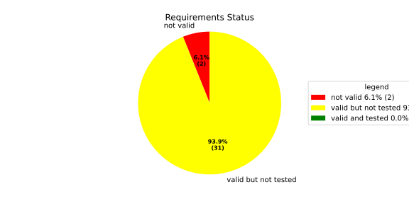
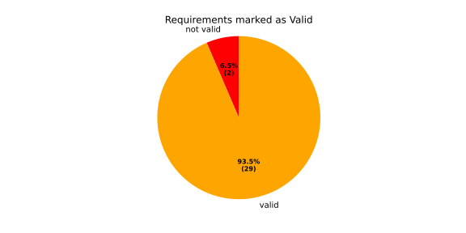
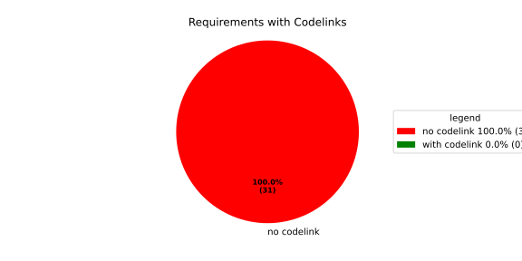
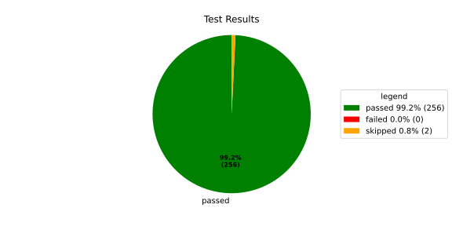
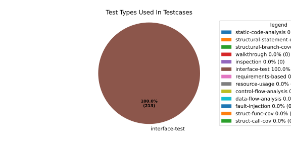
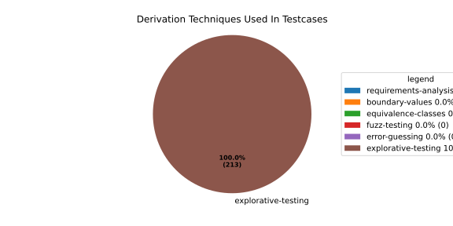

Verification Statistics#
Overview#

In Detail#



Failed Tests
Hint: This table should be empty. Before a PR can be merged all tests have to be successful.
No needs passed the filters
Skipped / Disabled Tests
testcase |
Result |
Fully Verifies |
Partially Verifies |
Test Type |
Derivation Technique |
link |
|---|---|---|---|---|---|---|
ValidateRangeTest/4__RejectsValueAboveMax |
skipped |
interface-test |
explorative-testing |
|||
ValidateRangeTest/4__RejectsValueBelowMin |
skipped |
interface-test |
explorative-testing |
All passed Tests#
testcase |
Result |
Fully Verifies |
Partially Verifies |
Test Type |
Derivation Technique |
link |
|---|---|---|---|---|---|---|
AliveImplTest__DoesNotThrowWhenInterfacePathEnvVarIsSet |
passed |
interface-test |
explorative-testing |
testcase__AliveImplTest__DoesNotThrowWhenInterfacePathEnvVarIsSet_xpewu |
||
AliveImplTest__ReportCheckpointSafeWhenNotConnected |
passed |
interface-test |
explorative-testing |
testcase__AliveImplTest__ReportCheckpointSafeWhenNotConnected_ppvuc |
||
AliveImplTest__ThrowsWhenInterfacePathEnvVarIsNotSet |
passed |
interface-test |
explorative-testing |
testcase__AliveImplTest__ThrowsWhenInterfacePathEnvVarIsNotSet_ekxfw |
||
AliveSupervisionTest__AliveDebouncesThroughFailedBeforeExpired |
passed |
interface-test |
explorative-testing |
testcase__AliveSupervisionTest__AliveDebouncesThroughFailedBeforeExpired_mlnbe |
||
AliveSupervisionTest__AliveReportsEnqueueFailureWhenRingBufferFull |
passed |
interface-test |
explorative-testing |
testcase__AliveSupervisionTest__AliveReportsEnqueueFailureWhenRingBufferFull_byhrd |
||
AliveSupervisionTest__AliveStaysOkWithCorrectHeartbeats |
passed |
interface-test |
explorative-testing |
testcase__AliveSupervisionTest__AliveStaysOkWithCorrectHeartbeats_vekof |
||
AliveSupervisionTest__AliveTransitionsOkToExpiredOnMissingHeartbeat |
passed |
interface-test |
explorative-testing |
testcase__AliveSupervisionTest__AliveTransitionsOkToExpiredOnMissingHeartbeat_jymxo |
||
AliveSupervisionTest__DeactivatesOnProcessCrash |
passed |
interface-test |
explorative-testing |
testcase__AliveSupervisionTest__DeactivatesOnProcessCrash_ypejs |
||
AliveSupervisionTest__DeactivatesOnProcessSigterm |
passed |
interface-test |
explorative-testing |
testcase__AliveSupervisionTest__DeactivatesOnProcessSigterm_hzaal |
||
AliveSupervisionTest__IgnoresIrrelevantProcessStates |
passed |
interface-test |
explorative-testing |
testcase__AliveSupervisionTest__IgnoresIrrelevantProcessStates_aolvb |
||
AliveSupervisionTest__MaxIndicationViolationExpires |
passed |
interface-test |
explorative-testing |
testcase__AliveSupervisionTest__MaxIndicationViolationExpires_whhhi |
||
AliveSupervisionTest__ReactivatesAfterCrash |
passed |
interface-test |
explorative-testing |
|||
ApplicationTypes/ApplicationTypeTest__ConvertsToExpectedValue/Native |
passed |
interface-test |
explorative-testing |
testcase__ApplicationTypes/ApplicationTypeTest__ConvertsToExpectedValue/Native_yxxcz |
||
ApplicationTypes/ApplicationTypeTest__ConvertsToExpectedValue/Reporting |
passed |
interface-test |
explorative-testing |
testcase__ApplicationTypes/ApplicationTypeTest__ConvertsToExpectedValue/Reporting_wcfwr |
||
ApplicationTypes/ApplicationTypeTest__ConvertsToExpectedValue/ReportingAndSupervised |
passed |
interface-test |
explorative-testing |
testcase__ApplicationTypes/ApplicationTypeTest__ConvertsToExpectedValue/ReportingAndSupervised_yxgad |
||
ApplicationTypes/ApplicationTypeTest__ConvertsToExpectedValue/StateManager |
passed |
interface-test |
explorative-testing |
testcase__ApplicationTypes/ApplicationTypeTest__ConvertsToExpectedValue/StateManager_ivuzc |
||
ConverterTest__ConvertAliveSupervisionMissingCycleReturnsError |
passed |
interface-test |
explorative-testing |
testcase__ConverterTest__ConvertAliveSupervisionMissingCycleReturnsError_bifzg |
||
ConverterTest__ConvertAliveSupervisionNullReturnsDefault |
passed |
interface-test |
explorative-testing |
testcase__ConverterTest__ConvertAliveSupervisionNullReturnsDefault_clyua |
||
ConverterTest__ConvertAliveSupervisionValid |
passed |
interface-test |
explorative-testing |
|||
ConverterTest__ConvertApplicationProfileMissingSelfTerminatingReturnsError |
passed |
interface-test |
explorative-testing |
testcase__ConverterTest__ConvertApplicationProfileMissingSelfTerminatingReturnsError_zddjb |
||
ConverterTest__ConvertApplicationProfileMissingTypeReturnsError |
passed |
interface-test |
explorative-testing |
testcase__ConverterTest__ConvertApplicationProfileMissingTypeReturnsError_zrfcs |
||
ConverterTest__ConvertApplicationProfileValid |
passed |
interface-test |
explorative-testing |
testcase__ConverterTest__ConvertApplicationProfileValid_oohxq |
||
ConverterTest__ConvertComponentAliveSupervisionBothIndicationsAbsentReturnsError |
passed |
interface-test |
explorative-testing |
testcase__ConverterTest__ConvertComponentAliveSupervisionBothIndicationsAbsentReturnsError_gvtfi |
||
ConverterTest__ConvertComponentAliveSupervisionMissingReportingCycleReturnsError |
passed |
interface-test |
explorative-testing |
testcase__ConverterTest__ConvertComponentAliveSupervisionMissingReportingCycleReturnsError_ajymy |
||
ConverterTest__ConvertComponentAliveSupervisionMissingToleranceReturnsError |
passed |
interface-test |
explorative-testing |
testcase__ConverterTest__ConvertComponentAliveSupervisionMissingToleranceReturnsError_lgrhj |
||
ConverterTest__ConvertComponentAliveSupervisionNullReturnsDefault |
passed |
interface-test |
explorative-testing |
testcase__ConverterTest__ConvertComponentAliveSupervisionNullReturnsDefault_xhaus |
||
ConverterTest__ConvertComponentAliveSupervisionOnlyMaxIndicationsPresent |
passed |
interface-test |
explorative-testing |
testcase__ConverterTest__ConvertComponentAliveSupervisionOnlyMaxIndicationsPresent_smwht |
||
ConverterTest__ConvertComponentAliveSupervisionOnlyMinIndicationsPresent |
passed |
interface-test |
explorative-testing |
testcase__ConverterTest__ConvertComponentAliveSupervisionOnlyMinIndicationsPresent_ybbrr |
||
ConverterTest__ConvertComponentAliveSupervisionValid |
passed |
interface-test |
explorative-testing |
testcase__ConverterTest__ConvertComponentAliveSupervisionValid_ijedh |
||
ConverterTest__ConvertComponentsValid |
passed |
interface-test |
explorative-testing |
|||
ConverterTest__ConvertComponentsWithInvalidComponentReturnsError |
passed |
interface-test |
explorative-testing |
testcase__ConverterTest__ConvertComponentsWithInvalidComponentReturnsError_wridc |
||
ConverterTest__ConvertComponentValid |
passed |
interface-test |
explorative-testing |
|||
ConverterTest__ConvertDeploymentConfigMissingReadyTimeoutReturnsError |
passed |
interface-test |
explorative-testing |
testcase__ConverterTest__ConvertDeploymentConfigMissingReadyTimeoutReturnsError_ljzfl |
||
ConverterTest__ConvertDeploymentConfigMissingShutdownTimeoutReturnsError |
passed |
interface-test |
explorative-testing |
testcase__ConverterTest__ConvertDeploymentConfigMissingShutdownTimeoutReturnsError_vyqye |
||
ConverterTest__ConvertDeploymentConfigValid |
passed |
interface-test |
explorative-testing |
|||
ConverterTest__ConvertEnvironmentalVariables |
passed |
interface-test |
explorative-testing |
testcase__ConverterTest__ConvertEnvironmentalVariables_fnhgo |
||
ConverterTest__ConvertEnvironmentalVariablesNullReturnsEmpty |
passed |
interface-test |
explorative-testing |
testcase__ConverterTest__ConvertEnvironmentalVariablesNullReturnsEmpty_vglrx |
||
ConverterTest__ConvertFallbackRunTargetMissingTimeoutReturnsError |
passed |
interface-test |
explorative-testing |
testcase__ConverterTest__ConvertFallbackRunTargetMissingTimeoutReturnsError_aevly |
||
ConverterTest__ConvertFallbackRunTargetValid |
passed |
interface-test |
explorative-testing |
testcase__ConverterTest__ConvertFallbackRunTargetValid_nexxj |
||
ConverterTest__ConvertReadyConditionMissingProcessStateReturnsError |
passed |
interface-test |
explorative-testing |
testcase__ConverterTest__ConvertReadyConditionMissingProcessStateReturnsError_ileav |
||
ConverterTest__ConvertReadyConditionValid |
passed |
interface-test |
explorative-testing |
|||
ConverterTest__ConvertRestartActionMissingFieldsReturnsError |
passed |
interface-test |
explorative-testing |
testcase__ConverterTest__ConvertRestartActionMissingFieldsReturnsError_aapjb |
||
ConverterTest__ConvertRestartActionNullReturnsNullopt |
passed |
interface-test |
explorative-testing |
testcase__ConverterTest__ConvertRestartActionNullReturnsNullopt_ifvyd |
||
ConverterTest__ConvertRestartActionValid |
passed |
interface-test |
explorative-testing |
|||
ConverterTest__ConvertRunTargetMissingTransitionTimeoutReturnsError |
passed |
interface-test |
explorative-testing |
testcase__ConverterTest__ConvertRunTargetMissingTransitionTimeoutReturnsError_ynekv |
||
ConverterTest__ConvertRunTargetsValid |
passed |
interface-test |
explorative-testing |
|||
ConverterTest__ConvertRunTargetsWithInvalidRunTargetReturnsError |
passed |
interface-test |
explorative-testing |
testcase__ConverterTest__ConvertRunTargetsWithInvalidRunTargetReturnsError_ldlox |
||
ConverterTest__ConvertRunTargetValid |
passed |
interface-test |
explorative-testing |
|||
ConverterTest__ConvertSandboxMissingGidReturnsError |
passed |
interface-test |
explorative-testing |
testcase__ConverterTest__ConvertSandboxMissingGidReturnsError_veeel |
||
ConverterTest__ConvertSandboxMissingSchedulingPolicyReturnsError |
passed |
interface-test |
explorative-testing |
testcase__ConverterTest__ConvertSandboxMissingSchedulingPolicyReturnsError_pkfts |
||
ConverterTest__ConvertSandboxMissingSchedulingPriorityReturnsError |
passed |
interface-test |
explorative-testing |
testcase__ConverterTest__ConvertSandboxMissingSchedulingPriorityReturnsError_xzdho |
||
ConverterTest__ConvertSandboxMissingUidReturnsError |
passed |
interface-test |
explorative-testing |
testcase__ConverterTest__ConvertSandboxMissingUidReturnsError_ogfku |
||
ConverterTest__ConvertSandboxSupplementaryGidOutOfRangeReturnsError |
passed |
interface-test |
explorative-testing |
testcase__ConverterTest__ConvertSandboxSupplementaryGidOutOfRangeReturnsError_zavpx |
||
ConverterTest__ConvertSandboxUidOutOfRangeReturnsError |
passed |
interface-test |
explorative-testing |
testcase__ConverterTest__ConvertSandboxUidOutOfRangeReturnsError_mcuaf |
||
ConverterTest__ConvertSandboxValid |
passed |
interface-test |
explorative-testing |
|||
ConverterTest__ConvertSwitchRunTargetActionNullReturnsNullopt |
passed |
interface-test |
explorative-testing |
testcase__ConverterTest__ConvertSwitchRunTargetActionNullReturnsNullopt_zmitx |
||
ConverterTest__ConvertSwitchRunTargetActionValid |
passed |
interface-test |
explorative-testing |
testcase__ConverterTest__ConvertSwitchRunTargetActionValid_tdklr |
||
ConverterTest__ConvertWatchdogMissingDeactivateReturnsError |
passed |
interface-test |
explorative-testing |
testcase__ConverterTest__ConvertWatchdogMissingDeactivateReturnsError_gzwjt |
||
ConverterTest__ConvertWatchdogMissingMagicCloseReturnsError |
passed |
interface-test |
explorative-testing |
testcase__ConverterTest__ConvertWatchdogMissingMagicCloseReturnsError_gexxk |
||
ConverterTest__ConvertWatchdogMissingMaxTimeoutReturnsError |
passed |
interface-test |
explorative-testing |
testcase__ConverterTest__ConvertWatchdogMissingMaxTimeoutReturnsError_lffxm |
||
ConverterTest__ConvertWatchdogNullReturnsNullopt |
passed |
interface-test |
explorative-testing |
testcase__ConverterTest__ConvertWatchdogNullReturnsNullopt_irsdk |
||
ConverterTest__ConvertWatchdogValid |
passed |
interface-test |
explorative-testing |
|||
DeadlineFixture__Start_AlreadyRunning |
passed |
interface-test |
explorative-testing |
|||
DeadlineFixture__Start_Succeeds |
passed |
interface-test |
explorative-testing |
|||
DeadlineMonitorBuilderFixture__AddDeadline_Succeeds |
passed |
interface-test |
explorative-testing |
testcase__DeadlineMonitorBuilderFixture__AddDeadline_Succeeds_nagke |
||
DeadlineMonitorBuilderFixture__New_Succeeds |
passed |
interface-test |
explorative-testing |
|||
DeadlineMonitorFixture__GetDeadline_Succeeds |
passed |
interface-test |
explorative-testing |
testcase__DeadlineMonitorFixture__GetDeadline_Succeeds_tmltf |
||
DeadlineMonitorFixture__GetDeadline_Unknown |
passed |
interface-test |
explorative-testing |
|||
EnumConversionTest__ConvertSchedulingPolicyUnsupported |
passed |
interface-test |
explorative-testing |
testcase__EnumConversionTest__ConvertSchedulingPolicyUnsupported_iavqm |
||
EnvironmentTest__AddIncreasesSize |
passed |
interface-test |
explorative-testing |
|||
EnvironmentTest__DefaultConstructedIsEmpty |
passed |
interface-test |
explorative-testing |
|||
EnvironmentTest__EmptyEnvironmentEnvpIsNullTerminated |
passed |
interface-test |
explorative-testing |
testcase__EnvironmentTest__EmptyEnvironmentEnvpIsNullTerminated_wwumw |
||
EnvironmentTest__EnvpReturnsNullTerminatedArray |
passed |
interface-test |
explorative-testing |
testcase__EnvironmentTest__EnvpReturnsNullTerminatedArray_aubkv |
||
EnvironmentTest__EnvpWithMultipleEntries |
passed |
interface-test |
explorative-testing |
|||
EnvironmentTest__MoveAssignmentPreservesEntries |
passed |
interface-test |
explorative-testing |
testcase__EnvironmentTest__MoveAssignmentPreservesEntries_vkydj |
||
EnvironmentTest__MoveConstructorPreservesEntries |
passed |
interface-test |
explorative-testing |
testcase__EnvironmentTest__MoveConstructorPreservesEntries_upclt |
||
EnvironmentTest__RangeBasedForLoopWorks |
passed |
interface-test |
explorative-testing |
|||
EnvironmentTest__ReserveAndAddAvoidReallocation |
passed |
interface-test |
explorative-testing |
testcase__EnvironmentTest__ReserveAndAddAvoidReallocation_lgzmu |
||
EnvironmentTest__SsoLengthStringSurvivesReallocation |
passed |
interface-test |
explorative-testing |
testcase__EnvironmentTest__SsoLengthStringSurvivesReallocation_jfmtl |
||
EnvironmentVariableTest__CStrReturnsKeyEqualsValue |
passed |
interface-test |
explorative-testing |
testcase__EnvironmentVariableTest__CStrReturnsKeyEqualsValue_rkwan |
||
EnvironmentVariableTest__EmptyValue |
passed |
interface-test |
explorative-testing |
|||
EnvironmentVariableTest__KeyAndValueAreAccessible |
passed |
interface-test |
explorative-testing |
testcase__EnvironmentVariableTest__KeyAndValueAreAccessible_kcrth |
||
EnvironmentVariableTest__ValueContainingEquals |
passed |
interface-test |
explorative-testing |
testcase__EnvironmentVariableTest__ValueContainingEquals_apzgz |
||
ExecErrorDomainTest__AllKnownCodesHaveDistinctMessages |
passed |
interface-test |
explorative-testing |
testcase__ExecErrorDomainTest__AllKnownCodesHaveDistinctMessages_qpoka |
||
ExecErrorDomainTest__AllKnownCodesReturnNonEmptyMessage |
passed |
interface-test |
explorative-testing |
testcase__ExecErrorDomainTest__AllKnownCodesReturnNonEmptyMessage_bawzg |
||
ExecErrorDomainTest__UnknownCodeReturnsNonEmptyMessage |
passed |
interface-test |
explorative-testing |
testcase__ExecErrorDomainTest__UnknownCodeReturnsNonEmptyMessage_kkwpr |
||
FlatbufferConfigLoaderTest__CorruptedBufferReturnsInvalidFormat |
passed |
interface-test |
explorative-testing |
testcase__FlatbufferConfigLoaderTest__CorruptedBufferReturnsInvalidFormat_twyac |
||
FlatbufferConfigLoaderTest__LoadAliveSupervision |
passed |
interface-test |
explorative-testing |
testcase__FlatbufferConfigLoaderTest__LoadAliveSupervision_hhuux |
||
FlatbufferConfigLoaderTest__LoadBufferFailsWithGenericErrorReturnsGeneralError |
passed |
interface-test |
explorative-testing |
testcase__FlatbufferConfigLoaderTest__LoadBufferFailsWithGenericErrorReturnsGeneralError_kmatm |
||
FlatbufferConfigLoaderTest__LoadBufferFailsWithNoSuchFileReturnsFileNotFound |
passed |
interface-test |
explorative-testing |
testcase__FlatbufferConfigLoaderTest__LoadBufferFailsWithNoSuchFileReturnsFileNotFound_yzlra |
||
FlatbufferConfigLoaderTest__LoadBufferFailsWithPermissionDeniedReturnsInsufficientPermission |
passed |
interface-test |
explorative-testing |
|||
FlatbufferConfigLoaderTest__LoadComponentAliveSupervision |
passed |
interface-test |
explorative-testing |
testcase__FlatbufferConfigLoaderTest__LoadComponentAliveSupervision_fwfad |
||
FlatbufferConfigLoaderTest__LoadEnvironmentalVariables |
passed |
interface-test |
explorative-testing |
testcase__FlatbufferConfigLoaderTest__LoadEnvironmentalVariables_wsosu |
||
FlatbufferConfigLoaderTest__LoadFallbackRunTarget |
passed |
interface-test |
explorative-testing |
testcase__FlatbufferConfigLoaderTest__LoadFallbackRunTarget_wduqm |
||
FlatbufferConfigLoaderTest__LoadMinimalConfig |
passed |
interface-test |
explorative-testing |
testcase__FlatbufferConfigLoaderTest__LoadMinimalConfig_hdkck |
||
FlatbufferConfigLoaderTest__LoadMultipleComponents |
passed |
interface-test |
explorative-testing |
testcase__FlatbufferConfigLoaderTest__LoadMultipleComponents_abpom |
||
FlatbufferConfigLoaderTest__LoadRestartRecoveryAction |
passed |
interface-test |
explorative-testing |
testcase__FlatbufferConfigLoaderTest__LoadRestartRecoveryAction_wyfqg |
||
FlatbufferConfigLoaderTest__LoadRunTargets |
passed |
interface-test |
explorative-testing |
|||
FlatbufferConfigLoaderTest__LoadSandbox |
passed |
interface-test |
explorative-testing |
|||
FlatbufferConfigLoaderTest__LoadSingleComponent |
passed |
interface-test |
explorative-testing |
testcase__FlatbufferConfigLoaderTest__LoadSingleComponent_yidty |
||
FlatbufferConfigLoaderTest__LoadSwitchRunTargetAction |
passed |
interface-test |
explorative-testing |
testcase__FlatbufferConfigLoaderTest__LoadSwitchRunTargetAction_uchgp |
||
FlatbufferConfigLoaderTest__LoadWatchdog |
passed |
interface-test |
explorative-testing |
|||
FlatbufferConfigLoaderTest__MissingSchemaVersionReturnsInvalidFormat |
passed |
interface-test |
explorative-testing |
testcase__FlatbufferConfigLoaderTest__MissingSchemaVersionReturnsInvalidFormat_qqmfn |
||
FlatbufferConfigLoaderTest__OptionalReadyConditionAbsent |
passed |
interface-test |
explorative-testing |
testcase__FlatbufferConfigLoaderTest__OptionalReadyConditionAbsent_lhddx |
||
FlatbufferConfigLoaderTest__OptionalWatchdogAbsent |
passed |
interface-test |
explorative-testing |
testcase__FlatbufferConfigLoaderTest__OptionalWatchdogAbsent_pkhkp |
||
FlatbufferConfigLoaderTest__WrongSchemaVersionReturnsUnsupportedVersion |
passed |
interface-test |
explorative-testing |
testcase__FlatbufferConfigLoaderTest__WrongSchemaVersionReturnsUnsupportedVersion_zrbjv |
||
HealthMonitor__GetDeadlineMonitor_Available |
passed |
|||||
HealthMonitor__GetDeadlineMonitor_Taken |
passed |
|||||
HealthMonitor__GetDeadlineMonitor_Unknown |
passed |
|||||
HealthMonitor__GetHeartbeatMonitor_Available |
passed |
testcase__HealthMonitor__GetHeartbeatMonitor_Available_aacat |
||||
HealthMonitor__GetHeartbeatMonitor_Taken |
passed |
|||||
HealthMonitor__GetHeartbeatMonitor_Unknown |
passed |
|||||
HealthMonitor__GetLogicMonitor_Available |
passed |
|||||
HealthMonitor__GetLogicMonitor_Taken |
passed |
|||||
HealthMonitor__GetLogicMonitor_Unknown |
passed |
|||||
HealthMonitor__Start_MonitorsNotTaken |
passed |
|||||
HealthMonitor__Start_Succeeds |
passed |
|||||
HealthMonitorBuilderFixture__Build_InvalidCycles |
passed |
interface-test |
explorative-testing |
testcase__HealthMonitorBuilderFixture__Build_InvalidCycles_pdigk |
||
HealthMonitorBuilderFixture__Build_NoMonitors |
passed |
interface-test |
explorative-testing |
testcase__HealthMonitorBuilderFixture__Build_NoMonitors_ktcve |
||
HealthMonitorBuilderFixture__Build_Succeeds |
passed |
interface-test |
explorative-testing |
|||
HealthMonitorBuilderFixture__New_Succeeds |
passed |
interface-test |
explorative-testing |
|||
HealthMonitorTest__Integrated |
passed |
interface-test |
explorative-testing |
|||
HeartbeatMonitor__Heartbeat_Succeeds |
passed |
interface-test |
explorative-testing |
|||
HeartbeatMonitorBuilder__New_Succeeds |
passed |
interface-test |
explorative-testing |
|||
IdentifierHashTest__IdentifierHash_default_created |
passed |
interface-test |
explorative-testing |
testcase__IdentifierHashTest__IdentifierHash_default_created_yhhvi |
||
IdentifierHashTest__IdentifierHash_EqualityOperators |
passed |
interface-test |
explorative-testing |
testcase__IdentifierHashTest__IdentifierHash_EqualityOperators_nnsuj |
||
IdentifierHashTest__IdentifierHash_invalid_hash_no_string_representation |
passed |
interface-test |
explorative-testing |
testcase__IdentifierHashTest__IdentifierHash_invalid_hash_no_string_representation_rxowr |
||
IdentifierHashTest__IdentifierHash_LessThanOperator |
passed |
interface-test |
explorative-testing |
testcase__IdentifierHashTest__IdentifierHash_LessThanOperator_rnbax |
||
IdentifierHashTest__IdentifierHash_no_dangling_pointer_after_source_string_dies |
passed |
interface-test |
explorative-testing |
testcase__IdentifierHashTest__IdentifierHash_no_dangling_pointer_after_source_string_dies_qsjin |
||
IdentifierHashTest__IdentifierHash_with_string_created |
passed |
interface-test |
explorative-testing |
testcase__IdentifierHashTest__IdentifierHash_with_string_created_aygdm |
||
IdentifierHashTest__IdentifierHash_with_string_view_created |
passed |
interface-test |
explorative-testing |
testcase__IdentifierHashTest__IdentifierHash_with_string_view_created_dbpol |
||
LogicMonitorBuilderFixture__AddState_Succeeds |
passed |
interface-test |
explorative-testing |
testcase__LogicMonitorBuilderFixture__AddState_Succeeds_axdxj |
||
LogicMonitorBuilderFixture__New_Succeeds |
passed |
interface-test |
explorative-testing |
|||
LogicMonitorFixture__State_Invalid |
passed |
interface-test |
explorative-testing |
|||
LogicMonitorFixture__State_Succeeds |
passed |
interface-test |
explorative-testing |
|||
LogicMonitorFixture__Transition_Invalid |
passed |
interface-test |
explorative-testing |
|||
LogicMonitorFixture__Transition_Succeeds |
passed |
interface-test |
explorative-testing |
|||
LogicMonitorFixture__Transition_Unknown |
passed |
interface-test |
explorative-testing |
|||
MonitorIfDaemonTest__Active_CheckpointDataForwarded |
passed |
interface-test |
explorative-testing |
testcase__MonitorIfDaemonTest__Active_CheckpointDataForwarded_evumz |
||
MonitorIfDaemonTest__Active_FutureTimestamp_NotForwardedInCurrentCycle |
passed |
interface-test |
explorative-testing |
testcase__MonitorIfDaemonTest__Active_FutureTimestamp_NotForwardedInCurrentCycle_oycau |
||
MonitorIfDaemonTest__Active_FutureTimestampCheckpoint_ConsumedInLaterCycle |
passed |
interface-test |
explorative-testing |
testcase__MonitorIfDaemonTest__Active_FutureTimestampCheckpoint_ConsumedInLaterCycle_veyyy |
||
MonitorIfDaemonTest__Active_MultipleCheckpointsInOneCycle_AllForwarded |
passed |
interface-test |
explorative-testing |
testcase__MonitorIfDaemonTest__Active_MultipleCheckpointsInOneCycle_AllForwarded_gmbms |
||
MonitorIfDaemonTest__Active_NonMatchingCheckpointId_NotForwarded |
passed |
interface-test |
explorative-testing |
testcase__MonitorIfDaemonTest__Active_NonMatchingCheckpointId_NotForwarded_bohck |
||
MonitorIfDaemonTest__Active_OverflowDetected_TransitionsToInactiveOverflow |
passed |
interface-test |
explorative-testing |
testcase__MonitorIfDaemonTest__Active_OverflowDetected_TransitionsToInactiveOverflow_ovitk |
||
MonitorIfDaemonTest__Active_TwoAttachedCheckpoints_RoutedByCheckpointId |
passed |
interface-test |
explorative-testing |
testcase__MonitorIfDaemonTest__Active_TwoAttachedCheckpoints_RoutedByCheckpointId_skqhd |
||
MonitorIfDaemonTest__GetInterfaceName_ReturnsNameGivenAtConstruction |
passed |
interface-test |
explorative-testing |
testcase__MonitorIfDaemonTest__GetInterfaceName_ReturnsNameGivenAtConstruction_iaemz |
||
MonitorIfDaemonTest__InactiveOverflow_NoProcessRestart_DoesNotRepeatNotification |
passed |
interface-test |
explorative-testing |
testcase__MonitorIfDaemonTest__InactiveOverflow_NoProcessRestart_DoesNotRepeatNotification_gdbxg |
||
MonitorIfDaemonTest__InactiveOverflow_ProcessRestartFlag_ClearedAfterNotification |
passed |
interface-test |
explorative-testing |
testcase__MonitorIfDaemonTest__InactiveOverflow_ProcessRestartFlag_ClearedAfterNotification_pqfyy |
||
MonitorIfDaemonTest__InactiveOverflow_ProcessRestarts_PushesOverflowNotificationAgain |
passed |
interface-test |
explorative-testing |
|||
MonitorIfDaemonTest__InitiallyInactive_CheckForNewData_DoesNotNotifyCheckpoint |
passed |
interface-test |
explorative-testing |
testcase__MonitorIfDaemonTest__InitiallyInactive_CheckForNewData_DoesNotNotifyCheckpoint_wjrfl |
||
MonitorIfDaemonTest__ProcessOff_DeactivatesMonitor_NoFurtherDataForwarded |
passed |
interface-test |
explorative-testing |
testcase__MonitorIfDaemonTest__ProcessOff_DeactivatesMonitor_NoFurtherDataForwarded_uialh |
||
MonitorIfDaemonTest__ProcessOffBeforeActivation_RemainsInactive |
passed |
interface-test |
explorative-testing |
testcase__MonitorIfDaemonTest__ProcessOffBeforeActivation_RemainsInactive_kzzyy |
||
MonitorIfDaemonTest__ProcessRunning_ActivatesMonitorOnNextCheckForNewData |
passed |
interface-test |
explorative-testing |
testcase__MonitorIfDaemonTest__ProcessRunning_ActivatesMonitorOnNextCheckForNewData_fkkmk |
||
MonitorIfDaemonTest__ProcessStarting_AlsoActivatesMonitor |
passed |
interface-test |
explorative-testing |
testcase__MonitorIfDaemonTest__ProcessStarting_AlsoActivatesMonitor_xdkbg |
||
MPMCConcurrentQueueTest_Basic__LvaluePushCopiesItem |
passed |
testcase__MPMCConcurrentQueueTest_Basic__LvaluePushCopiesItem_oysfc |
||||
MPMCConcurrentQueueTest_Basic__PopReturnsNulloptOnSemaphoreWaitFailure |
passed |
testcase__MPMCConcurrentQueueTest_Basic__PopReturnsNulloptOnSemaphoreWaitFailure_rgznm |
||||
MPMCConcurrentQueueTest_Basic__PushAndPopPreservesOrder |
passed |
testcase__MPMCConcurrentQueueTest_Basic__PushAndPopPreservesOrder_aijdb |
||||
MPMCConcurrentQueueTest_Basic__PushAndPopSingleItem |
passed |
testcase__MPMCConcurrentQueueTest_Basic__PushAndPopSingleItem_jrxwz |
||||
MPMCConcurrentQueueTest_Basic__RvaluePushWorksWithMoveOnlyType |
passed |
testcase__MPMCConcurrentQueueTest_Basic__RvaluePushWorksWithMoveOnlyType_cxxaj |
||||
MPMCConcurrentQueueTest_Blocking__PopBlocksUntilItemAvailable |
passed |
testcase__MPMCConcurrentQueueTest_Blocking__PopBlocksUntilItemAvailable_ttwcx |
||||
MPMCConcurrentQueueTest_Blocking__PushBlocksWhenFull |
passed |
testcase__MPMCConcurrentQueueTest_Blocking__PushBlocksWhenFull_ecujf |
||||
MPMCConcurrentQueueTest_Blocking__StopUnblocksBlockedConsumer |
passed |
testcase__MPMCConcurrentQueueTest_Blocking__StopUnblocksBlockedConsumer_snzyr |
||||
MPMCConcurrentQueueTest_Blocking__StopUnblocksBlockedProducer |
passed |
testcase__MPMCConcurrentQueueTest_Blocking__StopUnblocksBlockedProducer_inddu |
||||
MPMCConcurrentQueueTest_MPMC__AllItemsDelivered |
passed |
testcase__MPMCConcurrentQueueTest_MPMC__AllItemsDelivered_ztjqe |
||||
MPMCConcurrentQueueTest_Stop__ItemsAreDroppedAfterStop |
passed |
testcase__MPMCConcurrentQueueTest_Stop__ItemsAreDroppedAfterStop_ragzw |
||||
MPMCConcurrentQueueTest_Stop__PopReturnsNulloptWhenStoppedAndEmpty |
passed |
testcase__MPMCConcurrentQueueTest_Stop__PopReturnsNulloptWhenStoppedAndEmpty_cevga |
||||
MPMCConcurrentQueueTest_Stop__PushReturnsFalseAfterStop |
passed |
testcase__MPMCConcurrentQueueTest_Stop__PushReturnsFalseAfterStop_qqnhw |
||||
MPMCConcurrentQueueTest_Timeout__PushWithTimeoutReturnsFalseWhenFull |
passed |
testcase__MPMCConcurrentQueueTest_Timeout__PushWithTimeoutReturnsFalseWhenFull_aeips |
||||
MPMCConcurrentQueueTest_Timeout__PushWithTimeoutSucceedsWhenSlotAvailable |
passed |
testcase__MPMCConcurrentQueueTest_Timeout__PushWithTimeoutSucceedsWhenSlotAvailable_klzpo |
||||
OsHandlerTest__WaitReturnsError_OsHandlerSleepsAndDoesNotCallFindTerminated |
passed |
interface-test |
explorative-testing |
testcase__OsHandlerTest__WaitReturnsError_OsHandlerSleepsAndDoesNotCallFindTerminated_cibtr |
||
OsHandlerTest__WaitReturnsErrorThenProcessId_HandlerRecoversAndInvokesCallback |
passed |
interface-test |
explorative-testing |
testcase__OsHandlerTest__WaitReturnsErrorThenProcessId_HandlerRecoversAndInvokesCallback_nqstd |
||
OsHandlerTest__WaitReturnsProcessId_FindTerminatedIsCalled |
passed |
interface-test |
explorative-testing |
testcase__OsHandlerTest__WaitReturnsProcessId_FindTerminatedIsCalled_chlsq |
||
OsHandlerTest__WaitReturnsProcessIdBeforeRegistration_LaterRegistrationReceivesStoredTermination |
passed |
interface-test |
explorative-testing |
|||
OsHandlerTest__WaitReturnsUnknownPidWhenMapIsFull_OutOfResourcesPathDoesNotNotifyCallbacks |
passed |
interface-test |
explorative-testing |
|||
OsHandlerTest__WaitReturnsZeroPid_OsHandlerSleepsAndDoesNotCallFindTerminated |
passed |
interface-test |
explorative-testing |
testcase__OsHandlerTest__WaitReturnsZeroPid_OsHandlerSleepsAndDoesNotCallFindTerminated_rkttz |
||
ProcessStateClient_UT__ProcessStateClient_ConstructReceiver_Succeeds |
passed |
interface-test |
explorative-testing |
testcase__ProcessStateClient_UT__ProcessStateClient_ConstructReceiver_Succeeds_hodwy |
||
ProcessStateClient_UT__ProcessStateClient_QueueMaxNumberOfProcesses_Succeeds |
passed |
interface-test |
explorative-testing |
testcase__ProcessStateClient_UT__ProcessStateClient_QueueMaxNumberOfProcesses_Succeeds_qohom |
||
ProcessStateClient_UT__ProcessStateClient_QueueOneProcess_Succeeds |
passed |
interface-test |
explorative-testing |
testcase__ProcessStateClient_UT__ProcessStateClient_QueueOneProcess_Succeeds_tmzfz |
||
ProcessStateClient_UT__ProcessStateClient_QueueOneProcessTooMany_Fails |
passed |
interface-test |
explorative-testing |
testcase__ProcessStateClient_UT__ProcessStateClient_QueueOneProcessTooMany_Fails_sspoj |
||
ProcessStates/ProcessStateTest__ConvertsToExpectedValue/Running |
passed |
interface-test |
explorative-testing |
testcase__ProcessStates/ProcessStateTest__ConvertsToExpectedValue/Running_hinlr |
||
ProcessStates/ProcessStateTest__ConvertsToExpectedValue/Terminated |
passed |
interface-test |
explorative-testing |
testcase__ProcessStates/ProcessStateTest__ConvertsToExpectedValue/Terminated_zrytn |
||
RecoveryClientTest__FIFOOrdering |
passed |
interface-test |
explorative-testing |
|||
RecoveryClientTest__GetNextRequest |
passed |
interface-test |
explorative-testing |
|||
RecoveryClientTest__GetNextRequestEmpty |
passed |
interface-test |
explorative-testing |
|||
RecoveryClientTest__RingBufferFull |
passed |
interface-test |
explorative-testing |
|||
RecoveryClientTest__SendSingleRequest |
passed |
interface-test |
explorative-testing |
|||
RunTest__AsPosixProcessCreatesAndDestroysLifeCycleManager |
passed |
testcase__RunTest__AsPosixProcessCreatesAndDestroysLifeCycleManager_sooex |
||||
RunTest__AsPosixProcessForwardsConstructorArgsToApplication |
passed |
testcase__RunTest__AsPosixProcessForwardsConstructorArgsToApplication_dmeur |
||||
RunTest__AsPosixProcessForwardsNonZeroExitCode |
passed |
testcase__RunTest__AsPosixProcessForwardsNonZeroExitCode_lldqd |
||||
RunTest__AsPosixProcessPassesCorrectApplicationTypeToRun |
passed |
testcase__RunTest__AsPosixProcessPassesCorrectApplicationTypeToRun_ajqwz |
||||
RunTest__AsPosixProcessReturnsZeroExitCode |
passed |
|||||
RunTest__RunApplicationFreeFunctionDelegatesToAsPosixProcess |
passed |
testcase__RunTest__RunApplicationFreeFunctionDelegatesToAsPosixProcess_ccing |
||||
RunTest__RunConstructorPassesArgcArgvToApplicationContext |
passed |
testcase__RunTest__RunConstructorPassesArgcArgvToApplicationContext_agerd |
||||
SafeProcessMapTest__ConcurrentFindAndInsertFromMultipleThreads |
passed |
interface-test |
explorative-testing |
testcase__SafeProcessMapTest__ConcurrentFindAndInsertFromMultipleThreads_kzfyg |
||
SafeProcessMapTest__ConcurrentInsertAndFindFromMultipleThreads |
passed |
interface-test |
explorative-testing |
testcase__SafeProcessMapTest__ConcurrentInsertAndFindFromMultipleThreads_hnyqj |
||
SafeProcessMapTest__ConstructWithZeroCapacity |
passed |
interface-test |
explorative-testing |
testcase__SafeProcessMapTest__ConstructWithZeroCapacity_gjmqg |
||
SafeProcessMapTest__FindTerminatedInsertsEntryWhenPidNotPresent |
passed |
interface-test |
explorative-testing |
testcase__SafeProcessMapTest__FindTerminatedInsertsEntryWhenPidNotPresent_ixtlt |
||
SafeProcessMapTest__FindTerminatedMatchesExistingInsertAndCallsCallback |
passed |
interface-test |
explorative-testing |
testcase__SafeProcessMapTest__FindTerminatedMatchesExistingInsertAndCallsCallback_ehuzb |
||
SafeProcessMapTest__FindTerminatedSamePidTwiceYieldsUntilInsertResolves |
passed |
interface-test |
explorative-testing |
testcase__SafeProcessMapTest__FindTerminatedSamePidTwiceYieldsUntilInsertResolves_hsekx |
||
SafeProcessMapTest__FindTerminatedWithNegativePidReturnsInvalid |
passed |
interface-test |
explorative-testing |
testcase__SafeProcessMapTest__FindTerminatedWithNegativePidReturnsInvalid_dewoh |
||
SafeProcessMapTest__FindTerminatedWorksAtMaxTreeDepth |
passed |
interface-test |
explorative-testing |
testcase__SafeProcessMapTest__FindTerminatedWorksAtMaxTreeDepth_adtzi |
||
SafeProcessMapTest__InsertBeyondCapacityReturnsOutOfMemory |
passed |
interface-test |
explorative-testing |
testcase__SafeProcessMapTest__InsertBeyondCapacityReturnsOutOfMemory_qjnie |
||
SafeProcessMapTest__InsertIntoEmptyTreeReturnsZero |
passed |
interface-test |
explorative-testing |
testcase__SafeProcessMapTest__InsertIntoEmptyTreeReturnsZero_zfbaq |
||
SafeProcessMapTest__InsertMatchesExistingFindTerminatedEntry |
passed |
interface-test |
explorative-testing |
testcase__SafeProcessMapTest__InsertMatchesExistingFindTerminatedEntry_fuwrp |
||
SafeProcessMapTest__InsertMultipleNodesThenFindTerminatedRemovesAll |
passed |
interface-test |
explorative-testing |
testcase__SafeProcessMapTest__InsertMultipleNodesThenFindTerminatedRemovesAll_fvowh |
||
SafeProcessMapTest__InsertSamePidTwiceYieldsUntilFindTerminatedResolves |
passed |
interface-test |
explorative-testing |
testcase__SafeProcessMapTest__InsertSamePidTwiceYieldsUntilFindTerminatedResolves_wzwyb |
||
SchedulingPolicies/SchedulingPolicyTest__ConvertsToExpectedPosixValue/SCHED_FIFO |
passed |
interface-test |
explorative-testing |
testcase__SchedulingPolicies/SchedulingPolicyTest__ConvertsToExpectedPosixValue/SCHED_FIFO_soddq |
||
SchedulingPolicies/SchedulingPolicyTest__ConvertsToExpectedPosixValue/SCHED_OTHER |
passed |
interface-test |
explorative-testing |
testcase__SchedulingPolicies/SchedulingPolicyTest__ConvertsToExpectedPosixValue/SCHED_OTHER_oigmk |
||
SchedulingPolicies/SchedulingPolicyTest__ConvertsToExpectedPosixValue/SCHED_RR |
passed |
interface-test |
explorative-testing |
testcase__SchedulingPolicies/SchedulingPolicyTest__ConvertsToExpectedPosixValue/SCHED_RR_pcjci |
||
score/health_monitor/src/rust/test-510566969/tests |
passed |
testcase__score/health_monitor/src/rust/test-510566969/tests_kjjlw |
||||
score/health_monitor/src/rust/test-827801879/loom_tests |
passed |
testcase__score/health_monitor/src/rust/test-827801879/loom_tests_cpmix |
||||
SecondsToMsTest__ConvertsPositiveValue |
passed |
interface-test |
explorative-testing |
|||
SecondsToMsTest__ConvertsZero |
passed |
interface-test |
explorative-testing |
|||
SecondsToMsTest__RejectsNegativeValue |
passed |
interface-test |
explorative-testing |
|||
SecondsToMsTest__RejectsOverflow |
passed |
interface-test |
explorative-testing |
|||
SecondsToMsTest__RejectsSubMillisecond |
passed |
interface-test |
explorative-testing |
|||
StringHelperTest__ConvertGidVectorReturnsEmptyWhenNull |
passed |
interface-test |
explorative-testing |
testcase__StringHelperTest__ConvertGidVectorReturnsEmptyWhenNull_jmcsr |
||
StringHelperTest__ConvertStringVectorReturnsEmptyWhenNull |
passed |
interface-test |
explorative-testing |
testcase__StringHelperTest__ConvertStringVectorReturnsEmptyWhenNull_zsuvv |
||
StringHelperTest__SafeStringReturnsEmptyWhenNull |
passed |
interface-test |
explorative-testing |
testcase__StringHelperTest__SafeStringReturnsEmptyWhenNull_crelr |
||
StringHelperTest__SafeStringReturnsValueWhenNotNull |
passed |
interface-test |
explorative-testing |
testcase__StringHelperTest__SafeStringReturnsValueWhenNotNull_anbko |
||
test_complex_monitoring |
passed |
|||||
test_crash_on_startup |
passed |
|||||
test_incorrect_config_non_reporting |
passed |
|||||
test_process_crash_monitoring |
passed |
|||||
test_process_fd_leak |
passed |
|||||
test_process_launch_args |
passed |
|||||
test_process_wrong_binary_failure |
passed |
|||||
test_recovery_action_complex_rep_failure |
passed |
|||||
test_recovery_action_simple_rep_failure |
passed |
|||||
test_smoke |
passed |
|||||
test_switch_run_target |
passed |
|||||
TimeRangeFixture__MinMax |
passed |
interface-test |
explorative-testing |
|||
TimeRangeFixture__New_InvalidOrder |
passed |
interface-test |
explorative-testing |
|||
TimeRangeFixture__New_Succeeds |
passed |
interface-test |
explorative-testing |
|||
ValidateRangeTest/0__AcceptsMaxBoundary |
passed |
interface-test |
explorative-testing |
|||
ValidateRangeTest/0__AcceptsMinBoundary |
passed |
interface-test |
explorative-testing |
|||
ValidateRangeTest/0__AcceptsZero |
passed |
interface-test |
explorative-testing |
|||
ValidateRangeTest/0__RejectsValueAboveMax |
passed |
interface-test |
explorative-testing |
|||
ValidateRangeTest/0__RejectsValueBelowMin |
passed |
interface-test |
explorative-testing |
|||
ValidateRangeTest/1__AcceptsMaxBoundary |
passed |
interface-test |
explorative-testing |
|||
ValidateRangeTest/1__AcceptsMinBoundary |
passed |
interface-test |
explorative-testing |
|||
ValidateRangeTest/1__AcceptsZero |
passed |
interface-test |
explorative-testing |
|||
ValidateRangeTest/1__RejectsValueAboveMax |
passed |
interface-test |
explorative-testing |
|||
ValidateRangeTest/1__RejectsValueBelowMin |
passed |
interface-test |
explorative-testing |
|||
ValidateRangeTest/2__AcceptsMaxBoundary |
passed |
interface-test |
explorative-testing |
|||
ValidateRangeTest/2__AcceptsMinBoundary |
passed |
interface-test |
explorative-testing |
|||
ValidateRangeTest/2__AcceptsZero |
passed |
interface-test |
explorative-testing |
|||
ValidateRangeTest/2__RejectsValueAboveMax |
passed |
interface-test |
explorative-testing |
|||
ValidateRangeTest/2__RejectsValueBelowMin |
passed |
interface-test |
explorative-testing |
|||
ValidateRangeTest/3__AcceptsMaxBoundary |
passed |
interface-test |
explorative-testing |
|||
ValidateRangeTest/3__AcceptsMinBoundary |
passed |
interface-test |
explorative-testing |
|||
ValidateRangeTest/3__AcceptsZero |
passed |
interface-test |
explorative-testing |
|||
ValidateRangeTest/3__RejectsValueAboveMax |
passed |
interface-test |
explorative-testing |
|||
ValidateRangeTest/3__RejectsValueBelowMin |
passed |
interface-test |
explorative-testing |
|||
ValidateRangeTest/4__AcceptsMaxBoundary |
passed |
interface-test |
explorative-testing |
|||
ValidateRangeTest/4__AcceptsMinBoundary |
passed |
interface-test |
explorative-testing |
|||
ValidateRangeTest/4__AcceptsZero |
passed |
interface-test |
explorative-testing |
Details About Testcases#


Test Log Files#
tests-report/tests/integration/process_simple_rep_failure/process_simple_rep_failure/test.log
exec ${PAGER:-/usr/bin/less} "$0" || exit 1
Executing tests from //tests/integration/process_simple_rep_failure:process_simple_rep_failure
-----------------------------------------------------------------------------
============================= test session starts ==============================
platform linux -- Python 3.12.12, pytest-9.0.3, pluggy-1.5.0
rootdir: /home/runner/.bazel/sandbox/processwrapper-sandbox/1275/execroot/_main/bazel-out/k8-fastbuild/bin/tests/integration/process_simple_rep_failure/process_simple_rep_failure.runfiles/score_itf+
configfile: pytest.ini
collected 1 item
../score_itf+::test_recovery_action_simple_rep_failure
-------------------------------- live log setup --------------------------------
[2026-07-13 10:55:05.044] [INFO] [score.itf.plugins.docker] Executing custom image bootstrap command: tests/utils/environments/x86_64-linux/x86_64-linux.sh
[2026-07-13 10:55:05.194] [DEBUG] [docker.utils.config] Trying paths: ['/home/runner/.docker/config.json', '/home/runner/.dockercfg']
[2026-07-13 10:55:05.195] [DEBUG] [docker.utils.config] Found file at path: /home/runner/.docker/config.json
[2026-07-13 10:55:05.195] [DEBUG] [docker.auth] Found 'auths' section
[2026-07-13 10:55:05.195] [DEBUG] [docker.auth] Found entry (registry='https://index.docker.io/v1/', username='githubactions')
[2026-07-13 10:55:05.218] [DEBUG] [urllib3.connectionpool] http://localhost:None "GET /version HTTP/1.1" 200 823
[2026-07-13 10:55:05.384] [DEBUG] [urllib3.connectionpool] http://localhost:None "POST /v1.48/containers/create HTTP/1.1" 201 88
[2026-07-13 10:55:05.386] [DEBUG] [urllib3.connectionpool] http://localhost:None "GET /v1.48/containers/573e85167d12fe00d05ec4f9e829122205d26944a49e5b5201f11858ae771d37/json HTTP/1.1" 200 None
[2026-07-13 10:55:05.546] [DEBUG] [urllib3.connectionpool] http://localhost:None "POST /v1.48/containers/573e85167d12fe00d05ec4f9e829122205d26944a49e5b5201f11858ae771d37/start HTTP/1.1" 204 0
[2026-07-13 10:55:05.546] [DEBUG] [docker.utils.config] Trying paths: ['/home/runner/.docker/config.json', '/home/runner/.dockercfg']
[2026-07-13 10:55:05.546] [DEBUG] [docker.utils.config] Found file at path: /home/runner/.docker/config.json
[2026-07-13 10:55:05.547] [DEBUG] [docker.auth] Found 'auths' section
[2026-07-13 10:55:05.547] [DEBUG] [docker.auth] Found entry (registry='https://index.docker.io/v1/', username='githubactions')
[2026-07-13 10:55:05.561] [DEBUG] [urllib3.connectionpool] http://localhost:None "GET /version HTTP/1.1" 200 823
[2026-07-13 10:55:05.806] [INFO] [tests.utils.testing_utils.setup_test] Test case setup finished
-------------------------------- live log call ---------------------------------
[2026-07-13 10:55:05.951] [INFO] [launch_manager] 2026/07/13 10:55:05.105918 3806514 000 ECU1 LM LM log debug verbose 1 Launch Manager Started !!!!
[2026-07-13 10:55:05.952] [INFO] [launch_manager] 2026/07/13 10:55:05.105918 3806516 000 ECU1 LM LM log debug verbose 1 Loading LCM Configurations...
[2026-07-13 10:55:05.952] [INFO] [launch_manager] 2026/07/13 10:55:05.105918 3806517 000 ECU1 LM LM log debug verbose 1 ECUCFG_ENV_VAR_ROOTFOLDER set successfully
[2026-07-13 10:55:05.952] [INFO] [launch_manager] 2026/07/13 10:55:05.105918 3806517 000 ECU1 LM LM log debug verbose 5 FlatBufferParser::getModeGroupPgName: MainPG ( IdentifierHash: 18079021346025578134 )
[2026-07-13 10:55:05.952] [INFO] [launch_manager] 2026/07/13 10:55:05.105918 3806517 000 ECU1 LM LM log debug verbose 5 FlatBufferParser::getModeGroupPgStateName: MainPG/Startup ( IdentifierHash: 10504605499600661529 )
[2026-07-13 10:55:05.952] [INFO] [launch_manager] 2026/07/13 10:55:05.105918 3806518 000 ECU1 LM LM log debug verbose 5 FlatBufferParser::getModeGroupPgStateName: MainPG/run_target_app_does_report_krunning_in_time ( IdentifierHash: 11934981641920773349 )
[2026-07-13 10:55:05.952] [INFO] [launch_manager] 2026/07/13 10:55:05.105918 3806518 000 ECU1 LM LM log debug verbose 5 FlatBufferParser::getModeGroupPgStateName: MainPG/run_target_app_does_not_report_krunning_in_time ( IdentifierHash: 7672161913816744053 )
[2026-07-13 10:55:05.952] [INFO] [launch_manager] 2026/07/13 10:55:05.105918 3806518 000 ECU1 LM LM log debug verbose 5 FlatBufferParser::getModeGroupPgStateName: MainPG/Off ( IdentifierHash: 15281793077830264047 )
[2026-07-13 10:55:05.952] [INFO] [launch_manager] 2026/07/13 10:55:05.105918 3806518 000 ECU1 LM LM log debug verbose 5 FlatBufferParser::getModeGroupPgStateName: MainPG/fallback_run_target ( IdentifierHash: 4059409696722237352 )
[2026-07-13 10:55:05.952] [INFO] [launch_manager] 2026/07/13 10:55:05.105918 3806519 000 ECU1 LM LM log debug verbose 4 parseProcessConfigurations: Process index: 0 executable_path_: /tmp/tests/process_simple_rep_failure/control_client_mock
[2026-07-13 10:55:05.952] [INFO] [launch_manager] 2026/07/13 10:55:05.105918 3806519 000 ECU1 LM LM log debug verbose 3 Process control_client_mock is Reporting execution state
[2026-07-13 10:55:05.952] [INFO] [launch_manager] 2026/07/13 10:55:05.105918 3806519 000 ECU1 LM LM log debug verbose 1 Process is STATE_MANAGEMENT function Cluster Affiliation
[2026-07-13 10:55:05.952] [INFO] [launch_manager] 2026/07/13 10:55:05.105918 3806519 000 ECU1 LM LM log debug verbose 3 Process control_client_mock is Self terminating
[2026-07-13 10:55:05.952] [INFO] [launch_manager] 2026/07/13 10:55:05.105918 3806519 000 ECU1 LM LM log debug verbose 4 ParseProcessProcessGroup: id:::pg_name_: MainPG , pg_state_name_: MainPG/Startup
[2026-07-13 10:55:05.952] [INFO] [launch_manager] 2026/07/13 10:55:05.105918 3806519 000 ECU1 LM LM log debug verbose 4 ParseProcessProcessGroup: id:::pg_name_: MainPG , pg_state_name_: MainPG/run_target_app_does_report_krunning_in_time
[2026-07-13 10:55:05.952] [INFO] [launch_manager] 2026/07/13 10:55:05.105918 3806520 000 ECU1 LM LM log debug verbose 4 ParseProcessProcessGroup: id:::pg_name_: MainPG , pg_state_name_: MainPG/run_target_app_does_not_report_krunning_in_time
[2026-07-13 10:55:05.952] [INFO] [launch_manager] 2026/07/13 10:55:05.105918 3806520 000 ECU1 LM LM log debug verbose 4 ParseProcessProcessGroup: id:::pg_name_: MainPG , pg_state_name_: MainPG/fallback_run_target
[2026-07-13 10:55:05.952] [INFO] [launch_manager] 2026/07/13 10:55:05.105918 3806520 000 ECU1 LM LM log debug verbose 4 parseProcessConfigurations: Process index: 1 executable_path_: /tmp/tests/process_simple_rep_failure/process_simple_reporting
[2026-07-13 10:55:05.953] [INFO] [launch_manager] 2026/07/13 10:55:05.105918 3806520 000 ECU1 LM LM log debug verbose 3 Process component_does_report_krunning_in_time is Reporting execution state
[2026-07-13 10:55:05.953] [INFO] [launch_manager] 2026/07/13 10:55:05.105918 3806520 000 ECU1 LM LM log debug verbose 1 Process is NOT associated with any function Cluster Affiliation
[2026-07-13 10:55:05.953] [INFO] [launch_manager] 2026/07/13 10:55:05.105918 3806520 000 ECU1 LM LM log debug verbose 3 Process component_does_report_krunning_in_time is Self terminating
[2026-07-13 10:55:05.953] [INFO] [launch_manager] 2026/07/13 10:55:05.105918 3806521 000 ECU1 LM LM log debug verbose 4 ParseProcessProcessGroup: id:::pg_name_: MainPG , pg_state_name_: MainPG/run_target_app_does_report_krunning_in_time
[2026-07-13 10:55:05.953] [INFO] [launch_manager] 2026/07/13 10:55:05.105918 3806521 000 ECU1 LM LM log debug verbose 4 parseProcessConfigurations: Process index: 2 executable_path_: /tmp/tests/process_simple_rep_failure/process_simple_reporting
[2026-07-13 10:55:05.953] [INFO] [launch_manager] 2026/07/13 10:55:05.105918 3806521 000 ECU1 LM LM log debug verbose 3 Process component_does_not_report_krunning_in_time is Reporting execution state
[2026-07-13 10:55:05.953] [INFO] [launch_manager] 2026/07/13 10:55:05.105918 3806521 000 ECU1 LM LM log debug verbose 1 Process is NOT associated with any function Cluster Affiliation
[2026-07-13 10:55:05.953] [INFO] [launch_manager] 2026/07/13 10:55:05.105918 3806521 000 ECU1 LM LM log debug verbose 3 Process component_does_not_report_krunning_in_time is Self terminating
[2026-07-13 10:55:05.953] [INFO] [launch_manager] 2026/07/13 10:55:05.105918 3806521 000 ECU1 LM LM log debug verbose 4 ParseProcessProcessGroup: id:::pg_name_: MainPG , pg_state_name_: MainPG/run_target_app_does_not_report_krunning_in_time
[2026-07-13 10:55:05.953] [INFO] [launch_manager] 2026/07/13 10:55:05.105918 3806522 000 ECU1 LM LM log debug verbose 4 parseProcessConfigurations: Process index: 3 executable_path_: /tmp/tests/process_simple_rep_failure/verification_process
[2026-07-13 10:55:05.953] [INFO] [launch_manager] 2026/07/13 10:55:05.105918 3806522 000 ECU1 LM LM log debug verbose 3 Process verification_component is NOT Reporting execution state
[2026-07-13 10:55:05.953] [INFO] [launch_manager] 2026/07/13 10:55:05.105918 3806522 000 ECU1 LM LM log debug verbose 1 Process is NOT associated with any function Cluster Affiliation
[2026-07-13 10:55:05.953] [INFO] [launch_manager] 2026/07/13 10:55:05.105919 3806522 000 ECU1 LM LM log debug verbose 3 Process verification_component is Self terminating
[2026-07-13 10:55:05.953] [INFO] [launch_manager] 2026/07/13 10:55:05.105919 3806522 000 ECU1 LM LM log debug verbose 4 ParseProcessProcessGroup: id:::pg_name_: MainPG , pg_state_name_: MainPG/fallback_run_target
[2026-07-13 10:55:05.953] [INFO] [launch_manager] 2026/07/13 10:55:05.105919 3806522 000 ECU1 LM LM log debug verbose 3 Loading SWCL Nr. 0 Succeeded
[2026-07-13 10:55:05.953] [INFO] [launch_manager] 2026/07/13 10:55:05.105919 3806522 000 ECU1 LM LM log debug verbose 2 1 process group(s)
[2026-07-13 10:55:05.953] [INFO] [launch_manager] 2026/07/13 10:55:05.105919 3806523 000 ECU1 LM LM log debug verbose 3 Creating graph with 4 nodes
[2026-07-13 10:55:05.953] [INFO] [launch_manager] 2026/07/13 10:55:05.105919 3806523 000 ECU1 LM LM log debug verbose 1 Process groups initialized successfully
[2026-07-13 10:55:05.953] [INFO] [launch_manager] 2026/07/13 10:55:05.105919 3806523 000 ECU1 LM LM log debug verbose 1 Process Group initialization done
[2026-07-13 10:55:05.953] [INFO] [launch_manager] 2026/07/13 10:55:05.105919 3806523 000 ECU1 LM LM log debug verbose 3 Creating Safe Process Map with 4 entries
[2026-07-13 10:55:05.953] [INFO] [launch_manager] 2026/07/13 10:55:05.105919 3806523 000 ECU1 LM LM log debug verbose 2 Creating job queue with capacity 1024
[2026-07-13 10:55:05.953] [INFO] [launch_manager] 2026/07/13 10:55:05.105919 3806523 000 ECU1 LM LM log debug verbose 1 Creating worker threads...
[2026-07-13 10:55:05.953] [INFO] [launch_manager] 2026/07/13 10:55:05.105920 3806535 000 ECU1 LM LM log debug verbose 7
[2026-07-13 10:55:05.954] [INFO] [launch_manager] Process group index 0 (with name MainPG ) has 4 processes
[2026-07-13 10:55:05.954] [INFO] [launch_manager] 2026/07/13 10:55:05.105920 3806536 000 ECU1 LM LM log debug verbose 2 Creating process node with id: 0
[2026-07-13 10:55:05.954] [INFO] [launch_manager] 2026/07/13 10:55:05.105920 3806536 000 ECU1 LM LM log debug verbose 5 Process 0 has 0 start dependencies
[2026-07-13 10:55:05.954] [INFO] [launch_manager] 2026/07/13 10:55:05.105920 3806536 000 ECU1 LM LM log debug verbose 2 Creating process node with id: 1
[2026-07-13 10:55:05.954] [INFO] [launch_manager] 2026/07/13 10:55:05.105920 3806536 000 ECU1 LM LM log debug verbose 5 Process 1 has 0 start dependencies
[2026-07-13 10:55:05.954] [INFO] [launch_manager] 2026/07/13 10:55:05.105920 3806537 000 ECU1 LM LM log debug verbose 2 Creating process node with id: 2
[2026-07-13 10:55:05.954] [INFO] [launch_manager] 2026/07/13 10:55:05.105920 3806537 000 ECU1 LM LM log debug verbose 5 Process 2 has 0 start dependencies
[2026-07-13 10:55:05.954] [INFO] [launch_manager] 2026/07/13 10:55:05.105920 3806537 000 ECU1 LM LM log debug verbose 2 Creating process node with id: 3
[2026-07-13 10:55:05.954] [INFO] [launch_manager] 2026/07/13 10:55:05.105920 3806537 000 ECU1 LM LM log debug verbose 5 Process 3 has 0 start dependencies
[2026-07-13 10:55:05.954] [INFO] [launch_manager] 2026/07/13 10:55:05.105920 3806537 000 ECU1 LM LM log debug verbose 3 Created 4 process nodes
[2026-07-13 10:55:05.954] [INFO] [launch_manager] 2026/07/13 10:55:05.105920 3806537 000 ECU1 LM LM log debug verbose 2 Creating successor lists for process group MainPG
[2026-07-13 10:55:05.954] [INFO] [launch_manager] 2026/07/13 10:55:05.105920 3806537 000 ECU1 LM LM log debug verbose 1 Graphs initialized
[2026-07-13 10:55:05.954] [INFO] [launch_manager] 2026/07/13 10:55:05.105920 3806540 000 ECU1 LM Fcty log info verbose 2 Factory for FlatCfg MachineConfig: Loading of HM Machine Configuration succeeded.
[2026-07-13 10:55:05.954] [INFO] [launch_manager] 2026/07/13 10:55:05.105920 3806541 000 ECU1 LM Fcty log debug verbose 3 Factory for FlatCfg MachineConfig: Alive Supervision buffer size: 100
[2026-07-13 10:55:05.954] [INFO] [launch_manager] 2026/07/13 10:55:05.105920 3806541 000 ECU1 LM Fcty log debug verbose 3 Factory for FlatCfg MachineConfig: Monitor buffer size: 512
[2026-07-13 10:55:05.954] [INFO] [launch_manager] 2026/07/13 10:55:05.105920 3806541 000 ECU1 LM Fcty log debug verbose 4 Factory for FlatCfg MachineConfig: Periodicity: 50000000 ns
[2026-07-13 10:55:05.960] [INFO] [launch_manager] 2026/07/13 10:55:05.105920 3806541 000 ECU1 LM Fcty log debug verbose 3 Factory for FlatCfg MachineConfig: Configured watchdogs: 0
[2026-07-13 10:55:05.960] [INFO] [launch_manager] 2026/07/13 10:55:05.105920 3806541 000 ECU1 LM Fcty log warn verbose 2 Factory for FlatCfg MachineConfig: No watchdog configured
[2026-07-13 10:55:05.960] [INFO] [launch_manager] 2026/07/13 10:55:05.105920 3806542 000 ECU1 LM Fcty log debug verbose 2 Software Cluster Handler starts constructing workers: MainCluster
[2026-07-13 10:55:05.960] [INFO] [launch_manager] 2026/07/13 10:55:05.105920 3806542 000 ECU1 LM Fcty log debug verbose 3 Factory for FlatCfg AR24-11: Successfully created Process States: control_client_mock
[2026-07-13 10:55:05.960] [INFO] [launch_manager] 2026/07/13 10:55:05.105920 3806542 000 ECU1 LM Fcty log debug verbose 3 Factory for FlatCfg AR24-11: Number of constructed Process States: 1
[2026-07-13 10:55:05.960] [INFO] [launch_manager] 2026/07/13 10:55:05.105921 3806543 000 ECU1 LM Fcty log debug verbose 3 Factory for FlatCfg AR24-11: Successfully created Alive interface IPC with path: lifecycle_health_control_client_mock
[2026-07-13 10:55:05.960] [INFO] [launch_manager] 2026/07/13 10:55:05.105921 3806543 000 ECU1 LM Fcty log debug verbose 3 Factory for FlatCfg AR24-11: Number of constructed Alive interface IPCs: 1
[2026-07-13 10:55:05.960] [INFO] [launch_manager] 2026/07/13 10:55:05.105921 3806543 000 ECU1 LM Fcty log debug verbose 3 Factory for FlatCfg AR24-11: Successfully created Alive Interface: /lifecycle_health_control_client_mock
[2026-07-13 10:55:05.960] [INFO] [launch_manager] 2026/07/13 10:55:05.105921 3806543 000 ECU1 LM Fcty log debug verbose 3 Factory for FlatCfg AR24-11: Number of constructed Alive interfaces: 1
[2026-07-13 10:55:05.960] [INFO] [launch_manager] 2026/07/13 10:55:05.105921 3806543 000 ECU1 LM Fcty log debug verbose 3 Factory for FlatCfg AR24-11: Successfully created supervision checkpoint: control_client_mock_checkpoint
[2026-07-13 10:55:05.960] [INFO] [launch_manager] 2026/07/13 10:55:05.105921 3806543 000 ECU1 LM Fcty log debug verbose 3 Factory for FlatCfg AR24-11: Number of constructed supervision checkpoints: 1
[2026-07-13 10:55:05.960] [INFO] [launch_manager] 2026/07/13 10:55:05.105921 3806544 000 ECU1 LM Fcty log debug verbose 3 Factory for FlatCfg AR24-11: Successfully created alive supervision worker object: control_client_mock_alive_supervision
[2026-07-13 10:55:05.960] [INFO] [launch_manager] 2026/07/13 10:55:05.105921 3806544 000 ECU1 LM Fcty log debug verbose 3 Factory for FlatCfg AR24-11: Number of constructed alive supervisions: 1
[2026-07-13 10:55:05.960] [INFO] [launch_manager] 2026/07/13 10:55:05.105921 3806544 000 ECU1 LM Fcty log info verbose 2 Phm Daemon: The (configured) periodicity in [ns] is set to: 50000000
[2026-07-13 10:55:05.960] [INFO] [launch_manager] 2026/07/13 10:55:05.105921 3806544 000 ECU1 LM Fcty log debug verbose 2 Phm Daemon: The accuracy of the monotonic system clock in [ns] is: 1
[2026-07-13 10:55:05.960] [INFO] [launch_manager] 2026/07/13 10:55:05.105921 3806544 000 ECU1 LM Fcty log debug verbose 3 AliveMonitor: Initialization took 0 ms
[2026-07-13 10:55:05.961] [INFO] [launch_manager] 2026/07/13 10:55:05.105921 3806545 000 ECU1 LM LM log info verbose 1
[2026-07-13 10:55:05.961] [INFO] [launch_manager] LCM started successfully
[2026-07-13 10:55:05.961] [INFO] [launch_manager] 2026/07/13 10:55:05.105921 3806546 000 ECU1 LM LM log debug verbose 3
[2026-07-13 10:55:05.961] [INFO] [launch_manager] clock() at run(): 31.327000 ms
[2026-07-13 10:55:05.963] [INFO] [launch_manager] 2026/07/13 10:55:05.105921 3806548 000 ECU1 LM LM log debug verbose 1
[2026-07-13 10:55:05.965] [INFO] [launch_manager] =============STARTING MAINPG STARTUP STATE============
[2026-07-13 10:55:05.966] [INFO] [launch_manager] 2026/07/13 10:55:05.105921 3806549 000 ECU1 LM LM log debug verbose 9
[2026-07-13 10:55:05.966] [INFO] [launch_manager] Graph::setState changes from kSuccess to kInTransition for PG 0 ( MainPG )
[2026-07-13 10:55:05.967] [INFO] [launch_manager] 2026/07/13 10:55:05.105921 3806550 000 ECU1 LM LM log debug verbose 2
[2026-07-13 10:55:05.967] [INFO] [launch_manager] Stop Dependencies: 0
[2026-07-13 10:55:05.974] [INFO] [launch_manager] 2026/07/13 10:55:05.105921 3806551 000 ECU1 LM LM log debug verbose 2
[2026-07-13 10:55:05.977] [INFO] [launch_manager] Stop Dependencies: 0
[2026-07-13 10:55:05.977] [INFO] [launch_manager] 2026/07/13 10:55:05.105922 3806552 000 ECU1 LM LM log debug verbose 2
[2026-07-13 10:55:05.977] [INFO] [launch_manager] Stop Dependencies: 0
[2026-07-13 10:55:05.977] [INFO] [launch_manager] 2026/07/13 10:55:05.105922 3806553 000 ECU1 LM LM log debug verbose 2
[2026-07-13 10:55:05.977] [INFO] [launch_manager] Stop Dependencies: 0
[2026-07-13 10:55:05.977] [INFO] [launch_manager] 2026/07/13 10:55:05.105922 3806554 000 ECU1 LM LM log debug verbose 2
[2026-07-13 10:55:05.977] [INFO] [launch_manager] Start Dependencies: 0
[2026-07-13 10:55:05.979] [INFO] [launch_manager] 2026/07/13 10:55:05.105922 3806555 000 ECU1 LM LM log debug verbose 2
[2026-07-13 10:55:05.979] [INFO] [launch_manager] Start Dependencies: 0
[2026-07-13 10:55:05.979] [INFO] [launch_manager] 2026/07/13 10:55:05.105922 3806556 000 ECU1 LM LM log debug verbose 2
[2026-07-13 10:55:05.979] [INFO] [launch_manager] Start Dependencies: 0
[2026-07-13 10:55:05.979] [INFO] [launch_manager] 2026/07/13 10:55:05.105922 3806557 000 ECU1 LM LM log debug verbose 2
[2026-07-13 10:55:05.979] [INFO] [launch_manager] Start Dependencies: 0
[2026-07-13 10:55:05.979] [INFO] [launch_manager] 2026/07/13 10:55:05.105922 3806559 000 ECU1 LM LM log debug verbose 6
[2026-07-13 10:55:05.980] [INFO] [launch_manager] Starting process 0 ( control_client_mock ) from executable /tmp/tests/process_simple_rep_failure/control_client_mock
[2026-07-13 10:55:05.980] [INFO] [launch_manager] 2026/07/13 10:55:05.105923 3806580 000 ECU1 LM LM log debug verbose 3 Initialize the control client for control_client_mock process
[2026-07-13 10:55:05.980] [INFO] [launch_manager] 2026/07/13 10:55:05.105924 3806581 000 ECU1 LM LM log debug verbose 1 ControlClientChannel initialized
[2026-07-13 10:55:05.980] [INFO] [launch_manager] 2026/07/13 10:55:05.105925 3806586 000 ECU1 LM LM log debug verbose 4
[2026-07-13 10:55:05.980] [INFO] [launch_manager] startProcess pid 68 received for process: control_client_mock
[2026-07-13 10:55:05.980] [INFO] [launch_manager] 2026/07/13 10:55:05.105927 3806611 000 ECU1 LM LM log debug verbose 1
[2026-07-13 10:55:05.980] [INFO] [launch_manager] ControlClientChannel obtained from sync.
[2026-07-13 10:55:05.980] [INFO] [launch_manager] [==========] Running 1 test from 1 test suite.
[2026-07-13 10:55:05.980] [INFO] [launch_manager] [----------] Global test environment set-up.
[2026-07-13 10:55:05.980] [INFO] [launch_manager] [----------] 1 test from RecoveryActionSimpleRepFailure
[2026-07-13 10:55:05.980] [INFO] [launch_manager] [ RUN ] RecoveryActionSimpleRepFailure.ControlClientMock
[2026-07-13 10:55:05.980] [INFO] [launch_manager] [ STEP ] Report running from ControlClientMock
[2026-07-13 10:55:05.980] [INFO] [launch_manager] [ END STEP ] Report running from ControlClientMock
[2026-07-13 10:55:05.980] [INFO] [launch_manager] [ STEP ] Activate RunTarget run_target_app_does_report_krunning_in_time
[2026-07-13 10:55:05.980] [INFO] [launch_manager] 2026/07/13 10:55:05.105935 3806684 000 ECU1 LM LM log debug verbose 1
[2026-07-13 10:55:05.981] [INFO] [launch_manager] Request sent. Waiting for acknowledgment...
[2026-07-13 10:55:05.981] [INFO] [launch_manager] 2026/07/13 10:55:05.105936 3806700 000 ECU1 LM LM log debug verbose 8
[2026-07-13 10:55:05.981] [INFO] [launch_manager] Got kRunning for pid 68 ( control_client_mock ) process 0 of group MainPG
[2026-07-13 10:55:05.981] [INFO] [launch_manager] 2026/07/13 10:55:05.105936 3806701 000 ECU1 LM LM log debug verbose 7 startProcess for MainPG process 0 ( control_client_mock ) done
[2026-07-13 10:55:05.981] [INFO] [launch_manager] 2026/07/13 10:55:05.105936 3806702 000 ECU1 LM LM log debug verbose 1 Control Client handler nudged
[2026-07-13 10:55:05.981] [INFO] [launch_manager] 2026/07/13 10:55:05.105937 3806702 000 ECU1 LM LM log debug verbose 3
[2026-07-13 10:55:05.981] [INFO] [launch_manager] clock() at successful initial state transition: 32.880000 ms
[2026-07-13 10:55:05.981] [INFO] [launch_manager] 2026/07/13 10:55:05.105937 3806703 000 ECU1 LM LM log debug verbose 9
[2026-07-13 10:55:05.981] [INFO] [launch_manager] Graph::setState changes from kInTransition to kSuccess for PG 0 ( MainPG )
[2026-07-13 10:55:05.981] [INFO] [launch_manager] 2026/07/13 10:55:05.105937 3806703 000 ECU1 LM LM log info verbose 7
[2026-07-13 10:55:05.981] [INFO] [launch_manager] Completed the request for PG MainPG to State MainPG/Startup in 15 ms
[2026-07-13 10:55:05.981] [INFO] [launch_manager] 2026/07/13 10:55:05.105937 3806705 000 ECU1 LM LM log debug verbose 8 ProcessGroupManager::ControlClientHandler: got request kSetStateRequest ( 16 ) re state MainPG/run_target_app_does_report_krunning_in_time of PG MainPG
[2026-07-13 10:55:05.981] [INFO] [launch_manager] 2026/07/13 10:55:05.105937 3806705 000 ECU1 LM LM log debug verbose 1 Control Client handler nudged
[2026-07-13 10:55:05.996] [INFO] [launch_manager] 2026/07/13 10:55:05.105937 3806705 000 ECU1 LM LM log debug verbose 6 Pending state for process group MainPG changed from to MainPG/run_target_app_does_report_krunning_in_time
[2026-07-13 10:55:05.997] [INFO] [launch_manager] 2026/07/13 10:55:05.105937 3806706 000 ECU1 LM LM log debug verbose 1 Request acknowledged.
[2026-07-13 10:55:05.997] [INFO] [launch_manager] 2026/07/13 10:55:05.105937 3806706 000 ECU1 LM LM log debug verbose 6 Pending state for process group MainPG changed from MainPG/run_target_app_does_report_krunning_in_time to
[2026-07-13 10:55:05.997] [INFO] [launch_manager] 2026/07/13 10:55:05.105937 3806706 000 ECU1 LM LM log debug verbose 1
[2026-07-13 10:55:05.997] [INFO] [launch_manager] Request acknowledged.
[2026-07-13 10:55:05.997] [INFO] [launch_manager] 2026/07/13 10:55:05.105937 3806707 000 ECU1 LM LM log debug verbose 4 Start transition to MainPG/run_target_app_does_report_krunning_in_time for PG MainPG
[2026-07-13 10:55:05.997] [INFO] [launch_manager] 2026/07/13 10:55:05.105937 3806707 000 ECU1 LM LM log debug verbose 9
[2026-07-13 10:55:05.997] [INFO] [launch_manager] Graph::setState changes from kSuccess to kInTransition for PG 0 ( MainPG )
[2026-07-13 10:55:05.997] [INFO] [launch_manager] 2026/07/13 10:55:05.105937 3806707 000 ECU1 LM LM log debug verbose 2 Stop Dependencies: 0
[2026-07-13 10:55:05.997] [INFO] [launch_manager] 2026/07/13 10:55:05.105937 3806708 000 ECU1 LM LM log debug verbose 2 Stop Dependencies: 0
[2026-07-13 10:55:05.997] [INFO] [launch_manager] 2026/07/13 10:55:05.105937 3806708 000 ECU1 LM LM log debug verbose 2
[2026-07-13 10:55:05.997] [INFO] [launch_manager] Stop Dependencies: 0
[2026-07-13 10:55:05.997] [INFO] [launch_manager] 2026/07/13 10:55:05.105937 3806708 000 ECU1 LM LM log debug verbose 2 Stop Dependencies: 0
[2026-07-13 10:55:05.997] [INFO] [launch_manager] 2026/07/13 10:55:05.105937 3806709 000 ECU1 LM LM log debug verbose 2
[2026-07-13 10:55:05.997] [INFO] [launch_manager] Start Dependencies: 0
[2026-07-13 10:55:05.997] [INFO] [launch_manager] 2026/07/13 10:55:05.105937 3806709 000 ECU1 LM LM log debug verbose 2
[2026-07-13 10:55:05.998] [INFO] [launch_manager] Start Dependencies: 0
[2026-07-13 10:55:05.998] [INFO] [launch_manager] 2026/07/13 10:55:05.105937 3806709 000 ECU1 LM LM log debug verbose 2
[2026-07-13 10:55:05.998] [INFO] [launch_manager] Start Dependencies: 0
[2026-07-13 10:55:05.998] [INFO] [launch_manager] 2026/07/13 10:55:05.105937 3806710 000 ECU1 LM LM log debug verbose 2
[2026-07-13 10:55:05.998] [INFO] [launch_manager] Start Dependencies: 0
[2026-07-13 10:55:05.998] [INFO] [launch_manager] 2026/07/13 10:55:05.105937 3806711 000 ECU1 LM LM log debug verbose 6 Starting process 1 ( component_does_report_krunning_in_time ) from executable /tmp/tests/process_simple_rep_failure/process_simple_reporting
[2026-07-13 10:55:05.998] [INFO] [launch_manager] 2026/07/13 10:55:05.105938 3806715 000 ECU1 LM LM log debug verbose 4 startProcess pid 70 received for process: component_does_report_krunning_in_time
[2026-07-13 10:55:05.998] [INFO] [launch_manager] [==========] Running 1 test from 1 test suite.
[2026-07-13 10:55:05.998] [INFO] [launch_manager] [----------] Global test environment set-up.
[2026-07-13 10:55:05.998] [INFO] [launch_manager] [----------] 1 test from ProcessSimpleRepFailure
[2026-07-13 10:55:05.998] [INFO] [launch_manager] [ RUN ] ProcessSimpleRepFailure.ProcessSimpleReporting
[2026-07-13 10:55:05.998] [INFO] [launch_manager] [ STEP ] Check args
[2026-07-13 10:55:05.998] [INFO] [launch_manager] [ END STEP ] Check args
[2026-07-13 10:55:05.998] [INFO] [launch_manager] [ STEP ] Report running from ProcessSimpleReporting
[2026-07-13 10:55:05.998] [INFO] [launch_manager] 2026/07/13 10:55:05.105972 3807060 000 ECU1 LM Sprv log debug verbose 6 Process with Id control_client_mock changed state PG MainPG/Startup PS 1
[2026-07-13 10:55:05.998] [INFO] [launch_manager] 2026/07/13 10:55:05.105972 3807060 000 ECU1 LM Sprv log debug verbose 6 Process with Id control_client_mock changed state PG MainPG/Startup PS 2
[2026-07-13 10:55:05.998] [INFO] [launch_manager] 2026/07/13 10:55:05.105972 3807060 000 ECU1 LM Sprv log debug verbose 6 Process with Id component_does_report_krunning_in_time changed state PG MainPG/run_target_app_does_report_krunning_in_time PS 1
[2026-07-13 10:55:05.998] [INFO] [launch_manager] 2026/07/13 10:55:05.105972 3807061 000 ECU1 LM Sprv log info verbose 3 Alive Supervision ( control_client_mock_alive_supervision ) switched to OK.
[2026-07-13 10:55:06.015] [DEBUG] [tests.utils.testing_utils.run_until_file_deployed] Waiting for /tmp/tests/test_end
[2026-07-13 10:55:06.442] [INFO] [launch_manager] [ END STEP ] Report running from ProcessSimpleReporting
[2026-07-13 10:55:06.443] [INFO] [launch_manager] [ OK ] ProcessSimpleRepFailure.ProcessSimpleReporting (502 ms)
[2026-07-13 10:55:06.443] [INFO] [launch_manager] [----------] 1 test from ProcessSimpleRepFailure (502 ms total)
[2026-07-13 10:55:06.443] [INFO] [launch_manager] [----------] Global test environment tear-down
[2026-07-13 10:55:06.443] [INFO] [launch_manager] [==========] 1 test from 1 test suite ran. (502 ms total)
[2026-07-13 10:55:06.443] [INFO] [launch_manager] [ PASSED ] 1 test.
[2026-07-13 10:55:06.443] [INFO] [launch_manager] 2026/07/13 10:55:06.106442 3811758 000 ECU1 LM LM log debug verbose 8
[2026-07-13 10:55:06.443] [INFO] [launch_manager] Got kRunning for pid 70 ( component_does_report_krunning_in_time ) process 1 of group MainPG
[2026-07-13 10:55:06.443] [INFO] [launch_manager] 2026/07/13 10:55:06.106443 3811762 000 ECU1 LM LM log debug verbose 7
[2026-07-13 10:55:06.444] [INFO] [launch_manager] startProcess for MainPG process 1 ( component_does_report_krunning_in_time ) done
[2026-07-13 10:55:06.444] [INFO] [launch_manager] 2026/07/13 10:55:06.106443 3811764 000 ECU1 LM LM log debug verbose 9
[2026-07-13 10:55:06.444] [INFO] [launch_manager] Graph::setState changes from kInTransition to kSuccess for PG 0 ( MainPG )
[2026-07-13 10:55:06.444] [INFO] [launch_manager] 2026/07/13 10:55:06.106443 3811766 000 ECU1 LM LM log info verbose 7
[2026-07-13 10:55:06.444] [INFO] [launch_manager] Completed the request for PG MainPG to State MainPG/run_target_app_does_report_krunning_in_time in 506 ms
[2026-07-13 10:55:06.444] [INFO] [launch_manager] 2026/07/13 10:55:06.106443 3811768 000 ECU1 LM LM log debug verbose 12
[2026-07-13 10:55:06.444] [INFO] [launch_manager] Child process 1 of MainPG pid 70 ( component_does_report_krunning_in_time ) for node True terminated with status 0
[2026-07-13 10:55:06.444] [INFO] [launch_manager] 2026/07/13 10:55:06.106443 3811769 000 ECU1 LM LM log debug verbose 1
[2026-07-13 10:55:06.444] [INFO] [launch_manager] Control Client handler nudged
[2026-07-13 10:55:06.445] [INFO] [launch_manager] 2026/07/13 10:55:06.106445 3811782 000 ECU1 LM LM log debug verbose 8
[2026-07-13 10:55:06.445] [INFO] [launch_manager] ProcessGroupManager::ControlClientHandler: Sending kSetStateSuccess ( 20 ) re state MainPG/run_target_app_does_report_krunning_in_time of PG MainPG
[2026-07-13 10:55:06.445] [INFO] [launch_manager] 2026/07/13 10:55:06.106445 3811788 000 ECU1 LM LM log debug verbose 1
[2026-07-13 10:55:06.445] [INFO] [launch_manager] Response sent.
[2026-07-13 10:55:06.471] [INFO] [launch_manager] 2026/07/13 10:55:06.106471 3812046 000 ECU1 LM Sprv log debug verbose 6
[2026-07-13 10:55:06.471] [INFO] [launch_manager] Process with Id component_does_report_krunning_in_time changed state PG MainPG/run_target_app_does_report_krunning_in_time PS 2
[2026-07-13 10:55:06.472] [INFO] [launch_manager] 2026/07/13 10:55:06.106472 3812053 000 ECU1 LM Sprv log debug verbose 6
[2026-07-13 10:55:06.472] [INFO] [launch_manager] Process with Id component_does_report_krunning_in_time changed state PG MainPG/run_target_app_does_report_krunning_in_time PS 4
[2026-07-13 10:55:06.536] [INFO] [launch_manager] 2026/07/13 10:55:06.106532 3812659 000 ECU1 LM LM log debug verbose 1 Response retrieved.
[2026-07-13 10:55:06.536] [INFO] [launch_manager] [ END STEP ] Activate RunTarget run_target_app_does_report_krunning_in_time
[2026-07-13 10:55:06.565] [DEBUG] [tests.utils.testing_utils.run_until_file_deployed] Waiting for /tmp/tests/test_end
[2026-07-13 10:55:07.127] [DEBUG] [tests.utils.testing_utils.run_until_file_deployed] Waiting for /tmp/tests/test_end
[2026-07-13 10:55:07.533] [INFO] [launch_manager] [ STEP ] Verify fallback run target has not been activated
[2026-07-13 10:55:07.533] [INFO] [launch_manager] [ END STEP ] Verify fallback run target has not been activated
[2026-07-13 10:55:07.533] [INFO] [launch_manager] [ STEP ] Activate RunTarget run_target_app_does_not_report_krunning_in_time
[2026-07-13 10:55:07.533] [INFO] [launch_manager] 2026/07/13 10:55:07.107533 3822663 000 ECU1 LM LM log debug verbose 1 Request sent. Waiting for acknowledgment...
[2026-07-13 10:55:07.534] [INFO] [launch_manager] 2026/07/13 10:55:07.107534 3822676 000 ECU1 LM LM log debug verbose 8 ProcessGroupManager::ControlClientHandler: got request kSetStateRequest ( 16 ) re state MainPG/run_target_app_does_not_report_krunning_in_time of PG MainPG
[2026-07-13 10:55:07.534] [INFO] [launch_manager] 2026/07/13 10:55:07.107534 3822676 000 ECU1 LM LM log debug verbose 6 Pending state for process group MainPG changed from to MainPG/run_target_app_does_not_report_krunning_in_time
[2026-07-13 10:55:07.535] [INFO] [launch_manager] 2026/07/13 10:55:07.107534 3822676 000 ECU1 LM LM log debug verbose 1 Request acknowledged.
[2026-07-13 10:55:07.535] [INFO] [launch_manager] 2026/07/13 10:55:07.107534 3822677 000 ECU1 LM LM log debug verbose 6 Pending state for process group MainPG changed from MainPG/run_target_app_does_not_report_krunning_in_time to
[2026-07-13 10:55:07.535] [INFO] [launch_manager] 2026/07/13 10:55:07.107534 3822677 000 ECU1 LM LM log debug verbose 4 Start transition to MainPG/run_target_app_does_not_report_krunning_in_time for PG MainPG
[2026-07-13 10:55:07.535] [INFO] [launch_manager] 2026/07/13 10:55:07.107534 3822677 000 ECU1 LM LM log debug verbose 9 Graph::setState changes from kSuccess to kInTransition for PG 0 ( MainPG )
[2026-07-13 10:55:07.535] [INFO] [launch_manager] 2026/07/13 10:55:07.107534 3822677 000 ECU1 LM LM log debug verbose 2 Stop Dependencies: 0
[2026-07-13 10:55:07.537] [INFO] [launch_manager] 2026/07/13 10:55:07.107534 3822678 000 ECU1 LM LM log debug verbose 2 Stop Dependencies: 0
[2026-07-13 10:55:07.537] [INFO] [launch_manager] 2026/07/13 10:55:07.107534 3822678 000 ECU1 LM LM log debug verbose 2 Stop Dependencies: 0
[2026-07-13 10:55:07.537] [INFO] [launch_manager] 2026/07/13 10:55:07.107534 3822678 000 ECU1 LM LM log debug verbose 2 Stop Dependencies: 0
[2026-07-13 10:55:07.537] [INFO] [launch_manager] 2026/07/13 10:55:07.107534 3822678 000 ECU1 LM LM log debug verbose 2 Start Dependencies: 0
[2026-07-13 10:55:07.537] [INFO] [launch_manager] 2026/07/13 10:55:07.107534 3822678 000 ECU1 LM LM log debug verbose 2 Start Dependencies: 0
[2026-07-13 10:55:07.537] [INFO] [launch_manager] 2026/07/13 10:55:07.107534 3822678 000 ECU1 LM LM log debug verbose 2 Start Dependencies: 0
[2026-07-13 10:55:07.537] [INFO] [launch_manager] 2026/07/13 10:55:07.107534 3822678 000 ECU1 LM LM log debug verbose 2 Start Dependencies: 0
[2026-07-13 10:55:07.537] [INFO] [launch_manager] 2026/07/13 10:55:07.107534 3822679 000 ECU1 LM LM log debug verbose 6 Starting process 2 ( component_does_not_report_krunning_in_time ) from executable /tmp/tests/process_simple_rep_failure/process_simple_reporting
[2026-07-13 10:55:07.538] [INFO] [launch_manager] 2026/07/13 10:55:07.107535 3822685 000 ECU1 LM LM log debug verbose 1 Request acknowledged.
[2026-07-13 10:55:07.538] [INFO] [launch_manager] 2026/07/13 10:55:07.107535 3822686 000 ECU1 LM LM log debug verbose 4 startProcess pid 89 received for process: component_does_not_report_krunning_in_time
[2026-07-13 10:55:07.538] [INFO] [launch_manager] [==========] Running 1 test from 1 test suite.
[2026-07-13 10:55:07.538] [INFO] [launch_manager] [----------] Global test environment set-up.
[2026-07-13 10:55:07.538] [INFO] [launch_manager] [----------] 1 test from ProcessSimpleRepFailure
[2026-07-13 10:55:07.538] [INFO] [launch_manager] [ RUN ] ProcessSimpleRepFailure.ProcessSimpleReporting
[2026-07-13 10:55:07.538] [INFO] [launch_manager] [ STEP ] Check args
[2026-07-13 10:55:07.539] [INFO] [launch_manager] [ END STEP ] Check args
[2026-07-13 10:55:07.539] [INFO] [launch_manager] [ STEP ] Report running from ProcessSimpleReporting
[2026-07-13 10:55:07.571] [INFO] [launch_manager] 2026/07/13 10:55:07.107571 3823046 000 ECU1 LM Sprv log debug verbose 6 Process with Id component_does_not_report_krunning_in_time changed state PG MainPG/run_target_app_does_not_report_krunning_in_time PS 1
[2026-07-13 10:55:07.685] [DEBUG] [tests.utils.testing_utils.run_until_file_deployed] Waiting for /tmp/tests/test_end
[2026-07-13 10:55:08.241] [DEBUG] [tests.utils.testing_utils.run_until_file_deployed] Waiting for /tmp/tests/test_end
[2026-07-13 10:55:08.638] [INFO] [launch_manager] 2026/07/13 10:55:08.108638 3833713 000 ECU1 LM LM log warn verbose 5
[2026-07-13 10:55:08.638] [INFO] [launch_manager] Got kRunning timeout for process 2 ( component_does_not_report_krunning_in_time )
[2026-07-13 10:55:08.638] [INFO] [launch_manager] 2026/07/13 10:55:08.108638 3833721 000 ECU1 LM LM log debug verbose 5
[2026-07-13 10:55:08.639] [INFO] [launch_manager] terminating process 2 ( component_does_not_report_krunning_in_time )
[2026-07-13 10:55:08.639] [INFO] [launch_manager] 2026/07/13 10:55:08.108639 3833724 000 ECU1 LM LM log debug verbose 9
[2026-07-13 10:55:08.639] [INFO] [launch_manager] Requesting termination of process 2 of MainPG pid 89 ( component_does_not_report_krunning_in_time )
[2026-07-13 10:55:08.639] [INFO] [launch_manager] 2026/07/13 10:55:08.108639 3833727 000 ECU1 LM LM log debug verbose 2
[2026-07-13 10:55:08.639] [INFO] [launch_manager] Request termination received for 89
[2026-07-13 10:55:08.671] [INFO] [launch_manager] 2026/07/13 10:55:08.108671 3834046 000 ECU1 LM Sprv log debug verbose 6
[2026-07-13 10:55:08.671] [INFO] [launch_manager] Process with Id component_does_not_report_krunning_in_time changed state PG MainPG/run_target_app_does_not_report_krunning_in_time PS 3
[2026-07-13 10:55:08.794] [DEBUG] [tests.utils.testing_utils.run_until_file_deployed] Waiting for /tmp/tests/test_end
[2026-07-13 10:55:09.044] [INFO] [launch_manager] [ END STEP ] Report running from ProcessSimpleReporting
[2026-07-13 10:55:09.045] [INFO] [launch_manager] [ OK ] ProcessSimpleRepFailure.ProcessSimpleReporting (1500 ms)
[2026-07-13 10:55:09.045] [INFO] [launch_manager] [----------] 1 test from ProcessSimpleRepFailure (1500 ms total)
[2026-07-13 10:55:09.045] [INFO] [launch_manager] [----------] Global test environment tear-down
[2026-07-13 10:55:09.045] [INFO] [launch_manager] [==========] 1 test from 1 test suite ran. (1501 ms total)
[2026-07-13 10:55:09.045] [INFO] [launch_manager] [ PASSED ] 1 test.
[2026-07-13 10:55:09.045] [INFO] [launch_manager] 2026/07/13 10:55:09.109039 3837725 000 ECU1 LM LM log debug verbose 12 Child process 2 of MainPG pid 89 ( component_does_not_report_krunning_in_time ) for node True terminated with status 0
[2026-07-13 10:55:09.045] [INFO] [launch_manager] 2026/07/13 10:55:09.109040 3837742 000 ECU1 LM LM log debug verbose 5
[2026-07-13 10:55:09.045] [INFO] [launch_manager] Queuing jobs after regular termination of process wait 2 ( component_does_not_report_krunning_in_time )
[2026-07-13 10:55:09.045] [INFO] [launch_manager] 2026/07/13 10:55:09.109041 3837744 000 ECU1 LM LM log debug verbose 7
[2026-07-13 10:55:09.045] [INFO] [launch_manager] terminateProcess for MainPG process 2 ( component_does_not_report_krunning_in_time ) done
[2026-07-13 10:55:09.045] [INFO] [launch_manager] 2026/07/13 10:55:09.109041 3837745 000 ECU1 LM LM log debug verbose 9
[2026-07-13 10:55:09.045] [INFO] [launch_manager] Graph::setState changes from kInTransition to kAborting for PG 0 ( MainPG )
[2026-07-13 10:55:09.045] [INFO] [launch_manager] 2026/07/13 10:55:09.109041 3837746 000 ECU1 LM LM log debug verbose 7
[2026-07-13 10:55:09.046] [INFO] [launch_manager] startProcess for MainPG process 2 ( component_does_not_report_krunning_in_time ) done
[2026-07-13 10:55:09.046] [INFO] [launch_manager] 2026/07/13 10:55:09.109041 3837747 000 ECU1 LM LM log debug verbose 9
[2026-07-13 10:55:09.046] [INFO] [launch_manager] Graph::setState changes from kAborting to kUndefinedState for PG 0 ( MainPG )
[2026-07-13 10:55:09.047] [INFO] [launch_manager] 2026/07/13 10:55:09.109041 3837748 000 ECU1 LM LM log debug verbose 1
[2026-07-13 10:55:09.049] [INFO] [launch_manager] Control Client handler nudged
[2026-07-13 10:55:09.054] [INFO] [launch_manager] 2026/07/13 10:55:09.109041 3837750 000 ECU1 LM LM log debug verbose 8 ProcessGroupManager::ControlClientHandler: Sending kSetStateFailed ( 19 ) re state MainPG/run_target_app_does_not_report_krunning_in_time of PG MainPG
[2026-07-13 10:55:09.056] [INFO] [launch_manager] 2026/07/13 10:55:09.109041 3837751 000 ECU1 LM LM log debug verbose 1 Response sent.
[2026-07-13 10:55:09.057] [INFO] [launch_manager] 2026/07/13 10:55:09.109041 3837751 000 ECU1 LM LM log warn verbose 3 Problem discovered in PG MainPG Activating Recovery state.
[2026-07-13 10:55:09.057] [INFO] [launch_manager] 2026/07/13 10:55:09.109041 3837751 000 ECU1 LM LM log debug verbose 9 Graph::setState changes from kUndefinedState to kInTransition for PG 0 ( MainPG )
[2026-07-13 10:55:09.057] [INFO] [launch_manager] 2026/07/13 10:55:09.109041 3837751 000 ECU1 LM LM log debug verbose 2 Stop Dependencies: 0
[2026-07-13 10:55:09.058] [INFO] [launch_manager] 2026/07/13 10:55:09.109041 3837752 000 ECU1 LM LM log debug verbose 2 Stop Dependencies: 0
[2026-07-13 10:55:09.058] [INFO] [launch_manager] 2026/07/13 10:55:09.109041 3837752 000 ECU1 LM LM log debug verbose 2 Stop Dependencies: 0
[2026-07-13 10:55:09.058] [INFO] [launch_manager] 2026/07/13 10:55:09.109041 3837752 000 ECU1 LM LM log debug verbose 2 Stop Dependencies: 0
[2026-07-13 10:55:09.059] [INFO] [launch_manager] 2026/07/13 10:55:09.109041 3837752 000 ECU1 LM LM log debug verbose 2 Start Dependencies: 0
[2026-07-13 10:55:09.060] [INFO] [launch_manager] 2026/07/13 10:55:09.109042 3837752 000 ECU1 LM LM log debug verbose 2 Start Dependencies: 0
[2026-07-13 10:55:09.062] [INFO] [launch_manager] 2026/07/13 10:55:09.109042 3837752 000 ECU1 LM LM log debug verbose 2 Start Dependencies: 0
[2026-07-13 10:55:09.064] [INFO] [launch_manager] 2026/07/13 10:55:09.109042 3837752 000 ECU1 LM LM log debug verbose 2 Start Dependencies: 0
[2026-07-13 10:55:09.065] [INFO] [launch_manager] 2026/07/13 10:55:09.109042 3837753 000 ECU1 LM LM log debug verbose 6 Starting process 3 ( verification_component ) from executable /tmp/tests/process_simple_rep_failure/verification_process
[2026-07-13 10:55:09.065] [INFO] [launch_manager] 2026/07/13 10:55:09.109042 3837758 000 ECU1 LM LM log debug verbose 4 startProcess pid 108 received for process: verification_component
[2026-07-13 10:55:09.066] [INFO] [launch_manager] 2026/07/13 10:55:09.109042 3837759 000 ECU1 LM LM log debug verbose 8 Considered kRunning for Non Reporting Process pid 108 ( verification_component ) process 3 of group MainPG
[2026-07-13 10:55:09.068] [INFO] [launch_manager] 2026/07/13 10:55:09.109042 3837761 000 ECU1 LM LM log debug verbose 7 startProcess for MainPG process 3 ( verification_component ) done
[2026-07-13 10:55:09.072] [INFO] [launch_manager] 2026/07/13 10:55:09.109042 3837761 000 ECU1 LM LM log debug verbose 9 Graph::setState changes from kInTransition to kSuccess for PG 0 ( MainPG )
[2026-07-13 10:55:09.076] [INFO] [launch_manager] 2026/07/13 10:55:09.109042 3837761 000 ECU1 LM LM log info verbose 7 Completed the request for PG MainPG to State MainPG/fallback_run_target in 1 ms
[2026-07-13 10:55:09.076] [INFO] [launch_manager] 2026/07/13 10:55:09.109042 3837762 000 ECU1 LM LM log debug verbose 1
[2026-07-13 10:55:09.076] [INFO] [launch_manager] Control Client handler nudged
[2026-07-13 10:55:09.076] [INFO] [launch_manager] 2026/07/13 10:55:09.109044 3837774 000 ECU1 LM LM log debug verbose 8 ProcessGroupManager::ControlClientHandler: Sending kSetStateSuccess ( 20 ) re state MainPG/fallback_run_target of PG MainPG
[2026-07-13 10:55:09.076] [INFO] [launch_manager] 2026/07/13 10:55:09.109044 3837774 000 ECU1 LM LM log debug verbose 1 Failed to send response: response is not empty.
[2026-07-13 10:55:09.077] [INFO] [launch_manager] 2026/07/13 10:55:09.109044 3837774 000 ECU1 LM LM log debug verbose 1 Control Client handler nudged
[2026-07-13 10:55:09.077] [INFO] [launch_manager] 2026/07/13 10:55:09.109044 3837774 000 ECU1 LM LM log debug verbose 8 ProcessGroupManager::ControlClientHandler: Sending kSetStateSuccess ( 20 ) re state MainPG/fallback_run_target of PG MainPG
[2026-07-13 10:55:09.077] [INFO] [launch_manager] 2026/07/13 10:55:09.109044 3837774 000 ECU1 LM LM log debug verbose 1 Failed to send response: response is not empty.
[2026-07-13 10:55:09.077] [INFO] [launch_manager] 2026/07/13 10:55:09.109044 3837775 000 ECU1 LM LM log debug verbose 1 Control Client handler nudged
[2026-07-13 10:55:09.077] [INFO] [launch_manager] 2026/07/13 10:55:09.109044 3837775 000 ECU1 LM LM log debug verbose 8 ProcessGroupManager::ControlClientHandler: Sending kSetStateSuccess ( 20 ) re state MainPG/fallback_run_target of PG MainPG
[2026-07-13 10:55:09.078] [INFO] [launch_manager] 2026/07/13 10:55:09.109044 3837775 000 ECU1 LM LM log debug verbose 1 Failed to send response: response is not empty.
[2026-07-13 10:55:09.079] [INFO] [launch_manager] 2026/07/13 10:55:09.109044 3837775 000 ECU1 LM LM log debug verbose 1
[2026-07-13 10:55:09.081] [INFO] [launch_manager] Control Client handler nudged
[2026-07-13 10:55:09.083] [INFO] [launch_manager] 2026/07/13 10:55:09.109044 3837775 000 ECU1 LM LM log debug verbose 8
[2026-07-13 10:55:09.084] [INFO] [launch_manager] ProcessGroupManager::ControlClientHandler: Sending kSetStateSuccess ( 20 ) re state MainPG/fallback_run_target of PG MainPG
[2026-07-13 10:55:09.084] [INFO] [launch_manager] 2026/07/13 10:55:09.109044 3837776 000 ECU1 LM LM log debug verbose 12 Child process 3 of MainPG pid 108 ( verification_component ) for node True terminated with status 0
[2026-07-13 10:55:09.084] [INFO] [launch_manager] 2026/07/13 10:55:09.109044 3837776 000 ECU1 LM LM log debug verbose 1 Failed to send response: response is not empty.
[2026-07-13 10:55:09.084] [INFO] [launch_manager] 2026/07/13 10:55:09.109044 3837777 000 ECU1 LM LM log debug verbose 1 Control Client handler nudged
[2026-07-13 10:55:09.084] [INFO] [launch_manager] 2026/07/13 10:55:09.109044 3837777 000 ECU1 LM LM log debug verbose 8 ProcessGroupManager::ControlClientHandler: Sending kSetStateSuccess ( 20 ) re state MainPG/fallback_run_target of PG MainPG
[2026-07-13 10:55:09.084] [INFO] [launch_manager] 2026/07/13 10:55:09.109044 3837777 000 ECU1 LM LM log debug verbose 1 Failed to send response: response is not empty.
[2026-07-13 10:55:09.087] [INFO] [launch_manager] 2026/07/13 10:55:09.109044 3837777 000 ECU1 LM LM log debug verbose 1 Control Client handler nudged
[2026-07-13 10:55:09.087] [INFO] [launch_manager] 2026/07/13 10:55:09.109044 3837777 000 ECU1 LM LM log debug verbose 8 ProcessGroupManager::ControlClientHandler: Sending kSetStateSuccess ( 20 ) re state MainPG/fallback_run_target of PG MainPG
[2026-07-13 10:55:09.087] [INFO] [launch_manager] 2026/07/13 10:55:09.109044 3837778 000 ECU1 LM LM log debug verbose 1 Failed to send response: response is not empty.
[2026-07-13 10:55:09.088] [INFO] [launch_manager] 2026/07/13 10:55:09.109044 3837778 000 ECU1 LM LM log debug verbose 1 Control Client handler nudged
[2026-07-13 10:55:09.088] [INFO] [launch_manager] 2026/07/13 10:55:09.109044 3837778 000 ECU1 LM LM log debug verbose 8 ProcessGroupManager::ControlClientHandler: Sending kSetStateSuccess ( 20 ) re state MainPG/fallback_run_target of PG MainPG
[2026-07-13 10:55:09.088] [INFO] [launch_manager] 2026/07/13 10:55:09.109044 3837778 000 ECU1 LM LM log debug verbose 1 Failed to send response: response is not empty.
[2026-07-13 10:55:09.088] [INFO] [launch_manager] 2026/07/13 10:55:09.109044 3837778 000 ECU1 LM LM log debug verbose 1 Control Client handler nudged
[2026-07-13 10:55:09.089] [INFO] [launch_manager] 2026/07/13 10:55:09.109044 3837778 000 ECU1 LM LM log debug verbose 8 ProcessGroupManager::ControlClientHandler: Sending kSetStateSuccess ( 20 ) re state MainPG/fallback_run_target of PG MainPG
[2026-07-13 10:55:09.089] [INFO] [launch_manager] 2026/07/13 10:55:09.109044 3837779 000 ECU1 LM LM log debug verbose 1 Failed to send response: response is not empty.
[2026-07-13 10:55:09.089] [INFO] [launch_manager] 2026/07/13 10:55:09.109044 3837779 000 ECU1 LM LM log debug verbose 1 Control Client handler nudged
[2026-07-13 10:55:09.089] [INFO] [launch_manager] 2026/07/13 10:55:09.109044 3837779 000 ECU1 LM LM log debug verbose 8 ProcessGroupManager::ControlClientHandler: Sending kSetStateSuccess ( 20 ) re state MainPG/fallback_run_target of PG MainPG
[2026-07-13 10:55:09.089] [INFO] [launch_manager] 2026/07/13 10:55:09.109044 3837779 000 ECU1 LM LM log debug verbose 1 Failed to send response: response is not empty.
[2026-07-13 10:55:09.089] [INFO] [launch_manager] 2026/07/13 10:55:09.109044 3837779 000 ECU1 LM LM log debug verbose 1 Control Client handler nudged
[2026-07-13 10:55:09.089] [INFO] [launch_manager] 2026/07/13 10:55:09.109044 3837779 000 ECU1 LM LM log debug verbose 8 ProcessGroupManager::ControlClientHandler: Sending kSetStateSuccess ( 20 ) re state MainPG/fallback_run_target of PG MainPG
[2026-07-13 10:55:09.090] [INFO] [launch_manager] 2026/07/13 10:55:09.109045 3837790 000 ECU1 LM LM log debug verbose 1 Failed to send response: response is not empty.
[2026-07-13 10:55:09.090] [INFO] [launch_manager] 2026/07/13 10:55:09.109045 3837790 000 ECU1 LM LM log debug verbose 1 Control Client handler nudged
[2026-07-13 10:55:09.090] [INFO] [launch_manager] 2026/07/13 10:55:09.109045 3837791 000 ECU1 LM LM log debug verbose 8 ProcessGroupManager::ControlClientHandler: Sending kSetStateSuccess ( 20 ) re state MainPG/fallback_run_target of PG MainPG
[2026-07-13 10:55:09.091] [INFO] [launch_manager] 2026/07/13 10:55:09.109045 3837791 000 ECU1 LM LM log debug verbose 1 Failed to send response: response is not empty.
[2026-07-13 10:55:09.091] [INFO] [launch_manager] 2026/07/13 10:55:09.109045 3837791 000 ECU1 LM LM log debug verbose 1 Control Client handler nudged
[2026-07-13 10:55:09.091] [INFO] [launch_manager] 2026/07/13 10:55:09.109045 3837791 000 ECU1 LM LM log debug verbose 8 ProcessGroupManager::ControlClientHandler: Sending kSetStateSuccess ( 20 ) re state MainPG/fallback_run_target of PG MainPG
[2026-07-13 10:55:09.091] [INFO] [launch_manager] 2026/07/13 10:55:09.109045 3837791 000 ECU1 LM LM log debug verbose 1 Failed to send response: response is not empty.
[2026-07-13 10:55:09.092] [INFO] [launch_manager] 2026/07/13 10:55:09.109045 3837791 000 ECU1 LM LM log debug verbose 1 Control Client handler nudged
[2026-07-13 10:55:09.092] [INFO] [launch_manager] 2026/07/13 10:55:09.109045 3837792 000 ECU1 LM LM log debug verbose 8 ProcessGroupManager::ControlClientHandler: Sending kSetStateSuccess ( 20 ) re state MainPG/fallback_run_target of PG MainPG
[2026-07-13 10:55:09.093] [INFO] [launch_manager] 2026/07/13 10:55:09.109045 3837792 000 ECU1 LM LM log debug verbose 1 Failed to send response: response is not empty.
[2026-07-13 10:55:09.093] [INFO] [launch_manager] 2026/07/13 10:55:09.109045 3837792 000 ECU1 LM LM log debug verbose 1 Control Client handler nudged
[2026-07-13 10:55:09.093] [INFO] [launch_manager] 2026/07/13 10:55:09.109046 3837792 000 ECU1 LM LM log debug verbose 8 ProcessGroupManager::ControlClientHandler: Sending kSetStateSuccess ( 20 ) re state MainPG/fallback_run_target of PG MainPG
[2026-07-13 10:55:09.093] [INFO] [launch_manager] 2026/07/13 10:55:09.109046 3837792 000 ECU1 LM LM log debug verbose 1 Failed to send response: response is not empty.
[2026-07-13 10:55:09.093] [INFO] [launch_manager] 2026/07/13 10:55:09.109046 3837792 000 ECU1 LM LM log debug verbose 1 Control Client handler nudged
[2026-07-13 10:55:09.093] [INFO] [launch_manager] 2026/07/13 10:55:09.109046 3837793 000 ECU1 LM LM log debug verbose 8 ProcessGroupManager::ControlClientHandler: Sending kSetStateSuccess ( 20 ) re state MainPG/fallback_run_target of PG MainPG
[2026-07-13 10:55:09.093] [INFO] [launch_manager] 2026/07/13 10:55:09.109046 3837793 000 ECU1 LM LM log debug verbose 1 Failed to send response: response is not empty.
[2026-07-13 10:55:09.093] [INFO] [launch_manager] 2026/07/13 10:55:09.109046 3837793 000 ECU1 LM LM log debug verbose 1 Control Client handler nudged
[2026-07-13 10:55:09.093] [INFO] [launch_manager] 2026/07/13 10:55:09.109046 3837793 000 ECU1 LM LM log debug verbose 8 ProcessGroupManager::ControlClientHandler: Sending kSetStateSuccess ( 20 ) re state MainPG/fallback_run_target of PG MainPG
[2026-07-13 10:55:09.093] [INFO] [launch_manager] 2026/07/13 10:55:09.109046 3837793 000 ECU1 LM LM log debug verbose 1 Failed to send response: response is not empty.
[2026-07-13 10:55:09.093] [INFO] [launch_manager] 2026/07/13 10:55:09.109046 3837793 000 ECU1 LM LM log debug verbose 1 Control Client handler nudged
[2026-07-13 10:55:09.093] [INFO] [launch_manager] 2026/07/13 10:55:09.109046 3837794 000 ECU1 LM LM log debug verbose 8 ProcessGroupManager::ControlClientHandler: Sending kSetStateSuccess ( 20 ) re state MainPG/fallback_run_target of PG MainPG
[2026-07-13 10:55:09.093] [INFO] [launch_manager] 2026/07/13 10:55:09.109046 3837794 000 ECU1 LM LM log debug verbose 1 Failed to send response: response is not empty.
[2026-07-13 10:55:09.093] [INFO] [launch_manager] 2026/07/13 10:55:09.109046 3837794 000 ECU1 LM LM log debug verbose 1 Control Client handler nudged
[2026-07-13 10:55:09.093] [INFO] [launch_manager] 2026/07/13 10:55:09.109046 3837794 000 ECU1 LM LM log debug verbose 8 ProcessGroupManager::ControlClientHandler: Sending kSetStateSuccess ( 20 ) re state MainPG/fallback_run_target of PG MainPG
[2026-07-13 10:55:09.093] [INFO] [launch_manager] 2026/07/13 10:55:09.109046 3837794 000 ECU1 LM LM log debug verbose 1 Failed to send response: response is not empty.
[2026-07-13 10:55:09.093] [INFO] [launch_manager] 2026/07/13 10:55:09.109046 3837794 000 ECU1 LM LM log debug verbose 1 Control Client handler nudged
[2026-07-13 10:55:09.093] [INFO] [launch_manager] 2026/07/13 10:55:09.109046 3837795 000 ECU1 LM LM log debug verbose 8 ProcessGroupManager::ControlClientHandler: Sending kSetStateSuccess ( 20 ) re state MainPG/fallback_run_target of PG MainPG
[2026-07-13 10:55:09.093] [INFO] [launch_manager] 2026/07/13 10:55:09.109046 3837795 000 ECU1 LM LM log debug verbose 1 Failed to send response: response is not empty.
[2026-07-13 10:55:09.094] [INFO] [launch_manager] 2026/07/13 10:55:09.109046 3837795 000 ECU1 LM LM log debug verbose 1 Control Client handler nudged
[2026-07-13 10:55:09.094] [INFO] [launch_manager] 2026/07/13 10:55:09.109046 3837795 000 ECU1 LM LM log debug verbose 8 ProcessGroupManager::ControlClientHandler: Sending kSetStateSuccess ( 20 ) re state MainPG/fallback_run_target of PG MainPG
[2026-07-13 10:55:09.094] [INFO] [launch_manager] 2026/07/13 10:55:09.109046 3837795 000 ECU1 LM LM log debug verbose 1 Failed to send response: response is not empty.
[2026-07-13 10:55:09.097] [INFO] [launch_manager] 2026/07/13 10:55:09.109046 3837795 000 ECU1 LM LM log debug verbose 1 Control Client handler nudged
[2026-07-13 10:55:09.098] [INFO] [launch_manager] 2026/07/13 10:55:09.109046 3837796 000 ECU1 LM LM log debug verbose 8 ProcessGroupManager::ControlClientHandler: Sending kSetStateSuccess ( 20 ) re state MainPG/fallback_run_target of PG MainPG
[2026-07-13 10:55:09.098] [INFO] [launch_manager] 2026/07/13 10:55:09.109046 3837796 000 ECU1 LM LM log debug verbose 1 Failed to send response: response is not empty.
[2026-07-13 10:55:09.099] [INFO] [launch_manager] 2026/07/13 10:55:09.109046 3837796 000 ECU1 LM LM log debug verbose 1 Control Client handler nudged
[2026-07-13 10:55:09.099] [INFO] [launch_manager] 2026/07/13 10:55:09.109046 3837796 000 ECU1 LM LM log debug verbose 8 ProcessGroupManager::ControlClientHandler: Sending kSetStateSuccess ( 20 ) re state MainPG/fallback_run_target of PG MainPG
[2026-07-13 10:55:09.099] [INFO] [launch_manager] 2026/07/13 10:55:09.109046 3837796 000 ECU1 LM LM log debug verbose 1 Failed to send response: response is not empty.
[2026-07-13 10:55:09.100] [INFO] [launch_manager] 2026/07/13 10:55:09.109046 3837796 000 ECU1 LM LM log debug verbose 1 Control Client handler nudged
[2026-07-13 10:55:09.100] [INFO] [launch_manager] 2026/07/13 10:55:09.109046 3837796 000 ECU1 LM LM log debug verbose 8 ProcessGroupManager::ControlClientHandler: Sending kSetStateSuccess ( 20 ) re state MainPG/fallback_run_target of PG MainPG
[2026-07-13 10:55:09.100] [INFO] [launch_manager] 2026/07/13 10:55:09.109046 3837797 000 ECU1 LM LM log debug verbose 1 Failed to send response: response is not empty.
[2026-07-13 10:55:09.101] [INFO] [launch_manager] 2026/07/13 10:55:09.109046 3837797 000 ECU1 LM LM log debug verbose 1 Control Client handler nudged
[2026-07-13 10:55:09.101] [INFO] [launch_manager] 2026/07/13 10:55:09.109046 3837797 000 ECU1 LM LM log debug verbose 8 ProcessGroupManager::ControlClientHandler: Sending kSetStateSuccess ( 20 ) re state MainPG/fallback_run_target of PG MainPG
[2026-07-13 10:55:09.102] [INFO] [launch_manager] 2026/07/13 10:55:09.109046 3837797 000 ECU1 LM LM log debug verbose 1 Failed to send response: response is not empty.
[2026-07-13 10:55:09.102] [INFO] [launch_manager] 2026/07/13 10:55:09.109046 3837797 000 ECU1 LM LM log debug verbose 1 Control Client handler nudged
[2026-07-13 10:55:09.103] [INFO] [launch_manager] 2026/07/13 10:55:09.109046 3837798 000 ECU1 LM LM log debug verbose 8 ProcessGroupManager::ControlClientHandler: Sending kSetStateSuccess ( 20 ) re state MainPG/fallback_run_target of PG MainPG
[2026-07-13 10:55:09.103] [INFO] [launch_manager] 2026/07/13 10:55:09.109046 3837798 000 ECU1 LM LM log debug verbose 1 Failed to send response: response is not empty.
[2026-07-13 10:55:09.103] [INFO] [launch_manager] 2026/07/13 10:55:09.109046 3837798 000 ECU1 LM LM log debug verbose 1 Control Client handler nudged
[2026-07-13 10:55:09.104] [INFO] [launch_manager] 2026/07/13 10:55:09.109046 3837798 000 ECU1 LM LM log debug verbose 8 ProcessGroupManager::ControlClientHandler: Sending kSetStateSuccess ( 20 ) re state MainPG/fallback_run_target of PG MainPG
[2026-07-13 10:55:09.104] [INFO] [launch_manager] 2026/07/13 10:55:09.109046 3837798 000 ECU1 LM LM log debug verbose 1 Failed to send response: response is not empty.
[2026-07-13 10:55:09.104] [INFO] [launch_manager] 2026/07/13 10:55:09.109046 3837798 000 ECU1 LM LM log debug verbose 1 Control Client handler nudged
[2026-07-13 10:55:09.105] [INFO] [launch_manager] 2026/07/13 10:55:09.109046 3837798 000 ECU1 LM LM log debug verbose 8 ProcessGroupManager::ControlClientHandler: Sending kSetStateSuccess ( 20 ) re state MainPG/fallback_run_target of PG MainPG
[2026-07-13 10:55:09.105] [INFO] [launch_manager] 2026/07/13 10:55:09.109046 3837798 000 ECU1 LM LM log debug verbose 1 Failed to send response: response is not empty.
[2026-07-13 10:55:09.105] [INFO] [launch_manager] 2026/07/13 10:55:09.109046 3837799 000 ECU1 LM LM log debug verbose 1 Control Client handler nudged
[2026-07-13 10:55:09.106] [INFO] [launch_manager] 2026/07/13 10:55:09.109046 3837799 000 ECU1 LM LM log debug verbose 8 ProcessGroupManager::ControlClientHandler: Sending kSetStateSuccess ( 20 ) re state MainPG/fallback_run_target of PG MainPG
[2026-07-13 10:55:09.106] [INFO] [launch_manager] 2026/07/13 10:55:09.109046 3837799 000 ECU1 LM LM log debug verbose 1 Failed to send response: response is not empty.
[2026-07-13 10:55:09.107] [INFO] [launch_manager] 2026/07/13 10:55:09.109046 3837799 000 ECU1 LM LM log debug verbose 1 Control Client handler nudged
[2026-07-13 10:55:09.107] [INFO] [launch_manager] 2026/07/13 10:55:09.109046 3837799 000 ECU1 LM LM log debug verbose 8 ProcessGroupManager::ControlClientHandler: Sending kSetStateSuccess ( 20 ) re state MainPG/fallback_run_target of PG MainPG
[2026-07-13 10:55:09.107] [INFO] [launch_manager] 2026/07/13 10:55:09.109046 3837799 000 ECU1 LM LM log debug verbose 1 Failed to send response: response is not empty.
[2026-07-13 10:55:09.108] [INFO] [launch_manager] 2026/07/13 10:55:09.109046 3837799 000 ECU1 LM LM log debug verbose 1 Control Client handler nudged
[2026-07-13 10:55:09.108] [INFO] [launch_manager] 2026/07/13 10:55:09.109046 3837800 000 ECU1 LM LM log debug verbose 8 ProcessGroupManager::ControlClientHandler: Sending kSetStateSuccess ( 20 ) re state MainPG/fallback_run_target of PG MainPG
[2026-07-13 10:55:09.108] [INFO] [launch_manager] 2026/07/13 10:55:09.109046 3837800 000 ECU1 LM LM log debug verbose 1 Failed to send response: response is not empty.
[2026-07-13 10:55:09.108] [INFO] [launch_manager] 2026/07/13 10:55:09.109046 3837800 000 ECU1 LM LM log debug verbose 1 Control Client handler nudged
[2026-07-13 10:55:09.108] [INFO] [launch_manager] 2026/07/13 10:55:09.109046 3837800 000 ECU1 LM LM log debug verbose 8 ProcessGroupManager::ControlClientHandler: Sending kSetStateSuccess ( 20 ) re state MainPG/fallback_run_target of PG MainPG
[2026-07-13 10:55:09.108] [INFO] [launch_manager] 2026/07/13 10:55:09.109046 3837800 000 ECU1 LM LM log debug verbose 1 Failed to send response: response is not empty.
[2026-07-13 10:55:09.108] [INFO] [launch_manager] 2026/07/13 10:55:09.109046 3837801 000 ECU1 LM LM log debug verbose 1 Control Client handler nudged
[2026-07-13 10:55:09.109] [INFO] [launch_manager] 2026/07/13 10:55:09.109046 3837801 000 ECU1 LM LM log debug verbose 8 ProcessGroupManager::ControlClientHandler: Sending kSetStateSuccess ( 20 ) re state MainPG/fallback_run_target of PG MainPG
[2026-07-13 10:55:09.109] [INFO] [launch_manager] 2026/07/13 10:55:09.109046 3837801 000 ECU1 LM LM log debug verbose 1 Failed to send response: response is not empty.
[2026-07-13 10:55:09.109] [INFO] [launch_manager] 2026/07/13 10:55:09.109046 3837801 000 ECU1 LM LM log debug verbose 1 Control Client handler nudged
[2026-07-13 10:55:09.109] [INFO] [launch_manager] 2026/07/13 10:55:09.109046 3837801 000 ECU1 LM LM log debug verbose 8 ProcessGroupManager::ControlClientHandler: Sending kSetStateSuccess ( 20 ) re state MainPG/fallback_run_target of PG MainPG
[2026-07-13 10:55:09.109] [INFO] [launch_manager] 2026/07/13 10:55:09.109046 3837801 000 ECU1 LM LM log debug verbose 1 Failed to send response: response is not empty.
[2026-07-13 10:55:09.109] [INFO] [launch_manager] 2026/07/13 10:55:09.109046 3837802 000 ECU1 LM LM log debug verbose 1 Control Client handler nudged
[2026-07-13 10:55:09.109] [INFO] [launch_manager] 2026/07/13 10:55:09.109046 3837802 000 ECU1 LM LM log debug verbose 8 ProcessGroupManager::ControlClientHandler: Sending kSetStateSuccess ( 20 ) re state MainPG/fallback_run_target of PG MainPG
[2026-07-13 10:55:09.109] [INFO] [launch_manager] 2026/07/13 10:55:09.109046 3837802 000 ECU1 LM LM log debug verbose 1 Failed to send response: response is not empty.
[2026-07-13 10:55:09.109] [INFO] [launch_manager] 2026/07/13 10:55:09.109047 3837802 000 ECU1 LM LM log debug verbose 1 Control Client handler nudged
[2026-07-13 10:55:09.109] [INFO] [launch_manager] 2026/07/13 10:55:09.109047 3837802 000 ECU1 LM LM log debug verbose 8 ProcessGroupManager::ControlClientHandler: Sending kSetStateSuccess ( 20 ) re state MainPG/fallback_run_target of PG MainPG
[2026-07-13 10:55:09.109] [INFO] [launch_manager] 2026/07/13 10:55:09.109047 3837802 000 ECU1 LM LM log debug verbose 1 Failed to send response: response is not empty.
[2026-07-13 10:55:09.109] [INFO] [launch_manager] 2026/07/13 10:55:09.109047 3837803 000 ECU1 LM LM log debug verbose 1 Control Client handler nudged
[2026-07-13 10:55:09.109] [INFO] [launch_manager] 2026/07/13 10:55:09.109047 3837803 000 ECU1 LM LM log debug verbose 8 ProcessGroupManager::ControlClientHandler: Sending kSetStateSuccess ( 20 ) re state MainPG/fallback_run_target of PG MainPG
[2026-07-13 10:55:09.109] [INFO] [launch_manager] 2026/07/13 10:55:09.109047 3837803 000 ECU1 LM LM log debug verbose 1 Failed to send response: response is not empty.
[2026-07-13 10:55:09.109] [INFO] [launch_manager] 2026/07/13 10:55:09.109047 3837803 000 ECU1 LM LM log debug verbose 1 Control Client handler nudged
[2026-07-13 10:55:09.109] [INFO] [launch_manager] 2026/07/13 10:55:09.109047 3837803 000 ECU1 LM LM log debug verbose 8 ProcessGroupManager::ControlClientHandler: Sending kSetStateSuccess ( 20 ) re state MainPG/fallback_run_target of PG MainPG
[2026-07-13 10:55:09.109] [INFO] [launch_manager] 2026/07/13 10:55:09.109047 3837803 000 ECU1 LM LM log debug verbose 1 Failed to send response: response is not empty.
[2026-07-13 10:55:09.109] [INFO] [launch_manager] 2026/07/13 10:55:09.109047 3837804 000 ECU1 LM LM log debug verbose 1 Control Client handler nudged
[2026-07-13 10:55:09.110] [INFO] [launch_manager] 2026/07/13 10:55:09.109047 3837804 000 ECU1 LM LM log debug verbose 8 ProcessGroupManager::ControlClientHandler: Sending kSetStateSuccess ( 20 ) re state MainPG/fallback_run_target of PG MainPG
[2026-07-13 10:55:09.110] [INFO] [launch_manager] 2026/07/13 10:55:09.109047 3837804 000 ECU1 LM LM log debug verbose 1 Failed to send response: response is not empty.
[2026-07-13 10:55:09.110] [INFO] [launch_manager] 2026/07/13 10:55:09.109047 3837804 000 ECU1 LM LM log debug verbose 1 Control Client handler nudged
[2026-07-13 10:55:09.110] [INFO] [launch_manager] 2026/07/13 10:55:09.109047 3837804 000 ECU1 LM LM log debug verbose 8 ProcessGroupManager::ControlClientHandler: Sending kSetStateSuccess ( 20 ) re state MainPG/fallback_run_target of PG MainPG
[2026-07-13 10:55:09.110] [INFO] [launch_manager] 2026/07/13 10:55:09.109047 3837804 000 ECU1 LM LM log debug verbose 1 Failed to send response: response is not empty.
[2026-07-13 10:55:09.110] [INFO] [launch_manager] 2026/07/13 10:55:09.109047 3837805 000 ECU1 LM LM log debug verbose 1 Control Client handler nudged
[2026-07-13 10:55:09.110] [INFO] [launch_manager] 2026/07/13 10:55:09.109047 3837805 000 ECU1 LM LM log debug verbose 8 ProcessGroupManager::ControlClientHandler: Sending kSetStateSuccess ( 20 ) re state MainPG/fallback_run_target of PG MainPG
[2026-07-13 10:55:09.114] [INFO] [launch_manager] 2026/07/13 10:55:09.109047 3837805 000 ECU1 LM LM log debug verbose 1 Failed to send response: response is not empty.
[2026-07-13 10:55:09.114] [INFO] [launch_manager] 2026/07/13 10:55:09.109047 3837805 000 ECU1 LM LM log debug verbose 1 Control Client handler nudged
[2026-07-13 10:55:09.115] [INFO] [launch_manager] 2026/07/13 10:55:09.109047 3837805 000 ECU1 LM LM log debug verbose 8 ProcessGroupManager::ControlClientHandler: Sending kSetStateSuccess ( 20 ) re state MainPG/fallback_run_target of PG MainPG
[2026-07-13 10:55:09.115] [INFO] [launch_manager] 2026/07/13 10:55:09.109047 3837805 000 ECU1 LM LM log debug verbose 1 Failed to send response: response is not empty.
[2026-07-13 10:55:09.115] [INFO] [launch_manager] 2026/07/13 10:55:09.109047 3837806 000 ECU1 LM LM log debug verbose 1 Control Client handler nudged
[2026-07-13 10:55:09.116] [INFO] [launch_manager] 2026/07/13 10:55:09.109047 3837806 000 ECU1 LM LM log debug verbose 8 ProcessGroupManager::ControlClientHandler: Sending kSetStateSuccess ( 20 ) re state MainPG/fallback_run_target of PG MainPG
[2026-07-13 10:55:09.116] [INFO] [launch_manager] 2026/07/13 10:55:09.109047 3837806 000 ECU1 LM LM log debug verbose 1 Failed to send response: response is not empty.
[2026-07-13 10:55:09.117] [INFO] [launch_manager] 2026/07/13 10:55:09.109047 3837806 000 ECU1 LM LM log debug verbose 1 Control Client handler nudged
[2026-07-13 10:55:09.117] [INFO] [launch_manager] 2026/07/13 10:55:09.109047 3837806 000 ECU1 LM LM log debug verbose 8 ProcessGroupManager::ControlClientHandler: Sending kSetStateSuccess ( 20 ) re state MainPG/fallback_run_target of PG MainPG
[2026-07-13 10:55:09.117] [INFO] [launch_manager] 2026/07/13 10:55:09.109047 3837806 000 ECU1 LM LM log debug verbose 1 Failed to send response: response is not empty.
[2026-07-13 10:55:09.118] [INFO] [launch_manager] 2026/07/13 10:55:09.109047 3837807 000 ECU1 LM LM log debug verbose 1 Control Client handler nudged
[2026-07-13 10:55:09.118] [INFO] [launch_manager] 2026/07/13 10:55:09.109047 3837807 000 ECU1 LM LM log debug verbose 8 ProcessGroupManager::ControlClientHandler: Sending kSetStateSuccess ( 20 ) re state MainPG/fallback_run_target of PG MainPG
[2026-07-13 10:55:09.118] [INFO] [launch_manager] 2026/07/13 10:55:09.109047 3837807 000 ECU1 LM LM log debug verbose 1 Failed to send response: response is not empty.
[2026-07-13 10:55:09.119] [INFO] [launch_manager] 2026/07/13 10:55:09.109047 3837807 000 ECU1 LM LM log debug verbose 1 Control Client handler nudged
[2026-07-13 10:55:09.119] [INFO] [launch_manager] 2026/07/13 10:55:09.109047 3837807 000 ECU1 LM LM log debug verbose 8 ProcessGroupManager::ControlClientHandler: Sending kSetStateSuccess ( 20 ) re state MainPG/fallback_run_target of PG MainPG
[2026-07-13 10:55:09.119] [INFO] [launch_manager] 2026/07/13 10:55:09.109047 3837807 000 ECU1 LM LM log debug verbose 1 Failed to send response: response is not empty.
[2026-07-13 10:55:09.120] [INFO] [launch_manager] 2026/07/13 10:55:09.109047 3837808 000 ECU1 LM LM log debug verbose 1 Control Client handler nudged
[2026-07-13 10:55:09.120] [INFO] [launch_manager] 2026/07/13 10:55:09.109047 3837808 000 ECU1 LM LM log debug verbose 8 ProcessGroupManager::ControlClientHandler: Sending kSetStateSuccess ( 20 ) re state MainPG/fallback_run_target of PG MainPG
[2026-07-13 10:55:09.120] [INFO] [launch_manager] 2026/07/13 10:55:09.109047 3837808 000 ECU1 LM LM log debug verbose 1 Failed to send response: response is not empty.
[2026-07-13 10:55:09.121] [INFO] [launch_manager] 2026/07/13 10:55:09.109047 3837808 000 ECU1 LM LM log debug verbose 1 Control Client handler nudged
[2026-07-13 10:55:09.121] [INFO] [launch_manager] 2026/07/13 10:55:09.109047 3837808 000 ECU1 LM LM log debug verbose 8 ProcessGroupManager::ControlClientHandler: Sending kSetStateSuccess ( 20 ) re state MainPG/fallback_run_target of PG MainPG
[2026-07-13 10:55:09.122] [INFO] [launch_manager] 2026/07/13 10:55:09.109047 3837808 000 ECU1 LM LM log debug verbose 1 Failed to send response: response is not empty.
[2026-07-13 10:55:09.124] [INFO] [launch_manager] 2026/07/13 10:55:09.109047 3837809 000 ECU1 LM LM log debug verbose 1 Control Client handler nudged
[2026-07-13 10:55:09.124] [INFO] [launch_manager] 2026/07/13 10:55:09.109047 3837809 000 ECU1 LM LM log debug verbose 8 ProcessGroupManager::ControlClientHandler: Sending kSetStateSuccess ( 20 ) re state MainPG/fallback_run_target of PG MainPG
[2026-07-13 10:55:09.124] [INFO] [launch_manager] 2026/07/13 10:55:09.109047 3837809 000 ECU1 LM LM log debug verbose 1 Failed to send response: response is not empty.
[2026-07-13 10:55:09.124] [INFO] [launch_manager] 2026/07/13 10:55:09.109047 3837809 000 ECU1 LM LM log debug verbose 1 Control Client handler nudged
[2026-07-13 10:55:09.124] [INFO] [launch_manager] 2026/07/13 10:55:09.109047 3837809 000 ECU1 LM LM log debug verbose 8 ProcessGroupManager::ControlClientHandler: Sending kSetStateSuccess ( 20 ) re state MainPG/fallback_run_target of PG MainPG
[2026-07-13 10:55:09.124] [INFO] [launch_manager] 2026/07/13 10:55:09.109047 3837810 000 ECU1 LM LM log debug verbose 1 Failed to send response: response is not empty.
[2026-07-13 10:55:09.125] [INFO] [launch_manager] 2026/07/13 10:55:09.109047 3837810 000 ECU1 LM LM log debug verbose 1 Control Client handler nudged
[2026-07-13 10:55:09.125] [INFO] [launch_manager] 2026/07/13 10:55:09.109047 3837810 000 ECU1 LM LM log debug verbose 8 ProcessGroupManager::ControlClientHandler: Sending kSetStateSuccess ( 20 ) re state MainPG/fallback_run_target of PG MainPG
[2026-07-13 10:55:09.125] [INFO] [launch_manager] 2026/07/13 10:55:09.109047 3837810 000 ECU1 LM LM log debug verbose 1 Failed to send response: response is not empty.
[2026-07-13 10:55:09.125] [INFO] [launch_manager] 2026/07/13 10:55:09.109047 3837810 000 ECU1 LM LM log debug verbose 1 Control Client handler nudged
[2026-07-13 10:55:09.125] [INFO] [launch_manager] 2026/07/13 10:55:09.109047 3837811 000 ECU1 LM LM log debug verbose 8 ProcessGroupManager::ControlClientHandler: Sending kSetStateSuccess ( 20 ) re state MainPG/fallback_run_target of PG MainPG
[2026-07-13 10:55:09.125] [INFO] [launch_manager] 2026/07/13 10:55:09.109047 3837811 000 ECU1 LM LM log debug verbose 1 Failed to send response: response is not empty.
[2026-07-13 10:55:09.125] [INFO] [launch_manager] 2026/07/13 10:55:09.109047 3837811 000 ECU1 LM LM log debug verbose 1 Control Client handler nudged
[2026-07-13 10:55:09.125] [INFO] [launch_manager] 2026/07/13 10:55:09.109047 3837811 000 ECU1 LM LM log debug verbose 8 ProcessGroupManager::ControlClientHandler: Sending kSetStateSuccess ( 20 ) re state MainPG/fallback_run_target of PG MainPG
[2026-07-13 10:55:09.125] [INFO] [launch_manager] 2026/07/13 10:55:09.109047 3837811 000 ECU1 LM LM log debug verbose 1 Failed to send response: response is not empty.
[2026-07-13 10:55:09.125] [INFO] [launch_manager] 2026/07/13 10:55:09.109047 3837811 000 ECU1 LM LM log debug verbose 1 Control Client handler nudged
[2026-07-13 10:55:09.125] [INFO] [launch_manager] 2026/07/13 10:55:09.109047 3837811 000 ECU1 LM LM log debug verbose 8 ProcessGroupManager::ControlClientHandler: Sending kSetStateSuccess ( 20 ) re state MainPG/fallback_run_target of PG MainPG
[2026-07-13 10:55:09.125] [INFO] [launch_manager] 2026/07/13 10:55:09.109047 3837812 000 ECU1 LM LM log debug verbose 1 Failed to send response: response is not empty.
[2026-07-13 10:55:09.125] [INFO] [launch_manager] 2026/07/13 10:55:09.109047 3837812 000 ECU1 LM LM log debug verbose 1 Control Client handler nudged
[2026-07-13 10:55:09.125] [INFO] [launch_manager] 2026/07/13 10:55:09.109047 3837812 000 ECU1 LM LM log debug verbose 8 ProcessGroupManager::ControlClientHandler: Sending kSetStateSuccess ( 20 ) re state MainPG/fallback_run_target of PG MainPG
[2026-07-13 10:55:09.125] [INFO] [launch_manager] 2026/07/13 10:55:09.109048 3837812 000 ECU1 LM LM log debug verbose 1 Failed to send response: response is not empty.
[2026-07-13 10:55:09.125] [INFO] [launch_manager] 2026/07/13 10:55:09.109048 3837812 000 ECU1 LM LM log debug verbose 1 Control Client handler nudged
[2026-07-13 10:55:09.125] [INFO] [launch_manager] 2026/07/13 10:55:09.109048 3837812 000 ECU1 LM LM log debug verbose 8 ProcessGroupManager::ControlClientHandler: Sending kSetStateSuccess ( 20 ) re state MainPG/fallback_run_target of PG MainPG
[2026-07-13 10:55:09.126] [INFO] [launch_manager] 2026/07/13 10:55:09.109048 3837812 000 ECU1 LM LM log debug verbose 1 Failed to send response: response is not empty.
[2026-07-13 10:55:09.126] [INFO] [launch_manager] 2026/07/13 10:55:09.109048 3837813 000 ECU1 LM LM log debug verbose 1 Control Client handler nudged
[2026-07-13 10:55:09.126] [INFO] [launch_manager] 2026/07/13 10:55:09.109048 3837813 000 ECU1 LM LM log debug verbose 8 ProcessGroupManager::ControlClientHandler: Sending kSetStateSuccess ( 20 ) re state MainPG/fallback_run_target of PG MainPG
[2026-07-13 10:55:09.126] [INFO] [launch_manager] 2026/07/13 10:55:09.109048 3837813 000 ECU1 LM LM log debug verbose 1 Failed to send response: response is not empty.
[2026-07-13 10:55:09.126] [INFO] [launch_manager] 2026/07/13 10:55:09.109048 3837813 000 ECU1 LM LM log debug verbose 1 Control Client handler nudged
[2026-07-13 10:55:09.126] [INFO] [launch_manager] 2026/07/13 10:55:09.109048 3837813 000 ECU1 LM LM log debug verbose 8 ProcessGroupManager::ControlClientHandler: Sending kSetStateSuccess ( 20 ) re state MainPG/fallback_run_target of PG MainPG
[2026-07-13 10:55:09.126] [INFO] [launch_manager] 2026/07/13 10:55:09.109048 3837813 000 ECU1 LM LM log debug verbose 1 Failed to send response: response is not empty.
[2026-07-13 10:55:09.126] [INFO] [launch_manager] 2026/07/13 10:55:09.109048 3837813 000 ECU1 LM LM log debug verbose 1 Control Client handler nudged
[2026-07-13 10:55:09.126] [INFO] [launch_manager] 2026/07/13 10:55:09.109048 3837814 000 ECU1 LM LM log debug verbose 8 ProcessGroupManager::ControlClientHandler: Sending kSetStateSuccess ( 20 ) re state MainPG/fallback_run_target of PG MainPG
[2026-07-13 10:55:09.126] [INFO] [launch_manager] 2026/07/13 10:55:09.109048 3837814 000 ECU1 LM LM log debug verbose 1 Failed to send response: response is not empty.
[2026-07-13 10:55:09.126] [INFO] [launch_manager] 2026/07/13 10:55:09.109048 3837814 000 ECU1 LM LM log debug verbose 1 Control Client handler nudged
[2026-07-13 10:55:09.126] [INFO] [launch_manager] 2026/07/13 10:55:09.109048 3837814 000 ECU1 LM LM log debug verbose 8 ProcessGroupManager::ControlClientHandler: Sending kSetStateSuccess ( 20 ) re state MainPG/fallback_run_target of PG MainPG
[2026-07-13 10:55:09.126] [INFO] [launch_manager] 2026/07/13 10:55:09.109048 3837814 000 ECU1 LM LM log debug verbose 1 Failed to send response: response is not empty.
[2026-07-13 10:55:09.126] [INFO] [launch_manager] 2026/07/13 10:55:09.109048 3837814 000 ECU1 LM LM log debug verbose 1 Control Client handler nudged
[2026-07-13 10:55:09.128] [INFO] [launch_manager] 2026/07/13 10:55:09.109048 3837815 000 ECU1 LM LM log debug verbose 8 ProcessGroupManager::ControlClientHandler: Sending kSetStateSuccess ( 20 ) re state MainPG/fallback_run_target of PG MainPG
[2026-07-13 10:55:09.129] [INFO] [launch_manager] 2026/07/13 10:55:09.109048 3837815 000 ECU1 LM LM log debug verbose 1 Failed to send response: response is not empty.
[2026-07-13 10:55:09.131] [INFO] [launch_manager] 2026/07/13 10:55:09.109048 3837815 000 ECU1 LM LM log debug verbose 1 Control Client handler nudged
[2026-07-13 10:55:09.132] [INFO] [launch_manager] 2026/07/13 10:55:09.109048 3837815 000 ECU1 LM LM log debug verbose 8 ProcessGroupManager::ControlClientHandler: Sending kSetStateSuccess ( 20 ) re state MainPG/fallback_run_target of PG MainPG
[2026-07-13 10:55:09.134] [INFO] [launch_manager] 2026/07/13 10:55:09.109048 3837815 000 ECU1 LM LM log debug verbose 1 Failed to send response: response is not empty.
[2026-07-13 10:55:09.135] [INFO] [launch_manager] 2026/07/13 10:55:09.109048 3837815 000 ECU1 LM LM log debug verbose 1 Control Client handler nudged
[2026-07-13 10:55:09.135] [INFO] [launch_manager] 2026/07/13 10:55:09.109048 3837815 000 ECU1 LM LM log debug verbose 8 ProcessGroupManager::ControlClientHandler: Sending kSetStateSuccess ( 20 ) re state MainPG/fallback_run_target of PG MainPG
[2026-07-13 10:55:09.135] [INFO] [launch_manager] 2026/07/13 10:55:09.109048 3837816 000 ECU1 LM LM log debug verbose 1 Failed to send response: response is not empty.
[2026-07-13 10:55:09.135] [INFO] [launch_manager] 2026/07/13 10:55:09.109048 3837816 000 ECU1 LM LM log debug verbose 1 Control Client handler nudged
[2026-07-13 10:55:09.135] [INFO] [launch_manager] 2026/07/13 10:55:09.109048 3837816 000 ECU1 LM LM log debug verbose 8 ProcessGroupManager::ControlClientHandler: Sending kSetStateSuccess ( 20 ) re state MainPG/fallback_run_target of PG MainPG
[2026-07-13 10:55:09.135] [INFO] [launch_manager] 2026/07/13 10:55:09.109048 3837816 000 ECU1 LM LM log debug verbose 1 Failed to send response: response is not empty.
[2026-07-13 10:55:09.135] [INFO] [launch_manager] 2026/07/13 10:55:09.109048 3837816 000 ECU1 LM LM log debug verbose 1 Control Client handler nudged
[2026-07-13 10:55:09.135] [INFO] [launch_manager] 2026/07/13 10:55:09.109048 3837816 000 ECU1 LM LM log debug verbose 8 ProcessGroupManager::ControlClientHandler: Sending kSetStateSuccess ( 20 ) re state MainPG/fallback_run_target of PG MainPG
[2026-07-13 10:55:09.135] [INFO] [launch_manager] 2026/07/13 10:55:09.109048 3837817 000 ECU1 LM LM log debug verbose 1 Failed to send response: response is not empty.
[2026-07-13 10:55:09.135] [INFO] [launch_manager] 2026/07/13 10:55:09.109048 3837817 000 ECU1 LM LM log debug verbose 1 Control Client handler nudged
[2026-07-13 10:55:09.135] [INFO] [launch_manager] 2026/07/13 10:55:09.109048 3837817 000 ECU1 LM LM log debug verbose 8 ProcessGroupManager::ControlClientHandler: Sending kSetStateSuccess ( 20 ) re state MainPG/fallback_run_target of PG MainPG
[2026-07-13 10:55:09.135] [INFO] [launch_manager] 2026/07/13 10:55:09.109048 3837817 000 ECU1 LM LM log debug verbose 1 Failed to send response: response is not empty.
[2026-07-13 10:55:09.136] [INFO] [launch_manager] 2026/07/13 10:55:09.109048 3837817 000 ECU1 LM LM log debug verbose 1 Control Client handler nudged
[2026-07-13 10:55:09.136] [INFO] [launch_manager] 2026/07/13 10:55:09.109048 3837817 000 ECU1 LM LM log debug verbose 8 ProcessGroupManager::ControlClientHandler: Sending kSetStateSuccess ( 20 ) re state MainPG/fallback_run_target of PG MainPG
[2026-07-13 10:55:09.136] [INFO] [launch_manager] 2026/07/13 10:55:09.109048 3837818 000 ECU1 LM LM log debug verbose 1 Failed to send response: response is not empty.
[2026-07-13 10:55:09.136] [INFO] [launch_manager] 2026/07/13 10:55:09.109048 3837818 000 ECU1 LM LM log debug verbose 1 Control Client handler nudged
[2026-07-13 10:55:09.136] [INFO] [launch_manager] 2026/07/13 10:55:09.109048 3837818 000 ECU1 LM LM log debug verbose 8 ProcessGroupManager::ControlClientHandler: Sending kSetStateSuccess ( 20 ) re state MainPG/fallback_run_target of PG MainPG
[2026-07-13 10:55:09.136] [INFO] [launch_manager] 2026/07/13 10:55:09.109048 3837818 000 ECU1 LM LM log debug verbose 1 Failed to send response: response is not empty.
[2026-07-13 10:55:09.136] [INFO] [launch_manager] 2026/07/13 10:55:09.109048 3837818 000 ECU1 LM LM log debug verbose 1 Control Client handler nudged
[2026-07-13 10:55:09.136] [INFO] [launch_manager] 2026/07/13 10:55:09.109048 3837818 000 ECU1 LM LM log debug verbose 8 ProcessGroupManager::ControlClientHandler: Sending kSetStateSuccess ( 20 ) re state MainPG/fallback_run_target of PG MainPG
[2026-07-13 10:55:09.136] [INFO] [launch_manager] 2026/07/13 10:55:09.109048 3837818 000 ECU1 LM LM log debug verbose 1 Failed to send response: response is not empty.
[2026-07-13 10:55:09.136] [INFO] [launch_manager] 2026/07/13 10:55:09.109048 3837819 000 ECU1 LM LM log debug verbose 1 Control Client handler nudged
[2026-07-13 10:55:09.136] [INFO] [launch_manager] 2026/07/13 10:55:09.109048 3837819 000 ECU1 LM LM log debug verbose 8 ProcessGroupManager::ControlClientHandler: Sending kSetStateSuccess ( 20 ) re state MainPG/fallback_run_target of PG MainPG
[2026-07-13 10:55:09.136] [INFO] [launch_manager] 2026/07/13 10:55:09.109048 3837819 000 ECU1 LM LM log debug verbose 1 Failed to send response: response is not empty.
[2026-07-13 10:55:09.136] [INFO] [launch_manager] 2026/07/13 10:55:09.109048 3837819 000 ECU1 LM LM log debug verbose 1 Control Client handler nudged
[2026-07-13 10:55:09.136] [INFO] [launch_manager] 2026/07/13 10:55:09.109048 3837819 000 ECU1 LM LM log debug verbose 8 ProcessGroupManager::ControlClientHandler: Sending kSetStateSuccess ( 20 ) re state MainPG/fallback_run_target of PG MainPG
[2026-07-13 10:55:09.136] [INFO] [launch_manager] 2026/07/13 10:55:09.109048 3837819 000 ECU1 LM LM log debug verbose 1 Failed to send response: response is not empty.
[2026-07-13 10:55:09.136] [INFO] [launch_manager] 2026/07/13 10:55:09.109048 3837820 000 ECU1 LM LM log debug verbose 1 Control Client handler nudged
[2026-07-13 10:55:09.136] [INFO] [launch_manager] 2026/07/13 10:55:09.109048 3837820 000 ECU1 LM LM log debug verbose 8 ProcessGroupManager::ControlClientHandler: Sending kSetStateSuccess ( 20 ) re state MainPG/fallback_run_target of PG MainPG
[2026-07-13 10:55:09.136] [INFO] [launch_manager] 2026/07/13 10:55:09.109048 3837820 000 ECU1 LM LM log debug verbose 1 Failed to send response: response is not empty.
[2026-07-13 10:55:09.137] [INFO] [launch_manager] 2026/07/13 10:55:09.109048 3837820 000 ECU1 LM LM log debug verbose 1 Control Client handler nudged
[2026-07-13 10:55:09.137] [INFO] [launch_manager] 2026/07/13 10:55:09.109048 3837820 000 ECU1 LM LM log debug verbose 8 ProcessGroupManager::ControlClientHandler: Sending kSetStateSuccess ( 20 ) re state MainPG/fallback_run_target of PG MainPG
[2026-07-13 10:55:09.137] [INFO] [launch_manager] 2026/07/13 10:55:09.109048 3837821 000 ECU1 LM LM log debug verbose 1 Failed to send response: response is not empty.
[2026-07-13 10:55:09.137] [INFO] [launch_manager] 2026/07/13 10:55:09.109048 3837821 000 ECU1 LM LM log debug verbose 1 Control Client handler nudged
[2026-07-13 10:55:09.137] [INFO] [launch_manager] 2026/07/13 10:55:09.109048 3837821 000 ECU1 LM LM log debug verbose 8 ProcessGroupManager::ControlClientHandler: Sending kSetStateSuccess ( 20 ) re state MainPG/fallback_run_target of PG MainPG
[2026-07-13 10:55:09.137] [INFO] [launch_manager] 2026/07/13 10:55:09.109048 3837821 000 ECU1 LM LM log debug verbose 1 Failed to send response: response is not empty.
[2026-07-13 10:55:09.137] [INFO] [launch_manager] 2026/07/13 10:55:09.109048 3837821 000 ECU1 LM LM log debug verbose 1 Control Client handler nudged
[2026-07-13 10:55:09.137] [INFO] [launch_manager] 2026/07/13 10:55:09.109048 3837821 000 ECU1 LM LM log debug verbose 8 ProcessGroupManager::ControlClientHandler: Sending kSetStateSuccess ( 20 ) re state MainPG/fallback_run_target of PG MainPG
[2026-07-13 10:55:09.137] [INFO] [launch_manager] 2026/07/13 10:55:09.109048 3837822 000 ECU1 LM LM log debug verbose 1 Failed to send response: response is not empty.
[2026-07-13 10:55:09.137] [INFO] [launch_manager] 2026/07/13 10:55:09.109048 3837822 000 ECU1 LM LM log debug verbose 1 Control Client handler nudged
[2026-07-13 10:55:09.137] [INFO] [launch_manager] 2026/07/13 10:55:09.109048 3837822 000 ECU1 LM LM log debug verbose 8 ProcessGroupManager::ControlClientHandler: Sending kSetStateSuccess ( 20 ) re state MainPG/fallback_run_target of PG MainPG
[2026-07-13 10:55:09.137] [INFO] [launch_manager] 2026/07/13 10:55:09.109049 3837822 000 ECU1 LM LM log debug verbose 1 Failed to send response: response is not empty.
[2026-07-13 10:55:09.137] [INFO] [launch_manager] 2026/07/13 10:55:09.109049 3837822 000 ECU1 LM LM log debug verbose 1 Control Client handler nudged
[2026-07-13 10:55:09.137] [INFO] [launch_manager] 2026/07/13 10:55:09.109049 3837822 000 ECU1 LM LM log debug verbose 8 ProcessGroupManager::ControlClientHandler: Sending kSetStateSuccess ( 20 ) re state MainPG/fallback_run_target of PG MainPG
[2026-07-13 10:55:09.137] [INFO] [launch_manager] 2026/07/13 10:55:09.109049 3837823 000 ECU1 LM LM log debug verbose 1 Failed to send response: response is not empty.
[2026-07-13 10:55:09.137] [INFO] [launch_manager] 2026/07/13 10:55:09.109049 3837823 000 ECU1 LM LM log debug verbose 1 Control Client handler nudged
[2026-07-13 10:55:09.137] [INFO] [launch_manager] 2026/07/13 10:55:09.109049 3837823 000 ECU1 LM LM log debug verbose 8 ProcessGroupManager::ControlClientHandler: Sending kSetStateSuccess ( 20 ) re state MainPG/fallback_run_target of PG MainPG
[2026-07-13 10:55:09.137] [INFO] [launch_manager] 2026/07/13 10:55:09.109049 3837823 000 ECU1 LM LM log debug verbose 1 Failed to send response: response is not empty.
[2026-07-13 10:55:09.138] [INFO] [launch_manager] 2026/07/13 10:55:09.109049 3837823 000 ECU1 LM LM log debug verbose 1 Control Client handler nudged
[2026-07-13 10:55:09.138] [INFO] [launch_manager] 2026/07/13 10:55:09.109049 3837823 000 ECU1 LM LM log debug verbose 8 ProcessGroupManager::ControlClientHandler: Sending kSetStateSuccess ( 20 ) re state MainPG/fallback_run_target of PG MainPG
[2026-07-13 10:55:09.138] [INFO] [launch_manager] 2026/07/13 10:55:09.109049 3837824 000 ECU1 LM LM log debug verbose 1 Failed to send response: response is not empty.
[2026-07-13 10:55:09.138] [INFO] [launch_manager] 2026/07/13 10:55:09.109049 3837824 000 ECU1 LM LM log debug verbose 1 Control Client handler nudged
[2026-07-13 10:55:09.138] [INFO] [launch_manager] 2026/07/13 10:55:09.109049 3837824 000 ECU1 LM LM log debug verbose 8 ProcessGroupManager::ControlClientHandler: Sending kSetStateSuccess ( 20 ) re state MainPG/fallback_run_target of PG MainPG
[2026-07-13 10:55:09.138] [INFO] [launch_manager] 2026/07/13 10:55:09.109049 3837824 000 ECU1 LM LM log debug verbose 1 Failed to send response: response is not empty.
[2026-07-13 10:55:09.138] [INFO] [launch_manager] 2026/07/13 10:55:09.109049 3837824 000 ECU1 LM LM log debug verbose 1 Control Client handler nudged
[2026-07-13 10:55:09.138] [INFO] [launch_manager] 2026/07/13 10:55:09.109049 3837824 000 ECU1 LM LM log debug verbose 8 ProcessGroupManager::ControlClientHandler: Sending kSetStateSuccess ( 20 ) re state MainPG/fallback_run_target of PG MainPG
[2026-07-13 10:55:09.138] [INFO] [launch_manager] 2026/07/13 10:55:09.109049 3837825 000 ECU1 LM LM log debug verbose 1 Failed to send response: response is not empty.
[2026-07-13 10:55:09.138] [INFO] [launch_manager] 2026/07/13 10:55:09.109049 3837825 000 ECU1 LM LM log debug verbose 1 Control Client handler nudged
[2026-07-13 10:55:09.138] [INFO] [launch_manager] 2026/07/13 10:55:09.109049 3837825 000 ECU1 LM LM log debug verbose 8 ProcessGroupManager::ControlClientHandler: Sending kSetStateSuccess ( 20 ) re state MainPG/fallback_run_target of PG MainPG
[2026-07-13 10:55:09.138] [INFO] [launch_manager] 2026/07/13 10:55:09.109049 3837825 000 ECU1 LM LM log debug verbose 1 Failed to send response: response is not empty.
[2026-07-13 10:55:09.138] [INFO] [launch_manager] 2026/07/13 10:55:09.109049 3837825 000 ECU1 LM LM log debug verbose 1 Control Client handler nudged
[2026-07-13 10:55:09.138] [INFO] [launch_manager] 2026/07/13 10:55:09.109049 3837825 000 ECU1 LM LM log debug verbose 8 ProcessGroupManager::ControlClientHandler: Sending kSetStateSuccess ( 20 ) re state MainPG/fallback_run_target of PG MainPG
[2026-07-13 10:55:09.138] [INFO] [launch_manager] 2026/07/13 10:55:09.109049 3837826 000 ECU1 LM LM log debug verbose 1 Failed to send response: response is not empty.
[2026-07-13 10:55:09.138] [INFO] [launch_manager] 2026/07/13 10:55:09.109049 3837826 000 ECU1 LM LM log debug verbose 1 Control Client handler nudged
[2026-07-13 10:55:09.138] [INFO] [launch_manager] 2026/07/13 10:55:09.109049 3837826 000 ECU1 LM LM log debug verbose 8 ProcessGroupManager::ControlClientHandler: Sending kSetStateSuccess ( 20 ) re state MainPG/fallback_run_target of PG MainPG
[2026-07-13 10:55:09.139] [INFO] [launch_manager] 2026/07/13 10:55:09.109049 3837826 000 ECU1 LM LM log debug verbose 1 Failed to send response: response is not empty.
[2026-07-13 10:55:09.139] [INFO] [launch_manager] 2026/07/13 10:55:09.109049 3837826 000 ECU1 LM LM log debug verbose 1 Control Client handler nudged
[2026-07-13 10:55:09.139] [INFO] [launch_manager] 2026/07/13 10:55:09.109049 3837826 000 ECU1 LM LM log debug verbose 8 ProcessGroupManager::ControlClientHandler: Sending kSetStateSuccess ( 20 ) re state MainPG/fallback_run_target of PG MainPG
[2026-07-13 10:55:09.139] [INFO] [launch_manager] 2026/07/13 10:55:09.109049 3837827 000 ECU1 LM LM log debug verbose 1 Failed to send response: response is not empty.
[2026-07-13 10:55:09.139] [INFO] [launch_manager] 2026/07/13 10:55:09.109049 3837827 000 ECU1 LM LM log debug verbose 1 Control Client handler nudged
[2026-07-13 10:55:09.139] [INFO] [launch_manager] 2026/07/13 10:55:09.109049 3837827 000 ECU1 LM LM log debug verbose 8 ProcessGroupManager::ControlClientHandler: Sending kSetStateSuccess ( 20 ) re state MainPG/fallback_run_target of PG MainPG
[2026-07-13 10:55:09.139] [INFO] [launch_manager] 2026/07/13 10:55:09.109049 3837827 000 ECU1 LM LM log debug verbose 1 Failed to send response: response is not empty.
[2026-07-13 10:55:09.139] [INFO] [launch_manager] 2026/07/13 10:55:09.109049 3837827 000 ECU1 LM LM log debug verbose 1 Control Client handler nudged
[2026-07-13 10:55:09.139] [INFO] [launch_manager] 2026/07/13 10:55:09.109049 3837827 000 ECU1 LM LM log debug verbose 8 ProcessGroupManager::ControlClientHandler: Sending kSetStateSuccess ( 20 ) re state MainPG/fallback_run_target of PG MainPG
[2026-07-13 10:55:09.139] [INFO] [launch_manager] 2026/07/13 10:55:09.109049 3837828 000 ECU1 LM LM log debug verbose 1 Failed to send response: response is not empty.
[2026-07-13 10:55:09.139] [INFO] [launch_manager] 2026/07/13 10:55:09.109049 3837828 000 ECU1 LM LM log debug verbose 1 Control Client handler nudged
[2026-07-13 10:55:09.139] [INFO] [launch_manager] 2026/07/13 10:55:09.109049 3837828 000 ECU1 LM LM log debug verbose 8 ProcessGroupManager::ControlClientHandler: Sending kSetStateSuccess ( 20 ) re state MainPG/fallback_run_target of PG MainPG
[2026-07-13 10:55:09.139] [INFO] [launch_manager] 2026/07/13 10:55:09.109049 3837828 000 ECU1 LM LM log debug verbose 1 Failed to send response: response is not empty.
[2026-07-13 10:55:09.139] [INFO] [launch_manager] 2026/07/13 10:55:09.109049 3837828 000 ECU1 LM LM log debug verbose 1 Control Client handler nudged
[2026-07-13 10:55:09.139] [INFO] [launch_manager] 2026/07/13 10:55:09.109049 3837828 000 ECU1 LM LM log debug verbose 8 ProcessGroupManager::ControlClientHandler: Sending kSetStateSuccess ( 20 ) re state MainPG/fallback_run_target of PG MainPG
[2026-07-13 10:55:09.139] [INFO] [launch_manager] 2026/07/13 10:55:09.109049 3837828 000 ECU1 LM LM log debug verbose 1 Failed to send response: response is not empty.
[2026-07-13 10:55:09.139] [INFO] [launch_manager] 2026/07/13 10:55:09.109049 3837829 000 ECU1 LM LM log debug verbose 1 Control Client handler nudged
[2026-07-13 10:55:09.140] [INFO] [launch_manager] 2026/07/13 10:55:09.109049 3837829 000 ECU1 LM LM log debug verbose 8 ProcessGroupManager::ControlClientHandler: Sending kSetStateSuccess ( 20 ) re state MainPG/fallback_run_target of PG MainPG
[2026-07-13 10:55:09.140] [INFO] [launch_manager] 2026/07/13 10:55:09.109049 3837829 000 ECU1 LM LM log debug verbose 1 Failed to send response: response is not empty.
[2026-07-13 10:55:09.140] [INFO] [launch_manager] 2026/07/13 10:55:09.109049 3837829 000 ECU1 LM LM log debug verbose 1 Control Client handler nudged
[2026-07-13 10:55:09.140] [INFO] [launch_manager] 2026/07/13 10:55:09.109049 3837829 000 ECU1 LM LM log debug verbose 8 ProcessGroupManager::ControlClientHandler: Sending kSetStateSuccess ( 20 ) re state MainPG/fallback_run_target of PG MainPG
[2026-07-13 10:55:09.140] [INFO] [launch_manager] 2026/07/13 10:55:09.109049 3837829 000 ECU1 LM LM log debug verbose 1 Failed to send response: response is not empty.
[2026-07-13 10:55:09.140] [INFO] [launch_manager] 2026/07/13 10:55:09.109049 3837830 000 ECU1 LM LM log debug verbose 1 Control Client handler nudged
[2026-07-13 10:55:09.140] [INFO] [launch_manager] 2026/07/13 10:55:09.109049 3837830 000 ECU1 LM LM log debug verbose 8 ProcessGroupManager::ControlClientHandler: Sending kSetStateSuccess ( 20 ) re state MainPG/fallback_run_target of PG MainPG
[2026-07-13 10:55:09.140] [INFO] [launch_manager] 2026/07/13 10:55:09.109049 3837830 000 ECU1 LM LM log debug verbose 1 Failed to send response: response is not empty.
[2026-07-13 10:55:09.140] [INFO] [launch_manager] 2026/07/13 10:55:09.109049 3837830 000 ECU1 LM LM log debug verbose 1 Control Client handler nudged
[2026-07-13 10:55:09.140] [INFO] [launch_manager] 2026/07/13 10:55:09.109049 3837830 000 ECU1 LM LM log debug verbose 8 ProcessGroupManager::ControlClientHandler: Sending kSetStateSuccess ( 20 ) re state MainPG/fallback_run_target of PG MainPG
[2026-07-13 10:55:09.140] [INFO] [launch_manager] 2026/07/13 10:55:09.109049 3837830 000 ECU1 LM LM log debug verbose 1 Failed to send response: response is not empty.
[2026-07-13 10:55:09.140] [INFO] [launch_manager] 2026/07/13 10:55:09.109049 3837831 000 ECU1 LM LM log debug verbose 1 Control Client handler nudged
[2026-07-13 10:55:09.140] [INFO] [launch_manager] 2026/07/13 10:55:09.109049 3837831 000 ECU1 LM LM log debug verbose 8 ProcessGroupManager::ControlClientHandler: Sending kSetStateSuccess ( 20 ) re state MainPG/fallback_run_target of PG MainPG
[2026-07-13 10:55:09.140] [INFO] [launch_manager] 2026/07/13 10:55:09.109049 3837831 000 ECU1 LM LM log debug verbose 1 Failed to send response: response is not empty.
[2026-07-13 10:55:09.140] [INFO] [launch_manager] 2026/07/13 10:55:09.109049 3837831 000 ECU1 LM LM log debug verbose 1 Control Client handler nudged
[2026-07-13 10:55:09.140] [INFO] [launch_manager] 2026/07/13 10:55:09.109049 3837831 000 ECU1 LM LM log debug verbose 8 ProcessGroupManager::ControlClientHandler: Sending kSetStateSuccess ( 20 ) re state MainPG/fallback_run_target of PG MainPG
[2026-07-13 10:55:09.140] [INFO] [launch_manager] 2026/07/13 10:55:09.109049 3837831 000 ECU1 LM LM log debug verbose 1 Failed to send response: response is not empty.
[2026-07-13 10:55:09.140] [INFO] [launch_manager] 2026/07/13 10:55:09.109049 3837832 000 ECU1 LM LM log debug verbose 1 Control Client handler nudged
[2026-07-13 10:55:09.140] [INFO] [launch_manager] 2026/07/13 10:55:09.109049 3837832 000 ECU1 LM LM log debug verbose 8 ProcessGroupManager::ControlClientHandler: Sending kSetStateSuccess ( 20 ) re state MainPG/fallback_run_target of PG MainPG
[2026-07-13 10:55:09.140] [INFO] [launch_manager] 2026/07/13 10:55:09.109049 3837832 000 ECU1 LM LM log debug verbose 1 Failed to send response: response is not empty.
[2026-07-13 10:55:09.140] [INFO] [launch_manager] 2026/07/13 10:55:09.109050 3837832 000 ECU1 LM LM log debug verbose 1 Control Client handler nudged
[2026-07-13 10:55:09.140] [INFO] [launch_manager] 2026/07/13 10:55:09.109050 3837832 000 ECU1 LM LM log debug verbose 8 ProcessGroupManager::ControlClientHandler: Sending kSetStateSuccess ( 20 ) re state MainPG/fallback_run_target of PG MainPG
[2026-07-13 10:55:09.140] [INFO] [launch_manager] 2026/07/13 10:55:09.109050 3837832 000 ECU1 LM LM log debug verbose 1 Failed to send response: response is not empty.
[2026-07-13 10:55:09.140] [INFO] [launch_manager] 2026/07/13 10:55:09.109050 3837833 000 ECU1 LM LM log debug verbose 1 Control Client handler nudged
[2026-07-13 10:55:09.141] [INFO] [launch_manager] 2026/07/13 10:55:09.109050 3837833 000 ECU1 LM LM log debug verbose 8 ProcessGroupManager::ControlClientHandler: Sending kSetStateSuccess ( 20 ) re state MainPG/fallback_run_target of PG MainPG
[2026-07-13 10:55:09.141] [INFO] [launch_manager] 2026/07/13 10:55:09.109050 3837833 000 ECU1 LM LM log debug verbose 1 Failed to send response: response is not empty.
[2026-07-13 10:55:09.141] [INFO] [launch_manager] 2026/07/13 10:55:09.109050 3837833 000 ECU1 LM LM log debug verbose 1 Control Client handler nudged
[2026-07-13 10:55:09.141] [INFO] [launch_manager] 2026/07/13 10:55:09.109050 3837833 000 ECU1 LM LM log debug verbose 8 ProcessGroupManager::ControlClientHandler: Sending kSetStateSuccess ( 20 ) re state MainPG/fallback_run_target of PG MainPG
[2026-07-13 10:55:09.141] [INFO] [launch_manager] 2026/07/13 10:55:09.109050 3837833 000 ECU1 LM LM log debug verbose 1 Failed to send response: response is not empty.
[2026-07-13 10:55:09.141] [INFO] [launch_manager] 2026/07/13 10:55:09.109050 3837833 000 ECU1 LM LM log debug verbose 1 Control Client handler nudged
[2026-07-13 10:55:09.141] [INFO] [launch_manager] 2026/07/13 10:55:09.109050 3837834 000 ECU1 LM LM log debug verbose 8 ProcessGroupManager::ControlClientHandler: Sending kSetStateSuccess ( 20 ) re state MainPG/fallback_run_target of PG MainPG
[2026-07-13 10:55:09.141] [INFO] [launch_manager] 2026/07/13 10:55:09.109050 3837834 000 ECU1 LM LM log debug verbose 1 Failed to send response: response is not empty.
[2026-07-13 10:55:09.141] [INFO] [launch_manager] 2026/07/13 10:55:09.109050 3837834 000 ECU1 LM LM log debug verbose 1 Control Client handler nudged
[2026-07-13 10:55:09.141] [INFO] [launch_manager] 2026/07/13 10:55:09.109050 3837834 000 ECU1 LM LM log debug verbose 8 ProcessGroupManager::ControlClientHandler: Sending kSetStateSuccess ( 20 ) re state MainPG/fallback_run_target of PG MainPG
[2026-07-13 10:55:09.141] [INFO] [launch_manager] 2026/07/13 10:55:09.109050 3837834 000 ECU1 LM LM log debug verbose 1 Failed to send response: response is not empty.
[2026-07-13 10:55:09.141] [INFO] [launch_manager] 2026/07/13 10:55:09.109050 3837834 000 ECU1 LM LM log debug verbose 1 Control Client handler nudged
[2026-07-13 10:55:09.141] [INFO] [launch_manager] 2026/07/13 10:55:09.109050 3837835 000 ECU1 LM LM log debug verbose 8 ProcessGroupManager::ControlClientHandler: Sending kSetStateSuccess ( 20 ) re state MainPG/fallback_run_target of PG MainPG
[2026-07-13 10:55:09.141] [INFO] [launch_manager] 2026/07/13 10:55:09.109050 3837835 000 ECU1 LM LM log debug verbose 1 Failed to send response: response is not empty.
[2026-07-13 10:55:09.141] [INFO] [launch_manager] 2026/07/13 10:55:09.109050 3837835 000 ECU1 LM LM log debug verbose 1 Control Client handler nudged
[2026-07-13 10:55:09.141] [INFO] [launch_manager] 2026/07/13 10:55:09.109050 3837835 000 ECU1 LM LM log debug verbose 8 ProcessGroupManager::ControlClientHandler: Sending kSetStateSuccess ( 20 ) re state MainPG/fallback_run_target of PG MainPG
[2026-07-13 10:55:09.141] [INFO] [launch_manager] 2026/07/13 10:55:09.109050 3837835 000 ECU1 LM LM log debug verbose 1 Failed to send response: response is not empty.
[2026-07-13 10:55:09.141] [INFO] [launch_manager] 2026/07/13 10:55:09.109050 3837835 000 ECU1 LM LM log debug verbose 1 Control Client handler nudged
[2026-07-13 10:55:09.141] [INFO] [launch_manager] 2026/07/13 10:55:09.109050 3837836 000 ECU1 LM LM log debug verbose 8 ProcessGroupManager::ControlClientHandler: Sending kSetStateSuccess ( 20 ) re state MainPG/fallback_run_target of PG MainPG
[2026-07-13 10:55:09.141] [INFO] [launch_manager] 2026/07/13 10:55:09.109050 3837836 000 ECU1 LM LM log debug verbose 1 Failed to send response: response is not empty.
[2026-07-13 10:55:09.141] [INFO] [launch_manager] 2026/07/13 10:55:09.109050 3837836 000 ECU1 LM LM log debug verbose 1 Control Client handler nudged
[2026-07-13 10:55:09.141] [INFO] [launch_manager] 2026/07/13 10:55:09.109050 3837836 000 ECU1 LM LM log debug verbose 8 ProcessGroupManager::ControlClientHandler: Sending kSetStateSuccess ( 20 ) re state MainPG/fallback_run_target of PG MainPG
[2026-07-13 10:55:09.141] [INFO] [launch_manager] 2026/07/13 10:55:09.109050 3837836 000 ECU1 LM LM log debug verbose 1 Failed to send response: response is not empty.
[2026-07-13 10:55:09.141] [INFO] [launch_manager] 2026/07/13 10:55:09.109050 3837836 000 ECU1 LM LM log debug verbose 1 Control Client handler nudged
[2026-07-13 10:55:09.141] [INFO] [launch_manager] 2026/07/13 10:55:09.109050 3837837 000 ECU1 LM LM log debug verbose 8 ProcessGroupManager::ControlClientHandler: Sending kSetStateSuccess ( 20 ) re state MainPG/fallback_run_target of PG MainPG
[2026-07-13 10:55:09.142] [INFO] [launch_manager] 2026/07/13 10:55:09.109050 3837837 000 ECU1 LM LM log debug verbose 1 Failed to send response: response is not empty.
[2026-07-13 10:55:09.142] [INFO] [launch_manager] 2026/07/13 10:55:09.109050 3837837 000 ECU1 LM LM log debug verbose 1 Control Client handler nudged
[2026-07-13 10:55:09.142] [INFO] [launch_manager] 2026/07/13 10:55:09.109050 3837837 000 ECU1 LM LM log debug verbose 8 ProcessGroupManager::ControlClientHandler: Sending kSetStateSuccess ( 20 ) re state MainPG/fallback_run_target of PG MainPG
[2026-07-13 10:55:09.142] [INFO] [launch_manager] 2026/07/13 10:55:09.109050 3837837 000 ECU1 LM LM log debug verbose 1 Failed to send response: response is not empty.
[2026-07-13 10:55:09.142] [INFO] [launch_manager] 2026/07/13 10:55:09.109050 3837837 000 ECU1 LM LM log debug verbose 1 Control Client handler nudged
[2026-07-13 10:55:09.142] [INFO] [launch_manager] 2026/07/13 10:55:09.109050 3837838 000 ECU1 LM LM log debug verbose 8 ProcessGroupManager::ControlClientHandler: Sending kSetStateSuccess ( 20 ) re state MainPG/fallback_run_target of PG MainPG
[2026-07-13 10:55:09.142] [INFO] [launch_manager] 2026/07/13 10:55:09.109050 3837838 000 ECU1 LM LM log debug verbose 1 Failed to send response: response is not empty.
[2026-07-13 10:55:09.142] [INFO] [launch_manager] 2026/07/13 10:55:09.109050 3837838 000 ECU1 LM LM log debug verbose 1 Control Client handler nudged
[2026-07-13 10:55:09.142] [INFO] [launch_manager] 2026/07/13 10:55:09.109050 3837838 000 ECU1 LM LM log debug verbose 8 ProcessGroupManager::ControlClientHandler: Sending kSetStateSuccess ( 20 ) re state MainPG/fallback_run_target of PG MainPG
[2026-07-13 10:55:09.142] [INFO] [launch_manager] 2026/07/13 10:55:09.109050 3837838 000 ECU1 LM LM log debug verbose 1 Failed to send response: response is not empty.
[2026-07-13 10:55:09.142] [INFO] [launch_manager] 2026/07/13 10:55:09.109050 3837838 000 ECU1 LM LM log debug verbose 1 Control Client handler nudged
[2026-07-13 10:55:09.142] [INFO] [launch_manager] 2026/07/13 10:55:09.109050 3837839 000 ECU1 LM LM log debug verbose 8 ProcessGroupManager::ControlClientHandler: Sending kSetStateSuccess ( 20 ) re state MainPG/fallback_run_target of PG MainPG
[2026-07-13 10:55:09.142] [INFO] [launch_manager] 2026/07/13 10:55:09.109050 3837839 000 ECU1 LM LM log debug verbose 1 Failed to send response: response is not empty.
[2026-07-13 10:55:09.142] [INFO] [launch_manager] 2026/07/13 10:55:09.109050 3837839 000 ECU1 LM LM log debug verbose 1 Control Client handler nudged
[2026-07-13 10:55:09.142] [INFO] [launch_manager] 2026/07/13 10:55:09.109050 3837839 000 ECU1 LM LM log debug verbose 8 ProcessGroupManager::ControlClientHandler: Sending kSetStateSuccess ( 20 ) re state MainPG/fallback_run_target of PG MainPG
[2026-07-13 10:55:09.142] [INFO] [launch_manager] 2026/07/13 10:55:09.109050 3837839 000 ECU1 LM LM log debug verbose 1 Failed to send response: response is not empty.
[2026-07-13 10:55:09.142] [INFO] [launch_manager] 2026/07/13 10:55:09.109050 3837839 000 ECU1 LM LM log debug verbose 1 Control Client handler nudged
[2026-07-13 10:55:09.142] [INFO] [launch_manager] 2026/07/13 10:55:09.109050 3837840 000 ECU1 LM LM log debug verbose 8 ProcessGroupManager::ControlClientHandler: Sending kSetStateSuccess ( 20 ) re state MainPG/fallback_run_target of PG MainPG
[2026-07-13 10:55:09.142] [INFO] [launch_manager] 2026/07/13 10:55:09.109050 3837840 000 ECU1 LM LM log debug verbose 1 Failed to send response: response is not empty.
[2026-07-13 10:55:09.142] [INFO] [launch_manager] 2026/07/13 10:55:09.109050 3837840 000 ECU1 LM LM log debug verbose 1 Control Client handler nudged
[2026-07-13 10:55:09.143] [INFO] [launch_manager] 2026/07/13 10:55:09.109050 3837840 000 ECU1 LM LM log debug verbose 8 ProcessGroupManager::ControlClientHandler: Sending kSetStateSuccess ( 20 ) re state MainPG/fallback_run_target of PG MainPG
[2026-07-13 10:55:09.143] [INFO] [launch_manager] 2026/07/13 10:55:09.109050 3837840 000 ECU1 LM LM log debug verbose 1 Failed to send response: response is not empty.
[2026-07-13 10:55:09.143] [INFO] [launch_manager] 2026/07/13 10:55:09.109050 3837840 000 ECU1 LM LM log debug verbose 1 Control Client handler nudged
[2026-07-13 10:55:09.143] [INFO] [launch_manager] 2026/07/13 10:55:09.109050 3837841 000 ECU1 LM LM log debug verbose 8 ProcessGroupManager::ControlClientHandler: Sending kSetStateSuccess ( 20 ) re state MainPG/fallback_run_target of PG MainPG
[2026-07-13 10:55:09.143] [INFO] [launch_manager] 2026/07/13 10:55:09.109050 3837841 000 ECU1 LM LM log debug verbose 1 Failed to send response: response is not empty.
[2026-07-13 10:55:09.143] [INFO] [launch_manager] 2026/07/13 10:55:09.109050 3837841 000 ECU1 LM LM log debug verbose 1 Control Client handler nudged
[2026-07-13 10:55:09.143] [INFO] [launch_manager] 2026/07/13 10:55:09.109050 3837841 000 ECU1 LM LM log debug verbose 8 ProcessGroupManager::ControlClientHandler: Sending kSetStateSuccess ( 20 ) re state MainPG/fallback_run_target of PG MainPG
[2026-07-13 10:55:09.143] [INFO] [launch_manager] 2026/07/13 10:55:09.109050 3837841 000 ECU1 LM LM log debug verbose 1 Failed to send response: response is not empty.
[2026-07-13 10:55:09.143] [INFO] [launch_manager] 2026/07/13 10:55:09.109050 3837841 000 ECU1 LM LM log debug verbose 1 Control Client handler nudged
[2026-07-13 10:55:09.143] [INFO] [launch_manager] 2026/07/13 10:55:09.109050 3837841 000 ECU1 LM LM log debug verbose 8 ProcessGroupManager::ControlClientHandler: Sending kSetStateSuccess ( 20 ) re state MainPG/fallback_run_target of PG MainPG
[2026-07-13 10:55:09.143] [INFO] [launch_manager] 2026/07/13 10:55:09.109050 3837842 000 ECU1 LM LM log debug verbose 1 Failed to send response: response is not empty.
[2026-07-13 10:55:09.143] [INFO] [launch_manager] 2026/07/13 10:55:09.109050 3837842 000 ECU1 LM LM log debug verbose 1 Control Client handler nudged
[2026-07-13 10:55:09.143] [INFO] [launch_manager] 2026/07/13 10:55:09.109050 3837842 000 ECU1 LM LM log debug verbose 8 ProcessGroupManager::ControlClientHandler: Sending kSetStateSuccess ( 20 ) re state MainPG/fallback_run_target of PG MainPG
[2026-07-13 10:55:09.143] [INFO] [launch_manager] 2026/07/13 10:55:09.109051 3837842 000 ECU1 LM LM log debug verbose 1 Failed to send response: response is not empty.
[2026-07-13 10:55:09.143] [INFO] [launch_manager] 2026/07/13 10:55:09.109051 3837842 000 ECU1 LM LM log debug verbose 1 Control Client handler nudged
[2026-07-13 10:55:09.143] [INFO] [launch_manager] 2026/07/13 10:55:09.109051 3837842 000 ECU1 LM LM log debug verbose 8 ProcessGroupManager::ControlClientHandler: Sending kSetStateSuccess ( 20 ) re state MainPG/fallback_run_target of PG MainPG
[2026-07-13 10:55:09.143] [INFO] [launch_manager] 2026/07/13 10:55:09.109051 3837843 000 ECU1 LM LM log debug verbose 1 Failed to send response: response is not empty.
[2026-07-13 10:55:09.143] [INFO] [launch_manager] 2026/07/13 10:55:09.109051 3837843 000 ECU1 LM LM log debug verbose 1 Control Client handler nudged
[2026-07-13 10:55:09.143] [INFO] [launch_manager] 2026/07/13 10:55:09.109051 3837843 000 ECU1 LM LM log debug verbose 8 ProcessGroupManager::ControlClientHandler: Sending kSetStateSuccess ( 20 ) re state MainPG/fallback_run_target of PG MainPG
[2026-07-13 10:55:09.143] [INFO] [launch_manager] 2026/07/13 10:55:09.109051 3837843 000 ECU1 LM LM log debug verbose 1 Failed to send response: response is not empty.
[2026-07-13 10:55:09.143] [INFO] [launch_manager] 2026/07/13 10:55:09.109051 3837843 000 ECU1 LM LM log debug verbose 1 Control Client handler nudged
[2026-07-13 10:55:09.143] [INFO] [launch_manager] 2026/07/13 10:55:09.109051 3837843 000 ECU1 LM LM log debug verbose 8 ProcessGroupManager::ControlClientHandler: Sending kSetStateSuccess ( 20 ) re state MainPG/fallback_run_target of PG MainPG
[2026-07-13 10:55:09.143] [INFO] [launch_manager] 2026/07/13 10:55:09.109051 3837844 000 ECU1 LM LM log debug verbose 1 Failed to send response: response is not empty.
[2026-07-13 10:55:09.144] [INFO] [launch_manager] 2026/07/13 10:55:09.109051 3837844 000 ECU1 LM LM log debug verbose 1 Control Client handler nudged
[2026-07-13 10:55:09.144] [INFO] [launch_manager] 2026/07/13 10:55:09.109051 3837844 000 ECU1 LM LM log debug verbose 8 ProcessGroupManager::ControlClientHandler: Sending kSetStateSuccess ( 20 ) re state MainPG/fallback_run_target of PG MainPG
[2026-07-13 10:55:09.144] [INFO] [launch_manager] 2026/07/13 10:55:09.109051 3837844 000 ECU1 LM LM log debug verbose 1 Failed to send response: response is not empty.
[2026-07-13 10:55:09.144] [INFO] [launch_manager] 2026/07/13 10:55:09.109051 3837844 000 ECU1 LM LM log debug verbose 1 Control Client handler nudged
[2026-07-13 10:55:09.144] [INFO] [launch_manager] 2026/07/13 10:55:09.109051 3837844 000 ECU1 LM LM log debug verbose 8 ProcessGroupManager::ControlClientHandler: Sending kSetStateSuccess ( 20 ) re state MainPG/fallback_run_target of PG MainPG
[2026-07-13 10:55:09.144] [INFO] [launch_manager] 2026/07/13 10:55:09.109051 3837844 000 ECU1 LM LM log debug verbose 1 Failed to send response: response is not empty.
[2026-07-13 10:55:09.144] [INFO] [launch_manager] 2026/07/13 10:55:09.109051 3837845 000 ECU1 LM LM log debug verbose 1 Control Client handler nudged
[2026-07-13 10:55:09.144] [INFO] [launch_manager] 2026/07/13 10:55:09.109051 3837845 000 ECU1 LM LM log debug verbose 8 ProcessGroupManager::ControlClientHandler: Sending kSetStateSuccess ( 20 ) re state MainPG/fallback_run_target of PG MainPG
[2026-07-13 10:55:09.144] [INFO] [launch_manager] 2026/07/13 10:55:09.109051 3837845 000 ECU1 LM LM log debug verbose 1 Failed to send response: response is not empty.
[2026-07-13 10:55:09.144] [INFO] [launch_manager] 2026/07/13 10:55:09.109051 3837845 000 ECU1 LM LM log debug verbose 1 Control Client handler nudged
[2026-07-13 10:55:09.144] [INFO] [launch_manager] 2026/07/13 10:55:09.109051 3837845 000 ECU1 LM LM log debug verbose 8 ProcessGroupManager::ControlClientHandler: Sending kSetStateSuccess ( 20 ) re state MainPG/fallback_run_target of PG MainPG
[2026-07-13 10:55:09.144] [INFO] [launch_manager] 2026/07/13 10:55:09.109051 3837845 000 ECU1 LM LM log debug verbose 1 Failed to send response: response is not empty.
[2026-07-13 10:55:09.144] [INFO] [launch_manager] 2026/07/13 10:55:09.109051 3837846 000 ECU1 LM LM log debug verbose 1 Control Client handler nudged
[2026-07-13 10:55:09.144] [INFO] [launch_manager] 2026/07/13 10:55:09.109051 3837846 000 ECU1 LM LM log debug verbose 8 ProcessGroupManager::ControlClientHandler: Sending kSetStateSuccess ( 20 ) re state MainPG/fallback_run_target of PG MainPG
[2026-07-13 10:55:09.144] [INFO] [launch_manager] 2026/07/13 10:55:09.109051 3837846 000 ECU1 LM LM log debug verbose 1 Failed to send response: response is not empty.
[2026-07-13 10:55:09.144] [INFO] [launch_manager] 2026/07/13 10:55:09.109051 3837846 000 ECU1 LM LM log debug verbose 1 Control Client handler nudged
[2026-07-13 10:55:09.144] [INFO] [launch_manager] 2026/07/13 10:55:09.109051 3837846 000 ECU1 LM LM log debug verbose 8 ProcessGroupManager::ControlClientHandler: Sending kSetStateSuccess ( 20 ) re state MainPG/fallback_run_target of PG MainPG
[2026-07-13 10:55:09.144] [INFO] [launch_manager] 2026/07/13 10:55:09.109051 3837846 000 ECU1 LM LM log debug verbose 1 Failed to send response: response is not empty.
[2026-07-13 10:55:09.144] [INFO] [launch_manager] 2026/07/13 10:55:09.109051 3837847 000 ECU1 LM LM log debug verbose 1 Control Client handler nudged
[2026-07-13 10:55:09.144] [INFO] [launch_manager] 2026/07/13 10:55:09.109051 3837847 000 ECU1 LM LM log debug verbose 8 ProcessGroupManager::ControlClientHandler: Sending kSetStateSuccess ( 20 ) re state MainPG/fallback_run_target of PG MainPG
[2026-07-13 10:55:09.144] [INFO] [launch_manager] 2026/07/13 10:55:09.109051 3837847 000 ECU1 LM LM log debug verbose 1 Failed to send response: response is not empty.
[2026-07-13 10:55:09.144] [INFO] [launch_manager] 2026/07/13 10:55:09.109051 3837847 000 ECU1 LM LM log debug verbose 1 Control Client handler nudged
[2026-07-13 10:55:09.144] [INFO] [launch_manager] 2026/07/13 10:55:09.109051 3837847 000 ECU1 LM LM log debug verbose 8 ProcessGroupManager::ControlClientHandler: Sending kSetStateSuccess ( 20 ) re state MainPG/fallback_run_target of PG MainPG
[2026-07-13 10:55:09.144] [INFO] [launch_manager] 2026/07/13 10:55:09.109051 3837847 000 ECU1 LM LM log debug verbose 1 Failed to send response: response is not empty.
[2026-07-13 10:55:09.144] [INFO] [launch_manager] 2026/07/13 10:55:09.109051 3837848 000 ECU1 LM LM log debug verbose 1 Control Client handler nudged
[2026-07-13 10:55:09.145] [INFO] [launch_manager] 2026/07/13 10:55:09.109051 3837848 000 ECU1 LM LM log debug verbose 8 ProcessGroupManager::ControlClientHandler: Sending kSetStateSuccess ( 20 ) re state MainPG/fallback_run_target of PG MainPG
[2026-07-13 10:55:09.145] [INFO] [launch_manager] 2026/07/13 10:55:09.109051 3837848 000 ECU1 LM LM log debug verbose 1 Failed to send response: response is not empty.
[2026-07-13 10:55:09.145] [INFO] [launch_manager] 2026/07/13 10:55:09.109051 3837848 000 ECU1 LM LM log debug verbose 1 Control Client handler nudged
[2026-07-13 10:55:09.145] [INFO] [launch_manager] 2026/07/13 10:55:09.109051 3837848 000 ECU1 LM LM log debug verbose 8 ProcessGroupManager::ControlClientHandler: Sending kSetStateSuccess ( 20 ) re state MainPG/fallback_run_target of PG MainPG
[2026-07-13 10:55:09.145] [INFO] [launch_manager] 2026/07/13 10:55:09.109051 3837848 000 ECU1 LM LM log debug verbose 1 Failed to send response: response is not empty.
[2026-07-13 10:55:09.145] [INFO] [launch_manager] 2026/07/13 10:55:09.109051 3837849 000 ECU1 LM LM log debug verbose 1 Control Client handler nudged
[2026-07-13 10:55:09.145] [INFO] [launch_manager] 2026/07/13 10:55:09.109051 3837849 000 ECU1 LM LM log debug verbose 8 ProcessGroupManager::ControlClientHandler: Sending kSetStateSuccess ( 20 ) re state MainPG/fallback_run_target of PG MainPG
[2026-07-13 10:55:09.145] [INFO] [launch_manager] 2026/07/13 10:55:09.109051 3837849 000 ECU1 LM LM log debug verbose 1 Failed to send response: response is not empty.
[2026-07-13 10:55:09.145] [INFO] [launch_manager] 2026/07/13 10:55:09.109051 3837849 000 ECU1 LM LM log debug verbose 1 Control Client handler nudged
[2026-07-13 10:55:09.145] [INFO] [launch_manager] 2026/07/13 10:55:09.109051 3837849 000 ECU1 LM LM log debug verbose 8 ProcessGroupManager::ControlClientHandler: Sending kSetStateSuccess ( 20 ) re state MainPG/fallback_run_target of PG MainPG
[2026-07-13 10:55:09.145] [INFO] [launch_manager] 2026/07/13 10:55:09.109051 3837849 000 ECU1 LM LM log debug verbose 1 Failed to send response: response is not empty.
[2026-07-13 10:55:09.145] [INFO] [launch_manager] 2026/07/13 10:55:09.109051 3837849 000 ECU1 LM LM log debug verbose 1 Control Client handler nudged
[2026-07-13 10:55:09.145] [INFO] [launch_manager] 2026/07/13 10:55:09.109053 3837870 000 ECU1 LM LM log debug verbose 8 ProcessGroupManager::ControlClientHandler: Sending kSetStateSuccess ( 20 ) re state MainPG/fallback_run_target of PG MainPG
[2026-07-13 10:55:09.145] [INFO] [launch_manager] 2026/07/13 10:55:09.109053 3837871 000 ECU1 LM LM log debug verbose 1 Failed to send response: response is not empty.
[2026-07-13 10:55:09.145] [INFO] [launch_manager] 2026/07/13 10:55:09.109053 3837871 000 ECU1 LM LM log debug verbose 1 Control Client handler nudged
[2026-07-13 10:55:09.145] [INFO] [launch_manager] 2026/07/13 10:55:09.109053 3837871 000 ECU1 LM LM log debug verbose 8 ProcessGroupManager::ControlClientHandler: Sending kSetStateSuccess ( 20 ) re state MainPG/fallback_run_target of PG MainPG
[2026-07-13 10:55:09.145] [INFO] [launch_manager] 2026/07/13 10:55:09.109053 3837871 000 ECU1 LM LM log debug verbose 1 Failed to send response: response is not empty.
[2026-07-13 10:55:09.145] [INFO] [launch_manager] 2026/07/13 10:55:09.109053 3837871 000 ECU1 LM LM log debug verbose 1 Control Client handler nudged
[2026-07-13 10:55:09.145] [INFO] [launch_manager] 2026/07/13 10:55:09.109053 3837871 000 ECU1 LM LM log debug verbose 8 ProcessGroupManager::ControlClientHandler: Sending kSetStateSuccess ( 20 ) re state MainPG/fallback_run_target of PG MainPG
[2026-07-13 10:55:09.145] [INFO] [launch_manager] 2026/07/13 10:55:09.109053 3837872 000 ECU1 LM LM log debug verbose 1 Failed to send response: response is not empty.
[2026-07-13 10:55:09.145] [INFO] [launch_manager] 2026/07/13 10:55:09.109053 3837872 000 ECU1 LM LM log debug verbose 1 Control Client handler nudged
[2026-07-13 10:55:09.145] [INFO] [launch_manager] 2026/07/13 10:55:09.109053 3837872 000 ECU1 LM LM log debug verbose 8 ProcessGroupManager::ControlClientHandler: Sending kSetStateSuccess ( 20 ) re state MainPG/fallback_run_target of PG MainPG
[2026-07-13 10:55:09.145] [INFO] [launch_manager] 2026/07/13 10:55:09.109054 3837872 000 ECU1 LM LM log debug verbose 1 Failed to send response: response is not empty.
[2026-07-13 10:55:09.145] [INFO] [launch_manager] 2026/07/13 10:55:09.109054 3837872 000 ECU1 LM LM log debug verbose 1 Control Client handler nudged
[2026-07-13 10:55:09.145] [INFO] [launch_manager] 2026/07/13 10:55:09.109054 3837872 000 ECU1 LM LM log debug verbose 8 ProcessGroupManager::ControlClientHandler: Sending kSetStateSuccess ( 20 ) re state MainPG/fallback_run_target of PG MainPG
[2026-07-13 10:55:09.146] [INFO] [launch_manager] 2026/07/13 10:55:09.109054 3837873 000 ECU1 LM LM log debug verbose 1 Failed to send response: response is not empty.
[2026-07-13 10:55:09.146] [INFO] [launch_manager] 2026/07/13 10:55:09.109054 3837873 000 ECU1 LM LM log debug verbose 1 Control Client handler nudged
[2026-07-13 10:55:09.146] [INFO] [launch_manager] 2026/07/13 10:55:09.109054 3837873 000 ECU1 LM LM log debug verbose 8 ProcessGroupManager::ControlClientHandler: Sending kSetStateSuccess ( 20 ) re state MainPG/fallback_run_target of PG MainPG
[2026-07-13 10:55:09.146] [INFO] [launch_manager] 2026/07/13 10:55:09.109054 3837873 000 ECU1 LM LM log debug verbose 1 Failed to send response: response is not empty.
[2026-07-13 10:55:09.146] [INFO] [launch_manager] 2026/07/13 10:55:09.109054 3837873 000 ECU1 LM LM log debug verbose 1 Control Client handler nudged
[2026-07-13 10:55:09.146] [INFO] [launch_manager] 2026/07/13 10:55:09.109054 3837873 000 ECU1 LM LM log debug verbose 8 ProcessGroupManager::ControlClientHandler: Sending kSetStateSuccess ( 20 ) re state MainPG/fallback_run_target of PG MainPG
[2026-07-13 10:55:09.146] [INFO] [launch_manager] 2026/07/13 10:55:09.109054 3837874 000 ECU1 LM LM log debug verbose 1 Failed to send response: response is not empty.
[2026-07-13 10:55:09.146] [INFO] [launch_manager] 2026/07/13 10:55:09.109054 3837874 000 ECU1 LM LM log debug verbose 1 Control Client handler nudged
[2026-07-13 10:55:09.146] [INFO] [launch_manager] 2026/07/13 10:55:09.109054 3837874 000 ECU1 LM LM log debug verbose 8 ProcessGroupManager::ControlClientHandler: Sending kSetStateSuccess ( 20 ) re state MainPG/fallback_run_target of PG MainPG
[2026-07-13 10:55:09.146] [INFO] [launch_manager] 2026/07/13 10:55:09.109054 3837874 000 ECU1 LM LM log debug verbose 1 Failed to send response: response is not empty.
[2026-07-13 10:55:09.146] [INFO] [launch_manager] 2026/07/13 10:55:09.109054 3837874 000 ECU1 LM LM log debug verbose 1 Control Client handler nudged
[2026-07-13 10:55:09.146] [INFO] [launch_manager] 2026/07/13 10:55:09.109054 3837874 000 ECU1 LM LM log debug verbose 8 ProcessGroupManager::ControlClientHandler: Sending kSetStateSuccess ( 20 ) re state MainPG/fallback_run_target of PG MainPG
[2026-07-13 10:55:09.146] [INFO] [launch_manager] 2026/07/13 10:55:09.109054 3837875 000 ECU1 LM LM log debug verbose 1 Failed to send response: response is not empty.
[2026-07-13 10:55:09.146] [INFO] [launch_manager] 2026/07/13 10:55:09.109054 3837875 000 ECU1 LM LM log debug verbose 1 Control Client handler nudged
[2026-07-13 10:55:09.146] [INFO] [launch_manager] 2026/07/13 10:55:09.109054 3837875 000 ECU1 LM LM log debug verbose 8 ProcessGroupManager::ControlClientHandler: Sending kSetStateSuccess ( 20 ) re state MainPG/fallback_run_target of PG MainPG
[2026-07-13 10:55:09.146] [INFO] [launch_manager] 2026/07/13 10:55:09.109054 3837875 000 ECU1 LM LM log debug verbose 1 Failed to send response: response is not empty.
[2026-07-13 10:55:09.146] [INFO] [launch_manager] 2026/07/13 10:55:09.109054 3837875 000 ECU1 LM LM log debug verbose 1 Control Client handler nudged
[2026-07-13 10:55:09.146] [INFO] [launch_manager] 2026/07/13 10:55:09.109054 3837875 000 ECU1 LM LM log debug verbose 8 ProcessGroupManager::ControlClientHandler: Sending kSetStateSuccess ( 20 ) re state MainPG/fallback_run_target of PG MainPG
[2026-07-13 10:55:09.146] [INFO] [launch_manager] 2026/07/13 10:55:09.109054 3837876 000 ECU1 LM LM log debug verbose 1 Failed to send response: response is not empty.
[2026-07-13 10:55:09.146] [INFO] [launch_manager] 2026/07/13 10:55:09.109054 3837876 000 ECU1 LM LM log debug verbose 1 Control Client handler nudged
[2026-07-13 10:55:09.146] [INFO] [launch_manager] 2026/07/13 10:55:09.109054 3837876 000 ECU1 LM LM log debug verbose 8 ProcessGroupManager::ControlClientHandler: Sending kSetStateSuccess ( 20 ) re state MainPG/fallback_run_target of PG MainPG
[2026-07-13 10:55:09.146] [INFO] [launch_manager] 2026/07/13 10:55:09.109054 3837876 000 ECU1 LM LM log debug verbose 1 Failed to send response: response is not empty.
[2026-07-13 10:55:09.146] [INFO] [launch_manager] 2026/07/13 10:55:09.109054 3837876 000 ECU1 LM LM log debug verbose 1 Control Client handler nudged
[2026-07-13 10:55:09.146] [INFO] [launch_manager] 2026/07/13 10:55:09.109054 3837876 000 ECU1 LM LM log debug verbose 8 ProcessGroupManager::ControlClientHandler: Sending kSetStateSuccess ( 20 ) re state MainPG/fallback_run_target of PG MainPG
[2026-07-13 10:55:09.146] [INFO] [launch_manager] 2026/07/13 10:55:09.109054 3837876 000 ECU1 LM LM log debug verbose 1 Failed to send response: response is not empty.
[2026-07-13 10:55:09.147] [INFO] [launch_manager] 2026/07/13 10:55:09.109054 3837877 000 ECU1 LM LM log debug verbose 1 Control Client handler nudged
[2026-07-13 10:55:09.147] [INFO] [launch_manager] 2026/07/13 10:55:09.109054 3837877 000 ECU1 LM LM log debug verbose 8 ProcessGroupManager::ControlClientHandler: Sending kSetStateSuccess ( 20 ) re state MainPG/fallback_run_target of PG MainPG
[2026-07-13 10:55:09.147] [INFO] [launch_manager] 2026/07/13 10:55:09.109054 3837877 000 ECU1 LM LM log debug verbose 1 Failed to send response: response is not empty.
[2026-07-13 10:55:09.147] [INFO] [launch_manager] 2026/07/13 10:55:09.109054 3837877 000 ECU1 LM LM log debug verbose 1 Control Client handler nudged
[2026-07-13 10:55:09.147] [INFO] [launch_manager] 2026/07/13 10:55:09.109054 3837877 000 ECU1 LM LM log debug verbose 8 ProcessGroupManager::ControlClientHandler: Sending kSetStateSuccess ( 20 ) re state MainPG/fallback_run_target of PG MainPG
[2026-07-13 10:55:09.147] [INFO] [launch_manager] 2026/07/13 10:55:09.109054 3837877 000 ECU1 LM LM log debug verbose 1 Failed to send response: response is not empty.
[2026-07-13 10:55:09.147] [INFO] [launch_manager] 2026/07/13 10:55:09.109054 3837878 000 ECU1 LM LM log debug verbose 1 Control Client handler nudged
[2026-07-13 10:55:09.147] [INFO] [launch_manager] 2026/07/13 10:55:09.109054 3837878 000 ECU1 LM LM log debug verbose 8 ProcessGroupManager::ControlClientHandler: Sending kSetStateSuccess ( 20 ) re state MainPG/fallback_run_target of PG MainPG
[2026-07-13 10:55:09.147] [INFO] [launch_manager] 2026/07/13 10:55:09.109054 3837878 000 ECU1 LM LM log debug verbose 1 Failed to send response: response is not empty.
[2026-07-13 10:55:09.147] [INFO] [launch_manager] 2026/07/13 10:55:09.109054 3837878 000 ECU1 LM LM log debug verbose 1 Control Client handler nudged
[2026-07-13 10:55:09.147] [INFO] [launch_manager] 2026/07/13 10:55:09.109054 3837878 000 ECU1 LM LM log debug verbose 8 ProcessGroupManager::ControlClientHandler: Sending kSetStateSuccess ( 20 ) re state MainPG/fallback_run_target of PG MainPG
[2026-07-13 10:55:09.147] [INFO] [launch_manager] 2026/07/13 10:55:09.109054 3837878 000 ECU1 LM LM log debug verbose 1 Failed to send response: response is not empty.
[2026-07-13 10:55:09.147] [INFO] [launch_manager] 2026/07/13 10:55:09.109054 3837879 000 ECU1 LM LM log debug verbose 1 Control Client handler nudged
[2026-07-13 10:55:09.147] [INFO] [launch_manager] 2026/07/13 10:55:09.109054 3837879 000 ECU1 LM LM log debug verbose 8 ProcessGroupManager::ControlClientHandler: Sending kSetStateSuccess ( 20 ) re state MainPG/fallback_run_target of PG MainPG
[2026-07-13 10:55:09.147] [INFO] [launch_manager] 2026/07/13 10:55:09.109054 3837879 000 ECU1 LM LM log debug verbose 1 Failed to send response: response is not empty.
[2026-07-13 10:55:09.147] [INFO] [launch_manager] 2026/07/13 10:55:09.109054 3837879 000 ECU1 LM LM log debug verbose 1 Control Client handler nudged
[2026-07-13 10:55:09.147] [INFO] [launch_manager] 2026/07/13 10:55:09.109054 3837879 000 ECU1 LM LM log debug verbose 8 ProcessGroupManager::ControlClientHandler: Sending kSetStateSuccess ( 20 ) re state MainPG/fallback_run_target of PG MainPG
[2026-07-13 10:55:09.147] [INFO] [launch_manager] 2026/07/13 10:55:09.109054 3837879 000 ECU1 LM LM log debug verbose 1 Failed to send response: response is not empty.
[2026-07-13 10:55:09.147] [INFO] [launch_manager] 2026/07/13 10:55:09.109054 3837880 000 ECU1 LM LM log debug verbose 1 Control Client handler nudged
[2026-07-13 10:55:09.147] [INFO] [launch_manager] 2026/07/13 10:55:09.109054 3837880 000 ECU1 LM LM log debug verbose 8 ProcessGroupManager::ControlClientHandler: Sending kSetStateSuccess ( 20 ) re state MainPG/fallback_run_target of PG MainPG
[2026-07-13 10:55:09.147] [INFO] [launch_manager] 2026/07/13 10:55:09.109054 3837880 000 ECU1 LM LM log debug verbose 1 Failed to send response: response is not empty.
[2026-07-13 10:55:09.147] [INFO] [launch_manager] 2026/07/13 10:55:09.109054 3837880 000 ECU1 LM LM log debug verbose 1 Control Client handler nudged
[2026-07-13 10:55:09.147] [INFO] [launch_manager] 2026/07/13 10:55:09.109054 3837881 000 ECU1 LM LM log debug verbose 8 ProcessGroupManager::ControlClientHandler: Sending kSetStateSuccess ( 20 ) re state MainPG/fallback_run_target of PG MainPG
[2026-07-13 10:55:09.147] [INFO] [launch_manager] 2026/07/13 10:55:09.109054 3837881 000 ECU1 LM LM log debug verbose 1 Failed to send response: response is not empty.
[2026-07-13 10:55:09.147] [INFO] [launch_manager] 2026/07/13 10:55:09.109054 3837881 000 ECU1 LM LM log debug verbose 1 Control Client handler nudged
[2026-07-13 10:55:09.147] [INFO] [launch_manager] 2026/07/13 10:55:09.109054 3837881 000 ECU1 LM LM log debug verbose 8 ProcessGroupManager::ControlClientHandler: Sending kSetStateSuccess ( 20 ) re state MainPG/fallback_run_target of PG MainPG
[2026-07-13 10:55:09.148] [INFO] [launch_manager] 2026/07/13 10:55:09.109054 3837881 000 ECU1 LM LM log debug verbose 1 Failed to send response: response is not empty.
[2026-07-13 10:55:09.148] [INFO] [launch_manager] 2026/07/13 10:55:09.109054 3837881 000 ECU1 LM LM log debug verbose 1 Control Client handler nudged
[2026-07-13 10:55:09.148] [INFO] [launch_manager] 2026/07/13 10:55:09.109054 3837882 000 ECU1 LM LM log debug verbose 8 ProcessGroupManager::ControlClientHandler: Sending kSetStateSuccess ( 20 ) re state MainPG/fallback_run_target of PG MainPG
[2026-07-13 10:55:09.148] [INFO] [launch_manager] 2026/07/13 10:55:09.109054 3837882 000 ECU1 LM LM log debug verbose 1 Failed to send response: response is not empty.
[2026-07-13 10:55:09.148] [INFO] [launch_manager] 2026/07/13 10:55:09.109054 3837882 000 ECU1 LM LM log debug verbose 1 Control Client handler nudged
[2026-07-13 10:55:09.148] [INFO] [launch_manager] 2026/07/13 10:55:09.109054 3837882 000 ECU1 LM LM log debug verbose 8 ProcessGroupManager::ControlClientHandler: Sending kSetStateSuccess ( 20 ) re state MainPG/fallback_run_target of PG MainPG
[2026-07-13 10:55:09.148] [INFO] [launch_manager] 2026/07/13 10:55:09.109055 3837882 000 ECU1 LM LM log debug verbose 1 Failed to send response: response is not empty.
[2026-07-13 10:55:09.148] [INFO] [launch_manager] 2026/07/13 10:55:09.109055 3837882 000 ECU1 LM LM log debug verbose 1 Control Client handler nudged
[2026-07-13 10:55:09.148] [INFO] [launch_manager] 2026/07/13 10:55:09.109055 3837882 000 ECU1 LM LM log debug verbose 8 ProcessGroupManager::ControlClientHandler: Sending kSetStateSuccess ( 20 ) re state MainPG/fallback_run_target of PG MainPG
[2026-07-13 10:55:09.148] [INFO] [launch_manager] 2026/07/13 10:55:09.109055 3837883 000 ECU1 LM LM log debug verbose 1 Failed to send response: response is not empty.
[2026-07-13 10:55:09.148] [INFO] [launch_manager] 2026/07/13 10:55:09.109055 3837883 000 ECU1 LM LM log debug verbose 1 Control Client handler nudged
[2026-07-13 10:55:09.148] [INFO] [launch_manager] 2026/07/13 10:55:09.109055 3837883 000 ECU1 LM LM log debug verbose 8 ProcessGroupManager::ControlClientHandler: Sending kSetStateSuccess ( 20 ) re state MainPG/fallback_run_target of PG MainPG
[2026-07-13 10:55:09.148] [INFO] [launch_manager] 2026/07/13 10:55:09.109055 3837883 000 ECU1 LM LM log debug verbose 1 Failed to send response: response is not empty.
[2026-07-13 10:55:09.148] [INFO] [launch_manager] 2026/07/13 10:55:09.109055 3837883 000 ECU1 LM LM log debug verbose 1 Control Client handler nudged
[2026-07-13 10:55:09.148] [INFO] [launch_manager] 2026/07/13 10:55:09.109055 3837883 000 ECU1 LM LM log debug verbose 8 ProcessGroupManager::ControlClientHandler: Sending kSetStateSuccess ( 20 ) re state MainPG/fallback_run_target of PG MainPG
[2026-07-13 10:55:09.148] [INFO] [launch_manager] 2026/07/13 10:55:09.109055 3837884 000 ECU1 LM LM log debug verbose 1 Failed to send response: response is not empty.
[2026-07-13 10:55:09.148] [INFO] [launch_manager] 2026/07/13 10:55:09.109055 3837884 000 ECU1 LM LM log debug verbose 1 Control Client handler nudged
[2026-07-13 10:55:09.148] [INFO] [launch_manager] 2026/07/13 10:55:09.109055 3837884 000 ECU1 LM LM log debug verbose 8 ProcessGroupManager::ControlClientHandler: Sending kSetStateSuccess ( 20 ) re state MainPG/fallback_run_target of PG MainPG
[2026-07-13 10:55:09.148] [INFO] [launch_manager] 2026/07/13 10:55:09.109055 3837884 000 ECU1 LM LM log debug verbose 1 Failed to send response: response is not empty.
[2026-07-13 10:55:09.148] [INFO] [launch_manager] 2026/07/13 10:55:09.109055 3837884 000 ECU1 LM LM log debug verbose 1 Control Client handler nudged
[2026-07-13 10:55:09.148] [INFO] [launch_manager] 2026/07/13 10:55:09.109055 3837884 000 ECU1 LM LM log debug verbose 8 ProcessGroupManager::ControlClientHandler: Sending kSetStateSuccess ( 20 ) re state MainPG/fallback_run_target of PG MainPG
[2026-07-13 10:55:09.149] [INFO] [launch_manager] 2026/07/13 10:55:09.109055 3837885 000 ECU1 LM LM log debug verbose 1 Failed to send response: response is not empty.
[2026-07-13 10:55:09.149] [INFO] [launch_manager] 2026/07/13 10:55:09.109055 3837885 000 ECU1 LM LM log debug verbose 1 Control Client handler nudged
[2026-07-13 10:55:09.149] [INFO] [launch_manager] 2026/07/13 10:55:09.109055 3837885 000 ECU1 LM LM log debug verbose 8 ProcessGroupManager::ControlClientHandler: Sending kSetStateSuccess ( 20 ) re state MainPG/fallback_run_target of PG MainPG
[2026-07-13 10:55:09.149] [INFO] [launch_manager] 2026/07/13 10:55:09.109055 3837885 000 ECU1 LM LM log debug verbose 1 Failed to send response: response is not empty.
[2026-07-13 10:55:09.149] [INFO] [launch_manager] 2026/07/13 10:55:09.109055 3837885 000 ECU1 LM LM log debug verbose 1 Control Client handler nudged
[2026-07-13 10:55:09.149] [INFO] [launch_manager] 2026/07/13 10:55:09.109055 3837885 000 ECU1 LM LM log debug verbose 8 ProcessGroupManager::ControlClientHandler: Sending kSetStateSuccess ( 20 ) re state MainPG/fallback_run_target of PG MainPG
[2026-07-13 10:55:09.149] [INFO] [launch_manager] 2026/07/13 10:55:09.109055 3837886 000 ECU1 LM LM log debug verbose 1 Failed to send response: response is not empty.
[2026-07-13 10:55:09.149] [INFO] [launch_manager] 2026/07/13 10:55:09.109055 3837886 000 ECU1 LM LM log debug verbose 1 Control Client handler nudged
[2026-07-13 10:55:09.150] [INFO] [launch_manager] 2026/07/13 10:55:09.109055 3837886 000 ECU1 LM LM log debug verbose 8 ProcessGroupManager::ControlClientHandler: Sending kSetStateSuccess ( 20 ) re state MainPG/fallback_run_target of PG MainPG
[2026-07-13 10:55:09.150] [INFO] [launch_manager] 2026/07/13 10:55:09.109055 3837886 000 ECU1 LM LM log debug verbose 1 Failed to send response: response is not empty.
[2026-07-13 10:55:09.151] [INFO] [launch_manager] 2026/07/13 10:55:09.109055 3837886 000 ECU1 LM LM log debug verbose 1 Control Client handler nudged
[2026-07-13 10:55:09.151] [INFO] [launch_manager] 2026/07/13 10:55:09.109055 3837886 000 ECU1 LM LM log debug verbose 8 ProcessGroupManager::ControlClientHandler: Sending kSetStateSuccess ( 20 ) re state MainPG/fallback_run_target of PG MainPG
[2026-07-13 10:55:09.151] [INFO] [launch_manager] 2026/07/13 10:55:09.109055 3837887 000 ECU1 LM LM log debug verbose 1 Failed to send response: response is not empty.
[2026-07-13 10:55:09.151] [INFO] [launch_manager] 2026/07/13 10:55:09.109055 3837887 000 ECU1 LM LM log debug verbose 1 Control Client handler nudged
[2026-07-13 10:55:09.151] [INFO] [launch_manager] 2026/07/13 10:55:09.109055 3837887 000 ECU1 LM LM log debug verbose 8 ProcessGroupManager::ControlClientHandler: Sending kSetStateSuccess ( 20 ) re state MainPG/fallback_run_target of PG MainPG
[2026-07-13 10:55:09.151] [INFO] [launch_manager] 2026/07/13 10:55:09.109055 3837887 000 ECU1 LM LM log debug verbose 1 Failed to send response: response is not empty.
[2026-07-13 10:55:09.151] [INFO] [launch_manager] 2026/07/13 10:55:09.109055 3837887 000 ECU1 LM LM log debug verbose 1 Control Client handler nudged
[2026-07-13 10:55:09.151] [INFO] [launch_manager] 2026/07/13 10:55:09.109055 3837887 000 ECU1 LM LM log debug verbose 8 ProcessGroupManager::ControlClientHandler: Sending kSetStateSuccess ( 20 ) re state MainPG/fallback_run_target of PG MainPG
[2026-07-13 10:55:09.151] [INFO] [launch_manager] 2026/07/13 10:55:09.109055 3837888 000 ECU1 LM LM log debug verbose 1 Failed to send response: response is not empty.
[2026-07-13 10:55:09.151] [INFO] [launch_manager] 2026/07/13 10:55:09.109055 3837888 000 ECU1 LM LM log debug verbose 1 Control Client
[2026-07-13 10:55:09.151] [INFO] [launch_manager] handler nudged
[2026-07-13 10:55:09.151] [INFO] [launch_manager] 2026/07/13 10:55:09.109055 3837888 000 ECU1 LM LM log debug verbose 8 ProcessGroupManager::ControlClientHandler: Sending kSetStateSuccess ( 20 ) re state MainPG/fallback_run_target of PG MainPG
[2026-07-13 10:55:09.151] [INFO] [launch_manager] 2026/07/13 10:55:09.109055 3837888 000 ECU1 LM LM log debug verbose 1 Failed to send response: response is not empty.
[2026-07-13 10:55:09.151] [INFO] [launch_manager] 2026/07/13 10:55:09.109055 3837888 000 ECU1 LM LM log debug verbose 1 Control Client handler nudged
[2026-07-13 10:55:09.151] [INFO] [launch_manager] 2026/07/13 10:55:09.109055 3837888 000 ECU1 LM LM log debug verbose 8 ProcessGroupManager::ControlClientHandler: Sending kSetStateSuccess ( 20 ) re state MainPG/fallback_run_target of PG MainPG
[2026-07-13 10:55:09.151] [INFO] [launch_manager] 2026/07/13 10:55:09.109055 3837889 000 ECU1 LM LM log debug verbose 1 Failed to send response: response is not empty.
[2026-07-13 10:55:09.151] [INFO] [launch_manager] 2026/07/13 10:55:09.109055 3837889 000 ECU1 LM LM log debug verbose 1 Control Client handler nudged
[2026-07-13 10:55:09.151] [INFO] [launch_manager] 2026/07/13 10:55:09.109055 3837889 000 ECU1 LM LM log debug verbose 8 ProcessGroupManager::ControlClientHandler: Sending kSetStateSuccess ( 20 ) re state MainPG/fallback_run_target of PG MainPG
[2026-07-13 10:55:09.151] [INFO] [launch_manager] 2026/07/13 10:55:09.109055 3837889 000 ECU1 LM LM log debug verbose 1 Failed to send response: response is not empty.
[2026-07-13 10:55:09.151] [INFO] [launch_manager] 2026/07/13 10:55:09.109055 3837889 000 ECU1 LM LM log debug verbose 1 Control Client handler nudged
[2026-07-13 10:55:09.151] [INFO] [launch_manager] 2026/07/13 10:55:09.109055 3837889 000 ECU1 LM LM log debug verbose 8 ProcessGroupManager::ControlClientHandler: Sending kSetStateSuccess ( 20 ) re state MainPG/fallback_run_target of PG MainPG
[2026-07-13 10:55:09.152] [INFO] [launch_manager] 2026/07/13 10:55:09.109055 3837890 000 ECU1 LM LM log debug verbose 1 Failed to send response: response is not empty.
[2026-07-13 10:55:09.152] [INFO] [launch_manager] 2026/07/13 10:55:09.109055 3837890 000 ECU1 LM LM log debug verbose 1 Control Client handler nudged
[2026-07-13 10:55:09.152] [INFO] [launch_manager] 2026/07/13 10:55:09.109055 3837890 000 ECU1 LM LM log debug verbose 8 ProcessGroupManager::ControlClientHandler: Sending kSetStateSuccess ( 20 ) re state MainPG/fallback_run_target of PG MainPG
[2026-07-13 10:55:09.152] [INFO] [launch_manager] 2026/07/13 10:55:09.109055 3837890 000 ECU1 LM LM log debug verbose 1 Failed to send response: response is not empty.
[2026-07-13 10:55:09.152] [INFO] [launch_manager] 2026/07/13 10:55:09.109055 3837890 000 ECU1 LM LM log debug verbose 1 Control Client handler nudged
[2026-07-13 10:55:09.152] [INFO] [launch_manager] 2026/07/13 10:55:09.109055 3837890 000 ECU1 LM LM log debug verbose 8 ProcessGroupManager::ControlClientHandler: Sending kSetStateSuccess ( 20 ) re state MainPG/fallback_run_target of PG MainPG
[2026-07-13 10:55:09.152] [INFO] [launch_manager] 2026/07/13 10:55:09.109055 3837891 000 ECU1 LM LM log debug verbose 1 Failed to send response: response is not empty.
[2026-07-13 10:55:09.152] [INFO] [launch_manager] 2026/07/13 10:55:09.109055 3837891 000 ECU1 LM LM log debug verbose 1 Control Client handler nudged
[2026-07-13 10:55:09.152] [INFO] [launch_manager] 2026/07/13 10:55:09.109055 3837891 000 ECU1 LM LM log debug verbose 8 ProcessGroupManager::ControlClientHandler: Sending kSetStateSuccess ( 20 ) re state MainPG/fallback_run_target of PG MainPG
[2026-07-13 10:55:09.152] [INFO] [launch_manager] 2026/07/13 10:55:09.109055 3837891 000 ECU1 LM LM log debug verbose 1 Failed to send response: response is not empty.
[2026-07-13 10:55:09.152] [INFO] [launch_manager] 2026/07/13 10:55:09.109055 3837891 000 ECU1 LM LM log debug verbose 1 Control Client handler nudged
[2026-07-13 10:55:09.152] [INFO] [launch_manager] 2026/07/13 10:55:09.109055 3837891 000 ECU1 LM LM log debug verbose 8 ProcessGroupManager::ControlClientHandler: Sending kSetStateSuccess ( 20 ) re state MainPG/fallback_run_target of PG MainPG
[2026-07-13 10:55:09.152] [INFO] [launch_manager] 2026/07/13 10:55:09.109055 3837892 000 ECU1 LM LM log debug verbose 1 Failed to send response: response is not empty.
[2026-07-13 10:55:09.152] [INFO] [launch_manager] 2026/07/13 10:55:09.109055 3837892 000 ECU1 LM LM log debug verbose 1 Control Client handler nudged
[2026-07-13 10:55:09.152] [INFO] [launch_manager] 2026/07/13 10:55:09.109055 3837892 000 ECU1 LM LM log debug verbose 8 ProcessGroupManager::ControlClientHandler: Sending kSetStateSuccess ( 20 ) re state MainPG/fallback_run_target of PG MainPG
[2026-07-13 10:55:09.152] [INFO] [launch_manager] 2026/07/13 10:55:09.109056 3837892 000 ECU1 LM LM log debug verbose 1 Failed to send response: response is not empty.
[2026-07-13 10:55:09.152] [INFO] [launch_manager] 2026/07/13 10:55:09.109056 3837892 000 ECU1 LM LM log debug verbose 1 Control Client handler nudged
[2026-07-13 10:55:09.152] [INFO] [launch_manager] 2026/07/13 10:55:09.109056 3837892 000 ECU1 LM LM log debug verbose 8 ProcessGroupManager::ControlClientHandler: Sending kSetStateSuccess ( 20 ) re state MainPG/fallback_run_target of PG MainPG
[2026-07-13 10:55:09.152] [INFO] [launch_manager] 2026/07/13 10:55:09.109056 3837893 000 ECU1 LM LM log debug verbose 1 Failed to send response: response is not empty.
[2026-07-13 10:55:09.155] [INFO] [launch_manager] 2026/07/13 10:55:09.109056 3837893 000 ECU1 LM LM log debug verbose 1 Control Client handler nudged
[2026-07-13 10:55:09.155] [INFO] [launch_manager] 2026/07/13 10:55:09.109056 3837893 000 ECU1 LM LM log debug verbose 8 ProcessGroupManager::ControlClientHandler: Sending kSetStateSuccess ( 20 ) re state MainPG/fallback_run_target of PG MainPG
[2026-07-13 10:55:09.156] [INFO] [launch_manager] 2026/07/13 10:55:09.109056 3837893 000 ECU1 LM LM log debug verbose 1 Failed to send response: response is not empty.
[2026-07-13 10:55:09.156] [INFO] [launch_manager] 2026/07/13 10:55:09.109056 3837893 000 ECU1 LM LM log debug verbose 1 Control Client handler nudged
[2026-07-13 10:55:09.156] [INFO] [launch_manager] 2026/07/13 10:55:09.109056 3837893 000 ECU1 LM LM log debug verbose 8 ProcessGroupManager::ControlClientHandler: Sending kSetStateSuccess ( 20 ) re state MainPG/fallback_run_target of PG MainPG
[2026-07-13 10:55:09.156] [INFO] [launch_manager] 2026/07/13 10:55:09.109056 3837894 000 ECU1 LM LM log debug verbose 1 Failed to send response: response is not empty.
[2026-07-13 10:55:09.156] [INFO] [launch_manager] 2026/07/13 10:55:09.109056 3837894 000 ECU1 LM LM log debug verbose 1 Control Client handler nudged
[2026-07-13 10:55:09.156] [INFO] [launch_manager] 2026/07/13 10:55:09.109056 3837894 000 ECU1 LM LM log debug verbose 8 ProcessGroupManager::ControlClientHandler: Sending kSetStateSuccess ( 20 ) re state MainPG/fallback_run_target of PG MainPG
[2026-07-13 10:55:09.156] [INFO] [launch_manager] 2026/07/13 10:55:09.109056 3837894 000 ECU1 LM LM log debug verbose 1 Failed to send response: response is not empty.
[2026-07-13 10:55:09.156] [INFO] [launch_manager] 2026/07/13 10:55:09.109056 3837894 000 ECU1 LM LM log debug verbose 1 Control Client handler nudged
[2026-07-13 10:55:09.156] [INFO] [launch_manager] 2026/07/13 10:55:09.109056 3837894 000 ECU1 LM LM log debug verbose 8 ProcessGroupManager::ControlClientHandler: Sending kSetStateSuccess ( 20 ) re state MainPG/fallback_run_target of PG MainPG
[2026-07-13 10:55:09.156] [INFO] [launch_manager] 2026/07/13 10:55:09.109056 3837895 000 ECU1 LM LM log debug verbose 1 Failed to send response: response is not empty.
[2026-07-13 10:55:09.156] [INFO] [launch_manager] 2026/07/13 10:55:09.109056 3837895 000 ECU1 LM LM log debug verbose 1 Control Client handler nudged
[2026-07-13 10:55:09.156] [INFO] [launch_manager] 2026/07/13 10:55:09.109056 3837895 000 ECU1 LM LM log debug verbose 8 ProcessGroupManager::ControlClientHandler: Sending kSetStateSuccess ( 20 ) re state MainPG/fallback_run_target of PG MainPG
[2026-07-13 10:55:09.156] [INFO] [launch_manager] 2026/07/13 10:55:09.109056 3837895 000 ECU1 LM LM log debug verbose 1 Failed to send response: response is not empty.
[2026-07-13 10:55:09.156] [INFO] [launch_manager] 2026/07/13 10:55:09.109056 3837895 000 ECU1 LM LM log debug verbose 1 Control Client handler nudged
[2026-07-13 10:55:09.156] [INFO] [launch_manager] 2026/07/13 10:55:09.109056 3837895 000 ECU1 LM LM log debug verbose 8 ProcessGroupManager::ControlClientHandler: Sending kSetStateSuccess ( 20 ) re state MainPG/fallback_run_target of PG MainPG
[2026-07-13 10:55:09.156] [INFO] [launch_manager] 2026/07/13 10:55:09.109056 3837896 000 ECU1 LM LM log debug verbose 1 Failed to send response: response is not empty.
[2026-07-13 10:55:09.156] [INFO] [launch_manager] 2026/07/13 10:55:09.109056 3837896 000 ECU1 LM LM log debug verbose 1 Control Client handler nudged
[2026-07-13 10:55:09.156] [INFO] [launch_manager] 2026/07/13 10:55:09.109056 3837896 000 ECU1 LM LM log debug verbose 8 ProcessGroupManager::ControlClientHandler: Sending kSetStateSuccess ( 20 ) re state MainPG/fallback_run_target of PG MainPG
[2026-07-13 10:55:09.156] [INFO] [launch_manager] 2026/07/13 10:55:09.109056 3837896 000 ECU1 LM LM log debug verbose 1 Failed to send response: response is not empty.
[2026-07-13 10:55:09.156] [INFO] [launch_manager] 2026/07/13 10:55:09.109056 3837896 000 ECU1 LM LM log debug verbose 1 Control Client handler nudged
[2026-07-13 10:55:09.156] [INFO] [launch_manager] 2026/07/13 10:55:09.109056 3837896 000 ECU1 LM LM log debug verbose 8 ProcessGroupManager::ControlClientHandler: Sending kSetStateSuccess ( 20 ) re state MainPG/fallback_run_target of PG MainPG
[2026-07-13 10:55:09.156] [INFO] [launch_manager] 2026/07/13 10:55:09.109056 3837897 000 ECU1 LM LM log debug verbose 1 Failed to send response: response is not empty.
[2026-07-13 10:55:09.156] [INFO] [launch_manager] 2026/07/13 10:55:09.109056 3837897 000 ECU1 LM LM log debug verbose 1 Control Client handler nudged
[2026-07-13 10:55:09.156] [INFO] [launch_manager] 2026/07/13 10:55:09.109056 3837897 000 ECU1 LM LM log debug verbose 8 ProcessGroupManager::ControlClientHandler: Sending kSetStateSuccess ( 20 ) re state MainPG/fallback_run_target of PG MainPG
[2026-07-13 10:55:09.156] [INFO] [launch_manager] 2026/07/13 10:55:09.109056 3837897 000 ECU1 LM LM log debug verbose 1 Failed to send response: response is not empty.
[2026-07-13 10:55:09.157] [INFO] [launch_manager] 2026/07/13 10:55:09.109056 3837897 000 ECU1 LM LM log debug verbose 1 Control Client handler nudged
[2026-07-13 10:55:09.157] [INFO] [launch_manager] 2026/07/13 10:55:09.109056 3837897 000 ECU1 LM LM log debug verbose 8 ProcessGroupManager::ControlClientHandler: Sending kSetStateSuccess ( 20 ) re state MainPG/fallback_run_target of PG MainPG
[2026-07-13 10:55:09.157] [INFO] [launch_manager] 2026/07/13 10:55:09.109056 3837898 000 ECU1 LM LM log debug verbose 1 Failed to send response: response is not empty.
[2026-07-13 10:55:09.157] [INFO] [launch_manager] 2026/07/13 10:55:09.109056 3837898 000 ECU1 LM LM log debug verbose 1 Control Client handler nudged
[2026-07-13 10:55:09.157] [INFO] [launch_manager] 2026/07/13 10:55:09.109056 3837898 000 ECU1 LM LM log debug verbose 8 ProcessGroupManager::ControlClientHandler: Sending kSetStateSuccess ( 20 ) re state MainPG/fallback_run_target of PG MainPG
[2026-07-13 10:55:09.157] [INFO] [launch_manager] 2026/07/13 10:55:09.109056 3837898 000 ECU1 LM LM log debug verbose 1 Failed to send response: response is not empty.
[2026-07-13 10:55:09.157] [INFO] [launch_manager] 2026/07/13 10:55:09.109056 3837898 000 ECU1 LM LM log debug verbose 1 Control Client handler nudged
[2026-07-13 10:55:09.157] [INFO] [launch_manager] 2026/07/13 10:55:09.109056 3837898 000 ECU1 LM LM log debug verbose 8 ProcessGroupManager::ControlClientHandler: Sending kSetStateSuccess ( 20 ) re state MainPG/fallback_run_target of PG MainPG
[2026-07-13 10:55:09.157] [INFO] [launch_manager] 2026/07/13 10:55:09.109056 3837898 000 ECU1 LM LM log debug verbose 1 Failed to send response: response is not empty.
[2026-07-13 10:55:09.157] [INFO] [launch_manager] 2026/07/13 10:55:09.109056 3837899 000 ECU1 LM LM log debug verbose 1 Control Client handler nudged
[2026-07-13 10:55:09.157] [INFO] [launch_manager] 2026/07/13 10:55:09.109056 3837899 000 ECU1 LM LM log debug verbose 8 ProcessGroupManager::ControlClientHandler: Sending kSetStateSuccess ( 20 ) re state MainPG/fallback_run_target of PG MainPG
[2026-07-13 10:55:09.157] [INFO] [launch_manager] 2026/07/13 10:55:09.109056 3837899 000 ECU1 LM LM log debug verbose 1 Failed to send response: response is not empty.
[2026-07-13 10:55:09.157] [INFO] [launch_manager] 2026/07/13 10:55:09.109056 3837899 000 ECU1 LM LM log debug verbose 1 Control Client handler nudged
[2026-07-13 10:55:09.157] [INFO] [launch_manager] 2026/07/13 10:55:09.109056 3837899 000 ECU1 LM LM log debug verbose 8 ProcessGroupManager::ControlClientHandler: Sending kSetStateSuccess ( 20 ) re state MainPG/fallback_run_target of PG MainPG
[2026-07-13 10:55:09.157] [INFO] [launch_manager] 2026/07/13 10:55:09.109056 3837899 000 ECU1 LM LM log debug verbose 1 Failed to send response: response is not empty.
[2026-07-13 10:55:09.157] [INFO] [launch_manager] 2026/07/13 10:55:09.109056 3837900 000 ECU1 LM LM log debug verbose 1 Control Client handler nudged
[2026-07-13 10:55:09.157] [INFO] [launch_manager] 2026/07/13 10:55:09.109056 3837900 000 ECU1 LM LM log debug verbose 8 ProcessGroupManager::ControlClientHandler: Sending kSetStateSuccess ( 20 ) re state MainPG/fallback_run_target of PG MainPG
[2026-07-13 10:55:09.157] [INFO] [launch_manager] 2026/07/13 10:55:09.109056 3837900 000 ECU1 LM LM log debug verbose 1 Failed to send response: response is not empty.
[2026-07-13 10:55:09.157] [INFO] [launch_manager] 2026/07/13 10:55:09.109056 3837900 000 ECU1 LM LM log debug verbose 1 Control Client handler nudged
[2026-07-13 10:55:09.157] [INFO] [launch_manager] 2026/07/13 10:55:09.109056 3837900 000 ECU1 LM LM log debug verbose 8 ProcessGroupManager::ControlClientHandler: Sending kSetStateSuccess ( 20 ) re state MainPG/fallback_run_target of PG MainPG
[2026-07-13 10:55:09.157] [INFO] [launch_manager] 2026/07/13 10:55:09.109056 3837901 000 ECU1 LM LM log debug verbose 1 Failed to send response: response is not empty.
[2026-07-13 10:55:09.157] [INFO] [launch_manager] 2026/07/13 10:55:09.109056 3837901 000 ECU1 LM LM log debug verbose 1 Control Client handler nudged
[2026-07-13 10:55:09.157] [INFO] [launch_manager] 2026/07/13 10:55:09.109056 3837901 000 ECU1 LM LM log debug verbose 8 ProcessGroupManager::ControlClientHandler: Sending kSetStateSuccess ( 20 ) re state MainPG/fallback_run_target of PG MainPG
[2026-07-13 10:55:09.157] [INFO] [launch_manager] 2026/07/13 10:55:09.109056 3837901 000 ECU1 LM LM log debug verbose 1 Failed to send response: response is not empty.
[2026-07-13 10:55:09.158] [INFO] [launch_manager] 2026/07/13 10:55:09.109056 3837901 000 ECU1 LM LM log debug verbose 1 Control Client handler nudged
[2026-07-13 10:55:09.158] [INFO] [launch_manager] 2026/07/13 10:55:09.109056 3837901 000 ECU1 LM LM log debug verbose 8 ProcessGroupManager::ControlClientHandler: Sending kSetStateSuccess ( 20 ) re state MainPG/fallback_run_target of PG MainPG
[2026-07-13 10:55:09.158] [INFO] [launch_manager] 2026/07/13 10:55:09.109056 3837902 000 ECU1 LM LM log debug verbose 1 Failed to send response: response is not empty.
[2026-07-13 10:55:09.158] [INFO] [launch_manager] 2026/07/13 10:55:09.109056 3837902 000 ECU1 LM LM log debug verbose 1 Control Client handler nudged
[2026-07-13 10:55:09.158] [INFO] [launch_manager] 2026/07/13 10:55:09.109056 3837902 000 ECU1 LM LM log debug verbose 8 ProcessGroupManager::ControlClientHandler: Sending kSetStateSuccess ( 20 ) re state MainPG/fallback_run_target of PG MainPG
[2026-07-13 10:55:09.158] [INFO] [launch_manager] 2026/07/13 10:55:09.109057 3837902 000 ECU1 LM LM log debug verbose 1 Failed to send response: response is not empty.
[2026-07-13 10:55:09.158] [INFO] [launch_manager] 2026/07/13 10:55:09.109057 3837902 000 ECU1 LM LM log debug verbose 1 Control Client handler nudged
[2026-07-13 10:55:09.158] [INFO] [launch_manager] 2026/07/13 10:55:09.109057 3837902 000 ECU1 LM LM log debug verbose 8 ProcessGroupManager::ControlClientHandler: Sending kSetStateSuccess ( 20 ) re state MainPG/fallback_run_target of PG MainPG
[2026-07-13 10:55:09.158] [INFO] [launch_manager] 2026/07/13 10:55:09.109057 3837903 000 ECU1 LM LM log debug verbose 1 Failed to send response: response is not empty.
[2026-07-13 10:55:09.158] [INFO] [launch_manager] 2026/07/13 10:55:09.109057 3837903 000 ECU1 LM LM log debug verbose 1 Control Client handler nudged
[2026-07-13 10:55:09.158] [INFO] [launch_manager] 2026/07/13 10:55:09.109057 3837903 000 ECU1 LM LM log debug verbose 8 ProcessGroupManager::ControlClientHandler: Sending kSetStateSuccess ( 20 ) re state MainPG/fallback_run_target of PG MainPG
[2026-07-13 10:55:09.158] [INFO] [launch_manager] 2026/07/13 10:55:09.109057 3837903 000 ECU1 LM LM log debug verbose 1 Failed to send response: response is not empty.
[2026-07-13 10:55:09.158] [INFO] [launch_manager] 2026/07/13 10:55:09.109057 3837903 000 ECU1 LM LM log debug verbose 1 Control Client handler nudged
[2026-07-13 10:55:09.158] [INFO] [launch_manager] 2026/07/13 10:55:09.109057 3837903 000 ECU1 LM LM log debug verbose 8 ProcessGroupManager::ControlClientHandler: Sending kSetStateSuccess ( 20 ) re state MainPG/fallback_run_target of PG MainPG
[2026-07-13 10:55:09.158] [INFO] [launch_manager] 2026/07/13 10:55:09.109057 3837904 000 ECU1 LM LM log debug verbose 1 Failed to send response: response is not empty.
[2026-07-13 10:55:09.158] [INFO] [launch_manager] 2026/07/13 10:55:09.109057 3837904 000 ECU1 LM LM log debug verbose 1 Control Client handler nudged
[2026-07-13 10:55:09.158] [INFO] [launch_manager] 2026/07/13 10:55:09.109057 3837904 000 ECU1 LM LM log debug verbose 8 ProcessGroupManager::ControlClientHandler: Sending kSetStateSuccess ( 20 ) re state MainPG/fallback_run_target of PG MainPG
[2026-07-13 10:55:09.158] [INFO] [launch_manager] 2026/07/13 10:55:09.109057 3837904 000 ECU1 LM LM log debug verbose 1 Failed to send response: response is not empty.
[2026-07-13 10:55:09.158] [INFO] [launch_manager] 2026/07/13 10:55:09.109057 3837904 000 ECU1 LM LM log debug verbose 1 Control Client handler nudged
[2026-07-13 10:55:09.158] [INFO] [launch_manager] 2026/07/13 10:55:09.109057 3837904 000 ECU1 LM LM log debug verbose 8 ProcessGroupManager::ControlClientHandler: Sending kSetStateSuccess ( 20 ) re state MainPG/fallback_run_target of PG MainPG
[2026-07-13 10:55:09.161] [INFO] [launch_manager] 2026/07/13 10:55:09.109057 3837905 000 ECU1 LM LM log debug verbose 1 Failed to send response: response is not empty.
[2026-07-13 10:55:09.161] [INFO] [launch_manager] 2026/07/13 10:55:09.109057 3837905 000 ECU1 LM LM log debug verbose 1 Control Client handler nudged
[2026-07-13 10:55:09.162] [INFO] [launch_manager] 2026/07/13 10:55:09.109057 3837905 000 ECU1 LM LM log debug verbose 8 ProcessGroupManager::ControlClientHandler: Sending kSetStateSuccess ( 20 ) re state MainPG/fallback_run_target of PG MainPG
[2026-07-13 10:55:09.162] [INFO] [launch_manager] 2026/07/13 10:55:09.109057 3837905 000 ECU1 LM LM log debug verbose 1 Failed to send response: response is not empty.
[2026-07-13 10:55:09.162] [INFO] [launch_manager] 2026/07/13 10:55:09.109057 3837905 000 ECU1 LM LM log debug verbose 1 Control Client handler nudged
[2026-07-13 10:55:09.162] [INFO] [launch_manager] 2026/07/13 10:55:09.109057 3837905 000 ECU1 LM LM log debug verbose 8 ProcessGroupManager::ControlClientHandler: Sending kSetStateSuccess ( 20 ) re state MainPG/fallback_run_target of PG MainPG
[2026-07-13 10:55:09.162] [INFO] [launch_manager] 2026/07/13 10:55:09.109057 3837905 000 ECU1 LM LM log debug verbose 1 Failed to send response: response is not empty.
[2026-07-13 10:55:09.162] [INFO] [launch_manager] 2026/07/13 10:55:09.109057 3837906 000 ECU1 LM LM log debug verbose 1 Control Client handler nudged
[2026-07-13 10:55:09.162] [INFO] [launch_manager] 2026/07/13 10:55:09.109057 3837906 000 ECU1 LM LM log debug verbose 8 ProcessGroupManager::ControlClientHandler: Sending kSetStateSuccess ( 20 ) re state MainPG/fallback_run_target of PG MainPG
[2026-07-13 10:55:09.162] [INFO] [launch_manager] 2026/07/13 10:55:09.109057 3837906 000 ECU1 LM LM log debug verbose 1 Failed to send response: response is not empty.
[2026-07-13 10:55:09.162] [INFO] [launch_manager] 2026/07/13 10:55:09.109057 3837906 000 ECU1 LM LM log debug verbose 1 Control Client handler nudged
[2026-07-13 10:55:09.162] [INFO] [launch_manager] 2026/07/13 10:55:09.109057 3837906 000 ECU1 LM LM log debug verbose 8 ProcessGroupManager::ControlClientHandler: Sending kSetStateSuccess ( 20 ) re state MainPG/fallback_run_target of PG MainPG
[2026-07-13 10:55:09.162] [INFO] [launch_manager] 2026/07/13 10:55:09.109057 3837906 000 ECU1 LM LM log debug verbose 1 Failed to send response: response is not empty.
[2026-07-13 10:55:09.162] [INFO] [launch_manager] 2026/07/13 10:55:09.109057 3837907 000 ECU1 LM LM log debug verbose 1 Control Client handler nudged
[2026-07-13 10:55:09.162] [INFO] [launch_manager] 2026/07/13 10:55:09.109057 3837907 000 ECU1 LM LM log debug verbose 8 ProcessGroupManager::ControlClientHandler: Sending kSetStateSuccess ( 20 ) re state MainPG/fallback_run_target of PG MainPG
[2026-07-13 10:55:09.162] [INFO] [launch_manager] 2026/07/13 10:55:09.109057 3837907 000 ECU1 LM LM log debug verbose 1 Failed to send response: response is not empty.
[2026-07-13 10:55:09.162] [INFO] [launch_manager] 2026/07/13 10:55:09.109057 3837907 000 ECU1 LM LM log debug verbose 1 Control Client handler nudged
[2026-07-13 10:55:09.162] [INFO] [launch_manager] 2026/07/13 10:55:09.109057 3837907 000 ECU1 LM LM log debug verbose 8 ProcessGroupManager::ControlClientHandler: Sending kSetStateSuccess ( 20 ) re state MainPG/fallback_run_target of PG MainPG
[2026-07-13 10:55:09.162] [INFO] [launch_manager] 2026/07/13 10:55:09.109057 3837907 000 ECU1 LM LM log debug verbose 1 Failed to send response: response is not empty.
[2026-07-13 10:55:09.162] [INFO] [launch_manager] 2026/07/13 10:55:09.109057 3837908 000 ECU1 LM LM log debug verbose 1 Control Client handler nudged
[2026-07-13 10:55:09.162] [INFO] [launch_manager] 2026/07/13 10:55:09.109057 3837908 000 ECU1 LM LM log debug verbose 8 ProcessGroupManager::ControlClientHandler: Sending kSetStateSuccess ( 20 ) re state MainPG/fallback_run_target of PG MainPG
[2026-07-13 10:55:09.162] [INFO] [launch_manager] 2026/07/13 10:55:09.109057 3837908 000 ECU1 LM LM log debug verbose 1 Failed to send response: response is not empty.
[2026-07-13 10:55:09.162] [INFO] [launch_manager] 2026/07/13 10:55:09.109057 3837908 000 ECU1 LM LM log debug verbose 1 Control Client handler nudged
[2026-07-13 10:55:09.162] [INFO] [launch_manager] 2026/07/13 10:55:09.109057 3837908 000 ECU1 LM LM log debug verbose 8 ProcessGroupManager::ControlClientHandler: Sending kSetStateSuccess ( 20 ) re state MainPG/fallback_run_target of PG MainPG
[2026-07-13 10:55:09.162] [INFO] [launch_manager] 2026/07/13 10:55:09.109057 3837908 000 ECU1 LM LM log debug verbose 1 Failed to send response: response is not empty.
[2026-07-13 10:55:09.162] [INFO] [launch_manager] 2026/07/13 10:55:09.109057 3837909 000 ECU1 LM LM log debug verbose 1 Control Client handler nudged
[2026-07-13 10:55:09.162] [INFO] [launch_manager] 2026/07/13 10:55:09.109057 3837909 000 ECU1 LM LM log debug verbose 8 ProcessGroupManager::ControlClientHandler: Sending kSetStateSuccess ( 20 ) re state MainPG/fallback_run_target of PG MainPG
[2026-07-13 10:55:09.163] [INFO] [launch_manager] 2026/07/13 10:55:09.109057 3837909 000 ECU1 LM LM log debug verbose 1 Failed to send response: response is not empty.
[2026-07-13 10:55:09.163] [INFO] [launch_manager] 2026/07/13 10:55:09.109057 3837909 000 ECU1 LM LM log debug verbose 1 Control Client handler nudged
[2026-07-13 10:55:09.163] [INFO] [launch_manager] 2026/07/13 10:55:09.109057 3837909 000 ECU1 LM LM log debug verbose 8 ProcessGroupManager::ControlClientHandler: Sending kSetStateSuccess ( 20 ) re state MainPG/fallback_run_target of PG MainPG
[2026-07-13 10:55:09.163] [INFO] [launch_manager] 2026/07/13 10:55:09.109057 3837909 000 ECU1 LM LM log debug verbose 1 Failed to send response: response is not empty.
[2026-07-13 10:55:09.163] [INFO] [launch_manager] 2026/07/13 10:55:09.109057 3837910 000 ECU1 LM LM log debug verbose 1 Control Client handler nudged
[2026-07-13 10:55:09.163] [INFO] [launch_manager] 2026/07/13 10:55:09.109057 3837910 000 ECU1 LM LM log debug verbose 8 ProcessGroupManager::ControlClientHandler: Sending kSetStateSuccess ( 20 ) re state MainPG/fallback_run_target of PG MainPG
[2026-07-13 10:55:09.163] [INFO] [launch_manager] 2026/07/13 10:55:09.109057 3837910 000 ECU1 LM LM log debug verbose 1 Failed to send response: response is not empty.
[2026-07-13 10:55:09.163] [INFO] [launch_manager] 2026/07/13 10:55:09.109057 3837910 000 ECU1 LM LM log debug verbose 1 Control Client handler nudged
[2026-07-13 10:55:09.163] [INFO] [launch_manager] 2026/07/13 10:55:09.109057 3837910 000 ECU1 LM LM log debug verbose 8 ProcessGroupManager::ControlClientHandler: Sending kSetStateSuccess ( 20 ) re state MainPG/fallback_run_target of PG MainPG
[2026-07-13 10:55:09.163] [INFO] [launch_manager] 2026/07/13 10:55:09.109057 3837910 000 ECU1 LM LM log debug verbose 1 Failed to send response: response is not empty.
[2026-07-13 10:55:09.163] [INFO] [launch_manager] 2026/07/13 10:55:09.109057 3837911 000 ECU1 LM LM log debug verbose 1 Control Client handler nudged
[2026-07-13 10:55:09.163] [INFO] [launch_manager] 2026/07/13 10:55:09.109057 3837911 000 ECU1 LM LM log debug verbose 8 ProcessGroupManager::ControlClientHandler: Sending kSetStateSuccess ( 20 ) re state MainPG/fallback_run_target of PG MainPG
[2026-07-13 10:55:09.163] [INFO] [launch_manager] 2026/07/13 10:55:09.109057 3837911 000 ECU1 LM LM log debug verbose 1 Failed to send response: response is not empty.
[2026-07-13 10:55:09.163] [INFO] [launch_manager] 2026/07/13 10:55:09.109057 3837911 000 ECU1 LM LM log debug verbose 1 Control Client handler nudged
[2026-07-13 10:55:09.163] [INFO] [launch_manager] 2026/07/13 10:55:09.109057 3837911 000 ECU1 LM LM log debug verbose 8 ProcessGroupManager::ControlClientHandler: Sending kSetStateSuccess ( 20 ) re state MainPG/fallback_run_target of PG MainPG
[2026-07-13 10:55:09.163] [INFO] [launch_manager] 2026/07/13 10:55:09.109057 3837911 000 ECU1 LM LM log debug verbose 1 Failed to send response: response is not empty.
[2026-07-13 10:55:09.163] [INFO] [launch_manager] 2026/07/13 10:55:09.109057 3837912 000 ECU1 LM LM log debug verbose 1 Control Client handler nudged
[2026-07-13 10:55:09.163] [INFO] [launch_manager] 2026/07/13 10:55:09.109057 3837912 000 ECU1 LM LM log debug verbose 8 ProcessGroupManager::ControlClientHandler: Sending kSetStateSuccess ( 20 ) re state MainPG/fallback_run_target of PG MainPG
[2026-07-13 10:55:09.163] [INFO] [launch_manager] 2026/07/13 10:55:09.109057 3837912 000 ECU1 LM LM log debug verbose 1 Failed to send response: response is not empty.
[2026-07-13 10:55:09.163] [INFO] [launch_manager] 2026/07/13 10:55:09.109058 3837912 000 ECU1 LM LM log debug verbose 1 Control Client handler nudged
[2026-07-13 10:55:09.163] [INFO] [launch_manager] 2026/07/13 10:55:09.109058 3837912 000 ECU1 LM LM log debug verbose 8 ProcessGroupManager::ControlClientHandler: Sending kSetStateSuccess ( 20 ) re state MainPG/fallback_run_target of PG MainPG
[2026-07-13 10:55:09.163] [INFO] [launch_manager] 2026/07/13 10:55:09.109058 3837912 000 ECU1 LM LM log debug verbose 1 Failed to send response: response is not empty.
[2026-07-13 10:55:09.163] [INFO] [launch_manager] 2026/07/13 10:55:09.109058 3837913 000 ECU1 LM LM log debug verbose 1 Control Client handler nudged
[2026-07-13 10:55:09.164] [INFO] [launch_manager] 2026/07/13 10:55:09.109058 3837913 000 ECU1 LM LM log debug verbose 8 ProcessGroupManager::ControlClientHandler: Sending kSetStateSuccess ( 20 ) re state MainPG/fallback_run_target of PG MainPG
[2026-07-13 10:55:09.164] [INFO] [launch_manager] 2026/07/13 10:55:09.109058 3837913 000 ECU1 LM LM log debug verbose 1 Failed to send response: response is not empty.
[2026-07-13 10:55:09.164] [INFO] [launch_manager] 2026/07/13 10:55:09.109058 3837913 000 ECU1 LM LM log debug verbose 1 Control Client handler nudged
[2026-07-13 10:55:09.164] [INFO] [launch_manager] 2026/07/13 10:55:09.109058 3837913 000 ECU1 LM LM log debug verbose 8 ProcessGroupManager::ControlClientHandler: Sending kSetStateSuccess ( 20 ) re state MainPG/fallback_run_target of PG MainPG
[2026-07-13 10:55:09.164] [INFO] [launch_manager] 2026/07/13 10:55:09.109058 3837913 000 ECU1 LM LM log debug verbose 1 Failed to send response: response is not empty.
[2026-07-13 10:55:09.164] [INFO] [launch_manager] 2026/07/13 10:55:09.109058 3837914 000 ECU1 LM LM log debug verbose 1 Control Client handler nudged
[2026-07-13 10:55:09.164] [INFO] [launch_manager] 2026/07/13 10:55:09.109058 3837914 000 ECU1 LM LM log debug verbose 8 ProcessGroupManager::ControlClientHandler: Sending kSetStateSuccess ( 20 ) re state MainPG/fallback_run_target of PG MainPG
[2026-07-13 10:55:09.164] [INFO] [launch_manager] 2026/07/13 10:55:09.109058 3837914 000 ECU1 LM LM log debug verbose 1 Failed to send response: response is not empty.
[2026-07-13 10:55:09.164] [INFO] [launch_manager] 2026/07/13 10:55:09.109058 3837914 000 ECU1 LM LM log debug verbose 1 Control Client handler nudged
[2026-07-13 10:55:09.164] [INFO] [launch_manager] 2026/07/13 10:55:09.109058 3837914 000 ECU1 LM LM log debug verbose 8 ProcessGroupManager::ControlClientHandler: Sending kSetStateSuccess ( 20 ) re state MainPG/fallback_run_target of PG MainPG
[2026-07-13 10:55:09.164] [INFO] [launch_manager] 2026/07/13 10:55:09.109058 3837915 000 ECU1 LM LM log debug verbose 1 Failed to send response: response is not empty.
[2026-07-13 10:55:09.164] [INFO] [launch_manager] 2026/07/13 10:55:09.109058 3837915 000 ECU1 LM LM log debug verbose 1 Control Client handler nudged
[2026-07-13 10:55:09.164] [INFO] [launch_manager] 2026/07/13 10:55:09.109058 3837915 000 ECU1 LM LM log debug verbose 8 ProcessGroupManager::ControlClientHandler: Sending kSetStateSuccess ( 20 ) re state MainPG/fallback_run_target of PG MainPG
[2026-07-13 10:55:09.164] [INFO] [launch_manager] 2026/07/13 10:55:09.109058 3837915 000 ECU1 LM LM log debug verbose 1 Failed to send response: response is not empty.
[2026-07-13 10:55:09.164] [INFO] [launch_manager] 2026/07/13 10:55:09.109058 3837915 000 ECU1 LM LM log debug verbose 1 Control Client handler nudged
[2026-07-13 10:55:09.164] [INFO] [launch_manager] 2026/07/13 10:55:09.109058 3837915 000 ECU1 LM LM log debug verbose 8 ProcessGroupManager::ControlClientHandler: Sending kSetStateSuccess ( 20 ) re state MainPG/fallback_run_target of PG MainPG
[2026-07-13 10:55:09.164] [INFO] [launch_manager] 2026/07/13 10:55:09.109058 3837916 000 ECU1 LM LM log debug verbose 1 Failed to send response: response is not empty.
[2026-07-13 10:55:09.164] [INFO] [launch_manager] 2026/07/13 10:55:09.109058 3837916 000 ECU1 LM LM log debug verbose 1 Control Client handler nudged
[2026-07-13 10:55:09.164] [INFO] [launch_manager] 2026/07/13 10:55:09.109058 3837916 000 ECU1 LM LM log debug verbose 8 ProcessGroupManager::ControlClientHandler: Sending kSetStateSuccess ( 20 ) re state MainPG/fallback_run_target of PG MainPG
[2026-07-13 10:55:09.164] [INFO] [launch_manager] 2026/07/13 10:55:09.109058 3837916 000 ECU1 LM LM log debug verbose 1 Failed to send response: response is not empty.
[2026-07-13 10:55:09.164] [INFO] [launch_manager] 2026/07/13 10:55:09.109058 3837916 000 ECU1 LM LM log debug verbose 1 Control Client handler nudged
[2026-07-13 10:55:09.165] [INFO] [launch_manager] 2026/07/13 10:55:09.109058 3837916 000 ECU1 LM LM log debug verbose 8 ProcessGroupManager::ControlClientHandler: Sending kSetStateSuccess ( 20 ) re state MainPG/fallback_run_target of PG MainPG
[2026-07-13 10:55:09.165] [INFO] [launch_manager] 2026/07/13 10:55:09.109058 3837917 000 ECU1 LM LM log debug verbose 1 Failed to send response: response is not empty.
[2026-07-13 10:55:09.165] [INFO] [launch_manager] 2026/07/13 10:55:09.109058 3837917 000 ECU1 LM LM log debug verbose 1 Control Client handler nudged
[2026-07-13 10:55:09.165] [INFO] [launch_manager] 2026/07/13 10:55:09.109058 3837917 000 ECU1 LM LM log debug verbose 8 ProcessGroupManager::ControlClientHandler: Sending kSetStateSuccess ( 20 ) re state MainPG/fallback_run_target of PG MainPG
[2026-07-13 10:55:09.165] [INFO] [launch_manager] 2026/07/13 10:55:09.109058 3837917 000 ECU1 LM LM log debug verbose 1 Failed to send response: response is not empty.
[2026-07-13 10:55:09.165] [INFO] [launch_manager] 2026/07/13 10:55:09.109058 3837917 000 ECU1 LM LM log debug verbose 1 Control Client handler nudged
[2026-07-13 10:55:09.165] [INFO] [launch_manager] 2026/07/13 10:55:09.109058 3837917 000 ECU1 LM LM log debug verbose 8 ProcessGroupManager::ControlClientHandler: Sending kSetStateSuccess ( 20 ) re state MainPG/fallback_run_target of PG MainPG
[2026-07-13 10:55:09.165] [INFO] [launch_manager] 2026/07/13 10:55:09.109058 3837917 000 ECU1 LM LM log debug verbose 1 Failed to send response: response is not empty.
[2026-07-13 10:55:09.165] [INFO] [launch_manager] 2026/07/13 10:55:09.109058 3837918 000 ECU1 LM LM log debug verbose 1 Control Client handler nudged
[2026-07-13 10:55:09.165] [INFO] [launch_manager] 2026/07/13 10:55:09.109058 3837918 000 ECU1 LM LM log debug verbose 8 ProcessGroupManager::ControlClientHandler: Sending kSetStateSuccess ( 20 ) re state MainPG/fallback_run_target of PG MainPG
[2026-07-13 10:55:09.165] [INFO] [launch_manager] 2026/07/13 10:55:09.109058 3837918 000 ECU1 LM LM log debug verbose 1 Failed to send response: response is not empty.
[2026-07-13 10:55:09.165] [INFO] [launch_manager] 2026/07/13 10:55:09.109058 3837918 000 ECU1 LM LM log debug verbose 1 Control Client handler nudged
[2026-07-13 10:55:09.165] [INFO] [launch_manager] 2026/07/13 10:55:09.109058 3837918 000 ECU1 LM LM log debug verbose 8 ProcessGroupManager::ControlClientHandler: Sending kSetStateSuccess ( 20 ) re state MainPG/fallback_run_target of PG MainPG
[2026-07-13 10:55:09.165] [INFO] [launch_manager] 2026/07/13 10:55:09.109058 3837918 000 ECU1 LM LM log debug verbose 1 Failed to send response: response is not empty.
[2026-07-13 10:55:09.165] [INFO] [launch_manager] 2026/07/13 10:55:09.109058 3837919 000 ECU1 LM LM log debug verbose 1 Control Client handler nudged
[2026-07-13 10:55:09.165] [INFO] [launch_manager] 2026/07/13 10:55:09.109058 3837919 000 ECU1 LM LM log debug verbose 8 ProcessGroupManager::ControlClientHandler: Sending kSetStateSuccess ( 20 ) re state MainPG/fallback_run_target of PG MainPG
[2026-07-13 10:55:09.165] [INFO] [launch_manager] 2026/07/13 10:55:09.109058 3837919 000 ECU1 LM LM log debug verbose 1 Failed to send response: response is not empty.
[2026-07-13 10:55:09.165] [INFO] [launch_manager] 2026/07/13 10:55:09.109058 3837919 000 ECU1 LM LM log debug verbose 1 Control Client handler nudged
[2026-07-13 10:55:09.165] [INFO] [launch_manager] 2026/07/13 10:55:09.109058 3837919 000 ECU1 LM LM log debug verbose 8 ProcessGroupManager::ControlClientHandler: Sending kSetStateSuccess ( 20 ) re state MainPG/fallback_run_target of PG MainPG
[2026-07-13 10:55:09.165] [INFO] [launch_manager] 2026/07/13 10:55:09.109058 3837919 000 ECU1 LM LM log debug verbose 1 Failed to send response: response is not empty.
[2026-07-13 10:55:09.165] [INFO] [launch_manager] 2026/07/13 10:55:09.109058 3837920 000 ECU1 LM LM log debug verbose 1 Control Client handler nudged
[2026-07-13 10:55:09.165] [INFO] [launch_manager] 2026/07/13 10:55:09.109058 3837920 000 ECU1 LM LM log debug verbose 8 ProcessGroupManager::ControlClientHandler: Sending kSetStateSuccess ( 20 ) re state MainPG/fallback_run_target of PG MainPG
[2026-07-13 10:55:09.165] [INFO] [launch_manager] 2026/07/13 10:55:09.109058 3837920 000 ECU1 LM LM log debug verbose 1 Failed to send response: response is not empty.
[2026-07-13 10:55:09.165] [INFO] [launch_manager] 2026/07/13 10:55:09.109058 3837920 000 ECU1 LM LM log debug verbose 1 Control Client handler nudged
[2026-07-13 10:55:09.166] [INFO] [launch_manager] 2026/07/13 10:55:09.109058 3837920 000 ECU1 LM LM log debug verbose 8 ProcessGroupManager::ControlClientHandler: Sending kSetStateSuccess ( 20 ) re state MainPG/fallback_run_target of PG MainPG
[2026-07-13 10:55:09.166] [INFO] [launch_manager] 2026/07/13 10:55:09.109058 3837921 000 ECU1 LM LM log debug verbose 1 Failed to send response: response is not empty.
[2026-07-13 10:55:09.166] [INFO] [launch_manager] 2026/07/13 10:55:09.109058 3837921 000 ECU1 LM LM log debug verbose 1 Control Client handler nudged
[2026-07-13 10:55:09.166] [INFO] [launch_manager] 2026/07/13 10:55:09.109058 3837921 000 ECU1 LM LM log debug verbose 8 ProcessGroupManager::ControlClientHandler: Sending kSetStateSuccess ( 20 ) re state MainPG/fallback_run_target of PG MainPG
[2026-07-13 10:55:09.166] [INFO] [launch_manager] 2026/07/13 10:55:09.109058 3837921 000 ECU1 LM LM log debug verbose 1 Failed to send response: response is not empty.
[2026-07-13 10:55:09.166] [INFO] [launch_manager] 2026/07/13 10:55:09.109058 3837921 000 ECU1 LM LM log debug verbose 1 Control Client handler nudged
[2026-07-13 10:55:09.166] [INFO] [launch_manager] 2026/07/13 10:55:09.109058 3837921 000 ECU1 LM LM log debug verbose 8 ProcessGroupManager::ControlClientHandler: Sending kSetStateSuccess ( 20 ) re state MainPG/fallback_run_target of PG MainPG
[2026-07-13 10:55:09.166] [INFO] [launch_manager] 2026/07/13 10:55:09.109058 3837922 000 ECU1 LM LM log debug verbose 1 Failed to send response: response is not empty.
[2026-07-13 10:55:09.166] [INFO] [launch_manager] 2026/07/13 10:55:09.109058 3837922 000 ECU1 LM LM log debug verbose 1 Control Client handler nudged
[2026-07-13 10:55:09.166] [INFO] [launch_manager] 2026/07/13 10:55:09.109058 3837922 000 ECU1 LM LM log debug verbose 8 ProcessGroupManager::ControlClientHandler: Sending kSetStateSuccess ( 20 ) re state MainPG/fallback_run_target of PG MainPG
[2026-07-13 10:55:09.166] [INFO] [launch_manager] 2026/07/13 10:55:09.109059 3837922 000 ECU1 LM LM log debug verbose 1 Failed to send response: response is not empty.
[2026-07-13 10:55:09.166] [INFO] [launch_manager] 2026/07/13 10:55:09.109059 3837922 000 ECU1 LM LM log debug verbose 1 Control Client handler nudged
[2026-07-13 10:55:09.166] [INFO] [launch_manager] 2026/07/13 10:55:09.109059 3837922 000 ECU1 LM LM log debug verbose 8 ProcessGroupManager::ControlClientHandler: Sending kSetStateSuccess ( 20 ) re state MainPG/fallback_run_target of PG MainPG
[2026-07-13 10:55:09.166] [INFO] [launch_manager] 2026/07/13 10:55:09.109059 3837923 000 ECU1 LM LM log debug verbose 1 Failed to send response: response is not empty.
[2026-07-13 10:55:09.166] [INFO] [launch_manager] 2026/07/13 10:55:09.109059 3837923 000 ECU1 LM LM log debug verbose 1 Control Client handler nudged
[2026-07-13 10:55:09.166] [INFO] [launch_manager] 2026/07/13 10:55:09.109059 3837923 000 ECU1 LM LM log debug verbose 8 ProcessGroupManager::ControlClientHandler: Sending kSetStateSuccess ( 20 ) re state MainPG/fallback_run_target of PG MainPG
[2026-07-13 10:55:09.166] [INFO] [launch_manager] 2026/07/13 10:55:09.109059 3837923 000 ECU1 LM LM log debug verbose 1 Failed to send response: response is not empty.
[2026-07-13 10:55:09.166] [INFO] [launch_manager] 2026/07/13 10:55:09.109059 3837923 000 ECU1 LM LM log debug verbose 1 Control Client handler nudged
[2026-07-13 10:55:09.169] [INFO] [launch_manager] 2026/07/13 10:55:09.109059 3837923 000 ECU1 LM LM log debug verbose 8 ProcessGroupManager::ControlClientHandler: Sending kSetStateSuccess ( 20 ) re state MainPG/fallback_run_target of PG MainPG
[2026-07-13 10:55:09.169] [INFO] [launch_manager] 2026/07/13 10:55:09.109059 3837924 000 ECU1 LM LM log debug verbose 1 Failed to send response: response is not empty.
[2026-07-13 10:55:09.170] [INFO] [launch_manager] 2026/07/13 10:55:09.109059 3837924 000 ECU1 LM LM log debug verbose 1 Control Client handler nudged
[2026-07-13 10:55:09.170] [INFO] [launch_manager] 2026/07/13 10:55:09.109059 3837924 000 ECU1 LM LM log debug verbose 8 ProcessGroupManager::ControlClientHandler: Sending kSetStateSuccess ( 20 ) re state MainPG/fallback_run_target of PG MainPG
[2026-07-13 10:55:09.170] [INFO] [launch_manager] 2026/07/13 10:55:09.109059 3837924 000 ECU1 LM LM log debug verbose 1 Failed to send response: response is not empty.
[2026-07-13 10:55:09.170] [INFO] [launch_manager] 2026/07/13 10:55:09.109059 3837924 000 ECU1 LM LM log debug verbose 1 Control Client handler nudged
[2026-07-13 10:55:09.170] [INFO] [launch_manager] 2026/07/13 10:55:09.109059 3837924 000 ECU1 LM LM log debug verbose 8 ProcessGroupManager::ControlClientHandler: Sending kSetStateSuccess ( 20 ) re state MainPG/fallback_run_target of PG MainPG
[2026-07-13 10:55:09.170] [INFO] [launch_manager] 2026/07/13 10:55:09.109059 3837924 000 ECU1 LM LM log debug verbose 1 Failed to send response: response is not empty.
[2026-07-13 10:55:09.170] [INFO] [launch_manager] 2026/07/13 10:55:09.109059 3837925 000 ECU1 LM LM log debug verbose 1 Control Client handler nudged
[2026-07-13 10:55:09.170] [INFO] [launch_manager] 2026/07/13 10:55:09.109059 3837925 000 ECU1 LM LM log debug verbose 8 ProcessGroupManager::ControlClientHandler: Sending kSetStateSuccess ( 20 ) re state MainPG/fallback_run_target of PG MainPG
[2026-07-13 10:55:09.170] [INFO] [launch_manager] 2026/07/13 10:55:09.109059 3837925 000 ECU1 LM LM log debug verbose 1 Failed to send response: response is not empty.
[2026-07-13 10:55:09.170] [INFO] [launch_manager] 2026/07/13 10:55:09.109059 3837925 000 ECU1 LM LM log debug verbose 1 Control Client handler nudged
[2026-07-13 10:55:09.170] [INFO] [launch_manager] 2026/07/13 10:55:09.109059 3837925 000 ECU1 LM LM log debug verbose 8 ProcessGroupManager::ControlClientHandler: Sending kSetStateSuccess ( 20 ) re state MainPG/fallback_run_target of PG MainPG
[2026-07-13 10:55:09.170] [INFO] [launch_manager] 2026/07/13 10:55:09.109059 3837925 000 ECU1 LM LM log debug verbose 1 Failed to send response: response is not empty.
[2026-07-13 10:55:09.170] [INFO] [launch_manager] 2026/07/13 10:55:09.109059 3837926 000 ECU1 LM LM log debug verbose 1 Control Client handler nudged
[2026-07-13 10:55:09.170] [INFO] [launch_manager] 2026/07/13 10:55:09.109059 3837926 000 ECU1 LM LM log debug verbose 8 ProcessGroupManager::ControlClientHandler: Sending kSetStateSuccess ( 20 ) re state MainPG/fallback_run_target of PG MainPG
[2026-07-13 10:55:09.170] [INFO] [launch_manager] 2026/07/13 10:55:09.109059 3837926 000 ECU1 LM LM log debug verbose 1 Failed to send response: response is not empty.
[2026-07-13 10:55:09.170] [INFO] [launch_manager] 2026/07/13 10:55:09.109059 3837926 000 ECU1 LM LM log debug verbose 1 Control Client handler nudged
[2026-07-13 10:55:09.170] [INFO] [launch_manager] 2026/07/13 10:55:09.109059 3837926 000 ECU1 LM LM log debug verbose 8 ProcessGroupManager::ControlClientHandler: Sending kSetStateSuccess ( 20 ) re state MainPG/fallback_run_target of PG MainPG
[2026-07-13 10:55:09.170] [INFO] [launch_manager] 2026/07/13 10:55:09.109059 3837926 000 ECU1 LM LM log debug verbose 1 Failed to send response: response is not empty.
[2026-07-13 10:55:09.170] [INFO] [launch_manager] 2026/07/13 10:55:09.109059 3837927 000 ECU1 LM LM log debug verbose 1 Control Client handler nudged
[2026-07-13 10:55:09.170] [INFO] [launch_manager] 2026/07/13 10:55:09.109059 3837927 000 ECU1 LM LM log debug verbose 8 ProcessGroupManager::ControlClientHandler: Sending kSetStateSuccess ( 20 ) re state MainPG/fallback_run_target of PG MainPG
[2026-07-13 10:55:09.170] [INFO] [launch_manager] 2026/07/13 10:55:09.109059 3837927 000 ECU1 LM LM log debug verbose 1 Failed to send response: response is not empty.
[2026-07-13 10:55:09.170] [INFO] [launch_manager] 2026/07/13 10:55:09.109059 3837927 000 ECU1 LM LM log debug verbose
[2026-07-13 10:55:09.171] [INFO] [launch_manager] 1 Control Client handler nudged
[2026-07-13 10:55:09.171] [INFO] [launch_manager] 2026/07/13 10:55:09.109059 3837927 000 ECU1 LM LM log debug verbose 8 ProcessGroupManager::ControlClientHandler: Sending kSetStateSuccess ( 20 ) re state MainPG/fallback_run_target of PG MainPG
[2026-07-13 10:55:09.171] [INFO] [launch_manager] 2026/07/13 10:55:09.109059 3837928 000 ECU1 LM LM log debug verbose 1 Failed to send response: response is not empty.
[2026-07-13 10:55:09.171] [INFO] [launch_manager] 2026/07/13 10:55:09.109059 3837928 000 ECU1 LM LM log debug verbose 1 Control Client handler nudged
[2026-07-13 10:55:09.171] [INFO] [launch_manager] 2026/07/13 10:55:09.109059 3837928 000 ECU1 LM LM log debug verbose 8 ProcessGroupManager::ControlClientHandler: Sending kSetStateSuccess ( 20 ) re state MainPG/fallback_run_target of PG MainPG
[2026-07-13 10:55:09.171] [INFO] [launch_manager] 2026/07/13 10:55:09.109059 3837928 000 ECU1 LM LM log debug verbose 1 Failed to send response: response is not empty.
[2026-07-13 10:55:09.171] [INFO] [launch_manager] 2026/07/13 10:55:09.109059 3837928 000 ECU1 LM LM log debug verbose 1 Control Client handler nudged
[2026-07-13 10:55:09.171] [INFO] [launch_manager] 2026/07/13 10:55:09.109059 3837928 000 ECU1 LM LM log debug verbose 8 ProcessGroupManager::ControlClientHandler: Sending kSetStateSuccess ( 20 ) re state MainPG/fallback_run_target of PG MainPG
[2026-07-13 10:55:09.171] [INFO] [launch_manager] 2026/07/13 10:55:09.109059 3837929 000 ECU1 LM LM log debug verbose 1 Failed to send response: response is not empty.
[2026-07-13 10:55:09.171] [INFO] [launch_manager] 2026/07/13 10:55:09.109059 3837929 000 ECU1 LM LM log debug verbose 1 Control Client handler nudged
[2026-07-13 10:55:09.171] [INFO] [launch_manager] 2026/07/13 10:55:09.109059 3837929 000 ECU1 LM LM log debug verbose 8 ProcessGroupManager::ControlClientHandler: Sending kSetStateSuccess ( 20 ) re state MainPG/fallback_run_target of PG MainPG
[2026-07-13 10:55:09.171] [INFO] [launch_manager] 2026/07/13 10:55:09.109059 3837929 000 ECU1 LM LM log debug verbose 1 Failed to send response: response is not empty.
[2026-07-13 10:55:09.171] [INFO] [launch_manager] 2026/07/13 10:55:09.109059 3837929 000 ECU1 LM LM log debug verbose 1 Control Client handler nudged
[2026-07-13 10:55:09.171] [INFO] [launch_manager] 2026/07/13 10:55:09.109059 3837930 000 ECU1 LM LM log debug verbose 8 ProcessGroupManager::ControlClientHandler: Sending kSetStateSuccess ( 20 ) re state MainPG/fallback_run_target of PG MainPG
[2026-07-13 10:55:09.171] [INFO] [launch_manager] 2026/07/13 10:55:09.109059 3837930 000 ECU1 LM LM log debug verbose 1 Failed to send response: response is not empty.
[2026-07-13 10:55:09.171] [INFO] [launch_manager] 2026/07/13 10:55:09.109059 3837930 000 ECU1 LM LM log debug verbose 1 Control Client handler nudged
[2026-07-13 10:55:09.171] [INFO] [launch_manager] 2026/07/13 10:55:09.109059 3837930 000 ECU1 LM LM log debug verbose 8 ProcessGroupManager::ControlClientHandler: Sending kSetStateSuccess ( 20 ) re state MainPG/fallback_run_target of PG MainPG
[2026-07-13 10:55:09.171] [INFO] [launch_manager] 2026/07/13 10:55:09.109059 3837930 000 ECU1 LM LM log debug verbose 1 Failed to send response: response is not empty.
[2026-07-13 10:55:09.171] [INFO] [launch_manager] 2026/07/13 10:55:09.109059 3837931 000 ECU1 LM LM log debug verbose 1 Control Client handler nudged
[2026-07-13 10:55:09.171] [INFO] [launch_manager] 2026/07/13 10:55:09.109059 3837931 000 ECU1 LM LM log debug verbose 8 ProcessGroupManager::ControlClientHandler: Sending kSetStateSuccess ( 20 ) re state MainPG/fallback_run_target of PG MainPG
[2026-07-13 10:55:09.171] [INFO] [launch_manager] 2026/07/13 10:55:09.109059 3837931 000 ECU1 LM LM log debug verbose 1 Failed to send response: response is not empty.
[2026-07-13 10:55:09.171] [INFO] [launch_manager] 2026/07/13 10:55:09.109059 3837931 000 ECU1 LM LM log debug verbose 1 Control Client handler nudged
[2026-07-13 10:55:09.171] [INFO] [launch_manager] 2026/07/13 10:55:09.109059 3837931 000 ECU1 LM LM log debug verbose 8 ProcessGroupManager::ControlClientHandler: Sending kSetStateSuccess ( 20 ) re state MainPG/fallback_run_target of PG MainPG
[2026-07-13 10:55:09.171] [INFO] [launch_manager] 2026/07/13 10:55:09.109059 3837931 000 ECU1 LM LM log debug verbose 1 Failed to send response: response is not empty.
[2026-07-13 10:55:09.172] [INFO] [launch_manager] 2026/07/13 10:55:09.109059 3837932 000 ECU1 LM LM log debug verbose 1 Control Client handler nudged
[2026-07-13 10:55:09.172] [INFO] [launch_manager] 2026/07/13 10:55:09.109059 3837932 000 ECU1 LM LM log debug verbose 8 ProcessGroupManager::ControlClientHandler: Sending kSetStateSuccess ( 20 ) re state MainPG/fallback_run_target of PG MainPG
[2026-07-13 10:55:09.172] [INFO] [launch_manager] 2026/07/13 10:55:09.109060 3837932 000 ECU1 LM LM log debug verbose 1 Failed to send response: response is not empty.
[2026-07-13 10:55:09.172] [INFO] [launch_manager] 2026/07/13 10:55:09.109060 3837932 000 ECU1 LM LM log debug verbose 1 Control Client handler nudged
[2026-07-13 10:55:09.172] [INFO] [launch_manager] 2026/07/13 10:55:09.109060 3837932 000 ECU1 LM LM log debug verbose 8 ProcessGroupManager::ControlClientHandler: Sending kSetStateSuccess ( 20 ) re state MainPG/fallback_run_target of PG MainPG
[2026-07-13 10:55:09.172] [INFO] [launch_manager] 2026/07/13 10:55:09.109060 3837932 000 ECU1 LM LM log debug verbose 1 Failed to send response: response is not empty.
[2026-07-13 10:55:09.172] [INFO] [launch_manager] 2026/07/13 10:55:09.109060 3837933 000 ECU1 LM LM log debug verbose 1 Control Client handler nudged
[2026-07-13 10:55:09.172] [INFO] [launch_manager] 2026/07/13 10:55:09.109060 3837933 000 ECU1 LM LM log debug verbose 8 ProcessGroupManager::ControlClientHandler: Sending kSetStateSuccess ( 20 ) re state MainPG/fallback_run_target of PG MainPG
[2026-07-13 10:55:09.172] [INFO] [launch_manager] 2026/07/13 10:55:09.109060 3837933 000 ECU1 LM LM log debug verbose 1 Failed to send response: response is not empty.
[2026-07-13 10:55:09.172] [INFO] [launch_manager] 2026/07/13 10:55:09.109060 3837933 000 ECU1 LM LM log debug verbose 1 Control Client handler nudged
[2026-07-13 10:55:09.172] [INFO] [launch_manager] 2026/07/13 10:55:09.109060 3837933 000 ECU1 LM LM log debug verbose 8 ProcessGroupManager::ControlClientHandler: Sending kSetStateSuccess ( 20 ) re state MainPG/fallback_run_target of PG MainPG
[2026-07-13 10:55:09.172] [INFO] [launch_manager] 2026/07/13 10:55:09.109060 3837934 000 ECU1 LM LM log debug verbose 1 Failed to send response: response is not empty.
[2026-07-13 10:55:09.172] [INFO] [launch_manager] 2026/07/13 10:55:09.109060 3837934 000 ECU1 LM LM log debug verbose 1 Control Client handler nudged
[2026-07-13 10:55:09.172] [INFO] [launch_manager] 2026/07/13 10:55:09.109060 3837934 000 ECU1 LM LM log debug verbose 8 ProcessGroupManager::ControlClientHandler: Sending kSetStateSuccess ( 20 ) re state MainPG/fallback_run_target of PG MainPG
[2026-07-13 10:55:09.172] [INFO] [launch_manager] 2026/07/13 10:55:09.109060 3837934 000 ECU1 LM LM log debug verbose 1 Failed to send response: response is not empty.
[2026-07-13 10:55:09.172] [INFO] [launch_manager] 2026/07/13 10:55:09.109060 3837934 000 ECU1 LM LM log debug verbose 1 Control Client handler nudged
[2026-07-13 10:55:09.172] [INFO] [launch_manager] 2026/07/13 10:55:09.109060 3837934 000 ECU1 LM LM log debug verbose 8 ProcessGroupManager::ControlClientHandler: Sending kSetStateSuccess ( 20 ) re state MainPG/fallback_run_target of PG MainPG
[2026-07-13 10:55:09.172] [INFO] [launch_manager] 2026/07/13 10:55:09.109060 3837935 000 ECU1 LM LM log debug verbose 1 Failed to send response: response is not empty.
[2026-07-13 10:55:09.172] [INFO] [launch_manager] 2026/07/13 10:55:09.109060 3837935 000 ECU1 LM LM log debug verbose 1 Control Client handler nudged
[2026-07-13 10:55:09.175] [INFO] [launch_manager] 2026/07/13 10:55:09.109060 3837935 000 ECU1 LM LM log debug verbose 8 ProcessGroupManager::ControlClientHandler: Sending kSetStateSuccess ( 20 ) re state MainPG/fallback_run_target of PG MainPG
[2026-07-13 10:55:09.175] [INFO] [launch_manager] 2026/07/13 10:55:09.109060 3837935 000 ECU1 LM LM log debug verbose 1 Failed to send response: response is not empty.
[2026-07-13 10:55:09.176] [INFO] [launch_manager] 2026/07/13 10:55:09.109060 3837935 000 ECU1 LM LM log debug verbose 1 Control Client handler nudged
[2026-07-13 10:55:09.176] [INFO] [launch_manager] 2026/07/13 10:55:09.109060 3837935 000 ECU1 LM LM log debug verbose 8 ProcessGroupManager::ControlClientHandler: Sending kSetStateSuccess ( 20 ) re state MainPG/fallback_run_target of PG MainPG
[2026-07-13 10:55:09.176] [INFO] [launch_manager] 2026/07/13 10:55:09.109060 3837936 000 ECU1 LM LM log debug verbose 1 Failed to send response: response is not empty.
[2026-07-13 10:55:09.176] [INFO] [launch_manager] 2026/07/13 10:55:09.109060 3837936 000 ECU1 LM LM log debug verbose 1 Control Client handler nudged
[2026-07-13 10:55:09.176] [INFO] [launch_manager] 2026/07/13 10:55:09.109060 3837936 000 ECU1 LM LM log debug verbose 8 ProcessGroupManager::ControlClientHandler: Sending kSetStateSuccess ( 20 ) re state MainPG/fallback_run_target of PG MainPG
[2026-07-13 10:55:09.176] [INFO] [launch_manager] 2026/07/13 10:55:09.109060 3837936 000 ECU1 LM LM log debug verbose 1 Failed to send response: response is not empty.
[2026-07-13 10:55:09.176] [INFO] [launch_manager] 2026/07/13 10:55:09.109060 3837936 000 ECU1 LM LM log debug verbose 1 Control Client handler nudged
[2026-07-13 10:55:09.176] [INFO] [launch_manager] 2026/07/13 10:55:09.109060 3837936 000 ECU1 LM LM log debug verbose 8 ProcessGroupManager::ControlClientHandler: Sending kSetStateSuccess ( 20 ) re state MainPG/fallback_run_target of PG MainPG
[2026-07-13 10:55:09.176] [INFO] [launch_manager] 2026/07/13 10:55:09.109060 3837937 000 ECU1 LM LM log debug verbose 1 Failed to send response: response is not empty.
[2026-07-13 10:55:09.176] [INFO] [launch_manager] 2026/07/13 10:55:09.109060 3837937 000 ECU1 LM LM log debug verbose 1 Control Client handler nudged
[2026-07-13 10:55:09.176] [INFO] [launch_manager] 2026/07/13 10:55:09.109060 3837937 000 ECU1 LM LM log debug verbose 8 ProcessGroupManager::ControlClientHandler: Sending kSetStateSuccess ( 20 ) re state MainPG/fallback_run_target of PG MainPG
[2026-07-13 10:55:09.176] [INFO] [launch_manager] 2026/07/13 10:55:09.109060 3837937 000 ECU1 LM LM log debug verbose 1 Failed to send response: response is not empty.
[2026-07-13 10:55:09.176] [INFO] [launch_manager] 2026/07/13 10:55:09.109060 3837937 000 ECU1 LM LM log debug verbose 1 Control Client handler nudged
[2026-07-13 10:55:09.176] [INFO] [launch_manager] 2026/07/13 10:55:09.109060 3837937 000 ECU1 LM LM log debug verbose 8 ProcessGroupManager::ControlClientHandler: Sending kSetStateSuccess ( 20 ) re state MainPG/fallback_run_target of PG MainPG
[2026-07-13 10:55:09.176] [INFO] [launch_manager] 2026/07/13 10:55:09.109060 3837938 000 ECU1 LM LM log debug verbose 1 Failed to send response: response is not empty.
[2026-07-13 10:55:09.176] [INFO] [launch_manager] 2026/07/13 10:55:09.109060 3837938 000 ECU1 LM LM log debug verbose 1 Control Client handler nudged
[2026-07-13 10:55:09.176] [INFO] [launch_manager] 2026/07/13 10:55:09.109060 3837938 000 ECU1 LM LM log debug verbose 8 ProcessGroupManager::ControlClientHandler: Sending kSetStateSuccess ( 20 ) re state MainPG/fallback_run_target of PG MainPG
[2026-07-13 10:55:09.176] [INFO] [launch_manager] 2026/07/13 10:55:09.109060 3837938 000 ECU1 LM LM log debug verbose 1 Failed to send response: response is not empty.
[2026-07-13 10:55:09.176] [INFO] [launch_manager] 2026/07/13 10:55:09.109060 3837938 000 ECU1 LM LM log debug verbose 1 Control Client handler nudged
[2026-07-13 10:55:09.176] [INFO] [launch_manager] 2026/07/13 10:55:09.109060 3837938 000 ECU1 LM LM log debug verbose 8 ProcessGroupManager::ControlClientHandler: Sending kSetStateSuccess ( 20 ) re state MainPG/fallback_run_target of PG MainPG
[2026-07-13 10:55:09.176] [INFO] [launch_manager] 2026/07/13 10:55:09.109060 3837938 000 ECU1 LM LM log debug verbose 1 Failed to send response: response is not empty.
[2026-07-13 10:55:09.176] [INFO] [launch_manager] 2026/07/13 10:55:09.109060 3837939 000 ECU1 LM LM log debug verbose 1 Control Client handler nudged
[2026-07-13 10:55:09.177] [INFO] [launch_manager] 2026/07/13 10:55:09.109060 3837939 000 ECU1 LM LM log debug verbose 8 ProcessGroupManager::ControlClientHandler: Sending kSetStateSuccess ( 20 ) re state MainPG/fallback_run_target of PG MainPG
[2026-07-13 10:55:09.177] [INFO] [launch_manager] 2026/07/13 10:55:09.109060 3837939 000 ECU1 LM LM log debug verbose 1 Failed to send response: response is not empty.
[2026-07-13 10:55:09.177] [INFO] [launch_manager] 2026/07/13 10:55:09.109060 3837939 000 ECU1 LM LM log debug verbose 1 Control Client handler nudged
[2026-07-13 10:55:09.177] [INFO] [launch_manager] 2026/07/13 10:55:09.109060 3837939 000 ECU1 LM LM log debug verbose 8 ProcessGroupManager::ControlClientHandler: Sending kSetStateSuccess ( 20 ) re state MainPG/fallback_run_target of PG MainPG
[2026-07-13 10:55:09.177] [INFO] [launch_manager] 2026/07/13 10:55:09.109060 3837939 000 ECU1 LM LM log debug verbose 1 Failed to send response: response is not empty.
[2026-07-13 10:55:09.177] [INFO] [launch_manager] 2026/07/13 10:55:09.109060 3837940 000 ECU1 LM LM log debug verbose 1 Control Client handler nudged
[2026-07-13 10:55:09.177] [INFO] [launch_manager] 2026/07/13 10:55:09.109060 3837940 000 ECU1 LM LM log debug verbose 8 ProcessGroupManager::ControlClientHandler: Sending kSetStateSuccess ( 20 ) re state MainPG/fallback_run_target of PG MainPG
[2026-07-13 10:55:09.177] [INFO] [launch_manager] 2026/07/13 10:55:09.109060 3837940 000 ECU1 LM LM log debug verbose 1 Failed to send response: response is not empty.
[2026-07-13 10:55:09.177] [INFO] [launch_manager] 2026/07/13 10:55:09.109060 3837940 000 ECU1 LM LM log debug verbose 1 Control Client handler nudged
[2026-07-13 10:55:09.177] [INFO] [launch_manager] 2026/07/13 10:55:09.109060 3837940 000 ECU1 LM LM log debug verbose 8 ProcessGroupManager::ControlClientHandler: Sending kSetStateSuccess ( 20 ) re state MainPG/fallback_run_target of PG MainPG
[2026-07-13 10:55:09.177] [INFO] [launch_manager] 2026/07/13 10:55:09.109060 3837941 000 ECU1 LM LM log debug verbose 1 Failed to send response: response is not empty.
[2026-07-13 10:55:09.177] [INFO] [launch_manager] 2026/07/13 10:55:09.109060 3837941 000 ECU1 LM LM log debug verbose 1 Control Client handler nudged
[2026-07-13 10:55:09.177] [INFO] [launch_manager] 2026/07/13 10:55:09.109060 3837941 000 ECU1 LM LM log debug verbose 8 ProcessGroupManager::ControlClientHandler: Sending kSetStateSuccess ( 20 ) re state MainPG/fallback_run_target of PG MainPG
[2026-07-13 10:55:09.177] [INFO] [launch_manager] 2026/07/13 10:55:09.109060 3837941 000 ECU1 LM LM log debug verbose 1 Failed to send response: response is not empty.
[2026-07-13 10:55:09.177] [INFO] [launch_manager] 2026/07/13 10:55:09.109060 3837941 000 ECU1 LM LM log debug verbose 1 Control Client handler nudged
[2026-07-13 10:55:09.177] [INFO] [launch_manager] 2026/07/13 10:55:09.109060 3837941 000 ECU1 LM LM log debug verbose 8 ProcessGroupManager::ControlClientHandler: Sending kSetStateSuccess ( 20 ) re state MainPG/fallback_run_target of PG MainPG
[2026-07-13 10:55:09.177] [INFO] [launch_manager] 2026/07/13 10:55:09.109060 3837942 000 ECU1 LM LM log debug verbose 1 Failed to send response: response is not empty.
[2026-07-13 10:55:09.177] [INFO] [launch_manager] 2026/07/13 10:55:09.109060 3837942 000 ECU1 LM LM log debug verbose 1 Control Client handler nudged
[2026-07-13 10:55:09.177] [INFO] [launch_manager] 2026/07/13 10:55:09.109060 3837942 000 ECU1 LM LM log debug verbose 8 ProcessGroupManager::ControlClientHandler: Sending kSetStateSuccess ( 20 ) re state MainPG/fallback_run_target of PG MainPG
[2026-07-13 10:55:09.177] [INFO] [launch_manager] 2026/07/13 10:55:09.109061 3837942 000 ECU1 LM LM log debug verbose 1 Failed to send response: response is not empty.
[2026-07-13 10:55:09.177] [INFO] [launch_manager] 2026/07/13 10:55:09.109061 3837942 000 ECU1 LM LM log debug verbose 1 Control Client handler nudged
[2026-07-13 10:55:09.177] [INFO] [launch_manager] 2026/07/13 10:55:09.109061 3837942 000 ECU1 LM LM log debug verbose 8 ProcessGroupManager::ControlClientHandler: Sending kSetStateSuccess ( 20 ) re state MainPG/fallback_run_target of PG MainPG
[2026-07-13 10:55:09.177] [INFO] [launch_manager] 2026/07/13 10:55:09.109061 3837942 000 ECU1 LM LM log debug verbose 1 Failed to send response: response is not empty.
[2026-07-13 10:55:09.177] [INFO] [launch_manager] 2026/07/13 10:55:09.109061 3837943 000 ECU1 LM LM log debug verbose 1 Control Client handler nudged
[2026-07-13 10:55:09.177] [INFO] [launch_manager] 2026/07/13 10:55:09.109061 3837943 000 ECU1 LM LM log debug verbose 8 ProcessGroupManager::ControlClientHandler: Sending kSetStateSuccess ( 20 ) re state MainPG/fallback_run_target of PG MainPG
[2026-07-13 10:55:09.178] [INFO] [launch_manager] 2026/07/13 10:55:09.109061 3837943 000 ECU1 LM LM log debug verbose 1 Failed to send response: response is not empty.
[2026-07-13 10:55:09.178] [INFO] [launch_manager] 2026/07/13 10:55:09.109061 3837943 000 ECU1 LM LM log debug verbose 1 Control Client handler nudged
[2026-07-13 10:55:09.178] [INFO] [launch_manager] 2026/07/13 10:55:09.109061 3837943 000 ECU1 LM LM log debug verbose 8 ProcessGroupManager::ControlClientHandler: Sending kSetStateSuccess ( 20 ) re state MainPG/fallback_run_target of PG MainPG
[2026-07-13 10:55:09.178] [INFO] [launch_manager] 2026/07/13 10:55:09.109061 3837943 000 ECU1 LM LM log debug verbose 1 Failed to send response: response is not empty.
[2026-07-13 10:55:09.178] [INFO] [launch_manager] 2026/07/13 10:55:09.109061 3837944 000 ECU1 LM LM log debug verbose 1 Control Client handler nudged
[2026-07-13 10:55:09.178] [INFO] [launch_manager] 2026/07/13 10:55:09.109061 3837944 000 ECU1 LM LM log debug verbose 8 ProcessGroupManager::ControlClientHandler: Sending kSetStateSuccess ( 20 ) re state MainPG/fallback_run_target of PG MainPG
[2026-07-13 10:55:09.178] [INFO] [launch_manager] 2026/07/13 10:55:09.109061 3837944 000 ECU1 LM LM log debug verbose 1 Failed to send response: response is not empty.
[2026-07-13 10:55:09.178] [INFO] [launch_manager] 2026/07/13 10:55:09.109061 3837944 000 ECU1 LM LM log debug verbose 1 Control Client handler nudged
[2026-07-13 10:55:09.178] [INFO] [launch_manager] 2026/07/13 10:55:09.109061 3837944 000 ECU1 LM LM log debug verbose 8 ProcessGroupManager::ControlClientHandler: Sending kSetStateSuccess ( 20 ) re state MainPG/fallback_run_target of PG MainPG
[2026-07-13 10:55:09.178] [INFO] [launch_manager] 2026/07/13 10:55:09.109061 3837944 000 ECU1 LM LM log debug verbose 1 Failed to send response: response is not empty.
[2026-07-13 10:55:09.178] [INFO] [launch_manager] 2026/07/13 10:55:09.109061 3837945 000 ECU1 LM LM log debug verbose 1 Control Client handler nudged
[2026-07-13 10:55:09.178] [INFO] [launch_manager] 2026/07/13 10:55:09.109061 3837945 000 ECU1 LM LM log debug verbose 8 ProcessGroupManager::ControlClientHandler: Sending kSetStateSuccess ( 20 ) re state MainPG/fallback_run_target of PG MainPG
[2026-07-13 10:55:09.178] [INFO] [launch_manager] 2026/07/13 10:55:09.109061 3837945 000 ECU1 LM LM log debug verbose 1 Failed to send response: response is not empty.
[2026-07-13 10:55:09.178] [INFO] [launch_manager] 2026/07/13 10:55:09.109061 3837945 000 ECU1 LM LM log debug verbose 1 Control Client handler nudged
[2026-07-13 10:55:09.178] [INFO] [launch_manager] 2026/07/13 10:55:09.109061 3837945 000 ECU1 LM LM log debug verbose 8 ProcessGroupManager::ControlClientHandler: Sending kSetStateSuccess ( 20 ) re state MainPG/fallback_run_target of PG MainPG
[2026-07-13 10:55:09.181] [INFO] [launch_manager] 2026/07/13 10:55:09.109061 3837945 000 ECU1 LM LM log debug verbose 1 Failed to send response: response is not empty.
[2026-07-13 10:55:09.181] [INFO] [launch_manager] 2026/07/13 10:55:09.109061 3837945 000 ECU1 LM LM log debug verbose 1 Control Client handler nudged
[2026-07-13 10:55:09.182] [INFO] [launch_manager] 2026/07/13 10:55:09.109061 3837946 000 ECU1 LM LM log debug verbose 8 ProcessGroupManager::ControlClientHandler: Sending kSetStateSuccess ( 20 ) re state MainPG/fallback_run_target of PG MainPG
[2026-07-13 10:55:09.182] [INFO] [launch_manager] 2026/07/13 10:55:09.109061 3837946 000 ECU1 LM LM log debug verbose 1 Failed to send response: response is not empty.
[2026-07-13 10:55:09.182] [INFO] [launch_manager] 2026/07/13 10:55:09.109061 3837946 000 ECU1 LM LM log debug verbose 1 Control Client handler nudged
[2026-07-13 10:55:09.182] [INFO] [launch_manager] 2026/07/13 10:55:09.109061 3837946 000 ECU1 LM LM log debug verbose 8 ProcessGroupManager::ControlClientHandler: Sending kSetStateSuccess ( 20 ) re state MainPG/fallback_run_target of PG MainPG
[2026-07-13 10:55:09.182] [INFO] [launch_manager] 2026/07/13 10:55:09.109061 3837946 000 ECU1 LM LM log debug verbose 1 Failed to send response: response is not empty.
[2026-07-13 10:55:09.182] [INFO] [launch_manager] 2026/07/13 10:55:09.109061 3837946 000 ECU1 LM LM log debug verbose 1 Control Client handler nudged
[2026-07-13 10:55:09.182] [INFO] [launch_manager] 2026/07/13 10:55:09.109061 3837947 000 ECU1 LM LM log debug verbose 8 ProcessGroupManager::ControlClientHandler: Sending kSetStateSuccess ( 20 ) re state MainPG/fallback_run_target of PG MainPG
[2026-07-13 10:55:09.182] [INFO] [launch_manager] 2026/07/13 10:55:09.109061 3837947 000 ECU1 LM LM log debug verbose 1 Failed to send response: response is not empty.
[2026-07-13 10:55:09.182] [INFO] [launch_manager] 2026/07/13 10:55:09.109061 3837947 000 ECU1 LM LM log debug verbose 1 Control Client handler nudged
[2026-07-13 10:55:09.182] [INFO] [launch_manager] 2026/07/13 10:55:09.109061 3837947 000 ECU1 LM LM log debug verbose 8 ProcessGroupManager::ControlClientHandler: Sending kSetStateSuccess ( 20 ) re state MainPG/fallback_run_target of PG MainPG
[2026-07-13 10:55:09.182] [INFO] [launch_manager] 2026/07/13 10:55:09.109061 3837947 000 ECU1 LM LM log debug verbose 1 Failed to send response: response is not empty.
[2026-07-13 10:55:09.182] [INFO] [launch_manager] 2026/07/13 10:55:09.109061 3837947 000 ECU1 LM LM log debug verbose 1 Control Client handler nudged
[2026-07-13 10:55:09.182] [INFO] [launch_manager] 2026/07/13 10:55:09.109061 3837948 000 ECU1 LM LM log debug verbose 8 ProcessGroupManager::ControlClientHandler: Sending kSetStateSuccess ( 20 ) re state MainPG/fallback_run_target of PG MainPG
[2026-07-13 10:55:09.182] [INFO] [launch_manager] 2026/07/13 10:55:09.109061 3837948 000 ECU1 LM LM log debug verbose 1 Failed to send response: response is not empty.
[2026-07-13 10:55:09.182] [INFO] [launch_manager] 2026/07/13 10:55:09.109061 3837948 000 ECU1 LM LM log debug verbose 1 Control Client handler nudged
[2026-07-13 10:55:09.182] [INFO] [launch_manager] 2026/07/13 10:55:09.109061 3837948 000 ECU1 LM LM log debug verbose 8 ProcessGroupManager::ControlClientHandler: Sending kSetStateSuccess ( 20 ) re state MainPG/fallback_run_target of PG MainPG
[2026-07-13 10:55:09.182] [INFO] [launch_manager] 2026/07/13 10:55:09.109061 3837948 000 ECU1 LM LM log debug verbose 1 Failed to send response: response is not empty.
[2026-07-13 10:55:09.182] [INFO] [launch_manager] 2026/07/13 10:55:09.109061 3837948 000 ECU1 LM LM log debug verbose 1 Control Client handler nudged
[2026-07-13 10:55:09.182] [INFO] [launch_manager] 2026/07/13 10:55:09.109061 3837949 000 ECU1 LM LM log debug verbose 8 ProcessGroupManager::ControlClientHandler: Sending kSetStateSuccess ( 20 ) re state MainPG/fallback_run_target of PG MainPG
[2026-07-13 10:55:09.183] [INFO] [launch_manager] 2026/07/13 10:55:09.109061 3837949 000 ECU1 LM LM log debug verbose 1 Failed to send response: response is not empty.
[2026-07-13 10:55:09.183] [INFO] [launch_manager] 2026/07/13 10:55:09.109061 3837949 000 ECU1 LM LM log debug verbose 1 Control Client handler nudged
[2026-07-13 10:55:09.183] [INFO] [launch_manager] 2026/07/13 10:55:09.109061 3837949 000 ECU1 LM LM log debug verbose 8 ProcessGroupManager::ControlClientHandler: Sending kSetStateSuccess ( 20 ) re state MainPG/fallback_run_target of PG MainPG
[2026-07-13 10:55:09.183] [INFO] [launch_manager] 2026/07/13 10:55:09.109061 3837949 000 ECU1 LM LM log debug verbose 1 Failed to send response: response is not empty.
[2026-07-13 10:55:09.183] [INFO] [launch_manager] 2026/07/13 10:55:09.109061 3837949 000 ECU1 LM LM log debug verbose 1 Control Client handler nudged
[2026-07-13 10:55:09.183] [INFO] [launch_manager] 2026/07/13 10:55:09.109061 3837950 000 ECU1 LM LM log debug verbose 8 ProcessGroupManager::ControlClientHandler: Sending kSetStateSuccess ( 20 ) re state MainPG/fallback_run_target of PG MainPG
[2026-07-13 10:55:09.183] [INFO] [launch_manager] 2026/07/13 10:55:09.109061 3837950 000 ECU1 LM LM log debug verbose 1 Failed to send response: response is not empty.
[2026-07-13 10:55:09.183] [INFO] [launch_manager] 2026/07/13 10:55:09.109061 3837950 000 ECU1 LM LM log debug verbose 1 Control Client handler nudged
[2026-07-13 10:55:09.183] [INFO] [launch_manager] 2026/07/13 10:55:09.109061 3837950 000 ECU1 LM LM log debug verbose 8 ProcessGroupManager::ControlClientHandler: Sending kSetStateSuccess ( 20 ) re state MainPG/fallback_run_target of PG MainPG
[2026-07-13 10:55:09.183] [INFO] [launch_manager] 2026/07/13 10:55:09.109061 3837950 000 ECU1 LM LM log debug verbose 1 Failed to send response: response is not empty.
[2026-07-13 10:55:09.183] [INFO] [launch_manager] 2026/07/13 10:55:09.109061 3837950 000 ECU1 LM LM log debug verbose 1 Control Client handler nudged
[2026-07-13 10:55:09.183] [INFO] [launch_manager] 2026/07/13 10:55:09.109061 3837951 000 ECU1 LM LM log debug verbose 8 ProcessGroupManager::ControlClientHandler: Sending kSetStateSuccess ( 20 ) re state MainPG/fallback_run_target of PG MainPG
[2026-07-13 10:55:09.183] [INFO] [launch_manager] 2026/07/13 10:55:09.109061 3837951 000 ECU1 LM LM log debug verbose 1 Failed to send response: response is not empty.
[2026-07-13 10:55:09.183] [INFO] [launch_manager] 2026/07/13 10:55:09.109061 3837951 000 ECU1 LM LM log debug verbose 1 Control Client handler nudged
[2026-07-13 10:55:09.183] [INFO] [launch_manager] 2026/07/13 10:55:09.109061 3837951 000 ECU1 LM LM log debug verbose 8 ProcessGroupManager::ControlClientHandler: Sending kSetStateSuccess ( 20 ) re state MainPG/fallback_run_target of PG MainPG
[2026-07-13 10:55:09.183] [INFO] [launch_manager] 2026/07/13 10:55:09.109061 3837951 000 ECU1 LM LM log debug verbose 1 Failed to send response: response is not empty.
[2026-07-13 10:55:09.183] [INFO] [launch_manager] 2026/07/13 10:55:09.109061 3837951 000 ECU1 LM LM log debug verbose 1 Control Client handler nudged
[2026-07-13 10:55:09.183] [INFO] [launch_manager] 2026/07/13 10:55:09.109061 3837952 000 ECU1 LM LM log debug verbose 8 ProcessGroupManager::ControlClientHandler: Sending kSetStateSuccess ( 20 ) re state MainPG/fallback_run_target of PG MainPG
[2026-07-13 10:55:09.183] [INFO] [launch_manager] 2026/07/13 10:55:09.109061 3837952 000 ECU1 LM LM log debug verbose 1 Failed to send response: response is not empty.
[2026-07-13 10:55:09.183] [INFO] [launch_manager] 2026/07/13 10:55:09.109061 3837952 000 ECU1 LM LM log debug verbose 1 Control Client handler nudged
[2026-07-13 10:55:09.183] [INFO] [launch_manager] 2026/07/13 10:55:09.109062 3837952 000 ECU1 LM LM log debug verbose 8 ProcessGroupManager::ControlClientHandler: Sending kSetStateSuccess ( 20 ) re state MainPG/fallback_run_target of PG MainPG
[2026-07-13 10:55:09.183] [INFO] [launch_manager] 2026/07/13 10:55:09.109062 3837952 000 ECU1 LM LM log debug verbose 1 Failed to send response: response is not empty.
[2026-07-13 10:55:09.183] [INFO] [launch_manager] 2026/07/13 10:55:09.109062 3837952 000 ECU1 LM LM log debug verbose 1 Control Client handler nudged
[2026-07-13 10:55:09.184] [INFO] [launch_manager] 2026/07/13 10:55:09.109062 3837952 000 ECU1 LM LM log debug verbose 8 ProcessGroupManager::ControlClientHandler: Sending kSetStateSuccess ( 20 ) re state MainPG/fallback_run_target of PG MainPG
[2026-07-13 10:55:09.184] [INFO] [launch_manager] 2026/07/13 10:55:09.109062 3837953 000 ECU1 LM LM log debug verbose 1 Failed to send response: response is not empty.
[2026-07-13 10:55:09.184] [INFO] [launch_manager] 2026/07/13 10:55:09.109062 3837953 000 ECU1 LM LM log debug verbose 1 Control Client handler nudged
[2026-07-13 10:55:09.184] [INFO] [launch_manager] 2026/07/13 10:55:09.109062 3837953 000 ECU1 LM LM log debug verbose 8 ProcessGroupManager::ControlClientHandler: Sending kSetStateSuccess ( 20 ) re state MainPG/fallback_run_target of PG MainPG
[2026-07-13 10:55:09.184] [INFO] [launch_manager] 2026/07/13 10:55:09.109062 3837953 000 ECU1 LM LM log debug verbose 1 Failed to send response: response is not empty.
[2026-07-13 10:55:09.184] [INFO] [launch_manager] 2026/07/13 10:55:09.109062 3837953 000 ECU1 LM LM log debug verbose 1 Control Client handler nudged
[2026-07-13 10:55:09.184] [INFO] [launch_manager] 2026/07/13 10:55:09.109062 3837953 000 ECU1 LM LM log debug verbose 8 ProcessGroupManager::ControlClientHandler: Sending kSetStateSuccess ( 20 ) re state MainPG/fallback_run_target of PG MainPG
[2026-07-13 10:55:09.184] [INFO] [launch_manager] 2026/07/13 10:55:09.109062 3837954 000 ECU1 LM LM log debug verbose 1 Failed to send response: response is not empty.
[2026-07-13 10:55:09.184] [INFO] [launch_manager] 2026/07/13 10:55:09.109062 3837954 000 ECU1 LM LM log debug verbose 1 Control Client handler nudged
[2026-07-13 10:55:09.184] [INFO] [launch_manager] 2026/07/13 10:55:09.109062 3837954 000 ECU1 LM LM log debug verbose 8 ProcessGroupManager::ControlClientHandler: Sending kSetStateSuccess ( 20 ) re state MainPG/fallback_run_target of PG MainPG
[2026-07-13 10:55:09.184] [INFO] [launch_manager] 2026/07/13 10:55:09.109062 3837954 000 ECU1 LM LM log debug verbose 1 Failed to send response: response is not empty.
[2026-07-13 10:55:09.184] [INFO] [launch_manager] 2026/07/13 10:55:09.109062 3837954 000 ECU1 LM LM log debug verbose 1 Control Client handler nudged
[2026-07-13 10:55:09.184] [INFO] [launch_manager] 2026/07/13 10:55:09.109062 3837954 000 ECU1 LM LM log debug verbose 8 ProcessGroupManager::ControlClientHandler: Sending kSetStateSuccess ( 20 ) re state MainPG/fallback_run_target of PG MainPG
[2026-07-13 10:55:09.184] [INFO] [launch_manager] 2026/07/13 10:55:09.109062 3837955 000 ECU1 LM LM log debug verbose 1 Failed to send response: response is not empty.
[2026-07-13 10:55:09.184] [INFO] [launch_manager] 2026/07/13 10:55:09.109062 3837955 000 ECU1 LM LM log debug verbose 1 Control Client handler nudged
[2026-07-13 10:55:09.184] [INFO] [launch_manager] 2026/07/13 10:55:09.109062 3837955 000 ECU1 LM LM log debug verbose 8 ProcessGroupManager::ControlClientHandler: Sending kSetStateSuccess ( 20 ) re state MainPG/fallback_run_target of PG MainPG
[2026-07-13 10:55:09.184] [INFO] [launch_manager] 2026/07/13 10:55:09.109062 3837955 000 ECU1 LM LM log debug verbose 1 Failed to send response: response is not empty.
[2026-07-13 10:55:09.184] [INFO] [launch_manager] 2026/07/13 10:55:09.109062 3837955 000 ECU1 LM LM log debug verbose 1 Control Client handler nudged
[2026-07-13 10:55:09.187] [INFO] [launch_manager] 2026/07/13 10:55:09.109062 3837955 000 ECU1 LM LM log debug verbose 8 ProcessGroupManager::ControlClientHandler: Sending kSetStateSuccess ( 20 ) re state MainPG/fallback_run_target of PG MainPG
[2026-07-13 10:55:09.187] [INFO] [launch_manager] 2026/07/13 10:55:09.109062 3837956 000 ECU1 LM LM log debug verbose 1 Failed to send response: response is not empty.
[2026-07-13 10:55:09.188] [INFO] [launch_manager] 2026/07/13 10:55:09.109062 3837956 000 ECU1 LM LM log debug verbose 1 Control Client handler nudged
[2026-07-13 10:55:09.188] [INFO] [launch_manager] 2026/07/13 10:55:09.109062 3837956 000 ECU1 LM LM log debug verbose 8 ProcessGroupManager::ControlClientHandler: Sending kSetStateSuccess ( 20 ) re state MainPG/fallback_run_target of PG MainPG
[2026-07-13 10:55:09.188] [INFO] [launch_manager] 2026/07/13 10:55:09.109062 3837956 000 ECU1 LM LM log debug verbose 1 Failed to send response: response is not empty.
[2026-07-13 10:55:09.188] [INFO] [launch_manager] 2026/07/13 10:55:09.109062 3837956 000 ECU1 LM LM log debug verbose 1 Control Client handler nudged
[2026-07-13 10:55:09.188] [INFO] [launch_manager] 2026/07/13 10:55:09.109062 3837956 000 ECU1 LM LM log debug verbose 8 ProcessGroupManager::ControlClientHandler: Sending kSetStateSuccess ( 20 ) re state MainPG/fallback_run_target of PG MainPG
[2026-07-13 10:55:09.188] [INFO] [launch_manager] 2026/07/13 10:55:09.109062 3837957 000 ECU1 LM LM log debug verbose 1 Failed to send response: response is not empty.
[2026-07-13 10:55:09.188] [INFO] [launch_manager] 2026/07/13 10:55:09.109062 3837957 000 ECU1 LM LM log debug verbose 1 Control Client handler nudged
[2026-07-13 10:55:09.188] [INFO] [launch_manager] 2026/07/13 10:55:09.109062 3837957 000 ECU1 LM LM log debug verbose 8 ProcessGroupManager::ControlClientHandler: Sending kSetStateSuccess ( 20 ) re state MainPG/fallback_run_target of PG MainPG
[2026-07-13 10:55:09.188] [INFO] [launch_manager] 2026/07/13 10:55:09.109062 3837957 000 ECU1 LM LM log debug verbose 1 Failed to send response: response is not empty.
[2026-07-13 10:55:09.188] [INFO] [launch_manager] 2026/07/13 10:55:09.109062 3837957 000 ECU1 LM LM log debug verbose 1 Control Client handler nudged
[2026-07-13 10:55:09.188] [INFO] [launch_manager] 2026/07/13 10:55:09.109062 3837957 000 ECU1 LM LM log debug verbose 8 ProcessGroupManager::ControlClientHandler: Sending kSetStateSuccess ( 20 ) re state MainPG/fallback_run_target of PG MainPG
[2026-07-13 10:55:09.188] [INFO] [launch_manager] 2026/07/13 10:55:09.109062 3837957 000 ECU1 LM LM log debug verbose 1 Failed to send response: response is not empty.
[2026-07-13 10:55:09.188] [INFO] [launch_manager] 2026/07/13 10:55:09.109062 3837958 000 ECU1 LM LM log debug verbose 1 Control Client handler nudged
[2026-07-13 10:55:09.188] [INFO] [launch_manager] 2026/07/13 10:55:09.109062 3837958 000 ECU1 LM LM log debug verbose 8 ProcessGroupManager::ControlClientHandler: Sending kSetStateSuccess ( 20 ) re state MainPG/fallback_run_target of PG MainPG
[2026-07-13 10:55:09.188] [INFO] [launch_manager] 2026/07/13 10:55:09.109062 3837958 000 ECU1 LM LM log debug verbose 1 Failed to send response: response is not empty.
[2026-07-13 10:55:09.188] [INFO] [launch_manager] 2026/07/13 10:55:09.109062 3837958 000 ECU1 LM LM log debug verbose 1 Control Client handler nudged
[2026-07-13 10:55:09.188] [INFO] [launch_manager] 2026/07/13 10:55:09.109062 3837958 000 ECU1 LM LM log debug verbose 8 ProcessGroupManager::ControlClientHandler: Sending kSetStateSuccess ( 20 ) re state MainPG/fallback_run_target of PG MainPG
[2026-07-13 10:55:09.188] [INFO] [launch_manager] 2026/07/13 10:55:09.109062 3837958 000 ECU1 LM LM log debug verbose 1 Failed to send response: response is not empty.
[2026-07-13 10:55:09.188] [INFO] [launch_manager] 2026/07/13 10:55:09.109062 3837959 000 ECU1 LM LM log debug verbose 1 Control Client handler nudged
[2026-07-13 10:55:09.188] [INFO] [launch_manager] 2026/07/13 10:55:09.109062 3837959 000 ECU1 LM LM log debug verbose 8 ProcessGroupManager::ControlClientHandler: Sending kSetStateSuccess ( 20 ) re state MainPG/fallback_run_target of PG MainPG
[2026-07-13 10:55:09.188] [INFO] [launch_manager] 2026/07/13 10:55:09.109062 3837959 000 ECU1 LM LM log debug verbose 1 Failed to send response: response is not empty.
[2026-07-13 10:55:09.188] [INFO] [launch_manager] 2026/07/13 10:55:09.109062 3837959 000 ECU1 LM LM log debug verbose 1 Control Client handler nudged
[2026-07-13 10:55:09.188] [INFO] [launch_manager] 2026/07/13 10:55:09.109062 3837959 000 ECU1 LM LM log debug verbose 8 ProcessGroupManager::ControlClientHandler: Sending kSetStateSuccess ( 20 ) re state MainPG/fallback_run_target of PG MainPG
[2026-07-13 10:55:09.189] [INFO] [launch_manager] 2026/07/13 10:55:09.109062 3837959 000 ECU1 LM LM log debug verbose 1 Failed to send response: response is not empty.
[2026-07-13 10:55:09.189] [INFO] [launch_manager] 2026/07/13 10:55:09.109062 3837959 000 ECU1 LM LM log debug verbose 1 Control Client handler nudged
[2026-07-13 10:55:09.189] [INFO] [launch_manager] 2026/07/13 10:55:09.109062 3837960 000 ECU1 LM LM log debug verbose 8 ProcessGroupManager::ControlClientHandler: Sending kSetStateSuccess ( 20 ) re state MainPG/fallback_run_target of PG MainPG
[2026-07-13 10:55:09.189] [INFO] [launch_manager] 2026/07/13 10:55:09.109062 3837960 000 ECU1 LM LM log debug verbose 1 Failed to send response: response is not empty.
[2026-07-13 10:55:09.189] [INFO] [launch_manager] 2026/07/13 10:55:09.109062 3837960 000 ECU1 LM LM log debug verbose 1 Control Client handler nudged
[2026-07-13 10:55:09.189] [INFO] [launch_manager] 2026/07/13 10:55:09.109062 3837960 000 ECU1 LM LM log debug verbose 8 ProcessGroupManager::ControlClientHandler: Sending kSetStateSuccess ( 20 ) re state MainPG/fallback_run_target of PG MainPG
[2026-07-13 10:55:09.189] [INFO] [launch_manager] 2026/07/13 10:55:09.109062 3837960 000 ECU1 LM LM log debug verbose 1 Failed to send response: response is not empty.
[2026-07-13 10:55:09.189] [INFO] [launch_manager] 2026/07/13 10:55:09.109062 3837961 000 ECU1 LM LM log debug verbose 1 Control Client handler nudged
[2026-07-13 10:55:09.189] [INFO] [launch_manager] 2026/07/13 10:55:09.109062 3837961 000 ECU1 LM LM log debug verbose 8 ProcessGroupManager::ControlClientHandler: Sending kSetStateSuccess ( 20 ) re state MainPG/fallback_run_target of PG MainPG
[2026-07-13 10:55:09.189] [INFO] [launch_manager] 2026/07/13 10:55:09.109062 3837961 000 ECU1 LM LM log debug verbose 1 Failed to send response: response is not empty.
[2026-07-13 10:55:09.189] [INFO] [launch_manager] 2026/07/13 10:55:09.109062 3837961 000 ECU1 LM LM log debug verbose 1 Control Client handler nudged
[2026-07-13 10:55:09.189] [INFO] [launch_manager] 2026/07/13 10:55:09.109062 3837961 000 ECU1 LM LM log debug verbose 8 ProcessGroupManager::ControlClientHandler: Sending kSetStateSuccess ( 20 ) re state MainPG/fallback_run_target of PG MainPG
[2026-07-13 10:55:09.189] [INFO] [launch_manager] 2026/07/13 10:55:09.109062 3837961 000 ECU1 LM LM log debug verbose 1 Failed to send response: response is not empty.
[2026-07-13 10:55:09.189] [INFO] [launch_manager] 2026/07/13 10:55:09.109062 3837962 000 ECU1 LM LM log debug verbose 1 Control Client handler nudged
[2026-07-13 10:55:09.189] [INFO] [launch_manager] 2026/07/13 10:55:09.109062 3837962 000 ECU1 LM LM log debug verbose 8 ProcessGroupManager::ControlClientHandler: Sending kSetStateSuccess ( 20 ) re state MainPG/fallback_run_target of PG MainPG
[2026-07-13 10:55:09.189] [INFO] [launch_manager] 2026/07/13 10:55:09.109062 3837962 000 ECU1 LM LM log debug verbose 1 Failed to send response: response is not empty.
[2026-07-13 10:55:09.189] [INFO] [launch_manager] 2026/07/13 10:55:09.109063 3837962 000 ECU1 LM LM log debug verbose 1 Control Client handler nudged
[2026-07-13 10:55:09.189] [INFO] [launch_manager] 2026/07/13 10:55:09.109063 3837962 000 ECU1 LM LM log debug verbose 8 ProcessGroupManager::ControlClientHandler: Sending kSetStateSuccess ( 20 ) re state MainPG/fallback_run_target of PG MainPG
[2026-07-13 10:55:09.189] [INFO] [launch_manager] 2026/07/13 10:55:09.109063 3837962 000 ECU1 LM LM log debug verbose 1 Failed to send response: response is not empty.
[2026-07-13 10:55:09.189] [INFO] [launch_manager] 2026/07/13 10:55:09.109063 3837963 000 ECU1 LM LM log debug verbose 1 Control Client handler nudged
[2026-07-13 10:55:09.189] [INFO] [launch_manager] 2026/07/13 10:55:09.109063 3837963 000 ECU1 LM LM log debug verbose 8 ProcessGroupManager::ControlClientHandler: Sending kSetStateSuccess ( 20 ) re state MainPG/fallback_run_target of PG MainPG
[2026-07-13 10:55:09.189] [INFO] [launch_manager] 2026/07/13 10:55:09.109063 3837963 000 ECU1 LM LM log debug verbose 1 Failed to send response: response is not empty.
[2026-07-13 10:55:09.189] [INFO] [launch_manager] 2026/07/13 10:55:09.109063 3837963 000 ECU1 LM LM log debug verbose 1 Control Client handler nudged
[2026-07-13 10:55:09.189] [INFO] [launch_manager] 2026/07/13 10:55:09.109063 3837963 000 ECU1 LM LM log debug verbose 8 ProcessGroupManager::ControlClientHandler: Sending kSetStateSuccess ( 20 ) re state MainPG/fallback_run_target of PG MainPG
[2026-07-13 10:55:09.189] [INFO] [launch_manager] 2026/07/13 10:55:09.109063 3837963 000 ECU1 LM LM log debug verbose 1 Failed to send response: response is not empty.
[2026-07-13 10:55:09.190] [INFO] [launch_manager] 2026/07/13 10:55:09.109063 3837964 000 ECU1 LM LM log debug verbose 1 Control Client handler nudged
[2026-07-13 10:55:09.190] [INFO] [launch_manager] 2026/07/13 10:55:09.109063 3837964 000 ECU1 LM LM log debug verbose 8 ProcessGroupManager::ControlClientHandler: Sending kSetStateSuccess ( 20 ) re state MainPG/fallback_run_target of PG MainPG
[2026-07-13 10:55:09.190] [INFO] [launch_manager] 2026/07/13 10:55:09.109063 3837964 000 ECU1 LM LM log debug verbose 1 Failed to send response: response is not empty.
[2026-07-13 10:55:09.190] [INFO] [launch_manager] 2026/07/13 10:55:09.109063 3837964 000 ECU1 LM LM log debug verbose 1 Control Client handler nudged
[2026-07-13 10:55:09.190] [INFO] [launch_manager] 2026/07/13 10:55:09.109063 3837964 000 ECU1 LM LM log debug verbose 8 ProcessGroupManager::ControlClientHandler: Sending kSetStateSuccess ( 20 ) re state MainPG/fallback_run_target of PG MainPG
[2026-07-13 10:55:09.190] [INFO] [launch_manager] 2026/07/13 10:55:09.109063 3837964 000 ECU1 LM LM log debug verbose 1 Failed to send response: response is not empty.
[2026-07-13 10:55:09.190] [INFO] [launch_manager] 2026/07/13 10:55:09.109063 3837965 000 ECU1 LM LM log debug verbose 1 Control Client handler nudged
[2026-07-13 10:55:09.190] [INFO] [launch_manager] 2026/07/13 10:55:09.109063 3837965 000 ECU1 LM LM log debug verbose 8 ProcessGroupManager::ControlClientHandler: Sending kSetStateSuccess ( 20 ) re state MainPG/fallback_run_target of PG MainPG
[2026-07-13 10:55:09.190] [INFO] [launch_manager] 2026/07/13 10:55:09.109063 3837965 000 ECU1 LM LM log debug verbose 1 Failed to send response: response is not empty.
[2026-07-13 10:55:09.190] [INFO] [launch_manager] 2026/07/13 10:55:09.109063 3837965 000 ECU1 LM LM log debug verbose 1 Control Client handler nudged
[2026-07-13 10:55:09.190] [INFO] [launch_manager] 2026/07/13 10:55:09.109063 3837965 000 ECU1 LM LM log debug verbose 8 ProcessGroupManager::ControlClientHandler: Sending kSetStateSuccess ( 20 ) re state MainPG/fallback_run_target of PG MainPG
[2026-07-13 10:55:09.190] [INFO] [launch_manager] 2026/07/13 10:55:09.109063 3837965 000 ECU1 LM LM log debug verbose 1 Failed to send response: response is not empty.
[2026-07-13 10:55:09.190] [INFO] [launch_manager] 2026/07/13 10:55:09.109063 3837965 000 ECU1 LM LM log debug verbose 1 Control Client handler nudged
[2026-07-13 10:55:09.190] [INFO] [launch_manager] 2026/07/13 10:55:09.109063 3837966 000 ECU1 LM LM log debug verbose 8 ProcessGroupManager::ControlClientHandler: Sending kSetStateSuccess ( 20 ) re state MainPG/fallback_run_target of PG MainPG
[2026-07-13 10:55:09.190] [INFO] [launch_manager] 2026/07/13 10:55:09.109063 3837966 000 ECU1 LM LM log debug verbose 1 Failed to send response: response is not empty.
[2026-07-13 10:55:09.190] [INFO] [launch_manager] 2026/07/13 10:55:09.109063 3837966 000 ECU1 LM LM log debug verbose 1 Control Client handler nudged
[2026-07-13 10:55:09.190] [INFO] [launch_manager] 2026/07/13 10:55:09.109063 3837966 000 ECU1 LM LM log debug verbose 8 ProcessGroupManager::ControlClientHandler: Sending kSetStateSuccess ( 20 ) re state MainPG/fallback_run_target of PG MainPG
[2026-07-13 10:55:09.190] [INFO] [launch_manager] 2026/07/13 10:55:09.109063 3837966 000 ECU1 LM LM log debug verbose 1 Failed to send response: response is not empty.
[2026-07-13 10:55:09.190] [INFO] [launch_manager] 2026/07/13 10:55:09.109063 3837966 000 ECU1 LM LM
[2026-07-13 10:55:09.194] [INFO] [launch_manager] log debug verbose 1 Control Client handler nudged
[2026-07-13 10:55:09.194] [INFO] [launch_manager] 2026/07/13 10:55:09.109063 3837967 000 ECU1 LM LM log debug verbose 8 ProcessGroupManager::ControlClientHandler: Sending kSetStateSuccess ( 20 ) re state MainPG/fallback_run_target of PG MainPG
[2026-07-13 10:55:09.194] [INFO] [launch_manager] 2026/07/13 10:55:09.109063 3837967 000 ECU1 LM LM log debug verbose 1 Failed to send response: response is not empty.
[2026-07-13 10:55:09.194] [INFO] [launch_manager] 2026/07/13 10:55:09.109063 3837967 000 ECU1 LM LM log debug verbose 1 Control Client handler nudged
[2026-07-13 10:55:09.194] [INFO] [launch_manager] 2026/07/13 10:55:09.109063 3837967 000 ECU1 LM LM log debug verbose 8 ProcessGroupManager::ControlClientHandler: Sending kSetStateSuccess ( 20 ) re state MainPG/fallback_run_target of PG MainPG
[2026-07-13 10:55:09.194] [INFO] [launch_manager] 2026/07/13 10:55:09.109063 3837967 000 ECU1 LM LM log debug verbose 1 Failed to send response: response is not empty.
[2026-07-13 10:55:09.194] [INFO] [launch_manager] 2026/07/13 10:55:09.109063 3837967 000 ECU1 LM LM log debug verbose 1 Control Client handler nudged
[2026-07-13 10:55:09.194] [INFO] [launch_manager] 2026/07/13 10:55:09.109063 3837968 000 ECU1 LM LM log debug verbose 8 ProcessGroupManager::ControlClientHandler: Sending kSetStateSuccess ( 20 ) re state MainPG/fallback_run_target of PG MainPG
[2026-07-13 10:55:09.194] [INFO] [launch_manager] 2026/07/13 10:55:09.109063 3837968 000 ECU1 LM LM log debug verbose 1 Failed to send response: response is not empty.
[2026-07-13 10:55:09.194] [INFO] [launch_manager] 2026/07/13 10:55:09.109063 3837968 000 ECU1 LM LM log debug verbose 1 Control Client handler nudged
[2026-07-13 10:55:09.194] [INFO] [launch_manager] 2026/07/13 10:55:09.109063 3837968 000 ECU1 LM LM log debug verbose 8 ProcessGroupManager::ControlClientHandler: Sending kSetStateSuccess ( 20 ) re state MainPG/fallback_run_target of PG MainPG
[2026-07-13 10:55:09.194] [INFO] [launch_manager] 2026/07/13 10:55:09.109063 3837968 000 ECU1 LM LM log debug verbose 1 Failed to send response: response is not empty.
[2026-07-13 10:55:09.194] [INFO] [launch_manager] 2026/07/13 10:55:09.109063 3837968 000 ECU1 LM LM log debug verbose 1 Control Client handler nudged
[2026-07-13 10:55:09.194] [INFO] [launch_manager] 2026/07/13 10:55:09.109063 3837969 000 ECU1 LM LM log debug verbose 8 ProcessGroupManager::ControlClientHandler: Sending kSetStateSuccess ( 20 ) re state MainPG/fallback_run_target of PG MainPG
[2026-07-13 10:55:09.194] [INFO] [launch_manager] 2026/07/13 10:55:09.109063 3837969 000 ECU1 LM LM log debug verbose 1 Failed to send response: response is not empty.
[2026-07-13 10:55:09.194] [INFO] [launch_manager] 2026/07/13 10:55:09.109063 3837969 000 ECU1 LM LM log debug verbose 1 Control Client handler nudged
[2026-07-13 10:55:09.194] [INFO] [launch_manager] 2026/07/13 10:55:09.109063 3837969 000 ECU1 LM LM log debug verbose 8 ProcessGroupManager::ControlClientHandler: Sending kSetStateSuccess ( 20 ) re state MainPG/fallback_run_target of PG MainPG
[2026-07-13 10:55:09.194] [INFO] [launch_manager] 2026/07/13 10:55:09.109063 3837969 000 ECU1 LM LM log debug verbose 1 Failed to send response: response is not empty.
[2026-07-13 10:55:09.194] [INFO] [launch_manager] 2026/07/13 10:55:09.109063 3837969 000 ECU1 LM LM log debug verbose 1 Control Client handler nudged
[2026-07-13 10:55:09.195] [INFO] [launch_manager] 2026/07/13 10:55:09.109063 3837980 000 ECU1 LM LM log debug verbose 8 ProcessGroupManager::ControlClientHandler: Sending kSetStateSuccess ( 20 ) re state MainPG/fallback_run_target of PG MainPG
[2026-07-13 10:55:09.195] [INFO] [launch_manager] 2026/07/13 10:55:09.109064 3837980 000 ECU1 LM LM log debug verbose 1 Failed to send response: response is not empty.
[2026-07-13 10:55:09.195] [INFO] [launch_manager] 2026/07/13 10:55:09.109064 3837980 000 ECU1 LM LM log debug verbose 1 Control Client handler nudged
[2026-07-13 10:55:09.195] [INFO] [launch_manager] 2026/07/13 10:55:09.109064 3837981 000 ECU1 LM LM log debug verbose 8 ProcessGroupManager::ControlClientHandler: Sending kSetStateSuccess ( 20 ) re state MainPG/fallback_run_target of PG MainPG
[2026-07-13 10:55:09.195] [INFO] [launch_manager] 2026/07/13 10:55:09.109064 3837981 000 ECU1 LM LM log debug verbose 1 Failed to send response: response is not empty.
[2026-07-13 10:55:09.195] [INFO] [launch_manager] 2026/07/13 10:55:09.109064 3837981 000 ECU1 LM LM log debug verbose 1 Control Client handler nudged
[2026-07-13 10:55:09.195] [INFO] [launch_manager] 2026/07/13 10:55:09.109064 3837981 000 ECU1 LM LM log debug verbose 8 ProcessGroupManager::ControlClientHandler: Sending kSetStateSuccess ( 20 ) re state MainPG/fallback_run_target of PG MainPG
[2026-07-13 10:55:09.195] [INFO] [launch_manager] 2026/07/13 10:55:09.109064 3837981 000 ECU1 LM LM log debug verbose 1 Failed to send response: response is not empty.
[2026-07-13 10:55:09.195] [INFO] [launch_manager] 2026/07/13 10:55:09.109064 3837981 000 ECU1 LM LM log debug verbose 1 Control Client handler nudged
[2026-07-13 10:55:09.195] [INFO] [launch_manager] 2026/07/13 10:55:09.109064 3837982 000 ECU1 LM LM log debug verbose 8 ProcessGroupManager::ControlClientHandler: Sending kSetStateSuccess ( 20 ) re state MainPG/fallback_run_target of PG MainPG
[2026-07-13 10:55:09.195] [INFO] [launch_manager] 2026/07/13 10:55:09.109064 3837982 000 ECU1 LM LM log debug verbose 1 Failed to send response: response is not empty.
[2026-07-13 10:55:09.195] [INFO] [launch_manager] 2026/07/13 10:55:09.109064 3837982 000 ECU1 LM LM log debug verbose 1 Control Client handler nudged
[2026-07-13 10:55:09.195] [INFO] [launch_manager] 2026/07/13 10:55:09.109065 3837982 000 ECU1 LM LM log debug verbose 8 ProcessGroupManager::ControlClientHandler: Sending kSetStateSuccess ( 20 ) re state MainPG/fallback_run_target of PG MainPG
[2026-07-13 10:55:09.195] [INFO] [launch_manager] 2026/07/13 10:55:09.109065 3837982 000 ECU1 LM LM log debug verbose 1 Failed to send response: response is not empty.
[2026-07-13 10:55:09.195] [INFO] [launch_manager] 2026/07/13 10:55:09.109065 3837982 000 ECU1 LM LM log debug verbose 1 Control Client handler nudged
[2026-07-13 10:55:09.195] [INFO] [launch_manager] 2026/07/13 10:55:09.109065 3837983 000 ECU1 LM LM log debug verbose 8 ProcessGroupManager::ControlClientHandler: Sending kSetStateSuccess ( 20 ) re state MainPG/fallback_run_target of PG MainPG
[2026-07-13 10:55:09.195] [INFO] [launch_manager] 2026/07/13 10:55:09.109065 3837983 000 ECU1 LM LM log debug verbose 1 Failed to send response: response is not empty.
[2026-07-13 10:55:09.195] [INFO] [launch_manager] 2026/07/13 10:55:09.109065 3837983 000 ECU1 LM LM log debug verbose 1 Control Client handler nudged
[2026-07-13 10:55:09.195] [INFO] [launch_manager] 2026/07/13 10:55:09.109065 3837983 000 ECU1 LM LM log debug verbose 8 ProcessGroupManager::ControlClientHandler: Sending kSetStateSuccess ( 20 ) re state MainPG/fallback_run_target of PG MainPG
[2026-07-13 10:55:09.195] [INFO] [launch_manager] 2026/07/13 10:55:09.109065 3837983 000 ECU1 LM LM log debug verbose 1 Failed to send response: response is not empty.
[2026-07-13 10:55:09.195] [INFO] [launch_manager] 2026/07/13 10:55:09.109065 3837983 000 ECU1 LM LM log debug verbose 1 Control Client handler nudged
[2026-07-13 10:55:09.195] [INFO] [launch_manager] 2026/07/13 10:55:09.109065 3837984 000 ECU1 LM LM log debug verbose 8 ProcessGroupManager::ControlClientHandler: Sending kSetStateSuccess ( 20 ) re state MainPG/fallback_run_target of PG MainPG
[2026-07-13 10:55:09.195] [INFO] [launch_manager] 2026/07/13 10:55:09.109065 3837984 000 ECU1 LM LM log debug verbose 1 Failed to send response: response is not empty.
[2026-07-13 10:55:09.195] [INFO] [launch_manager] 2026/07/13 10:55:09.109065 3837984 000 ECU1 LM LM log debug verbose 1 Control Client handler nudged
[2026-07-13 10:55:09.195] [INFO] [launch_manager] 2026/07/13 10:55:09.109065 3837984 000 ECU1 LM LM log debug verbose 8 ProcessGroupManager::ControlClientHandler: Sending kSetStateSuccess ( 20 ) re state MainPG/fallback_run_target of PG MainPG
[2026-07-13 10:55:09.196] [INFO] [launch_manager] 2026/07/13 10:55:09.109065 3837984 000 ECU1 LM LM log debug verbose 1 Failed to send response: response is not empty.
[2026-07-13 10:55:09.196] [INFO] [launch_manager] 2026/07/13 10:55:09.109065 3837984 000 ECU1 LM LM log debug verbose 1 Control Client handler nudged
[2026-07-13 10:55:09.196] [INFO] [launch_manager] 2026/07/13 10:55:09.109065 3837984 000 ECU1 LM LM log debug verbose 8 ProcessGroupManager::ControlClientHandler: Sending kSetStateSuccess ( 20 ) re state MainPG/fallback_run_target of PG MainPG
[2026-07-13 10:55:09.196] [INFO] [launch_manager] 2026/07/13 10:55:09.109065 3837985 000 ECU1 LM LM log debug verbose 1 Failed to send response: response is not empty.
[2026-07-13 10:55:09.196] [INFO] [launch_manager] 2026/07/13 10:55:09.109065 3837985 000 ECU1 LM LM log debug verbose 1 Control Client handler nudged
[2026-07-13 10:55:09.196] [INFO] [launch_manager] 2026/07/13 10:55:09.109065 3837985 000 ECU1 LM LM log debug verbose 8 ProcessGroupManager::ControlClientHandler: Sending kSetStateSuccess ( 20 ) re state MainPG/fallback_run_target of PG MainPG
[2026-07-13 10:55:09.196] [INFO] [launch_manager] 2026/07/13 10:55:09.109065 3837985 000 ECU1 LM LM log debug verbose 1 Failed to send response: response is not empty.
[2026-07-13 10:55:09.196] [INFO] [launch_manager] 2026/07/13 10:55:09.109065 3837985 000 ECU1 LM LM log debug verbose 1 Control Client handler nudged
[2026-07-13 10:55:09.196] [INFO] [launch_manager] 2026/07/13 10:55:09.109065 3837985 000 ECU1 LM LM log debug verbose 8 ProcessGroupManager::ControlClientHandler: Sending kSetStateSuccess ( 20 ) re state MainPG/fallback_run_target of PG MainPG
[2026-07-13 10:55:09.196] [INFO] [launch_manager] 2026/07/13 10:55:09.109065 3837986 000 ECU1 LM LM log debug verbose 1 Failed to send response: response is not empty.
[2026-07-13 10:55:09.196] [INFO] [launch_manager] 2026/07/13 10:55:09.109065 3837986 000 ECU1 LM LM log debug verbose 1 Control Client handler nudged
[2026-07-13 10:55:09.196] [INFO] [launch_manager] 2026/07/13 10:55:09.109065 3837986 000 ECU1 LM LM log debug verbose 8 ProcessGroupManager::ControlClientHandler: Sending kSetStateSuccess ( 20 ) re state MainPG/fallback_run_target of PG MainPG
[2026-07-13 10:55:09.196] [INFO] [launch_manager] 2026/07/13 10:55:09.109065 3837986 000 ECU1 LM LM log debug verbose 1 Failed to send response: response is not empty.
[2026-07-13 10:55:09.196] [INFO] [launch_manager] 2026/07/13 10:55:09.109065 3837986 000 ECU1 LM LM log debug verbose 1 Control Client handler nudged
[2026-07-13 10:55:09.196] [INFO] [launch_manager] 2026/07/13 10:55:09.109065 3837986 000 ECU1 LM LM log debug verbose 8 ProcessGroupManager::ControlClientHandler: Sending kSetStateSuccess ( 20 ) re state MainPG/fallback_run_target of PG MainPG
[2026-07-13 10:55:09.196] [INFO] [launch_manager] 2026/07/13 10:55:09.109065 3837987 000 ECU1 LM LM log debug verbose 1 Failed to send response: response is not empty.
[2026-07-13 10:55:09.196] [INFO] [launch_manager] 2026/07/13 10:55:09.109065 3837987 000 ECU1 LM LM log debug verbose 1 Control Client handler nudged
[2026-07-13 10:55:09.196] [INFO] [launch_manager] 2026/07/13 10:55:09.109065 3837987 000 ECU1 LM LM log debug verbose 8 ProcessGroupManager::ControlClientHandler: Sending kSetStateSuccess ( 20 ) re state MainPG/fallback_run_target of PG MainPG
[2026-07-13 10:55:09.199] [INFO] [launch_manager] 2026/07/13 10:55:09.109065 3837987 000 ECU1 LM LM log debug verbose 1 Failed to send response: response is not empty.
[2026-07-13 10:55:09.199] [INFO] [launch_manager] 2026/07/13 10:55:09.109065 3837987 000 ECU1 LM LM log debug verbose 1 Control Client handler nudged
[2026-07-13 10:55:09.200] [INFO] [launch_manager] 2026/07/13 10:55:09.109065 3837987 000 ECU1 LM LM log debug verbose 8 ProcessGroupManager::ControlClientHandler: Sending kSetStateSuccess ( 20 ) re state MainPG/fallback_run_target of PG MainPG
[2026-07-13 10:55:09.200] [INFO] [launch_manager] 2026/07/13 10:55:09.109065 3837988 000 ECU1 LM LM log debug verbose 1 Failed to send response: response is not empty.
[2026-07-13 10:55:09.200] [INFO] [launch_manager] 2026/07/13 10:55:09.109065 3837988 000 ECU1 LM LM log debug verbose 1 Control Client handler nudged
[2026-07-13 10:55:09.200] [INFO] [launch_manager] 2026/07/13 10:55:09.109065 3837988 000 ECU1 LM LM log debug verbose 8 ProcessGroupManager::ControlClientHandler: Sending kSetStateSuccess ( 20 ) re state MainPG/fallback_run_target of PG MainPG
[2026-07-13 10:55:09.200] [INFO] [launch_manager] 2026/07/13 10:55:09.109065 3837988 000 ECU1 LM LM log debug verbose 1 Failed to send response: response is not empty.
[2026-07-13 10:55:09.200] [INFO] [launch_manager] 2026/07/13 10:55:09.109065 3837988 000 ECU1 LM LM log debug verbose 1 Control Client handler nudged
[2026-07-13 10:55:09.200] [INFO] [launch_manager] 2026/07/13 10:55:09.109065 3837988 000 ECU1 LM LM log debug verbose 8 ProcessGroupManager::ControlClientHandler: Sending kSetStateSuccess ( 20 ) re state MainPG/fallback_run_target of PG MainPG
[2026-07-13 10:55:09.200] [INFO] [launch_manager] 2026/07/13 10:55:09.109065 3837989 000 ECU1 LM LM log debug verbose 1 Failed to send response: response is not empty.
[2026-07-13 10:55:09.200] [INFO] [launch_manager] 2026/07/13 10:55:09.109065 3837989 000 ECU1 LM LM log debug verbose 1 Control Client handler nudged
[2026-07-13 10:55:09.200] [INFO] [launch_manager] 2026/07/13 10:55:09.109065 3837989 000 ECU1 LM LM log debug verbose 8 ProcessGroupManager::ControlClientHandler: Sending kSetStateSuccess ( 20 ) re state MainPG/fallback_run_target of PG MainPG
[2026-07-13 10:55:09.200] [INFO] [launch_manager] 2026/07/13 10:55:09.109065 3837989 000 ECU1 LM LM log debug verbose 1 Failed to send response: response is not empty.
[2026-07-13 10:55:09.200] [INFO] [launch_manager] 2026/07/13 10:55:09.109065 3837989 000 ECU1 LM LM log debug verbose 1 Control Client handler nudged
[2026-07-13 10:55:09.200] [INFO] [launch_manager] 2026/07/13 10:55:09.109065 3837989 000 ECU1 LM LM log debug verbose 8 ProcessGroupManager::ControlClientHandler: Sending kSetStateSuccess ( 20 ) re state MainPG/fallback_run_target of PG MainPG
[2026-07-13 10:55:09.200] [INFO] [launch_manager] 2026/07/13 10:55:09.109065 3837990 000 ECU1 LM LM log debug verbose 1 Failed to send response: response is not empty.
[2026-07-13 10:55:09.200] [INFO] [launch_manager] 2026/07/13 10:55:09.109065 3837990 000 ECU1 LM LM log debug verbose 1 Control Client handler nudged
[2026-07-13 10:55:09.200] [INFO] [launch_manager] 2026/07/13 10:55:09.109065 3837990 000 ECU1 LM LM log debug verbose 8 ProcessGroupManager::ControlClientHandler: Sending kSetStateSuccess ( 20 ) re state MainPG/fallback_run_target of PG MainPG
[2026-07-13 10:55:09.200] [INFO] [launch_manager] 2026/07/13 10:55:09.109065 3837990 000 ECU1 LM LM log debug verbose 1 Failed to send response: response is not empty.
[2026-07-13 10:55:09.200] [INFO] [launch_manager] 2026/07/13 10:55:09.109065 3837990 000 ECU1 LM LM log debug verbose 1 Control Client handler nudged
[2026-07-13 10:55:09.200] [INFO] [launch_manager] 2026/07/13 10:55:09.109065 3837990 000 ECU1 LM LM log debug verbose 8 ProcessGroupManager::ControlClientHandler: Sending kSetStateSuccess ( 20 ) re state MainPG/fallback_run_target of PG MainPG
[2026-07-13 10:55:09.200] [INFO] [launch_manager] 2026/07/13 10:55:09.109065 3837991 000 ECU1 LM LM log debug verbose 1 Failed to send response: response is not empty.
[2026-07-13 10:55:09.200] [INFO] [launch_manager] 2026/07/13 10:55:09.109065 3837991 000 ECU1 LM LM log debug verbose 1 Control Client handler nudged
[2026-07-13 10:55:09.201] [INFO] [launch_manager] 2026/07/13 10:55:09.109065 3837991 000 ECU1 LM LM log debug verbose 8 ProcessGroupManager::ControlClientHandler: Sending kSetStateSuccess ( 20 ) re state MainPG/fallback_run_target of PG MainPG
[2026-07-13 10:55:09.201] [INFO] [launch_manager] 2026/07/13 10:55:09.109065 3837991 000 ECU1 LM LM log debug verbose 1 Failed to send response: response is not empty.
[2026-07-13 10:55:09.201] [INFO] [launch_manager] 2026/07/13 10:55:09.109065 3837991 000 ECU1 LM LM log debug verbose 1 Control Client handler nudged
[2026-07-13 10:55:09.201] [INFO] [launch_manager] 2026/07/13 10:55:09.109065 3837991 000 ECU1 LM LM log debug verbose 8 ProcessGroupManager::ControlClientHandler: Sending kSetStateSuccess ( 20 ) re state MainPG/fallback_run_target of PG MainPG
[2026-07-13 10:55:09.201] [INFO] [launch_manager] 2026/07/13 10:55:09.109065 3837992 000 ECU1 LM LM log debug verbose 1 Failed to send response: response is not empty.
[2026-07-13 10:55:09.201] [INFO] [launch_manager] 2026/07/13 10:55:09.109065 3837992 000 ECU1 LM LM log debug verbose 1 Control Client handler nudged
[2026-07-13 10:55:09.201] [INFO] [launch_manager] 2026/07/13 10:55:09.109066 3837992 000 ECU1 LM LM log debug verbose 8 ProcessGroupManager::ControlClientHandler: Sending kSetStateSuccess ( 20 ) re state MainPG/fallback_run_target of PG MainPG
[2026-07-13 10:55:09.201] [INFO] [launch_manager] 2026/07/13 10:55:09.109066 3837992 000 ECU1 LM LM log debug verbose 1 Failed to send response: response is not empty.
[2026-07-13 10:55:09.201] [INFO] [launch_manager] 2026/07/13 10:55:09.109066 3837992 000 ECU1 LM LM log debug verbose 1 Control Client handler nudged
[2026-07-13 10:55:09.201] [INFO] [launch_manager] 2026/07/13 10:55:09.109066 3837993 000 ECU1 LM LM log debug verbose 8 ProcessGroupManager::ControlClientHandler: Sending kSetStateSuccess ( 20 ) re state MainPG/fallback_run_target of PG MainPG
[2026-07-13 10:55:09.201] [INFO] [launch_manager] 2026/07/13 10:55:09.109066 3837993 000 ECU1 LM LM log debug verbose 1 Failed to send response: response is not empty.
[2026-07-13 10:55:09.201] [INFO] [launch_manager] 2026/07/13 10:55:09.109066 3837993 000 ECU1 LM LM log debug verbose 1 Control Client handler nudged
[2026-07-13 10:55:09.201] [INFO] [launch_manager] 2026/07/13 10:55:09.109066 3837993 000 ECU1 LM LM log debug verbose 8 ProcessGroupManager::ControlClientHandler: Sending kSetStateSuccess ( 20 ) re state MainPG/fallback_run_target of PG MainPG
[2026-07-13 10:55:09.201] [INFO] [launch_manager] 2026/07/13 10:55:09.109066 3837993 000 ECU1 LM LM log debug verbose 1 Failed to send response: response is not empty.
[2026-07-13 10:55:09.201] [INFO] [launch_manager] 2026/07/13 10:55:09.109066 3837993 000 ECU1 LM LM log debug verbose 1 Control Client handler nudged
[2026-07-13 10:55:09.201] [INFO] [launch_manager] 2026/07/13 10:55:09.109066 3837994 000 ECU1 LM LM log debug verbose 8 ProcessGroupManager::ControlClientHandler: Sending kSetStateSuccess ( 20 ) re state MainPG/fallback_run_target of PG MainPG
[2026-07-13 10:55:09.201] [INFO] [launch_manager] 2026/07/13 10:55:09.109066 3837994 000 ECU1 LM LM log debug verbose 1 Failed to send response: response is not empty.
[2026-07-13 10:55:09.201] [INFO] [launch_manager] 2026/07/13 10:55:09.109066 3837994 000 ECU1 LM LM log debug verbose 1 Control Client handler nudged
[2026-07-13 10:55:09.201] [INFO] [launch_manager] 2026/07/13 10:55:09.109066 3837994 000 ECU1 LM LM log debug verbose 8 ProcessGroupManager::ControlClientHandler: Sending kSetStateSuccess ( 20 ) re state MainPG/fallback_run_target of PG MainPG
[2026-07-13 10:55:09.201] [INFO] [launch_manager] 2026/07/13 10:55:09.109066 3837994 000 ECU1 LM LM log debug verbose 1 Failed to send response: response is not empty.
[2026-07-13 10:55:09.201] [INFO] [launch_manager] 2026/07/13 10:55:09.109066 3837994 000 ECU1 LM LM log debug verbose 1 Control Client handler nudged
[2026-07-13 10:55:09.201] [INFO] [launch_manager] 2026/07/13 10:55:09.109066 3837995 000 ECU1 LM LM log debug verbose 8 ProcessGroupManager::ControlClientHandler: Sending kSetStateSuccess ( 20 ) re state MainPG/fallback_run_target of PG MainPG
[2026-07-13 10:55:09.201] [INFO] [launch_manager] 2026/07/13 10:55:09.109066 3837995 000 ECU1 LM LM log debug verbose 1 Failed to send response: response is not empty.
[2026-07-13 10:55:09.202] [INFO] [launch_manager] 2026/07/13 10:55:09.109066 3837995 000 ECU1 LM LM log debug verbose 1 Control Client handler nudged
[2026-07-13 10:55:09.202] [INFO] [launch_manager] 2026/07/13 10:55:09.109066 3837995 000 ECU1 LM LM log debug verbose 8 ProcessGroupManager::ControlClientHandler: Sending kSetStateSuccess ( 20 ) re state MainPG/fallback_run_target of PG MainPG
[2026-07-13 10:55:09.202] [INFO] [launch_manager] 2026/07/13 10:55:09.109066 3837995 000 ECU1 LM LM log debug verbose 1 Failed to send response: response is not empty.
[2026-07-13 10:55:09.202] [INFO] [launch_manager] 2026/07/13 10:55:09.109066 3837995 000 ECU1 LM LM log debug verbose 1 Control Client handler nudged
[2026-07-13 10:55:09.202] [INFO] [launch_manager] 2026/07/13 10:55:09.109066 3837996 000 ECU1 LM LM log debug verbose 8 ProcessGroupManager::ControlClientHandler: Sending kSetStateSuccess ( 20 ) re state MainPG/fallback_run_target of PG MainPG
[2026-07-13 10:55:09.202] [INFO] [launch_manager] 2026/07/13 10:55:09.109066 3837996 000 ECU1 LM LM log debug verbose 1 Failed to send response: response is not empty.
[2026-07-13 10:55:09.202] [INFO] [launch_manager] 2026/07/13 10:55:09.109066 3837996 000 ECU1 LM LM log debug verbose 1 Control Client handler nudged
[2026-07-13 10:55:09.202] [INFO] [launch_manager] 2026/07/13 10:55:09.109066 3837996 000 ECU1 LM LM log debug verbose 8 ProcessGroupManager::ControlClientHandler: Sending kSetStateSuccess ( 20 ) re state MainPG/fallback_run_target of PG MainPG
[2026-07-13 10:55:09.202] [INFO] [launch_manager] 2026/07/13 10:55:09.109066 3837996 000 ECU1 LM LM log debug verbose 1 Failed to send response: response is not empty.
[2026-07-13 10:55:09.202] [INFO] [launch_manager] 2026/07/13 10:55:09.109066 3837996 000 ECU1 LM LM log debug verbose 1 Control Client handler nudged
[2026-07-13 10:55:09.202] [INFO] [launch_manager] 2026/07/13 10:55:09.109066 3837997 000 ECU1 LM LM log debug verbose 8 ProcessGroupManager::ControlClientHandler: Sending kSetStateSuccess ( 20 ) re state MainPG/fallback_run_target of PG MainPG
[2026-07-13 10:55:09.202] [INFO] [launch_manager] 2026/07/13 10:55:09.109066 3837997 000 ECU1 LM LM log debug verbose 1 Failed to send response: response is not empty.
[2026-07-13 10:55:09.202] [INFO] [launch_manager] 2026/07/13 10:55:09.109066 3837997 000 ECU1 LM LM log debug verbose 1 Control Client handler nudged
[2026-07-13 10:55:09.202] [INFO] [launch_manager] 2026/07/13 10:55:09.109066 3837997 000 ECU1 LM LM log debug verbose 8 ProcessGroupManager::ControlClientHandler: Sending kSetStateSuccess ( 20 ) re state MainPG/fallback_run_target of PG MainPG
[2026-07-13 10:55:09.202] [INFO] [launch_manager] 2026/07/13 10:55:09.109066 3837997 000 ECU1 LM LM log debug verbose 1 Failed to send response: response is not empty.
[2026-07-13 10:55:09.202] [INFO] [launch_manager] 2026/07/13 10:55:09.109066 3837997 000 ECU1 LM LM log debug verbose 1 Control Client handler nudged
[2026-07-13 10:55:09.202] [INFO] [launch_manager] 2026/07/13 10:55:09.109066 3837998 000 ECU1 LM LM log debug verbose 8 ProcessGroupManager::ControlClientHandler: Sending kSetStateSuccess ( 20 ) re state MainPG/fallback_run_target of PG MainPG
[2026-07-13 10:55:09.202] [INFO] [launch_manager] 2026/07/13 10:55:09.109066 3837998 000 ECU1 LM LM log debug verbose 1 Failed to send response: response is not empty.
[2026-07-13 10:55:09.202] [INFO] [launch_manager] 2026/07/13 10:55:09.109066 3837998 000 ECU1 LM LM log debug verbose 1 Control Client handler nudged
[2026-07-13 10:55:09.202] [INFO] [launch_manager] 2026/07/13 10:55:09.109066 3837998 000 ECU1 LM LM log debug verbose 8 ProcessGroupManager::ControlClientHandler: Sending kSetStateSuccess ( 20 ) re state MainPG/fallback_run_target of PG MainPG
[2026-07-13 10:55:09.205] [INFO] [launch_manager] 2026/07/13 10:55:09.109066 3837999 000 ECU1 LM LM log debug verbose 1 Failed to send response: response is not empty.
[2026-07-13 10:55:09.205] [INFO] [launch_manager] 2026/07/13 10:55:09.109066 3837999 000 ECU1 LM LM log debug verbose 1 Control Client handler nudged
[2026-07-13 10:55:09.206] [INFO] [launch_manager] 2026/07/13 10:55:09.109066 3837999 000 ECU1 LM LM log debug verbose 8 ProcessGroupManager::ControlClientHandler: Sending kSetStateSuccess ( 20 ) re state MainPG/fallback_run_target of PG MainPG
[2026-07-13 10:55:09.206] [INFO] [launch_manager] 2026/07/13 10:55:09.109066 3837999 000 ECU1 LM LM log debug verbose 1 Failed to send response: response is not empty.
[2026-07-13 10:55:09.206] [INFO] [launch_manager] 2026/07/13 10:55:09.109066 3837999 000 ECU1 LM LM log debug verbose 1 Control Client handler nudged
[2026-07-13 10:55:09.206] [INFO] [launch_manager] 2026/07/13 10:55:09.109066 3838000 000 ECU1 LM LM log debug verbose 8 ProcessGroupManager::ControlClientHandler: Sending kSetStateSuccess ( 20 ) re state MainPG/fallback_run_target of PG MainPG
[2026-07-13 10:55:09.206] [INFO] [launch_manager] 2026/07/13 10:55:09.109066 3838000 000 ECU1 LM LM log debug verbose 1 Failed to send response: response is not empty.
[2026-07-13 10:55:09.206] [INFO] [launch_manager] 2026/07/13 10:55:09.109066 3838000 000 ECU1 LM LM log debug verbose 1 Control Client handler nudged
[2026-07-13 10:55:09.206] [INFO] [launch_manager] 2026/07/13 10:55:09.109066 3838000 000 ECU1 LM LM log debug verbose 8 ProcessGroupManager::ControlClientHandler: Sending kSetStateSuccess ( 20 ) re state MainPG/fallback_run_target of PG MainPG
[2026-07-13 10:55:09.206] [INFO] [launch_manager] 2026/07/13 10:55:09.109066 3838000 000 ECU1 LM LM log debug verbose 1 Failed to send response: response is not empty.
[2026-07-13 10:55:09.206] [INFO] [launch_manager] 2026/07/13 10:55:09.109066 3838001 000 ECU1 LM LM log debug verbose 1 Control Client handler nudged
[2026-07-13 10:55:09.206] [INFO] [launch_manager] 2026/07/13 10:55:09.109066 3838001 000 ECU1 LM LM log debug verbose 8 ProcessGroupManager::ControlClientHandler: Sending kSetStateSuccess ( 20 ) re state MainPG/fallback_run_target of PG MainPG
[2026-07-13 10:55:09.206] [INFO] [launch_manager] 2026/07/13 10:55:09.109066 3838001 000 ECU1 LM LM log debug verbose 1 Failed to send response: response is not empty.
[2026-07-13 10:55:09.206] [INFO] [launch_manager] 2026/07/13 10:55:09.109066 3838001 000 ECU1 LM LM log debug verbose 1 Control Client handler nudged
[2026-07-13 10:55:09.206] [INFO] [launch_manager] 2026/07/13 10:55:09.109066 3838001 000 ECU1 LM LM log debug verbose 8 ProcessGroupManager::ControlClientHandler: Sending kSetStateSuccess ( 20 ) re state MainPG/fallback_run_target of PG MainPG
[2026-07-13 10:55:09.206] [INFO] [launch_manager] 2026/07/13 10:55:09.109066 3838002 000 ECU1 LM LM log debug verbose 1 Failed to send response: response is not empty.
[2026-07-13 10:55:09.206] [INFO] [launch_manager] 2026/07/13 10:55:09.109066 3838002 000 ECU1 LM LM log debug verbose 1 Control Client handler nudged
[2026-07-13 10:55:09.206] [INFO] [launch_manager] 2026/07/13 10:55:09.109067 3838002 000 ECU1 LM LM log debug verbose 8 ProcessGroupManager::ControlClientHandler: Sending kSetStateSuccess ( 20 ) re state MainPG/fallback_run_target of PG MainPG
[2026-07-13 10:55:09.206] [INFO] [launch_manager] 2026/07/13 10:55:09.109067 3838002 000 ECU1 LM LM log debug verbose 1 Failed to send response: response is not empty.
[2026-07-13 10:55:09.206] [INFO] [launch_manager] 2026/07/13 10:55:09.109067 3838002 000 ECU1 LM LM log debug verbose 1 Control Client handler nudged
[2026-07-13 10:55:09.206] [INFO] [launch_manager] 2026/07/13 10:55:09.109067 3838003 000 ECU1 LM LM log debug verbose 8 ProcessGroupManager::ControlClientHandler: Sending kSetStateSuccess ( 20 ) re state MainPG/fallback_run_target of PG MainPG
[2026-07-13 10:55:09.206] [INFO] [launch_manager] 2026/07/13 10:55:09.109067 3838003 000 ECU1 LM LM log debug verbose 1 Failed to send response: response is not empty.
[2026-07-13 10:55:09.206] [INFO] [launch_manager] 2026/07/13 10:55:09.109067 3838003 000 ECU1 LM LM log debug verbose 1 Control Client handler nudged
[2026-07-13 10:55:09.206] [INFO] [launch_manager] 2026/07/13 10:55:09.109067 3838003 000 ECU1 LM LM log debug verbose 8 ProcessGroupManager::ControlClientHandler: Sending kSetStateSuccess ( 20 ) re state MainPG/fallback_run_target of PG MainPG
[2026-07-13 10:55:09.206] [INFO] [launch_manager] 2026/07/13 10:55:09.109067 3838003 000 ECU1 LM LM log debug verbose 1 Failed to send response: response is not empty.
[2026-07-13 10:55:09.207] [INFO] [launch_manager] 2026/07/13 10:55:09.109067 3838004 000 ECU1 LM LM log debug verbose 1 Control Client handler nudged
[2026-07-13 10:55:09.207] [INFO] [launch_manager] 2026/07/13 10:55:09.109067 3838004 000 ECU1 LM LM log debug verbose 8 ProcessGroupManager::ControlClientHandler: Sending kSetStateSuccess ( 20 ) re state MainPG/fallback_run_target of PG MainPG
[2026-07-13 10:55:09.207] [INFO] [launch_manager] 2026/07/13 10:55:09.109067 3838004 000 ECU1 LM LM log debug verbose 1 Failed to send response: response is not empty.
[2026-07-13 10:55:09.207] [INFO] [launch_manager] 2026/07/13 10:55:09.109067 3838004 000 ECU1 LM LM log debug verbose 1 Control Client handler nudged
[2026-07-13 10:55:09.207] [INFO] [launch_manager] 2026/07/13 10:55:09.109067 3838004 000 ECU1 LM LM log debug verbose 8 ProcessGroupManager::ControlClientHandler: Sending kSetStateSuccess ( 20 ) re state MainPG/fallback_run_target of PG MainPG
[2026-07-13 10:55:09.207] [INFO] [launch_manager] 2026/07/13 10:55:09.109067 3838005 000 ECU1 LM LM log debug verbose 1 Failed to send response: response is not empty.
[2026-07-13 10:55:09.207] [INFO] [launch_manager] 2026/07/13 10:55:09.109067 3838005 000 ECU1 LM LM log debug verbose 1 Control Client handler nudged
[2026-07-13 10:55:09.207] [INFO] [launch_manager] 2026/07/13 10:55:09.109067 3838005 000 ECU1 LM LM log debug verbose 8 ProcessGroupManager::ControlClientHandler: Sending kSetStateSuccess ( 20 ) re state MainPG/fallback_run_target of PG MainPG
[2026-07-13 10:55:09.207] [INFO] [launch_manager] 2026/07/13 10:55:09.109067 3838005 000 ECU1 LM LM log debug verbose 1 Failed to send response: response is not empty.
[2026-07-13 10:55:09.207] [INFO] [launch_manager] 2026/07/13 10:55:09.109067 3838005 000 ECU1 LM LM log debug verbose 1 Control Client handler nudged
[2026-07-13 10:55:09.207] [INFO] [launch_manager] 2026/07/13 10:55:09.109067 3838005 000 ECU1 LM LM log debug verbose 8 ProcessGroupManager::ControlClientHandler: Sending kSetStateSuccess ( 20 ) re state MainPG/fallback_run_target of PG MainPG
[2026-07-13 10:55:09.207] [INFO] [launch_manager] 2026/07/13 10:55:09.109067 3838006 000 ECU1 LM LM log debug verbose 1 Failed to send response: response is not empty.
[2026-07-13 10:55:09.207] [INFO] [launch_manager] 2026/07/13 10:55:09.109067 3838006 000 ECU1 LM LM log debug verbose 1 Control Client handler nudged
[2026-07-13 10:55:09.207] [INFO] [launch_manager] 2026/07/13 10:55:09.109067 3838006 000 ECU1 LM LM log debug verbose 8 ProcessGroupManager::ControlClientHandler: Sending kSetStateSuccess ( 20 ) re state MainPG/fallback_run_target of PG MainPG
[2026-07-13 10:55:09.207] [INFO] [launch_manager] 2026/07/13 10:55:09.109067 3838006 000 ECU1 LM LM log debug verbose 1 Failed to send response: response is not empty.
[2026-07-13 10:55:09.207] [INFO] [launch_manager] 2026/07/13 10:55:09.109067 3838006 000 ECU1 LM LM log debug verbose 1 Control Client handler nudged
[2026-07-13 10:55:09.207] [INFO] [launch_manager] 2026/07/13 10:55:09.109067 3838007 000 ECU1 LM LM log debug verbose 8 ProcessGroupManager::ControlClientHandler: Sending kSetStateSuccess ( 20 ) re state MainPG/fallback_run_target of PG MainPG
[2026-07-13 10:55:09.207] [INFO] [launch_manager] 2026/07/13 10:55:09.109067 3838007 000 ECU1 LM LM log debug verbose 1 Failed to send response: response is not empty.
[2026-07-13 10:55:09.207] [INFO] [launch_manager] 2026/07/13 10:55:09.109067 3838007 000 ECU1 LM LM log debug verbose 1 Control Client handler nudged
[2026-07-13 10:55:09.207] [INFO] [launch_manager] 2026/07/13 10:55:09.109067 3838007 000 ECU1 LM LM log debug verbose 8 ProcessGroupManager::ControlClientHandler: Sending kSetStateSuccess ( 20 ) re state MainPG/fallback_run_target of PG MainPG
[2026-07-13 10:55:09.207] [INFO] [launch_manager] 2026/07/13 10:55:09.109067 3838007 000 ECU1 LM LM log debug verbose 1 Failed to send response: response is not empty.
[2026-07-13 10:55:09.207] [INFO] [launch_manager] 2026/07/13 10:55:09.109067 3838008 000 ECU1 LM LM log debug verbose 1 Control Client handler nudged
[2026-07-13 10:55:09.208] [INFO] [launch_manager] 2026/07/13 10:55:09.109067 3838008 000 ECU1 LM LM log debug verbose 8 ProcessGroupManager::ControlClientHandler: Sending kSetStateSuccess ( 20 ) re state MainPG/fallback_run_target of PG MainPG
[2026-07-13 10:55:09.208] [INFO] [launch_manager] 2026/07/13 10:55:09.109067 3838008 000 ECU1 LM LM log debug verbose 1 Failed to send response: response is not empty.
[2026-07-13 10:55:09.208] [INFO] [launch_manager] 2026/07/13 10:55:09.109067 3838008 000 ECU1 LM LM log debug verbose 1 Control Client handler nudged
[2026-07-13 10:55:09.208] [INFO] [launch_manager] 2026/07/13 10:55:09.109067 3838008 000 ECU1 LM LM log debug verbose 8 ProcessGroupManager::ControlClientHandler: Sending kSetStateSuccess ( 20 ) re state MainPG/fallback_run_target of PG MainPG
[2026-07-13 10:55:09.208] [INFO] [launch_manager] 2026/07/13 10:55:09.109067 3838009 000 ECU1 LM LM log debug verbose 1 Failed to send response: response is not empty.
[2026-07-13 10:55:09.208] [INFO] [launch_manager] 2026/07/13 10:55:09.109067 3838009 000 ECU1 LM LM log debug verbose 1 Control Client handler nudged
[2026-07-13 10:55:09.208] [INFO] [launch_manager] 2026/07/13 10:55:09.109067 3838009 000 ECU1 LM LM log debug verbose 8 ProcessGroupManager::ControlClientHandler: Sending kSetStateSuccess ( 20 ) re state MainPG/fallback_run_target of PG MainPG
[2026-07-13 10:55:09.208] [INFO] [launch_manager] 2026/07/13 10:55:09.109067 3838009 000 ECU1 LM LM log debug verbose 1 Failed to send response: response is not empty.
[2026-07-13 10:55:09.208] [INFO] [launch_manager] 2026/07/13 10:55:09.109067 3838009 000 ECU1 LM LM log debug verbose 1 Control Client handler nudged
[2026-07-13 10:55:09.208] [INFO] [launch_manager] 2026/07/13 10:55:09.109067 3838010 000 ECU1 LM LM log debug verbose 8 ProcessGroupManager::ControlClientHandler: Sending kSetStateSuccess ( 20 ) re state MainPG/fallback_run_target of PG MainPG
[2026-07-13 10:55:09.208] [INFO] [launch_manager] 2026/07/13 10:55:09.109067 3838010 000 ECU1 LM LM log debug verbose 1 Failed to send response: response is not empty.
[2026-07-13 10:55:09.208] [INFO] [launch_manager] 2026/07/13 10:55:09.109067 3838010 000 ECU1 LM LM log debug verbose 1 Control Client handler nudged
[2026-07-13 10:55:09.208] [INFO] [launch_manager] 2026/07/13 10:55:09.109067 3838010 000 ECU1 LM LM log debug verbose 8 ProcessGroupManager::ControlClientHandler: Sending kSetStateSuccess ( 20 ) re state MainPG/fallback_run_target of PG MainPG
[2026-07-13 10:55:09.208] [INFO] [launch_manager] 2026/07/13 10:55:09.109067 3838010 000 ECU1 LM LM log debug verbose 1 Failed to send response: response is not empty.
[2026-07-13 10:55:09.208] [INFO] [launch_manager] 2026/07/13 10:55:09.109067 3838011 000 ECU1 LM LM log debug verbose 1 Control Client handler nudged
[2026-07-13 10:55:09.208] [INFO] [launch_manager] 2026/07/13 10:55:09.109067 3838011 000 ECU1 LM LM log debug verbose 8 ProcessGroupManager::ControlClientHandler: Sending kSetStateSuccess ( 20 ) re state MainPG/fallback_run_target of PG MainPG
[2026-07-13 10:55:09.208] [INFO] [launch_manager] 2026/07/13 10:55:09.109067 3838011 000 ECU1 LM LM log debug verbose 1 Failed to send response: response is not empty.
[2026-07-13 10:55:09.208] [INFO] [launch_manager] 2026/07/13 10:55:09.109067 3838011 000 ECU1 LM LM log debug verbose 1 Control Client handler nudged
[2026-07-13 10:55:09.208] [INFO] [launch_manager] 2026/07/13 10:55:09.109067 3838011 000 ECU1 LM LM log debug verbose 8 ProcessGroupManager::ControlClientHandler: Sending kSetStateSuccess ( 20 ) re state MainPG/fallback_run_target of PG MainPG
[2026-07-13 10:55:09.211] [INFO] [launch_manager] 2026/07/13 10:55:09.109067 3838012 000 ECU1 LM LM log debug verbose 1 Failed to send response: response is not empty.
[2026-07-13 10:55:09.211] [INFO] [launch_manager] 2026/07/13 10:55:09.109067 3838012 000 ECU1 LM LM log debug verbose 1 Control Client handler nudged
[2026-07-13 10:55:09.212] [INFO] [launch_manager] 2026/07/13 10:55:09.109067 3838012 000 ECU1 LM LM log debug verbose 8 ProcessGroupManager::ControlClientHandler: Sending kSetStateSuccess ( 20 ) re state MainPG/fallback_run_target of PG MainPG
[2026-07-13 10:55:09.212] [INFO] [launch_manager] 2026/07/13 10:55:09.109068 3838012 000 ECU1 LM LM log debug verbose 1 Failed to send response: response is not empty.
[2026-07-13 10:55:09.212] [INFO] [launch_manager] 2026/07/13 10:55:09.109068 3838012 000 ECU1 LM LM log debug verbose 1 Control Client handler nudged
[2026-07-13 10:55:09.212] [INFO] [launch_manager] 2026/07/13 10:55:09.109068 3838012 000 ECU1 LM LM log debug verbose 8 ProcessGroupManager::ControlClientHandler: Sending kSetStateSuccess ( 20 ) re state MainPG/fallback_run_target of PG MainPG
[2026-07-13 10:55:09.212] [INFO] [launch_manager] 2026/07/13 10:55:09.109068 3838013 000 ECU1 LM LM log debug verbose 1 Failed to send response: response is not empty.
[2026-07-13 10:55:09.212] [INFO] [launch_manager] 2026/07/13 10:55:09.109068 3838013 000 ECU1 LM LM log debug verbose 1 Control Client handler nudged
[2026-07-13 10:55:09.212] [INFO] [launch_manager] 2026/07/13 10:55:09.109068 3838013 000 ECU1 LM LM log debug verbose 8 ProcessGroupManager::ControlClientHandler: Sending kSetStateSuccess ( 20 ) re state MainPG/fallback_run_target of PG MainPG
[2026-07-13 10:55:09.212] [INFO] [launch_manager] 2026/07/13 10:55:09.109068 3838013 000 ECU1 LM LM log debug verbose 1 Failed to send response: response is not empty.
[2026-07-13 10:55:09.212] [INFO] [launch_manager] 2026/07/13 10:55:09.109068 3838013 000 ECU1 LM LM log debug verbose 1 Control Client handler nudged
[2026-07-13 10:55:09.212] [INFO] [launch_manager] 2026/07/13 10:55:09.109068 3838014 000 ECU1 LM LM log debug verbose 8 ProcessGroupManager::ControlClientHandler: Sending kSetStateSuccess ( 20 ) re state MainPG/fallback_run_target of PG MainPG
[2026-07-13 10:55:09.212] [INFO] [launch_manager] 2026/07/13 10:55:09.109068 3838014 000 ECU1 LM LM log debug verbose 1 Failed to send response: response is not empty.
[2026-07-13 10:55:09.212] [INFO] [launch_manager] 2026/07/13 10:55:09.109068 3838014 000 ECU1 LM LM log debug verbose 1 Control Client handler nudged
[2026-07-13 10:55:09.212] [INFO] [launch_manager] 2026/07/13 10:55:09.109068 3838014 000 ECU1 LM LM log debug verbose 8 ProcessGroupManager::ControlClientHandler: Sending kSetStateSuccess ( 20 ) re state MainPG/fallback_run_target of PG MainPG
[2026-07-13 10:55:09.212] [INFO] [launch_manager] 2026/07/13 10:55:09.109068 3838014 000 ECU1 LM LM log debug verbose 1 Failed to send response: response is not empty.
[2026-07-13 10:55:09.212] [INFO] [launch_manager] 2026/07/13 10:55:09.109068 3838015 000 ECU1 LM LM log debug verbose 1 Control Client handler nudged
[2026-07-13 10:55:09.212] [INFO] [launch_manager] 2026/07/13 10:55:09.109068 3838015 000 ECU1 LM LM log debug verbose 8 ProcessGroupManager::ControlClientHandler: Sending kSetStateSuccess ( 20 ) re state MainPG/fallback_run_target of PG MainPG
[2026-07-13 10:55:09.212] [INFO] [launch_manager] 2026/07/13 10:55:09.109068 3838015 000 ECU1 LM LM log debug verbose 1 Failed to send response: response is not empty.
[2026-07-13 10:55:09.212] [INFO] [launch_manager] 2026/07/13 10:55:09.109068 3838015 000 ECU1 LM LM log debug verbose 1 Control Client handler nudged
[2026-07-13 10:55:09.212] [INFO] [launch_manager] 2026/07/13 10:55:09.109068 3838015 000 ECU1 LM LM log debug verbose 8 ProcessGroupManager::ControlClientHandler: Sending kSetStateSuccess ( 20 ) re state MainPG/fallback_run_target of PG MainPG
[2026-07-13 10:55:09.212] [INFO] [launch_manager] 2026/07/13 10:55:09.109068 3838016 000 ECU1 LM LM log debug verbose 1 Failed to send response: response is not empty.
[2026-07-13 10:55:09.212] [INFO] [launch_manager] 2026/07/13 10:55:09.109068 3838016 000 ECU1 LM LM log debug verbose 1 Control Client handler nudged
[2026-07-13 10:55:09.212] [INFO] [launch_manager] 2026/07/13 10:55:09.109068 3838016 000 ECU1 LM LM log debug verbose 8 ProcessGroupManager::ControlClientHandler: Sending kSetStateSuccess ( 20 ) re state MainPG/fallback_run_target of PG MainPG
[2026-07-13 10:55:09.212] [INFO] [launch_manager] 2026/07/13 10:55:09.109068 3838016 000 ECU1 LM LM log debug verbose 1 Failed to send response: response is not empty.
[2026-07-13 10:55:09.212] [INFO] [launch_manager] 2026/07/13 10:55:09.109068 3838016 000 ECU1 LM LM log debug verbose 1 Control Client handler nudged
[2026-07-13 10:55:09.213] [INFO] [launch_manager] 2026/07/13 10:55:09.109068 3838017 000 ECU1 LM LM log debug verbose 8 ProcessGroupManager::ControlClientHandler: Sending kSetStateSuccess ( 20 ) re state MainPG/fallback_run_target of PG MainPG
[2026-07-13 10:55:09.213] [INFO] [launch_manager] 2026/07/13 10:55:09.109068 3838017 000 ECU1 LM LM log debug verbose 1 Failed to send response: response is not empty.
[2026-07-13 10:55:09.213] [INFO] [launch_manager] 2026/07/13 10:55:09.109068 3838017 000 ECU1 LM LM log debug verbose 1 Control Client handler nudged
[2026-07-13 10:55:09.213] [INFO] [launch_manager] 2026/07/13 10:55:09.109068 3838017 000 ECU1 LM LM log debug verbose 8 ProcessGroupManager::ControlClientHandler: Sending kSetStateSuccess ( 20 ) re state MainPG/fallback_run_target of PG MainPG
[2026-07-13 10:55:09.213] [INFO] [launch_manager] 2026/07/13 10:55:09.109068 3838017 000 ECU1 LM LM log debug verbose 1 Failed to send response: response is not empty.
[2026-07-13 10:55:09.213] [INFO] [launch_manager] 2026/07/13 10:55:09.109068 3838017 000 ECU1 LM LM log debug verbose 1 Control Client handler nudged
[2026-07-13 10:55:09.213] [INFO] [launch_manager] 2026/07/13 10:55:09.109068 3838018 000 ECU1 LM LM log debug verbose 8 ProcessGroupManager::ControlClientHandler: Sending kSetStateSuccess ( 20 ) re state MainPG/fallback_run_target of PG MainPG
[2026-07-13 10:55:09.213] [INFO] [launch_manager] 2026/07/13 10:55:09.109068 3838018 000 ECU1 LM LM log debug verbose 1 Failed to send response: response is not empty.
[2026-07-13 10:55:09.213] [INFO] [launch_manager] 2026/07/13 10:55:09.109068 3838018 000 ECU1 LM LM log debug verbose 1 Control Client handler nudged
[2026-07-13 10:55:09.213] [INFO] [launch_manager] 2026/07/13 10:55:09.109068 3838018 000 ECU1 LM LM log debug verbose 8 ProcessGroupManager::ControlClientHandler: Sending kSetStateSuccess ( 20 ) re state MainPG/fallback_run_target of PG MainPG
[2026-07-13 10:55:09.213] [INFO] [launch_manager] 2026/07/13 10:55:09.109068 3838018 000 ECU1 LM LM log debug verbose 1 Failed to send response: response is not empty.
[2026-07-13 10:55:09.213] [INFO] [launch_manager] 2026/07/13 10:55:09.109068 3838019 000 ECU1 LM LM log debug verbose 1 Control Client handler nudged
[2026-07-13 10:55:09.213] [INFO] [launch_manager] 2026/07/13 10:55:09.109068 3838019 000 ECU1 LM LM log debug verbose 8 ProcessGroupManager::ControlClientHandler: Sending kSetStateSuccess ( 20 ) re state MainPG/fallback_run_target of PG MainPG
[2026-07-13 10:55:09.213] [INFO] [launch_manager] 2026/07/13 10:55:09.109068 3838019 000 ECU1 LM LM log debug verbose 1 Failed to send response: response is not empty.
[2026-07-13 10:55:09.213] [INFO] [launch_manager] 2026/07/13 10:55:09.109068 3838019 000 ECU1 LM LM log debug verbose 1 Control Client handler nudged
[2026-07-13 10:55:09.213] [INFO] [launch_manager] 2026/07/13 10:55:09.109068 3838019 000 ECU1 LM LM log debug verbose 8 ProcessGroupManager::ControlClientHandler: Sending kSetStateSuccess ( 20 ) re state MainPG/fallback_run_target of PG MainPG
[2026-07-13 10:55:09.213] [INFO] [launch_manager] 2026/07/13 10:55:09.109068 3838020 000 ECU1 LM LM log debug verbose 1 Failed to send response: response is not empty.
[2026-07-13 10:55:09.213] [INFO] [launch_manager] 2026/07/13 10:55:09.109068 383802
[2026-07-13 10:55:09.213] [INFO] [launch_manager] 0 000 ECU1 LM LM log debug verbose 1 Control Client handler nudged
[2026-07-13 10:55:09.213] [INFO] [launch_manager] 2026/07/13 10:55:09.109068 3838020 000 ECU1 LM LM log debug verbose 8 ProcessGroupManager::ControlClientHandler: Sending kSetStateSuccess ( 20 ) re state MainPG/fallback_run_target of PG MainPG
[2026-07-13 10:55:09.213] [INFO] [launch_manager] 2026/07/13 10:55:09.109068 3838020 000 ECU1 LM LM log debug verbose 1 Failed to send response: response is not empty.
[2026-07-13 10:55:09.214] [INFO] [launch_manager] 2026/07/13 10:55:09.109068 3838020 000 ECU1 LM LM log debug verbose 1 Control Client handler nudged
[2026-07-13 10:55:09.214] [INFO] [launch_manager] 2026/07/13 10:55:09.109068 3838021 000 ECU1 LM LM log debug verbose 8 ProcessGroupManager::ControlClientHandler: Sending kSetStateSuccess ( 20 ) re state MainPG/fallback_run_target of PG MainPG
[2026-07-13 10:55:09.214] [INFO] [launch_manager] 2026/07/13 10:55:09.109068 3838021 000 ECU1 LM LM log debug verbose 1 Failed to send response: response is not empty.
[2026-07-13 10:55:09.214] [INFO] [launch_manager] 2026/07/13 10:55:09.109068 3838021 000 ECU1 LM LM log debug verbose 1 Control Client handler nudged
[2026-07-13 10:55:09.214] [INFO] [launch_manager] 2026/07/13 10:55:09.109068 3838021 000 ECU1 LM LM log debug verbose 8 ProcessGroupManager::ControlClientHandler: Sending kSetStateSuccess ( 20 ) re state MainPG/fallback_run_target of PG MainPG
[2026-07-13 10:55:09.214] [INFO] [launch_manager] 2026/07/13 10:55:09.109068 3838021 000 ECU1 LM LM log debug verbose 1 Failed to send response: response is not empty.
[2026-07-13 10:55:09.214] [INFO] [launch_manager] 2026/07/13 10:55:09.109068 3838022 000 ECU1 LM LM log debug verbose 1 Control Client handler nudged
[2026-07-13 10:55:09.214] [INFO] [launch_manager] 2026/07/13 10:55:09.109068 3838022 000 ECU1 LM LM log debug verbose 8 ProcessGroupManager::ControlClientHandler: Sending kSetStateSuccess ( 20 ) re state MainPG/fallback_run_target of PG MainPG
[2026-07-13 10:55:09.214] [INFO] [launch_manager] 2026/07/13 10:55:09.109069 3838022 000 ECU1 LM LM log debug verbose 1 Failed to send response: response is not empty.
[2026-07-13 10:55:09.214] [INFO] [launch_manager] 2026/07/13 10:55:09.109069 3838022 000 ECU1 LM LM log debug verbose 1 Control Client handler nudged
[2026-07-13 10:55:09.214] [INFO] [launch_manager] 2026/07/13 10:55:09.109069 3838022 000 ECU1 LM LM log debug verbose 8 ProcessGroupManager::ControlClientHandler: Sending kSetStateSuccess ( 20 ) re state MainPG/fallback_run_target of PG MainPG
[2026-07-13 10:55:09.214] [INFO] [launch_manager] 2026/07/13 10:55:09.109069 3838023 000 ECU1 LM LM log debug verbose 1 Failed to send response: response is not empty.
[2026-07-13 10:55:09.214] [INFO] [launch_manager] 2026/07/13 10:55:09.109069 3838023 000 ECU1 LM LM log debug verbose 1 Control Client handler nudged
[2026-07-13 10:55:09.214] [INFO] [launch_manager] 2026/07/13 10:55:09.109069 3838023 000 ECU1 LM LM log debug verbose 8 ProcessGroupManager::ControlClientHandler: Sending kSetStateSuccess ( 20 ) re state MainPG/fallback_run_target of PG MainPG
[2026-07-13 10:55:09.214] [INFO] [launch_manager] 2026/07/13 10:55:09.109069 3838023 000 ECU1 LM LM log debug verbose 1 Failed to send response: response is not empty.
[2026-07-13 10:55:09.214] [INFO] [launch_manager] 2026/07/13 10:55:09.109069 3838023 000 ECU1 LM LM log debug verbose 1 Control Client handler nudged
[2026-07-13 10:55:09.214] [INFO] [launch_manager] 2026/07/13 10:55:09.109069 3838023 000 ECU1 LM LM log debug verbose 8 ProcessGroupManager::ControlClientHandler: Sending kSetStateSuccess ( 20 ) re state MainPG/fallback_run_target of PG MainPG
[2026-07-13 10:55:09.214] [INFO] [launch_manager] 2026/07/13 10:55:09.109069 3838024 000 ECU1 LM LM log debug verbose 1 Failed to send response: response is not empty.
[2026-07-13 10:55:09.214] [INFO] [launch_manager] 2026/07/13 10:55:09.109069 3838024 000 ECU1 LM LM log debug verbose 1 Control Client handler nudged
[2026-07-13 10:55:09.214] [INFO] [launch_manager] 2026/07/13 10:55:09.109069 3838024 000 ECU1 LM LM log debug verbose 8 ProcessGroupManager::ControlClientHandler: Sending kSetStateSuccess ( 20 ) re state MainPG/fallback_run_target of PG MainPG
[2026-07-13 10:55:09.223] [INFO] [launch_manager] 2026/07/13 10:55:09.109069 3838024 000 ECU1 LM LM log debug verbose 1 Failed to send response: response is not empty.
[2026-07-13 10:55:09.223] [INFO] [launch_manager] 2026/07/13 10:55:09.109069 3838024 000 ECU1 LM LM log debug verbose 1 Control Client handler nudged
[2026-07-13 10:55:09.224] [INFO] [launch_manager] 2026/07/13 10:55:09.109069 3838025 000 ECU1 LM LM log debug verbose 8 ProcessGroupManager::ControlClientHandler: Sending kSetStateSuccess ( 20 ) re state MainPG/fallback_run_target of PG MainPG
[2026-07-13 10:55:09.224] [INFO] [launch_manager] 2026/07/13 10:55:09.109069 3838025 000 ECU1 LM LM log debug verbose 1 Failed to send response: response is not empty.
[2026-07-13 10:55:09.224] [INFO] [launch_manager] 2026/07/13 10:55:09.109069 3838025 000 ECU1 LM LM log debug verbose 1 Control Client handler nudged
[2026-07-13 10:55:09.224] [INFO] [launch_manager] 2026/07/13 10:55:09.109069 3838025 000 ECU1 LM LM log debug verbose 8 ProcessGroupManager::ControlClientHandler: Sending kSetStateSuccess ( 20 ) re state MainPG/fallback_run_target of PG MainPG
[2026-07-13 10:55:09.224] [INFO] [launch_manager] 2026/07/13 10:55:09.109069 3838025 000 ECU1 LM LM log debug verbose 1 Failed to send response: response is not empty.
[2026-07-13 10:55:09.224] [INFO] [launch_manager] 2026/07/13 10:55:09.109069 3838025 000 ECU1 LM LM log debug verbose 1 Control Client handler nudged
[2026-07-13 10:55:09.224] [INFO] [launch_manager] 2026/07/13 10:55:09.109069 3838026 000 ECU1 LM LM log debug verbose 8 ProcessGroupManager::ControlClientHandler: Sending kSetStateSuccess ( 20 ) re state MainPG/fallback_run_target of PG MainPG
[2026-07-13 10:55:09.224] [INFO] [launch_manager] 2026/07/13 10:55:09.109069 3838026 000 ECU1 LM LM log debug verbose 1 Failed to send response: response is not empty.
[2026-07-13 10:55:09.224] [INFO] [launch_manager] 2026/07/13 10:55:09.109069 3838026 000 ECU1 LM LM log debug verbose 1 Control Client handler nudged
[2026-07-13 10:55:09.224] [INFO] [launch_manager] 2026/07/13 10:55:09.109069 3838026 000 ECU1 LM LM log debug verbose 8 ProcessGroupManager::ControlClientHandler: Sending kSetStateSuccess ( 20 ) re state MainPG/fallback_run_target of PG MainPG
[2026-07-13 10:55:09.224] [INFO] [launch_manager] 2026/07/13 10:55:09.109069 3838026 000 ECU1 LM LM log debug verbose 1 Failed to send response: response is not empty.
[2026-07-13 10:55:09.224] [INFO] [launch_manager] 2026/07/13 10:55:09.109069 3838027 000 ECU1 LM LM log debug verbose 1 Control Client handler nudged
[2026-07-13 10:55:09.224] [INFO] [launch_manager] 2026/07/13 10:55:09.109069 3838027 000 ECU1 LM LM log debug verbose 8 ProcessGroupManager::ControlClientHandler: Sending kSetStateSuccess ( 20 ) re state MainPG/fallback_run_target of PG MainPG
[2026-07-13 10:55:09.224] [INFO] [launch_manager] 2026/07/13 10:55:09.109069 3838027 000 ECU1 LM LM log debug verbose 1 Failed to send response: response is not empty.
[2026-07-13 10:55:09.224] [INFO] [launch_manager] 2026/07/13 10:55:09.109069 3838027 000 ECU1 LM LM log debug verbose 1 Control Client handler nudged
[2026-07-13 10:55:09.224] [INFO] [launch_manager] 2026/07/13 10:55:09.109069 3838027 000 ECU1 LM LM log debug verbose 8 ProcessGroupManager::ControlClientHandler: Sending kSetStateSuccess ( 20 ) re state MainPG/fallback_run_target of PG MainPG
[2026-07-13 10:55:09.224] [INFO] [launch_manager] 2026/07/13 10:55:09.109069 3838028 000 ECU1 LM LM log debug verbose 1 Failed to send response: response is not empty.
[2026-07-13 10:55:09.224] [INFO] [launch_manager] 2026/07/13 10:55:09.109069 3838028 000 ECU1 LM LM log debug verbose 1 Control Client handler nudged
[2026-07-13 10:55:09.224] [INFO] [launch_manager] 2026/07/13 10:55:09.109069 3838028 000 ECU1 LM LM log debug verbose 8 ProcessGroupManager::ControlClientHandler: Sending kSetStateSuccess ( 20 ) re state MainPG/fallback_run_target of PG MainPG
[2026-07-13 10:55:09.224] [INFO] [launch_manager] 2026/07/13 10:55:09.109069 3838028 000 ECU1 LM LM log debug verbose 1 Failed to send response: response is not empty.
[2026-07-13 10:55:09.225] [INFO] [launch_manager] 2026/07/13 10:55:09.109069 3838028 000 ECU1 LM LM log debug verbose 1 Control Client handler nudged
[2026-07-13 10:55:09.225] [INFO] [launch_manager] 2026/07/13 10:55:09.109069 3838029 000 ECU1 LM LM log debug verbose 8 ProcessGroupManager::ControlClientHandler: Sending kSetStateSuccess ( 20 ) re state MainPG/fallback_run_target of PG MainPG
[2026-07-13 10:55:09.225] [INFO] [launch_manager] 2026/07/13 10:55:09.109069 3838029 000 ECU1 LM LM log debug verbose 1 Failed to send response: response is not empty.
[2026-07-13 10:55:09.225] [INFO] [launch_manager] 2026/07/13 10:55:09.109069 3838029 000 ECU1 LM LM log debug verbose 1 Control Client handler nudged
[2026-07-13 10:55:09.225] [INFO] [launch_manager] 2026/07/13 10:55:09.109069 3838029 000 ECU1 LM LM log debug verbose 8 ProcessGroupManager::ControlClientHandler: Sending kSetStateSuccess ( 20 ) re state MainPG/fallback_run_target of PG MainPG
[2026-07-13 10:55:09.225] [INFO] [launch_manager] 2026/07/13 10:55:09.109069 3838029 000 ECU1 LM LM log debug verbose 1 Failed to send response: response is not empty.
[2026-07-13 10:55:09.225] [INFO] [launch_manager] 2026/07/13 10:55:09.109069 3838029 000 ECU1 LM LM log debug verbose 1 Control Client handler nudged
[2026-07-13 10:55:09.225] [INFO] [launch_manager] 2026/07/13 10:55:09.109071 3838050 000 ECU1 LM LM log debug verbose 8 ProcessGroupManager::ControlClientHandler: Sending kSetStateSuccess ( 20 ) re state MainPG/fallback_run_target of PG MainPG
[2026-07-13 10:55:09.225] [INFO] [launch_manager] 2026/07/13 10:55:09.109071 3838051 000 ECU1 LM LM log debug verbose 1 Failed to send response: response is not empty.
[2026-07-13 10:55:09.225] [INFO] [launch_manager] 2026/07/13 10:55:09.109071 3838051 000 ECU1 LM LM log debug verbose 1 Control Client handler nudged
[2026-07-13 10:55:09.225] [INFO] [launch_manager] 2026/07/13 10:55:09.109071 3838051 000 ECU1 LM LM log debug verbose 8 ProcessGroupManager::ControlClientHandler: Sending kSetStateSuccess ( 20 ) re state MainPG/fallback_run_target of PG MainPG
[2026-07-13 10:55:09.225] [INFO] [launch_manager] 2026/07/13 10:55:09.109071 3838051 000 ECU1 LM LM log debug verbose 1 Failed to send response: response is not empty.
[2026-07-13 10:55:09.225] [INFO] [launch_manager] 2026/07/13 10:55:09.109071 3838051 000 ECU1 LM LM log debug verbose 1 Control Client handler nudged
[2026-07-13 10:55:09.225] [INFO] [launch_manager] 2026/07/13 10:55:09.109071 3838052 000 ECU1 LM LM log debug verbose 8 ProcessGroupManager::ControlClientHandler: Sending kSetStateSuccess ( 20 ) re state MainPG/fallback_run_target of PG MainPG
[2026-07-13 10:55:09.225] [INFO] [launch_manager] 2026/07/13 10:55:09.109071 3838052 000 ECU1 LM LM log debug verbose 1 Failed to send response: response is not empty.
[2026-07-13 10:55:09.225] [INFO] [launch_manager] 2026/07/13 10:55:09.109071 3838052 000 ECU1 LM LM log debug verbose 1 Control Client handler nudged
[2026-07-13 10:55:09.225] [INFO] [launch_manager] 2026/07/13 10:55:09.109072 3838052 000 ECU1 LM LM log debug verbose 8 ProcessGroupManager::ControlClientHandler: Sending kSetStateSuccess ( 20 ) re state MainPG/fallback_run_target of PG MainPG
[2026-07-13 10:55:09.225] [INFO] [launch_manager] 2026/07/13 10:55:09.109072 3838052 000 ECU1 LM LM log debug verbose 1 Failed to send response: response is not empty.
[2026-07-13 10:55:09.225] [INFO] [launch_manager] 2026/07/13 10:55:09.109072 3838052 000 ECU1 LM LM log debug verbose 1 Control Client handler nudged
[2026-07-13 10:55:09.225] [INFO] [launch_manager] 2026/07/13 10:55:09.109072 3838053 000 ECU1 LM LM log debug verbose 8 ProcessGroupManager::ControlClientHandler: Sending kSetStateSuccess ( 20 ) re state MainPG/fallback_run_target of PG MainPG
[2026-07-13 10:55:09.226] [INFO] [launch_manager] 2026/07/13 10:55:09.109072 3838053 000 ECU1 LM LM log debug verbose 1 Failed to send response: response is not empty.
[2026-07-13 10:55:09.226] [INFO] [launch_manager] 2026/07/13 10:55:09.109072 3838053 000 ECU1 LM LM log debug verbose 1 Control Client handler nudged
[2026-07-13 10:55:09.226] [INFO] [launch_manager] 2026/07/13 10:55:09.109072 3838053 000 ECU1 LM LM log debug verbose 8 ProcessGroupManager::ControlClientHandler: Sending kSetStateSuccess ( 20 ) re state MainPG/fallback_run_target of PG MainPG
[2026-07-13 10:55:09.226] [INFO] [launch_manager] 2026/07/13 10:55:09.109072 3838053 000 ECU1 LM LM log debug verbose 1 Failed to send response: response is not empty.
[2026-07-13 10:55:09.226] [INFO] [launch_manager] 2026/07/13 10:55:09.109072 3838054 000 ECU1 LM LM log debug verbose 1 Control Client handler nudged
[2026-07-13 10:55:09.226] [INFO] [launch_manager] 2026/07/13 10:55:09.109072 3838054 000 ECU1 LM LM log debug verbose 8 ProcessGroupManager::ControlClientHandler: Sending kSetStateSuccess ( 20 ) re state MainPG/fallback_run_target of PG MainPG
[2026-07-13 10:55:09.226] [INFO] [launch_manager] 2026/07/13 10:55:09.109072 3838054 000 ECU1 LM LM log debug verbose 1 Failed to send response: response is not empty.
[2026-07-13 10:55:09.226] [INFO] [launch_manager] 2026/07/13 10:55:09.109072 3838054 000 ECU1 LM LM log debug verbose 1 Control Client handler nudged
[2026-07-13 10:55:09.226] [INFO] [launch_manager] 2026/07/13 10:55:09.109072 3838054 000 ECU1 LM LM log debug verbose 8 ProcessGroupManager::ControlClientHandler: Sending kSetStateSuccess ( 20 ) re state MainPG/fallback_run_target of PG MainPG
[2026-07-13 10:55:09.226] [INFO] [launch_manager] 2026/07/13 10:55:09.109072 3838054 000 ECU1 LM LM log debug verbose 1 Failed to send response: response is not empty.
[2026-07-13 10:55:09.226] [INFO] [launch_manager] 2026/07/13 10:55:09.109072 3838055 000 ECU1 LM LM log debug verbose 1 Control Client handler nudged
[2026-07-13 10:55:09.226] [INFO] [launch_manager] 2026/07/13 10:55:09.109072 3838055 000 ECU1 LM LM log debug verbose 8 ProcessGroupManager::ControlClientHandler: Sending kSetStateSuccess ( 20 ) re state MainPG/fallback_run_target of PG MainPG
[2026-07-13 10:55:09.226] [INFO] [launch_manager] 2026/07/13 10:55:09.109072 3838055 000 ECU1 LM LM log debug verbose 1 Failed to send response: response is not empty.
[2026-07-13 10:55:09.226] [INFO] [launch_manager] 2026/07/13 10:55:09.109072 3838055 000 ECU1 LM LM log debug verbose 1 Control Client handler nudged
[2026-07-13 10:55:09.226] [INFO] [launch_manager] 2026/07/13 10:55:09.109072 3838055 000 ECU1 LM LM log debug verbose 8 ProcessGroupManager::ControlClientHandler: Sending kSetStateSuccess ( 20 ) re state MainPG/fallback_run_target of PG MainPG
[2026-07-13 10:55:09.226] [INFO] [launch_manager] 2026/07/13 10:55:09.109072 3838055 000 ECU1 LM LM log debug verbose 1 Failed to send response: response is not empty.
[2026-07-13 10:55:09.226] [INFO] [launch_manager] 2026/07/13 10:55:09.109072 3838056 000 ECU1 LM LM log debug verbose 1 Control Client handler nudged
[2026-07-13 10:55:09.232] [INFO] [launch_manager] 2026/07/13 10:55:09.109072 3838056 000 ECU1 LM LM log debug verbose 8 ProcessGroupManager::ControlClientHandler: Sending kSetStateSuccess ( 20 ) re state MainPG/fallback_run_target of PG MainPG
[2026-07-13 10:55:09.232] [INFO] [launch_manager] 2026/07/13 10:55:09.109072 3838056 000 ECU1 LM LM log debug verbose 1 Failed to send response: response is not empty.
[2026-07-13 10:55:09.233] [INFO] [launch_manager] 2026/07/13 10:55:09.109072 3838056 000 ECU1 LM LM log debug verbose 1 Control Client handler nudged
[2026-07-13 10:55:09.233] [INFO] [launch_manager] 2026/07/13 10:55:09.109072 3838056 000 ECU1 LM LM log debug verbose 8 ProcessGroupManager::ControlClientHandler: Sending kSetStateSuccess ( 20 ) re state MainPG/fallback_run_target of PG MainPG
[2026-07-13 10:55:09.233] [INFO] [launch_manager] 2026/07/13 10:55:09.109072 3838056 000 ECU1 LM LM log debug verbose 1 Failed to send response: response is not empty.
[2026-07-13 10:55:09.233] [INFO] [launch_manager] 2026/07/13 10:55:09.109072 3838057 000 ECU1 LM LM log debug verbose 1 Control Client handler nudged
[2026-07-13 10:55:09.233] [INFO] [launch_manager] 2026/07/13 10:55:09.109072 3838057 000 ECU1 LM LM log debug verbose 8 ProcessGroupManager::ControlClientHandler: Sending kSetStateSuccess ( 20 ) re state MainPG/fallback_run_target of PG MainPG
[2026-07-13 10:55:09.233] [INFO] [launch_manager] 2026/07/13 10:55:09.109072 3838057 000 ECU1 LM LM log debug verbose 1 Failed to send response: response is not empty.
[2026-07-13 10:55:09.233] [INFO] [launch_manager] 2026/07/13 10:55:09.109072 3838057 000 ECU1 LM LM log debug verbose 1 Control Client handler nudged
[2026-07-13 10:55:09.233] [INFO] [launch_manager] 2026/07/13 10:55:09.109072 3838057 000 ECU1 LM LM log debug verbose 8 ProcessGroupManager::ControlClientHandler: Sending kSetStateSuccess ( 20 ) re state MainPG/fallback_run_target of PG MainPG
[2026-07-13 10:55:09.233] [INFO] [launch_manager] 2026/07/13 10:55:09.109072 3838057 000 ECU1 LM LM log debug verbose 1 Failed to send response: response is not empty.
[2026-07-13 10:55:09.233] [INFO] [launch_manager] 2026/07/13 10:55:09.109072 3838058 000 ECU1 LM LM log debug verbose 1 Control Client handler nudged
[2026-07-13 10:55:09.233] [INFO] [launch_manager] 2026/07/13 10:55:09.109072 3838058 000 ECU1 LM LM log debug verbose 8 ProcessGroupManager::ControlClientHandler: Sending kSetStateSuccess ( 20 ) re state MainPG/fallback_run_target of PG MainPG
[2026-07-13 10:55:09.233] [INFO] [launch_manager] 2026/07/13 10:55:09.109072 3838058 000 ECU1 LM LM log debug verbose 1 Failed to send response: response is not empty.
[2026-07-13 10:55:09.233] [INFO] [launch_manager] 2026/07/13 10:55:09.109072 3838058 000 ECU1 LM LM log debug verbose 1 Control Client handler nudged
[2026-07-13 10:55:09.233] [INFO] [launch_manager] 2026/07/13 10:55:09.109072 3838058 000 ECU1 LM LM log debug verbose 8 ProcessGroupManager::ControlClientHandler: Sending kSetStateSuccess ( 20 ) re state MainPG/fallback_run_target of PG MainPG
[2026-07-13 10:55:09.233] [INFO] [launch_manager] 2026/07/13 10:55:09.109072 3838058 000 ECU1 LM LM log debug verbose 1 Failed to send response: response is not empty.
[2026-07-13 10:55:09.233] [INFO] [launch_manager] 2026/07/13 10:55:09.109072 3838059 000 ECU1 LM LM log debug verbose 1 Control Client handler nudged
[2026-07-13 10:55:09.233] [INFO] [launch_manager] 2026/07/13 10:55:09.109072 3838059 000 ECU1 LM LM log debug verbose 8 ProcessGroupManager::ControlClientHandler: Sending kSetStateSuccess ( 20 ) re state MainPG/fallback_run_target of PG MainPG
[2026-07-13 10:55:09.233] [INFO] [launch_manager] 2026/07/13 10:55:09.109072 3838059 000 ECU1 LM LM log debug verbose 1 Failed to send response: response is not empty.
[2026-07-13 10:55:09.233] [INFO] [launch_manager] 2026/07/13 10:55:09.109072 3838059 000 ECU1 LM LM log debug verbose 1 Control Client handler nudged
[2026-07-13 10:55:09.233] [INFO] [launch_manager] 2026/07/13 10:55:09.109072 3838059 000 ECU1 LM LM log debug verbose 8 ProcessGroupManager::ControlClientHandler: Sending kSetStateSuccess ( 20 ) re state MainPG/fallback_run_target of PG MainPG
[2026-07-13 10:55:09.233] [INFO] [launch_manager] 2026/07/13 10:55:09.109072 3838059 000 ECU1 LM LM log debug verbose 1 Failed to send response: response is not empty.
[2026-07-13 10:55:09.233] [INFO] [launch_manager] 2026/07/13 10:55:09.109072 3838060 000 ECU1 LM LM log debug verbose 1 Control Client handler nudged
[2026-07-13 10:55:09.233] [INFO] [launch_manager] 2026/07/13 10:55:09.109072 3838060 000 ECU1 LM Sprv log debug verbose 6 Process with Id component_does_not_report_krunning_in_time changed state PG MainPG/run_target_app_does_not_report_krunning_in_time PS 4
[2026-07-13 10:55:09.234] [INFO] [launch_manager] 2026/07/13 10:55:09.109072 3838060 000 ECU1 LM LM log debug verbose 8 ProcessGroupManager::ControlClientHandler: Sending kSetStateSuccess ( 20 ) re state MainPG/fallback_run_target of PG MainPG
[2026-07-13 10:55:09.234] [INFO] [launch_manager] 2026/07/13 10:55:09.109072 3838061 000 ECU1 LM LM log debug verbose 1 Failed to send response: response is not empty.
[2026-07-13 10:55:09.234] [INFO] [launch_manager] 2026/07/13 10:55:09.109072 3838061 000 ECU1 LM LM log debug verbose 1 Control Client handler nudged
[2026-07-13 10:55:09.234] [INFO] [launch_manager] 2026/07/13 10:55:09.109072 3838061 000 ECU1 LM LM log debug verbose 8 ProcessGroupManager::ControlClientHandler: Sending kSetStateSuccess ( 20 ) re state MainPG/fallback_run_target of PG MainPG
[2026-07-13 10:55:09.234] [INFO] [launch_manager] 2026/07/13 10:55:09.109072 3838061 000 ECU1 LM LM log debug verbose 1 Failed to send response: response is not empty.
[2026-07-13 10:55:09.234] [INFO] [launch_manager] 2026/07/13 10:55:09.109072 3838061 000 ECU1 LM LM log debug verbose 1 Control Client handler nudged
[2026-07-13 10:55:09.234] [INFO] [launch_manager] 2026/07/13 10:55:09.109072 3838061 000 ECU1 LM LM log debug verbose 8 ProcessGroupManager::ControlClientHandler: Sending kSetStateSuccess ( 20 ) re state MainPG/fallback_run_target of PG MainPG
[2026-07-13 10:55:09.234] [INFO] [launch_manager] 2026/07/13 10:55:09.109072 3838061 000 ECU1 LM LM log debug verbose 1 Failed to send response: response is not empty.
[2026-07-13 10:55:09.234] [INFO] [launch_manager] 2026/07/13 10:55:09.109072 3838062 000 ECU1 LM LM log debug verbose 1 Control Client handler nudged
[2026-07-13 10:55:09.234] [INFO] [launch_manager] 2026/07/13 10:55:09.109072 3838062 000 ECU1 LM LM log debug verbose 8 ProcessGroupManager::ControlClientHandler: Sending kSetStateSuccess ( 20 ) re state MainPG/fallback_run_target of PG MainPG
[2026-07-13 10:55:09.234] [INFO] [launch_manager] 2026/07/13 10:55:09.109072 3838062 000 ECU1 LM LM log debug verbose 1 Failed to send response: response is not empty.
[2026-07-13 10:55:09.234] [INFO] [launch_manager] 2026/07/13 10:55:09.109073 3838062 000 ECU1 LM LM log debug verbose 1 Control Client handler nudged
[2026-07-13 10:55:09.234] [INFO] [launch_manager] 2026/07/13 10:55:09.109073 3838062 000 ECU1 LM LM log debug verbose 8 ProcessGroupManager::ControlClientHandler: Sending kSetStateSuccess ( 20 ) re state MainPG/fallback_run_target of PG MainPG
[2026-07-13 10:55:09.234] [INFO] [launch_manager] 2026/07/13 10:55:09.109073 3838062 000 ECU1 LM LM log debug verbose 1 Failed to send response: response is not empty.
[2026-07-13 10:55:09.234] [INFO] [launch_manager] 2026/07/13 10:55:09.109073 3838063 000 ECU1 LM LM log debug verbose 1 Control Client handler nudged
[2026-07-13 10:55:09.234] [INFO] [launch_manager] 2026/07/13 10:55:09.109073 3838063 000 ECU1 LM LM log debug verbose 8 ProcessGroupManager::ControlClientHandler: Sending kSetStateSuccess ( 20 ) re state MainPG/fallback_run_target of PG MainPG
[2026-07-13 10:55:09.234] [INFO] [launch_manager] 2026/07/13 10:55:09.109073 3838063 000 ECU1 LM LM log debug verbose 1 Failed to send response: response is not empty.
[2026-07-13 10:55:09.234] [INFO] [launch_manager] 2026/07/13 10:55:09.109073 3838063 000 ECU1 LM LM log debug verbose 1 Control Client handler nudged
[2026-07-13 10:55:09.234] [INFO] [launch_manager] 2026/07/13 10:55:09.109073 3838063 000 ECU1 LM LM log debug verbose 8 ProcessGroupManager::ControlClientHandler: Sending kSetStateSuccess ( 20 ) re state MainPG/fallback_run_target of PG MainPG
[2026-07-13 10:55:09.234] [INFO] [launch_manager] 2026/07/13 10:55:09.109073 3838063 000 ECU1 LM LM log debug verbose 1 Failed to send response: response is not empty.
[2026-07-13 10:55:09.234] [INFO] [launch_manager] 2026/07/13 10:55:09.109073 3838064 000 ECU1 LM LM log debug verbose 1 Control Client handler nudged
[2026-07-13 10:55:09.234] [INFO] [launch_manager] 2026/07/13 10:55:09.109073 3838064 000 ECU1 LM LM log debug verbose 8 ProcessGroupManager::ControlClientHandler: Sending kSetStateSuccess ( 20 ) re state MainPG/fallback_run_target of PG MainPG
[2026-07-13 10:55:09.234] [INFO] [launch_manager] 2026/07/13 10:55:09.109073 3838064 000 ECU1 LM LM log debug verbose 1 Failed to send response: response is not empty.
[2026-07-13 10:55:09.234] [INFO] [launch_manager] 2026/07/13 10:55:09.109073 3838064 000 ECU1 LM LM log debug verbose 1 Control Client handler nudged
[2026-07-13 10:55:09.234] [INFO] [launch_manager] 2026/07/13 10:55:09.109073 3838064 000 ECU1 LM LM log debug verbose 8 ProcessGroupManager::ControlClientHandler: Sending kSetStateSuccess ( 20 ) re state MainPG/fallback_run_target of PG MainPG
[2026-07-13 10:55:09.235] [INFO] [launch_manager] 2026/07/13 10:55:09.109073 3838064 000 ECU1 LM LM log debug verbose 1 Failed to send response: response is not empty.
[2026-07-13 10:55:09.237] [INFO] [launch_manager] 2026/07/13 10:55:09.109073 3838065 000 ECU1 LM LM log debug verbose 1 Control Client handler nudged
[2026-07-13 10:55:09.237] [INFO] [launch_manager] 2026/07/13 10:55:09.109073 3838065 000 ECU1 LM LM log debug verbose 8 ProcessGroupManager::ControlClientHandler: Sending kSetStateSuccess ( 20 ) re state MainPG/fallback_run_target of PG MainPG
[2026-07-13 10:55:09.237] [INFO] [launch_manager] 2026/07/13 10:55:09.109073 3838065 000 ECU1 LM LM log debug verbose 1 Failed to send response: response is not empty.
[2026-07-13 10:55:09.238] [INFO] [launch_manager] 2026/07/13 10:55:09.109073 3838065 000 ECU1 LM LM log debug verbose 1 Control Client handler nudged
[2026-07-13 10:55:09.238] [INFO] [launch_manager] 2026/07/13 10:55:09.109073 3838065 000 ECU1 LM LM log debug verbose 8 ProcessGroupManager::ControlClientHandler: Sending kSetStateSuccess ( 20 ) re state MainPG/fallback_run_target of PG MainPG
[2026-07-13 10:55:09.238] [INFO] [launch_manager] 2026/07/13 10:55:09.109073 3838065 000 ECU1 LM LM log debug verbose 1 Failed to send response: response is not empty.
[2026-07-13 10:55:09.238] [INFO] [launch_manager] 2026/07/13 10:55:09.109073 3838066 000 ECU1 LM LM log debug verbose 1 Control Client handler nudged
[2026-07-13 10:55:09.238] [INFO] [launch_manager] 2026/07/13 10:55:09.109073 3838066 000 ECU1 LM LM log debug verbose 8 ProcessGroupManager::ControlClientHandler: Sending kSetStateSuccess ( 20 ) re state MainPG/fallback_run_target of PG MainPG
[2026-07-13 10:55:09.238] [INFO] [launch_manager] 2026/07/13 10:55:09.109073 3838066 000 ECU1 LM LM log debug verbose 1 Failed to send response: response is not empty.
[2026-07-13 10:55:09.238] [INFO] [launch_manager] 2026/07/13 10:55:09.109073 3838066 000 ECU1 LM LM log debug verbose 1 Control Client handler nudged
[2026-07-13 10:55:09.238] [INFO] [launch_manager] 2026/07/13 10:55:09.109073 3838066 000 ECU1 LM LM log debug verbose 8 ProcessGroupManager::ControlClientHandler: Sending kSetStateSuccess ( 20 ) re state MainPG/fallback_run_target of PG MainPG
[2026-07-13 10:55:09.238] [INFO] [launch_manager] 2026/07/13 10:55:09.109073 3838066 000 ECU1 LM LM log debug verbose 1 Failed to send response: response is not empty.
[2026-07-13 10:55:09.238] [INFO] [launch_manager] 2026/07/13 10:55:09.109073 3838067 000 ECU1 LM LM log debug verbose 1 Control Client handler nudged
[2026-07-13 10:55:09.238] [INFO] [launch_manager] 2026/07/13 10:55:09.109073 3838067 000 ECU1 LM LM log debug verbose 8 ProcessGroupManager::ControlClientHandler: Sending kSetStateSuccess ( 20 ) re state MainPG/fallback_run_target of PG MainPG
[2026-07-13 10:55:09.238] [INFO] [launch_manager] 2026/07/13 10:55:09.109073 3838067 000 ECU1 LM LM log debug verbose 1 Failed to send response: response is not empty.
[2026-07-13 10:55:09.238] [INFO] [launch_manager] 2026/07/13 10:55:09.109073 3838067 000 ECU1 LM LM log debug verbose 1 Control Client handler nudged
[2026-07-13 10:55:09.238] [INFO] [launch_manager] 2026/07/13 10:55:09.109073 3838067 000 ECU1 LM LM log debug verbose 8 ProcessGroupManager::ControlClientHandler: Sending kSetStateSuccess ( 20 ) re state MainPG/fallback_run_target of PG MainPG
[2026-07-13 10:55:09.238] [INFO] [launch_manager] 2026/07/13 10:55:09.109073 3838067 000 ECU1 LM LM log debug verbose 1 Failed to send response: response is not empty.
[2026-07-13 10:55:09.238] [INFO] [launch_manager] 2026/07/13 10:55:09.109073 3838068 000 ECU1 LM LM log debug verbose 1 Control Client handler nudged
[2026-07-13 10:55:09.238] [INFO] [launch_manager] 2026/07/13 10:55:09.109073 3838068 000 ECU1 LM LM log debug verbose 8 ProcessGroupManager::ControlClientHandler: Sending kSetStateSuccess ( 20 ) re state MainPG/fallback_run_target of PG MainPG
[2026-07-13 10:55:09.238] [INFO] [launch_manager] 2026/07/13 10:55:09.109073 3838068 000 ECU1 LM LM log debug verbose 1 Failed to send response: response is not empty.
[2026-07-13 10:55:09.238] [INFO] [launch_manager] 2026/07/13 10:55:09.109073 3838068 000 ECU1 LM LM log debug verbose 1 Control Client handler nudged
[2026-07-13 10:55:09.238] [INFO] [launch_manager] 2026/07/13 10:55:09.109073 3838068 000 ECU1 LM LM log debug verbose 8 ProcessGroupManager::ControlClientHandler: Sending kSetStateSuccess ( 20 ) re state MainPG/fallback_run_target of PG MainPG
[2026-07-13 10:55:09.238] [INFO] [launch_manager] 2026/07/13 10:55:09.109073 3838068 000 ECU1 LM LM log debug verbose 1 Failed to send response: response is not empty.
[2026-07-13 10:55:09.238] [INFO] [launch_manager] 2026/07/13 10:55:09.109073 3838069 000 ECU1 LM LM log debug verbose 1 Control Client handler nudged
[2026-07-13 10:55:09.238] [INFO] [launch_manager] 2026/07/13 10:55:09.109073 3838069 000 ECU1 LM LM log debug verbose 8 ProcessGroupManager::ControlClientHandler: Sending kSetStateSuccess ( 20 ) re state MainPG/fallback_run_target of PG MainPG
[2026-07-13 10:55:09.239] [INFO] [launch_manager] 2026/07/13 10:55:09.109073 3838069 000 ECU1 LM LM log debug verbose 1 Failed to send response: response is not empty.
[2026-07-13 10:55:09.239] [INFO] [launch_manager] 2026/07/13 10:55:09.109073 3838069 000 ECU1 LM LM log debug verbose 1 Control Client handler nudged
[2026-07-13 10:55:09.239] [INFO] [launch_manager] 2026/07/13 10:55:09.109073 3838069 000 ECU1 LM LM log debug verbose 8 ProcessGroupManager::ControlClientHandler: Sending kSetStateSuccess ( 20 ) re state MainPG/fallback_run_target of PG MainPG
[2026-07-13 10:55:09.239] [INFO] [launch_manager] 2026/07/13 10:55:09.109073 3838069 000 ECU1 LM LM log debug verbose 1 Failed to send response: response is not empty.
[2026-07-13 10:55:09.239] [INFO] [launch_manager] 2026/07/13 10:55:09.109073 3838070 000 ECU1 LM LM log debug verbose 1 Control Client handler nudged
[2026-07-13 10:55:09.239] [INFO] [launch_manager] 2026/07/13 10:55:09.109073 3838070 000 ECU1 LM LM log debug verbose 8 ProcessGroupManager::ControlClientHandler: Sending kSetStateSuccess ( 20 ) re state MainPG/fallback_run_target of PG MainPG
[2026-07-13 10:55:09.239] [INFO] [launch_manager] 2026/07/13 10:55:09.109073 3838070 000 ECU1 LM LM log debug verbose 1 Failed to send response: response is not empty.
[2026-07-13 10:55:09.239] [INFO] [launch_manager] 2026/07/13 10:55:09.109073 3838070 000 ECU1 LM LM log debug verbose 1 Control Client handler nudged
[2026-07-13 10:55:09.239] [INFO] [launch_manager] 2026/07/13 10:55:09.109073 3838070 000 ECU1 LM LM log debug verbose 8 ProcessGroupManager::ControlClientHandler: Sending kSetStateSuccess ( 20 ) re state MainPG/fallback_run_target of PG MainPG
[2026-07-13 10:55:09.239] [INFO] [launch_manager] 2026/07/13 10:55:09.109073 3838071 000 ECU1 LM LM log debug verbose 1 Failed to send response: response is not empty.
[2026-07-13 10:55:09.239] [INFO] [launch_manager] 2026/07/13 10:55:09.109073 3838071 000 ECU1 LM LM log debug verbose 1 Control Client handler nudged
[2026-07-13 10:55:09.239] [INFO] [launch_manager] 2026/07/13 10:55:09.109073 3838071 000 ECU1 LM LM log debug verbose 8 ProcessGroupManager::ControlClientHandler: Sending kSetStateSuccess ( 20 ) re state MainPG/fallback_run_target of PG MainPG
[2026-07-13 10:55:09.239] [INFO] [launch_manager] 2026/07/13 10:55:09.109073 3838071 000 ECU1 LM LM log debug verbose 1 Failed to send response: response is not empty.
[2026-07-13 10:55:09.239] [INFO] [launch_manager] 2026/07/13 10:55:09.109073 3838071 000 ECU1 LM LM log debug verbose 1 Control Client handler nudged
[2026-07-13 10:55:09.239] [INFO] [launch_manager] 2026/07/13 10:55:09.109073 3838071 000 ECU1 LM LM log debug verbose 8 ProcessGroupManager::ControlClientHandler: Sending kSetStateSuccess ( 20 ) re state MainPG/fallback_run_target of PG MainPG
[2026-07-13 10:55:09.239] [INFO] [launch_manager] 2026/07/13 10:55:09.109073 3838072 000 ECU1 LM LM log debug verbose 1 Failed to send response: response is not empty.
[2026-07-13 10:55:09.239] [INFO] [launch_manager] 2026/07/13 10:55:09.109073 3838072 000 ECU1 LM LM log debug verbose 1 Control Client handler nudged
[2026-07-13 10:55:09.239] [INFO] [launch_manager] 2026/07/13 10:55:09.109073 3838072 000 ECU1 LM LM log debug verbose 8 ProcessGroupManager::ControlClientHandler: Sending kSetStateSuccess ( 20 ) re state MainPG/fallback_run_target of PG MainPG
[2026-07-13 10:55:09.239] [INFO] [launch_manager] 2026/07/13 10:55:09.109074 3838072 000 ECU1 LM LM log debug verbose 1 Failed to send response: response is not empty.
[2026-07-13 10:55:09.239] [INFO] [launch_manager] 2026/07/13 10:55:09.109074 3838072 000 ECU1 LM LM log debug verbose 1 Control Client handler nudged
[2026-07-13 10:55:09.239] [INFO] [launch_manager] 2026/07/13 10:55:09.109074 3838072 000 ECU1 LM LM log debug verbose 8 ProcessGroupManager::ControlClientHandler: Sending kSetStateSuccess ( 20 ) re state MainPG/fallback_run_target of PG MainPG
[2026-07-13 10:55:09.239] [INFO] [launch_manager] 2026/07/13 10:55:09.109074 3838073 000 ECU1 LM LM log debug verbose 1 Failed to send response: response is not empty.
[2026-07-13 10:55:09.239] [INFO] [launch_manager] 2026/07/13 10:55:09.109074 3838073 000 ECU1 LM LM log debug verbose 1 Control Client handler nudged
[2026-07-13 10:55:09.239] [INFO] [launch_manager] 2026/07/13 10:55:09.109074 3838073 000 ECU1 LM LM log debug verbose 8 ProcessGroupManager::ControlClientHandler: Sending kSetStateSuccess ( 20 ) re state MainPG/fallback_run_target of PG MainPG
[2026-07-13 10:55:09.240] [INFO] [launch_manager] 2026/07/13 10:55:09.109074 3838073 000 ECU1 LM LM log debug verbose 1 Failed to send response: response is not empty.
[2026-07-13 10:55:09.240] [INFO] [launch_manager] 2026/07/13 10:55:09.109074 3838073 000 ECU1 LM LM log debug verbose 1 Control Client handler nudged
[2026-07-13 10:55:09.240] [INFO] [launch_manager] 2026/07/13 10:55:09.109074 3838073 000 ECU1 LM LM log debug verbose 8 ProcessGroupManager::ControlClientHandler: Sending kSetStateSuccess ( 20 ) re state MainPG/fallback_run_target of PG MainPG
[2026-07-13 10:55:09.240] [INFO] [launch_manager] 2026/07/13 10:55:09.109074 3838074 000 ECU1 LM LM log debug verbose 1 Failed to send response: response is not empty.
[2026-07-13 10:55:09.240] [INFO] [launch_manager] 2026/07/13 10:55:09.109074 3838074 000 ECU1 LM LM log debug verbose 1 Control Client handler nudged
[2026-07-13 10:55:09.240] [INFO] [launch_manager] 2026/07/13 10:55:09.109074 3838074 000 ECU1 LM LM log debug verbose 8 ProcessGroupManager::ControlClientHandler: Sending kSetStateSuccess ( 20 ) re state MainPG/fallback_run_target of PG MainPG
[2026-07-13 10:55:09.240] [INFO] [launch_manager] 2026/07/13 10:55:09.109074 3838074 000 ECU1 LM LM log debug verbose 1 Failed to send response: response is not empty.
[2026-07-13 10:55:09.240] [INFO] [launch_manager] 2026/07/13 10:55:09.109074 3838074 000 ECU1 LM LM log debug verbose 1 Control Client handler nudged
[2026-07-13 10:55:09.240] [INFO] [launch_manager] 2026/07/13 10:55:09.109074 3838074 000 ECU1 LM LM log debug verbose 8 ProcessGroupManager::ControlClientHandler: Sending kSetStateSuccess ( 20 ) re state MainPG/fallback_run_target of PG MainPG
[2026-07-13 10:55:09.240] [INFO] [launch_manager] 2026/07/13 10:55:09.109074 3838075 000 ECU1 LM LM log debug verbose 1 Failed to send response: response is not empty.
[2026-07-13 10:55:09.240] [INFO] [launch_manager] 2026/07/13 10:55:09.109074 3838075 000 ECU1 LM LM log debug verbose 1 Control Client handler nudged
[2026-07-13 10:55:09.240] [INFO] [launch_manager] 2026/07/13 10:55:09.109074 3838075 000 ECU1 LM LM log debug verbose 8 ProcessGroupManager::ControlClientHandler: Sending kSetStateSuccess ( 20 ) re state MainPG/fallback_run_target of PG MainPG
[2026-07-13 10:55:09.240] [INFO] [launch_manager] 2026/07/13 10:55:09.109074 3838075 000 ECU1 LM LM log debug verbose 1 Failed to send response: response is not empty.
[2026-07-13 10:55:09.240] [INFO] [launch_manager] 2026/07/13 10:55:09.109074 3838075 000 ECU1 LM LM log debug verbose 1 Control Client handler nudged
[2026-07-13 10:55:09.240] [INFO] [launch_manager] 2026/07/13 10:55:09.109074 3838075 000 ECU1 LM LM log debug verbose 8 ProcessGroupManager::ControlClientHandler: Sending kSetStateSuccess ( 20 ) re state MainPG/fallback_run_target of PG MainPG
[2026-07-13 10:55:09.240] [INFO] [launch_manager] 2026/07/13 10:55:09.109074 3838076 000 ECU1 LM LM log debug verbose 1 Failed to send response: response is not empty.
[2026-07-13 10:55:09.246] [INFO] [launch_manager] 2026/07/13 10:55:09.109074 3838076 000 ECU1 LM LM log debug verbose 1 Control Client handler nudged
[2026-07-13 10:55:09.246] [INFO] [launch_manager] 2026/07/13 10:55:09.109074 3838076 000 ECU1 LM LM log debug verbose 8 ProcessGroupManager::ControlClientHandler: Sending kSetStateSuccess ( 20 ) re state MainPG/fallback_run_target of PG MainPG
[2026-07-13 10:55:09.247] [INFO] [launch_manager] 2026/07/13 10:55:09.109074 3838076 000 ECU1 LM LM log debug verbose 1 Failed to send response: response is not empty.
[2026-07-13 10:55:09.247] [INFO] [launch_manager] 2026/07/13 10:55:09.109074 3838076 000 ECU1 LM LM log debug verbose 1 Control Client handler nudged
[2026-07-13 10:55:09.247] [INFO] [launch_manager] 2026/07/13 10:55:09.109074 3838076 000 ECU1 LM LM log debug verbose 8 ProcessGroupManager::ControlClientHandler: Sending kSetStateSuccess ( 20 ) re state MainPG/fallback_run_target of PG MainPG
[2026-07-13 10:55:09.247] [INFO] [launch_manager] 2026/07/13 10:55:09.109074 3838077 000 ECU1 LM LM log debug verbose 1 Failed to send response: response is not empty.
[2026-07-13 10:55:09.247] [INFO] [launch_manager] 2026/07/13 10:55:09.109074 3838077 000 ECU1 LM LM log debug verbose 1 Control Client handler nudged
[2026-07-13 10:55:09.247] [INFO] [launch_manager] 2026/07/13 10:55:09.109074 3838077 000 ECU1 LM LM log debug verbose 8 ProcessGroupManager::ControlClientHandler: Sending kSetStateSuccess ( 20 ) re state MainPG/fallback_run_target of PG MainPG
[2026-07-13 10:55:09.247] [INFO] [launch_manager] 2026/07/13 10:55:09.109074 3838077 000 ECU1 LM LM log debug verbose 1 Failed to send response: response is not empty.
[2026-07-13 10:55:09.247] [INFO] [launch_manager] 2026/07/13 10:55:09.109074 3838077 000 ECU1 LM LM log debug verbose 1 Control Client handler nudged
[2026-07-13 10:55:09.247] [INFO] [launch_manager] 2026/07/13 10:55:09.109074 3838077 000 ECU1 LM LM log debug verbose 8 ProcessGroupManager::ControlClientHandler: Sending kSetStateSuccess ( 20 ) re state MainPG/fallback_run_target of PG MainPG
[2026-07-13 10:55:09.247] [INFO] [launch_manager] 2026/07/13 10:55:09.109074 3838078 000 ECU1 LM LM log debug verbose 1 Failed to send response: response is not empty.
[2026-07-13 10:55:09.247] [INFO] [launch_manager] 2026/07/13 10:55:09.109074 3838078 000 ECU1 LM LM log debug verbose 1 Control Client handler nudged
[2026-07-13 10:55:09.247] [INFO] [launch_manager] 2026/07/13 10:55:09.109074 3838078 000 ECU1 LM LM log debug verbose 8 ProcessGroupManager::ControlClientHandler: Sending kSetStateSuccess ( 20 ) re state MainPG/fallback_run_target of PG MainPG
[2026-07-13 10:55:09.247] [INFO] [launch_manager] 2026/07/13 10:55:09.109074 3838078 000 ECU1 LM LM log debug verbose 1 Failed to send response: response is not empty.
[2026-07-13 10:55:09.247] [INFO] [launch_manager] 2026/07/13 10:55:09.109074 3838078 000 ECU1 LM LM log debug verbose 1 Control Client handler nudged
[2026-07-13 10:55:09.247] [INFO] [launch_manager] 2026/07/13 10:55:09.109074 3838078 000 ECU1 LM LM log debug verbose 8 ProcessGroupManager::ControlClientHandler: Sending kSetStateSuccess ( 20 ) re state MainPG/fallback_run_target of PG MainPG
[2026-07-13 10:55:09.247] [INFO] [launch_manager] 2026/07/13 10:55:09.109074 3838079 000 ECU1 LM LM log debug verbose 1 Failed to send response: response is not empty.
[2026-07-13 10:55:09.247] [INFO] [launch_manager] 2026/07/13 10:55:09.109074 3838079 000 ECU1 LM LM log debug verbose 1 Control Client handler nudged
[2026-07-13 10:55:09.248] [INFO] [launch_manager] 2026/07/13 10:55:09.109074 3838079 000 ECU1 LM LM log debug verbose 8 ProcessGroupManager::ControlClientHandler: Sending kSetStateSuccess ( 20 ) re state MainPG/fallback_run_target of PG MainPG
[2026-07-13 10:55:09.248] [INFO] [launch_manager] 2026/07/13 10:55:09.109074 3838079 000 ECU1 LM LM log debug verbose 1 Failed to send response: response is not empty.
[2026-07-13 10:55:09.248] [INFO] [launch_manager] 2026/07/13 10:55:09.109074 3838079 000 ECU1 LM LM log debug verbose 1 Control Client handler nudged
[2026-07-13 10:55:09.248] [INFO] [launch_manager] 2026/07/13 10:55:09.109074 3838079 000 ECU1 LM LM log debug verbose 8 ProcessGroupManager::ControlClientHandler: Sending kSetStateSuccess ( 20 ) re state MainPG/fallback_run_target of PG MainPG
[2026-07-13 10:55:09.248] [INFO] [launch_manager] 2026/07/13 10:55:09.109074 3838080 000 ECU1 LM LM log debug verbose 1 Failed to send response: response is not empty.
[2026-07-13 10:55:09.248] [INFO] [launch_manager] 2026/07/13 10:55:09.109074 3838080 000 ECU1 LM LM log debug verbose 1 Control Client handler nudged
[2026-07-13 10:55:09.248] [INFO] [launch_manager] 2026/07/13 10:55:09.109074 3838080 000 ECU1 LM LM log debug verbose 8 ProcessGroupManager::ControlClientHandler: Sending kSetStateSuccess ( 20 ) re state MainPG/fallback_run_target of PG MainPG
[2026-07-13 10:55:09.248] [INFO] [launch_manager] 2026/07/13 10:55:09.109074 3838080 000 ECU1 LM LM log debug verbose 1 Failed to send response: response is not empty.
[2026-07-13 10:55:09.248] [INFO] [launch_manager] 2026/07/13 10:55:09.109074 3838080 000 ECU1 LM LM log debug verbose 1 Control Client handler nudged
[2026-07-13 10:55:09.248] [INFO] [launch_manager] 2026/07/13 10:55:09.109074 3838080 000 ECU1 LM LM log debug verbose 8 ProcessGroupManager::ControlClientHandler: Sending kSetStateSuccess ( 20 ) re state MainPG/fallback_run_target of PG MainPG
[2026-07-13 10:55:09.248] [INFO] [launch_manager] 2026/07/13 10:55:09.109074 3838081 000 ECU1 LM LM log debug verbose 1 Failed to send response: response is not empty.
[2026-07-13 10:55:09.248] [INFO] [launch_manager] 2026/07/13 10:55:09.109074 3838081 000 ECU1 LM LM log debug verbose 1 Control Client handler nudged
[2026-07-13 10:55:09.248] [INFO] [launch_manager] 2026/07/13 10:55:09.109074 3838081 000 ECU1 LM LM log debug verbose 8 ProcessGroupManager::ControlClientHandler: Sending kSetStateSuccess ( 20 ) re state MainPG/fallback_run_target of PG MainPG
[2026-07-13 10:55:09.248] [INFO] [launch_manager] 2026/07/13 10:55:09.109074 3838081 000 ECU1 LM LM log debug verbose 1 Failed to send response: response is not empty.
[2026-07-13 10:55:09.248] [INFO] [launch_manager] 2026/07/13 10:55:09.109074 3838081 000 ECU1 LM LM log debug verbose 1 Control Client handler nudged
[2026-07-13 10:55:09.248] [INFO] [launch_manager] 2026/07/13 10:55:09.109074 3838081 000 ECU1 LM LM log debug verbose 8 ProcessGroupManager::ControlClientHandler: Sending kSetStateSuccess ( 20 ) re state MainPG/fallback_run_target of PG MainPG
[2026-07-13 10:55:09.249] [INFO] [launch_manager] 2026/07/13 10:55:09.109074 3838082 000 ECU1 LM LM log debug verbose 1 Failed to send response: response is not empty.
[2026-07-13 10:55:09.249] [INFO] [launch_manager] 2026/07/13 10:55:09.109074 3838082 000 ECU1 LM LM log debug verbose 1 Control Client handler nudged
[2026-07-13 10:55:09.249] [INFO] [launch_manager] 2026/07/13 10:55:09.109074 3838082 000 ECU1 LM LM log debug verbose 8 ProcessGroupManager::ControlClientHandler: Sending
[2026-07-13 10:55:09.249] [INFO] [launch_manager] kSetStateSuccess ( 20 ) re state MainPG/fallback_run_target of PG MainPG
[2026-07-13 10:55:09.249] [INFO] [launch_manager] 2026/07/13 10:55:09.109075 3838082 000 ECU1 LM LM log debug verbose 1 Failed to send response: response is not empty.
[2026-07-13 10:55:09.249] [INFO] [launch_manager] 2026/07/13 10:55:09.109075 3838082 000 ECU1 LM LM log debug verbose 1 Control Client handler nudged
[2026-07-13 10:55:09.249] [INFO] [launch_manager] 2026/07/13 10:55:09.109075 3838082 000 ECU1 LM LM log debug verbose 8 ProcessGroupManager::ControlClientHandler: Sending kSetStateSuccess ( 20 ) re state MainPG/fallback_run_target of PG MainPG
[2026-07-13 10:55:09.249] [INFO] [launch_manager] 2026/07/13 10:55:09.109075 3838083 000 ECU1 LM LM log debug verbose 1 Failed to send response: response is not empty.
[2026-07-13 10:55:09.249] [INFO] [launch_manager] 2026/07/13 10:55:09.109075 3838083 000 ECU1 LM LM log debug verbose 1 Control Client handler nudged
[2026-07-13 10:55:09.249] [INFO] [launch_manager] 2026/07/13 10:55:09.109075 3838083 000 ECU1 LM LM log debug verbose 8 ProcessGroupManager::ControlClientHandler: Sending kSetStateSuccess ( 20 ) re state MainPG/fallback_run_target of PG MainPG
[2026-07-13 10:55:09.249] [INFO] [launch_manager] 2026/07/13 10:55:09.109075 3838083 000 ECU1 LM LM log debug verbose 1 Failed to send response: response is not empty.
[2026-07-13 10:55:09.249] [INFO] [launch_manager] 2026/07/13 10:55:09.109075 3838083 000 ECU1 LM LM log debug verbose 1 Control Client handler nudged
[2026-07-13 10:55:09.249] [INFO] [launch_manager] 2026/07/13 10:55:09.109075 3838083 000 ECU1 LM LM log debug verbose 8 ProcessGroupManager::ControlClientHandler: Sending kSetStateSuccess ( 20 ) re state MainPG/fallback_run_target of PG MainPG
[2026-07-13 10:55:09.249] [INFO] [launch_manager] 2026/07/13 10:55:09.109075 3838084 000 ECU1 LM LM log debug verbose 1 Failed to send response: response is not empty.
[2026-07-13 10:55:09.255] [INFO] [launch_manager] 2026/07/13 10:55:09.109075 3838084 000 ECU1 LM LM log debug verbose 1 Control Client handler nudged
[2026-07-13 10:55:09.255] [INFO] [launch_manager] 2026/07/13 10:55:09.109075 3838084 000 ECU1 LM LM log debug verbose 8 ProcessGroupManager::ControlClientHandler: Sending kSetStateSuccess ( 20 ) re state MainPG/fallback_run_target of PG MainPG
[2026-07-13 10:55:09.256] [INFO] [launch_manager] 2026/07/13 10:55:09.109075 3838084 000 ECU1 LM LM log debug verbose 1 Failed to send response: response is not empty.
[2026-07-13 10:55:09.256] [INFO] [launch_manager] 2026/07/13 10:55:09.109075 3838084 000 ECU1 LM LM log debug verbose 1 Control Client handler nudged
[2026-07-13 10:55:09.256] [INFO] [launch_manager] 2026/07/13 10:55:09.109075 3838084 000 ECU1 LM LM log debug verbose 8 ProcessGroupManager::ControlClientHandler: Sending kSetStateSuccess ( 20 ) re state MainPG/fallback_run_target of PG MainPG
[2026-07-13 10:55:09.256] [INFO] [launch_manager] 2026/07/13 10:55:09.109075 3838085 000 ECU1 LM LM log debug verbose 1 Failed to send response: response is not empty.
[2026-07-13 10:55:09.256] [INFO] [launch_manager] 2026/07/13 10:55:09.109075 3838085 000 ECU1 LM LM log debug verbose 1 Control Client handler nudged
[2026-07-13 10:55:09.256] [INFO] [launch_manager] 2026/07/13 10:55:09.109075 3838085 000 ECU1 LM LM log debug verbose 8 ProcessGroupManager::ControlClientHandler: Sending kSetStateSuccess ( 20 ) re state MainPG/fallback_run_target of PG MainPG
[2026-07-13 10:55:09.256] [INFO] [launch_manager] 2026/07/13 10:55:09.109075 3838085 000 ECU1 LM LM log debug verbose 1 Failed to send response: response is not empty.
[2026-07-13 10:55:09.256] [INFO] [launch_manager] 2026/07/13 10:55:09.109075 3838085 000 ECU1 LM LM log debug verbose 1 Control Client handler nudged
[2026-07-13 10:55:09.256] [INFO] [launch_manager] 2026/07/13 10:55:09.109075 3838086 000 ECU1 LM LM log debug verbose 8 ProcessGroupManager::ControlClientHandler: Sending kSetStateSuccess ( 20 ) re state MainPG/fallback_run_target of PG MainPG
[2026-07-13 10:55:09.256] [INFO] [launch_manager] 2026/07/13 10:55:09.109075 3838086 000 ECU1 LM LM log debug verbose 1 Failed to send response: response is not empty.
[2026-07-13 10:55:09.256] [INFO] [launch_manager] 2026/07/13 10:55:09.109075 3838086 000 ECU1 LM LM log debug verbose 1 Control Client handler nudged
[2026-07-13 10:55:09.256] [INFO] [launch_manager] 2026/07/13 10:55:09.109075 3838086 000 ECU1 LM LM log debug verbose 8 ProcessGroupManager::ControlClientHandler: Sending kSetStateSuccess ( 20 ) re state MainPG/fallback_run_target of PG MainPG
[2026-07-13 10:55:09.256] [INFO] [launch_manager] 2026/07/13 10:55:09.109075 3838086 000 ECU1 LM LM log debug verbose 1 Failed to send response: response is not empty.
[2026-07-13 10:55:09.256] [INFO] [launch_manager] 2026/07/13 10:55:09.109075 3838086 000 ECU1 LM LM log debug verbose 1 Control Client handler nudged
[2026-07-13 10:55:09.256] [INFO] [launch_manager] 2026/07/13 10:55:09.109075 3838087 000 ECU1 LM LM log debug verbose 8 ProcessGroupManager::ControlClientHandler: Sending kSetStateSuccess ( 20 ) re state MainPG/fallback_run_target of PG MainPG
[2026-07-13 10:55:09.256] [INFO] [launch_manager] 2026/07/13 10:55:09.109075 3838087 000 ECU1 LM LM log debug verbose 1 Failed to send response: response is not empty.
[2026-07-13 10:55:09.256] [INFO] [launch_manager] 2026/07/13 10:55:09.109075 3838087 000 ECU1 LM LM log debug verbose 1 Control Client handler nudged
[2026-07-13 10:55:09.256] [INFO] [launch_manager] 2026/07/13 10:55:09.109075 3838087 000 ECU1 LM LM log debug verbose 8 ProcessGroupManager::ControlClientHandler: Sending kSetStateSuccess ( 20 ) re state MainPG/fallback_run_target of PG MainPG
[2026-07-13 10:55:09.256] [INFO] [launch_manager] 2026/07/13 10:55:09.109075 3838087 000 ECU1 LM LM log debug verbose 1 Failed to send response: response is not empty.
[2026-07-13 10:55:09.256] [INFO] [launch_manager] 2026/07/13 10:55:09.109075 3838087 000 ECU1 LM LM log debug verbose 1 Control Client handler nudged
[2026-07-13 10:55:09.256] [INFO] [launch_manager] 2026/07/13 10:55:09.109075 3838088 000 ECU1 LM LM log debug verbose 8 ProcessGroupManager::ControlClientHandler: Sending kSetStateSuccess ( 20 ) re state MainPG/fallback_run_target of PG MainPG
[2026-07-13 10:55:09.256] [INFO] [launch_manager] 2026/07/13 10:55:09.109075 3838088 000 ECU1 LM LM log debug verbose 1 Failed to send response: response is not empty.
[2026-07-13 10:55:09.256] [INFO] [launch_manager] 2026/07/13 10:55:09.109075 3838088 000 ECU1 LM LM log debug verbose 1 Control Client handler nudged
[2026-07-13 10:55:09.256] [INFO] [launch_manager] 2026/07/13 10:55:09.109075 3838088 000 ECU1 LM LM log debug verbose 8 ProcessGroupManager::ControlClientHandler: Sending kSetStateSuccess ( 20 ) re state MainPG/fallback_run_target of PG MainPG
[2026-07-13 10:55:09.257] [INFO] [launch_manager] 2026/07/13 10:55:09.109075 3838088 000 ECU1 LM LM log debug verbose 1 Failed to send response: response is not empty.
[2026-07-13 10:55:09.257] [INFO] [launch_manager] 2026/07/13 10:55:09.109075 3838088 000 ECU1 LM LM log debug verbose 1 Control Client handler nudged
[2026-07-13 10:55:09.257] [INFO] [launch_manager] 2026/07/13 10:55:09.109075 3838088 000 ECU1 LM LM log debug verbose 8 ProcessGroupManager::ControlClientHandler: Sending kSetStateSuccess ( 20 ) re state MainPG/fallback_run_target of PG MainPG
[2026-07-13 10:55:09.257] [INFO] [launch_manager] 2026/07/13 10:55:09.109075 3838089 000 ECU1 LM LM log debug verbose 1 Failed to send response: response is not empty.
[2026-07-13 10:55:09.257] [INFO] [launch_manager] 2026/07/13 10:55:09.109075 3838089 000 ECU1 LM LM log debug verbose 1 Control Client handler nudged
[2026-07-13 10:55:09.257] [INFO] [launch_manager] 2026/07/13 10:55:09.109075 3838089 000 ECU1 LM LM log debug verbose 8 ProcessGroupManager::ControlClientHandler: Sending kSetStateSuccess ( 20 ) re state MainPG/fallback_run_target of PG MainPG
[2026-07-13 10:55:09.257] [INFO] [launch_manager] 2026/07/13 10:55:09.109075 3838089 000 ECU1 LM LM log debug verbose 1 Failed to send response: response is not empty.
[2026-07-13 10:55:09.257] [INFO] [launch_manager] 2026/07/13 10:55:09.109075 3838089 000 ECU1 LM LM log debug verbose 1 Control Client handler nudged
[2026-07-13 10:55:09.257] [INFO] [launch_manager] 2026/07/13 10:55:09.109075 3838089 000 ECU1 LM LM log debug verbose 8 ProcessGroupManager::ControlClientHandler: Sending kSetStateSuccess ( 20 ) re state MainPG/fallback_run_target of PG MainPG
[2026-07-13 10:55:09.257] [INFO] [launch_manager] 2026/07/13 10:55:09.109075 3838090 000 ECU1 LM LM log debug verbose 1 Failed to send response: response is not empty.
[2026-07-13 10:55:09.257] [INFO] [launch_manager] 2026/07/13 10:55:09.109075 3838090 000 ECU1 LM LM log debug verbose 1 Control Client handler nudged
[2026-07-13 10:55:09.257] [INFO] [launch_manager] 2026/07/13 10:55:09.109075 3838090 000 ECU1 LM LM log debug verbose 8 ProcessGroupManager::ControlClientHandler: Sending kSetStateSuccess ( 20 ) re state MainPG/fallback_run_target of PG MainPG
[2026-07-13 10:55:09.257] [INFO] [launch_manager] 2026/07/13 10:55:09.109075 3838090 000 ECU1 LM LM log debug verbose 1 Failed to send response: response is not empty.
[2026-07-13 10:55:09.257] [INFO] [launch_manager] 2026/07/13 10:55:09.109075 3838090 000 ECU1 LM LM log debug verbose 1 Control Client handler nudged
[2026-07-13 10:55:09.257] [INFO] [launch_manager] 2026/07/13 10:55:09.109075 3838091 000 ECU1 LM LM log debug verbose 8 ProcessGroupManager::ControlClientHandler: Sending kSetStateSuccess ( 20 ) re state MainPG/fallback_run_target of PG MainPG
[2026-07-13 10:55:09.257] [INFO] [launch_manager] 2026/07/13 10:55:09.109075 3838091 000 ECU1 LM LM log debug verbose 1 Failed to send response: response is not empty.
[2026-07-13 10:55:09.257] [INFO] [launch_manager] 2026/07/13 10:55:09.109075 3838091 000 ECU1 LM LM log debug verbose 1 Control Client handler nudged
[2026-07-13 10:55:09.257] [INFO] [launch_manager] 2026/07/13 10:55:09.109075 3838091 000 ECU1 LM LM log debug verbose 8 ProcessGroupManager::ControlClientHandler: Sending kSetStateSuccess ( 20 ) re state MainPG/fallback_run_target of PG MainPG
[2026-07-13 10:55:09.257] [INFO] [launch_manager] 2026/07/13 10:55:09.109075 3838091 000 ECU1 LM LM log debug verbose 1 Failed to send response: response is not empty.
[2026-07-13 10:55:09.257] [INFO] [launch_manager] 2026/07/13 10:55:09.109075 3838091 000 ECU1 LM LM log debug verbose 1 Control Client handler nudged
[2026-07-13 10:55:09.257] [INFO] [launch_manager] 2026/07/13 10:55:09.109075 3838091 000 ECU1 LM LM log debug verbose 8 ProcessGroupManager::ControlClientHandler: Sending kSetStateSuccess ( 20 ) re state MainPG/fallback_run_target of PG MainPG
[2026-07-13 10:55:09.257] [INFO] [launch_manager] 2026/07/13 10:55:09.109075 3838092 000 ECU1 LM LM log debug verbose 1 Failed to send response: response is not empty.
[2026-07-13 10:55:09.257] [INFO] [launch_manager] 2026/07/13 10:55:09.109075 3838092 000 ECU1 LM LM log debug verbose 1 Control Client handler nudged
[2026-07-13 10:55:09.257] [INFO] [launch_manager] 2026/07/13 10:55:09.109075 3838092 000 ECU1 LM LM log debug verbose 8 ProcessGroupManager::ControlClientHandler: Sending kSetStateSuccess ( 20 ) re state MainPG/fallback_run_target of PG MainPG
[2026-07-13 10:55:09.257] [INFO] [launch_manager] 2026/07/13 10:55:09.109076 3838092 000 ECU1 LM LM log debug verbose 1 Failed to send response: response is not empty.
[2026-07-13 10:55:09.258] [INFO] [launch_manager] 2026/07/13 10:55:09.109076 3838092 000 ECU1 LM LM log debug verbose 1 Control Client handler nudged
[2026-07-13 10:55:09.258] [INFO] [launch_manager] 2026/07/13 10:55:09.109076 3838092 000 ECU1 LM LM log debug verbose 8 ProcessGroupManager::ControlClientHandler: Sending kSetStateSuccess ( 20 ) re state MainPG/fallback_run_target of PG MainPG
[2026-07-13 10:55:09.258] [INFO] [launch_manager] 2026/07/13 10:55:09.109076 3838093 000 ECU1 LM LM log debug verbose 1 Failed to send response: response is not empty.
[2026-07-13 10:55:09.258] [INFO] [launch_manager] 2026/07/13 10:55:09.109076 3838093 000 ECU1 LM LM log debug verbose 1 Control Client handler nudged
[2026-07-13 10:55:09.258] [INFO] [launch_manager] 2026/07/13 10:55:09.109076 3838093 000 ECU1 LM LM log debug verbose 8 ProcessGroupManager::ControlClientHandler: Sending kSetStateSuccess ( 20 ) re state MainPG/fallback_run_target of PG MainPG
[2026-07-13 10:55:09.258] [INFO] [launch_manager] 2026/07/13 10:55:09.109076 3838093 000 ECU1 LM LM log debug verbose 1 Failed to send response: response is not empty.
[2026-07-13 10:55:09.258] [INFO] [launch_manager] 2026/07/13 10:55:09.109076 3838093 000 ECU1 LM LM log debug verbose 1 Control Client handler nudged
[2026-07-13 10:55:09.258] [INFO] [launch_manager] 2026/07/13 10:55:09.109076 3838093 000 ECU1 LM LM log debug verbose 8 ProcessGroupManager::ControlClientHandler: Sending kSetStateSuccess ( 20 ) re state MainPG/fallback_run_target of PG MainPG
[2026-07-13 10:55:09.258] [INFO] [launch_manager] 2026/07/13 10:55:09.109076 3838094 000 ECU1 LM LM log debug verbose 1 Failed to send response: response is not empty.
[2026-07-13 10:55:09.258] [INFO] [launch_manager] 2026/07/13 10:55:09.109076 3838094 000 ECU1 LM LM log debug verbose 1 Control Client handler nudged
[2026-07-13 10:55:09.258] [INFO] [launch_manager] 2026/07/13 10:55:09.109076 3838094 000 ECU1 LM LM log debug verbose 8 ProcessGroupManager::ControlClientHandler: Sending kSetStateSuccess ( 20 ) re state MainPG/fallback_run_target of PG MainPG
[2026-07-13 10:55:09.258] [INFO] [launch_manager] 2026/07/13 10:55:09.109076 3838094 000 ECU1 LM LM log debug verbose 1 Failed to send response: response is not empty.
[2026-07-13 10:55:09.258] [INFO] [launch_manager] 2026/07/13 10:55:09.109076 3838094 000 ECU1 LM LM log debug verbose 1 Control Client handler nudged
[2026-07-13 10:55:09.258] [INFO] [launch_manager] 2026/07/13 10:55:09.109076 3838094 000 ECU1 LM LM log debug verbose 8 ProcessGroupManager::ControlClientHandler: Sending kSetStateSuccess ( 20 ) re state MainPG/fallback_run_target of PG MainPG
[2026-07-13 10:55:09.258] [INFO] [launch_manager] 2026/07/13 10:55:09.109076 3838095 000 ECU1 LM LM log debug verbose 1 Failed to send response: response is not empty.
[2026-07-13 10:55:09.258] [INFO] [launch_manager] 2026/07/13 10:55:09.109076 3838095 000 ECU1 LM LM log debug verbose 1 Control Client handler nudged
[2026-07-13 10:55:09.258] [INFO] [launch_manager] 2026/07/13 10:55:09.109076 3838095 000 ECU1 LM LM log debug verbose 8 ProcessGroupManager::ControlClientHandler: Sending kSetStateSuccess ( 20 ) re state MainPG/fallback_run_target of PG MainPG
[2026-07-13 10:55:09.258] [INFO] [launch_manager] 2026/07/13 10:55:09.109076 3838095 000 ECU1 LM LM log debug verbose 1 Failed to send response: response is not empty.
[2026-07-13 10:55:09.258] [INFO] [launch_manager] 2026/07/13 10:55:09.109076 3838095 000 ECU1 LM LM log debug verbose 1 Control Client handler nudged
[2026-07-13 10:55:09.264] [INFO] [launch_manager] 2026/07/13 10:55:09.109076 3838095 000 ECU1 LM LM log debug verbose 8 ProcessGroupManager::ControlClientHandler: Sending kSetStateSuccess ( 20 ) re state MainPG/fallback_run_target of PG MainPG
[2026-07-13 10:55:09.264] [INFO] [launch_manager] 2026/07/13 10:55:09.109076 3838096 000 ECU1 LM LM log debug verbose 1 Failed to send response: response is not empty.
[2026-07-13 10:55:09.264] [INFO] [launch_manager] 2026/07/13 10:55:09.109076 3838096 000 ECU1 LM LM log debug verbose 1 Control Client handler nudged
[2026-07-13 10:55:09.265] [INFO] [launch_manager] 2026/07/13 10:55:09.109076 3838096 000 ECU1 LM LM log debug verbose 8 ProcessGroupManager::ControlClientHandler: Sending kSetStateSuccess ( 20 ) re state MainPG/fallback_run_target of PG MainPG
[2026-07-13 10:55:09.265] [INFO] [launch_manager] 2026/07/13 10:55:09.109076 3838096 000 ECU1 LM LM log debug verbose 1 Failed to send response: response is not empty.
[2026-07-13 10:55:09.265] [INFO] [launch_manager] 2026/07/13 10:55:09.109076 3838096 000 ECU1 LM LM log debug verbose 1 Control Client handler nudged
[2026-07-13 10:55:09.265] [INFO] [launch_manager] 2026/07/13 10:55:09.109076 3838096 000 ECU1 LM LM log debug verbose 8 ProcessGroupManager::ControlClientHandler: Sending kSetStateSuccess ( 20 ) re state MainPG/fallback_run_target of PG MainPG
[2026-07-13 10:55:09.265] [INFO] [launch_manager] 2026/07/13 10:55:09.109076 3838097 000 ECU1 LM LM log debug verbose 1 Failed to send response: response is not empty.
[2026-07-13 10:55:09.265] [INFO] [launch_manager] 2026/07/13 10:55:09.109076 3838097 000 ECU1 LM LM log debug verbose 1 Control Client handler nudged
[2026-07-13 10:55:09.265] [INFO] [launch_manager] 2026/07/13 10:55:09.109076 3838097 000 ECU1 LM LM log debug verbose 8 ProcessGroupManager::ControlClientHandler: Sending kSetStateSuccess ( 20 ) re state MainPG/fallback_run_target of PG MainPG
[2026-07-13 10:55:09.265] [INFO] [launch_manager] 2026/07/13 10:55:09.109076 3838097 000 ECU1 LM LM log debug verbose 1 Failed to send response: response is not empty.
[2026-07-13 10:55:09.265] [INFO] [launch_manager] 2026/07/13 10:55:09.109076 3838097 000 ECU1 LM LM log debug verbose 1 Control Client handler nudged
[2026-07-13 10:55:09.265] [INFO] [launch_manager] 2026/07/13 10:55:09.109076 3838097 000 ECU1 LM LM log debug verbose 8 ProcessGroupManager::ControlClientHandler: Sending kSetStateSuccess ( 20 ) re state MainPG/fallback_run_target of PG MainPG
[2026-07-13 10:55:09.265] [INFO] [launch_manager] 2026/07/13 10:55:09.109076 3838097 000 ECU1 LM LM log debug verbose 1 Failed to send response: response is not empty.
[2026-07-13 10:55:09.265] [INFO] [launch_manager] 2026/07/13 10:55:09.109076 3838098 000 ECU1 LM LM log debug verbose 1 Control Client handler nudged
[2026-07-13 10:55:09.265] [INFO] [launch_manager] 2026/07/13 10:55:09.109076 3838098 000 ECU1 LM LM log debug verbose 8 ProcessGroupManager::ControlClientHandler: Sending kSetStateSuccess ( 20 ) re state MainPG/fallback_run_target of PG MainPG
[2026-07-13 10:55:09.265] [INFO] [launch_manager] 2026/07/13 10:55:09.109076 3838098 000 ECU1 LM LM log debug verbose 1 Failed to send response: response is not empty.
[2026-07-13 10:55:09.265] [INFO] [launch_manager] 2026/07/13 10:55:09.109076 3838098 000 ECU1 LM LM log debug verbose 1 Control Client handler nudged
[2026-07-13 10:55:09.265] [INFO] [launch_manager] 2026/07/13 10:55:09.109076 3838098 000 ECU1 LM LM log debug verbose 8 ProcessGroupManager::ControlClientHandler: Sending kSetStateSuccess ( 20 ) re state MainPG/fallback_run_target of PG MainPG
[2026-07-13 10:55:09.265] [INFO] [launch_manager] 2026/07/13 10:55:09.109076 3838098 000 ECU1 LM LM log debug verbose 1 Failed to send response: response is not empty.
[2026-07-13 10:55:09.265] [INFO] [launch_manager] 2026/07/13 10:55:09.109076 3838099 000 ECU1 LM LM log debug verbose 1 Control Client handler nudged
[2026-07-13 10:55:09.265] [INFO] [launch_manager] 2026/07/13 10:55:09.109076 3838099 000 ECU1 LM LM log debug verbose 8 ProcessGroupManager::ControlClientHandler: Sending kSetStateSuccess ( 20 ) re state MainPG/fallback_run_target of PG MainPG
[2026-07-13 10:55:09.265] [INFO] [launch_manager] 2026/07/13 10:55:09.109076 3838099 000 ECU1 LM LM log debug verbose 1 Failed to send response: response is not empty.
[2026-07-13 10:55:09.265] [INFO] [launch_manager] 2026/07/13 10:55:09.109076 3838099 000 ECU1 LM LM log debug verbose 1 Control Client handler nudged
[2026-07-13 10:55:09.265] [INFO] [launch_manager] 2026/07/13 10:55:09.109076 3838099 000 ECU1 LM LM log debug verbose 8 ProcessGroupManager::ControlClientHandler: Sending kSetStateSuccess ( 20 ) re state MainPG/fallback_run_target of PG MainPG
[2026-07-13 10:55:09.265] [INFO] [launch_manager] 2026/07/13 10:55:09.109076 3838099 000 ECU1 LM LM log debug verbose 1 Failed to send response: response is not empty.
[2026-07-13 10:55:09.265] [INFO] [launch_manager] 2026/07/13 10:55:09.109076 3838100 000 ECU1 LM LM log debug verbose 1 Control Client handler nudged
[2026-07-13 10:55:09.266] [INFO] [launch_manager] 2026/07/13 10:55:09.109076 3838100 000 ECU1 LM LM log debug verbose 8 ProcessGroupManager::ControlClientHandler: Sending kSetStateSuccess ( 20 ) re state MainPG/fallback_run_target of PG MainPG
[2026-07-13 10:55:09.266] [INFO] [launch_manager] 2026/07/13 10:55:09.109076 3838100 000 ECU1 LM LM log debug verbose 1 Failed to send response: response is not empty.
[2026-07-13 10:55:09.266] [INFO] [launch_manager] 2026/07/13 10:55:09.109076 3838100 000 ECU1 LM LM log debug verbose 1 Control Client handler nudged
[2026-07-13 10:55:09.266] [INFO] [launch_manager] 2026/07/13 10:55:09.109076 3838100 000 ECU1 LM LM log debug verbose 8 ProcessGroupManager::ControlClientHandler: Sending kSetStateSuccess ( 20 ) re state MainPG/fallback_run_target of PG MainPG
[2026-07-13 10:55:09.266] [INFO] [launch_manager] 2026/07/13 10:55:09.109076 3838101 000 ECU1 LM LM log debug verbose 1 Failed to send response: response is not empty.
[2026-07-13 10:55:09.266] [INFO] [launch_manager] 2026/07/13 10:55:09.109076 3838101 000 ECU1 LM LM log debug verbose 1 Control Client handler nudged
[2026-07-13 10:55:09.266] [INFO] [launch_manager] 2026/07/13 10:55:09.109076 3838101 000 ECU1 LM LM log debug verbose 8 ProcessGroupManager::ControlClientHandler: Sending kSetStateSuccess ( 20 ) re state MainPG/fallback_run_target of PG MainPG
[2026-07-13 10:55:09.266] [INFO] [launch_manager] 2026/07/13 10:55:09.109076 3838101 000 ECU1 LM LM log debug verbose 1 Failed to send response: response is not empty.
[2026-07-13 10:55:09.266] [INFO] [launch_manager] 2026/07/13 10:55:09.109076 3838101 000 ECU1 LM LM log debug verbose 1 Control Client handler nudged
[2026-07-13 10:55:09.266] [INFO] [launch_manager] 2026/07/13 10:55:09.109076 3838101 000 ECU1 LM LM log debug verbose 8 ProcessGroupManager::ControlClientHandler: Sending kSetStateSuccess ( 20 ) re state MainPG/fallback_run_target of PG MainPG
[2026-07-13 10:55:09.266] [INFO] [launch_manager] 2026/07/13 10:55:09.109076 3838102 000 ECU1 LM LM log debug verbose 1 Failed to send response: response is not empty.
[2026-07-13 10:55:09.266] [INFO] [launch_manager] 2026/07/13 10:55:09.109076 3838102 000 ECU1 LM LM log debug verbose 1 Control Client handler nudged
[2026-07-13 10:55:09.266] [INFO] [launch_manager] 2026/07/13 10:55:09.109076 3838102 000 ECU1 LM LM log debug verbose 8 ProcessGroupManager::ControlClientHandler: Sending kSetStateSuccess ( 20 ) re state MainPG/fallback_run_target of PG MainPG
[2026-07-13 10:55:09.266] [INFO] [launch_manager] 2026/07/13 10:55:09.109077 3838102 000 ECU1 LM LM log debug verbose 1 Failed to send response: response is not empty.
[2026-07-13 10:55:09.266] [INFO] [launch_manager] 2026/07/13 10:55:09.109077 3838102 000 ECU1 LM LM log debug verbose 1 Control Client handler nudged
[2026-07-13 10:55:09.266] [INFO] [launch_manager] 2026/07/13 10:55:09.109077 3838102 000 ECU1 LM LM log debug verbose 8 ProcessGroupManager::ControlClientHandler: Sending kSetStateSuccess ( 20 ) re state MainPG/fallback_run_target of PG MainPG
[2026-07-13 10:55:09.266] [INFO] [launch_manager] 2026/07/13 10:55:09.109077 3838103 000 ECU1 LM LM log debug verbose 1 Failed to send response: response is not empty.
[2026-07-13 10:55:09.266] [INFO] [launch_manager] 2026/07/13 10:55:09.109077 3838103 000 ECU1 LM LM log debug verbose 1 Control Client handler nudged
[2026-07-13 10:55:09.266] [INFO] [launch_manager] 2026/07/13 10:55:09.109077 3838103 000 ECU1 LM LM log debug verbose 8 ProcessGroupManager::ControlClientHandler: Sending kSetStateSuccess ( 20 ) re state MainPG/fallback_run_target of PG MainPG
[2026-07-13 10:55:09.266] [INFO] [launch_manager] 2026/07/13 10:55:09.109077 3838103 000 ECU1 LM LM log debug verbose 1 Failed to send response: response is not empty.
[2026-07-13 10:55:09.266] [INFO] [launch_manager] 2026/07/13 10:55:09.109077 3838103 000 ECU1 LM LM log debug verbose 1 Control Client handler nudged
[2026-07-13 10:55:09.266] [INFO] [launch_manager] 2026/07/13 10:55:09.109077 3838103 000 ECU1 LM LM log debug verbose 8 ProcessGroupManager::ControlClientHandler: Sending kSetStateSuccess ( 20 ) re state MainPG/fallback_run_target of PG MainPG
[2026-07-13 10:55:09.266] [INFO] [launch_manager] 2026/07/13 10:55:09.109077 3838104 000 ECU1 LM LM log debug verbose 1 Failed to send response: response is not empty.
[2026-07-13 10:55:09.266] [INFO] [launch_manager] 2026/07/13 10:55:09.109077 3838104 000 ECU1 LM LM log debug verbose 1 Control Client handler nudged
[2026-07-13 10:55:09.267] [INFO] [launch_manager] 2026/07/13 10:55:09.109077 3838104 000 ECU1 LM LM log debug verbose 8 ProcessGroupManager::ControlClientHandler: Sending kSetStateSuccess ( 20 ) re state MainPG/fallback_run_target of PG MainPG
[2026-07-13 10:55:09.267] [INFO] [launch_manager] 2026/07/13 10:55:09.109077 3838104 000 ECU1 LM LM log debug verbose 1 Failed to send response: response is not empty.
[2026-07-13 10:55:09.267] [INFO] [launch_manager] 2026/07/13 10:55:09.109077 3838104 000 ECU1 LM LM log debug verbose 1 Control Client handler nudged
[2026-07-13 10:55:09.267] [INFO] [launch_manager] 2026/07/13 10:55:09.109077 3838104 000 ECU1 LM LM log debug verbose 8 ProcessGroupManager::ControlClientHandler: Sending kSetStateSuccess ( 20 ) re state MainPG/fallback_run_target of PG MainPG
[2026-07-13 10:55:09.267] [INFO] [launch_manager] 2026/07/13 10:55:09.109077 3838104 000 ECU1 LM LM log debug verbose 1 Failed to send response: response is not empty.
[2026-07-13 10:55:09.267] [INFO] [launch_manager] 2026/07/13 10:55:09.109077 3838105 000 ECU1 LM LM log debug verbose 1 Control Client handler nudged
[2026-07-13 10:55:09.267] [INFO] [launch_manager] 2026/07/13 10:55:09.109077 3838105 000 ECU1 LM LM log debug verbose 8 ProcessGroupManager::ControlClientHandler: Sending kSetStateSuccess ( 20 ) re state MainPG/fallback_run_target of PG MainPG
[2026-07-13 10:55:09.267] [INFO] [launch_manager] 2026/07/13 10:55:09.109077 3838105 000 ECU1 LM LM log debug verbose 1 Failed to send response: response is not empty.
[2026-07-13 10:55:09.267] [INFO] [launch_manager] 2026/07/13 10:55:09.109077 3838105 000 ECU1 LM LM log debug verbose 1 Control Client handler nudged
[2026-07-13 10:55:09.267] [INFO] [launch_manager] 2026/07/13 10:55:09.109077 3838105 000 ECU1 LM LM log debug verbose 8 ProcessGroupManager::ControlClientHandler: Sending kSetStateSuccess ( 20 ) re state MainPG/fallback_run_target of PG MainPG
[2026-07-13 10:55:09.267] [INFO] [launch_manager] 2026/07/13 10:55:09.109077 3838105 000 ECU1 LM LM log debug verbose 1 Failed to send response: response is not empty.
[2026-07-13 10:55:09.267] [INFO] [launch_manager] 2026/07/13 10:55:09.109077 3838106 000 ECU1 LM LM log debug verbose 1 Control Client handler nudged
[2026-07-13 10:55:09.267] [INFO] [launch_manager] 2026/07/13 10:55:09.109077 3838106 000 ECU1 LM LM log debug verbose 8 ProcessGroupManager::ControlClientHandler: Sending kSetStateSuccess ( 20 ) re state MainPG/fallback_run_target of PG MainPG
[2026-07-13 10:55:09.267] [INFO] [launch_manager] 2026/07/13 10:55:09.109077 3838106 000 ECU1 LM LM log debug verbose 1 Failed to send response: response is not empty.
[2026-07-13 10:55:09.267] [INFO] [launch_manager] 2026/07/13 10:55:09.109077 3838106 000 ECU1 LM LM log debug verbose 1 Control Client handler nudged
[2026-07-13 10:55:09.267] [INFO] [launch_manager] 2026/07/13 10:55:09.109077 3838106 000 ECU1 LM LM log debug verbose 8 ProcessGroupManager::ControlClientHandler: Sending kSetStateSuccess ( 20 ) re state MainPG/fallback_run_target of PG MainPG
[2026-07-13 10:55:09.267] [INFO] [launch_manager] 2026/07/13 10:55:09.109077 3838106 000 ECU1 LM LM log debug verbose 1 Failed to send response: response is not empty.
[2026-07-13 10:55:09.267] [INFO] [launch_manager] 2026/07/13 10:55:09.109077 3838107 000 ECU1 LM LM log debug verbose 1 Control Client handler nudged
[2026-07-13 10:55:09.267] [INFO] [launch_manager] 2026/07/13 10:55:09.109077 3838107 000 ECU1 LM LM log debug verbose 8 ProcessGroupManager::ControlClientHandler: Sending kSetStateSuccess ( 20 ) re state MainPG/fallback_run_target of PG MainPG
[2026-07-13 10:55:09.267] [INFO] [launch_manager] 2026/07/13 10:55:09.109077 3838107 000 ECU1 LM LM log debug verbose 1 Failed to send response: response is not empty.
[2026-07-13 10:55:09.273] [INFO] [launch_manager] 2026/07/13 10:55:09.109077 3838107 000 ECU1 LM LM log debug verbose 1 Control Client handler nudged
[2026-07-13 10:55:09.273] [INFO] [launch_manager] 2026/07/13 10:55:09.109077 3838107 000 ECU1 LM LM log debug verbose 8 ProcessGroupManager::ControlClientHandler: Sending kSetStateSuccess ( 20 ) re state MainPG/fallback_run_target of PG MainPG
[2026-07-13 10:55:09.273] [INFO] [launch_manager] 2026/07/13 10:55:09.109077 3838107 000 ECU1 LM LM log debug verbose 1 Failed to send response: response is not empty.
[2026-07-13 10:55:09.274] [INFO] [launch_manager] 2026/07/13 10:55:09.109077 3838108 000 ECU1 LM LM log debug verbose 1 Control Client handler nudged
[2026-07-13 10:55:09.274] [INFO] [launch_manager] 2026/07/13 10:55:09.109077 3838108 000 ECU1 LM LM log debug verbose 8 ProcessGroupManager::ControlClientHandler: Sending kSetStateSuccess ( 20 ) re state MainPG/fallback_run_target of PG MainPG
[2026-07-13 10:55:09.274] [INFO] [launch_manager] 2026/07/13 10:55:09.109077 3838108 000 ECU1 LM LM log debug verbose 1 Failed to send response: response is not empty.
[2026-07-13 10:55:09.274] [INFO] [launch_manager] 2026/07/13 10:55:09.109077 3838108 000 ECU1 LM LM log debug verbose 1 Control Client handler nudged
[2026-07-13 10:55:09.274] [INFO] [launch_manager] 2026/07/13 10:55:09.109077 3838108 000 ECU1 LM LM log debug verbose 8 ProcessGroupManager::ControlClientHandler: Sending kSetStateSuccess ( 20 ) re state MainPG/fallback_run_target of PG MainPG
[2026-07-13 10:55:09.274] [INFO] [launch_manager] 2026/07/13 10:55:09.109077 3838108 000 ECU1 LM LM log debug verbose 1 Failed to send response: response is not empty.
[2026-07-13 10:55:09.274] [INFO] [launch_manager] 2026/07/13 10:55:09.109077 3838109 000 ECU1 LM LM log debug verbose 1 Control Client handler nudged
[2026-07-13 10:55:09.274] [INFO] [launch_manager] 2026/07/13 10:55:09.109077 3838109 000 ECU1 LM LM log debug verbose 8 ProcessGroupManager::ControlClientHandler: Sending kSetStateSuccess ( 20 ) re state MainPG/fallback_run_target of PG MainPG
[2026-07-13 10:55:09.274] [INFO] [launch_manager] 2026/07/13 10:55:09.109077 3838109 000 ECU1 LM LM log debug verbose 1 Failed to send response: response is not empty.
[2026-07-13 10:55:09.274] [INFO] [launch_manager] 2026/07/13 10:55:09.109077 3838109 000 ECU1 LM LM log debug verbose 1 Control Client handler nudged
[2026-07-13 10:55:09.274] [INFO] [launch_manager] 2026/07/13 10:55:09.109077 3838109 000 ECU1 LM LM log debug verbose 8 ProcessGroupManager::ControlClientHandler: Sending kSetStateSuccess ( 20 ) re state MainPG/fallback_run_target of PG MainPG
[2026-07-13 10:55:09.274] [INFO] [launch_manager] 2026/07/13 10:55:09.109077 3838109 000 ECU1 LM LM log debug verbose 1 Failed to send response: response is not empty.
[2026-07-13 10:55:09.274] [INFO] [launch_manager] 2026/07/13 10:55:09.109077 3838110 000 ECU1 LM LM log debug verbose 1 Control Client handler nudged
[2026-07-13 10:55:09.274] [INFO] [launch_manager] 2026/07/13 10:55:09.109077 3838110 000 ECU1 LM LM log debug verbose 8 ProcessGroupManager::ControlClientHandler: Sending kSetStateSuccess ( 20 ) re state MainPG/fallback_run_target of PG MainPG
[2026-07-13 10:55:09.274] [INFO] [launch_manager] 2026/07/13 10:55:09.109077 3838110 000 ECU1 LM LM log debug verbose 1 Failed to send response: response is not empty.
[2026-07-13 10:55:09.274] [INFO] [launch_manager] 2026/07/13 10:55:09.109077 3838110 000 ECU1 LM LM log debug verbose 1 Control Client handler nudged
[2026-07-13 10:55:09.274] [INFO] [launch_manager] 2026/07/13 10:55:09.109077 3838110 000 ECU1 LM LM log debug verbose 8 ProcessGroupManager::ControlClientHandler: Sending kSetStateSuccess ( 20 ) re state MainPG/fallback_run_target of PG MainPG
[2026-07-13 10:55:09.274] [INFO] [launch_manager] 2026/07/13 10:55:09.109077 3838111 000 ECU1 LM LM log debug verbose 1 Failed to send response: response is not empty.
[2026-07-13 10:55:09.274] [INFO] [launch_manager] 2026/07/13 10:55:09.109077 3838111 000 ECU1 LM LM log debug verbose 1 Control Client handler nudged
[2026-07-13 10:55:09.274] [INFO] [launch_manager] 2026/07/13 10:55:09.109077 3838111 000 ECU1 LM LM log debug verbose 8 ProcessGroupManager::ControlClientHandler: Sending kSetStateSuccess ( 20 ) re state MainPG/fallback_run_target of PG MainPG
[2026-07-13 10:55:09.274] [INFO] [launch_manager] 2026/07/13 10:55:09.109077 3838111 000 ECU1 LM LM log debug verbose 1 Failed to send response: response is not empty.
[2026-07-13 10:55:09.274] [INFO] [launch_manager] 2026/07/13 10:55:09.109077 3838111 000 ECU1 LM LM log debug verbose 1 Control Client handler nudged
[2026-07-13 10:55:09.275] [INFO] [launch_manager] 2026/07/13 10:55:09.109077 3838111 000 ECU1 LM LM log debug verbose 8 ProcessGroupManager::ControlClientHandler: Sending kSetStateSuccess ( 20 ) re state MainPG/fallback_run_target of PG MainPG
[2026-07-13 10:55:09.275] [INFO] [launch_manager] 2026/07/13 10:55:09.109077 3838112 000 ECU1 LM LM log debug verbose 1 Failed to send response: response is not empty.
[2026-07-13 10:55:09.275] [INFO] [launch_manager] 2026/07/13 10:55:09.109077 3838112 000 ECU1 LM LM log debug verbose 1 Control Client handler nudged
[2026-07-13 10:55:09.275] [INFO] [launch_manager] 2026/07/13 10:55:09.109077 3838112 000 ECU1 LM LM log debug verbose 8 ProcessGroupManager::ControlClientHandler: Sending kSetStateSuccess ( 20 ) re state MainPG/fallback_run_target of PG MainPG
[2026-07-13 10:55:09.275] [INFO] [launch_manager] 2026/07/13 10:55:09.109078 3838112 000 ECU1 LM LM log debug verbose 1 Failed to send response: response is not empty.
[2026-07-13 10:55:09.275] [INFO] [launch_manager] 2026/07/13 10:55:09.109078 3838112 000 ECU1 LM LM log debug verbose 1 Control Client handler nudged
[2026-07-13 10:55:09.275] [INFO] [launch_manager] 2026/07/13 10:55:09.109078 3838112 000 ECU1 LM LM log debug verbose 8 ProcessGroupManager::ControlClientHandler: Sending kSetStateSuccess ( 20 ) re state MainPG/fallback_run_target of PG MainPG
[2026-07-13 10:55:09.275] [INFO] [launch_manager] 2026/07/13 10:55:09.109078 3838113 000 ECU1 LM LM log debug verbose 1 Failed to send response: response is not empty.
[2026-07-13 10:55:09.275] [INFO] [launch_manager] 2026/07/13 10:55:09.109078 3838113 000 ECU1 LM LM log debug verbose 1 Control Client handler nudged
[2026-07-13 10:55:09.275] [INFO] [launch_manager] 2026/07/13 10:55:09.109078 3838113 000 ECU1 LM LM log debug verbose 8 ProcessGroupManager::ControlClientHandler: Sending kSetStateSuccess ( 20 ) re state MainPG/fallback_run_target of PG MainPG
[2026-07-13 10:55:09.275] [INFO] [launch_manager] 2026/07/13 10:55:09.109078 3838113 000 ECU1 LM LM log debug verbose 1 Failed to send response: response is not empty.
[2026-07-13 10:55:09.275] [INFO] [launch_manager] 2026/07/13 10:55:09.109078 3838113 000 ECU1 LM LM log debug verbose 1 Control Client handler nudged
[2026-07-13 10:55:09.275] [INFO] [launch_manager] 2026/07/13 10:55:09.109078 3838113 000 ECU1 LM LM log debug verbose 8 ProcessGroupManager::ControlClientHandler: Sending kSetStateSuccess ( 20 ) re state MainPG/fallback_run_target of PG MainPG
[2026-07-13 10:55:09.275] [INFO] [launch_manager] 2026/07/13 10:55:09.109078 3838114 000 ECU1 LM LM log debug verbose 1 Failed to send response: response is not empty.
[2026-07-13 10:55:09.275] [INFO] [launch_manager] 2026/07/13 10:55:09.109078 3838114 000 ECU1 LM LM log debug verbose 1 Control Client handler nudged
[2026-07-13 10:55:09.275] [INFO] [launch_manager] 2026/07/13 10:55:09.109078 3838114 000 ECU1 LM LM log debug verbose 8 ProcessGroupManager::ControlClientHandler: Sending kSetStateSuccess ( 20 ) re state MainPG/fallback_run_target of PG MainPG
[2026-07-13 10:55:09.275] [INFO] [launch_manager] 2026/07/13 10:55:09.109078 3838114 000 ECU1 LM LM log debug verbose 1 Failed to send response: response is not empty.
[2026-07-13 10:55:09.275] [INFO] [launch_manager] 2026/07/13 10:55:09.109078 3838114 000 ECU1 LM LM log debug verbose 1 Control Client handler nudged
[2026-07-13 10:55:09.275] [INFO] [launch_manager] 2026/07/13 10:55:09.109078 3838114 000 ECU1 LM LM log debug verbose 8 ProcessGroupManager::ControlClientHandler: Sending kSetStateSuccess ( 20 ) re state MainPG/fallback_run_target of PG MainPG
[2026-07-13 10:55:09.275] [INFO] [launch_manager] 2026/07/13 10:55:09.109078 3838114 000 ECU1 LM LM log debug verbose 1 Failed to send response: response is not empty.
[2026-07-13 10:55:09.275] [INFO] [launch_manager] 2026/07/13 10:55:09.109078 3838115 000 ECU1 LM LM log debug verbose 1 Control Client handler nudged
[2026-07-13 10:55:09.275] [INFO] [launch_manager] 2026/07/13 10:55:09.109078 3838115 000 ECU1 LM LM log debug verbose 8 ProcessGroupManager::ControlClientHandler: Sending kSetStateSuccess ( 20 ) re state MainPG/fallback_run_target of PG MainPG
[2026-07-13 10:55:09.275] [INFO] [launch_manager] 2026/07/13 10:55:09.109078 3838115 000 ECU1 LM LM log debug verbose 1 Failed to send response: response is not empty.
[2026-07-13 10:55:09.275] [INFO] [launch_manager] 2026/07/13 10:55:09.109078 3838115 000 ECU1 LM LM log debug verbose 1 Control Client handler nudged
[2026-07-13 10:55:09.275] [INFO] [launch_manager] 2026/07/13 10:55:09.109078 3838115 000 ECU1 LM LM log debug verbose 8 ProcessGroupManager::ControlClientHandler: Sending kSetStateSuccess ( 20 ) re state MainPG/fallback_run_target of PG MainPG
[2026-07-13 10:55:09.276] [INFO] [launch_manager] 2026/07/13 10:55:09.109078 3838115 000 ECU1 LM LM log debug verbose 1 Failed to send response: response is not empty.
[2026-07-13 10:55:09.276] [INFO] [launch_manager] 2026/07/13 10:55:09.109078 3838116 000 ECU1 LM LM log debug verbose 1 Control Client handler nudged
[2026-07-13 10:55:09.276] [INFO] [launch_manager] 2026/07/13 10:55:09.109078 3838116 000 ECU1 LM LM log debug verbose 8 ProcessGroupManager::ControlClientHandler: Sending kSetStateSuccess ( 20 ) re state MainPG/fallback_run_target of PG MainPG
[2026-07-13 10:55:09.276] [INFO] [launch_manager] 2026/07/13 10:55:09.109078 3838116 000 ECU1 LM LM log debug verbose 1 Failed to send response: response is not empty.
[2026-07-13 10:55:09.276] [INFO] [launch_manager] 2026/07/13 10:55:09.109078 3838116 000 ECU1 LM LM log debug verbose 1 Control Client handler nudged
[2026-07-13 10:55:09.276] [INFO] [launch_manager] 2026/07/13 10:55:09.109078 3838116 000 ECU1 LM LM log debug verbose 8 ProcessGroupManager::ControlClientHandler: Sending kSetStateSuccess ( 20 ) re state MainPG/fallback_run_target of PG MainPG
[2026-07-13 10:55:09.276] [INFO] [launch_manager] 2026/07/13 10:55:09.109078 3838116 000 ECU1 LM LM log debug verbose 1 Failed to send response: response is not empty.
[2026-07-13 10:55:09.276] [INFO] [launch_manager] 2026/07/13 10:55:09.109078 3838117 000 ECU1 LM LM log debug verbose 1 Control Client handler nudged
[2026-07-13 10:55:09.276] [INFO] [launch_manager] 2026/07/13 10:55:09.109078 3838117 000 ECU1 LM LM log debug verbose 8 ProcessGroupManager::ControlClientHandler: Sending kSetStateSuccess ( 20 ) re state MainPG/fallback_run_target of PG MainPG
[2026-07-13 10:55:09.276] [INFO] [launch_manager] 2026/07/13 10:55:09.109078 3838117 000 ECU1 LM LM log debug verbose 1 Failed to send response: response is not empty.
[2026-07-13 10:55:09.276] [INFO] [launch_manager] 2026/07/13 10:55:09.109078 3838117 000 ECU1 LM LM log debug verbose 1 Control Client handler nudged
[2026-07-13 10:55:09.276] [INFO] [launch_manager] 2026/07/13 10:55:09.109078 3838117 000 ECU1 LM LM log debug verbose 8 ProcessGroupManager::ControlClientHandler: Sending kSetStateSuccess ( 20 ) re state MainPG/fallback_run_target of PG MainPG
[2026-07-13 10:55:09.276] [INFO] [launch_manager] 2026/07/13 10:55:09.109078 3838117 000 ECU1 LM LM log debug verbose 1 Failed to send response: response is not empty.
[2026-07-13 10:55:09.276] [INFO] [launch_manager] 2026/07/13 10:55:09.109078 3838117 000 ECU1 LM LM log debug verbose 1 Control Client handler nudged
[2026-07-13 10:55:09.276] [INFO] [launch_manager] 2026/07/13 10:55:09.109078 3838118 000 ECU1 LM LM log debug verbose 8 ProcessGroupManager::ControlClientHandler: Sending kSetStateSuccess ( 20 ) re state MainPG/fallback_run_target of PG MainPG
[2026-07-13 10:55:09.276] [INFO] [launch_manager] 2026/07/13 10:55:09.109078 3838118 000 ECU1 LM LM log debug verbose 1 Failed to send response: response is not empty.
[2026-07-13 10:55:09.276] [INFO] [launch_manager] 2026/07/13 10:55:09.109078 3838118 000 ECU1 LM LM log debug verbose 1 Control Client handler nudged
[2026-07-13 10:55:09.276] [INFO] [launch_manager] 2026/07/13 10:55:09.109078 3838118 000 ECU1 LM LM log debug verbose 8 ProcessGroupManager::ControlClientHandler: Sending kSetStateSuccess ( 20 ) re state MainPG/fallback_run_target of PG MainPG
[2026-07-13 10:55:09.276] [INFO] [launch_manager] 2026/07/13 10:55:09.109078 3838118 000 ECU1 LM LM log debug verbose 1 Failed to send response: response is not empty.
[2026-07-13 10:55:09.276] [INFO] [launch_manager] 2026/07/13 10:55:09.109078 3838118 000 ECU1 LM LM log debug verbose 1 Control Client handler nudged
[2026-07-13 10:55:09.282] [INFO] [launch_manager] 2026/07/13 10:55:09.109078 3838119 000 ECU1 LM LM log debug verbose 8 ProcessGroupManager::ControlClientHandler: Sending kSetStateSuccess ( 20 ) re state MainPG/fallback_run_target of PG MainPG
[2026-07-13 10:55:09.282] [INFO] [launch_manager] 2026/07/13 10:55:09.109078 3838119 000 ECU1 LM LM log debug verbose 1 Failed to send response: response is not empty.
[2026-07-13 10:55:09.282] [INFO] [launch_manager] 2026/07/13 10:55:09.109078 3838119 000 ECU1 LM LM log debug verbose 1 Control Client handler nudged
[2026-07-13 10:55:09.283] [INFO] [launch_manager] 2026/07/13 10:55:09.109078 3838119 000 ECU1 LM LM log debug verbose 8 ProcessGroupManager::ControlClientHandler: Sending kSetStateSuccess ( 20 ) re state MainPG/fallback_run_target of PG MainPG
[2026-07-13 10:55:09.283] [INFO] [launch_manager] 2026/07/13 10:55:09.109078 3838119 000 ECU1 LM LM log debug verbose 1 Failed to send response: response is not empty.
[2026-07-13 10:55:09.283] [INFO] [launch_manager] 2026/07/13 10:55:09.109078 3838119 000 ECU1 LM LM log debug verbose 1 Control Client handler nudged
[2026-07-13 10:55:09.283] [INFO] [launch_manager] 2026/07/13 10:55:09.109078 3838120 000 ECU1 LM LM log debug verbose 8 ProcessGroupManager::ControlClientHandler: Sending kSetStateSuccess ( 20 ) re state MainPG/fallback_run_target of PG MainPG
[2026-07-13 10:55:09.283] [INFO] [launch_manager] 2026/07/13 10:55:09.109078 3838120 000 ECU1 LM LM log debug verbose 1 Failed to send response: response is not empty.
[2026-07-13 10:55:09.283] [INFO] [launch_manager] 2026/07/13 10:55:09.109078 3838120 000 ECU1 LM LM log debug verbose 1 Control Client handler nudged
[2026-07-13 10:55:09.283] [INFO] [launch_manager] 2026/07/13 10:55:09.109078 3838120 000 ECU1 LM LM log debug verbose 8 ProcessGroupManager::ControlClientHandler: Sending kSetStateSuccess ( 20 ) re state MainPG/fallback_run_target of PG MainPG
[2026-07-13 10:55:09.283] [INFO] [launch_manager] 2026/07/13 10:55:09.109078 3838120 000 ECU1 LM LM log debug verbose 1 Failed to send response: response is not empty.
[2026-07-13 10:55:09.283] [INFO] [launch_manager] 2026/07/13 10:55:09.109078 3838120 000 ECU1 LM LM log debug verbose 1 Control Client handler nudged
[2026-07-13 10:55:09.283] [INFO] [launch_manager] 2026/07/13 10:55:09.109078 3838121 000 ECU1 LM LM log debug verbose 8 ProcessGroupManager::ControlClientHandler: Sending kSetStateSuccess ( 20 ) re state MainPG/fallback_run_target of PG MainPG
[2026-07-13 10:55:09.283] [INFO] [launch_manager] 2026/07/13 10:55:09.109078 3838121 000 ECU1 LM LM log debug verbose 1 Failed to send response: response is not empty.
[2026-07-13 10:55:09.283] [INFO] [launch_manager] 2026/07/13 10:55:09.109078 3838121 000 ECU1 LM LM log debug verbose 1 Control Client handler nudged
[2026-07-13 10:55:09.283] [INFO] [launch_manager] 2026/07/13 10:55:09.109078 3838121 000 ECU1 LM LM log debug verbose 8 ProcessGroupManager::ControlClient
[2026-07-13 10:55:09.283] [INFO] [launch_manager] Handler: Sending kSetStateSuccess ( 20 ) re state MainPG/fallback_run_target of PG MainPG
[2026-07-13 10:55:09.283] [INFO] [launch_manager] 2026/07/13 10:55:09.109078 3838121 000 ECU1 LM LM log debug verbose 1 Failed to send response: response is not empty.
[2026-07-13 10:55:09.283] [INFO] [launch_manager] 2026/07/13 10:55:09.109078 3838121 000 ECU1 LM LM log debug verbose 1 Control Client handler nudged
[2026-07-13 10:55:09.283] [INFO] [launch_manager] 2026/07/13 10:55:09.109078 3838122 000 ECU1 LM LM log debug verbose 8 ProcessGroupManager::ControlClientHandler: Sending kSetStateSuccess ( 20 ) re state MainPG/fallback_run_target of PG MainPG
[2026-07-13 10:55:09.283] [INFO] [launch_manager] 2026/07/13 10:55:09.109078 3838122 000 ECU1 LM LM log debug verbose 1 Failed to send response: response is not empty.
[2026-07-13 10:55:09.283] [INFO] [launch_manager] 2026/07/13 10:55:09.109078 3838122 000 ECU1 LM LM log debug verbose 1 Control Client handler nudged
[2026-07-13 10:55:09.284] [INFO] [launch_manager] 2026/07/13 10:55:09.109079 3838122 000 ECU1 LM LM log debug verbose 8 ProcessGroupManager::ControlClientHandler: Sending kSetStateSuccess ( 20 ) re state MainPG/fallback_run_target of PG MainPG
[2026-07-13 10:55:09.284] [INFO] [launch_manager] 2026/07/13 10:55:09.109079 3838122 000 ECU1 LM LM log debug verbose 1 Failed to send response: response is not empty.
[2026-07-13 10:55:09.284] [INFO] [launch_manager] 2026/07/13 10:55:09.109079 3838122 000 ECU1 LM LM log debug verbose 1 Control Client handler nudged
[2026-07-13 10:55:09.284] [INFO] [launch_manager] 2026/07/13 10:55:09.109079 3838123 000 ECU1 LM LM log debug verbose 8 ProcessGroupManager::ControlClientHandler: Sending kSetStateSuccess ( 20 ) re state MainPG/fallback_run_target of PG MainPG
[2026-07-13 10:55:09.284] [INFO] [launch_manager] 2026/07/13 10:55:09.109079 3838123 000 ECU1 LM LM log debug verbose 1 Failed to send response: response is not empty.
[2026-07-13 10:55:09.284] [INFO] [launch_manager] 2026/07/13 10:55:09.109079 3838123 000 ECU1 LM LM log debug verbose 1 Control Client handler nudged
[2026-07-13 10:55:09.284] [INFO] [launch_manager] 2026/07/13 10:55:09.109079 3838123 000 ECU1 LM LM log debug verbose 8 ProcessGroupManager::ControlClientHandler: Sending kSetStateSuccess ( 20 ) re state MainPG/fallback_run_target of PG MainPG
[2026-07-13 10:55:09.284] [INFO] [launch_manager] 2026/07/13 10:55:09.109079 3838123 000 ECU1 LM LM log debug verbose 1 Failed to send response: response is not empty.
[2026-07-13 10:55:09.284] [INFO] [launch_manager] 2026/07/13 10:55:09.109079 3838123 000 ECU1 LM LM log debug verbose 1 Control Client handler nudged
[2026-07-13 10:55:09.284] [INFO] [launch_manager] 2026/07/13 10:55:09.109079 3838124 000 ECU1 LM LM log debug verbose 8 ProcessGroupManager::ControlClientHandler: Sending kSetStateSuccess ( 20 ) re state MainPG/fallback_run_target of PG MainPG
[2026-07-13 10:55:09.284] [INFO] [launch_manager] 2026/07/13 10:55:09.109079 3838124 000 ECU1 LM LM log debug verbose 1 Failed to send response: response is not empty.
[2026-07-13 10:55:09.284] [INFO] [launch_manager] 2026/07/13 10:55:09.109079 3838124 000 ECU1 LM LM log debug verbose 1 Control Client handler nudged
[2026-07-13 10:55:09.284] [INFO] [launch_manager] 2026/07/13 10:55:09.109079 3838124 000 ECU1 LM LM log debug verbose 8 ProcessGroupManager::ControlClientHandler: Sending kSetStateSuccess ( 20 ) re state MainPG/fallback_run_target of PG MainPG
[2026-07-13 10:55:09.284] [INFO] [launch_manager] 2026/07/13 10:55:09.109079 3838124 000 ECU1 LM LM log debug verbose 1 Failed to send response: response is not empty.
[2026-07-13 10:55:09.284] [INFO] [launch_manager] 2026/07/13 10:55:09.109079 3838124 000 ECU1 LM LM log debug verbose 1 Control Client handler nudged
[2026-07-13 10:55:09.284] [INFO] [launch_manager] 2026/07/13 10:55:09.109079 3838124 000 ECU1 LM LM log debug verbose 8 ProcessGroupManager::ControlClientHandler: Sending kSetStateSuccess ( 20 ) re state MainPG/fallback_run_target of PG MainPG
[2026-07-13 10:55:09.284] [INFO] [launch_manager] 2026/07/13 10:55:09.109079 3838125 000 ECU1 LM LM log debug verbose 1 Failed to send response: response is not empty.
[2026-07-13 10:55:09.284] [INFO] [launch_manager] 2026/07/13 10:55:09.109079 3838125 000 ECU1 LM LM log debug verbose 1 Control Client handler nudged
[2026-07-13 10:55:09.284] [INFO] [launch_manager] 2026/07/13 10:55:09.109079 3838125 000 ECU1 LM LM log debug verbose 8 ProcessGroupManager::ControlClientHandler: Sending kSetStateSuccess ( 20 ) re state MainPG/fallback_run_target of PG MainPG
[2026-07-13 10:55:09.284] [INFO] [launch_manager] 2026/07/13 10:55:09.109079 3838125 000 ECU1 LM LM log debug verbose 1 Failed to send response: response is not empty.
[2026-07-13 10:55:09.284] [INFO] [launch_manager] 2026/07/13 10:55:09.109079 3838125 000 ECU1 LM LM log debug verbose 1 Control Client handler nudged
[2026-07-13 10:55:09.284] [INFO] [launch_manager] 2026/07/13 10:55:09.109079 3838125 000 ECU1 LM LM log debug verbose 8 ProcessGroupManager::ControlClientHandler: Sending kSetStateSuccess ( 20 ) re state MainPG/fallback_run_target of PG MainPG
[2026-07-13 10:55:09.284] [INFO] [launch_manager] 2026/07/13 10:55:09.109079 3838126 000 ECU1 LM LM log debug verbose 1 Failed to send response: response is not empty.
[2026-07-13 10:55:09.284] [INFO] [launch_manager] 2026/07/13 10:55:09.109079 3838126 000 ECU1 LM LM log debug verbose 1 Control Client handler nudged
[2026-07-13 10:55:09.285] [INFO] [launch_manager] 2026/07/13 10:55:09.109079 3838126 000 ECU1 LM LM log debug verbose 8 ProcessGroupManager::ControlClientHandler: Sending kSetStateSuccess ( 20 ) re state MainPG/fallback_run_target of PG MainPG
[2026-07-13 10:55:09.285] [INFO] [launch_manager] 2026/07/13 10:55:09.109079 3838126 000 ECU1 LM LM log debug verbose 1 Failed to send response: response is not empty.
[2026-07-13 10:55:09.285] [INFO] [launch_manager] 2026/07/13 10:55:09.109079 3838126 000 ECU1 LM LM log debug verbose 1 Control Client handler nudged
[2026-07-13 10:55:09.285] [INFO] [launch_manager] 2026/07/13 10:55:09.109079 3838126 000 ECU1 LM LM log debug verbose 8 ProcessGroupManager::ControlClientHandler: Sending kSetStateSuccess ( 20 ) re state MainPG/fallback_run_target of PG MainPG
[2026-07-13 10:55:09.285] [INFO] [launch_manager] 2026/07/13 10:55:09.109079 3838127 000 ECU1 LM LM log debug verbose 1 Failed to send response: response is not empty.
[2026-07-13 10:55:09.285] [INFO] [launch_manager] 2026/07/13 10:55:09.109079 3838127 000 ECU1 LM LM log debug verbose 1 Control Client handler nudged
[2026-07-13 10:55:09.285] [INFO] [launch_manager] 2026/07/13 10:55:09.109079 3838127 000 ECU1 LM LM log debug verbose 8 ProcessGroupManager::ControlClientHandler: Sending kSetStateSuccess ( 20 ) re state MainPG/fallback_run_target of PG MainPG
[2026-07-13 10:55:09.285] [INFO] [launch_manager] 2026/07/13 10:55:09.109079 3838127 000 ECU1 LM LM log debug verbose 1 Failed to send response: response is not empty.
[2026-07-13 10:55:09.285] [INFO] [launch_manager] 2026/07/13 10:55:09.109079 3838127 000 ECU1 LM LM log debug verbose 1 Control Client handler nudged
[2026-07-13 10:55:09.285] [INFO] [launch_manager] 2026/07/13 10:55:09.109079 3838127 000 ECU1 LM LM log debug verbose 8 ProcessGroupManager::ControlClientHandler: Sending kSetStateSuccess ( 20 ) re state MainPG/fallback_run_target of PG MainPG
[2026-07-13 10:55:09.285] [INFO] [launch_manager] 2026/07/13 10:55:09.109079 3838127 000 ECU1 LM LM log debug verbose 1 Failed to send response: response is not empty.
[2026-07-13 10:55:09.285] [INFO] [launch_manager] 2026/07/13 10:55:09.109079 3838128 000 ECU1 LM LM log debug verbose 1 Control Client handler nudged
[2026-07-13 10:55:09.285] [INFO] [launch_manager] 2026/07/13 10:55:09.109079 3838128 000 ECU1 LM LM log debug verbose 8 ProcessGroupManager::ControlClientHandler: Sending kSetStateSuccess ( 20 ) re state MainPG/fallback_run_target of PG MainPG
[2026-07-13 10:55:09.285] [INFO] [launch_manager] 2026/07/13 10:55:09.109079 3838128 000 ECU1 LM LM log debug verbose 1 Failed to send response: response is not empty.
[2026-07-13 10:55:09.285] [INFO] [launch_manager] 2026/07/13 10:55:09.109079 3838128 000 ECU1 LM LM log debug verbose 1 Control Client handler nudged
[2026-07-13 10:55:09.285] [INFO] [launch_manager] 2026/07/13 10:55:09.109079 3838128 000 ECU1 LM LM log debug verbose 8 ProcessGroupManager::ControlClientHandler: Sending kSetStateSuccess ( 20 ) re state MainPG/fallback_run_target of PG MainPG
[2026-07-13 10:55:09.285] [INFO] [launch_manager] 2026/07/13 10:55:09.109079 3838128 000 ECU1 LM LM log debug verbose 1 Failed to send response: response is not empty.
[2026-07-13 10:55:09.285] [INFO] [launch_manager] 2026/07/13 10:55:09.109079 3838129 000 ECU1 LM LM log debug verbose 1 Control Client handler nudged
[2026-07-13 10:55:09.291] [INFO] [launch_manager] 2026/07/13 10:55:09.109079 3838129 000 ECU1 LM LM log debug verbose 8 ProcessGroupManager::ControlClientHandler: Sending kSetStateSuccess ( 20 ) re state MainPG/fallback_run_target of PG MainPG
[2026-07-13 10:55:09.291] [INFO] [launch_manager] 2026/07/13 10:55:09.109079 3838129 000 ECU1 LM LM log debug verbose 1 Failed to send response: response is not empty.
[2026-07-13 10:55:09.291] [INFO] [launch_manager] 2026/07/13 10:55:09.109079 3838129 000 ECU1 LM LM log debug verbose 1 Control Client handler nudged
[2026-07-13 10:55:09.292] [INFO] [launch_manager] 2026/07/13 10:55:09.109079 3838129 000 ECU1 LM LM log debug verbose 8 ProcessGroupManager::ControlClientHandler: Sending kSetStateSuccess ( 20 ) re state MainPG/fallback_run_target of PG MainPG
[2026-07-13 10:55:09.292] [INFO] [launch_manager] 2026/07/13 10:55:09.109079 3838129 000 ECU1 LM LM log debug verbose 1 Failed to send response: response is not empty.
[2026-07-13 10:55:09.292] [INFO] [launch_manager] 2026/07/13 10:55:09.109079 3838130 000 ECU1 LM LM log debug verbose 1 Control Client handler nudged
[2026-07-13 10:55:09.292] [INFO] [launch_manager] 2026/07/13 10:55:09.109079 3838130 000 ECU1 LM LM log debug verbose 8 ProcessGroupManager::ControlClientHandler: Sending kSetStateSuccess ( 20 ) re state MainPG/fallback_run_target of PG MainPG
[2026-07-13 10:55:09.292] [INFO] [launch_manager] 2026/07/13 10:55:09.109079 3838130 000 ECU1 LM LM log debug verbose 1 Failed to send response: response is not empty.
[2026-07-13 10:55:09.292] [INFO] [launch_manager] 2026/07/13 10:55:09.109079 3838130 000 ECU1 LM LM log debug verbose 1 Control Client handler nudged
[2026-07-13 10:55:09.292] [INFO] [launch_manager] 2026/07/13 10:55:09.109079 3838130 000 ECU1 LM LM log debug verbose 8 ProcessGroupManager::ControlClientHandler: Sending kSetStateSuccess ( 20 ) re state MainPG/fallback_run_target of PG MainPG
[2026-07-13 10:55:09.292] [INFO] [launch_manager] 2026/07/13 10:55:09.109079 3838131 000 ECU1 LM LM log debug verbose 1 Failed to send response: response is not empty.
[2026-07-13 10:55:09.292] [INFO] [launch_manager] 2026/07/13 10:55:09.109079 3838131 000 ECU1 LM LM log debug verbose 1 Control Client handler nudged
[2026-07-13 10:55:09.292] [INFO] [launch_manager] 2026/07/13 10:55:09.109079 3838131 000 ECU1 LM LM log debug verbose 8 ProcessGroupManager::ControlClientHandler: Sending kSetStateSuccess ( 20 ) re state MainPG/fallback_run_target of PG MainPG
[2026-07-13 10:55:09.292] [INFO] [launch_manager] 2026/07/13 10:55:09.109079 3838131 000 ECU1 LM LM log debug verbose 1 Failed to send response: response is not empty.
[2026-07-13 10:55:09.292] [INFO] [launch_manager] 2026/07/13 10:55:09.109079 3838131 000 ECU1 LM LM log debug verbose 1 Control Client handler nudged
[2026-07-13 10:55:09.292] [INFO] [launch_manager] 2026/07/13 10:55:09.109079 3838131 000 ECU1 LM LM log debug verbose 8 ProcessGroupManager::ControlClientHandler: Sending kSetStateSuccess ( 20 ) re state MainPG/fallback_run_target of PG MainPG
[2026-07-13 10:55:09.292] [INFO] [launch_manager] 2026/07/13 10:55:09.109079 3838132 000 ECU1 LM LM log debug verbose 1 Failed to send response: response is not empty.
[2026-07-13 10:55:09.292] [INFO] [launch_manager] 2026/07/13 10:55:09.109079 3838132 000 ECU1 LM LM log debug verbose 1 Control Client handler nudged
[2026-07-13 10:55:09.292] [INFO] [launch_manager] 2026/07/13 10:55:09.109079 3838132 000 ECU1 LM LM log debug verbose 8 ProcessGroupManager::ControlClientHandler: Sending kSetStateSuccess ( 20 ) re state MainPG/fallback_run_target of PG MainPG
[2026-07-13 10:55:09.292] [INFO] [launch_manager] 2026/07/13 10:55:09.109080 3838132 000 ECU1 LM LM log debug verbose 1 Failed to send response: response is not empty.
[2026-07-13 10:55:09.292] [INFO] [launch_manager] 2026/07/13 10:55:09.109080 3838132 000 ECU1 LM LM log debug verbose 1 Control Client handler nudged
[2026-07-13 10:55:09.292] [INFO] [launch_manager] 2026/07/13 10:55:09.109080 3838132 000 ECU1 LM LM log debug verbose 8 ProcessGroupManager::ControlClientHandler: Sending kSetStateSuccess ( 20 ) re state MainPG/fallback_run_target of PG MainPG
[2026-07-13 10:55:09.292] [INFO] [launch_manager] 2026/07/13 10:55:09.109080 3838133 000 ECU1 LM LM log debug verbose 1 Failed to send response: response is not empty.
[2026-07-13 10:55:09.292] [INFO] [launch_manager] 2026/07/13 10:55:09.109080 3838133 000 ECU1 LM LM log debug verbose 1 Control Client handler nudged
[2026-07-13 10:55:09.292] [INFO] [launch_manager] 2026/07/13 10:55:09.109080 3838133 000 ECU1 LM LM log debug verbose 8 ProcessGroupManager::ControlClientHandler: Sending kSetStateSuccess ( 20 ) re state MainPG/fallback_run_target of PG MainPG
[2026-07-13 10:55:09.293] [INFO] [launch_manager] 2026/07/13 10:55:09.109080 3838133 000 ECU1 LM LM log debug verbose 1 Failed to send response: response is not empty.
[2026-07-13 10:55:09.293] [INFO] [launch_manager] 2026/07/13 10:55:09.109080 3838133 000 ECU1 LM LM log debug verbose 1 Control Client handler nudged
[2026-07-13 10:55:09.293] [INFO] [launch_manager] 2026/07/13 10:55:09.109080 3838133 000 ECU1 LM LM log debug verbose 8 ProcessGroupManager::ControlClientHandler: Sending kSetStateSuccess ( 20 ) re state MainPG/fallback_run_target of PG MainPG
[2026-07-13 10:55:09.293] [INFO] [launch_manager] 2026/07/13 10:55:09.109080 3838134 000 ECU1 LM LM log debug verbose 1 Failed to send response: response is not empty.
[2026-07-13 10:55:09.293] [INFO] [launch_manager] 2026/07/13 10:55:09.109080 3838134 000 ECU1 LM LM log debug verbose 1 Control Client handler nudged
[2026-07-13 10:55:09.293] [INFO] [launch_manager] 2026/07/13 10:55:09.109080 3838134 000 ECU1 LM LM log debug verbose 8 ProcessGroupManager::ControlClientHandler: Sending kSetStateSuccess ( 20 ) re state MainPG/fallback_run_target of PG MainPG
[2026-07-13 10:55:09.293] [INFO] [launch_manager] 2026/07/13 10:55:09.109080 3838134 000 ECU1 LM LM log debug verbose 1 Failed to send response: response is not empty.
[2026-07-13 10:55:09.293] [INFO] [launch_manager] 2026/07/13 10:55:09.109080 3838134 000 ECU1 LM LM log debug verbose 1 Control Client handler nudged
[2026-07-13 10:55:09.293] [INFO] [launch_manager] 2026/07/13 10:55:09.109080 3838134 000 ECU1 LM LM log debug verbose 8 ProcessGroupManager::ControlClientHandler: Sending kSetStateSuccess ( 20 ) re state MainPG/fallback_run_target of PG MainPG
[2026-07-13 10:55:09.293] [INFO] [launch_manager] 2026/07/13 10:55:09.109080 3838134 000 ECU1 LM LM log debug verbose 1 Failed to send response: response is not empty.
[2026-07-13 10:55:09.293] [INFO] [launch_manager] 2026/07/13 10:55:09.109080 3838135 000 ECU1 LM LM log debug verbose 1 Control Client handler nudged
[2026-07-13 10:55:09.293] [INFO] [launch_manager] 2026/07/13 10:55:09.109080 3838135 000 ECU1 LM LM log debug verbose 8 ProcessGroupManager::ControlClientHandler: Sending kSetStateSuccess ( 20 ) re state MainPG/fallback_run_target of PG MainPG
[2026-07-13 10:55:09.293] [INFO] [launch_manager] 2026/07/13 10:55:09.109080 3838135 000 ECU1 LM LM log debug verbose 1 Failed to send response: response is not empty.
[2026-07-13 10:55:09.293] [INFO] [launch_manager] 2026/07/13 10:55:09.109080 3838135 000 ECU1 LM LM log debug verbose 1 Control Client handler nudged
[2026-07-13 10:55:09.293] [INFO] [launch_manager] 2026/07/13 10:55:09.109080 3838135 000 ECU1 LM LM log debug verbose 8 ProcessGroupManager::ControlClientHandler: Sending kSetStateSuccess ( 20 ) re state MainPG/fallback_run_target of PG MainPG
[2026-07-13 10:55:09.293] [INFO] [launch_manager] 2026/07/13 10:55:09.109080 3838135 000 ECU1 LM LM log debug verbose 1 Failed to send response: response is not empty.
[2026-07-13 10:55:09.293] [INFO] [launch_manager] 2026/07/13 10:55:09.109080 3838136 000 ECU1 LM LM log debug verbose 1 Control Client handler nudged
[2026-07-13 10:55:09.293] [INFO] [launch_manager] 2026/07/13 10:55:09.109080 3838136 000 ECU1 LM LM log debug verbose 8 ProcessGroupManager::ControlClientHandler: Sending kSetStateSuccess ( 20 ) re state MainPG/fallback_run_target of PG MainPG
[2026-07-13 10:55:09.293] [INFO] [launch_manager] 2026/07/13 10:55:09.109080 3838136 000 ECU1 LM LM log debug verbose 1 Failed to send response: response is not empty.
[2026-07-13 10:55:09.293] [INFO] [launch_manager] 2026/07/13 10:55:09.109080 3838136 000 ECU1 LM LM log debug verbose 1 Control Client handler nudged
[2026-07-13 10:55:09.293] [INFO] [launch_manager] 2026/07/13 10:55:09.109080 3838136 000 ECU1 LM LM log debug verbose 8 ProcessGroupManager::ControlClientHandler: Sending kSetStateSuccess ( 20 ) re state MainPG/fallback_run_target of PG MainPG
[2026-07-13 10:55:09.293] [INFO] [launch_manager] 2026/07/13 10:55:09.109080 3838136 000 ECU1 LM LM log debug verbose 1 Failed to send response: response is not empty.
[2026-07-13 10:55:09.293] [INFO] [launch_manager] 2026/07/13 10:55:09.109080 3838136 000 ECU1 LM LM log debug verbose 1 Control Client handler nudged
[2026-07-13 10:55:09.293] [INFO] [launch_manager] 2026/07/13 10:55:09.109080 3838137 000 ECU1 LM LM log debug verbose 8 ProcessGroupManager::ControlClientHandler: Sending kSetStateSuccess ( 20 ) re state MainPG/fallback_run_target of PG MainPG
[2026-07-13 10:55:09.293] [INFO] [launch_manager] 2026/07/13 10:55:09.109080 3838137 000 ECU1 LM LM log debug verbose 1 Failed to send response: response is not empty.
[2026-07-13 10:55:09.294] [INFO] [launch_manager] 2026/07/13 10:55:09.109080 3838137 000 ECU1 LM LM log debug verbose 1 Control Client handler nudged
[2026-07-13 10:55:09.294] [INFO] [launch_manager] 2026/07/13 10:55:09.109080 3838137 000 ECU1 LM LM log debug verbose 8 ProcessGroupManager::ControlClientHandler: Sending kSetStateSuccess ( 20 ) re state MainPG/fallback_run_target of PG MainPG
[2026-07-13 10:55:09.294] [INFO] [launch_manager] 2026/07/13 10:55:09.109080 3838137 000 ECU1 LM LM log debug verbose 1 Failed to send response: response is not empty.
[2026-07-13 10:55:09.294] [INFO] [launch_manager] 2026/07/13 10:55:09.109080 3838137 000 ECU1 LM LM log debug verbose 1 Control Client handler nudged
[2026-07-13 10:55:09.294] [INFO] [launch_manager] 2026/07/13 10:55:09.109080 3838138 000 ECU1 LM LM log debug verbose 8 ProcessGroupManager::ControlClientHandler: Sending kSetStateSuccess ( 20 ) re state MainPG/fallback_run_target of PG MainPG
[2026-07-13 10:55:09.294] [INFO] [launch_manager] 2026/07/13 10:55:09.109080 3838138 000 ECU1 LM LM log debug verbose 1 Failed to send response: response is not empty.
[2026-07-13 10:55:09.294] [INFO] [launch_manager] 2026/07/13 10:55:09.109080 3838138 000 ECU1 LM LM log debug verbose 1 Control Client handler nudged
[2026-07-13 10:55:09.294] [INFO] [launch_manager] 2026/07/13 10:55:09.109080 3838138 000 ECU1 LM LM log debug verbose 8 ProcessGroupManager::ControlClientHandler: Sending kSetStateSuccess ( 20 ) re state MainPG/fallback_run_target of PG MainPG
[2026-07-13 10:55:09.294] [INFO] [launch_manager] 2026/07/13 10:55:09.109080 3838138 000 ECU1 LM LM log debug verbose 1 Failed to send response: response is not empty.
[2026-07-13 10:55:09.294] [INFO] [launch_manager] 2026/07/13 10:55:09.109080 3838138 000 ECU1 LM LM log debug verbose 1 Control Client handler nudged
[2026-07-13 10:55:09.294] [INFO] [launch_manager] 2026/07/13 10:55:09.109080 3838139 000 ECU1 LM LM log debug verbose 8 ProcessGroupManager::ControlClientHandler: Sending kSetStateSuccess ( 20 ) re state MainPG/fallback_run_target of PG MainPG
[2026-07-13 10:55:09.294] [INFO] [launch_manager] 2026/07/13 10:55:09.109080 3838139 000 ECU1 LM LM log debug verbose 1 Failed to send response: response is not empty.
[2026-07-13 10:55:09.294] [INFO] [launch_manager] 2026/07/13 10:55:09.109080 3838139 000 ECU1 LM LM log debug verbose 1 Control Client handler nudged
[2026-07-13 10:55:09.294] [INFO] [launch_manager] 2026/07/13 10:55:09.109080 3838139 000 ECU1 LM LM log debug verbose 8 ProcessGroupManager::ControlClientHandler: Sending kSetStateSuccess ( 20 ) re state MainPG/fallback_run_target of PG MainPG
[2026-07-13 10:55:09.294] [INFO] [launch_manager] 2026/07/13 10:55:09.109080 3838139 000 ECU1 LM LM log debug verbose 1 Failed to send response: response is not empty.
[2026-07-13 10:55:09.294] [INFO] [launch_manager] 2026/07/13 10:55:09.109080 3838139 000 ECU1 LM LM log debug verbose 1 Control Client handler nudged
[2026-07-13 10:55:09.294] [INFO] [launch_manager] 2026/07/13 10:55:09.109080 3838140 000 ECU1 LM LM log debug verbose 8 ProcessGroupManager::ControlClientHandler: Sending kSetStateSuccess ( 20 ) re state MainPG/fallback_run_target of PG MainPG
[2026-07-13 10:55:09.294] [INFO] [launch_manager] 2026/07/13 10:55:09.109080 3838140 000 ECU1 LM LM log debug verbose 1 Failed to send response: response is not empty.
[2026-07-13 10:55:09.294] [INFO] [launch_manager] 2026/07/13 10:55:09.109080 3838140 000 ECU1 LM LM log debug verbose 1 Control Client handler nudged
[2026-07-13 10:55:09.303] [INFO] [launch_manager] 2026/07/13 10:55:09.109080 3838140 000 ECU1 LM LM log debug verbose 8 ProcessGroupManager::ControlClientHandler: Sending kSetStateSuccess ( 20 ) re state MainPG/fallback_run_target of PG MainPG
[2026-07-13 10:55:09.303] [INFO] [launch_manager] 2026/07/13 10:55:09.109080 3838140 000 ECU1 LM LM log debug verbose 1 Failed to send response: response is not empty.
[2026-07-13 10:55:09.303] [INFO] [launch_manager] 2026/07/13 10:55:09.109080 3838140 000 ECU1 LM LM log debug verbose 1 Control Client handler nudged
[2026-07-13 10:55:09.303] [INFO] [launch_manager] 2026/07/13 10:55:09.109080 3838141 000 ECU1 LM LM log debug verbose 8 ProcessGroupManager::ControlClientHandler: Sending kSetStateSuccess ( 20 ) re state MainPG/fallback_run_target of PG MainPG
[2026-07-13 10:55:09.303] [INFO] [launch_manager] 2026/07/13 10:55:09.109080 3838141 000 ECU1 LM LM log debug verbose 1 Failed to send response: response is not empty.
[2026-07-13 10:55:09.303] [INFO] [launch_manager] 2026/07/13 10:55:09.109080 3838141 000 ECU1 LM LM log debug verbose 1 Control Client handler nudged
[2026-07-13 10:55:09.303] [INFO] [launch_manager] 2026/07/13 10:55:09.109080 3838141 000 ECU1 LM LM log debug verbose 8 ProcessGroupManager::ControlClientHandler: Sending kSetStateSuccess ( 20 ) re state MainPG/fallback_run_target of PG MainPG
[2026-07-13 10:55:09.304] [INFO] [launch_manager] 2026/07/13 10:55:09.109080 3838141 000 ECU1 LM LM log debug verbose 1 Failed to send response: response is not empty.
[2026-07-13 10:55:09.304] [INFO] [launch_manager] 2026/07/13 10:55:09.109080 3838141 000 ECU1 LM LM log debug verbose 1 Control Client handler nudged
[2026-07-13 10:55:09.304] [INFO] [launch_manager] 2026/07/13 10:55:09.109080 3838142 000 ECU1 LM LM log debug verbose 8 ProcessGroupManager::ControlClientHandler: Sending kSetStateSuccess ( 20 ) re state MainPG/fallback_run_target of PG MainPG
[2026-07-13 10:55:09.304] [INFO] [launch_manager] 2026/07/13 10:55:09.109080 3838142 000 ECU1 LM LM log debug verbose 1 Failed to send response: response is not empty.
[2026-07-13 10:55:09.304] [INFO] [launch_manager] 2026/07/13 10:55:09.109080 3838142 000 ECU1 LM LM log debug verbose 1 Control Client handler nudged
[2026-07-13 10:55:09.304] [INFO] [launch_manager] 2026/07/13 10:55:09.109081 3838142 000 ECU1 LM LM log debug verbose 8 ProcessGroupManager::ControlClientHandler: Sending kSetStateSuccess ( 20 ) re state MainPG/fallback_run_target of PG MainPG
[2026-07-13 10:55:09.304] [INFO] [launch_manager] 2026/07/13 10:55:09.109081 3838142 000 ECU1 LM LM log debug verbose 1 Failed to send response: response is not empty.
[2026-07-13 10:55:09.304] [INFO] [launch_manager] 2026/07/13 10:55:09.109081 3838142 000 ECU1 LM LM log debug verbose 1 Control Client handler nudged
[2026-07-13 10:55:09.304] [INFO] [launch_manager] 2026/07/13 10:55:09.109081 3838143 000 ECU1 LM LM log debug verbose 8 ProcessGroupManager::ControlClientHandler: Sending kSetStateSuccess ( 20 ) re state MainPG/fallback_run_target of PG MainPG
[2026-07-13 10:55:09.304] [INFO] [launch_manager] 2026/07/13 10:55:09.109081 3838143 000 ECU1 LM LM log debug verbose 1 Failed to send response: response is not empty.
[2026-07-13 10:55:09.304] [INFO] [launch_manager] 2026/07/13 10:55:09.109081 3838143 000 ECU1 LM LM log debug verbose 1 Control Client handler nudged
[2026-07-13 10:55:09.304] [INFO] [launch_manager] 2026/07/13 10:55:09.109081 3838143 000 ECU1 LM LM log debug verbose 8 ProcessGroupManager::ControlClientHandler: Sending kSetStateSuccess ( 20 ) re state MainPG/fallback_run_target of PG MainPG
[2026-07-13 10:55:09.304] [INFO] [launch_manager] 2026/07/13 10:55:09.109081 3838143 000 ECU1 LM LM log debug verbose 1 Failed to send response: response is not empty.
[2026-07-13 10:55:09.304] [INFO] [launch_manager] 2026/07/13 10:55:09.109081 3838143 000 ECU1 LM LM log debug verbose 1 Control Client handler nudged
[2026-07-13 10:55:09.304] [INFO] [launch_manager] 2026/07/13 10:55:09.109081 3838143 000 ECU1 LM LM log debug verbose 8 ProcessGroupManager::ControlClientHandler: Sending kSetStateSuccess ( 20 ) re state MainPG/fallback_run_target of PG MainPG
[2026-07-13 10:55:09.304] [INFO] [launch_manager] 2026/07/13 10:55:09.109081 3838144 000 ECU1 LM LM log debug verbose 1 Failed to send response: response is not empty.
[2026-07-13 10:55:09.304] [INFO] [launch_manager] 2026/07/13 10:55:09.109081 3838144 000 ECU1 LM LM log debug verbose 1 Control Client handler nudged
[2026-07-13 10:55:09.304] [INFO] [launch_manager] 2026/07/13 10:55:09.109081 3838144 000 ECU1 LM LM log debug verbose 8 ProcessGroupManager::ControlClientHandler: Sending kSetStateSuccess ( 20 ) re state MainPG/fallback_run_target of PG MainPG
[2026-07-13 10:55:09.304] [INFO] [launch_manager] 2026/07/13 10:55:09.109081 3838144 000 ECU1 LM LM log debug verbose 1 Failed to send response: response is not empty.
[2026-07-13 10:55:09.304] [INFO] [launch_manager] 2026/07/13 10:55:09.109081 3838144 000 ECU1 LM LM log debug verbose 1 Control Client handler nudged
[2026-07-13 10:55:09.304] [INFO] [launch_manager] 2026/07/13 10:55:09.109081 3838144 000 ECU1 LM LM log debug verbose 8 ProcessGroupManager::ControlClientHandler: Sending kSetStateSuccess ( 20 ) re state MainPG/fallback_run_target of PG MainPG
[2026-07-13 10:55:09.304] [INFO] [launch_manager] 2026/07/13 10:55:09.109081 3838145 000 ECU1 LM LM log debug verbose 1 Failed to send response: response is not empty.
[2026-07-13 10:55:09.305] [INFO] [launch_manager] 2026/07/13 10:55:09.109081 3838145 000 ECU1 LM LM log debug verbose 1 Control Client handler nudged
[2026-07-13 10:55:09.305] [INFO] [launch_manager] 2026/07/13 10:55:09.109081 3838145 000 ECU1 LM LM log debug verbose 8 ProcessGroupManager::ControlClientHandler: Sending kSetStateSuccess ( 20 ) re state MainPG/fallback_run_target of PG MainPG
[2026-07-13 10:55:09.305] [INFO] [launch_manager] 2026/07/13 10:55:09.109081 3838145 000 ECU1 LM LM log debug verbose 1 Failed to send response: response is not empty.
[2026-07-13 10:55:09.305] [INFO] [launch_manager] 2026/07/13 10:55:09.109081 3838145 000 ECU1 LM LM log debug verbose 1 Control Client handler nudged
[2026-07-13 10:55:09.305] [INFO] [launch_manager] 2026/07/13 10:55:09.109081 3838145 000 ECU1 LM LM log debug verbose 8 ProcessGroupManager::ControlClientHandler: Sending kSetStateSuccess ( 20 ) re state MainPG/fallback_run_target of PG MainPG
[2026-07-13 10:55:09.305] [INFO] [launch_manager] 2026/07/13 10:55:09.109081 3838146 000 ECU1 LM LM log debug verbose 1 Failed to send response: response is not empty.
[2026-07-13 10:55:09.305] [INFO] [launch_manager] 2026/07/13 10:55:09.109081 3838146 000 ECU1 LM LM log debug verbose 1 Control Client handler nudged
[2026-07-13 10:55:09.305] [INFO] [launch_manager] 2026/07/13 10:55:09.109081 3838146 000 ECU1 LM LM log debug verbose 8 ProcessGroupManager::ControlClientHandler: Sending kSetStateSuccess ( 20 ) re state MainPG/fallback_run_target of PG MainPG
[2026-07-13 10:55:09.305] [INFO] [launch_manager] 2026/07/13 10:55:09.109081 3838146 000 ECU1 LM LM log debug verbose 1 Failed to send response: response is not empty.
[2026-07-13 10:55:09.305] [INFO] [launch_manager] 2026/07/13 10:55:09.109081 3838146 000 ECU1 LM LM log debug verbose 1 Control Client handler nudged
[2026-07-13 10:55:09.305] [INFO] [launch_manager] 2026/07/13 10:55:09.109081 3838146 000 ECU1 LM LM log debug verbose 8 ProcessGroupManager::ControlClientHandler: Sending kSetStateSuccess ( 20 ) re state MainPG/fallback_run_target of PG MainPG
[2026-07-13 10:55:09.305] [INFO] [launch_manager] 2026/07/13 10:55:09.109081 3838146 000 ECU1 LM LM log debug verbose 1 Failed to send response: response is not empty.
[2026-07-13 10:55:09.305] [INFO] [launch_manager] 2026/07/13 10:55:09.109081 3838147 000 ECU1 LM LM log debug verbose 1 Control Client handler nudged
[2026-07-13 10:55:09.311] [INFO] [launch_manager] 2026/07/13 10:55:09.109081 3838147 000 ECU1 LM LM log debug verbose 8 ProcessGroupManager::ControlClientHandler: Sending kSetStateSuccess ( 20 ) re state MainPG/fallback_run_target of PG MainPG
[2026-07-13 10:55:09.311] [INFO] [launch_manager] 2026/07/13 10:55:09.109081 3838147 000 ECU1 LM LM log debug verbose 1 Failed to send response: response is not empty.
[2026-07-13 10:55:09.312] [INFO] [launch_manager] 2026/07/13 10:55:09.109081 3838147 000 ECU1 LM LM log debug verbose 1 Control Client handler nudged
[2026-07-13 10:55:09.312] [INFO] [launch_manager] 2026/07/13 10:55:09.109081 3838147 000 ECU1 LM LM log debug verbose 8 ProcessGroupManager::ControlClientHandler: Sending kSetStateSuccess ( 20 ) re state MainPG/fallback_run_target of PG MainPG
[2026-07-13 10:55:09.312] [INFO] [launch_manager] 2026/07/13 10:55:09.109081 3838147 000 ECU1 LM LM log debug verbose 1 Failed to send response: response is not empty.
[2026-07-13 10:55:09.312] [INFO] [launch_manager] 2026/07/13 10:55:09.109081 3838148 000 ECU1 LM LM log debug verbose 1 Control Client handler nudged
[2026-07-13 10:55:09.312] [INFO] [launch_manager] 2026/07/13 10:55:09.109081 3838148 000 ECU1 LM LM log debug verbose 8 ProcessGroupManager::ControlClientHandler: Sending kSetStateSuccess ( 20 ) re state MainPG/fallback_run_target of PG MainPG
[2026-07-13 10:55:09.312] [INFO] [launch_manager] 2026/07/13 10:55:09.109081 3838148 000 ECU1 LM LM log debug verbose 1 Failed to send response: response is not empty.
[2026-07-13 10:55:09.312] [INFO] [launch_manager] 2026/07/13 10:55:09.109081 3838148 000 ECU1 LM LM log debug verbose 1 Control Client handler nudged
[2026-07-13 10:55:09.312] [INFO] [launch_manager] 2026/07/13 10:55:09.109081 3838148 000 ECU1 LM LM log debug verbose 8 ProcessGroupManager::ControlClientHandler: Sending kSetStateSuccess ( 20 ) re state MainPG/fallback_run_target of PG MainPG
[2026-07-13 10:55:09.312] [INFO] [launch_manager] 2026/07/13 10:55:09.109081 3838148 000 ECU1 LM LM log debug verbose 1 Failed to send response: response is not empty.
[2026-07-13 10:55:09.312] [INFO] [launch_manager] 2026/07/13 10:55:09.109081 3838149 000 ECU1 LM LM log debug verbose 1 Control Client handler nudged
[2026-07-13 10:55:09.312] [INFO] [launch_manager] 2026/07/13 10:55:09.109081 3838149 000 ECU1 LM LM log debug verbose 8 ProcessGroupManager::ControlClientHandler: Sending kSetStateSuccess ( 20 ) re state MainPG/fallback_run_target of PG MainPG
[2026-07-13 10:55:09.312] [INFO] [launch_manager] 2026/07/13 10:55:09.109081 3838149 000 ECU1 LM LM log debug verbose 1 Failed to send response: response is not empty.
[2026-07-13 10:55:09.312] [INFO] [launch_manager] 2026/07/13 10:55:09.109081 3838149 000 ECU1 LM LM log debug verbose 1 Control Client handler nudged
[2026-07-13 10:55:09.312] [INFO] [launch_manager] 2026/07/13 10:55:09.109081 3838149 000 ECU1 LM LM log debug verbose 8 ProcessGroupManager::ControlClientHandler: Sending kSetStateSuccess ( 20 ) re state MainPG/fallback_run_target of PG MainPG
[2026-07-13 10:55:09.312] [INFO] [launch_manager] 2026/07/13 10:55:09.109081 3838149 000 ECU1 LM LM log debug verbose 1 Failed to send response: response is not empty.
[2026-07-13 10:55:09.312] [INFO] [launch_manager] 2026/07/13 10:55:09.109081 3838149 000 ECU1 LM LM log debug verbose 1 Control Client handler nudged
[2026-07-13 10:55:09.312] [INFO] [launch_manager] 2026/07/13 10:55:09.109081 3838150 000 ECU1 LM LM log debug verbose 8 ProcessGroupManager::ControlClientHandler: Sending kSetStateSuccess ( 20 ) re state MainPG/fallback_run_target of PG MainPG
[2026-07-13 10:55:09.312] [INFO] [launch_manager] 2026/07/13 10:55:09.109081 3838150 000 ECU1 LM LM log debug verbose 1 Failed to send response: response is not empty.
[2026-07-13 10:55:09.312] [INFO] [launch_manager] 2026/07/13 10:55:09.109081 3838150 000 ECU1 LM LM log debug verbose 1 Control Client handler nudged
[2026-07-13 10:55:09.312] [INFO] [launch_manager] 2026/07/13 10:55:09.109081 3838150 000 ECU1 LM LM log debug verbose 8 ProcessGroupManager::ControlClientHandler: Sending kSetStateSuccess ( 20 ) re state MainPG/fallback_run_target of PG MainPG
[2026-07-13 10:55:09.312] [INFO] [launch_manager] 2026/07/13 10:55:09.109081 3838150 000 ECU1 LM LM log debug verbose 1 Failed to send response: response is not empty.
[2026-07-13 10:55:09.312] [INFO] [launch_manager] 2026/07/13 10:55:09.109081 3838151 000 ECU1 LM LM log debug verbose 1 Control Client handler nudged
[2026-07-13 10:55:09.313] [INFO] [launch_manager] 2026/07/13 10:55:09.109081 3838151 000 ECU1 LM LM log debug verbose 8 ProcessGroupManager::ControlClientHandler: Sending kSetStateSuccess ( 20 ) re state MainPG/fallback_run_target of PG MainPG
[2026-07-13 10:55:09.313] [INFO] [launch_manager] 2026/07/13 10:55:09.109081 3838151 000 ECU1 LM LM log debug verbose 1 Failed to send response: response is not empty.
[2026-07-13 10:55:09.313] [INFO] [launch_manager] 2026/07/13 10:55:09.109081 3838151 000 ECU1 LM LM log debug verbose 1 Control Client handler nudged
[2026-07-13 10:55:09.313] [INFO] [launch_manager] 2026/07/13 10:55:09.109081 3838151 000 ECU1 LM LM log debug verbose 8 ProcessGroupManager::ControlClientHandler: Sending kSetStateSuccess ( 20 ) re state MainPG/fallback_run_target of PG MainPG
[2026-07-13 10:55:09.313] [INFO] [launch_manager] 2026/07/13 10:55:09.109081 3838151 000 ECU1 LM LM log debug verbose 1 Failed to send response: response is not empty.
[2026-07-13 10:55:09.313] [INFO] [launch_manager] 2026/07/13 10:55:09.109081 3838151 000 ECU1 LM LM log debug verbose 1 Control Client handler nudged
[2026-07-13 10:55:09.313] [INFO] [launch_manager] 2026/07/13 10:55:09.109081 3838152 000 ECU1 LM LM log debug verbose 8 ProcessGroupManager::ControlClientHandler: Sending kSetStateSuccess ( 20 ) re state MainPG/fallback_run_target of PG MainPG
[2026-07-13 10:55:09.313] [INFO] [launch_manager] 2026/07/13 10:55:09.109081 3838152 000 ECU1 LM LM log debug verbose 1 Failed to send response: response is not empty.
[2026-07-13 10:55:09.313] [INFO] [launch_manager] 2026/07/13 10:55:09.109081 3838152 000 ECU1 LM LM log debug verbose 1 Control Client handler nudged
[2026-07-13 10:55:09.313] [INFO] [launch_manager] 2026/07/13 10:55:09.109082 3838152 000 ECU1 LM LM log debug verbose 8 ProcessGroupManager::ControlClientHandler: Sending kSetStateSuccess ( 20 ) re state MainPG/fallback_run_target of PG MainPG
[2026-07-13 10:55:09.313] [INFO] [launch_manager] 2026/07/13 10:55:09.109082 3838152 000 ECU1 LM LM log debug verbose 1 Failed to send response: response is not empty.
[2026-07-13 10:55:09.313] [INFO] [launch_manager] 2026/07/13 10:55:09.109082 3838152 000 ECU1 LM LM log debug verbose 1 Control Client handler nudged
[2026-07-13 10:55:09.313] [INFO] [launch_manager] 2026/07/13 10:55:09.109082 3838152 000 ECU1 LM LM log debug verbose 8 ProcessGroupManager::ControlClientHandler: Sending kSetStateSuccess ( 20 ) re state MainPG/fallback_run_target of PG MainPG
[2026-07-13 10:55:09.313] [INFO] [launch_manager] 2026/07/13 10:55:09.109082 3838153 000 ECU1 LM LM log debug verbose 1 Failed to send response: response is not empty.
[2026-07-13 10:55:09.313] [INFO] [launch_manager] 2026/07/13 10:55:09.109082 3838153 000 ECU1 LM LM log debug verbose 1 Control Client handler nudged
[2026-07-13 10:55:09.313] [INFO] [launch_manager] 2026/07/13 10:55:09.109082 3838153 000 ECU1 LM LM log debug verbose 8 ProcessGroupManager::ControlClientHandler: Sending kSetStateSuccess ( 20 ) re state MainPG/fallback_run_target of PG MainPG
[2026-07-13 10:55:09.313] [INFO] [launch_manager] 2026/07/13 10:55:09.109082 3838153 000 ECU1 LM LM log debug verbose 1 Failed to send response: response is not empty.
[2026-07-13 10:55:09.313] [INFO] [launch_manager] 2026/07/13 10:55:09.109082 3838153 000 ECU1 LM LM log debug verbose 1 Control Client handler nudged
[2026-07-13 10:55:09.313] [INFO] [launch_manager] 2026/07/13 10:55:09.109082 3838153 000 ECU1 LM LM log debug verbose 8 ProcessGroupManager::ControlClientHandler: Sending kSetStateSuccess ( 20 ) re state MainPG/fallback_run_target of PG MainPG
[2026-07-13 10:55:09.313] [INFO] [launch_manager] 2026/07/13 10:55:09.109082 3838153 000 ECU1 LM LM log debug verbose 1 Failed to send response: response is not empty.
[2026-07-13 10:55:09.313] [INFO] [launch_manager] 2026/07/13 10:55:09.109082 3838154 000 ECU1 LM LM log debug verbose 1 Control Client handler nudged
[2026-07-13 10:55:09.313] [INFO] [launch_manager] 2026/07/13 10:55:09.109082 3838154 000 ECU1 LM LM log debug verbose 8 ProcessGroupManager::ControlClientHandler: Sending kSetStateSuccess ( 20 ) re state MainPG/fallback_run_target of PG MainPG
[2026-07-13 10:55:09.313] [INFO] [launch_manager] 2026/07/13 10:55:09.109082 3838154 000 ECU1 LM LM log debug verbose 1 Failed to send response: response is not empty.
[2026-07-13 10:55:09.313] [INFO] [launch_manager] 2026/07/13 10:55:09.109082 3838154 000 ECU1 LM LM log debug verbose 1 Control Client handler nudged
[2026-07-13 10:55:09.313] [INFO] [launch_manager] 2026/07/13 10:55:09.109082 3838154 000 ECU1 LM LM log debug verbose 8 ProcessGroupManager::ControlClientHandler: Sending kSetStateSuccess ( 20 ) re state MainPG/fallback_run_target of PG MainPG
[2026-07-13 10:55:09.314] [INFO] [launch_manager] 2026/07/13 10:55:09.109082 3838154 000 ECU1 LM LM log debug verbose 1 Failed to send response: response is not empty.
[2026-07-13 10:55:09.314] [INFO] [launch_manager] 2026/07/13 10:55:09.109082 3838154 000 ECU1 LM LM log debug verbose 1 Control Client handler nudged
[2026-07-13 10:55:09.314] [INFO] [launch_manager] 2026/07/13 10:55:09.109082 3838155 000 ECU1 LM LM log debug verbose 8 ProcessGroupManager::ControlClientHandler: Sending kSetStateSuccess ( 20 ) re state MainPG/fallback_run_target of PG MainPG
[2026-07-13 10:55:09.314] [INFO] [launch_manager] 2026/07/13 10:55:09.109082 3838155 000 ECU1 LM LM log debug verbose 1 Failed to send response: response is not empty.
[2026-07-13 10:55:09.314] [INFO] [launch_manager] 2026/07/13 10:55:09.109082 3838155 000 ECU1 LM LM log debug verbose 1 Control Client handler nudged
[2026-07-13 10:55:09.314] [INFO] [launch_manager] 2026/07/13 10:55:09.109082 3838155 000 ECU1 LM LM log debug verbose 8 ProcessGroupManager::ControlClientHandler: Sending kSetStateSuccess ( 20 ) re state MainPG/fallback_run_target of PG MainPG
[2026-07-13 10:55:09.314] [INFO] [launch_manager] 2026/07/13 10:55:09.109082 3838155 000 ECU1 LM LM log debug verbose 1 Failed to send response: response is not empty.
[2026-07-13 10:55:09.314] [INFO] [launch_manager] 2026/07/13 10:55:09.109082 3838155 000 ECU1 LM LM log debug verbose 1 Control Client handler nudged
[2026-07-13 10:55:09.314] [INFO] [launch_manager] 2026/07/13 10:55:09.109082 3838155 000 ECU1 LM LM log debug verbose 8 ProcessGroupManager::ControlClientHandler: Sending kSetStateSuccess ( 20 ) re state MainPG/fallback_run_target of PG MainPG
[2026-07-13 10:55:09.314] [INFO] [launch_manager] 2026/07/13 10:55:09.109082 3838156 000 ECU1 LM LM log debug verbose 1 Failed to send response: response is not empty.
[2026-07-13 10:55:09.314] [INFO] [launch_manager] 2026/07/13 10:55:09.109082 3838156 000 ECU1 LM LM log debug verbose 1 Control Client handler nudged
[2026-07-13 10:55:09.314] [INFO] [launch_manager] 2026/07/13 10:55:09.109082 3838156 000 ECU1 LM LM log debug verbose 8 ProcessGroupManager::ControlClientHandler: Sending kSetStateSuccess ( 20 ) re state MainPG/fallback_run_target of PG MainPG
[2026-07-13 10:55:09.314] [INFO] [launch_manager] 2026/07/13 10:55:09.109082 3838156 000 ECU1 LM LM log debug verbose 1 Failed to send response: response is not empty.
[2026-07-13 10:55:09.314] [INFO] [launch_manager] 2026/07/13 10:55:09.109082 3838156 000 ECU1 LM LM log debug verbose 1 Control Client handler nudged
[2026-07-13 10:55:09.314] [INFO] [launch_manager] 2026/07/13 10:55:09.109082 3838156 000 ECU1 LM LM log debug verbose 8 ProcessGroupManager::ControlClientHandler: Sending kSetStateSuccess ( 20 ) re state MainPG/fallback_run_target of PG MainPG
[2026-07-13 10:55:09.314] [INFO] [launch_manager] 2026/07/13 10:55:09.109082 3838156 000 ECU1 LM LM log debug verbose 1 Failed to send response: response is not empty.
[2026-07-13 10:55:09.314] [INFO] [launch_manager] 2026/07/13 10:55:09.109082 3838157 000 ECU1 LM LM log debug verbose 1 Control Client handler nudged
[2026-07-13 10:55:09.314] [INFO] [launch_manager] 2026/07/13 10:55:09.109082 3838157 000 ECU1 LM LM log debug verbose 8 ProcessGroupManager::ControlClientHandler: Sending kSetStateSuccess ( 20 ) re state MainPG/fallback_run_target of PG MainPG
[2026-07-13 10:55:09.314] [INFO] [launch_manager] 2026/07/13 10:55:09.109082 3838157 000 ECU1 LM LM log debug verbose 1 Failed to send response: response is not empty.
[2026-07-13 10:55:09.322] [INFO] [launch_manager] 2026/07/13 10:55:09.109082 3838157 000 ECU1 LM LM log debug verbose 1 Control Client handler nudged
[2026-07-13 10:55:09.322] [INFO] [launch_manager] 2026/07/13 10:55:09.109082 3838157 000 ECU1 LM LM log debug verbose 8 ProcessGroupManager::ControlClientHandler: Sending kSetStateSuccess ( 20 ) re state MainPG/fallback_run_target of PG MainPG
[2026-07-13 10:55:09.322] [INFO] [launch_manager] 2026/07/13 10:55:09.109082 3838157 000 ECU1 LM LM log debug verbose 1 Failed to send response: response is not empty.
[2026-07-13 10:55:09.322] [INFO] [launch_manager] 2026/07/13 10:55:09.109082 3838157 000 ECU1 LM LM log debug verbose 1 Control Client handler nudged
[2026-07-13 10:55:09.322] [INFO] [launch_manager] 2026/07/13 10:55:09.109082 3838158 000 ECU1 LM LM log debug verbose 8 ProcessGroupManager::ControlClientHandler: Sending kSetStateSuccess ( 20 ) re state MainPG/fallback_run_target of PG MainPG
[2026-07-13 10:55:09.322] [INFO] [launch_manager] 2026/07/13 10:55:09.109082 3838158 000 ECU1 LM LM log debug verbose 1 Failed to send response: response is not empty.
[2026-07-13 10:55:09.322] [INFO] [launch_manager] 2026/07/13 10:55:09.109082 3838158 000 ECU1 LM LM log debug verbose 1 Control Client handler nudged
[2026-07-13 10:55:09.323] [INFO] [launch_manager] 2026/07/13 10:55:09.109082 3838158 000 ECU1 LM LM log debug verbose 8 ProcessGroupManager::ControlClientHandler: Sending kSetStateSuccess ( 20 ) re state MainPG/fallback_run_target of PG MainPG
[2026-07-13 10:55:09.323] [INFO] [launch_manager] 2026/07/13 10:55:09.109082 3838158 000 ECU1 LM LM log debug verbose 1 Failed to send response: response is not empty.
[2026-07-13 10:55:09.323] [INFO] [launch_manager] 2026/07/13 10:55:09.109082 3838158 000 ECU1 LM LM log debug verbose 1 Control Client handler nudged
[2026-07-13 10:55:09.323] [INFO] [launch_manager] 2026/07/13 10:55:09.109082 3838158 000 ECU1 LM LM log debug verbose 8 ProcessGroupManag
[2026-07-13 10:55:09.323] [INFO] [launch_manager] er::ControlClientHandler: Sending kSetStateSuccess ( 20 ) re state MainPG/fallback_run_target of PG MainPG
[2026-07-13 10:55:09.323] [INFO] [launch_manager] 2026/07/13 10:55:09.109082 3838159 000 ECU1 LM LM log debug verbose 1 Failed to send response: response is not empty.
[2026-07-13 10:55:09.323] [INFO] [launch_manager] 2026/07/13 10:55:09.109082 3838159 000 ECU1 LM LM log debug verbose 1 Control Client handler nudged
[2026-07-13 10:55:09.323] [INFO] [launch_manager] 2026/07/13 10:55:09.109082 3838159 000 ECU1 LM LM log debug verbose 8 ProcessGroupManager::ControlClientHandler: Sending kSetStateSuccess ( 20 ) re state MainPG/fallback_run_target of PG MainPG
[2026-07-13 10:55:09.323] [INFO] [launch_manager] 2026/07/13 10:55:09.109082 3838159 000 ECU1 LM LM log debug verbose 1 Failed to send response: response is not empty.
[2026-07-13 10:55:09.323] [INFO] [launch_manager] 2026/07/13 10:55:09.109082 3838159 000 ECU1 LM LM log debug verbose 1 Control Client handler nudged
[2026-07-13 10:55:09.323] [INFO] [launch_manager] 2026/07/13 10:55:09.109082 3838159 000 ECU1 LM LM log debug verbose 8 ProcessGroupManager::ControlClientHandler: Sending kSetStateSuccess ( 20 ) re state MainPG/fallback_run_target of PG MainPG
[2026-07-13 10:55:09.323] [INFO] [launch_manager] 2026/07/13 10:55:09.109082 3838159 000 ECU1 LM LM log debug verbose 1 Failed to send response: response is not empty.
[2026-07-13 10:55:09.323] [INFO] [launch_manager] 2026/07/13 10:55:09.109082 3838160 000 ECU1 LM LM log debug verbose 1 Control Client handler nudged
[2026-07-13 10:55:09.323] [INFO] [launch_manager] 2026/07/13 10:55:09.109082 3838160 000 ECU1 LM LM log debug verbose 8 ProcessGroupManager::ControlClientHandler: Sending kSetStateSuccess ( 20 ) re state MainPG/fallback_run_target of PG MainPG
[2026-07-13 10:55:09.323] [INFO] [launch_manager] 2026/07/13 10:55:09.109082 3838160 000 ECU1 LM LM log debug verbose 1 Failed to send response: response is not empty.
[2026-07-13 10:55:09.323] [INFO] [launch_manager] 2026/07/13 10:55:09.109082 3838160 000 ECU1 LM LM log debug verbose 1 Control Client handler nudged
[2026-07-13 10:55:09.323] [INFO] [launch_manager] 2026/07/13 10:55:09.109082 3838160 000 ECU1 LM LM log debug verbose 8 ProcessGroupManager::ControlClientHandler: Sending kSetStateSuccess ( 20 ) re state MainPG/fallback_run_target of PG MainPG
[2026-07-13 10:55:09.332] [INFO] [launch_manager] 2026/07/13 10:55:09.109082 3838161 000 ECU1 LM LM log debug verbose 1 Failed to send response: response is not empty.
[2026-07-13 10:55:09.334] [INFO] [launch_manager] 2026/07/13 10:55:09.109082 3838161 000 ECU1 LM LM log debug verbose 1 Control Client handler nudged
[2026-07-13 10:55:09.334] [INFO] [launch_manager] 2026/07/13 10:55:09.109082 3838161 000 ECU1 LM LM log debug verbose 8 ProcessGroupManager::ControlClientHandler: Sending kSetStateSuccess ( 20 ) re state MainPG/fallback_run_target of PG MainPG
[2026-07-13 10:55:09.335] [INFO] [launch_manager] 2026/07/13 10:55:09.109082 3838161 000 ECU1 LM LM log debug verbose 1 Failed to send response: response is not empty.
[2026-07-13 10:55:09.335] [INFO] [launch_manager] 2026/07/13 10:55:09.109082 3838161 000 ECU1 LM LM log debug verbose 1 Control Client handler nudged
[2026-07-13 10:55:09.335] [INFO] [launch_manager] 2026/07/13 10:55:09.109082 3838161 000 ECU1 LM LM log debug verbose 8 ProcessGroupManager::ControlClientHandler: Sending kSetStateSuccess ( 20 ) re state MainPG/fallback_run_target of PG MainPG
[2026-07-13 10:55:09.335] [INFO] [launch_manager] 2026/07/13 10:55:09.109082 3838161 000 ECU1 LM LM log debug verbose 1 Failed to send response: response is not empty.
[2026-07-13 10:55:09.335] [INFO] [launch_manager] 2026/07/13 10:55:09.109082 3838161 000 ECU1 LM LM log debug verbose 1 Control Client handler nudged
[2026-07-13 10:55:09.335] [INFO] [launch_manager] 2026/07/13 10:55:09.109082 3838162 000 ECU1 LM LM log debug verbose 8 ProcessGroupManager::ControlClientHandler: Sending kSetStateSuccess ( 20 ) re state MainPG/fallback_run_target of PG MainPG
[2026-07-13 10:55:09.335] [INFO] [launch_manager] 2026/07/13 10:55:09.109082 3838162 000 ECU1 LM LM log debug verbose 1 Failed to send response: response is not empty.
[2026-07-13 10:55:09.335] [INFO] [launch_manager] 2026/07/13 10:55:09.109082 3838162 000 ECU1 LM LM log debug verbose 1 Control Client handler nudged
[2026-07-13 10:55:09.335] [INFO] [launch_manager] 2026/07/13 10:55:09.109083 3838162 000 ECU1 LM LM log debug verbose 8 ProcessGroupManager::ControlClientHandler: Sending kSetStateSuccess ( 20 ) re state MainPG/fallback_run_target of PG MainPG
[2026-07-13 10:55:09.335] [INFO] [launch_manager] 2026/07/13 10:55:09.109083 3838162 000 ECU1 LM LM log debug verbose 1 Failed to send response: response is not empty.
[2026-07-13 10:55:09.335] [INFO] [launch_manager] 2026/07/13 10:55:09.109083 3838162 000 ECU1 LM LM log debug verbose 1 Control Client handler nudged
[2026-07-13 10:55:09.335] [INFO] [launch_manager] 2026/07/13 10:55:09.109083 3838163 000 ECU1 LM LM log debug verbose 8 ProcessGroupManager::ControlClientHandler: Sending kSetStateSuccess ( 20 ) re state MainPG/fallback_run_target of PG MainPG
[2026-07-13 10:55:09.335] [INFO] [launch_manager] 2026/07/13 10:55:09.109083 3838163 000 ECU1 LM LM log debug verbose 1 Failed to send response: response is not empty.
[2026-07-13 10:55:09.335] [INFO] [launch_manager] 2026/07/13 10:55:09.109083 3838163 000 ECU1 LM LM log debug verbose 1 Control Client handler nudged
[2026-07-13 10:55:09.335] [INFO] [launch_manager] 2026/07/13 10:55:09.109083 3838163 000 ECU1 LM LM log debug verbose 8 ProcessGroupManager::ControlClientHandler: Sending kSetStateSuccess ( 20 ) re state MainPG/fallback_run_target of PG MainPG
[2026-07-13 10:55:09.335] [INFO] [launch_manager] 2026/07/13 10:55:09.109083 3838163 000 ECU1 LM LM log debug verbose 1 Failed to send response: response is not empty.
[2026-07-13 10:55:09.335] [INFO] [launch_manager] 2026/07/13 10:55:09.109083 3838163 000 ECU1 LM LM log debug verbose 1 Control Client handler nudged
[2026-07-13 10:55:09.337] [INFO] [launch_manager] 2026/07/13 10:55:09.109083 3838163 000 ECU1 LM LM log debug verbose 8 ProcessGroupManager::ControlClientHandler: Sending kSetStateSuccess ( 20 ) re state MainPG/fallback_run_target of PG MainPG
[2026-07-13 10:55:09.337] [INFO] [launch_manager] 2026/07/13 10:55:09.109083 3838164 000 ECU1 LM LM log debug verbose 1 Failed to send response: response is not empty.
[2026-07-13 10:55:09.337] [INFO] [launch_manager] 2026/07/13 10:55:09.109083 3838164 000 ECU1 LM LM log debug verbose 1 Control Client handler nudged
[2026-07-13 10:55:09.338] [INFO] [launch_manager] 2026/07/13 10:55:09.109083 3838164 000 ECU1 LM LM log debug verbose 8 ProcessGroupManager::ControlClientHandler: Sending kSetStateSuccess ( 20 ) re state MainPG/fallback_run_target of PG MainPG
[2026-07-13 10:55:09.338] [INFO] [launch_manager] 2026/07/13 10:55:09.109083 3838164 000 ECU1 LM LM log debug verbose 1 Failed to send response: response is not empty.
[2026-07-13 10:55:09.338] [INFO] [launch_manager] 2026/07/13 10:55:09.109083 3838164 000 ECU1 LM LM log debug verbose 1 Control Client handler nudged
[2026-07-13 10:55:09.338] [INFO] [launch_manager] 2026/07/13 10:55:09.109083 3838164 000 ECU1 LM LM log debug verbose 8 ProcessGroupManager::ControlClientHandler: Sending kSetStateSuccess ( 20 ) re state MainPG/fallback_run_target of PG MainPG
[2026-07-13 10:55:09.338] [INFO] [launch_manager] 2026/07/13 10:55:09.109083 3838164 000 ECU1 LM LM log debug verbose 1 Failed to send response: response is not empty.
[2026-07-13 10:55:09.338] [INFO] [launch_manager] 2026/07/13 10:55:09.109083 3838164 000 ECU1 LM LM log debug verbose 1 Control Client handler nudged
[2026-07-13 10:55:09.338] [INFO] [launch_manager] 2026/07/13 10:55:09.109083 3838165 000 ECU1 LM LM log debug verbose 8 ProcessGroupManager::ControlClientHandler: Sending kSetStateSuccess ( 20 ) re state MainPG/fallback_run_target of PG MainPG
[2026-07-13 10:55:09.338] [INFO] [launch_manager] 2026/07/13 10:55:09.109083 3838165 000 ECU1 LM LM log debug verbose 1 Failed to send response: response is not empty.
[2026-07-13 10:55:09.338] [INFO] [launch_manager] 2026/07/13 10:55:09.109083 3838165 000 ECU1 LM LM log debug verbose 1 Control Client handler nudged
[2026-07-13 10:55:09.338] [INFO] [launch_manager] 2026/07/13 10:55:09.109083 3838165 000 ECU1 LM LM log debug verbose 8 ProcessGroupManager::ControlClientHandler: Sending kSetStateSuccess ( 20 ) re state MainPG/fallback_run_target of PG MainPG
[2026-07-13 10:55:09.338] [INFO] [launch_manager] 2026/07/13 10:55:09.109083 3838165 000 ECU1 LM LM log debug verbose 1 Failed to send response: response is not empty.
[2026-07-13 10:55:09.338] [INFO] [launch_manager] 2026/07/13 10:55:09.109083 3838165 000 ECU1 LM LM log debug verbose 1 Control Client handler nudged
[2026-07-13 10:55:09.338] [INFO] [launch_manager] 2026/07/13 10:55:09.109083 3838165 000 ECU1 LM LM log debug verbose 8 ProcessGroupManager::ControlClientHandler: Sending kSetStateSuccess ( 20 ) re state MainPG/fallback_run_target of PG MainPG
[2026-07-13 10:55:09.338] [INFO] [launch_manager] 2026/07/13 10:55:09.109083 3838166 000 ECU1 LM LM log debug verbose 1 Failed to send response: response is not empty.
[2026-07-13 10:55:09.338] [INFO] [launch_manager] 2026/07/13 10:55:09.109083 3838166 000 ECU1 LM LM log debug verbose 1 Control Client handler nudged
[2026-07-13 10:55:09.338] [INFO] [launch_manager] 2026/07/13 10:55:09.109083 3838166 000 ECU1 LM LM log debug verbose 8 ProcessGroupManager::ControlClientHandler: Sending kSetStateSuccess ( 20 ) re state MainPG/fallback_run_target of PG MainPG
[2026-07-13 10:55:09.338] [INFO] [launch_manager] 2026/07/13 10:55:09.109083 3838166 000 ECU1 LM LM log debug verbose 1 Failed to send response: response is not empty.
[2026-07-13 10:55:09.338] [INFO] [launch_manager] 2026/07/13 10:55:09.109083 3838166 000 ECU1 LM LM log debug verbose 1 Control Client handler nudged
[2026-07-13 10:55:09.338] [INFO] [launch_manager] 2026/07/13 10:55:09.109083 3838166 000 ECU1 LM LM log debug verbose 8 ProcessGroupManager::ControlClientHandler: Sending kSetStateSuccess ( 20 ) re state MainPG/fallback_run_target of PG MainPG
[2026-07-13 10:55:09.338] [INFO] [launch_manager] 2026/07/13 10:55:09.109083 3838166 000 ECU1 LM LM log debug verbose 1 Failed to send response: response is not empty.
[2026-07-13 10:55:09.338] [INFO] [launch_manager] 2026/07/13 10:55:09.109083 3838167 000 ECU1 LM LM log debug verbose 1 Control Client handler nudged
[2026-07-13 10:55:09.338] [INFO] [launch_manager] 2026/07/13 10:55:09.109083 3838167 000 ECU1 LM LM log debug verbose 8 ProcessGroupManager::ControlClientHandler: Sending kSetStateSuccess ( 20 ) re state MainPG/fallback_run_target of PG MainPG
[2026-07-13 10:55:09.338] [INFO] [launch_manager] 2026/07/13 10:55:09.109083 3838167 000 ECU1 LM LM log debug verbose 1 Failed to send response: response is not empty.
[2026-07-13 10:55:09.339] [INFO] [launch_manager] 2026/07/13 10:55:09.109083 3838167 000 ECU1 LM LM log debug verbose 1 Control Client handler nudged
[2026-07-13 10:55:09.339] [INFO] [launch_manager] 2026/07/13 10:55:09.109083 3838167 000 ECU1 LM LM log debug verbose 8 ProcessGroupManager::ControlClientHandler: Sending kSetStateSuccess ( 20 ) re state MainPG/fallback_run_target of PG MainPG
[2026-07-13 10:55:09.339] [INFO] [launch_manager] 2026/07/13 10:55:09.109083 3838167 000 ECU1 LM LM log debug verbose 1 Failed to send response: response is not empty.
[2026-07-13 10:55:09.339] [INFO] [launch_manager] 2026/07/13 10:55:09.109083 3838167 000 ECU1 LM LM log debug verbose 1 Control Client handler nudged
[2026-07-13 10:55:09.339] [INFO] [launch_manager] 2026/07/13 10:55:09.109083 3838168 000 ECU1 LM LM log debug verbose 8 ProcessGroupManager::ControlClientHandler: Sending kSetStateSuccess ( 20 ) re state MainPG/fallback_run_target of PG MainPG
[2026-07-13 10:55:09.339] [INFO] [launch_manager] 2026/07/13 10:55:09.109083 3838168 000 ECU1 LM LM log debug verbose 1 Failed to send response: response is not empty.
[2026-07-13 10:55:09.339] [INFO] [launch_manager] 2026/07/13 10:55:09.109083 3838168 000 ECU1 LM LM log debug verbose 1 Control Client handler nudged
[2026-07-13 10:55:09.339] [INFO] [launch_manager] 2026/07/13 10:55:09.109083 3838168 000 ECU1 LM LM log debug verbose 8 ProcessGroupManager::ControlClientHandler: Sending kSetStateSuccess ( 20 ) re state MainPG/fallback_run_target of PG MainPG
[2026-07-13 10:55:09.339] [INFO] [launch_manager] 2026/07/13 10:55:09.109083 3838168 000 ECU1 LM LM log debug verbose 1 Failed to send response: response is not empty.
[2026-07-13 10:55:09.339] [INFO] [launch_manager] 2026/07/13 10:55:09.109083 3838168 000 ECU1 LM LM log debug verbose 1 Control Client handler nudged
[2026-07-13 10:55:09.339] [INFO] [launch_manager] 2026/07/13 10:55:09.109083 3838168 000 ECU1 LM LM log debug verbose 8 ProcessGroupManager::ControlClientHandler: Sending kSetStateSuccess ( 20 ) re state MainPG/fallback_run_target of PG MainPG
[2026-07-13 10:55:09.339] [INFO] [launch_manager] 2026/07/13 10:55:09.109083 3838169 000 ECU1 LM LM log debug verbose 1 Failed to send response: response is not empty.
[2026-07-13 10:55:09.339] [INFO] [launch_manager] 2026/07/13 10:55:09.109083 3838169 000 ECU1 LM LM log debug verbose 1 Control Client handler nudged
[2026-07-13 10:55:09.339] [INFO] [launch_manager] 2026/07/13 10:55:09.109083 3838169 000 ECU1 LM LM log debug verbose 8 ProcessGroupManager::ControlClientHandler: Sending kSetStateSuccess ( 20 ) re state MainPG/fallback_run_target of PG MainPG
[2026-07-13 10:55:09.339] [INFO] [launch_manager] 2026/07/13 10:55:09.109083 3838169 000 ECU1 LM LM log debug verbose 1 Failed to send response: response is not empty.
[2026-07-13 10:55:09.339] [INFO] [launch_manager] 2026/07/13 10:55:09.109083 3838169 000 ECU1 LM LM log debug verbose 1 Control Client handler nudged
[2026-07-13 10:55:09.339] [INFO] [launch_manager] 2026/07/13 10:55:09.109083 3838169 000 ECU1 LM LM log debug verbose 8 ProcessGroupManager::ControlClientHandler: Sending kSetStateSuccess ( 20 ) re state MainPG/fallback_run_target of PG MainPG
[2026-07-13 10:55:09.339] [INFO] [launch_manager] 2026/07/13 10:55:09.109083 3838170 000 ECU1 LM LM log debug verbose 1 Failed to send response: response is not empty.
[2026-07-13 10:55:09.339] [INFO] [launch_manager] 2026/07/13 10:55:09.109083 3838170 000 ECU1 LM LM log debug verbose 1 Control Client handler nudged
[2026-07-13 10:55:09.339] [INFO] [launch_manager] 2026/07/13 10:55:09.109083 3838170 000 ECU1 LM LM log debug verbose 8 ProcessGroupManager::ControlClientHandler: Sending kSetStateSuccess ( 20 ) re state MainPG/fallback_run_target of PG MainPG
[2026-07-13 10:55:09.339] [INFO] [launch_manager] 2026/07/13 10:55:09.109083 3838170 000 ECU1 LM LM log debug verbose 1 Failed to send response: response is not empty.
[2026-07-13 10:55:09.339] [INFO] [launch_manager] 2026/07/13 10:55:09.109083 3838170 000 ECU1 LM LM log debug verbose 1 Control Client handler nudged
[2026-07-13 10:55:09.339] [INFO] [launch_manager] 2026/07/13 10:55:09.109083 3838170 000 ECU1 LM LM log debug verbose 8 ProcessGroupManager::ControlClientHandler: Sending kSetStateSuccess ( 20 ) re state MainPG/fallback_run_target of PG MainPG
[2026-07-13 10:55:09.340] [INFO] [launch_manager] 2026/07/13 10:55:09.109083 3838171 000 ECU1 LM LM log debug verbose 1 Failed to send response: response is not empty.
[2026-07-13 10:55:09.340] [INFO] [launch_manager] 2026/07/13 10:55:09.109083 3838171 000 ECU1 LM LM log debug verbose 1 Control Client handler nudged
[2026-07-13 10:55:09.340] [INFO] [launch_manager] 2026/07/13 10:55:09.109083 3838171 000 ECU1 LM LM log debug verbose 8 ProcessGroupManager::ControlClientHandler: Sending kSetStateSuccess ( 20 ) re state MainPG/fallback_run_target of PG MainPG
[2026-07-13 10:55:09.340] [INFO] [launch_manager] 2026/07/13 10:55:09.109083 3838171 000 ECU1 LM LM log debug verbose 1 Failed to send response: response is not empty.
[2026-07-13 10:55:09.340] [INFO] [launch_manager] 2026/07/13 10:55:09.109083 3838171 000 ECU1 LM LM log debug verbose 1 Control Client handler nudged
[2026-07-13 10:55:09.340] [INFO] [launch_manager] 2026/07/13 10:55:09.109083 3838171 000 ECU1 LM LM log debug verbose 8 ProcessGroupManager::ControlClientHandler: Sending kSetStateSuccess ( 20 ) re state MainPG/fallback_run_target of PG MainPG
[2026-07-13 10:55:09.340] [INFO] [launch_manager] 2026/07/13 10:55:09.109083 3838172 000 ECU1 LM LM log debug verbose 1 Failed to send response: response is not empty.
[2026-07-13 10:55:09.340] [INFO] [launch_manager] 2026/07/13 10:55:09.109083 3838172 000 ECU1 LM LM log debug verbose 1 Control Client handler nudged
[2026-07-13 10:55:09.340] [INFO] [launch_manager] 2026/07/13 10:55:09.109083 3838172 000 ECU1 LM LM log debug verbose 8 ProcessGroupManager::ControlClientHandler: Sending kSetStateSuccess ( 20 ) re state MainPG/fallback_run_target of PG MainPG
[2026-07-13 10:55:09.340] [INFO] [launch_manager] 2026/07/13 10:55:09.109084 3838172 000 ECU1 LM LM log debug verbose 1 Failed to send response: response is not empty.
[2026-07-13 10:55:09.340] [INFO] [launch_manager] 2026/07/13 10:55:09.109084 3838172 000 ECU1 LM LM log debug verbose 1 Control Client handler nudged
[2026-07-13 10:55:09.340] [INFO] [launch_manager] 2026/07/13 10:55:09.109084 3838172 000 ECU1 LM LM log debug verbose 8 ProcessGroupManager::ControlClientHandler: Sending kSetStateSuccess ( 20 ) re state MainPG/fallback_run_target of PG MainPG
[2026-07-13 10:55:09.340] [INFO] [launch_manager] 2026/07/13 10:55:09.109084 3838172 000 ECU1 LM LM log debug verbose 1 Failed to send response: response is not empty.
[2026-07-13 10:55:09.340] [INFO] [launch_manager] 2026/07/13 10:55:09.109084 3838173 000 ECU1 LM LM log debug verbose 1 Control Client handler nudged
[2026-07-13 10:55:09.340] [INFO] [launch_manager] 2026/07/13 10:55:09.109084 3838173 000 ECU1 LM LM log debug verbose 8 ProcessGroupManager::ControlClientHandler: Sending kSetStateSuccess ( 20 ) re state MainPG/fallback_run_target of PG MainPG
[2026-07-13 10:55:09.340] [INFO] [launch_manager] 2026/07/13 10:55:09.109084 3838173 000 ECU1 LM LM log debug verbose 1 Failed to send response: response is not empty.
[2026-07-13 10:55:09.340] [INFO] [launch_manager] 2026/07/13 10:55:09.109084 3838173 000 ECU1 LM LM log debug verbose 1 Control Client handler nudged
[2026-07-13 10:55:09.340] [INFO] [launch_manager] 2026/07/13 10:55:09.109084 3838173 000 ECU1 LM LM log debug verbose 8 ProcessGroupManager::ControlClientHandler: Sending kSetStateSuccess ( 20 ) re state MainPG/fallback_run_target of PG MainPG
[2026-07-13 10:55:09.340] [INFO] [launch_manager] 2026/07/13 10:55:09.109084 3838173 000 ECU1 LM LM log debug verbose 1 Failed to send response: response is not empty.
[2026-07-13 10:55:09.346] [INFO] [launch_manager] 2026/07/13 10:55:09.109084 3838174 000 ECU1 LM LM log debug verbose 1 Control Client handler nudged
[2026-07-13 10:55:09.346] [INFO] [launch_manager] 2026/07/13 10:55:09.109084 3838174 000 ECU1 LM LM log debug verbose 8 ProcessGroupManager::ControlClientHandler: Sending kSetStateSuccess ( 20 ) re state MainPG/fallback_run_target of PG MainPG
[2026-07-13 10:55:09.347] [INFO] [launch_manager] 2026/07/13 10:55:09.109084 3838174 000 ECU1 LM LM log debug verbose 1 Failed to send response: response is not empty.
[2026-07-13 10:55:09.347] [INFO] [launch_manager] 2026/07/13 10:55:09.109084 3838174 000 ECU1 LM LM log debug verbose 1 Control Client handler nudged
[2026-07-13 10:55:09.347] [INFO] [launch_manager] 2026/07/13 10:55:09.109084 3838174 000 ECU1 LM LM log debug verbose 8 ProcessGroupManager::ControlClientHandler: Sending kSetStateSuccess ( 20 ) re state MainPG/fallback_run_target of PG MainPG
[2026-07-13 10:55:09.347] [INFO] [launch_manager] 2026/07/13 10:55:09.109084 3838174 000 ECU1 LM LM log debug verbose 1 Failed to send response: response is not empty.
[2026-07-13 10:55:09.347] [INFO] [launch_manager] 2026/07/13 10:55:09.109084 3838174 000 ECU1 LM LM log debug verbose 1 Control Client handler nudged
[2026-07-13 10:55:09.347] [INFO] [launch_manager] 2026/07/13 10:55:09.109084 3838175 000 ECU1 LM LM log debug verbose 8 ProcessGroupManager::ControlClientHandler: Sending kSetStateSuccess ( 20 ) re state MainPG/fallback_run_target of PG MainPG
[2026-07-13 10:55:09.347] [INFO] [launch_manager] 2026/07/13 10:55:09.109084 3838175 000 ECU1 LM LM log debug verbose 1 Failed to send response: response is not empty.
[2026-07-13 10:55:09.347] [INFO] [launch_manager] 2026/07/13 10:55:09.109084 3838175 000 ECU1 LM LM log debug verbose 1 Control Client handler nudged
[2026-07-13 10:55:09.347] [INFO] [launch_manager] 2026/07/13 10:55:09.109084 3838175 000 ECU1 LM LM log debug verbose 8 ProcessGroupManager::ControlClientHandler: Sending kSetStateSuccess ( 20 ) re state MainPG/fallback_run_target of PG MainPG
[2026-07-13 10:55:09.347] [INFO] [launch_manager] 2026/07/13 10:55:09.109084 3838175 000 ECU1 LM LM log debug verbose 1 Failed to send response: response is not empty.
[2026-07-13 10:55:09.347] [INFO] [launch_manager] 2026/07/13 10:55:09.109084 3838175 000 ECU1 LM LM log debug verbose 1 Control Client handler nudged
[2026-07-13 10:55:09.347] [INFO] [launch_manager] 2026/07/13 10:55:09.109084 3838176 000 ECU1 LM LM log debug verbose 8 ProcessGroupManager::ControlClientHandler: Sending kSetStateSuccess ( 20 ) re state MainPG/fallback_run_target of PG MainPG
[2026-07-13 10:55:09.347] [INFO] [launch_manager] 2026/07/13 10:55:09.109084 3838176 000 ECU1 LM LM log debug verbose 1 Failed to send response: response is not empty.
[2026-07-13 10:55:09.347] [INFO] [launch_manager] 2026/07/13 10:55:09.109084 3838176 000 ECU1 LM LM log debug verbose 1 Control Client handler nudged
[2026-07-13 10:55:09.347] [INFO] [launch_manager] 2026/07/13 10:55:09.109084 3838176 000 ECU1 LM LM log debug verbose 8 ProcessGroupManager::ControlClientHandler: Sending kSetStateSuccess ( 20 ) re state MainPG/fallback_run_target of PG MainPG
[2026-07-13 10:55:09.347] [INFO] [launch_manager] 2026/07/13 10:55:09.109084 3838176 000 ECU1 LM LM log debug verbose 1 Failed to send response: response is not empty.
[2026-07-13 10:55:09.347] [INFO] [launch_manager] 2026/07/13 10:55:09.109084 3838176 000 ECU1 LM LM log debug verbose 1 Control Client handler nudged
[2026-07-13 10:55:09.347] [INFO] [launch_manager] 2026/07/13 10:55:09.109084 3838177 000 ECU1 LM LM log debug verbose 8 ProcessGroupManager::ControlClientHandler: Sending kSetStateSuccess ( 20 ) re state MainPG/fallback_run_target of PG MainPG
[2026-07-13 10:55:09.347] [INFO] [launch_manager] 2026/07/13 10:55:09.109084 3838177 000 ECU1 LM LM log debug verbose 1 Failed to send response: response is not empty.
[2026-07-13 10:55:09.347] [INFO] [launch_manager] 2026/07/13 10:55:09.109084 3838177 000 ECU1 LM LM log debug verbose 1 Control Client handler nudged
[2026-07-13 10:55:09.347] [INFO] [launch_manager] 2026/07/13 10:55:09.109084 3838177 000 ECU1 LM LM log debug verbose 8 ProcessGroupManager::ControlClientHandler: Sending kSetStateSuccess ( 20 ) re state MainPG/fallback_run_target of PG MainPG
[2026-07-13 10:55:09.347] [INFO] [launch_manager] 2026/07/13 10:55:09.109084 3838177 000 ECU1 LM LM log debug verbose 1 Failed to send response: response is not empty.
[2026-07-13 10:55:09.347] [INFO] [launch_manager] 2026/07/13 10:55:09.109084 3838177 000 ECU1 LM LM log debug verbose 1 Control Client handler nudged
[2026-07-13 10:55:09.347] [INFO] [launch_manager] 2026/07/13 10:55:09.109084 3838177 000 ECU1 LM LM log debug verbose 8 ProcessGroupManager::ControlClientHandler: Sending kSetStateSuccess ( 20 ) re state MainPG/fallback_run_target of PG MainPG
[2026-07-13 10:55:09.348] [INFO] [launch_manager] 2026/07/13 10:55:09.109084 3838178 000 ECU1 LM LM log debug verbose 1 Failed to send response: response is not empty.
[2026-07-13 10:55:09.348] [INFO] [launch_manager] 2026/07/13 10:55:09.109084 3838178 000 ECU1 LM LM log debug verbose 1 Control Client handler nudged
[2026-07-13 10:55:09.348] [INFO] [launch_manager] 2026/07/13 10:55:09.109084 3838178 000 ECU1 LM LM log debug verbose 8 ProcessGroupManager::ControlClientHandler: Sending kSetStateSuccess ( 20 ) re state MainPG/fallback_run_target of PG MainPG
[2026-07-13 10:55:09.348] [INFO] [launch_manager] 2026/07/13 10:55:09.109084 3838178 000 ECU1 LM LM log debug verbose 1 Failed to send response: response is not empty.
[2026-07-13 10:55:09.348] [INFO] [launch_manager] 2026/07/13 10:55:09.109084 3838178 000 ECU1 LM LM log debug verbose 1 Control Client handler nudged
[2026-07-13 10:55:09.348] [INFO] [launch_manager] 2026/07/13 10:55:09.109084 3838178 000 ECU1 LM LM log debug verbose 8 ProcessGroupManager::ControlClientHandler: Sending kSetStateSuccess ( 20 ) re state MainPG/fallback_run_target of PG MainPG
[2026-07-13 10:55:09.348] [INFO] [launch_manager] 2026/07/13 10:55:09.109084 3838179 000 ECU1 LM LM log debug verbose 1 Failed to send response: response is not empty.
[2026-07-13 10:55:09.348] [INFO] [launch_manager] 2026/07/13 10:55:09.109084 3838179 000 ECU1 LM LM log debug verbose 1 Control Client handler nudged
[2026-07-13 10:55:09.348] [INFO] [launch_manager] 2026/07/13 10:55:09.109084 3838179 000 ECU1 LM LM log debug verbose 8 ProcessGroupManager::ControlClientHandler: Sending kSetStateSuccess ( 20 ) re state MainPG/fallback_run_target of PG MainPG
[2026-07-13 10:55:09.348] [INFO] [launch_manager] 2026/07/13 10:55:09.109084 3838179 000 ECU1 LM LM log debug verbose 1 Failed to send response: response is not empty.
[2026-07-13 10:55:09.348] [INFO] [launch_manager] 2026/07/13 10:55:09.109084 3838179 000 ECU1 LM LM log debug verbose 1 Control Client handler nudged
[2026-07-13 10:55:09.348] [INFO] [launch_manager] 2026/07/13 10:55:09.109084 3838179 000 ECU1 LM LM log debug verbose 8 ProcessGroupManager::ControlClientHandler: Sending kSetStateSuccess ( 20 ) re state MainPG/fallback_run_target of PG MainPG
[2026-07-13 10:55:09.348] [INFO] [launch_manager] 2026/07/13 10:55:09.109084 3838179 000 ECU1 LM LM log debug verbose 1 Failed to send response: response is not empty.
[2026-07-13 10:55:09.348] [INFO] [launch_manager] 2026/07/13 10:55:09.109084 3838180 000 ECU1 LM LM log debug verbose 1 Control Client handler nudged
[2026-07-13 10:55:09.348] [INFO] [launch_manager] 2026/07/13 10:55:09.109084 3838180 000 ECU1 LM LM log debug verbose 8 ProcessGroupManager::ControlClientHandler: Sending kSetStateSuccess ( 20 ) re state MainPG/fallback_run_target of PG MainPG
[2026-07-13 10:55:09.348] [INFO] [launch_manager] 2026/07/13 10:55:09.109084 3838180 000 ECU1 LM LM log debug verbose 1 Failed to send response: response is not empty.
[2026-07-13 10:55:09.348] [INFO] [launch_manager] 2026/07/13 10:55:09.109084 3838180 000 ECU1 LM LM log debug verbose 1 Control Client handler nudged
[2026-07-13 10:55:09.348] [INFO] [launch_manager] 2026/07/13 10:55:09.109084 3838180 000 ECU1 LM LM log debug verbose 8 ProcessGroupManager::ControlClientHandler: Sending kSetStateSuccess ( 20 ) re state MainPG/fallback_run_target of PG MainPG
[2026-07-13 10:55:09.348] [INFO] [launch_manager] 2026/07/13 10:55:09.109084 3838180 000 ECU1 LM LM log debug verbose 1 Failed to send response: response is not empty.
[2026-07-13 10:55:09.348] [INFO] [launch_manager] 2026/07/13 10:55:09.109084 3838181 000 ECU1 LM LM log debug verbose 1 Control Client handler nudged
[2026-07-13 10:55:09.348] [INFO] [launch_manager] 2026/07/13 10:55:09.109084 3838181 000 ECU1 LM LM log debug verbose 8 ProcessGroupManager::ControlClientHandler: Sending kSetStateSuccess ( 20 ) re state MainPG/fallback_run_target of PG MainPG
[2026-07-13 10:55:09.348] [INFO] [launch_manager] 2026/07/13 10:55:09.109084 3838181 000 ECU1 LM LM log debug verbose 1 Failed to send response: response is not empty.
[2026-07-13 10:55:09.349] [INFO] [launch_manager] 2026/07/13 10:55:09.109084 3838181 000 ECU1 LM LM log debug verbose 1 Control Client handler nudged
[2026-07-13 10:55:09.349] [INFO] [launch_manager] 2026/07/13 10:55:09.109084 3838181 000 ECU1 LM LM log debug verbose 8 ProcessGroupManager::ControlClientHandler: Sending kSetStateSuccess ( 20 ) re state MainPG/fallback_run_target of PG MainPG
[2026-07-13 10:55:09.349] [INFO] [launch_manager] 2026/07/13 10:55:09.109084 3838181 000 ECU1 LM LM log debug verbose 1 Failed to send response: response is not empty.
[2026-07-13 10:55:09.349] [INFO] [launch_manager] 2026/07/13 10:55:09.109084 3838182 000 ECU1 LM LM log debug verbose 1 Control Client handler nudged
[2026-07-13 10:55:09.349] [INFO] [launch_manager] 2026/07/13 10:55:09.109084 3838182 000 ECU1 LM LM log debug verbose 8 ProcessGroupManager::ControlClientHandler: Sending kSetStateSuccess ( 20 ) re state MainPG/fallback_run_target of PG MainPG
[2026-07-13 10:55:09.349] [INFO] [launch_manager] 2026/07/13 10:55:09.109084 3838182 000 ECU1 LM LM log debug verbose 1 Failed to send response: response is not empty.
[2026-07-13 10:55:09.349] [INFO] [launch_manager] 2026/07/13 10:55:09.109085 3838182 000 ECU1 LM LM log debug verbose 1 Control Client handler nudged
[2026-07-13 10:55:09.349] [INFO] [launch_manager] 2026/07/13 10:55:09.109085 3838182 000 ECU1 LM LM log debug verbose 8 ProcessGroupManager::ControlClientHandler: Sending kSetStateSuccess ( 20 ) re state MainPG/fallback_run_target of PG MainPG
[2026-07-13 10:55:09.349] [INFO] [launch_manager] 2026/07/13 10:55:09.109085 3838182 000 ECU1 LM LM log debug verbose 1 Failed to send response: response is not empty.
[2026-07-13 10:55:09.349] [INFO] [launch_manager] 2026/07/13 10:55:09.109085 3838183 000 ECU1 LM LM log debug verbose 1 Control Client handler nudged
[2026-07-13 10:55:09.349] [INFO] [launch_manager] 2026/07/13 10:55:09.109085 3838183 000 ECU1 LM LM log debug verbose 8 ProcessGroupManager::ControlClientHandler: Sending kSetStateSuccess ( 20 ) re state MainPG/fallback_run_target of PG MainPG
[2026-07-13 10:55:09.349] [INFO] [launch_manager] 2026/07/13 10:55:09.109085 3838183 000 ECU1 LM LM log debug verbose 1 Failed to send response: response is not empty.
[2026-07-13 10:55:09.349] [INFO] [launch_manager] 2026/07/13 10:55:09.109085 3838183 000 ECU1 LM LM log debug verbose 1 Control Client handler nudged
[2026-07-13 10:55:09.349] [INFO] [launch_manager] 2026/07/13 10:55:09.109085 3838183 000 ECU1 LM LM log debug verbose 8 ProcessGroupManager::ControlClientHandler: Sending kSetStateSuccess ( 20 ) re state MainPG/fallback_run_target of PG MainPG
[2026-07-13 10:55:09.349] [INFO] [launch_manager] 2026/07/13 10:55:09.109085 3838183 000 ECU1 LM LM log debug verbose 1 Failed to send response: response is not empty.
[2026-07-13 10:55:09.349] [INFO] [launch_manager] 2026/07/13 10:55:09.109085 3838184 000 ECU1 LM LM log debug verbose 1 Control Client handler nudged
[2026-07-13 10:55:09.349] [INFO] [launch_manager] 2026/07/13 10:55:09.109085 3838184 000 ECU1 LM LM log debug verbose 8 ProcessGroupManager::ControlClientHandler: Sending kSetStateSuccess ( 20 ) re state MainPG/fallback_run_target of PG MainPG
[2026-07-13 10:55:09.349] [INFO] [launch_manager] 2026/07/13 10:55:09.109085 3838184 000 ECU1 LM LM log debug verbose 1 Failed to send response: response is not empty.
[2026-07-13 10:55:09.355] [INFO] [launch_manager] 2026/07/13 10:55:09.109085 3838184 000 ECU1 LM LM log debug verbose 1 Control Client handler nudged
[2026-07-13 10:55:09.355] [INFO] [launch_manager] 2026/07/13 10:55:09.109085 3838184 000 ECU1 LM LM log debug verbose 8 ProcessGroupManager::ControlClientHandler: Sending kSetStateSuccess ( 20 ) re state MainPG/fallback_run_target of PG MainPG
[2026-07-13 10:55:09.356] [INFO] [launch_manager] 2026/07/13 10:55:09.109085 3838184 000 ECU1 LM LM log debug verbose 1 Failed to send response: response is not empty.
[2026-07-13 10:55:09.356] [INFO] [launch_manager] 2026/07/13 10:55:09.109085 3838185 000 ECU1 LM LM log debug verbose 1 Control Client handler nudged
[2026-07-13 10:55:09.356] [INFO] [launch_manager] 2026/07/13 10:55:09.109085 3838185 000 ECU1 LM LM log debug verbose 8 ProcessGroupManager::ControlClientHandler: Sending kSetStateSuccess ( 20 ) re state MainPG/fallback_run_target of PG MainPG
[2026-07-13 10:55:09.356] [INFO] [launch_manager] 2026/07/13 10:55:09.109085 3838185 000 ECU1 LM LM log debug verbose 1 Failed to send response: response is not empty.
[2026-07-13 10:55:09.356] [INFO] [launch_manager] 2026/07/13 10:55:09.109085 3838185 000 ECU1 LM LM log debug verbose 1 Control Client handler nudged
[2026-07-13 10:55:09.356] [INFO] [launch_manager] 2026/07/13 10:55:09.109085 3838185 000 ECU1 LM LM log debug verbose 8 ProcessGroupManager::ControlClientHandler: Sending kSetStateSuccess ( 20 ) re state MainPG/fallback_run_target of PG MainPG
[2026-07-13 10:55:09.356] [INFO] [launch_manager] 2026/07/13 10:55:09.109085 3838185 000 ECU1 LM LM log debug verbose 1 Failed to send response: response is not empty.
[2026-07-13 10:55:09.356] [INFO] [launch_manager] 2026/07/13 10:55:09.109085 3838185 000 ECU1 LM LM log debug verbose 1 Control Client handler nudged
[2026-07-13 10:55:09.356] [INFO] [launch_manager] 2026/07/13 10:55:09.109085 3838186 000 ECU1 LM LM log debug verbose 8 ProcessGroupManager::ControlClientHandler: Sending kSetStateSuccess ( 20 ) re state MainPG/fallback_run_target of PG MainPG
[2026-07-13 10:55:09.356] [INFO] [launch_manager] 2026/07/13 10:55:09.109085 3838186 000 ECU1 LM LM log debug verbose 1 Failed to send response: response is not empty.
[2026-07-13 10:55:09.356] [INFO] [launch_manager] 2026/07/13 10:55:09.109085 3838186 000 ECU1 LM LM log debug verbose 1 Control Client handler nudged
[2026-07-13 10:55:09.356] [INFO] [launch_manager] 2026/07/13 10:55:09.109085 3838186 000 ECU1 LM LM log debug verbose 8 ProcessGroupManager::ControlClientHandler: Sending kSetStateSuccess ( 20 ) re state MainPG/fallback_run_target of PG MainPG
[2026-07-13 10:55:09.356] [INFO] [launch_manager] 2026/07/13 10:55:09.109085 3838186 000 ECU1 LM LM log debug verbose 1 Failed to send response: response is not empty.
[2026-07-13 10:55:09.356] [INFO] [launch_manager] 2026/07/13 10:55:09.109085 3838186 000 ECU1 LM LM log debug verbose 1 Control Client handler nudged
[2026-07-13 10:55:09.356] [INFO] [launch_manager] 2026/07/13 10:55:09.109085 3838187 000 ECU1 LM LM log debug verbose 8 ProcessGroupManager::ControlClientHandler: Sending kSetStateSuccess ( 20 ) re state MainPG/fallback_run_target of PG MainPG
[2026-07-13 10:55:09.356] [INFO] [launch_manager] 2026/07/13 10:55:09.109085 3838187 000 ECU1 LM LM log debug verbose 1 Failed to send response: response is not empty.
[2026-07-13 10:55:09.356] [INFO] [launch_manager] 2026/07/13 10:55:09.109085 3838187 000 ECU1 LM LM log debug verbose 1 Control Client handler nudged
[2026-07-13 10:55:09.356] [INFO] [launch_manager] 2026/07/13 10:55:09.109085 3838187 000 ECU1 LM LM log debug verbose 8 ProcessGroupManager::ControlClientHandler: Sending kSetStateSuccess ( 20 ) re state MainPG/fallback_run_target of PG MainPG
[2026-07-13 10:55:09.356] [INFO] [launch_manager] 2026/07/13 10:55:09.109085 3838187 000 ECU1 LM LM log debug verbose 1 Failed to send response: response is not empty.
[2026-07-13 10:55:09.356] [INFO] [launch_manager] 2026/07/13 10:55:09.109085 3838187 000 ECU1 LM LM log debug verbose 1 Control Client handler nudged
[2026-07-13 10:55:09.356] [INFO] [launch_manager] 2026/07/13 10:55:09.109085 3838187 000 ECU1 LM LM log debug verbose 8 ProcessGroupManager::ControlClientHandler: Sending kSetStateSuccess ( 20 ) re state MainPG/fallback_run_target of PG MainPG
[2026-07-13 10:55:09.356] [INFO] [launch_manager] 2026/07/13 10:55:09.109085 3838188 000 ECU1 LM LM log debug verbose 1 Failed to send response: response is not empty.
[2026-07-13 10:55:09.356] [INFO] [launch_manager] 2026/07/13 10:55:09.109085 3838188 000 ECU1 LM LM log debug verbose 1 Control Client handler nudged
[2026-07-13 10:55:09.357] [INFO] [launch_manager] 2026/07/13 10:55:09.109085 3838188 000 ECU1 LM LM log debug verbose 8 ProcessGroupManager::ControlClientHandler: Sending kSetStateSuccess ( 20 ) re state MainPG/fallback_run_target of PG MainPG
[2026-07-13 10:55:09.357] [INFO] [launch_manager] 2026/07/13 10:55:09.109085 3838188 000 ECU1 LM LM log debug verbose 1 Failed to send response: response is not empty.
[2026-07-13 10:55:09.357] [INFO] [launch_manager] 2026/07/13 10:55:09.109085 3838188 000 ECU1 LM LM log debug verbose 1 Control Client handler nudged
[2026-07-13 10:55:09.357] [INFO] [launch_manager] 2026/07/13 10:55:09.109085 3838188 000 ECU1 LM LM log debug verbose 8 ProcessGroupManager::ControlClientHandler: Sending kSetStateSuccess ( 20 ) re state MainPG/fallback_run_target of PG MainPG
[2026-07-13 10:55:09.357] [INFO] [launch_manager] 2026/07/13 10:55:09.109085 3838189 000 ECU1 LM LM log debug verbose 1 Failed to send response: response is not empty.
[2026-07-13 10:55:09.357] [INFO] [launch_manager] 2026/07/13 10:55:09.109085 3838189 000 ECU1 LM LM log debug verbose 1 Control Client handler nudged
[2026-07-13 10:55:09.357] [INFO] [launch_manager] 2026/07/13 10:55:09.109085 3838189 000 ECU1 LM LM log debug verbose 8 ProcessGroupManager::ControlClientHandler: Sending kSetStateSuccess ( 20 ) re state MainPG/fallback_run_target of PG MainPG
[2026-07-13 10:55:09.357] [INFO] [launch_manager] 2026/07/13 10:55:09.109085 3838189 000 ECU1 LM LM log debug verbose 1 Failed to send response: response is not empty.
[2026-07-13 10:55:09.357] [INFO] [launch_manager] 2026/07/13 10:55:09.109085 3838189 000 ECU1 LM LM log debug verbose 1 Control Client handler nudged
[2026-07-13 10:55:09.357] [INFO] [launch_manager] 2026/07/13 10:55:09.109085 3838189 000 ECU1 LM LM log debug verbose 8 ProcessGroupManager::ControlClientHandler: Sending kSetStateSuccess ( 20 ) re state MainPG/fallback_run_target of PG MainPG
[2026-07-13 10:55:09.357] [INFO] [launch_manager] 2026/07/13 10:55:09.109085 3838189 000 ECU1 LM LM log debug verbose 1 Failed to send response: response is not empty.
[2026-07-13 10:55:09.357] [INFO] [launch_manager] 2026/07/13 10:55:09.109085 3838190 000 ECU1 LM LM log debug verbose 1 Control Client handler nudged
[2026-07-13 10:55:09.357] [INFO] [launch_manager] 2026/07/13 10:55:09.109085 3838190 000 ECU1 LM LM log debug verbose 8 ProcessGroupManager::ControlClientHandler: Sending kSetStateSuccess ( 20 ) re state MainPG/fallback_run_target of PG MainPG
[2026-07-13 10:55:09.357] [INFO] [launch_manager] 2026/07/13 10:55:09.109085 3838190 000 ECU1 LM LM log debug verbose 1 Failed to send response: response is not empty.
[2026-07-13 10:55:09.357] [INFO] [launch_manager] 2026/07/13 10:55:09.109085 3838190 000 ECU1 LM LM log debug verbose 1 Control Client handler nudged
[2026-07-13 10:55:09.357] [INFO] [launch_manager] 2026/07/13 10:55:09.109085 3838190 000 ECU1 LM LM log debug verbose 8 ProcessGroupManager::ControlClientHandler: Sending kSetStateSuccess ( 20 ) re state MainPG/fallback_run_target of PG MainPG
[2026-07-13 10:55:09.357] [INFO] [launch_manager] 2026/07/13 10:55:09.109085 3838191 000 ECU1 LM LM log debug verbose 1 Failed to send response: response is not empty.
[2026-07-13 10:55:09.357] [INFO] [launch_manager] 2026/07/13 10:55:09.109085 3838191 000 ECU1 LM LM log debug verbose 1 Control Client handler nudged
[2026-07-13 10:55:09.357] [INFO] [launch_manager] 2026/07/13 10:55:09.109085 3838191 000 ECU1 LM LM log debug verbose 8 ProcessGroupManager::ControlClientHandler: Sending kSetStateSuccess ( 20 ) re state MainPG/fallback_run_target of PG MainPG
[2026-07-13 10:55:09.357] [INFO] [launch_manager] 2026/07/13 10:55:09.109085 3838191 000 ECU1 LM LM log debug verbose 1 Failed to send response: response is not empty.
[2026-07-13 10:55:09.357] [INFO] [launch_manager] 2026/07/13 10:55:09.109085 3838191 000 ECU1 LM LM log debug verbose 1 Control Client handler nudged
[2026-07-13 10:55:09.357] [INFO] [launch_manager] 2026/07/13 10:55:09.109085 3838191 000 ECU1 LM LM log debug verbose 8 ProcessGroupManager::ControlClientHandler: Sending kSetStateSuccess ( 20 ) re state MainPG/fallback_run_target of PG MainPG
[2026-07-13 10:55:09.357] [INFO] [launch_manager] 2026/07/13 10:55:09.109085 3838192 000 ECU1 LM LM log debug verbose 1 Failed to send response: response is not empty.
[2026-07-13 10:55:09.357] [INFO] [launch_manager] 2026/07/13 10:55:09.109085 3838192 000 ECU1 LM LM log debug verbose 1 Control Client handler nudged
[2026-07-13 10:55:09.357] [INFO] [launch_manager] 2026/07/13 10:55:09.109085 3838192 000 ECU1 LM LM log debug verbose 8 ProcessGroupManager::ControlClientHandler: Sending kSetStateSuccess ( 20 ) re state MainPG/fallback_run_target of PG MainPG
[2026-07-13 10:55:09.358] [INFO] [launch_manager] 2026/07/13 10:55:09.109086 3838192 000 ECU1 LM LM log debug verbose 1 Failed to send response: response is not empty.
[2026-07-13 10:55:09.358] [INFO] [launch_manager] 2026/07/13 10:55:09.109086 3838192 000 ECU1 LM LM log debug verbose 1 Control Client handler nudged
[2026-07-13 10:55:09.358] [INFO] [launch_manager] 2026/07/13 10:55:09.109086 3838192 000 ECU1 LM LM log debug verbose 8 ProcessGroupManager::ControlClientHandler: Sending kSetStateSuccess ( 20 ) re state MainPG/fallback_run_target of PG MainPG
[2026-07-13 10:55:09.358] [INFO] [launch_manager] 2026/07/13 10:55:09.109086 3838192 000 ECU1 LM LM log debug verbose 1 Failed to send response: response is not empty.
[2026-07-13 10:55:09.358] [INFO] [launch_manager] 2026/07/13 10:55:09.109086 3838193 000 ECU1 LM LM log debug verbose 1 Control Client handler nudged
[2026-07-13 10:55:09.358] [INFO] [launch_manager] 2026/07/13 10:55:09.109086 3838193 000 ECU1 LM LM log debug verbose 8 ProcessGroupManager::ControlClientHandler: Sending kSetStateSuccess ( 20 ) re state MainPG/fallback_run_target of PG MainPG
[2026-07-13 10:55:09.358] [INFO] [launch_manager] 2026/07/13 10:55:09.109086 3838193 000 ECU1 LM LM log debug verbose 1 Failed to send response: response is not empty.
[2026-07-13 10:55:09.358] [INFO] [launch_manager] 2026/07/13 10:55:09.109086 3838193 000 ECU1 LM LM log debug verbose 1 Control Client handler nudged
[2026-07-13 10:55:09.358] [INFO] [launch_manager] 2026/07/13 10:55:09.109086 3838193 000 ECU1 LM LM log debug verbose 8 ProcessGroupManager::ControlClientHandler: Sending kSetStateSuccess ( 20 ) re state MainPG/fallback_run_target of PG MainPG
[2026-07-13 10:55:09.358] [INFO] [launch_manager] 2026/07/13 10:55:09.109086 3838193 000 ECU1 LM LM log debug verbose 1 Failed to send response: response is not empty.
[2026-07-13 10:55:09.358] [INFO] [launch_manager] 2026/07/13 10:55:09.109086 3838193 000 ECU1 LM LM log debug verbose 1 Control Client handler nudged
[2026-07-13 10:55:09.358] [INFO] [launch_manager] 2026/07/13 10:55:09.109086 3838194 000 ECU1 LM LM log debug verbose 8 ProcessGroupManager::ControlClientHandler: Sending kSetStateSuccess ( 20 ) re state MainPG/fallback_run_target of PG MainPG
[2026-07-13 10:55:09.358] [INFO] [launch_manager] 2026/07/13 10:55:09.109086 3838194 000 ECU1 LM LM log debug verbose 1 Failed to send response: response is not empty.
[2026-07-13 10:55:09.358] [INFO] [launch_manager] 2026/07/13 10:55:09.109086 3838194 000 ECU1 LM LM log debug verbose 1 Control Client handler nudged
[2026-07-13 10:55:09.358] [INFO] [launch_manager] 2026/07/13 10:55:09.109086 3838194 000 ECU1 LM LM log debug verbose 8 ProcessGroupManager::ControlClientHandler: Sending kSetStateSuccess ( 20 ) re state MainPG/fallback_run_target of PG MainPG
[2026-07-13 10:55:09.358] [INFO] [launch_manager] 2026/07/13 10:55:09.109086 3838194 000 ECU1 LM LM log debug verbose 1 Failed to send response: response is not empty.
[2026-07-13 10:55:09.358] [INFO] [launch_manager] 2026/07/13 10:55:09.109086 3838194 000 ECU1 LM LM log debug verbose 1 Control Client handler nudged
[2026-07-13 10:55:09.358] [INFO] [launch_manager] 2026/07/13 10:55:09.109086 3838195 000 ECU1 LM LM log debug verbose 8 ProcessGroupManager::ControlClientHandler: Sending kSetStateSuccess ( 20 ) re state MainPG/fallback_run_target of PG MainPG
[2026-07-13 10:55:09.358] [INFO] [launch_manager] 2026/07/13 10:55:09.109086 3838195 000 ECU1 LM LM log debug verbose 1 Failed to send response: response is not empty.
[2026-07-13 10:55:09.358] [INFO] [launch_manager] 2026/07/13 10:55:09.109086 3838195 000 ECU1 LM LM log debug verbose 1 Control Client handler nudged
[2026-07-13 10:55:09.364] [INFO] [launch_manager] 2026/07/13 10:55:09.109086 3838195 000 ECU1 LM LM log debug verbose 8
[2026-07-13 10:55:09.365] [INFO] [launch_manager] ProcessGroupManager::ControlClientHandler: Sending kSetStateSuccess ( 20 ) re state MainPG/fallback_run_target of PG MainPG
[2026-07-13 10:55:09.365] [INFO] [launch_manager] 2026/07/13 10:55:09.109086 3838195 000 ECU1 LM LM log debug verbose 1 Failed to send response: response is not empty.
[2026-07-13 10:55:09.365] [INFO] [launch_manager] 2026/07/13 10:55:09.109086 3838195 000 ECU1 LM LM log debug verbose 1 Control Client handler nudged
[2026-07-13 10:55:09.365] [INFO] [launch_manager] 2026/07/13 10:55:09.109086 3838196 000 ECU1 LM LM log debug verbose 8 ProcessGroupManager::ControlClientHandler: Sending kSetStateSuccess ( 20 ) re state MainPG/fallback_run_target of PG MainPG
[2026-07-13 10:55:09.365] [INFO] [launch_manager] 2026/07/13 10:55:09.109086 3838196 000 ECU1 LM LM log debug verbose 1 Failed to send response: response is not empty.
[2026-07-13 10:55:09.365] [INFO] [launch_manager] 2026/07/13 10:55:09.109086 3838196 000 ECU1 LM LM log debug verbose 1 Control Client handler nudged
[2026-07-13 10:55:09.365] [INFO] [launch_manager] 2026/07/13 10:55:09.109086 3838196 000 ECU1 LM LM log debug verbose 8 ProcessGroupManager::ControlClientHandler: Sending kSetStateSuccess ( 20 ) re state MainPG/fallback_run_target of PG MainPG
[2026-07-13 10:55:09.365] [INFO] [launch_manager] 2026/07/13 10:55:09.109086 3838196 000 ECU1 LM LM log debug verbose 1 Failed to send response: response is not empty.
[2026-07-13 10:55:09.365] [INFO] [launch_manager] 2026/07/13 10:55:09.109086 3838196 000 ECU1 LM LM log debug verbose 1 Control Client handler nudged
[2026-07-13 10:55:09.365] [INFO] [launch_manager] 2026/07/13 10:55:09.109086 3838196 000 ECU1 LM LM log debug verbose 8 ProcessGroupManager::ControlClientHandler: Sending kSetStateSuccess ( 20 ) re state MainPG/fallback_run_target of PG MainPG
[2026-07-13 10:55:09.365] [INFO] [launch_manager] 2026/07/13 10:55:09.109086 3838197 000 ECU1 LM LM log debug verbose 1 Failed to send response: response is not empty.
[2026-07-13 10:55:09.365] [INFO] [launch_manager] 2026/07/13 10:55:09.109086 3838197 000 ECU1 LM LM log debug verbose 1 Control Client handler nudged
[2026-07-13 10:55:09.365] [INFO] [launch_manager] 2026/07/13 10:55:09.109086 3838197 000 ECU1 LM LM log debug verbose 8 ProcessGroupManager::ControlClientHandler: Sending kSetStateSuccess ( 20 ) re state MainPG/fallback_run_target of PG MainPG
[2026-07-13 10:55:09.365] [INFO] [launch_manager] 2026/07/13 10:55:09.109086 3838197 000 ECU1 LM LM log debug verbose 1 Failed to send response: response is not empty.
[2026-07-13 10:55:09.365] [INFO] [launch_manager] 2026/07/13 10:55:09.109086 3838197 000 ECU1 LM LM log debug verbose 1 Control Client handler nudged
[2026-07-13 10:55:09.365] [INFO] [launch_manager] 2026/07/13 10:55:09.109086 3838197 000 ECU1 LM LM log debug verbose 8 ProcessGroupManager::ControlClientHandler: Sending kSetStateSuccess ( 20 ) re state MainPG/fallback_run_target of PG MainPG
[2026-07-13 10:55:09.365] [INFO] [launch_manager] 2026/07/13 10:55:09.109086 3838198 000 ECU1 LM LM log debug verbose 1 Failed to send response: response is not empty.
[2026-07-13 10:55:09.365] [INFO] [launch_manager] 2026/07/13 10:55:09.109086 3838198 000 ECU1 LM LM log debug verbose 1 Control Client handler nudged
[2026-07-13 10:55:09.365] [INFO] [launch_manager] 2026/07/13 10:55:09.109086 3838198 000 ECU1 LM LM log debug verbose 8 ProcessGroupManager::ControlClientHandler: Sending kSetStateSuccess ( 20 ) re state MainPG/fallback_run_target of PG MainPG
[2026-07-13 10:55:09.365] [INFO] [launch_manager] 2026/07/13 10:55:09.109086 3838198 000 ECU1 LM LM log debug verbose 1 Failed to send response: response is not empty.
[2026-07-13 10:55:09.365] [INFO] [launch_manager] 2026/07/13 10:55:09.109086 3838198 000 ECU1 LM LM log debug verbose 1 Control Client handler nudged
[2026-07-13 10:55:09.365] [INFO] [launch_manager] 2026/07/13 10:55:09.109086 3838198 000 ECU1 LM LM log debug verbose 8 ProcessGroupManager::ControlClientHandler: Sending kSetStateSuccess ( 20 ) re state MainPG/fallback_run_target of PG MainPG
[2026-07-13 10:55:09.366] [INFO] [launch_manager] 2026/07/13 10:55:09.109086 3838198 000 ECU1 LM LM log debug verbose 1 Failed to send response: response is not empty.
[2026-07-13 10:55:09.366] [INFO] [launch_manager] 2026/07/13 10:55:09.109086 3838199 000 ECU1 LM LM log debug verbose 1 Control Client handler nudged
[2026-07-13 10:55:09.366] [INFO] [launch_manager] 2026/07/13 10:55:09.109086 3838199 000 ECU1 LM LM log debug verbose 8 ProcessGroupManager::ControlClientHandler: Sending kSetStateSuccess ( 20 ) re state MainPG/fallback_run_target of PG MainPG
[2026-07-13 10:55:09.366] [INFO] [launch_manager] 2026/07/13 10:55:09.109086 3838199 000 ECU1 LM LM log debug verbose 1 Failed to send response: response is not empty.
[2026-07-13 10:55:09.366] [INFO] [launch_manager] 2026/07/13 10:55:09.109086 3838199 000 ECU1 LM LM log debug verbose 1 Control Client handler nudged
[2026-07-13 10:55:09.366] [INFO] [launch_manager] 2026/07/13 10:55:09.109086 3838199 000 ECU1 LM LM log debug verbose 8 ProcessGroupManager::ControlClientHandler: Sending kSetStateSuccess ( 20 ) re state MainPG/fallback_run_target of PG MainPG
[2026-07-13 10:55:09.366] [INFO] [launch_manager] 2026/07/13 10:55:09.109086 3838199 000 ECU1 LM LM log debug verbose 1 Failed to send response: response is not empty.
[2026-07-13 10:55:09.366] [INFO] [launch_manager] 2026/07/13 10:55:09.109086 3838199 000 ECU1 LM LM log debug verbose 1 Control Client handler nudged
[2026-07-13 10:55:09.366] [INFO] [launch_manager] 2026/07/13 10:55:09.109086 3838200 000 ECU1 LM LM log debug verbose 8 ProcessGroupManager::ControlClientHandler: Sending kSetStateSuccess ( 20 ) re state MainPG/fallback_run_target of PG MainPG
[2026-07-13 10:55:09.366] [INFO] [launch_manager] 2026/07/13 10:55:09.109086 3838200 000 ECU1 LM LM log debug verbose 1 Failed to send response: response is not empty.
[2026-07-13 10:55:09.366] [INFO] [launch_manager] 2026/07/13 10:55:09.109086 3838200 000 ECU1 LM LM log debug verbose 1 Control Client handler nudged
[2026-07-13 10:55:09.366] [INFO] [launch_manager] 2026/07/13 10:55:09.109086 3838200 000 ECU1 LM LM log debug verbose 8 ProcessGroupManager::ControlClientHandler: Sending kSetStateSuccess ( 20 ) re state MainPG/fallback_run_target of PG MainPG
[2026-07-13 10:55:09.366] [INFO] [launch_manager] 2026/07/13 10:55:09.109086 3838200 000 ECU1 LM LM log debug verbose 1 Failed to send response: response is not empty.
[2026-07-13 10:55:09.366] [INFO] [launch_manager] 2026/07/13 10:55:09.109086 3838201 000 ECU1 LM LM log debug verbose 1 Control Client handler nudged
[2026-07-13 10:55:09.366] [INFO] [launch_manager] 2026/07/13 10:55:09.109086 3838201 000 ECU1 LM LM log debug verbose 8 ProcessGroupManager::ControlClientHandler: Sending kSetStateSuccess ( 20 ) re state MainPG/fallback_run_target of PG MainPG
[2026-07-13 10:55:09.366] [INFO] [launch_manager] 2026/07/13 10:55:09.109086 3838201 000 ECU1 LM LM log debug verbose 1 Failed to send response: response is not empty.
[2026-07-13 10:55:09.366] [INFO] [launch_manager] 2026/07/13 10:55:09.109086 3838201 000 ECU1 LM LM log debug verbose 1 Control Client handler nudged
[2026-07-13 10:55:09.366] [INFO] [launch_manager] 2026/07/13 10:55:09.109086 3838201 000 ECU1 LM LM log debug verbose 8 ProcessGroupManager::ControlClientHandler: Sending kSetStateSuccess ( 20 ) re state MainPG/fallback_run_target of PG MainPG
[2026-07-13 10:55:09.366] [INFO] [launch_manager] 2026/07/13 10:55:09.109086 3838201 000 ECU1 LM LM log debug verbose 1 Failed to send response: response is not empty.
[2026-07-13 10:55:09.366] [INFO] [launch_manager] 2026/07/13 10:55:09.109086 3838201 000 ECU1 LM LM log debug verbose 1 Control Client handler nudged
[2026-07-13 10:55:09.366] [INFO] [launch_manager] 2026/07/13 10:55:09.109086 3838202 000 ECU1 LM LM log debug verbose 8 ProcessGroupManager::ControlClientHandler: Sending kSetStateSuccess ( 20 ) re state MainPG/fallback_run_target of PG MainPG
[2026-07-13 10:55:09.366] [INFO] [launch_manager] 2026/07/13 10:55:09.109086 3838202 000 ECU1 LM LM log debug verbose 1 Failed to send response: response is not empty.
[2026-07-13 10:55:09.366] [INFO] [launch_manager] 2026/07/13 10:55:09.109086 3838202 000 ECU1 LM LM log debug verbose 1 Control Client handler nudged
[2026-07-13 10:55:09.366] [INFO] [launch_manager] 2026/07/13 10:55:09.109087 3838202 000 ECU1 LM LM log debug verbose 8 ProcessGroupManager::ControlClientHandler: Sending kSetStateSuccess ( 20 ) re state MainPG/fallback_run_target of PG MainPG
[2026-07-13 10:55:09.367] [INFO] [launch_manager] 2026/07/13 10:55:09.109087 3838202 000 ECU1 LM LM log debug verbose 1 Failed to send response: response is not empty.
[2026-07-13 10:55:09.367] [INFO] [launch_manager] 2026/07/13 10:55:09.109087 3838202 000 ECU1 LM LM log debug verbose 1 Control Client handler nudged
[2026-07-13 10:55:09.367] [INFO] [launch_manager] 2026/07/13 10:55:09.109087 3838203 000 ECU1 LM LM log debug verbose 8 ProcessGroupManager::ControlClientHandler: Sending kSetStateSuccess ( 20 ) re state MainPG/fallback_run_target of PG MainPG
[2026-07-13 10:55:09.367] [INFO] [launch_manager] 2026/07/13 10:55:09.109087 3838203 000 ECU1 LM LM log debug verbose 1 Failed to send response: response is not empty.
[2026-07-13 10:55:09.367] [INFO] [launch_manager] 2026/07/13 10:55:09.109087 3838203 000 ECU1 LM LM log debug verbose 1 Control Client handler nudged
[2026-07-13 10:55:09.367] [INFO] [launch_manager] 2026/07/13 10:55:09.109087 3838203 000 ECU1 LM LM log debug verbose 8 ProcessGroupManager::ControlClientHandler: Sending kSetStateSuccess ( 20 ) re state MainPG/fallback_run_target of PG MainPG
[2026-07-13 10:55:09.367] [INFO] [launch_manager] 2026/07/13 10:55:09.109087 3838203 000 ECU1 LM LM log debug verbose 1 Failed to send response: response is not empty.
[2026-07-13 10:55:09.367] [INFO] [launch_manager] 2026/07/13 10:55:09.109087 3838203 000 ECU1 LM LM log debug verbose 1 Control Client handler nudged
[2026-07-13 10:55:09.367] [INFO] [launch_manager] 2026/07/13 10:55:09.109087 3838204 000 ECU1 LM LM log debug verbose 8 ProcessGroupManager::ControlClientHandler: Sending kSetStateSuccess ( 20 ) re state MainPG/fallback_run_target of PG MainPG
[2026-07-13 10:55:09.367] [INFO] [launch_manager] 2026/07/13 10:55:09.109087 3838204 000 ECU1 LM LM log debug verbose 1 Failed to send response: response is not empty.
[2026-07-13 10:55:09.367] [INFO] [launch_manager] 2026/07/13 10:55:09.109087 3838204 000 ECU1 LM LM log debug verbose 1 Control Client handler nudged
[2026-07-13 10:55:09.367] [INFO] [launch_manager] 2026/07/13 10:55:09.109087 3838204 000 ECU1 LM LM log debug verbose 8 ProcessGroupManager::ControlClientHandler: Sending kSetStateSuccess ( 20 ) re state MainPG/fallback_run_target of PG MainPG
[2026-07-13 10:55:09.367] [INFO] [launch_manager] 2026/07/13 10:55:09.109087 3838204 000 ECU1 LM LM log debug verbose 1 Failed to send response: response is not empty.
[2026-07-13 10:55:09.367] [INFO] [launch_manager] 2026/07/13 10:55:09.109087 3838204 000 ECU1 LM LM log debug verbose 1 Control Client handler nudged
[2026-07-13 10:55:09.367] [INFO] [launch_manager] 2026/07/13 10:55:09.109087 3838205 000 ECU1 LM LM log debug verbose 8 ProcessGroupManager::ControlClientHandler: Sending kSetStateSuccess ( 20 ) re state MainPG/fallback_run_target of PG MainPG
[2026-07-13 10:55:09.367] [INFO] [launch_manager] 2026/07/13 10:55:09.109087 3838205 000 ECU1 LM LM log debug verbose 1 Failed to send response: response is not empty.
[2026-07-13 10:55:09.367] [INFO] [launch_manager] 2026/07/13 10:55:09.109087 3838205 000 ECU1 LM LM log debug verbose 1 Control Client handler nudged
[2026-07-13 10:55:09.367] [INFO] [launch_manager] 2026/07/13 10:55:09.109087 3838205 000 ECU1 LM LM log debug verbose 8 ProcessGroupManager::ControlClientHandler: Sending kSetStateSuccess ( 20 ) re state MainPG/fallback_run_target of PG MainPG
[2026-07-13 10:55:09.367] [INFO] [launch_manager] 2026/07/13 10:55:09.109087 3838205 000 ECU1 LM LM log debug verbose 1 Failed to send response: response is not empty.
[2026-07-13 10:55:09.367] [INFO] [launch_manager] 2026/07/13 10:55:09.109087 3838205 000 ECU1 LM LM log debug verbose 1 Control Client handler nudged
[2026-07-13 10:55:09.373] [INFO] [launch_manager] 2026/07/13 10:55:09.109087 3838206 000 ECU1 LM LM log debug verbose 8 ProcessGroupManager::ControlClientHandler: Sending kSetStateSuccess ( 20 ) re state MainPG/fallback_run_target of PG MainPG
[2026-07-13 10:55:09.373] [INFO] [launch_manager] 2026/07/13 10:55:09.109087 3838206 000 ECU1 LM LM log debug verbose 1 Failed to send response: response is not empty.
[2026-07-13 10:55:09.374] [INFO] [launch_manager] 2026/07/13 10:55:09.109087 3838206 000 ECU1 LM LM log debug verbose 1 Control Client handler nudged
[2026-07-13 10:55:09.374] [INFO] [launch_manager] 2026/07/13 10:55:09.109087 3838206 000 ECU1 LM LM log debug verbose 8 ProcessGroupManager::ControlClientHandler: Sending kSetStateSuccess ( 20 ) re state MainPG/fallback_run_target of PG MainPG
[2026-07-13 10:55:09.374] [INFO] [launch_manager] 2026/07/13 10:55:09.109087 3838206 000 ECU1 LM LM log debug verbose 1 Failed to send response: response is not empty.
[2026-07-13 10:55:09.374] [INFO] [launch_manager] 2026/07/13 10:55:09.109087 3838206 000 ECU1 LM LM log debug verbose 1 Control Client handler nudged
[2026-07-13 10:55:09.374] [INFO] [launch_manager] 2026/07/13 10:55:09.109087 3838207 000 ECU1 LM LM log debug verbose 8 ProcessGroupManager::ControlClientHandler: Sending kSetStateSuccess ( 20 ) re state MainPG/fallback_run_target of PG MainPG
[2026-07-13 10:55:09.374] [INFO] [launch_manager] 2026/07/13 10:55:09.109087 3838207 000 ECU1 LM LM log debug verbose 1 Failed to send response: response is not empty.
[2026-07-13 10:55:09.374] [INFO] [launch_manager] 2026/07/13 10:55:09.109087 3838207 000 ECU1 LM LM log debug verbose 1 Control Client handler nudged
[2026-07-13 10:55:09.374] [INFO] [launch_manager] 2026/07/13 10:55:09.109087 3838207 000 ECU1 LM LM log debug verbose 8 ProcessGroupManager::ControlClientHandler: Sending kSetStateSuccess ( 20 ) re state MainPG/fallback_run_target of PG MainPG
[2026-07-13 10:55:09.374] [INFO] [launch_manager] 2026/07/13 10:55:09.109087 3838207 000 ECU1 LM LM log debug verbose 1 Failed to send response: response is not empty.
[2026-07-13 10:55:09.374] [INFO] [launch_manager] 2026/07/13 10:55:09.109087 3838207 000 ECU1 LM LM log debug verbose 1 Control Client handler nudged
[2026-07-13 10:55:09.374] [INFO] [launch_manager] 2026/07/13 10:55:09.109087 3838208 000 ECU1 LM LM log debug verbose 8 ProcessGroupManager::ControlClientHandler: Sending kSetStateSuccess ( 20 ) re state MainPG/fallback_run_target of PG MainPG
[2026-07-13 10:55:09.374] [INFO] [launch_manager] 2026/07/13 10:55:09.109087 3838208 000 ECU1 LM LM log debug verbose 1 Failed to send response: response is not empty.
[2026-07-13 10:55:09.374] [INFO] [launch_manager] 2026/07/13 10:55:09.109087 3838208 000 ECU1 LM LM log debug verbose 1 Control Client handler nudged
[2026-07-13 10:55:09.374] [INFO] [launch_manager] 2026/07/13 10:55:09.109087 3838208 000 ECU1 LM LM log debug verbose 8 ProcessGroupManager::ControlClientHandler: Sending kSetStateSuccess ( 20 ) re state MainPG/fallback_run_target of PG MainPG
[2026-07-13 10:55:09.374] [INFO] [launch_manager] 2026/07/13 10:55:09.109087 3838208 000 ECU1 LM LM log debug verbose 1 Failed to send response: response is not empty.
[2026-07-13 10:55:09.374] [INFO] [launch_manager] 2026/07/13 10:55:09.109087 3838208 000 ECU1 LM LM log debug verbose 1 Control Client handler nudged
[2026-07-13 10:55:09.374] [INFO] [launch_manager] 2026/07/13 10:55:09.109087 3838209 000 ECU1 LM LM log debug verbose 8 ProcessGroupManager::ControlClientHandler: Sending kSetStateSuccess ( 20 ) re state MainPG/fallback_run_target of PG MainPG
[2026-07-13 10:55:09.374] [INFO] [launch_manager] 2026/07/13 10:55:09.109087 3838209 000 ECU1 LM LM log debug verbose 1 Failed to send response: response is not empty.
[2026-07-13 10:55:09.374] [INFO] [launch_manager] 2026/07/13 10:55:09.109087 3838209 000 ECU1 LM LM log debug verbose 1 Control Client handler nudged
[2026-07-13 10:55:09.374] [INFO] [launch_manager] 2026/07/13 10:55:09.109087 3838209 000 ECU1 LM LM log debug verbose 8 ProcessGroupManager::ControlClientHandler: Sending kSetStateSuccess ( 20 ) re state MainPG/fallback_run_target of PG MainPG
[2026-07-13 10:55:09.374] [INFO] [launch_manager] 2026/07/13 10:55:09.109087 3838209 000 ECU1 LM LM log debug verbose 1 Failed to send response: response is not empty.
[2026-07-13 10:55:09.374] [INFO] [launch_manager] 2026/07/13 10:55:09.109087 3838209 000 ECU1 LM LM log debug verbose 1 Control Client handler nudged
[2026-07-13 10:55:09.374] [INFO] [launch_manager] 2026/07/13 10:55:09.109088 3838220 000 ECU1 LM LM log debug verbose 8 ProcessGroupManager::ControlClientHandler: Sending kSetStateSuccess ( 20 ) re state MainPG/fallback_run_target of PG MainPG
[2026-07-13 10:55:09.374] [INFO] [launch_manager] 2026/07/13 10:55:09.109088 3838220 000 ECU1 LM LM log debug verbose 1 Failed to send response: response is not empty.
[2026-07-13 10:55:09.375] [INFO] [launch_manager] 2026/07/13 10:55:09.109088 3838220 000 ECU1 LM LM log debug verbose 1 Control Client handler nudged
[2026-07-13 10:55:09.375] [INFO] [launch_manager] 2026/07/13 10:55:09.109088 3838221 000 ECU1 LM LM log debug verbose 8 ProcessGroupManager::ControlClientHandler: Sending kSetStateSuccess ( 20 ) re state MainPG/fallback_run_target of PG MainPG
[2026-07-13 10:55:09.375] [INFO] [launch_manager] 2026/07/13 10:55:09.109088 3838221 000 ECU1 LM LM log debug verbose 1 Failed to send response: response is not empty.
[2026-07-13 10:55:09.375] [INFO] [launch_manager] 2026/07/13 10:55:09.109088 3838221 000 ECU1 LM LM log debug verbose 1 Control Client handler nudged
[2026-07-13 10:55:09.375] [INFO] [launch_manager] 2026/07/13 10:55:09.109088 3838221 000 ECU1 LM LM log debug verbose 8 ProcessGroupManager::ControlClientHandler: Sending kSetStateSuccess ( 20 ) re state MainPG/fallback_run_target of PG MainPG
[2026-07-13 10:55:09.375] [INFO] [launch_manager] 2026/07/13 10:55:09.109088 3838221 000 ECU1 LM LM log debug verbose 1 Failed to send response: response is not empty.
[2026-07-13 10:55:09.375] [INFO] [launch_manager] 2026/07/13 10:55:09.109088 3838221 000 ECU1 LM LM log debug verbose 1 Control Client handler nudged
[2026-07-13 10:55:09.375] [INFO] [launch_manager] 2026/07/13 10:55:09.109088 3838222 000 ECU1 LM LM log debug verbose 8 ProcessGroupManager::ControlClientHandler: Sending kSetStateSuccess ( 20 ) re state MainPG/fallback_run_target of PG MainPG
[2026-07-13 10:55:09.375] [INFO] [launch_manager] 2026/07/13 10:55:09.109088 3838222 000 ECU1 LM LM log debug verbose 1 Failed to send response: response is not empty.
[2026-07-13 10:55:09.375] [INFO] [launch_manager] 2026/07/13 10:55:09.109088 3838222 000 ECU1 LM LM log debug verbose 1 Control Client handler nudged
[2026-07-13 10:55:09.375] [INFO] [launch_manager] 2026/07/13 10:55:09.109089 3838222 000 ECU1 LM LM log debug verbose 8 ProcessGroupManager::ControlClientHandler: Sending kSetStateSuccess ( 20 ) re state MainPG/fallback_run_target of PG MainPG
[2026-07-13 10:55:09.375] [INFO] [launch_manager] 2026/07/13 10:55:09.109089 3838222 000 ECU1 LM LM log debug verbose 1 Failed to send response: response is not empty.
[2026-07-13 10:55:09.375] [INFO] [launch_manager] 2026/07/13 10:55:09.109089 3838222 000 ECU1 LM LM log debug verbose 1 Control Client handler nudged
[2026-07-13 10:55:09.375] [INFO] [launch_manager] 2026/07/13 10:55:09.109089 3838223 000 ECU1 LM LM log debug verbose 8 ProcessGroupManager::ControlClientHandler: Sending kSetStateSuccess ( 20 ) re state MainPG/fallback_run_target of PG MainPG
[2026-07-13 10:55:09.375] [INFO] [launch_manager] 2026/07/13 10:55:09.109089 3838223 000 ECU1 LM LM log debug verbose 1 Failed to send response: response is not empty.
[2026-07-13 10:55:09.375] [INFO] [launch_manager] 2026/07/13 10:55:09.109089 3838223 000 ECU1 LM LM log debug verbose 1 Control Client handler nudged
[2026-07-13 10:55:09.375] [INFO] [launch_manager] 2026/07/13 10:55:09.109089 3838223 000 ECU1 LM LM log debug verbose 8 ProcessGroupManager::ControlClientHandler: Sending kSetStateSuccess ( 20 ) re state MainPG/fallback_run_target of PG MainPG
[2026-07-13 10:55:09.375] [INFO] [launch_manager] 2026/07/13 10:55:09.109089 3838223 000 ECU1 LM LM log debug verbose 1 Failed to send response: response is not empty.
[2026-07-13 10:55:09.375] [INFO] [launch_manager] 2026/07/13 10:55:09.109089 3838223 000 ECU1 LM LM log debug verbose 1 Control Client handler nudged
[2026-07-13 10:55:09.375] [INFO] [launch_manager] 2026/07/13 10:55:09.109089 3838224 000 ECU1 LM LM log debug verbose 8 ProcessGroupManager::ControlClientHandler: Sending kSetStateSuccess ( 20 ) re state MainPG/fallback_run_target of PG MainPG
[2026-07-13 10:55:09.375] [INFO] [launch_manager] 2026/07/13 10:55:09.109089 3838224 000 ECU1 LM LM log debug verbose 1 Failed to send response: response is not empty.
[2026-07-13 10:55:09.375] [INFO] [launch_manager] 2026/07/13 10:55:09.109089 3838224 000 ECU1 LM LM log debug verbose 1 Control Client handler nudged
[2026-07-13 10:55:09.375] [INFO] [launch_manager] 2026/07/13 10:55:09.109089 3838224 000 ECU1 LM LM log debug verbose 8 ProcessGroupManager::ControlClientHandler: Sending kSetStateSuccess ( 20 ) re state MainPG/fallback_run_target of PG MainPG
[2026-07-13 10:55:09.375] [INFO] [launch_manager] 2026/07/13 10:55:09.109089 3838224 000 ECU1 LM LM log debug verbose 1 Failed to send response: response is not empty.
[2026-07-13 10:55:09.376] [INFO] [launch_manager] 2026/07/13 10:55:09.109089 3838224 000 ECU1 LM LM log debug verbose 1 Control Client handler nudged
[2026-07-13 10:55:09.376] [INFO] [launch_manager] 2026/07/13 10:55:09.109089 3838225 000 ECU1 LM LM log debug verbose 8 ProcessGroupManager::ControlClientHandler: Sending kSetStateSuccess ( 20 ) re state MainPG/fallback_run_target of PG MainPG
[2026-07-13 10:55:09.376] [INFO] [launch_manager] 2026/07/13 10:55:09.109089 3838225 000 ECU1 LM LM log debug verbose 1 Failed to send response: response is not empty.
[2026-07-13 10:55:09.376] [INFO] [launch_manager] 2026/07/13 10:55:09.109089 3838225 000 ECU1 LM LM log debug verbose 1 Control Client handler nudged
[2026-07-13 10:55:09.376] [INFO] [launch_manager] 2026/07/13 10:55:09.109089 3838225 000 ECU1 LM LM log debug verbose 8 ProcessGroupManager::ControlClientHandler: Sending kSetStateSuccess ( 20 ) re state MainPG/fallback_run_target of PG MainPG
[2026-07-13 10:55:09.376] [INFO] [launch_manager] 2026/07/13 10:55:09.109089 3838225 000 ECU1 LM LM log debug verbose 1 Failed to send response: response is not empty.
[2026-07-13 10:55:09.376] [INFO] [launch_manager] 2026/07/13 10:55:09.109089 3838226 000 ECU1 LM LM log debug verbose 1 Control Client handler nudged
[2026-07-13 10:55:09.376] [INFO] [launch_manager] 2026/07/13 10:55:09.109089 3838226 000 ECU1 LM LM log debug verbose 8 ProcessGroupManager::ControlClientHandler: Sending kSetStateSuccess ( 20 ) re state MainPG/fallback_run_target of PG MainPG
[2026-07-13 10:55:09.376] [INFO] [launch_manager] 2026/07/13 10:55:09.109089 3838226 000 ECU1 LM LM log debug verbose 1 Failed to send response: response is not empty.
[2026-07-13 10:55:09.376] [INFO] [launch_manager] 2026/07/13 10:55:09.109089 3838226 000 ECU1 LM LM log debug verbose 1 Control Client handler nudged
[2026-07-13 10:55:09.376] [INFO] [launch_manager] 2026/07/13 10:55:09.109089 3838226 000 ECU1 LM LM log debug verbose 8 ProcessGroupManager::ControlClientHandler: Sending kSetStateSuccess ( 20 ) re state MainPG/fallback_run_target of PG MainPG
[2026-07-13 10:55:09.376] [INFO] [launch_manager] 2026/07/13 10:55:09.109089 3838227 000 ECU1 LM LM log debug verbose 1 Failed to send response: response is not empty.
[2026-07-13 10:55:09.376] [INFO] [launch_manager] 2026/07/13 10:55:09.109089 3838227 000 ECU1 LM LM log debug verbose 1 Control Client handler nudged
[2026-07-13 10:55:09.376] [INFO] [launch_manager] 2026/07/13 10:55:09.109089 3838227 000 ECU1 LM LM log debug verbose 8 ProcessGroupManager::ControlClientHandler: Sending kSetStateSuccess ( 20 ) re state MainPG/fallback_run_target of PG MainPG
[2026-07-13 10:55:09.376] [INFO] [launch_manager] 2026/07/13 10:55:09.109089 3838227 000 ECU1 LM LM log debug verbose 1 Failed to send response: response is not empty.
[2026-07-13 10:55:09.376] [INFO] [launch_manager] 2026/07/13 10:55:09.109089 3838227 000 ECU1 LM LM log debug verbose 1 Control Client handler nudged
[2026-07-13 10:55:09.376] [INFO] [launch_manager] 2026/07/13 10:55:09.109089 3838228 000 ECU1 LM LM log debug verbose 8 ProcessGroupManager::ControlClientHandler: Sending kSetStateSuccess ( 20 ) re state MainPG/fallback_run_target of PG MainPG
[2026-07-13 10:55:09.376] [INFO] [launch_manager] 2026/07/13 10:55:09.109089 3838228 000 ECU1 LM LM log debug verbose 1 Failed to send response: response is not empty.
[2026-07-13 10:55:09.376] [INFO] [launch_manager] 2026/07/13 10:55:09.109089 3838228 000 ECU1 LM LM log debug verbose 1 Control Client handler nudged
[2026-07-13 10:55:09.394] [INFO] [launch_manager] 2026/07/13 10:55:09.109089 3838228 000 ECU1 LM LM log debug verbose 8 ProcessGroupManager::ControlClientHandler: Sending kSetStateSuccess ( 20 ) re state MainPG/fallback_run_target of PG MainPG
[2026-07-13 10:55:09.394] [INFO] [launch_manager] 2026/07/13 10:55:09.109089 3838228 000 ECU1 LM LM log debug verbose 1 Failed to send response: response is not empty.
[2026-07-13 10:55:09.394] [INFO] [launch_manager] 2026/07/13 10:55:09.109089 3838228 000 ECU1 LM LM log debug verbose 1 Control Client handler nudged
[2026-07-13 10:55:09.394] [INFO] [launch_manager] 2026/07/13 10:55:09.109089 3838229 000 ECU1 LM LM log debug verbose 8 ProcessGroupManager::ControlClientHandler: Sending kSetStateSuccess ( 20 ) re state MainPG/fallback_run_target of PG MainPG
[2026-07-13 10:55:09.394] [INFO] [launch_manager] 2026/07/13 10:55:09.109089 3838229 000 ECU1 LM LM log debug verbose 1 Failed to send response: response is not empty.
[2026-07-13 10:55:09.394] [INFO] [launch_manager] 2026/07/13 10:55:09.109089 3838229 000 ECU1 LM LM log debug verbose 1 Control Client handler nudged
[2026-07-13 10:55:09.394] [INFO] [launch_manager] 2026/07/13 10:55:09.109089 3838229 000 ECU1 LM LM log debug verbose 8 ProcessGroupManager::ControlClientHandler: Sending kSetStateSuccess ( 20 ) re state MainPG/fallback_run_target of PG MainPG
[2026-07-13 10:55:09.394] [INFO] [launch_manager] 2026/07/13 10:55:09.109089 3838229 000 ECU1 LM LM log debug verbose 1 Failed to send response: response is not empty.
[2026-07-13 10:55:09.394] [INFO] [launch_manager] 2026/07/13 10:55:09.109089 3838229 000 ECU1 LM LM log debug verbose 1 Control Client handler nudged
[2026-07-13 10:55:09.394] [INFO] [launch_manager] 2026/07/13 10:55:09.109089 3838230 000 ECU1 LM LM log debug verbose 8 ProcessGroupManager::ControlClientHandler: Sending kSetStateSuccess ( 20 ) re state MainPG/fallback_run_target of PG MainPG
[2026-07-13 10:55:09.394] [INFO] [launch_manager] 2026/07/13 10:55:09.109089 3838230 000 ECU1 LM LM log debug verbose 1 Failed to send response: response is not empty.
[2026-07-13 10:55:09.394] [INFO] [launch_manager] 2026/07/13 10:55:09.109089 3838230 000 ECU1 LM LM log debug verbose 1 Control Client handler nudged
[2026-07-13 10:55:09.394] [INFO] [launch_manager] 2026/07/13 10:55:09.109089 3838230 000 ECU1 LM LM log debug verbose 8 ProcessGroupManager::ControlClientHandler: Sending kSetStateSuccess ( 20 ) re state MainPG/fallback_run_target of PG MainPG
[2026-07-13 10:55:09.394] [INFO] [launch_manager] 2026/07/13 10:55:09.109089 3838230 000 ECU1 LM LM log debug verbose 1 Failed to send response: response is not empty.
[2026-07-13 10:55:09.394] [INFO] [launch_manager] 2026/07/13 10:55:09.109089 3838230 000 ECU1 LM LM log debug verbose 1 Control Client handler nudged
[2026-07-13 10:55:09.394] [INFO] [launch_manager] 2026/07/13 10:55:09.109089 3838231 000 ECU1 LM LM log debug verbose 8 ProcessGroupManager::ControlClientHandler: Sending kSetStateSuccess ( 20 ) re state MainPG/fallback_run_target of PG MainPG
[2026-07-13 10:55:09.394] [INFO] [launch_manager] 2026/07/13 10:55:09.109089 3838231 000 ECU1 LM LM log debug verbose 1 Failed to send response: response is not empty.
[2026-07-13 10:55:09.394] [INFO] [launch_manager] 2026/07/13 10:55:09.109089 3838231 000 ECU1 LM LM log debug verbose 1 Control Client handler nudged
[2026-07-13 10:55:09.394] [INFO] [launch_manager] 2026/07/13 10:55:09.109089 3838231 000 ECU1 LM LM log debug verbose 8 ProcessGroupManager::ControlClientHandler: Sending kSetStateSuccess ( 20 ) re state MainPG/fallback_run_target of PG MainPG
[2026-07-13 10:55:09.394] [INFO] [launch_manager] 2026/07/13 10:55:09.109089 3838231 000 ECU1 LM LM log debug verbose 1 Failed to send response: response is not empty.
[2026-07-13 10:55:09.394] [INFO] [launch_manager] 2026/07/13 10:55:09.109089 3838231 000 ECU1 LM LM log debug verbose 1 Control Client handler nudged
[2026-07-13 10:55:09.394] [INFO] [launch_manager] 2026/07/13 10:55:09.109089 3838231 000 ECU1 LM LM log debug verbose 8 ProcessGroupManager::ControlClientHandler: Sending kSetStateSuccess ( 20 ) re state MainPG/fallback_run_target of PG MainPG
[2026-07-13 10:55:09.395] [INFO] [launch_manager] 2026/07/13 10:55:09.109089 3838232 000 ECU1 LM LM log debug verbose 1 Failed to send response: response is not empty.
[2026-07-13 10:55:09.395] [INFO] [launch_manager] 2026/07/13 10:55:09.109089 3838232 000 ECU1 LM LM log debug verbose 1 Control Client handler nudged
[2026-07-13 10:55:09.395] [INFO] [launch_manager] 2026/07/13 10:55:09.109089 3838232 000 ECU1 LM LM log debug verbose 8 ProcessGroupManager::ControlClientHandler: Sending kSetStateSuccess ( 20 ) re state MainPG/fallback_run_target of PG MainPG
[2026-07-13 10:55:09.395] [INFO] [launch_manager] 2026/07/13 10:55:09.109090 3838232 000 ECU1 LM LM log debug verbose 1 Failed to send response: response is not empty.
[2026-07-13 10:55:09.395] [INFO] [launch_manager] 2026/07/13 10:55:09.109090 3838232 000 ECU1 LM LM log debug verbose 1 Control Client handler nudged
[2026-07-13 10:55:09.395] [INFO] [launch_manager] 2026/07/13 10:55:09.109090 3838232 000 ECU1 LM LM log debug verbose 8 ProcessGroupManager::ControlClientHandler: Sending kSetStateSuccess ( 20 ) re state MainPG/fallback_run_target of PG MainPG
[2026-07-13 10:55:09.395] [INFO] [launch_manager] 2026/07/13 10:55:09.109090 3838232 000 ECU1 LM LM log debug verbose 1 Failed to send response: response is not empty.
[2026-07-13 10:55:09.395] [INFO] [launch_manager] 2026/07/13 10:55:09.109090 3838233 000 ECU1 LM LM log debug verbose 1 Control Client handler nudged
[2026-07-13 10:55:09.395] [INFO] [launch_manager] 2026/07/13 10:55:09.109090 3838233 000 ECU1 LM LM log debug verbose 8 ProcessGroupManager::ControlClientHandler: Sending kSetStateSuccess ( 20 ) re state MainPG/fallback_run_target of PG MainPG
[2026-07-13 10:55:09.395] [INFO] [launch_manager] 2026/07/13 10:55:09.109090 3838233 000 ECU1 LM LM log debug verbose 1 Failed to send response: response is not empty.
[2026-07-13 10:55:09.395] [INFO] [launch_manager] 2026/07/13 10:55:09.109090 3838233 000 ECU1 LM LM log debug verbose 1 Control Client handler nudged
[2026-07-13 10:55:09.395] [INFO] [launch_manager] 2026/07/13 10:55:09.109090 3838233 000 ECU1 LM LM log debug verbose 8 ProcessGroupManager::ControlClientHandler: Sending kSetStateSuccess ( 20 ) re state MainPG/fallback_run_target of PG MainPG
[2026-07-13 10:55:09.395] [INFO] [launch_manager] 2026/07/13 10:55:09.109090 3838233 000 ECU1 LM LM log debug verbose 1 Failed to send response: response is not empty.
[2026-07-13 10:55:09.395] [INFO] [launch_manager] 2026/07/13 10:55:09.109090 3838233 000 ECU1 LM LM log debug verbose 1 Control Client handler nudged
[2026-07-13 10:55:09.395] [INFO] [launch_manager] 2026/07/13 10:55:09.109090 3838234 000 ECU1 LM LM log debug verbose 8 ProcessGroupManager::ControlClientHandler: Sending kSetStateSuccess ( 20 ) re state MainPG/fallback_run_target of PG MainPG
[2026-07-13 10:55:09.395] [INFO] [launch_manager] 2026/07/13 10:55:09.109090 3838234 000 ECU1 LM LM log debug verbose 1 Failed to send response: response is not empty.
[2026-07-13 10:55:09.395] [INFO] [launch_manager] 2026/07/13 10:55:09.109090 3838234 000 ECU1 LM LM log debug verbose 1 Control Client handler nudged
[2026-07-13 10:55:09.395] [INFO] [launch_manager] 2026/07/13 10:55:09.109090 3838234 000 ECU1 LM LM log debug verbose 8 ProcessGroupManager::ControlClientHandler: Sending kSetStateSuccess ( 20 ) re state MainPG/fallback_run_target of PG MainPG
[2026-07-13 10:55:09.395] [INFO] [launch_manager] 2026/07/13 10:55:09.109090 3838234 000 ECU1 LM LM log debug verbose 1 Failed to send response: response is not empty.
[2026-07-13 10:55:09.395] [INFO] [launch_manager] 2026/07/13 10:55:09.109090 3838234 000 ECU1 LM LM log debug verbose 1 Control Client handler nudged
[2026-07-13 10:55:09.395] [INFO] [launch_manager] 2026/07/13 10:55:09.109090 3838234 000 ECU1 LM LM log debug verbose 8 ProcessGroupManager::ControlClientHandler: Sending kSetStateSuccess ( 20 ) re state MainPG/fallback_run_target of PG MainPG
[2026-07-13 10:55:09.395] [INFO] [launch_manager] 2026/07/13 10:55:09.109090 3838235 000 ECU1 LM LM log debug verbose 1 Failed to send response: response is not empty.
[2026-07-13 10:55:09.395] [INFO] [launch_manager] 2026/07/13 10:55:09.109090 3838235 000 ECU1 LM LM log debug verbose 1 Control Client handler nudged
[2026-07-13 10:55:09.395] [INFO] [launch_manager] 2026/07/13 10:55:09.109090 3838235 000 ECU1 LM LM log debug verbose 8 ProcessGroupManager::ControlClientHandler: Sending kSetStateSuccess ( 20 ) re state MainPG/fallback_run_target of PG MainPG
[2026-07-13 10:55:09.395] [INFO] [launch_manager] 2026/07/13 10:55:09.109090 3838235 000 ECU1 LM LM log debug verbose 1 Failed to send response: response is not empty.
[2026-07-13 10:55:09.395] [INFO] [launch_manager] 2026/07/13 10:55:09.109090 3838235 000 ECU1 LM LM log debug verbose 1 Control Client handler nudged
[2026-07-13 10:55:09.396] [INFO] [launch_manager] 2026/07/13 10:55:09.109090 3838235 000 ECU1 LM LM log debug verbose 8 ProcessGroupManager::ControlClientHandler: Sending kSetStateSuccess ( 20 ) re state MainPG/fallback_run_target of PG MainPG
[2026-07-13 10:55:09.396] [INFO] [launch_manager] 2026/07/13 10:55:09.109090 3838235 000 ECU1 LM LM log debug verbose 1 Failed to send response: response is not empty.
[2026-07-13 10:55:09.396] [INFO] [launch_manager] 2026/07/13 10:55:09.109090 3838236 000 ECU1 LM LM log debug verbose 1 Control Client handler nudged
[2026-07-13 10:55:09.396] [INFO] [launch_manager] 2026/07/13 10:55:09.109090 3838236 000 ECU1 LM LM log debug verbose 8 ProcessGroupManager::ControlClientHandler: Sending kSetStateSuccess ( 20 ) re state MainPG/fallback_run_target of PG MainPG
[2026-07-13 10:55:09.396] [INFO] [launch_manager] 2026/07/13 10:55:09.109090 3838236 000 ECU1 LM LM log debug verbose 1 Failed to send response: response is not empty.
[2026-07-13 10:55:09.396] [INFO] [launch_manager] 2026/07/13 10:55:09.109090 3838236 000 ECU1 LM LM log debug verbose 1 Control Client handler nudged
[2026-07-13 10:55:09.396] [INFO] [launch_manager] 2026/07/13 10:55:09.109090 3838236 000 ECU1 LM LM log debug verbose 8 ProcessGroupManager::ControlClientHandler: Sending kSetStateSuccess ( 20 ) re state MainPG/fallback_run_target of PG MainPG
[2026-07-13 10:55:09.396] [INFO] [launch_manager] 2026/07/13 10:55:09.109090 3838236 000 ECU1 LM LM log debug verbose 1 Failed to send response: response is not empty.
[2026-07-13 10:55:09.396] [INFO] [launch_manager] 2026/07/13 10:55:09.109090 3838236 000 ECU1 LM LM log debug verbose 1 Control Client handler nudged
[2026-07-13 10:55:09.396] [INFO] [launch_manager] 2026/07/13 10:55:09.109090 3838237 000 ECU1 LM LM log debug verbose 8 ProcessGroupManager::ControlClientHandler: Sending kSetStateSuccess ( 20 ) re state MainPG/fallback_run_target of PG MainPG
[2026-07-13 10:55:09.396] [INFO] [launch_manager] 2026/07/13 10:55:09.109090 3838237 000 ECU1 LM LM log debug verbose 1 Failed to send response: response is not empty.
[2026-07-13 10:55:09.388] [DEBUG] [tests.utils.testing_utils.run_until_file_deployed] Waiting for /tmp/tests/test_end
[2026-07-13 10:55:09.402] [INFO] [launch_manager] 2026/07/13 10:55:09.109090 3838237 000 ECU1 LM LM log debug verbose 1 Control Client handler nudged
[2026-07-13 10:55:09.402] [INFO] [launch_manager] 2026/07/13 10:55:09.109090 3838237 000 ECU1 LM LM log debug verbose 8 ProcessGroupManager::ControlClientHandler: Sending kSetStateSuccess ( 20 ) re state MainPG/fallback_run_target of PG MainPG
[2026-07-13 10:55:09.402] [INFO] [launch_manager] 2026/07/13 10:55:09.109090 3838237 000 ECU1 LM LM log debug verbose 1 Failed to send response: response is not empty.
[2026-07-13 10:55:09.402] [INFO] [launch_manager] 2026/07/13 10:55:09.109090 3838237 000 ECU1 LM LM log debug verbose 1 Control Client handler nudged
[2026-07-13 10:55:09.402] [INFO] [launch_manager] 2026/07/13 10:55:09.109090 3838237 000 ECU1 LM LM log debug verbose 8 ProcessGroupManager::ControlClientHandler: Sending kSetStateSuccess ( 20 ) re state MainPG/fallback_run_target of PG MainPG
[2026-07-13 10:55:09.402] [INFO] [launch_manager] 2026/07/13 10:55:09.109090 3838238 000 ECU1 LM LM log debug verbose 1 Failed to send response: response is not empty.
[2026-07-13 10:55:09.402] [INFO] [launch_manager] 2026/07/13 10:55:09.109090 3838238 000 ECU1 LM LM log debug verbose 1 Control Client handler nudged
[2026-07-13 10:55:09.402] [INFO] [launch_manager] 2026/07/13 10:55:09.109090 3838238 000 ECU1 LM LM log debug verbose 8 ProcessGroupManager::ControlClientHandler: Sending kSetStateSuccess ( 20 ) re state MainPG/fallback_run_target of PG MainPG
[2026-07-13 10:55:09.402] [INFO] [launch_manager] 2026/07/13 10:55:09.109090 3838238 000 ECU1 LM LM log debug verbose 1 Failed to send response: response is not empty.
[2026-07-13 10:55:09.402] [INFO] [launch_manager] 2026/07/13 10:55:09.109090 3838238 000 ECU1 LM LM log debug verbose 1 Control Client handler nudged
[2026-07-13 10:55:09.402] [INFO] [launch_manager] 2026/07/13 10:55:09.109090 3838238 000 ECU1 LM LM log debug verbose 8 ProcessGroupManager::ControlClientHandler: Sending kSetStateSuccess ( 20 ) re state MainPG/fallback_run_target of PG MainPG
[2026-07-13 10:55:09.402] [INFO] [launch_manager] 2026/07/13 10:55:09.109090 3838238 000 ECU1 LM LM log debug verbose 1 Failed to send response: response is not empty.
[2026-07-13 10:55:09.402] [INFO] [launch_manager] 2026/07/13 10:55:09.109090 3838238 000 ECU1 LM LM log debug verbose 1 Control Client handler nudged
[2026-07-13 10:55:09.402] [INFO] [launch_manager] 2026/07/13 10:55:09.109090 3838239 000 ECU1 LM LM log debug verbose 8 ProcessGroupManager::ControlClientHandler: Sending kSetStateSuccess ( 20 ) re state MainPG/fallback_run_target of PG MainPG
[2026-07-13 10:55:09.402] [INFO] [launch_manager] 2026/07/13 10:55:09.109090 3838239 000 ECU1 LM LM log debug verbose 1 Failed to send response: response is not empty.
[2026-07-13 10:55:09.402] [INFO] [launch_manager] 2026/07/13 10:55:09.109090 3838239 000 ECU1 LM LM log debug verbose 1 Control Client handler nudged
[2026-07-13 10:55:09.402] [INFO] [launch_manager] 2026/07/13 10:55:09.109090 3838239 000 ECU1 LM LM log debug verbose 8 ProcessGroupManager::ControlClientHandler: Sending kSetStateSuccess ( 20 ) re state MainPG/fallback_run_target of PG MainPG
[2026-07-13 10:55:09.402] [INFO] [launch_manager] 2026/07/13 10:55:09.109090 3838239 000 ECU1 LM LM log debug verbose 1 Failed to send response: response is not empty.
[2026-07-13 10:55:09.402] [INFO] [launch_manager] 2026/07/13 10:55:09.109090 3838239 000 ECU1 LM LM log debug verbose 1 Control Client handler nudged
[2026-07-13 10:55:09.403] [INFO] [launch_manager] 2026/07/13 10:55:09.109090 3838240 000 ECU1 LM LM log debug verbose 8 ProcessGroupManager::ControlClientHandler: Sending kSetStateSuccess ( 20 ) re state MainPG/fallback_run_target of PG MainPG
[2026-07-13 10:55:09.403] [INFO] [launch_manager] 2026/07/13 10:55:09.109090 3838240 000 ECU1 LM LM log debug verbose 1 Failed to send response: response is not empty.
[2026-07-13 10:55:09.403] [INFO] [launch_manager] 2026/07/13 10:55:09.109090 3838240 000 ECU1 LM LM log debug verbose 1 Control Client handler nudged
[2026-07-13 10:55:09.403] [INFO] [launch_manager] 2026/07/13 10:55:09.109090 3838240 000 ECU1 LM LM log debug verbose 8 ProcessGroupManager::ControlClientHandler: Sending kSetStateSuccess ( 20 ) re state MainPG/fallback_run_target of PG MainPG
[2026-07-13 10:55:09.403] [INFO] [launch_manager] 2026/07/13 10:55:09.109090 3838240 000 ECU1 LM LM log debug verbose 1 Failed to send response: response is not empty.
[2026-07-13 10:55:09.403] [INFO] [launch_manager] 2026/07/13 10:55:09.109090 3838240 000 ECU1 LM LM log debug verbose 1 Control Client handler nudged
[2026-07-13 10:55:09.403] [INFO] [launch_manager] 2026/07/13 10:55:09.109090 3838241 000 ECU1 LM LM log debug verbose 8 ProcessGroupManager::ControlClientHandler: Sending kSetStateSuccess ( 20 ) re state MainPG/fallback_run_target of PG MainPG
[2026-07-13 10:55:09.403] [INFO] [launch_manager] 2026/07/13 10:55:09.109090 3838241 000 ECU1 LM LM log debug verbose 1 Failed to send response: response is not empty.
[2026-07-13 10:55:09.403] [INFO] [launch_manager] 2026/07/13 10:55:09.109090 3838241 000 ECU1 LM LM log debug verbose 1 Control Client handler nudged
[2026-07-13 10:55:09.403] [INFO] [launch_manager] 2026/07/13 10:55:09.109090 3838241 000 ECU1 LM LM log debug verbose 8 ProcessGroupManager::ControlClientHandler: Sending kSetStateSuccess ( 20 ) re state MainPG/fallback_run_target of PG MainPG
[2026-07-13 10:55:09.403] [INFO] [launch_manager] 2026/07/13 10:55:09.109090 3838241 000 ECU1 LM LM log debug verbose 1 Failed to send response: response is not empty.
[2026-07-13 10:55:09.403] [INFO] [launch_manager] 2026/07/13 10:55:09.109090 3838241 000 ECU1 LM LM log debug verbose 1 Control Client handler nudged
[2026-07-13 10:55:09.403] [INFO] [launch_manager] 2026/07/13 10:55:09.109090 3838241 000 ECU1 LM LM log debug verbose 8 ProcessGroupManager::ControlClientHandler: Sending kSetStateSuccess ( 20 ) re state MainPG/fallback_run_target of PG MainPG
[2026-07-13 10:55:09.403] [INFO] [launch_manager] 2026/07/13 10:55:09.109090 3838241 000 ECU1 LM LM log debug verbose 1 Failed to send response: response is not empty.
[2026-07-13 10:55:09.403] [INFO] [launch_manager] 2026/07/13 10:55:09.109090 3838242 000 ECU1 LM LM log debug verbose 1 Control Client handler nudged
[2026-07-13 10:55:09.403] [INFO] [launch_manager] 2026/07/13 10:55:09.109090 3838242 000 ECU1 LM LM log debug verbose 8 ProcessGroupManager::ControlClientHandler: Sending kSetStateSuccess ( 20 ) re state MainPG/fallback_run_target of PG MainPG
[2026-07-13 10:55:09.403] [INFO] [launch_manager] 2026/07/13 10:55:09.109090 3838242 000 ECU1 LM LM log debug verbose 1 Failed to send response: response is not empty.
[2026-07-13 10:55:09.403] [INFO] [launch_manager] 2026/07/13 10:55:09.109091 3838242 000 ECU1 LM LM log debug verbose 1 Control Client handler nudged
[2026-07-13 10:55:09.403] [INFO] [launch_manager] 2026/07/13 10:55:09.109091 3838242 000 ECU1 LM LM log debug verbose 8 ProcessGroupManager::ControlClientHandler: Sending kSetStateSuccess ( 20 ) re state MainPG/fallback_run_target of PG MainPG
[2026-07-13 10:55:09.403] [INFO] [launch_manager] 2026/07/13 10:55:09.109091 3838242 000 ECU1 LM LM log debug verbose 1 Failed to send response: response is not empty.
[2026-07-13 10:55:09.403] [INFO] [launch_manager] 2026/07/13 10:55:09.109091 3838242 000 ECU1 LM LM log debug verbose 1 Control Client handler nudged
[2026-07-13 10:55:09.403] [INFO] [launch_manager] 2026/07/13 10:55:09.109091 3838243 000 ECU1 LM LM log debug verbose 8 ProcessGroupManager::ControlClientHandler: Sending kSetStateSuccess ( 20 ) re state MainPG/fallback_run_target of PG MainPG
[2026-07-13 10:55:09.403] [INFO] [launch_manager] 2026/07/13 10:55:09.109091 3838243 000 ECU1 LM LM log debug verbose 1 Failed to send response: response is not empty.
[2026-07-13 10:55:09.403] [INFO] [launch_manager] 2026/07/13 10:55:09.109091 3838243 000 ECU1 LM LM log debug verbose 1 Control Client handler nudged
[2026-07-13 10:55:09.403] [INFO] [launch_manager] 2026/07/13 10:55:09.109091 3838243 000 ECU1 LM LM log
[2026-07-13 10:55:09.407] [INFO] [launch_manager] debug verbose 8 ProcessGroupManager::ControlClientHandler: Sending kSetStateSuccess ( 20 ) re state MainPG/fallback_run_target of PG MainPG
[2026-07-13 10:55:09.408] [INFO] [launch_manager] 2026/07/13 10:55:09.109091 3838243 000 ECU1 LM LM log debug verbose 1 Failed to send response: response is not empty.
[2026-07-13 10:55:09.408] [INFO] [launch_manager] 2026/07/13 10:55:09.109091 3838243 000 ECU1 LM LM log debug verbose 1 Control Client handler nudged
[2026-07-13 10:55:09.408] [INFO] [launch_manager] 2026/07/13 10:55:09.109091 3838243 000 ECU1 LM LM log debug verbose 8 ProcessGroupManager::ControlClientHandler: Sending kSetStateSuccess ( 20 ) re state MainPG/fallback_run_target of PG MainPG
[2026-07-13 10:55:09.408] [INFO] [launch_manager] 2026/07/13 10:55:09.109091 3838244 000 ECU1 LM LM log debug verbose 1 Failed to send response: response is not empty.
[2026-07-13 10:55:09.408] [INFO] [launch_manager] 2026/07/13 10:55:09.109091 3838244 000 ECU1 LM LM log debug verbose 1 Control Client handler nudged
[2026-07-13 10:55:09.408] [INFO] [launch_manager] 2026/07/13 10:55:09.109091 3838244 000 ECU1 LM LM log debug verbose 8 ProcessGroupManager::ControlClientHandler: Sending kSetStateSuccess ( 20 ) re state MainPG/fallback_run_target of PG MainPG
[2026-07-13 10:55:09.408] [INFO] [launch_manager] 2026/07/13 10:55:09.109091 3838244 000 ECU1 LM LM log debug verbose 1 Failed to send response: response is not empty.
[2026-07-13 10:55:09.408] [INFO] [launch_manager] 2026/07/13 10:55:09.109091 3838244 000 ECU1 LM LM log debug verbose 1 Control Client handler nudged
[2026-07-13 10:55:09.408] [INFO] [launch_manager] 2026/07/13 10:55:09.109091 3838244 000 ECU1 LM LM log debug verbose 8 ProcessGroupManager::ControlClientHandler: Sending kSetStateSuccess ( 20 ) re state MainPG/fallback_run_target of PG MainPG
[2026-07-13 10:55:09.408] [INFO] [launch_manager] 2026/07/13 10:55:09.109091 3838244 000 ECU1 LM LM log debug verbose 1 Failed to send response: response is not empty.
[2026-07-13 10:55:09.408] [INFO] [launch_manager] 2026/07/13 10:55:09.109091 3838244 000 ECU1 LM LM log debug verbose 1 Control Client handler nudged
[2026-07-13 10:55:09.408] [INFO] [launch_manager] 2026/07/13 10:55:09.109091 3838245 000 ECU1 LM LM log debug verbose 8 ProcessGroupManager::ControlClientHandler: Sending kSetStateSuccess ( 20 ) re state MainPG/fallback_run_target of PG MainPG
[2026-07-13 10:55:09.408] [INFO] [launch_manager] 2026/07/13 10:55:09.109091 3838245 000 ECU1 LM LM log debug verbose 1 Failed to send response: response is not empty.
[2026-07-13 10:55:09.408] [INFO] [launch_manager] 2026/07/13 10:55:09.109091 3838245 000 ECU1 LM LM log debug verbose 1 Control Client handler nudged
[2026-07-13 10:55:09.408] [INFO] [launch_manager] 2026/07/13 10:55:09.109091 3838245 000 ECU1 LM LM log debug verbose 8 ProcessGroupManager::ControlClientHandler: Sending kSetStateSuccess ( 20 ) re state MainPG/fallback_run_target of PG MainPG
[2026-07-13 10:55:09.408] [INFO] [launch_manager] 2026/07/13 10:55:09.109091 3838245 000 ECU1 LM LM log debug verbose 1 Failed to send response: response is not empty.
[2026-07-13 10:55:09.408] [INFO] [launch_manager] 2026/07/13 10:55:09.109091 3838245 000 ECU1 LM LM log debug verbose 1 Control Client handler nudged
[2026-07-13 10:55:09.408] [INFO] [launch_manager] 2026/07/13 10:55:09.109091 3838245 000 ECU1 LM LM log debug verbose 8 ProcessGroupManager::ControlClientHandler: Sending kSetStateSuccess ( 20 ) re state MainPG/fallback_run_target of PG MainPG
[2026-07-13 10:55:09.411] [INFO] [launch_manager] 2026/07/13 10:55:09.109091 3838245 000 ECU1 LM LM log debug verbose 1 Failed to send response: response is not empty.
[2026-07-13 10:55:09.412] [INFO] [launch_manager] 2026/07/13 10:55:09.109091 3838246 000 ECU1 LM LM log debug verbose 1 Control Client handler nudged
[2026-07-13 10:55:09.412] [INFO] [launch_manager] 2026/07/13 10:55:09.109091 3838246 000 ECU1 LM LM log debug verbose 8 ProcessGroupManager::ControlClientHandler: Sending kSetStateSuccess ( 20 ) re state MainPG/fallback_run_target of PG MainPG
[2026-07-13 10:55:09.412] [INFO] [launch_manager] 2026/07/13 10:55:09.109091 3838246 000 ECU1 LM LM log debug verbose 1 Failed to send response: response is not empty.
[2026-07-13 10:55:09.412] [INFO] [launch_manager] 2026/07/13 10:55:09.109091 3838246 000 ECU1 LM LM log debug verbose 1 Control Client handler nudged
[2026-07-13 10:55:09.412] [INFO] [launch_manager] 2026/07/13 10:55:09.109091 3838246 000 ECU1 LM LM log debug verbose 8 ProcessGroupManager::ControlClientHandler: Sending kSetStateSuccess ( 20 ) re state MainPG/fallback_run_target of PG MainPG
[2026-07-13 10:55:09.412] [INFO] [launch_manager] 2026/07/13 10:55:09.109091 3838246 000 ECU1 LM LM log debug verbose 1 Failed to send response: response is not empty.
[2026-07-13 10:55:09.412] [INFO] [launch_manager] 2026/07/13 10:55:09.109091 3838246 000 ECU1 LM LM log debug verbose 1 Control Client handler nudged
[2026-07-13 10:55:09.412] [INFO] [launch_manager] 2026/07/13 10:55:09.109091 3838246 000 ECU1 LM LM log debug verbose 8 ProcessGroupManager::ControlClientHandler: Sending kSetStateSuccess ( 20 ) re state MainPG/fallback_run_target of PG MainPG
[2026-07-13 10:55:09.412] [INFO] [launch_manager] 2026/07/13 10:55:09.109091 3838247 000 ECU1 LM LM log debug verbose 1 Failed to send response: response is not empty.
[2026-07-13 10:55:09.412] [INFO] [launch_manager] 2026/07/13 10:55:09.109091 3838247 000 ECU1 LM LM log debug verbose 1 Control Client handler nudged
[2026-07-13 10:55:09.412] [INFO] [launch_manager] 2026/07/13 10:55:09.109091 3838247 000 ECU1 LM LM log debug verbose 8 ProcessGroupManager::ControlClientHandler: Sending kSetStateSuccess ( 20 ) re state MainPG/fallback_run_target of PG MainPG
[2026-07-13 10:55:09.412] [INFO] [launch_manager] 2026/07/13 10:55:09.109091 3838247 000 ECU1 LM LM log debug verbose 1 Failed to send response: response is not empty.
[2026-07-13 10:55:09.412] [INFO] [launch_manager] 2026/07/13 10:55:09.109091 3838247 000 ECU1 LM LM log debug verbose 1 Control Client handler nudged
[2026-07-13 10:55:09.412] [INFO] [launch_manager] 2026/07/13 10:55:09.109091 3838247 000 ECU1 LM LM log debug verbose 8 ProcessGroupManager::ControlClientHandler: Sending kSetStateSuccess ( 20 ) re state MainPG/fallback_run_target of PG MainPG
[2026-07-13 10:55:09.412] [INFO] [launch_manager] 2026/07/13 10:55:09.109091 3838247 000 ECU1 LM LM log debug verbose 1 Failed to send response: response is not empty.
[2026-07-13 10:55:09.412] [INFO] [launch_manager] 2026/07/13 10:55:09.109091 3838247 000 ECU1 LM LM log debug verbose 1 Control Client handler nudged
[2026-07-13 10:55:09.412] [INFO] [launch_manager] 2026/07/13 10:55:09.109091 3838248 000 ECU1 LM LM log debug verbose 8 ProcessGroupManager::ControlClientHandler: Sending kSetStateSuccess ( 20 ) re state MainPG/fallback_run_target of PG MainPG
[2026-07-13 10:55:09.412] [INFO] [launch_manager] 2026/07/13 10:55:09.109091 3838248 000 ECU1 LM LM log debug verbose 1 Failed to send response: response is not empty.
[2026-07-13 10:55:09.412] [INFO] [launch_manager] 2026/07/13 10:55:09.109091 3838248 000 ECU1 LM LM log debug verbose 1 Control Client handler nudged
[2026-07-13 10:55:09.413] [INFO] [launch_manager] 2026/07/13 10:55:09.109091 3838248 000 ECU1 LM LM log debug verbose 8 ProcessGroupManager::ControlClientHandler: Sending kSetStateSuccess ( 20 ) re state MainPG/fallback_run_target of PG MainPG
[2026-07-13 10:55:09.413] [INFO] [launch_manager] 2026/07/13 10:55:09.109091 3838248 000 ECU1 LM LM log debug verbose 1 Failed to send response: response is not empty.
[2026-07-13 10:55:09.413] [INFO] [launch_manager] 2026/07/13 10:55:09.109091 3838248 000 ECU1 LM LM log debug verbose 1 Control Client handler nudged
[2026-07-13 10:55:09.413] [INFO] [launch_manager] 2026/07/13 10:55:09.109091 3838248 000 ECU1 LM LM log debug verbose 8 ProcessGroupManager::ControlClientHandler: Sending kSetStateSuccess ( 20 ) re state MainPG/fallback_run_target of PG MainPG
[2026-07-13 10:55:09.413] [INFO] [launch_manager] 2026/07/13 10:55:09.109091 3838248 000 ECU1 LM LM log debug verbose 1 Failed to send response: response is not empty.
[2026-07-13 10:55:09.413] [INFO] [launch_manager] 2026/07/13 10:55:09.109091 3838249 000 ECU1 LM LM log debug verbose 1 Control Client handler nudged
[2026-07-13 10:55:09.413] [INFO] [launch_manager] 2026/07/13 10:55:09.109091 3838249 000 ECU1 LM LM log debug verbose 8 ProcessGroupManager::ControlClientHandler: Sending kSetStateSuccess ( 20 ) re state MainPG/fallback_run_target of PG MainPG
[2026-07-13 10:55:09.413] [INFO] [launch_manager] 2026/07/13 10:55:09.109091 3838249 000 ECU1 LM LM log debug verbose 1 Failed to send response: response is not empty.
[2026-07-13 10:55:09.413] [INFO] [launch_manager] 2026/07/13 10:55:09.109091 3838249 000 ECU1 LM LM log debug verbose 1 Control Client handler nudged
[2026-07-13 10:55:09.413] [INFO] [launch_manager] 2026/07/13 10:55:09.109091 3838249 000 ECU1 LM LM log debug verbose 8 ProcessGroupManager::ControlClientHandler: Sending kSetStateSuccess ( 20 ) re state MainPG/fallback_run_target of PG MainPG
[2026-07-13 10:55:09.413] [INFO] [launch_manager] 2026/07/13 10:55:09.109091 3838249 000 ECU1 LM LM log debug verbose 1 Failed to send response: response is not empty.
[2026-07-13 10:55:09.413] [INFO] [launch_manager] 2026/07/13 10:55:09.109091 3838249 000 ECU1 LM LM log debug verbose 1 Control Client handler nudged
[2026-07-13 10:55:09.413] [INFO] [launch_manager] 2026/07/13 10:55:09.109091 3838249 000 ECU1 LM LM log debug verbose 8 ProcessGroupManager::ControlClientHandler: Sending kSetStateSuccess ( 20 ) re state MainPG/fallback_run_target of PG MainPG
[2026-07-13 10:55:09.413] [INFO] [launch_manager] 2026/07/13 10:55:09.109091 3838250 000 ECU1 LM LM log debug verbose 1 Failed to send response: response is not empty.
[2026-07-13 10:55:09.413] [INFO] [launch_manager] 2026/07/13 10:55:09.109091 3838250 000 ECU1 LM LM log debug verbose 1 Control Client handler nudged
[2026-07-13 10:55:09.413] [INFO] [launch_manager] 2026/07/13 10:55:09.109091 3838250 000 ECU1 LM LM log debug verbose 8 ProcessGroupManager::ControlClientHandler: Sending kSetStateSuccess ( 20 ) re state MainPG/fallback_run_target of PG MainPG
[2026-07-13 10:55:09.413] [INFO] [launch_manager] 2026/07/13 10:55:09.109091 3838250 000 ECU1 LM LM log debug verbose 1 Failed to send response: response is not empty.
[2026-07-13 10:55:09.413] [INFO] [launch_manager] 2026/07/13 10:55:09.109091 3838250 000 ECU1 LM LM log debug verbose 1 Control Client handler nudged
[2026-07-13 10:55:09.413] [INFO] [launch_manager] 2026/07/13 10:55:09.109091 3838250 000 ECU1 LM LM log debug verbose 8 ProcessGroupManager::ControlClientHandler: Sending kSetStateSuccess ( 20 ) re state MainPG/fallback_run_target of PG MainPG
[2026-07-13 10:55:09.413] [INFO] [launch_manager] 2026/07/13 10:55:09.109091 3838251 000 ECU1 LM LM log debug verbose 1 Failed to send response: response is not empty.
[2026-07-13 10:55:09.413] [INFO] [launch_manager] 2026/07/13 10:55:09.109091 3838251 000 ECU1 LM LM log debug verbose 1 Control Client handler nudged
[2026-07-13 10:55:09.414] [INFO] [launch_manager] 2026/07/13 10:55:09.109091 3838251 000 ECU1 LM LM log debug verbose 8 ProcessGroupManager::ControlClientHandler: Sending kSetStateSuccess ( 20 ) re state MainPG/fallback_run_target of PG MainPG
[2026-07-13 10:55:09.414] [INFO] [launch_manager] 2026/07/13 10:55:09.109091 3838251 000 ECU1 LM LM log debug verbose 1 Failed to send response: response is not empty.
[2026-07-13 10:55:09.414] [INFO] [launch_manager] 2026/07/13 10:55:09.109091 3838251 000 ECU1 LM LM log debug verbose 1 Control Client handler nudged
[2026-07-13 10:55:09.414] [INFO] [launch_manager] 2026/07/13 10:55:09.109091 3838251 000 ECU1 LM LM log debug verbose 8 ProcessGroupManager::ControlClientHandler: Sending kSetStateSuccess ( 20 ) re state MainPG/fallback_run_target of PG MainPG
[2026-07-13 10:55:09.414] [INFO] [launch_manager] 2026/07/13 10:55:09.109091 3838251 000 ECU1 LM LM log debug verbose 1 Failed to send response: response is not empty.
[2026-07-13 10:55:09.414] [INFO] [launch_manager] 2026/07/13 10:55:09.109091 3838252 000 ECU1 LM LM log debug verbose 1 Control Client handler nudged
[2026-07-13 10:55:09.414] [INFO] [launch_manager] 2026/07/13 10:55:09.109091 3838252 000 ECU1 LM LM log debug verbose 8 ProcessGroupManager::ControlClientHandler: Sending kSetStateSuccess ( 20 ) re state MainPG/fallback_run_target of PG MainPG
[2026-07-13 10:55:09.414] [INFO] [launch_manager] 2026/07/13 10:55:09.109091 3838252 000 ECU1 LM LM log debug verbose 1 Failed to send response: response is not empty.
[2026-07-13 10:55:09.414] [INFO] [launch_manager] 2026/07/13 10:55:09.109092 3838252 000 ECU1 LM LM log debug verbose 1 Control Client handler nudged
[2026-07-13 10:55:09.414] [INFO] [launch_manager] 2026/07/13 10:55:09.109092 3838252 000 ECU1 LM LM log debug verbose 8 ProcessGroupManager::ControlClientHandler: Sending kSetStateSuccess ( 20 ) re state MainPG/fallback_run_target of PG MainPG
[2026-07-13 10:55:09.414] [INFO] [launch_manager] 2026/07/13 10:55:09.109092 3838252 000 ECU1 LM LM log debug verbose 1 Failed to send response: response is not empty.
[2026-07-13 10:55:09.414] [INFO] [launch_manager] 2026/07/13 10:55:09.109092 3838253 000 ECU1 LM LM log debug verbose 1 Control Client handler nudged
[2026-07-13 10:55:09.414] [INFO] [launch_manager] 2026/07/13 10:55:09.109092 3838253 000 ECU1 LM LM log debug verbose 8 ProcessGroupManager::ControlClientHandler: Sending kSetStateSuccess ( 20 ) re state MainPG/fallback_run_target of PG MainPG
[2026-07-13 10:55:09.414] [INFO] [launch_manager] 2026/07/13 10:55:09.109092 3838253 000 ECU1 LM LM log debug verbose 1 Failed to send response: response is not empty.
[2026-07-13 10:55:09.414] [INFO] [launch_manager] 2026/07/13 10:55:09.109092 3838253 000 ECU1 LM LM log debug verbose 1 Control Client handler nudged
[2026-07-13 10:55:09.414] [INFO] [launch_manager] 2026/07/13 10:55:09.109092 3838253 000 ECU1 LM LM log debug verbose 8 ProcessGroupManager::ControlClientHandler: Sending kSetStateSuccess ( 20 ) re state MainPG/fallback_run_target of PG MainPG
[2026-07-13 10:55:09.414] [INFO] [launch_manager] 2026/07/13 10:55:09.109092 3838253 000 ECU1 LM LM log debug verbose 1 Failed to send response: response is not empty.
[2026-07-13 10:55:09.420] [INFO] [launch_manager] 2026/07/13 10:55:09.109092 3838253 000 ECU1 LM LM log debug verbose 1 Control Client handler nudged
[2026-07-13 10:55:09.420] [INFO] [launch_manager] 2026/07/13 10:55:09.109092 3838254 000 ECU1 LM LM log debug verbose 8 ProcessGroupManager::ControlClientHandler: Sending kSetStateSuccess ( 20 ) re state MainPG/fallback_run_target of PG MainPG
[2026-07-13 10:55:09.421] [INFO] [launch_manager] 2026/07/13 10:55:09.109092 3838254 000 ECU1 LM LM log debug verbose 1 Failed to send response: response is not empty.
[2026-07-13 10:55:09.421] [INFO] [launch_manager] 2026/07/13 10:55:09.109092 3838254 000 ECU1 LM LM log debug verbose 1 Control Client handler nudged
[2026-07-13 10:55:09.421] [INFO] [launch_manager] 2026/07/13 10:55:09.109092 3838254 000 ECU1 LM LM log debug verbose 8 ProcessGroupManager::ControlClientHandler: Sending kSetStateSuccess ( 20 ) re state MainPG/fallback_run_target of PG MainPG
[2026-07-13 10:55:09.421] [INFO] [launch_manager] 2026/07/13 10:55:09.109092 3838254 000 ECU1 LM LM log debug verbose 1 Failed to send response: response is not empty.
[2026-07-13 10:55:09.421] [INFO] [launch_manager] 2026/07/13 10:55:09.109092 3838254 000 ECU1 LM LM log debug verbose 1 Control Client handler nudged
[2026-07-13 10:55:09.421] [INFO] [launch_manager] 2026/07/13 10:55:09.109092 3838255 000 ECU1 LM LM log debug verbose 8 ProcessGroupManager::ControlClientHandler: Sending kSetStateSuccess ( 20 ) re state MainPG/fallback_run_target of PG MainPG
[2026-07-13 10:55:09.421] [INFO] [launch_manager] 2026/07/13 10:55:09.109092 3838255 000 ECU1 LM LM log debug verbose 1 Failed to send response: response is not empty.
[2026-07-13 10:55:09.421] [INFO] [launch_manager] 2026/07/13 10:55:09.109092 3838255 000 ECU1 LM LM log debug verbose 1 Control Client handler nudged
[2026-07-13 10:55:09.421] [INFO] [launch_manager] 2026/07/13 10:55:09.109092 3838255 000 ECU1 LM LM log debug verbose 8 ProcessGroupManager::ControlClientHandler: Sending kSetStateSuccess ( 20 ) re state MainPG/fallback_run_target of PG MainPG
[2026-07-13 10:55:09.421] [INFO] [launch_manager] 2026/07/13 10:55:09.109092 3838255 000 ECU1 LM LM log debug verbose 1 Failed to send response: response is not empty.
[2026-07-13 10:55:09.421] [INFO] [launch_manager] 2026/07/13 10:55:09.109092 3838255 000 ECU1 LM LM log debug verbose 1 Control Client handler nudged
[2026-07-13 10:55:09.421] [INFO] [launch_manager] 2026/07/13 10:55:09.109092 3838255 000 ECU1 LM LM log debug verbose 8 ProcessGroupManager::ControlClientHandler: Sending kSetStateSuccess ( 20 ) re state MainPG/fallback_run_target of PG MainPG
[2026-07-13 10:55:09.421] [INFO] [launch_manager] 2026/07/13 10:55:09.109092 3838256 000 ECU1 LM LM log debug verbose 1 Failed to send response: response is not empty.
[2026-07-13 10:55:09.421] [INFO] [launch_manager] 2026/07/13 10:55:09.109092 3838256 000 ECU1 LM LM log debug verbose 1 Control Client handler nudged
[2026-07-13 10:55:09.421] [INFO] [launch_manager] 2026/07/13 10:55:09.109092 3838256 000 ECU1 LM LM log debug verbose 8 ProcessGroupManager::ControlClientHandler: Sending kSetStateSuccess ( 20 ) re state MainPG/fallback_run_target of PG MainPG
[2026-07-13 10:55:09.421] [INFO] [launch_manager] 2026/07/13 10:55:09.109092 3838256 000 ECU1 LM LM log debug verbose 1 Failed to send response: response is not empty.
[2026-07-13 10:55:09.421] [INFO] [launch_manager] 2026/07/13 10:55:09.109092 3838256 000 ECU1 LM LM log debug verbose 1 Control Client handler nudged
[2026-07-13 10:55:09.421] [INFO] [launch_manager] 2026/07/13 10:55:09.109092 3838256 000 ECU1 LM LM log debug verbose 8 ProcessGroupManager::ControlClientHandler: Sending kSetStateSuccess ( 20 ) re state MainPG/fallback_run_target of PG MainPG
[2026-07-13 10:55:09.421] [INFO] [launch_manager] 2026/07/13 10:55:09.109092 3838256 000 ECU1 LM LM log debug verbose 1 Failed to send response: response is not empty.
[2026-07-13 10:55:09.421] [INFO] [launch_manager] 2026/07/13 10:55:09.109092 3838256 000 ECU1 LM LM log debug verbose 1 Control Client handler nudged
[2026-07-13 10:55:09.421] [INFO] [launch_manager] 2026/07/13 10:55:09.109092 3838257 000 ECU1 LM LM log debug verbose 8 ProcessGroupManager::ControlClientHandler: Sending kSetStateSuccess ( 20 ) re state MainPG/fallback_run_target of PG MainPG
[2026-07-13 10:55:09.421] [INFO] [launch_manager] 2026/07/13 10:55:09.109092 3838257 000 ECU1 LM LM log debug verbose 1 Failed to send response: response is not empty.
[2026-07-13 10:55:09.421] [INFO] [launch_manager] 2026/07/13 10:55:09.109092 3838257 000 ECU1 LM LM log debug verbose 1 Control Client handler nudged
[2026-07-13 10:55:09.421] [INFO] [launch_manager] 2026/07/13 10:55:09.109092 3838257 000 ECU1 LM LM log debug verbose 8 ProcessGroupManager::ControlClientHandler: Sending kSetStateSuccess ( 20 ) re state MainPG/fallback_run_target of PG MainPG
[2026-07-13 10:55:09.422] [INFO] [launch_manager] 2026/07/13 10:55:09.109092 3838257 000 ECU1 LM LM log debug verbose 1 Failed to send response: response is not empty.
[2026-07-13 10:55:09.422] [INFO] [launch_manager] 2026/07/13 10:55:09.109092 3838257 000 ECU1 LM LM log debug verbose 1 Control Client handler nudged
[2026-07-13 10:55:09.422] [INFO] [launch_manager] 2026/07/13 10:55:09.109092 3838258 000 ECU1 LM LM log debug verbose 8 ProcessGroupManager::ControlClientHandler: Sending kSetStateSuccess ( 20 ) re state MainPG/fallback_run_target of PG MainPG
[2026-07-13 10:55:09.422] [INFO] [launch_manager] 2026/07/13 10:55:09.109092 3838258 000 ECU1 LM LM log debug verbose 1 Failed to send response: response is not empty.
[2026-07-13 10:55:09.422] [INFO] [launch_manager] 2026/07/13 10:55:09.109092 3838258 000 ECU1 LM LM log debug verbose 1 Control Client handler nudged
[2026-07-13 10:55:09.422] [INFO] [launch_manager] 2026/07/13 10:55:09.109092 3838258 000 ECU1 LM LM log debug verbose 8 ProcessGroupManager::ControlClientHandler: Sending kSetStateSuccess ( 20 ) re state MainPG/fallback_run_target of PG MainPG
[2026-07-13 10:55:09.422] [INFO] [launch_manager] 2026/07/13 10:55:09.109092 3838258 000 ECU1 LM LM log debug verbose 1 Failed to send response: response is not empty.
[2026-07-13 10:55:09.422] [INFO] [launch_manager] 2026/07/13 10:55:09.109092 3838258 000 ECU1 LM LM log debug verbose 1 Control Client handler nudged
[2026-07-13 10:55:09.422] [INFO] [launch_manager] 2026/07/13 10:55:09.109092 3838258 000 ECU1 LM LM log debug verbose 8 ProcessGroupManager::ControlClientHandler: Sending kSetStateSuccess ( 20 ) re state MainPG/fallback_run_target of PG MainPG
[2026-07-13 10:55:09.422] [INFO] [launch_manager] 2026/07/13 10:55:09.109092 3838259 000 ECU1 LM LM log debug verbose 1 Failed to send response: response is not empty.
[2026-07-13 10:55:09.422] [INFO] [launch_manager] 2026/07/13 10:55:09.109092 3838259 000 ECU1 LM LM log debug verbose 1 Control Client handler nudged
[2026-07-13 10:55:09.422] [INFO] [launch_manager] 2026/07/13 10:55:09.109092 3838259 000 ECU1 LM LM log debug verbose 8 ProcessGroupManager::ControlClientHandler: Sending kSetStateSuccess ( 20 ) re state MainPG/fallback_run_target of PG MainPG
[2026-07-13 10:55:09.422] [INFO] [launch_manager] 2026/07/13 10:55:09.109092 3838259 000 ECU1 LM LM log debug verbose 1 Failed to send response: response is not empty.
[2026-07-13 10:55:09.422] [INFO] [launch_manager] 2026/07/13 10:55:09.109092 3838259 000 ECU1 LM LM log debug verbose 1 Control Client handler nudged
[2026-07-13 10:55:09.422] [INFO] [launch_manager] 2026/07/13 10:55:09.109092 3838259 000 ECU1 LM LM log debug verbose 8 ProcessGroupManager::ControlClientHandler: Sending kSetStateSuccess ( 20 ) re state MainPG/fallback_run_target of PG MainPG
[2026-07-13 10:55:09.422] [INFO] [launch_manager] 2026/07/13 10:55:09.109094 3838274 000 ECU1 LM LM log debug verbose 1 Failed to send response: response is not empty.
[2026-07-13 10:55:09.422] [INFO] [launch_manager] 2026/07/13 10:55:09.109094 3838274 000 ECU1 LM LM log debug verbose 1 Control Client handler nudged
[2026-07-13 10:55:09.422] [INFO] [launch_manager] 2026/07/13 10:55:09.109094 3838275 000 ECU1 LM LM log debug verbose 8 ProcessGroupManager::ControlClientHandler: Sending kSetStateSuccess ( 20 ) re state MainPG/fallback_run_target of PG MainPG
[2026-07-13 10:55:09.422] [INFO] [launch_manager] 2026/07/13 10:55:09.109094 3838275 000 ECU1 LM LM log debug verbose 1 Failed to send response: response is not empty.
[2026-07-13 10:55:09.422] [INFO] [launch_manager] 2026/07/13 10:55:09.109094 3838275 000 ECU1 LM LM log debug verbose 1 Control Client handler nudged
[2026-07-13 10:55:09.422] [INFO] [launch_manager] 2026/07/13 10:55:09.109094 3838275 000 ECU1 LM LM log debug verbose 8 ProcessGroupManager::ControlClientHandler: Sending kSetStateSuccess ( 20 ) re state MainPG/fallback_run_target of PG MainPG
[2026-07-13 10:55:09.422] [INFO] [launch_manager] 2026/07/13 10:55:09.109094 3838275 000 ECU1 LM LM log debug verbose 1 Failed to send response: response is not empty.
[2026-07-13 10:55:09.423] [INFO] [launch_manager] 2026/07/13 10:55:09.109094 3838275 000 ECU1 LM LM log debug verbose 1 Control Client handler nudged
[2026-07-13 10:55:09.423] [INFO] [launch_manager] 2026/07/13 10:55:09.109094 3838275 000 ECU1 LM LM log debug verbose 8 ProcessGroupManager::ControlClientHandler: Sending kSetStateSuccess ( 20 ) re state MainPG/fallback_run_target of PG MainPG
[2026-07-13 10:55:09.423] [INFO] [launch_manager] 2026/07/13 10:55:09.109094 3838276 000 ECU1 LM LM log debug verbose 1 Failed to send response: response is not empty.
[2026-07-13 10:55:09.423] [INFO] [launch_manager] 2026/07/13 10:55:09.109094 3838276 000 ECU1 LM LM log debug verbose 1 Control Client handler nudged
[2026-07-13 10:55:09.423] [INFO] [launch_manager] 2026/07/13 10:55:09.109094 3838276 000 ECU1 LM LM log debug verbose 8 ProcessGroupManager::ControlClientHandler: Sending kSetStateSuccess ( 20 ) re state MainPG/fallback_run_target of PG MainPG
[2026-07-13 10:55:09.423] [INFO] [launch_manager] 2026/07/13 10:55:09.109094 3838276 000 ECU1 LM LM log debug verbose 1 Failed to send response: response is not empty.
[2026-07-13 10:55:09.423] [INFO] [launch_manager] 2026/07/13 10:55:09.109094 3838276 000 ECU1 LM LM log debug verbose 1 Control Client handler nudged
[2026-07-13 10:55:09.423] [INFO] [launch_manager] 2026/07/13 10:55:09.109094 3838276 000 ECU1 LM LM log debug verbose 8 ProcessGroupManager::ControlClientHandler: Sending kSetStateSuccess ( 20 ) re state MainPG/fallback_run_target of PG MainPG
[2026-07-13 10:55:09.423] [INFO] [launch_manager] 2026/07/13 10:55:09.109094 3838277 000 ECU1 LM LM log debug verbose 1 Failed to send response: response is not empty.
[2026-07-13 10:55:09.423] [INFO] [launch_manager] 2026/07/13 10:55:09.109094 3838277 000 ECU1 LM LM log debug verbose 1 Control Client handler nudged
[2026-07-13 10:55:09.423] [INFO] [launch_manager] 2026/07/13 10:55:09.109094 3838277 000 ECU1 LM LM log debug verbose 8 ProcessGroupManager::ControlClientHandler: Sending kSetStateSuccess ( 20 ) re state MainPG/fallback_run_target of PG MainPG
[2026-07-13 10:55:09.423] [INFO] [launch_manager] 2026/07/13 10:55:09.109094 3838277 000 ECU1 LM LM log debug verbose 1 Failed to send response: response is not empty.
[2026-07-13 10:55:09.423] [INFO] [launch_manager] 2026/07/13 10:55:09.109094 3838277 000 ECU1 LM LM log debug verbose 1 Control Client handler nudged
[2026-07-13 10:55:09.423] [INFO] [launch_manager] 2026/07/13 10:55:09.109094 3838277 000 ECU1 LM LM log debug verbose 8 ProcessGroupManager::ControlClientHandler: Sending kSetStateSuccess ( 20 ) re state MainPG/fallback_run_target of PG MainPG
[2026-07-13 10:55:09.423] [INFO] [launch_manager] 2026/07/13 10:55:09.109094 3838278 000 ECU1 LM LM log debug verbose 1 Failed to send response: response is not empty.
[2026-07-13 10:55:09.423] [INFO] [launch_manager] 2026/07/13 10:55:09.109094 3838278 000 ECU1 LM LM log debug verbose 1 Control Client handler nudged
[2026-07-13 10:55:09.427] [INFO] [launch_manager] 2026/07/13 10:55:09.109094 3838278 000 ECU1 LM LM log debug verbose 8 ProcessGroupManager::ControlClientHandler: Sending kSetStateSuccess ( 20 ) re state MainPG/fallback_run_target of PG MainPG
[2026-07-13 10:55:09.427] [INFO] [launch_manager] 2026/07/13 10:55:09.109094 3838278 000 ECU1 LM LM log debug verbose 1 Failed to send response: response is not empty.
[2026-07-13 10:55:09.428] [INFO] [launch_manager] 2026/07/13 10:55:09.109094 3838278 000 ECU1 LM LM log debug verbose 1 Control Client handler nudged
[2026-07-13 10:55:09.428] [INFO] [launch_manager] 2026/07/13 10:55:09.109094 3838278 000 ECU1 LM LM log debug verbose 8 ProcessGroupManager::ControlClientHandler: Sending kSetStateSuccess ( 20 ) re state MainPG/fallback_run_target of PG MainPG
[2026-07-13 10:55:09.428] [INFO] [launch_manager] 2026/07/13 10:55:09.109094 3838278 000 ECU1 LM LM log debug verbose 1 Failed to send response: response is not empty.
[2026-07-13 10:55:09.428] [INFO] [launch_manager] 2026/07/13 10:55:09.109094 3838279 000 ECU1 LM LM log debug verbose 1 Control Client handler nudged
[2026-07-13 10:55:09.428] [INFO] [launch_manager] 2026/07/13 10:55:09.109094 3838279 000 ECU1 LM LM log debug verbose 8 ProcessGroupManager::ControlClientHandler: Sending kSetStateSuccess ( 20 ) re state MainPG/fallback_run_target of PG MainPG
[2026-07-13 10:55:09.428] [INFO] [launch_manager] 2026/07/13 10:55:09.109094 3838279 000 ECU1 LM LM log debug verbose 1 Failed to send response: response is not empty.
[2026-07-13 10:55:09.428] [INFO] [launch_manager] 2026/07/13 10:55:09.109094 3838279 000 ECU1 LM LM log debug verbose 1 Control Client handler nudged
[2026-07-13 10:55:09.428] [INFO] [launch_manager] 2026/07/13 10:55:09.109094 3838279 000 ECU1 LM LM log debug verbose 8 ProcessGroupManager::ControlClientHandler: Sending kSetStateSuccess ( 20 ) re state MainPG/fallback_run_target of PG MainPG
[2026-07-13 10:55:09.428] [INFO] [launch_manager] 2026/07/13 10:55:09.109094 3838279 000 ECU1 LM LM log debug verbose 1 Failed to send response: response is not empty.
[2026-07-13 10:55:09.428] [INFO] [launch_manager] 2026/07/13 10:55:09.109094 3838279 000 ECU1 LM LM log debug verbose 1 Control Client handler nudged
[2026-07-13 10:55:09.428] [INFO] [launch_manager] 2026/07/13 10:55:09.109094 3838280 000 ECU1 LM LM log debug verbose 8 ProcessGroupManager::ControlClientHandler: Sending kSetStateSuccess ( 20 ) re state MainPG/fallback_run_target of PG MainPG
[2026-07-13 10:55:09.428] [INFO] [launch_manager] 2026/07/13 10:55:09.109094 3838280 000 ECU1 LM LM log debug verbose 1 Failed to send response: response is not empty.
[2026-07-13 10:55:09.428] [INFO] [launch_manager] 2026/07/13 10:55:09.109094 3838280 000 ECU1 LM LM log debug verbose 1 Control Client handler nudged
[2026-07-13 10:55:09.428] [INFO] [launch_manager] 2026/07/13 10:55:09.109094 3838280 000 ECU1 LM LM log debug verbose 8 ProcessGroupManager::ControlClientHandler: Sending kSetStateSuccess ( 20 ) re state MainPG/fallback_run_target of PG MainPG
[2026-07-13 10:55:09.428] [INFO] [launch_manager] 2026/07/13 10:55:09.109094 3838280 000 ECU1 LM LM log debug verbose 1 Failed to send response: response is not empty.
[2026-07-13 10:55:09.428] [INFO] [launch_manager] 2026/07/13 10:55:09.109094 3838281 000 ECU1 LM LM log debug verbose 1 Control Client handler nudged
[2026-07-13 10:55:09.428] [INFO] [launch_manager] 2026/07/13 10:55:09.109094 3838281 000 ECU1 LM LM log debug verbose 8 ProcessGroupManager::ControlClientHandler: Sending kSetStateSuccess ( 20 ) re state MainPG/fallback_run_target of PG MainPG
[2026-07-13 10:55:09.428] [INFO] [launch_manager] 2026/07/13 10:55:09.109094 3838281 000 ECU1 LM LM log debug verbose 1 Failed to send response: response is not empty.
[2026-07-13 10:55:09.428] [INFO] [launch_manager] 2026/07/13 10:55:09.109094 3838281 000 ECU1 LM LM log debug verbose 1 Control Client handler nudged
[2026-07-13 10:55:09.428] [INFO] [launch_manager] 2026/07/13 10:55:09.109094 3838281 000 ECU1 LM LM log debug verbose 8 ProcessGroupManager::ControlClientHandler: Sending kSetStateSuccess ( 20 ) re state MainPG/fallback_run_target of PG MainPG
[2026-07-13 10:55:09.429] [INFO] [launch_manager] 2026/07/13 10:55:09.109094 3838281 000 ECU1 LM LM log debug verbose 1 Failed to send response: response is not empty.
[2026-07-13 10:55:09.429] [INFO] [launch_manager] 2026/07/13 10:55:09.109094 3838281 000 ECU1 LM LM log debug verbose 1 Control Client handler nudged
[2026-07-13 10:55:09.429] [INFO] [launch_manager] 2026/07/13 10:55:09.109094 3838282 000 ECU1 LM LM log debug verbose 8 ProcessGroupManager::ControlClientHandler: Sending kSetStateSuccess ( 20 ) re state MainPG/fallback_run_target of PG MainPG
[2026-07-13 10:55:09.429] [INFO] [launch_manager] 2026/07/13 10:55:09.109094 3838282 000 ECU1 LM LM log debug verbose 1 Failed to send response: response is not empty.
[2026-07-13 10:55:09.429] [INFO] [launch_manager] 2026/07/13 10:55:09.109094 3838282 000 ECU1 LM LM log debug verbose 1 Control Client handler nudged
[2026-07-13 10:55:09.429] [INFO] [launch_manager] 2026/07/13 10:55:09.109095 3838282 000 ECU1 LM LM log debug verbose 8 ProcessGroupManager::ControlClientHandler: Sending kSetStateSuccess ( 20 ) re state MainPG/fallback_run_target of PG MainPG
[2026-07-13 10:55:09.429] [INFO] [launch_manager] 2026/07/13 10:55:09.109095 3838282 000 ECU1 LM LM log debug verbose 1 Failed to send response: response is not empty.
[2026-07-13 10:55:09.429] [INFO] [launch_manager] 2026/07/13 10:55:09.109095 3838282 000 ECU1 LM LM log debug verbose 1 Control Client handler nudged
[2026-07-13 10:55:09.429] [INFO] [launch_manager] 2026/07/13 10:55:09.109095 3838283 000 ECU1 LM LM log debug verbose 8 ProcessGroupManager::ControlClientHandler: Sending kSetStateSuccess ( 20 ) re state MainPG/fallback_run_target of PG MainPG
[2026-07-13 10:55:09.429] [INFO] [launch_manager] 2026/07/13 10:55:09.109095 3838283 000 ECU1 LM LM log debug verbose 1 Failed to send response: response is not empty.
[2026-07-13 10:55:09.429] [INFO] [launch_manager] 2026/07/13 10:55:09.109095 3838283 000 ECU1 LM LM log debug verbose 1 Control Client handler nudged
[2026-07-13 10:55:09.429] [INFO] [launch_manager] 2026/07/13 10:55:09.109095 3838283 000 ECU1 LM LM log debug verbose 8 ProcessGroupManager::ControlClientHandler: Sending kSetStateSuccess ( 20 ) re state MainPG/fallback_run_target of PG MainPG
[2026-07-13 10:55:09.429] [INFO] [launch_manager] 2026/07/13 10:55:09.109095 3838283 000 ECU1 LM LM log debug verbose 1 Failed to send response: response is not empty.
[2026-07-13 10:55:09.429] [INFO] [launch_manager] 2026/07/13 10:55:09.109095 3838283 000 ECU1 LM LM log debug verbose 1 Control Client handler nudged
[2026-07-13 10:55:09.429] [INFO] [launch_manager] 2026/07/13 10:55:09.109095 3838283 000 ECU1 LM LM log debug verbose 8 ProcessGroupManager::ControlClientHandler: Sending kSetStateSuccess ( 20 ) re state MainPG/fallback_run_target of PG MainPG
[2026-07-13 10:55:09.429] [INFO] [launch_manager] 2026/07/13 10:55:09.109095 3838284 000 ECU1 LM LM log debug verbose 1 Failed to send response: response is not empty.
[2026-07-13 10:55:09.429] [INFO] [launch_manager] 2026/07/13 10:55:09.109095 3838284 000 ECU1 LM LM log debug verbose 1 Control Client handler nudged
[2026-07-13 10:55:09.429] [INFO] [launch_manager] 2026/07/13 10:55:09.109095 3838284 000 ECU1 LM LM log debug verbose 8 ProcessGroupManager::ControlClientHandler: Sending kSetStateSuccess ( 20 ) re state MainPG/fallback_run_target of PG MainPG
[2026-07-13 10:55:09.429] [INFO] [launch_manager] 2026/07/13 10:55:09.109095 3838284 000 ECU1 LM LM log debug verbose 1 Failed to send response: response is not empty.
[2026-07-13 10:55:09.429] [INFO] [launch_manager] 2026/07/13 10:55:09.109095 3838284 000 ECU1 LM LM log debug verbose 1 Control Client handler nudged
[2026-07-13 10:55:09.429] [INFO] [launch_manager] 2026/07/13 10:55:09.109095 3838284 000 ECU1 LM LM log debug verbose 8 ProcessGroupManager::ControlClientHandler: Sending kSetStateSuccess ( 20 ) re state MainPG/fallback_run_target of PG MainPG
[2026-07-13 10:55:09.430] [INFO] [launch_manager] 2026/07/13 10:55:09.109095 3838284 000 ECU1 LM LM log debug verbose 1 Failed to send response: response is not empty.
[2026-07-13 10:55:09.430] [INFO] [launch_manager] 2026/07/13 10:55:09.109095 3838285 000 ECU1 LM LM log debug verbose 1 Control Client handler nudged
[2026-07-13 10:55:09.430] [INFO] [launch_manager] 2026/07/13 10:55:09.109095 3838285 000 ECU1 LM LM log debug verbose 8 ProcessGroupManager::ControlClientHandler: Sending kSetStateSuccess ( 20 ) re state MainPG/fallback_run_target of PG MainPG
[2026-07-13 10:55:09.430] [INFO] [launch_manager] 2026/07/13 10:55:09.109095 3838285 000 ECU1 LM LM log debug verbose 1 Failed to send response: response is not empty.
[2026-07-13 10:55:09.430] [INFO] [launch_manager] 2026/07/13 10:55:09.109095 3838285 000 ECU1 LM LM log debug verbose 1 Control Client handler nudged
[2026-07-13 10:55:09.430] [INFO] [launch_manager] 2026/07/13 10:55:09.109095 3838285 000 ECU1 LM LM log debug verbose 8 ProcessGroupManager::ControlClientHandler: Sending kSetStateSuccess ( 20 ) re state MainPG/fallback_run_target of PG MainPG
[2026-07-13 10:55:09.430] [INFO] [launch_manager] 2026/07/13 10:55:09.109095 3838285 000 ECU1 LM LM log debug verbose 1 Failed to send response: response is not empty.
[2026-07-13 10:55:09.430] [INFO] [launch_manager] 2026/07/13 10:55:09.109095 3838286 000 ECU1 LM LM log debug verbose 1 Control Client handler nudged
[2026-07-13 10:55:09.430] [INFO] [launch_manager] 2026/07/13 10:55:09.109095 3838286 000 ECU1 LM LM log debug verbose 8 ProcessGroupManager::ControlClientHandler: Sending kSetStateSuccess ( 20 ) re state MainPG/fallback_run_target of PG MainPG
[2026-07-13 10:55:09.430] [INFO] [launch_manager] 2026/07/13 10:55:09.109095 3838286 000 ECU1 LM LM log debug verbose 1 Failed to send response: response is not empty.
[2026-07-13 10:55:09.430] [INFO] [launch_manager] 2026/07/13 10:55:09.109095 3838286 000 ECU1 LM LM log debug verbose 1 Control Client handler nudged
[2026-07-13 10:55:09.430] [INFO] [launch_manager] 2026/07/13 10:55:09.109095 3838286 000 ECU1 LM LM log debug verbose 8 ProcessGroupManager::ControlClientHandler: Sending kSetStateSuccess ( 20 ) re state MainPG/fallback_run_target of PG MainPG
[2026-07-13 10:55:09.430] [INFO] [launch_manager] 2026/07/13 10:55:09.109095 3838286 000 ECU1 LM LM log debug verbose 1 Failed to send response: response is not empty.
[2026-07-13 10:55:09.430] [INFO] [launch_manager] 2026/07/13 10:55:09.109095 3838286 000 ECU1 LM LM log debug verbose 1 Control Client handler nudged
[2026-07-13 10:55:09.430] [INFO] [launch_manager] 2026/07/13 10:55:09.109095 3838287 000 ECU1 LM LM log debug verbose 8 ProcessGroupManager::ControlClientHandler: Sending kSetStateSuccess ( 20 ) re state MainPG/fallback_run_target of PG MainPG
[2026-07-13 10:55:09.430] [INFO] [launch_manager] 2026/07/13 10:55:09.109095 3838287 000 ECU1 LM LM log debug verbose 1 Failed to send response: response is not empty.
[2026-07-13 10:55:09.430] [INFO] [launch_manager] 2026/07/13 10:55:09.109095 3838287 000 ECU1 LM LM log debug verbose 1 Control Client handler nudged
[2026-07-13 10:55:09.433] [INFO] [launch_manager] 2026/07/13 10:55:09.109095 3838287 000 ECU1 LM LM log debug verbose 8 ProcessGroupManager::ControlClientHandler: Sending kSetStateSuccess ( 20 ) re state MainPG/fallback_run_target of PG MainPG
[2026-07-13 10:55:09.433] [INFO] [launch_manager] 2026/07/13 10:55:09.109095 3838287 000 ECU1 LM LM log debug verbose 1 Failed to send response: response is not empty.
[2026-07-13 10:55:09.434] [INFO] [launch_manager] 2026/07/13 10:55:09.109095 3838287 000 ECU1 LM LM log debug verbose 1 Control Client handler nudged
[2026-07-13 10:55:09.434] [INFO] [launch_manager] 2026/07/13 10:55:09.109095 3838287 000 ECU1 LM LM log debug verbose 8 ProcessGroupManager::ControlClientHandler: Sending kSetStateSuccess ( 20 ) re state MainPG/fallback_run_target of PG MainPG
[2026-07-13 10:55:09.434] [INFO] [launch_manager] 2026/07/13 10:55:09.109095 3838288 000 ECU1 LM LM log debug verbose 1 Failed to send response: response is not empty.
[2026-07-13 10:55:09.434] [INFO] [launch_manager] 2026/07/13 10:55:09.109095 3838288 000 ECU1 LM LM log debug verbose 1 Control Client handler nudged
[2026-07-13 10:55:09.434] [INFO] [launch_manager] 2026/07/13 10:55:09.109095 3838288 000 ECU1 LM LM log debug verbose 8 ProcessGroupManager::ControlClientHandler: Sending kSetStateSuccess ( 20 ) re state MainPG/fallback_run_target of PG MainPG
[2026-07-13 10:55:09.434] [INFO] [launch_manager] 2026/07/13 10:55:09.109095 3838288 000 ECU1 LM LM log debug verbose 1 Failed to send response: response is not empty.
[2026-07-13 10:55:09.434] [INFO] [launch_manager] 2026/07/13 10:55:09.109095 3838288 000 ECU1 LM LM log debug verbose 1 Control Client handler nudged
[2026-07-13 10:55:09.434] [INFO] [launch_manager] 2026/07/13 10:55:09.109095 3838288 000 ECU1 LM LM log debug verbose 8 ProcessGroupManager::ControlClientHandler: Sending kSetStateSuccess ( 20 ) re state MainPG/fallback_run_target of PG MainPG
[2026-07-13 10:55:09.434] [INFO] [launch_manager] 2026/07/13 10:55:09.109095 3838289 000 ECU1 LM LM log debug verbose 1 Failed to send response: response is not empty.
[2026-07-13 10:55:09.434] [INFO] [launch_manager] 2026/07/13 10:55:09.109095 3838289 000 ECU1 LM LM log debug verbose 1 Control Client handler nudged
[2026-07-13 10:55:09.434] [INFO] [launch_manager] 2026/07/13 10:55:09.109095 3838289 000 ECU1 LM LM log debug verbose 8 ProcessGroupManager::ControlClientHandler: Sending kSetStateSuccess ( 20 ) re state MainPG/fallback_run_target of PG MainPG
[2026-07-13 10:55:09.434] [INFO] [launch_manager] 2026/07/13 10:55:09.109095 3838289 000 ECU1 LM LM log debug verbose 1 Failed to send response: response is not empty.
[2026-07-13 10:55:09.434] [INFO] [launch_manager] 2026/07/13 10:55:09.109095 3838289 000 ECU1 LM LM log debug verbose 1 Control Client handler nudged
[2026-07-13 10:55:09.434] [INFO] [launch_manager] 2026/07/13 10:55:09.109095 3838289 000 ECU1 LM LM log debug verbose 8 ProcessGroupManager::ControlClientHandler: Sending kSetStateSuccess ( 20 ) re state MainPG/fallback_run_target of PG MainPG
[2026-07-13 10:55:09.434] [INFO] [launch_manager] 2026/07/13 10:55:09.109095 3838289 000 ECU1 LM LM log debug verbose 1 Failed to send response: response is not empty.
[2026-07-13 10:55:09.434] [INFO] [launch_manager] 2026/07/13 10:55:09.109095 3838290 000 ECU1 LM LM log debug verbose 1 Control Client handler nudged
[2026-07-13 10:55:09.434] [INFO] [launch_manager] 2026/07/13 10:55:09.109095 3838290 000 ECU1 LM LM log debug verbose 8 ProcessGroupManager::ControlClientHandler: Sending kSetStateSuccess ( 20 ) re state MainPG/fallback_run_target of PG MainPG
[2026-07-13 10:55:09.434] [INFO] [launch_manager] 2026/07/13 10:55:09.109095 3838290 000 ECU1 LM LM log debug verbose 1 Failed to send response: response is not empty.
[2026-07-13 10:55:09.434] [INFO] [launch_manager] 2026/07/13 10:55:09.109095 3838290 000 ECU1 LM LM log debug verbose 1 Control Client handler nudged
[2026-07-13 10:55:09.434] [INFO] [launch_manager] 2026/07/13 10:55:09.109095 3838290 000 ECU1 LM LM log debug verbose 8 ProcessGroupManager::ControlClientHandler: Sending kSetStateSuccess ( 20 ) re state MainPG/fallback_run_target of PG MainPG
[2026-07-13 10:55:09.435] [INFO] [launch_manager] 2026/07/13 10:55:09.109095 3838290 000 ECU1 LM LM log debug verbose 1 Failed to send response: response is not empty.
[2026-07-13 10:55:09.435] [INFO] [launch_manager] 2026/07/13 10:55:09.109095 3838291 000 ECU1 LM LM log debug verbose 1 Control Client handler nudged
[2026-07-13 10:55:09.435] [INFO] [launch_manager] 2026/07/13 10:55:09.109095 3838291 000 ECU1 LM LM log debug verbose 8 ProcessGroupManager::ControlClientHandler: Sending kSetStateSuccess ( 20 ) re state MainPG/fallback_run_target of PG MainPG
[2026-07-13 10:55:09.435] [INFO] [launch_manager] 2026/07/13 10:55:09.109095 3838291 000 ECU1 LM LM log debug verbose 1 Failed to send response: response is not empty.
[2026-07-13 10:55:09.435] [INFO] [launch_manager] 2026/07/13 10:55:09.109095 3838291 000 ECU1 LM LM log debug verbose 1 Control Client handler nudged
[2026-07-13 10:55:09.435] [INFO] [launch_manager] 2026/07/13 10:55:09.109095 3838291 000 ECU1 LM LM log debug verbose 8 ProcessGroupManager::ControlClientHandler: Sending kSetStateSuccess ( 20 ) re state MainPG/fallback_run_target of PG MainPG
[2026-07-13 10:55:09.435] [INFO] [launch_manager] 2026/07/13 10:55:09.109095 3838291 000 ECU1 LM LM log debug verbose 1 Failed to send response: response is not empty.
[2026-07-13 10:55:09.437] [INFO] [launch_manager] 2026/07/13 10:55:09.109095 3838292 000 ECU1 LM LM log debug verbose 1 Control Client handler nudged
[2026-07-13 10:55:09.437] [INFO] [launch_manager] 2026/07/13 10:55:09.109095 3838292 000 ECU1 LM LM log debug verbose 8 ProcessGroupManager::ControlClientHandler: Sending kSetStateSuccess ( 20 ) re state MainPG/fallback_run_target of PG MainPG
[2026-07-13 10:55:09.438] [INFO] [launch_manager] 2026/07/13 10:55:09.109095 3838292 000 ECU1 LM LM log debug verbose 1 Failed to send response: response is not empty.
[2026-07-13 10:55:09.438] [INFO] [launch_manager] 2026/07/13 10:55:09.109095 3838292 000 ECU1 LM LM log debug verbose 1 Control Client handler nudged
[2026-07-13 10:55:09.438] [INFO] [launch_manager] 2026/07/13 10:55:09.109096 3838292 000 ECU1 LM LM log debug verbose 8 ProcessGroupManager::ControlClientHandler: Sending kSetStateSuccess ( 20 ) re state MainPG/fallback_run_target of PG MainPG
[2026-07-13 10:55:09.438] [INFO] [launch_manager] 2026/07/13 10:55:09.109096 3838292 000 ECU1 LM LM log debug verbose 1 Failed to send response: response is not empty.
[2026-07-13 10:55:09.438] [INFO] [launch_manager] 2026/07/13 10:55:09.109096 3838292 000 ECU1 LM LM log debug verbose 1 Control Client handler nudged
[2026-07-13 10:55:09.438] [INFO] [launch_manager] 2026/07/13 10:55:09.109096 3838293 0
[2026-07-13 10:55:09.438] [INFO] [launch_manager] 00 ECU1 LM LM log debug verbose 8 ProcessGroupManager::ControlClientHandler: Sending kSetStateSuccess ( 20 ) re state MainPG/fallback_run_target of PG MainPG
[2026-07-13 10:55:09.438] [INFO] [launch_manager] 2026/07/13 10:55:09.109096 3838293 000 ECU1 LM LM log debug verbose 1 Failed to send response: response is not empty.
[2026-07-13 10:55:09.438] [INFO] [launch_manager] 2026/07/13 10:55:09.109096 3838293 000 ECU1 LM LM log debug verbose 1 Control Client handler nudged
[2026-07-13 10:55:09.438] [INFO] [launch_manager] 2026/07/13 10:55:09.109096 3838293 000 ECU1 LM LM log debug verbose 8 ProcessGroupManager::ControlClientHandler: Sending kSetStateSuccess ( 20 ) re state MainPG/fallback_run_target of PG MainPG
[2026-07-13 10:55:09.438] [INFO] [launch_manager] 2026/07/13 10:55:09.109096 3838293 000 ECU1 LM LM log debug verbose 1 Failed to send response: response is not empty.
[2026-07-13 10:55:09.438] [INFO] [launch_manager] 2026/07/13 10:55:09.109096 3838293 000 ECU1 LM LM log debug verbose 1 Control Client handler nudged
[2026-07-13 10:55:09.438] [INFO] [launch_manager] 2026/07/13 10:55:09.109096 3838293 000 ECU1 LM LM log debug verbose 8 ProcessGroupManager::ControlClientHandler: Sending kSetStateSuccess ( 20 ) re state MainPG/fallback_run_target of PG MainPG
[2026-07-13 10:55:09.438] [INFO] [launch_manager] 2026/07/13 10:55:09.109096 3838294 000 ECU1 LM LM log debug verbose 1 Failed to send response: response is not empty.
[2026-07-13 10:55:09.438] [INFO] [launch_manager] 2026/07/13 10:55:09.109096 3838294 000 ECU1 LM LM log debug verbose 1 Control Client handler nudged
[2026-07-13 10:55:09.438] [INFO] [launch_manager] 2026/07/13 10:55:09.109096 3838294 000 ECU1 LM LM log debug verbose 8 ProcessGroupManager::ControlClientHandler: Sending kSetStateSuccess ( 20 ) re state MainPG/fallback_run_target of PG MainPG
[2026-07-13 10:55:09.438] [INFO] [launch_manager] 2026/07/13 10:55:09.109096 3838294 000 ECU1 LM LM log debug verbose 1 Failed to send response: response is not empty.
[2026-07-13 10:55:09.439] [INFO] [launch_manager] 2026/07/13 10:55:09.109096 3838294 000 ECU1 LM LM log debug verbose 1 Control Client handler nudged
[2026-07-13 10:55:09.439] [INFO] [launch_manager] 2026/07/13 10:55:09.109096 3838294 000 ECU1 LM LM log debug verbose 8 ProcessGroupManager::ControlClientHandler: Sending kSetStateSuccess ( 20 ) re state MainPG/fallback_run_target of PG MainPG
[2026-07-13 10:55:09.439] [INFO] [launch_manager] 2026/07/13 10:55:09.109096 3838295 000 ECU1 LM LM log debug verbose 1 Failed to send response: response is not empty.
[2026-07-13 10:55:09.439] [INFO] [launch_manager] 2026/07/13 10:55:09.109096 3838295 000 ECU1 LM LM log debug verbose 1 Control Client handler nudged
[2026-07-13 10:55:09.439] [INFO] [launch_manager] 2026/07/13 10:55:09.109096 3838295 000 ECU1 LM LM log debug verbose 8 ProcessGroupManager::ControlClientHandler: Sending kSetStateSuccess ( 20 ) re state MainPG/fallback_run_target of PG MainPG
[2026-07-13 10:55:09.439] [INFO] [launch_manager] 2026/07/13 10:55:09.109096 3838295 000 ECU1 LM LM log debug verbose 1 Failed to send response: response is not empty.
[2026-07-13 10:55:09.439] [INFO] [launch_manager] 2026/07/13 10:55:09.109096 3838295 000 ECU1 LM LM log debug verbose 1 Control Client handler nudged
[2026-07-13 10:55:09.439] [INFO] [launch_manager] 2026/07/13 10:55:09.109096 3838295 000 ECU1 LM LM log debug verbose 8 ProcessGroupManager::ControlClientHandler: Sending kSetStateSuccess ( 20 ) re state MainPG/fallback_run_target of PG MainPG
[2026-07-13 10:55:09.439] [INFO] [launch_manager] 2026/07/13 10:55:09.109096 3838295 000 ECU1 LM LM log debug verbose 1 Failed to send response: response is not empty.
[2026-07-13 10:55:09.439] [INFO] [launch_manager] 2026/07/13 10:55:09.109096 3838296 000 ECU1 LM LM log debug verbose 1 Control Client handler nudged
[2026-07-13 10:55:09.439] [INFO] [launch_manager] 2026/07/13 10:55:09.109096 3838296 000 ECU1 LM LM log debug verbose 8 ProcessGroupManager::ControlClientHandler: Sending kSetStateSuccess ( 20 ) re state MainPG/fallback_run_target of PG MainPG
[2026-07-13 10:55:09.439] [INFO] [launch_manager] 2026/07/13 10:55:09.109096 3838296 000 ECU1 LM LM log debug verbose 1 Failed to send response: response is not empty.
[2026-07-13 10:55:09.439] [INFO] [launch_manager] 2026/07/13 10:55:09.109096 3838296 000 ECU1 LM LM log debug verbose 1 Control Client handler nudged
[2026-07-13 10:55:09.439] [INFO] [launch_manager] 2026/07/13 10:55:09.109096 3838296 000 ECU1 LM LM log debug verbose 8 ProcessGroupManager::ControlClientHandler: Sending kSetStateSuccess ( 20 ) re state MainPG/fallback_run_target of PG MainPG
[2026-07-13 10:55:09.439] [INFO] [launch_manager] 2026/07/13 10:55:09.109096 3838296 000 ECU1 LM LM log debug verbose 1 Failed to send response: response is not empty.
[2026-07-13 10:55:09.439] [INFO] [launch_manager] 2026/07/13 10:55:09.109096 3838296 000 ECU1 LM LM log debug verbose 1 Control Client handler nudged
[2026-07-13 10:55:09.439] [INFO] [launch_manager] 2026/07/13 10:55:09.109096 3838297 000 ECU1 LM LM log debug verbose 8 ProcessGroupManager::ControlClientHandler: Sending kSetStateSuccess ( 20 ) re state MainPG/fallback_run_target of PG MainPG
[2026-07-13 10:55:09.439] [INFO] [launch_manager] 2026/07/13 10:55:09.109096 3838297 000 ECU1 LM LM log debug verbose 1 Failed to send response: response is not empty.
[2026-07-13 10:55:09.439] [INFO] [launch_manager] 2026/07/13 10:55:09.109096 3838297 000 ECU1 LM LM log debug verbose 1 Control Client handler nudged
[2026-07-13 10:55:09.439] [INFO] [launch_manager] 2026/07/13 10:55:09.109096 3838297 000 ECU1 LM LM log debug verbose 8 ProcessGroupManager::ControlClientHandler: Sending kSetStateSuccess ( 20 ) re state MainPG/fallback_run_target of PG MainPG
[2026-07-13 10:55:09.439] [INFO] [launch_manager] 2026/07/13 10:55:09.109096 3838297 000 ECU1 LM LM log debug verbose 1 Failed to send response: response is not empty.
[2026-07-13 10:55:09.442] [INFO] [launch_manager] 2026/07/13 10:55:09.109096 3838297 000 ECU1 LM LM log debug verbose 1 Control Client handler nudged
[2026-07-13 10:55:09.442] [INFO] [launch_manager] 2026/07/13 10:55:09.109096 3838298 000 ECU1 LM LM log debug verbose 8 ProcessGroupManager::ControlClientHandler: Sending kSetStateSuccess ( 20 ) re state MainPG/fallback_run_target of PG MainPG
[2026-07-13 10:55:09.443] [INFO] [launch_manager] 2026/07/13 10:55:09.109096 3838298 000 ECU1 LM LM log debug verbose 1 Failed to send response: response is not empty.
[2026-07-13 10:55:09.443] [INFO] [launch_manager] 2026/07/13 10:55:09.109096 3838298 000 ECU1 LM LM log debug verbose 1 Control Client handler nudged
[2026-07-13 10:55:09.443] [INFO] [launch_manager] 2026/07/13 10:55:09.109096 3838298 000 ECU1 LM LM log debug verbose 8 ProcessGroupManager::ControlClientHandler: Sending kSetStateSuccess ( 20 ) re state MainPG/fallback_run_target of PG MainPG
[2026-07-13 10:55:09.443] [INFO] [launch_manager] 2026/07/13 10:55:09.109096 3838298 000 ECU1 LM LM log debug verbose 1 Failed to send response: response is not empty.
[2026-07-13 10:55:09.443] [INFO] [launch_manager] 2026/07/13 10:55:09.109096 3838298 000 ECU1 LM LM log debug verbose 1 Control Client handler nudged
[2026-07-13 10:55:09.443] [INFO] [launch_manager] 2026/07/13 10:55:09.109096 3838298 000 ECU1 LM LM log debug verbose 8 ProcessGroupManager::ControlClientHandler: Sending kSetStateSuccess ( 20 ) re state MainPG/fallback_run_target of PG MainPG
[2026-07-13 10:55:09.443] [INFO] [launch_manager] 2026/07/13 10:55:09.109096 3838299 000 ECU1 LM LM log debug verbose 1 Failed to send response: response is not empty.
[2026-07-13 10:55:09.443] [INFO] [launch_manager] 2026/07/13 10:55:09.109096 3838299 000 ECU1 LM LM log debug verbose 1 Control Client handler nudged
[2026-07-13 10:55:09.443] [INFO] [launch_manager] 2026/07/13 10:55:09.109096 3838299 000 ECU1 LM LM log debug verbose 8 ProcessGroupManager::ControlClientHandler: Sending kSetStateSuccess ( 20 ) re state MainPG/fallback_run_target of PG MainPG
[2026-07-13 10:55:09.443] [INFO] [launch_manager] 2026/07/13 10:55:09.109096 3838299 000 ECU1 LM LM log debug verbose 1 Failed to send response: response is not empty.
[2026-07-13 10:55:09.443] [INFO] [launch_manager] 2026/07/13 10:55:09.109096 3838299 000 ECU1 LM LM log debug verbose 1 Control Client handler nudged
[2026-07-13 10:55:09.443] [INFO] [launch_manager] 2026/07/13 10:55:09.109096 3838299 000 ECU1 LM LM log debug verbose 8 ProcessGroupManager::ControlClientHandler: Sending kSetStateSuccess ( 20 ) re state MainPG/fallback_run_target of PG MainPG
[2026-07-13 10:55:09.443] [INFO] [launch_manager] 2026/07/13 10:55:09.109096 3838299 000 ECU1 LM LM log debug verbose 1 Failed to send response: response is not empty.
[2026-07-13 10:55:09.443] [INFO] [launch_manager] 2026/07/13 10:55:09.109096 3838300 000 ECU1 LM LM log debug verbose 1 Control Client handler nudged
[2026-07-13 10:55:09.443] [INFO] [launch_manager] 2026/07/13 10:55:09.109096 3838300 000 ECU1 LM LM log debug verbose 8 ProcessGroupManager::ControlClientHandler: Sending kSetStateSuccess ( 20 ) re state MainPG/fallback_run_target of PG MainPG
[2026-07-13 10:55:09.443] [INFO] [launch_manager] 2026/07/13 10:55:09.109096 3838300 000 ECU1 LM LM log debug verbose 1 Failed to send response: response is not empty.
[2026-07-13 10:55:09.443] [INFO] [launch_manager] 2026/07/13 10:55:09.109096 3838300 000 ECU1 LM LM log debug verbose 1 Control Client handler nudged
[2026-07-13 10:55:09.443] [INFO] [launch_manager] 2026/07/13 10:55:09.109096 3838300 000 ECU1 LM LM log debug verbose 8 ProcessGroupManager::ControlClientHandler: Sending kSetStateSuccess ( 20 ) re state MainPG/fallback_run_target of PG MainPG
[2026-07-13 10:55:09.443] [INFO] [launch_manager] 2026/07/13 10:55:09.109096 3838300 000 ECU1 LM LM log debug verbose 1 Failed to send response: response is not empty.
[2026-07-13 10:55:09.443] [INFO] [launch_manager] 2026/07/13 10:55:09.109096 3838301 000 ECU1 LM LM log debug verbose 1 Control Client handler nudged
[2026-07-13 10:55:09.443] [INFO] [launch_manager] 2026/07/13 10:55:09.109096 3838301 000 ECU1 LM LM log debug verbose 8 ProcessGroupManager::ControlClientHandler: Sending kSetStateSuccess ( 20 ) re state MainPG/fallback_run_target of PG MainPG
[2026-07-13 10:55:09.443] [INFO] [launch_manager] 2026/07/13 10:55:09.109096 3838301 000 ECU1 LM LM log debug verbose 1 Failed to send response: response is not empty.
[2026-07-13 10:55:09.443] [INFO] [launch_manager] 2026/07/13 10:55:09.109096 3838301 000 ECU1 LM LM log debug verbose 1 Control Client handler nudged
[2026-07-13 10:55:09.443] [INFO] [launch_manager] 2026/07/13 10:55:09.109096 3838301 000 ECU1 LM LM log debug verbose 8 ProcessGroupManager::ControlClientHandler: Sending kSetStateSuccess ( 20 ) re state MainPG/fallback_run_target of PG MainPG
[2026-07-13 10:55:09.444] [INFO] [launch_manager] 2026/07/13 10:55:09.109096 3838301 000 ECU1 LM LM log debug verbose 1 Failed to send response: response is not empty.
[2026-07-13 10:55:09.444] [INFO] [launch_manager] 2026/07/13 10:55:09.109096 3838301 000 ECU1 LM LM log debug verbose 1 Control Client handler nudged
[2026-07-13 10:55:09.444] [INFO] [launch_manager] 2026/07/13 10:55:09.109096 3838302 000 ECU1 LM LM log debug verbose 8 ProcessGroupManager::ControlClientHandler: Sending kSetStateSuccess ( 20 ) re state MainPG/fallback_run_target of PG MainPG
[2026-07-13 10:55:09.444] [INFO] [launch_manager] 2026/07/13 10:55:09.109096 3838302 000 ECU1 LM LM log debug verbose 1 Failed to send response: response is not empty.
[2026-07-13 10:55:09.444] [INFO] [launch_manager] 2026/07/13 10:55:09.109096 3838302 000 ECU1 LM LM log debug verbose 1 Control Client handler nudged
[2026-07-13 10:55:09.444] [INFO] [launch_manager] 2026/07/13 10:55:09.109097 3838302 000 ECU1 LM LM log debug verbose 8 ProcessGroupManager::ControlClientHandler: Sending kSetStateSuccess ( 20 ) re state MainPG/fallback_run_target of PG MainPG
[2026-07-13 10:55:09.444] [INFO] [launch_manager] 2026/07/13 10:55:09.109097 3838302 000 ECU1 LM LM log debug verbose 1 Failed to send response: response is not empty.
[2026-07-13 10:55:09.444] [INFO] [launch_manager] 2026/07/13 10:55:09.109097 3838302 000 ECU1 LM LM log debug verbose 1 Control Client handler nudged
[2026-07-13 10:55:09.444] [INFO] [launch_manager] 2026/07/13 10:55:09.109097 3838302 000 ECU1 LM LM log debug verbose 8 ProcessGroupManager::ControlClientHandler: Sending kSetStateSuccess ( 20 ) re state MainPG/fallback_run_target of PG MainPG
[2026-07-13 10:55:09.444] [INFO] [launch_manager] 2026/07/13 10:55:09.109097 3838303 000 ECU1 LM LM log debug verbose 1 Failed to send response: response is not empty.
[2026-07-13 10:55:09.444] [INFO] [launch_manager] 2026/07/13 10:55:09.109097 3838303 000 ECU1 LM LM log debug verbose 1 Control Client handler nudged
[2026-07-13 10:55:09.444] [INFO] [launch_manager] 2026/07/13 10:55:09.109097 3838303 000 ECU1 LM LM log debug verbose 8 ProcessGroupManager::ControlClientHandler: Sending kSetStateSuccess ( 20 ) re state MainPG/fallback_run_target of PG MainPG
[2026-07-13 10:55:09.444] [INFO] [launch_manager] 2026/07/13 10:55:09.109097 3838303 000 ECU1 LM LM log debug verbose 1 Failed to send response: response is not empty.
[2026-07-13 10:55:09.444] [INFO] [launch_manager] 2026/07/13 10:55:09.109097 3838303 000 ECU1 LM LM log debug verbose 1 Control Client handler nudged
[2026-07-13 10:55:09.444] [INFO] [launch_manager] 2026/07/13 10:55:09.109097 3838303 000 ECU1 LM LM log debug verbose 8 ProcessGroupManager::ControlClientHandler: Sending kSetStateSuccess ( 20 ) re state MainPG/fallback_run_target of PG MainPG
[2026-07-13 10:55:09.444] [INFO] [launch_manager] 2026/07/13 10:55:09.109097 3838304 000 ECU1 LM LM log debug verbose 1 Failed to send response: response is not empty.
[2026-07-13 10:55:09.444] [INFO] [launch_manager] 2026/07/13 10:55:09.109097 3838304 000 ECU1 LM LM log debug verbose 1 Control Client handler nudged
[2026-07-13 10:55:09.444] [INFO] [launch_manager] 2026/07/13 10:55:09.109097 3838304 000 ECU1 LM LM log debug verbose 8 ProcessGroupManager::ControlClientHandler: Sending kSetStateSuccess ( 20 ) re state MainPG/fallback_run_target of PG MainPG
[2026-07-13 10:55:09.444] [INFO] [launch_manager] 2026/07/13 10:55:09.109097 3838304 000 ECU1 LM LM log debug verbose 1 Failed to send response: response is not empty.
[2026-07-13 10:55:09.444] [INFO] [launch_manager] 2026/07/13 10:55:09.109097 3838304 000 ECU1 LM LM log debug verbose 1 Control Client handler nudged
[2026-07-13 10:55:09.444] [INFO] [launch_manager] 2026/07/13 10:55:09.109097 3838304 000 ECU1 LM LM log debug verbose 8 ProcessGroupManager::ControlClientHandler: Sending kSetStateSuccess ( 20 ) re state MainPG/fallback_run_target of PG MainPG
[2026-07-13 10:55:09.444] [INFO] [launch_manager] 2026/07/13 10:55:09.109097 3838304 000 ECU1 LM LM log debug verbose 1 Failed to send response: response is not empty.
[2026-07-13 10:55:09.444] [INFO] [launch_manager] 2026/07/13 10:55:09.109097 3838304 000 ECU1 LM LM log debug verbose 1 Control Client handler nudged
[2026-07-13 10:55:09.444] [INFO] [launch_manager] 2026/07/13 10:55:09.109097 3838305 000 ECU1 LM LM log debug verbose 8 ProcessGroupManager::ControlClientHandler: Sending kSetStateSuccess ( 20 ) re state MainPG/fallback_run_target of PG MainPG
[2026-07-13 10:55:09.445] [INFO] [launch_manager] 2026/07/13 10:55:09.109097 3838305 000 ECU1 LM LM log debug verbose 1 Failed to send response: response is not empty.
[2026-07-13 10:55:09.445] [INFO] [launch_manager] 2026/07/13 10:55:09.109097 3838305 000 ECU1 LM LM log debug verbose 1 Control Client handler nudged
[2026-07-13 10:55:09.445] [INFO] [launch_manager] 2026/07/13 10:55:09.109097 3838305 000 ECU1 LM LM log debug verbose 8 ProcessGroupManager::ControlClientHandler: Sending kSetStateSuccess ( 20 ) re state MainPG/fallback_run_target of PG MainPG
[2026-07-13 10:55:09.445] [INFO] [launch_manager] 2026/07/13 10:55:09.109097 3838305 000 ECU1 LM LM log debug verbose 1 Failed to send response: response is not empty.
[2026-07-13 10:55:09.445] [INFO] [launch_manager] 2026/07/13 10:55:09.109097 3838305 000 ECU1 LM LM log debug verbose 1 Control Client handler nudged
[2026-07-13 10:55:09.445] [INFO] [launch_manager] 2026/07/13 10:55:09.109097 3838305 000 ECU1 LM LM log debug verbose 8 ProcessGroupManager::ControlClientHandler: Sending kSetStateSuccess ( 20 ) re state MainPG/fallback_run_target of PG MainPG
[2026-07-13 10:55:09.445] [INFO] [launch_manager] 2026/07/13 10:55:09.109097 3838306 000 ECU1 LM LM log debug verbose 1 Failed to send response: response is not empty.
[2026-07-13 10:55:09.445] [INFO] [launch_manager] 2026/07/13 10:55:09.109097 3838306 000 ECU1 LM LM log debug verbose 1 Control Client handler nudged
[2026-07-13 10:55:09.445] [INFO] [launch_manager] 2026/07/13 10:55:09.109097 3838306 000 ECU1 LM LM log debug verbose 8 ProcessGroupManager::ControlClientHandler: Sending kSetStateSuccess ( 20 ) re state MainPG/fallback_run_target of PG MainPG
[2026-07-13 10:55:09.445] [INFO] [launch_manager] 2026/07/13 10:55:09.109097 3838306 000 ECU1 LM LM log debug verbose 1 Failed to send response: response is not empty.
[2026-07-13 10:55:09.445] [INFO] [launch_manager] 2026/07/13 10:55:09.109097 3838306 000 ECU1 LM LM log debug verbose 1 Control Client handler nudged
[2026-07-13 10:55:09.445] [INFO] [launch_manager] 2026/07/13 10:55:09.109097 3838306 000 ECU1 LM LM log debug verbose 8 ProcessGroupManager::ControlClientHandler: Sending kSetStateSuccess ( 20 ) re state MainPG/fallback_run_target of PG MainPG
[2026-07-13 10:55:09.445] [INFO] [launch_manager] 2026/07/13 10:55:09.109097 3838306 000 ECU1 LM LM log debug verbose 1 Failed to send response: response is not empty.
[2026-07-13 10:55:09.445] [INFO] [launch_manager] 2026/07/13 10:55:09.109097 3838307 000 ECU1 LM LM log debug verbose 1 Control Client handler nudged
[2026-07-13 10:55:09.445] [INFO] [launch_manager] 2026/07/13 10:55:09.109097 3838307 000 ECU1 LM LM log debug verbose 8 ProcessGroupManager::ControlClientHandler: Sending kSetStateSuccess ( 20 ) re state MainPG/fallback_run_target of PG MainPG
[2026-07-13 10:55:09.445] [INFO] [launch_manager] 2026/07/13 10:55:09.109097 3838307 000 ECU1 LM LM log debug verbose 1 Failed to send response: response is not empty.
[2026-07-13 10:55:09.448] [INFO] [launch_manager] 2026/07/13 10:55:09.109097 3838307 000 ECU1 LM LM log debug verbose 1 Control Client handler nudged
[2026-07-13 10:55:09.448] [INFO] [launch_manager] 2026/07/13 10:55:09.109097 3838307 000 ECU1 LM LM log debug verbose 8 ProcessGroupManager::ControlClientHandler: Sending kSetStateSuccess ( 20 ) re state MainPG/fallback_run_target of PG MainPG
[2026-07-13 10:55:09.449] [INFO] [launch_manager] 2026/07/13 10:55:09.109097 3838307 000 ECU1 LM LM log debug verbose 1 Failed to send response: response is not empty.
[2026-07-13 10:55:09.449] [INFO] [launch_manager] 2026/07/13 10:55:09.109097 3838307 000 ECU1 LM LM log debug verbose 1 Control Client handler nudged
[2026-07-13 10:55:09.449] [INFO] [launch_manager] 2026/07/13 10:55:09.109097 3838308 000 ECU1 LM LM log debug verbose 8 ProcessGroupManager::ControlClientHandler: Sending kSetStateSuccess ( 20 ) re state MainPG/fallback_run_target of PG MainPG
[2026-07-13 10:55:09.449] [INFO] [launch_manager] 2026/07/13 10:55:09.109097 3838308 000 ECU1 LM LM log debug verbose 1 Failed to send response: response is not empty.
[2026-07-13 10:55:09.449] [INFO] [launch_manager] 2026/07/13 10:55:09.109097 3838308 000 ECU1 LM LM log debug verbose 1 Control Client handler nudged
[2026-07-13 10:55:09.449] [INFO] [launch_manager] 2026/07/13 10:55:09.109097 3838308 000 ECU1 LM LM log debug verbose 8 ProcessGroupManager::ControlClientHandler: Sending kSetStateSuccess ( 20 ) re state MainPG/fallback_run_target of PG MainPG
[2026-07-13 10:55:09.449] [INFO] [launch_manager] 2026/07/13 10:55:09.109097 3838308 000 ECU1 LM LM log debug verbose 1 Failed to send response: response is not empty.
[2026-07-13 10:55:09.449] [INFO] [launch_manager] 2026/07/13 10:55:09.109097 3838308 000 ECU1 LM LM log debug verbose 1 Control Client handler nudged
[2026-07-13 10:55:09.449] [INFO] [launch_manager] 2026/07/13 10:55:09.109097 3838308 000 ECU1 LM LM log debug verbose 8 ProcessGroupManager::ControlClientHandler: Sending kSetStateSuccess ( 20 ) re state MainPG/fallback_run_target of PG MainPG
[2026-07-13 10:55:09.449] [INFO] [launch_manager] 2026/07/13 10:55:09.109097 3838309 000 ECU1 LM LM log debug verbose 1 Failed to send response: response is not empty.
[2026-07-13 10:55:09.449] [INFO] [launch_manager] 2026/07/13 10:55:09.109097 3838309 000 ECU1 LM LM log debug verbose 1 Control Client handler nudged
[2026-07-13 10:55:09.449] [INFO] [launch_manager] 2026/07/13 10:55:09.109097 3838309 000 ECU1 LM LM log debug verbose 8 ProcessGroupManager::ControlClientHandler: Sending kSetStateSuccess ( 20 ) re state MainPG/fallback_run_target of PG MainPG
[2026-07-13 10:55:09.449] [INFO] [launch_manager] 2026/07/13 10:55:09.109097 3838309 000 ECU1 LM LM log debug verbose 1 Failed to send response: response is not empty.
[2026-07-13 10:55:09.449] [INFO] [launch_manager] 2026/07/13 10:55:09.109097 3838309 000 ECU1 LM LM log debug verbose 1 Control Client handler nudged
[2026-07-13 10:55:09.449] [INFO] [launch_manager] 2026/07/13 10:55:09.109097 3838309 000 ECU1 LM LM log debug verbose 8 ProcessGroupManager::ControlClientHandler: Sending kSetStateSuccess ( 20 ) re state MainPG/fallback_run_target of PG MainPG
[2026-07-13 10:55:09.449] [INFO] [launch_manager] 2026/07/13 10:55:09.109097 3838309 000 ECU1 LM LM log debug verbose 1 Failed to send response: response is not empty.
[2026-07-13 10:55:09.449] [INFO] [launch_manager] 2026/07/13 10:55:09.109097 3838310 000 ECU1 LM LM log debug verbose 1 Control Client handler nudged
[2026-07-13 10:55:09.449] [INFO] [launch_manager] 2026/07/13 10:55:09.109097 3838310 000 ECU1 LM LM log debug verbose 8 ProcessGroupManager::ControlClientHandler: Sending kSetStateSuccess ( 20 ) re state MainPG/fallback_run_target of PG MainPG
[2026-07-13 10:55:09.449] [INFO] [launch_manager] 2026/07/13 10:55:09.109097 3838310 000 ECU1 LM LM log debug verbose 1 Failed to send response: response is not empty.
[2026-07-13 10:55:09.449] [INFO] [launch_manager] 2026/07/13 10:55:09.109097 3838310 000 ECU1 LM LM log debug verbose 1 Control Client handler nudged
[2026-07-13 10:55:09.449] [INFO] [launch_manager] 2026/07/13 10:55:09.109097 3838310 000 ECU1 LM LM log debug verbose 8 ProcessGroupManager::ControlClientHandler: Sending kSetStateSuccess ( 20 ) re state MainPG/fallback_run_target of PG MainPG
[2026-07-13 10:55:09.450] [INFO] [launch_manager] 2026/07/13 10:55:09.109097 3838311 000 ECU1 LM LM log debug verbose 1 Failed to send response: response is not empty.
[2026-07-13 10:55:09.450] [INFO] [launch_manager] 2026/07/13 10:55:09.109097 3838311 000 ECU1 LM LM log debug verbose 1 Control Client handler nudged
[2026-07-13 10:55:09.450] [INFO] [launch_manager] 2026/07/13 10:55:09.109097 3838311 000 ECU1 LM LM log debug verbose 8 ProcessGroupManager::ControlClientHandler: Sending kSetStateSuccess ( 20 ) re state MainPG/fallback_run_target of PG MainPG
[2026-07-13 10:55:09.450] [INFO] [launch_manager] 2026/07/13 10:55:09.109097 3838311 000 ECU1 LM LM log debug verbose 1 Failed to send response: response is not empty.
[2026-07-13 10:55:09.450] [INFO] [launch_manager] 2026/07/13 10:55:09.109097 3838311 000 ECU1 LM LM log debug verbose 1 Control Client handler nudged
[2026-07-13 10:55:09.450] [INFO] [launch_manager] 2026/07/13 10:55:09.109097 3838312 000 ECU1 LM LM log debug verbose 8 ProcessGroupManager::ControlClientHandler: Sending kSetStateSuccess ( 20 ) re state MainPG/fallback_run_target of PG MainPG
[2026-07-13 10:55:09.450] [INFO] [launch_manager] 2026/07/13 10:55:09.109097 3838312 000 ECU1 LM LM log debug verbose 1 Failed to send response: response is not empty.
[2026-07-13 10:55:09.450] [INFO] [launch_manager] 2026/07/13 10:55:09.109097 3838312 000 ECU1 LM LM log debug verbose 1 Control Client handler nudged
[2026-07-13 10:55:09.450] [INFO] [launch_manager] 2026/07/13 10:55:09.109098 3838312 000 ECU1 LM LM log debug verbose 8 ProcessGroupManager::ControlClientHandler: Sending kSetStateSuccess ( 20 ) re state MainPG/fallback_run_target of PG MainPG
[2026-07-13 10:55:09.450] [INFO] [launch_manager] 2026/07/13 10:55:09.109098 3838312 000 ECU1 LM LM log debug verbose 1 Failed to send response: response is not empty.
[2026-07-13 10:55:09.450] [INFO] [launch_manager] 2026/07/13 10:55:09.109098 3838312 000 ECU1 LM LM log debug verbose 1 Control Client handler nudged
[2026-07-13 10:55:09.450] [INFO] [launch_manager] 2026/07/13 10:55:09.109098 3838313 000 ECU1 LM LM log debug verbose 8 ProcessGroupManager::ControlClientHandler: Sending kSetStateSuccess ( 20 ) re state MainPG/fallback_run_target of PG MainPG
[2026-07-13 10:55:09.450] [INFO] [launch_manager] 2026/07/13 10:55:09.109098 3838313 000 ECU1 LM LM log debug verbose 1 Failed to send response: response is not empty.
[2026-07-13 10:55:09.450] [INFO] [launch_manager] 2026/07/13 10:55:09.109098 3838313 000 ECU1 LM LM log debug verbose 1 Control Client handler nudged
[2026-07-13 10:55:09.450] [INFO] [launch_manager] 2026/07/13 10:55:09.109098 3838313 000 ECU1 LM LM log debug verbose 8 ProcessGroupManager::ControlClientHandler: Sending kSetStateSuccess ( 20 ) re state MainPG/fallback_run_target of PG MainPG
[2026-07-13 10:55:09.450] [INFO] [launch_manager] 2026/07/13 10:55:09.109098 3838313 000 ECU1 LM LM log debug verbose 1 Failed to send response: response is not empty.
[2026-07-13 10:55:09.450] [INFO] [launch_manager] 2026/07/13 10:55:09.109098 3838313 000 ECU1 LM LM log debug verbose 1 Control Client handler nudged
[2026-07-13 10:55:09.450] [INFO] [launch_manager] 2026/07/13 10:55:09.109098 3838314 000 ECU1 LM LM log debug verbose 8 ProcessGroupManager::ControlClientHandler: Sending kSetStateSuccess ( 20 ) re state MainPG/fallback_run_target of PG MainPG
[2026-07-13 10:55:09.450] [INFO] [launch_manager] 2026/07/13 10:55:09.109098 3838314 000 ECU1 LM LM log debug verbose 1 Failed to send response: response is not empty.
[2026-07-13 10:55:09.450] [INFO] [launch_manager] 2026/07/13 10:55:09.109098 3838314 000 ECU1 LM LM log debug verbose 1 Control Client handler nudged
[2026-07-13 10:55:09.450] [INFO] [launch_manager] 2026/07/13 10:55:09.109098 3838314 000 ECU1 LM LM log debug verbose 8 ProcessGroupManager::ControlClientHandler: Sending kSetStateSuccess ( 20 ) re state MainPG/fallback_run_target of PG MainPG
[2026-07-13 10:55:09.450] [INFO] [launch_manager] 2026/07/13 10:55:09.109098 3838314 000 ECU1 LM LM log debug verbose 1 Failed to send response: response is not empty.
[2026-07-13 10:55:09.450] [INFO] [launch_manager] 2026/07/13 10:55:09.109098 3838315 000 ECU1 LM LM log debug verbose 1 Control Client handler nudged
[2026-07-13 10:55:09.451] [INFO] [launch_manager] 2026/07/13 10:55:09.109098 3838315 000 ECU1 LM LM log debug verbose 8 ProcessGroupManager::ControlClientHandler: Sending kSetStateSuccess ( 20 ) re state MainPG/fallback_run_target of PG MainPG
[2026-07-13 10:55:09.451] [INFO] [launch_manager] 2026/07/13 10:55:09.109098 3838315 000 ECU1 LM LM log debug verbose 1 Failed to send response: response is not empty.
[2026-07-13 10:55:09.451] [INFO] [launch_manager] 2026/07/13 10:55:09.109098 3838315 000 ECU1 LM LM log debug verbose 1 Control Client handler nudged
[2026-07-13 10:55:09.451] [INFO] [launch_manager] 2026/07/13 10:55:09.109098 3838315 000 ECU1 LM LM log debug verbose 8 ProcessGroupManager::ControlClientHandler: Sending kSetStateSuccess ( 20 ) re state MainPG/fallback_run_target of PG MainPG
[2026-07-13 10:55:09.451] [INFO] [launch_manager] 2026/07/13 10:55:09.109098 3838315 000 ECU1 LM LM log debug verbose 1 Failed to send response: response is not empty.
[2026-07-13 10:55:09.451] [INFO] [launch_manager] 2026/07/13 10:55:09.109098 3838316 000 ECU1 LM LM log debug verbose 1 Control Client handler nudged
[2026-07-13 10:55:09.451] [INFO] [launch_manager] 2026/07/13 10:55:09.109098 3838316 000 ECU1 LM LM log debug verbose 8 ProcessGroupManager::ControlClientHandler: Sending kSetStateSuccess ( 20 ) re state MainPG/fallback_run_target of PG MainPG
[2026-07-13 10:55:09.451] [INFO] [launch_manager] 2026/07/13 10:55:09.109098 3838316 000 ECU1 LM LM log debug verbose 1 Failed to send response: response is not empty.
[2026-07-13 10:55:09.451] [INFO] [launch_manager] 2026/07/13 10:55:09.109098 3838316 000 ECU1 LM LM log debug verbose 1 Control Client handler nudged
[2026-07-13 10:55:09.451] [INFO] [launch_manager] 2026/07/13 10:55:09.109098 3838316 000 ECU1 LM LM log debug verbose 8 ProcessGroupManager::ControlClientHandler: Sending kSetStateSuccess ( 20 ) re state MainPG/fallback_run_target of PG MainPG
[2026-07-13 10:55:09.451] [INFO] [launch_manager] 2026/07/13 10:55:09.109098 3838317 000 ECU1 LM LM log debug verbose 1 Failed to send response: response is not empty.
[2026-07-13 10:55:09.451] [INFO] [launch_manager] 2026/07/13 10:55:09.109098 3838317 000 ECU1 LM LM log debug verbose 1 Control Client handler nudged
[2026-07-13 10:55:09.451] [INFO] [launch_manager] 2026/07/13 10:55:09.109098 3838317 000 ECU1 LM LM log debug verbose 8 ProcessGroupManager::ControlClientHandler: Sending kSetStateSuccess ( 20 ) re state MainPG/fallback_run_target of PG MainPG
[2026-07-13 10:55:09.451] [INFO] [launch_manager] 2026/07/13 10:55:09.109098 3838317 000 ECU1 LM LM log debug verbose 1 Failed to send response: response is not empty.
[2026-07-13 10:55:09.451] [INFO] [launch_manager] 2026/07/13 10:55:09.109098 3838317 000 ECU1 LM LM log debug verbose 1 Control Client handler nudged
[2026-07-13 10:55:09.451] [INFO] [launch_manager] 2026/07/13 10:55:09.109098 3838317 000 ECU1 LM LM log debug verbose 8 ProcessGroupManager::ControlClientHandler: Sending kSetStateSuccess ( 20 ) re state MainPG/fallback_run_target of PG MainPG
[2026-07-13 10:55:09.451] [INFO] [launch_manager] 2026/07/13 10:55:09.109098 3838318 000 ECU1 LM LM log debug verbose 1 Failed to send response: response is not empty.
[2026-07-13 10:55:09.451] [INFO] [launch_manager] 2026/07/13 10:55:09.109098 3838318 000 ECU1 LM LM log debug verbose 1 Control Client handler nudged
[2026-07-13 10:55:09.451] [INFO] [launch_manager] 2026/07/13 10:55:09.109098 3838318 000 ECU1 LM LM log debug verbose 8 ProcessGroupManager::ControlClientHandler: Sending kSetStateSuccess ( 20 ) re state MainPG/fallback_run_target of PG MainPG
[2026-07-13 10:55:09.454] [INFO] [launch_manager] 2026/07/13 10:55:09.109098 3838318 000 ECU1 LM LM log debug verbose 1 Failed to send response: response is not empty.
[2026-07-13 10:55:09.454] [INFO] [launch_manager] 2026/07/13 10:55:09.109098 3838318 000 ECU1 LM LM log debug verbose 1 Control Client handler nudged
[2026-07-13 10:55:09.455] [INFO] [launch_manager] 2026/07/13 10:55:09.109098 3838319 000 ECU1 LM LM log debug verbose 8 ProcessGroupManager::ControlClientHandler: Sending kSetStateSuccess ( 20 ) re state MainPG/fallback_run_target of PG MainPG
[2026-07-13 10:55:09.455] [INFO] [launch_manager] 2026/07/13 10:55:09.109098 3838319 000 ECU1 LM LM log debug verbose 1 Failed to send response: response is not empty.
[2026-07-13 10:55:09.455] [INFO] [launch_manager] 2026/07/13 10:55:09.109098 3838319 000 ECU1 LM LM log debug verbose 1 Control Client handler nudged
[2026-07-13 10:55:09.455] [INFO] [launch_manager] 2026/07/13 10:55:09.109098 3838319 000 ECU1 LM LM log debug verbose 8 ProcessGroupManager::ControlClientHandler: Sending kSetStateSuccess ( 20 ) re state MainPG/fallback_run_target of PG MainPG
[2026-07-13 10:55:09.455] [INFO] [launch_manager] 2026/07/13 10:55:09.109098 3838319 000 ECU1 LM LM log debug verbose 1 Failed to send response: response is not empty.
[2026-07-13 10:55:09.455] [INFO] [launch_manager] 2026/07/13 10:55:09.109098 3838319 000 ECU1 LM LM log debug verbose 1 Control Client handler nudged
[2026-07-13 10:55:09.455] [INFO] [launch_manager] 2026/07/13 10:55:09.109098 3838320 000 ECU1 LM LM log debug verbose 8 ProcessGroupManager::ControlClientHandler: Sending kSetStateSuccess ( 20 ) re state MainPG/fallback_run_target of PG MainPG
[2026-07-13 10:55:09.455] [INFO] [launch_manager] 2026/07/13 10:55:09.109098 3838320 000 ECU1 LM LM log debug verbose 1 Failed to send response: response is not empty.
[2026-07-13 10:55:09.455] [INFO] [launch_manager] 2026/07/13 10:55:09.109098 3838320 000 ECU1 LM LM log debug verbose 1 Control Client handler nudged
[2026-07-13 10:55:09.455] [INFO] [launch_manager] 2026/07/13 10:55:09.109098 3838320 000 ECU1 LM LM log debug verbose 8 ProcessGroupManager::ControlClientHandler: Sending kSetStateSuccess ( 20 ) re state MainPG/fallback_run_target of PG MainPG
[2026-07-13 10:55:09.455] [INFO] [launch_manager] 2026/07/13 10:55:09.109098 3838320 000 ECU1 LM LM log debug verbose 1 Failed to send response: response is not empty.
[2026-07-13 10:55:09.455] [INFO] [launch_manager] 2026/07/13 10:55:09.109098 3838321 000 ECU1 LM LM log debug verbose 1 Control Client handler nudged
[2026-07-13 10:55:09.455] [INFO] [launch_manager] 2026/07/13 10:55:09.109098 3838321 000 ECU1 LM LM log debug verbose 8 ProcessGroupManager::ControlClientHandler: Sending kSetStateSuccess ( 20 ) re state MainPG/fallback_run_target of PG MainPG
[2026-07-13 10:55:09.455] [INFO] [launch_manager] 2026/07/13 10:55:09.109098 3838321 000 ECU1 LM LM log debug verbose 1 Failed to send response: response is not empty.
[2026-07-13 10:55:09.455] [INFO] [launch_manager] 2026/07/13 10:55:09.109098 3838321 000 ECU1 LM LM log debug verbose 1 Control Client handler nudged
[2026-07-13 10:55:09.455] [INFO] [launch_manager] 2026/07/13 10:55:09.109098 3838321 000 ECU1 LM LM log debug verbose 8 ProcessGroupManager::ControlClientHandler: Sending kSetStateSuccess ( 20 ) re state MainPG/fallback_run_target of PG MainPG
[2026-07-13 10:55:09.455] [INFO] [launch_manager] 2026/07/13 10:55:09.109098 3838321 000 ECU1 LM LM log debug verbose 1 Failed to send response: response is not empty.
[2026-07-13 10:55:09.455] [INFO] [launch_manager] 2026/07/13 10:55:09.109098 3838322 000 ECU1 LM LM log debug verbose 1 Control Client handler nudged
[2026-07-13 10:55:09.455] [INFO] [launch_manager] 2026/07/13 10:55:09.109098 3838322 000 ECU1 LM LM log debug verbose 8 ProcessGroupManager::ControlClientHandler: Sending kSetStateSuccess ( 20 ) re state MainPG/fallback_run_target of PG MainPG
[2026-07-13 10:55:09.455] [INFO] [launch_manager] 2026/07/13 10:55:09.109098 3838322 000 ECU1 LM LM log debug verbose 1 Failed to send response: response is not empty.
[2026-07-13 10:55:09.455] [INFO] [launch_manager] 2026/07/13 10:55:09.109099 3838322 000 ECU1 LM LM log debug verbose 1 Control Client handler nudged
[2026-07-13 10:55:09.455] [INFO] [launch_manager] 2026/07/13 10:55:09.109099 3838322 000 ECU1 LM LM log debug verbose 8 ProcessGroupManager::ControlClientHandler: Sending kSetStateSuccess ( 20 ) re state MainPG/fallback_run_target of PG MainPG
[2026-07-13 10:55:09.455] [INFO] [launch_manager] 2026/07/13 10:55:09.109099 3838322 000 ECU1 LM LM log debug verbose 1 Failed to send response: response is not empty.
[2026-07-13 10:55:09.456] [INFO] [launch_manager] 2026/07/13 10:55:09.109099 3838323 000 ECU1 LM LM log debug verbose 1 Control Client handler nudged
[2026-07-13 10:55:09.456] [INFO] [launch_manager] 2026/07/13 10:55:09.109099 3838323 000 ECU1 LM LM log debug verbose 8 ProcessGroupManager::ControlClientHandler: Sending kSetStateSuccess ( 20 ) re state MainPG/fallback_run_target of PG MainPG
[2026-07-13 10:55:09.456] [INFO] [launch_manager] 2026/07/13 10:55:09.109099 3838323 000 ECU1 LM LM log debug verbose 1 Failed to send response: response is not empty.
[2026-07-13 10:55:09.456] [INFO] [launch_manager] 2026/07/13 10:55:09.109099 3838323 000 ECU1 LM LM log debug verbose 1 Control Client handler nudged
[2026-07-13 10:55:09.456] [INFO] [launch_manager] 2026/07/13 10:55:09.109099 3838323 000 ECU1 LM LM log debug verbose 8 ProcessGroupManager::ControlClientHandler: Sending kSetStateSuccess ( 20 ) re state MainPG/fallback_run_target of PG MainPG
[2026-07-13 10:55:09.456] [INFO] [launch_manager] 2026/07/13 10:55:09.109099 3838323 000 ECU1 LM LM log debug verbose 1 Failed to send response: response is not empty.
[2026-07-13 10:55:09.456] [INFO] [launch_manager] 2026/07/13 10:55:09.109099 3838324 000 ECU1 LM LM log debug verbose 1 Control Client handler nudged
[2026-07-13 10:55:09.456] [INFO] [launch_manager] 2026/07/13 10:55:09.109099 3838324 000 ECU1 LM LM log debug verbose 8 ProcessGroupManager::ControlClientHandler: Sending kSetStateSuccess ( 20 ) re state MainPG/fallback_run_target of PG MainPG
[2026-07-13 10:55:09.456] [INFO] [launch_manager] 2026/07/13 10:55:09.109099 3838324 000 ECU1 LM LM log debug verbose 1 Failed to send response: response is not empty.
[2026-07-13 10:55:09.456] [INFO] [launch_manager] 2026/07/13 10:55:09.109099 3838324 000 ECU1 LM LM log debug verbose 1 Control Client handler nudged
[2026-07-13 10:55:09.456] [INFO] [launch_manager] 2026/07/13 10:55:09.109099 3838324 000 ECU1 LM LM log debug verbose 8 ProcessGroupManager::ControlClientHandler: Sending kSetStateSuccess ( 20 ) re state MainPG/fallback_run_target of PG MainPG
[2026-07-13 10:55:09.456] [INFO] [launch_manager] 2026/07/13 10:55:09.109099 3838324 000 ECU1 LM LM log debug verbose 1 Failed to send response: response is not empty.
[2026-07-13 10:55:09.456] [INFO] [launch_manager] 2026/07/13 10:55:09.109099 3838325 000 ECU1 LM LM log debug verbose 1 Control Client handler nudged
[2026-07-13 10:55:09.456] [INFO] [launch_manager] 2026/07/13 10:55:09.109099 3838325 000 ECU1 LM LM log debug verbose 8 ProcessGroupManager::ControlClientHandler: Sending kSetStateSuccess ( 20 ) re state MainPG/fallback_run_target of PG MainPG
[2026-07-13 10:55:09.456] [INFO] [launch_manager] 2026/07/13 10:55:09.109099 3838325 000 ECU1 LM LM log debug verbose 1 Failed to send response: response is not empty.
[2026-07-13 10:55:09.456] [INFO] [launch_manager] 2026/07/13 10:55:09.109099 3838325 000 ECU1 LM LM log debug verbose 1 Control Client handler nudged
[2026-07-13 10:55:09.456] [INFO] [launch_manager] 2026/07/13 10:55:09.109099 3838325 000 ECU1 LM LM log debug verbose 8 ProcessGroupManager::ControlClientHandler: Sending kSetStateSuccess ( 20 ) re state MainPG/fallback_run_target of PG MainPG
[2026-07-13 10:55:09.456] [INFO] [launch_manager] 2026/07/13 10:55:09.109099 3838326 000 ECU1 LM LM log debug verbose 1 Failed to send response: response is not empty.
[2026-07-13 10:55:09.456] [INFO] [launch_manager] 2026/07/13 10:55:09.109099 3838326 000 ECU1 LM LM log debug verbose 1 Control Client handler nudged
[2026-07-13 10:55:09.456] [INFO] [launch_manager] 2026/07/13 10:55:09.109099 3838326 000 ECU1 LM LM log debug verbose 8 ProcessGroupManager::ControlClientHandler: Sending kSetStateSuccess ( 20 ) re state MainPG/fallback_run_target of PG MainPG
[2026-07-13 10:55:09.456] [INFO] [launch_manager] 2026/07/13 10:55:09.109099 3838326 000 ECU1 LM LM log debug verbose 1 Failed to send response: response is not empty.
[2026-07-13 10:55:09.456] [INFO] [launch_manager] 2026/07/13 10:55:09.109099 3838326 000 ECU1 LM LM log debug verbose 1 Control Client handler nudged
[2026-07-13 10:55:09.456] [INFO] [launch_manager] 2026/07/13 10:55:09.109099 3838326 000 ECU1 LM LM log debug verbose 8 ProcessGroupManager::ControlClientHandler: Sending kSetStateSuccess ( 20 ) re state MainPG/fallback_run_target of PG MainPG
[2026-07-13 10:55:09.457] [INFO] [launch_manager] 2026/07/13 10:55:09.109099 3838327 000 ECU1 LM LM log debug verbose 1 Failed to send response: response is not empty.
[2026-07-13 10:55:09.457] [INFO] [launch_manager] 2026/07/13 10:55:09.109099 3838327 000 ECU1 LM LM log debug verbose 1 Control Client handler nudged
[2026-07-13 10:55:09.457] [INFO] [launch_manager] 2026/07/13 10:55:09.109099 3838327 000 ECU1 LM LM log debug verbose 8 ProcessGroupManager::ControlClientHandler: Sending kSetStateSuccess ( 20 ) re state MainPG/fallback_run_target of PG MainPG
[2026-07-13 10:55:09.457] [INFO] [launch_manager] 2026/07/13 10:55:09.109099 3838327 000 ECU1 LM LM log debug verbose 1 Failed to send response: response is not empty.
[2026-07-13 10:55:09.457] [INFO] [launch_manager] 2026/07/13 10:55:09.109099 3838327 000 ECU1 LM LM log debug verbose 1 Control Client handler nudged
[2026-07-13 10:55:09.457] [INFO] [launch_manager] 2026/07/13 10:55:09.109099 3838327 000 ECU1 LM LM log debug verbose 8 ProcessGroupManager::ControlClientHandler: Sending kSetStateSuccess ( 20 ) re state MainPG/fallback_run_target of PG MainPG
[2026-07-13 10:55:09.457] [INFO] [launch_manager] 2026/07/13 10:55:09.109099 3838328 000 ECU1 LM LM log debug verbose 1 Failed to send response: response is not empty.
[2026-07-13 10:55:09.457] [INFO] [launch_manager] 2026/07/13 10:55:09.109099 3838328 000 ECU1 LM LM log debug verbose 1 Control Client handler nudged
[2026-07-13 10:55:09.457] [INFO] [launch_manager] 2026/07/13 10:55:09.109099 3838328 000 ECU1 LM LM log debug verbose 8 ProcessGroupManager::ControlClientHandler: Sending kSetStateSuccess ( 20 ) re state MainPG/fallback_run_target of PG MainPG
[2026-07-13 10:55:09.457] [INFO] [launch_manager] 2026/07/13 10:55:09.109099 3838328 000 ECU1 LM LM log debug verbose 1 Failed to send response: response is not empty.
[2026-07-13 10:55:09.457] [INFO] [launch_manager] 2026/07/13 10:55:09.109099 3838328 000 ECU1 LM LM log debug verbose 1 Control Client handler nudged
[2026-07-13 10:55:09.457] [INFO] [launch_manager] 2026/07/13 10:55:09.109099 3838328 000 ECU1 LM LM log debug verbose 8 ProcessGroupManager::ControlClientHandler: Sending kSetStateSuccess ( 20 ) re state MainPG/fallback_run_target of PG MainPG
[2026-07-13 10:55:09.457] [INFO] [launch_manager] 2026/07/13 10:55:09.109099 3838329 000 ECU1 LM LM log debug verbose 1 Failed to send response: response is not empty.
[2026-07-13 10:55:09.457] [INFO] [launch_manager] 2026/07/13 10:55:09.109099 3838329 000 ECU1 LM LM log debug verbose 1 Control Client handler nudged
[2026-07-13 10:55:09.457] [INFO] [launch_manager] 2026/07/13 10:55:09.109099 3838329 000 ECU1 LM LM log debug verbose 8 ProcessGroupManager::ControlClientHandler: Sending kSetStateSuccess ( 20 ) re state MainPG/fallback_run_target of PG MainPG
[2026-07-13 10:55:09.457] [INFO] [launch_manager] 2026/07/13 10:55:09.109099 3838329 000 ECU1 LM LM log debug verbose 1 Failed to send response: response is not empty.
[2026-07-13 10:55:09.457] [INFO] [launch_manager] 2026/07/13 10:55:09.109099 3838329 000 ECU1 LM LM log debug verbose 1 Control Client handler nudged
[2026-07-13 10:55:09.457] [INFO] [launch_manager] 2026/07/13 10:55:09.109099 3838329 000 ECU1 LM LM log debug verbose 8 ProcessGroupManager::ControlClientHandler: Sending kSetStateSuccess ( 20 ) re state MainPG/fallback_run_target of PG MainPG
[2026-07-13 10:55:09.460] [INFO] [launch_manager] 2026/07/13 10:55:09.109099 3838331 000 ECU1 LM LM log debug verbose 1 Failed to send response: response is not empty.
[2026-07-13 10:55:09.460] [INFO] [launch_manager] 2026/07/13 10:55:09.109099 3838332 000 ECU1 LM LM log debug verbose 1 Control Client handler nudged
[2026-07-13 10:55:09.461] [INFO] [launch_manager] 2026/07/13 10:55:09.109099 3838332 000 ECU1 LM LM log debug verbose 8 ProcessGroupManager::ControlClientHandler: Sending kSetStateSuccess ( 20 ) re state MainPG/fallback_run_target of PG MainPG
[2026-07-13 10:55:09.461] [INFO] [launch_manager] 2026/07/13 10:55:09.109099 3838332 000 ECU1 LM LM log debug verbose 1 Failed to send response: response is not empty.
[2026-07-13 10:55:09.461] [INFO] [launch_manager] 2026/07/13 10:55:09.109100 3838332 000 ECU1 LM LM log debug verbose 1 Control Client handler nudged
[2026-07-13 10:55:09.461] [INFO] [launch_manager] 2026/07/13 10:55:09.109100 3838332 000 ECU1 LM LM log debug verbose 8 ProcessGroupManager::ControlClientHandler: Sending kSetStateSuccess ( 20 ) re state MainPG/fallback_run_target of PG MainPG
[2026-07-13 10:55:09.461] [INFO] [launch_manager] 2026/07/13 10:55:09.109100 3838332 000 ECU1 LM LM log debug verbose 1 Failed to send response: response is not empty.
[2026-07-13 10:55:09.461] [INFO] [launch_manager] 2026/07/13 10:55:09.109100 3838333 000 ECU1 LM LM log debug verbose 1 Control Client handler nudged
[2026-07-13 10:55:09.461] [INFO] [launch_manager] 2026/07/13 10:55:09
[2026-07-13 10:55:09.461] [INFO] [launch_manager] .109100 3838333 000 ECU1 LM LM log debug verbose 8 ProcessGroupManager::ControlClientHandler: Sending kSetStateSuccess ( 20 ) re state MainPG/fallback_run_target of PG MainPG
[2026-07-13 10:55:09.461] [INFO] [launch_manager] 2026/07/13 10:55:09.109100 3838333 000 ECU1 LM LM log debug verbose 1 Failed to send response: response is not empty.
[2026-07-13 10:55:09.461] [INFO] [launch_manager] 2026/07/13 10:55:09.109100 3838333 000 ECU1 LM LM log debug verbose 1 Control Client handler nudged
[2026-07-13 10:55:09.461] [INFO] [launch_manager] 2026/07/13 10:55:09.109100 3838333 000 ECU1 LM LM log debug verbose 8 ProcessGroupManager::ControlClientHandler: Sending kSetStateSuccess ( 20 ) re state MainPG/fallback_run_target of PG MainPG
[2026-07-13 10:55:09.461] [INFO] [launch_manager] 2026/07/13 10:55:09.109100 3838333 000 ECU1 LM LM log debug verbose 1 Failed to send response: response is not empty.
[2026-07-13 10:55:09.461] [INFO] [launch_manager] 2026/07/13 10:55:09.109100 3838334 000 ECU1 LM LM log debug verbose 1 Control Client handler nudged
[2026-07-13 10:55:09.461] [INFO] [launch_manager] 2026/07/13 10:55:09.109100 3838334 000 ECU1 LM LM log debug verbose 8 ProcessGroupManager::ControlClientHandler: Sending kSetStateSuccess ( 20 ) re state MainPG/fallback_run_target of PG MainPG
[2026-07-13 10:55:09.461] [INFO] [launch_manager] 2026/07/13 10:55:09.109100 3838334 000 ECU1 LM LM log debug verbose 1 Failed to send response: response is not empty.
[2026-07-13 10:55:09.461] [INFO] [launch_manager] 2026/07/13 10:55:09.109100 3838334 000 ECU1 LM LM log debug verbose 1 Control Client handler nudged
[2026-07-13 10:55:09.461] [INFO] [launch_manager] 2026/07/13 10:55:09.109100 3838334 000 ECU1 LM LM log debug verbose 8 ProcessGroupManager::ControlClientHandler: Sending kSetStateSuccess ( 20 ) re state MainPG/fallback_run_target of PG MainPG
[2026-07-13 10:55:09.462] [INFO] [launch_manager] 2026/07/13 10:55:09.109100 3838334 000 ECU1 LM LM log debug verbose 1 Failed to send response: response is not empty.
[2026-07-13 10:55:09.462] [INFO] [launch_manager] 2026/07/13 10:55:09.109100 3838335 000 ECU1 LM LM log debug verbose 1 Control Client handler nudged
[2026-07-13 10:55:09.462] [INFO] [launch_manager] 2026/07/13 10:55:09.109100 3838335 000 ECU1 LM LM log debug verbose 8 ProcessGroupManager::ControlClientHandler: Sending kSetStateSuccess ( 20 ) re state MainPG/fallback_run_target of PG MainPG
[2026-07-13 10:55:09.462] [INFO] [launch_manager] 2026/07/13 10:55:09.109100 3838335 000 ECU1 LM LM log debug verbose 1 Failed to send response: response is not empty.
[2026-07-13 10:55:09.462] [INFO] [launch_manager] 2026/07/13 10:55:09.109100 3838335 000 ECU1 LM LM log debug verbose 1 Control Client handler nudged
[2026-07-13 10:55:09.462] [INFO] [launch_manager] 2026/07/13 10:55:09.109100 3838335 000 ECU1 LM LM log debug verbose 8 ProcessGroupManager::ControlClientHandler: Sending kSetStateSuccess ( 20 ) re state MainPG/fallback_run_target of PG MainPG
[2026-07-13 10:55:09.462] [INFO] [launch_manager] 2026/07/13 10:55:09.109100 3838335 000 ECU1 LM LM log debug verbose 1 Failed to send response: response is not empty.
[2026-07-13 10:55:09.462] [INFO] [launch_manager] 2026/07/13 10:55:09.109100 3838336 000 ECU1 LM LM log debug verbose 1 Control Client handler nudged
[2026-07-13 10:55:09.462] [INFO] [launch_manager] 2026/07/13 10:55:09.109100 3838336 000 ECU1 LM LM log debug verbose 8 ProcessGroupManager::ControlClientHandler: Sending kSetStateSuccess ( 20 ) re state MainPG/fallback_run_target of PG MainPG
[2026-07-13 10:55:09.462] [INFO] [launch_manager] 2026/07/13 10:55:09.109100 3838336 000 ECU1 LM LM log debug verbose 1 Failed to send response: response is not empty.
[2026-07-13 10:55:09.462] [INFO] [launch_manager] 2026/07/13 10:55:09.109100 3838336 000 ECU1 LM LM log debug verbose 1 Control Client handler nudged
[2026-07-13 10:55:09.462] [INFO] [launch_manager] 2026/07/13 10:55:09.109100 3838336 000 ECU1 LM LM log debug verbose 8 ProcessGroupManager::ControlClientHandler: Sending kSetStateSuccess ( 20 ) re state MainPG/fallback_run_target of PG MainPG
[2026-07-13 10:55:09.462] [INFO] [launch_manager] 2026/07/13 10:55:09.109100 3838336 000 ECU1 LM LM log debug verbose 1 Failed to send response: response is not empty.
[2026-07-13 10:55:09.462] [INFO] [launch_manager] 2026/07/13 10:55:09.109100 3838337 000 ECU1 LM LM log debug verbose 1 Control Client handler nudged
[2026-07-13 10:55:09.462] [INFO] [launch_manager] 2026/07/13 10:55:09.109100 3838337 000 ECU1 LM LM log debug verbose 8 ProcessGroupManager::ControlClientHandler: Sending kSetStateSuccess ( 20 ) re state MainPG/fallback_run_target of PG MainPG
[2026-07-13 10:55:09.462] [INFO] [launch_manager] 2026/07/13 10:55:09.109100 3838337 000 ECU1 LM LM log debug verbose 1 Failed to send response: response is not empty.
[2026-07-13 10:55:09.462] [INFO] [launch_manager] 2026/07/13 10:55:09.109100 3838337 000 ECU1 LM LM log debug verbose 1 Control Client handler nudged
[2026-07-13 10:55:09.462] [INFO] [launch_manager] 2026/07/13 10:55:09.109100 3838337 000 ECU1 LM LM log debug verbose 8 ProcessGroupManager::ControlClientHandler: Sending kSetStateSuccess ( 20 ) re state MainPG/fallback_run_target of PG MainPG
[2026-07-13 10:55:09.462] [INFO] [launch_manager] 2026/07/13 10:55:09.109100 3838337 000 ECU1 LM LM log debug verbose 1 Failed to send response: response is not empty.
[2026-07-13 10:55:09.462] [INFO] [launch_manager] 2026/07/13 10:55:09.109100 3838338 000 ECU1 LM LM log debug verbose 1 Control Client handler nudged
[2026-07-13 10:55:09.462] [INFO] [launch_manager] 2026/07/13 10:55:09.109100 3838338 000 ECU1 LM LM log debug verbose 8 ProcessGroupManager::ControlClientHandler: Sending kSetStateSuccess ( 20 ) re state MainPG/fallback_run_target of PG MainPG
[2026-07-13 10:55:09.463] [INFO] [launch_manager] 2026/07/13 10:55:09.109100 3838338 000 ECU1 LM LM log debug verbose 1 Failed to send response: response is not empty.
[2026-07-13 10:55:09.463] [INFO] [launch_manager] 2026/07/13 10:55:09.109100 3838338 000 ECU1 LM LM log debug verbose 1 Control Client handler nudged
[2026-07-13 10:55:09.463] [INFO] [launch_manager] 2026/07/13 10:55:09.109100 3838338 000 ECU1 LM LM log debug verbose 8 ProcessGroupManager::ControlClientHandler: Sending kSetStateSuccess ( 20 ) re state MainPG/fallback_run_target of PG MainPG
[2026-07-13 10:55:09.463] [INFO] [launch_manager] 2026/07/13 10:55:09.109100 3838338 000 ECU1 LM LM log debug verbose 1 Failed to send response: response is not empty.
[2026-07-13 10:55:09.463] [INFO] [launch_manager] 2026/07/13 10:55:09.109100 3838338 000 ECU1 LM LM log debug verbose 1 Control Client handler nudged
[2026-07-13 10:55:09.463] [INFO] [launch_manager] 2026/07/13 10:55:09.109100 3838339 000 ECU1 LM LM log debug verbose 8 ProcessGroupManager::ControlClientHandler: Sending kSetStateSuccess ( 20 ) re state MainPG/fallback_run_target of PG MainPG
[2026-07-13 10:55:09.463] [INFO] [launch_manager] 2026/07/13 10:55:09.109100 3838339 000 ECU1 LM LM log debug verbose 1 Failed to send response: response is not empty.
[2026-07-13 10:55:09.463] [INFO] [launch_manager] 2026/07/13 10:55:09.109100 3838339 000 ECU1 LM LM log debug verbose 1 Control Client handler nudged
[2026-07-13 10:55:09.463] [INFO] [launch_manager] 2026/07/13 10:55:09.109100 3838339 000 ECU1 LM LM log debug verbose 8 ProcessGroupManager::ControlClientHandler: Sending kSetStateSuccess ( 20 ) re state MainPG/fallback_run_target of PG MainPG
[2026-07-13 10:55:09.463] [INFO] [launch_manager] 2026/07/13 10:55:09.109100 3838339 000 ECU1 LM LM log debug verbose 1 Failed to send response: response is not empty.
[2026-07-13 10:55:09.463] [INFO] [launch_manager] 2026/07/13 10:55:09.109100 3838339 000 ECU1 LM LM log debug verbose 1 Control Client handler nudged
[2026-07-13 10:55:09.463] [INFO] [launch_manager] 2026/07/13 10:55:09.109100 3838339 000 ECU1 LM LM log debug verbose 8 ProcessGroupManager::ControlClientHandler: Sending kSetStateSuccess ( 20 ) re state MainPG/fallback_run_target of PG MainPG
[2026-07-13 10:55:09.463] [INFO] [launch_manager] 2026/07/13 10:55:09.109100 3838340 000 ECU1 LM LM log debug verbose 1 Failed to send response: response is not empty.
[2026-07-13 10:55:09.463] [INFO] [launch_manager] 2026/07/13 10:55:09.109100 3838340 000 ECU1 LM LM log debug verbose 1 Control Client handler nudged
[2026-07-13 10:55:09.463] [INFO] [launch_manager] 2026/07/13 10:55:09.109100 3838340 000 ECU1 LM LM log debug verbose 8 ProcessGroupManager::ControlClientHandler: Sending kSetStateSuccess ( 20 ) re state MainPG/fallback_run_target of PG MainPG
[2026-07-13 10:55:09.463] [INFO] [launch_manager] 2026/07/13 10:55:09.109100 3838340 000 ECU1 LM LM log debug verbose 1 Failed to send response: response is not empty.
[2026-07-13 10:55:09.463] [INFO] [launch_manager] 2026/07/13 10:55:09.109100 3838340 000 ECU1 LM LM log debug verbose 1 Control Client handler nudged
[2026-07-13 10:55:09.466] [INFO] [launch_manager] 2026/07/13 10:55:09.109100 3838340 000 ECU1 LM LM log debug verbose 8 ProcessGroupManager::ControlClientHandler: Sending kSetStateSuccess ( 20 ) re state MainPG/fallback_run_target of PG MainPG
[2026-07-13 10:55:09.466] [INFO] [launch_manager] 2026/07/13 10:55:09.109100 3838341 000 ECU1 LM LM log debug verbose 1 Failed to send response: response is not empty.
[2026-07-13 10:55:09.467] [INFO] [launch_manager] 2026/07/13 10:55:09.109100 3838341 000 ECU1 LM LM log debug verbose 1 Control Client handler nudged
[2026-07-13 10:55:09.467] [INFO] [launch_manager] 2026/07/13 10:55:09.109100 3838341 000 ECU1 LM LM log debug verbose 8 ProcessGroupManager::ControlClientHandler: Sending kSetStateSuccess ( 20 ) re state MainPG/fallback_run_target of PG MainPG
[2026-07-13 10:55:09.467] [INFO] [launch_manager] 2026/07/13 10:55:09.109100 3838341 000 ECU1 LM LM log debug verbose 1 Failed to send response: response is not empty.
[2026-07-13 10:55:09.467] [INFO] [launch_manager] 2026/07/13 10:55:09.109100 3838341 000 ECU1 LM LM log debug verbose 1 Control Client handler nudged
[2026-07-13 10:55:09.467] [INFO] [launch_manager] 2026/07/13 10:55:09.109100 3838341 000 ECU1 LM LM log debug verbose 8 ProcessGroupManager::ControlClientHandler: Sending kSetStateSuccess ( 20 ) re state MainPG/fallback_run_target of PG MainPG
[2026-07-13 10:55:09.467] [INFO] [launch_manager] 2026/07/13 10:55:09.109100 3838341 000 ECU1 LM LM log debug verbose 1 Failed to send response: response is not empty.
[2026-07-13 10:55:09.467] [INFO] [launch_manager] 2026/07/13 10:55:09.109100 3838342 000 ECU1 LM LM log debug verbose 1 Control Client handler nudged
[2026-07-13 10:55:09.467] [INFO] [launch_manager] 2026/07/13 10:55:09.109100 3838342 000 ECU1 LM LM log debug verbose 8 ProcessGroupManager::ControlClientHandler: Sending kSetStateSuccess ( 20 ) re state MainPG/fallback_run_target of PG MainPG
[2026-07-13 10:55:09.467] [INFO] [launch_manager] 2026/07/13 10:55:09.109100 3838342 000 ECU1 LM LM log debug verbose 1 Failed to send response: response is not empty.
[2026-07-13 10:55:09.467] [INFO] [launch_manager] 2026/07/13 10:55:09.109101 3838342 000 ECU1 LM LM log debug verbose 1 Control Client handler nudged
[2026-07-13 10:55:09.467] [INFO] [launch_manager] 2026/07/13 10:55:09.109101 3838342 000 ECU1 LM LM log debug verbose 8 ProcessGroupManager::ControlClientHandler: Sending kSetStateSuccess ( 20 ) re state MainPG/fallback_run_target of PG MainPG
[2026-07-13 10:55:09.467] [INFO] [launch_manager] 2026/07/13 10:55:09.109101 3838342 000 ECU1 LM LM log debug verbose 1 Failed to send response: response is not empty.
[2026-07-13 10:55:09.467] [INFO] [launch_manager] 2026/07/13 10:55:09.109101 3838342 000 ECU1 LM LM log debug verbose 1 Control Client handler nudged
[2026-07-13 10:55:09.467] [INFO] [launch_manager] 2026/07/13 10:55:09.109101 3838343 000 ECU1 LM LM log debug verbose 8 ProcessGroupManager::ControlClientHandler: Sending kSetStateSuccess ( 20 ) re state MainPG/fallback_run_target of PG MainPG
[2026-07-13 10:55:09.467] [INFO] [launch_manager] 2026/07/13 10:55:09.109101 3838343 000 ECU1 LM LM log debug verbose 1 Failed to send response: response is not empty.
[2026-07-13 10:55:09.467] [INFO] [launch_manager] 2026/07/13 10:55:09.109101 3838343 000 ECU1 LM LM log debug verbose 1 Control Client handler nudged
[2026-07-13 10:55:09.467] [INFO] [launch_manager] 2026/07/13 10:55:09.109101 3838343 000 ECU1 LM LM log debug verbose 8 ProcessGroupManager::ControlClientHandler: Sending kSetStateSuccess ( 20 ) re state MainPG/fallback_run_target of PG MainPG
[2026-07-13 10:55:09.467] [INFO] [launch_manager] 2026/07/13 10:55:09.109101 3838343 000 ECU1 LM LM log debug verbose 1 Failed to send response: response is not empty.
[2026-07-13 10:55:09.467] [INFO] [launch_manager] 2026/07/13 10:55:09.109101 3838343 000 ECU1 LM LM log debug verbose 1 Control Client handler nudged
[2026-07-13 10:55:09.467] [INFO] [launch_manager] 2026/07/13 10:55:09.109101 3838343 000 ECU1 LM LM log debug verbose 8 ProcessGroupManager::ControlClientHandler: Sending kSetStateSuccess ( 20 ) re state MainPG/fallback_run_target of PG MainPG
[2026-07-13 10:55:09.467] [INFO] [launch_manager] 2026/07/13 10:55:09.109101 3838344 000 ECU1 LM LM log debug verbose 1 Failed to send response: response is not empty.
[2026-07-13 10:55:09.467] [INFO] [launch_manager] 2026/07/13 10:55:09.109101 3838344 000 ECU1 LM LM log debug verbose 1 Control Client handler nudged
[2026-07-13 10:55:09.468] [INFO] [launch_manager] 2026/07/13 10:55:09.109101 3838344 000 ECU1 LM LM log debug verbose 8 ProcessGroupManager::ControlClientHandler: Sending kSetStateSuccess ( 20 ) re state MainPG/fallback_run_target of PG MainPG
[2026-07-13 10:55:09.468] [INFO] [launch_manager] 2026/07/13 10:55:09.109101 3838344 000 ECU1 LM LM log debug verbose 1 Failed to send response: response is not empty.
[2026-07-13 10:55:09.468] [INFO] [launch_manager] 2026/07/13 10:55:09.109101 3838344 000 ECU1 LM LM log debug verbose 1 Control Client handler nudged
[2026-07-13 10:55:09.468] [INFO] [launch_manager] 2026/07/13 10:55:09.109101 3838344 000 ECU1 LM LM log debug verbose 8 ProcessGroupManager::ControlClientHandler: Sending kSetStateSuccess ( 20 ) re state MainPG/fallback_run_target of PG MainPG
[2026-07-13 10:55:09.468] [INFO] [launch_manager] 2026/07/13 10:55:09.109101 3838344 000 ECU1 LM LM log debug verbose 1 Failed to send response: response is not empty.
[2026-07-13 10:55:09.468] [INFO] [launch_manager] 2026/07/13 10:55:09.109101 3838345 000 ECU1 LM LM log debug verbose 1 Control Client handler nudged
[2026-07-13 10:55:09.468] [INFO] [launch_manager] 2026/07/13 10:55:09.109101 3838345 000 ECU1 LM LM log debug verbose 8 ProcessGroupManager::ControlClientHandler: Sending kSetStateSuccess ( 20 ) re state MainPG/fallback_run_target of PG MainPG
[2026-07-13 10:55:09.468] [INFO] [launch_manager] 2026/07/13 10:55:09.109101 3838345 000 ECU1 LM LM log debug verbose 1 Failed to send response: response is not empty.
[2026-07-13 10:55:09.468] [INFO] [launch_manager] 2026/07/13 10:55:09.109101 3838345 000 ECU1 LM LM log debug verbose 1 Control Client handler nudged
[2026-07-13 10:55:09.468] [INFO] [launch_manager] 2026/07/13 10:55:09.109101 3838345 000 ECU1 LM LM log debug verbose 8 ProcessGroupManager::ControlClientHandler: Sending kSetStateSuccess ( 20 ) re state MainPG/fallback_run_target of PG MainPG
[2026-07-13 10:55:09.468] [INFO] [launch_manager] 2026/07/13 10:55:09.109101 3838345 000 ECU1 LM LM log debug verbose 1 Failed to send response: response is not empty.
[2026-07-13 10:55:09.468] [INFO] [launch_manager] 2026/07/13 10:55:09.109101 3838345 000 ECU1 LM LM log debug verbose 1 Control Client handler nudged
[2026-07-13 10:55:09.468] [INFO] [launch_manager] 2026/07/13 10:55:09.109101 3838346 000 ECU1 LM LM log debug verbose 8 ProcessGroupManager::ControlClientHandler: Sending kSetStateSuccess ( 20 ) re state MainPG/fallback_run_target of PG MainPG
[2026-07-13 10:55:09.468] [INFO] [launch_manager] 2026/07/13 10:55:09.109101 3838346 000 ECU1 LM LM log debug verbose 1 Failed to send response: response is not empty.
[2026-07-13 10:55:09.468] [INFO] [launch_manager] 2026/07/13 10:55:09.109101 3838346 000 ECU1 LM LM log debug verbose 1 Control Client handler nudged
[2026-07-13 10:55:09.468] [INFO] [launch_manager] 2026/07/13 10:55:09.109101 3838346 000 ECU1 LM LM log debug verbose 8 ProcessGroupManager::ControlClientHandler: Sending kSetStateSuccess ( 20 ) re state MainPG/fallback_run_target of PG MainPG
[2026-07-13 10:55:09.468] [INFO] [launch_manager] 2026/07/13 10:55:09.109101 3838346 000 ECU1 LM LM log debug verbose 1 Failed to send response: response is not empty.
[2026-07-13 10:55:09.468] [INFO] [launch_manager] 2026/07/13 10:55:09.109101 3838346 000 ECU1 LM LM log debug verbose 1 Control Client handler nudged
[2026-07-13 10:55:09.468] [INFO] [launch_manager] 2026/07/13 10:55:09.109101 3838346 000 ECU1 LM LM log debug verbose 8 ProcessGroupManager::ControlClientHandler: Sending kSetStateSuccess ( 20 ) re state MainPG/fallback_run_target of PG MainPG
[2026-07-13 10:55:09.471] [INFO] [launch_manager] 2026/07/13 10:55:09.109101 3838347 000 ECU1 LM LM log debug verbose 1 Failed to send response: response is not empty.
[2026-07-13 10:55:09.471] [INFO] [launch_manager] 2026/07/13 10:55:09.109101 3838347 000 ECU1 LM LM log debug verbose 1 Control Client handler nudged
[2026-07-13 10:55:09.472] [INFO] [launch_manager] 2026/07/13 10:55:09.109101 3838347 000 ECU1 LM LM log debug verbose 8 ProcessGroupManager::ControlClientHandler: Sending kSetStateSuccess ( 20 ) re state MainPG/fallback_run_target of PG MainPG
[2026-07-13 10:55:09.472] [INFO] [launch_manager] 2026/07/13 10:55:09.109101 3838347 000 ECU1 LM LM log debug verbose 1 Failed to send response: response is not empty.
[2026-07-13 10:55:09.472] [INFO] [launch_manager] 2026/07/13 10:55:09.109101 3838347 000 ECU1 LM LM log debug verbose 1 Control Client handler nudged
[2026-07-13 10:55:09.472] [INFO] [launch_manager] 2026/07/13 10:55:09.109101 3838347 000 ECU1 LM LM log debug verbose 8 ProcessGroupManager::ControlClientHandler: Sending kSetStateSuccess ( 20 ) re state MainPG/fallback_run_target of PG MainPG
[2026-07-13 10:55:09.472] [INFO] [launch_manager] 2026/07/13 10:55:09.109101 3838347 000 ECU1 LM LM log debug verbose 1 Failed to send response: response is not empty.
[2026-07-13 10:55:09.472] [INFO] [launch_manager] 2026/07/13 10:55:09.109101 3838348 000 ECU1 LM LM log debug verbose 1 Control Client handler nudged
[2026-07-13 10:55:09.472] [INFO] [launch_manager] 2026/07/13 10:55:09.109101 3838348 000 ECU1 LM LM log debug verbose 8 ProcessGroupManager::ControlClientHandler: Sending kSetStateSuccess ( 20 ) re state MainPG/fallback_run_target of PG MainPG
[2026-07-13 10:55:09.472] [INFO] [launch_manager] 2026/07/13 10:55:09.109101 3838348 000 ECU1 LM LM log debug verbose 1 Failed to send response: response is not empty.
[2026-07-13 10:55:09.472] [INFO] [launch_manager] 2026/07/13 10:55:09.109101 3838348 000 ECU1 LM LM log debug verbose 1 Control Client handler nudged
[2026-07-13 10:55:09.472] [INFO] [launch_manager] 2026/07/13 10:55:09.109101 3838348 000 ECU1 LM LM log debug verbose 8 ProcessGroupManager::ControlClientHandler: Sending kSetStateSuccess ( 20 ) re state MainPG/fallback_run_target of PG MainPG
[2026-07-13 10:55:09.472] [INFO] [launch_manager] 2026/07/13 10:55:09.109101 3838348 000 ECU1 LM LM log debug verbose 1 Failed to send response: response is not empty.
[2026-07-13 10:55:09.472] [INFO] [launch_manager] 2026/07/13 10:55:09.109101 3838348 000 ECU1 LM LM log debug verbose 1 Control Client handler nudged
[2026-07-13 10:55:09.472] [INFO] [launch_manager] 2026/07/13 10:55:09.109101 3838349 000 ECU1 LM LM log debug verbose 8 ProcessGroupManager::ControlClientHandler: Sending kSetStateSuccess ( 20 ) re state MainPG/fallback_run_target of PG MainPG
[2026-07-13 10:55:09.472] [INFO] [launch_manager] 2026/07/13 10:55:09.109101 3838349 000 ECU1 LM LM log debug verbose 1 Failed to send response: response is not empty.
[2026-07-13 10:55:09.472] [INFO] [launch_manager] 2026/07/13 10:55:09.109101 3838349 000 ECU1 LM LM log debug verbose 1 Control Client handler nudged
[2026-07-13 10:55:09.472] [INFO] [launch_manager] 2026/07/13 10:55:09.109101 3838349 000 ECU1 LM LM log debug verbose 8 ProcessGroupManager::ControlClientHandler: Sending kSetStateSuccess ( 20 ) re state MainPG/fallback_run_target of PG MainPG
[2026-07-13 10:55:09.472] [INFO] [launch_manager] 2026/07/13 10:55:09.109101 3838349 000 ECU1 LM LM log debug verbose 1 Failed to send response: response is not empty.
[2026-07-13 10:55:09.472] [INFO] [launch_manager] 2026/07/13 10:55:09.109101 3838349 000 ECU1 LM LM log debug verbose 1 Control Client handler nudged
[2026-07-13 10:55:09.472] [INFO] [launch_manager] 2026/07/13 10:55:09.109101 3838349 000 ECU1 LM LM log debug verbose 8 ProcessGroupManager::ControlClientHandler: Sending kSetStateSuccess ( 20 ) re state MainPG/fallback_run_target of PG MainPG
[2026-07-13 10:55:09.472] [INFO] [launch_manager] 2026/07/13 10:55:09.109101 3838350 000 ECU1 LM LM log debug verbose 1 Failed to send response: response is not empty.
[2026-07-13 10:55:09.473] [INFO] [launch_manager] 2026/07/13 10:55:09.109101 3838350 000 ECU1 LM LM log debug verbose 1 Control Client handler nudged
[2026-07-13 10:55:09.473] [INFO] [launch_manager] 2026/07/13 10:55:09.109101 3838350 000 ECU1 LM LM log debug verbose 8 ProcessGroupManager::ControlClientHandler: Sending kSetStateSuccess ( 20 ) re state MainPG/fallback_run_target of PG MainPG
[2026-07-13 10:55:09.473] [INFO] [launch_manager] 2026/07/13 10:55:09.109101 3838350 000 ECU1 LM LM log debug verbose 1 Failed to send response: response is not empty.
[2026-07-13 10:55:09.473] [INFO] [launch_manager] 2026/07/13 10:55:09.109101 3838350 000 ECU1 LM LM log debug verbose 1 Control Client handler nudged
[2026-07-13 10:55:09.473] [INFO] [launch_manager] 2026/07/13 10:55:09.109101 3838351 000 ECU1 LM LM log debug verbose 8 ProcessGroupManager::ControlClientHandler: Sending kSetStateSuccess ( 20 ) re state MainPG/fallback_run_target of PG MainPG
[2026-07-13 10:55:09.473] [INFO] [launch_manager] 2026/07/13 10:55:09.109101 3838351 000 ECU1 LM LM log debug verbose 1 Failed to send response: response is not empty.
[2026-07-13 10:55:09.473] [INFO] [launch_manager] 2026/07/13 10:55:09.109101 3838351 000 ECU1 LM LM log debug verbose 1 Control Client handler nudged
[2026-07-13 10:55:09.473] [INFO] [launch_manager] 2026/07/13 10:55:09.109101 3838351 000 ECU1 LM LM log debug verbose 8 ProcessGroupManager::ControlClientHandler: Sending kSetStateSuccess ( 20 ) re state MainPG/fallback_run_target of PG MainPG
[2026-07-13 10:55:09.473] [INFO] [launch_manager] 2026/07/13 10:55:09.109101 3838351 000 ECU1 LM LM log debug verbose 1 Failed to send response: response is not empty.
[2026-07-13 10:55:09.473] [INFO] [launch_manager] 2026/07/13 10:55:09.109101 3838351 000 ECU1 LM LM log debug verbose 1 Control Client handler nudged
[2026-07-13 10:55:09.473] [INFO] [launch_manager] 2026/07/13 10:55:09.109101 3838352 000 ECU1 LM LM log debug verbose 8 ProcessGroupManager::ControlClientHandler: Sending kSetStateSuccess ( 20 ) re state MainPG/fallback_run_target of PG MainPG
[2026-07-13 10:55:09.473] [INFO] [launch_manager] 2026/07/13 10:55:09.109101 3838352 000 ECU1 LM LM log debug verbose 1 Failed to send response: response is not empty.
[2026-07-13 10:55:09.473] [INFO] [launch_manager] 2026/07/13 10:55:09.109101 3838352 000 ECU1 LM LM log debug verbose 1 Control Client handler nudged
[2026-07-13 10:55:09.473] [INFO] [launch_manager] 2026/07/13 10:55:09.109102 3838352 000 ECU1 LM LM log debug verbose 8 ProcessGroupManager::ControlClientHandler: Sending kSetStateSuccess ( 20 ) re state MainPG/fallback_run_target of PG MainPG
[2026-07-13 10:55:09.473] [INFO] [launch_manager] 2026/07/13 10:55:09.109102 3838352 000 ECU1 LM LM log debug verbose 1 Failed to send response: response is not empty.
[2026-07-13 10:55:09.473] [INFO] [launch_manager] 2026/07/13 10:55:09.109102 3838352 000 ECU1 LM LM log debug verbose 1 Control Client handler nudged
[2026-07-13 10:55:09.473] [INFO] [launch_manager] 2026/07/13 10:55:09.109102 3838353 000 ECU1 LM LM log debug verbose 8 ProcessGroupManager::ControlClientHandler: Sending kSetStateSuccess ( 20 ) re state MainPG/fallback_run_target of PG MainPG
[2026-07-13 10:55:09.473] [INFO] [launch_manager] 2026/07/13 10:55:09.109102 3838353 000 ECU1 LM LM log debug verbose 1 Failed to send response: response is not empty.
[2026-07-13 10:55:09.474] [INFO] [launch_manager] 2026/07/13 10:55:09.109102 3838353 000 ECU1 LM LM log debug verbose 1 Control Client handler nudged
[2026-07-13 10:55:09.474] [INFO] [launch_manager] 2026/07/13 10:55:09.109102 3838353 000 ECU1 LM LM log debug verbose 8 ProcessGroupManager::ControlClientHandler: Sending kSetStateSuccess ( 20 ) re state MainPG/fallback_run_target of PG MainPG
[2026-07-13 10:55:09.474] [INFO] [launch_manager] 2026/07/13 10:55:09.109102 3838353 000 ECU1 LM LM log debug verbose 1 Failed to send response: response is not empty.
[2026-07-13 10:55:09.474] [INFO] [launch_manager] 2026/07/13 10:55:09.109102 3838353 000 ECU1 LM LM log debug verbose 1 Control Client handler nudged
[2026-07-13 10:55:09.474] [INFO] [launch_manager] 2026/07/13 10:55:09.109102 3838354 000 ECU1 LM LM log debug verbose 8 ProcessGroupManager::ControlClientHandler: Sending kSetStateSuccess ( 20 ) re state MainPG/fallback_run_target of PG MainPG
[2026-07-13 10:55:09.474] [INFO] [launch_manager] 2026/07/13 10:55:09.109102 3838354 000 ECU1 LM LM log debug verbose 1 Failed to send response: response is not empty.
[2026-07-13 10:55:09.474] [INFO] [launch_manager] 2026/07/13 10:55:09.109102 3838354 000 ECU1 LM LM log debug verbose 1 Control Client handler nudged
[2026-07-13 10:55:09.474] [INFO] [launch_manager] 2026/07/13 10:55:09.109102 3838354 000 ECU1 LM LM log debug verbose 8 ProcessGroupManager::ControlClientHandler: Sending kSetStateSuccess ( 20 ) re state MainPG/fallback_run_target of PG MainPG
[2026-07-13 10:55:09.474] [INFO] [launch_manager] 2026/07/13 10:55:09.109102 3838354 000 ECU1 LM LM log debug verbose 1 Failed to send response: response is not empty.
[2026-07-13 10:55:09.474] [INFO] [launch_manager] 2026/07/13 10:55:09.109102 3838355 000 ECU1 LM LM log debug verbose 1 Control Client handler nudged
[2026-07-13 10:55:09.474] [INFO] [launch_manager] 2026/07/13 10:55:09.109102 3838355 000 ECU1 LM LM log debug verbose 8 ProcessGroupManager::ControlClientHandler: Sending kSetStateSuccess ( 20 ) re state MainPG/fallback_run_target of PG MainPG
[2026-07-13 10:55:09.474] [INFO] [launch_manager] 2026/07/13 10:55:09.109102 3838355 000 ECU1 LM LM log debug verbose 1 Failed to send response: response is not empty.
[2026-07-13 10:55:09.474] [INFO] [launch_manager] 2026/07/13 10:55:09.109102 3838355 000 ECU1 LM LM log debug verbose 1 Control Client handler nudged
[2026-07-13 10:55:09.474] [INFO] [launch_manager] 2026/07/13 10:55:09.109102 3838355 000 ECU1 LM LM log debug verbose 8 ProcessGroupManager::ControlClientHandler: Sending kSetStateSuccess ( 20 ) re state MainPG/fallback_run_target of PG MainPG
[2026-07-13 10:55:09.474] [INFO] [launch_manager] 2026/07/13 10:55:09.109102 3838355 000 ECU1 LM LM log debug verbose 1 Failed to send response: response is not empty.
[2026-07-13 10:55:09.474] [INFO] [launch_manager] 2026/07/13 10:55:09.109102 3838355 000 ECU1 LM LM log debug verbose 1 Control Client handler nudged
[2026-07-13 10:55:09.474] [INFO] [launch_manager] 2026/07/13 10:55:09.109102 3838356 000 ECU1 LM LM log debug verbose 8 ProcessGroupManager::ControlClientHandler: Sending kSetStateSuccess ( 20 ) re state MainPG/fallback_run_target of PG MainPG
[2026-07-13 10:55:09.480] [INFO] [launch_manager] 2026/07/13 10:55:09.109102 3838356 000 ECU1 LM LM log debug verbose 1 Failed to send response: response is not empty.
[2026-07-13 10:55:09.480] [INFO] [launch_manager] 2026/07/13 10:55:09.109102 3838356 000 ECU1 LM LM log debug verbose 1 Control Client handler nudged
[2026-07-13 10:55:09.481] [INFO] [launch_manager] 2026/07/13 10:55:09.109102 3838356 000 ECU1 LM LM log debug verbose 8 ProcessGroupManager::ControlClientHandler: Sending kSetStateSuccess ( 20 ) re state MainPG/fallback_run_target of PG MainPG
[2026-07-13 10:55:09.481] [INFO] [launch_manager] 2026/07/13 10:55:09.109102 3838356 000 ECU1 LM LM log debug verbose 1 Failed to send response: response is not empty.
[2026-07-13 10:55:09.481] [INFO] [launch_manager] 2026/07/13 10:55:09.109102 3838357 000 ECU1 LM LM log debug verbose 1 Control Client handler nudged
[2026-07-13 10:55:09.481] [INFO] [launch_manager] 2026/07/13 10:55:09.109102 3838357 000 ECU1 LM LM log debug verbose 8 ProcessGroupManager::ControlClientHandler: Sending kSetStateSuccess ( 20 ) re state MainPG/fallback_run_target of PG MainPG
[2026-07-13 10:55:09.481] [INFO] [launch_manager] 2026/07/13 10:55:09.109102 3838357 000 ECU1 LM LM log debug verbose 1 Failed to send response: response is not empty.
[2026-07-13 10:55:09.481] [INFO] [launch_manager] 2026/07/13 10:55:09.109102 3838357 000 ECU1 LM LM log debug verbose 1 Control Client handler nudged
[2026-07-13 10:55:09.481] [INFO] [launch_manager] 2026/07/13 10:55:09.109102 3838357 000 ECU1 LM LM log debug verbose 8 ProcessGroupManager::ControlClientHandler: Sending kSetStateSuccess ( 20 ) re state MainPG/fallback_run_target of PG MainPG
[2026-07-13 10:55:09.481] [INFO] [launch_manager] 2026/07/13 10:55:09.109102 3838358 000 ECU1 LM LM log debug verbose 1 Failed to send response: response is not empty.
[2026-07-13 10:55:09.481] [INFO] [launch_manager] 2026/07/13 10:55:09.109102 3838358 000 ECU1 LM LM log debug verbose 1 Control Client handler nudged
[2026-07-13 10:55:09.481] [INFO] [launch_manager] 2026/07/13 10:55:09.109102 3838358 000 ECU1 LM LM log debug verbose 8 ProcessGroupManager::ControlClientHandler: Sending kSetStateSuccess ( 20 ) re state MainPG/fallback_run_target of PG MainPG
[2026-07-13 10:55:09.481] [INFO] [launch_manager] 2026/07/13 10:55:09.109102 3838358 000 ECU1 LM LM log debug verbose 1 Failed to send response: response is not empty.
[2026-07-13 10:55:09.481] [INFO] [launch_manager] 2026/07/13 10:55:09.109102 3838358 000 ECU1 LM LM log debug verbose 1 Control Client handler nudged
[2026-07-13 10:55:09.481] [INFO] [launch_manager] 2026/07/13 10:55:09.109102 3838358 000 ECU1 LM LM log debug verbose 8 ProcessGroupManager::ControlClientHandler: Sending kSetStateSuccess ( 20 ) re state MainPG/fallback_run_target of PG MainPG
[2026-07-13 10:55:09.481] [INFO] [launch_manager] 2026/07/13 10:55:09.109102 3838359 000 ECU1 LM LM log debug verbose 1 Failed to send response: response is not empty.
[2026-07-13 10:55:09.481] [INFO] [launch_manager] 2026/07/13 10:55:09.109102 3838359 000 ECU1 LM LM log debug verbose 1 Control Client handler nudged
[2026-07-13 10:55:09.481] [INFO] [launch_manager] 2026/07/13 10:55:09.109102 3838359 000 ECU1 LM LM log debug verbose 8 ProcessGroupManager::ControlClientHandler: Sending kSetStateSuccess ( 20 ) re state MainPG/fallback_run_target of PG MainPG
[2026-07-13 10:55:09.481] [INFO] [launch_manager] 2026/07/13 10:55:09.109102 3838359 000 ECU1 LM LM log debug verbose 1 Failed to send response: response is not empty.
[2026-07-13 10:55:09.481] [INFO] [launch_manager] 2026/07/13 10:55:09.109102 3838359 000 ECU1 LM LM log debug verbose 1 Control Client handler nudged
[2026-07-13 10:55:09.481] [INFO] [launch_manager] 2026/07/13 10:55:09.109102 3838359 000 ECU1 LM LM log debug verbose 8 ProcessGroupManager::ControlClientHandler: Sending kSetStateSuccess ( 20 ) re state MainPG/fallback_run_target of PG MainPG
[2026-07-13 10:55:09.481] [INFO] [launch_manager] 2026/07/13 10:55:09.109102 3838360 000 ECU1 LM LM log debug verbose 1 Failed to send response: response is not empty.
[2026-07-13 10:55:09.481] [INFO] [launch_manager] 2026/07/13 10:55:09.109102 3838360 000 ECU1 LM LM log debug verbose 1 Control Client handler nudged
[2026-07-13 10:55:09.481] [INFO] [launch_manager] 2026/07/13 10:55:09.109102 3838360 000 ECU1 LM LM log debug verbose 8 ProcessGroupManager::ControlClientHandler: Sending kSetStateSuccess ( 20 ) re state MainPG/fallback_run_target of PG MainPG
[2026-07-13 10:55:09.482] [INFO] [launch_manager] 2026/07/13 10:55:09.109102 3838360 000 ECU1 LM LM log debug verbose 1 Failed to send response: response is not empty.
[2026-07-13 10:55:09.482] [INFO] [launch_manager] 2026/07/13 10:55:09.109102 3838361 000 ECU1 LM LM log debug verbose 1 Control Client handler nudged
[2026-07-13 10:55:09.482] [INFO] [launch_manager] 2026/07/13 10:55:09.109102 3838361 000 ECU1 LM LM log debug verbose 8 ProcessGroupManager::ControlClientHandler: Sending kSetStateSuccess ( 20 ) re state MainPG/fallback_run_target of PG MainPG
[2026-07-13 10:55:09.482] [INFO] [launch_manager] 2026/07/13 10:55:09.109102 3838361 000 ECU1 LM LM log debug verbose 1 Failed to send response: response is not empty.
[2026-07-13 10:55:09.482] [INFO] [launch_manager] 2026/07/13 10:55:09.109102 3838361 000 ECU1 LM LM log debug verbose 1 Control Client handler nudged
[2026-07-13 10:55:09.482] [INFO] [launch_manager] 2026/07/13 10:55:09.109102 3838361 000 ECU1 LM LM log debug verbose 8 ProcessGroupManager::ControlClientHandler: Sending kSetStateSuccess ( 20 ) re state MainPG/fallback_run_target of PG MainPG
[2026-07-13 10:55:09.482] [INFO] [launch_manager] 2026/07/13 10:55:09.109102 3838362 000 ECU1 LM LM log debug verbose 1 Failed to send response: response is not empty.
[2026-07-13 10:55:09.482] [INFO] [launch_manager] 2026/07/13 10:55:09.109102 3838362 000 ECU1 LM LM log debug verbose 1 Control Client handler nudged
[2026-07-13 10:55:09.482] [INFO] [launch_manager] 2026/07/13 10:55:09.109102 3838362 000 ECU1 LM LM log debug verbose 8 ProcessGroupManager::ControlClientHandler: Sending kSetStateSuccess ( 20 ) re state MainPG/fallback_run_target of PG MainPG
[2026-07-13 10:55:09.482] [INFO] [launch_manager] 2026/07/13 10:55:09.109103 3838362 000 ECU1 LM LM log debug verbose 1 Failed to send response: response is not empty.
[2026-07-13 10:55:09.482] [INFO] [launch_manager] 2026/07/13 10:55:09.109103 3838362 000 ECU1 LM LM log debug verbose 1 Control Client handler nudged
[2026-07-13 10:55:09.482] [INFO] [launch_manager] 2026/07/13 10:55:09.109103 3838362 000 ECU1 LM LM log debug verbose 8 ProcessGroupManager::ControlClientHandler: Sending kSetStateSuccess ( 20 ) re state MainPG/fallback_run_target of PG MainPG
[2026-07-13 10:55:09.482] [INFO] [launch_manager] 2026/07/13 10:55:09.109103 3838363 000 ECU1 LM LM log debug verbose 1 Failed to send response: response is not empty.
[2026-07-13 10:55:09.482] [INFO] [launch_manager] 2026/07/13 10:55:09.109103 3838363 000 ECU1 LM LM log debug verbose 1 Control Client handler nudged
[2026-07-13 10:55:09.482] [INFO] [launch_manager] 2026/07/13 10:55:09.109103 3838363 000 ECU1 LM LM log debug verbose 8 ProcessGroupManager::ControlClientHandler: Sending kSetStateSuccess ( 20 ) re state MainPG/fallback_run_target of PG MainPG
[2026-07-13 10:55:09.482] [INFO] [launch_manager] 2026/07/13 10:55:09.109103 3838363 000 ECU1 LM LM log debug verbose 1 Failed to send response: response is not empty.
[2026-07-13 10:55:09.482] [INFO] [launch_manager] 2026/07/13 10:55:09.109103 3838363 000 ECU1 LM LM log debug verbose 1 Control Client handler nudged
[2026-07-13 10:55:09.482] [INFO] [launch_manager] 2026/07/13 10:55:09.109103 3838363 000 ECU1 LM LM log debug verbose 8 ProcessGroupManager::ControlClientHandler: Sending kSetStateSuccess ( 20 ) re state MainPG/fallback_run_target of PG MainPG
[2026-07-13 10:55:09.482] [INFO] [launch_manager] 2026/07/13 10:55:09.109103 3838364 000 ECU1 LM LM log debug verbose 1 Failed to send response: response is not empty.
[2026-07-13 10:55:09.482] [INFO] [launch_manager] 2026/07/13 10:55:09.109103 3838364 000 ECU1 LM LM log debug verbose 1 Control Client handler nudged
[2026-07-13 10:55:09.482] [INFO] [launch_manager] 2026/07/13 10:55:09.109103 3838364 000 ECU1 LM LM log debug verbose 8 ProcessGroupManager::ControlClientHandler: Sending kSetStateSuccess ( 20 ) re state MainPG/fallback_run_target of PG MainPG
[2026-07-13 10:55:09.483] [INFO] [launch_manager] 2026/07/13 10:55:09.109103 3838364 000 ECU1 LM LM log debug verbose 1 Failed to send response: response is not empty.
[2026-07-13 10:55:09.483] [INFO] [launch_manager] 2026/07/13 10:55:09.109103 3838364 000 ECU1 LM LM log debug verbose 1 Control Client handler nudged
[2026-07-13 10:55:09.483] [INFO] [launch_manager] 2026/07/13 10:55:09.109103 3838364 000 ECU1 LM LM log debug verbose 8 ProcessGroupManager::ControlClientHandler: Sending kSetStateSuccess ( 20 ) re state MainPG/fallback_run_target of PG MainPG
[2026-07-13 10:55:09.483] [INFO] [launch_manager] 2026/07/13 10:55:09.109103 3838365 000 ECU1 LM LM log debug verbose 1 Failed to send response: response is not empty.
[2026-07-13 10:55:09.483] [INFO] [launch_manager] 2026/07/13 10:55:09.109103 3838365 000 ECU1 LM LM log debug verbose 1 Control Client handler nudged
[2026-07-13 10:55:09.483] [INFO] [launch_manager] 2026/07/13 10:55:09.109103 3838365 000 ECU1 LM LM log debug verbose 8 ProcessGroupManager::ControlClientHandler: Sending kSetStateSuccess ( 20 ) re state MainPG/fallback_run_target of PG MainPG
[2026-07-13 10:55:09.483] [INFO] [launch_manager] 2026/07/13 10:55:09.109103 3838365 000 ECU1 LM LM log debug verbose 1 Failed to send response: response is not empty.
[2026-07-13 10:55:09.483] [INFO] [launch_manager] 2026/07/13 10:55:09.109103 3838365 000 ECU1 LM LM log debug verbose 1 Control Client handler nudged
[2026-07-13 10:55:09.483] [INFO] [launch_manager] 2026/07/13 10:55:09.109103 3838365 000 ECU1 LM LM log debug verbose 8 ProcessGroupManager::ControlClientHandler: Sending kSetStateSuccess ( 20 ) re state MainPG/fallback_run_target of PG MainPG
[2026-07-13 10:55:09.483] [INFO] [launch_manager] 2026/07/13 10:55:09.109103 3838366 000 ECU1 LM LM log debug verbose 1 Failed to send response: response is not empty.
[2026-07-13 10:55:09.483] [INFO] [launch_manager] 2026/07/13 10:55:09.109103 3838366 000 ECU1 LM LM log debug verbose 1 Control Client handler nudged
[2026-07-13 10:55:09.483] [INFO] [launch_manager] 2026/07/13 10:55:09.109103 3838366 000 ECU1 LM LM log debug verbose 8 ProcessGroupManager::ControlClientHandler: Sending kSetStateSuccess ( 20 ) re state MainPG/fallback_run_target of PG MainPG
[2026-07-13 10:55:09.483] [INFO] [launch_manager] 2026/07/13 10:55:09.109103 3838366 000 ECU1 LM LM log debug verbose 1 Failed to send response: response is not empty.
[2026-07-13 10:55:09.483] [INFO] [launch_manager] 2026/07/13 10:55:09.109103 3838366 000 ECU1 LM LM log debug verbose 1 Control Client handler nudged
[2026-07-13 10:55:09.483] [INFO] [launch_manager] 2026/07/13 10:55:09.109103 3838366 000 ECU1 LM LM log debug verbose 8 ProcessGroupManager::ControlClientHandler: Sending kSetStateSuccess ( 20 ) re state MainPG/fallback_run_target of PG MainPG
[2026-07-13 10:55:09.483] [INFO] [launch_manager] 2026/07/13 10:55:09.109103 3838367 000 ECU1 LM LM log debug verbose 1 Failed to send response: response is not empty.
[2026-07-13 10:55:09.483] [INFO] [launch_manager] 2026/07/13 10:55:09.109103 3838367 000 ECU1 LM LM log debug verbose 1 Control Client handler nudged
[2026-07-13 10:55:09.483] [INFO] [launch_manager] 2026/07/13 10:55:09.109103 3838367 000 ECU1 LM LM log debug verbose 8 ProcessGroupManager::ControlClientHandler: Sending kSetStateSuccess ( 20 ) re state MainPG/fallback_run_target of PG MainPG
[2026-07-13 10:55:09.483] [INFO] [launch_manager] 2026/07/13 10:55:09.109103 3838367 000 ECU1 LM LM log debug verbose 1 Failed to send response: response is not empty.
[2026-07-13 10:55:09.483] [INFO] [launch_manager] 2026/07/13 10:55:09.109103 3838367 000 ECU1 LM LM log debug verbose 1 Control Client handler nudged
[2026-07-13 10:55:09.489] [INFO] [launch_manager] 2026/07/13 10:55:09.109103 3838367 000 ECU1 LM LM log debug verbose 8 ProcessGroupManager::ControlClientHandler: Sending kSetStateSuccess ( 20 ) re state MainPG/fallback_run_target of PG MainPG
[2026-07-13 10:55:09.490] [INFO] [launch_manager] 2026/07/13 10:55:09.109103 3838368 000 ECU1 LM LM log debug verbose 1 Failed to send response: response is not empty.
[2026-07-13 10:55:09.490] [INFO] [launch_manager] 2026/07/13 10:55:09.109103 3838368 000 ECU1 LM LM log debug verbose 1 Control Client handler nudged
[2026-07-13 10:55:09.490] [INFO] [launch_manager] 2026/07/13 10:55:09.109103 3838368 000 ECU1 LM LM log debug verbose 8 ProcessGroupManager::ControlClientHandler: Sending kSetStateSuccess ( 20 ) re state MainPG/fallback_run_target of PG MainPG
[2026-07-13 10:55:09.490] [INFO] [launch_manager] 2026/07/13 10:55:09.109103 3838368 000 ECU1 LM LM log debug verbose 1 Failed to send response: response is not empty.
[2026-07-13 10:55:09.490] [INFO] [launch_manager] 2026/07/13 10:55:09.109103 3838368 000 ECU1 LM LM log debug verbose 1 Control Client handler nudged
[2026-07-13 10:55:09.490] [INFO] [launch_manager] 2026/07/13 10:55:09.109103 3838368 000 ECU1 LM LM log debug verbose 8 ProcessGroupManager::ControlClientHandler: Sending kSetStateSuccess ( 20 ) re state MainPG/fallback_run_target of PG MainPG
[2026-07-13 10:55:09.490] [INFO] [launch_manager] 2026/07/13 10:55:09.109103 3838369 000 ECU1 LM LM log debug verbose 1 Failed to send response: response is not empty.
[2026-07-13 10:55:09.490] [INFO] [launch_manager] 2026/07/13 10:55:09.109103 3838369 000 ECU1 LM LM log debug verbose 1 Control Client handler nudged
[2026-07-13 10:55:09.490] [INFO] [launch_manager] 2026/07/13 10:55:09.109103 3838369 000 ECU1 LM LM log debug verbose 8 ProcessGroupManager::ControlClientHandler: Sending kSetStateSuccess ( 20 ) re state MainPG/fallback_run_target of PG MainPG
[2026-07-13 10:55:09.490] [INFO] [launch_manager] 2026/07/13 10:55:09.109103 3838369 000 ECU1 LM LM log debug verbose 1 Failed to send response: response is not empty.
[2026-07-13 10:55:09.490] [INFO] [launch_manager] 2026/07/13 10:55:09.109103 3838369 000 ECU1 LM LM log debug verbose 1 Control Client handler nudged
[2026-07-13 10:55:09.490] [INFO] [launch_manager] 2026/07/13 10:55:09.109103 3838369 000 ECU1 LM LM log debug verbose 8 ProcessGroupManager::ControlClientHandler: Sending kSetStateSuccess ( 20 ) re state MainPG/fallback_run_target of PG MainPG
[2026-07-13 10:55:09.490] [INFO] [launch_manager] 2026/07/13 10:55:09.109103 3838370 000 ECU1 LM LM log debug verbose 1 Failed to send response: response is not empty.
[2026-07-13 10:55:09.490] [INFO] [launch_manager] 2026/07/13 10:55:09.109103 3838370 000 ECU1 LM LM log debug verbose 1 Control Client handler nudged
[2026-07-13 10:55:09.490] [INFO] [launch_manager] 2026/07/13 10:55:09.109103 3838370 000 ECU1 LM LM log debug verbose 8 ProcessGroupManager::ControlClientHandler: Sending kSetStateSuccess ( 20 ) re state MainPG/fallback_run_target of PG MainPG
[2026-07-13 10:55:09.490] [INFO] [launch_manager] 2026/07/13 10:55:09.109103 3838370 000 ECU1 LM LM log debug verbose 1 Failed to send response: response is not empty.
[2026-07-13 10:55:09.490] [INFO] [launch_manager] 2026/07/13 10:55:09.109103 3838370 000 ECU1 LM LM log debug verbose 1 Control Client handler nudged
[2026-07-13 10:55:09.490] [INFO] [launch_manager] 2026/07/13 10:55:09.109103 3838371 000 ECU1 LM LM log debug verbose 8 ProcessGroupManager::ControlClientHandler: Sending kSetStateSuccess ( 20 ) re state MainPG/fallback_run_target of PG MainPG
[2026-07-13 10:55:09.490] [INFO] [launch_manager] 2026/07/13 10:55:09.109103 3838371 000 ECU1 LM LM log debug verbose 1 Failed to send response: response is not empty.
[2026-07-13 10:55:09.490] [INFO] [launch_manager] 2026/07/13 10:55:09.109103 3838371 000 ECU1 LM LM log debug verbose 1 Control Client handler nudged
[2026-07-13 10:55:09.490] [INFO] [launch_manager] 2026/07/13 10:55:09.109103 3838371 000 ECU1 LM LM log debug verbose 8 ProcessGroupManager::ControlClientHandler: Sending kSetStateSuccess ( 20 ) re state MainPG/fallback_run_target of PG MainPG
[2026-07-13 10:55:09.490] [INFO] [launch_manager] 2026/07/13 10:55:09.109103 3838371 000 ECU1 LM LM log debug verbose 1 Failed to send response: response is not empty.
[2026-07-13 10:55:09.491] [INFO] [launch_manager] 2026/07/13 10:55:09.109103 3838371 000 ECU1 LM LM log debug verbose 1 Control Client handler nudged
[2026-07-13 10:55:09.491] [INFO] [launch_manager] 20
[2026-07-13 10:55:09.491] [INFO] [launch_manager] 26/07/13 10:55:09.109103 3838372 000 ECU1 LM LM log debug verbose 8 ProcessGroupManager::ControlClientHandler: Sending kSetStateSuccess ( 20 ) re state MainPG/fallback_run_target of PG MainPG
[2026-07-13 10:55:09.491] [INFO] [launch_manager] 2026/07/13 10:55:09.109103 3838372 000 ECU1 LM LM log debug verbose 1 Failed to send response: response is not empty.
[2026-07-13 10:55:09.491] [INFO] [launch_manager] 2026/07/13 10:55:09.109103 3838372 000 ECU1 LM LM log debug verbose 1 Control Client handler nudged
[2026-07-13 10:55:09.491] [INFO] [launch_manager] 2026/07/13 10:55:09.109104 3838372 000 ECU1 LM LM log debug verbose 8 ProcessGroupManager::ControlClientHandler: Sending kSetStateSuccess ( 20 ) re state MainPG/fallback_run_target of PG MainPG
[2026-07-13 10:55:09.491] [INFO] [launch_manager] 2026/07/13 10:55:09.109104 3838372 000 ECU1 LM LM log debug verbose 1 Failed to send response: response is not empty.
[2026-07-13 10:55:09.491] [INFO] [launch_manager] 2026/07/13 10:55:09.109104 3838372 000 ECU1 LM LM log debug verbose 1 Control Client handler nudged
[2026-07-13 10:55:09.491] [INFO] [launch_manager] 2026/07/13 10:55:09.109104 3838373 000 ECU1 LM LM log debug verbose 8 ProcessGroupManager::ControlClientHandler: Sending kSetStateSuccess ( 20 ) re state MainPG/fallback_run_target of PG MainPG
[2026-07-13 10:55:09.491] [INFO] [launch_manager] 2026/07/13 10:55:09.109104 3838373 000 ECU1 LM LM log debug verbose 1 Failed to send response: response is not empty.
[2026-07-13 10:55:09.491] [INFO] [launch_manager] 2026/07/13 10:55:09.109104 3838373 000 ECU1 LM LM log debug verbose 1 Control Client handler nudged
[2026-07-13 10:55:09.491] [INFO] [launch_manager] 2026/07/13 10:55:09.109104 3838373 000 ECU1 LM LM log debug verbose 8 ProcessGroupManager::ControlClientHandler: Sending kSetStateSuccess ( 20 ) re state MainPG/fallback_run_target of PG MainPG
[2026-07-13 10:55:09.491] [INFO] [launch_manager] 2026/07/13 10:55:09.109104 3838373 000 ECU1 LM LM log debug verbose 1 Failed to send response: response is not empty.
[2026-07-13 10:55:09.491] [INFO] [launch_manager] 2026/07/13 10:55:09.109104 3838373 000 ECU1 LM LM log debug verbose 1 Control Client handler nudged
[2026-07-13 10:55:09.491] [INFO] [launch_manager] 2026/07/13 10:55:09.109104 3838374 000 ECU1 LM LM log debug verbose 8 ProcessGroupManager::ControlClientHandler: Sending kSetStateSuccess ( 20 ) re state MainPG/fallback_run_target of PG MainPG
[2026-07-13 10:55:09.491] [INFO] [launch_manager] 2026/07/13 10:55:09.109104 3838374 000 ECU1 LM LM log debug verbose 1 Failed to send response: response is not empty.
[2026-07-13 10:55:09.491] [INFO] [launch_manager] 2026/07/13 10:55:09.109104 3838374 000 ECU1 LM LM log debug verbose 1 Control Client handler nudged
[2026-07-13 10:55:09.491] [INFO] [launch_manager] 2026/07/13 10:55:09.109104 3838374 000 ECU1 LM LM log debug verbose 8 ProcessGroupManager::ControlClientHandler: Sending kSetStateSuccess ( 20 ) re state MainPG/fallback_run_target of PG MainPG
[2026-07-13 10:55:09.491] [INFO] [launch_manager] 2026/07/13 10:55:09.109104 3838374 000 ECU1 LM LM log debug verbose 1 Failed to send response: response is not empty.
[2026-07-13 10:55:09.492] [INFO] [launch_manager] 2026/07/13 10:55:09.109104 3838374 000 ECU1 LM LM log debug verbose 1 Control Client handler nudged
[2026-07-13 10:55:09.492] [INFO] [launch_manager] 2026/07/13 10:55:09.109104 3838375 000 ECU1 LM LM log debug verbose 8 ProcessGroupManager::ControlClientHandler: Sending kSetStateSuccess ( 20 ) re state MainPG/fallback_run_target of PG MainPG
[2026-07-13 10:55:09.492] [INFO] [launch_manager] 2026/07/13 10:55:09.109104 3838375 000 ECU1 LM LM log debug verbose 1 Failed to send response: response is not empty.
[2026-07-13 10:55:09.492] [INFO] [launch_manager] 2026/07/13 10:55:09.109104 3838375 000 ECU1 LM LM log debug verbose 1 Control Client handler nudged
[2026-07-13 10:55:09.492] [INFO] [launch_manager] 2026/07/13 10:55:09.109104 3838375 000 ECU1 LM LM log debug verbose 8 ProcessGroupManager::ControlClientHandler: Sending kSetStateSuccess ( 20 ) re state MainPG/fallback_run_target of PG MainPG
[2026-07-13 10:55:09.492] [INFO] [launch_manager] 2026/07/13 10:55:09.109104 3838375 000 ECU1 LM LM log debug verbose 1 Failed to send response: response is not empty.
[2026-07-13 10:55:09.492] [INFO] [launch_manager] 2026/07/13 10:55:09.109104 3838375 000 ECU1 LM LM log debug verbose 1 Control Client handler nudged
[2026-07-13 10:55:09.492] [INFO] [launch_manager] 2026/07/13 10:55:09.109104 3838376 000 ECU1 LM LM log debug verbose 8 ProcessGroupManager::ControlClientHandler: Sending kSetStateSuccess ( 20 ) re state MainPG/fallback_run_target of PG MainPG
[2026-07-13 10:55:09.492] [INFO] [launch_manager] 2026/07/13 10:55:09.109104 3838376 000 ECU1 LM LM log debug verbose 1 Failed to send response: response is not empty.
[2026-07-13 10:55:09.492] [INFO] [launch_manager] 2026/07/13 10:55:09.109104 3838376 000 ECU1 LM LM log debug verbose 1 Control Client handler nudged
[2026-07-13 10:55:09.492] [INFO] [launch_manager] 2026/07/13 10:55:09.109104 3838376 000 ECU1 LM LM log debug verbose 8 ProcessGroupManager::ControlClientHandler: Sending kSetStateSuccess ( 20 ) re state MainPG/fallback_run_target of PG MainPG
[2026-07-13 10:55:09.492] [INFO] [launch_manager] 2026/07/13 10:55:09.109104 3838376 000 ECU1 LM LM log debug verbose 1 Failed to send response: response is not empty.
[2026-07-13 10:55:09.492] [INFO] [launch_manager] 2026/07/13 10:55:09.109104 3838376 000 ECU1 LM LM log debug verbose 1 Control Client handler nudged
[2026-07-13 10:55:09.492] [INFO] [launch_manager] 2026/07/13 10:55:09.109104 3838377 000 ECU1 LM LM log debug verbose 8 ProcessGroupManager::ControlClientHandler: Sending kSetStateSuccess ( 20 ) re state MainPG/fallback_run_target of PG MainPG
[2026-07-13 10:55:09.492] [INFO] [launch_manager] 2026/07/13 10:55:09.109104 3838377 000 ECU1 LM LM log debug verbose 1 Failed to send response: response is not empty.
[2026-07-13 10:55:09.492] [INFO] [launch_manager] 2026/07/13 10:55:09.109104 3838377 000 ECU1 LM LM log debug verbose 1 Control Client handler nudged
[2026-07-13 10:55:09.492] [INFO] [launch_manager] 2026/07/13 10:55:09.109104 3838377 000 ECU1 LM LM log debug verbose 8 ProcessGroupManager::ControlClientHandler: Sending kSetStateSuccess ( 20 ) re state MainPG/fallback_run_target of PG MainPG
[2026-07-13 10:55:09.498] [INFO] [launch_manager] 2026/07/13 10:55:09.109104 3838377 000 ECU1 LM LM log debug verbose 1 Failed to send response: response is not empty.
[2026-07-13 10:55:09.498] [INFO] [launch_manager] 2026/07/13 10:55:09.109104 3838377 000 ECU1 LM LM log debug verbose 1 Control Client handler nudged
[2026-07-13 10:55:09.499] [INFO] [launch_manager] 2026/07/13 10:55:09.109104 3838378 000 ECU1 LM LM log debug verbose 8 ProcessGroupManager::ControlClientHandler: Sending kSetStateSuccess ( 20 ) re state MainPG/fallback_run_target of PG MainPG
[2026-07-13 10:55:09.499] [INFO] [launch_manager] 2026/07/13 10:55:09.109104 3838378 000 ECU1 LM LM log debug verbose 1 Failed to send response: response is not empty.
[2026-07-13 10:55:09.499] [INFO] [launch_manager] 2026/07/13 10:55:09.109104 3838378 000 ECU1 LM LM log debug verbose 1 Control Client handler nudged
[2026-07-13 10:55:09.499] [INFO] [launch_manager] 2026/07/13 10:55:09.109104 3838378 000 ECU1 LM LM log debug verbose 8 ProcessGroupManager::ControlClientHandler: Sending kSetStateSuccess ( 20 ) re state MainPG/fallback_run_target of PG MainPG
[2026-07-13 10:55:09.499] [INFO] [launch_manager] 2026/07/13 10:55:09.109104 3838378 000 ECU1 LM LM log debug verbose 1 Failed to send response: response is not empty.
[2026-07-13 10:55:09.499] [INFO] [launch_manager] 2026/07/13 10:55:09.109104 3838378 000 ECU1 LM LM log debug verbose 1 Control Client handler nudged
[2026-07-13 10:55:09.499] [INFO] [launch_manager] 2026/07/13 10:55:09.109104 3838379 000 ECU1 LM LM log debug verbose 8 ProcessGroupManager::ControlClientHandler: Sending kSetStateSuccess ( 20 ) re state MainPG/fallback_run_target of PG MainPG
[2026-07-13 10:55:09.499] [INFO] [launch_manager] 2026/07/13 10:55:09.109104 3838379 000 ECU1 LM LM log debug verbose 1 Failed to send response: response is not empty.
[2026-07-13 10:55:09.499] [INFO] [launch_manager] 2026/07/13 10:55:09.109104 3838379 000 ECU1 LM LM log debug verbose 1 Control Client handler nudged
[2026-07-13 10:55:09.499] [INFO] [launch_manager] 2026/07/13 10:55:09.109104 3838379 000 ECU1 LM LM log debug verbose 8 ProcessGroupManager::ControlClientHandler: Sending kSetStateSuccess ( 20 ) re state MainPG/fallback_run_target of PG MainPG
[2026-07-13 10:55:09.499] [INFO] [launch_manager] 2026/07/13 10:55:09.109104 3838379 000 ECU1 LM LM log debug verbose 1 Failed to send response: response is not empty.
[2026-07-13 10:55:09.499] [INFO] [launch_manager] 2026/07/13 10:55:09.109104 3838379 000 ECU1 LM LM log debug verbose 1 Control Client handler nudged
[2026-07-13 10:55:09.499] [INFO] [launch_manager] 2026/07/13 10:55:09.109104 3838380 000 ECU1 LM LM log debug verbose 8 ProcessGroupManager::ControlClientHandler: Sending kSetStateSuccess ( 20 ) re state MainPG/fallback_run_target of PG MainPG
[2026-07-13 10:55:09.499] [INFO] [launch_manager] 2026/07/13 10:55:09.109104 3838380 000 ECU1 LM LM log debug verbose 1 Failed to send response: response is not empty.
[2026-07-13 10:55:09.499] [INFO] [launch_manager] 2026/07/13 10:55:09.109104 3838380 000 ECU1 LM LM log debug verbose 1 Control Client handler nudged
[2026-07-13 10:55:09.499] [INFO] [launch_manager] 2026/07/13 10:55:09.109104 3838381 000 ECU1 LM LM log debug verbose 8 ProcessGroupManager::ControlClientHandler: Sending kSetStateSuccess ( 20 ) re state MainPG/fallback_run_target of PG MainPG
[2026-07-13 10:55:09.499] [INFO] [launch_manager] 2026/07/13 10:55:09.109104 3838381 000 ECU1 LM LM log debug verbose 1 Failed to send response: response is not empty.
[2026-07-13 10:55:09.499] [INFO] [launch_manager] 2026/07/13 10:55:09.109104 3838381 000 ECU1 LM LM log debug verbose 1 Control Client handler nudged
[2026-07-13 10:55:09.499] [INFO] [launch_manager] 2026/07/13 10:55:09.109104 3838381 000 ECU1 LM LM log debug verbose 8 ProcessGroupManager::ControlClientHandler: Sending kSetStateSuccess ( 20 ) re state MainPG/fallback_run_target of PG MainPG
[2026-07-13 10:55:09.499] [INFO] [launch_manager] 2026/07/13 10:55:09.109104 3838381 000 ECU1 LM LM log debug verbose 1 Failed to send response: response is not empty.
[2026-07-13 10:55:09.499] [INFO] [launch_manager] 2026/07/13 10:55:09.109104 3838381 000 ECU1 LM LM log debug verbose 1 Control Client handler nudged
[2026-07-13 10:55:09.499] [INFO] [launch_manager] 2026/07/13 10:55:09.109104 3838382 000 ECU1 LM LM log debug verbose 8 ProcessGroupManager::ControlClientHandler: Sending kSetStateSuccess ( 20 ) re state MainPG/fallback_run_target of PG MainPG
[2026-07-13 10:55:09.499] [INFO] [launch_manager] 2026/07/13 10:55:09.109104 3838382 000 ECU1 LM LM log debug verbose 1 Failed to send response: response is not empty.
[2026-07-13 10:55:09.499] [INFO] [launch_manager] 2026/07/13 10:55:09.109104 3838382 000 ECU1 LM LM log debug verbose 1 Control Client handler nudged
[2026-07-13 10:55:09.500] [INFO] [launch_manager] 2026/07/13 10:55:09.109105 3838382 000 ECU1 LM LM log debug verbose 8 ProcessGroupManager::ControlClientHandler: Sending kSetStateSuccess ( 20 ) re state MainPG/fallback_run_target of PG MainPG
[2026-07-13 10:55:09.500] [INFO] [launch_manager] 2026/07/13 10:55:09.109105 3838382 000 ECU1 LM LM log debug verbose 1 Failed to send response: response is not empty.
[2026-07-13 10:55:09.500] [INFO] [launch_manager] 2026/07/13 10:55:09.109105 3838382 000 ECU1 LM LM log debug verbose 1 Control Client handler nudged
[2026-07-13 10:55:09.500] [INFO] [launch_manager] 2026/07/13 10:55:09.109105 3838383 000 ECU1 LM LM log debug verbose 8 ProcessGroupManager::ControlClientHandler: Sending kSetStateSuccess ( 20 ) re state MainPG/fallback_run_target of PG MainPG
[2026-07-13 10:55:09.500] [INFO] [launch_manager] 2026/07/13 10:55:09.109105 3838383 000 ECU1 LM LM log debug verbose 1 Failed to send response: response is not empty.
[2026-07-13 10:55:09.500] [INFO] [launch_manager] 2026/07/13 10:55:09.109105 3838383 000 ECU1 LM LM log debug verbose 1 Control Client handler nudged
[2026-07-13 10:55:09.500] [INFO] [launch_manager] 2026/07/13 10:55:09.109105 3838383 000 ECU1 LM LM log debug verbose 8 ProcessGroupManager::ControlClientHandler: Sending kSetStateSuccess ( 20 ) re state MainPG/fallback_run_target of PG MainPG
[2026-07-13 10:55:09.500] [INFO] [launch_manager] 2026/07/13 10:55:09.109105 3838383 000 ECU1 LM LM log debug verbose 1 Failed to send response: response is not empty.
[2026-07-13 10:55:09.500] [INFO] [launch_manager] 2026/07/13 10:55:09.109105 3838383 000 ECU1 LM LM log debug verbose 1 Control Client handler nudged
[2026-07-13 10:55:09.500] [INFO] [launch_manager] 2026/07/13 10:55:09.109105 3838384 000 ECU1 LM LM log debug verbose 8 ProcessGroupManager::ControlClientHandler: Sending kSetStateSuccess ( 20 ) re state MainPG/fallback_run_target of PG MainPG
[2026-07-13 10:55:09.500] [INFO] [launch_manager] 2026/07/13 10:55:09.109105 3838384 000 ECU1 LM LM log debug verbose 1 Failed to send response: response is not empty.
[2026-07-13 10:55:09.500] [INFO] [launch_manager] 2026/07/13 10:55:09.109105 3838384 000 ECU1 LM LM log debug verbose 1 Control Client handler nudged
[2026-07-13 10:55:09.500] [INFO] [launch_manager] 2026/07/13 10:55:09.109105 3838384 000 ECU1 LM LM log debug verbose 8 ProcessGroupManager::ControlClientHandler: Sending kSetStateSuccess ( 20 ) re state MainPG/fallback_run_target of PG MainPG
[2026-07-13 10:55:09.500] [INFO] [launch_manager] 2026/07/13 10:55:09.109105 3838384 000 ECU1 LM LM log debug verbose 1 Failed to send response: response is not empty.
[2026-07-13 10:55:09.500] [INFO] [launch_manager] 2026/07/13 10:55:09.109105 3838384 000 ECU1 LM LM log debug verbose 1 Control Client handler nudged
[2026-07-13 10:55:09.500] [INFO] [launch_manager] 2026/07/13 10:55:09.109105 3838385 000 ECU1 LM LM log debug verbose 8 ProcessGroupManager::ControlClientHandler: Sending kSetStateSuccess ( 20 ) re state MainPG/fallback_run_target of PG MainPG
[2026-07-13 10:55:09.500] [INFO] [launch_manager] 2026/07/13 10:55:09.109105 3838385 000 ECU1 LM LM log debug verbose 1 Failed to send response: response is not empty.
[2026-07-13 10:55:09.500] [INFO] [launch_manager] 2026/07/13 10:55:09.109105 3838385 000 ECU1 LM LM log debug verbose 1 Control Client handler nudged
[2026-07-13 10:55:09.500] [INFO] [launch_manager] 2026/07/13 10:55:09.109105 3838385 000 ECU1 LM LM log debug verbose 8 ProcessGroupManager::ControlClientHandler: Sending kSetStateSuccess ( 20 ) re state MainPG/fallback_run_target of PG MainPG
[2026-07-13 10:55:09.500] [INFO] [launch_manager] 2026/07/13 10:55:09.109105 3838385 000 ECU1 LM LM log debug verbose 1 Failed to send response: response is not empty.
[2026-07-13 10:55:09.500] [INFO] [launch_manager] 2026/07/13 10:55:09.109105 3838385 000 ECU1 LM LM log debug verbose 1 Control Client handler nudged
[2026-07-13 10:55:09.500] [INFO] [launch_manager] 2026/07/13 10:55:09.109105 3838386 000 ECU1 LM LM log debug verbose 8 ProcessGroupManager::ControlClientHandler: Sending kSetStateSuccess ( 20 ) re state MainPG/fallback_run_target of PG MainPG
[2026-07-13 10:55:09.500] [INFO] [launch_manager] 2026/07/13 10:55:09.109105 3838386 000 ECU1 LM LM log debug verbose 1 Failed to send response: response is not empty.
[2026-07-13 10:55:09.500] [INFO] [launch_manager] 2026/07/13 10:55:09.109105 3838386 000 ECU1 LM LM log debug verbose 1 Control Client handler nudged
[2026-07-13 10:55:09.500] [INFO] [launch_manager] 2026/07/13 10:55:09.109105 3838386 000 ECU1 LM LM log debug verbose 8 ProcessGroupManager::ControlClientHandler: Sending kSetStateSuccess ( 20 ) re state MainPG/fallback_run_target of PG MainPG
[2026-07-13 10:55:09.501] [INFO] [launch_manager] 2026/07/13 10:55:09.109105 3838386 000 ECU1 LM LM log debug verbose 1 Failed to send response: response is not empty.
[2026-07-13 10:55:09.501] [INFO] [launch_manager] 2026/07/13 10:55:09.109105 3838386 000 ECU1 LM LM log debug verbose 1 Control Client handler nudged
[2026-07-13 10:55:09.501] [INFO] [launch_manager] 2026/07/13 10:55:09.109105 3838387 000 ECU1 LM LM log debug verbose 8 ProcessGroupManager::ControlClientHandler: Sending kSetStateSuccess ( 20 ) re state MainPG/fallback_run_target of PG MainPG
[2026-07-13 10:55:09.501] [INFO] [launch_manager] 2026/07/13 10:55:09.109105 3838387 000 ECU1 LM LM log debug verbose 1 Failed to send response: response is not empty.
[2026-07-13 10:55:09.501] [INFO] [launch_manager] 2026/07/13 10:55:09.109105 3838387 000 ECU1 LM LM log debug verbose 1 Control Client handler nudged
[2026-07-13 10:55:09.501] [INFO] [launch_manager] 2026/07/13 10:55:09.109105 3838387 000 ECU1 LM LM log debug verbose 8 ProcessGroupManager::ControlClientHandler: Sending kSetStateSuccess ( 20 ) re state MainPG/fallback_run_target of PG MainPG
[2026-07-13 10:55:09.501] [INFO] [launch_manager] 2026/07/13 10:55:09.109105 3838387 000 ECU1 LM LM log debug verbose 1 Failed to send response: response is not empty.
[2026-07-13 10:55:09.501] [INFO] [launch_manager] 2026/07/13 10:55:09.109105 3838387 000 ECU1 LM LM log debug verbose 1 Control Client handler nudged
[2026-07-13 10:55:09.501] [INFO] [launch_manager] 2026/07/13 10:55:09.109105 3838387 000 ECU1 LM LM log debug verbose 8 ProcessGroupManager::ControlClientHandler: Sending kSetStateSuccess ( 20 ) re state MainPG/fallback_run_target of PG MainPG
[2026-07-13 10:55:09.501] [INFO] [launch_manager] 2026/07/13 10:55:09.109105 3838388 000 ECU1 LM LM log debug verbose 1 Failed to send response: response is not empty.
[2026-07-13 10:55:09.501] [INFO] [launch_manager] 2026/07/13 10:55:09.109105 3838388 000 ECU1 LM LM log debug verbose 1 Control Client handler nudged
[2026-07-13 10:55:09.501] [INFO] [launch_manager] 2026/07/13 10:55:09.109105 3838388 000 ECU1 LM LM log debug verbose 8 ProcessGroupManager::ControlClientHandler: Sending kSetStateSuccess ( 20 ) re state MainPG/fallback_run_target of PG MainPG
[2026-07-13 10:55:09.501] [INFO] [launch_manager] 2026/07/13 10:55:09.109105 3838388 000 ECU1 LM LM log debug verbose 1 Failed to send response: response is not empty.
[2026-07-13 10:55:09.501] [INFO] [launch_manager] 2026/07/13 10:55:09.109105 3838388 000 ECU1 LM LM log debug verbose 1 Control Client handler nudged
[2026-07-13 10:55:09.501] [INFO] [launch_manager] 2026/07/13 10:55:09.109105 3838388 000 ECU1 LM LM log debug verbose 8 ProcessGroupManager::ControlClientHandler: Sending kSetStateSuccess ( 20 ) re state MainPG/fallback_run_target of PG MainPG
[2026-07-13 10:55:09.501] [INFO] [launch_manager] 2026/07/13 10:55:09.109105 3838389 000 ECU1 LM LM log debug verbose 1 Failed to send response: response is not empty.
[2026-07-13 10:55:09.501] [INFO] [launch_manager] 2026/07/13 10:55:09.109105 3838389 000 ECU1 LM LM log debug verbose 1 Control Client handler nudged
[2026-07-13 10:55:09.501] [INFO] [launch_manager] 2026/07/13 10:55:09.109105 3838389 000 ECU1 LM LM log debug verbose 8 ProcessGroupManager::ControlClientHandler: Sending kSetStateSuccess ( 20 ) re state MainPG/fallback_run_target of PG MainPG
[2026-07-13 10:55:09.501] [INFO] [launch_manager] 2026/07/13 10:55:09.109105 3838389 000 ECU1 LM LM log debug verbose 1 Failed to send response: response is not empty.
[2026-07-13 10:55:09.510] [INFO] [launch_manager] 2026/07/13 10:55:09.109105 3838389 000 ECU1 LM LM log debug verbose 1 Control Client handler nudged
[2026-07-13 10:55:09.510] [INFO] [launch_manager] 2026/07/13 10:55:09.109105 3838389 000 ECU1 LM LM log debug verbose 8 ProcessGroupManager::ControlClientHandler: Sending kSetStateSuccess ( 20 ) re state MainPG/fallback_run_target of PG MainPG
[2026-07-13 10:55:09.511] [INFO] [launch_manager] 2026/07/13 10:55:09.109105 3838390 000 ECU1 LM LM log debug verbose 1 Failed to send response: response is not empty.
[2026-07-13 10:55:09.511] [INFO] [launch_manager] 2026/07/13 10:55:09.109105 3838390 000 ECU1 LM LM log debug verbose 1 Control Client handler nudged
[2026-07-13 10:55:09.511] [INFO] [launch_manager] 2026/07/13 10:55:09.109105 3838390 000 ECU1 LM LM log debug verbose 8 ProcessGroupManager::ControlClientHandler: Sending kSetStateSuccess ( 20 ) re state MainPG/fallback_run_target of PG MainPG
[2026-07-13 10:55:09.511] [INFO] [launch_manager] 2026/07/13 10:55:09.109105 3838390 000 ECU1 LM LM log debug verbose 1 Failed to send response: response is not empty.
[2026-07-13 10:55:09.511] [INFO] [launch_manager] 2026/07/13 10:55:09.109105 3838390 000 ECU1 LM LM log debug verbose 1 Control Client handler nudged
[2026-07-13 10:55:09.511] [INFO] [launch_manager] 2026/07/13 10:55:09.109105 3838390 000 ECU1 LM LM log debug verbose 8 ProcessGroupManager::ControlClientHandler: Sending kSetStateSuccess ( 20 ) re state MainPG/fallback_run_target of PG MainPG
[2026-07-13 10:55:09.511] [INFO] [launch_manager] 2026/07/13 10:55:09.109105 3838391 000 ECU1 LM LM log debug verbose 1 Failed to send response: response is not empty.
[2026-07-13 10:55:09.511] [INFO] [launch_manager] 2026/07/13 10:55:09.109105 3838391 000 ECU1 LM LM log debug verbose 1 Control Client handler nudged
[2026-07-13 10:55:09.511] [INFO] [launch_manager] 2026/07/13 10:55:09.109105 3838391 000 ECU1 LM LM log debug verbose 8 ProcessGroupManager::ControlClientHandler: Sending kSetStateSuccess ( 20 ) re state MainPG/fallback_run_target of PG MainPG
[2026-07-13 10:55:09.511] [INFO] [launch_manager] 2026/07/13 10:55:09.109105 3838391 000 ECU1 LM LM log debug verbose 1 Failed to send response: response is not empty.
[2026-07-13 10:55:09.511] [INFO] [launch_manager] 2026/07/13 10:55:09.109105 3838391 000 ECU1 LM LM log debug verbose 1 Control Client handler nudged
[2026-07-13 10:55:09.511] [INFO] [launch_manager] 2026/07/13 10:55:09.109105 3838391 000 ECU1 LM LM log debug verbose 8 ProcessGroupManager::ControlClientHandler: Sending kSetStateSuccess ( 20 ) re state MainPG/fallback_run_target of PG MainPG
[2026-07-13 10:55:09.511] [INFO] [launch_manager] 2026/07/13 10:55:09.109105 3838391 000 ECU1 LM LM log debug verbose 1 Failed to send response: response is not empty.
[2026-07-13 10:55:09.511] [INFO] [launch_manager] 2026/07/13 10:55:09.109105 3838392 000 ECU1 LM LM log debug verbose 1 Control Client handler nudged
[2026-07-13 10:55:09.511] [INFO] [launch_manager] 2026/07/13 10:55:09.109105 3838392 000 ECU1 LM LM log debug verbose 8 ProcessGroupManager::ControlClientHandler: Sending kSetStateSuccess ( 20 ) re state MainPG/fallback_run_target of PG MainPG
[2026-07-13 10:55:09.511] [INFO] [launch_manager] 2026/07/13 10:55:09.109105 3838392 000 ECU1 LM LM log debug verbose 1 Failed to send response: response is not empty.
[2026-07-13 10:55:09.511] [INFO] [launch_manager] 2026/07/13 10:55:09.109105 3838392 000 ECU1 LM LM log debug verbose 1 Control Client handler nudged
[2026-07-13 10:55:09.511] [INFO] [launch_manager] 2026/07/13 10:55:09.109106 3838392 000 ECU1 LM LM log debug verbose 8 ProcessGroupManager::ControlClientHandler: Sending kSetStateSuccess ( 20 ) re state MainPG/fallback_run_target of PG MainPG
[2026-07-13 10:55:09.511] [INFO] [launch_manager] 2026/07/13 10:55:09.109106 3838392 000 ECU1 LM LM log debug verbose 1 Failed to send response: response is not empty.
[2026-07-13 10:55:09.511] [INFO] [launch_manager] 2026/07/13 10:55:09.109106 3838392 000 ECU1 LM LM log debug verbose 1 Control Client handler nudged
[2026-07-13 10:55:09.511] [INFO] [launch_manager] 2026/07/13 10:55:09.109106 3838393 000 ECU1 LM LM log debug verbose 8 ProcessGroupManager::ControlClientHandler: Sending kSetStateSuccess ( 20 ) re state MainPG/fallback_run_target of PG MainPG
[2026-07-13 10:55:09.511] [INFO] [launch_manager] 2026/07/13 10:55:09.109106 3838393 000 ECU1 LM LM log debug verbose 1 Failed to send response: response is not empty.
[2026-07-13 10:55:09.512] [INFO] [launch_manager] 2026/07/13 10:55:09.109106 3838393 000 ECU1 LM LM log debug verbose 1 Control Client handler nudged
[2026-07-13 10:55:09.512] [INFO] [launch_manager] 2026/07/13 10:55:09.109106 3838393 000 ECU1 LM LM log debug verbose 8 ProcessGroupManager::ControlClientHandler: Sending kSetStateSuccess ( 20 ) re state MainPG/fallback_run_target of PG MainPG
[2026-07-13 10:55:09.512] [INFO] [launch_manager] 2026/07/13 10:55:09.109106 3838393 000 ECU1 LM LM log debug verbose 1 Failed to send response: response is not empty.
[2026-07-13 10:55:09.512] [INFO] [launch_manager] 2026/07/13 10:55:09.109106 3838393 000 ECU1 LM LM log debug verbose 1 Control Client handler nudged
[2026-07-13 10:55:09.512] [INFO] [launch_manager] 2026/07/13 10:55:09.109106 3838393 000 ECU1 LM LM log debug verbose 8 ProcessGroupManager::ControlClientHandler: Sending kSetStateSuccess ( 20 ) re state MainPG/fallback_run_target of PG MainPG
[2026-07-13 10:55:09.512] [INFO] [launch_manager] 2026/07/13 10:55:09.109106 3838393 000 ECU1 LM LM log debug verbose 1 Failed to send response: response is not empty.
[2026-07-13 10:55:09.512] [INFO] [launch_manager] 2026/07/13 10:55:09.109106 3838394 000 ECU1 LM LM log debug verbose 1 Control Client handler nudged
[2026-07-13 10:55:09.512] [INFO] [launch_manager] 2026/07/13 10:55:09.109106 3838394 000 ECU1 LM LM log debug verbose 8 ProcessGroupManager::ControlClientHandler: Sending kSetStateSuccess ( 20 ) re state MainPG/fallback_run_target of PG MainPG
[2026-07-13 10:55:09.512] [INFO] [launch_manager] 2026/07/13 10:55:09.109106 3838394 000 ECU1 LM LM log debug verbose 1 Failed to send response: response is not empty.
[2026-07-13 10:55:09.512] [INFO] [launch_manager] 2026/07/13 10:55:09.109106 3838394 000 ECU1 LM LM log debug verbose 1 Control Client handler nudged
[2026-07-13 10:55:09.512] [INFO] [launch_manager] 2026/07/13 10:55:09.109106 3838394 000 ECU1 LM LM log debug verbose 8 ProcessGroupManager::ControlClientHandler: Sending kSetStateSuccess ( 20 ) re state MainPG/fallback_run_target of PG MainPG
[2026-07-13 10:55:09.512] [INFO] [launch_manager] 2026/07/13 10:55:09.109106 3838394 000 ECU1 LM LM log debug verbose 1 Failed to send response: response is not empty.
[2026-07-13 10:55:09.512] [INFO] [launch_manager] 2026/07/13 10:55:09.109106 3838394 000 ECU1 LM LM log debug verbose 1 Control Client handler nudged
[2026-07-13 10:55:09.512] [INFO] [launch_manager] 2026/07/13 10:55:09.109106 3838395 000 ECU1 LM LM log debug verbose 8 ProcessGroupManager::ControlClientHandler: Sending kSetStateSuccess ( 20 ) re state MainPG/fallback_run_target of PG MainPG
[2026-07-13 10:55:09.512] [INFO] [launch_manager] 2026/07/13 10:55:09.109106 3838395 000 ECU1 LM LM log debug verbose 1 Failed to send response: response is not empty.
[2026-07-13 10:55:09.512] [INFO] [launch_manager] 2026/07/13 10:55:09.109106 3838395 000 ECU1 LM LM log debug verbose 1 Control Client handler nudged
[2026-07-13 10:55:09.512] [INFO] [launch_manager] 2026/07/13 10:55:09.109106 3838395 000 ECU1 LM LM log debug verbose 8 ProcessGroupManager::ControlClientHandler: Sending kSetStateSuccess ( 20 ) re state MainPG/fallback_run_target of PG MainPG
[2026-07-13 10:55:09.512] [INFO] [launch_manager] 2026/07/13 10:55:09.109106 3838395 000 ECU1 LM LM log debug verbose 1 Failed to send response: response is not empty.
[2026-07-13 10:55:09.512] [INFO] [launch_manager] 2026/07/13 10:55:09.109106 3838395 000 ECU1 LM LM log debug verbose 1 Control Client handler nudged
[2026-07-13 10:55:09.512] [INFO] [launch_manager] 2026/07/13 10:55:09.109106 3838395 000 ECU1 LM LM log debug verbose 8 ProcessGroupManager::ControlClientHandler: Sending kSetStateSuccess ( 20 ) re state MainPG/fallback_run_target of PG MainPG
[2026-07-13 10:55:09.512] [INFO] [launch_manager] 2026/07/13 10:55:09.109106 3838395 000 ECU1 LM LM log debug verbose 1 Failed to send response: response is not empty.
[2026-07-13 10:55:09.512] [INFO] [launch_manager] 2026/07/13 10:55:09.109106 3838396 000 ECU1 LM LM log debug verbose 1 Control Client handler nudged
[2026-07-13 10:55:09.513] [INFO] [launch_manager] 2026/07/13 10:55:09.109106 3838396 000 ECU1 LM LM log debug verbose 8 ProcessGroupManager::ControlClientHandler: Sending kSetStateSuccess ( 20 ) re state MainPG/fallback_run_target of PG MainPG
[2026-07-13 10:55:09.513] [INFO] [launch_manager] 2026/07/13 10:55:09.109106 3838396 000 ECU1 LM LM log debug verbose 1 Failed to send response: response is not empty.
[2026-07-13 10:55:09.513] [INFO] [launch_manager] 2026/07/13 10:55:09.109106 3838396 000 ECU1 LM LM log debug verbose 1 Control Client handler nudged
[2026-07-13 10:55:09.513] [INFO] [launch_manager] 2026/07/13 10:55:09.109106 3838396 000 ECU1 LM LM log debug verbose 8 ProcessGroupManager::ControlClientHandler: Sending kSetStateSuccess ( 20 ) re state MainPG/fallback_run_target of PG MainPG
[2026-07-13 10:55:09.513] [INFO] [launch_manager] 2026/07/13 10:55:09.109106 3838396 000 ECU1 LM LM log debug verbose 1 Failed to send response: response is not empty.
[2026-07-13 10:55:09.513] [INFO] [launch_manager] 2026/07/13 10:55:09.109106 3838396 000 ECU1 LM LM log debug verbose 1 Control Client handler nudged
[2026-07-13 10:55:09.513] [INFO] [launch_manager] 2026/07/13 10:55:09.109106 3838397 000 ECU1 LM LM log debug verbose 8 ProcessGroupManager::ControlClientHandler: Sending kSetStateSuccess ( 20 ) re state MainPG/fallback_run_target of PG MainPG
[2026-07-13 10:55:09.513] [INFO] [launch_manager] 2026/07/13 10:55:09.109106 3838397 000 ECU1 LM LM log debug verbose 1 Failed to send response: response is not empty.
[2026-07-13 10:55:09.513] [INFO] [launch_manager] 2026/07/13 10:55:09.109106 3838397 000 ECU1 LM LM log debug verbose 1 Control Client handler nudged
[2026-07-13 10:55:09.513] [INFO] [launch_manager] 2026/07/13 10:55:09.109106 3838397 000 ECU1 LM LM log debug verbose 8 ProcessGroupManager::ControlClientHandler: Sending kSetStateSuccess ( 20 ) re state MainPG/fallback_run_target of PG MainPG
[2026-07-13 10:55:09.513] [INFO] [launch_manager] 2026/07/13 10:55:09.109106 3838397 000 ECU1 LM LM log debug verbose 1 Failed to send response: response is not empty.
[2026-07-13 10:55:09.513] [INFO] [launch_manager] 2026/07/13 10:55:09.109106 3838397 000 ECU1 LM LM log debug verbose 1 Control Client handler nudged
[2026-07-13 10:55:09.513] [INFO] [launch_manager] 2026/07/13 10:55:09.109106 3838397 000 ECU1 LM LM log debug verbose 8 ProcessGroupManager::ControlClientHandler: Sending kSetStateSuccess ( 20 ) re state MainPG/fallback_run_target of PG MainPG
[2026-07-13 10:55:09.513] [INFO] [launch_manager] 2026/07/13 10:55:09.109106 3838398 000 ECU1 LM LM log debug verbose 1 Failed to send response: response is not empty.
[2026-07-13 10:55:09.513] [INFO] [launch_manager] 2026/07/13 10:55:09.109106 3838398 000 ECU1 LM LM log debug verbose 1 Control Client handler nudged
[2026-07-13 10:55:09.513] [INFO] [launch_manager] 2026/07/13 10:55:09.109106 3838398 000 ECU1 LM LM log debug verbose 8 ProcessGroupManager::ControlClientHandler: Sending kSetStateSuccess ( 20 ) re state MainPG/fallback_run_target of PG MainPG
[2026-07-13 10:55:09.513] [INFO] [launch_manager] 2026/07/13 10:55:09.109106 3838398 000 ECU1 LM LM log debug verbose 1 Failed to send response: response is not empty.
[2026-07-13 10:55:09.513] [INFO] [launch_manager] 2026/07/13 10:55:09.109106 3838398 000 ECU1 LM LM log debug verbose 1 Control Client handler nudged
[2026-07-13 10:55:09.520] [INFO] [launch_manager] 2026/07/13 10:55:09.109106 3838398 000 ECU1 LM LM log debug verbose 8 ProcessGroupManager::ControlClientHandler: Sending kSetStateSuccess ( 20 ) re state MainPG/fallback_run_target of PG MainPG
[2026-07-13 10:55:09.521] [INFO] [launch_manager] 2026/07/13 10:55:09.109106 3838398 000 ECU1 LM LM log debug verbose 1 Failed to send response: response is not empty.
[2026-07-13 10:55:09.521] [INFO] [launch_manager] 2026/07/13 10:55:09.109106 3838398 000 ECU1 LM LM log debug verbose 1 Control Client handler nudged
[2026-07-13 10:55:09.521] [INFO] [launch_manager] 2026/07/13 10:55:09.109106 3838399 000 ECU1 LM LM log debug verbose 8 ProcessGroupManager::ControlClientHandler: Sending kSetStateSuccess ( 20 ) re state MainPG/fallback_run_target of PG MainPG
[2026-07-13 10:55:09.521] [INFO] [launch_manager] 2026/07/13 10:55:09.109106 3838399 000 ECU1 LM LM log debug verbose 1 Failed to send response: response is not empty.
[2026-07-13 10:55:09.521] [INFO] [launch_manager] 2026/07/13 10:55:09.109106 3838399 000 ECU1 LM LM log debug verbose 1 Control Client handler nudged
[2026-07-13 10:55:09.521] [INFO] [launch_manager] 2026/07/13 10:55:09.109106 3838399 000 ECU1 LM LM log debug verbose 8 ProcessGroupManager::ControlClientHandler: Sending kSetStateSuccess ( 20 ) re state MainPG/fallback_run_target of PG MainPG
[2026-07-13 10:55:09.521] [INFO] [launch_manager] 2026/07/13 10:55:09.109106 3838399 000 ECU1 LM LM log debug verbose 1 Failed to send response: response is not empty.
[2026-07-13 10:55:09.521] [INFO] [launch_manager] 2026/07/13 10:55:09.109106 3838399 000 ECU1 LM LM log debug verbose 1 Control Client handler nudged
[2026-07-13 10:55:09.521] [INFO] [launch_manager] 2026/07/13 10:55:09.109106 3838399 000 ECU1 LM LM log debug verbose 8 ProcessGroupManager::ControlClientHandler: Sending kSetStateSuccess ( 20 ) re state MainPG/fallback_run_target of PG MainPG
[2026-07-13 10:55:09.521] [INFO] [launch_manager] 2026/07/13 10:55:09.109106 3838400 000 ECU1 LM LM log debug verbose 1 Failed to send response: response is not empty.
[2026-07-13 10:55:09.521] [INFO] [launch_manager] 2026/07/13 10:55:09.109106 3838400 000 ECU1 LM LM log debug verbose 1 Control Client handler nudged
[2026-07-13 10:55:09.521] [INFO] [launch_manager] 2026/07/13 10:55:09.109106 3838400 000 ECU1 LM LM log debug verbose 8 ProcessGroupManager::ControlClientHandler: Sending kSetStateSuccess ( 20 ) re state MainPG/fallback_run_target of PG MainPG
[2026-07-13 10:55:09.521] [INFO] [launch_manager] 2026/07/13 10:55:09.109106 3838400 000 ECU1 LM LM log debug verbose 1 Failed to send response: response is not empty.
[2026-07-13 10:55:09.521] [INFO] [launch_manager] 2026/07/13 10:55:09.109106 3838400 000 ECU1 LM LM log debug verbose 1 Control Client handler nudged
[2026-07-13 10:55:09.521] [INFO] [launch_manager] 2026/07/13 10:55:09.109106 3838400 000 ECU1 LM LM log debug verbose 8 ProcessGroupManager::ControlClientHandler: Sending kSetStateSuccess ( 20 ) re state MainPG/fallback_run_target of PG MainPG
[2026-07-13 10:55:09.521] [INFO] [launch_manager] 2026/07/13 10:55:09.109106 3838401 000 ECU1 LM LM log debug verbose 1 Failed to send response: response is not empty.
[2026-07-13 10:55:09.521] [INFO] [launch_manager] 2026/07/13 10:55:09.109106 3838401 000 ECU1 LM LM log debug verbose 1 Control Client handler nudged
[2026-07-13 10:55:09.521] [INFO] [launch_manager] 2026/07/13 10:55:09.109106 3838401 000 ECU1 LM LM log debug verbose 8 ProcessGroupManager::ControlClientHandler: Sending kSetStateSuccess ( 20 ) re state MainPG/fallback_run_target of PG MainPG
[2026-07-13 10:55:09.521] [INFO] [launch_manager] 2026/07/13 10:55:09.109106 3838401 000 ECU1 LM LM log debug verbose 1 Failed to send response: response is not empty.
[2026-07-13 10:55:09.521] [INFO] [launch_manager] 2026/07/13 10:55:09.109106 3838401 000 ECU1 LM LM log debug verbose 1 Control Client handler nudged
[2026-07-13 10:55:09.521] [INFO] [launch_manager] 2026/07/13 10:55:09.109106 3838401 000 ECU1 LM LM log debug verbose 8 ProcessGroupManager::ControlClientHandler: Sending kSetStateSuccess ( 20 ) re state MainPG/fallback_run_target of PG MainPG
[2026-07-13 10:55:09.522] [INFO] [launch_manager] 2026/07/13 10:55:09.109106 3838401 000 ECU1 LM LM log debug verbose 1 Failed to send response: response is not empty.
[2026-07-13 10:55:09.522] [INFO] [launch_manager] 2026/07/13 10:55:09.109106 3838402 000 ECU1 LM LM log debug verbose 1 Control Client handler nudged
[2026-07-13 10:55:09.522] [INFO] [launch_manager] 2026/07/13 10:55:09.109106 3838402 000 ECU1 LM LM log debug verbose 8 ProcessGroupManager::ControlClientHandler: Sending kSetStateSuccess ( 20 ) re state MainPG/fallback_run_target of PG MainPG
[2026-07-13 10:55:09.522] [INFO] [launch_manager] 2026/07/13 10:55:09.109106 3838402 000 ECU1 LM LM log debug verbose 1 Failed to send response: response is not empty.
[2026-07-13 10:55:09.522] [INFO] [launch_manager] 2026/07/13 10:55:09.109107 3838402 000 ECU1 LM LM log debug verbose 1 Control Client handler nudged
[2026-07-13 10:55:09.522] [INFO] [launch_manager] 2026/07/13 10:55:09.109107 3838402 000 ECU1 LM LM log debug verbose 8 ProcessGroupManager::ControlClientHandler: Sending kSetStateSuccess ( 20 ) re state MainPG/fallback_run_target of PG MainPG
[2026-07-13 10:55:09.522] [INFO] [launch_manager] 2026/07/13 10:55:09.109107 3838402 000 ECU1 LM LM log debug verbose 1 Failed to send response: response is not empty.
[2026-07-13 10:55:09.522] [INFO] [launch_manager] 2026/07/13 10:55:09.109107 3838402 000 ECU1 LM LM log debug verbose 1 Control Client handler nudged
[2026-07-13 10:55:09.522] [INFO] [launch_manager] 2026/07/13 10:55:09.109107 3838403 000 ECU1 LM LM log debug verbose 8 ProcessGroupManager::ControlClientHandler: Sending kSetStateSuccess ( 20 ) re state MainPG/fallback_run_target of PG MainPG
[2026-07-13 10:55:09.522] [INFO] [launch_manager] 2026/07/13 10:55:09.109107 3838403 000 ECU1 LM LM log debug verbose 1 Failed to send response: response is not empty.
[2026-07-13 10:55:09.522] [INFO] [launch_manager] 2026/07/13 10:55:09.109107 3838403 000 ECU1 LM LM log debug verbose 1 Control Client handler nudged
[2026-07-13 10:55:09.522] [INFO] [launch_manager] 2026/07/13 10:55:09.109107 3838403 000 ECU1 LM LM log debug verbose 8 ProcessGroupManager::ControlClientHandler: Sending kSetStateSuccess ( 20 ) re state MainPG/fallback_run_target of PG MainPG
[2026-07-13 10:55:09.522] [INFO] [launch_manager] 2026/07/13 10:55:09.109107 3838403 000 ECU1 LM LM log debug verbose 1 Failed to send response: response is not empty.
[2026-07-13 10:55:09.522] [INFO] [launch_manager] 2026/07/13 10:55:09.109107 3838403 000 ECU1 LM LM log debug verbose 1 Control Client handler nudged
[2026-07-13 10:55:09.522] [INFO] [launch_manager] 2026/07/13 10:55:09.109107 3838403 000 ECU1 LM LM log debug verbose 8 ProcessGroupManager::ControlClientHandler: Sending kSetStateSuccess ( 20 ) re state MainPG/fallback_run_target of PG MainPG
[2026-07-13 10:55:09.522] [INFO] [launch_manager] 2026/07/13 10:55:09.109107 3838404 000 ECU1 LM LM log debug verbose 1 Failed to send response: response is not empty.
[2026-07-13 10:55:09.522] [INFO] [launch_manager] 2026/07/13 10:55:09.109107 3838404 000 ECU1 LM LM log debug verbose 1 Control Client handler nudged
[2026-07-13 10:55:09.522] [INFO] [launch_manager] 2026/07/13 10:55:09.109107 3838404 000 ECU1 LM LM log debug verbose 8 ProcessGroupManager::ControlClientHandler: Sending kSetStateSuccess ( 20 ) re state MainPG/fallback_run_target of PG MainPG
[2026-07-13 10:55:09.522] [INFO] [launch_manager] 2026/07/13 10:55:09.109107 3838404 000 ECU1 LM LM log debug verbose 1 Failed to send response: response is not empty.
[2026-07-13 10:55:09.522] [INFO] [launch_manager] 2026/07/13 10:55:09.109107 3838404 000 ECU1 LM LM log debug verbose 1 Control Client handler nudged
[2026-07-13 10:55:09.522] [INFO] [launch_manager] 2026/07/13 10:55:09.109107 3838404 000 ECU1 LM LM log debug verbose 8 ProcessGroupManager::ControlClientHandler: Sending kSetStateSuccess ( 20 ) re state MainPG/fallback_run_target of PG MainPG
[2026-07-13 10:55:09.522] [INFO] [launch_manager] 2026/07/13 10:55:09.109107 3838404 000 ECU1 LM LM log debug verbose 1 Failed to send response: response is not empty.
[2026-07-13 10:55:09.523] [INFO] [launch_manager] 2026/07/13 10:55:09.109107 3838405 000 ECU1 LM LM log debug verbose 1 Control Client handler nudged
[2026-07-13 10:55:09.523] [INFO] [launch_manager] 2026/07/13 10:55:09.109107 3838405 000 ECU1 LM LM log debug verbose 8 ProcessGroupManager::ControlClientHandler: Sending kSetStateSuccess ( 20 ) re state MainPG/fallback_run_target of PG MainPG
[2026-07-13 10:55:09.523] [INFO] [launch_manager] 2026/07/13 10:55:09.109107 3838405 000 ECU1 LM LM log debug verbose 1 Failed to send response: response is not empty.
[2026-07-13 10:55:09.523] [INFO] [launch_manager] 2026/07/13 10:55:09.109107 3838405 000 ECU1 LM LM log debug verbose 1 Control Client handler nudged
[2026-07-13 10:55:09.523] [INFO] [launch_manager] 2026/07/13 10:55:09.109107 3838405 000 ECU1 LM LM log debug verbose 8 ProcessGroupManager::ControlClientHandler: Sending kSetStateSuccess ( 20 ) re state MainPG/fallback_run_target of PG MainPG
[2026-07-13 10:55:09.523] [INFO] [launch_manager] 2026/07/13 10:55:09.109107 3838405 000 ECU1 LM LM log debug verbose 1 Failed to send response: response is not empty.
[2026-07-13 10:55:09.523] [INFO] [launch_manager] 2026/07/13 10:55:09.109107 3838405 000 ECU1 LM LM log debug verbose 1 Control Client handler nudged
[2026-07-13 10:55:09.523] [INFO] [launch_manager] 2026/07/13 10:55:09.109107 3838406 000 ECU1 LM LM log debug verbose 8 ProcessGroupManager::ControlClientHandler: Sending kSetStateSuccess ( 20 ) re state MainPG/fallback_run_target of PG MainPG
[2026-07-13 10:55:09.523] [INFO] [launch_manager] 2026/07/13 10:55:09.109107 3838406 000 ECU1 LM LM log debug verbose 1 Failed to send response: response is not empty.
[2026-07-13 10:55:09.523] [INFO] [launch_manager] 2026/07/13 10:55:09.109107 3838406 000 ECU1 LM LM log debug verbose 1 Control Client handler nudged
[2026-07-13 10:55:09.523] [INFO] [launch_manager] 2026/07/13 10:55:09.109107 3838406 000 ECU1 LM LM log debug verbose 8 ProcessGroupManager::ControlClientHandler: Sending kSetStateSuccess ( 20 ) re state MainPG/fallback_run_target of PG MainPG
[2026-07-13 10:55:09.523] [INFO] [launch_manager] 2026/07/13 10:55:09.109107 3838406 000 ECU1 LM LM log debug verbose 1 Failed to send response: response is not empty.
[2026-07-13 10:55:09.523] [INFO] [launch_manager] 2026/07/13 10:55:09.109107 3838406 000 ECU1 LM LM log debug verbose 1 Control Client handler nudged
[2026-07-13 10:55:09.523] [INFO] [launch_manager] 2026/07/13 10:55:09.109107 3838407 000 ECU1 LM LM log debug verbose 8 ProcessGroupManager::ControlClientHandler: Sending kSetStateSuccess ( 20 ) re state MainPG/fallback_run_target of PG MainPG
[2026-07-13 10:55:09.523] [INFO] [launch_manager] 2026/07/13 10:55:09.109107 3838407 000 ECU1 LM LM log debug verbose 1 Failed to send response: response is not empty.
[2026-07-13 10:55:09.523] [INFO] [launch_manager] 2026/07/13 10:55:09.109107 3838407 000 ECU1 LM LM log debug verbose 1 Control Client handler nudged
[2026-07-13 10:55:09.523] [INFO] [launch_manager] 2026/07/13 10:55:09.109107 3838407 000 ECU1 LM LM log debug verbose 8 ProcessGroupManager::ControlClientHandler: Sending kSetStateSuccess ( 20 ) re state MainPG/fallback_run_target of PG MainPG
[2026-07-13 10:55:09.523] [INFO] [launch_manager] 2026/07/13 10:55:09.109107 3838407 000 ECU1 LM LM log debug verbose 1 Failed to send response: response is not empty.
[2026-07-13 10:55:09.529] [INFO] [launch_manager] 2026/07/13 10:55:09.109107 3838408 000 ECU1 LM LM log debug verbose 1 Control Client handler nudged
[2026-07-13 10:55:09.529] [INFO] [launch_manager] 2026/07/13 10:55:09.109107 3838408 000 ECU1 LM LM log debug verbose 8 ProcessGroupManager::ControlClientHandler: Sending kSetStateSuccess ( 20 ) re state MainPG/fallback_run_target of PG MainPG
[2026-07-13 10:55:09.530] [INFO] [launch_manager] 2026/07/13 10:55:09.109107 3838408 000 ECU1 LM LM log debug verbose 1 Failed to send response: response is not empty.
[2026-07-13 10:55:09.530] [INFO] [launch_manager] 2026/07/13 10:55:09.109107 3838408 000 ECU1 LM LM log debug verbose 1 Control Client handler nudged
[2026-07-13 10:55:09.530] [INFO] [launch_manager] 2026/07/13 10:55:09.109107 3838408 000 ECU1 LM LM log debug verbose 8 ProcessGroupManager::ControlClientHandler: Sending kSetStateSuccess ( 20 ) re state MainPG/fallback_run_target of PG MainPG
[2026-07-13 10:55:09.530] [INFO] [launch_manager] 2026/07/13 10:55:09.109107 3838408 000 ECU1 LM LM log debug verbose 1 Failed to send response: response is not empty.
[2026-07-13 10:55:09.530] [INFO] [launch_manager] 2026/07/13 10:55:09.109107 3838409 000 ECU1 LM LM log debug verbose 1 Control Client h
[2026-07-13 10:55:09.530] [INFO] [launch_manager] andler nudged
[2026-07-13 10:55:09.530] [INFO] [launch_manager] 2026/07/13 10:55:09.109107 3838409 000 ECU1 LM LM log debug verbose 8 ProcessGroupManager::ControlClientHandler: Sending kSetStateSuccess ( 20 ) re state MainPG/fallback_run_target of PG MainPG
[2026-07-13 10:55:09.530] [INFO] [launch_manager] 2026/07/13 10:55:09.109107 3838409 000 ECU1 LM LM log debug verbose 1 Failed to send response: response is not empty.
[2026-07-13 10:55:09.530] [INFO] [launch_manager] 2026/07/13 10:55:09.109107 3838409 000 ECU1 LM LM log debug verbose 1 Control Client handler nudged
[2026-07-13 10:55:09.530] [INFO] [launch_manager] 2026/07/13 10:55:09.109107 3838409 000 ECU1 LM LM log debug verbose 8 ProcessGroupManager::ControlClientHandler: Sending kSetStateSuccess ( 20 ) re state MainPG/fallback_run_target of PG MainPG
[2026-07-13 10:55:09.530] [INFO] [launch_manager] 2026/07/13 10:55:09.109107 3838410 000 ECU1 LM LM log debug verbose 1 Failed to send response: response is not empty.
[2026-07-13 10:55:09.530] [INFO] [launch_manager] 2026/07/13 10:55:09.109107 3838410 000 ECU1 LM LM log debug verbose 1 Control Client handler nudged
[2026-07-13 10:55:09.530] [INFO] [launch_manager] 2026/07/13 10:55:09.109107 3838410 000 ECU1 LM LM log debug verbose 8 ProcessGroupManager::ControlClientHandler: Sending kSetStateSuccess ( 20 ) re state MainPG/fallback_run_target of PG MainPG
[2026-07-13 10:55:09.530] [INFO] [launch_manager] 2026/07/13 10:55:09.109107 3838410 000 ECU1 LM LM log debug verbose 1 Failed to send response: response is not empty.
[2026-07-13 10:55:09.530] [INFO] [launch_manager] 2026/07/13 10:55:09.109107 3838410 000 ECU1 LM LM log debug verbose 1 Control Client handler nudged
[2026-07-13 10:55:09.530] [INFO] [launch_manager] 2026/07/13 10:55:09.109107 3838410 000 ECU1 LM LM log debug verbose 8 ProcessGroupManager::ControlClientHandler: Sending kSetStateSuccess ( 20 ) re state MainPG/fallback_run_target of PG MainPG
[2026-07-13 10:55:09.530] [INFO] [launch_manager] 2026/07/13 10:55:09.109107 3838411 000 ECU1 LM LM log debug verbose 1 Failed to send response: response is not empty.
[2026-07-13 10:55:09.530] [INFO] [launch_manager] 2026/07/13 10:55:09.109107 3838411 000 ECU1 LM LM log debug verbose 1 Control Client handler nudged
[2026-07-13 10:55:09.530] [INFO] [launch_manager] 2026/07/13 10:55:09.109107 3838411 000 ECU1 LM LM log debug verbose 8 ProcessGroupManager::ControlClientHandler: Sending kSetStateSuccess ( 20 ) re state MainPG/fallback_run_target of PG MainPG
[2026-07-13 10:55:09.531] [INFO] [launch_manager] 2026/07/13 10:55:09.109107 3838411 000 ECU1 LM LM log debug verbose 1 Failed to send response: response is not empty.
[2026-07-13 10:55:09.531] [INFO] [launch_manager] 2026/07/13 10:55:09.109107 3838411 000 ECU1 LM LM log debug verbose 1 Control Client handler nudged
[2026-07-13 10:55:09.531] [INFO] [launch_manager] 2026/07/13 10:55:09.109107 3838412 000 ECU1 LM LM log debug verbose 8 ProcessGroupManager::ControlClientHandler: Sending kSetStateSuccess ( 20 ) re state MainPG/fallback_run_target of PG MainPG
[2026-07-13 10:55:09.531] [INFO] [launch_manager] 2026/07/13 10:55:09.109107 3838412 000 ECU1 LM LM log debug verbose 1 Failed to send response: response is not empty.
[2026-07-13 10:55:09.531] [INFO] [launch_manager] 2026/07/13 10:55:09.109107 3838412 000 ECU1 LM LM log debug verbose 1 Control Client handler nudged
[2026-07-13 10:55:09.531] [INFO] [launch_manager] 2026/07/13 10:55:09.109108 3838412 000 ECU1 LM LM log debug verbose 8 ProcessGroupManager::ControlClientHandler: Sending kSetStateSuccess ( 20 ) re state MainPG/fallback_run_target of PG MainPG
[2026-07-13 10:55:09.531] [INFO] [launch_manager] 2026/07/13 10:55:09.109108 3838412 000 ECU1 LM LM log debug verbose 1 Failed to send response: response is not empty.
[2026-07-13 10:55:09.531] [INFO] [launch_manager] 2026/07/13 10:55:09.109108 3838412 000 ECU1 LM LM log debug verbose 1 Control Client handler nudged
[2026-07-13 10:55:09.531] [INFO] [launch_manager] 2026/07/13 10:55:09.109108 3838412 000 ECU1 LM LM log debug verbose 8 ProcessGroupManager::ControlClientHandler: Sending kSetStateSuccess ( 20 ) re state MainPG/fallback_run_target of PG MainPG
[2026-07-13 10:55:09.531] [INFO] [launch_manager] 2026/07/13 10:55:09.109108 3838413 000 ECU1 LM LM log debug verbose 1 Failed to send response: response is not empty.
[2026-07-13 10:55:09.531] [INFO] [launch_manager] 2026/07/13 10:55:09.109108 3838413 000 ECU1 LM LM log debug verbose 1 Control Client handler nudged
[2026-07-13 10:55:09.531] [INFO] [launch_manager] 2026/07/13 10:55:09.109108 3838413 000 ECU1 LM LM log debug verbose 8 ProcessGroupManager::ControlClientHandler: Sending kSetStateSuccess ( 20 ) re state MainPG/fallback_run_target of PG MainPG
[2026-07-13 10:55:09.531] [INFO] [launch_manager] 2026/07/13 10:55:09.109108 3838413 000 ECU1 LM LM log debug verbose 1 Failed to send response: response is not empty.
[2026-07-13 10:55:09.531] [INFO] [launch_manager] 2026/07/13 10:55:09.109108 3838413 000 ECU1 LM LM log debug verbose 1 Control Client handler nudged
[2026-07-13 10:55:09.531] [INFO] [launch_manager] 2026/07/13 10:55:09.109108 3838413 000 ECU1 LM LM log debug verbose 8 ProcessGroupManager::ControlClientHandler: Sending kSetStateSuccess ( 20 ) re state MainPG/fallback_run_target of PG MainPG
[2026-07-13 10:55:09.531] [INFO] [launch_manager] 2026/07/13 10:55:09.109108 3838414 000 ECU1 LM LM log debug verbose 1 Failed to send response: response is not empty.
[2026-07-13 10:55:09.531] [INFO] [launch_manager] 2026/07/13 10:55:09.109108 3838414 000 ECU1 LM LM log debug verbose 1 Control Client handler nudged
[2026-07-13 10:55:09.531] [INFO] [launch_manager] 2026/07/13 10:55:09.109108 3838414 000 ECU1 LM LM log debug verbose 8 ProcessGroupManager::ControlClientHandler: Sending kSetStateSuccess ( 20 ) re state MainPG/fallback_run_target of PG MainPG
[2026-07-13 10:55:09.531] [INFO] [launch_manager] 2026/07/13 10:55:09.109108 3838414 000 ECU1 LM LM log debug verbose 1 Failed to send response: response is not empty.
[2026-07-13 10:55:09.531] [INFO] [launch_manager] 2026/07/13 10:55:09.109108 3838414 000 ECU1 LM LM log debug verbose 1 Control Client handler nudged
[2026-07-13 10:55:09.531] [INFO] [launch_manager] 2026/07/13 10:55:09.109108 3838414 000 ECU1 LM LM log debug verbose 8 ProcessGroupManager::ControlClientHandler: Sending kSetStateSuccess ( 20 ) re state MainPG/fallback_run_target of PG MainPG
[2026-07-13 10:55:09.531] [INFO] [launch_manager] 2026/07/13 10:55:09.109108 3838414 000 ECU1 LM LM log debug verbose 1 Failed to send response: response is not empty.
[2026-07-13 10:55:09.531] [INFO] [launch_manager] 2026/07/13 10:55:09.109108 3838415 000 ECU1 LM LM log debug verbose 1 Control Client handler nudged
[2026-07-13 10:55:09.531] [INFO] [launch_manager] 2026/07/13 10:55:09.109108 3838415 000 ECU1 LM LM log debug verbose 8 ProcessGroupManager::ControlClientHandler: Sending kSetStateSuccess ( 20 ) re state MainPG/fallback_run_target of PG MainPG
[2026-07-13 10:55:09.531] [INFO] [launch_manager] 2026/07/13 10:55:09.109108 3838415 000 ECU1 LM LM log debug verbose 1 Failed to send response: response is not empty.
[2026-07-13 10:55:09.532] [INFO] [launch_manager] 2026/07/13 10:55:09.109108 3838415 000 ECU1 LM LM log debug verbose 1 Control Client handler nudged
[2026-07-13 10:55:09.532] [INFO] [launch_manager] 2026/07/13 10:55:09.109108 3838415 000 ECU1 LM LM log debug verbose 8 ProcessGroupManager::ControlClientHandler: Sending kSetStateSuccess ( 20 ) re state MainPG/fallback_run_target of PG MainPG
[2026-07-13 10:55:09.532] [INFO] [launch_manager] 2026/07/13 10:55:09.109108 3838415 000 ECU1 LM LM log debug verbose 1 Failed to send response: response is not empty.
[2026-07-13 10:55:09.532] [INFO] [launch_manager] 2026/07/13 10:55:09.109108 3838415 000 ECU1 LM LM log debug verbose 1 Control Client handler nudged
[2026-07-13 10:55:09.532] [INFO] [launch_manager] 2026/07/13 10:55:09.109108 3838416 000 ECU1 LM LM log debug verbose 8 ProcessGroupManager::ControlClientHandler: Sending kSetStateSuccess ( 20 ) re state MainPG/fallback_run_target of PG MainPG
[2026-07-13 10:55:09.532] [INFO] [launch_manager] 2026/07/13 10:55:09.109108 3838416 000 ECU1 LM LM log debug verbose 1 Failed to send response: response is not empty.
[2026-07-13 10:55:09.532] [INFO] [launch_manager] 2026/07/13 10:55:09.109108 3838416 000 ECU1 LM LM log debug verbose 1 Control Client handler nudged
[2026-07-13 10:55:09.532] [INFO] [launch_manager] 2026/07/13 10:55:09.109108 3838416 000 ECU1 LM LM log debug verbose 8 ProcessGroupManager::ControlClientHandler: Sending kSetStateSuccess ( 20 ) re state MainPG/fallback_run_target of PG MainPG
[2026-07-13 10:55:09.532] [INFO] [launch_manager] 2026/07/13 10:55:09.109108 3838416 000 ECU1 LM LM log debug verbose 1 Failed to send response: response is not empty.
[2026-07-13 10:55:09.532] [INFO] [launch_manager] 2026/07/13 10:55:09.109108 3838416 000 ECU1 LM LM log debug verbose 1 Control Client handler nudged
[2026-07-13 10:55:09.532] [INFO] [launch_manager] 2026/07/13 10:55:09.109108 3838417 000 ECU1 LM LM log debug verbose 8 ProcessGroupManager::ControlClientHandler: Sending kSetStateSuccess ( 20 ) re state MainPG/fallback_run_target of PG MainPG
[2026-07-13 10:55:09.532] [INFO] [launch_manager] 2026/07/13 10:55:09.109108 3838417 000 ECU1 LM LM log debug verbose 1 Failed to send response: response is not empty.
[2026-07-13 10:55:09.532] [INFO] [launch_manager] 2026/07/13 10:55:09.109108 3838417 000 ECU1 LM LM log debug verbose 1 Control Client handler nudged
[2026-07-13 10:55:09.532] [INFO] [launch_manager] 2026/07/13 10:55:09.109108 3838417 000 ECU1 LM LM log debug verbose 8 ProcessGroupManager::ControlClientHandler: Sending kSetStateSuccess ( 20 ) re state MainPG/fallback_run_target of PG MainPG
[2026-07-13 10:55:09.532] [INFO] [launch_manager] 2026/07/13 10:55:09.109108 3838417 000 ECU1 LM LM log debug verbose 1 Failed to send response: response is not empty.
[2026-07-13 10:55:09.532] [INFO] [launch_manager] 2026/07/13 10:55:09.109108 3838417 000 ECU1 LM LM log debug verbose 1 Control Client handler nudged
[2026-07-13 10:55:09.532] [INFO] [launch_manager] 2026/07/13 10:55:09.109108 3838417 000 ECU1 LM LM log debug verbose 8 ProcessGroupManager::ControlClientHandler: Sending kSetStateSuccess ( 20 ) re state MainPG/fallback_run_target of PG MainPG
[2026-07-13 10:55:09.532] [INFO] [launch_manager] 2026/07/13 10:55:09.109108 3838418 000 ECU1 LM LM log debug verbose 1 Failed to send response: response is not empty.
[2026-07-13 10:55:09.537] [INFO] [launch_manager] 2026/07/13 10:55:09.109108 3838418 000 ECU1 LM LM log debug verbose 1 Control Client handler nudged
[2026-07-13 10:55:09.537] [INFO] [launch_manager] 2026/07/13 10:55:09.109108 3838418 000 ECU1 LM LM log debug verbose 8 ProcessGroupManager::ControlClientHandler: Sending kSetStateSuccess ( 20 ) re state MainPG/fallback_run_target of PG MainPG
[2026-07-13 10:55:09.538] [INFO] [launch_manager] 2026/07/13 10:55:09.109108 3838418 000 ECU1 LM LM log debug verbose 1 Failed to send response: response is not empty.
[2026-07-13 10:55:09.538] [INFO] [launch_manager] 2026/07/13 10:55:09.109108 3838418 000 ECU1 LM LM log debug verbose 1 Control Client handler nudged
[2026-07-13 10:55:09.538] [INFO] [launch_manager] 2026/07/13 10:55:09.109108 3838418 000 ECU1 LM LM log debug verbose 8 ProcessGroupManager::ControlClientHandler: Sending kSetStateSuccess ( 20 ) re state MainPG/fallback_run_target of PG MainPG
[2026-07-13 10:55:09.538] [INFO] [launch_manager] 2026/07/13 10:55:09.109108 3838418 000 ECU1 LM LM log debug verbose 1 Failed to send response: response is not empty.
[2026-07-13 10:55:09.538] [INFO] [launch_manager] 2026/07/13 10:55:09.109108 3838418 000 ECU1 LM LM log debug verbose 1 Control Client handler nudged
[2026-07-13 10:55:09.538] [INFO] [launch_manager] 2026/07/13 10:55:09.109108 3838419 000 ECU1 LM LM log debug verbose 8 ProcessGroupManager::ControlClientHandler: Sending kSetStateSuccess ( 20 ) re state MainPG/fallback_run_target of PG MainPG
[2026-07-13 10:55:09.538] [INFO] [launch_manager] 2026/07/13 10:55:09.109108 3838419 000 ECU1 LM LM log debug verbose 1 Failed to send response: response is not empty.
[2026-07-13 10:55:09.538] [INFO] [launch_manager] 2026/07/13 10:55:09.109108 3838419 000 ECU1 LM LM log debug verbose 1 Control Client handler nudged
[2026-07-13 10:55:09.538] [INFO] [launch_manager] 2026/07/13 10:55:09.109108 3838419 000 ECU1 LM LM log debug verbose 8 ProcessGroupManager::ControlClientHandler: Sending kSetStateSuccess ( 20 ) re state MainPG/fallback_run_target of PG MainPG
[2026-07-13 10:55:09.538] [INFO] [launch_manager] 2026/07/13 10:55:09.109108 3838419 000 ECU1 LM LM log debug verbose 1 Failed to send response: response is not empty.
[2026-07-13 10:55:09.538] [INFO] [launch_manager] 2026/07/13 10:55:09.109108 3838419 000 ECU1 LM LM log debug verbose 1 Control Client handler nudged
[2026-07-13 10:55:09.538] [INFO] [launch_manager] 2026/07/13 10:55:09.109108 3838419 000 ECU1 LM LM log debug verbose 8 ProcessGroupManager::ControlClientHandler: Sending kSetStateSuccess ( 20 ) re state MainPG/fallback_run_target of PG MainPG
[2026-07-13 10:55:09.538] [INFO] [launch_manager] 2026/07/13 10:55:09.109108 3838419 000 ECU1 LM LM log debug verbose 1 Failed to send response: response is not empty.
[2026-07-13 10:55:09.538] [INFO] [launch_manager] 2026/07/13 10:55:09.109108 3838420 000 ECU1 LM LM log debug verbose 1 Control Client handler nudged
[2026-07-13 10:55:09.538] [INFO] [launch_manager] 2026/07/13 10:55:09.109108 3838420 000 ECU1 LM LM log debug verbose 8 ProcessGroupManager::ControlClientHandler: Sending kSetStateSuccess ( 20 ) re state MainPG/fallback_run_target of PG MainPG
[2026-07-13 10:55:09.538] [INFO] [launch_manager] 2026/07/13 10:55:09.109108 3838420 000 ECU1 LM LM log debug verbose 1 Failed to send response: response is not empty.
[2026-07-13 10:55:09.538] [INFO] [launch_manager] 2026/07/13 10:55:09.109108 3838420 000 ECU1 LM LM log debug verbose 1 Control Client handler nudged
[2026-07-13 10:55:09.538] [INFO] [launch_manager] 2026/07/13 10:55:09.109108 3838420 000 ECU1 LM LM log debug verbose 8 ProcessGroupManager::ControlClientHandler: Sending kSetStateSuccess ( 20 ) re state MainPG/fallback_run_target of PG MainPG
[2026-07-13 10:55:09.538] [INFO] [launch_manager] 2026/07/13 10:55:09.109108 3838420 000 ECU1 LM LM log debug verbose 1 Failed to send response: response is not empty.
[2026-07-13 10:55:09.538] [INFO] [launch_manager] 2026/07/13 10:55:09.109108 3838420 000 ECU1 LM LM log debug verbose 1 Control Client handler nudged
[2026-07-13 10:55:09.538] [INFO] [launch_manager] 2026/07/13 10:55:09.109108 3838421 000 ECU1 LM LM log debug verbose 8 ProcessGroupManager::ControlClientHandler: Sending kSetStateSuccess ( 20 ) re state MainPG/fallback_run_target of PG MainPG
[2026-07-13 10:55:09.538] [INFO] [launch_manager] 2026/07/13 10:55:09.109108 3838421 000 ECU1 LM LM log debug verbose 1 Failed to send response: response is not empty.
[2026-07-13 10:55:09.538] [INFO] [launch_manager] 2026/07/13 10:55:09.109108 3838421 000 ECU1 LM LM log debug verbose 1 Control Client handler nudged
[2026-07-13 10:55:09.538] [INFO] [launch_manager] 2026/07/13 10:55:09.109108 3838421 000 ECU1 LM LM log debug verbose 8 ProcessGroupManager::ControlClientHandler: Sending kSetStateSuccess ( 20 ) re state MainPG/fallback_run_target of PG MainPG
[2026-07-13 10:55:09.539] [INFO] [launch_manager] 2026/07/13 10:55:09.109108 3838421 000 ECU1 LM LM log debug verbose 1 Failed to send response: response is not empty.
[2026-07-13 10:55:09.539] [INFO] [launch_manager] 2026/07/13 10:55:09.109108 3838421 000 ECU1 LM LM log debug verbose 1 Control Client handler nudged
[2026-07-13 10:55:09.539] [INFO] [launch_manager] 2026/07/13 10:55:09.109108 3838421 000 ECU1 LM LM log debug verbose 8 ProcessGroupManager::ControlClientHandler: Sending kSetStateSuccess ( 20 ) re state MainPG/fallback_run_target of PG MainPG
[2026-07-13 10:55:09.539] [INFO] [launch_manager] 2026/07/13 10:55:09.109108 3838421 000 ECU1 LM LM log debug verbose 1 Failed to send response: response is not empty.
[2026-07-13 10:55:09.539] [INFO] [launch_manager] 2026/07/13 10:55:09.109108 3838422 000 ECU1 LM LM log debug verbose 1 Control Client handler nudged
[2026-07-13 10:55:09.539] [INFO] [launch_manager] 2026/07/13 10:55:09.109108 3838422 000 ECU1 LM LM log debug verbose 8 ProcessGroupManager::ControlClientHandler: Sending kSetStateSuccess ( 20 ) re state MainPG/fallback_run_target of PG MainPG
[2026-07-13 10:55:09.539] [INFO] [launch_manager] 2026/07/13 10:55:09.109108 3838422 000 ECU1 LM LM log debug verbose 1 Failed to send response: response is not empty.
[2026-07-13 10:55:09.539] [INFO] [launch_manager] 2026/07/13 10:55:09.109108 3838422 000 ECU1 LM LM log debug verbose 1 Control Client handler nudged
[2026-07-13 10:55:09.539] [INFO] [launch_manager] 2026/07/13 10:55:09.109109 3838422 000 ECU1 LM LM log debug verbose 8 ProcessGroupManager::ControlClientHandler: Sending kSetStateSuccess ( 20 ) re state MainPG/fallback_run_target of PG MainPG
[2026-07-13 10:55:09.539] [INFO] [launch_manager] 2026/07/13 10:55:09.109109 3838422 000 ECU1 LM LM log debug verbose 1 Failed to send response: response is not empty.
[2026-07-13 10:55:09.539] [INFO] [launch_manager] 2026/07/13 10:55:09.109109 3838422 000 ECU1 LM LM log debug verbose 1 Control Client handler nudged
[2026-07-13 10:55:09.539] [INFO] [launch_manager] 2026/07/13 10:55:09.109109 3838423 000 ECU1 LM LM log debug verbose 8 ProcessGroupManager::ControlClientHandler: Sending kSetStateSuccess ( 20 ) re state MainPG/fallback_run_target of PG MainPG
[2026-07-13 10:55:09.539] [INFO] [launch_manager] 2026/07/13 10:55:09.109109 3838423 000 ECU1 LM LM log debug verbose 1 Failed to send response: response is not empty.
[2026-07-13 10:55:09.539] [INFO] [launch_manager] 2026/07/13 10:55:09.109109 3838423 000 ECU1 LM LM log debug verbose 1 Control Client handler nudged
[2026-07-13 10:55:09.539] [INFO] [launch_manager] 2026/07/13 10:55:09.109109 3838423 000 ECU1 LM LM log debug verbose 8 ProcessGroupManager::ControlClientHandler: Sending kSetStateSuccess ( 20 ) re state MainPG/fallback_run_target of PG MainPG
[2026-07-13 10:55:09.539] [INFO] [launch_manager] 2026/07/13 10:55:09.109109 3838423 000 ECU1 LM LM log debug verbose 1 Failed to send response: response is not empty.
[2026-07-13 10:55:09.539] [INFO] [launch_manager] 2026/07/13 10:55:09.109109 3838423 000 ECU1 LM LM log debug verbose 1 Control Client handler nudged
[2026-07-13 10:55:09.539] [INFO] [launch_manager] 2026/07/13 10:55:09.109109 3838423 000 ECU1 LM LM log debug verbose 8 ProcessGroupManager::ControlClientHandler: Sending kSetStateSuccess ( 20 ) re state MainPG/fallback_run_target of PG MainPG
[2026-07-13 10:55:09.539] [INFO] [launch_manager] 2026/07/13 10:55:09.109109 3838423 000 ECU1 LM LM log debug verbose 1 Failed to send response: response is not empty.
[2026-07-13 10:55:09.539] [INFO] [launch_manager] 2026/07/13 10:55:09.109109 3838423 000 ECU1 LM LM log debug verbose 1 Control Client handler nudged
[2026-07-13 10:55:09.539] [INFO] [launch_manager] 2026/07/13 10:55:09.109109 3838424 000 ECU1 LM LM log debug verbose 8 ProcessGroupManager::ControlClientHandler: Sending kSetStateSuccess ( 20 ) re state MainPG/fallback_run_target of PG MainPG
[2026-07-13 10:55:09.539] [INFO] [launch_manager] 2026/07/13 10:55:09.109109 3838424 000 ECU1 LM LM log debug verbose 1 Failed to send response: response is not empty.
[2026-07-13 10:55:09.539] [INFO] [launch_manager] 2026/07/13 10:55:09.109109 3838424 000 ECU1 LM LM log debug verbose 1 Control Client handler nudged
[2026-07-13 10:55:09.539] [INFO] [launch_manager] 2026/07/13 10:55:09.109109 3838424 000 ECU1 LM LM log debug verbose 8 ProcessGroupManager::ControlClientHandler: Sending kSetStateSuccess ( 20 ) re state MainPG/fallback_run_target of PG MainPG
[2026-07-13 10:55:09.540] [INFO] [launch_manager] 2026/07/13 10:55:09.109109 3838424 000 ECU1 LM LM log debug verbose 1 Failed to send response: response is not empty.
[2026-07-13 10:55:09.540] [INFO] [launch_manager] 2026/07/13 10:55:09.109109 3838424 000 ECU1 LM LM log debug verbose 1 Control Client handler nudged
[2026-07-13 10:55:09.540] [INFO] [launch_manager] 2026/07/13 10:55:09.109109 3838424 000 ECU1 LM LM log debug verbose 8 ProcessGroupManager::ControlClientHandler: Sending kSetStateSuccess ( 20 ) re state MainPG/fallback_run_target of PG MainPG
[2026-07-13 10:55:09.540] [INFO] [launch_manager] 2026/07/13 10:55:09.109109 3838425 000 ECU1 LM LM log debug verbose 1 Failed to send response: response is not empty.
[2026-07-13 10:55:09.540] [INFO] [launch_manager] 2026/07/13 10:55:09.109109 3838425 000 ECU1 LM LM log debug verbose 1 Control Client handler nudged
[2026-07-13 10:55:09.540] [INFO] [launch_manager] 2026/07/13 10:55:09.109109 3838425 000 ECU1 LM LM log debug verbose 8 ProcessGroupManager::ControlClientHandler: Sending kSetStateSuccess ( 20 ) re state MainPG/fallback_run_target of PG MainPG
[2026-07-13 10:55:09.540] [INFO] [launch_manager] 2026/07/13 10:55:09.109109 3838425 000 ECU1 LM LM log debug verbose 1 Failed to send response: response is not empty.
[2026-07-13 10:55:09.540] [INFO] [launch_manager] 2026/07/13 10:55:09.109109 3838425 000 ECU1 LM LM log debug verbose 1 Control Client handler nudged
[2026-07-13 10:55:09.540] [INFO] [launch_manager] 2026/07/13 10:55:09.109109 3838425 000 ECU1 LM LM log debug verbose 8 ProcessGroupManager::ControlClientHandler: Sending kSetStateSuccess ( 20 ) re state MainPG/fallback_run_target of PG MainPG
[2026-07-13 10:55:09.540] [INFO] [launch_manager] 2026/07/13 10:55:09.109109 3838425 000 ECU1 LM LM log debug verbose 1 Failed to send response: response is not empty.
[2026-07-13 10:55:09.540] [INFO] [launch_manager] 2026/07/13 10:55:09.109109 3838425 000 ECU1 LM LM log debug verbose 1 Control Client handler nudged
[2026-07-13 10:55:09.540] [INFO] [launch_manager] 2026/07/13 10:55:09.109109 3838426 000 ECU1 LM LM log debug verbose 8 ProcessGroupManager::ControlClientHandler: Sending kSetStateSuccess ( 20 ) re state MainPG/fallback_run_target of PG MainPG
[2026-07-13 10:55:09.540] [INFO] [launch_manager] 2026/07/13 10:55:09.109109 3838426 000 ECU1 LM LM log debug verbose 1 Failed to send response: response is not empty.
[2026-07-13 10:55:09.540] [INFO] [launch_manager] 2026/07/13 10:55:09.109109 3838426 000 ECU1 LM LM log debug verbose 1 Control Client handler nudged
[2026-07-13 10:55:09.540] [INFO] [launch_manager] 2026/07/13 10:55:09.109109 3838426 000 ECU1 LM LM log debug verbose 8 ProcessGroupManager::ControlClientHandler: Sending kSetStateSuccess ( 20 ) re state MainPG/fallback_run_target of PG MainPG
[2026-07-13 10:55:09.540] [INFO] [launch_manager] 2026/07/13 10:55:09.109109 3838426 000 ECU1 LM LM log debug verbose 1 Failed to send response: response is not empty.
[2026-07-13 10:55:09.540] [INFO] [launch_manager] 2026/07/13 10:55:09.109109 3838426 000 ECU1 LM LM log debug verbose 1 Control Client handler nudged
[2026-07-13 10:55:09.540] [INFO] [launch_manager] 2026/07/13 10:55:09.109109 3838426 000 ECU1 LM LM log debug verbose 8 ProcessGroupManager::ControlClientHandler: Sending kSetStateSuccess ( 20 ) re state MainPG/fallback_run_target of PG MainPG
[2026-07-13 10:55:09.540] [INFO] [launch_manager] 2026/07/13 10:55:09.109109 3838426 000 ECU1 LM LM log debug verbose 1 Failed to send response: response is not empty.
[2026-07-13 10:55:09.546] [INFO] [launch_manager] 2026/07/13 10:55:09.109109 3838427 000 ECU1 LM LM log debug verbose 1 Control Client handler nudged
[2026-07-13 10:55:09.546] [INFO] [launch_manager] 2026/07/13 10:55:09.109109 3838427 000 ECU1 LM LM log debug verbose 8 ProcessGroupManager::ControlClientHandler: Sending kSetStateSuccess ( 20 ) re state MainPG/fallback_run_target of PG MainPG
[2026-07-13 10:55:09.547] [INFO] [launch_manager] 2026/07/13 10:55:09.109109 3838427 000 ECU1 LM LM log debug verbose 1 Failed to send response: response is not empty.
[2026-07-13 10:55:09.547] [INFO] [launch_manager] 2026/07/13 10:55:09.109109 3838427 000 ECU1 LM LM log debug verbose 1 Control Client handler nudged
[2026-07-13 10:55:09.547] [INFO] [launch_manager] 2026/07/13 10:55:09.109109 3838427 000 ECU1 LM LM log debug verbose 8 ProcessGroupManager::ControlClientHandler: Sending kSetStateSuccess ( 20 ) re state MainPG/fallback_run_target of PG MainPG
[2026-07-13 10:55:09.547] [INFO] [launch_manager] 2026/07/13 10:55:09.109109 3838427 000 ECU1 LM LM log debug verbose 1 Failed to send response: response is not empty.
[2026-07-13 10:55:09.547] [INFO] [launch_manager] 2026/07/13 10:55:09.109109 3838427 000 ECU1 LM LM log debug verbose 1 Control Client handler nudged
[2026-07-13 10:55:09.547] [INFO] [launch_manager] 2026/07/13 10:55:09.109109 3838427 000 ECU1 LM LM log debug verbose 8 ProcessGroupManager::ControlClientHandler: Sending kSetStateSuccess ( 20 ) re state MainPG/fallback_run_target of PG MainPG
[2026-07-13 10:55:09.547] [INFO] [launch_manager] 2026/07/13 10:55:09.109109 3838428 000 ECU1 LM LM log debug verbose 1 Failed to send response: response is not empty.
[2026-07-13 10:55:09.547] [INFO] [launch_manager] 2026/07/13 10:55:09.109109 3838428 000 ECU1 LM LM log debug verbose 1 Control Client handler nudged
[2026-07-13 10:55:09.547] [INFO] [launch_manager] 2026/07/13 10:55:09.109109 3838428 000 ECU1 LM LM log debug verbose 8 ProcessGroupManager::ControlClientHandler: Sending kSetStateSuccess ( 20 ) re state MainPG/fallback_run_target of PG MainPG
[2026-07-13 10:55:09.547] [INFO] [launch_manager] 2026/07/13 10:55:09.109109 3838428 000 ECU1 LM LM log debug verbose 1 Failed to send response: response is not empty.
[2026-07-13 10:55:09.547] [INFO] [launch_manager] 2026/07/13 10:55:09.109109 3838428 000 ECU1 LM LM log debug verbose 1 Control Client handler nudged
[2026-07-13 10:55:09.547] [INFO] [launch_manager] 2026/07/13 10:55:09.109109 3838428 000 ECU1 LM LM log debug verbose 8 ProcessGroupManager::ControlClientHandler: Sending kSetStateSuccess ( 20 ) re state MainPG/fallback_run_target of PG MainPG
[2026-07-13 10:55:09.547] [INFO] [launch_manager] 2026/07/13 10:55:09.109109 3838428 000 ECU1 LM LM log debug verbose 1 Failed to send response: response is not empty.
[2026-07-13 10:55:09.547] [INFO] [launch_manager] 2026/07/13 10:55:09.109109 3838428 000 ECU1 LM LM log debug verbose 1 Control Client handler nudged
[2026-07-13 10:55:09.547] [INFO] [launch_manager] 2026/07/13 10:55:09.109109 3838429 000 ECU1 LM LM log debug verbose 8 ProcessGroupManager::ControlClientHandler: Sending kSetStateSuccess ( 20 ) re state MainPG/fallback_run_target of PG MainPG
[2026-07-13 10:55:09.547] [INFO] [launch_manager] 2026/07/13 10:55:09.109109 3838429 000 ECU1 LM LM log debug verbose 1 Failed to send response: response is not empty.
[2026-07-13 10:55:09.547] [INFO] [launch_manager] 2026/07/13 10:55:09.109109 3838429 000 ECU1 LM LM log debug verbose 1 Control Client handler nudged
[2026-07-13 10:55:09.547] [INFO] [launch_manager] 2026/07/13 10:55:09.109109 3838429 000 ECU1 LM LM log debug verbose 8 ProcessGroupManager::ControlClientHandler: Sending kSetStateSuccess ( 20 ) re state MainPG/fallback_run_target of PG MainPG
[2026-07-13 10:55:09.547] [INFO] [launch_manager] 2026/07/13 10:55:09.109109 3838429 000 ECU1 LM LM log debug verbose 1 Failed to send response: response is not empty.
[2026-07-13 10:55:09.547] [INFO] [launch_manager] 2026/07/13 10:55:09.109109 3838429 000 ECU1 LM LM log debug verbose 1 Control Client handler nudged
[2026-07-13 10:55:09.547] [INFO] [launch_manager] 2026/07/13 10:55:09.109109 3838429 000 ECU1 LM LM log debug verbose 8 ProcessGroupManager::ControlClientHandler: Sending kSetStateSuccess ( 20 ) re state MainPG/fallback_run_target of PG MainPG
[2026-07-13 10:55:09.547] [INFO] [launch_manager] 2026/07/13 10:55:09.109109 3838429 000 ECU1 LM LM log debug verbose 1 Failed to send response: response is not empty.
[2026-07-13 10:55:09.547] [INFO] [launch_manager] 2026/07/13 10:55:09.109109 3838430 000 ECU1 LM LM log debug verbose 1 Control Client handler nudged
[2026-07-13 10:55:09.548] [INFO] [launch_manager] 2026/07/13 10:55:09.109109 3838430 000 ECU1 LM LM log debug verbose 8 ProcessGroupManager::ControlClientHandler: Sending kSetStateSuccess ( 20 ) re state MainPG/fallback_run_target of PG MainPG
[2026-07-13 10:55:09.548] [INFO] [launch_manager] 2026/07/13 10:55:09.109109 3838430 000 ECU1 LM LM log debug verbose 1 Failed to send response: response is not empty.
[2026-07-13 10:55:09.548] [INFO] [launch_manager] 2026/07/13 10:55:09.109109 3838430 000 ECU1 LM LM log debug verbose 1 Control Client handler nudged
[2026-07-13 10:55:09.548] [INFO] [launch_manager] 2026/07/13 10:55:09.109109 3838430 000 ECU1 LM LM log debug verbose 8 ProcessGroupManager::ControlClientHandler: Sending kSetStateSuccess ( 20 ) re state MainPG/fallback_run_target of PG MainPG
[2026-07-13 10:55:09.548] [INFO] [launch_manager] 2026/07/13 10:55:09.109109 3838430 000 ECU1 LM LM log debug verbose 1 Failed to send response: response is not empty.
[2026-07-13 10:55:09.548] [INFO] [launch_manager] 2026/07/13 10:55:09.109109 3838430 000 ECU1 LM LM log debug verbose 1 Control Client handler nudged
[2026-07-13 10:55:09.548] [INFO] [launch_manager] 2026/07/13 10:55:09.109109 3838431 000 ECU1 LM LM log debug verbose 8 ProcessGroupManager::ControlClientHandler: Sending kSetStateSuccess ( 20 ) re state MainPG/fallback_run_target of PG MainPG
[2026-07-13 10:55:09.548] [INFO] [launch_manager] 2026/07/13 10:55:09.109109 3838431 000 ECU1 LM LM log debug verbose 1 Failed to send response: response is not empty.
[2026-07-13 10:55:09.548] [INFO] [launch_manager] 2026/07/13 10:55:09.109109 3838431 000 ECU1 LM LM log debug verbose 1 Control Client handler nudged
[2026-07-13 10:55:09.548] [INFO] [launch_manager] 2026/07/13 10:55:09.109109 3838431 000 ECU1 LM LM log debug verbose 8 ProcessGroupManager::ControlClientHandler: Sending kSetStateSuccess ( 20 ) re state MainPG/fallback_run_target of PG MainPG
[2026-07-13 10:55:09.548] [INFO] [launch_manager] 2026/07/13 10:55:09.109109 3838431 000 ECU1 LM LM log debug verbose 1 Failed to send response: response is not empty.
[2026-07-13 10:55:09.548] [INFO] [launch_manager] 2026/07/13 10:55:09.109109 3838431 000 ECU1 LM LM log debug verbose 1 Control Client handler nudged
[2026-07-13 10:55:09.548] [INFO] [launch_manager] 2026/07/13 10:55:09.109109 3838431 000 ECU1 LM LM log debug verbose 8 ProcessGroupManager::ControlClientHandler: Sending kSetStateSuccess ( 20 ) re state MainPG/fallback_run_target of PG MainPG
[2026-07-13 10:55:09.548] [INFO] [launch_manager] 2026/07/13 10:55:09.109109 3838431 000 ECU1 LM LM log debug verbose 1 Failed to send response: response is not empty.
[2026-07-13 10:55:09.548] [INFO] [launch_manager] 2026/07/13 10:55:09.109109 3838432 000 ECU1 LM LM log debug verbose 1 Control Client handler nudged
[2026-07-13 10:55:09.548] [INFO] [launch_manager] 2026/07/13 10:55:09.109109 3838432 000 ECU1 LM LM log debug verbose 8 ProcessGroupManager::ControlClientHandler: Sending kSetStateSuccess ( 20 ) re state MainPG/fallback_run_target of PG MainPG
[2026-07-13 10:55:09.548] [INFO] [launch_manager] 2026/07/13 10:55:09.109109 3838432 000 ECU1 LM LM log debug verbose 1 Failed to send response: response is not empty.
[2026-07-13 10:55:09.548] [INFO] [launch_manager] 2026/07/13 10:55:09.109109 3838432 000 ECU1 LM LM log debug verbose 1 Control Client handler nudged
[2026-07-13 10:55:09.548] [INFO] [launch_manager] 2026/07/13 10:55:09.109110 3838432 000 ECU1 LM LM log debug verbose 8 ProcessGroupManager::ControlClientHandler: Sending kSetStateSuccess ( 20 ) re state MainPG/fallback_run_target of PG MainPG
[2026-07-13 10:55:09.548] [INFO] [launch_manager] 2026/07/13 10:55:09.109110 3838432 000 ECU1 LM LM log debug verbose 1 Failed to send response: response is not empty.
[2026-07-13 10:55:09.548] [INFO] [launch_manager] 2026/07/13 10:55:09.109110 3838432 000 ECU1 LM LM log debug verbose 1 Control Client handler nudged
[2026-07-13 10:55:09.548] [INFO] [launch_manager] 2026/07/13 10:55:09.109110 3838432 000 ECU1 LM LM log debug verbose 8 ProcessGroupManager::ControlClientHandler: Sending kSetStateSuccess ( 20 ) re state MainPG/fallback_run_target of PG MainPG
[2026-07-13 10:55:09.548] [INFO] [launch_manager] 2026/07/13 10:55:09.109110 3838433 000 ECU1 LM LM log debug verbose 1 Failed to send response: response is not empty.
[2026-07-13 10:55:09.548] [INFO] [launch_manager] 2026/07/13 10:55:09.109110 3838433 000 ECU1 LM LM log debug verbose 1 Control Client handler nudged
[2026-07-13 10:55:09.549] [INFO] [launch_manager] 2026/07/13 10:55:09.109110 3838433 000 ECU1 LM LM log debug verbose 8 ProcessGroupManager::ControlClientHandler: Sending kSetStateSuccess ( 20 ) re state MainPG/fallback_run_target of PG MainPG
[2026-07-13 10:55:09.549] [INFO] [launch_manager] 2026/07/13 10:55:09.109110 3838433 000 ECU1 LM LM log debug verbose 1 Failed to send response: response is not empty.
[2026-07-13 10:55:09.549] [INFO] [launch_manager] 2026/07/13 10:55:09.109110 3838433 000 ECU1 LM LM log debug verbose 1 Control Client handler nudged
[2026-07-13 10:55:09.549] [INFO] [launch_manager] 2026/07/13 10:55:09.109110 3838433 000 ECU1 LM LM log debug verbose 8 ProcessGroupManager::ControlClientHandler: Sending kSetStateSuccess ( 20 ) re state MainPG/fallback_run_target of PG MainPG
[2026-07-13 10:55:09.549] [INFO] [launch_manager] 2026/07/13 10:55:09.109110 3838433 000 ECU1 LM LM log debug verbose 1 Failed to send response: response is not empty.
[2026-07-13 10:55:09.549] [INFO] [launch_manager] 2026/07/13 10:55:09.109110 3838433 000 ECU1 LM LM log debug verbose 1 Control Client handler nudged
[2026-07-13 10:55:09.549] [INFO] [launch_manager] 2026/07/13 10:55:09.109110 3838434 000 ECU1 LM LM log debug verbose 8 ProcessGroupManager::ControlClientHandler: Sending kSetStateSuccess ( 20 ) re state MainPG/fallback_run_target of PG MainPG
[2026-07-13 10:55:09.549] [INFO] [launch_manager] 2026/07/13 10:55:09.109110 3838434 000 ECU1 LM LM log debug verbose 1 Failed to send response: response is not empty.
[2026-07-13 10:55:09.549] [INFO] [launch_manager] 2026/07/13 10:55:09.109110 3838434 000 ECU1 LM LM log debug verbose 1 Control Client handler nudged
[2026-07-13 10:55:09.549] [INFO] [launch_manager] 2026/07/13 10:55:09.109110 3838434 000 ECU1 LM LM log debug verbose 8 ProcessGroupManager::ControlClientHandler: Sending kSetStateSuccess ( 20 ) re state MainPG/fallback_run_target of PG MainPG
[2026-07-13 10:55:09.549] [INFO] [launch_manager] 2026/07/13 10:55:09.109110 3838434 000 ECU1 LM LM log debug verbose 1 Failed to send response: response is not empty.
[2026-07-13 10:55:09.549] [INFO] [launch_manager] 2026/07/13 10:55:09.109110 3838434 000 ECU1 LM LM log debug verbose 1 Control Client handler nudged
[2026-07-13 10:55:09.549] [INFO] [launch_manager] 2026/07/13 10:55:09.109110 3838434 000 ECU1 LM LM log debug verbose 8 ProcessGroupManager::ControlClientHandler: Sending kSetStateSuccess ( 20 ) re state MainPG/fallback_run_target of PG MainPG
[2026-07-13 10:55:09.549] [INFO] [launch_manager] 2026/07/13 10:55:09.109110 3838434 000 ECU1 LM LM log debug verbose 1 Failed to send response: response is not empty.
[2026-07-13 10:55:09.549] [INFO] [launch_manager] 2026/07/13 10:55:09.109110 3838435 000 ECU1 LM LM log debug verbose 1 Control Client handler nudged
[2026-07-13 10:55:09.549] [INFO] [launch_manager] 2026/07/13 10:55:09.109110 3838435 000 ECU1 LM LM log debug verbose 8 ProcessGroupManager::ControlClientHandler: Sending kSetStateSuccess ( 20 ) re state MainPG/fallback_run_target of PG MainPG
[2026-07-13 10:55:09.549] [INFO] [launch_manager] 2026/07/13 10:55:09.109110 3838435 000 ECU1 LM LM log debug verbose 1 Failed to send response: response is not empty.
[2026-07-13 10:55:09.549] [INFO] [launch_manager] 2026/07/13 10:55:09.109110 3838435 000 ECU1 LM LM log debug verbose 1 Control Client handler nudged
[2026-07-13 10:55:09.549] [INFO] [launch_manager] 2026/07/13 10:55:09.109110 3838435 000 ECU1 LM LM log debug verbose 8 ProcessGroupManager::ControlClientHandler: Sending kSetStateSuccess ( 20 ) re state MainPG/fallback_run_target of PG MainPG
[2026-07-13 10:55:09.549] [INFO] [launch_manager] 2026/07/13 10:55:09.109110 3838435 000 ECU1 LM LM log debug verbose 1 Failed to send response: response is not empty.
[2026-07-13 10:55:09.549] [INFO] [launch_manager] 2026/07/13 10:55:09.109110 3838435 000 ECU1 LM LM log debug verbose 1 Control Client handler nudged
[2026-07-13 10:55:09.555] [INFO] [launch_manager] 2026/07/13 10:55:09.109110 3838435 000 ECU1 LM LM log debug verbose 8 ProcessGroupManager::ControlClientHandler: Sending kSetStateSuccess ( 20 ) re state MainPG/fallback_run_target of PG MainPG
[2026-07-13 10:55:09.555] [INFO] [launch_manager] 2026/07/13 10:55:09.109110 3838436 000 ECU1 LM LM log debug verbose 1 Failed to send response: response is not empty.
[2026-07-13 10:55:09.556] [INFO] [launch_manager] 2026/07/13 10:55:09.109110 3838436 000 ECU1 LM LM log debug verbose 1 Control Client handler nudged
[2026-07-13 10:55:09.556] [INFO] [launch_manager] 2026/07/13 10:55:09.109110 3838436 000 ECU1 LM LM log debug verbose 8 ProcessGroupManager::ControlClientHandler: Sending kSetStateSuccess ( 20 ) re state MainPG/fallback_run_target of PG MainPG
[2026-07-13 10:55:09.556] [INFO] [launch_manager] 2026/07/13 10:55:09.109110 3838436 000 ECU1 LM LM log debug verbose 1 Failed to send response: response is not empty.
[2026-07-13 10:55:09.556] [INFO] [launch_manager] 2026/07/13 10:55:09.109110 3838436 000 ECU1 LM LM log debug verbose 1 Control Client handler nudged
[2026-07-13 10:55:09.556] [INFO] [launch_manager] 2026/07/13 10:55:09.109110 3838436 000 ECU1 LM LM log debug verbose 8 ProcessGroupManager::ControlClientHandler: Sending kSetStateSuccess ( 20 ) re state MainPG/fallback_run_target of PG MainPG
[2026-07-13 10:55:09.556] [INFO] [launch_manager] 2026/07/13 10:55:09.109110 3838436 000 ECU1 LM LM log debug verbose 1 Failed to send response: response is not empty.
[2026-07-13 10:55:09.556] [INFO] [launch_manager] 2026/07/13 10:55:09.109110 3838436 000 ECU1 LM LM log debug verbose 1 Control Client handler nudged
[2026-07-13 10:55:09.556] [INFO] [launch_manager] 2026/07/13 10:55:09.109110 3838437 000 ECU1 LM LM log debug verbose 8 ProcessGroupManager::ControlClientHandler: Sending kSetStateSuccess ( 20 ) re state MainPG/fallback_run_target of PG MainPG
[2026-07-13 10:55:09.556] [INFO] [launch_manager] 2026/07/13 10:55:09.109110 3838437 000 ECU1 LM LM log debug verbose 1 Failed to send response: response is not empty.
[2026-07-13 10:55:09.556] [INFO] [launch_manager] 2026/07/13 10:55:09.109110 3838437 000 ECU1 LM LM log debug verbose 1 Control Client handler nudged
[2026-07-13 10:55:09.556] [INFO] [launch_manager] 2026/07/13 10:55:09.109110 3838437 000 ECU1 LM LM log debug verbose 8 ProcessGroupManager::ControlClientHandler: Sending kSetStateSuccess ( 20 ) re state MainPG/fallback_run_target of PG MainPG
[2026-07-13 10:55:09.556] [INFO] [launch_manager] 2026/07/13 10:55:09.109110 3838437 000 ECU1 LM LM log debug verbose 1 Failed to send response: response is not empty.
[2026-07-13 10:55:09.556] [INFO] [launch_manager] 2026/07/13 10:55:09.109110 3838437 000 ECU1 LM LM log debug verbose 1 Control Client handler nudged
[2026-07-13 10:55:09.556] [INFO] [launch_manager] 2026/07/13 10:55:09.109110 3838438 000 ECU1 LM LM log debug verbose 8 ProcessGroupManager::ControlClientHandler: Sending kSetStateSuccess ( 20 ) re state MainPG/fallback_run_target of PG MainPG
[2026-07-13 10:55:09.556] [INFO] [launch_manager] 2026/07/13 10:55:09.109110 3838438 000 ECU1 LM LM log debug verbose 1 Failed to send response: response is not empty.
[2026-07-13 10:55:09.556] [INFO] [launch_manager] 2026/07/13 10:55:09.109110 3838438 000 ECU1 LM LM log debug verbose 1 Control Client handler nudged
[2026-07-13 10:55:09.556] [INFO] [launch_manager] 2026/07/13 10:55:09.109110 3838438 000 ECU1 LM LM log debug verbose 8 ProcessGroupManager::ControlClientHandler: Sending kSetStateSuccess ( 20 ) re state MainPG/fallback_run_target of PG MainPG
[2026-07-13 10:55:09.556] [INFO] [launch_manager] 2026/07/13 10:55:09.109110 3838438 000 ECU1 LM LM log debug verbose 1 Failed to send response: response is not empty.
[2026-07-13 10:55:09.556] [INFO] [launch_manager] 2026/07/13 10:55:09.109110 3838438 000 ECU1 LM LM log debug verbose 1 Control Client handler nudged
[2026-07-13 10:55:09.556] [INFO] [launch_manager] 2026/07/13 10:55:09.109110 3838438 000 ECU1 LM LM log debug verbose 8 ProcessGroupManager::ControlClientHandler: Sending kSetStateSuccess ( 20 ) re state MainPG/fallback_run_target of PG MainPG
[2026-07-13 10:55:09.557] [INFO] [launch_manager] 2026/07/13 10:55:09.109110 3838439 000 ECU1 LM LM log debug verbose 1 Failed to send response: response is not empty.
[2026-07-13 10:55:09.557] [INFO] [launch_manager] 2026/07/13 10:55:09.109110 3838439 000 ECU1 LM LM log debug verbose 1 Control Client handler nudged
[2026-07-13 10:55:09.557] [INFO] [launch_manager] 2026/07/13 10:55:09.109110 3838439 000 ECU1 LM LM log debug verbose 8 ProcessGroupManager::ControlClientHandler: Sending kSetStateSuccess ( 20 ) re state MainPG/fallback_run_target of PG MainPG
[2026-07-13 10:55:09.557] [INFO] [launch_manager] 2026/07/13 10:55:09.109110 3838439 000 ECU1 LM LM log debug verbose 1 Failed to send response: response is not empty.
[2026-07-13 10:55:09.557] [INFO] [launch_manager] 2026/07/13 10:55:09.109110 3838439 000 ECU1 LM LM log debug verbose 1 Control Client handler nudged
[2026-07-13 10:55:09.557] [INFO] [launch_manager] 2026/07/13 10:55:09.109110 3838439 000 ECU1 LM LM log debug verbose 8 ProcessGroupManager::ControlClientHandler: Sending kSetStateSuccess ( 20 ) re state MainPG/fallback_run_target of PG MainPG
[2026-07-13 10:55:09.557] [INFO] [launch_manager] 2026/07/13 10:55:09.109110 3838439 000 ECU1 LM LM log debug verbose 1 Failed to send response: response is not empty.
[2026-07-13 10:55:09.557] [INFO] [launch_manager] 2026/07/13 10:55:09.109110 3838439 000 ECU1 LM LM log debug verbose 1 Control Client handler nudged
[2026-07-13 10:55:09.557] [INFO] [launch_manager] 2026/07/13 10:55:09.109110 3838440 000 ECU1 LM LM log debug verbose 8 ProcessGroupManager::ControlClientHandler: Sending kSetStateSuccess ( 20 ) re state MainPG/fallback_run_target of PG MainPG
[2026-07-13 10:55:09.557] [INFO] [launch_manager] 2026/07/13 10:55:09.109110 3838440 000 ECU1 LM LM log debug verbose 1 Failed to send response: response is not empty.
[2026-07-13 10:55:09.557] [INFO] [launch_manager] 2026/07/13 10:55:09.109110 3838440 000 ECU1 LM LM log debug verbose 1 Control Client handler nudged
[2026-07-13 10:55:09.557] [INFO] [launch_manager] 2026/07/13 10:55:09.109110 3838440 000 ECU1 LM LM log debug verbose 8 ProcessGroupManager::ControlClientHandler: Sending kSetStateSuccess ( 20 ) re state MainPG/fallback_run_target of PG MainPG
[2026-07-13 10:55:09.557] [INFO] [launch_manager] 2026/07/13 10:55:09.109110 3838440 000 ECU1 LM LM log debug verbose 1 Failed to send response: response is not empty.
[2026-07-13 10:55:09.557] [INFO] [launch_manager] 2026/07/13 10:55:09.109110 3838440 000 ECU1 LM LM log debug verbose 1 Control Client handler nudged
[2026-07-13 10:55:09.557] [INFO] [launch_manager] 2026/07/13 10:55:09.109110 3838441 000 ECU1 LM LM log debug verbose 8 ProcessGroupManager::ControlClientHandler: Sending kSetStateSuccess ( 20 ) re state MainPG/fallback_run_target of PG MainPG
[2026-07-13 10:55:09.557] [INFO] [launch_manager] 2026/07/13 10:55:09.109110 3838441 000 ECU1 LM LM log debug verbose 1 Failed to send response: response is not empty.
[2026-07-13 10:55:09.557] [INFO] [launch_manager] 2026/07/13 10:55:09.109110 3838441 000 ECU1 LM LM log debug verbose 1 Control Client handler nudged
[2026-07-13 10:55:09.557] [INFO] [launch_manager] 2026/07/13 10:55:09.109110 3838441 000 ECU1 LM LM log debug verbose 8 ProcessGroupManager::ControlClientHandler: Sending kSetStateSuccess ( 20 ) re state MainPG/fallback_run_target of PG MainPG
[2026-07-13 10:55:09.557] [INFO] [launch_manager] 2026/07/13 10:55:09.109110 3838441 000 ECU1 LM LM log debug verbose 1 Failed to send response: response is not empty.
[2026-07-13 10:55:09.557] [INFO] [launch_manager] 2026/07/13 10:55:09.109110 3838441 000 ECU1 LM LM log debug verbose 1
[2026-07-13 10:55:09.558] [INFO] [launch_manager] Control Client handler nudged
[2026-07-13 10:55:09.558] [INFO] [launch_manager] 2026/07/13 10:55:09.109110 3838442 000 ECU1 LM LM log debug verbose 8 ProcessGroupManager::ControlClientHandler: Sending kSetStateSuccess ( 20 ) re state MainPG/fallback_run_target of PG MainPG
[2026-07-13 10:55:09.558] [INFO] [launch_manager] 2026/07/13 10:55:09.109110 3838442 000 ECU1 LM LM log debug verbose 1 Failed to send response: response is not empty.
[2026-07-13 10:55:09.558] [INFO] [launch_manager] 2026/07/13 10:55:09.109110 3838442 000 ECU1 LM LM log debug verbose 1 Control Client handler nudged
[2026-07-13 10:55:09.558] [INFO] [launch_manager] 2026/07/13 10:55:09.109110 3838442 000 ECU1 LM LM log debug verbose 8 ProcessGroupManager::ControlClientHandler: Sending kSetStateSuccess ( 20 ) re state MainPG/fallback_run_target of PG MainPG
[2026-07-13 10:55:09.558] [INFO] [launch_manager] 2026/07/13 10:55:09.109111 3838442 000 ECU1 LM LM log debug verbose 1 Failed to send response: response is not empty.
[2026-07-13 10:55:09.558] [INFO] [launch_manager] 2026/07/13 10:55:09.109111 3838442 000 ECU1 LM LM log debug verbose 1 Control Client handler nudged
[2026-07-13 10:55:09.558] [INFO] [launch_manager] 2026/07/13 10:55:09.109111 3838442 000 ECU1 LM LM log debug verbose 8 ProcessGroupManager::ControlClientHandler: Sending kSetStateSuccess ( 20 ) re state MainPG/fallback_run_target of PG MainPG
[2026-07-13 10:55:09.558] [INFO] [launch_manager] 2026/07/13 10:55:09.109111 3838443 000 ECU1 LM LM log debug verbose 1 Failed to send response: response is not empty.
[2026-07-13 10:55:09.558] [INFO] [launch_manager] 2026/07/13 10:55:09.109111 3838443 000 ECU1 LM LM log debug verbose 1 Control Client handler nudged
[2026-07-13 10:55:09.558] [INFO] [launch_manager] 2026/07/13 10:55:09.109111 3838443 000 ECU1 LM LM log debug verbose 8 ProcessGroupManager::ControlClientHandler: Sending kSetStateSuccess ( 20 ) re state MainPG/fallback_run_target of PG MainPG
[2026-07-13 10:55:09.558] [INFO] [launch_manager] 2026/07/13 10:55:09.109111 3838443 000 ECU1 LM LM log debug verbose 1 Failed to send response: response is not empty.
[2026-07-13 10:55:09.558] [INFO] [launch_manager] 2026/07/13 10:55:09.109111 3838443 000 ECU1 LM LM log debug verbose 1 Control Client handler nudged
[2026-07-13 10:55:09.558] [INFO] [launch_manager] 2026/07/13 10:55:09.109111 3838443 000 ECU1 LM LM log debug verbose 8 ProcessGroupManager::ControlClientHandler: Sending kSetStateSuccess ( 20 ) re state MainPG/fallback_run_target of PG MainPG
[2026-07-13 10:55:09.558] [INFO] [launch_manager] 2026/07/13 10:55:09.109111 3838443 000 ECU1 LM LM log debug verbose 1 Failed to send response: response is not empty.
[2026-07-13 10:55:09.558] [INFO] [launch_manager] 2026/07/13 10:55:09.109111 3838444 000 ECU1 LM LM log debug verbose 1 Control Client handler nudged
[2026-07-13 10:55:09.561] [INFO] [launch_manager] 2026/07/13 10:55:09.109111 3838444 000 ECU1 LM LM log debug verbose 8 ProcessGroupManager::ControlClientHandler: Sending kSetStateSuccess ( 20 ) re state MainPG/fallback_run_target of PG MainPG
[2026-07-13 10:55:09.561] [INFO] [launch_manager] 2026/07/13 10:55:09.109111 3838444 000 ECU1 LM LM log debug verbose 1 Failed to send response: response is not empty.
[2026-07-13 10:55:09.562] [INFO] [launch_manager] 2026/07/13 10:55:09.109111 3838444 000 ECU1 LM LM log debug verbose 1 Control Client handler nudged
[2026-07-13 10:55:09.562] [INFO] [launch_manager] 2026/07/13 10:55:09.109111 3838444 000 ECU1 LM LM log debug verbose 8 ProcessGroupManager::ControlClientHandler: Sending kSetStateSuccess ( 20 ) re state MainPG/fallback_run_target of PG MainPG
[2026-07-13 10:55:09.562] [INFO] [launch_manager] 2026/07/13 10:55:09.109111 3838444 000 ECU1 LM LM log debug verbose 1 Failed to send response: response is not empty.
[2026-07-13 10:55:09.562] [INFO] [launch_manager] 2026/07/13 10:55:09.109111 3838444 000 ECU1 LM LM log debug verbose 1 Control Client handler nudged
[2026-07-13 10:55:09.562] [INFO] [launch_manager] 2026/07/13 10:55:09.109111 3838445 000 ECU1 LM LM log debug verbose 8 ProcessGroupManager::ControlClientHandler: Sending kSetStateSuccess ( 20 ) re state MainPG/fallback_run_target of PG MainPG
[2026-07-13 10:55:09.562] [INFO] [launch_manager] 2026/07/13 10:55:09.109111 3838445 000 ECU1 LM LM log debug verbose 1 Failed to send response: response is not empty.
[2026-07-13 10:55:09.562] [INFO] [launch_manager] 2026/07/13 10:55:09.109111 3838445 000 ECU1 LM LM log debug verbose 1 Control Client handler nudged
[2026-07-13 10:55:09.562] [INFO] [launch_manager] 2026/07/13 10:55:09.109111 3838445 000 ECU1 LM LM log debug verbose 8 ProcessGroupManager::ControlClientHandler: Sending kSetStateSuccess ( 20 ) re state MainPG/fallback_run_target of PG MainPG
[2026-07-13 10:55:09.562] [INFO] [launch_manager] 2026/07/13 10:55:09.109111 3838445 000 ECU1 LM LM log debug verbose 1 Failed to send response: response is not empty.
[2026-07-13 10:55:09.562] [INFO] [launch_manager] 2026/07/13 10:55:09.109111 3838445 000 ECU1 LM LM log debug verbose 1 Control Client handler nudged
[2026-07-13 10:55:09.562] [INFO] [launch_manager] 2026/07/13 10:55:09.109111 3838446 000 ECU1 LM LM log debug verbose 8 ProcessGroupManager::ControlClientHandler: Sending kSetStateSuccess ( 20 ) re state MainPG/fallback_run_target of PG MainPG
[2026-07-13 10:55:09.562] [INFO] [launch_manager] 2026/07/13 10:55:09.109111 3838446 000 ECU1 LM LM log debug verbose 1 Failed to send response: response is not empty.
[2026-07-13 10:55:09.562] [INFO] [launch_manager] 2026/07/13 10:55:09.109111 3838446 000 ECU1 LM LM log debug verbose 1 Control Client handler nudged
[2026-07-13 10:55:09.562] [INFO] [launch_manager] 2026/07/13 10:55:09.109111 3838446 000 ECU1 LM LM log debug verbose 8 ProcessGroupManager::ControlClientHandler: Sending kSetStateSuccess ( 20 ) re state MainPG/fallback_run_target of PG MainPG
[2026-07-13 10:55:09.562] [INFO] [launch_manager] 2026/07/13 10:55:09.109111 3838446 000 ECU1 LM LM log debug verbose 1 Failed to send response: response is not empty.
[2026-07-13 10:55:09.562] [INFO] [launch_manager] 2026/07/13 10:55:09.109111 3838446 000 ECU1 LM LM log debug verbose 1 Control Client handler nudged
[2026-07-13 10:55:09.562] [INFO] [launch_manager] 2026/07/13 10:55:09.109111 3838446 000 ECU1 LM LM log debug verbose 8 ProcessGroupManager::ControlClientHandler: Sending kSetStateSuccess ( 20 ) re state MainPG/fallback_run_target of PG MainPG
[2026-07-13 10:55:09.562] [INFO] [launch_manager] 2026/07/13 10:55:09.109111 3838447 000 ECU1 LM LM log debug verbose 1 Failed to send response: response is not empty.
[2026-07-13 10:55:09.562] [INFO] [launch_manager] 2026/07/13 10:55:09.109111 3838447 000 ECU1 LM LM log debug verbose 1 Control Client handler nudged
[2026-07-13 10:55:09.562] [INFO] [launch_manager] 2026/07/13 10:55:09.109111 3838447 000 ECU1 LM LM log debug verbose 8 ProcessGroupManager::ControlClientHandler: Sending kSetStateSuccess ( 20 ) re state MainPG/fallback_run_target of PG MainPG
[2026-07-13 10:55:09.562] [INFO] [launch_manager] 2026/07/13 10:55:09.109111 3838447 000 ECU1 LM LM log debug verbose 1 Failed to send response: response is not empty.
[2026-07-13 10:55:09.562] [INFO] [launch_manager] 2026/07/13 10:55:09.109111 3838447 000 ECU1 LM LM log debug verbose 1 Control Client handler nudged
[2026-07-13 10:55:09.562] [INFO] [launch_manager] 2026/07/13 10:55:09.109111 3838447 000 ECU1 LM LM log debug verbose 8 ProcessGroupManager::ControlClientHandler: Sending kSetStateSuccess ( 20 ) re state MainPG/fallback_run_target of PG MainPG
[2026-07-13 10:55:09.562] [INFO] [launch_manager] 2026/07/13 10:55:09.109111 3838447 000 ECU1 LM LM log debug verbose 1 Failed to send response: response is not empty.
[2026-07-13 10:55:09.562] [INFO] [launch_manager] 2026/07/13 10:55:09.109111 3838448 000 ECU1 LM LM log debug verbose 1 Control Client handler nudged
[2026-07-13 10:55:09.563] [INFO] [launch_manager] 2026/07/13 10:55:09.109111 3838448 000 ECU1 LM LM log debug verbose 8 ProcessGroupManager::ControlClientHandler: Sending kSetStateSuccess ( 20 ) re state MainPG/fallback_run_target of PG MainPG
[2026-07-13 10:55:09.563] [INFO] [launch_manager] 2026/07/13 10:55:09.109111 3838448 000 ECU1 LM LM log debug verbose 1 Failed to send response: response is not empty.
[2026-07-13 10:55:09.563] [INFO] [launch_manager] 2026/07/13 10:55:09.109111 3838448 000 ECU1 LM LM log debug verbose 1 Control Client handler nudged
[2026-07-13 10:55:09.563] [INFO] [launch_manager] 2026/07/13 10:55:09.109111 3838448 000 ECU1 LM LM log debug verbose 8 ProcessGroupManager::ControlClientHandler: Sending kSetStateSuccess ( 20 ) re state MainPG/fallback_run_target of PG MainPG
[2026-07-13 10:55:09.563] [INFO] [launch_manager] 2026/07/13 10:55:09.109111 3838448 000 ECU1 LM LM log debug verbose 1 Failed to send response: response is not empty.
[2026-07-13 10:55:09.563] [INFO] [launch_manager] 2026/07/13 10:55:09.109111 3838448 000 ECU1 LM LM log debug verbose 1 Control Client handler nudged
[2026-07-13 10:55:09.563] [INFO] [launch_manager] 2026/07/13 10:55:09.109111 3838449 000 ECU1 LM LM log debug verbose 8 ProcessGroupManager::ControlClientHandler: Sending kSetStateSuccess ( 20 ) re state MainPG/fallback_run_target of PG MainPG
[2026-07-13 10:55:09.563] [INFO] [launch_manager] 2026/07/13 10:55:09.109111 3838449 000 ECU1 LM LM log debug verbose 1 Failed to send response: response is not empty.
[2026-07-13 10:55:09.563] [INFO] [launch_manager] 2026/07/13 10:55:09.109111 3838449 000 ECU1 LM LM log debug verbose 1 Control Client handler nudged
[2026-07-13 10:55:09.563] [INFO] [launch_manager] 2026/07/13 10:55:09.109111 3838449 000 ECU1 LM LM log debug verbose 8 ProcessGroupManager::ControlClientHandler: Sending kSetStateSuccess ( 20 ) re state MainPG/fallback_run_target of PG MainPG
[2026-07-13 10:55:09.563] [INFO] [launch_manager] 2026/07/13 10:55:09.109111 3838449 000 ECU1 LM LM log debug verbose 1 Failed to send response: response is not empty.
[2026-07-13 10:55:09.563] [INFO] [launch_manager] 2026/07/13 10:55:09.109111 3838449 000 ECU1 LM LM log debug verbose 1 Control Client handler nudged
[2026-07-13 10:55:09.563] [INFO] [launch_manager] 2026/07/13 10:55:09.109111 3838449 000 ECU1 LM LM log debug verbose 8 ProcessGroupManager::ControlClientHandler: Sending kSetStateSuccess ( 20 ) re state MainPG/fallback_run_target of PG MainPG
[2026-07-13 10:55:09.563] [INFO] [launch_manager] 2026/07/13 10:55:09.109111 3838450 000 ECU1 LM LM log debug verbose 1 Failed to send response: response is not empty.
[2026-07-13 10:55:09.563] [INFO] [launch_manager] 2026/07/13 10:55:09.109111 3838450 000 ECU1 LM LM log debug verbose 1 Control Client handler nudged
[2026-07-13 10:55:09.563] [INFO] [launch_manager] 2026/07/13 10:55:09.109111 3838450 000 ECU1 LM LM log debug verbose 8 ProcessGroupManager::ControlClientHandler: Sending kSetStateSuccess ( 20 ) re state MainPG/fallback_run_target of PG MainPG
[2026-07-13 10:55:09.563] [INFO] [launch_manager] 2026/07/13 10:55:09.109111 3838450 000 ECU1 LM LM log debug verbose 1 Failed to send response: response is not empty.
[2026-07-13 10:55:09.563] [INFO] [launch_manager] 2026/07/13 10:55:09.109111 3838450 000 ECU1 LM LM log debug verbose 1 Control Client handler nudged
[2026-07-13 10:55:09.563] [INFO] [launch_manager] 2026/07/13 10:55:09.109111 3838450 000 ECU1 LM LM log debug verbose 8 ProcessGroupManager::ControlClientHandler: Sending kSetStateSuccess ( 20 ) re state MainPG/fallback_run_target of PG MainPG
[2026-07-13 10:55:09.563] [INFO] [launch_manager] 2026/07/13 10:55:09.109111 3838451 000 ECU1 LM LM log debug verbose 1 Failed to send response: response is not empty.
[2026-07-13 10:55:09.563] [INFO] [launch_manager] 2026/07/13 10:55:09.109111 3838451 000 ECU1 LM LM log debug verbose 1 Control Client handler nudged
[2026-07-13 10:55:09.566] [INFO] [launch_manager] 2026/07/13 10:55:09.109111 3838451 000 ECU1 LM LM log debug verbose 8 ProcessGroupManager::ControlClientHandler: Sending kSetStateSuccess ( 20 ) re state MainPG/fallback_run_target of PG MainPG
[2026-07-13 10:55:09.566] [INFO] [launch_manager] 2026/07/13 10:55:09.109111 3838451 000 ECU1 LM LM log debug verbose 1 Failed to send response: response is not empty.
[2026-07-13 10:55:09.567] [INFO] [launch_manager] 2026/07/13 10:55:09.109111 3838451 000 ECU1 LM LM log debug verbose 1 Control Client handler nudged
[2026-07-13 10:55:09.567] [INFO] [launch_manager] 2026/07/13 10:55:09.109111 3838451 000 ECU1 LM LM log debug verbose 8 ProcessGroupManager::ControlClientHandler: Sending kSetStateSuccess ( 20 ) re state MainPG/fallback_run_target of PG MainPG
[2026-07-13 10:55:09.567] [INFO] [launch_manager] 2026/07/13 10:55:09.109111 3838451 000 ECU1 LM LM log debug verbose 1 Failed to send response: response is not empty.
[2026-07-13 10:55:09.567] [INFO] [launch_manager] 2026/07/13 10:55:09.109111 3838451 000 ECU1 LM LM log debug verbose 1 Control Client handler nudged
[2026-07-13 10:55:09.567] [INFO] [launch_manager] 2026/07/13 10:55:09.109111 3838452 000 ECU1 LM LM log debug verbose 8 ProcessGroupManager::ControlClientHandler: Sending kSetStateSuccess ( 20 ) re state MainPG/fallback_run_target of PG MainPG
[2026-07-13 10:55:09.567] [INFO] [launch_manager] 2026/07/13 10:55:09.109111 3838452 000 ECU1 LM LM log debug verbose 1 Failed to send response: response is not empty.
[2026-07-13 10:55:09.567] [INFO] [launch_manager] 2026/07/13 10:55:09.109111 3838452 000 ECU1 LM LM log debug verbose 1 Control Client handler nudged
[2026-07-13 10:55:09.567] [INFO] [launch_manager] 2026/07/13 10:55:09.109112 3838452 000 ECU1 LM LM log debug verbose 8 ProcessGroupManager::ControlClientHandler: Sending kSetStateSuccess ( 20 ) re state MainPG/fallback_run_target of PG MainPG
[2026-07-13 10:55:09.567] [INFO] [launch_manager] 2026/07/13 10:55:09.109112 3838452 000 ECU1 LM LM log debug verbose 1 Failed to send response: response is not empty.
[2026-07-13 10:55:09.567] [INFO] [launch_manager] 2026/07/13 10:55:09.109112 3838452 000 ECU1 LM LM log debug verbose 1 Control Client handler nudged
[2026-07-13 10:55:09.567] [INFO] [launch_manager] 2026/07/13 10:55:09.109112 3838453 000 ECU1 LM LM log debug verbose 8 ProcessGroupManager::ControlClientHandler: Sending kSetStateSuccess ( 20 ) re state MainPG/fallback_run_target of PG MainPG
[2026-07-13 10:55:09.567] [INFO] [launch_manager] 2026/07/13 10:55:09.109112 3838453 000 ECU1 LM LM log debug verbose 1 Failed to send response: response is not empty.
[2026-07-13 10:55:09.567] [INFO] [launch_manager] 2026/07/13 10:55:09.109112 3838453 000 ECU1 LM LM log debug verbose 1 Control Client handler nudged
[2026-07-13 10:55:09.567] [INFO] [launch_manager] 2026/07/13 10:55:09.109112 3838453 000 ECU1 LM LM log debug verbose 8 ProcessGroupManager::ControlClientHandler: Sending kSetStateSuccess ( 20 ) re state MainPG/fallback_run_target of PG MainPG
[2026-07-13 10:55:09.567] [INFO] [launch_manager] 2026/07/13 10:55:09.109112 3838453 000 ECU1 LM LM log debug verbose 1 Failed to send response: response is not empty.
[2026-07-13 10:55:09.567] [INFO] [launch_manager] 2026/07/13 10:55:09.109112 3838453 000 ECU1 LM LM log debug verbose 1 Control Client handler nudged
[2026-07-13 10:55:09.567] [INFO] [launch_manager] 2026/07/13 10:55:09.109112 3838453 000 ECU1 LM LM log debug verbose 8 ProcessGroupManager::ControlClientHandler: Sending kSetStateSuccess ( 20 ) re state MainPG/fallback_run_target of PG MainPG
[2026-07-13 10:55:09.567] [INFO] [launch_manager] 2026/07/13 10:55:09.109112 3838454 000 ECU1 LM LM log debug verbose 1 Failed to send response: response is not empty.
[2026-07-13 10:55:09.568] [INFO] [launch_manager] 2026/07/13 10:55:09.109112 3838454 000 ECU1 LM LM log debug verbose 1 Control Client handler nudged
[2026-07-13 10:55:09.568] [INFO] [launch_manager] 2026/07/13 10:55:09.109112 3838454 000 ECU1 LM LM log debug verbose 8 ProcessGroupManager::ControlClientHandler: Sending kSetStateSuccess ( 20 ) re state MainPG/fallback_run_target of PG MainPG
[2026-07-13 10:55:09.568] [INFO] [launch_manager] 2026/07/13 10:55:09.109112 3838454 000 ECU1 LM LM log debug verbose 1 Failed to send response: response is not empty.
[2026-07-13 10:55:09.568] [INFO] [launch_manager] 2026/07/13 10:55:09.109112 3838454 000 ECU1 LM LM log debug verbose 1 Control Client handler nudged
[2026-07-13 10:55:09.568] [INFO] [launch_manager] 2026/07/13 10:55:09.109112 3838454 000 ECU1 LM LM log debug verbose 8 ProcessGroupManager::ControlClientHandler: Sending kSetStateSuccess ( 20 ) re state MainPG/fallback_run_target of PG MainPG
[2026-07-13 10:55:09.568] [INFO] [launch_manager] 2026/07/13 10:55:09.109112 3838454 000 ECU1 LM LM log debug verbose 1 Failed to send response: response is not empty.
[2026-07-13 10:55:09.568] [INFO] [launch_manager] 2026/07/13 10:55:09.109112 3838454 000 ECU1 LM LM log debug verbose 1 Control Client handler nudged
[2026-07-13 10:55:09.568] [INFO] [launch_manager] 2026/07/13 10:55:09.109112 3838455 000 ECU1 LM LM log debug verbose 8 ProcessGroupManager::ControlClientHandler: Sending kSetStateSuccess ( 20 ) re state MainPG/fallback_run_target of PG MainPG
[2026-07-13 10:55:09.568] [INFO] [launch_manager] 2026/07/13 10:55:09.109112 3838455 000 ECU1 LM LM log debug verbose 1 Failed to send response: response is not empty.
[2026-07-13 10:55:09.568] [INFO] [launch_manager] 2026/07/13 10:55:09.109112 3838455 000 ECU1 LM LM log debug verbose 1 Control Client handler nudged
[2026-07-13 10:55:09.568] [INFO] [launch_manager] 2026/07/13 10:55:09.109112 3838455 000 ECU1 LM LM log debug verbose 8 ProcessGroupManager::ControlClientHandler: Sending kSetStateSuccess ( 20 ) re state MainPG/fallback_run_target of PG MainPG
[2026-07-13 10:55:09.568] [INFO] [launch_manager] 2026/07/13 10:55:09.109112 3838455 000 ECU1 LM LM log debug verbose 1 Failed to send response: response is not empty.
[2026-07-13 10:55:09.568] [INFO] [launch_manager] 2026/07/13 10:55:09.109112 3838455 000 ECU1 LM LM log debug verbose 1 Control Client handler nudged
[2026-07-13 10:55:09.571] [INFO] [launch_manager] 2026/07/13 10:55:09.109112 3838455 000 ECU1 LM LM log debug verbose 8 ProcessGroupManager::ControlClientHandler: Sending kSetStateSuccess ( 20 ) re state MainPG/fallback_run_target of PG MainPG
[2026-07-13 10:55:09.571] [INFO] [launch_manager] 2026/07/13 10:55:09.109112 3838456 000 ECU1 LM LM log debug verbose 1 Failed to send response: response is not empty.
[2026-07-13 10:55:09.572] [INFO] [launch_manager] 2026/07/13 10:55:09.109112 3838456 000 ECU1 LM LM log debug verbose 1 Control Client handler nudged
[2026-07-13 10:55:09.572] [INFO] [launch_manager] 2026/07/13 10:55:09.109112 3838456 000 ECU1 LM LM log debug verbose 8 ProcessGroupManager::ControlClientHandler: Sending kSetStateSuccess ( 20 ) re state MainPG/fallback_run_target of PG MainPG
[2026-07-13 10:55:09.572] [INFO] [launch_manager] 2026/07/13 10:55:09.109112 3838456 000 ECU1 LM LM log debug verbose 1 Failed to send response: response is not empty.
[2026-07-13 10:55:09.572] [INFO] [launch_manager] 2026/07/13 10:55:09.109112 3838456 000 ECU1 LM LM log debug verbose 1 Control Client handler nudged
[2026-07-13 10:55:09.572] [INFO] [launch_manager] 2026/07/13 10:55:09.109112 3838456 000 ECU1 LM LM log debug verbose 8 ProcessGroupManager::ControlClientHandler: Sending kSetStateSuccess ( 20 ) re state MainPG/fallback_run_target of PG MainPG
[2026-07-13 10:55:09.572] [INFO] [launch_manager] 2026/07/13 10:55:09.109112 3838456 000 ECU1 LM LM log debug verbose 1 Failed to send response: response is not empty.
[2026-07-13 10:55:09.572] [INFO] [launch_manager] 2026/07/13 10:55:09.109112 3838457 000 ECU1 LM LM log debug verbose 1 Control Client handler nudged
[2026-07-13 10:55:09.572] [INFO] [launch_manager] 2026/07/13 10:55:09.109112 3838457 000 ECU1 LM LM log debug verbose 8 ProcessGroupManager::ControlClientHandler: Sending kSetStateSuccess ( 20 ) re state MainPG/fallback_run_target of PG MainPG
[2026-07-13 10:55:09.572] [INFO] [launch_manager] 2026/07/13 10:55:09.109112 3838457 000 ECU1 LM LM log debug verbose 1 Failed to send response: response is not empty.
[2026-07-13 10:55:09.572] [INFO] [launch_manager] 2026/07/13 10:55:09.109112 3838457 000 ECU1 LM LM log debug verbose 1 Control Client handler nudged
[2026-07-13 10:55:09.572] [INFO] [launch_manager] 2026/07/13 10:55:09.109112 3838457 000 ECU1 LM LM log debug verbose 8 ProcessGroupManager::ControlClientHandler: Sending kSetStateSuccess ( 20 ) re state MainPG/fallback_run_target of PG MainPG
[2026-07-13 10:55:09.572] [INFO] [launch_manager] 2026/07/13 10:55:09.109112 3838457 000 ECU1 LM LM log debug verbose 1 Failed to send response: response is not empty.
[2026-07-13 10:55:09.572] [INFO] [launch_manager] 2026/07/13 10:55:09.109112 3838457 000 ECU1 LM LM log debug verbose 1 Control Client handler nudged
[2026-07-13 10:55:09.572] [INFO] [launch_manager] 2026/07/13 10:55:09.109112 3838458 000 ECU1 LM LM log debug verbose 8 ProcessGroupManager::ControlClientHandler: Sending kSetStateSuccess ( 20 ) re state MainPG/fallback_run_target of PG MainPG
[2026-07-13 10:55:09.572] [INFO] [launch_manager] 2026/07/13 10:55:09.109112 3838458 000 ECU1 LM LM log debug verbose 1 Failed to send response: response is not empty.
[2026-07-13 10:55:09.572] [INFO] [launch_manager] 2026/07/13 10:55:09.109112 3838458 000 ECU1 LM LM log debug verbose 1 Control Client handler nudged
[2026-07-13 10:55:09.572] [INFO] [launch_manager] 2026/07/13 10:55:09.109112 3838458 000 ECU1 LM LM log debug verbose 8 ProcessGroupManager::ControlClientHandler: Sending kSetStateSuccess ( 20 ) re state MainPG/fallback_run_target of PG MainPG
[2026-07-13 10:55:09.572] [INFO] [launch_manager] 2026/07/13 10:55:09.109112 3838458 000 ECU1 LM LM log debug verbose 1 Failed to send response: response is not empty.
[2026-07-13 10:55:09.572] [INFO] [launch_manager] 2026/07/13 10:55:09.109112 3838458 000 ECU1 LM LM log debug verbose 1 Control Client handler nudged
[2026-07-13 10:55:09.572] [INFO] [launch_manager] 2026/07/13 10:55:09.109112 3838458 000 ECU1 LM LM log debug verbose 8 ProcessGroupManager::ControlClientHandler: Sending kSetStateSuccess ( 20 ) re state MainPG/fallback_run_target of PG MainPG
[2026-07-13 10:55:09.573] [INFO] [launch_manager] 2026/07/13 10:55:09.109112 3838459 000 ECU1 LM LM log debug verbose 1 Failed to send response: response is not empty.
[2026-07-13 10:55:09.573] [INFO] [launch_manager] 2026/07/13 10:55:09.109112 3838459 000 ECU1 LM LM log debug verbose 1 Control Client handler nudged
[2026-07-13 10:55:09.573] [INFO] [launch_manager] 2026/07/13 10:55:09.109112 3838459 000 ECU1 LM LM log debug verbose 8 ProcessGroupManager::ControlClientHandler: Sending kSetStateSuccess ( 20 ) re state MainPG/fallback_run_target of PG MainPG
[2026-07-13 10:55:09.573] [INFO] [launch_manager] 2026/07/13 10:55:09.109112 3838459 000 ECU1 LM LM log debug verbose 1 Failed to send response: response is not empty.
[2026-07-13 10:55:09.573] [INFO] [launch_manager] 2026/07/13 10:55:09.109112 3838459 000 ECU1 LM LM log debug verbose 1 Control Client handler nudged
[2026-07-13 10:55:09.573] [INFO] [launch_manager] 2026/07/13 10:55:09.109112 3838459 000 ECU1 LM LM log debug verbose 8 ProcessGroupManager::ControlClientHandler: Sending kSetStateSuccess ( 20 ) re state MainPG/fallback_run_target of PG MainPG
[2026-07-13 10:55:09.573] [INFO] [launch_manager] 2026/07/13 10:55:09.109112 3838459 000 ECU1 LM LM log debug verbose 1 Failed to send response: response is not empty.
[2026-07-13 10:55:09.573] [INFO] [launch_manager] 2026/07/13 10:55:09.109112 3838460 000 ECU1 LM LM log debug verbose 1 Control Client handler nudged
[2026-07-13 10:55:09.573] [INFO] [launch_manager] 2026/07/13 10:55:09.109112 3838460 000 ECU1 LM LM log debug verbose 8 ProcessGroupManager::ControlClientHandler: Sending kSetStateSuccess ( 20 ) re state MainPG/fallback_run_target of PG MainPG
[2026-07-13 10:55:09.573] [INFO] [launch_manager] 2026/07/13 10:55:09.109112 3838460 000 ECU1 LM LM log debug verbose 1 Failed to send response: response is not empty.
[2026-07-13 10:55:09.573] [INFO] [launch_manager] 2026/07/13 10:55:09.109112 3838460 000 ECU1 LM LM log debug verbose 1 Control Client handler nudged
[2026-07-13 10:55:09.573] [INFO] [launch_manager] 2026/07/13 10:55:09.109112 3838460 000 ECU1 LM LM log debug verbose 8 ProcessGroupManager::ControlClientHandler: Sending kSetStateSuccess ( 20 ) re state MainPG/fallback_run_target of PG MainPG
[2026-07-13 10:55:09.573] [INFO] [launch_manager] 2026/07/13 10:55:09.109112 3838460 000 ECU1 LM LM log debug verbose 1 Failed to send response: response is not empty.
[2026-07-13 10:55:09.573] [INFO] [launch_manager] 2026/07/13 10:55:09.109112 3838461 000 ECU1 LM LM log debug verbose 1 Control Client handler nudged
[2026-07-13 10:55:09.573] [INFO] [launch_manager] 2026/07/13 10:55:09.109112 3838461 000 ECU1 LM LM log debug verbose 8 ProcessGroupManager::ControlClientHandler: Sending kSetStateSuccess ( 20 ) re state MainPG/fallback_run_target of PG MainPG
[2026-07-13 10:55:09.573] [INFO] [launch_manager] 2026/07/13 10:55:09.109112 3838461 000 ECU1 LM LM log debug verbose 1 Failed to send response: response is not empty.
[2026-07-13 10:55:09.573] [INFO] [launch_manager] 2026/07/13 10:55:09.109112 3838461 000 ECU1 LM LM log debug verbose 1 Control Client handler nudged
[2026-07-13 10:55:09.573] [INFO] [launch_manager] 2026/07/13 10:55:09.109112 3838461 000 ECU1 LM LM log debug verbose 8 ProcessGroupManager::ControlClientHandler: Sending kSetStateSuccess ( 20 ) re state MainPG/fallback_run_target of PG MainPG
[2026-07-13 10:55:09.573] [INFO] [launch_manager] 2026/07/13 10:55:09.109112 3838461 000 ECU1 LM LM log debug verbose 1 Failed to send response: response is not empty.
[2026-07-13 10:55:09.573] [INFO] [launch_manager] 2026/07/13 10:55:09.109112 3838461 000 ECU1 LM LM log debug verbose 1 Control Client handler nudged
[2026-07-13 10:55:09.573] [INFO] [launch_manager] 2026/07/13 10:55:09.109112 3838462 000 ECU1 LM LM log debug verbose 8 ProcessGroupManager::ControlClientHandler: Sending kSetStateSuccess ( 20 ) re state MainPG/fallback_run_target of PG MainPG
[2026-07-13 10:55:09.573] [INFO] [launch_manager] 2026/07/13 10:55:09.109112 3838462 000 ECU1 LM LM log debug verbose 1 Failed to send response: response is not empty.
[2026-07-13 10:55:09.573] [INFO] [launch_manager] 2026/07/13 10:55:09.109112 3838462 000 ECU1 LM LM log debug verbose 1 Control Client handler nudged
[2026-07-13 10:55:09.574] [INFO] [launch_manager] 2026/07/13 10:55:09.109113 3838462 000 ECU1 LM LM log debug verbose 8 ProcessGroupManager::ControlClientHandler: Sending kSetStateSuccess ( 20 ) re state MainPG/fallback_run_target of PG MainPG
[2026-07-13 10:55:09.574] [INFO] [launch_manager] 2026/07/13 10:55:09.109113 3838462 000 ECU1 LM LM log debug verbose 1 Failed to send response: response is not empty.
[2026-07-13 10:55:09.574] [INFO] [launch_manager] 2026/07/13 10:55:09.109113 3838462 000 ECU1 LM LM log debug verbose 1 Control Client handler nudged
[2026-07-13 10:55:09.574] [INFO] [launch_manager] 2026/07/13 10:55:09.109113 3838462 000 ECU1 LM LM log debug verbose 8 ProcessGroupManager::ControlClientHandler: Sending kSetStateSuccess ( 20 ) re state MainPG/fallback_run_target of PG MainPG
[2026-07-13 10:55:09.574] [INFO] [launch_manager] 2026/07/13 10:55:09.109113 3838463 000 ECU1 LM LM log debug verbose 1 Failed to send response: response is not empty.
[2026-07-13 10:55:09.574] [INFO] [launch_manager] 2026/07/13 10:55:09.109113 3838463 000 ECU1 LM LM log debug verbose 1 Control Client handler nudged
[2026-07-13 10:55:09.574] [INFO] [launch_manager] 2026/07/13 10:55:09.109113 3838463 000 ECU1 LM LM log debug verbose 8 ProcessGroupManager::ControlClientHandler: Sending kSetStateSuccess ( 20 ) re state MainPG/fallback_run_target of PG MainPG
[2026-07-13 10:55:09.574] [INFO] [launch_manager] 2026/07/13 10:55:09.109113 3838463 000 ECU1 LM LM log debug verbose 1 Failed to send response: response is not empty.
[2026-07-13 10:55:09.574] [INFO] [launch_manager] 2026/07/13 10:55:09.109113 3838463 000 ECU1 LM LM log debug verbose 1 Control Client handler nudged
[2026-07-13 10:55:09.574] [INFO] [launch_manager] 2026/07/13 10:55:09.109113 3838463 000 ECU1 LM LM log debug verbose 8 ProcessGroupManager::ControlClientHandler: Sending kSetStateSuccess ( 20 ) re state MainPG/fallback_run_target of PG MainPG
[2026-07-13 10:55:09.574] [INFO] [launch_manager] 2026/07/13 10:55:09.109113 3838463 000 ECU1 LM LM log debug verbose 1 Failed to send response: response is not empty.
[2026-07-13 10:55:09.574] [INFO] [launch_manager] 2026/07/13 10:55:09.109113 3838464 000 ECU1 LM LM log debug verbose 1 Control Client handler nudged
[2026-07-13 10:55:09.574] [INFO] [launch_manager] 2026/07/13 10:55:09.109113 3838464 000 ECU1 LM LM log debug verbose 8 ProcessGroupManager::ControlClientHandler: Sending kSetStateSuccess ( 20 ) re state MainPG/fallback_run_target of PG MainPG
[2026-07-13 10:55:09.574] [INFO] [launch_manager] 2026/07/13 10:55:09.109113 3838464 000 ECU1 LM LM log debug verbose 1 Failed to send response: response is not empty.
[2026-07-13 10:55:09.574] [INFO] [launch_manager] 2026/07/13 10:55:09.109113 3838464 000 ECU1 LM LM log debug verbose 1 Control Client handler nudged
[2026-07-13 10:55:09.574] [INFO] [launch_manager] 2026/07/13 10:55:09.109113 3838464 000 ECU1 LM LM log debug verbose 8 ProcessGroupManager::ControlClientHandler: Sending kSetStateSuccess ( 20 ) re state MainPG/fallback_run_target of PG MainPG
[2026-07-13 10:55:09.574] [INFO] [launch_manager] 2026/07/13 10:55:09.109113 3838464 000 ECU1 LM LM log debug verbose 1 Failed to send response: response is not empty.
[2026-07-13 10:55:09.577] [INFO] [launch_manager] 2026/07/13 10:55:09.109113 3838464 000 ECU1 LM LM log debug verbose 1 Control Client handler nudged
[2026-07-13 10:55:09.577] [INFO] [launch_manager] 2026/07/13 10:55:09.109113 3838465 000 ECU1 LM LM log debug verbose 8 ProcessGroupManager::ControlClientHandler: Sending kSetStateSuccess ( 20 ) re state MainPG/fallback_run_target of PG MainPG
[2026-07-13 10:55:09.578] [INFO] [launch_manager] 2026/07/13 10:55:09.109113 3838465 000 ECU1 LM LM log debug verbose 1 Failed to send response: response is not empty.
[2026-07-13 10:55:09.578] [INFO] [launch_manager] 2026/07/13 10:55:09.109113 3838465 000 ECU1 LM LM log debug verbose 1 Control Client handler nudged
[2026-07-13 10:55:09.578] [INFO] [launch_manager] 2026/07/13 10:55:09.109113 3838465 000 ECU1 LM LM log debug verbose 8 ProcessGroupManager::ControlClientHandler: Sending kSetStateSuccess ( 20 ) re state MainPG/fallback_run_target of PG MainPG
[2026-07-13 10:55:09.578] [INFO] [launch_manager] 2026/07/13 10:55:09.109113 3838465 000 ECU1 LM LM log debug verbose 1 Failed to send response: response is not empty.
[2026-07-13 10:55:09.578] [INFO] [launch_manager] 2026/07/13 10:55:09.109113 3838465 000 ECU1 LM LM log debug verbose 1 Control Client handler nudged
[2026-07-13 10:55:09.578] [INFO] [launch_manager] 2026/07/13 10:55:09.109113 3838465 000 ECU1 LM LM log debug verbose 8 ProcessGroupManager::ControlClientHandler: Sending kSetStateSuccess ( 20 ) re state MainPG/fallback_run_target of PG MainPG
[2026-07-13 10:55:09.578] [INFO] [launch_manager] 2026/07/13 10:55:09.109113 3838465 000 ECU1 LM LM log debug verbose 1 Failed to send response: response is not empty.
[2026-07-13 10:55:09.578] [INFO] [launch_manager] 2026/07/13 10:55:09.109113 3838466 000 ECU1 LM LM log debug verbose 1 Control Client handler nudged
[2026-07-13 10:55:09.578] [INFO] [launch_manager] 2026/07/13 10:55:09.109113 3838466 000 ECU1 LM LM log debug verbose 8 ProcessGroupManager::ControlClientHandler: Sending kSetStateSuccess ( 20 ) re state MainPG/fallback_run_target of PG MainPG
[2026-07-13 10:55:09.578] [INFO] [launch_manager] 2026/07/13 10:55:09.109113 3838466 000 ECU1 LM LM log debug verbose 1 Failed to send response: response is not empty.
[2026-07-13 10:55:09.578] [INFO] [launch_manager] 2026/07/13 10:55:09.109113 3838466 000 ECU1 LM LM log debug verbose 1 Control Client handler nudged
[2026-07-13 10:55:09.578] [INFO] [launch_manager] 2026/07/13 10:55:09.109113 3838466 000 ECU1 LM LM log debug verbose 8 ProcessGroupManager::ControlClientHandler: Sending kSetStateSuccess ( 20 ) re state MainPG/fallback_run_target of PG MainPG
[2026-07-13 10:55:09.578] [INFO] [launch_manager] 2026/07/13 10:55:09.109113 3838466 000 ECU1 LM LM log debug verbose 1 Failed to send response: response is not empty.
[2026-07-13 10:55:09.578] [INFO] [launch_manager] 2026/07/13 10:55:09.109113 3838466 000 ECU1 LM LM log debug verbose 1 Control Client handler nudged
[2026-07-13 10:55:09.578] [INFO] [launch_manager] 2026/07/13 10:55:09.109113 3838466 000 ECU1 LM LM log debug verbose 8 ProcessGroupManager::ControlClientHandler: Sending kSetStateSuccess ( 20 ) re state MainPG/fallback_run_target of PG MainPG
[2026-07-13 10:55:09.578] [INFO] [launch_manager] 2026/07/13 10:55:09.109113 3838467 000 ECU1 LM LM log debug verbose 1 Failed to send response: response is not empty.
[2026-07-13 10:55:09.578] [INFO] [launch_manager] 2026/07/13 10:55:09.109113 3838467 000 ECU1 LM LM log debug verbose 1 Control Client handler nudged
[2026-07-13 10:55:09.578] [INFO] [launch_manager] 2026/07/13 10:55:09.109113 3838467 000 ECU1 LM LM log debug verbose 8 ProcessGroupManager::ControlClientHandler: Sending kSetStateSuccess ( 20 ) re state MainPG/fallback_run_target of PG MainPG
[2026-07-13 10:55:09.578] [INFO] [launch_manager] 2026/07/13 10:55:09.109113 3838467 000 ECU1 LM LM log debug verbose 1 Failed to send response: response is not empty.
[2026-07-13 10:55:09.578] [INFO] [launch_manager] 2026/07/13 10:55:09.109113 3838467 000 ECU1 LM LM log debug verbose 1 Control Client handler nudged
[2026-07-13 10:55:09.578] [INFO] [launch_manager] 2026/07/13 10:55:09.109113 3838467 000 ECU1 LM LM log debug verbose 8 ProcessGroupManager::ControlClientHandler: Sending kSetStateSuccess ( 20 ) re state MainPG/fallback_run_target of PG MainPG
[2026-07-13 10:55:09.579] [INFO] [launch_manager] 2026/07/13 10:55:09.109113 3838467 000 ECU1 LM LM log debug verbose 1 Failed to send response: response is not empty.
[2026-07-13 10:55:09.579] [INFO] [launch_manager] 2026/07/13 10:55:09.109113 3838467 000 ECU1 LM LM log debug verbose 1 Control Client handler nudged
[2026-07-13 10:55:09.579] [INFO] [launch_manager] 2026/07/13 10:55:09.109113 3838468 000 ECU1 LM LM log debug verbose 8 ProcessGroupManager::ControlClientHandler: Sending kSetStateSuccess ( 20 ) re state MainPG/fallback_run_target of PG MainPG
[2026-07-13 10:55:09.579] [INFO] [launch_manager] 2026/07/13 10:55:09.109113 3838468 000 ECU1 LM LM log debug verbose 1 Failed to send response: response is not empty.
[2026-07-13 10:55:09.579] [INFO] [launch_manager] 2026/07/13 10:55:09.109113 3838468 000 ECU1 LM LM log debug verbose 1 Control Client handler nudged
[2026-07-13 10:55:09.579] [INFO] [launch_manager] 2026/07/13 10:55:09.109113 3838468 000 ECU1 LM LM log debug verbose 8 ProcessGroupManager::ControlClientHandler: Sending kSetStateSuccess ( 20 ) re state MainPG/fallback_run_target of PG MainPG
[2026-07-13 10:55:09.579] [INFO] [launch_manager] 2026/07/13 10:55:09.109113 3838468 000 ECU1 LM LM log debug verbose 1 Failed to send response: response is not empty.
[2026-07-13 10:55:09.579] [INFO] [launch_manager] 2026/07/13 10:55:09.109113 3838468 000 ECU1 LM LM log debug verbose 1 Control Client handler nudged
[2026-07-13 10:55:09.579] [INFO] [launch_manager] 2026/07/13 10:55:09.109113 3838468 000 ECU1 LM LM log debug verbose 8 ProcessGroupManager::ControlClientHandler: Sending kSetStateSuccess ( 20 ) re state MainPG/fallback_run_target of PG MainPG
[2026-07-13 10:55:09.579] [INFO] [launch_manager] 2026/07/13 10:55:09.109113 3838468 000 ECU1 LM LM log debug verbose 1 Failed to send response: response is not empty.
[2026-07-13 10:55:09.579] [INFO] [launch_manager] 2026/07/13 10:55:09.109113 3838469 000 ECU1 LM LM log debug verbose 1 Control Client handler nudged
[2026-07-13 10:55:09.579] [INFO] [launch_manager] 2026/07/13 10:55:09.109113 3838469 000 ECU1 LM LM log debug verbose 8 ProcessGroupManager::ControlClientHandler: Sending kSetStateSuccess ( 20 ) re state MainPG/fallback_run_target of PG MainPG
[2026-07-13 10:55:09.579] [INFO] [launch_manager] 2026/07/13 10:55:09.109113 3838469 000 ECU1 LM LM log debug verbose 1 Failed to send response: response is not empty.
[2026-07-13 10:55:09.579] [INFO] [launch_manager] 2026/07/13 10:55:09.109113 3838469 000 ECU1 LM LM log debug verbose 1 Control Client handler nudged
[2026-07-13 10:55:09.579] [INFO] [launch_manager] 2026/07/13 10:55:09.109113 3838469 000 ECU1 LM LM log debug verbose 8 ProcessGroupManager::ControlClientHandler: Sending kSetStateSuccess ( 20 ) re state MainPG/fallback_run_target of PG MainPG
[2026-07-13 10:55:09.579] [INFO] [launch_manager] 2026/07/13 10:55:09.109113 3838469 000 ECU1 LM LM log debug verbose 1 Failed to send response: response is not empty.
[2026-07-13 10:55:09.579] [INFO] [launch_manager] 2026/07/13 10:55:09.109113 3838469 000 ECU1 LM LM log debug verbose 1 Control Client handler nudged
[2026-07-13 10:55:09.579] [INFO] [launch_manager] 2026/07/13 10:55:09.109113 3838469 000 ECU1 LM LM log debug verbose 8 ProcessGroupManager::ControlClientHandler: Sending kSetStateSuccess ( 20 ) re state MainPG/fallback_run_target of PG MainPG
[2026-07-13 10:55:09.579] [INFO] [launch_manager] 2026/07/13 10:55:09.109113 3838469 000 ECU1 LM LM log debug verbose 1 Failed to send response: response is not empty.
[2026-07-13 10:55:09.579] [INFO] [launch_manager] 2026/07/13 10:55:09.109113 3838470 000 ECU1 LM LM log debug verbose 1 Control Client handler nudged
[2026-07-13 10:55:09.579] [INFO] [launch_manager] 2026/07/13 10:55:09.109113 3838470 000 ECU1 LM LM log debug verbose 8 ProcessGroupManager::ControlClientHandler: Sending kSetStateSuccess ( 20 ) re state MainPG/fallback_run_target of PG MainPG
[2026-07-13 10:55:09.580] [INFO] [launch_manager] 2026/07/13 10:55:09.109113 3838470 000 ECU1 LM LM log debug verbose 1 Failed to send response: response is not empty.
[2026-07-13 10:55:09.580] [INFO] [launch_manager] 2026/07/13 10:55:09.109113 3838470 000 ECU1 LM LM log debug verbose 1 Control Client handler nudged
[2026-07-13 10:55:09.580] [INFO] [launch_manager] 2026/07/13 10:55:09.109113 3838470 000 ECU1 LM LM log debug verbose 8 ProcessGroupManager::ControlClientHandler: Sending kSetStateSuccess ( 20 ) re state MainPG/fallback_run_target of PG MainPG
[2026-07-13 10:55:09.580] [INFO] [launch_manager] 2026/07/13 10:55:09.109113 3838470 000 ECU1 LM LM log debug verbose 1 Failed to send response: response is not empty.
[2026-07-13 10:55:09.580] [INFO] [launch_manager] 2026/07/13 10:55:09.109113 3838470 000 ECU1 LM LM log debug verbose 1 Control Client handler nudged
[2026-07-13 10:55:09.580] [INFO] [launch_manager] 2026/07/13 10:55:09.109113 3838471 000 ECU1 LM LM log debug verbose 8 ProcessGroupManager::ControlClientHandler: Sending kSetStateSuccess ( 20 ) re state MainPG/fallback_run_target of PG MainPG
[2026-07-13 10:55:09.580] [INFO] [launch_manager] 2026/07/13 10:55:09.109113 3838471 000 ECU1 LM LM log debug verbose 1 Failed to send response: response is not empty.
[2026-07-13 10:55:09.580] [INFO] [launch_manager] 2026/07/13 10:55:09.109113 3838471 000 ECU1 LM LM log debug verbose 1 Control Client handler nudged
[2026-07-13 10:55:09.580] [INFO] [launch_manager] 2026/07/13 10:55:09.109113 3838471 000 ECU1 LM LM log debug verbose 8 ProcessGroupManager::ControlClientHandler: Sending kSetStateSuccess ( 20 ) re state MainPG/fallback_run_target of PG MainPG
[2026-07-13 10:55:09.580] [INFO] [launch_manager] 2026/07/13 10:55:09.109113 3838471 000 ECU1 LM LM log debug verbose 1 Failed to send response: response is not empty.
[2026-07-13 10:55:09.580] [INFO] [launch_manager] 2026/07/13 10:55:09.109113 3838471 000 ECU1 LM LM log debug verbose 1 Control Client handler nudged
[2026-07-13 10:55:09.580] [INFO] [launch_manager] 2026/07/13 10:55:09.109113 3838471 000 ECU1 LM LM log debug verbose 8 ProcessGroupManager::ControlClientHandler: Sending kSetStateSuccess ( 20 ) re state MainPG/fallback_run_target of PG MainPG
[2026-07-13 10:55:09.580] [INFO] [launch_manager] 2026/07/13 10:55:09.109113 3838471 000 ECU1 LM LM log debug verbose 1 Failed to send response: response is not empty.
[2026-07-13 10:55:09.581] [INFO] [launch_manager] 2026/07/13 10:55:09.109113 3838471 000 ECU1 LM LM log debug verbose 1 Control Client handler nudged
[2026-07-13 10:55:09.581] [INFO] [launch_manager] 2026/07/13 10:55:09.109113 3838472 000 ECU1 LM LM log debug verbose 8 ProcessGroupManager::ControlClientHandler: Sending kSetStateSuccess ( 20 ) re state MainPG/fallback_run_target of PG MainPG
[2026-07-13 10:55:09.581] [INFO] [launch_manager] 2026/07/13 10:55:09.109113 3838472 000 ECU1 LM LM log debug verbose 1 Failed to send response: response is not empty.
[2026-07-13 10:55:09.581] [INFO] [launch_manager] 2026/07/13 10:55:09.109113 3838472 000 ECU1 LM LM log debug verbose 1 Control Client handler nudged
[2026-07-13 10:55:09.581] [INFO] [launch_manager] 2026/07/13 10:55:09.109113 3838472 000 ECU1 LM LM log debug verbose 8 ProcessGroupManager::ControlClientHandler: Sending kSetStateSuccess ( 20 ) re state MainPG/fallback_run_target of PG MainPG
[2026-07-13 10:55:09.581] [INFO] [launch_manager] 2026/07/13 10:55:09.109114 3838472 000 ECU1 LM LM log debug verbose 1 Failed to send response: response is not empty.
[2026-07-13 10:55:09.581] [INFO] [launch_manager] 2026/07/13 10:55:09.109114 3838472 000 ECU1 LM LM log debug verbose 1 Control Client handler nudged
[2026-07-13 10:55:09.581] [INFO] [launch_manager] 2026/07/13 10:55:09.109114 3838472 000 ECU1 LM LM log debug verbose 8 ProcessGroupManager::ControlClientHandler: Sending kSetStateSuccess ( 20 ) re state MainPG/fallback_run_target of PG MainPG
[2026-07-13 10:55:09.581] [INFO] [launch_manager] 2026/07/13 10:55:09.109114 3838472 000 ECU1 LM LM log debug verbose 1 Failed to send response: response is not empty.
[2026-07-13 10:55:09.581] [INFO] [launch_manager] 2026/07/13 10:55:09.109114 3838473 000 ECU1 LM LM log debug verbose 1 Control Client handler nudged
[2026-07-13 10:55:09.581] [INFO] [launch_manager] 2026/07/13 10:55:09.109114 3838473 000 ECU1 LM LM log debug verbose 8 ProcessGroupManager::ControlClientHandler: Sending kSetStateSuccess ( 20 ) re state MainPG/fallback_run_target of PG MainPG
[2026-07-13 10:55:09.581] [INFO] [launch_manager] 2026/07/13 10:55:09.109114 3838473 000 ECU1 LM LM log debug verbose 1 Failed to send response: response is not empty.
[2026-07-13 10:55:09.581] [INFO] [launch_manager] 2026/07/13 10:55:09.109114 3838473 000 ECU1 LM LM log debug verbose 1 Control Client handler nudged
[2026-07-13 10:55:09.581] [INFO] [launch_manager] 2026/07/13 10:55:09.109114 3838473 000 ECU1 LM LM log debug verbose 8 ProcessGroupManager::ControlClientHandler: Sending kSetStateSuccess ( 20 ) re state MainPG/fallback_run_target of PG MainPG
[2026-07-13 10:55:09.582] [INFO] [launch_manager] 2026/07/13 10:55:09.109114 3838473 000 ECU1 LM LM log debug verbose 1 Failed to send response: response is not empty.
[2026-07-13 10:55:09.582] [INFO] [launch_manager] 2026/07/13 10:55:09.109114 3838473 000 ECU1 LM LM log debug verbose 1 Control Client handler nudged
[2026-07-13 10:55:09.582] [INFO] [launch_manager] 2026/07/13 10:55:09.109114 3838473 000 ECU1 LM LM log debug verbose 8 ProcessGroupManager::ControlClientHandler: Sending kSetStateSuccess ( 20 ) re state MainPG/fallback_run_target of PG MainPG
[2026-07-13 10:55:09.582] [INFO] [launch_manager] 2026/07/13 10:55:09.109114 3838474 000 ECU1 LM LM log debug verbose 1 Failed to send response: response is not empty.
[2026-07-13 10:55:09.582] [INFO] [launch_manager] 2026/07/13 10:55:09.109114 3838474 000 ECU1 LM LM log debug verbose 1 Control Client handler nudged
[2026-07-13 10:55:09.582] [INFO] [launch_manager] 2026/07/13 10:55:09.109114 3838474 000 ECU1 LM LM log debug verbose 8 ProcessGroupManager::ControlClientHandler: Sending kSetStateSuccess ( 20 ) re state MainPG/fallback_run_target of PG MainPG
[2026-07-13 10:55:09.582] [INFO] [launch_manager] 2026/07/13 10:55:09.109114 3838474 000 ECU1 LM LM log debug verbose 1 Failed to send response: response is not empty.
[2026-07-13 10:55:09.582] [INFO] [launch_manager] 2026/07/13 10:55:09.109114 3838474 000 ECU1 LM LM lo
[2026-07-13 10:55:09.584] [INFO] [launch_manager] g debug verbose 1 Control Client handler nudged
[2026-07-13 10:55:09.585] [INFO] [launch_manager] 2026/07/13 10:55:09.109114 3838474 000 ECU1 LM LM log debug verbose 8 ProcessGroupManager::ControlClientHandler: Sending kSetStateSuccess ( 20 ) re state MainPG/fallback_run_target of PG MainPG
[2026-07-13 10:55:09.585] [INFO] [launch_manager] 2026/07/13 10:55:09.109114 3838474 000 ECU1 LM LM log debug verbose 1 Failed to send response: response is not empty.
[2026-07-13 10:55:09.585] [INFO] [launch_manager] 2026/07/13 10:55:09.109114 3838474 000 ECU1 LM LM log debug verbose 1 Control Client handler nudged
[2026-07-13 10:55:09.585] [INFO] [launch_manager] 2026/07/13 10:55:09.109114 3838474 000 ECU1 LM LM log debug verbose 8 ProcessGroupManager::ControlClientHandler: Sending kSetStateSuccess ( 20 ) re state MainPG/fallback_run_target of PG MainPG
[2026-07-13 10:55:09.585] [INFO] [launch_manager] 2026/07/13 10:55:09.109114 3838475 000 ECU1 LM LM log debug verbose 1 Failed to send response: response is not empty.
[2026-07-13 10:55:09.585] [INFO] [launch_manager] 2026/07/13 10:55:09.109114 3838475 000 ECU1 LM LM log debug verbose 1 Control Client handler nudged
[2026-07-13 10:55:09.585] [INFO] [launch_manager] 2026/07/13 10:55:09.109114 3838475 000 ECU1 LM LM log debug verbose 8 ProcessGroupManager::ControlClientHandler: Sending kSetStateSuccess ( 20 ) re state MainPG/fallback_run_target of PG MainPG
[2026-07-13 10:55:09.585] [INFO] [launch_manager] 2026/07/13 10:55:09.109114 3838475 000 ECU1 LM LM log debug verbose 1 Failed to send response: response is not empty.
[2026-07-13 10:55:09.585] [INFO] [launch_manager] 2026/07/13 10:55:09.109114 3838475 000 ECU1 LM LM log debug verbose 1 Control Client handler nudged
[2026-07-13 10:55:09.585] [INFO] [launch_manager] 2026/07/13 10:55:09.109114 3838475 000 ECU1 LM LM log debug verbose 8 ProcessGroupManager::ControlClientHandler: Sending kSetStateSuccess ( 20 ) re state MainPG/fallback_run_target of PG MainPG
[2026-07-13 10:55:09.585] [INFO] [launch_manager] 2026/07/13 10:55:09.109114 3838475 000 ECU1 LM LM log debug verbose 1 Failed to send response: response is not empty.
[2026-07-13 10:55:09.585] [INFO] [launch_manager] 2026/07/13 10:55:09.109114 3838475 000 ECU1 LM LM log debug verbose 1 Control Client handler nudged
[2026-07-13 10:55:09.585] [INFO] [launch_manager] 2026/07/13 10:55:09.109114 3838476 000 ECU1 LM LM log debug verbose 8 ProcessGroupManager::ControlClientHandler: Sending kSetStateSuccess ( 20 ) re state MainPG/fallback_run_target of PG MainPG
[2026-07-13 10:55:09.585] [INFO] [launch_manager] 2026/07/13 10:55:09.109114 3838476 000 ECU1 LM LM log debug verbose 1 Failed to send response: response is not empty.
[2026-07-13 10:55:09.585] [INFO] [launch_manager] 2026/07/13 10:55:09.109114 3838476 000 ECU1 LM LM log debug verbose 1 Control Client handler nudged
[2026-07-13 10:55:09.585] [INFO] [launch_manager] 2026/07/13 10:55:09.109114 3838476 000 ECU1 LM LM log debug verbose 8 ProcessGroupManager::ControlClientHandler: Sending kSetStateSuccess ( 20 ) re state MainPG/fallback_run_target of PG MainPG
[2026-07-13 10:55:09.585] [INFO] [launch_manager] 2026/07/13 10:55:09.109114 3838476 000 ECU1 LM LM log debug verbose 1 Failed to send response: response is not empty.
[2026-07-13 10:55:09.585] [INFO] [launch_manager] 2026/07/13 10:55:09.109114 3838476 000 ECU1 LM LM log debug verbose 1 Control Client handler nudged
[2026-07-13 10:55:09.585] [INFO] [launch_manager] 2026/07/13 10:55:09.109114 3838476 000 ECU1 LM LM log debug verbose 8 ProcessGroupManager::ControlClientHandler: Sending kSetStateSuccess ( 20 ) re state MainPG/fallback_run_target of PG MainPG
[2026-07-13 10:55:09.585] [INFO] [launch_manager] 2026/07/13 10:55:09.109114 3838476 000 ECU1 LM LM log debug verbose 1 Failed to send response: response is not empty.
[2026-07-13 10:55:09.586] [INFO] [launch_manager] 2026/07/13 10:55:09.109114 3838476 000 ECU1 LM LM log debug verbose 1 Control Client handler nudged
[2026-07-13 10:55:09.586] [INFO] [launch_manager] 2026/07/13 10:55:09.109114 3838477 000 ECU1 LM LM log debug verbose 8 ProcessGroupManager::ControlClientHandler: Sending kSetStateSuccess ( 20 ) re state MainPG/fallback_run_target of PG MainPG
[2026-07-13 10:55:09.586] [INFO] [launch_manager] 2026/07/13 10:55:09.109114 3838477 000 ECU1 LM LM log debug verbose 1 Failed to send response: response is not empty.
[2026-07-13 10:55:09.586] [INFO] [launch_manager] 2026/07/13 10:55:09.109114 3838477 000 ECU1 LM LM log debug verbose 1 Control Client handler nudged
[2026-07-13 10:55:09.586] [INFO] [launch_manager] 2026/07/13 10:55:09.109114 3838477 000 ECU1 LM LM log debug verbose 8 ProcessGroupManager::ControlClientHandler: Sending kSetStateSuccess ( 20 ) re state MainPG/fallback_run_target of PG MainPG
[2026-07-13 10:55:09.586] [INFO] [launch_manager] 2026/07/13 10:55:09.109114 3838477 000 ECU1 LM LM log debug verbose 1 Failed to send response: response is not empty.
[2026-07-13 10:55:09.586] [INFO] [launch_manager] 2026/07/13 10:55:09.109114 3838477 000 ECU1 LM LM log debug verbose 1 Control Client handler nudged
[2026-07-13 10:55:09.586] [INFO] [launch_manager] 2026/07/13 10:55:09.109114 3838477 000 ECU1 LM LM log debug verbose 8 ProcessGroupManager::ControlClientHandler: Sending kSetStateSuccess ( 20 ) re state MainPG/fallback_run_target of PG MainPG
[2026-07-13 10:55:09.586] [INFO] [launch_manager] 2026/07/13 10:55:09.109114 3838477 000 ECU1 LM LM log debug verbose 1 Failed to send response: response is not empty.
[2026-07-13 10:55:09.586] [INFO] [launch_manager] 2026/07/13 10:55:09.109114 3838478 000 ECU1 LM LM log debug verbose 1 Control Client handler nudged
[2026-07-13 10:55:09.586] [INFO] [launch_manager] 2026/07/13 10:55:09.109114 3838478 000 ECU1 LM LM log debug verbose 8 ProcessGroupManager::ControlClientHandler: Sending kSetStateSuccess ( 20 ) re state MainPG/fallback_run_target of PG MainPG
[2026-07-13 10:55:09.586] [INFO] [launch_manager] 2026/07/13 10:55:09.109114 3838478 000 ECU1 LM LM log debug verbose 1 Failed to send response: response is not empty.
[2026-07-13 10:55:09.586] [INFO] [launch_manager] 2026/07/13 10:55:09.109114 3838478 000 ECU1 LM LM log debug verbose 1 Control Client handler nudged
[2026-07-13 10:55:09.586] [INFO] [launch_manager] 2026/07/13 10:55:09.109114 3838478 000 ECU1 LM LM log debug verbose 8 ProcessGroupManager::ControlClientHandler: Sending kSetStateSuccess ( 20 ) re state MainPG/fallback_run_target of PG MainPG
[2026-07-13 10:55:09.586] [INFO] [launch_manager] 2026/07/13 10:55:09.109114 3838478 000 ECU1 LM LM log debug verbose 1 Failed to send response: response is not empty.
[2026-07-13 10:55:09.586] [INFO] [launch_manager] 2026/07/13 10:55:09.109114 3838478 000 ECU1 LM LM log debug verbose 1 Control Client handler nudged
[2026-07-13 10:55:09.586] [INFO] [launch_manager] 2026/07/13 10:55:09.109114 3838478 000 ECU1 LM LM log debug verbose 8 ProcessGroupManager::ControlClientHandler: Sending kSetStateSuccess ( 20 ) re state MainPG/fallback_run_target of PG MainPG
[2026-07-13 10:55:09.586] [INFO] [launch_manager] 2026/07/13 10:55:09.109114 3838479 000 ECU1 LM LM log debug verbose 1 Failed to send response: response is not empty.
[2026-07-13 10:55:09.586] [INFO] [launch_manager] 2026/07/13 10:55:09.109114 3838479 000 ECU1 LM LM log debug verbose 1 Control Client handler nudged
[2026-07-13 10:55:09.586] [INFO] [launch_manager] 2026/07/13 10:55:09.109114 3838479 000 ECU1 LM LM log debug verbose 8 ProcessGroupManager::ControlClientHandler: Sending kSetStateSuccess ( 20 ) re state MainPG/fallback_run_target of PG MainPG
[2026-07-13 10:55:09.586] [INFO] [launch_manager] 2026/07/13 10:55:09.109114 3838479 000 ECU1 LM LM log debug verbose 1 Failed to send response: response is not empty.
[2026-07-13 10:55:09.587] [INFO] [launch_manager] 2026/07/13 10:55:09.109114 3838479 000 ECU1 LM LM log debug verbose 1 Control Client handler nudged
[2026-07-13 10:55:09.587] [INFO] [launch_manager] 2026/07/13 10:55:09.109114 3838479 000 ECU1 LM LM log debug verbose 8 ProcessGroupManager::ControlClientHandler: Sending kSetStateSuccess ( 20 ) re state MainPG/fallback_run_target of PG MainPG
[2026-07-13 10:55:09.587] [INFO] [launch_manager] 2026/07/13 10:55:09.109114 3838479 000 ECU1 LM LM log debug verbose 1 Failed to send response: response is not empty.
[2026-07-13 10:55:09.587] [INFO] [launch_manager] 2026/07/13 10:55:09.109114 3838479 000 ECU1 LM LM log debug verbose 1 Control Client handler nudged
[2026-07-13 10:55:09.587] [INFO] [launch_manager] 2026/07/13 10:55:09.109114 3838480 000 ECU1 LM LM log debug verbose 8 ProcessGroupManager::ControlClientHandler: Sending kSetStateSuccess ( 20 ) re state MainPG/fallback_run_target of PG MainPG
[2026-07-13 10:55:09.587] [INFO] [launch_manager] 2026/07/13 10:55:09.109114 3838480 000 ECU1 LM LM log debug verbose 1 Failed to send response: response is not empty.
[2026-07-13 10:55:09.587] [INFO] [launch_manager] 2026/07/13 10:55:09.109114 3838480 000 ECU1 LM LM log debug verbose 1 Control Client handler nudged
[2026-07-13 10:55:09.587] [INFO] [launch_manager] 2026/07/13 10:55:09.109114 3838480 000 ECU1 LM LM log debug verbose 8 ProcessGroupManager::ControlClientHandler: Sending kSetStateSuccess ( 20 ) re state MainPG/fallback_run_target of PG MainPG
[2026-07-13 10:55:09.587] [INFO] [launch_manager] 2026/07/13 10:55:09.109114 3838480 000 ECU1 LM LM log debug verbose 1 Failed to send response: response is not empty.
[2026-07-13 10:55:09.587] [INFO] [launch_manager] 2026/07/13 10:55:09.109114 3838480 000 ECU1 LM LM log debug verbose 1 Control Client handler nudged
[2026-07-13 10:55:09.587] [INFO] [launch_manager] 2026/07/13 10:55:09.109114 3838480 000 ECU1 LM LM log debug verbose 8 ProcessGroupManager::ControlClientHandler: Sending kSetStateSuccess ( 20 ) re state MainPG/fallback_run_target of PG MainPG
[2026-07-13 10:55:09.587] [INFO] [launch_manager] 2026/07/13 10:55:09.109114 3838480 000 ECU1 LM LM log debug verbose 1 Failed to send response: response is not empty.
[2026-07-13 10:55:09.587] [INFO] [launch_manager] 2026/07/13 10:55:09.109114 3838481 000 ECU1 LM LM log debug verbose 1 Control Client handler nudged
[2026-07-13 10:55:09.587] [INFO] [launch_manager] 2026/07/13 10:55:09.109114 3838481 000 ECU1 LM LM log debug verbose 8 ProcessGroupManager::ControlClientHandler: Sending kSetStateSuccess ( 20 ) re state MainPG/fallback_run_target of PG MainPG
[2026-07-13 10:55:09.587] [INFO] [launch_manager] 2026/07/13 10:55:09.109114 3838481 000 ECU1 LM LM log debug verbose 1 Failed to send response: response is not empty.
[2026-07-13 10:55:09.587] [INFO] [launch_manager] 2026/07/13 10:55:09.109114 3838481 000 ECU1 LM LM log debug verbose 1 Control Client handler nudged
[2026-07-13 10:55:09.587] [INFO] [launch_manager] 2026/07/13 10:55:09.109114 3838481 000 ECU1 LM LM log debug verbose 8 ProcessGroupManager::ControlClientHandler: Sending kSetStateSuccess ( 20 ) re state MainPG/fallback_run_target of PG MainPG
[2026-07-13 10:55:09.587] [INFO] [launch_manager] 2026/07/13 10:55:09.109114 3838481 000 ECU1 LM LM log debug verbose 1 Failed to send response: response is not empty.
[2026-07-13 10:55:09.587] [INFO] [launch_manager] 2026/07/13 10:55:09.109114 3838481 000 ECU1 LM LM log debug verbose 1 Control Client handler nudged
[2026-07-13 10:55:09.590] [INFO] [launch_manager] 2026/07/13 10:55:09.109114 3838481 000 ECU1 LM LM log debug verbose 8 ProcessGroupManager::ControlClientHandler: Sending kSetStateSuccess ( 20 ) re state MainPG/fallback_run_target of PG MainPG
[2026-07-13 10:55:09.590] [INFO] [launch_manager] 2026/07/13 10:55:09.109114 3838482 000 ECU1 LM LM log debug verbose 1 Failed to send response: response is not empty.
[2026-07-13 10:55:09.591] [INFO] [launch_manager] 2026/07/13 10:55:09.109114 3838482 000 ECU1 LM LM log debug verbose 1 Control Client handler nudged
[2026-07-13 10:55:09.591] [INFO] [launch_manager] 2026/07/13 10:55:09.109114 3838482 000 ECU1 LM LM log debug verbose 8 ProcessGroupManager::ControlClientHandler: Sending kSetStateSuccess ( 20 ) re state MainPG/fallback_run_target of PG MainPG
[2026-07-13 10:55:09.591] [INFO] [launch_manager] 2026/07/13 10:55:09.109114 3838482 000 ECU1 LM LM log debug verbose 1 Failed to send response: response is not empty.
[2026-07-13 10:55:09.591] [INFO] [launch_manager] 2026/07/13 10:55:09.109115 3838482 000 ECU1 LM LM log debug verbose 1 Control Client handler nudged
[2026-07-13 10:55:09.591] [INFO] [launch_manager] 2026/07/13 10:55:09.109115 3838482 000 ECU1 LM LM log debug verbose 8 ProcessGroupManager::ControlClientHandler: Sending kSetStateSuccess ( 20 ) re state MainPG/fallback_run_target of PG MainPG
[2026-07-13 10:55:09.591] [INFO] [launch_manager] 2026/07/13 10:55:09.109115 3838482 000 ECU1 LM LM log debug verbose 1 Failed to send response: response is not empty.
[2026-07-13 10:55:09.591] [INFO] [launch_manager] 2026/07/13 10:55:09.109115 3838482 000 ECU1 LM LM log debug verbose 1 Control Client handler nudged
[2026-07-13 10:55:09.591] [INFO] [launch_manager] 2026/07/13 10:55:09.109115 3838483 000 ECU1 LM LM log debug verbose 8 ProcessGroupManager::ControlClientHandler: Sending kSetStateSuccess ( 20 ) re state MainPG/fallback_run_target of PG MainPG
[2026-07-13 10:55:09.591] [INFO] [launch_manager] 2026/07/13 10:55:09.109115 3838483 000 ECU1 LM LM log debug verbose 1 Failed to send response: response is not empty.
[2026-07-13 10:55:09.591] [INFO] [launch_manager] 2026/07/13 10:55:09.109115 3838483 000 ECU1 LM LM log debug verbose 1 Control Client handler nudged
[2026-07-13 10:55:09.591] [INFO] [launch_manager] 2026/07/13 10:55:09.109115 3838483 000 ECU1 LM LM log debug verbose 8 ProcessGroupManager::ControlClientHandler: Sending kSetStateSuccess ( 20 ) re state MainPG/fallback_run_target of PG MainPG
[2026-07-13 10:55:09.591] [INFO] [launch_manager] 2026/07/13 10:55:09.109115 3838483 000 ECU1 LM LM log debug verbose 1 Failed to send response: response is not empty.
[2026-07-13 10:55:09.591] [INFO] [launch_manager] 2026/07/13 10:55:09.109115 3838483 000 ECU1 LM LM log debug verbose 1 Control Client handler nudged
[2026-07-13 10:55:09.591] [INFO] [launch_manager] 2026/07/13 10:55:09.109115 3838483 000 ECU1 LM LM log debug verbose 8 ProcessGroupManager::ControlClientHandler: Sending kSetStateSuccess ( 20 ) re state MainPG/fallback_run_target of PG MainPG
[2026-07-13 10:55:09.591] [INFO] [launch_manager] 2026/07/13 10:55:09.109115 3838483 000 ECU1 LM LM log debug verbose 1 Failed to send response: response is not empty.
[2026-07-13 10:55:09.591] [INFO] [launch_manager] 2026/07/13 10:55:09.109115 3838483 000 ECU1 LM LM log debug verbose 1 Control Client handler nudged
[2026-07-13 10:55:09.591] [INFO] [launch_manager] 2026/07/13 10:55:09.109115 3838484 000 ECU1 LM LM log debug verbose 8 ProcessGroupManager::ControlClientHandler: Sending kSetStateSuccess ( 20 ) re state MainPG/fallback_run_target of PG MainPG
[2026-07-13 10:55:09.591] [INFO] [launch_manager] 2026/07/13 10:55:09.109115 3838484 000 ECU1 LM LM log debug verbose 1 Failed to send response: response is not empty.
[2026-07-13 10:55:09.591] [INFO] [launch_manager] 2026/07/13 10:55:09.109115 3838484 000 ECU1 LM LM log debug verbose 1 Control Client handler nudged
[2026-07-13 10:55:09.591] [INFO] [launch_manager] 2026/07/13 10:55:09.109115 3838484 000 ECU1 LM LM log debug verbose 8 ProcessGroupManager::ControlClientHandler: Sending kSetStateSuccess ( 20 ) re state MainPG/fallback_run_target of PG MainPG
[2026-07-13 10:55:09.592] [INFO] [launch_manager] 2026/07/13 10:55:09.109115 3838484 000 ECU1 LM LM log debug verbose 1 Failed to send response: response is not empty.
[2026-07-13 10:55:09.592] [INFO] [launch_manager] 2026/07/13 10:55:09.109115 3838484 000 ECU1 LM LM log debug verbose 1 Control Client handler nudged
[2026-07-13 10:55:09.592] [INFO] [launch_manager] 2026/07/13 10:55:09.109115 3838484 000 ECU1 LM LM log debug verbose 8 ProcessGroupManager::ControlClientHandler: Sending kSetStateSuccess ( 20 ) re state MainPG/fallback_run_target of PG MainPG
[2026-07-13 10:55:09.592] [INFO] [launch_manager] 2026/07/13 10:55:09.109115 3838484 000 ECU1 LM LM log debug verbose 1 Failed to send response: response is not empty.
[2026-07-13 10:55:09.592] [INFO] [launch_manager] 2026/07/13 10:55:09.109115 3838485 000 ECU1 LM LM log debug verbose 1 Control Client handler nudged
[2026-07-13 10:55:09.592] [INFO] [launch_manager] 2026/07/13 10:55:09.109115 3838485 000 ECU1 LM LM log debug verbose 8 ProcessGroupManager::ControlClientHandler: Sending kSetStateSuccess ( 20 ) re state MainPG/fallback_run_target of PG MainPG
[2026-07-13 10:55:09.592] [INFO] [launch_manager] 2026/07/13 10:55:09.109115 3838485 000 ECU1 LM LM log debug verbose 1 Failed to send response: response is not empty.
[2026-07-13 10:55:09.592] [INFO] [launch_manager] 2026/07/13 10:55:09.109115 3838485 000 ECU1 LM LM log debug verbose 1 Control Client handler nudged
[2026-07-13 10:55:09.592] [INFO] [launch_manager] 2026/07/13 10:55:09.109115 3838485 000 ECU1 LM LM log debug verbose 8 ProcessGroupManager::ControlClientHandler: Sending kSetStateSuccess ( 20 ) re state MainPG/fallback_run_target of PG MainPG
[2026-07-13 10:55:09.592] [INFO] [launch_manager] 2026/07/13 10:55:09.109115 3838485 000 ECU1 LM LM log debug verbose 1 Failed to send response: response is not empty.
[2026-07-13 10:55:09.592] [INFO] [launch_manager] 2026/07/13 10:55:09.109115 3838485 000 ECU1 LM LM log debug verbose 1 Control Client handler nudged
[2026-07-13 10:55:09.592] [INFO] [launch_manager] 2026/07/13 10:55:09.109115 3838486 000 ECU1 LM LM log debug verbose 8 ProcessGroupManager::ControlClientHandler: Sending kSetStateSuccess ( 20 ) re state MainPG/fallback_run_target of PG MainPG
[2026-07-13 10:55:09.592] [INFO] [launch_manager] 2026/07/13 10:55:09.109115 3838486 000 ECU1 LM LM log debug verbose 1 Failed to send response: response is not empty.
[2026-07-13 10:55:09.592] [INFO] [launch_manager] 2026/07/13 10:55:09.109115 3838486 000 ECU1 LM LM log debug verbose 1 Control Client handler nudged
[2026-07-13 10:55:09.592] [INFO] [launch_manager] 2026/07/13 10:55:09.109115 3838486 000 ECU1 LM LM log debug verbose 8 ProcessGroupManager::ControlClientHandler: Sending kSetStateSuccess ( 20 ) re state MainPG/fallback_run_target of PG MainPG
[2026-07-13 10:55:09.592] [INFO] [launch_manager] 2026/07/13 10:55:09.109115 3838486 000 ECU1 LM LM log debug verbose 1 Failed to send response: response is not empty.
[2026-07-13 10:55:09.592] [INFO] [launch_manager] 2026/07/13 10:55:09.109115 3838486 000 ECU1 LM LM log debug verbose 1 Control Client handler nudged
[2026-07-13 10:55:09.592] [INFO] [launch_manager] 2026/07/13 10:55:09.109115 3838486 000 ECU1 LM LM log debug verbose 8 ProcessGroupManager::ControlClientHandler: Sending kSetStateSuccess ( 20 ) re state MainPG/fallback_run_target of PG MainPG
[2026-07-13 10:55:09.592] [INFO] [launch_manager] 2026/07/13 10:55:09.109115 3838486 000 ECU1 LM LM log debug verbose 1 Failed to send response: response is not empty.
[2026-07-13 10:55:09.592] [INFO] [launch_manager] 2026/07/13 10:55:09.109115 3838486 000 ECU1 LM LM log debug verbose 1 Control Client handler nudged
[2026-07-13 10:55:09.592] [INFO] [launch_manager] 2026/07/13 10:55:09.109115 3838487 000 ECU1 LM LM log debug verbose 8 ProcessGroupManager::ControlClientHandler: Sending kSetStateSuccess ( 20 ) re state MainPG/fallback_run_target of PG MainPG
[2026-07-13 10:55:09.592] [INFO] [launch_manager] 2026/07/13 10:55:09.109115 3838487 000 ECU1 LM LM log debug verbose 1 Failed to send response: response is not empty.
[2026-07-13 10:55:09.592] [INFO] [launch_manager] 2026/07/13 10:55:09.109115 3838487 000 ECU1 LM LM log debug verbose 1 Control Client handler nudged
[2026-07-13 10:55:09.592] [INFO] [launch_manager] 2026/07/13 10:55:09.109115 3838487 000 ECU1 LM LM log debug verbose 8 ProcessGroupManager::ControlClientHandler: Sending kSetStateSuccess ( 20 ) re state MainPG/fallback_run_target of PG MainPG
[2026-07-13 10:55:09.593] [INFO] [launch_manager] 2026/07/13 10:55:09.109115 3838487 000 ECU1 LM LM log debug verbose 1 Failed to send response: response is not empty.
[2026-07-13 10:55:09.593] [INFO] [launch_manager] 2026/07/13 10:55:09.109115 3838487 000 ECU1 LM LM log debug verbose 1 Control Client handler nudged
[2026-07-13 10:55:09.593] [INFO] [launch_manager] 2026/07/13 10:55:09.109115 3838487 000 ECU1 LM LM log debug verbose 8 ProcessGroupManager::ControlClientHandler: Sending kSetStateSuccess ( 20 ) re state MainPG/fallback_run_target of PG MainPG
[2026-07-13 10:55:09.593] [INFO] [launch_manager] 2026/07/13 10:55:09.109115 3838488 000 ECU1 LM LM log debug verbose 1 Failed to send response: response is not empty.
[2026-07-13 10:55:09.593] [INFO] [launch_manager] 2026/07/13 10:55:09.109115 3838488 000 ECU1 LM LM log debug verbose 1 Control Client handler nudged
[2026-07-13 10:55:09.593] [INFO] [launch_manager] 2026/07/13 10:55:09.109115 3838488 000 ECU1 LM LM log debug verbose 8 ProcessGroupManager::ControlClientHandler: Sending kSetStateSuccess ( 20 ) re state MainPG/fallback_run_target of PG MainPG
[2026-07-13 10:55:09.593] [INFO] [launch_manager] 2026/07/13 10:55:09.109115 3838488 000 ECU1 LM LM log debug verbose 1 Failed to send response: response is not empty.
[2026-07-13 10:55:09.593] [INFO] [launch_manager] 2026/07/13 10:55:09.109115 3838488 000 ECU1 LM LM log debug verbose 1 Control Client handler nudged
[2026-07-13 10:55:09.593] [INFO] [launch_manager] 2026/07/13 10:55:09.109115 3838488 000 ECU1 LM LM log debug verbose 8 ProcessGroupManager::ControlClientHandler: Sending kSetStateSuccess ( 20 ) re state MainPG/fallback_run_target of PG MainPG
[2026-07-13 10:55:09.593] [INFO] [launch_manager] 2026/07/13 10:55:09.109115 3838488 000 ECU1 LM LM log debug verbose 1 Failed to send response: response is not empty.
[2026-07-13 10:55:09.593] [INFO] [launch_manager] 2026/07/13 10:55:09.109115 3838488 000 ECU1 LM LM log debug verbose 1 Control Client handler nudged
[2026-07-13 10:55:09.593] [INFO] [launch_manager] 2026/07/13 10:55:09.109115 3838489 000 ECU1 LM LM log debug verbose 8 ProcessGroupManager::ControlClientHandler: Sending kSetStateSuccess ( 20 ) re state MainPG/fallback_run_target of PG MainPG
[2026-07-13 10:55:09.593] [INFO] [launch_manager] 2026/07/13 10:55:09.109115 3838489 000 ECU1 LM LM log debug verbose 1 Failed to send response: response is not empty.
[2026-07-13 10:55:09.593] [INFO] [launch_manager] 2026/07/13 10:55:09.109115 3838489 000 ECU1 LM LM log debug verbose 1 Control Client handler nudged
[2026-07-13 10:55:09.593] [INFO] [launch_manager] 2026/07/13 10:55:09.109115 3838489 000 ECU1 LM LM log debug verbose 8 ProcessGroupManager::ControlClientHandler: Sending kSetStateSuccess ( 20 ) re state MainPG/fallback_run_target of PG MainPG
[2026-07-13 10:55:09.593] [INFO] [launch_manager] 2026/07/13 10:55:09.109115 3838489 000 ECU1 LM LM log debug verbose 1 Failed to send response: response is not empty.
[2026-07-13 10:55:09.593] [INFO] [launch_manager] 2026/07/13 10:55:09.109115 3838489 000 ECU1 LM LM log debug verbose 1 Control Client handler nudged
[2026-07-13 10:55:09.593] [INFO] [launch_manager] 2026/07/13 10:55:09.109115 3838489 000 ECU1 LM LM log debug verbose 8 ProcessGroupManager::ControlClientHandler: Sending kSetStateSuccess ( 20 ) re state MainPG/fallback_run_target of PG MainPG
[2026-07-13 10:55:09.593] [INFO] [launch_manager] 2026/07/13 10:55:09.109115 3838489 000 ECU1 LM LM log debug verbose 1 Failed to send response: response is not empty.
[2026-07-13 10:55:09.593] [INFO] [launch_manager] 2026/07/13 10:55:09.109115 3838490 000 ECU1 LM LM log debug verbose 1 Control Client handler nudged
[2026-07-13 10:55:09.599] [INFO] [launch_manager] 2026/07/13 10:55:09.109115 3838490 000 ECU1 LM LM log debug verbose 8 ProcessGroupManager::ControlClientHandler: Sending kSetStateSuccess ( 20 ) re state MainPG/fallback_run_target of PG MainPG
[2026-07-13 10:55:09.599] [INFO] [launch_manager] 2026/07/13 10:55:09.109115 3838490 000 ECU1 LM LM log debug verbose 1 Failed to send response: response is not empty.
[2026-07-13 10:55:09.600] [INFO] [launch_manager] 2026/07/13 10:55:09.109115 3838490 000 ECU1 LM LM log debug verbose 1 Control Client handler nudged
[2026-07-13 10:55:09.600] [INFO] [launch_manager] 2026/07/13 10:55:09.109115 3838490 000 ECU1 LM LM log debug verbose 8 ProcessGroupManager::ControlClientHandler: Sending kSetStateSuccess ( 20 ) re state MainPG/fallback_run_target of PG MainPG
[2026-07-13 10:55:09.600] [INFO] [launch_manager] 2026/07/13 10:55:09.109115 3838490 000 ECU1 LM LM log debug verbose 1 Failed to send response: response is not empty.
[2026-07-13 10:55:09.600] [INFO] [launch_manager] 2026/07/13 10:55:09.109115 3838490 000 ECU1 LM LM log debug verbose 1 Control Client handler nudged
[2026-07-13 10:55:09.600] [INFO] [launch_manager] 2026/07/13 10:55:09.109115 3838491 000 ECU1 LM LM log debug verbose 8 ProcessGroupManager::ControlClientHandler: Sending kSetStateSuccess ( 20 ) re state MainPG/fallback_run_target of PG MainPG
[2026-07-13 10:55:09.600] [INFO] [launch_manager] 2026/07/13 10:55:09.109115 3838491 000 ECU1 LM LM log debug verbose 1 Failed to send response: response is not empty.
[2026-07-13 10:55:09.600] [INFO] [launch_manager] 2026/07/13 10:55:09.109115 3838491 000 ECU1 LM LM log debug verbose 1 Control Client handler nudged
[2026-07-13 10:55:09.600] [INFO] [launch_manager] 2026/07/13 10:55:09.109115 3838491 000 ECU1 LM LM log debug verbose 8 ProcessGroupManager::ControlClientHandler: Sending kSetStateSuccess ( 20 ) re state MainPG/fallback_run_target of PG MainPG
[2026-07-13 10:55:09.600] [INFO] [launch_manager] 2026/07/13 10:55:09.109115 3838491 000 ECU1 LM LM log debug verbose 1 Failed to send response: response is not empty.
[2026-07-13 10:55:09.600] [INFO] [launch_manager] 2026/07/13 10:55:09.109115 3838491 000 ECU1 LM LM log debug verbose 1 Control Client handler nudged
[2026-07-13 10:55:09.600] [INFO] [launch_manager] 2026/07/13 10:55:09.109115 3838492 000 ECU1 LM LM log debug verbose 8 ProcessGroupManager::ControlClientHandler: Sending kSetStateSuccess ( 20 ) re state MainPG/fallback_run_target of PG MainPG
[2026-07-13 10:55:09.600] [INFO] [launch_manager] 2026/07/13 10:55:09.109115 3838492 000 ECU1 LM LM log debug verbose 1 Failed to send response: response is not empty.
[2026-07-13 10:55:09.600] [INFO] [launch_manager] 2026/07/13 10:55:09.109115 3838492 000 ECU1 LM LM log debug verbose 1 Control Client handler nudged
[2026-07-13 10:55:09.600] [INFO] [launch_manager] 2026/07/13 10:55:09.109116 3838492 000 ECU1 LM LM log debug verbose 8 ProcessGroupManager::ControlClientHandler: Sending kSetStateSuccess ( 20 ) re state MainPG/fallback_run_target of PG MainPG
[2026-07-13 10:55:09.600] [INFO] [launch_manager] 2026/07/13 10:55:09.109116 3838492 000 ECU1 LM LM log debug verbose 1 Failed to send response: response is not empty.
[2026-07-13 10:55:09.600] [INFO] [launch_manager] 2026/07/13 10:55:09.109116 3838492 000 ECU1 LM LM log debug verbose 1 Control Client handler nudged
[2026-07-13 10:55:09.600] [INFO] [launch_manager] 2026/07/13 10:55:09.109116 3838492 000 ECU1 LM LM log debug verbose 8 ProcessGroupManager::ControlClientHandler: Sending kSetStateSuccess ( 20 ) re state MainPG/fallback_run_target of PG MainPG
[2026-07-13 10:55:09.600] [INFO] [launch_manager] 2026/07/13 10:55:09.109116 3838493 000 ECU1 LM LM log debug verbose 1 Failed to send response: response is not empty.
[2026-07-13 10:55:09.600] [INFO] [launch_manager] 2026/07/13 10:55:09.109116 3838493 000 ECU1 LM LM log debug verbose 1 Control Client handler nudged
[2026-07-13 10:55:09.600] [INFO] [launch_manager] 2026/07/13 10:55:09.109116 3838493 000 ECU1 LM LM log debug verbose 8 ProcessGroupManager::ControlClientHandler: Sending kSetStateSuccess ( 20 ) re state MainPG/fallback_run_target of PG MainPG
[2026-07-13 10:55:09.600] [INFO] [launch_manager] 2026/07/13 10:55:09.109116 3838493 000 ECU1 LM LM log debug verbose 1 Failed to send response: response is not empty.
[2026-07-13 10:55:09.600] [INFO] [launch_manager] 2026/07/13 10:55:09.109116 3838493 000 ECU1 LM LM log debug verbose 1 Control Client handler nudged
[2026-07-13 10:55:09.600] [INFO] [launch_manager] 2026/07/13 10:55:09.109116 3838493 000 ECU1 LM LM log debug verbose 8 ProcessGroupManager::ControlClientHandler: Sending kSetStateSuccess ( 20 ) re state MainPG/fallback_run_target of PG MainPG
[2026-07-13 10:55:09.601] [INFO] [launch_manager] 2026/07/13 10:55:09.109116 3838494 000 ECU1 LM LM log debug verbose 1 Failed to send response: response is not empty.
[2026-07-13 10:55:09.601] [INFO] [launch_manager] 2026/07/13 10:55:09.109116 3838494 000 ECU1 LM LM log debug verbose 1 Control Client handler nudged
[2026-07-13 10:55:09.601] [INFO] [launch_manager] 2026/07/13 10:55:09.109116 3838494 000 ECU1 LM LM log debug verbose 8 ProcessGroupManager::ControlClientHandler: Sending kSetStateSuccess ( 20 ) re state MainPG/fallback_run_target of PG MainPG
[2026-07-13 10:55:09.601] [INFO] [launch_manager] 2026/07/13 10:55:09.109116 3838494 000 ECU1 LM LM log debug verbose 1 Failed to send response: response is not empty.
[2026-07-13 10:55:09.601] [INFO] [launch_manager] 2026/07/13 10:55:09.109116 3838494 000 ECU1 LM LM log debug verbose 1 Control Client handler nudged
[2026-07-13 10:55:09.601] [INFO] [launch_manager] 2026/07/13 10:55:09.109116 3838494 000 ECU1 LM LM log debug verbose 8 ProcessGroupManager::ControlClientHandler: Sending kSetStateSuccess ( 20 ) re state MainPG/fallback_run_target of PG MainPG
[2026-07-13 10:55:09.601] [INFO] [launch_manager] 2026/07/13 10:55:09.109116 3838494 000 ECU1 LM LM log debug verbose 1 Failed to send response: response is not empty.
[2026-07-13 10:55:09.601] [INFO] [launch_manager] 2026/07/13 10:55:09.109116 3838495 000 ECU1 LM LM log debug verbose 1 Control Client handler nudged
[2026-07-13 10:55:09.601] [INFO] [launch_manager] 2026/07/13 10:55:09.109116 3838495 000 ECU1 LM LM log debug verbose 8 ProcessGroupManager::ControlClientHandler: Sending kSetStateSuccess ( 20 ) re state MainPG/fallback_run_target of PG MainPG
[2026-07-13 10:55:09.601] [INFO] [launch_manager] 2026/07/13 10:55:09.109116 3838495 000 ECU1 LM LM log debug verbose 1 Failed to send response: response is not empty.
[2026-07-13 10:55:09.601] [INFO] [launch_manager] 2026/07/13 10:55:09.109116 3838495 000 ECU1 LM LM log debug verbose 1 Control Client handler nudged
[2026-07-13 10:55:09.601] [INFO] [launch_manager] 2026/07/13 10:55:09.109116 3838495 000 ECU1 LM LM log debug verbose 8 ProcessGroupManager::ControlClientHandler: Sending kSetStateSuccess ( 20 ) re state MainPG/fallback_run_target of PG MainPG
[2026-07-13 10:55:09.601] [INFO] [launch_manager] 2026/07/13 10:55:09.109116 3838495 000 ECU1 LM LM log debug verbose 1 Failed to send response: response is not empty.
[2026-07-13 10:55:09.601] [INFO] [launch_manager] 2026/07/13 10:55:09.109116 3838495 000 ECU1 LM LM log debug verbose 1 Control Client handler nudged
[2026-07-13 10:55:09.601] [INFO] [launch_manager] 2026/07/13 10:55:09.109116 3838496 000 ECU1 LM LM log debug verbose 8 ProcessGroupManager::ControlClientHandler: Sending kSetStateSuccess ( 20 ) re state MainPG/fallback_run_target of PG MainPG
[2026-07-13 10:55:09.601] [INFO] [launch_manager] 2026/07/13 10:55:09.109116 3838496 000 ECU1 LM LM log debug verbose 1 Failed to send response: response is not empty.
[2026-07-13 10:55:09.601] [INFO] [launch_manager] 2026/07/13 10:55:09.109116 3838496 000 ECU1 LM LM log debug verbose 1 Control Client handler nudged
[2026-07-13 10:55:09.601] [INFO] [launch_manager] 2026/07/13 10:55:09.109116 3838496 000 ECU1 LM LM log debug verbose 8 ProcessGroupManager::ControlClientHandler: Sending kSetStateSuccess ( 20 ) re state MainPG/fallback_run_target of PG MainPG
[2026-07-13 10:55:09.601] [INFO] [launch_manager] 2026/07/13 10:55:09.109116 3838496 000 ECU1 LM LM log debug verbose 1 Failed to send response: response is not empty.
[2026-07-13 10:55:09.601] [INFO] [launch_manager] 2026/07/13 10:55:09.109116 3838496 000 ECU1 LM LM log debug verbose 1 Control Client handler nudged
[2026-07-13 10:55:09.601] [INFO] [launch_manager] 2026/07/13 10:55:09.109116 3838496 000 ECU1 LM LM log debug verbose 8 ProcessGroupManager::ControlClientHandler: Sending kSetStateSuccess ( 20 ) re state MainPG/fallback_run_target of PG MainPG
[2026-07-13 10:55:09.601] [INFO] [launch_manager] 2026/07/13 10:55:09.109116 3838497 000 ECU1 LM LM log debug verbose 1 Failed to send response: response is not empty.
[2026-07-13 10:55:09.601] [INFO] [launch_manager] 2026/07/13 10:55:09.109116 3838497 000 ECU1 LM LM log debug verbose 1 Control Client handler nudged
[2026-07-13 10:55:09.601] [INFO] [launch_manager] 2026/07/13 10:55:09.109116 3838497 000 ECU1 LM LM log debug verbose 8 ProcessGroupManager::ControlClientHandler: Sending kSetStateSuccess ( 20 ) re state MainPG/fallback_run_target of PG MainPG
[2026-07-13 10:55:09.602] [INFO] [launch_manager] 2026/07/13 10:55:09.109116 3838497 000 ECU1 LM LM log debug verbose 1 Failed to send response: response is not empty.
[2026-07-13 10:55:09.602] [INFO] [launch_manager] 2026/07/13 10:55:09.109116 3838497 000 ECU1 LM LM log debug verbose 1 Control Client handler nudged
[2026-07-13 10:55:09.602] [INFO] [launch_manager] 2026/07/13 10:55:09.109116 3838497 000 ECU1 LM LM log debug verbose 8 ProcessGroupManager::ControlClientHandler: Sending kSetStateSuccess ( 20 ) re state MainPG/fallback_run_target of PG MainPG
[2026-07-13 10:55:09.602] [INFO] [launch_manager] 2026/07/13 10:55:09.109116 3838498 000 ECU1 LM LM log debug verbose 1 Failed to send response: response is not empty.
[2026-07-13 10:55:09.602] [INFO] [launch_manager] 2026/07/13 10:55:09.109116 3838498 000 ECU1 LM LM log debug verbose 1 Control Client handler nudged
[2026-07-13 10:55:09.602] [INFO] [launch_manager] 2026/07/13 10:55:09.109116 3838498 000 ECU1 LM LM log debug verbose 8 ProcessGroupManager::ControlClientHandler: Sending kSetStateSuccess ( 20 ) re state MainPG/fallback_run_target of PG MainPG
[2026-07-13 10:55:09.602] [INFO] [launch_manager] 2026/07/13 10:55:09.109116 3838498 000 ECU1 LM LM log debug verbose 1 Failed to send response: response is not empty.
[2026-07-13 10:55:09.602] [INFO] [launch_manager] 2026/07/13 10:55:09.109116 3838498 000 ECU1 LM LM log debug verbose 1 Control Client handler nudged
[2026-07-13 10:55:09.602] [INFO] [launch_manager] 2026/07/13 10:55:09.109116 3838498 000 ECU1 LM LM log debug verbose 8 ProcessGroupManager::ControlClientHandler: Sending kSetStateSuccess ( 20 ) re state MainPG/fallback_run_target of PG MainPG
[2026-07-13 10:55:09.602] [INFO] [launch_manager] 2026/07/13 10:55:09.109116 3838498 000 ECU1 LM LM log debug verbose 1 Failed to send response: response is not empty.
[2026-07-13 10:55:09.602] [INFO] [launch_manager] 2026/07/13 10:55:09.109116 3838499 000 ECU1 LM LM log debug verbose 1 Control Client handler nudged
[2026-07-13 10:55:09.602] [INFO] [launch_manager] 2026/07/13 10:55:09.109116 3838499 000 ECU1 LM LM log debug verbose 8 ProcessGroupManager::ControlClientHandler: Sending kSetStateSuccess ( 20 ) re state MainPG/fallback_run_target of PG MainPG
[2026-07-13 10:55:09.602] [INFO] [launch_manager] 2026/07/13 10:55:09.109116 3838499 000 ECU1 LM LM log debug verbose 1 Failed to send response: response is not empty.
[2026-07-13 10:55:09.602] [INFO] [launch_manager] 2026/07/13 10:55:09.109116 3838499 000 ECU1 LM LM log debug verbose 1 Control Client handler nudged
[2026-07-13 10:55:09.602] [INFO] [launch_manager] 2026/07/13 10:55:09.109116 3838499 000 ECU1 LM LM log debug verbose 8 ProcessGroupManager::ControlClientHandler: Sending kSetStateSuccess ( 20 ) re state MainPG/fallback_run_target of PG MainPG
[2026-07-13 10:55:09.602] [INFO] [launch_manager] 2026/07/13 10:55:09.109116 3838499 000 ECU1 LM LM log debug verbose 1 Failed to send response: response is not empty.
[2026-07-13 10:55:09.644] [INFO] [launch_manager] 2026/07/13 10:55:09.109116 3838499 000 ECU1 LM LM log debug verbose 1 Control Client handler nudged
[2026-07-13 10:55:09.644] [INFO] [launch_manager] 2026/07/13 10:55:09.109116 3838500 000 ECU1 LM LM log debug verbose 8 ProcessGroupManager::ControlClientHandler: Sending kSetStateSuccess ( 20 ) re state MainPG/fallback_run_target of PG MainPG
[2026-07-13 10:55:09.644] [INFO] [launch_manager] 2026/07/13 10:55:09.109116 3838500 000 ECU1 LM LM log debug verbose 1 Failed to send response: response is not empty.
[2026-07-13 10:55:09.644] [INFO] [launch_manager] 2026/07/13 10:55:09.109116 3838500 000 ECU1 LM LM log debug verbose 1 Control Client handler nudged
[2026-07-13 10:55:09.644] [INFO] [launch_manager] 2026/07/13 10:55:09.109116 3838500 000 ECU1 LM LM log debug verbose 8 ProcessGroupManager::ControlClientHandler: Sending kSetStateSuccess ( 20 ) re state MainPG/fallback_run_target of PG MainPG
[2026-07-13 10:55:09.644] [INFO] [launch_manager] 2026/07/13 10:55:09.109116 3838500 000 ECU1 LM LM log debug verbose 1 Failed to send response: response is not empty.
[2026-07-13 10:55:09.644] [INFO] [launch_manager] 2026/07/13 10:55:09.109116 3838501 000 ECU1 LM LM log debug verbose 1 Control Client handler nudged
[2026-07-13 10:55:09.644] [INFO] [launch_manager] 2026/07/13 10:55:09.109116 3838501 000 ECU1 LM LM log debug verbose 8 ProcessGroupManager::ControlClientHandler: Sending kSetStateSuccess ( 20 ) re state MainPG/fallback_run_target of PG MainPG
[2026-07-13 10:55:09.644] [INFO] [launch_manager] 2026/07/13 10:55:09.109116 3838501 000 ECU1 LM LM log debug verbose 1 Failed to send response: response is not empty.
[2026-07-13 10:55:09.644] [INFO] [launch_manager] 2026/07/13 10:55:09.109116 3838501 000 ECU1 LM LM log debug verbose 1 Control Client handler nudged
[2026-07-13 10:55:09.644] [INFO] [launch_manager] 2026/07/13 10:55:09.109116 3838501 000 ECU1 LM LM log debug verbose 8 ProcessGroupManager::ControlClientHandler: Sending kSetStateSuccess ( 20 ) re state MainPG/fallback_run_target of PG MainPG
[2026-07-13 10:55:09.644] [INFO] [launch_manager] 2026/07/13 10:55:09.109116 3838501 000 ECU1 LM LM log debug verbose 1 Failed to send response: response is not empty.
[2026-07-13 10:55:09.644] [INFO] [launch_manager] 2026/07/13 10:55:09.109116 3838501 000 ECU1 LM LM log debug verbose 1 Control Client handler nudged
[2026-07-13 10:55:09.644] [INFO] [launch_manager] 2026/07/13 10:55:09.109116 3838502 000 ECU1 LM LM log debug verbose 8 ProcessGroupManager::ControlClientHandler: Sending kSetStateSuccess ( 20 ) re state MainPG/fallback_run_target of PG MainPG
[2026-07-13 10:55:09.644] [INFO] [launch_manager] 2026/07/13 10:55:09.109116 3838502 000 ECU1 LM LM log debug verbose 1 Failed to send response: response is not empty.
[2026-07-13 10:55:09.644] [INFO] [launch_manager] 2026/07/13 10:55:09.109116 3838502 000 ECU1 LM LM log debug verbose 1 Control Client handler nudged
[2026-07-13 10:55:09.644] [INFO] [launch_manager] 2026/07/13 10:55:09.109117 3838502 000 ECU1 LM LM log debug verbose 8 ProcessGroupManager::ControlClientHandler: Sending kSetStateSuccess ( 20 ) re state MainPG/fallback_run_target of PG MainPG
[2026-07-13 10:55:09.644] [INFO] [launch_manager] 2026/07/13 10:55:09.109117 3838502 000 ECU1 LM LM log debug verbose 1 Failed to send response: response is not empty.
[2026-07-13 10:55:09.645] [INFO] [launch_manager] 2026/07/13 10:55:09.109117 3838502 000 ECU1 LM LM log debug verbose 1 Control Client handler nudged
[2026-07-13 10:55:09.645] [INFO] [launch_manager] 2026/07/13 10:55:09.109117 3838503 000 ECU1 LM LM log debug verbose 8 ProcessGroupManager::ControlClientHandler: Sending kSetStateSuccess ( 20 ) re state MainPG/fallback_run_target of PG MainPG
[2026-07-13 10:55:09.645] [INFO] [launch_manager] 2026/07/13 10:55:09.109117 3838503 000 ECU1 LM LM log debug verbose 1 Failed to send response: response is not empty.
[2026-07-13 10:55:09.645] [INFO] [launch_manager] 2026/07/13 10:55:09.109117 3838503 000 ECU1 LM LM log debug verbose 1 Control Client handler nudged
[2026-07-13 10:55:09.645] [INFO] [launch_manager] 2026/07/13 10:55:09.109117 3838503 000 ECU1 LM LM log debug verbose 8 ProcessGroupManager::ControlClientHandler: Sending kSetStateSuccess ( 20 ) re state MainPG/fallback_run_target of PG MainPG
[2026-07-13 10:55:09.645] [INFO] [launch_manager] 2026/07/13 10:55:09.109117 3838503 000 ECU1 LM LM log debug verbose 1 Failed to send response: response is not empty.
[2026-07-13 10:55:09.645] [INFO] [launch_manager] 2026/07/13 10:55:09.109117 3838503 000 ECU1 LM LM log debug verbose 1 Control Client handler nudged
[2026-07-13 10:55:09.645] [INFO] [launch_manager] 2026/07/13 10:55:09.109117 3838503 000 ECU1 LM LM log debug verbose 8 ProcessGroupManager::ControlClientHandler: Sending kSetStateSuccess ( 20 ) re state MainPG/fallback_run_target of PG MainPG
[2026-07-13 10:55:09.645] [INFO] [launch_manager] 2026/07/13 10:55:09.109117 3838504 000 ECU1 LM LM log debug verbose 1 Failed to send response: response is not empty.
[2026-07-13 10:55:09.645] [INFO] [launch_manager] 2026/07/13 10:55:09.109117 3838504 000 ECU1 LM LM log debug verbose 1 Control Client handler nudged
[2026-07-13 10:55:09.645] [INFO] [launch_manager] 2026/07/13 10:55:09.109117 3838504 000 ECU1 LM LM log debug verbose 8 ProcessGroupManager::ControlClientHandler: Sending kSetStateSuccess ( 20 ) re state MainPG/fallback_run_target of PG MainPG
[2026-07-13 10:55:09.645] [INFO] [launch_manager] 2026/07/13 10:55:09.109117 3838504 000 ECU1 LM LM log debug verbose 1 Failed to send response: response is not empty.
[2026-07-13 10:55:09.645] [INFO] [launch_manager] 2026/07/13 10:55:09.109117 3838504 000 ECU1 LM LM log debug verbose 1 Control Client handler nudged
[2026-07-13 10:55:09.645] [INFO] [launch_manager] 2026/07/13 10:55:09.109117 3838504 000 ECU1 LM LM log debug verbose 8 ProcessGroupManager::ControlClientHandler: Sending kSetStateSuccess ( 20 ) re state MainPG/fallback_run_target of PG MainPG
[2026-07-13 10:55:09.645] [INFO] [launch_manager] 2026/07/13 10:55:09.109117 3838504 000 ECU1 LM LM log debug verbose 1 Failed to send response: response is not empty.
[2026-07-13 10:55:09.645] [INFO] [launch_manager] 2026/07/13 10:55:09.109117 3838505 000 ECU1 LM LM log debug verbose 1 Control Client handler nudged
[2026-07-13 10:55:09.645] [INFO] [launch_manager] 2026/07/13 10:55:09.109117 3838505 000 ECU1 LM LM log debug verbose 8 ProcessGroupManager::ControlClientHandler: Sending kSetStateSuccess ( 20 ) re state MainPG/fallback_run_target of PG MainPG
[2026-07-13 10:55:09.645] [INFO] [launch_manager] 2026/07/13 10:55:09.109117 3838505 000 ECU1 LM LM log debug verbose 1 Failed to send response: response is not empty.
[2026-07-13 10:55:09.645] [INFO] [launch_manager] 2026/07/13 10:55:09.109117 3838505 000 ECU1 LM LM log debug verbose 1 Control Client handler nudged
[2026-07-13 10:55:09.645] [INFO] [launch_manager] 2026/07/13 10:55:09.109117 3838505 000 ECU1 LM LM log debug verbose 8 ProcessGroupManager::ControlClientHandler: Sending kSetStateSuccess ( 20 ) re state MainPG/fallback_run_target of PG MainPG
[2026-07-13 10:55:09.645] [INFO] [launch_manager] 2026/07/13 10:55:09.109117 3838505 000 ECU1 LM LM log debug verbose 1 Failed to send response: response is not empty.
[2026-07-13 10:55:09.645] [INFO] [launch_manager] 2026/07/13 10:55:09.109117 3838505 000 ECU1 LM LM log debug verbose 1 Control Client handler nudged
[2026-07-13 10:55:09.645] [INFO] [launch_manager] 2026/07/13 10:55:09.109117 3838506 000 ECU1 LM LM log debug verbose 8 ProcessGroupManager::ControlClientHandler: Sending kSetStateSuccess ( 20 ) re state MainPG/fallback_run_target of PG MainPG
[2026-07-13 10:55:09.646] [INFO] [launch_manager] 2026/07/13 10:55:09.109117 3838506 000 ECU1 LM LM log debug verbose 1 Failed to send response: response is not empty.
[2026-07-13 10:55:09.646] [INFO] [launch_manager] 2026/07/13 10:55:09.109117 3838506 000 ECU1 LM LM log debug verbose 1 Control Client handler nudged
[2026-07-13 10:55:09.646] [INFO] [launch_manager] 2026/07/13 10:55:09.109117 3838506 000 ECU1 LM LM log debug verbose 8 ProcessGroupManager::ControlClientHandler: Sending kSetStateSuccess ( 20 ) re state MainPG/fallback_run_target of PG MainPG
[2026-07-13 10:55:09.646] [INFO] [launch_manager] 2026/07/13 10:55:09.109117 3838506 000 ECU1 LM LM log debug verbose 1 Failed to send response: response is not empty.
[2026-07-13 10:55:09.646] [INFO] [launch_manager] 2026/07/13 10:55:09.109117 3838506
[2026-07-13 10:55:09.646] [INFO] [launch_manager] 000 ECU1 LM LM log debug verbose 1 Control Client handler nudged
[2026-07-13 10:55:09.646] [INFO] [launch_manager] 2026/07/13 10:55:09.109117 3838506 000 ECU1 LM LM log debug verbose 8 ProcessGroupManager::ControlClientHandler: Sending kSetStateSuccess ( 20 ) re state MainPG/fallback_run_target of PG MainPG
[2026-07-13 10:55:09.646] [INFO] [launch_manager] 2026/07/13 10:55:09.109117 3838507 000 ECU1 LM LM log debug verbose 1 Failed to send response: response is not empty.
[2026-07-13 10:55:09.646] [INFO] [launch_manager] 2026/07/13 10:55:09.109117 3838507 000 ECU1 LM LM log debug verbose 1 Control Client handler nudged
[2026-07-13 10:55:09.646] [INFO] [launch_manager] 2026/07/13 10:55:09.109117 3838507 000 ECU1 LM LM log debug verbose 8 ProcessGroupManager::ControlClientHandler: Sending kSetStateSuccess ( 20 ) re state MainPG/fallback_run_target of PG MainPG
[2026-07-13 10:55:09.646] [INFO] [launch_manager] 2026/07/13 10:55:09.109117 3838507 000 ECU1 LM LM log debug verbose 1 Failed to send response: response is not empty.
[2026-07-13 10:55:09.646] [INFO] [launch_manager] 2026/07/13 10:55:09.109117 3838507 000 ECU1 LM LM log debug verbose 1 Control Client handler nudged
[2026-07-13 10:55:09.646] [INFO] [launch_manager] 2026/07/13 10:55:09.109117 3838507 000 ECU1 LM LM log debug verbose 8 ProcessGroupManager::ControlClientHandler: Sending kSetStateSuccess ( 20 ) re state MainPG/fallback_run_target of PG MainPG
[2026-07-13 10:55:09.646] [INFO] [launch_manager] 2026/07/13 10:55:09.109117 3838507 000 ECU1 LM LM log debug verbose 1 Failed to send response: response is not empty.
[2026-07-13 10:55:09.646] [INFO] [launch_manager] 2026/07/13 10:55:09.109117 3838507 000 ECU1 LM LM log debug verbose 1 Control Client handler nudged
[2026-07-13 10:55:09.646] [INFO] [launch_manager] 2026/07/13 10:55:09.109117 3838508 000 ECU1 LM LM log debug verbose 8 ProcessGroupManager::ControlClientHandler: Sending kSetStateSuccess ( 20 ) re state MainPG/fallback_run_target of PG MainPG
[2026-07-13 10:55:09.646] [INFO] [launch_manager] 2026/07/13 10:55:09.109117 3838508 000 ECU1 LM LM log debug verbose 1 Failed to send response: response is not empty.
[2026-07-13 10:55:09.646] [INFO] [launch_manager] 2026/07/13 10:55:09.109117 3838508 000 ECU1 LM LM log debug verbose 1 Control Client handler nudged
[2026-07-13 10:55:09.646] [INFO] [launch_manager] 2026/07/13 10:55:09.109117 3838508 000 ECU1 LM LM log debug verbose 8 ProcessGroupManager::ControlClientHandler: Sending kSetStateSuccess ( 20 ) re state MainPG/fallback_run_target of PG MainPG
[2026-07-13 10:55:09.646] [INFO] [launch_manager] 2026/07/13 10:55:09.109117 3838508 000 ECU1 LM LM log debug verbose 1 Failed to send response: response is not empty.
[2026-07-13 10:55:09.647] [INFO] [launch_manager] 2026/07/13 10:55:09.109117 3838508 000 ECU1 LM LM log debug verbose 1 Control Client handler nudged
[2026-07-13 10:55:09.647] [INFO] [launch_manager] 2026/07/13 10:55:09.109117 3838509 000 ECU1 LM LM log debug verbose 8 ProcessGroupManager::ControlClientHandler: Sending kSetStateSuccess ( 20 ) re state MainPG/fallback_run_target of PG MainPG
[2026-07-13 10:55:09.647] [INFO] [launch_manager] 2026/07/13 10:55:09.109117 3838509 000 ECU1 LM LM log debug verbose 1 Failed to send response: response is not empty.
[2026-07-13 10:55:09.647] [INFO] [launch_manager] 2026/07/13 10:55:09.109117 3838509 000 ECU1 LM LM log debug verbose 1 Control Client handler nudged
[2026-07-13 10:55:09.647] [INFO] [launch_manager] 2026/07/13 10:55:09.109117 3838509 000 ECU1 LM LM log debug verbose 8 ProcessGroupManager::ControlClientHandler: Sending kSetStateSuccess ( 20 ) re state MainPG/fallback_run_target of PG MainPG
[2026-07-13 10:55:09.647] [INFO] [launch_manager] 2026/07/13 10:55:09.109117 3838509 000 ECU1 LM LM log debug verbose 1 Failed to send response: response is not empty.
[2026-07-13 10:55:09.647] [INFO] [launch_manager] 2026/07/13 10:55:09.109117 3838509 000 ECU1 LM LM log debug verbose 1 Control Client handler nudged
[2026-07-13 10:55:09.647] [INFO] [launch_manager] 2026/07/13 10:55:09.109117 3838510 000 ECU1 LM LM log debug verbose 8 ProcessGroupManager::ControlClientHandler: Sending kSetStateSuccess ( 20 ) re state MainPG/fallback_run_target of PG MainPG
[2026-07-13 10:55:09.647] [INFO] [launch_manager] 2026/07/13 10:55:09.109117 3838510 000 ECU1 LM LM log debug verbose 1 Failed to send response: response is not empty.
[2026-07-13 10:55:09.647] [INFO] [launch_manager] 2026/07/13 10:55:09.109117 3838510 000 ECU1 LM LM log debug verbose 1 Control Client handler nudged
[2026-07-13 10:55:09.647] [INFO] [launch_manager] 2026/07/13 10:55:09.109117 3838510 000 ECU1 LM LM log debug verbose 8 ProcessGroupManager::ControlClientHandler: Sending kSetStateSuccess ( 20 ) re state MainPG/fallback_run_target of PG MainPG
[2026-07-13 10:55:09.647] [INFO] [launch_manager] 2026/07/13 10:55:09.109117 3838510 000 ECU1 LM LM log debug verbose 1 Failed to send response: response is not empty.
[2026-07-13 10:55:09.647] [INFO] [launch_manager] 2026/07/13 10:55:09.109117 3838511 000 ECU1 LM LM log debug verbose 1 Control Client handler nudged
[2026-07-13 10:55:09.647] [INFO] [launch_manager] 2026/07/13 10:55:09.109117 3838511 000 ECU1 LM LM log debug verbose 8 ProcessGroupManager::ControlClientHandler: Sending kSetStateSuccess ( 20 ) re state MainPG/fallback_run_target of PG MainPG
[2026-07-13 10:55:09.647] [INFO] [launch_manager] 2026/07/13 10:55:09.109117 3838511 000 ECU1 LM LM log debug verbose 1 Failed to send response: response is not empty.
[2026-07-13 10:55:09.647] [INFO] [launch_manager] 2026/07/13 10:55:09.109117 3838511 000 ECU1 LM LM log debug verbose 1 Control Client handler nudged
[2026-07-13 10:55:09.647] [INFO] [launch_manager] 2026/07/13 10:55:09.109117 3838511 000 ECU1 LM LM log debug verbose 8 ProcessGroupManager::ControlClientHandler: Sending kSetStateSuccess ( 20 ) re state MainPG/fallback_run_target of PG MainPG
[2026-07-13 10:55:09.647] [INFO] [launch_manager] 2026/07/13 10:55:09.109117 3838511 000 ECU1 LM LM log debug verbose 1 Failed to send response: response is not empty.
[2026-07-13 10:55:09.647] [INFO] [launch_manager] 2026/07/13 10:55:09.109117 3838512 000 ECU1 LM LM log debug verbose 1 Control Client handler nudged
[2026-07-13 10:55:09.647] [INFO] [launch_manager] 2026/07/13 10:55:09.109117 3838512 000 ECU1 LM LM log debug verbose 8 ProcessGroupManager::ControlClientHandler: Sending kSetStateSuccess ( 20 ) re state MainPG/fallback_run_target of PG MainPG
[2026-07-13 10:55:09.647] [INFO] [launch_manager] 2026/07/13 10:55:09.109117 3838512 000 ECU1 LM LM log debug verbose 1 Failed to send response: response is not empty.
[2026-07-13 10:55:09.647] [INFO] [launch_manager] 2026/07/13 10:55:09.109118 3838512 000 ECU1 LM LM log debug verbose 1 Control Client handler nudged
[2026-07-13 10:55:09.647] [INFO] [launch_manager] 2026/07/13 10:55:09.109118 3838512 000 ECU1 LM LM log debug verbose 8 ProcessGroupManager::ControlClientHandler: Sending kSetStateSuccess ( 20 ) re state MainPG/fallback_run_target of PG MainPG
[2026-07-13 10:55:09.647] [INFO] [launch_manager] 2026/07/13 10:55:09.109118 3838512 000 ECU1 LM LM log debug verbose 1 Failed to send response: response is not empty.
[2026-07-13 10:55:09.648] [INFO] [launch_manager] 2026/07/13 10:55:09.109118 3838513 000 ECU1 LM LM log debug verbose 1 Control Client handler nudged
[2026-07-13 10:55:09.648] [INFO] [launch_manager] 2026/07/13 10:55:09.109118 3838513 000 ECU1 LM LM log debug verbose 8 ProcessGroupManager::ControlClientHandler: Sending kSetStateSuccess ( 20 ) re state MainPG/fallback_run_target of PG MainPG
[2026-07-13 10:55:09.648] [INFO] [launch_manager] 2026/07/13 10:55:09.109118 3838513 000 ECU1 LM LM log debug verbose 1 Failed to send response: response is not empty.
[2026-07-13 10:55:09.648] [INFO] [launch_manager] 2026/07/13 10:55:09.109118 3838513 000 ECU1 LM LM log debug verbose 1 Control Client handler nudged
[2026-07-13 10:55:09.648] [INFO] [launch_manager] 2026/07/13 10:55:09.109118 3838513 000 ECU1 LM LM log debug verbose 8 ProcessGroupManager::ControlClientHandler: Sending kSetStateSuccess ( 20 ) re state MainPG/fallback_run_target of PG MainPG
[2026-07-13 10:55:09.648] [INFO] [launch_manager] 2026/07/13 10:55:09.109118 3838513 000 ECU1 LM LM log debug verbose 1 Failed to send response: response is not empty.
[2026-07-13 10:55:09.648] [INFO] [launch_manager] 2026/07/13 10:55:09.109118 3838514 000 ECU1 LM LM log debug verbose 1 Control Client handler nudged
[2026-07-13 10:55:09.648] [INFO] [launch_manager] 2026/07/13 10:55:09.109118 3838514 000 ECU1 LM LM log debug verbose 8 ProcessGroupManager::ControlClientHandler: Sending kSetStateSuccess ( 20 ) re state MainPG/fallback_run_target of PG MainPG
[2026-07-13 10:55:09.648] [INFO] [launch_manager] 2026/07/13 10:55:09.109118 3838514 000 ECU1 LM LM log debug verbose 1 Failed to send response: response is not empty.
[2026-07-13 10:55:09.648] [INFO] [launch_manager] 2026/07/13 10:55:09.109118 3838514 000 ECU1 LM LM log debug verbose 1 Control Client handler nudged
[2026-07-13 10:55:09.648] [INFO] [launch_manager] 2026/07/13 10:55:09.109118 3838514 000 ECU1 LM LM log debug verbose 8 ProcessGroupManager::ControlClientHandler: Sending kSetStateSuccess ( 20 ) re state MainPG/fallback_run_target of PG MainPG
[2026-07-13 10:55:09.648] [INFO] [launch_manager] 2026/07/13 10:55:09.109118 3838514 000 ECU1 LM LM log debug verbose 1 Failed to send response: response is not empty.
[2026-07-13 10:55:09.648] [INFO] [launch_manager] 2026/07/13 10:55:09.109118 3838515 000 ECU1 LM LM log debug verbose 1 Control Client handler nudged
[2026-07-13 10:55:09.648] [INFO] [launch_manager] 2026/07/13 10:55:09.109118 3838515 000 ECU1 LM LM log debug verbose 8 ProcessGroupManager::ControlClientHandler: Sending kSetStateSuccess ( 20 ) re state MainPG/fallback_run_target of PG MainPG
[2026-07-13 10:55:09.648] [INFO] [launch_manager] 2026/07/13 10:55:09.109118 3838515 000 ECU1 LM LM log debug verbose 1 Failed to send response: response is not empty.
[2026-07-13 10:55:09.648] [INFO] [launch_manager] 2026/07/13 10:55:09.109118 3838515 000 ECU1 LM LM log debug verbose 1 Control Client handler nudged
[2026-07-13 10:55:09.648] [INFO] [launch_manager] 2026/07/13 10:55:09.109118 3838515 000 ECU1 LM LM log debug verbose 8 ProcessGroupManager::ControlClientHandler: Sending kSetStateSuccess ( 20 ) re state MainPG/fallback_run_target of PG MainPG
[2026-07-13 10:55:09.648] [INFO] [launch_manager] 2026/07/13 10:55:09.109118 3838515 000 ECU1 LM LM log debug verbose 1 Failed to send response: response is not empty.
[2026-07-13 10:55:09.648] [INFO] [launch_manager] 2026/07/13 10:55:09.109118 3838516 000 ECU1 LM LM log debug verbose 1 Control Client handler nudged
[2026-07-13 10:55:09.648] [INFO] [launch_manager] 2026/07/13 10:55:09.109118 3838516 000 ECU1 LM LM log debug verbose 8 ProcessGroupManager::ControlClientHandler: Sending kSetStateSuccess ( 20 ) re state MainPG/fallback_run_target of PG MainPG
[2026-07-13 10:55:09.648] [INFO] [launch_manager] 2026/07/13 10:55:09.109118 3838516 000 ECU1 LM LM log debug verbose 1 Failed to send response: response is not empty.
[2026-07-13 10:55:09.648] [INFO] [launch_manager] 2026/07/13 10:55:09.109118 3838516 000 ECU1 LM LM log debug verbose 1 Control Client handler nudged
[2026-07-13 10:55:09.648] [INFO] [launch_manager] 2026/07/13 10:55:09.109118 3838516 000 ECU1 LM LM log debug verbose 8 ProcessGroupManager::ControlClientHandler: Sending kSetStateSuccess ( 20 ) re state MainPG/fallback_run_target of PG MainPG
[2026-07-13 10:55:09.649] [INFO] [launch_manager] 2026/07/13 10:55:09.109118 3838516 000 ECU1 LM LM log debug verbose 1 Failed to send response: response is not empty.
[2026-07-13 10:55:09.649] [INFO] [launch_manager] 2026/07/13 10:55:09.109118 3838517 000 ECU1 LM LM log debug verbose 1 Control Client handler nudged
[2026-07-13 10:55:09.649] [INFO] [launch_manager] 2026/07/13 10:55:09.109118 3838517 000 ECU1 LM LM log debug verbose 8 ProcessGroupManager::ControlClientHandler: Sending kSetStateSuccess ( 20 ) re state MainPG/fallback_run_target of PG MainPG
[2026-07-13 10:55:09.649] [INFO] [launch_manager] 2026/07/13 10:55:09.109118 3838517 000 ECU1 LM LM log debug verbose 1 Failed to send response: response is not empty.
[2026-07-13 10:55:09.649] [INFO] [launch_manager] 2026/07/13 10:55:09.109118 3838517 000 ECU1 LM LM log debug verbose 1 Control Client handler nudged
[2026-07-13 10:55:09.649] [INFO] [launch_manager] 2026/07/13 10:55:09.109118 3838517 000 ECU1 LM LM log debug verbose 8 ProcessGroupManager::ControlClientHandler: Sending kSetStateSuccess ( 20 ) re state MainPG/fallback_run_target of PG MainPG
[2026-07-13 10:55:09.649] [INFO] [launch_manager] 2026/07/13 10:55:09.109118 3838517 000 ECU1 LM LM log debug verbose 1 Failed to send response: response is not empty.
[2026-07-13 10:55:09.649] [INFO] [launch_manager] 2026/07/13 10:55:09.109118 3838518 000 ECU1 LM LM log debug verbose 1 Control Client handler nudged
[2026-07-13 10:55:09.649] [INFO] [launch_manager] 2026/07/13 10:55:09.109118 3838518 000 ECU1 LM LM log debug verbose 8 ProcessGroupManager::ControlClientHandler: Sending kSetStateSuccess ( 20 ) re state MainPG/fallback_run_target of PG MainPG
[2026-07-13 10:55:09.649] [INFO] [launch_manager] 2026/07/13 10:55:09.109118 3838518 000 ECU1 LM LM log debug verbose 1 Failed to send response: response is not empty.
[2026-07-13 10:55:09.649] [INFO] [launch_manager] 2026/07/13 10:55:09.109118 3838518 000 ECU1 LM LM log debug verbose 1 Control Client handler nudged
[2026-07-13 10:55:09.649] [INFO] [launch_manager] 2026/07/13 10:55:09.109118 3838518 000 ECU1 LM LM log debug verbose 8 ProcessGroupManager::ControlClientHandler: Sending kSetStateSuccess ( 20 ) re state MainPG/fallback_run_target of PG MainPG
[2026-07-13 10:55:09.649] [INFO] [launch_manager] 2026/07/13 10:55:09.109118 3838519 000 ECU1 LM LM log debug verbose 1 Failed to send response: response is not empty.
[2026-07-13 10:55:09.649] [INFO] [launch_manager] 2026/07/13 10:55:09.109118 3838519 000 ECU1 LM LM log debug verbose 1 Control Client handler nudged
[2026-07-13 10:55:09.649] [INFO] [launch_manager] 2026/07/13 10:55:09.109118 3838519 000 ECU1 LM LM log debug verbose 8 ProcessGroupManager::ControlClientHandler: Sending kSetStateSuccess ( 20 ) re state MainPG/fallback_run_target of PG MainPG
[2026-07-13 10:55:09.649] [INFO] [launch_manager] 2026/07/13 10:55:09.109118 3838519 000 ECU1 LM LM log debug verbose 1 Failed to send response: response is not empty.
[2026-07-13 10:55:09.649] [INFO] [launch_manager] 2026/07/13 10:55:09.109118 3838519 000 ECU1 LM LM log debug verbose 1 Control Client handler nudged
[2026-07-13 10:55:09.649] [INFO] [launch_manager] 2026/07/13 10:55:09.109118 3838519 000 ECU1 LM LM log debug verbose 8 ProcessGroupManager::ControlClientHandler: Sending kSetStateSuccess ( 20 ) re state MainPG/fallback_run_target of PG MainPG
[2026-07-13 10:55:09.649] [INFO] [launch_manager] 2026/07/13 10:55:09.109118 3838520 000 ECU1 LM LM log debug verbose 1 Failed to send response: response is not empty.
[2026-07-13 10:55:09.649] [INFO] [launch_manager] 2026/07/13 10:55:09.109118 3838520 000 ECU1 LM LM log debug verbose 1 Control Client handler nudged
[2026-07-13 10:55:09.649] [INFO] [launch_manager] 2026/07/13 10:55:09.109118 3838520 000 ECU1 LM LM log debug verbose 8 ProcessGroupManager::ControlClientHandler: Sending kSetStateSuccess ( 20 ) re state MainPG/fallback_run_target of PG MainPG
[2026-07-13 10:55:09.649] [INFO] [launch_manager] 2026/07/13 10:55:09.109118 3838520 000 ECU1 LM LM log debug verbose 1 Failed to send response: response is not empty.
[2026-07-13 10:55:09.649] [INFO] [launch_manager] 2026/07/13 10:55:09.109118 3838520 000 ECU1 LM LM log debug verbose 1 Control Client handler nudged
[2026-07-13 10:55:09.649] [INFO] [launch_manager] 2026/07/13 10:55:09.109118 3838521 000 ECU1 LM LM log debug verbose 8 ProcessGroupManager::ControlClientHandler: Sending kSetStateSuccess ( 20 ) re state MainPG/fallback_run_target of PG MainPG
[2026-07-13 10:55:09.650] [INFO] [launch_manager] 2026/07/13 10:55:09.109118 3838521 000 ECU1 LM LM log debug verbose 1 Failed to send response: response is not empty.
[2026-07-13 10:55:09.650] [INFO] [launch_manager] 2026/07/13 10:55:09.109118 3838521 000 ECU1 LM LM log debug verbose 1 Control Client handler nudged
[2026-07-13 10:55:09.650] [INFO] [launch_manager] 2026/07/13 10:55:09.109118 3838521 000 ECU1 LM LM log debug verbose 8 ProcessGroupManager::ControlClientHandler: Sending kSetStateSuccess ( 20 ) re state MainPG/fallback_run_target of PG MainPG
[2026-07-13 10:55:09.650] [INFO] [launch_manager] 2026/07/13 10:55:09.109118 3838521 000 ECU1 LM LM log debug verbose 1 Failed to send response: response is not empty.
[2026-07-13 10:55:09.650] [INFO] [launch_manager] 2026/07/13 10:55:09.109118 3838521 000 ECU1 LM LM log debug verbose 1 Control Client handler nudged
[2026-07-13 10:55:09.650] [INFO] [launch_manager] 2026/07/13 10:55:09.109118 3838522 000 ECU1 LM LM log debug verbose 8 ProcessGroupManager::ControlClientHandler: Sending kSetStateSuccess ( 20 ) re state MainPG/fallback_run_target of PG MainPG
[2026-07-13 10:55:09.650] [INFO] [launch_manager] 2026/07/13 10:55:09.109118 3838522 000 ECU1 LM LM log debug verbose 1 Failed to send response: response is not empty.
[2026-07-13 10:55:09.650] [INFO] [launch_manager] 2026/07/13 10:55:09.109118 3838522 000 ECU1 LM LM log debug verbose 1 Control Client handler nudged
[2026-07-13 10:55:09.650] [INFO] [launch_manager] 2026/07/13 10:55:09.109119 3838522 000 ECU1 LM LM log debug verbose 8 ProcessGroupManager::ControlClientHandler: Sending kSetStateSuccess ( 20 ) re state MainPG/fallback_run_target of PG MainPG
[2026-07-13 10:55:09.650] [INFO] [launch_manager] 2026/07/13 10:55:09.109119 3838522 000 ECU1 LM LM log debug verbose 1 Failed to send response: response is not empty.
[2026-07-13 10:55:09.650] [INFO] [launch_manager] 2026/07/13 10:55:09.109119 3838522 000 ECU1 LM LM log debug verbose 1 Control Client handler nudged
[2026-07-13 10:55:09.650] [INFO] [launch_manager] 2026/07/13 10:55:09.109119 3838523 000 ECU1 LM LM log debug verbose 8 ProcessGroupManager::ControlClientHandler: Sending kSetStateSuccess ( 20 ) re state MainPG/fallback_run_target of PG MainPG
[2026-07-13 10:55:09.650] [INFO] [launch_manager] 2026/07/13 10:55:09.109119 3838523 000 ECU1 LM LM log debug verbose 1 Failed to send response: response is not empty.
[2026-07-13 10:55:09.650] [INFO] [launch_manager] 2026/07/13 10:55:09.109119 3838523 000 ECU1 LM LM log debug verbose 1 Control Client handler nudged
[2026-07-13 10:55:09.650] [INFO] [launch_manager] 2026/07/13 10:55:09.109119 3838523 000 ECU1 LM LM log debug verbose 8 ProcessGroupManager::ControlClientHandler: Sending kSetStateSuccess ( 20 ) re state MainPG/fallback_run_target of PG MainPG
[2026-07-13 10:55:09.650] [INFO] [launch_manager] 2026/07/13 10:55:09.109119 3838523 000 ECU1 LM LM log debug verbose 1 Failed to send response: response is not empty.
[2026-07-13 10:55:09.650] [INFO] [launch_manager] 2026/07/13 10:55:09.109119 3838523 000 ECU1 LM LM log debug verbose 1 Control Client handler nudged
[2026-07-13 10:55:09.650] [INFO] [launch_manager] 2026/07/13 10:55:09.109119 3838524 000 ECU1 LM LM log debug verbose 8 ProcessGroupManager::ControlClientHandler: Sending kSetStateSuccess ( 20 ) re state MainPG/fallback_run_target of PG MainPG
[2026-07-13 10:55:09.650] [INFO] [launch_manager] 2026/07/13 10:55:09.109119 3838524 000 ECU1 LM LM log debug verbose 1 Failed to send response: response is not empty.
[2026-07-13 10:55:09.650] [INFO] [launch_manager] 2026/07/13 10:55:09.109119 3838524 000 ECU1 LM LM log debug verbose 1 Control Client handler nudged
[2026-07-13 10:55:09.650] [INFO] [launch_manager] 2026/07/13 10:55:09.109119 3838524 000 ECU1 LM LM log debug verbose 8 ProcessGroupManager::ControlClientHandler: Sending kSetStateSuccess ( 20 ) re state MainPG/fallback_run_target of PG MainPG
[2026-07-13 10:55:09.650] [INFO] [launch_manager] 2026/07/13 10:55:09.109119 3838524 000 ECU1 LM LM log debug verbose 1 Failed to send response: response is not empty.
[2026-07-13 10:55:09.650] [INFO] [launch_manager] 2026/07/13 10:55:09.109119 3838524 000 ECU1 LM LM log debug verbose 1 Control Client handler nudged
[2026-07-13 10:55:09.651] [INFO] [launch_manager] 2026/07/13 10:55:09.109119 3838525 000 ECU1 LM LM log debug verbose 8 ProcessGroupManager::ControlClientHandler: Sending kSetStateSuccess ( 20 ) re state MainPG/fallback_run_target of PG MainPG
[2026-07-13 10:55:09.651] [INFO] [launch_manager] 2026/07/13 10:55:09.109119 3838525 000 ECU1 LM LM log debug verbose 1 Failed to send response: response is not empty.
[2026-07-13 10:55:09.651] [INFO] [launch_manager] 2026/07/13 10:55:09.109119 3838525 000 ECU1 LM LM log debug verbose 1 Control Client handler nudged
[2026-07-13 10:55:09.651] [INFO] [launch_manager] 2026/07/13 10:55:09.109119 3838525 000 ECU1 LM LM log debug verbose 8 ProcessGroupManager::ControlClientHandler: Sending kSetStateSuccess ( 20 ) re state MainPG/fallback_run_target of PG MainPG
[2026-07-13 10:55:09.651] [INFO] [launch_manager] 2026/07/13 10:55:09.109119 3838525 000 ECU1 LM LM log debug verbose 1 Failed to send response: response is not empty.
[2026-07-13 10:55:09.651] [INFO] [launch_manager] 2026/07/13 10:55:09.109119 3838525 000 ECU1 LM LM log debug verbose 1 Control Client handler nudged
[2026-07-13 10:55:09.651] [INFO] [launch_manager] 2026/07/13 10:55:09.109119 3838526 000 ECU1 LM LM log debug verbose 8 ProcessGroupManager::ControlClientHandler: Sending kSetStateSuccess ( 20 ) re state MainPG/fallback_run_target of PG MainPG
[2026-07-13 10:55:09.651] [INFO] [launch_manager] 2026/07/13 10:55:09.109119 3838526 000 ECU1 LM LM log debug verbose 1 Failed to send response: response is not empty.
[2026-07-13 10:55:09.651] [INFO] [launch_manager] 2026/07/13 10:55:09.109119 3838526 000 ECU1 LM LM log debug verbose 1 Control Client handler nudged
[2026-07-13 10:55:09.651] [INFO] [launch_manager] 2026/07/13 10:55:09.109119 3838526 000 ECU1 LM LM log debug verbose 8 ProcessGroupManager::ControlClientHandler: Sending kSetStateSuccess ( 20 ) re state MainPG/fallback_run_target of PG MainPG
[2026-07-13 10:55:09.651] [INFO] [launch_manager] 2026/07/13 10:55:09.109119 3838526 000 ECU1 LM LM log debug verbose 1 Failed to send response: response is not empty.
[2026-07-13 10:55:09.651] [INFO] [launch_manager] 2026/07/13 10:55:09.109119 3838526 000 ECU1 LM LM log debug verbose 1 Control Client handler nudged
[2026-07-13 10:55:09.651] [INFO] [launch_manager] 2026/07/13 10:55:09.109119 3838527 000 ECU1 LM LM log debug verbose 8 ProcessGroupManager::ControlClientHandler: Sending kSetStateSuccess ( 20 ) re state MainPG/fallback_run_target of PG MainPG
[2026-07-13 10:55:09.651] [INFO] [launch_manager] 2026/07/13 10:55:09.109119 3838527 000 ECU1 LM LM log debug verbose 1 Failed to send response: response is not empty.
[2026-07-13 10:55:09.651] [INFO] [launch_manager] 2026/07/13 10:55:09.109119 3838527 000 ECU1 LM LM log debug verbose 1 Control Client handler nudged
[2026-07-13 10:55:09.651] [INFO] [launch_manager] 2026/07/13 10:55:09.109119 3838527 000 ECU1 LM LM log debug verbose 8 ProcessGroupManager::ControlClientHandler: Sending kSetStateSuccess ( 20 ) re state MainPG/fallback_run_target of PG MainPG
[2026-07-13 10:55:09.651] [INFO] [launch_manager] 2026/07/13 10:55:09.109119 3838527 000 ECU1 LM LM log debug verbose 1 Failed to send response: response is not empty.
[2026-07-13 10:55:09.651] [INFO] [launch_manager] 2026/07/13 10:55:09.109119 3838527 000 ECU1 LM LM log debug verbose 1 Control Client handler nudged
[2026-07-13 10:55:09.651] [INFO] [launch_manager] 2026/07/13 10:55:09.109119 3838528 000 ECU1 LM LM log debug verbose 8 ProcessGroupManager::ControlClientHandler: Sending kSetStateSuccess ( 20 ) re state MainPG/fallback_run_target of PG MainPG
[2026-07-13 10:55:09.651] [INFO] [launch_manager] 2026/07/13 10:55:09.109119 3838528 000 ECU1 LM LM log debug verbose 1 Failed to send response: response is not empty.
[2026-07-13 10:55:09.651] [INFO] [launch_manager] 2026/07/13 10:55:09.109119 3838528 000 ECU1 LM LM log debug verbose 1 Control Client handler nudged
[2026-07-13 10:55:09.651] [INFO] [launch_manager] 2026/07/13 10:55:09.109119 3838528 000 ECU1 LM LM log debug verbose 8 ProcessGroupManager::ControlClientHandler: Sending kSetStateSuccess ( 20 ) re state MainPG/fallback_run_target of PG MainPG
[2026-07-13 10:55:09.651] [INFO] [launch_manager] 2026/07/13 10:55:09.109119 3838528 000 ECU1 LM LM log debug verbose 1 Failed to send response: response is not empty.
[2026-07-13 10:55:09.651] [INFO] [launch_manager] 2026/07/13 10:55:09.109119 3838528 000 ECU1 LM LM log debug verbose 1 Control Client handler nudged
[2026-07-13 10:55:09.652] [INFO] [launch_manager] 2026/07/13 10:55:09.109119 3838529 000 ECU1 LM LM log debug verbose 8 ProcessGroupManager::ControlClientHandler: Sending kSetStateSuccess ( 20 ) re state MainPG/fallback_run_target of PG MainPG
[2026-07-13 10:55:09.652] [INFO] [launch_manager] 2026/07/13 10:55:09.109119 3838529 000 ECU1 LM LM log debug verbose 1 Failed to send response: response is not empty.
[2026-07-13 10:55:09.652] [INFO] [launch_manager] 2026/07/13 10:55:09.109119 3838529 000 ECU1 LM LM log debug verbose 1 Control Client handler nudged
[2026-07-13 10:55:09.652] [INFO] [launch_manager] 2026/07/13 10:55:09.109119 3838529 000 ECU1 LM LM log debug verbose 8 ProcessGroupManager::ControlClientHandler: Sending kSetStateSuccess ( 20 ) re state MainPG/fallback_run_target of PG MainPG
[2026-07-13 10:55:09.652] [INFO] [launch_manager] 2026/07/13 10:55:09.109119 3838529 000 ECU1 LM LM log debug verbose 1 Failed to send response: response is not empty.
[2026-07-13 10:55:09.652] [INFO] [launch_manager] 2026/07/13 10:55:09.109119 3838530 000 ECU1 LM LM log debug verbose 1 Control Client handler nudged
[2026-07-13 10:55:09.652] [INFO] [launch_manager] 2026/07/13 10:55:09.109119 3838530 000 ECU1 LM LM log debug verbose 8 ProcessGroupManager::ControlClientHandler: Sending kSetStateSuccess ( 20 ) re state MainPG/fallback_run_target of PG MainPG
[2026-07-13 10:55:09.652] [INFO] [launch_manager] 2026/07/13 10:55:09.109119 3838530 000 ECU1 LM LM log debug verbose 1 Failed to send response: response is not empty.
[2026-07-13 10:55:09.652] [INFO] [launch_manager] 2026/07/13 10:55:09.109119 3838530 000 ECU1 LM LM log debug verbose 1 Control Client handler nudged
[2026-07-13 10:55:09.652] [INFO] [launch_manager] 2026/07/13 10:55:09.109119 3838530 000 ECU1 LM LM log debug verbose 8 ProcessGroupManager::ControlClientHandler: Sending kSetStateSuccess ( 20 ) re state MainPG/fallback_run_target of PG MainPG
[2026-07-13 10:55:09.652] [INFO] [launch_manager] 2026/07/13 10:55:09.109119 3838531 000 ECU1 LM LM log debug verbose 1 Failed to send response: response is not empty.
[2026-07-13 10:55:09.652] [INFO] [launch_manager] 2026/07/13 10:55:09.109119 3838531 000 ECU1 LM LM log debug verbose 1 Control Client handler nudged
[2026-07-13 10:55:09.652] [INFO] [launch_manager] 2026/07/13 10:55:09.109119 3838531 000 ECU1 LM LM log debug verbose 8 ProcessGroupManager::ControlClientHandler: Sending kSetStateSuccess ( 20 ) re state MainPG/fallback_run_target of PG MainPG
[2026-07-13 10:55:09.652] [INFO] [launch_manager] 2026/07/13 10:55:09.109119 3838531 000 ECU1 LM LM log debug verbose 1 Failed to send response: response is not empty.
[2026-07-13 10:55:09.652] [INFO] [launch_manager] 2026/07/13 10:55:09.109119 3838531 000 ECU1 LM LM log debug verbose 1 Control Client handler nudged
[2026-07-13 10:55:09.652] [INFO] [launch_manager] 2026/07/13 10:55:09.109119 3838531 000 ECU1 LM LM log debug verbose 8 ProcessGroupManager::ControlClientHandler: Sending kSetStateSuccess ( 20 ) re state MainPG/fallback_run_target of PG MainPG
[2026-07-13 10:55:09.652] [INFO] [launch_manager] 2026/07/13 10:55:09.109119 3838532 000 ECU1 LM LM log debug verbose 1 Failed to send response: response is not empty.
[2026-07-13 10:55:09.652] [INFO] [launch_manager] 2026/07/13 10:55:09.109119 3838532 000 ECU1 LM LM log debug verbose 1 Control Client handler nudged
[2026-07-13 10:55:09.652] [INFO] [launch_manager] 2026/07/13 10:55:09.109119 3838532 000 ECU1 LM LM log debug verbose 8 ProcessGroupManager::ControlClientHandler: Sending kSetStateSuccess ( 20 ) re state MainPG/fallback_run_target of PG MainPG
[2026-07-13 10:55:09.652] [INFO] [launch_manager] 2026/07/13 10:55:09.109120 3838532 000 ECU1 LM LM log debug verbose 1 Failed to send response: response is not empty.
[2026-07-13 10:55:09.652] [INFO] [launch_manager] 2026/07/13 10:55:09.109120 3838532 000 ECU1 LM LM log debug verbose 1 Control Client handler nudged
[2026-07-13 10:55:09.652] [INFO] [launch_manager] 2026/07/13 10:55:09.109120 3838532 000 ECU1 LM LM log debug verbose 8 ProcessGroupManager::ControlClientHandler: Sending kSetStateSuccess ( 20 ) re state MainPG/fallback_run_target of PG MainPG
[2026-07-13 10:55:09.652] [INFO] [launch_manager] 2026/07/13 10:55:09.109120 3838533 000 ECU1 LM LM log debug verbose 1 Failed to send response: response is not empty.
[2026-07-13 10:55:09.652] [INFO] [launch_manager] 2026/07/13 10:55:09.109120 3838533 000 ECU1 LM LM log debug verbose 1 Control Client handler nudged
[2026-07-13 10:55:09.653] [INFO] [launch_manager] 2026/07/13 10:55:09.109120 3838533 000 ECU1 LM LM log debug verbose 8 ProcessGroupManager::ControlClientHandler: Sending kSetStateSuccess ( 20 ) re state MainPG/fallback_run_target of PG MainPG
[2026-07-13 10:55:09.653] [INFO] [launch_manager] 2026/07/13 10:55:09.109120 3838533 000 ECU1 LM LM log debug verbose 1 Failed to send response: response is not empty.
[2026-07-13 10:55:09.653] [INFO] [launch_manager] 2026/07/13 10:55:09.109120 3838533 000 ECU1 LM LM log debug verbose 1 Control Client handler nudged
[2026-07-13 10:55:09.653] [INFO] [launch_manager] 2026/07/13 10:55:09.109120 3838533 000 ECU1 LM LM log debug verbose 8 ProcessGroupManager::ControlClientHandler: Sending kSetStateSuccess ( 20 ) re state MainPG/fallback_run_target of PG MainPG
[2026-07-13 10:55:09.653] [INFO] [launch_manager] 2026/07/13 10:55:09.109120 3838534 000 ECU1 LM LM log debug verbose 1 Failed to send response: response is not empty.
[2026-07-13 10:55:09.653] [INFO] [launch_manager] 2026/07/13 10:55:09.109120 3838534 000 ECU1 LM LM log debug verbose 1 Control Client handler nudged
[2026-07-13 10:55:09.653] [INFO] [launch_manager] 2026/07/13 10:55:09.109120 3838534 000 ECU1 LM LM log debug verbose 8 ProcessGroupManager::ControlClientHandler: Sending kSetStateSuccess ( 20 ) re state MainPG/fallback_run_target of PG MainPG
[2026-07-13 10:55:09.653] [INFO] [launch_manager] 2026/07/13 10:55:09.109120 3838534 000 ECU1 LM LM log debug verbose 1 Failed to send response: response is not empty.
[2026-07-13 10:55:09.653] [INFO] [launch_manager] 2026/07/13 10:55:09.109120 3838534 000 ECU1 LM LM log debug verbose 1 Control Client handler nudged
[2026-07-13 10:55:09.653] [INFO] [launch_manager] 2026/07/13 10:55:09.109120 3838534 000 ECU1 LM LM log debug verbose 8 ProcessGroupManager::ControlClientHandler: Sending kSetStateSuccess ( 20 ) re state MainPG/fallback_run_target of PG MainPG
[2026-07-13 10:55:09.653] [INFO] [launch_manager] 2026/07/13 10:55:09.109120 3838534 000 ECU1 LM LM log debug verbose 1 Failed to send response: response is not empty.
[2026-07-13 10:55:09.653] [INFO] [launch_manager] 2026/07/13 10:55:09.109120 3838535 000 ECU1 LM LM log debug verbose 1 Control Client handler nudged
[2026-07-13 10:55:09.653] [INFO] [launch_manager] 2026/07/13 10:55:09.109120 3838535 000 ECU1 LM LM log debug verbose 8 ProcessGroupManager::ControlClientHandler: Sending kSetStateSuccess ( 20 ) re state MainPG/fallback_run_target of PG MainPG
[2026-07-13 10:55:09.653] [INFO] [launch_manager] 2026/07/13 10:55:09.109120 3838535 000 ECU1 LM LM log debug verbose 1 Failed to send response: response is not empty.
[2026-07-13 10:55:09.653] [INFO] [launch_manager] 2026/07/13 10:55:09.109120 3838535 000 ECU1 LM LM log debug verbose 1 Control Client handler nudged
[2026-07-13 10:55:09.653] [INFO] [launch_manager] 2026/07/13 10:55:09.109120 3838535 000 ECU1 LM LM log debug verbose 8 ProcessGroupManager::ControlClientHandler: Sending kSetStateSuccess ( 20 ) re state MainPG/fallback_run_target of PG MainPG
[2026-07-13 10:55:09.653] [INFO] [launch_manager] 2026/07/13 10:55:09.109120 3838535 000 ECU1 LM LM log debug verbose 1 Failed to send response: response is not empty.
[2026-07-13 10:55:09.653] [INFO] [launch_manager] 2026/07/13 10:55:09.109120 3838536 000 ECU1 LM LM log debug verbose 1 Control Client handler nudged
[2026-07-13 10:55:09.653] [INFO] [launch_manager] 2026/07/13 10:55:09.109120 3838536 000 ECU1 LM LM log debug verbose 8 ProcessGroupManager::ControlClientHandler: Sending kSetStateSuccess ( 20 ) re state MainPG/fallback_run_target of PG MainPG
[2026-07-13 10:55:09.653] [INFO] [launch_manager] 2026/07/13 10:55:09.109120 3838536 000 ECU1 LM LM log debug verbose 1 Failed to send response: response is not empty.
[2026-07-13 10:55:09.653] [INFO] [launch_manager] 2026/07/13 10:55:09.109120 3838536 000 ECU1 LM LM log debug verbose 1 Control Client handler nudged
[2026-07-13 10:55:09.653] [INFO] [launch_manager] 2026/07/13 10:55:09.109120 3838536 000 ECU1 LM LM log debug verbose 8 ProcessGroupManager::ControlClientHandler: Sending kSetStateSuccess ( 20 ) re state MainPG/fallback_run_target of PG MainPG
[2026-07-13 10:55:09.653] [INFO] [launch_manager] 2026/07/13 10:55:09.109120 3838536 000 ECU1 LM LM log debug verbose 1 Failed to send response: response is not empty.
[2026-07-13 10:55:09.653] [INFO] [launch_manager] 2026/07/13 10:55:09.109120 3838536 000 ECU1 LM LM log debug verbose 1 Control Client handler nudged
[2026-07-13 10:55:09.653] [INFO] [launch_manager] 2026/07/13 10:55:09.109120 3838537 000 ECU1 LM LM log debug verbose 8 ProcessGroupManager::ControlClientHandler: Sending kSetStateSuccess ( 20 ) re state MainPG/fallback_run_target of PG MainPG
[2026-07-13 10:55:09.653] [INFO] [launch_manager] 2026/07/13 10:55:09.109120 3838537 000 ECU1 LM LM log debug verbose 1 Failed to send response: response is not empty.
[2026-07-13 10:55:09.653] [INFO] [launch_manager] 2026/07/13 10:55:09.109120 3838537 000 ECU1 LM LM log debug verbose 1 Control Client handler nudged
[2026-07-13 10:55:09.654] [INFO] [launch_manager] 2026/07/13 10:55:09.109120 3838537 000 ECU1 LM LM log debug verbose 8 ProcessGroupManager::ControlClientHandler: Sending kSetStateSuccess ( 20 ) re state MainPG/fallback_run_target of PG MainPG
[2026-07-13 10:55:09.654] [INFO] [launch_manager] 2026/07/13 10:55:09.109120 3838537 000 ECU1 LM LM log debug verbose 1 Failed to send response: response is not empty.
[2026-07-13 10:55:09.654] [INFO] [launch_manager] 2026/07/13 10:55:09.109120 3838537 000 ECU1 LM LM log debug verbose 1 Control Client handler nudged
[2026-07-13 10:55:09.654] [INFO] [launch_manager] 2026/07/13 10:55:09.109120 3838538 000 ECU1 LM LM log debug verbose 8 ProcessGroupManager::ControlClientHandler: Sending kSetStateSuccess ( 20 ) re state MainPG/fallback_run_target of PG MainPG
[2026-07-13 10:55:09.654] [INFO] [launch_manager] 2026/07/13 10:55:09.109120 3838538 000 ECU1 LM LM log debug verbose 1 Failed to send response: response is not empty.
[2026-07-13 10:55:09.654] [INFO] [launch_manager] 2026/07/13 10:55:09.109120 3838538 000 ECU1 LM LM log debug verbose 1 Control Client handler nudged
[2026-07-13 10:55:09.654] [INFO] [launch_manager] 2026/07/13 10:55:09.109120 3838538 000 ECU1 LM LM log debug verbose 8 ProcessGroupManager::ControlClientHandler: Sending kSetStateSuccess ( 20 ) re state MainPG/fallback_run_target of PG MainPG
[2026-07-13 10:55:09.654] [INFO] [launch_manager] 2026/07/13 10:55:09.109120 3838538 000 ECU1 LM LM log debug verbose 1 Failed to send response: response is not empty.
[2026-07-13 10:55:09.654] [INFO] [launch_manager] 2026/07/13 10:55:09.109120 3838538 000 ECU1 LM LM log debug verbose 1 Control Client handler nudged
[2026-07-13 10:55:09.654] [INFO] [launch_manager] 2026/07/13 10:55:09.109120 3838539 000 ECU1 LM LM log debug verbose 8 ProcessGroupManager::ControlClientHandler: Sending kSetStateSuccess ( 20 ) re state MainPG/fallback_run_target of PG MainPG
[2026-07-13 10:55:09.654] [INFO] [launch_manager] 2026/07/13 10:55:09.109120 3838539 000 ECU1 LM LM log debug verbose 1 Failed to send response: response is not empty.
[2026-07-13 10:55:09.654] [INFO] [launch_manager] 2026/07/13 10:55:09.109120 3838539 000 ECU1 LM LM log debug verbose 1 Control Client handler nudged
[2026-07-13 10:55:09.654] [INFO] [launch_manager] 2026/07/13 10:55:09.109120 3838539 000 ECU1 LM LM log debug verbose 8 ProcessGroupManager::ControlClientHandler: Sending kSetStateSuccess ( 20 ) re state MainPG/fallback_run_target of PG MainPG
[2026-07-13 10:55:09.654] [INFO] [launch_manager] 2026/07/13 10:55:09.109120 3838539 000 ECU1 LM LM log debug verbose 1 Failed to send response: response is not empty.
[2026-07-13 10:55:09.654] [INFO] [launch_manager] 2026/07/13 10:55:09.109120 3838539 000 ECU1 LM LM log debug verbose 1 Control Client handler nudged
[2026-07-13 10:55:09.654] [INFO] [launch_manager] 2026/07/13 10:55:09.109120 3838539 000 ECU1 LM LM log debug verbose 8 ProcessGroupManager::ControlClientHandler: Sending kSetStateSuccess ( 20 ) re state MainPG/fallback_run_target of PG MainPG
[2026-07-13 10:55:09.654] [INFO] [launch_manager] 2026/07/13 10:55:09.109120 3838540 000 ECU1 LM LM log debug verbose 1 Failed to send response: response is not empty.
[2026-07-13 10:55:09.654] [INFO] [launch_manager] 2026/07/13 10:55:09.109120 3838540 000 ECU1 LM LM log debug verbose 1 Control Client handler nudged
[2026-07-13 10:55:09.654] [INFO] [launch_manager] 2026/07/13 10:55:09.109120 3838540 000 ECU1 LM LM log debug verbose 8 ProcessGroupManager::ControlClientHandler: Sending kSetStateSuccess ( 20 ) re state MainPG/fallback_run_target of PG MainPG
[2026-07-13 10:55:09.654] [INFO] [launch_manager] 2026/07/13 10:55:09.109120 3838540 000 ECU1 LM LM log debug verbose 1 Failed to send response: response is not empty.
[2026-07-13 10:55:09.654] [INFO] [launch_manager] 2026/07/13 10:55:09.109120 3838540 000 ECU1 LM LM log debug verbose 1 Control Client handler nudged
[2026-07-13 10:55:09.654] [INFO] [launch_manager] 2026/07/13 10:55:09.109120 3838541 000 ECU1 LM LM log debug verbose 8 ProcessGroupManager::ControlClientHandler: Sending kSetStateSuccess ( 20 ) re state MainPG/fallback_run_target of PG MainPG
[2026-07-13 10:55:09.654] [INFO] [launch_manager] 2026/07/13 10:55:09.109120 3838541 000 ECU1 LM LM log debug verbose 1 Failed to send response: response is not empty.
[2026-07-13 10:55:09.655] [INFO] [launch_manager] 2026/07/13 10:55:09.109120 3838541 000 ECU1 LM LM log debug verbose 1 Control Client handler nudged
[2026-07-13 10:55:09.655] [INFO] [launch_manager] 2026/07/13 10:55:09.109120 3838541 000 ECU1 LM LM log debug verbose 8 ProcessGroupManager::ControlClientHandler: Sending kSetStateSuccess ( 20 ) re state MainPG/fallback_run_target of PG MainPG
[2026-07-13 10:55:09.655] [INFO] [launch_manager] 2026/07/13 10:55:09.109120 3838541 000 ECU1 LM LM log debug verbose 1 Failed to send response: response is not empty.
[2026-07-13 10:55:09.655] [INFO] [launch_manager] 2026/07/13 10:55:09.109120 3838541 000 ECU1 LM LM log debug verbose 1 Control Client handler nudged
[2026-07-13 10:55:09.655] [INFO] [launch_manager] 2026/07/13 10:55:09.109120 3838541 000 ECU1 LM LM log debug verbose 8 ProcessGroupManager::ControlClientHandler: Sending kSetStateSuccess ( 20 ) re state MainPG/fallback_run_target of PG MainPG
[2026-07-13 10:55:09.655] [INFO] [launch_manager] 2026/07/13 10:55:09.109120 3838542 000 ECU1 LM LM log debug verbose 1 Failed to send response: response is not empty.
[2026-07-13 10:55:09.655] [INFO] [launch_manager] 2026/07/13 10:55:09.109120 3838542 000 ECU1 LM LM log debug verbose 1 Control Client handler nudged
[2026-07-13 10:55:09.655] [INFO] [launch_manager] 2026/07/13 10:55:09.109120 3838542 000 ECU1 LM LM log debug verbose 8 ProcessGroupManager::ControlClientHandler: Sending kSetStateSuccess ( 20 ) re state MainPG/fallback_run_target of PG MainPG
[2026-07-13 10:55:09.655] [INFO] [launch_manager] 2026/07/13 10:55:09.109121 3838542 000 ECU1 LM LM log debug verbose 1 Failed to send response: response is not empty.
[2026-07-13 10:55:09.655] [INFO] [launch_manager] 2026/07/13 10:55:09.109121 3838542 000 ECU1 LM LM log debug verbose 1 Control Client handler nudged
[2026-07-13 10:55:09.655] [INFO] [launch_manager] 2026/07/13 10:55:09.109121 3838542 000 ECU1 LM LM log debug verbose 8 ProcessGroupManager::ControlClientHandler: Sending kSetStateSuccess ( 20 ) re state MainPG/fallback_run_target of PG MainPG
[2026-07-13 10:55:09.655] [INFO] [launch_manager] 2026/07/13 10:55:09.109121 3838543 000 ECU1 LM LM log debug verbose 1 Failed to send response: response is not empty.
[2026-07-13 10:55:09.655] [INFO] [launch_manager] 2026/07/13 10:55:09.109121 3838543 000 ECU1 LM LM log debug verbose 1 Control Client handler nudged
[2026-07-13 10:55:09.655] [INFO] [launch_manager] 2026/07/13 10:55:09.109121 3838543 000 ECU1 LM LM log debug verbose 8 ProcessGroupManager::ControlClientHandler: Sending kSetStateSuccess ( 20 ) re state MainPG/fallback_run_target of PG MainPG
[2026-07-13 10:55:09.655] [INFO] [launch_manager] 2026/07/13 10:55:09.109121 3838543 000 ECU1 LM LM log debug verbose 1 Failed to send response: response is not empty.
[2026-07-13 10:55:09.655] [INFO] [launch_manager] 2026/07/13 10:55:09.109121 3838543 000 ECU1 LM LM log debug verbose 1 Control Client handler nudged
[2026-07-13 10:55:09.655] [INFO] [launch_manager] 2026/07/13 10:55:09.109121 3838543 000 ECU1 LM LM log debug verbose 8 ProcessGroupManager::ControlClientHandler: Sending kSetStateSuccess ( 20 ) re state MainPG/fallback_run_target of PG MainPG
[2026-07-13 10:55:09.655] [INFO] [launch_manager] 2026/07/13 10:55:09.109121 3838544 000 ECU1 LM LM log debug verbose 1 Failed to send response: response is not empty.
[2026-07-13 10:55:09.655] [INFO] [launch_manager] 2026/07/13 10:55:09.109121 3838544 000 ECU1 LM LM log debug verbose 1 Control Client handler nudged
[2026-07-13 10:55:09.655] [INFO] [launch_manager] 2026/07/13 10:55:09.109121 3838544 000 ECU1 LM LM log debug verbose 8 ProcessGroupManager::ControlClientHandler: Sending kSetStateSuccess ( 20 ) re state MainPG/fallback_run_target of PG MainPG
[2026-07-13 10:55:09.655] [INFO] [launch_manager] 2026/07/13 10:55:09.109121 3838544 000 ECU1 LM LM log debug verbose 1 Failed to send response: response is not empty.
[2026-07-13 10:55:09.655] [INFO] [launch_manager] 2026/07/13 10:55:09.109121 3838544 000 ECU1 LM LM log debug verbose 1 Control Client handler nudged
[2026-07-13 10:55:09.655] [INFO] [launch_manager] 2026/07/13 10:55:09.109121 3838544 000 ECU1 LM LM log debug verbose 8 ProcessGroupManager::ControlClientHandler: Sending kSetStateSuccess ( 20 ) re state MainPG/fallback_run_target of PG MainPG
[2026-07-13 10:55:09.655] [INFO] [launch_manager] 2026/07/13 10:55:09.109121 3838544 000 ECU1 LM LM log debug verbose 1 Failed to send response: response is not empty.
[2026-07-13 10:55:09.655] [INFO] [launch_manager] 2026/07/13 10:55:09.109121 3838545 000 ECU1 LM LM log debug verbose 1 Control Client handler nudged
[2026-07-13 10:55:09.655] [INFO] [launch_manager] 2026/07/13 10:55:09.109121 3838545 000 ECU1 LM LM log debug verbose 8 ProcessGroupManager::ControlClientHandler: Sending kSetStateSuccess ( 20 ) re state MainPG/fallback_run_target of PG MainPG
[2026-07-13 10:55:09.655] [INFO] [launch_manager] 2026/07/13 10:55:09.109121 3838545 000 ECU1 LM LM log debug verbose 1 Failed to send response: response is not empty.
[2026-07-13 10:55:09.656] [INFO] [launch_manager] 2026/07/13 10:55:09.109121 3838545 000 ECU1 LM LM log debug verbose 1 Control Client handler nudged
[2026-07-13 10:55:09.656] [INFO] [launch_manager] 2026/07/13 10:55:09.109121 3838546 000 ECU1 LM LM log debug verbose 8 ProcessGroupManager::ControlClientHandler: Sending kSetStateSuccess ( 20 ) re state MainPG/fallback_run_target of PG MainPG
[2026-07-13 10:55:09.656] [INFO] [launch_manager] 2026/07/13 10:55:09.109121 3838546 000 ECU1 LM LM log debug verbose 1 Failed to send response: response is not empty.
[2026-07-13 10:55:09.656] [INFO] [launch_manager] 2026/07/13 10:55:0
[2026-07-13 10:55:09.656] [INFO] [launch_manager] 9.109121 3838546 000 ECU1 LM LM log debug verbose 1 Control Client handler nudged
[2026-07-13 10:55:09.656] [INFO] [launch_manager] 2026/07/13 10:55:09.109121 3838546 000 ECU1 LM LM log debug verbose 8 ProcessGroupManager::ControlClientHandler: Sending kSetStateSuccess ( 20 ) re state MainPG/fallback_run_target of PG MainPG
[2026-07-13 10:55:09.656] [INFO] [launch_manager] 2026/07/13 10:55:09.109121 3838546 000 ECU1 LM LM log debug verbose 1 Failed to send response: response is not empty.
[2026-07-13 10:55:09.656] [INFO] [launch_manager] 2026/07/13 10:55:09.109121 3838546 000 ECU1 LM LM log debug verbose 1 Control Client handler nudged
[2026-07-13 10:55:09.656] [INFO] [launch_manager] 2026/07/13 10:55:09.109121 3838547 000 ECU1 LM LM log debug verbose 8 ProcessGroupManager::ControlClientHandler: Sending kSetStateSuccess ( 20 ) re state MainPG/fallback_run_target of PG MainPG
[2026-07-13 10:55:09.656] [INFO] [launch_manager] 2026/07/13 10:55:09.109121 3838547 000 ECU1 LM LM log debug verbose 1 Failed to send response: response is not empty.
[2026-07-13 10:55:09.656] [INFO] [launch_manager] 2026/07/13 10:55:09.109121 3838547 000 ECU1 LM LM log debug verbose 1 Control Client handler nudged
[2026-07-13 10:55:09.656] [INFO] [launch_manager] 2026/07/13 10:55:09.109121 3838547 000 ECU1 LM LM log debug verbose 8 ProcessGroupManager::ControlClientHandler: Sending kSetStateSuccess ( 20 ) re state MainPG/fallback_run_target of PG MainPG
[2026-07-13 10:55:09.656] [INFO] [launch_manager] 2026/07/13 10:55:09.109121 3838547 000 ECU1 LM LM log debug verbose 1 Failed to send response: response is not empty.
[2026-07-13 10:55:09.656] [INFO] [launch_manager] 2026/07/13 10:55:09.109121 3838547 000 ECU1 LM LM log debug verbose 1 Control Client handler nudged
[2026-07-13 10:55:09.656] [INFO] [launch_manager] 2026/07/13 10:55:09.109121 3838547 000 ECU1 LM LM log debug verbose 8 ProcessGroupManager::ControlClientHandler: Sending kSetStateSuccess ( 20 ) re state MainPG/fallback_run_target of PG MainPG
[2026-07-13 10:55:09.656] [INFO] [launch_manager] 2026/07/13 10:55:09.109121 3838548 000 ECU1 LM LM log debug verbose 1 Failed to send response: response is not empty.
[2026-07-13 10:55:09.656] [INFO] [launch_manager] 2026/07/13 10:55:09.109121 3838548 000 ECU1 LM LM log debug verbose 1 Control Client handler nudged
[2026-07-13 10:55:09.656] [INFO] [launch_manager] 2026/07/13 10:55:09.109121 3838548 000 ECU1 LM LM log debug verbose 8 ProcessGroupManager::ControlClientHandler: Sending kSetStateSuccess ( 20 ) re state MainPG/fallback_run_target of PG MainPG
[2026-07-13 10:55:09.656] [INFO] [launch_manager] 2026/07/13 10:55:09.109121 3838548 000 ECU1 LM LM log debug verbose 1 Failed to send response: response is not empty.
[2026-07-13 10:55:09.656] [INFO] [launch_manager] 2026/07/13 10:55:09.109121 3838548 000 ECU1 LM LM log debug verbose 1 Control Client handler nudged
[2026-07-13 10:55:09.656] [INFO] [launch_manager] 2026/07/13 10:55:09.109121 3838548 000 ECU1 LM LM log debug verbose 8 ProcessGroupManager::ControlClientHandler: Sending kSetStateSuccess ( 20 ) re state MainPG/fallback_run_target of PG MainPG
[2026-07-13 10:55:09.656] [INFO] [launch_manager] 2026/07/13 10:55:09.109121 3838549 000 ECU1 LM LM log debug verbose 1 Failed to send response: response is not empty.
[2026-07-13 10:55:09.656] [INFO] [launch_manager] 2026/07/13 10:55:09.109121 3838549 000 ECU1 LM LM log debug verbose 1 Control Client handler nudged
[2026-07-13 10:55:09.657] [INFO] [launch_manager] 2026/07/13 10:55:09.109121 3838549 000 ECU1 LM LM log debug verbose 8 ProcessGroupManager::ControlClientHandler: Sending kSetStateSuccess ( 20 ) re state MainPG/fallback_run_target of PG MainPG
[2026-07-13 10:55:09.657] [INFO] [launch_manager] 2026/07/13 10:55:09.109121 3838549 000 ECU1 LM LM log debug verbose 1 Failed to send response: response is not empty.
[2026-07-13 10:55:09.657] [INFO] [launch_manager] 2026/07/13 10:55:09.109121 3838549 000 ECU1 LM LM log debug verbose 1 Control Client handler nudged
[2026-07-13 10:55:09.657] [INFO] [launch_manager] 2026/07/13 10:55:09.109121 3838549 000 ECU1 LM LM log debug verbose 8 ProcessGroupManager::ControlClientHandler: Sending kSetStateSuccess ( 20 ) re state MainPG/fallback_run_target of PG MainPG
[2026-07-13 10:55:09.657] [INFO] [launch_manager] 2026/07/13 10:55:09.109121 3838550 000 ECU1 LM LM log debug verbose 1 Failed to send response: response is not empty.
[2026-07-13 10:55:09.657] [INFO] [launch_manager] 2026/07/13 10:55:09.109121 3838550 000 ECU1 LM LM log debug verbose 1 Control Client handler nudged
[2026-07-13 10:55:09.657] [INFO] [launch_manager] 2026/07/13 10:55:09.109121 3838550 000 ECU1 LM LM log debug verbose 8 ProcessGroupManager::ControlClientHandler: Sending kSetStateSuccess ( 20 ) re state MainPG/fallback_run_target of PG MainPG
[2026-07-13 10:55:09.657] [INFO] [launch_manager] 2026/07/13 10:55:09.109121 3838550 000 ECU1 LM LM log debug verbose 1 Failed to send response: response is not empty.
[2026-07-13 10:55:09.657] [INFO] [launch_manager] 2026/07/13 10:55:09.109121 3838550 000 ECU1 LM LM log debug verbose 1 Control Client handler nudged
[2026-07-13 10:55:09.657] [INFO] [launch_manager] 2026/07/13 10:55:09.109121 3838551 000 ECU1 LM LM log debug verbose 8 ProcessGroupManager::ControlClientHandler: Sending kSetStateSuccess ( 20 ) re state MainPG/fallback_run_target of PG MainPG
[2026-07-13 10:55:09.657] [INFO] [launch_manager] 2026/07/13 10:55:09.109121 3838551 000 ECU1 LM LM log debug verbose 1 Failed to send response: response is not empty.
[2026-07-13 10:55:09.657] [INFO] [launch_manager] 2026/07/13 10:55:09.109121 3838551 000 ECU1 LM LM log debug verbose 1 Control Client handler nudged
[2026-07-13 10:55:09.657] [INFO] [launch_manager] 2026/07/13 10:55:09.109121 3838551 000 ECU1 LM LM log debug verbose 8 ProcessGroupManager::ControlClientHandler: Sending kSetStateSuccess ( 20 ) re state MainPG/fallback_run_target of PG MainPG
[2026-07-13 10:55:09.657] [INFO] [launch_manager] 2026/07/13 10:55:09.109121 3838551 000 ECU1 LM LM log debug verbose 1 Failed to send response: response is not empty.
[2026-07-13 10:55:09.657] [INFO] [launch_manager] 2026/07/13 10:55:09.109121 3838551 000 ECU1 LM LM log debug verbose 1 Control Client handler nudged
[2026-07-13 10:55:09.657] [INFO] [launch_manager] 2026/07/13 10:55:09.109121 3838551 000 ECU1 LM LM log debug verbose 8 ProcessGroupManager::ControlClientHandler: Sending kSetStateSuccess ( 20 ) re state MainPG/fallback_run_target of PG MainPG
[2026-07-13 10:55:09.657] [INFO] [launch_manager] 2026/07/13 10:55:09.109121 3838552 000 ECU1 LM LM log debug verbose 1 Failed to send response: response is not empty.
[2026-07-13 10:55:09.657] [INFO] [launch_manager] 2026/07/13 10:55:09.109121 3838552 000 ECU1 LM LM log debug verbose 1 Control Client handler nudged
[2026-07-13 10:55:09.657] [INFO] [launch_manager] 2026/07/13 10:55:09.109122 3838552 000 ECU1 LM LM log debug verbose 8 ProcessGroupManager::ControlClientHandler: Sending kSetStateSuccess ( 20 ) re state MainPG/fallback_run_target of PG MainPG
[2026-07-13 10:55:09.657] [INFO] [launch_manager] 2026/07/13 10:55:09.109122 3838552 000 ECU1 LM LM log debug verbose 1 Failed to send response: response is not empty.
[2026-07-13 10:55:09.657] [INFO] [launch_manager] 2026/07/13 10:55:09.109122 3838552 000 ECU1 LM LM log debug verbose 1 Control Client handler nudged
[2026-07-13 10:55:09.657] [INFO] [launch_manager] 2026/07/13 10:55:09.109122 3838552 000 ECU1 LM LM log debug verbose 8 ProcessGroupManager::ControlClientHandler: Sending kSetStateSuccess ( 20 ) re state MainPG/fallback_run_target of PG MainPG
[2026-07-13 10:55:09.657] [INFO] [launch_manager] 2026/07/13 10:55:09.109122 3838553 000 ECU1 LM LM log debug verbose 1 Failed to send response: response is not empty.
[2026-07-13 10:55:09.657] [INFO] [launch_manager] 2026/07/13 10:55:09.109122 3838553 000 ECU1 LM LM log debug verbose 1 Control Client handler nudged
[2026-07-13 10:55:09.657] [INFO] [launch_manager] 2026/07/13 10:55:09.109122 3838553 000 ECU1 LM LM log debug verbose 8 ProcessGroupManager::ControlClientHandler: Sending kSetStateSuccess ( 20 ) re state MainPG/fallback_run_target of PG MainPG
[2026-07-13 10:55:09.657] [INFO] [launch_manager] 2026/07/13 10:55:09.109122 3838553 000 ECU1 LM LM log debug verbose 1 Failed to send response: response is not empty.
[2026-07-13 10:55:09.657] [INFO] [launch_manager] 2026/07/13 10:55:09.109122 3838553 000 ECU1 LM LM log debug verbose 1 Control Client handler nudged
[2026-07-13 10:55:09.658] [INFO] [launch_manager] 2026/07/13 10:55:09.109122 3838553 000 ECU1 LM LM log debug verbose 8 ProcessGroupManager::ControlClientHandler: Sending kSetStateSuccess ( 20 ) re state MainPG/fallback_run_target of PG MainPG
[2026-07-13 10:55:09.658] [INFO] [launch_manager] 2026/07/13 10:55:09.109122 3838553 000 ECU1 LM LM log debug verbose 1 Failed to send response: response is not empty.
[2026-07-13 10:55:09.658] [INFO] [launch_manager] 2026/07/13 10:55:09.109122 3838554 000 ECU1 LM LM log debug verbose 1 Control Client handler nudged
[2026-07-13 10:55:09.658] [INFO] [launch_manager] 2026/07/13 10:55:09.109122 3838554 000 ECU1 LM LM log debug verbose 8 ProcessGroupManager::ControlClientHandler: Sending kSetStateSuccess ( 20 ) re state MainPG/fallback_run_target of PG MainPG
[2026-07-13 10:55:09.658] [INFO] [launch_manager] 2026/07/13 10:55:09.109122 3838554 000 ECU1 LM LM log debug verbose 1 Failed to send response: response is not empty.
[2026-07-13 10:55:09.658] [INFO] [launch_manager] 2026/07/13 10:55:09.109122 3838554 000 ECU1 LM LM log debug verbose 1 Control Client handler nudged
[2026-07-13 10:55:09.658] [INFO] [launch_manager] 2026/07/13 10:55:09.109122 3838554 000 ECU1 LM LM log debug verbose 8 ProcessGroupManager::ControlClientHandler: Sending kSetStateSuccess ( 20 ) re state MainPG/fallback_run_target of PG MainPG
[2026-07-13 10:55:09.658] [INFO] [launch_manager] 2026/07/13 10:55:09.109122 3838554 000 ECU1 LM LM log debug verbose 1 Failed to send response: response is not empty.
[2026-07-13 10:55:09.658] [INFO] [launch_manager] 2026/07/13 10:55:09.109122 3838554 000 ECU1 LM LM log debug verbose 1 Control Client handler nudged
[2026-07-13 10:55:09.658] [INFO] [launch_manager] 2026/07/13 10:55:09.109122 3838555 000 ECU1 LM LM log debug verbose 8 ProcessGroupManager::ControlClientHandler: Sending kSetStateSuccess ( 20 ) re state MainPG/fallback_run_target of PG MainPG
[2026-07-13 10:55:09.658] [INFO] [launch_manager] 2026/07/13 10:55:09.109122 3838555 000 ECU1 LM LM log debug verbose 1 Failed to send response: response is not empty.
[2026-07-13 10:55:09.658] [INFO] [launch_manager] 2026/07/13 10:55:09.109122 3838555 000 ECU1 LM LM log debug verbose 1 Control Client handler nudged
[2026-07-13 10:55:09.658] [INFO] [launch_manager] 2026/07/13 10:55:09.109122 3838555 000 ECU1 LM LM log debug verbose 8 ProcessGroupManager::ControlClientHandler: Sending kSetStateSuccess ( 20 ) re state MainPG/fallback_run_target of PG MainPG
[2026-07-13 10:55:09.658] [INFO] [launch_manager] 2026/07/13 10:55:09.109122 3838555 000 ECU1 LM LM log debug verbose 1 Failed to send response: response is not empty.
[2026-07-13 10:55:09.658] [INFO] [launch_manager] 2026/07/13 10:55:09.109122 3838555 000 ECU1 LM LM log debug verbose 1 Control Client handler nudged
[2026-07-13 10:55:09.658] [INFO] [launch_manager] 2026/07/13 10:55:09.109122 3838555 000 ECU1 LM LM log debug verbose 8 ProcessGroupManager::ControlClientHandler: Sending kSetStateSuccess ( 20 ) re state MainPG/fallback_run_target of PG MainPG
[2026-07-13 10:55:09.658] [INFO] [launch_manager] 2026/07/13 10:55:09.109122 3838556 000 ECU1 LM LM log debug verbose 1 Failed to send response: response is not empty.
[2026-07-13 10:55:09.658] [INFO] [launch_manager] 2026/07/13 10:55:09.109122 3838556 000 ECU1 LM LM log debug verbose 1 Control Client handler nudged
[2026-07-13 10:55:09.658] [INFO] [launch_manager] 2026/07/13 10:55:09.109122 3838556 000 ECU1 LM LM log debug verbose 8 ProcessGroupManager::ControlClientHandler: Sending kSetStateSuccess ( 20 ) re state MainPG/fallback_run_target of PG MainPG
[2026-07-13 10:55:09.658] [INFO] [launch_manager] 2026/07/13 10:55:09.109122 3838556 000 ECU1 LM LM log debug verbose 1 Failed to send response: response is not empty.
[2026-07-13 10:55:09.658] [INFO] [launch_manager] 2026/07/13 10:55:09.109122 3838556 000 ECU1 LM LM log debug verbose 1 Control Client handler nudged
[2026-07-13 10:55:09.658] [INFO] [launch_manager] 2026/07/13 10:55:09.109122 3838556 000 ECU1 LM LM log debug verbose 8 ProcessGroupManager::ControlClientHandler: Sending kSetStateSuccess ( 20 ) re state MainPG/fallback_run_target of PG MainPG
[2026-07-13 10:55:09.658] [INFO] [launch_manager] 2026/07/13 10:55:09.109122 3838556 000 ECU1 LM LM log debug verbose 1 Failed to send response: response is not empty.
[2026-07-13 10:55:09.658] [INFO] [launch_manager] 2026/07/13 10:55:09.109122 3838556 000 ECU1 LM LM log debug verbose 1 Control Client handler nudged
[2026-07-13 10:55:09.658] [INFO] [launch_manager] 2026/07/13 10:55:09.109122 3838557 000 ECU1 LM LM log debug verbose 8 ProcessGroupManager::ControlClientHandler: Sending kSetStateSuccess ( 20 ) re state MainPG/fallback_run_target of PG MainPG
[2026-07-13 10:55:09.659] [INFO] [launch_manager] 2026/07/13 10:55:09.109122 3838557 000 ECU1 LM LM log debug verbose 1 Failed to send response: response is not empty.
[2026-07-13 10:55:09.659] [INFO] [launch_manager] 2026/07/13 10:55:09.109122 3838557 000 ECU1 LM LM log debug verbose 1 Control Client handler nudged
[2026-07-13 10:55:09.659] [INFO] [launch_manager] 2026/07/13 10:55:09.109122 3838557 000 ECU1 LM LM log debug verbose 8 ProcessGroupManager::ControlClientHandler: Sending kSetStateSuccess ( 20 ) re state MainPG/fallback_run_target of PG MainPG
[2026-07-13 10:55:09.659] [INFO] [launch_manager] 2026/07/13 10:55:09.109122 3838557 000 ECU1 LM LM log debug verbose 1 Failed to send response: response is not empty.
[2026-07-13 10:55:09.659] [INFO] [launch_manager] 2026/07/13 10:55:09.109122 3838557 000 ECU1 LM LM log debug verbose 1 Control Client handler nudged
[2026-07-13 10:55:09.659] [INFO] [launch_manager] 2026/07/13 10:55:09.109122 3838557 000 ECU1 LM LM log debug verbose 8 ProcessGroupManager::ControlClientHandler: Sending kSetStateSuccess ( 20 ) re state MainPG/fallback_run_target of PG MainPG
[2026-07-13 10:55:09.659] [INFO] [launch_manager] 2026/07/13 10:55:09.109122 3838558 000 ECU1 LM LM log debug verbose 1 Failed to send response: response is not empty.
[2026-07-13 10:55:09.659] [INFO] [launch_manager] 2026/07/13 10:55:09.109122 3838558 000 ECU1 LM LM log debug verbose 1 Control Client handler nudged
[2026-07-13 10:55:09.659] [INFO] [launch_manager] 2026/07/13 10:55:09.109122 3838558 000 ECU1 LM LM log debug verbose 8 ProcessGroupManager::ControlClientHandler: Sending kSetStateSuccess ( 20 ) re state MainPG/fallback_run_target of PG MainPG
[2026-07-13 10:55:09.659] [INFO] [launch_manager] 2026/07/13 10:55:09.109122 3838558 000 ECU1 LM LM log debug verbose 1 Failed to send response: response is not empty.
[2026-07-13 10:55:09.659] [INFO] [launch_manager] 2026/07/13 10:55:09.109122 3838558 000 ECU1 LM LM log debug verbose 1 Control Client handler nudged
[2026-07-13 10:55:09.659] [INFO] [launch_manager] 2026/07/13 10:55:09.109122 3838558 000 ECU1 LM LM log debug verbose 8 ProcessGroupManager::ControlClientHandler: Sending kSetStateSuccess ( 20 ) re state MainPG/fallback_run_target of PG MainPG
[2026-07-13 10:55:09.659] [INFO] [launch_manager] 2026/07/13 10:55:09.109122 3838558 000 ECU1 LM LM log debug verbose 1 Failed to send response: response is not empty.
[2026-07-13 10:55:09.659] [INFO] [launch_manager] 2026/07/13 10:55:09.109122 3838558 000 ECU1 LM LM log debug verbose 1 Control Client handler nudged
[2026-07-13 10:55:09.659] [INFO] [launch_manager] 2026/07/13 10:55:09.109122 3838559 000 ECU1 LM LM log debug verbose 8 ProcessGroupManager::ControlClientHandler: Sending kSetStateSuccess ( 20 ) re state MainPG/fallback_run_target of PG MainPG
[2026-07-13 10:55:09.659] [INFO] [launch_manager] 2026/07/13 10:55:09.109122 3838559 000 ECU1 LM LM log debug verbose 1 Failed to send response: response is not empty.
[2026-07-13 10:55:09.659] [INFO] [launch_manager] 2026/07/13 10:55:09.109122 3838559 000 ECU1 LM LM log debug verbose 1 Control Client handler nudged
[2026-07-13 10:55:09.659] [INFO] [launch_manager] 2026/07/13 10:55:09.109122 3838559 000 ECU1 LM LM log debug verbose 8 ProcessGroupManager::ControlClientHandler: Sending kSetStateSuccess ( 20 ) re state MainPG/fallback_run_target of PG MainPG
[2026-07-13 10:55:09.659] [INFO] [launch_manager] 2026/07/13 10:55:09.109122 3838559 000 ECU1 LM LM log debug verbose 1 Failed to send response: response is not empty.
[2026-07-13 10:55:09.659] [INFO] [launch_manager] 2026/07/13 10:55:09.109122 3838559 000 ECU1 LM LM log debug verbose 1 Control Client handler nudged
[2026-07-13 10:55:09.659] [INFO] [launch_manager] 2026/07/13 10:55:09.109122 3838559 000 ECU1 LM LM log debug verbose 8 ProcessGroupManager::ControlClientHandler: Sending kSetStateSuccess ( 20 ) re state MainPG/fallback_run_target of PG MainPG
[2026-07-13 10:55:09.659] [INFO] [launch_manager] 2026/07/13 10:55:09.109122 3838560 000 ECU1 LM LM log debug verbose 1 Failed to send response: response is not empty.
[2026-07-13 10:55:09.659] [INFO] [launch_manager] 2026/07/13 10:55:09.109122 3838560 000 ECU1 LM LM log debug verbose 1 Control Client handler nudged
[2026-07-13 10:55:09.659] [INFO] [launch_manager] 2026/07/13 10:55:09.109122 3838560 000 ECU1 LM LM log debug verbose 8 ProcessGroupManager::ControlClientHandler: Sending kSetStateSuccess ( 20 ) re state MainPG/fallback_run_target of PG MainPG
[2026-07-13 10:55:09.659] [INFO] [launch_manager] 2026/07/13 10:55:09.109122 3838560 000 ECU1 LM LM log debug verbose 1 Failed to send response: response is not empty.
[2026-07-13 10:55:09.659] [INFO] [launch_manager] 2026/07/13 10:55:09.109122 3838560 000 ECU1 LM LM log debug verbose 1 Control Client handler nudged
[2026-07-13 10:55:09.660] [INFO] [launch_manager] 2026/07/13 10:55:09.109122 3838560 000 ECU1 LM LM log debug verbose 8 ProcessGroupManager::ControlClientHandler: Sending kSetStateSuccess ( 20 ) re state MainPG/fallback_run_target of PG MainPG
[2026-07-13 10:55:09.660] [INFO] [launch_manager] 2026/07/13 10:55:09.109122 3838561 000 ECU1 LM LM log debug verbose 1 Failed to send response: response is not empty.
[2026-07-13 10:55:09.660] [INFO] [launch_manager] 2026/07/13 10:55:09.109122 3838561 000 ECU1 LM LM log debug verbose 1 Control Client handler nudged
[2026-07-13 10:55:09.660] [INFO] [launch_manager] 2026/07/13 10:55:09.109122 3838561 000 ECU1 LM LM log debug verbose 8 ProcessGroupManager::ControlClientHandler: Sending kSetStateSuccess ( 20 ) re state MainPG/fallback_run_target of PG MainPG
[2026-07-13 10:55:09.660] [INFO] [launch_manager] 2026/07/13 10:55:09.109122 3838561 000 ECU1 LM LM log debug verbose 1 Failed to send response: response is not empty.
[2026-07-13 10:55:09.660] [INFO] [launch_manager] 2026/07/13 10:55:09.109122 3838561 000 ECU1 LM LM log debug verbose 1 Control Client handler nudged
[2026-07-13 10:55:09.660] [INFO] [launch_manager] 2026/07/13 10:55:09.109122 3838561 000 ECU1 LM LM log debug verbose 8 ProcessGroupManager::ControlClientHandler: Sending kSetStateSuccess ( 20 ) re state MainPG/fallback_run_target of PG MainPG
[2026-07-13 10:55:09.660] [INFO] [launch_manager] 2026/07/13 10:55:09.109122 3838561 000 ECU1 LM LM log debug verbose 1 Failed to send response: response is not empty.
[2026-07-13 10:55:09.660] [INFO] [launch_manager] 2026/07/13 10:55:09.109122 3838562 000 ECU1 LM LM log debug verbose 1 Control Client handler nudged
[2026-07-13 10:55:09.660] [INFO] [launch_manager] 2026/07/13 10:55:09.109122 3838562 000 ECU1 LM LM log debug verbose 8 ProcessGroupManager::ControlClientHandler: Sending kSetStateSuccess ( 20 ) re state MainPG/fallback_run_target of PG MainPG
[2026-07-13 10:55:09.660] [INFO] [launch_manager] 2026/07/13 10:55:09.109122 3838562 000 ECU1 LM LM log debug verbose 1 Failed to send response: response is not empty.
[2026-07-13 10:55:09.660] [INFO] [launch_manager] 2026/07/13 10:55:09.109122 3838562 000 ECU1 LM LM log debug verbose 1 Control Client handler nudged
[2026-07-13 10:55:09.660] [INFO] [launch_manager] 2026/07/13 10:55:09.109123 3838562 000 ECU1 LM LM log debug verbose 8 ProcessGroupManager::ControlClientHandler: Sending kSetStateSuccess ( 20 ) re state MainPG/fallback_run_target of PG MainPG
[2026-07-13 10:55:09.660] [INFO] [launch_manager] 2026/07/13 10:55:09.109123 3838562 000 ECU1 LM LM log debug verbose 1 Failed to send response: response is not empty.
[2026-07-13 10:55:09.660] [INFO] [launch_manager] 2026/07/13 10:55:09.109123 3838562 000 ECU1 LM LM log debug verbose 1 Control Client handler nudged
[2026-07-13 10:55:09.660] [INFO] [launch_manager] 2026/07/13 10:55:09.109123 3838563 000 ECU1 LM LM log debug verbose 8 ProcessGroupManager::ControlClientHandler: Sending kSetStateSuccess ( 20 ) re state MainPG/fallback_run_target of PG MainPG
[2026-07-13 10:55:09.660] [INFO] [launch_manager] 2026/07/13 10:55:09.109123 3838563 000 ECU1 LM LM log debug verbose 1 Failed to send response: response is not empty.
[2026-07-13 10:55:09.660] [INFO] [launch_manager] 2026/07/13 10:55:09.109123 3838563 000 ECU1 LM LM log debug verbose 1 Control Client handler nudged
[2026-07-13 10:55:09.660] [INFO] [launch_manager] 2026/07/13 10:55:09.109123 3838563 000 ECU1 LM LM log debug verbose 8 ProcessGroupManager::ControlClientHandler: Sending kSetStateSuccess ( 20 ) re state MainPG/fallback_run_target of PG MainPG
[2026-07-13 10:55:09.660] [INFO] [launch_manager] 2026/07/13 10:55:09.109123 3838563 000 ECU1 LM LM log debug verbose 1 Failed to send response: response is not empty.
[2026-07-13 10:55:09.660] [INFO] [launch_manager] 2026/07/13 10:55:09.109123 3838563 000 ECU1 LM LM log debug verbose 1 Control Client handler nudged
[2026-07-13 10:55:09.660] [INFO] [launch_manager] 2026/07/13 10:55:09.109123 3838563 000 ECU1 LM LM log debug verbose 8 ProcessGroupManager::ControlClientHandler: Sending kSetStateSuccess ( 20 ) re state MainPG/fallback_run_target of PG MainPG
[2026-07-13 10:55:09.660] [INFO] [launch_manager] 2026/07/13 10:55:09.109123 3838563 000 ECU1 LM LM log debug verbose 1 Failed to send response: response is not empty.
[2026-07-13 10:55:09.660] [INFO] [launch_manager] 2026/07/13 10:55:09.109123 3838564 000 ECU1 LM LM log debug verbose 1 Control Client handler nudged
[2026-07-13 10:55:09.660] [INFO] [launch_manager] 2026/07/13 10:55:09.109123 3838564 000 ECU1 LM LM log debug verbose 8 ProcessGroupManager::ControlClientHandler: Sending kSetStateSuccess ( 20 ) re state MainPG/fallback_run_target of PG MainPG
[2026-07-13 10:55:09.661] [INFO] [launch_manager] 2026/07/13 10:55:09.109123 3838564 000 ECU1 LM LM log debug verbose 1 Failed to send response: response is not empty.
[2026-07-13 10:55:09.661] [INFO] [launch_manager] 2026/07/13 10:55:09.109123 3838564 000 ECU1 LM LM log debug verbose 1 Control Client handler nudged
[2026-07-13 10:55:09.661] [INFO] [launch_manager] 2026/07/13 10:55:09.109123 3838564 000 ECU1 LM LM log debug verbose 8 ProcessGroupManager::ControlClientHandler: Sending kSetStateSuccess ( 20 ) re state MainPG/fallback_run_target of PG MainPG
[2026-07-13 10:55:09.661] [INFO] [launch_manager] 2026/07/13 10:55:09.109123 3838564 000 ECU1 LM LM log debug verbose 1 Failed to send response: response is not empty.
[2026-07-13 10:55:09.661] [INFO] [launch_manager] 2026/07/13 10:55:09.109123 3838564 000 ECU1 LM LM log debug verbose 1 Control Client handler nudged
[2026-07-13 10:55:09.661] [INFO] [launch_manager] 2026/07/13 10:55:09.109123 3838565 000 ECU1 LM LM log debug verbose 8 ProcessGroupManager::ControlClientHandler: Sending kSetStateSuccess ( 20 ) re state MainPG/fallback_run_target of PG MainPG
[2026-07-13 10:55:09.661] [INFO] [launch_manager] 2026/07/13 10:55:09.109123 3838565 000 ECU1 LM LM log debug verbose 1 Failed to send response: response is not empty.
[2026-07-13 10:55:09.661] [INFO] [launch_manager] 2026/07/13 10:55:09.109123 3838565 000 ECU1 LM LM log debug verbose 1 Control Client handler nudged
[2026-07-13 10:55:09.661] [INFO] [launch_manager] 2026/07/13 10:55:09.109123 3838565 000 ECU1 LM LM log debug verbose 8 ProcessGroupManager::ControlClientHandler: Sending kSetStateSuccess ( 20 ) re state MainPG/fallback_run_target of PG MainPG
[2026-07-13 10:55:09.661] [INFO] [launch_manager] 2026/07/13 10:55:09.109123 3838565 000 ECU1 LM LM log debug verbose 1 Failed to send response: response is not empty.
[2026-07-13 10:55:09.661] [INFO] [launch_manager] 2026/07/13 10:55:09.109123 3838565 000 ECU1 LM LM log debug verbose 1 Control Client handler nudged
[2026-07-13 10:55:09.661] [INFO] [launch_manager] 2026/07/13 10:55:09.109123 3838565 000 ECU1 LM LM log debug verbose 8 ProcessGroupManager::ControlClientHandler: Sending kSetStateSuccess ( 20 ) re state MainPG/fallback_run_target of PG MainPG
[2026-07-13 10:55:09.661] [INFO] [launch_manager] 2026/07/13 10:55:09.109123 3838565 000 ECU1 LM LM log debug verbose 1 Failed to send response: response is not empty.
[2026-07-13 10:55:09.661] [INFO] [launch_manager] 2026/07/13 10:55:09.109123 3838566 000 ECU1 LM LM log debug verbose 1 Control Client handler nudged
[2026-07-13 10:55:09.661] [INFO] [launch_manager] 2026/07/13 10:55:09.109123 3838566 000 ECU1 LM LM log debug verbose 8 ProcessGroupManager::ControlClientHandler: Sending kSetStateSuccess ( 20 ) re state MainPG/fallback_run_target of PG MainPG
[2026-07-13 10:55:09.661] [INFO] [launch_manager] 2026/07/13 10:55:09.109123 3838566 000 ECU1 LM LM log debug verbose 1 Failed to send response: response is not empty.
[2026-07-13 10:55:09.661] [INFO] [launch_manager] 2026/07/13 10:55:09.109123 3838566 000 ECU1 LM LM log debug verbose 1 Control Client handler nudged
[2026-07-13 10:55:09.661] [INFO] [launch_manager] 2026/07/13 10:55:09.109123 3838566 000 ECU1 LM LM log debug verbose 8 ProcessGroupManager::ControlClientHandler: Sending kSetStateSuccess ( 20 ) re state MainPG/fallback_run_target of PG MainPG
[2026-07-13 10:55:09.661] [INFO] [launch_manager] 2026/07/13 10:55:09.109123 3838566 000 ECU1 LM LM log debug verbose 1 Failed to send response: response is not empty.
[2026-07-13 10:55:09.661] [INFO] [launch_manager] 2026/07/13 10:55:09.109123 3838566 000 ECU1 LM LM log debug verbose 1 Control Client handler nudged
[2026-07-13 10:55:09.661] [INFO] [launch_manager] 2026/07/13 10:55:09.109123 3838567 000 ECU1 LM LM log debug verbose 8 ProcessGroupManager::ControlClientHandler: Sending kSetStateSuccess ( 20 ) re state MainPG/fallback_run_target of PG MainPG
[2026-07-13 10:55:09.661] [INFO] [launch_manager] 2026/07/13 10:55:09.109123 3838567 000 ECU1 LM LM log debug verbose 1 Failed to send response: response is not empty.
[2026-07-13 10:55:09.662] [INFO] [launch_manager] 2026/07/13 10:55:09.109123 3838567 000 ECU1 LM LM log debug verbose 1 Control Client handler nudged
[2026-07-13 10:55:09.662] [INFO] [launch_manager] 2026/07/13 10:55:09.109123 3838567 000 ECU1 LM LM log debug verbose 8 ProcessGroupManager::ControlClientHandler: Sending kSetStateSuccess ( 20 ) re state MainPG/fallback_run_target of PG MainPG
[2026-07-13 10:55:09.662] [INFO] [launch_manager] 2026/07/13 10:55:09.109123 3838567 000 ECU1 LM LM log debug verbose 1 Failed to send response: response is not empty.
[2026-07-13 10:55:09.662] [INFO] [launch_manager] 2026/07/13 10:55:09.109123 3838567 000 ECU1 LM LM log debug verbose 1 Control Client handler nudged
[2026-07-13 10:55:09.662] [INFO] [launch_manager] 2026/07/13 10:55:09.109123 3838567 000 ECU1 LM LM log debug verbose 8 ProcessGroupManager::ControlClientHandler: Sending kSetStateSuccess ( 20 ) re state MainPG/fallback_run_target of PG MainPG
[2026-07-13 10:55:09.662] [INFO] [launch_manager] 2026/07/13 10:55:09.109123 3838567 000 ECU1 LM LM log debug verbose 1 Failed to send response: response is not empty.
[2026-07-13 10:55:09.662] [INFO] [launch_manager] 2026/07/13 10:55:09.109123 3838568 000 ECU1 LM LM log debug verbose 1 Control Client handler nudged
[2026-07-13 10:55:09.662] [INFO] [launch_manager] 2026/07/13 10:55:09.109123 3838568 000 ECU1 LM LM log debug verbose 8 ProcessGroupManager::ControlClientHandler: Sending kSetStateSuccess ( 20 ) re state MainPG/fallback_run_target of PG MainPG
[2026-07-13 10:55:09.662] [INFO] [launch_manager] 2026/07/13 10:55:09.109123 3838568 000 ECU1 LM LM log debug verbose 1 Failed to send response: response is not empty.
[2026-07-13 10:55:09.662] [INFO] [launch_manager] 2026/07/13 10:55:09.109123 3838568 000 ECU1 LM LM log debug verbose 1 Control Client handler nudged
[2026-07-13 10:55:09.662] [INFO] [launch_manager] 2026/07/13 10:55:09.109123 3838568 000 ECU1 LM LM log debug verbose 8 ProcessGroupManager::ControlClientHandler: Sending kSetStateSuccess ( 20 ) re state MainPG/fallback_run_target of PG MainPG
[2026-07-13 10:55:09.662] [INFO] [launch_manager] 2026/07/13 10:55:09.109123 3838568 000 ECU1 LM LM log debug verbose 1 Failed to send response: response is not empty.
[2026-07-13 10:55:09.662] [INFO] [launch_manager] 2026/07/13 10:55:09.109123 3838568 000 ECU1 LM LM log debug verbose 1 Control Client handler nudged
[2026-07-13 10:55:09.662] [INFO] [launch_manager] 2026/07/13 10:55:09.109123 3838569 000 ECU1 LM LM log debug verbose 8 ProcessGroupManager::ControlClientHandler: Sending kSetStateSuccess ( 20 ) re state MainPG/fallback_run_target of PG MainPG
[2026-07-13 10:55:09.662] [INFO] [launch_manager] 2026/07/13 10:55:09.109123 3838569 000 ECU1 LM LM log debug verbose 1 Failed to send response: response is not empty.
[2026-07-13 10:55:09.662] [INFO] [launch_manager] 2026/07/13 10:55:09.109123 3838569 000 ECU1 LM LM log debug verbose 1 Control Client handler nudged
[2026-07-13 10:55:09.662] [INFO] [launch_manager] 2026/07/13 10:55:09.109123 3838569 000 ECU1 LM LM log debug verbose 8 ProcessGroupManager::ControlClientHandler: Sending kSetStateSuccess ( 20 ) re state MainPG/fallback_run_target of PG MainPG
[2026-07-13 10:55:09.662] [INFO] [launch_manager] 2026/07/13 10:55:09.109123 3838569 000 ECU1 LM LM log debug verbose 1 Failed to send response: response is not empty.
[2026-07-13 10:55:09.662] [INFO] [launch_manager] 2026/07/13 10:55:09.109123 3838569 000 ECU1 LM LM log debug verbose 1 Control Client handler nudged
[2026-07-13 10:55:09.662] [INFO] [launch_manager] 2026/07/13 10:55:09.109123 3838569 000 ECU1 LM LM log debug verbose 8 ProcessGroupManager::ControlClientHandler: Sending kSetStateSuccess ( 20 ) re state MainPG/fallback_run_target of PG MainPG
[2026-07-13 10:55:09.662] [INFO] [launch_manager] 2026/07/13 10:55:09.109123 3838569 000 ECU1 LM LM log debug verbose 1 Failed to send response: response is not empty.
[2026-07-13 10:55:09.662] [INFO] [launch_manager] 2026/07/13 10:55:09.109123 3838570 000 ECU1 LM LM log debug verbose 1 Control Client handler nudged
[2026-07-13 10:55:09.662] [INFO] [launch_manager] 2026/07/13 10:55:09.109123 3838570 000 ECU1 LM LM log debug verbose 8 ProcessGroupManager::ControlClientHandler: Sending kSetStateSuccess ( 20 ) re state MainPG/fallback_run_target of PG MainPG
[2026-07-13 10:55:09.662] [INFO] [launch_manager] 2026/07/13 10:55:09.109123 3838570 000 ECU1 LM LM log debug verbose 1 Failed to send response: response is not empty.
[2026-07-13 10:55:09.662] [INFO] [launch_manager] 2026/07/13 10:55:09.109123 3838570 000 ECU1 LM LM log debug verbose 1 Control Client handler nudged
[2026-07-13 10:55:09.662] [INFO] [launch_manager] 2026/07/13 10:55:09.109123 3838570 000 ECU1 LM LM log debug verbose 8 ProcessGroupManager::ControlClientHandler: Sending kSetStateSuccess ( 20 ) re state MainPG/fallback_run_target of PG MainPG
[2026-07-13 10:55:09.663] [INFO] [launch_manager] 2026/07/13 10:55:09.109123 3838571 000 ECU1 LM LM log debug verbose 1 Failed to send response: response is not empty.
[2026-07-13 10:55:09.663] [INFO] [launch_manager] 2026/07/13 10:55:09.109123 3838571 000 ECU1 LM LM log debug verbose 1 Control Client handler nudged
[2026-07-13 10:55:09.663] [INFO] [launch_manager] 2026/07/13 10:55:09.109123 3838571 000 ECU1 LM LM log debug verbose 8 ProcessGroupManager::ControlClientHandler: Sending kSetStateSuccess ( 20 ) re state MainPG/fallback_run_target of PG MainPG
[2026-07-13 10:55:09.663] [INFO] [launch_manager] 2026/07/13 10:55:09.109123 3838571 000 ECU1 LM LM log debug verbose 1 Failed to send response: response is not empty.
[2026-07-13 10:55:09.663] [INFO] [launch_manager] 2026/07/13 10:55:09.109123 3838571 000 ECU1 LM LM log debug verbose 1 Control Client handler nudged
[2026-07-13 10:55:09.663] [INFO] [launch_manager] 2026/07/13 10:55:09.109123 3838571 000 ECU1 LM LM log debug verbose 8 ProcessGroupManager::ControlClientHandler: Sending kSetStateSuccess ( 20 ) re state MainPG/fallback_run_target of PG MainPG
[2026-07-13 10:55:09.663] [INFO] [launch_manager] 2026/07/13 10:55:09.109123 3838572 000 ECU1 LM LM log debug verbose 1 Failed to send response: response is not empty.
[2026-07-13 10:55:09.663] [INFO] [launch_manager] 2026/07/13 10:55:09.109123 3838572 000 ECU1 LM LM log debug verbose 1 Control Client handler nudged
[2026-07-13 10:55:09.663] [INFO] [launch_manager] 2026/07/13 10:55:09.109123 3838572 000 ECU1 LM LM log debug verbose 8 ProcessGroupManager::ControlClientHandler: Sending kSetStateSuccess ( 20 ) re state MainPG/fallback_run_target of PG MainPG
[2026-07-13 10:55:09.663] [INFO] [launch_manager] 2026/07/13 10:55:09.109124 3838572 000 ECU1 LM LM log debug verbose 1 Failed to send response: response is not empty.
[2026-07-13 10:55:09.663] [INFO] [launch_manager] 2026/07/13 10:55:09.109124 3838572 000 ECU1 LM LM log debug verbose 1 Control Client handler nudged
[2026-07-13 10:55:09.663] [INFO] [launch_manager] 2026/07/13 10:55:09.109124 3838572 000 ECU1 LM LM log debug verbose 8 ProcessGroupManager::ControlClientHandler: Sending kSetStateSuccess ( 20 ) re state MainPG/fallback_run_target of PG MainPG
[2026-07-13 10:55:09.663] [INFO] [launch_manager] 2026/07/13 10:55:09.109124 3838573 000 ECU1 LM LM log debug verbose 1 Failed to send response: response is not empty.
[2026-07-13 10:55:09.663] [INFO] [launch_manager] 2026/07/13 10:55:09.109124 3838573 000 ECU1 LM LM log debug verbose 1 Control Client handler nudged
[2026-07-13 10:55:09.663] [INFO] [launch_manager] 2026/07/13 10:55:09.109124 3838573 000 ECU1 LM LM log debug verbose 8 ProcessGroupManager::ControlClientHandler: Sending kSetStateSuccess ( 20 ) re state MainPG/fallback_run_target of PG MainPG
[2026-07-13 10:55:09.663] [INFO] [launch_manager] 2026/07/13 10:55:09.109124 3838573 000 ECU1 LM LM log debug verbose 1 Failed to send response: response is not empty.
[2026-07-13 10:55:09.663] [INFO] [launch_manager] 2026/07/13 10:55:09.109124 3838573 000 ECU1 LM LM log debug verbose 1 Control Client handler nudged
[2026-07-13 10:55:09.663] [INFO] [launch_manager] 2026/07/13 10:55:09.109124 3838573 000 ECU1 LM LM log debug verbose 8 ProcessGroupManager::ControlClientHandler: Sending kSetStateSuccess ( 20 ) re state MainPG/fallback_run_target of PG MainPG
[2026-07-13 10:55:09.663] [INFO] [launch_manager] 2026/07/13 10:55:09.109124 3838573 000 ECU1 LM LM log debug verbose 1 Failed to send response: response is not empty.
[2026-07-13 10:55:09.663] [INFO] [launch_manager] 2026/07/13 10:55:09.109124 3838574 000 ECU1 LM LM log debug verbose 1 Control Client handler nudged
[2026-07-13 10:55:09.663] [INFO] [launch_manager] 2026/07/13 10:55:09.109124 3838574 000 ECU1 LM LM log debug verbose 8 ProcessGroupManager::ControlClientHandler: Sending kSetStateSuccess ( 20 ) re state MainPG/fallback_run_target of PG MainPG
[2026-07-13 10:55:09.663] [INFO] [launch_manager] 2026/07/13 10:55:09.109124 3838574 000 ECU1 LM LM log debug verbose 1 Failed to send response: response is not empty.
[2026-07-13 10:55:09.663] [INFO] [launch_manager] 2026/07/13 10:55:09.109124 3838574 000 ECU1 LM LM log debug verbose 1 Control Client handler nudged
[2026-07-13 10:55:09.663] [INFO] [launch_manager] 2026/07/13 10:55:09.109124 3838574 000 ECU1 LM LM log debug verbose 8 ProcessGroupManager::ControlClientHandler: Sending kSetStateSuccess ( 20 ) re state MainPG/fallback_run_target of PG MainPG
[2026-07-13 10:55:09.663] [INFO] [launch_manager] 2026/07/13 10:55:09.109124 3838574 000 ECU1 LM LM log debug verbose 1 Failed to send response: response is not empty.
[2026-07-13 10:55:09.664] [INFO] [launch_manager] 2026/07/13 10:55:09.109124 3838575 000 ECU1 LM LM log debug verbose 1 Control Client handler nudged
[2026-07-13 10:55:09.664] [INFO] [launch_manager] 2026/07/13 10:55:09.109124 3838575 000 ECU1 LM LM log debug verbose 8 ProcessGroupManager::ControlClientHandler: Sending kSetStateSuccess ( 20 ) re state MainPG/fallback_run_target of PG MainPG
[2026-07-13 10:55:09.664] [INFO] [launch_manager] 2026/07/13 10:55:09.109124 3838575 000 ECU1 LM LM log debug verbose 1 Failed to send response: response is not empty.
[2026-07-13 10:55:09.664] [INFO] [launch_manager] 2026/07/13 10:55:09.109124 3838575 000 ECU1 LM LM log debug verbose 1 Control Client handler nudged
[2026-07-13 10:55:09.664] [INFO] [launch_manager] 2026/07/13 10:55:09.109124 3838575 000 ECU1 LM LM log debug verbose 8 ProcessGroupManager::ControlClientHandler: Sending kSetStateSuccess ( 20 ) re state MainPG/fallback_run_target of PG MainPG
[2026-07-13 10:55:09.664] [INFO] [launch_manager] 2026/07/13 10:55:09.109124 3838575 000 ECU1 LM LM log debug verbose 1 Failed to send response: response is not empty.
[2026-07-13 10:55:09.664] [INFO] [launch_manager] 2026/07/13 10:55:09.109124 3838575 000 ECU1 LM LM log debug verbose 1 Control Client handler nudged
[2026-07-13 10:55:09.664] [INFO] [launch_manager] 2026/07/13 10:55:09.109124 3838576 000 ECU1 LM LM log debug verbose 8 ProcessGroupManager::ControlClientHandler: Sending kSetStateSuccess ( 20 ) re state MainPG/fallback_run_target of PG MainPG
[2026-07-13 10:55:09.664] [INFO] [launch_manager] 2026/07/13 10:55:09.109124 3838576 000 ECU1 LM LM log debug verbose 1 Failed to send response: response is not empty.
[2026-07-13 10:55:09.664] [INFO] [launch_manager] 2026/07/13 10:55:09.109124 3838576 000 ECU1 LM LM log debug verbose 1 Control Client handler nudged
[2026-07-13 10:55:09.664] [INFO] [launch_manager] 2026/07/13 10:55:09.109124 3838576 000 ECU1 LM LM log debug verbose 8 ProcessGroupManager::ControlClientHandler: Sending kSetStateSuccess ( 20 ) re state MainPG/fallback_run_target of PG MainPG
[2026-07-13 10:55:09.664] [INFO] [launch_manager] 2026/07/13 10:55:09.109124 3838576 000 ECU1 LM LM log debug verbose 1 Failed to send response: response is not empty.
[2026-07-13 10:55:09.664] [INFO] [launch_manager] 2026/07/13 10:55:09.109124 3838576 000 ECU1 LM LM log debug verbose 1 Control Client handler nudged
[2026-07-13 10:55:09.664] [INFO] [launch_manager] 2026/07/13 10:55:09.109124 3838577 000 ECU1 LM LM log debug verbose 8 ProcessGroupManager::ControlClientHandler: Sending kSetStateSuccess ( 20 ) re state MainPG/fallback_run_target of PG MainPG
[2026-07-13 10:55:09.664] [INFO] [launch_manager] 2026/07/13 10:55:09.109124 3838577 000 ECU1 LM LM log debug verbose 1 Failed to send response: response is not empty.
[2026-07-13 10:55:09.664] [INFO] [launch_manager] 2026/07/13 10:55:09.109124 3838577 000 ECU1 LM LM log debug verbose 1 Control Client handler nudged
[2026-07-13 10:55:09.664] [INFO] [launch_manager] 2026/07/13 10:55:09.109124 3838577 000 ECU1 LM LM log debug verbose 8 ProcessGroupManager::ControlClientHandler: Sending kSetStateSuccess ( 20 ) re state MainPG/fallback_run_target of PG MainPG
[2026-07-13 10:55:09.664] [INFO] [launch_manager] 2026/07/13 10:55:09.109124 3838577 000 ECU1 LM LM log debug verbose 1 Failed to send response: response is not empty.
[2026-07-13 10:55:09.664] [INFO] [launch_manager] 2026/07/13 10:55:09.109124 3838577 000 ECU1 LM LM log debug verbose 1 Control Client handler nudged
[2026-07-13 10:55:09.664] [INFO] [launch_manager] 2026/07/13 10:55:09.109124 3838577 000 ECU1 LM LM log debug verbose 8 ProcessGroupManager::ControlClientHandler: Sending kSetStateSuccess ( 20 ) re state MainPG/fallback_run_target of PG MainPG
[2026-07-13 10:55:09.664] [INFO] [launch_manager] 2026/07/13 10:55:09.109124 3838577 000 ECU1 LM LM log debug verbose 1 Failed to send response: response is not empty.
[2026-07-13 10:55:09.664] [INFO] [launch_manager] 2026/07/13 10:55:09.109124 3838578 000 ECU1 LM LM log debug verbose 1 Control Client handler nudged
[2026-07-13 10:55:09.664] [INFO] [launch_manager] 2026/07/13 10:55:09.109124 3838578 000 ECU1 LM LM log debug verbose 8 ProcessGroupManager::ControlClientHandler: Sending kSetStateSuccess ( 20 ) re state MainPG/fallback_run_target of PG MainPG
[2026-07-13 10:55:09.665] [INFO] [launch_manager] 2026/07/13 10:55:09.109124 3838578 000 ECU1 LM LM log debug verbose 1 Failed to send response: response is not empty.
[2026-07-13 10:55:09.665] [INFO] [launch_manager] 2026/07/13 10:55:09.109124 3838578 000 ECU1 LM LM log debug verbose 1 Control Client handler nudged
[2026-07-13 10:55:09.665] [INFO] [launch_manager] 2026/07/13 10:55:09.109124 3838578 000 ECU1 LM LM log debug verbose 8 ProcessGroupManager::ControlClientHandler: Sending kSetStateSuccess ( 20 ) re state MainPG/fallback_run_target of PG MainPG
[2026-07-13 10:55:09.665] [INFO] [launch_manager] 2026/07/13 10:55:09.109124 3838578 000 ECU1 LM LM log debug verbose 1 Failed to send response: response is not empty.
[2026-07-13 10:55:09.665] [INFO] [launch_manager] 2026/07/13 10:55:09.109124 3838578 000 ECU1 LM LM log debug verbose 1 Control Client handler nudged
[2026-07-13 10:55:09.665] [INFO] [launch_manager] 2026/07/13 10:55:09.109124 3838579 000 ECU1 LM LM log debug verbose 8 ProcessGroupManager::ControlClientHandler: Sending kSetStateSuccess ( 20 ) re state MainPG/fallback_run_target of PG MainPG
[2026-07-13 10:55:09.665] [INFO] [launch_manager] 2026/07/13 10:55:09.109124 3838579 000 ECU1 LM LM log debug verbose 1 Failed to send response: response is not empty.
[2026-07-13 10:55:09.665] [INFO] [launch_manager] 2026/07/13 10:55:09.109124 3838579 000 ECU1 LM LM log debug verbose 1 Control Client handler nudged
[2026-07-13 10:55:09.665] [INFO] [launch_manager] 2026/07/13 10:55:09.109124 3838579 000 ECU1 LM LM log debug verbose 8 ProcessGroupManager::ControlClientHandler: Sending kSetStateSuccess ( 20 ) re state MainPG/fallback_run_target of PG MainPG
[2026-07-13 10:55:09.665] [INFO] [launch_manager] 2026/07/13 10:55:09.109124 3838579 000 ECU1 LM LM log debug verbose 1 Failed to send response: response is not empty.
[2026-07-13 10:55:09.665] [INFO] [launch_manager] 2026/07/13 10:55:09.109124 3838579 000 ECU1 LM LM log debug verbose 1 Control Client handler nudged
[2026-07-13 10:55:09.665] [INFO] [launch_manager] 2026/07/13 10:55:09.109124 3838579 000 ECU1 LM LM log debug verbose 8 ProcessGroupManager::ControlClientHandler: Sending kSetStateSuccess ( 20 ) re state MainPG/fallback_run_target of PG MainPG
[2026-07-13 10:55:09.665] [INFO] [launch_manager] 2026/07/13 10:55:09.109124 3838579 000 ECU1 LM LM log debug verbose 1 Failed to send response: response is not empty.
[2026-07-13 10:55:09.665] [INFO] [launch_manager] 2026/07/13 10:55:09.109124 3838580 000 ECU1 LM LM log debug verbose 1 Control Client handler nudged
[2026-07-13 10:55:09.665] [INFO] [launch_manager] 2026/07/13 10:55:09.109124 3838580 000 ECU1 LM LM log debug verbose 8 ProcessGroupManager::ControlClientHandler: Sending kSetStateSuccess ( 20 ) re state MainPG/fallback_run_target of PG MainPG
[2026-07-13 10:55:09.665] [INFO] [launch_manager] 2026/07/13 10:55:09.109124 3838580 000 ECU1 LM LM log debug verbose 1 Failed to send response: response is not empty.
[2026-07-13 10:55:09.665] [INFO] [launch_manager] 2026/07/13 10:55:09.109124 3838580 000 ECU1 LM LM log debug verbose 1 Control Client handler nudged
[2026-07-13 10:55:09.665] [INFO] [launch_manager] 2026/07/13 10:55:09.109124 3838580 000 ECU1 LM LM log debug verbose 8 ProcessGroupManager::ControlClientHandler: Sending kSetStateSuccess ( 20 ) re state MainPG/fallback_run_target of PG MainPG
[2026-07-13 10:55:09.665] [INFO] [launch_manager] 2026/07/13 10:55:09.109124 3838580 000 ECU1 LM LM log debug verbose 1 Failed to send response: response is not empty.
[2026-07-13 10:55:09.665] [INFO] [launch_manager] 2
[2026-07-13 10:55:09.666] [INFO] [launch_manager] 026/07/13 10:55:09.109124 3838581 000 ECU1 LM LM log debug verbose 1 Control Client handler nudged
[2026-07-13 10:55:09.666] [INFO] [launch_manager] 2026/07/13 10:55:09.109124 3838581 000 ECU1 LM LM log debug verbose 8 ProcessGroupManager::ControlClientHandler: Sending kSetStateSuccess ( 20 ) re state MainPG/fallback_run_target of PG MainPG
[2026-07-13 10:55:09.666] [INFO] [launch_manager] 2026/07/13 10:55:09.109124 3838581 000 ECU1 LM LM log debug verbose 1 Failed to send response: response is not empty.
[2026-07-13 10:55:09.666] [INFO] [launch_manager] 2026/07/13 10:55:09.109124 3838581 000 ECU1 LM LM log debug verbose 1 Control Client handler nudged
[2026-07-13 10:55:09.666] [INFO] [launch_manager] 2026/07/13 10:55:09.109124 3838581 000 ECU1 LM LM log debug verbose 8 ProcessGroupManager::ControlClientHandler: Sending kSetStateSuccess ( 20 ) re state MainPG/fallback_run_target of PG MainPG
[2026-07-13 10:55:09.666] [INFO] [launch_manager] 2026/07/13 10:55:09.109124 3838581 000 ECU1 LM LM log debug verbose 1 Failed to send response: response is not empty.
[2026-07-13 10:55:09.666] [INFO] [launch_manager] 2026/07/13 10:55:09.109124 3838581 000 ECU1 LM LM log debug verbose 1 Control Client handler nudged
[2026-07-13 10:55:09.666] [INFO] [launch_manager] 2026/07/13 10:55:09.109124 3838582 000 ECU1 LM LM log debug verbose 8 ProcessGroupManager::ControlClientHandler: Sending kSetStateSuccess ( 20 ) re state MainPG/fallback_run_target of PG MainPG
[2026-07-13 10:55:09.666] [INFO] [launch_manager] 2026/07/13 10:55:09.109124 3838582 000 ECU1 LM LM log debug verbose 1 Failed to send response: response is not empty.
[2026-07-13 10:55:09.666] [INFO] [launch_manager] 2026/07/13 10:55:09.109124 3838582 000 ECU1 LM LM log debug verbose 1 Control Client handler nudged
[2026-07-13 10:55:09.666] [INFO] [launch_manager] 2026/07/13 10:55:09.109124 3838582 000 ECU1 LM LM log debug verbose 8 ProcessGroupManager::ControlClientHandler: Sending kSetStateSuccess ( 20 ) re state MainPG/fallback_run_target of PG MainPG
[2026-07-13 10:55:09.666] [INFO] [launch_manager] 2026/07/13 10:55:09.109125 3838582 000 ECU1 LM LM log debug verbose 1 Failed to send response: response is not empty.
[2026-07-13 10:55:09.666] [INFO] [launch_manager] 2026/07/13 10:55:09.109125 3838582 000 ECU1 LM LM log debug verbose 1 Control Client handler nudged
[2026-07-13 10:55:09.666] [INFO] [launch_manager] 2026/07/13 10:55:09.109125 3838582 000 ECU1 LM LM log debug verbose 8 ProcessGroupManager::ControlClientHandler: Sending kSetStateSuccess ( 20 ) re state MainPG/fallback_run_target of PG MainPG
[2026-07-13 10:55:09.666] [INFO] [launch_manager] 2026/07/13 10:55:09.109125 3838582 000 ECU1 LM LM log debug verbose 1 Failed to send response: response is not empty.
[2026-07-13 10:55:09.666] [INFO] [launch_manager] 2026/07/13 10:55:09.109125 3838583 000 ECU1 LM LM log debug verbose 1 Control Client handler nudged
[2026-07-13 10:55:09.666] [INFO] [launch_manager] 2026/07/13 10:55:09.109125 3838583 000 ECU1 LM LM log debug verbose 8 ProcessGroupManager::ControlClientHandler: Sending kSetStateSuccess ( 20 ) re state MainPG/fallback_run_target of PG MainPG
[2026-07-13 10:55:09.666] [INFO] [launch_manager] 2026/07/13 10:55:09.109125 3838583 000 ECU1 LM LM log debug verbose 1 Failed to send response: response is not empty.
[2026-07-13 10:55:09.666] [INFO] [launch_manager] 2026/07/13 10:55:09.109125 3838583 000 ECU1 LM LM log debug verbose 1 Control Client handler nudged
[2026-07-13 10:55:09.666] [INFO] [launch_manager] 2026/07/13 10:55:09.109125 3838583 000 ECU1 LM LM log debug verbose 8 ProcessGroupManager::ControlClientHandler: Sending kSetStateSuccess ( 20 ) re state MainPG/fallback_run_target of PG MainPG
[2026-07-13 10:55:09.666] [INFO] [launch_manager] 2026/07/13 10:55:09.109125 3838583 000 ECU1 LM LM log debug verbose 1 Failed to send response: response is not empty.
[2026-07-13 10:55:09.667] [INFO] [launch_manager] 2026/07/13 10:55:09.109125 3838583 000 ECU1 LM LM log debug verbose 1 Control Client handler nudged
[2026-07-13 10:55:09.667] [INFO] [launch_manager] 2026/07/13 10:55:09.109125 3838584 000 ECU1 LM LM log debug verbose 8 ProcessGroupManager::ControlClientHandler: Sending kSetStateSuccess ( 20 ) re state MainPG/fallback_run_target of PG MainPG
[2026-07-13 10:55:09.667] [INFO] [launch_manager] 2026/07/13 10:55:09.109125 3838584 000 ECU1 LM LM log debug verbose 1 Failed to send response: response is not empty.
[2026-07-13 10:55:09.667] [INFO] [launch_manager] 2026/07/13 10:55:09.109125 3838584 000 ECU1 LM LM log debug verbose 1 Control Client handler nudged
[2026-07-13 10:55:09.667] [INFO] [launch_manager] 2026/07/13 10:55:09.109125 3838584 000 ECU1 LM LM log debug verbose 8 ProcessGroupManager::ControlClientHandler: Sending kSetStateSuccess ( 20 ) re state MainPG/fallback_run_target of PG MainPG
[2026-07-13 10:55:09.667] [INFO] [launch_manager] 2026/07/13 10:55:09.109125 3838584 000 ECU1 LM LM log debug verbose 1 Failed to send response: response is not empty.
[2026-07-13 10:55:09.667] [INFO] [launch_manager] 2026/07/13 10:55:09.109125 3838584 000 ECU1 LM LM log debug verbose 1 Control Client handler nudged
[2026-07-13 10:55:09.667] [INFO] [launch_manager] 2026/07/13 10:55:09.109125 3838584 000 ECU1 LM LM log debug verbose 8 ProcessGroupManager::ControlClientHandler: Sending kSetStateSuccess ( 20 ) re state MainPG/fallback_run_target of PG MainPG
[2026-07-13 10:55:09.667] [INFO] [launch_manager] 2026/07/13 10:55:09.109125 3838584 000 ECU1 LM LM log debug verbose 1 Failed to send response: response is not empty.
[2026-07-13 10:55:09.667] [INFO] [launch_manager] 2026/07/13 10:55:09.109125 3838585 000 ECU1 LM LM log debug verbose 1 Control Client handler nudged
[2026-07-13 10:55:09.667] [INFO] [launch_manager] 2026/07/13 10:55:09.109125 3838585 000 ECU1 LM LM log debug verbose 8 ProcessGroupManager::ControlClientHandler: Sending kSetStateSuccess ( 20 ) re state MainPG/fallback_run_target of PG MainPG
[2026-07-13 10:55:09.667] [INFO] [launch_manager] 2026/07/13 10:55:09.109125 3838585 000 ECU1 LM LM log debug verbose 1 Failed to send response: response is not empty.
[2026-07-13 10:55:09.667] [INFO] [launch_manager] 2026/07/13 10:55:09.109125 3838585 000 ECU1 LM LM log debug verbose 1 Control Client handler nudged
[2026-07-13 10:55:09.667] [INFO] [launch_manager] 2026/07/13 10:55:09.109125 3838585 000 ECU1 LM LM log debug verbose 8 ProcessGroupManager::ControlClientHandler: Sending kSetStateSuccess ( 20 ) re state MainPG/fallback_run_target of PG MainPG
[2026-07-13 10:55:09.667] [INFO] [launch_manager] 2026/07/13 10:55:09.109125 3838585 000 ECU1 LM LM log debug verbose 1 Failed to send response: response is not empty.
[2026-07-13 10:55:09.667] [INFO] [launch_manager] 2026/07/13 10:55:09.109125 3838585 000 ECU1 LM LM log debug verbose 1 Control Client handler nudged
[2026-07-13 10:55:09.667] [INFO] [launch_manager] 2026/07/13 10:55:09.109125 3838586 000 ECU1 LM LM log debug verbose 8 ProcessGroupManager::ControlClientHandler: Sending kSetStateSuccess ( 20 ) re state MainPG/fallback_run_target of PG MainPG
[2026-07-13 10:55:09.667] [INFO] [launch_manager] 2026/07/13 10:55:09.109125 3838586 000 ECU1 LM LM log debug verbose 1 Failed to send response: response is not empty.
[2026-07-13 10:55:09.667] [INFO] [launch_manager] 2026/07/13 10:55:09.109125 3838586 000 ECU1 LM LM log debug verbose 1 Control Client handler nudged
[2026-07-13 10:55:09.667] [INFO] [launch_manager] 2026/07/13 10:55:09.109125 3838586 000 ECU1 LM LM log debug verbose 8 ProcessGroupManager::ControlClientHandler: Sending kSetStateSuccess ( 20 ) re state MainPG/fallback_run_target of PG MainPG
[2026-07-13 10:55:09.667] [INFO] [launch_manager] 2026/07/13 10:55:09.109125 3838586 000 ECU1 LM LM log debug verbose 1 Failed to send response: response is not empty.
[2026-07-13 10:55:09.667] [INFO] [launch_manager] 2026/07/13 10:55:09.109125 3838586 000 ECU1 LM LM log debug verbose 1 Control Client handler nudged
[2026-07-13 10:55:09.667] [INFO] [launch_manager] 2026/07/13 10:55:09.109125 3838586 000 ECU1 LM LM log debug verbose 8 ProcessGroupManager::ControlClientHandler: Sending kSetStateSuccess ( 20 ) re state MainPG/fallback_run_target of PG MainPG
[2026-07-13 10:55:09.667] [INFO] [launch_manager] 2026/07/13 10:55:09.109125 3838586 000 ECU1 LM LM log debug verbose 1 Failed to send response: response is not empty.
[2026-07-13 10:55:09.667] [INFO] [launch_manager] 2026/07/13 10:55:09.109125 3838587 000 ECU1 LM LM log debug verbose 1 Control Client handler nudged
[2026-07-13 10:55:09.668] [INFO] [launch_manager] 2026/07/13 10:55:09.109125 3838587 000 ECU1 LM LM log debug verbose 8 ProcessGroupManager::ControlClientHandler: Sending kSetStateSuccess ( 20 ) re state MainPG/fallback_run_target of PG MainPG
[2026-07-13 10:55:09.668] [INFO] [launch_manager] 2026/07/13 10:55:09.109125 3838587 000 ECU1 LM LM log debug verbose 1 Failed to send response: response is not empty.
[2026-07-13 10:55:09.668] [INFO] [launch_manager] 2026/07/13 10:55:09.109125 3838587 000 ECU1 LM LM log debug verbose 1 Control Client handler nudged
[2026-07-13 10:55:09.668] [INFO] [launch_manager] 2026/07/13 10:55:09.109125 3838587 000 ECU1 LM LM log debug verbose 8 ProcessGroupManager::ControlClientHandler: Sending kSetStateSuccess ( 20 ) re state MainPG/fallback_run_target of PG MainPG
[2026-07-13 10:55:09.668] [INFO] [launch_manager] 2026/07/13 10:55:09.109125 3838587 000 ECU1 LM LM log debug verbose 1 Failed to send response: response is not empty.
[2026-07-13 10:55:09.668] [INFO] [launch_manager] 2026/07/13 10:55:09.109125 3838587 000 ECU1 LM LM log debug verbose 1 Control Client handler nudged
[2026-07-13 10:55:09.668] [INFO] [launch_manager] 2026/07/13 10:55:09.109125 3838588 000 ECU1 LM LM log debug verbose 8 ProcessGroupManager::ControlClientHandler: Sending kSetStateSuccess ( 20 ) re state MainPG/fallback_run_target of PG MainPG
[2026-07-13 10:55:09.668] [INFO] [launch_manager] 2026/07/13 10:55:09.109125 3838588 000 ECU1 LM LM log debug verbose 1 Failed to send response: response is not empty.
[2026-07-13 10:55:09.668] [INFO] [launch_manager] 2026/07/13 10:55:09.109125 3838588 000 ECU1 LM LM log debug verbose 1 Control Client handler nudged
[2026-07-13 10:55:09.668] [INFO] [launch_manager] 2026/07/13 10:55:09.109125 3838588 000 ECU1 LM LM log debug verbose 8 ProcessGroupManager::ControlClientHandler: Sending kSetStateSuccess ( 20 ) re state MainPG/fallback_run_target of PG MainPG
[2026-07-13 10:55:09.668] [INFO] [launch_manager] 2026/07/13 10:55:09.109125 3838588 000 ECU1 LM LM log debug verbose 1 Failed to send response: response is not empty.
[2026-07-13 10:55:09.668] [INFO] [launch_manager] 2026/07/13 10:55:09.109125 3838588 000 ECU1 LM LM log debug verbose 1 Control Client handler nudged
[2026-07-13 10:55:09.668] [INFO] [launch_manager] 2026/07/13 10:55:09.109125 3838588 000 ECU1 LM LM log debug verbose 8 ProcessGroupManager::ControlClientHandler: Sending kSetStateSuccess ( 20 ) re state MainPG/fallback_run_target of PG MainPG
[2026-07-13 10:55:09.668] [INFO] [launch_manager] 2026/07/13 10:55:09.109125 3838589 000 ECU1 LM LM log debug verbose 1 Failed to send response: response is not empty.
[2026-07-13 10:55:09.668] [INFO] [launch_manager] 2026/07/13 10:55:09.109125 3838589 000 ECU1 LM LM log debug verbose 1 Control Client handler nudged
[2026-07-13 10:55:09.668] [INFO] [launch_manager] 2026/07/13 10:55:09.109125 3838589 000 ECU1 LM LM log debug verbose 8 ProcessGroupManager::ControlClientHandler: Sending kSetStateSuccess ( 20 ) re state MainPG/fallback_run_target of PG MainPG
[2026-07-13 10:55:09.668] [INFO] [launch_manager] 2026/07/13 10:55:09.109125 3838589 000 ECU1 LM LM log debug verbose 1 Failed to send response: response is not empty.
[2026-07-13 10:55:09.668] [INFO] [launch_manager] 2026/07/13 10:55:09.109125 3838589 000 ECU1 LM LM log debug verbose 1 Control Client handler nudged
[2026-07-13 10:55:09.668] [INFO] [launch_manager] 2026/07/13 10:55:09.109125 3838589 000 ECU1 LM LM log debug verbose 8 ProcessGroupManager::ControlClientHandler: Sending kSetStateSuccess ( 20 ) re state MainPG/fallback_run_target of PG MainPG
[2026-07-13 10:55:09.668] [INFO] [launch_manager] 2026/07/13 10:55:09.109125 3838589 000 ECU1 LM LM log debug verbose 1 Failed to send response: response is not empty.
[2026-07-13 10:55:09.668] [INFO] [launch_manager] 2026/07/13 10:55:09.109125 3838589 000 ECU1 LM LM log debug verbose 1 Control Client handler nudged
[2026-07-13 10:55:09.668] [INFO] [launch_manager] 2026/07/13 10:55:09.109125 3838590 000 ECU1 LM LM log debug verbose 8 ProcessGroupManager::ControlClientHandler: Sending kSetStateSuccess ( 20 ) re state MainPG/fallback_run_target of PG MainPG
[2026-07-13 10:55:09.668] [INFO] [launch_manager] 2026/07/13 10:55:09.109125 3838590 000 ECU1 LM LM log debug verbose 1 Failed to send response: response is not empty.
[2026-07-13 10:55:09.668] [INFO] [launch_manager] 2026/07/13 10:55:09.109125 3838590 000 ECU1 LM LM log debug verbose 1 Control Client handler nudged
[2026-07-13 10:55:09.668] [INFO] [launch_manager] 2026/07/13 10:55:09.109125 3838590 000 ECU1 LM LM log debug verbose 8 ProcessGroupManager::ControlClientHandler: Sending kSetStateSuccess ( 20 ) re state MainPG/fallback_run_target of PG MainPG
[2026-07-13 10:55:09.669] [INFO] [launch_manager] 2026/07/13 10:55:09.109125 3838590 000 ECU1 LM LM log debug verbose 1 Failed to send response: response is not empty.
[2026-07-13 10:55:09.669] [INFO] [launch_manager] 2026/07/13 10:55:09.109125 3838590 000 ECU1 LM LM log debug verbose 1 Control Client handler nudged
[2026-07-13 10:55:09.669] [INFO] [launch_manager] 2026/07/13 10:55:09.109125 3838590 000 ECU1 LM LM log debug verbose 8 ProcessGroupManager::ControlClientHandler: Sending kSetStateSuccess ( 20 ) re state MainPG/fallback_run_target of PG MainPG
[2026-07-13 10:55:09.669] [INFO] [launch_manager] 2026/07/13 10:55:09.109125 3838591 000 ECU1 LM LM log debug verbose 1 Failed to send response: response is not empty.
[2026-07-13 10:55:09.669] [INFO] [launch_manager] 2026/07/13 10:55:09.109125 3838591 000 ECU1 LM LM log debug verbose 1 Control Client handler nudged
[2026-07-13 10:55:09.669] [INFO] [launch_manager] 2026/07/13 10:55:09.109125 3838591 000 ECU1 LM LM log debug verbose 8 ProcessGroupManager::ControlClientHandler: Sending kSetStateSuccess ( 20 ) re state MainPG/fallback_run_target of PG MainPG
[2026-07-13 10:55:09.669] [INFO] [launch_manager] 2026/07/13 10:55:09.109125 3838591 000 ECU1 LM LM log debug verbose 1 Failed to send response: response is not empty.
[2026-07-13 10:55:09.669] [INFO] [launch_manager] 2026/07/13 10:55:09.109125 3838591 000 ECU1 LM LM log debug verbose 1 Control Client handler nudged
[2026-07-13 10:55:09.669] [INFO] [launch_manager] 2026/07/13 10:55:09.109125 3838591 000 ECU1 LM LM log debug verbose 8 ProcessGroupManager::ControlClientHandler: Sending kSetStateSuccess ( 20 ) re state MainPG/fallback_run_target of PG MainPG
[2026-07-13 10:55:09.669] [INFO] [launch_manager] 2026/07/13 10:55:09.109125 3838591 000 ECU1 LM LM log debug verbose 1 Failed to send response: response is not empty.
[2026-07-13 10:55:09.669] [INFO] [launch_manager] 2026/07/13 10:55:09.109125 3838592 000 ECU1 LM LM log debug verbose 1 Control Client handler nudged
[2026-07-13 10:55:09.669] [INFO] [launch_manager] 2026/07/13 10:55:09.109125 3838592 000 ECU1 LM LM log debug verbose 8 ProcessGroupManager::ControlClientHandler: Sending kSetStateSuccess ( 20 ) re state MainPG/fallback_run_target of PG MainPG
[2026-07-13 10:55:09.669] [INFO] [launch_manager] 2026/07/13 10:55:09.109125 3838592 000 ECU1 LM LM log debug verbose 1 Failed to send response: response is not empty.
[2026-07-13 10:55:09.669] [INFO] [launch_manager] 2026/07/13 10:55:09.109125 3838592 000 ECU1 LM LM log debug verbose 1 Control Client handler nudged
[2026-07-13 10:55:09.669] [INFO] [launch_manager] 2026/07/13 10:55:09.109126 3838592 000 ECU1 LM LM log debug verbose 8 ProcessGroupManager::ControlClientHandler: Sending kSetStateSuccess ( 20 ) re state MainPG/fallback_run_target of PG MainPG
[2026-07-13 10:55:09.669] [INFO] [launch_manager] 2026/07/13 10:55:09.109126 3838592 000 ECU1 LM LM log debug verbose 1 Failed to send response: response is not empty.
[2026-07-13 10:55:09.669] [INFO] [launch_manager] 2026/07/13 10:55:09.109126 3838592 000 ECU1 LM LM log debug verbose 1 Control Client handler nudged
[2026-07-13 10:55:09.669] [INFO] [launch_manager] 2026/07/13 10:55:09.109126 3838592 000 ECU1 LM LM log debug verbose 8 ProcessGroupManager::ControlClientHandler: Sending kSetStateSuccess ( 20 ) re state MainPG/fallback_run_target of PG MainPG
[2026-07-13 10:55:09.669] [INFO] [launch_manager] 2026/07/13 10:55:09.109126 3838593 000 ECU1 LM LM log debug verbose 1 Failed to send response: response is not empty.
[2026-07-13 10:55:09.669] [INFO] [launch_manager] 2026/07/13 10:55:09.109126 3838593 000 ECU1 LM LM log debug verbose 1 Control Client handler nudged
[2026-07-13 10:55:09.669] [INFO] [launch_manager] 2026/07/13 10:55:09.109126 3838593 000 ECU1 LM LM log debug verbose 8 ProcessGroupManager::ControlClientHandler: Sending kSetStateSuccess ( 20 ) re state MainPG/fallback_run_target of PG MainPG
[2026-07-13 10:55:09.669] [INFO] [launch_manager] 2026/07/13 10:55:09.109126 3838593 000 ECU1 LM LM log debug verbose 1 Failed to send response: response is not empty.
[2026-07-13 10:55:09.669] [INFO] [launch_manager] 2026/07/13 10:55:09.109126 3838593 000 ECU1 LM LM log debug verbose 1 Control Client handler nudged
[2026-07-13 10:55:09.669] [INFO] [launch_manager] 2026/07/13 10:55:09.109126 3838593 000 ECU1 LM LM log debug verbose 8 ProcessGroupManager::ControlClientHandler: Sending kSetStateSuccess ( 20 ) re state MainPG/fallback_run_target of PG MainPG
[2026-07-13 10:55:09.670] [INFO] [launch_manager] 2026/07/13 10:55:09.109126 3838593 000 ECU1 LM LM log debug verbose 1 Failed to send response: response is not empty.
[2026-07-13 10:55:09.670] [INFO] [launch_manager] 2026/07/13 10:55:09.109126 3838593 000 ECU1 LM LM log debug verbose 1 Control Client handler nudged
[2026-07-13 10:55:09.670] [INFO] [launch_manager] 2026/07/13 10:55:09.109126 3838594 000 ECU1 LM LM log debug verbose 8 ProcessGroupManager::ControlClientHandler: Sending kSetStateSuccess ( 20 ) re state MainPG/fallback_run_target of PG MainPG
[2026-07-13 10:55:09.670] [INFO] [launch_manager] 2026/07/13 10:55:09.109126 3838594 000 ECU1 LM LM log debug verbose 1 Failed to send response: response is not empty.
[2026-07-13 10:55:09.670] [INFO] [launch_manager] 2026/07/13 10:55:09.109126 3838594 000 ECU1 LM LM log debug verbose 1 Control Client handler nudged
[2026-07-13 10:55:09.670] [INFO] [launch_manager] 2026/07/13 10:55:09.109126 3838594 000 ECU1 LM LM log debug verbose 8 ProcessGroupManager::ControlClientHandler: Sending kSetStateSuccess ( 20 ) re state MainPG/fallback_run_target of PG MainPG
[2026-07-13 10:55:09.670] [INFO] [launch_manager] 2026/07/13 10:55:09.109126 3838594 000 ECU1 LM LM log debug verbose 1 Failed to send response: response is not empty.
[2026-07-13 10:55:09.670] [INFO] [launch_manager] 2026/07/13 10:55:09.109126 3838594 000 ECU1 LM LM log debug verbose 1 Control Client handler nudged
[2026-07-13 10:55:09.670] [INFO] [launch_manager] 2026/07/13 10:55:09.109126 3838594 000 ECU1 LM LM log debug verbose 8 ProcessGroupManager::ControlClientHandler: Sending kSetStateSuccess ( 20 ) re state MainPG/fallback_run_target of PG MainPG
[2026-07-13 10:55:09.670] [INFO] [launch_manager] 2026/07/13 10:55:09.109126 3838595 000 ECU1 LM LM log debug verbose 1 Failed to send response: response is not empty.
[2026-07-13 10:55:09.670] [INFO] [launch_manager] 2026/07/13 10:55:09.109126 3838595 000 ECU1 LM LM log debug verbose 1 Control Client handler nudged
[2026-07-13 10:55:09.670] [INFO] [launch_manager] 2026/07/13 10:55:09.109126 3838595 000 ECU1 LM LM log debug verbose 8 ProcessGroupManager::ControlClientHandler: Sending kSetStateSuccess ( 20 ) re state MainPG/fallback_run_target of PG MainPG
[2026-07-13 10:55:09.670] [INFO] [launch_manager] 2026/07/13 10:55:09.109126 3838595 000 ECU1 LM LM log debug verbose 1 Failed to send response: response is not empty.
[2026-07-13 10:55:09.670] [INFO] [launch_manager] 2026/07/13 10:55:09.109126 3838595 000 ECU1 LM LM log debug verbose 1 Control Client handler nudged
[2026-07-13 10:55:09.670] [INFO] [launch_manager] 2026/07/13 10:55:09.109126 3838595 000 ECU1 LM LM log debug verbose 8 ProcessGroupManager::ControlClientHandler: Sending kSetStateSuccess ( 20 ) re state MainPG/fallback_run_target of PG MainPG
[2026-07-13 10:55:09.670] [INFO] [launch_manager] 2026/07/13 10:55:09.109126 3838595 000 ECU1 LM LM log debug verbose 1 Failed to send response: response is not empty.
[2026-07-13 10:55:09.670] [INFO] [launch_manager] 2026/07/13 10:55:09.109126 3838595 000 ECU1 LM LM log debug verbose 1 Control Client handler nudged
[2026-07-13 10:55:09.670] [INFO] [launch_manager] 2026/07/13 10:55:09.109126 3838596 000 ECU1 LM LM log debug verbose 8 ProcessGroupManager::ControlClientHandler: Sending kSetStateSuccess ( 20 ) re state MainPG/fallback_run_target of PG MainPG
[2026-07-13 10:55:09.670] [INFO] [launch_manager] 2026/07/13 10:55:09.109126 3838596 000 ECU1 LM LM log debug verbose 1 Failed to send response: response is not empty.
[2026-07-13 10:55:09.670] [INFO] [launch_manager] 2026/07/13 10:55:09.109126 3838596 000 ECU1 LM LM log debug verbose 1 Control Client handler nudged
[2026-07-13 10:55:09.670] [INFO] [launch_manager] 2026/07/13 10:55:09.109126 3838596 000 ECU1 LM LM log debug verbose 8 ProcessGroupManager::ControlClientHandler: Sending kSetStateSuccess ( 20 ) re state MainPG/fallback_run_target of PG MainPG
[2026-07-13 10:55:09.670] [INFO] [launch_manager] 2026/07/13 10:55:09.109126 3838596 000 ECU1 LM LM log debug verbose 1 Failed to send response: response is not empty.
[2026-07-13 10:55:09.670] [INFO] [launch_manager] 2026/07/13 10:55:09.109126 3838596 000 ECU1 LM LM log debug verbose 1 Control Client handler nudged
[2026-07-13 10:55:09.670] [INFO] [launch_manager] 2026/07/13 10:55:09.109126 3838596 000 ECU1 LM LM log debug verbose 8 ProcessGroupManager::ControlClientHandler: Sending kSetStateSuccess ( 20 ) re state MainPG/fallback_run_target of PG MainPG
[2026-07-13 10:55:09.670] [INFO] [launch_manager] 2026/07/13 10:55:09.109126 3838597 000 ECU1 LM LM log debug verbose 1 Failed to send response: response is not empty.
[2026-07-13 10:55:09.671] [INFO] [launch_manager] 2026/07/13 10:55:09.109126 3838597 000 ECU1 LM LM log debug verbose 1 Control Client handler nudged
[2026-07-13 10:55:09.671] [INFO] [launch_manager] 2026/07/13 10:55:09.109126 3838597 000 ECU1 LM LM log debug verbose 8 ProcessGroupManager::ControlClientHandler: Sending kSetStateSuccess ( 20 ) re state MainPG/fallback_run_target of PG MainPG
[2026-07-13 10:55:09.671] [INFO] [launch_manager] 2026/07/13 10:55:09.109126 3838597 000 ECU1 LM LM log debug verbose 1 Failed to send response: response is not empty.
[2026-07-13 10:55:09.671] [INFO] [launch_manager] 2026/07/13 10:55:09.109126 3838597 000 ECU1 LM LM log debug verbose 1 Control Client handler nudged
[2026-07-13 10:55:09.671] [INFO] [launch_manager] 2026/07/13 10:55:09.109126 3838597 000 ECU1 LM LM log debug verbose 8 ProcessGroupManager::ControlClientHandler: Sending kSetStateSuccess ( 20 ) re state MainPG/fallback_run_target of PG MainPG
[2026-07-13 10:55:09.671] [INFO] [launch_manager] 2026/07/13 10:55:09.109126 3838597 000 ECU1 LM LM log debug verbose 1 Failed to send response: response is not empty.
[2026-07-13 10:55:09.671] [INFO] [launch_manager] 2026/07/13 10:55:09.109126 3838597 000 ECU1 LM LM log debug verbose 1 Control Client handler nudged
[2026-07-13 10:55:09.671] [INFO] [launch_manager] 2026/07/13 10:55:09.109126 3838598 000 ECU1 LM LM log debug verbose 8 ProcessGroupManager::ControlClientHandler: Sending kSetStateSuccess ( 20 ) re state MainPG/fallback_run_target of PG MainPG
[2026-07-13 10:55:09.671] [INFO] [launch_manager] 2026/07/13 10:55:09.109126 3838598 000 ECU1 LM LM log debug verbose 1 Failed to send response: response is not empty.
[2026-07-13 10:55:09.671] [INFO] [launch_manager] 2026/07/13 10:55:09.109126 3838598 000 ECU1 LM LM log debug verbose 1 Control Client handler nudged
[2026-07-13 10:55:09.671] [INFO] [launch_manager] 2026/07/13 10:55:09.109126 3838598 000 ECU1 LM LM log debug verbose 8 ProcessGroupManager::ControlClientHandler: Sending kSetStateSuccess ( 20 ) re state MainPG/fallback_run_target of PG MainPG
[2026-07-13 10:55:09.671] [INFO] [launch_manager] 2026/07/13 10:55:09.109126 3838598 000 ECU1 LM LM log debug verbose 1 Failed to send response: response is not empty.
[2026-07-13 10:55:09.671] [INFO] [launch_manager] 2026/07/13 10:55:09.109126 3838598 000 ECU1 LM LM log debug verbose 1 Control Client handler nudged
[2026-07-13 10:55:09.671] [INFO] [launch_manager] 2026/07/13 10:55:09.109126 3838598 000 ECU1 LM LM log debug verbose 8 ProcessGroupManager::ControlClientHandler: Sending kSetStateSuccess ( 20 ) re state MainPG/fallback_run_target of PG MainPG
[2026-07-13 10:55:09.671] [INFO] [launch_manager] 2026/07/13 10:55:09.109126 3838599 000 ECU1 LM LM log debug verbose 1 Failed to send response: response is not empty.
[2026-07-13 10:55:09.671] [INFO] [launch_manager] 2026/07/13 10:55:09.109126 3838599 000 ECU1 LM LM log debug verbose 1 Control Client handler nudged
[2026-07-13 10:55:09.671] [INFO] [launch_manager] 2026/07/13 10:55:09.109126 3838599 000 ECU1 LM LM log debug verbose 8 ProcessGroupManager::ControlClientHandler: Sending kSetStateSuccess ( 20 ) re state MainPG/fallback_run_target of PG MainPG
[2026-07-13 10:55:09.671] [INFO] [launch_manager] 2026/07/13 10:55:09.109126 3838599 000 ECU1 LM LM log debug verbose 1 Failed to send response: response is not empty.
[2026-07-13 10:55:09.671] [INFO] [launch_manager] 2026/07/13 10:55:09.109126 3838599 000 ECU1 LM LM log debug verbose 1 Control Client handler nudged
[2026-07-13 10:55:09.671] [INFO] [launch_manager] 2026/07/13 10:55:09.109126 3838599 000 ECU1 LM LM log debug verbose 8 ProcessGroupManager::ControlClientHandler: Sending kSetStateSuccess ( 20 ) re state MainPG/fallback_run_target of PG MainPG
[2026-07-13 10:55:09.671] [INFO] [launch_manager] 2026/07/13 10:55:09.109126 3838599 000 ECU1 LM LM log debug verbose 1 Failed to send response: response is not empty.
[2026-07-13 10:55:09.671] [INFO] [launch_manager] 2026/07/13 10:55:09.109126 3838600 000 ECU1 LM LM log debug verbose 1 Control Client handler nudged
[2026-07-13 10:55:09.671] [INFO] [launch_manager] 2026/07/13 10:55:09.109126 3838600 000 ECU1 LM LM log debug verbose 8 ProcessGroupManager::ControlClientHandler: Sending kSetStateSuccess ( 20 ) re state MainPG/fallback_run_target of PG MainPG
[2026-07-13 10:55:09.671] [INFO] [launch_manager] 2026/07/13 10:55:09.109126 3838600 000 ECU1 LM LM log debug verbose 1 Failed to send response: response is not empty.
[2026-07-13 10:55:09.671] [INFO] [launch_manager] 2026/07/13 10:55:09.109126 3838600 000 ECU1 LM LM log debug verbose 1 Control Client handler nudged
[2026-07-13 10:55:09.671] [INFO] [launch_manager] 2026/07/13 10:55:09.109126 3838600 000 ECU1 LM LM log debug verbose 8 ProcessGroupManager::ControlClientHandler: Sending kSetStateSuccess ( 20 ) re state MainPG/fallback_run_target of PG MainPG
[2026-07-13 10:55:09.672] [INFO] [launch_manager] 2026/07/13 10:55:09.109126 3838601 000 ECU1 LM LM log debug verbose 1 Failed to send response: response is not empty.
[2026-07-13 10:55:09.672] [INFO] [launch_manager] 2026/07/13 10:55:09.109126 3838601 000 ECU1 LM LM log debug verbose 1 Control Client handler nudged
[2026-07-13 10:55:09.672] [INFO] [launch_manager] 2026/07/13 10:55:09.109126 3838601 000 ECU1 LM LM log debug verbose 8 ProcessGroupManager::ControlClientHandler: Sending kSetStateSuccess ( 20 ) re state MainPG/fallback_run_target of PG MainPG
[2026-07-13 10:55:09.672] [INFO] [launch_manager] 2026/07/13 10:55:09.109126 3838601 000 ECU1 LM LM log debug verbose 1 Failed to send response: response is not empty.
[2026-07-13 10:55:09.672] [INFO] [launch_manager] 2026/07/13 10:55:09.109126 3838601 000 ECU1 LM LM log debug verbose 1 Control Client handler nudged
[2026-07-13 10:55:09.672] [INFO] [launch_manager] 2026/07/13 10:55:09.109126 3838601 000 ECU1 LM LM log debug verbose 8 ProcessGroupManager::ControlClientHandler: Sending kSetStateSuccess ( 20 ) re state MainPG/fallback_run_target of PG MainPG
[2026-07-13 10:55:09.672] [INFO] [launch_manager] 2026/07/13 10:55:09.109126 3838601 000 ECU1 LM LM log debug verbose 1 Failed to send response: response is not empty.
[2026-07-13 10:55:09.672] [INFO] [launch_manager] 2026/07/13 10:55:09.109126 3838602 000 ECU1 LM LM log debug verbose 1 Control Client handler nudged
[2026-07-13 10:55:09.672] [INFO] [launch_manager] 2026/07/13 10:55:09.109126 3838602 000 ECU1 LM LM log debug verbose 8 ProcessGroupManager::ControlClientHandler: Sending kSetStateSuccess ( 20 ) re state MainPG/fallback_run_target of PG MainPG
[2026-07-13 10:55:09.672] [INFO] [launch_manager] 2026/07/13 10:55:09.109126 3838602 000 ECU1 LM LM log debug verbose 1 Failed to send response: response is not empty.
[2026-07-13 10:55:09.672] [INFO] [launch_manager] 2026/07/13 10:55:09.109127 3838602 000 ECU1 LM LM log debug verbose 1 Control Client handler nudged
[2026-07-13 10:55:09.672] [INFO] [launch_manager] 2026/07/13 10:55:09.109127 3838602 000 ECU1 LM LM log debug verbose 8 ProcessGroupManager::ControlClientHandler: Sending kSetStateSuccess ( 20 ) re state MainPG/fallback_run_target of PG MainPG
[2026-07-13 10:55:09.672] [INFO] [launch_manager] 2026/07/13 10:55:09.109127 3838602 000 ECU1 LM LM log debug verbose 1 Failed to send response: response is not empty.
[2026-07-13 10:55:09.672] [INFO] [launch_manager] 2026/07/13 10:55:09.109127 3838603 000 ECU1 LM LM log debug verbose 1 Control Client handler nudged
[2026-07-13 10:55:09.672] [INFO] [launch_manager] 2026/07/13 10:55:09.109127 3838603 000 ECU1 LM LM log debug verbose 8 ProcessGroupManager::ControlClientHandler: Sending kSetStateSuccess ( 20 ) re state MainPG/fallback_run_target of PG MainPG
[2026-07-13 10:55:09.672] [INFO] [launch_manager] 2026/07/13 10:55:09.109127 3838603 000 ECU1 LM LM log debug verbose 1 Failed to send response: response is not empty.
[2026-07-13 10:55:09.672] [INFO] [launch_manager] 2026/07/13 10:55:09.109127 3838603 000 ECU1 LM LM log debug verbose 1 Control Client handler nudged
[2026-07-13 10:55:09.672] [INFO] [launch_manager] 2026/07/13 10:55:09.109127 3838603 000 ECU1 LM LM log debug verbose 8 ProcessGroupManager::ControlClientHandler: Sending kSetStateSuccess ( 20 ) re state MainPG/fallback_run_target of PG MainPG
[2026-07-13 10:55:09.672] [INFO] [launch_manager] 2026/07/13 10:55:09.109127 3838603 000 ECU1 LM LM log debug verbose 1 Failed to send response: response is not empty.
[2026-07-13 10:55:09.672] [INFO] [launch_manager] 2026/07/13 10:55:09.109127 3838603 000 ECU1 LM LM log debug verbose 1 Control Client handler nudged
[2026-07-13 10:55:09.672] [INFO] [launch_manager] 2026/07/13 10:55:09.109127 3838604 000 ECU1 LM LM log debug verbose 8 ProcessGroupManager::ControlClientHandler: Sending kSetStateSuccess ( 20 ) re state MainPG/fallback_run_target of PG MainPG
[2026-07-13 10:55:09.672] [INFO] [launch_manager] 2026/07/13 10:55:09.109127 3838604 000 ECU1 LM LM log debug verbose 1 Failed to send response: response is not empty.
[2026-07-13 10:55:09.672] [INFO] [launch_manager] 2026/07/13 10:55:09.109127 3838604 000 ECU1 LM LM log debug verbose 1 Control Client handler nudged
[2026-07-13 10:55:09.672] [INFO] [launch_manager] 2026/07/13 10:55:09.109127 3838604 000 ECU1 LM LM log debug verbose 8 ProcessGroupManager::ControlClientHandler: Sending kSetStateSuccess ( 20 ) re state MainPG/fallback_run_target of PG MainPG
[2026-07-13 10:55:09.672] [INFO] [launch_manager] 2026/07/13 10:55:09.109127 3838604 000 ECU1 LM LM log debug verbose 1 Failed to send response: response is not empty.
[2026-07-13 10:55:09.673] [INFO] [launch_manager] 2026/07/13 10:55:09.109127 3838604 000 ECU1 LM LM log debug verbose 1 Control Client handler nudged
[2026-07-13 10:55:09.673] [INFO] [launch_manager] 2026/07/13 10:55:09.109127 3838605 000 ECU1 LM LM log debug verbose 8 ProcessGroupManager::ControlClientHandler: Sending kSetStateSuccess ( 20 ) re state MainPG/fallback_run_target of PG MainPG
[2026-07-13 10:55:09.673] [INFO] [launch_manager] 2026/07/13 10:55:09.109127 3838605 000 ECU1 LM LM log debug verbose 1 Failed to send response: response is not empty.
[2026-07-13 10:55:09.673] [INFO] [launch_manager] 2026/07/13 10:55:09.109127 3838605 000 ECU1 LM LM log debug verbose 1 Control Client handler nudged
[2026-07-13 10:55:09.673] [INFO] [launch_manager] 2026/07/13 10:55:09.109127 3838605 000 ECU1 LM LM log debug verbose 8 ProcessGroupManager::ControlClientHandler: Sending kSetStateSuccess ( 20 ) re state MainPG/fallback_run_target of PG MainPG
[2026-07-13 10:55:09.673] [INFO] [launch_manager] 2026/07/13 10:55:09.109127 3838605 000 ECU1 LM LM log debug verbose 1 Failed to send response: response is not empty.
[2026-07-13 10:55:09.673] [INFO] [launch_manager] 2026/07/13 10:55:09.109127 3838605 000 ECU1 LM LM log debug verbose 1 Control Client handler nudged
[2026-07-13 10:55:09.673] [INFO] [launch_manager] 2026/07/13 10:55:09.109127 3838606 000 ECU1 LM LM log debug verbose 8 ProcessGroupManager::ControlClientHandler: Sending kSetStateSuccess ( 20 ) re state MainPG/fallback_run_target of PG MainPG
[2026-07-13 10:55:09.673] [INFO] [launch_manager] 2026/07/13 10:55:09.109127 3838606 000 ECU1 LM LM log debug verbose 1 Failed to send response: response is not empty.
[2026-07-13 10:55:09.673] [INFO] [launch_manager] 2026/07/13 10:55:09.109127 3838606 000 ECU1 LM LM log debug verbose 1 Control Client handler nudged
[2026-07-13 10:55:09.673] [INFO] [launch_manager] 2026/07/13 10:55:09.109127 3838606 000 ECU1 LM LM log debug verbose 8 ProcessGroupManager::ControlClientHandler: Sending kSetStateSuccess ( 20 ) re state MainPG/fallback_run_target of PG MainPG
[2026-07-13 10:55:09.673] [INFO] [launch_manager] 2026/07/13 10:55:09.109127 3838606 000 ECU1 LM LM log debug verbose 1 Failed to send response: response is not empty.
[2026-07-13 10:55:09.673] [INFO] [launch_manager] 2026/07/13 10:55:09.109127 3838606 000 ECU1 LM LM log debug verbose 1 Control Client handler nudged
[2026-07-13 10:55:09.673] [INFO] [launch_manager] 2026/07/13 10:55:09.109127 3838607 000 ECU1 LM LM log debug verbose 8 ProcessGroupManager::ControlClientHandler: Sending kSetStateSuccess ( 20 ) re state MainPG/fallback_run_target of PG MainPG
[2026-07-13 10:55:09.673] [INFO] [launch_manager] 2026/07/13 10:55:09.109127 3838607 000 ECU1 LM LM log debug verbose 1 Failed to send response: response is not empty.
[2026-07-13 10:55:09.673] [INFO] [launch_manager] 2026/07/13 10:55:09.109127 3838607 000 ECU1 LM LM log debug verbose 1 Control Client handler nudged
[2026-07-13 10:55:09.673] [INFO] [launch_manager] 2026/07/13 10:55:09.109127 3838607 000 ECU1 LM LM log debug verbose 8 ProcessGroupManager::ControlClientHandler: Sending kSetStateSuccess ( 20 ) re state MainPG/fallback_run_target of PG MainPG
[2026-07-13 10:55:09.673] [INFO] [launch_manager] 2026/07/13 10:55:09.109127 3838607 000 ECU1 LM LM log debug verbose 1 Failed to send response: response is not empty.
[2026-07-13 10:55:09.673] [INFO] [launch_manager] 2026/07/13 10:55:09.109127 3838607 000 ECU1 LM LM log debug verbose 1 Control Client handler nudged
[2026-07-13 10:55:09.673] [INFO] [launch_manager] 2026/07/13 10:55:09.109127 3838607 000 ECU1 LM LM log debug verbose 8 ProcessGroupManager::ControlClientHandler: Sending kSetStateSuccess ( 20 ) re state MainPG/fallback_run_target of PG MainPG
[2026-07-13 10:55:09.673] [INFO] [launch_manager] 2026/07/13 10:55:09.109127 3838608 000 ECU1 LM LM log debug verbose 1 Failed to send response: response is not empty.
[2026-07-13 10:55:09.673] [INFO] [launch_manager] 2026/07/13 10:55:09.109127 3838608 000 ECU1 LM LM log debug verbose 1 Control Client handler nudged
[2026-07-13 10:55:09.673] [INFO] [launch_manager] 2026/07/13 10:55:09.109127 3838608 000 ECU1 LM LM log debug verbose 8 ProcessGroupManager::ControlClientHandler: Sending kSetStateSuccess ( 20 ) re state MainPG/fallback_run_target of PG MainPG
[2026-07-13 10:55:09.673] [INFO] [launch_manager] 2026/07/13 10:55:09.109127 3838608 000 ECU1 LM LM log debug verbose 1 Failed to send response: response is not empty.
[2026-07-13 10:55:09.674] [INFO] [launch_manager] 2026/07/13 10:55:09.109127 3838608 000 ECU1 LM LM log debug verbose 1 Control Client handler nudged
[2026-07-13 10:55:09.674] [INFO] [launch_manager] 2026/07/13 10:55:09.109127 3838608 000 ECU1 LM LM log debug verbose 8 ProcessGroupManager::ControlClientHandler: Sending kSetStateSuccess ( 20 ) re state MainPG/fallback_run_target of PG MainPG
[2026-07-13 10:55:09.674] [INFO] [launch_manager] 2026/07/13 10:55:09.109127 3838609 000 ECU1 LM LM log debug verbose 1 Failed to send response: response is not empty.
[2026-07-13 10:55:09.674] [INFO] [launch_manager] 2026/07/13 10:55:09.109127 3838609 000 ECU1 LM LM log debug verbose 1 Control Client handler nudged
[2026-07-13 10:55:09.675] [INFO] [launch_manager] 2026/07/13 10:55:09.109127 3838609 000 ECU1 LM LM log debug verbose 8 ProcessGroupManager::ControlClientHandler: Sending kSetStateSuccess ( 20 ) re state MainPG/fallback_run_target of PG MainPG
[2026-07-13 10:55:09.675] [INFO] [launch_manager] 2026/07/13 10:55:09.109127 3838609 000 ECU1 LM LM log debug verbose 1 Failed to send response: response is not empty.
[2026-07-13 10:55:09.675] [INFO] [launch_manager] 2026/07/13 10:55:09.109127 3838609 000 ECU1 LM LM log debug verbose 1 Control Client handler nudged
[2026-07-13 10:55:09.675] [INFO] [launch_manager] 2026/07/13 10:55:09.109127 3838609 000 ECU1 LM LM log debug verbose 8 ProcessGroupManager::ControlClientHandler: Sending kSetStateSuccess ( 20 ) re state MainPG/fallback_run_target of PG MainPG
[2026-07-13 10:55:09.675] [INFO] [launch_manager] 2026/07/13 10:55:09.109127 3838610 000 ECU1 LM LM log debug verbose 1 Failed to send response: response is not empty.
[2026-07-13 10:55:09.675] [INFO] [launch_manager] 2026/07/13 10:55:09.109127 3838610 000 ECU1 LM LM log debug verbose 1 Control Client handler nudged
[2026-07-13 10:55:09.675] [INFO] [launch_manager] 2026/07/13 10:55:09.109127 3838610 000 ECU1 LM LM log debug verbose 8 ProcessGroupManager::ControlClientHandler: Sending kSetStateSuccess ( 20 ) re state MainPG/fallback_run_target of PG MainPG
[2026-07-13 10:55:09.675] [INFO] [launch_manager] 2026/07/13 10:55:09.109127 3838610 000 ECU1 LM LM log debug verbose 1 Failed to send response: response is not empty.
[2026-07-13 10:55:09.675] [INFO] [launch_manager] 2026/07/13 10:55:09.109127 3838610 000 ECU1 LM LM log debug verbose 1 Control Client handler nudged
[2026-07-13 10:55:09.675] [INFO] [launch_manager] 2026/07/13 10:55:09.109127 3838610 000 ECU1 LM LM log debug verbose 8 ProcessGroupManager::ControlClientHandler: Sending kSetStateSuccess ( 20 ) re state MainPG/fallback_run_target of PG MainPG
[2026-07-13 10:55:09.675] [INFO] [launch_manager] 2026/07/13 10:55:09.109127 3838611 000 ECU1 LM LM log debug verbose 1 Failed to send response: response is not empty.
[2026-07-13 10:55:09.675] [INFO] [launch_manager] 2026/07/13 10:55:09.109127 3838611 000 ECU1 LM LM log debug verbose 1 Control Client handler nudged
[2026-07-13 10:55:09.675] [INFO] [launch_manager] 2026/07/13 10:55:09.109127 3838611 000 ECU1 LM LM log debug verbose 8 ProcessGroupManager::ControlClientHandler: Sending kSetStateSuccess ( 20 ) re state MainPG/fallback_run_target of PG MainPG
[2026-07-13 10:55:09.675] [INFO] [launch_manager] 2026/07/13 10:55:09.109127 3838611 000 ECU1 LM LM log debug verbose 1 Failed to send response: response is not empty.
[2026-07-13 10:55:09.675] [INFO] [launch_manager] 2026/07/13 10:55:09.109127 3838611 000 ECU1 LM LM log debug verbose 1 Control Client handler nudged
[2026-07-13 10:55:09.675] [INFO] [launch_manager] 2026/07/13 10:55:09.109127 3838611 000 ECU1 LM LM log debug verbose 8 ProcessGroupManager::ControlClientHandler: Sending kSetStateSuccess ( 20 ) re state MainPG/fallback_run_target of PG MainPG
[2026-07-13 10:55:09.675] [INFO] [launch_manager] 2026/07/13 10:55:09.109127 3838611 000 ECU1 LM LM log debug verbose 1 Failed to send response: response is not empty.
[2026-07-13 10:55:09.675] [INFO] [launch_manager] 2026/07/13 10:55:09.109127 3838612 000 ECU1 LM LM log debug verbose 1 Control Client handler nudged
[2026-07-13 10:55:09.675] [INFO] [launch_manager] 2026/07/13 10:55:09.109127 3838612 000 ECU1 LM LM log debug verbose 8 ProcessGroupManager::ControlClientHandler: Sending kSetStateSuccess ( 20 ) re state MainPG/fallback_run_target of PG MainPG
[2026-07-13 10:55:09.675] [INFO] [launch_manager] 2026/07/13 10:55:09.109127 3838612 000 ECU1 LM LM log debug verbose 1 Failed to send response: response is not empty.
[2026-07-13 10:55:09.675] [INFO] [launch_manager] 2026/07/13 10:55:09.109128 3838612 000 ECU1 LM LM log debug verbose 1 Control Client handler nudged
[2026-07-13 10:55:09.675] [INFO] [launch_manager] 2026/07/13 10:55:09.109128 3838612 000 ECU1 LM LM log debug verbose 8 ProcessGroupManager::ControlClientHandler: Sending kSetStateSuccess ( 20 ) re state MainPG/fallback_run_target of PG MainPG
[2026-07-13 10:55:09.675] [INFO] [launch_manager] 2026/07/13 10:55:09.109128 3838612 000 ECU1 LM LM log debug verbose 1 Failed to send response: response is not empty.
[2026-07-13 10:55:09.675] [INFO] [launch_manager] 2026/07/13 10:55:09.109128 3838613 000 ECU1 LM LM log debug verbose 1 Control Client handler nudged
[2026-07-13 10:55:09.675] [INFO] [launch_manager] 2026/07/13 10:55:09.109128 3838613 000 ECU1 LM LM log debug verbose 8 ProcessGroupManager::ControlClientHandler: Sending kSetStateSuccess ( 20 ) re state MainPG/fallback_run_target of PG MainPG
[2026-07-13 10:55:09.675] [INFO] [launch_manager] 2026/07/13 10:55:09.109128 3838613 000 ECU1 LM LM log debug verbose 1 Failed to send response: response is not empty.
[2026-07-13 10:55:09.676] [INFO] [launch_manager] 2026/07/13 10:55:09.109128 3838613 000 ECU1 LM LM log debug verbose 1 Control Client handler nudged
[2026-07-13 10:55:09.676] [INFO] [launch_manager] 2026/07/13 10:55:09.109128 3838613 000 ECU1 LM LM log debug verbose 8 ProcessGroupManager::ControlClientHandler: Sending kSetStateSuccess ( 20 ) re state MainPG/fallback_run_target of PG MainPG
[2026-07-13 10:55:09.676] [INFO] [launch_manager] 2026/07/13 10:55:09.109128 3838613 000 ECU1 LM LM log debug verbose 1 Failed to send response: response is not empty.
[2026-07-13 10:55:09.676] [INFO] [launch_manager] 2026/07/13 10:55:09.109128 3838614 000 ECU1 LM LM log debug verbose 1 Control Client handler nudged
[2026-07-13 10:55:09.676] [INFO] [launch_manager] 2026/07/13 10:55:09.109128 3838614 000 ECU1 LM LM log debug verbose 8 ProcessGroupManager::ControlClientHandler: Sending kSetStateSuccess ( 20 ) re state MainPG/fallback_run_target of PG MainPG
[2026-07-13 10:55:09.676] [INFO] [launch_manager] 2026/07/13 10:55:09.109128 3838614 000 ECU1 LM LM log debug verbose 1 Failed to send response: response is not empty.
[2026-07-13 10:55:09.676] [INFO] [launch_manager] 2026/07/13 10:55:09.109128 3838614 000 ECU1 LM LM log debug verbose 1 Control Client handler nudged
[2026-07-13 10:55:09.676] [INFO] [launch_manager] 2026/07/13 10:55:09.109128 3838614 000 ECU1 LM LM log debug verbose 8 ProcessGroupManager::ControlClientHandler: Sending kSetStateSuccess ( 20 ) re state MainPG/fallback_run_target of PG MainPG
[2026-07-13 10:55:09.676] [INFO] [launch_manager] 2026/07/13 10:55:09.109128 3838614 000 ECU1 LM LM log debug verbose 1 Failed to send response: response is not empty.
[2026-07-13 10:55:09.676] [INFO] [launch_manager] 2026/07/13 10:55:09.109128 3838615 000 ECU1 LM LM log debug verbose 1 Control Client handler nudged
[2026-07-13 10:55:09.676] [INFO] [launch_manager] 2026/07/13 10:55:09.109128 3838615 000 ECU1 LM LM log debug verbose 8 ProcessGroupManager::ControlClientHandler: Sending kSetStateSuccess ( 20 ) re state MainPG/fallback_run_target of PG MainPG
[2026-07-13 10:55:09.676] [INFO] [launch_manager] 2026/07/13 10:55:09.109128 3838615 000 ECU1 LM LM log debug verbose 1 Failed to send response: response
[2026-07-13 10:55:09.676] [INFO] [launch_manager] is not empty.
[2026-07-13 10:55:09.676] [INFO] [launch_manager] 2026/07/13 10:55:09.109128 3838615 000 ECU1 LM LM log debug verbose 1 Control Client handler nudged
[2026-07-13 10:55:09.676] [INFO] [launch_manager] 2026/07/13 10:55:09.109128 3838615 000 ECU1 LM LM log debug verbose 8 ProcessGroupManager::ControlClientHandler: Sending kSetStateSuccess ( 20 ) re state MainPG/fallback_run_target of PG MainPG
[2026-07-13 10:55:09.676] [INFO] [launch_manager] 2026/07/13 10:55:09.109128 3838615 000 ECU1 LM LM log debug verbose 1 Failed to send response: response is not empty.
[2026-07-13 10:55:09.676] [INFO] [launch_manager] 2026/07/13 10:55:09.109128 3838616 000 ECU1 LM LM log debug verbose 1 Control Client handler nudged
[2026-07-13 10:55:09.676] [INFO] [launch_manager] 2026/07/13 10:55:09.109128 3838616 000 ECU1 LM LM log debug verbose 8 ProcessGroupManager::ControlClientHandler: Sending kSetStateSuccess ( 20 ) re state MainPG/fallback_run_target of PG MainPG
[2026-07-13 10:55:09.676] [INFO] [launch_manager] 2026/07/13 10:55:09.109128 3838616 000 ECU1 LM LM log debug verbose 1 Failed to send response: response is not empty.
[2026-07-13 10:55:09.676] [INFO] [launch_manager] 2026/07/13 10:55:09.109128 3838616 000 ECU1 LM LM log debug verbose 1 Control Client handler nudged
[2026-07-13 10:55:09.676] [INFO] [launch_manager] 2026/07/13 10:55:09.109128 3838616 000 ECU1 LM LM log debug verbose 8 ProcessGroupManager::ControlClientHandler: Sending kSetStateSuccess ( 20 ) re state MainPG/fallback_run_target of PG MainPG
[2026-07-13 10:55:09.677] [INFO] [launch_manager] 2026/07/13 10:55:09.109128 3838616 000 ECU1 LM LM log debug verbose 1 Failed to send response: response is not empty.
[2026-07-13 10:55:09.677] [INFO] [launch_manager] 2026/07/13 10:55:09.109128 3838616 000 ECU1 LM LM log debug verbose 1 Control Client handler nudged
[2026-07-13 10:55:09.677] [INFO] [launch_manager] 2026/07/13 10:55:09.109128 3838617 000 ECU1 LM LM log debug verbose 8 ProcessGroupManager::ControlClientHandler: Sending kSetStateSuccess ( 20 ) re state MainPG/fallback_run_target of PG MainPG
[2026-07-13 10:55:09.677] [INFO] [launch_manager] 2026/07/13 10:55:09.109128 3838617 000 ECU1 LM LM log debug verbose 1 Failed to send response: response is not empty.
[2026-07-13 10:55:09.677] [INFO] [launch_manager] 2026/07/13 10:55:09.109128 3838617 000 ECU1 LM LM log debug verbose 1 Control Client handler nudged
[2026-07-13 10:55:09.677] [INFO] [launch_manager] 2026/07/13 10:55:09.109128 3838617 000 ECU1 LM LM log debug verbose 8 ProcessGroupManager::ControlClientHandler: Sending kSetStateSuccess ( 20 ) re state MainPG/fallback_run_target of PG MainPG
[2026-07-13 10:55:09.677] [INFO] [launch_manager] 2026/07/13 10:55:09.109128 3838617 000 ECU1 LM LM log debug verbose 1 Failed to send response: response is not empty.
[2026-07-13 10:55:09.677] [INFO] [launch_manager] 2026/07/13 10:55:09.109128 3838617 000 ECU1 LM LM log debug verbose 1 Control Client handler nudged
[2026-07-13 10:55:09.677] [INFO] [launch_manager] 2026/07/13 10:55:09.109128 3838618 000 ECU1 LM LM log debug verbose 8 ProcessGroupManager::ControlClientHandler: Sending kSetStateSuccess ( 20 ) re state MainPG/fallback_run_target of PG MainPG
[2026-07-13 10:55:09.677] [INFO] [launch_manager] 2026/07/13 10:55:09.109128 3838618 000 ECU1 LM LM log debug verbose 1 Failed to send response: response is not empty.
[2026-07-13 10:55:09.677] [INFO] [launch_manager] 2026/07/13 10:55:09.109128 3838618 000 ECU1 LM LM log debug verbose 1 Control Client handler nudged
[2026-07-13 10:55:09.677] [INFO] [launch_manager] 2026/07/13 10:55:09.109128 3838618 000 ECU1 LM LM log debug verbose 8 ProcessGroupManager::ControlClientHandler: Sending kSetStateSuccess ( 20 ) re state MainPG/fallback_run_target of PG MainPG
[2026-07-13 10:55:09.677] [INFO] [launch_manager] 2026/07/13 10:55:09.109128 3838618 000 ECU1 LM LM log debug verbose 1 Failed to send response: response is not empty.
[2026-07-13 10:55:09.677] [INFO] [launch_manager] 2026/07/13 10:55:09.109128 3838618 000 ECU1 LM LM log debug verbose 1 Control Client handler nudged
[2026-07-13 10:55:09.677] [INFO] [launch_manager] 2026/07/13 10:55:09.109128 3838618 000 ECU1 LM LM log debug verbose 8 ProcessGroupManager::ControlClientHandler: Sending kSetStateSuccess ( 20 ) re state MainPG/fallback_run_target of PG MainPG
[2026-07-13 10:55:09.677] [INFO] [launch_manager] 2026/07/13 10:55:09.109128 3838619 000 ECU1 LM LM log debug verbose 1 Failed to send response: response is not empty.
[2026-07-13 10:55:09.677] [INFO] [launch_manager] 2026/07/13 10:55:09.109128 3838619 000 ECU1 LM LM log debug verbose 1 Control Client handler nudged
[2026-07-13 10:55:09.677] [INFO] [launch_manager] 2026/07/13 10:55:09.109128 3838619 000 ECU1 LM LM log debug verbose 8 ProcessGroupManager::ControlClientHandler: Sending kSetStateSuccess ( 20 ) re state MainPG/fallback_run_target of PG MainPG
[2026-07-13 10:55:09.677] [INFO] [launch_manager] 2026/07/13 10:55:09.109128 3838619 000 ECU1 LM LM log debug verbose 1 Failed to send response: response is not empty.
[2026-07-13 10:55:09.677] [INFO] [launch_manager] 2026/07/13 10:55:09.109128 3838619 000 ECU1 LM LM log debug verbose 1 Control Client handler nudged
[2026-07-13 10:55:09.677] [INFO] [launch_manager] 2026/07/13 10:55:09.109128 3838619 000 ECU1 LM LM log debug verbose 8 ProcessGroupManager::ControlClientHandler: Sending kSetStateSuccess ( 20 ) re state MainPG/fallback_run_target of PG MainPG
[2026-07-13 10:55:09.677] [INFO] [launch_manager] 2026/07/13 10:55:09.109128 3838620 000 ECU1 LM LM log debug verbose 1 Failed to send response: response is not empty.
[2026-07-13 10:55:09.677] [INFO] [launch_manager] 2026/07/13 10:55:09.109128 3838620 000 ECU1 LM LM log debug verbose 1 Control Client handler nudged
[2026-07-13 10:55:09.677] [INFO] [launch_manager] 2026/07/13 10:55:09.109128 3838620 000 ECU1 LM LM log debug verbose 8 ProcessGroupManager::ControlClientHandler: Sending kSetStateSuccess ( 20 ) re state MainPG/fallback_run_target of PG MainPG
[2026-07-13 10:55:09.678] [INFO] [launch_manager] 2026/07/13 10:55:09.109128 3838620 000 ECU1 LM LM log debug verbose 1 Failed to send response: response is not empty.
[2026-07-13 10:55:09.678] [INFO] [launch_manager] 2026/07/13 10:55:09.109128 3838620 000 ECU1 LM LM log debug verbose 1 Control Client handler nudged
[2026-07-13 10:55:09.678] [INFO] [launch_manager] 2026/07/13 10:55:09.109128 3838621 000 ECU1 LM LM log debug verbose 8 ProcessGroupManager::ControlClientHandler: Sending kSetStateSuccess ( 20 ) re state MainPG/fallback_run_target of PG MainPG
[2026-07-13 10:55:09.678] [INFO] [launch_manager] 2026/07/13 10:55:09.109128 3838621 000 ECU1 LM LM log debug verbose 1 Failed to send response: response is not empty.
[2026-07-13 10:55:09.678] [INFO] [launch_manager] 2026/07/13 10:55:09.109128 3838621 000 ECU1 LM LM log debug verbose 1 Control Client handler nudged
[2026-07-13 10:55:09.678] [INFO] [launch_manager] 2026/07/13 10:55:09.109128 3838621 000 ECU1 LM LM log debug verbose 8 ProcessGroupManager::ControlClientHandler: Sending kSetStateSuccess ( 20 ) re state MainPG/fallback_run_target of PG MainPG
[2026-07-13 10:55:09.678] [INFO] [launch_manager] 2026/07/13 10:55:09.109128 3838621 000 ECU1 LM LM log debug verbose 1 Failed to send response: response is not empty.
[2026-07-13 10:55:09.678] [INFO] [launch_manager] 2026/07/13 10:55:09.109128 3838621 000 ECU1 LM LM log debug verbose 1 Control Client handler nudged
[2026-07-13 10:55:09.678] [INFO] [launch_manager] 2026/07/13 10:55:09.109128 3838622 000 ECU1 LM LM log debug verbose 8 ProcessGroupManager::ControlClientHandler: Sending kSetStateSuccess ( 20 ) re state MainPG/fallback_run_target of PG MainPG
[2026-07-13 10:55:09.678] [INFO] [launch_manager] 2026/07/13 10:55:09.109128 3838622 000 ECU1 LM LM log debug verbose 1 Failed to send response: response is not empty.
[2026-07-13 10:55:09.678] [INFO] [launch_manager] 2026/07/13 10:55:09.109128 3838622 000 ECU1 LM LM log debug verbose 1 Control Client handler nudged
[2026-07-13 10:55:09.678] [INFO] [launch_manager] 2026/07/13 10:55:09.109129 3838622 000 ECU1 LM LM log debug verbose 8 ProcessGroupManager::ControlClientHandler: Sending kSetStateSuccess ( 20 ) re state MainPG/fallback_run_target of PG MainPG
[2026-07-13 10:55:09.678] [INFO] [launch_manager] 2026/07/13 10:55:09.109129 3838622 000 ECU1 LM LM log debug verbose 1 Failed to send response: response is not empty.
[2026-07-13 10:55:09.678] [INFO] [launch_manager] 2026/07/13 10:55:09.109129 3838622 000 ECU1 LM LM log debug verbose 1 Control Client handler nudged
[2026-07-13 10:55:09.678] [INFO] [launch_manager] 2026/07/13 10:55:09.109129 3838622 000 ECU1 LM LM log debug verbose 8 ProcessGroupManager::ControlClientHandler: Sending kSetStateSuccess ( 20 ) re state MainPG/fallback_run_target of PG MainPG
[2026-07-13 10:55:09.678] [INFO] [launch_manager] 2026/07/13 10:55:09.109129 3838623 000 ECU1 LM LM log debug verbose 1 Failed to send response: response is not empty.
[2026-07-13 10:55:09.678] [INFO] [launch_manager] 2026/07/13 10:55:09.109129 3838623 000 ECU1 LM LM log debug verbose 1 Control Client handler nudged
[2026-07-13 10:55:09.679] [INFO] [launch_manager] 2026/07/13 10:55:09.109129 3838623 000 ECU1 LM LM log debug verbose 8 ProcessGroupManager::ControlClientHandler: Sending kSetStateSuccess ( 20 ) re state MainPG/fallback_run_target of PG MainPG
[2026-07-13 10:55:09.679] [INFO] [launch_manager] 2026/07/13 10:55:09.109129 3838623 000 ECU1 LM LM log debug verbose 1 Failed to send response: response is not empty.
[2026-07-13 10:55:09.679] [INFO] [launch_manager] 2026/07/13 10:55:09.109129 3838623 000 ECU1 LM LM log debug verbose 1 Control Client handler nudged
[2026-07-13 10:55:09.679] [INFO] [launch_manager] 2026/07/13 10:55:09.109129 3838623 000 ECU1 LM LM log debug verbose 8 ProcessGroupManager::ControlClientHandler: Sending kSetStateSuccess ( 20 ) re state MainPG/fallback_run_target of PG MainPG
[2026-07-13 10:55:09.679] [INFO] [launch_manager] 2026/07/13 10:55:09.109129 3838624 000 ECU1 LM LM log debug verbose 1 Failed to send response: response is not empty.
[2026-07-13 10:55:09.679] [INFO] [launch_manager] 2026/07/13 10:55:09.109129 3838624 000 ECU1 LM LM log debug verbose 1 Control Client handler nudged
[2026-07-13 10:55:09.679] [INFO] [launch_manager] 2026/07/13 10:55:09.109129 3838624 000 ECU1 LM LM log debug verbose 8 ProcessGroupManager::ControlClientHandler: Sending kSetStateSuccess ( 20 ) re state MainPG/fallback_run_target of PG MainPG
[2026-07-13 10:55:09.679] [INFO] [launch_manager] 2026/07/13 10:55:09.109129 3838624 000 ECU1 LM LM log debug verbose 1 Failed to send response: response is not empty.
[2026-07-13 10:55:09.679] [INFO] [launch_manager] 2026/07/13 10:55:09.109129 3838624 000 ECU1 LM LM log debug verbose 1 Control Client handler nudged
[2026-07-13 10:55:09.679] [INFO] [launch_manager] 2026/07/13 10:55:09.109129 3838624 000 ECU1 LM LM log debug verbose 8 ProcessGroupManager::ControlClientHandler: Sending kSetStateSuccess ( 20 ) re state MainPG/fallback_run_target of PG MainPG
[2026-07-13 10:55:09.679] [INFO] [launch_manager] 2026/07/13 10:55:09.109129 3838625 000 ECU1 LM LM log debug verbose 1 Failed to send response: response is not empty.
[2026-07-13 10:55:09.679] [INFO] [launch_manager] 2026/07/13 10:55:09.109129 3838625 000 ECU1 LM LM log debug verbose 1 Control Client handler nudged
[2026-07-13 10:55:09.679] [INFO] [launch_manager] 2026/07/13 10:55:09.109129 3838625 000 ECU1 LM LM log debug verbose 8 ProcessGroupManager::ControlClientHandler: Sending kSetStateSuccess ( 20 ) re state MainPG/fallback_run_target of PG MainPG
[2026-07-13 10:55:09.679] [INFO] [launch_manager] 2026/07/13 10:55:09.109129 3838625 000 ECU1 LM LM log debug verbose 1 Failed to send response: response is not empty.
[2026-07-13 10:55:09.679] [INFO] [launch_manager] 2026/07/13 10:55:09.109129 3838625 000 ECU1 LM LM log debug verbose 1 Control Client handler nudged
[2026-07-13 10:55:09.679] [INFO] [launch_manager] 2026/07/13 10:55:09.109129 3838625 000 ECU1 LM LM log debug verbose 8 ProcessGroupManager::ControlClientHandler: Sending kSetStateSuccess ( 20 ) re state MainPG/fallback_run_target of PG MainPG
[2026-07-13 10:55:09.679] [INFO] [launch_manager] 2026/07/13 10:55:09.109129 3838626 000 ECU1 LM LM log debug verbose 1 Failed to send response: response is not empty.
[2026-07-13 10:55:09.679] [INFO] [launch_manager] 2026/07/13 10:55:09.109129 3838626 000 ECU1 LM LM log debug verbose 1 Control Client handler nudged
[2026-07-13 10:55:09.679] [INFO] [launch_manager] 2026/07/13 10:55:09.109129 3838626 000 ECU1 LM LM log debug verbose 8 ProcessGroupManager::ControlClientHandler: Sending kSetStateSuccess ( 20 ) re state MainPG/fallback_run_target of PG MainPG
[2026-07-13 10:55:09.679] [INFO] [launch_manager] 2026/07/13 10:55:09.109129 3838626 000 ECU1 LM LM log debug verbose 1 Failed to send response: response is not empty.
[2026-07-13 10:55:09.679] [INFO] [launch_manager] 2026/07/13 10:55:09.109129 3838626 000 ECU1 LM LM log debug verbose 1 Control Client handler nudged
[2026-07-13 10:55:09.679] [INFO] [launch_manager] 2026/07/13 10:55:09.109129 3838626 000 ECU1 LM LM log debug verbose 8 ProcessGroupManager::ControlClientHandler: Sending kSetStateSuccess ( 20 ) re state MainPG/fallback_run_target of PG MainPG
[2026-07-13 10:55:09.679] [INFO] [launch_manager] 2026/07/13 10:55:09.109129 3838627 000 ECU1 LM LM log debug verbose 1 Failed to send response: response is not empty.
[2026-07-13 10:55:09.679] [INFO] [launch_manager] 2026/07/13 10:55:09.109129 3838627 000 ECU1 LM LM log debug verbose 1 Control Client handler nudged
[2026-07-13 10:55:09.680] [INFO] [launch_manager] 2026/07/13 10:55:09.109129 3838627 000 ECU1 LM LM log debug verbose 8 ProcessGroupManager::ControlClientHandler: Sending kSetStateSuccess ( 20 ) re state MainPG/fallback_run_target of PG MainPG
[2026-07-13 10:55:09.680] [INFO] [launch_manager] 2026/07/13 10:55:09.109129 3838627 000 ECU1 LM LM log debug verbose 1 Failed to send response: response is not empty.
[2026-07-13 10:55:09.680] [INFO] [launch_manager] 2026/07/13 10:55:09.109129 3838627 000 ECU1 LM LM log debug verbose 1 Control Client handler nudged
[2026-07-13 10:55:09.680] [INFO] [launch_manager] 2026/07/13 10:55:09.109129 3838627 000 ECU1 LM LM log debug verbose 8 ProcessGroupManager::ControlClientHandler: Sending kSetStateSuccess ( 20 ) re state MainPG/fallback_run_target of PG MainPG
[2026-07-13 10:55:09.680] [INFO] [launch_manager] 2026/07/13 10:55:09.109129 3838627 000 ECU1 LM LM log debug verbose 1 Failed to send response: response is not empty.
[2026-07-13 10:55:09.680] [INFO] [launch_manager] 2026/07/13 10:55:09.109129 3838627 000 ECU1 LM LM log debug verbose 1 Control Client handler nudged
[2026-07-13 10:55:09.680] [INFO] [launch_manager] 2026/07/13 10:55:09.109129 3838628 000 ECU1 LM LM log debug verbose 8 ProcessGroupManager::ControlClientHandler: Sending kSetStateSuccess ( 20 ) re state MainPG/fallback_run_target of PG MainPG
[2026-07-13 10:55:09.680] [INFO] [launch_manager] 2026/07/13 10:55:09.109129 3838628 000 ECU1 LM LM log debug verbose 1 Failed to send response: response is not empty.
[2026-07-13 10:55:09.680] [INFO] [launch_manager] 2026/07/13 10:55:09.109129 3838628 000 ECU1 LM LM log debug verbose 1 Control Client handler nudged
[2026-07-13 10:55:09.680] [INFO] [launch_manager] 2026/07/13 10:55:09.109129 3838628 000 ECU1 LM LM log debug verbose 8 ProcessGroupManager::ControlClientHandler: Sending kSetStateSuccess ( 20 ) re state MainPG/fallback_run_target of PG MainPG
[2026-07-13 10:55:09.680] [INFO] [launch_manager] 2026/07/13 10:55:09.109129 3838628 000 ECU1 LM LM log debug verbose 1 Failed to send response: response is not empty.
[2026-07-13 10:55:09.680] [INFO] [launch_manager] 2026/07/13 10:55:09.109129 3838628 000 ECU1 LM LM log debug verbose 1 Control Client handler nudged
[2026-07-13 10:55:09.680] [INFO] [launch_manager] 2026/07/13 10:55:09.109129 3838629 000 ECU1 LM LM log debug verbose 8 ProcessGroupManager::ControlClientHandler: Sending kSetStateSuccess ( 20 ) re state MainPG/fallback_run_target of PG MainPG
[2026-07-13 10:55:09.680] [INFO] [launch_manager] 2026/07/13 10:55:09.109129 3838629 000 ECU1 LM LM log debug verbose 1 Failed to send response: response is not empty.
[2026-07-13 10:55:09.680] [INFO] [launch_manager] 2026/07/13 10:55:09.109129 3838629 000 ECU1 LM LM log debug verbose 1 Control Client handler nudged
[2026-07-13 10:55:09.680] [INFO] [launch_manager] 2026/07/13 10:55:09.109129 3838629 000 ECU1 LM LM log debug verbose 8 ProcessGroupManager::ControlClientHandler: Sending kSetStateSuccess ( 20 ) re state MainPG/fallback_run_target of PG MainPG
[2026-07-13 10:55:09.680] [INFO] [launch_manager] 2026/07/13 10:55:09.109129 3838629 000 ECU1 LM LM log debug verbose 1 Failed to send response: response is not empty.
[2026-07-13 10:55:09.680] [INFO] [launch_manager] 2026/07/13 10:55:09.109129 3838629 000 ECU1 LM LM log debug verbose 1 Control Client handler nudged
[2026-07-13 10:55:09.680] [INFO] [launch_manager] 2026/07/13 10:55:09.109129 3838629 000 ECU1 LM LM log debug verbose 8 ProcessGroupManager::ControlClientHandler: Sending kSetStateSuccess ( 20 ) re state MainPG/fallback_run_target of PG MainPG
[2026-07-13 10:55:09.680] [INFO] [launch_manager] 2026/07/13 10:55:09.109129 3838630 000 ECU1 LM LM log debug verbose 1 Failed to send response: response is not empty.
[2026-07-13 10:55:09.680] [INFO] [launch_manager] 2026/07/13 10:55:09.109129 3838630 000 ECU1 LM LM log debug verbose 1 Control Client handler nudged
[2026-07-13 10:55:09.680] [INFO] [launch_manager] 2026/07/13 10:55:09.109129 3838630 000 ECU1 LM LM log debug verbose 8 ProcessGroupManager::ControlClientHandler: Sending kSetStateSuccess ( 20 ) re state MainPG/fallback_run_target of PG MainPG
[2026-07-13 10:55:09.680] [INFO] [launch_manager] 2026/07/13 10:55:09.109129 3838630 000 ECU1 LM LM log debug verbose 1 Failed to send response: response is not empty.
[2026-07-13 10:55:09.680] [INFO] [launch_manager] 2026/07/13 10:55:09.109129 3838630 000 ECU1 LM LM log debug verbose 1 Control Client handler nudged
[2026-07-13 10:55:09.680] [INFO] [launch_manager] 2026/07/13 10:55:09.109129 3838631 000 ECU1 LM LM log debug verbose 8 ProcessGroupManager::ControlClientHandler: Sending kSetStateSuccess ( 20 ) re state MainPG/fallback_run_target of PG MainPG
[2026-07-13 10:55:09.680] [INFO] [launch_manager] 2026/07/13 10:55:09.109129 3838631 000 ECU1 LM LM log debug verbose 1 Failed to send response: response is not empty.
[2026-07-13 10:55:09.681] [INFO] [launch_manager] 2026/07/13 10:55:09.109129 3838631 000 ECU1 LM LM log debug verbose 1 Control Client handler nudged
[2026-07-13 10:55:09.681] [INFO] [launch_manager] 2026/07/13 10:55:09.109129 3838631 000 ECU1 LM LM log debug verbose 8 ProcessGroupManager::ControlClientHandler: Sending kSetStateSuccess ( 20 ) re state MainPG/fallback_run_target of PG MainPG
[2026-07-13 10:55:09.681] [INFO] [launch_manager] 2026/07/13 10:55:09.109129 3838631 000 ECU1 LM LM log debug verbose 1 Failed to send response: response is not empty.
[2026-07-13 10:55:09.681] [INFO] [launch_manager] 2026/07/13 10:55:09.109129 3838631 000 ECU1 LM LM log debug verbose 1 Control Client handler nudged
[2026-07-13 10:55:09.681] [INFO] [launch_manager] 2026/07/13 10:55:09.109129 3838632 000 ECU1 LM LM log debug verbose 8 ProcessGroupManager::ControlClientHandler: Sending kSetStateSuccess ( 20 ) re state MainPG/fallback_run_target of PG MainPG
[2026-07-13 10:55:09.681] [INFO] [launch_manager] 2026/07/13 10:55:09.109129 3838632 000 ECU1 LM LM log debug verbose 1 Failed to send response: response is not empty.
[2026-07-13 10:55:09.681] [INFO] [launch_manager] 2026/07/13 10:55:09.109129 3838632 000 ECU1 LM LM log debug verbose 1 Control Client handler nudged
[2026-07-13 10:55:09.681] [INFO] [launch_manager] 2026/07/13 10:55:09.109129 3838632 000 ECU1 LM LM log debug verbose 8 ProcessGroupManager::ControlClientHandler: Sending kSetStateSuccess ( 20 ) re state MainPG/fallback_run_target of PG MainPG
[2026-07-13 10:55:09.681] [INFO] [launch_manager] 2026/07/13 10:55:09.109130 3838632 000 ECU1 LM LM log debug verbose 1 Failed to send response: response is not empty.
[2026-07-13 10:55:09.681] [INFO] [launch_manager] 2026/07/13 10:55:09.109130 3838632 000 ECU1 LM LM log debug verbose 1 Control Client handler nudged
[2026-07-13 10:55:09.681] [INFO] [launch_manager] 2026/07/13 10:55:09.109130 3838632 000 ECU1 LM LM log debug verbose 8 ProcessGroupManager::ControlClientHandler: Sending kSetStateSuccess ( 20 ) re state MainPG/fallback_run_target of PG MainPG
[2026-07-13 10:55:09.681] [INFO] [launch_manager] 2026/07/13 10:55:09.109130 3838633 000 ECU1 LM LM log debug verbose 1 Failed to send response: response is not empty.
[2026-07-13 10:55:09.681] [INFO] [launch_manager] 2026/07/13 10:55:09.109130 3838633 000 ECU1 LM LM log debug verbose 1 Control Client handler nudged
[2026-07-13 10:55:09.681] [INFO] [launch_manager] 2026/07/13 10:55:09.109130 3838633 000 ECU1 LM LM log debug verbose 8 ProcessGroupManager::ControlClientHandler: Sending kSetStateSuccess ( 20 ) re state MainPG/fallback_run_target of PG MainPG
[2026-07-13 10:55:09.681] [INFO] [launch_manager] 2026/07/13 10:55:09.109130 3838633 000 ECU1 LM LM log debug verbose 1 Failed to send response: response is not empty.
[2026-07-13 10:55:09.681] [INFO] [launch_manager] 2026/07/13 10:55:09.109130 3838633 000 ECU1 LM LM log debug verbose 1 Control Client handler nudged
[2026-07-13 10:55:09.681] [INFO] [launch_manager] 2026/07/13 10:55:09.109130 3838633 000 ECU1 LM LM log debug verbose 8 ProcessGroupManager::ControlClientHandler: Sending kSetStateSuccess ( 20 ) re state MainPG/fallback_run_target of PG MainPG
[2026-07-13 10:55:09.681] [INFO] [launch_manager] 2026/07/13 10:55:09.109130 3838634 000 ECU1 LM LM log debug verbose 1 Failed to send response: response is not empty.
[2026-07-13 10:55:09.681] [INFO] [launch_manager] 2026/07/13 10:55:09.109130 3838634 000 ECU1 LM LM log debug verbose 1 Control Client handler nudged
[2026-07-13 10:55:09.681] [INFO] [launch_manager] 2026/07/13 10:55:09.109130 3838634 000 ECU1 LM LM log debug verbose 8 ProcessGroupManager::ControlClientHandler: Sending kSetStateSuccess ( 20 ) re state MainPG/fallback_run_target of PG MainPG
[2026-07-13 10:55:09.681] [INFO] [launch_manager] 2026/07/13 10:55:09.109130 3838634 000 ECU1 LM LM log debug verbose 1 Failed to send response: response is not empty.
[2026-07-13 10:55:09.681] [INFO] [launch_manager] 2026/07/13 10:55:09.109130 3838634 000 ECU1 LM LM log debug verbose 1 Control Client handler nudged
[2026-07-13 10:55:09.681] [INFO] [launch_manager] 2026/07/13 10:55:09.109130 3838634 000 ECU1 LM LM log debug verbose 8 ProcessGroupManager::ControlClientHandler: Sending kSetStateSuccess ( 20 ) re state MainPG/fallback_run_target of PG MainPG
[2026-07-13 10:55:09.681] [INFO] [launch_manager] 2026/07/13 10:55:09.109130 3838635 000 ECU1 LM LM log debug verbose 1 Failed to send response: response is not empty.
[2026-07-13 10:55:09.681] [INFO] [launch_manager] 2026/07/13 10:55:09.109130 3838635 000 ECU1 LM LM log debug verbose 1 Control Client handler nudged
[2026-07-13 10:55:09.682] [INFO] [launch_manager] 2026/07/13 10:55:09.109130 3838635 000 ECU1 LM LM log debug verbose 8 ProcessGroupManager::ControlClientHandler: Sending kSetStateSuccess ( 20 ) re state MainPG/fallback_run_target of PG MainPG
[2026-07-13 10:55:09.682] [INFO] [launch_manager] 2026/07/13 10:55:09.109130 3838635 000 ECU1 LM LM log debug verbose 1 Failed to send response: response is not empty.
[2026-07-13 10:55:09.682] [INFO] [launch_manager] 2026/07/13 10:55:09.109130 3838635 000 ECU1 LM LM log debug verbose 1 Control Client handler nudged
[2026-07-13 10:55:09.682] [INFO] [launch_manager] 2026/07/13 10:55:09.109130 3838635 000 ECU1 LM LM log debug verbose 8 ProcessGroupManager::ControlClientHandler: Sending kSetStateSuccess ( 20 ) re state MainPG/fallback_run_target of PG MainPG
[2026-07-13 10:55:09.682] [INFO] [launch_manager] 2026/07/13 10:55:09.109130 3838635 000 ECU1 LM LM log debug verbose 1 Failed to send response: response is not empty.
[2026-07-13 10:55:09.682] [INFO] [launch_manager] 2026/07/13 10:55:09.109130 3838636 000 ECU1 LM LM log debug verbose 1 Control Client handler nudged
[2026-07-13 10:55:09.682] [INFO] [launch_manager] 2026/07/13 10:55:09.109130 3838636 000 ECU1 LM LM log debug verbose 8 ProcessGroupManager::ControlClientHandler: Sending kSetStateSuccess ( 20 ) re state MainPG/fallback_run_target of PG MainPG
[2026-07-13 10:55:09.682] [INFO] [launch_manager] 2026/07/13 10:55:09.109130 3838636 000 ECU1 LM LM log debug verbose 1 Failed to send response: response is not empty.
[2026-07-13 10:55:09.682] [INFO] [launch_manager] 2026/07/13 10:55:09.109130 3838636 000 ECU1 LM LM log debug verbose 1 Control Client handler nudged
[2026-07-13 10:55:09.682] [INFO] [launch_manager] 2026/07/13 10:55:09.109130 3838636 000 ECU1 LM LM log debug verbose 8 ProcessGroupManager::ControlClientHandler: Sending kSetStateSuccess ( 20 ) re state MainPG/fallback_run_target of PG MainPG
[2026-07-13 10:55:09.682] [INFO] [launch_manager] 2026/07/13 10:55:09.109130 3838636 000 ECU1 LM LM log debug verbose 1 Failed to send response: response is not empty.
[2026-07-13 10:55:09.682] [INFO] [launch_manager] 2026/07/13 10:55:09.109130 3838636 000 ECU1 LM LM log debug verbose 1 Control Client handler nudged
[2026-07-13 10:55:09.682] [INFO] [launch_manager] 2026/07/13 10:55:09.109130 3838637 000 ECU1 LM LM log debug verbose 8 ProcessGroupManager::ControlClientHandler: Sending kSetStateSuccess ( 20 ) re state MainPG/fallback_run_target of PG MainPG
[2026-07-13 10:55:09.682] [INFO] [launch_manager] 2026/07/13 10:55:09.109130 3838637 000 ECU1 LM LM log debug verbose 1 Failed to send response: response is not empty.
[2026-07-13 10:55:09.682] [INFO] [launch_manager] 2026/07/13 10:55:09.109130 3838637 000 ECU1 LM LM log debug verbose 1 Control Client handler nudged
[2026-07-13 10:55:09.682] [INFO] [launch_manager] 2026/07/13 10:55:09.109130 3838637 000 ECU1 LM LM log debug verbose 8 ProcessGroupManager::ControlClientHandler: Sending kSetStateSuccess ( 20 ) re state MainPG/fallback_run_target of PG MainPG
[2026-07-13 10:55:09.682] [INFO] [launch_manager] 2026/07/13 10:55:09.109130 3838637 000 ECU1 LM LM log debug verbose 1 Failed to send response: response is not empty.
[2026-07-13 10:55:09.682] [INFO] [launch_manager] 2026/07/13 10:55:09.109130 3838637 000 ECU1 LM LM log debug verbose 1 Control Client handler nudged
[2026-07-13 10:55:09.682] [INFO] [launch_manager] 2026/07/13 10:55:09.109130 3838638 000 ECU1 LM LM log debug verbose 8 ProcessGroupManager::ControlClientHandler: Sending kSetStateSuccess ( 20 ) re state MainPG/fallback_run_target of PG MainPG
[2026-07-13 10:55:09.682] [INFO] [launch_manager] 2026/07/13 10:55:09.109130 3838638 000 ECU1 LM LM log debug verbose 1 Failed to send response: response is not empty.
[2026-07-13 10:55:09.682] [INFO] [launch_manager] 2026/07/13 10:55:09.109130 3838638 000 ECU1 LM LM log debug verbose 1 Control Client handler nudged
[2026-07-13 10:55:09.682] [INFO] [launch_manager] 2026/07/13 10:55:09.109130 3838638 000 ECU1 LM LM log debug verbose 8 ProcessGroupManager::ControlClientHandler: Sending kSetStateSuccess ( 20 ) re state MainPG/fallback_run_target of PG MainPG
[2026-07-13 10:55:09.682] [INFO] [launch_manager] 2026/07/13 10:55:09.109130 3838638 000 ECU1 LM LM log debug verbose 1 Failed to send response: response is not empty.
[2026-07-13 10:55:09.682] [INFO] [launch_manager] 2026/07/13 10:55:09.109130 3838638 000 ECU1 LM LM log debug verbose 1 Control Client handler nudged
[2026-07-13 10:55:09.682] [INFO] [launch_manager] 2026/07/13 10:55:09.109130 3838638 000 ECU1 LM LM log debug verbose 8 ProcessGroupManager::ControlClientHandler: Sending kSetStateSuccess ( 20 ) re state MainPG/fallback_run_target of PG MainPG
[2026-07-13 10:55:09.683] [INFO] [launch_manager] 2026/07/13 10:55:09.109130 3838639 000 ECU1 LM LM log debug verbose 1 Failed to send response: response is not empty.
[2026-07-13 10:55:09.683] [INFO] [launch_manager] 2026/07/13 10:55:09.109130 3838639 000 ECU1 LM LM log debug verbose 1 Control Client handler nudged
[2026-07-13 10:55:09.683] [INFO] [launch_manager] 2026/07/13 10:55:09.109130 3838639 000 ECU1 LM LM log debug verbose 8 ProcessGroupManager::ControlClientHandler: Sending kSetStateSuccess ( 20 ) re state MainPG/fallback_run_target of PG MainPG
[2026-07-13 10:55:09.683] [INFO] [launch_manager] 2026/07/13 10:55:09.109130 3838639 000 ECU1 LM LM log debug verbose 1 Failed to send response: response is not empty.
[2026-07-13 10:55:09.683] [INFO] [launch_manager] 2026/07/13 10:55:09.109130 3838639 000 ECU1 LM LM log debug verbose 1 Control Client handler nudged
[2026-07-13 10:55:09.683] [INFO] [launch_manager] 2026/07/13 10:55:09.109130 3838639 000 ECU1 LM LM log debug verbose 8 ProcessGroupManager::ControlClientHandler: Sending kSetStateSuccess ( 20 ) re state MainPG/fallback_run_target of PG MainPG
[2026-07-13 10:55:09.683] [INFO] [launch_manager] 2026/07/13 10:55:09.109130 3838640 000 ECU1 LM LM log debug verbose 1 Failed to send response: response is not empty.
[2026-07-13 10:55:09.683] [INFO] [launch_manager] 2026/07/13 10:55:09.109130 3838640 000 ECU1 LM LM log debug verbose 1 Control Client handler nudged
[2026-07-13 10:55:09.683] [INFO] [launch_manager] 2026/07/13 10:55:09.109130 3838640 000 ECU1 LM LM log debug verbose 8 ProcessGroupManager::ControlClientHandler: Sending kSetStateSuccess ( 20 ) re state MainPG/fallback_run_target of PG MainPG
[2026-07-13 10:55:09.683] [INFO] [launch_manager] 2026/07/13 10:55:09.109130 3838640 000 ECU1 LM LM log debug verbose 1 Failed to send response: response is not empty.
[2026-07-13 10:55:09.683] [INFO] [launch_manager] 2026/07/13 10:55:09.109130 3838640 000 ECU1 LM LM log debug verbose 1 Control Client handler nudged
[2026-07-13 10:55:09.683] [INFO] [launch_manager] 2026/07/13 10:55:09.109130 3838640 000 ECU1 LM LM log debug verbose 8 ProcessGroupManager::ControlClientHandler: Sending kSetStateSuccess ( 20 ) re state MainPG/fallback_run_target of PG MainPG
[2026-07-13 10:55:09.683] [INFO] [launch_manager] 2026/07/13 10:55:09.109130 3838641 000 ECU1 LM LM log debug verbose 1 Failed to send response: response is not empty.
[2026-07-13 10:55:09.683] [INFO] [launch_manager] 2026/07/13 10:55:09.109130 3838641 000 ECU1 LM LM log debug verbose 1 Control Client handler nudged
[2026-07-13 10:55:09.683] [INFO] [launch_manager] 2026/07/13 10:55:09.109130 3838641 000 ECU1 LM LM log debug verbose 8 ProcessGroupManager::ControlClientHandler: Sending kSetStateSuccess ( 20 ) re state MainPG/fallback_run_target of PG MainPG
[2026-07-13 10:55:09.683] [INFO] [launch_manager] 2026/07/13 10:55:09.109130 3838641 000 ECU1 LM LM log debug verbose 1 Failed to send response: response is not empty.
[2026-07-13 10:55:09.683] [INFO] [launch_manager] 2026/07/13 10:55:09.109130 3838641 000 ECU1 LM LM log debug verbose 1 Control Client handler nudged
[2026-07-13 10:55:09.683] [INFO] [launch_manager] 2026/07/13 10:55:09.109130 3838641 000 ECU1 LM LM log debug verbose 8 ProcessGroupManager::ControlClientHandler: Sending kSetStateSuccess ( 20 ) re state MainPG/fallback_run_target of PG MainPG
[2026-07-13 10:55:09.683] [INFO] [launch_manager] 2026/07/13 10:55:09.109130 3838642 000 ECU1 LM LM log debug verbose 1 Failed to send response: response is not empty.
[2026-07-13 10:55:09.683] [INFO] [launch_manager] 2026/07/13 10:55:09.109130 3838642 000 ECU1 LM LM log debug verbose 1 Control Client handler nudged
[2026-07-13 10:55:09.683] [INFO] [launch_manager] 2026/07/13 10:55:09.109130 3838642 000 ECU1 LM LM log debug verbose 8 ProcessGroupManager::ControlClientHandler: Sending kSetStateSuccess ( 20 ) re state MainPG/fallback_run_target of PG MainPG
[2026-07-13 10:55:09.683] [INFO] [launch_manager] 2026/07/13 10:55:09.109131 3838642 000 ECU1 LM LM log debug verbose 1 Failed to send response: response is not empty.
[2026-07-13 10:55:09.683] [INFO] [launch_manager] 2026/07/13 10:55:09.109131 3838642 000 ECU1 LM LM log debug verbose 1 Control Client handler nudged
[2026-07-13 10:55:09.683] [INFO] [launch_manager] 2026/07/13 10:55:09.109131 3838642 000 ECU1 LM LM log debug verbose 8 ProcessGroupManager::ControlClientHandler: Sending kSetStateSuccess ( 20 ) re state MainPG/fallback_run_target of PG MainPG
[2026-07-13 10:55:09.683] [INFO] [launch_manager] 2026/07/13 10:55:09.109131 3838643 000 ECU1 LM LM log debug verbose 1 Failed to send response: response is not empty.
[2026-07-13 10:55:09.683] [INFO] [launch_manager] 2026/07/13 10:55:09.109131 3838643 000 ECU1 LM LM log debug verbose 1 Control Client handler nudged
[2026-07-13 10:55:09.684] [INFO] [launch_manager] 2026/07/13 10:55:09.109131 3838643 000 ECU1 LM LM log debug verbose 8 ProcessGroupManager::ControlClientHandler: Sending kSetStateSuccess ( 20 ) re state MainPG/fallback_run_target of PG MainPG
[2026-07-13 10:55:09.684] [INFO] [launch_manager] 2026/07/13 10:55:09.109131 3838643 000 ECU1 LM LM log debug verbose 1 Failed to send response: response is not empty.
[2026-07-13 10:55:09.684] [INFO] [launch_manager] 2026/07/13 10:55:09.109131 3838643 000 ECU1 LM LM log debug verbose 1 Control Client handler nudged
[2026-07-13 10:55:09.684] [INFO] [launch_manager] 2026/07/13 10:55:09.109131 3838643 000 ECU1 LM LM log debug verbose 8 ProcessGroupManager::ControlClientHandler: Sending kSetStateSuccess ( 20 ) re state MainPG/fallback_run_target of PG MainPG
[2026-07-13 10:55:09.684] [INFO] [launch_manager] 2026/07/13 10:55:09.109131 3838643 000 ECU1 LM LM log debug verbose 1 Failed to send response: response is not empty.
[2026-07-13 10:55:09.684] [INFO] [launch_manager] 2026/07/13 10:55:09.109131 3838644 000 ECU1 LM LM log debug verbose 1 Control Client handler nudged
[2026-07-13 10:55:09.684] [INFO] [launch_manager] 2026/07/13 10:55:09.109131 3838644 000 ECU1 LM LM log debug verbose 8 ProcessGroupManager::ControlClientHandler: Sending kSetStateSuccess ( 20 ) re state MainPG/fallback_run_target of PG MainPG
[2026-07-13 10:55:09.684] [INFO] [launch_manager] 2026/07/13 10:55:09.109131 3838644 000 ECU1 LM LM log debug verbose 1 Failed to send response: response is not empty.
[2026-07-13 10:55:09.684] [INFO] [launch_manager] 2026/07/13 10:55:09.109131 3838644 000 ECU1 LM LM log debug verbose 1 Control Client handler nudged
[2026-07-13 10:55:09.684] [INFO] [launch_manager] 2026/07/13 10:55:09.109131 3838644 000 ECU1 LM LM log debug verbose 8 ProcessGroupManager::ControlClientHandler: Sending kSetStateSuccess ( 20 ) re state MainPG/fallback_run_target of PG MainPG
[2026-07-13 10:55:09.684] [INFO] [launch_manager] 2026/07/13 10:55:09.109131 3838644 000 ECU1 LM LM log debug verbose 1 Failed to send response: response is not empty.
[2026-07-13 10:55:09.684] [INFO] [launch_manager] 2026/07/13 10:55:09.109131 3838645 000 ECU1 LM LM log debug verbose 1 Control Client handler nudged
[2026-07-13 10:55:09.684] [INFO] [launch_manager] 2026/07/13 10:55:09.109131 3838645 000 ECU1 LM LM log debug verbose 8 ProcessGroupManager::ControlClientHandler: Sending kSetStateSuccess ( 20 ) re state MainPG/fallback_run_target of PG MainPG
[2026-07-13 10:55:09.684] [INFO] [launch_manager] 2026/07/13 10:55:09.109131 3838645 000 ECU1 LM LM log debug verbose 1 Failed to send response: response is not empty.
[2026-07-13 10:55:09.684] [INFO] [launch_manager] 2026/07/13 10:55:09.109131 3838645 000 ECU1 LM LM log debug verbose 1 Control Client handler nudged
[2026-07-13 10:55:09.684] [INFO] [launch_manager] 2026/07/13 10:55:09.109131 3838645 000 ECU1 LM LM log debug verbose 8 ProcessGroupManager::ControlClientHandler: Sending kSetStateSuccess ( 20 ) re state MainPG/fallback_run_target of PG MainPG
[2026-07-13 10:55:09.684] [INFO] [launch_manager] 2026/07/13 10:55:09.109131 3838646 000 ECU1 LM LM log debug verbose 1 Failed to send response: response is not empty.
[2026-07-13 10:55:09.684] [INFO] [launch_manager] 2026/07/13 10:55:09.109131 3838646 000 ECU1 LM LM log debug verbose 1 Control Client handler nudged
[2026-07-13 10:55:09.684] [INFO] [launch_manager] 2026/07/13 10:55:09.109131 3838646 000 ECU1 LM LM log debug verbose 8 ProcessGroupManager::ControlClientHandler: Sending kSetStateSuccess ( 20 ) re state MainPG/fallback_run_target of PG MainPG
[2026-07-13 10:55:09.684] [INFO] [launch_manager] 2026/07/13 10:55:09.109131 3838646 000 ECU1 LM LM log debug verbose 1 Failed to send response: response is not empty.
[2026-07-13 10:55:09.684] [INFO] [launch_manager] 2026/07/13 10:55:09.109131 3838646 000 ECU1 LM LM log debug verbose 1 Control Client handler nudged
[2026-07-13 10:55:09.684] [INFO] [launch_manager] 2026/07/13 10:55:09.109131 3838646 000 ECU1 LM LM log debug verbose 8 ProcessGroupManager::ControlClientHandler: Sending kSetStateSuccess ( 20 ) re state MainPG/fallback_run_target of PG MainPG
[2026-07-13 10:55:09.684] [INFO] [launch_manager] 2026/07/13 10:55:09.109131 3838647 000 ECU1 LM LM log debug verbose 1 Failed to send response: response is not empty.
[2026-07-13 10:55:09.684] [INFO] [launch_manager] 2026/07/13 10:55:09.109131 3838647 000 ECU1 LM LM log debug verbose 1 Control Client handler nudged
[2026-07-13 10:55:09.684] [INFO] [launch_manager] 2026/07/13 10:55:09.109131 3838647 000 ECU1 LM LM log debug verbose 8 ProcessGroupManager::ControlClientHandler: Sending kSetStateSuccess ( 20 ) re state MainPG/fallback_run_target of PG MainPG
[2026-07-13 10:55:09.684] [INFO] [launch_manager] 2026/07/13 10:55:09.109131 3838647 000 ECU1 LM LM log debug verbose 1 Failed to send response: response is not empty.
[2026-07-13 10:55:09.685] [INFO] [launch_manager] 2026/07/13 10:55:09.109131 3838647 000 ECU1 LM LM log debug verbose 1 Control Client handler nudged
[2026-07-13 10:55:09.685] [INFO] [launch_manager] 2026/07/13 10:55:09.109131 3838647 000 ECU1 LM LM log debug verbose 8 ProcessGroupManager::ControlClientHandler: Sending kSetStateSuccess ( 20 ) re state MainPG/fallback_run_target of PG MainPG
[2026-07-13 10:55:09.685] [INFO] [launch_manager] 2026/07/13 10:55:09.109131 3838648 000 ECU1 LM LM log debug verbose 1 Failed to send response: response is not empty.
[2026-07-13 10:55:09.685] [INFO] [launch_manager] 2026/07/13 10:55:09.109131 3838648 000 ECU1 LM LM log debug verbose 1 Control Client handler nudged
[2026-07-13 10:55:09.685] [INFO] [launch_manager] 2026/07/13 10:55:09.109131 3838648 000 ECU1 LM LM log debug verbose 8 ProcessGroupManager::ControlClientHandler: Sending kSetStateSuccess ( 20 ) re state MainPG/fallback_run_target of PG MainPG
[2026-07-13 10:55:09.685] [INFO] [launch_manager] 2026/07/13 10:55:09.109131 3838648 000 ECU1 LM LM log debug verbose 1 Failed to send response: response is not empty.
[2026-07-13 10:55:09.685] [INFO] [launch_manager] 2026/07/13 10:55:09.109131 3838648 000 ECU1 LM LM log debug verbose 1 Control Client handler nudged
[2026-07-13 10:55:09.685] [INFO] [launch_manager] 2026/07/13 10:55:09.109131 3838648 000 ECU1 LM LM log debug verbose 8 ProcessGroupManager::ControlClientHandler: Sending kSetStateSuccess ( 20 ) re state MainPG/fallback_run_target of PG MainPG
[2026-07-13 10:55:09.685] [INFO] [launch_manager] 2026/07/13 10:55:09.109131 3838649 000 ECU1 LM LM log debug verbose 1 Failed to send response: response is not empty.
[2026-07-13 10:55:09.685] [INFO] [launch_manager] 2026/07/13 10:55:09.109131 3838649 000 ECU1 LM LM log debug verbose 1 Control Client handler nudged
[2026-07-13 10:55:09.685] [INFO] [launch_manager] 2026/07/13 10:55:09.109131 3838649 000 ECU1 LM LM log debug verbose 8 ProcessGroupManager::ControlClientHandler: Sending kSetStateSuccess ( 20 ) re state MainPG/fallback_run_target of PG MainPG
[2026-07-13 10:55:09.685] [INFO] [launch_manager] 2026/07/13 10:55:09.109131 3838649 000 ECU1 LM LM log debug verbose 1 Failed to send response: response is not empty.
[2026-07-13 10:55:09.685] [INFO] [launch_manager] 2026/07/13 10:55:09.109131 3838649 000 ECU1 LM LM log debug verbose 1 Control Client handler nudged
[2026-07-13 10:55:09.685] [INFO] [launch_manager] 2026/07/13 10:55:09.109131 3838649 000 ECU1 LM LM log debug verbose 8 ProcessGroupManager::ControlClientHandler: Sending kSetStateSuccess ( 20 ) re state MainPG/fallback_run_target of PG MainPG
[2026-07-13 10:55:09.685] [INFO] [launch_manager] 2026/07/13 10:55:09.109131 3838649 000 ECU1 LM LM log debug verbose 1 Failed to send response: response is not empty.
[2026-07-13 10:55:09.685] [INFO] [launch_manager] 2026/07/13 10:55:09.109131 3838650 000 ECU1 LM LM log debug verbose 1 Control Client handler nudged
[2026-07-13 10:55:09.685] [INFO] [launch_manager] 2026/07/13 10:55:09.109131 3838650 000 ECU1 LM LM log debug verbose 8 ProcessGroupManager::ControlClientHandler: Sending kSetStateSuccess ( 20 ) re state MainPG/fallback_run_target of PG MainPG
[2026-07-13 10:55:09.685] [INFO] [launch_manager] 2026/07/13 10:55:09.109131 3838650 000 ECU1 LM LM log debug verbose 1 Failed to send response: response is not empty.
[2026-07-13 10:55:09.685] [INFO] [launch_manager] 2026/07/13 10:55:09.109131 3838650 000 ECU1 LM LM log debug verbose 1 Control Client handler nudged
[2026-07-13 10:55:09.685] [INFO] [launch_manager] 2026/07/13 10:55:09.109131 3838650 000 ECU1 LM LM log debug verbose 8 ProcessGroupManager::ControlClientHandler: Sending kSetStateSuccess ( 20 ) re state MainPG/fallback_run_target of PG MainPG
[2026-07-13 10:55:09.685] [INFO] [launch_manager] 2026/07/13 10:55:09.109131 3838650 000 ECU1 LM LM log debug verbose 1 Failed to send response: response is not empty.
[2026-07-13 10:55:09.685] [INFO] [launch_manager] 2026/07/13 10:55:09.109131 3838651 000 ECU1 LM LM log debug verbose 1 Control Client handler nudged
[2026-07-13 10:55:09.685] [INFO] [launch_manager] 2026/07/13 10:55:09.109131 3838651 000 ECU1 LM LM log debug verbose 8 ProcessGroupManager::ControlClientHandler: Sending kSetStateSuccess ( 20 ) re state MainPG/fallback_run_target of PG MainPG
[2026-07-13 10:55:09.685] [INFO] [launch_manager] 2026/07/13 10:55:09.109131 3838651 000 ECU1 LM LM log debug verbose 1 Failed to send response: response is not empty.
[2026-07-13 10:55:09.685] [INFO] [launch_manager] 2026/07/13 10:55:09.109131 3838651 000 ECU1 LM LM log debug verbose 1 Control Client handler nudged
[2026-07-13 10:55:09.685] [INFO] [launch_manager] 2026/07/13 10:55:09.109131 3838651 000 ECU1 LM LM log debug verbose 8 ProcessGroupManager::ControlClientHandler: Sending kSetStateSuccess ( 20 ) re state MainPG/fallback_run_target of PG MainPG
[2026-07-13 10:55:09.686] [INFO] [launch_manager] 2026/07/13 10:55:09.109131 3838651 000 ECU1 LM LM log debug verbose 1 Failed to send response: response is not empty.
[2026-07-13 10:55:09.686] [INFO] [launch_manager] 2026/07/13 10:55:09.109131 3838651 000 ECU1 LM LM log debug verbose 1 Control Client handler nudged
[2026-07-13 10:55:09.686] [INFO] [launch_manager] 2026/07/13 10:55:09.109131 3838652 000 ECU1 LM LM log debug verbose 8 ProcessGroupManager::ControlClientHandler: Sending kSetStateSuccess ( 20 ) re state MainPG/fallback_run_target of PG MainPG
[2026-07-13 10:55:09.686] [INFO] [launch_manager] 2026/07/13 10:55:09.109131 3838652 000 ECU1 LM LM log debug verbose 1 Failed to send response: response is not empty.
[2026-07-13 10:55:09.686] [INFO] [launch_manager] 2026/07/13 10:55:09.109131 3838652 000 ECU1 LM LM log debug verbose 1 Control Client handler nudged
[2026-07-13 10:55:09.686] [INFO] [launch_manager] 2026/07/13 10:55:09.109132 3838652 000 ECU1 LM LM log debug verbose 8 ProcessGroupManager::ControlClientHandler: Sending kSetStateSuccess ( 20 ) re state MainPG/fallback_run_target of PG MainPG
[2026-07-13 10:55:09.686] [INFO] [launch_manager] 2026/07/13 10:55:09.109132 3838652 000 ECU1 LM LM log debug verbose 1 Failed to send response: response is not empty.
[2026-07-13 10:55:09.686] [INFO] [launch_manager] 2026/07/13 10:55:09.109132 3838652 000 ECU1 LM LM log debug verbose 1 Control Client handler nudged
[2026-07-13 10:55:09.686] [INFO] [launch_manager] 2026/07/13 10:55:09.109132 3838653 000 ECU1 LM LM log debug verbose 8 ProcessGroupManager::ControlClientHandler: Sending kSetStateSuccess ( 20 ) re state MainPG/fallback_run_target of PG MainPG
[2026-07-13 10:55:09.686] [INFO] [launch_manager] 2026/07/13 10:55:09.109132 3838653 000 ECU1 LM LM log debug verbose 1 Failed to send r
[2026-07-13 10:55:09.686] [INFO] [launch_manager] esponse: response is not empty.
[2026-07-13 10:55:09.686] [INFO] [launch_manager] 2026/07/13 10:55:09.109132 3838653 000 ECU1 LM LM log debug verbose 1 Control Client handler nudged
[2026-07-13 10:55:09.686] [INFO] [launch_manager] 2026/07/13 10:55:09.109132 3838653 000 ECU1 LM LM log debug verbose 8 ProcessGroupManager::ControlClientHandler: Sending kSetStateSuccess ( 20 ) re state MainPG/fallback_run_target of PG MainPG
[2026-07-13 10:55:09.686] [INFO] [launch_manager] 2026/07/13 10:55:09.109132 3838653 000 ECU1 LM LM log debug verbose 1 Failed to send response: response is not empty.
[2026-07-13 10:55:09.686] [INFO] [launch_manager] 2026/07/13 10:55:09.109132 3838653 000 ECU1 LM LM log debug verbose 1 Control Client handler nudged
[2026-07-13 10:55:09.686] [INFO] [launch_manager] 2026/07/13 10:55:09.109132 3838653 000 ECU1 LM LM log debug verbose 8 ProcessGroupManager::ControlClientHandler: Sending kSetStateSuccess ( 20 ) re state MainPG/fallback_run_target of PG MainPG
[2026-07-13 10:55:09.686] [INFO] [launch_manager] 2026/07/13 10:55:09.109132 3838654 000 ECU1 LM LM log debug verbose 1 Failed to send response: response is not empty.
[2026-07-13 10:55:09.686] [INFO] [launch_manager] 2026/07/13 10:55:09.109132 3838654 000 ECU1 LM LM log debug verbose 1 Control Client handler nudged
[2026-07-13 10:55:09.686] [INFO] [launch_manager] 2026/07/13 10:55:09.109132 3838654 000 ECU1 LM LM log debug verbose 8 ProcessGroupManager::ControlClientHandler: Sending kSetStateSuccess ( 20 ) re state MainPG/fallback_run_target of PG MainPG
[2026-07-13 10:55:09.686] [INFO] [launch_manager] 2026/07/13 10:55:09.109132 3838654 000 ECU1 LM LM log debug verbose 1 Failed to send response: response is not empty.
[2026-07-13 10:55:09.686] [INFO] [launch_manager] 2026/07/13 10:55:09.109132 3838654 000 ECU1 LM LM log debug verbose 1 Control Client handler nudged
[2026-07-13 10:55:09.686] [INFO] [launch_manager] 2026/07/13 10:55:09.109132 3838654 000 ECU1 LM LM log debug verbose 8 ProcessGroupManager::ControlClientHandler: Sending kSetStateSuccess ( 20 ) re state MainPG/fallback_run_target of PG MainPG
[2026-07-13 10:55:09.687] [INFO] [launch_manager] 2026/07/13 10:55:09.109132 3838654 000 ECU1 LM LM log debug verbose 1 Failed to send response: response is not empty.
[2026-07-13 10:55:09.687] [INFO] [launch_manager] 2026/07/13 10:55:09.109132 3838655 000 ECU1 LM LM log debug verbose 1 Control Client handler nudged
[2026-07-13 10:55:09.687] [INFO] [launch_manager] 2026/07/13 10:55:09.109132 3838655 000 ECU1 LM LM log debug verbose 8 ProcessGroupManager::ControlClientHandler: Sending kSetStateSuccess ( 20 ) re state MainPG/fallback_run_target of PG MainPG
[2026-07-13 10:55:09.687] [INFO] [launch_manager] 2026/07/13 10:55:09.109132 3838655 000 ECU1 LM LM log debug verbose 1 Failed to send response: response is not empty.
[2026-07-13 10:55:09.687] [INFO] [launch_manager] 2026/07/13 10:55:09.109132 3838655 000 ECU1 LM LM log debug verbose 1 Control Client handler nudged
[2026-07-13 10:55:09.687] [INFO] [launch_manager] 2026/07/13 10:55:09.109132 3838655 000 ECU1 LM LM log debug verbose 8 ProcessGroupManager::ControlClientHandler: Sending kSetStateSuccess ( 20 ) re state MainPG/fallback_run_target of PG MainPG
[2026-07-13 10:55:09.687] [INFO] [launch_manager] 2026/07/13 10:55:09.109132 3838655 000 ECU1 LM LM log debug verbose 1 Failed to send response: response is not empty.
[2026-07-13 10:55:09.687] [INFO] [launch_manager] 2026/07/13 10:55:09.109132 3838655 000 ECU1 LM LM log debug verbose 1 Control Client handler nudged
[2026-07-13 10:55:09.687] [INFO] [launch_manager] 2026/07/13 10:55:09.109132 3838656 000 ECU1 LM LM log debug verbose 8 ProcessGroupManager::ControlClientHandler: Sending kSetStateSuccess ( 20 ) re state MainPG/fallback_run_target of PG MainPG
[2026-07-13 10:55:09.687] [INFO] [launch_manager] 2026/07/13 10:55:09.109132 3838656 000 ECU1 LM LM log debug verbose 1 Failed to send response: response is not empty.
[2026-07-13 10:55:09.687] [INFO] [launch_manager] 2026/07/13 10:55:09.109132 3838656 000 ECU1 LM LM log debug verbose 1 Control Client handler nudged
[2026-07-13 10:55:09.687] [INFO] [launch_manager] 2026/07/13 10:55:09.109132 3838656 000 ECU1 LM LM log debug verbose 8 ProcessGroupManager::ControlClientHandler: Sending kSetStateSuccess ( 20 ) re state MainPG/fallback_run_target of PG MainPG
[2026-07-13 10:55:09.687] [INFO] [launch_manager] 2026/07/13 10:55:09.109132 3838656 000 ECU1 LM LM log debug verbose 1 Failed to send response: response is not empty.
[2026-07-13 10:55:09.687] [INFO] [launch_manager] 2026/07/13 10:55:09.109132 3838656 000 ECU1 LM LM log debug verbose 1 Control Client handler nudged
[2026-07-13 10:55:09.687] [INFO] [launch_manager] 2026/07/13 10:55:09.109132 3838657 000 ECU1 LM LM log debug verbose 8 ProcessGroupManager::ControlClientHandler: Sending kSetStateSuccess ( 20 ) re state MainPG/fallback_run_target of PG MainPG
[2026-07-13 10:55:09.687] [INFO] [launch_manager] 2026/07/13 10:55:09.109132 3838657 000 ECU1 LM LM log debug verbose 1 Failed to send response: response is not empty.
[2026-07-13 10:55:09.687] [INFO] [launch_manager] 2026/07/13 10:55:09.109132 3838657 000 ECU1 LM LM log debug verbose 1 Control Client handler nudged
[2026-07-13 10:55:09.687] [INFO] [launch_manager] 2026/07/13 10:55:09.109132 3838657 000 ECU1 LM LM log debug verbose 8 ProcessGroupManager::ControlClientHandler: Sending kSetStateSuccess ( 20 ) re state MainPG/fallback_run_target of PG MainPG
[2026-07-13 10:55:09.687] [INFO] [launch_manager] 2026/07/13 10:55:09.109132 3838657 000 ECU1 LM LM log debug verbose 1 Failed to send response: response is not empty.
[2026-07-13 10:55:09.687] [INFO] [launch_manager] 2026/07/13 10:55:09.109132 3838657 000 ECU1 LM LM log debug verbose 1 Control Client handler nudged
[2026-07-13 10:55:09.687] [INFO] [launch_manager] 2026/07/13 10:55:09.109132 3838657 000 ECU1 LM LM log debug verbose 8 ProcessGroupManager::ControlClientHandler: Sending kSetStateSuccess ( 20 ) re state MainPG/fallback_run_target of PG MainPG
[2026-07-13 10:55:09.687] [INFO] [launch_manager] 2026/07/13 10:55:09.109132 3838658 000 ECU1 LM LM log debug verbose 1 Failed to send response: response is not empty.
[2026-07-13 10:55:09.687] [INFO] [launch_manager] 2026/07/13 10:55:09.109132 3838658 000 ECU1 LM LM log debug verbose 1 Control Client handler nudged
[2026-07-13 10:55:09.687] [INFO] [launch_manager] 2026/07/13 10:55:09.109132 3838658 000 ECU1 LM LM log debug verbose 8 ProcessGroupManager::ControlClientHandler: Sending kSetStateSuccess ( 20 ) re state MainPG/fallback_run_target of PG MainPG
[2026-07-13 10:55:09.688] [INFO] [launch_manager] 2026/07/13 10:55:09.109132 3838658 000 ECU1 LM LM log debug verbose 1 Failed to send response: response is not empty.
[2026-07-13 10:55:09.688] [INFO] [launch_manager] 2026/07/13 10:55:09.109132 3838658 000 ECU1 LM LM log debug verbose 1 Control Client handler nudged
[2026-07-13 10:55:09.688] [INFO] [launch_manager] 2026/07/13 10:55:09.109132 3838658 000 ECU1 LM LM log debug verbose 8 ProcessGroupManager::ControlClientHandler: Sending kSetStateSuccess ( 20 ) re state MainPG/fallback_run_target of PG MainPG
[2026-07-13 10:55:09.688] [INFO] [launch_manager] 2026/07/13 10:55:09.109132 3838658 000 ECU1 LM LM log debug verbose 1 Failed to send response: response is not empty.
[2026-07-13 10:55:09.688] [INFO] [launch_manager] 2026/07/13 10:55:09.109132 3838659 000 ECU1 LM LM log debug verbose 1 Control Client handler nudged
[2026-07-13 10:55:09.688] [INFO] [launch_manager] 2026/07/13 10:55:09.109132 3838659 000 ECU1 LM LM log debug verbose 8 ProcessGroupManager::ControlClientHandler: Sending kSetStateSuccess ( 20 ) re state MainPG/fallback_run_target of PG MainPG
[2026-07-13 10:55:09.688] [INFO] [launch_manager] 2026/07/13 10:55:09.109132 3838659 000 ECU1 LM LM log debug verbose 1 Failed to send response: response is not empty.
[2026-07-13 10:55:09.688] [INFO] [launch_manager] 2026/07/13 10:55:09.109132 3838659 000 ECU1 LM LM log debug verbose 1 Control Client handler nudged
[2026-07-13 10:55:09.688] [INFO] [launch_manager] 2026/07/13 10:55:09.109132 3838659 000 ECU1 LM LM log debug verbose 8 ProcessGroupManager::ControlClientHandler: Sending kSetStateSuccess ( 20 ) re state MainPG/fallback_run_target of PG MainPG
[2026-07-13 10:55:09.688] [INFO] [launch_manager] 2026/07/13 10:55:09.109132 3838659 000 ECU1 LM LM log debug verbose 1 Failed to send response: response is not empty.
[2026-07-13 10:55:09.688] [INFO] [launch_manager] 2026/07/13 10:55:09.109132 3838659 000 ECU1 LM LM log debug verbose 1 Control Client handler nudged
[2026-07-13 10:55:09.688] [INFO] [launch_manager] 2026/07/13 10:55:09.109132 3838660 000 ECU1 LM LM log debug verbose 8 ProcessGroupManager::ControlClientHandler: Sending kSetStateSuccess ( 20 ) re state MainPG/fallback_run_target of PG MainPG
[2026-07-13 10:55:09.688] [INFO] [launch_manager] 2026/07/13 10:55:09.109132 3838660 000 ECU1 LM LM log debug verbose 1 Failed to send response: response is not empty.
[2026-07-13 10:55:09.688] [INFO] [launch_manager] 2026/07/13 10:55:09.109132 3838660 000 ECU1 LM LM log debug verbose 1 Control Client handler nudged
[2026-07-13 10:55:09.688] [INFO] [launch_manager] 2026/07/13 10:55:09.109132 3838660 000 ECU1 LM LM log debug verbose 8 ProcessGroupManager::ControlClientHandler: Sending kSetStateSuccess ( 20 ) re state MainPG/fallback_run_target of PG MainPG
[2026-07-13 10:55:09.688] [INFO] [launch_manager] 2026/07/13 10:55:09.109132 3838660 000 ECU1 LM LM log debug verbose 1 Failed to send response: response is not empty.
[2026-07-13 10:55:09.688] [INFO] [launch_manager] 2026/07/13 10:55:09.109132 3838660 000 ECU1 LM LM log debug verbose 1 Control Client handler nudged
[2026-07-13 10:55:09.688] [INFO] [launch_manager] 2026/07/13 10:55:09.109132 3838660 000 ECU1 LM LM log debug verbose 8 ProcessGroupManager::ControlClientHandler: Sending kSetStateSuccess ( 20 ) re state MainPG/fallback_run_target of PG MainPG
[2026-07-13 10:55:09.688] [INFO] [launch_manager] 2026/07/13 10:55:09.109132 3838661 000 ECU1 LM LM log debug verbose 1 Failed to send response: response is not empty.
[2026-07-13 10:55:09.688] [INFO] [launch_manager] 2026/07/13 10:55:09.109132 3838661 000 ECU1 LM LM log debug verbose 1 Control Client handler nudged
[2026-07-13 10:55:09.688] [INFO] [launch_manager] 2026/07/13 10:55:09.109132 3838661 000 ECU1 LM LM log debug verbose 8 ProcessGroupManager::ControlClientHandler: Sending kSetStateSuccess ( 20 ) re state MainPG/fallback_run_target of PG MainPG
[2026-07-13 10:55:09.688] [INFO] [launch_manager] 2026/07/13 10:55:09.109132 3838661 000 ECU1 LM LM log debug verbose 1 Failed to send response: response is not empty.
[2026-07-13 10:55:09.688] [INFO] [launch_manager] 2026/07/13 10:55:09.109132 3838661 000 ECU1 LM LM log debug verbose 1 Control Client handler nudged
[2026-07-13 10:55:09.688] [INFO] [launch_manager] 2026/07/13 10:55:09.109132 3838661 000 ECU1 LM LM log debug verbose 8 ProcessGroupManager::ControlClientHandler: Sending kSetStateSuccess ( 20 ) re state MainPG/fallback_run_target of PG MainPG
[2026-07-13 10:55:09.688] [INFO] [launch_manager] 2026/07/13 10:55:09.109132 3838661 000 ECU1 LM LM log debug verbose 1 Failed to send response: response is not empty.
[2026-07-13 10:55:09.689] [INFO] [launch_manager] 2026/07/13 10:55:09.109132 3838662 000 ECU1 LM LM log debug verbose 1 Control Client handler nudged
[2026-07-13 10:55:09.689] [INFO] [launch_manager] 2026/07/13 10:55:09.109132 3838662 000 ECU1 LM LM log debug verbose 8 ProcessGroupManager::ControlClientHandler: Sending kSetStateSuccess ( 20 ) re state MainPG/fallback_run_target of PG MainPG
[2026-07-13 10:55:09.689] [INFO] [launch_manager] 2026/07/13 10:55:09.109132 3838662 000 ECU1 LM LM log debug verbose 1 Failed to send response: response is not empty.
[2026-07-13 10:55:09.689] [INFO] [launch_manager] 2026/07/13 10:55:09.109133 3838662 000 ECU1 LM LM log debug verbose 1 Control Client handler nudged
[2026-07-13 10:55:09.689] [INFO] [launch_manager] 2026/07/13 10:55:09.109133 3838662 000 ECU1 LM LM log debug verbose 8 ProcessGroupManager::ControlClientHandler: Sending kSetStateSuccess ( 20 ) re state MainPG/fallback_run_target of PG MainPG
[2026-07-13 10:55:09.689] [INFO] [launch_manager] 2026/07/13 10:55:09.109133 3838662 000 ECU1 LM LM log debug verbose 1 Failed to send response: response is not empty.
[2026-07-13 10:55:09.689] [INFO] [launch_manager] 2026/07/13 10:55:09.109133 3838662 000 ECU1 LM LM log debug verbose 1 Control Client handler nudged
[2026-07-13 10:55:09.689] [INFO] [launch_manager] 2026/07/13 10:55:09.109133 3838663 000 ECU1 LM LM log debug verbose 8 ProcessGroupManager::ControlClientHandler: Sending kSetStateSuccess ( 20 ) re state MainPG/fallback_run_target of PG MainPG
[2026-07-13 10:55:09.689] [INFO] [launch_manager] 2026/07/13 10:55:09.109133 3838663 000 ECU1 LM LM log debug verbose 1 Failed to send response: response is not empty.
[2026-07-13 10:55:09.689] [INFO] [launch_manager] 2026/07/13 10:55:09.109133 3838663 000 ECU1 LM LM log debug verbose 1 Control Client handler nudged
[2026-07-13 10:55:09.689] [INFO] [launch_manager] 2026/07/13 10:55:09.109133 3838663 000 ECU1 LM LM log debug verbose 8 ProcessGroupManager::ControlClientHandler: Sending kSetStateSuccess ( 20 ) re state MainPG/fallback_run_target of PG MainPG
[2026-07-13 10:55:09.689] [INFO] [launch_manager] 2026/07/13 10:55:09.109133 3838663 000 ECU1 LM LM log debug verbose 1 Failed to send response: response is not empty.
[2026-07-13 10:55:09.689] [INFO] [launch_manager] 2026/07/13 10:55:09.109133 3838663 000 ECU1 LM LM log debug verbose 1 Control Client handler nudged
[2026-07-13 10:55:09.689] [INFO] [launch_manager] 2026/07/13 10:55:09.109133 3838664 000 ECU1 LM LM log debug verbose 8 ProcessGroupManager::ControlClientHandler: Sending kSetStateSuccess ( 20 ) re state MainPG/fallback_run_target of PG MainPG
[2026-07-13 10:55:09.689] [INFO] [launch_manager] 2026/07/13 10:55:09.109133 3838664 000 ECU1 LM LM log debug verbose 1 Failed to send response: response is not empty.
[2026-07-13 10:55:09.689] [INFO] [launch_manager] 2026/07/13 10:55:09.109133 3838664 000 ECU1 LM LM log debug verbose 1 Control Client handler nudged
[2026-07-13 10:55:09.689] [INFO] [launch_manager] 2026/07/13 10:55:09.109133 3838664 000 ECU1 LM LM log debug verbose 8 ProcessGroupManager::ControlClientHandler: Sending kSetStateSuccess ( 20 ) re state MainPG/fallback_run_target of PG MainPG
[2026-07-13 10:55:09.689] [INFO] [launch_manager] 2026/07/13 10:55:09.109133 3838664 000 ECU1 LM LM log debug verbose 1 Failed to send response: response is not empty.
[2026-07-13 10:55:09.689] [INFO] [launch_manager] 2026/07/13 10:55:09.109133 3838664 000 ECU1 LM LM log debug verbose 1 Control Client handler nudged
[2026-07-13 10:55:09.689] [INFO] [launch_manager] 2026/07/13 10:55:09.109133 3838664 000 ECU1 LM LM log debug verbose 8 ProcessGroupManager::ControlClientHandler: Sending kSetStateSuccess ( 20 ) re state MainPG/fallback_run_target of PG MainPG
[2026-07-13 10:55:09.689] [INFO] [launch_manager] 2026/07/13 10:55:09.109133 3838665 000 ECU1 LM LM log debug verbose 1 Failed to send response: response is not empty.
[2026-07-13 10:55:09.689] [INFO] [launch_manager] 2026/07/13 10:55:09.109133 3838665 000 ECU1 LM LM log debug verbose 1 Control Client handler nudged
[2026-07-13 10:55:09.689] [INFO] [launch_manager] 2026/07/13 10:55:09.109133 3838665 000 ECU1 LM LM log debug verbose 8 ProcessGroupManager::ControlClientHandler: Sending kSetStateSuccess ( 20 ) re state MainPG/fallback_run_target of PG MainPG
[2026-07-13 10:55:09.689] [INFO] [launch_manager] 2026/07/13 10:55:09.109133 3838665 000 ECU1 LM LM log debug verbose 1 Failed to send response: response is not empty.
[2026-07-13 10:55:09.689] [INFO] [launch_manager] 2026/07/13 10:55:09.109133 3838665 000 ECU1 LM LM log debug verbose 1 Control Client handler nudged
[2026-07-13 10:55:09.689] [INFO] [launch_manager] 2026/07/13 10:55:09.109133 3838665 000 ECU1 LM LM log debug verbose 8 ProcessGroupManager::ControlClientHandler: Sending kSetStateSuccess ( 20 ) re state MainPG/fallback_run_target of PG MainPG
[2026-07-13 10:55:09.690] [INFO] [launch_manager] 2026/07/13 10:55:09.109133 3838665 000 ECU1 LM LM log debug verbose 1 Failed to send response: response is not empty.
[2026-07-13 10:55:09.690] [INFO] [launch_manager] 2026/07/13 10:55:09.109133 3838666 000 ECU1 LM LM log debug verbose 1 Control Client handler nudged
[2026-07-13 10:55:09.690] [INFO] [launch_manager] 2026/07/13 10:55:09.109133 3838666 000 ECU1 LM LM log debug verbose 8 ProcessGroupManager::ControlClientHandler: Sending kSetStateSuccess ( 20 ) re state MainPG/fallback_run_target of PG MainPG
[2026-07-13 10:55:09.690] [INFO] [launch_manager] 2026/07/13 10:55:09.109133 3838666 000 ECU1 LM LM log debug verbose 1 Failed to send response: response is not empty.
[2026-07-13 10:55:09.690] [INFO] [launch_manager] 2026/07/13 10:55:09.109133 3838666 000 ECU1 LM LM log debug verbose 1 Control Client handler nudged
[2026-07-13 10:55:09.690] [INFO] [launch_manager] 2026/07/13 10:55:09.109133 3838666 000 ECU1 LM LM log debug verbose 8 ProcessGroupManager::ControlClientHandler: Sending kSetStateSuccess ( 20 ) re state MainPG/fallback_run_target of PG MainPG
[2026-07-13 10:55:09.690] [INFO] [launch_manager] 2026/07/13 10:55:09.109133 3838666 000 ECU1 LM LM log debug verbose 1 Failed to send response: response is not empty.
[2026-07-13 10:55:09.690] [INFO] [launch_manager] 2026/07/13 10:55:09.109133 3838666 000 ECU1 LM LM log debug verbose 1 Control Client handler nudged
[2026-07-13 10:55:09.690] [INFO] [launch_manager] 2026/07/13 10:55:09.109133 3838667 000 ECU1 LM LM log debug verbose 8 ProcessGroupManager::ControlClientHandler: Sending kSetStateSuccess ( 20 ) re state MainPG/fallback_run_target of PG MainPG
[2026-07-13 10:55:09.690] [INFO] [launch_manager] 2026/07/13 10:55:09.109133 3838667 000 ECU1 LM LM log debug verbose 1 Failed to send response: response is not empty.
[2026-07-13 10:55:09.690] [INFO] [launch_manager] 2026/07/13 10:55:09.109133 3838667 000 ECU1 LM LM log debug verbose 1 Control Client handler nudged
[2026-07-13 10:55:09.690] [INFO] [launch_manager] 2026/07/13 10:55:09.109133 3838667 000 ECU1 LM LM log debug verbose 8 ProcessGroupManager::ControlClientHandler: Sending kSetStateSuccess ( 20 ) re state MainPG/fallback_run_target of PG MainPG
[2026-07-13 10:55:09.690] [INFO] [launch_manager] 2026/07/13 10:55:09.109133 3838667 000 ECU1 LM LM log debug verbose 1 Failed to send response: response is not empty.
[2026-07-13 10:55:09.690] [INFO] [launch_manager] 2026/07/13 10:55:09.109133 3838667 000 ECU1 LM LM log debug verbose 1 Control Client handler nudged
[2026-07-13 10:55:09.690] [INFO] [launch_manager] 2026/07/13 10:55:09.109133 3838668 000 ECU1 LM LM log debug verbose 8 ProcessGroupManager::ControlClientHandler: Sending kSetStateSuccess ( 20 ) re state MainPG/fallback_run_target of PG MainPG
[2026-07-13 10:55:09.690] [INFO] [launch_manager] 2026/07/13 10:55:09.109133 3838668 000 ECU1 LM LM log debug verbose 1 Failed to send response: response is not empty.
[2026-07-13 10:55:09.690] [INFO] [launch_manager] 2026/07/13 10:55:09.109133 3838668 000 ECU1 LM LM log debug verbose 1 Control Client handler nudged
[2026-07-13 10:55:09.690] [INFO] [launch_manager] 2026/07/13 10:55:09.109133 3838668 000 ECU1 LM LM log debug verbose 8 ProcessGroupManager::ControlClientHandler: Sending kSetStateSuccess ( 20 ) re state MainPG/fallback_run_target of PG MainPG
[2026-07-13 10:55:09.690] [INFO] [launch_manager] 2026/07/13 10:55:09.109133 3838668 000 ECU1 LM LM log debug verbose 1 Failed to send response: response is not empty.
[2026-07-13 10:55:09.690] [INFO] [launch_manager] 2026/07/13 10:55:09.109133 3838668 000 ECU1 LM LM log debug verbose 1 Control Client handler nudged
[2026-07-13 10:55:09.690] [INFO] [launch_manager] 2026/07/13 10:55:09.109133 3838668 000 ECU1 LM LM log debug verbose 8 ProcessGroupManager::ControlClientHandler: Sending kSetStateSuccess ( 20 ) re state MainPG/fallback_run_target of PG MainPG
[2026-07-13 10:55:09.690] [INFO] [launch_manager] 2026/07/13 10:55:09.109133 3838669 000 ECU1 LM LM log debug verbose 1 Failed to send response: response is not empty.
[2026-07-13 10:55:09.690] [INFO] [launch_manager] 2026/07/13 10:55:09.109133 3838669 000 ECU1 LM LM log debug verbose 1 Control Client handler nudged
[2026-07-13 10:55:09.690] [INFO] [launch_manager] 2026/07/13 10:55:09.109133 3838669 000 ECU1 LM LM log debug verbose 8 ProcessGroupManager::ControlClientHandler: Sending kSetStateSuccess ( 20 ) re state MainPG/fallback_run_target of PG MainPG
[2026-07-13 10:55:09.690] [INFO] [launch_manager] 2026/07/13 10:55:09.109133 3838669 000 ECU1 LM LM log debug verbose 1 Failed to send response: response is not empty.
[2026-07-13 10:55:09.691] [INFO] [launch_manager] 2026/07/13 10:55:09.109133 3838669 000 ECU1 LM LM log debug verbose 1 Control Client handler nudged
[2026-07-13 10:55:09.691] [INFO] [launch_manager] 2026/07/13 10:55:09.109133 3838669 000 ECU1 LM LM log debug verbose 8 ProcessGroupManager::ControlClientHandler: Sending kSetStateSuccess ( 20 ) re state MainPG/fallback_run_target of PG MainPG
[2026-07-13 10:55:09.691] [INFO] [launch_manager] 2026/07/13 10:55:09.109133 3838669 000 ECU1 LM LM log debug verbose 1 Failed to send response: response is not empty.
[2026-07-13 10:55:09.691] [INFO] [launch_manager] 2026/07/13 10:55:09.109133 3838670 000 ECU1 LM LM log debug verbose 1 Control Client handler nudged
[2026-07-13 10:55:09.691] [INFO] [launch_manager] 2026/07/13 10:55:09.109133 3838670 000 ECU1 LM LM log debug verbose 8 ProcessGroupManager::ControlClientHandler: Sending kSetStateSuccess ( 20 ) re state MainPG/fallback_run_target of PG MainPG
[2026-07-13 10:55:09.691] [INFO] [launch_manager] 2026/07/13 10:55:09.109133 3838670 000 ECU1 LM LM log debug verbose 1 Failed to send response: response is not empty.
[2026-07-13 10:55:09.691] [INFO] [launch_manager] 2026/07/13 10:55:09.109133 3838670 000 ECU1 LM LM log debug verbose 1 Control Client handler nudged
[2026-07-13 10:55:09.691] [INFO] [launch_manager] 2026/07/13 10:55:09.109133 3838670 000 ECU1 LM LM log debug verbose 8 ProcessGroupManager::ControlClientHandler: Sending kSetStateSuccess ( 20 ) re state MainPG/fallback_run_target of PG MainPG
[2026-07-13 10:55:09.691] [INFO] [launch_manager] 2026/07/13 10:55:09.109133 3838671 000 ECU1 LM LM log debug verbose 1 Failed to send response: response is not empty.
[2026-07-13 10:55:09.691] [INFO] [launch_manager] 2026/07/13 10:55:09.109133 3838671 000 ECU1 LM LM log debug verbose 1 Control Client handler nudged
[2026-07-13 10:55:09.691] [INFO] [launch_manager] 2026/07/13 10:55:09.109133 3838671 000 ECU1 LM LM log debug verbose 8 ProcessGroupManager::ControlClientHandler: Sending kSetStateSuccess ( 20 ) re state MainPG/fallback_run_target of PG MainPG
[2026-07-13 10:55:09.691] [INFO] [launch_manager] 2026/07/13 10:55:09.109133 3838671 000 ECU1 LM LM log debug verbose 1 Failed to send response: response is not empty.
[2026-07-13 10:55:09.691] [INFO] [launch_manager] 2026/07/13 10:55:09.109133 3838671 000 ECU1 LM LM log debug verbose 1 Control Client handler nudged
[2026-07-13 10:55:09.691] [INFO] [launch_manager] 2026/07/13 10:55:09.109133 3838671 000 ECU1 LM LM log debug verbose 8 ProcessGroupManager::ControlClientHandler: Sending kSetStateSuccess ( 20 ) re state MainPG/fallback_run_target of PG MainPG
[2026-07-13 10:55:09.691] [INFO] [launch_manager] 2026/07/13 10:55:09.109133 3838671 000 ECU1 LM LM log debug verbose 1 Failed to send response: response is not empty.
[2026-07-13 10:55:09.691] [INFO] [launch_manager] 2026/07/13 10:55:09.109133 3838671 000 ECU1 LM LM log debug verbose 1 Control Client handler nudged
[2026-07-13 10:55:09.691] [INFO] [launch_manager] 2026/07/13 10:55:09.109133 3838672 000 ECU1 LM LM log debug verbose 8 ProcessGroupManager::ControlClientHandler: Sending kSetStateSuccess ( 20 ) re state MainPG/fallback_run_target of PG MainPG
[2026-07-13 10:55:09.691] [INFO] [launch_manager] 2026/07/13 10:55:09.109133 3838672 000 ECU1 LM LM log debug verbose 1 Failed to send response: response is not empty.
[2026-07-13 10:55:09.691] [INFO] [launch_manager] 2026/07/13 10:55:09.109133 3838672 000 ECU1 LM LM log debug verbose 1 Control Client handler nudged
[2026-07-13 10:55:09.691] [INFO] [launch_manager] 2026/07/13 10:55:09.109134 3838672 000 ECU1 LM LM log debug verbose 8 ProcessGroupManager::ControlClientHandler: Sending kSetStateSuccess ( 20 ) re state MainPG/fallback_run_target of PG MainPG
[2026-07-13 10:55:09.691] [INFO] [launch_manager] 2026/07/13 10:55:09.109134 3838672 000 ECU1 LM LM log debug verbose 1 Failed to send response: response is not empty.
[2026-07-13 10:55:09.691] [INFO] [launch_manager] 2026/07/13 10:55:09.109134 3838672 000 ECU1 LM LM log debug verbose 1 Control Client handler nudged
[2026-07-13 10:55:09.691] [INFO] [launch_manager] 2026/07/13 10:55:09.109134 3838672 000 ECU1 LM LM log debug verbose 8 ProcessGroupManager::ControlClientHandler: Sending kSetStateSuccess ( 20 ) re state MainPG/fallback_run_target of PG MainPG
[2026-07-13 10:55:09.691] [INFO] [launch_manager] 2026/07/13 10:55:09.109134 3838673 000 ECU1 LM LM log debug verbose 1 Failed to send response: response is not empty.
[2026-07-13 10:55:09.691] [INFO] [launch_manager] 2026/07/13 10:55:09.109134 3838673 000 ECU1 LM LM log debug verbose 1 Control Client handler nudged
[2026-07-13 10:55:09.691] [INFO] [launch_manager] 2026/07/13 10:55:09.109134 3838673 000 ECU1 LM LM log debug verbose 8 ProcessGroupManager::ControlClientHandler: Sending kSetStateSuccess ( 20 ) re state MainPG/fallback_run_target of PG MainPG
[2026-07-13 10:55:09.692] [INFO] [launch_manager] 2026/07/13 10:55:09.109134 3838673 000 ECU1 LM LM log debug verbose 1 Failed to send response: response is not empty.
[2026-07-13 10:55:09.692] [INFO] [launch_manager] 2026/07/13 10:55:09.109134 3838673 000 ECU1 LM LM log debug verbose 1 Control Client handler nudged
[2026-07-13 10:55:09.692] [INFO] [launch_manager] 2026/07/13 10:55:09.109134 3838673 000 ECU1 LM LM log debug verbose 8 ProcessGroupManager::ControlClientHandler: Sending kSetStateSuccess ( 20 ) re state MainPG/fallback_run_target of PG MainPG
[2026-07-13 10:55:09.692] [INFO] [launch_manager] 2026/07/13 10:55:09.109134 3838674 000 ECU1 LM LM log debug verbose 1 Failed to send response: response is not empty.
[2026-07-13 10:55:09.692] [INFO] [launch_manager] 2026/07/13 10:55:09.109134 3838674 000 ECU1 LM LM log debug verbose 1 Control Client handler nudged
[2026-07-13 10:55:09.692] [INFO] [launch_manager] 2026/07/13 10:55:09.109134 3838674 000 ECU1 LM LM log debug verbose 8 ProcessGroupManager::ControlClientHandler: Sending kSetStateSuccess ( 20 ) re state MainPG/fallback_run_target of PG MainPG
[2026-07-13 10:55:09.692] [INFO] [launch_manager] 2026/07/13 10:55:09.109134 3838674 000 ECU1 LM LM log debug verbose 1 Failed to send response: response is not empty.
[2026-07-13 10:55:09.692] [INFO] [launch_manager] 2026/07/13 10:55:09.109134 3838674 000 ECU1 LM LM log debug verbose 1 Control Client handler nudged
[2026-07-13 10:55:09.692] [INFO] [launch_manager] 2026/07/13 10:55:09.109134 3838674 000 ECU1 LM LM log debug verbose 8 ProcessGroupManager::ControlClientHandler: Sending kSetStateSuccess ( 20 ) re state MainPG/fallback_run_target of PG MainPG
[2026-07-13 10:55:09.692] [INFO] [launch_manager] 2026/07/13 10:55:09.109134 3838674 000 ECU1 LM LM log debug verbose 1 Failed to send response: response is not empty.
[2026-07-13 10:55:09.692] [INFO] [launch_manager] 2026/07/13 10:55:09.109134 3838674 000 ECU1 LM LM log debug verbose 1 Control Client handler nudged
[2026-07-13 10:55:09.692] [INFO] [launch_manager] 2026/07/13 10:55:09.109134 3838675 000 ECU1 LM LM log debug verbose 8 ProcessGroupManager::ControlClientHandler: Sending kSetStateSuccess ( 20 ) re state MainPG/fallback_run_target of PG MainPG
[2026-07-13 10:55:09.692] [INFO] [launch_manager] 2026/07/13 10:55:09.109134 3838675 000 ECU1 LM LM log debug verbose 1 Failed to send response: response is not empty.
[2026-07-13 10:55:09.692] [INFO] [launch_manager] 2026/07/13 10:55:09.109134 3838675 000 ECU1 LM LM log debug verbose 1 Control Client handler nudged
[2026-07-13 10:55:09.692] [INFO] [launch_manager] 2026/07/13 10:55:09.109134 3838675 000 ECU1 LM LM log debug verbose 8 ProcessGroupManager::ControlClientHandler: Sending kSetStateSuccess ( 20 ) re state MainPG/fallback_run_target of PG MainPG
[2026-07-13 10:55:09.692] [INFO] [launch_manager] 2026/07/13 10:55:09.109134 3838675 000 ECU1 LM LM log debug verbose 1 Failed to send response: response is not empty.
[2026-07-13 10:55:09.692] [INFO] [launch_manager] 2026/07/13 10:55:09.109134 3838675 000 ECU1 LM LM log debug verbose 1 Control Client handler nudged
[2026-07-13 10:55:09.692] [INFO] [launch_manager] 2026/07/13 10:55:09.109134 3838676 000 ECU1 LM LM log debug verbose 8 ProcessGroupManager::ControlClientHandler: Sending kSetStateSuccess ( 20 ) re state MainPG/fallback_run_target of PG MainPG
[2026-07-13 10:55:09.692] [INFO] [launch_manager] 2026/07/13 10:55:09.109134 3838676 000 ECU1 LM LM log debug verbose 1 Failed to send response: response is not empty.
[2026-07-13 10:55:09.692] [INFO] [launch_manager] 2026/07/13 10:55:09.109134 3838676 000 ECU1 LM LM log debug verbose 1 Control Client handler nudged
[2026-07-13 10:55:09.692] [INFO] [launch_manager] 2026/07/13 10:55:09.109134 3838676 000 ECU1 LM LM log debug verbose 8 ProcessGroupManager::ControlClientHandler: Sending kSetStateSuccess ( 20 ) re state MainPG/fallback_run_target of PG MainPG
[2026-07-13 10:55:09.693] [INFO] [launch_manager] 2026/07/13 10:55:09.109134 3838676 000 ECU1 LM LM log debug verbose 1 Failed to send response: response is not empty.
[2026-07-13 10:55:09.693] [INFO] [launch_manager] 2026/07/13 10:55:09.109134 3838676 000 ECU1 LM LM log debug verbose 1 Control Client handler nudged
[2026-07-13 10:55:09.693] [INFO] [launch_manager] 2026/07/13 10:55:09.109134 3838676 000 ECU1 LM LM log debug verbose 8 ProcessGroupManager::ControlClientHandler: Sending kSetStateSuccess ( 20 ) re state MainPG/fallback_run_target of PG MainPG
[2026-07-13 10:55:09.693] [INFO] [launch_manager] 2026/07/13 10:55:09.109134 3838677 000 ECU1 LM LM log debug verbose 1 Failed to send response: response is not empty.
[2026-07-13 10:55:09.693] [INFO] [launch_manager] 2026/07/13 10:55:09.109134 3838677 000 ECU1 LM LM log debug verbose 1 Control Client handler nudged
[2026-07-13 10:55:09.693] [INFO] [launch_manager] 2026/07/13 10:55:09.109134 3838677 000 ECU1 LM LM log debug verbose 8 ProcessGroupManager::ControlClientHandler: Sending kSetStateSuccess ( 20 ) re state MainPG/fallback_run_target of PG MainPG
[2026-07-13 10:55:09.693] [INFO] [launch_manager] 2026/07/13 10:55:09.109134 3838677 000 ECU1 LM LM log debug verbose 1 Failed to send response: response is not empty.
[2026-07-13 10:55:09.693] [INFO] [launch_manager] 2026/07/13 10:55:09.109134 3838677 000 ECU1 LM LM log debug verbose 1 Control Client handler nudged
[2026-07-13 10:55:09.693] [INFO] [launch_manager] 2026/07/13 10:55:09.109134 3838677 000 ECU1 LM LM log debug verbose 8 ProcessGroupManager::ControlClientHandler: Sending kSetStateSuccess ( 20 ) re state MainPG/fallback_run_target of PG MainPG
[2026-07-13 10:55:09.693] [INFO] [launch_manager] 2026/07/13 10:55:09.109134 3838678 000 ECU1 LM LM log debug verbose 1 Failed to send response: response is not empty.
[2026-07-13 10:55:09.693] [INFO] [launch_manager] 2026/07/13 10:55:09.109134 3838678 000 ECU1 LM LM log debug verbose 1 Control Client handler nudged
[2026-07-13 10:55:09.693] [INFO] [launch_manager] 2026/07/13 10:55:09.109134 3838678 000 ECU1 LM LM log debug verbose 8 ProcessGroupManager::ControlClientHandler: Sending kSetStateSuccess ( 20 ) re state MainPG/fallback_run_target of PG MainPG
[2026-07-13 10:55:09.693] [INFO] [launch_manager] 2026/07/13 10:55:09.109134 3838678 000 ECU1 LM LM log debug verbose 1 Failed to send response: response is not empty.
[2026-07-13 10:55:09.693] [INFO] [launch_manager] 2026/07/13 10:55:09.109134 3838678 000 ECU1 LM LM log debug verbose 1 Control Client handler nudged
[2026-07-13 10:55:09.693] [INFO] [launch_manager] 2026/07/13 10:55:09.109134 3838678 000 ECU1 LM LM log debug verbose 8 ProcessGroupManager::ControlClientHandler: Sending kSetStateSuccess ( 20 ) re state MainPG/fallback_run_target of PG MainPG
[2026-07-13 10:55:09.693] [INFO] [launch_manager] 2026/07/13 10:55:09.109134 3838678 000 ECU1 LM LM log debug verbose 1 Failed to send response: response is not empty.
[2026-07-13 10:55:09.693] [INFO] [launch_manager] 2026/07/13 10:55:09.109134 3838678 000 ECU1 LM LM log debug verbose 1 Control Client handler nudged
[2026-07-13 10:55:09.693] [INFO] [launch_manager] 2026/07/13 10:55:09.109134 3838679 000 ECU1 LM LM log debug verbose 8 ProcessGroupManager::ControlClientHandler: Sending kSetStateSuccess ( 20 ) re state MainPG/fallback_run_target of PG MainPG
[2026-07-13 10:55:09.693] [INFO] [launch_manager] 2026/07/13 10:55:09.109134 3838679 000 ECU1 LM LM log debug verbose 1 Failed to send response: response is not empty.
[2026-07-13 10:55:09.693] [INFO] [launch_manager] 2026/07/13 10:55:09.109134 3838679 000 ECU1 LM LM log debug verbose 1 Control Client handler nudged
[2026-07-13 10:55:09.694] [INFO] [launch_manager] 2026/07/13 10:55:09.109134 3838679 000 ECU1 LM LM log debug verbose 8 ProcessGroupManager::ControlClientHandler: Sending kSetStateSuccess ( 20 ) re state MainPG/fallback_run_target of PG MainPG
[2026-07-13 10:55:09.694] [INFO] [launch_manager] 2026/07/13 10:55:09.109134 3838679 000 ECU1 LM LM log debug verbose 1 Failed to send response: response is not empty.
[2026-07-13 10:55:09.694] [INFO] [launch_manager] 2026/07/13 10:55:09.109134 3838679 000 ECU1 LM LM log debug verbose 1 Control Client handler nudged
[2026-07-13 10:55:09.694] [INFO] [launch_manager] 2026/07/13 10:55:09.109134 3838680 000 ECU1 LM LM log debug verbose 8 ProcessGroupManager::ControlClientHandler: Sending kSetStateSuccess ( 20 ) re state MainPG/fallback_run_target of PG MainPG
[2026-07-13 10:55:09.694] [INFO] [launch_manager] 2026/07/13 10:55:09.109134 3838680 000 ECU1 LM LM log debug verbose 1 Failed to send response: response is not empty.
[2026-07-13 10:55:09.694] [INFO] [launch_manager] 2026/07/13 10:55:09.109134 3838680 000 ECU1 LM LM log debug verbose 1 Control Client handler nudged
[2026-07-13 10:55:09.694] [INFO] [launch_manager] 2026/07/13 10:55:09.109134 3838680 000 ECU1 LM LM log debug verbose 8 ProcessGroupManager::ControlClientHandler: Sending kSetStateSuccess ( 20 ) re state MainPG/fallback_run_target of PG MainPG
[2026-07-13 10:55:09.694] [INFO] [launch_manager] 2026/07/13 10:55:09.109134 3838680 000 ECU1 LM LM log debug verbose 1 Failed to send response: response is not empty.
[2026-07-13 10:55:09.694] [INFO] [launch_manager] 2026/07/13 10:55:09.109134 3838680 000 ECU1 LM LM log debug verbose 1 Control Client handler nudged
[2026-07-13 10:55:09.694] [INFO] [launch_manager] 2026/07/13 10:55:09.109134 3838680 000 ECU1 LM LM log debug verbose 8 ProcessGroupManager::ControlClientHandler: Sending kSetStateSuccess ( 20 ) re state MainPG/fallback_run_target of PG MainPG
[2026-07-13 10:55:09.694] [INFO] [launch_manager] 2026/07/13 10:55:09.109134 3838681 000 ECU1 LM LM log debug verbose 1 Failed to send response: response is not empty.
[2026-07-13 10:55:09.694] [INFO] [launch_manager] 2026/07/13 10:55:09.109134 3838681 000 ECU1 LM LM log debug verbose 1 Control Client handler nudged
[2026-07-13 10:55:09.694] [INFO] [launch_manager] 2026/07/13 10:55:09.109134 3838681 000 ECU1 LM LM log debug verbose 8 ProcessGroupManager::ControlClientHandler: Sending kSetStateSuccess ( 20 ) re state MainPG/fallback_run_target of PG MainPG
[2026-07-13 10:55:09.694] [INFO] [launch_manager] 2026/07/13 10:55:09.109134 3838681 000 ECU1 LM LM log debug verbose 1 Failed to send response: response is not empty.
[2026-07-13 10:55:09.694] [INFO] [launch_manager] 2026/07/13 10:55:09.109134 3838681 000 ECU1 LM LM log debug verbose 1 Control Client handler nudged
[2026-07-13 10:55:09.694] [INFO] [launch_manager] 2026/07/13 10:55:09.109134 3838681 000 ECU1 LM LM log debug verbose 8 ProcessGroupManager::ControlClientHandler: Sending kSetStateSuccess ( 20 ) re state MainPG/fallback_run_target of PG MainPG
[2026-07-13 10:55:09.694] [INFO] [launch_manager] 2026/07/13 10:55:09.109134 3838682 000 ECU1 LM LM log debug verbose 1 Response sent.
[2026-07-13 10:55:09.694] [INFO] [launch_manager] 2026/07/13 10:55:09.109134 3838682 000 ECU1 LM LM log debug verbose 1 Response retrieved.
[2026-07-13 10:55:09.694] [INFO] [launch_manager] [ END STEP ] Activate RunTarget run_target_app_does_not_report_krunning_in_time
[2026-07-13 10:55:09.694] [INFO] [launch_manager] 2026/07/13 10:55:09.109235 3839684 000 ECU1 LM LM log debug verbose 1 Response retrieved.
[2026-07-13 10:55:09.950] [DEBUG] [tests.utils.testing_utils.run_until_file_deployed] Waiting for /tmp/tests/test_end
[2026-07-13 10:55:10.135] [INFO] [launch_manager] [ STEP ] Verify fallback run target was activated
[2026-07-13 10:55:10.135] [INFO] [launch_manager] [ END STEP ] Verify fallback run target was activated
[2026-07-13 10:55:10.135] [INFO] [launch_manager] [ STEP ] Activate RunTarget Off
[2026-07-13 10:55:10.135] [INFO] [launch_manager] 2026/07/13 10:55:10.110135 3848686 000 ECU1 LM LM log debug verbose 1 Request sent. Waiting for acknowledgment...
[2026-07-13 10:55:10.136] [INFO] [launch_manager] 2026/07/13 10:55:10.110136 3848699 000 ECU1 LM LM log debug verbose 8 ProcessGroupManager::ControlClientHandler: got request kSetStateRequest ( 16 ) re state MainPG/Off of PG MainPG
[2026-07-13 10:55:10.137] [INFO] [launch_manager] 2026/07/13 10:55:10.110136 3848699 000 ECU1 LM LM log debug verbose 6 Pending state for process group MainPG changed from to MainPG/Off
[2026-07-13 10:55:10.137] [INFO] [launch_manager] 2026/07/13 10:55:10.110136 3848699 000 ECU1 LM LM log debug verbose 1 Request acknowledged.
[2026-07-13 10:55:10.137] [INFO] [launch_manager] 2026/07/13 10:55:10.110136 3848700 000 ECU1 LM LM log debug verbose 6
[2026-07-13 10:55:10.137] [INFO] [launch_manager] Pending state for process group MainPG changed from MainPG/Off to
[2026-07-13 10:55:10.137] [INFO] [launch_manager] 2026/07/13 10:55:10.110136 3848700 000 ECU1 LM LM log debug verbose 4 Start transition to MainPG/Off for PG MainPG
[2026-07-13 10:55:10.137] [INFO] [launch_manager] 2026/07/13 10:55:10.110136 3848701 000 ECU1 LM LM log debug verbose 9
[2026-07-13 10:55:10.137] [INFO] [launch_manager] Graph::setState changes from kSuccess to kInTransition for PG 0 ( MainPG )
[2026-07-13 10:55:10.137] [INFO] [launch_manager] 2026/07/13 10:55:10.110136 3848701 000 ECU1 LM LM log debug verbose 2
[2026-07-13 10:55:10.137] [INFO] [launch_manager] Stop Dependencies: 0
[2026-07-13 10:55:10.137] [INFO] [launch_manager] 2026/07/13 10:55:10.110137 3848702 000 ECU1 LM LM log debug verbose 2 Stop Dependencies: 0
[2026-07-13 10:55:10.138] [INFO] [launch_manager] 2026/07/13 10:55:10.110137 3848702 000 ECU1 LM LM log debug verbose 2
[2026-07-13 10:55:10.138] [INFO] [launch_manager] Stop Dependencies: 0
[2026-07-13 10:55:10.138] [INFO] [launch_manager] 2026/07/13 10:55:10.110137 3848703 000 ECU1 LM LM log debug verbose 2
[2026-07-13 10:55:10.138] [INFO] [launch_manager] Stop Dependencies: 0
[2026-07-13 10:55:10.138] [INFO] [launch_manager] 2026/07/13 10:55:10.110137 3848705 000 ECU1 LM LM log debug verbose 5 terminating process 0 ( control_client_mock )
[2026-07-13 10:55:10.138] [INFO] [launch_manager] 2026/07/13 10:55:10.110137 3848705 000 ECU1 LM LM log debug verbose 9 Requesting termination of process 0 of MainPG pid 68 ( control_client_mock )
[2026-07-13 10:55:10.138] [INFO] [launch_manager] 2026/07/13 10:55:10.110137 3848706 000 ECU1 LM LM log debug verbose 2 Request termination received for 68
[2026-07-13 10:55:10.138] [INFO] [launch_manager] 2026/07/13 10:55:10.110137 3848708 000 ECU1 LM LM log debug verbose 1 Request acknowledged.
[2026-07-13 10:55:10.138] [INFO] [launch_manager] [ END STEP ] Activate RunTarget Off
[2026-07-13 10:55:10.171] [INFO] [launch_manager] 2026/07/13 10:55:10.110171 3849046 000 ECU1 LM Sprv log debug verbose 6 Process with Id control_client_mock changed state PG MainPG/Off PS 3
[2026-07-13 10:55:10.171] [INFO] [launch_manager] 2026/07/13 10:55:10.110171 3849046 000 ECU1 LM Sprv log debug verbose 3 Alive Supervision ( control_client_mock_alive_supervision ) switched to DEACTIVATED.
[2026-07-13 10:55:10.237] [INFO] [launch_manager] [ OK ] RecoveryActionSimpleRepFailure.ControlClientMock (4307 ms)
[2026-07-13 10:55:10.259] [INFO] [launch_manager] [----------] 1 test from RecoveryActionSimpleRepFailure (4307 ms total)
[2026-07-13 10:55:10.260] [INFO] [launch_manager] [----------] Global test environment tear-down
[2026-07-13 10:55:10.260] [INFO] [launch_manager] [==========] 1 test from 1 test suite ran. (4308 ms total)
[2026-07-13 10:55:10.260] [INFO] [launch_manager] [ PASSED ] 1 test.
[2026-07-13 10:55:10.260] [INFO] [launch_manager] 2026/07/13 10:55:10.110238 3849713 000 ECU1 LM LM log debug verbose 12 Child process 0 of MainPG pid 68 ( control_client_mock ) for node True terminated with status 0
[2026-07-13 10:55:10.260] [INFO] [launch_manager] 2026/07/13 10:55:10.110238 3849717 000 ECU1 LM LM log debug verbose 5 Queuing jobs after regular termination of process wait 0 ( control_client_mock )
[2026-07-13 10:55:10.260] [INFO] [launch_manager] 2026/07/13 10:55:10.110238 3849717 000 ECU1 LM LM log debug verbose 7 terminateProcess for MainPG process 0 ( control_client_mock ) done
[2026-07-13 10:55:10.260] [INFO] [launch_manager] 2026/07/13 10:55:10.110238 3849717 000 ECU1 LM LM log debug verbose 2 Start Dependencies: 0
[2026-07-13 10:55:10.260] [INFO] [launch_manager] 2026/07/13 10:55:10.110238 3849717 000 ECU1 LM LM log debug verbose 2 Start Dependencies: 0
[2026-07-13 10:55:10.260] [INFO] [launch_manager] 2026/07/13 10:55:10.110238 3849718 000 ECU1 LM LM log debug verbose 2 Start Dependencies: 0
[2026-07-13 10:55:10.260] [INFO] [launch_manager] 2026/07/13 10:55:10.110238 3849718 000 ECU1 LM LM log debug verbose 2 Start Dependencies: 0
[2026-07-13 10:55:10.260] [INFO] [launch_manager] 2026/07/13 10:55:10.110238 3849718 000 ECU1 LM LM log debug verbose 9 Graph::setState changes from kInTransition to kSuccess for PG 0 ( MainPG )
[2026-07-13 10:55:10.260] [INFO] [launch_manager] 2026/07/13 10:55:10.110238 3849718 000 ECU1 LM LM log info verbose 7 Completed the request for PG MainPG to State MainPG/Off in 101 ms
[2026-07-13 10:55:10.260] [INFO] [launch_manager] 2026/07/13 10:55:10.110238 3849718 000 ECU1 LM LM log debug verbose 1 Control Client handler nudged
[2026-07-13 10:55:10.271] [INFO] [launch_manager] 2026/07/13 10:55:10.110271 3850046 000 ECU1 LM Sprv log debug verbose 6
[2026-07-13 10:55:10.271] [INFO] [launch_manager] Process with Id control_client_mock changed state PG MainPG/Off PS 4
[2026-07-13 10:55:10.743] [INFO] [launch_manager] 2026/07/13 10:55:10.110742 3854761 000 ECU1 LM LM log debug verbose 1 Cancel all process group transitions
[2026-07-13 10:55:10.814] [INFO] [launch_manager] 2026/07/13 10:55:10.110742 3854761 000 ECU1 LM LM log debug verbose 9 Graph::setState changes from kSuccess to kUndefinedState for PG 0 ( MainPG )
[2026-07-13 10:55:10.814] [INFO] [launch_manager] 2026/07/13 10:55:10.110742 3854761 000 ECU1 LM LM log debug verbose 1 Wait for process group cancellations
[2026-07-13 10:55:10.814] [INFO] [launch_manager] 2026/07/13 10:55:10.110742 3854761 000 ECU1 LM LM log debug verbose 1 Start transitioning process groups to Off state
[2026-07-13 10:55:10.814] [INFO] [launch_manager] 2026/07/13 10:55:10.110742 3854761 000 ECU1 LM LM log debug verbose 9 Graph::setState changes from kUndefinedState to kInTransition for PG 0 ( MainPG )
[2026-07-13 10:55:10.814] [INFO] [launch_manager] 2026/07/13 10:55:10.110742 3854762 000 ECU1 LM LM log debug verbose 2 Stop Dependencies: 0
[2026-07-13 10:55:10.814] [INFO] [launch_manager] 2026/07/13 10:55:10.110742 3854762 000 ECU1 LM LM log debug verbose 2 Stop Dependencies: 0
[2026-07-13 10:55:10.814] [INFO] [launch_manager] 2026/07/13 10:55:10.110742 3854762 000 ECU1 LM LM log debug verbose 2 Stop Dependencies: 0
[2026-07-13 10:55:10.814] [INFO] [launch_manager] 2026/07/13 10:55:10.110742 3854762 000 ECU1 LM LM log debug verbose 2 Stop Dependencies: 0
[2026-07-13 10:55:10.814] [INFO] [launch_manager] 2026/07/13 10:55:10.110743 3854762 000 ECU1 LM LM log debug verbose 2 Start Dependencies: 0
[2026-07-13 10:55:10.814] [INFO] [launch_manager] 2026/07/13 10:55:10.110743 3854762 000 ECU1 LM LM log debug verbose 2 Start Dependencies: 0
[2026-07-13 10:55:10.814] [INFO] [launch_manager] 2026/07/13 10:55:10.110743 3854762 000 ECU1 LM LM log debug verbose 2 Start Dependencies: 0
[2026-07-13 10:55:10.814] [INFO] [launch_manager] 2026/07/13 10:55:10.110743 3854762 000 ECU1 LM LM log debug verbose 2 Start Dependencies: 0
[2026-07-13 10:55:10.815] [INFO] [launch_manager] 2026/07/13 10:55:10.110743 3854762 000 ECU1 LM LM log debug verbose 9 Graph::setState changes from kInTransition to kSuccess for PG 0 ( MainPG )
[2026-07-13 10:55:10.815] [INFO] [launch_manager] 2026/07/13 10:55:10.110743 3854763 000 ECU1 LM LM log info verbose 7 Completed the request for PG MainPG to State MainPG/Off in 0 ms
[2026-07-13 10:55:10.815] [INFO] [launch_manager] 2026/07/13 10:55:10.110743 3854763 000 ECU1 LM LM log debug verbose 1 Control Client handler nudged
[2026-07-13 10:55:10.815] [INFO] [launch_manager] 2026/07/13 10:55:10.110743 3854763 000 ECU1 LM LM log debug verbose 1 Wait for all process groups to complete the transition
[2026-07-13 10:55:10.839] [INFO] [launch_manager] 2026/07/13 10:55:10.110838 3855720 000 ECU1 LM LM log debug verbose 1
[2026-07-13 10:55:10.839] [INFO] [launch_manager] LCM run successfully
[2026-07-13 10:55:10.871] [INFO] [launch_manager] 2026/07/13 10:55:10.110871 3856046 000 ECU1 LM Fcty log info verbose 1 Phm Daemon: Received termination request - shutting down
[2026-07-13 10:55:10.873] [INFO] [launch_manager] 2026/07/13 10:55:10.110873 3856070 000 ECU1 LM LM log debug verbose 1
[2026-07-13 10:55:10.874] [INFO] [launch_manager] Graph destroyed
[2026-07-13 10:55:10.875] [INFO] [launch_manager] 2026/07/13 10:55:10.110874 3856074 000 ECU1 LM LM log info verbose 2
[2026-07-13 10:55:10.875] [INFO] [launch_manager] Launch Manager completed with exit code value: 0
PASSED [100%]
- generated xml file: /home/runner/.bazel/sandbox/processwrapper-sandbox/1275/execroot/_main/bazel-out/k8-fastbuild/testlogs/tests/integration/process_simple_rep_failure/process_simple_rep_failure/test.xml -
============================== 1 passed in 7.20s ===============================
tests-report/tests/integration/process_wrong_binary_failure/process_wrong_binary_failure/test.log
exec ${PAGER:-/usr/bin/less} "$0" || exit 1
Executing tests from //tests/integration/process_wrong_binary_failure:process_wrong_binary_failure
-----------------------------------------------------------------------------
============================= test session starts ==============================
platform linux -- Python 3.12.12, pytest-9.0.3, pluggy-1.5.0
rootdir: /home/runner/.bazel/sandbox/processwrapper-sandbox/1223/execroot/_main/bazel-out/k8-fastbuild/bin/tests/integration/process_wrong_binary_failure/process_wrong_binary_failure.runfiles/score_itf+
configfile: pytest.ini
collected 1 item
../score_itf+::test_process_wrong_binary_failure
-------------------------------- live log setup --------------------------------
[2026-07-13 10:54:57.839] [INFO] [score.itf.plugins.docker] Executing custom image bootstrap command: tests/utils/environments/x86_64-linux/x86_64-linux.sh
[2026-07-13 10:54:58.260] [DEBUG] [docker.utils.config] Trying paths: ['/home/runner/.docker/config.json', '/home/runner/.dockercfg']
[2026-07-13 10:54:58.260] [DEBUG] [docker.utils.config] Found file at path: /home/runner/.docker/config.json
[2026-07-13 10:54:58.261] [DEBUG] [docker.auth] Found 'auths' section
[2026-07-13 10:54:58.261] [DEBUG] [docker.auth] Found entry (registry='https://index.docker.io/v1/', username='githubactions')
[2026-07-13 10:54:58.270] [DEBUG] [urllib3.connectionpool] http://localhost:None "GET /version HTTP/1.1" 200 823
[2026-07-13 10:54:59.079] [DEBUG] [urllib3.connectionpool] http://localhost:None "POST /v1.48/containers/create HTTP/1.1" 201 88
[2026-07-13 10:54:59.083] [DEBUG] [urllib3.connectionpool] http://localhost:None "GET /v1.48/containers/cd32e3a0be9f083633d6d9100f4a8cc5277a4912310e8f0f8b69ea7904f40e94/json HTTP/1.1" 200 None
[2026-07-13 10:54:59.564] [DEBUG] [urllib3.connectionpool] http://localhost:None "POST /v1.48/containers/cd32e3a0be9f083633d6d9100f4a8cc5277a4912310e8f0f8b69ea7904f40e94/start HTTP/1.1" 204 0
[2026-07-13 10:54:59.565] [DEBUG] [docker.utils.config] Trying paths: ['/home/runner/.docker/config.json', '/home/runner/.dockercfg']
[2026-07-13 10:54:59.565] [DEBUG] [docker.utils.config] Found file at path: /home/runner/.docker/config.json
[2026-07-13 10:54:59.565] [DEBUG] [docker.auth] Found 'auths' section
[2026-07-13 10:54:59.566] [DEBUG] [docker.auth] Found entry (registry='https://index.docker.io/v1/', username='githubactions')
[2026-07-13 10:54:59.573] [DEBUG] [urllib3.connectionpool] http://localhost:None "GET /version HTTP/1.1" 200 823
[2026-07-13 10:55:00.059] [INFO] [tests.utils.testing_utils.setup_test] Test case setup finished
-------------------------------- live log call ---------------------------------
[2026-07-13 10:55:00.158] [INFO] [launch_manager] 2026/07/13 10:55:00.100155 3748884 000 ECU1 LM LM log debug verbose 1 Launch Manager Started !!!!
[2026-07-13 10:55:00.159] [INFO] [launch_manager] 2026/07/13 10:55:00.100155 3748886 000 ECU1 LM LM log debug verbose 1 Loading LCM Configurations...
[2026-07-13 10:55:00.159] [INFO] [launch_manager] 2026/07/13 10:55:00.100155 3748886 000 ECU1 LM LM log debug verbose 1 ECUCFG_ENV_VAR_ROOTFOLDER set successfully
[2026-07-13 10:55:00.159] [INFO] [launch_manager] 2026/07/13 10:55:00.100155 3748887 000 ECU1 LM LM log debug verbose 5 FlatBufferParser::getModeGroupPgName: MainPG ( IdentifierHash: 18079021346025578134 )
[2026-07-13 10:55:00.159] [INFO] [launch_manager] 2026/07/13 10:55:00.100155 3748887 000 ECU1 LM LM log debug verbose 5 FlatBufferParser::getModeGroupPgStateName: MainPG/Startup ( IdentifierHash: 10504605499600661529 )
[2026-07-13 10:55:00.159] [INFO] [launch_manager] 2026/07/13 10:55:00.100155 3748887 000 ECU1 LM LM log debug verbose 5 FlatBufferParser::getModeGroupPgStateName: MainPG/run_target_with_missing_binary ( IdentifierHash: 13113169863542733312 )
[2026-07-13 10:55:00.159] [INFO] [launch_manager] 2026/07/13 10:55:00.100155 3748887 000 ECU1 LM LM log debug verbose 5 FlatBufferParser::getModeGroupPgStateName: MainPG/Off ( IdentifierHash: 15281793077830264047 )
[2026-07-13 10:55:00.159] [INFO] [launch_manager] 2026/07/13 10:55:00.100155 3748887 000 ECU1 LM LM log debug verbose 5 FlatBufferParser::getModeGroupPgStateName: MainPG/fallback_run_target ( IdentifierHash: 4059409696722237352 )
[2026-07-13 10:55:00.159] [INFO] [launch_manager] 2026/07/13 10:55:00.100155 3748888 000 ECU1 LM LM log debug verbose 4 parseProcessConfigurations: Process index: 0 executable_path_: /tmp/tests/process_wrong_binary_failure/control_client_mock
[2026-07-13 10:55:00.159] [INFO] [launch_manager] 2026/07/13 10:55:00.100155 3748888 000 ECU1 LM LM log debug verbose 3 Process control_client_mock is Reporting execution state
[2026-07-13 10:55:00.159] [INFO] [launch_manager] 2026/07/13 10:55:00.100155 3748888 000 ECU1 LM LM log debug verbose 1 Process is STATE_MANAGEMENT function Cluster Affiliation
[2026-07-13 10:55:00.159] [INFO] [launch_manager] 2026/07/13 10:55:00.100155 3748888 000 ECU1 LM LM log debug verbose 3 Process control_client_mock is Self terminating
[2026-07-13 10:55:00.159] [INFO] [launch_manager] 2026/07/13 10:55:00.100155 3748888 000 ECU1 LM LM log debug verbose 4 ParseProcessProcessGroup: id:::pg_name_: MainPG , pg_state_name_: MainPG/Startup
[2026-07-13 10:55:00.159] [INFO] [launch_manager] 2026/07/13 10:55:00.100155 3748889 000 ECU1 LM LM log debug verbose 4 ParseProcessProcessGroup: id:::pg_name_: MainPG , pg_state_name_: MainPG/run_target_with_missing_binary
[2026-07-13 10:55:00.160] [INFO] [launch_manager] 2026/07/13 10:55:00.100155 3748889 000 ECU1 LM LM log debug verbose 4 ParseProcessProcessGroup: id:::pg_name_: MainPG , pg_state_name_: MainPG/fallback_run_target
[2026-07-13 10:55:00.160] [INFO] [launch_manager] 2026/07/13 10:55:00.100155 3748889 000 ECU1 LM LM log debug verbose 4 parseProcessConfigurations: Process index: 1 executable_path_: /tmp/tests/process_wrong_binary_failure/abc_complex_reporting_process
[2026-07-13 10:55:00.160] [INFO] [launch_manager] 2026/07/13 10:55:00.100155 3748889 000 ECU1 LM LM log debug verbose 3 Process component_with_missing_binary is Reporting execution state
[2026-07-13 10:55:00.160] [INFO] [launch_manager] 2026/07/13 10:55:00.100155 3748889 000 ECU1 LM LM log debug verbose 1 Process is NOT associated with any function Cluster Affiliation
[2026-07-13 10:55:00.160] [INFO] [launch_manager] 2026/07/13 10:55:00.100155 3748889 000 ECU1 LM LM log debug verbose 3 Process component_with_missing_binary is Self terminating
[2026-07-13 10:55:00.160] [INFO] [launch_manager] 2026/07/13 10:55:00.100155 3748890 000 ECU1 LM LM log debug verbose 4 ParseProcessProcessGroup: id:::pg_name_: MainPG , pg_state_name_: MainPG/run_target_with_missing_binary
[2026-07-13 10:55:00.160] [INFO] [launch_manager] 2026/07/13 10:55:00.100155 3748891 000 ECU1 LM LM log debug verbose 4 parseProcessConfigurations: Process index: 2 executable_path_: /tmp/tests/process_wrong_binary_failure/verification_process
[2026-07-13 10:55:00.160] [INFO] [launch_manager] 2026/07/13 10:55:00.100155 3748891 000 ECU1 LM LM log debug verbose 3 Process verification_component is NOT Reporting execution state
[2026-07-13 10:55:00.160] [INFO] [launch_manager] 2026/07/13 10:55:00.100155 3748891 000 ECU1 LM LM log debug verbose 1 Process is NOT associated with any function Cluster Affiliation
[2026-07-13 10:55:00.160] [INFO] [launch_manager] 2026/07/13 10:55:00.100155 3748891 000 ECU1 LM LM log debug verbose 3 Process verification_component is Self terminating
[2026-07-13 10:55:00.160] [INFO] [launch_manager] 2026/07/13 10:55:00.100155 3748891 000 ECU1 LM LM log debug verbose 4 ParseProcessProcessGroup: id:::pg_name_: MainPG , pg_state_name_: MainPG/fallback_run_target
[2026-07-13 10:55:00.160] [INFO] [launch_manager] 2026/07/13 10:55:00.100155 3748891 000 ECU1 LM LM log debug verbose 3 Loading SWCL Nr. 0 Succeeded
[2026-07-13 10:55:00.160] [INFO] [launch_manager] 2026/07/13 10:55:00.100155 3748891 000 ECU1 LM LM log debug verbose 2 1 process group(s)
[2026-07-13 10:55:00.160] [INFO] [launch_manager] 2026/07/13 10:55:00.100155 3748891 000 ECU1 LM LM log debug verbose 3 Creating graph with 3 nodes
[2026-07-13 10:55:00.160] [INFO] [launch_manager] 2026/07/13 10:55:00.100155 3748892 000 ECU1 LM LM log debug verbose 1 Process groups initialized successfully
[2026-07-13 10:55:00.160] [INFO] [launch_manager] 2026/07/13 10:55:00.100155 3748892 000 ECU1 LM LM log debug verbose 1 Process Group initialization done
[2026-07-13 10:55:00.161] [INFO] [launch_manager] 2026/07/13 10:55:00.100155 3748892 000 ECU1 LM LM log debug verbose 3 Creating Safe Process Map with 3 entries
[2026-07-13 10:55:00.162] [INFO] [launch_manager] 2026/07/13 10:55:00.100155 3748892 000 ECU1 LM LM log debug verbose 2 Creating job queue with capacity 1024
[2026-07-13 10:55:00.162] [INFO] [launch_manager] 2026/07/13 10:55:00.100156 3748892 000 ECU1 LM LM log debug verbose 1 Creating worker threads...
[2026-07-13 10:55:00.162] [INFO] [launch_manager] 2026/07/13 10:55:00.100156 3748901 000 ECU1 LM LM log debug verbose 7 Process group index 0 (with name MainPG ) has 3 processes
[2026-07-13 10:55:00.162] [INFO] [launch_manager] 2026/07/13 10:55:00.100156 3748901 000 ECU1 LM LM log debug verbose 2 Creating process node with id: 0
[2026-07-13 10:55:00.162] [INFO] [launch_manager] 2026/07/13 10:55:00.100156 3748901 000 ECU1 LM LM log debug verbose 5 Process 0 has 0 start dependencies
[2026-07-13 10:55:00.162] [INFO] [launch_manager] 2026/07/13 10:55:00.100156 3748901 000 ECU1 LM LM log debug verbose 2 Creating process node with id: 1
[2026-07-13 10:55:00.162] [INFO] [launch_manager] 2026/07/13 10:55:00.100156 3748901 000 ECU1 LM LM log debug verbose 5 Process 1 has 0 start dependencies
[2026-07-13 10:55:00.162] [INFO] [launch_manager] 2026/07/13 10:55:00.100156 3748902 000 ECU1 LM LM log debug verbose 2 Creating process node with id: 2
[2026-07-13 10:55:00.162] [INFO] [launch_manager] 2026/07/13 10:55:00.100156 3748902 000 ECU1 LM LM log debug verbose 5 Process 2 has 0 start dependencies
[2026-07-13 10:55:00.162] [INFO] [launch_manager] 2026/07/13 10:55:00.100156 3748902 000 ECU1 LM LM log debug verbose 3 Created 3 process nodes
[2026-07-13 10:55:00.162] [INFO] [launch_manager] 2026/07/13 10:55:00.100157 3748902 000 ECU1 LM LM log debug verbose 2 Creating successor lists for process group MainPG
[2026-07-13 10:55:00.162] [INFO] [launch_manager] 2026/07/13 10:55:00.100157 3748902 000 ECU1 LM LM log debug verbose 1 Graphs initialized
[2026-07-13 10:55:00.162] [INFO] [launch_manager] 2026/07/13 10:55:00.100157 3748904 000 ECU1 LM Fcty log info verbose 2 Factory for FlatCfg MachineConfig: Loading of HM Machine Configuration succeeded.
[2026-07-13 10:55:00.162] [INFO] [launch_manager] 2026/07/13 10:55:00.100157 3748904 000 ECU1 LM Fcty log debug verbose 3 Factory for FlatCfg MachineConfig: Alive Supervision buffer size: 100
[2026-07-13 10:55:00.166] [INFO] [launch_manager] 2026/07/13 10:55:00.100157 3748904 000 ECU1 LM Fcty log debug verbose 3 Factory for FlatCfg MachineConfig: Monitor buffer size: 512
[2026-07-13 10:55:00.166] [INFO] [launch_manager] 2026/07/13 10:55:00.100157 3748904 000 ECU1 LM Fcty log debug verbose 4 Factory for FlatCfg MachineConfig: Periodicity: 50000000 ns
[2026-07-13 10:55:00.166] [INFO] [launch_manager] 2026/07/13 10:55:00.100157 3748904 000 ECU1 LM Fcty log debug verbose 3 Factory for FlatCfg MachineConfig: Configured watchdogs: 0
[2026-07-13 10:55:00.166] [INFO] [launch_manager] 2026/07/13 10:55:00.100157 3748904 000 ECU1 LM Fcty log warn verbose 2 Factory for FlatCfg MachineConfig: No watchdog configured
[2026-07-13 10:55:00.166] [INFO] [launch_manager] 2026/07/13 10:55:00.100157 3748905 000 ECU1 LM Fcty log debug verbose 2 Software Cluster Handler starts constructing workers: MainCluster
[2026-07-13 10:55:00.166] [INFO] [launch_manager] 2026/07/13 10:55:00.100157 3748905 000 ECU1 LM Fcty log debug verbose 3 Factory for FlatCfg AR24-11: Successfully created Process States: control_client_mock
[2026-07-13 10:55:00.166] [INFO] [launch_manager] 2026/07/13 10:55:00.100157 3748905 000 ECU1 LM Fcty log debug verbose 3 Factory for FlatCfg AR24-11: Number of constructed Process States: 1
[2026-07-13 10:55:00.167] [INFO] [launch_manager] 2026/07/13 10:55:00.100157 3748906 000 ECU1 LM Fcty log debug verbose 3 Factory for FlatCfg AR24-11: Successfully created Alive interface IPC with path: lifecycle_health_control_client_mock
[2026-07-13 10:55:00.167] [INFO] [launch_manager] 2026/07/13 10:55:00.100157 3748906 000 ECU1 LM Fcty log debug verbose 3 Factory for FlatCfg AR24-11: Number of constructed Alive interface IPCs: 1
[2026-07-13 10:55:00.167] [INFO] [launch_manager] 2026/07/13 10:55:00.100157 3748906 000 ECU1 LM Fcty log debug verbose 3 Factory for FlatCfg AR24-11: Successfully created Alive Interface: /lifecycle_health_control_client_mock
[2026-07-13 10:55:00.167] [INFO] [launch_manager] 2026/07/13 10:55:00.100157 3748906 000 ECU1 LM Fcty log debug verbose 3 Factory for FlatCfg AR24-11: Number of constructed Alive interfaces: 1
[2026-07-13 10:55:00.167] [INFO] [launch_manager] 2026/07/13 10:55:00.100157 3748907 000 ECU1 LM Fcty log debug verbose 3 Factory for FlatCfg AR24-11: Successfully created supervision checkpoint: control_client_mock_checkpoint
[2026-07-13 10:55:00.167] [INFO] [launch_manager] 2026/07/13 10:55:00.100157 3748907 000 ECU1 LM Fcty log debug verbose 3 Factory for FlatCfg AR24-11: Number of constructed supervision checkpoints: 1
[2026-07-13 10:55:00.167] [INFO] [launch_manager] 2026/07/13 10:55:00.100157 3748907 000 ECU1 LM Fcty log debug verbose 3 Factory for FlatCfg AR24-11: Successfully created alive supervision worker object: control_client_mock_alive_supervision
[2026-07-13 10:55:00.167] [INFO] [launch_manager] 2026/07/13 10:55:00.100157 3748907 000 ECU1 LM Fcty log debug verbose 3 Factory for FlatCfg AR24-11: Number of constructed alive supervisions: 1
[2026-07-13 10:55:00.167] [INFO] [launch_manager] 2026/07/13 10:55:00.100157 3748907 000 ECU1 LM Fcty log info verbose 2 Phm Daemon: The (configured) periodicity in [ns] is set to: 50000000
[2026-07-13 10:55:00.168] [INFO] [launch_manager] 2026/07/13 10:55:00.100157 3748907 000 ECU1 LM Fcty log debug verbose 2 Phm Daemon: The accuracy of the monotonic system clock in [ns] is: 1
[2026-07-13 10:55:00.171] [INFO] [launch_manager] 2026/07/13 10:55:00.100157 3748908 000 ECU1 LM Fcty log debug verbose 3 AliveMonitor: Initialization took 0 ms
[2026-07-13 10:55:00.171] [INFO] [launch_manager] 2026/07/13 10:55:00.100157 3748908 000 ECU1 LM LM log info verbose 1 LCM started successfully
[2026-07-13 10:55:00.171] [INFO] [launch_manager] 2026/07/13 10:55:00.100157 3748909 000 ECU1 LM LM log debug verbose 3 clock() at run(): 28.990000 ms
[2026-07-13 10:55:00.171] [INFO] [launch_manager] 2026/07/13 10:55:00.100157 3748909 000 ECU1 LM LM log debug verbose 1 =============STARTING MAINPG STARTUP STATE============
[2026-07-13 10:55:00.171] [INFO] [launch_manager] 2026/07/13 10:55:00.100157 3748909 000 ECU1 LM LM log debug verbose 9 Graph::setState changes from kSuccess to kInTransition for PG 0 ( MainPG )
[2026-07-13 10:55:00.171] [INFO] [launch_manager] 2026/07/13 10:55:00.100157 3748910 000 ECU1 LM LM log debug verbose 2 Stop Dependencies: 0
[2026-07-13 10:55:00.171] [INFO] [launch_manager] 2026/07/13 10:55:00.100157 3748910 000 ECU1 LM LM log debug verbose 2 Stop Dependencies: 0
[2026-07-13 10:55:00.171] [INFO] [launch_manager] 2026/07/13 10:55:00.100157 3748910 000 ECU1 LM LM log debug verbose 2 Stop Dependencies: 0
[2026-07-13 10:55:00.171] [INFO] [launch_manager] 2026/07/13 10:55:00.100157 3748910 000 ECU1 LM LM log debug verbose 2 Start Dependencies: 0
[2026-07-13 10:55:00.171] [INFO] [launch_manager] 2026/07/13 10:55:00.100157 3748910 000 ECU1 LM LM log debug verbose 2 Start Dependencies: 0
[2026-07-13 10:55:00.171] [INFO] [launch_manager] 2026/07/13 10:55:00.100157 3748910 000 ECU1 LM LM log debug verbose 2 Start Dependencies: 0
[2026-07-13 10:55:00.171] [INFO] [launch_manager] 2026/07/13 10:55:00.100157 3748911 000 ECU1 LM LM log debug verbose 6 Starting process 0 ( control_client_mock ) from executable /tmp/tests/process_wrong_binary_failure/control_client_mock
[2026-07-13 10:55:00.171] [INFO] [launch_manager] 2026/07/13 10:55:00.100157 3748911 000 ECU1 LM LM log debug verbose 3 Initialize the control client for control_client_mock process
[2026-07-13 10:55:00.171] [INFO] [launch_manager] 2026/07/13 10:55:00.100157 3748912 000 ECU1 LM LM log debug verbose 1 ControlClientChannel initialized
[2026-07-13 10:55:00.171] [INFO] [launch_manager] 2026/07/13 10:55:00.100158 3748915 000 ECU1 LM LM log debug verbose 4 startProcess pid 64 received for process: control_client_mock
[2026-07-13 10:55:00.171] [INFO] [launch_manager] 2026/07/13 10:55:00.100158 3748915 000 ECU1 LM LM log debug verbose 1 ControlClientChannel obtained from sync.
[2026-07-13 10:55:00.172] [INFO] [launch_manager] [==========] Running 1 test from 1 test suite.
[2026-07-13 10:55:00.174] [INFO] [launch_manager] [----------] Global test environment set-up.
[2026-07-13 10:55:00.174] [INFO] [launch_manager] [----------] 1 test from MissingBinaryFailure
[2026-07-13 10:55:00.174] [INFO] [launch_manager] [ RUN ] MissingBinaryFailure.ControlClientMock
[2026-07-13 10:55:00.174] [INFO] [launch_manager] [ STEP ] Report kRunning from ControlClientMock
[2026-07-13 10:55:00.174] [INFO] [launch_manager] [ END STEP ] Report kRunning from ControlClientMock
[2026-07-13 10:55:00.174] [INFO] [launch_manager] [ STEP ] Activate RunTarget containing a component with a missing binary
[2026-07-13 10:55:00.174] [INFO] [launch_manager] 2026/07/13 10:55:00.100170 3749040 000 ECU1 LM LM log debug verbose 8 Got kRunning for pid 64 ( control_client_mock ) process 0 of group MainPG
[2026-07-13 10:55:00.174] [INFO] [launch_manager] 2026/07/13 10:55:00.100170 3749040 000 ECU1 LM LM log debug verbose 7 startProcess for MainPG process 0 ( control_client_mock ) done
[2026-07-13 10:55:00.174] [INFO] [launch_manager] 2026/07/13 10:55:00.100170 3749040 000 ECU1 LM LM log debug verbose 1 Control Client handler nudged
[2026-07-13 10:55:00.174] [INFO] [launch_manager] 2026/07/13 10:55:00.100170 3749041 000 ECU1 LM LM log debug verbose 3 clock() at successful initial state transition: 29.983000 ms
[2026-07-13 10:55:00.175] [INFO] [launch_manager] 2026/07/13 10:55:00.100170 3749041 000 ECU1 LM LM log debug verbose 9 Graph::setState changes from kInTransition to kSuccess for PG 0 ( MainPG )
[2026-07-13 10:55:00.175] [INFO] [launch_manager] 2026/07/13 10:55:00.100170 3749041 000 ECU1 LM LM log info verbose 7 Completed the request for PG MainPG to State MainPG/Startup in 13 ms
[2026-07-13 10:55:00.178] [INFO] [launch_manager] 2026/07/13 10:55:00.100170 3749041 000 ECU1 LM LM log debug verbose 1 Control Client handler nudged
[2026-07-13 10:55:00.181] [INFO] [launch_manager] 2026/07/13 10:55:00.100172 3749054 000 ECU1 LM LM log debug verbose 1
[2026-07-13 10:55:00.182] [INFO] [launch_manager] 2026/07/13 10:55:00.100172 3749056 000 ECU1 LM LM log debug verbose 8 ProcessGroupManager::ControlClientHandler: got request kSetStateRequest ( 16 ) re state MainPG/run_target_with_missing_binary of PG MainPG
[2026-07-13 10:55:00.182] [INFO] [launch_manager] 2026/07/13 10:55:00.100172 3749056 000 ECU1 LM LM log debug verbose 6 Pending state for process group MainPG changed from to MainPG/run_target_with_missing_binary
[2026-07-13 10:55:00.182] [INFO] [launch_manager] 2026/07/13 10:55:00.100172 3749056 000 ECU1 LM LM log debug verbose 1 Request acknowledged.
[2026-07-13 10:55:00.182] [INFO] [launch_manager] 2026/07/13 10:55:00.100172 3749056 000 ECU1 LM LM log debug verbose 6 Pending state for process group MainPG changed from MainPG/run_target_with_missing_binary to
[2026-07-13 10:55:00.182] [INFO] [launch_manager] 2026/07/13 10:55:00.100172 3749057 000 ECU1 LM LM log debug verbose 4 Start transition to MainPG/run_target_with_missing_binary for PG MainPG
[2026-07-13 10:55:00.182] [INFO] [launch_manager] 2026/07/13 10:55:00.100172 3749057 000 ECU1 LM LM log debug verbose 9 Graph::setState changes from kSuccess to kInTransition for PG 0 ( MainPG )
[2026-07-13 10:55:00.182] [INFO] [launch_manager] 2026/07/13 10:55:00.100172 3749057 000 ECU1 LM LM log debug verbose 2 Stop Dependencies: 0
[2026-07-13 10:55:00.182] [INFO] [launch_manager] 2026/07/13 10:55:00.100172 3749057 000 ECU1 LM LM log debug verbose 2 Stop Dependencies: 0
[2026-07-13 10:55:00.182] [INFO] [launch_manager] 2026/07/13 10:55:00.100172 3749057 000 ECU1 LM LM log debug verbose 2 Stop Dependencies: 0
[2026-07-13 10:55:00.182] [INFO] [launch_manager] 2026/07/13 10:55:00.100172 3749057 000 ECU1 LM LM log debug verbose 2 Start Dependencies: 0
[2026-07-13 10:55:00.182] [INFO] [launch_manager] 2026/07/13 10:55:00.100172 3749057 000 ECU1 LM LM log debug verbose 2 Start Dependencies: 0
[2026-07-13 10:55:00.182] [INFO] [launch_manager] 2026/07/13 10:55:00.100172 3749057 000 ECU1 LM LM log debug verbose 2 Start Dependencies: 0
[2026-07-13 10:55:00.183] [INFO] [launch_manager] 2026/07/13 10:55:00.100172 3749058 000 ECU1 LM LM log debug verbose 6 Starting process 1 ( component_with_missing_binary ) from executable /tmp/tests/process_wrong_binary_failure/abc_complex_reporting_process
[2026-07-13 10:55:00.183] [INFO] [launch_manager] 2026/07/13 10:55:00.100172 3749059 000 ECU1 LM LM log error verbose 2 File does not exist or is not executable: /tmp/tests/process_wrong_binary_failure/abc_complex_reporting_process
[2026-07-13 10:55:00.183] [INFO] [launch_manager] 2026/07/13 10:55:00.100172 3749059 000 ECU1 LM LM log debug verbose 9 Graph::setState changes from kInTransition to kAborting for PG 0 ( MainPG )
[2026-07-13 10:55:00.183] [INFO] [launch_manager] 2026/07/13 10:55:00.100172 3749059 000 ECU1 LM LM log debug verbose 7 startProcess for MainPG process 1 ( component_with_missing_binary ) done
[2026-07-13 10:55:00.183] [INFO] [launch_manager] 2026/07/13 10:55:00.100172 3749059 000 ECU1 LM LM log debug verbose 9
[2026-07-13 10:55:00.183] [INFO] [launch_manager] Graph::setState changes from kAborting to kUndefinedState for PG 0 ( MainPG )
[2026-07-13 10:55:00.183] [INFO] [launch_manager] 2026/07/13 10:55:00.100172 3749059 000 ECU1 LM LM log debug verbose 1 Control Client handler nudged
[2026-07-13 10:55:00.183] [INFO] [launch_manager] Request sent. Waiting for acknowledgment...
[2026-07-13 10:55:00.183] [INFO] [launch_manager] 2026/07/13 10:55:00.100173 3749070 000 ECU1 LM LM log debug verbose 1 Request acknowledged.
[2026-07-13 10:55:00.183] [INFO] [launch_manager] 2026/07/13 10:55:00.100174 3749079 000 ECU1 LM LM log debug verbose 8 ProcessGroupManager::ControlClientHandler: Sending kSetStateFailed ( 19 ) re state MainPG/run_target_with_missing_binary of PG MainPG
[2026-07-13 10:55:00.183] [INFO] [launch_manager] 2026/07/13 10:55:00.100174 3749079 000 ECU1 LM LM log debug verbose 1 Response sent.
[2026-07-13 10:55:00.183] [INFO] [launch_manager] 2026/07/13 10:55:00.100174 3749079 000 ECU1 LM LM log warn verbose 3 Problem discovered in PG MainPG Activating Recovery state.
[2026-07-13 10:55:00.186] [INFO] [launch_manager] 2026/07/13 10:55:00.100174 3749080 000 ECU1 LM LM log debug verbose 9 Graph::setState changes from kUndefinedState to kInTransition for PG 0 ( MainPG )
[2026-07-13 10:55:00.187] [INFO] [launch_manager] 2026/07/13 10:55:00.100174 3749080 000 ECU1 LM LM log debug verbose 2 Stop Dependencies: 0
[2026-07-13 10:55:00.187] [INFO] [launch_manager] 2026/07/13 10:55:00.100174 3749080 000 ECU1 LM LM log debug verbose 2 Stop Dependencies: 0
[2026-07-13 10:55:00.187] [INFO] [launch_manager] 2026/07/13 10:55:00.100174 3749080 000 ECU1 LM LM log debug verbose 2 Stop Dependencies: 0
[2026-07-13 10:55:00.187] [INFO] [launch_manager] 2026/07/13 10:55:00.100174 3749081 000 ECU1 LM LM log debug verbose 2 Start Dependencies: 0
[2026-07-13 10:55:00.187] [INFO] [launch_manager] 2026/07/13 10:55:00.100174 3749081 000 ECU1 LM LM log debug verbose 2 Start Dependencies: 0
[2026-07-13 10:55:00.187] [INFO] [launch_manager] 2026/07/13 10:55:00.100174 3749081 000 ECU1 LM LM log debug verbose 2 Start Dependencies: 0
[2026-07-13 10:55:00.187] [INFO] [launch_manager] 2026/07/13 10:55:00.100174 3749082 000 ECU1 LM LM log debug verbose 6 Starting process 2 ( verification_component ) from executable /tmp/tests/process_wrong_binary_failure/verification_process
[2026-07-13 10:55:00.187] [INFO] [launch_manager] 2026/07/13 10:55:00.100175 3749088 000 ECU1 LM LM log debug verbose 4 startProcess pid 66 received for process: verification_component
[2026-07-13 10:55:00.187] [INFO] [launch_manager] 2026/07/13 10:55:00.100175 3749088 000 ECU1 LM LM log debug verbose 8 Considered kRunning for Non Reporting Process pid 66 ( verification_component ) process 2 of group MainPG
[2026-07-13 10:55:00.188] [INFO] [launch_manager] 2026/07/13 10:55:00.100175 3749088 000 ECU1 LM LM log debug verbose 7 startProcess for MainPG process 2 ( verification_component ) done
[2026-07-13 10:55:00.188] [INFO] [launch_manager] 2026/07/13 10:55:00.100175 3749089 000 ECU1 LM LM log debug verbose 9 Graph::setState changes from kInTransition to kSuccess for PG 0 ( MainPG )
[2026-07-13 10:55:00.188] [INFO] [launch_manager] 2026/07/13 10:55:00.100175 3749089 000 ECU1 LM LM log info verbose 7 Completed the request for PG MainPG to State MainPG/fallback_run_target in 0 ms
[2026-07-13 10:55:00.188] [INFO] [launch_manager] 2026/07/13 10:55:00.100175 3749089 000 ECU1 LM LM log debug verbose 1 Control Client handler nudged
[2026-07-13 10:55:00.188] [INFO] [launch_manager] 2026/07/13 10:55:00.100177 3749102 000 ECU1 LM LM log debug verbose 8
[2026-07-13 10:55:00.189] [INFO] [launch_manager] ProcessGroupManager::ControlClientHandler: Sending kSetStateSuccess ( 20 ) re state MainPG/fallback_run_target of PG MainPG
[2026-07-13 10:55:00.189] [INFO] [launch_manager] 2026/07/13 10:55:00.100177 3749106 000 ECU1 LM LM log debug verbose 1 Failed to send response: response is not empty.
[2026-07-13 10:55:00.190] [INFO] [launch_manager] 2026/07/13 10:55:00.100177 3749107 000 ECU1 LM LM log debug verbose 1 Control Client handler nudged
[2026-07-13 10:55:00.191] [INFO] [launch_manager] 2026/07/13 10:55:00.100177 3749107 000 ECU1 LM LM log debug verbose 8
[2026-07-13 10:55:00.191] [INFO] [launch_manager] ProcessGroupManager::ControlClientHandler: Sending kSetStateSuccess ( 20 ) re state MainPG/fallback_run_target of PG MainPG
[2026-07-13 10:55:00.191] [INFO] [launch_manager] 2026/07/13 10:55:00.100177 3749107 000 ECU1 LM LM log debug verbose 1 Failed to send response: response is not empty.
[2026-07-13 10:55:00.191] [INFO] [launch_manager] 2026/07/13 10:55:00.100177 3749108 000 ECU1 LM LM log debug verbose 1 Control Client handler nudged
[2026-07-13 10:55:00.191] [INFO] [launch_manager] 2026/07/13 10:55:00.100177 3749108 000 ECU1 LM LM log debug verbose 8
[2026-07-13 10:55:00.191] [INFO] [launch_manager] ProcessGroupManager::ControlClientHandler: Sending kSetStateSuccess ( 20 ) re state MainPG/fallback_run_target of PG MainPG
[2026-07-13 10:55:00.191] [INFO] [launch_manager] 2026/07/13 10:55:00.100177 3749109 000 ECU1 LM LM log debug verbose 1 Failed to send response: response is not empty.
[2026-07-13 10:55:00.191] [INFO] [launch_manager] 2026/07/13 10:55:00.100177 3749109 000 ECU1 LM LM log debug verbose 1
[2026-07-13 10:55:00.191] [INFO] [launch_manager] Control Client handler nudged
[2026-07-13 10:55:00.191] [INFO] [launch_manager] 2026/07/13 10:55:00.100177 3749109 000 ECU1 LM LM log debug verbose 8 ProcessGroupManager::ControlClientHandler: Sending kSetStateSuccess ( 20 ) re state MainPG/fallback_run_target of PG MainPG
[2026-07-13 10:55:00.191] [INFO] [launch_manager] 2026/07/13 10:55:00.100177 3749110 000 ECU1 LM LM log debug verbose 1 Failed to send response: response is not empty.
[2026-07-13 10:55:00.191] [INFO] [launch_manager] 2026/07/13 10:55:00.100177 3749110 000 ECU1 LM LM log debug verbose 1
[2026-07-13 10:55:00.191] [INFO] [launch_manager] Control Client handler nudged
[2026-07-13 10:55:00.193] [INFO] [launch_manager] 2026/07/13 10:55:00.100178 3749120 000 ECU1 LM LM log debug verbose 8 ProcessGroupManager::ControlClientHandler: Sending kSetStateSuccess ( 20 ) re state MainPG/fallback_run_target of PG MainPG
[2026-07-13 10:55:00.194] [INFO] [launch_manager] 2026/07/13 10:55:00.100178 3749120 000 ECU1 LM LM log debug verbose 1 Failed to send response: response is not empty.
[2026-07-13 10:55:00.194] [INFO] [launch_manager] 2026/07/13 10:55:00.100178 3749121 000 ECU1 LM LM log debug verbose 1 Control Client handler nudged
[2026-07-13 10:55:00.194] [INFO] [launch_manager] 2026/07/13 10:55:00.100178 3749121 000 ECU1 LM LM log debug verbose 8 ProcessGroupManager::ControlClientHandler: Sending kSetStateSuccess ( 20 ) re state MainPG/fallback_run_target of PG MainPG
[2026-07-13 10:55:00.194] [INFO] [launch_manager] 2026/07/13 10:55:00.100178 3749121 000 ECU1 LM LM log debug verbose 1 Failed to send response: response is not empty.
[2026-07-13 10:55:00.194] [INFO] [launch_manager] 2026/07/13 10:55:00.100178 3749121 000 ECU1 LM LM log debug verbose 1 Control Client handler nudged
[2026-07-13 10:55:00.194] [INFO] [launch_manager] 2026/07/13 10:55:00.100178 3749121 000 ECU1 LM LM log debug verbose 8 ProcessGroupManager::ControlClientHandler: Sending kSetStateSuccess ( 20 ) re state MainPG/fallback_run_target of PG MainPG
[2026-07-13 10:55:00.194] [INFO] [launch_manager] 2026/07/13 10:55:00.100178 3749121 000 ECU1 LM LM log debug verbose 1 Failed to send response: response is not empty.
[2026-07-13 10:55:00.194] [INFO] [launch_manager] 2026/07/13 10:55:00.100178 3749121 000 ECU1 LM LM log debug verbose 1 Control Client handler nudged
[2026-07-13 10:55:00.194] [INFO] [launch_manager] 2026/07/13 10:55:00.100178 3749122 000 ECU1 LM LM log debug verbose 8 ProcessGroupManager::ControlClientHandler: Sending kSetStateSuccess ( 20 ) re state MainPG/fallback_run_target of PG MainPG
[2026-07-13 10:55:00.194] [INFO] [launch_manager] 2026/07/13 10:55:00.100178 3749122 000 ECU1 LM LM log debug verbose 1 Failed to send response: response is not empty.
[2026-07-13 10:55:00.194] [INFO] [launch_manager] 2026/07/13 10:55:00.100178 3749122 000 ECU1 LM LM log debug verbose 1 Control Client handler nudged
[2026-07-13 10:55:00.194] [INFO] [launch_manager] 2026/07/13 10:55:00.100179 3749122 000 ECU1 LM LM log debug verbose 8 ProcessGroupManager::ControlClientHandler: Sending kSetStateSuccess ( 20 ) re state MainPG/fallback_run_target of PG MainPG
[2026-07-13 10:55:00.194] [INFO] [launch_manager] 2026/07/13 10:55:00.100179 3749122 000 ECU1 LM LM log debug verbose 1 Failed to send response: response is not empty.
[2026-07-13 10:55:00.194] [INFO] [launch_manager] 2026/07/13 10:55:00.100179 3749122 000 ECU1 LM LM log debug verbose 1 Control Client handler nudged
[2026-07-13 10:55:00.194] [INFO] [launch_manager] 2026/07/13 10:55:00.100179 3749122 000 ECU1 LM LM log debug verbose 8 ProcessGroupManager::ControlClientHandler: Sending kSetStateSuccess ( 20 ) re state MainPG/fallback_run_target of PG MainPG
[2026-07-13 10:55:00.196] [INFO] [launch_manager] 2026/07/13 10:55:00.100179 3749123 000 ECU1 LM LM log debug verbose 1 Failed to send response: response is not empty.
[2026-07-13 10:55:00.196] [INFO] [launch_manager] 2026/07/13 10:55:00.100179 3749123 000 ECU1 LM LM log debug verbose 1 Control Client handler nudged
[2026-07-13 10:55:00.196] [INFO] [launch_manager] 2026/07/13 10:55:00.100179 3749123 000 ECU1 LM LM log debug verbose 8 ProcessGroupManager::ControlClientHandler: Sending kSetStateSuccess ( 20 ) re state MainPG/fallback_run_target of PG MainPG
[2026-07-13 10:55:00.197] [INFO] [launch_manager] 2026/07/13 10:55:00.100179 3749123 000 ECU1 LM LM log debug verbose 1 Failed to send response: response is not empty.
[2026-07-13 10:55:00.197] [INFO] [launch_manager] 2026/07/13 10:55:00.100179 3749123 000 ECU1 LM LM log debug verbose 1 Control Client handler nudged
[2026-07-13 10:55:00.197] [INFO] [launch_manager] 2026/07/13 10:55:00.100179 3749123 000 ECU1 LM LM log debug verbose 8 ProcessGroupManager::ControlClientHandler: Sending kSetStateSuccess ( 20 ) re state MainPG/fallback_run_target of PG MainPG
[2026-07-13 10:55:00.197] [INFO] [launch_manager] 2026/07/13 10:55:00.100179 3749123 000 ECU1 LM LM log debug verbose 1 Failed to send response: response is not empty.
[2026-07-13 10:55:00.197] [INFO] [launch_manager] 2026/07/13 10:55:00.100179 3749124 000 ECU1 LM LM log debug verbose 1 Control Client handler nudged
[2026-07-13 10:55:00.197] [INFO] [launch_manager] 2026/07/13 10:55:00.100179 3749124 000 ECU1 LM LM log debug verbose 8 ProcessGroupManager::ControlClientHandler: Sending kSetStateSuccess ( 20 ) re state MainPG/fallback_run_target of PG MainPG
[2026-07-13 10:55:00.197] [INFO] [launch_manager] 2026/07/13 10:55:00.100179 3749124 000 ECU1 LM LM log debug verbose 1 Failed to send response: response is not empty.
[2026-07-13 10:55:00.197] [INFO] [launch_manager] 2026/07/13 10:55:00.100179 3749124 000 ECU1 LM LM log debug verbose 1 Control Client handler nudged
[2026-07-13 10:55:00.197] [INFO] [launch_manager] 2026/07/13 10:55:00.100179 3749124 000 ECU1 LM LM log debug verbose 8 ProcessGroupManager::ControlClientHandler: Sending kSetStateSuccess ( 20 ) re state MainPG/fallback_run_target of PG MainPG
[2026-07-13 10:55:00.197] [INFO] [launch_manager] 2026/07/13 10:55:00.100179 3749124 000 ECU1 LM LM log debug verbose 1 Failed to send response: response is not empty.
[2026-07-13 10:55:00.197] [INFO] [launch_manager] 2026/07/13 10:55:00.100179 3749124 000 ECU1 LM LM log debug verbose 1 Control Client handler nudged
[2026-07-13 10:55:00.197] [INFO] [launch_manager] 2026/07/13 10:55:00.100179 3749125 000 ECU1 LM LM log debug verbose 8 ProcessGroupManager::ControlClientHandler: Sending kSetStateSuccess ( 20 ) re state MainPG/fallback_run_target of PG MainPG
[2026-07-13 10:55:00.197] [INFO] [launch_manager] 2026/07/13 10:55:00.100179 3749125 000 ECU1 LM LM log debug verbose 1 Failed to send response: response is not empty.
[2026-07-13 10:55:00.197] [INFO] [launch_manager] 2026/07/13 10:55:00.100179 3749125 000 ECU1 LM LM log debug verbose 1 Control Client handler nudged
[2026-07-13 10:55:00.197] [INFO] [launch_manager] 2026/07/13 10:55:00.100179 3749125 000 ECU1 LM LM log debug verbose 8 ProcessGroupManager::ControlClientHandler: Sending kSetStateSuccess ( 20 ) re state MainPG/fallback_run_target of PG MainPG
[2026-07-13 10:55:00.197] [INFO] [launch_manager] 2026/07/13 10:55:00.100179 3749125 000 ECU1 LM LM log debug verbose 1 Failed to send response: response is not empty.
[2026-07-13 10:55:00.197] [INFO] [launch_manager] 2026/07/13 10:55:00.100179 3749125 000 ECU1 LM LM log debug verbose 1 Control Client handler nudged
[2026-07-13 10:55:00.197] [INFO] [launch_manager] 2026/07/13 10:55:00.100179 3749126 000 ECU1 LM LM log debug verbose 8 ProcessGroupManager::ControlClientHandler: Sending kSetStateSuccess ( 20 ) re state MainPG/fallback_run_target of PG MainPG
[2026-07-13 10:55:00.199] [INFO] [launch_manager] 2026/07/13 10:55:00.100179 3749126 000 ECU1 LM LM log debug verbose 1 Failed to send response: response is not empty.
[2026-07-13 10:55:00.199] [INFO] [launch_manager] 2026/07/13 10:55:00.100179 3749126 000 ECU1 LM LM log debug verbose 1 Control Client handler nudged
[2026-07-13 10:55:00.199] [INFO] [launch_manager] 2026/07/13 10:55:00.100179 3749126 000 ECU1 LM LM log debug verbose 8 ProcessGroupManager::ControlClientHandler: Sending kSetStateSuccess ( 20 ) re state MainPG/fallback_run_target of PG MainPG
[2026-07-13 10:55:00.199] [INFO] [launch_manager] 2026/07/13 10:55:00.100179 3749126 000 ECU1 LM LM log debug verbose 1 Failed to send response: response is not empty.
[2026-07-13 10:55:00.199] [INFO] [launch_manager] 2026/07/13 10:55:00.100179 3749126 000 ECU1 LM LM log debug verbose 1 Control Client handler nudged
[2026-07-13 10:55:00.199] [INFO] [launch_manager] 2026/07/13 10:55:00.100179 3749126 000 ECU1 LM LM log debug verbose 8 ProcessGroupManager::ControlClientHandler: Sending kSetStateSuccess ( 20 ) re state MainPG/fallback_run_target of PG MainPG
[2026-07-13 10:55:00.199] [INFO] [launch_manager] 2026/07/13 10:55:00.100179 3749126 000 ECU1 LM LM log debug verbose 1 Failed to send response: response is not empty.
[2026-07-13 10:55:00.199] [INFO] [launch_manager] 2026/07/13 10:55:00.100179 3749127 000 ECU1 LM LM log debug verbose 1 Control Client handler nudged
[2026-07-13 10:55:00.199] [INFO] [launch_manager] 2026/07/13 10:55:00.100179 3749127 000 ECU1 LM LM log debug verbose 8 ProcessGroupManager::ControlClientHandler: Sending kSetStateSuccess ( 20 ) re state MainPG/fallback_run_target of PG MainPG
[2026-07-13 10:55:00.199] [INFO] [launch_manager] 2026/07/13 10:55:00.100179 3749127 000 ECU1 LM LM log debug verbose 1 Failed to send response: response is not empty.
[2026-07-13 10:55:00.199] [INFO] [launch_manager] 2026/07/13 10:55:00.100179 3749127 000 ECU1 LM LM log debug verbose 1 Control Client handler nudged
[2026-07-13 10:55:00.199] [INFO] [launch_manager] 2026/07/13 10:55:00.100179 3749127 000 ECU1 LM LM log debug verbose 8 ProcessGroupManager::ControlClientHandler: Sending kSetStateSuccess ( 20 ) re state MainPG/fallback_run_target of PG MainPG
[2026-07-13 10:55:00.199] [INFO] [launch_manager] 2026/07/13 10:55:00.100179 3749127 000 ECU1 LM LM log debug verbose 1 Failed to send response: response is not empty.
[2026-07-13 10:55:00.199] [INFO] [launch_manager] 2026/07/13 10:55:00.100179 3749127 000 ECU1 LM LM log debug verbose 1 Control Client handler nudged
[2026-07-13 10:55:00.199] [INFO] [launch_manager] 2026/07/13 10:55:00.100179 3749128 000 ECU1 LM LM log debug verbose 8 ProcessGroupManager::ControlClientHandler: Sending kSetStateSuccess ( 20 ) re state MainPG/fallback_run_target of PG MainPG
[2026-07-13 10:55:00.199] [INFO] [launch_manager] 2026/07/13 10:55:00.100179 3749128 000 ECU1 LM LM log debug verbose 1 Failed to send response: response is not empty.
[2026-07-13 10:55:00.200] [INFO] [launch_manager] 2026/07/13 10:55:00.100179 3749128 000 ECU1 LM LM log debug verbose 1 Control Client handler nudged
[2026-07-13 10:55:00.200] [INFO] [launch_manager] 2026/07/13 10:55:00.100179 3749128 000 ECU1 LM LM log debug verbose 8 ProcessGroupManager::ControlClientHandler: Sending kSetStateSuccess ( 20 ) re state MainPG/fallback_run_target of PG MainPG
[2026-07-13 10:55:00.200] [INFO] [launch_manager] 2026/07/13 10:55:00.100179 3749128 000 ECU1 LM LM log debug verbose 1 Failed to send response: response is not empty.
[2026-07-13 10:55:00.200] [INFO] [launch_manager] 2026/07/13 10:55:00.100179 3749128 000 ECU1 LM LM log debug verbose 1 Control Client handler nudged
[2026-07-13 10:55:00.200] [INFO] [launch_manager] 2026/07/13 10:55:00.100179 3749129 000 ECU1 LM LM log debug verbose 8 ProcessGroupManager::ControlClientHandler: Sending kSetStateSuccess ( 20 ) re state MainPG/fallback_run_target of PG MainPG
[2026-07-13 10:55:00.200] [INFO] [launch_manager] 2026/07/13 10:55:00.100179 3749129 000 ECU1 LM LM log debug verbose 1 Failed to send response: response is not empty.
[2026-07-13 10:55:00.200] [INFO] [launch_manager] 2026/07/13 10:55:00.100179 3749129 000 ECU1 LM LM log debug verbose 1 Control Client handler nudged
[2026-07-13 10:55:00.200] [INFO] [launch_manager] 2026/07/13 10:55:00.100179 3749129 000 ECU1 LM LM log debug verbose 8 ProcessGroupManager::ControlClientHandler: Sending kSetStateSuccess ( 20 ) re state MainPG/fallback_run_target of PG MainPG
[2026-07-13 10:55:00.200] [INFO] [launch_manager] 2026/07/13 10:55:00.100179 3749129 000 ECU1 LM LM log debug verbose 1 Failed to send response: response is not empty.
[2026-07-13 10:55:00.200] [INFO] [launch_manager] 2026/07/13 10:55:00.100179 3749129 000 ECU1 LM LM log debug verbose 1 Control Client handler nudged
[2026-07-13 10:55:00.200] [INFO] [launch_manager] 2026/07/13 10:55:00.100179 3749129 000 ECU1 LM LM log debug verbose 8 ProcessGroupManager::ControlClientHandler: Sending kSetStateSuccess ( 20 ) re state MainPG/fallback_run_target of PG MainPG
[2026-07-13 10:55:00.200] [INFO] [launch_manager] 2026/07/13 10:55:00.100179 3749129 000 ECU1 LM LM log debug verbose 1 Failed to send response: response is not empty.
[2026-07-13 10:55:00.200] [INFO] [launch_manager] 2026/07/13 10:55:00.100181 3749150 000 ECU1 LM LM log debug verbose 1 Control Client handler nudged
[2026-07-13 10:55:00.200] [INFO] [launch_manager] 2026/07/13 10:55:00.100181 3749151 000 ECU1 LM LM log debug verbose 8 ProcessGroupManager::ControlClientHandler: Sending kSetStateSuccess ( 20 ) re state MainPG/fallback_run_target of PG MainPG
[2026-07-13 10:55:00.200] [INFO] [launch_manager] 2026/07/13 10:55:00.100181 3749151 000 ECU1 LM LM log debug verbose 1 Failed to send response: response is not empty.
[2026-07-13 10:55:00.200] [INFO] [launch_manager] 2026/07/13 10:55:00.100181 3749151 000 ECU1 LM LM log debug verbose 1 Control Client handler nudged
[2026-07-13 10:55:00.200] [INFO] [launch_manager] 2026/07/13 10:55:00.100181 3749151 000 ECU1 LM LM log debug verbose 8 ProcessGroupManager::ControlClientHandler: Sending kSetStateSuccess ( 20 ) re state MainPG/fallback_run_target of PG MainPG
[2026-07-13 10:55:00.205] [INFO] [launch_manager] 2026/07/13 10:55:00.100181 3749151 000 ECU1 LM LM log debug verbose 1 Failed to send response: response is not empty.
[2026-07-13 10:55:00.205] [INFO] [launch_manager] 2026/07/13 10:55:00.100181 3749151 000 ECU1 LM LM log debug verbose 1 Control Client handler nudged
[2026-07-13 10:55:00.206] [INFO] [launch_manager] 2026/07/13 10:55:00.100181 3749151 000 ECU1 LM LM log debug verbose 8 ProcessGroupManager::ControlClientHandler: Sending kSetStateSuccess ( 20 ) re state MainPG/fallback_run_target of PG MainPG
[2026-07-13 10:55:00.206] [INFO] [launch_manager] 2026/07/13 10:55:00.100181 3749152 000 ECU1 LM LM log debug verbose 1 Failed to send response: response is not empty.
[2026-07-13 10:55:00.206] [INFO] [launch_manager] 2026/07/13 10:55:00.100181 3749152 000 ECU1 LM LM log debug verbose 1 Control Client handler nudged
[2026-07-13 10:55:00.206] [INFO] [launch_manager] 2026/07/13 10:55:00.100181 3749152 000 ECU1 LM LM log debug verbose 8 ProcessGroupManager::ControlClientHandler: Sending kSetStateSuccess ( 20 ) re state MainPG/fallback_run_target of PG MainPG
[2026-07-13 10:55:00.206] [INFO] [launch_manager] 2026/07/13 10:55:00.100181 3749152 000 ECU1 LM LM log debug verbose 1 Failed to send response: response is not empty.
[2026-07-13 10:55:00.206] [INFO] [launch_manager] 2026/07/13 10:55:00.100182 3749152 000 ECU1 LM LM log debug verbose 1 Control Client handler nudged
[2026-07-13 10:55:00.206] [INFO] [launch_manager] 2026/07/13 10:55:00.100182 3749152 000 ECU1 LM LM log debug verbose 8 ProcessGroupManager::ControlClientHandler: Sending kSetStateSuccess ( 20 ) re state MainPG/fallback_run_target of PG MainPG
[2026-07-13 10:55:00.206] [INFO] [launch_manager] 2026/07/13 10:55:00.100182 3749152 000 ECU1 LM LM log debug verbose 1 Failed to send response: response is not empty.
[2026-07-13 10:55:00.206] [INFO] [launch_manager] 2026/07/13 10:55:00.100182 3749152 000 ECU1 LM LM log debug verbose 1 Control Client handler nudged
[2026-07-13 10:55:00.206] [INFO] [launch_manager] 2026/07/13 10:55:00.100182 3749153 000 ECU1 LM LM log debug verbose 8 ProcessGroupManager::ControlClientHandler: Sending kSetStateSuccess ( 20 ) re state MainPG/fallback_run_target of PG MainPG
[2026-07-13 10:55:00.206] [INFO] [launch_manager] 2026/07/13 10:55:00.100182 3749153 000 ECU1 LM LM log debug verbose 1 Failed to send response: response is not empty.
[2026-07-13 10:55:00.206] [INFO] [launch_manager] 2026/07/13 10:55:00.100182 3749153 000 ECU1 LM LM log debug verbose 1 Control Client handler nudged
[2026-07-13 10:55:00.206] [INFO] [launch_manager] 2026/07/13 10:55:00.100182 3749153 000 ECU1 LM LM log debug verbose 8 ProcessGroupManager::ControlClientHandler: Sending kSetStateSuccess ( 20 ) re state MainPG/fallback_run_target of PG MainPG
[2026-07-13 10:55:00.206] [INFO] [launch_manager] 2026/07/13 10:55:00.100182 3749153 000 ECU1 LM LM log debug verbose 1 Failed to send response: response is not empty.
[2026-07-13 10:55:00.206] [INFO] [launch_manager] 2026/07/13 10:55:00.100182 3749153 000 ECU1 LM LM log debug verbose 1 Control Client handler nudged
[2026-07-13 10:55:00.206] [INFO] [launch_manager] 2026/07/13 10:55:00.100182 3749153 000 ECU1 LM LM log debug verbose 8 ProcessGroupManager::ControlClientHandler: Sending kSetStateSuccess ( 20 ) re state MainPG/fallback_run_target of PG MainPG
[2026-07-13 10:55:00.206] [INFO] [launch_manager] 2026/07/13 10:55:00.100182 3749154 000 ECU1 LM LM log debug verbose 1 Failed to send response: response is not empty.
[2026-07-13 10:55:00.206] [INFO] [launch_manager] 2026/07/13 10:55:00.100182 3749154 000 ECU1 LM LM log debug verbose 1 Control Client handler nudged
[2026-07-13 10:55:00.207] [INFO] [launch_manager] 2026/07/13 10:55:00.100182 3749154 000 ECU1 LM LM log debug verbose 8 ProcessGroupManager::ControlClientHandler: Sending kSetStateSuccess ( 20 ) re state MainPG/fallback_run_target of PG MainPG
[2026-07-13 10:55:00.207] [INFO] [launch_manager] 2026/07/13 10:55:00.100182 3749154 000 ECU1 LM LM log debug verbose 1 Failed to send response: response is not empty.
[2026-07-13 10:55:00.208] [INFO] [launch_manager] 2026/07/13 10:55:00.100182 3749154 000 ECU1 LM LM log debug verbose 1 Control Client handler nudged
[2026-07-13 10:55:00.208] [INFO] [launch_manager] 2026/07/13 10:55:00.100182 3749154 000 ECU1 LM LM log debug verbose 8 ProcessGroupManager::ControlClientHandler: Sending kSetStateSuccess ( 20 ) re state MainPG/fallback_run_target of PG MainPG
[2026-07-13 10:55:00.208] [INFO] [launch_manager] 2026/07/13 10:55:00.100182 3749154 000 ECU1 LM LM log debug verbose 1 Failed to send response: response is not empty.
[2026-07-13 10:55:00.208] [INFO] [launch_manager] 2026/07/13 10:55:00.100182 3749155 000 ECU1 LM LM log debug verbose 1 Control Client handler nudged
[2026-07-13 10:55:00.208] [INFO] [launch_manager] 2026/07/13 10:55:00.100182 3749155 000 ECU1 LM LM log debug verbose 8 ProcessGroupManager::ControlClientHandler: Sending kSetStateSuccess ( 20 ) re state MainPG/fallback_run_target of PG MainPG
[2026-07-13 10:55:00.208] [INFO] [launch_manager] 2026/07/13 10:55:00.100182 3749155 000 ECU1 LM LM log debug verbose 1 Failed to send response: response is not empty.
[2026-07-13 10:55:00.208] [INFO] [launch_manager] 2026/07/13 10:55:00.100182 3749155 000 ECU1 LM LM log debug verbose 1 Control Client handler nudged
[2026-07-13 10:55:00.208] [INFO] [launch_manager] 2026/07/13 10:55:00.100182 3749155 000 ECU1 LM LM log debug verbose 8 ProcessGroupManager::ControlClientHandler: Sending kSetStateSuccess ( 20 ) re state MainPG/fallback_run_target of PG MainPG
[2026-07-13 10:55:00.208] [INFO] [launch_manager] 2026/07/13 10:55:00.100182 3749155 000 ECU1 LM LM log debug verbose 1 Failed to send response: response is not empty.
[2026-07-13 10:55:00.208] [INFO] [launch_manager] 2026/07/13 10:55:00.100182 3749155 000 ECU1 LM LM log debug verbose 1 Control Client handler nudged
[2026-07-13 10:55:00.208] [INFO] [launch_manager] 2026/07/13 10:55:00.100182 3749156 000 ECU1 LM LM log debug verbose 8 ProcessGroupManager::ControlClientHandler: Sending kSetStateSuccess ( 20 ) re state MainPG/fallback_run_target of PG MainPG
[2026-07-13 10:55:00.208] [INFO] [launch_manager] 2026/07/13 10:55:00.100182 3749156 000 ECU1 LM LM log debug verbose 1 Failed to send response: response is not empty.
[2026-07-13 10:55:00.208] [INFO] [launch_manager] 2026/07/13 10:55:00.100182 3749156 000 ECU1 LM LM log debug verbose 1 Control Client handler nudged
[2026-07-13 10:55:00.208] [INFO] [launch_manager] 2026/07/13 10:55:00.100182 3749156 000 ECU1 LM LM log debug verbose 8 ProcessGroupManager::ControlClientHandler: Sending kSetStateSuccess ( 20 ) re state MainPG/fallback_run_target of PG MainPG
[2026-07-13 10:55:00.208] [INFO] [launch_manager] 2026/07/13 10:55:00.100182 3749156 000 ECU1 LM LM log debug verbose 1 Failed to send response: response is not empty.
[2026-07-13 10:55:00.208] [INFO] [launch_manager] 2026/07/13 10:55:00.100182 3749156 000 ECU1 LM LM log debug verbose 1 Control Client handler nudged
[2026-07-13 10:55:00.208] [INFO] [launch_manager] 2026/07/13 10:55:00.100182 3749156 000 ECU1 LM LM log debug verbose 8 ProcessGroupManager::ControlClientHandler: Sending kSetStateSuccess ( 20 ) re state MainPG/fallback_run_target of PG MainPG
[2026-07-13 10:55:00.211] [INFO] [launch_manager] 2026/07/13 10:55:00.100182 3749156 000 ECU1 LM LM log debug verbose 1 Failed to send response: response is not empty.
[2026-07-13 10:55:00.211] [INFO] [launch_manager] 2026/07/13 10:55:00.100182 3749157 000 ECU1 LM LM log debug verbose 1 Control Client handler nudged
[2026-07-13 10:55:00.212] [INFO] [launch_manager] 2026/07/13 10:55:00.100182 3749157 000 ECU1 LM LM log debug verbose 8 ProcessGroupManager::ControlClientHandler: Sending kSetStateSuccess ( 20 ) re state MainPG/fallback_run_target of PG MainPG
[2026-07-13 10:55:00.212] [INFO] [launch_manager] 2026/07/13 10:55:00.100182 3749157 000 ECU1 LM LM log debug verbose 1 Failed to send response: response is not empty.
[2026-07-13 10:55:00.212] [INFO] [launch_manager] 2026/07/13 10:55:00.100182 3749157 000 ECU1 LM LM log debug verbose 1 Control Client handler nudged
[2026-07-13 10:55:00.212] [INFO] [launch_manager] 2026/07/13 10:55:00.100182 3749157 000 ECU1 LM LM log debug verbose 8 ProcessGroupManager::ControlClientHandler: Sending kSetStateSuccess ( 20 ) re state MainPG/fallback_run_target of PG MainPG
[2026-07-13 10:55:00.212] [INFO] [launch_manager] 2026/07/13 10:55:00.100182 3749157 000 ECU1 LM LM log debug verbose 1 Failed to send response: response is not empty.
[2026-07-13 10:55:00.212] [INFO] [launch_manager] 2026/07/13 10:55:00.100182 3749158 000 ECU1 LM LM log debug verbose 1 Control Client handler nudged
[2026-07-13 10:55:00.212] [INFO] [launch_manager] 2026/07/13 10:55:00.100182 3749158 000 ECU1 LM LM log debug verbose 8 ProcessGroupManager::ControlClientHandler: Sending kSetStateSuccess ( 20 ) re state MainPG/fallback_run_target of PG MainPG
[2026-07-13 10:55:00.212] [INFO] [launch_manager] 2026/07/13 10:55:00.100182 3749158 000 ECU1 LM LM log debug verbose 1 Failed to send response: response is not empty.
[2026-07-13 10:55:00.212] [INFO] [launch_manager] 2026/07/13 10:55:00.100182 3749158 000 ECU1 LM LM log debug verbose 1 Control Client handler nudged
[2026-07-13 10:55:00.212] [INFO] [launch_manager] 2026/07/13 10:55:00.100182 3749158 000 ECU1 LM LM log debug verbose 8 ProcessGroupManager::ControlClientHandler: Sending kSetStateSuccess ( 20 ) re state MainPG/fallback_run_target of PG MainPG
[2026-07-13 10:55:00.212] [INFO] [launch_manager] 2026/07/13 10:55:00.100182 3749158 000 ECU1 LM LM log debug verbose 1 Failed to send response: response is not empty.
[2026-07-13 10:55:00.212] [INFO] [launch_manager] 2026/07/13 10:55:00.100182 3749158 000 ECU1 LM LM log debug verbose 1 Control Client handler nudged
[2026-07-13 10:55:00.212] [INFO] [launch_manager] 2026/07/13 10:55:00.100182 3749158 000 ECU1 LM LM log debug verbose 8 ProcessGroupManager::ControlClientHandler: Sending kSetStateSuccess ( 20 ) re state MainPG/fallback_run_target of PG MainPG
[2026-07-13 10:55:00.212] [INFO] [launch_manager] 2026/07/13 10:55:00.100182 3749159 000 ECU1 LM LM log debug verbose 1 Failed to send response: response is not empty.
[2026-07-13 10:55:00.212] [INFO] [launch_manager] 2026/07/13 10:55:00.100182 3749159 000 ECU1 LM LM log debug verbose 1 Control Client handler nudged
[2026-07-13 10:55:00.212] [INFO] [launch_manager] 2026/07/13 10:55:00.100182 3749159 000 ECU1 LM LM log debug verbose 8 ProcessGroupManager::ControlClientHandler: Sending kSetStateSuccess ( 20 ) re state MainPG/fallback_run_target of PG MainPG
[2026-07-13 10:55:00.212] [INFO] [launch_manager] 2026/07/13 10:55:00.100182 3749159 000 ECU1 LM LM log debug verbose 1 Failed to send response: response is not empty.
[2026-07-13 10:55:00.212] [INFO] [launch_manager] 2026/07/13 10:55:00.100182 3749159 000 ECU1 LM LM log debug verbose 1 Control Client handler nudged
[2026-07-13 10:55:00.212] [INFO] [launch_manager] 2026/07/13 10:55:00.100182 3749159 000 ECU1 LM LM log debug verbose 8 ProcessGroupManager::ControlClientHandler: Sending kSetStateSuccess ( 20 ) re state MainPG/fallback_run_target of PG MainPG
[2026-07-13 10:55:00.212] [INFO] [launch_manager] 2026/07/13 10:55:00.100182 3749159 000 ECU1 LM LM log debug verbose 1 Failed to send response: response is not empty.
[2026-07-13 10:55:00.212] [INFO] [launch_manager] 2026/07/13 10:55:00.100182 3749159 000 ECU1 LM LM log debug verbose 1 Control Client handler nudged
[2026-07-13 10:55:00.212] [INFO] [launch_manager] 2026/07/13 10:55:00.100182 3749160 000 ECU1 LM LM log debug verbose 8 ProcessGroupManager::ControlClientHandler: Sending kSetStateSuccess ( 20 ) re state MainPG/fallback_run_target of PG MainPG
[2026-07-13 10:55:00.212] [INFO] [launch_manager] 2026/07/13 10:55:00.100182 3749160 000 ECU1 LM LM log debug verbose 1 Failed to send response: response is not empty.
[2026-07-13 10:55:00.212] [INFO] [launch_manager] 2026/07/13 10:55:00.100182 3749160 000 ECU1 LM LM log debug verbose 1 Control Client handler nudged
[2026-07-13 10:55:00.213] [INFO] [launch_manager] 2026/07/13 10:55:00.100182 3749160 000 ECU1 LM LM log debug verbose 8 ProcessGroupManager::ControlClientHandler: Sending kSetStateSuccess ( 20 ) re state MainPG/fallback_run_target of PG MainPG
[2026-07-13 10:55:00.213] [INFO] [launch_manager] 2026/07/13 10:55:00.100182 3749160 000 ECU1 LM LM log debug verbose 1 Failed to send response: response is not empty.
[2026-07-13 10:55:00.213] [INFO] [launch_manager] 2026/07/13 10:55:00.100182 3749160 000 ECU1 LM LM log debug verbose 1 Control Client handler nudged
[2026-07-13 10:55:00.213] [INFO] [launch_manager] 2026/07/13 10:55:00.100182 3749161 000 ECU1 LM LM log debug verbose 8 ProcessGroupManager::ControlClientHandler: Sending kSetStateSuccess ( 20 ) re state MainPG/fallback_run_target of PG MainPG
[2026-07-13 10:55:00.213] [INFO] [launch_manager] 2026/07/13 10:55:00.100182 3749161 000 ECU1 LM LM log debug verbose 1 Failed to send response: response is not empty.
[2026-07-13 10:55:00.213] [INFO] [launch_manager] 2026/07/13 10:55:00.100182 3749161 000 ECU1 LM LM log debug verbose 1 Control Client handler nudged
[2026-07-13 10:55:00.213] [INFO] [launch_manager] 2026/07/13 10:55:00.100182 3749161 000 ECU1 LM LM log debug verbose 8 ProcessGroupManager::ControlClientHandler: Sending kSetStateSuccess ( 20 ) re state MainPG/fallback_run_target of PG MainPG
[2026-07-13 10:55:00.213] [INFO] [launch_manager] 2026/07/13 10:55:00.100182 3749161 000 ECU1 LM LM log debug verbose 1 Failed to send response: response is not empty.
[2026-07-13 10:55:00.213] [INFO] [launch_manager] 2026/07/13 10:55:00.100182 3749161 000 ECU1 LM LM log debug verbose 1 Control Client handler nudged
[2026-07-13 10:55:00.213] [INFO] [launch_manager] 2026/07/13 10:55:00.100182 3749161 000 ECU1 LM LM log debug verbose 8 ProcessGroupManager::ControlClientHandler: Sending kSetStateSuccess ( 20 ) re state MainPG/fallback_run_target of PG MainPG
[2026-07-13 10:55:00.213] [INFO] [launch_manager] 2026/07/13 10:55:00.100182 3749161 000 ECU1 LM LM log debug verbose 1 Failed to send response: response is not empty.
[2026-07-13 10:55:00.213] [INFO] [launch_manager] 2026/07/13 10:55:00.100182 3749162 000 ECU1 LM LM log debug verbose 1 Control Client handler nudged
[2026-07-13 10:55:00.213] [INFO] [launch_manager] 2026/07/13 10:55:00.100182 3749162 000 ECU1 LM LM log debug verbose 8 ProcessGroupManager::ControlClientHandler: Sending kSetStateSuccess ( 20 ) re state MainPG/fallback_run_target of PG MainPG
[2026-07-13 10:55:00.213] [INFO] [launch_manager] 2026/07/13 10:55:00.100182 3749162 000 ECU1 LM LM log debug verbose 1 Failed to send response: response is not empty.
[2026-07-13 10:55:00.213] [INFO] [launch_manager] 2026/07/13 10:55:00.100182 3749162 000 ECU1 LM LM log debug verbose 1 Control Client handler nudged
[2026-07-13 10:55:00.213] [INFO] [launch_manager] 2026/07/13 10:55:00.100183 3749162 000 ECU1 LM LM log debug verbose 8 ProcessGroupManager::ControlClientHandler: Sending kSetStateSuccess ( 20 ) re state MainPG/fallback_run_target of PG MainPG
[2026-07-13 10:55:00.213] [INFO] [launch_manager] 2026/07/13 10:55:00.100183 3749162 000 ECU1 LM LM log debug verbose 1 Failed to send response: response is not empty.
[2026-07-13 10:55:00.213] [INFO] [launch_manager] 2026/07/13 10:55:00.100183 3749162 000 ECU1 LM LM log debug verbose 1 Control Client handler nudged
[2026-07-13 10:55:00.215] [INFO] [launch_manager] 2026/07/13 10:55:00.100183 3749162 000 ECU1 LM LM log debug verbose 8 ProcessGroupManager::ControlClientHandler: Sending kSetStateSuccess ( 20 ) re state MainPG/fallback_run_target of PG MainPG
[2026-07-13 10:55:00.215] [INFO] [launch_manager] 2026/07/13 10:55:00.100183 3749163 000 ECU1 LM LM log debug verbose 1 Failed to send response: response is not empty.
[2026-07-13 10:55:00.216] [INFO] [launch_manager] 2026/07/13 10:55:00.100183 3749163 000 ECU1 LM LM log debug verbose 1 Control Client handler nudged
[2026-07-13 10:55:00.216] [INFO] [launch_manager] 2026/07/13 10:55:00.100183 3749163 000 ECU1 LM LM log debug verbose 8 ProcessGroupManager::ControlClientHandler: Sending kSetStateSuccess ( 20 ) re state MainPG/fallback_run_target of PG MainPG
[2026-07-13 10:55:00.216] [INFO] [launch_manager] 2026/07/13 10:55:00.100183 3749163 000 ECU1 LM LM log debug verbose 1 Failed to send response: response is not empty.
[2026-07-13 10:55:00.216] [INFO] [launch_manager] 2026/07/13 10:55:00.100183 3749163 000 ECU1 LM LM log debug verbose 1 Control Client handler nudged
[2026-07-13 10:55:00.216] [INFO] [launch_manager] 2026/07/13 10:55:00.100183 3749163 000 ECU1 LM LM log debug verbose 8 ProcessGroupManager::ControlClientHandler: Sending kSetStateSuccess ( 20 ) re state MainPG/fallback_run_target of PG MainPG
[2026-07-13 10:55:00.216] [INFO] [launch_manager] 2026/07/13 10:55:00.100183 3749163 000 ECU1 LM LM log debug verbose 1 Failed to send response: response is not empty.
[2026-07-13 10:55:00.216] [INFO] [launch_manager] 2026/07/13 10:55:00.100183 3749163 000 ECU1 LM LM log debug verbose 1 Control Client handler nudged
[2026-07-13 10:55:00.216] [INFO] [launch_manager] 2026/07/13 10:55:00.100183 3749164 000 ECU1 LM LM log debug verbose 8 ProcessGroupManager::ControlClientHandler: Sending kSetStateSuccess ( 20 ) re state MainPG/fallback_run_target of PG MainPG
[2026-07-13 10:55:00.216] [INFO] [launch_manager] 2026/07/13 10:55:00.100183 3749164 000 ECU1 LM LM log debug verbose 1 Failed to send response: response is not empty.
[2026-07-13 10:55:00.216] [INFO] [launch_manager] 2026/07/13 10:55:00.100183 3749164 000 ECU1 LM LM log debug verbose 1 Control Client handler nudged
[2026-07-13 10:55:00.216] [INFO] [launch_manager] 2026/07/13 10:55:00.100183 3749164 000 ECU1 LM LM log debug verbose 8 ProcessGroupManager::ControlClientHandler: Sending kSetStateSuccess ( 20 ) re state MainPG/fallback_run_target of PG MainPG
[2026-07-13 10:55:00.216] [INFO] [launch_manager] 2026/07/13 10:55:00.100183 3749164 000 ECU1 LM LM log debug verbose 1 Failed to send response: response is not empty.
[2026-07-13 10:55:00.216] [INFO] [launch_manager] 2026/07/13 10:55:00.100183 3749164 000 ECU1 LM LM log debug verbose 1 Control Client handler nudged
[2026-07-13 10:55:00.216] [INFO] [launch_manager] 2026/07/13 10:55:00.100183 3749164 000 ECU1 LM LM log debug verbose 8 ProcessGroupManager::ControlClientHandler: Sending kSetStateSuccess ( 20 ) re state MainPG/fallback_run_target of PG MainPG
[2026-07-13 10:55:00.216] [INFO] [launch_manager] 2026/07/13 10:55:00.100183 3749165 000 ECU1 LM LM log debug verbose 1 Failed to send response: response is not empty.
[2026-07-13 10:55:00.216] [INFO] [launch_manager] 2026/07/13 10:55:00.100183 3749165 000 ECU1 LM LM log debug verbose 1 Control Client handler nudged
[2026-07-13 10:55:00.216] [INFO] [launch_manager] 2026/07/13 10:55:00.100183 3749165 000 ECU1 LM LM log debug verbose 8 ProcessGroupManager::ControlClientHandler: Sending kSetStateSuccess ( 20 ) re state MainPG/fallback_run_target of PG MainPG
[2026-07-13 10:55:00.216] [INFO] [launch_manager] 2026/07/13 10:55:00.100183 3749165 000 ECU1 LM LM log debug verbose 1 Failed to send response: response is not empty.
[2026-07-13 10:55:00.220] [INFO] [launch_manager] 2026/07/13 10:55:00.100183 3749165 000 ECU1 LM LM log debug verbose 1 Control Client handler nudged
[2026-07-13 10:55:00.220] [INFO] [launch_manager] 2026/07/13 10:55:00.100183 3749165 000 ECU1 LM LM log debug verbose 8 ProcessGroupManager::ControlClientHandler: Sending kSetStateSuccess ( 20 ) re state MainPG/fallback_run_target of PG MainPG
[2026-07-13 10:55:00.220] [INFO] [launch_manager] 2026/07/13 10:55:00.100183 3749165 000 ECU1 LM LM log debug verbose 1 Failed to send response: response is not empty.
[2026-07-13 10:55:00.220] [INFO] [launch_manager] 2026/07/13 10:55:00.100183 3749165 000 ECU1 LM LM log debug verbose 1 Control Client handler nudged
[2026-07-13 10:55:00.220] [INFO] [launch_manager] 2026/07/13 10:55:00.100183 3749166 000 ECU1 LM LM log debug verbose 8 ProcessGroupManager::ControlClientHandler: Sending kSetStateSuccess ( 20 ) re state MainPG/fallback_run_target of PG MainPG
[2026-07-13 10:55:00.220] [INFO] [launch_manager] 2026/07/13 10:55:00.100183 3749166 000 ECU1 LM LM log debug verbose 1 Failed to send response: response is not empty.
[2026-07-13 10:55:00.220] [INFO] [launch_manager] 2026/07/13 10:55:00.100183 3749166 000 ECU1 LM LM log debug verbose 1 Control Client handler nudged
[2026-07-13 10:55:00.220] [INFO] [launch_manager] 2026/07/13 10:55:00.100183 3749166 000 ECU1 LM LM log debug verbose 8 ProcessGroupManager::ControlClientHandler: Sending kSetStateSuccess ( 20 ) re state MainPG/fallback_run_target of PG MainPG
[2026-07-13 10:55:00.220] [INFO] [launch_manager] 2026/07/13 10:55:00.100183 3749166 000 ECU1 LM LM log debug verbose 1 Failed to send response: response is not empty.
[2026-07-13 10:55:00.220] [INFO] [launch_manager] 2026/07/13 10:55:00.100183 3749166 000 ECU1 LM LM log debug verbose 1 Control Client handler nudged
[2026-07-13 10:55:00.220] [INFO] [launch_manager] 2026/07/13 10:55:00.100183 3749166 000 ECU1 LM LM log debug verbose 8 ProcessGroupManager::ControlClientHandler: Sending kSetStateSuccess ( 20 ) re state MainPG/fallback_run_target of PG MainPG
[2026-07-13 10:55:00.220] [INFO] [launch_manager] 2026/07/13 10:55:00.100183 3749166 000 ECU1 LM LM log debug verbose 1 Failed to send response: response is not empty.
[2026-07-13 10:55:00.220] [INFO] [launch_manager] 2026/07/13 10:55:00.100183 3749167 000 ECU1 LM LM log debug verbose 1 Control Client handler nudged
[2026-07-13 10:55:00.220] [INFO] [launch_manager] 2026/07/13 10:55:00.100183 3749167 000 ECU1 LM LM log debug verbose 8 ProcessGroupManager::ControlClientHandler: Sending kSetStateSuccess ( 20 ) re state MainPG/fallback_run_target of PG MainPG
[2026-07-13 10:55:00.220] [INFO] [launch_manager] 2026/07/13 10:55:00.100183 3749167 000 ECU1 LM LM log debug verbose 1 Failed to send response: response is not empty.
[2026-07-13 10:55:00.220] [INFO] [launch_manager] 2026/07/13 10:55:00.100183 3749167 000 ECU1 LM LM log debug verbose 1 Control Client handler nudged
[2026-07-13 10:55:00.220] [INFO] [launch_manager] 2026/07/13 10:55:00.100183 3749167 000 ECU1 LM LM log debug verbose 8 ProcessGroupManager::ControlClientHandler: Sending kSetStateSuccess ( 20 ) re state MainPG/fallback_run_target of PG MainPG
[2026-07-13 10:55:00.220] [INFO] [launch_manager] 2026/07/13 10:55:00.100183 3749167 000 ECU1 LM LM log debug verbose 1 Failed to send response: response is not empty.
[2026-07-13 10:55:00.221] [INFO] [launch_manager] 2026/07/13 10:55:00.100183 3749167 000 ECU1 LM LM log debug verbose 1 Control Client handler nudged
[2026-07-13 10:55:00.221] [INFO] [launch_manager] 2026/07/13 10:55:00.100183 3749168 000 ECU1 LM LM log debug verbose 8 ProcessGroupManager::ControlClientHandler: Sending kSetStateSuccess ( 20 ) re state MainPG/fallback_run_target of PG MainPG
[2026-07-13 10:55:00.221] [INFO] [launch_manager] 2026/07/13 10:55:00.100183 3749168 000 ECU1 LM LM log debug verbose 1 Failed to send response: response is not empty.
[2026-07-13 10:55:00.221] [INFO] [launch_manager] 2026/07/13 10:55:00.100183 3749168 000 ECU1 LM LM log debug verbose 1 Control Client handler nudged
[2026-07-13 10:55:00.221] [INFO] [launch_manager] 2026/07/13 10:55:00.100183 3749168 000 ECU1 LM LM log debug verbose 8 ProcessGroupManager::ControlClientHandler: Sending kSetStateSuccess ( 20 ) re state MainPG/fallback_run_target of PG MainPG
[2026-07-13 10:55:00.221] [INFO] [launch_manager] 2026/07/13 10:55:00.100183 3749168 000 ECU1 LM LM log debug verbose 1 Failed to send response: response is not empty.
[2026-07-13 10:55:00.221] [INFO] [launch_manager] 2026/07/13 10:55:00.100183 3749168 000 ECU1 LM LM log debug verbose 1 Control Client handler nudged
[2026-07-13 10:55:00.221] [INFO] [launch_manager] 2026/07/13 10:55:00.100183 3749168 000 ECU1 LM LM log debug verbose 8 ProcessGroupManager::ControlClientHandler: Sending kSetStateSuccess ( 20 ) re state MainPG/fallback_run_target of PG MainPG
[2026-07-13 10:55:00.221] [INFO] [launch_manager] 2026/07/13 10:55:00.100183 3749168 000 ECU1 LM LM log debug verbose 1 Failed to send response: response is not empty.
[2026-07-13 10:55:00.221] [INFO] [launch_manager] 2026/07/13 10:55:00.100183 3749169 000 ECU1 LM LM log debug verbose 1 Control Client handler nudged
[2026-07-13 10:55:00.221] [INFO] [launch_manager] 2026/07/13 10:55:00.100183 3749169 000 ECU1 LM LM log debug verbose 8 ProcessGroupManager::ControlClientHandler: Sending kSetStateSuccess ( 20 ) re state MainPG/fallback_run_target of PG MainPG
[2026-07-13 10:55:00.221] [INFO] [launch_manager] 2026/07/13 10:55:00.100183 3749169 000 ECU1 LM LM log debug verbose 1 Failed to send response: response is not empty.
[2026-07-13 10:55:00.221] [INFO] [launch_manager] 2026/07/13 10:55:00.100183 3749169 000 ECU1 LM LM log debug verbose 1 Control Client handler nudged
[2026-07-13 10:55:00.221] [INFO] [launch_manager] 2026/07/13 10:55:00.100183 3749169 000 ECU1 LM LM log debug verbose 8 ProcessGroupManager::ControlClientHandler: Sending kSetStateSuccess ( 20 ) re state MainPG/fallback_run_target of PG MainPG
[2026-07-13 10:55:00.221] [INFO] [launch_manager] 2026/07/13 10:55:00.100183 3749169 000 ECU1 LM LM log debug verbose 1 Failed to send response: response is not empty.
[2026-07-13 10:55:00.223] [INFO] [launch_manager] 2026/07/13 10:55:00.100183 3749169 000 ECU1 LM LM log debug verbose 1 Control Client handler nudged
[2026-07-13 10:55:00.223] [INFO] [launch_manager] 2026/07/13 10:55:00.100188 3749220 000 ECU1 LM LM log debug verbose 8 ProcessGroupManager::ControlClientHandler: Sending kSetStateSuccess ( 20 ) re state MainPG/fallback_run_target of PG MainPG
[2026-07-13 10:55:00.224] [INFO] [launch_manager] 2026/07/13 10:55:00.100188 3749221 000 ECU1 LM LM log debug verbose 1 Failed to send response: response is not empty.
[2026-07-13 10:55:00.224] [INFO] [launch_manager] 2026/07/13 10:55:00.100188 3749221 000 ECU1 LM LM log debug verbose 1
[2026-07-13 10:55:00.224] [INFO] [launch_manager] Control Client handler nudged
[2026-07-13 10:55:00.224] [INFO] [launch_manager] 2026/07/13 10:55:00.100189 3749222 000 ECU1 LM LM log debug verbose 8
[2026-07-13 10:55:00.224] [INFO] [launch_manager] ProcessGroupManager::ControlClientHandler: Sending kSetStateSuccess ( 20 ) re state MainPG/fallback_run_target of PG MainPG
[2026-07-13 10:55:00.224] [INFO] [launch_manager] 2026/07/13 10:55:00.100189 3749223 000 ECU1 LM LM log debug verbose 1
[2026-07-13 10:55:00.224] [INFO] [launch_manager] Failed to send response: response is not empty.
[2026-07-13 10:55:00.224] [INFO] [launch_manager] 2026/07/13 10:55:00.100189 3749223 000 ECU1 LM LM log debug verbose 1 Control Client handler nudged
[2026-07-13 10:55:00.224] [INFO] [launch_manager] 2026/07/13 10:55:00.100189 3749224 000 ECU1 LM LM log debug verbose 8 ProcessGroupManager::ControlClientHandler: Sending kSetStateSuccess ( 20 ) re state MainPG/fallback_run_target of PG MainPG
[2026-07-13 10:55:00.224] [INFO] [launch_manager] 2026/07/13 10:55:00.100189 3749224 000 ECU1 LM LM log debug verbose 1 Failed to send response: response is not empty.
[2026-07-13 10:55:00.224] [INFO] [launch_manager] 2026/07/13 10:55:00.100189 3749224 000 ECU1 LM LM log debug verbose 1 Control Client handler nudged
[2026-07-13 10:55:00.224] [INFO] [launch_manager] 2026/07/13 10:55:00.100189 3749224 000 ECU1 LM LM log debug verbose 8 ProcessGroupManager::ControlClientHandler: Sending kSetStateSuccess ( 20 ) re state MainPG/fallback_run_target of PG MainPG
[2026-07-13 10:55:00.224] [INFO] [launch_manager] 2026/07/13 10:55:00.100189 3749225 000 ECU1 LM LM log debug verbose 1 Failed to send response: response is not empty.
[2026-07-13 10:55:00.224] [INFO] [launch_manager] 2026/07/13 10:55:00.100189 3749225 000 ECU1 LM LM log debug verbose 1 Control Client handler nudged
[2026-07-13 10:55:00.224] [INFO] [launch_manager] 2026/07/13 10:55:00.100189 3749225 000 ECU1 LM LM log debug verbose 8 ProcessGroupManager::ControlClientHandler: Sending kSetStateSuccess ( 20 ) re state MainPG/fallback_run_target of PG MainPG
[2026-07-13 10:55:00.224] [INFO] [launch_manager] 2026/07/13 10:55:00.100189 3749225 000 ECU1 LM LM log debug verbose 1 Failed to send response: response is not empty.
[2026-07-13 10:55:00.224] [INFO] [launch_manager] 2026/07/13 10:55:00.100189 3749225 000 ECU1 LM LM log debug verbose 1 Control Client handler nudged
[2026-07-13 10:55:00.224] [INFO] [launch_manager] 2026/07/13 10:55:00.100189 3749225 000 ECU1 LM LM log debug verbose 8 ProcessGroupManager::ControlClientHandler: Sending kSetStateSuccess ( 20 ) re state MainPG/fallback_run_target of PG MainPG
[2026-07-13 10:55:00.225] [INFO] [launch_manager] 2026/07/13 10:55:00.100189 3749225 000 ECU1 LM LM log debug verbose 1 Failed to send response: response is not empty.
[2026-07-13 10:55:00.225] [INFO] [launch_manager] 2026/07/13 10:55:00.100189 3749225 000 ECU1 LM LM log debug verbose 1 Control Client handler nudged
[2026-07-13 10:55:00.225] [INFO] [launch_manager] 2026/07/13 10:55:00.100189 3749226 000 ECU1 LM LM log debug verbose 8 ProcessGroupManager::ControlClientHandler: Sending kSetStateSuccess ( 20 ) re state MainPG/fallback_run_target of PG MainPG
[2026-07-13 10:55:00.225] [INFO] [launch_manager] 2026/07/13 10:55:00.100189 3749226 000 ECU1 LM LM log debug verbose 1 Failed to send response: response is not empty.
[2026-07-13 10:55:00.225] [INFO] [launch_manager] 2026/07/13 10:55:00.100189 3749226 000 ECU1 LM LM log debug verbose 1 Control Client handler nudged
[2026-07-13 10:55:00.225] [INFO] [launch_manager] 2026/07/13 10:55:00.100189 3749226 000 ECU1 LM LM log debug verbose 8 ProcessGroupManager::ControlClientHandler: Sending kSetStateSuccess ( 20 ) re state MainPG/fallback_run_target of PG MainPG
[2026-07-13 10:55:00.225] [INFO] [launch_manager] 2026/07/13 10:55:00.100189 3749226 000 ECU1 LM LM log debug verbose 1 Failed to send response: response is not empty.
[2026-07-13 10:55:00.225] [INFO] [launch_manager] 2026/07/13 10:55:00.100189 3749226 000 ECU1 LM LM log debug verbose 1 Control Client handler nudged
[2026-07-13 10:55:00.225] [INFO] [launch_manager] 2026/07/13 10:55:00.100189 3749226 000 ECU1 LM LM log debug verbose 8 ProcessGroupManager::ControlClientHandler: Sending kSetStateSuccess ( 20 ) re state MainPG/fallback_run_target of PG MainPG
[2026-07-13 10:55:00.225] [INFO] [launch_manager] 2026/07/13 10:55:00.100189 3749226 000 ECU1 LM LM log debug verbose 1 Failed to send response: response is not empty.
[2026-07-13 10:55:00.225] [INFO] [launch_manager] 2026/07/13 10:55:00.100189 3749227 000 ECU1 LM LM log debug verbose 1 Control Client handler nudged
[2026-07-13 10:55:00.225] [INFO] [launch_manager] 2026/07/13 10:55:00.100189 3749227 000 ECU1 LM LM log debug verbose 8 ProcessGroupManager::ControlClientHandler: Sending kSetStateSuccess ( 20 ) re state MainPG/fallback_run_target of PG MainPG
[2026-07-13 10:55:00.225] [INFO] [launch_manager] 2026/07/13 10:55:00.100189 3749227 000 ECU1 LM LM log debug verbose 1 Failed to send response: response is not empty.
[2026-07-13 10:55:00.225] [INFO] [launch_manager] 2026/07/13 10:55:00.100189 3749227 000 ECU1 LM LM log debug verbose 1 Control Client handler nudged
[2026-07-13 10:55:00.225] [INFO] [launch_manager] 2026/07/13 10:55:00.100189 3749227 000 ECU1 LM LM log debug verbose 8 ProcessGroupManager::ControlClientHandler: Sending kSetStateSuccess ( 20 ) re state MainPG/fallback_run_target of PG MainPG
[2026-07-13 10:55:00.225] [INFO] [launch_manager] 2026/07/13 10:55:00.100189 3749227 000 ECU1 LM LM log debug verbose 1 Failed to send response: response is not empty.
[2026-07-13 10:55:00.225] [INFO] [launch_manager] 2026/07/13 10:55:00.100189 3749227 000 ECU1 LM LM log debug verbose 1 Control Client handler nudged
[2026-07-13 10:55:00.225] [INFO] [launch_manager] 2026/07/13 10:55:00.100189 3749227 000 ECU1 LM LM log debug verbose 8 ProcessGroupManager::ControlClientHandler: Sending kSetStateSuccess ( 20 ) re state MainPG/fallback_run_target of PG MainPG
[2026-07-13 10:55:00.225] [INFO] [launch_manager] 2026/07/13 10:55:00.100189 3749228 000 ECU1 LM LM log debug verbose 1 Failed to send response: response is not empty.
[2026-07-13 10:55:00.225] [INFO] [launch_manager] 2026/07/13 10:55:00.100189 3749228 000 ECU1 LM LM log debug verbose 1 Control Client handler nudged
[2026-07-13 10:55:00.225] [INFO] [launch_manager] 2026/07/13 10:55:00.100189 3749228 000 ECU1 LM LM log debug verbose 8 ProcessGroupManager::ControlClientHandler: Sending kSetStateSuccess ( 20 ) re state MainPG/fallback_run_target of PG MainPG
[2026-07-13 10:55:00.233] [INFO] [launch_manager] 2026/07/13 10:55:00.100189 3749228 000 ECU1 LM LM log debug verbose 1 Failed to send response: response is not empty.
[2026-07-13 10:55:00.233] [INFO] [launch_manager] 2026/07/13 10:55:00.100189 3749228 000 ECU1 LM LM log debug verbose 1 Control Client handler nudged
[2026-07-13 10:55:00.234] [INFO] [launch_manager] 2026/07/13 10:55:00.100189 3749228 000 ECU1 LM LM log debug verbose 8 ProcessGroupManager::ControlClientHandler: Sending kSetStateSuccess ( 20 ) re state MainPG/fallback_run_target of PG MainPG
[2026-07-13 10:55:00.234] [INFO] [launch_manager] 2026/07/13 10:55:00.100189 3749228 000 ECU1 LM LM log debug verbose 1 Failed to send response: response is not empty.
[2026-07-13 10:55:00.234] [INFO] [launch_manager] 2026/07/13 10:55:00.100189 3749228 000 ECU1 LM LM log debug verbose 1 Control Client handler nudged
[2026-07-13 10:55:00.234] [INFO] [launch_manager] 2026/07/13 10:55:00.100189 3749229 000 ECU1 LM LM log debug verbose 8 ProcessGroupManager::ControlClientHandler: Sending kSetStateSuccess ( 20 ) re state MainPG/fallback_run_target of PG MainPG
[2026-07-13 10:55:00.234] [INFO] [launch_manager] 2026/07/13 10:55:00.100189 3749229 000 ECU1 LM LM log debug verbose 1 Failed to send response: response is not empty.
[2026-07-13 10:55:00.234] [INFO] [launch_manager] 2026/07/13 10:55:00.100189 3749229 000 ECU1 LM LM log debug verbose 1 Control Client handler nudged
[2026-07-13 10:55:00.234] [INFO] [launch_manager] 2026/07/13 10:55:00.100189 3749229 000 ECU1 LM LM log debug verbose 8 ProcessGroupManager::ControlClientHandler: Sending kSetStateSuccess ( 20 ) re state MainPG/fallback_run_target of PG MainPG
[2026-07-13 10:55:00.234] [INFO] [launch_manager] 2026/07/13 10:55:00.100189 3749229 000 ECU1 LM LM log debug verbose 1 Failed to send response: response is not empty.
[2026-07-13 10:55:00.234] [INFO] [launch_manager] 2026/07/13 10:55:00.100189 3749229 000 ECU1 LM LM log debug verbose 1 Control Client handler nudged
[2026-07-13 10:55:00.234] [INFO] [launch_manager] 2026/07/13 10:55:00.100189 3749229 000 ECU1 LM LM log debug verbose 8 ProcessGroupManager::ControlClientHandler: Sending kSetStateSuccess ( 20 ) re state MainPG/fallback_run_target of PG MainPG
[2026-07-13 10:55:00.234] [INFO] [launch_manager] 2026/07/13 10:55:00.100189 3749229 000 ECU1 LM LM log debug verbose 1 Failed to send response: response is not empty.
[2026-07-13 10:55:00.234] [INFO] [launch_manager] 2026/07/13 10:55:00.100189 3749230 000 ECU1 LM LM log debug verbose 1 Control Client handler nudged
[2026-07-13 10:55:00.234] [INFO] [launch_manager] 2026/07/13 10:55:00.100189 3749230 000 ECU1 LM LM log debug verbose 8 ProcessGroupManager::ControlClientHandler: Sending kSetStateSuccess ( 20 ) re state MainPG/fallback_run_target of PG MainPG
[2026-07-13 10:55:00.234] [INFO] [launch_manager] 2026/07/13 10:55:00.100189 3749230 000 ECU1 LM LM log debug verbose 1 Failed to send response: response is not empty.
[2026-07-13 10:55:00.234] [INFO] [launch_manager] 2026/07/13 10:55:00.100189 3749230 000 ECU1 LM LM log debug verbose 1 Control Client handler nudged
[2026-07-13 10:55:00.234] [INFO] [launch_manager] 2026/07/13 10:55:00.100189 3749230 000 ECU1 LM LM log debug verbose 8 ProcessGroupManager::ControlClientHandler: Sending kSetStateSuccess ( 20 ) re state MainPG/fallback_run_target of PG MainPG
[2026-07-13 10:55:00.234] [INFO] [launch_manager] 2026/07/13 10:55:00.100189 3749230 000 ECU1 LM LM log debug verbose 1 Failed to send response: response is not empty.
[2026-07-13 10:55:00.235] [INFO] [launch_manager] 2026/07/13 10:55:00.100189 3749230 000 ECU1 LM LM log debug verbose 1 Control Client handler nudged
[2026-07-13 10:55:00.235] [INFO] [launch_manager] 2026/07/13 10:55:00.100189 3749231 000 ECU1 LM LM log debug verbose 8 ProcessGroupManager::ControlClientHandler: Sending kSetStateSuccess ( 20 ) re state MainPG/fallback_run_target of PG MainPG
[2026-07-13 10:55:00.235] [INFO] [launch_manager] 2026/07/13 10:55:00.100189 3749231 000 ECU1 LM LM log debug verbose 1 Failed to send response: response is not empty.
[2026-07-13 10:55:00.236] [INFO] [launch_manager] 2026/07/13 10:55:00.100189 3749231 000 ECU1 LM LM log debug verbose 1 Control Client handler nudged
[2026-07-13 10:55:00.236] [INFO] [launch_manager] 2026/07/13 10:55:00.100189 3749231 000 ECU1 LM LM log debug verbose 8 ProcessGroupManager::ControlClientHandler: Sending kSetStateSuccess ( 20 ) re state MainPG/fallback_run_target of PG MainPG
[2026-07-13 10:55:00.236] [INFO] [launch_manager] 2026/07/13 10:55:00.100189 3749231 000 ECU1 LM LM log debug verbose 1 Failed to send response: response is not empty.
[2026-07-13 10:55:00.236] [INFO] [launch_manager] 2026/07/13 10:55:00.100189 3749231 000 ECU1 LM LM log debug verbose 1 Control Client handler nudged
[2026-07-13 10:55:00.236] [INFO] [launch_manager] 2026/07/13 10:55:00.100189 3749231 000 ECU1 LM LM log debug verbose 8 ProcessGroupManager::ControlClientHandler: Sending kSetStateSuccess ( 20 ) re state MainPG/fallback_run_target of PG MainPG
[2026-07-13 10:55:00.236] [INFO] [launch_manager] 2026/07/13 10:55:00.100189 3749232 000 ECU1 LM LM log debug verbose 1 Failed to send response: response is not empty.
[2026-07-13 10:55:00.236] [INFO] [launch_manager] 2026/07/13 10:55:00.100189 3749232 000 ECU1 LM LM log debug verbose 1 Control Client handler nudged
[2026-07-13 10:55:00.236] [INFO] [launch_manager] 2026/07/13 10:55:00.100189 3749232 000 ECU1 LM LM log debug verbose 8 ProcessGroupManager::ControlClientHandler: Sending kSetStateSuccess ( 20 ) re state MainPG/fallback_run_target of PG MainPG
[2026-07-13 10:55:00.236] [INFO] [launch_manager] 2026/07/13 10:55:00.100189 3749232 000 ECU1 LM LM log debug verbose 1 Failed to send response: response is not empty.
[2026-07-13 10:55:00.236] [INFO] [launch_manager] 2026/07/13 10:55:00.100190 3749232 000 ECU1 LM LM log debug verbose 1 Control Client handler nudged
[2026-07-13 10:55:00.236] [INFO] [launch_manager] 2026/07/13 10:55:00.100190 3749232 000 ECU1 LM LM log debug verbose 8 ProcessGroupManager::ControlClientHandler: Sending kSetStateSuccess ( 20 ) re state MainPG/fallback_run_target of PG MainPG
[2026-07-13 10:55:00.236] [INFO] [launch_manager] 2026/07/13 10:55:00.100190 3749232 000 ECU1 LM LM log debug verbose 1 Failed to send response: response is not empty.
[2026-07-13 10:55:00.236] [INFO] [launch_manager] 2026/07/13 10:55:00.100190 3749232 000 ECU1 LM LM log debug verbose 1 Control Client handler nudged
[2026-07-13 10:55:00.236] [INFO] [launch_manager] 2026/07/13 10:55:00.100190 3749233 000 ECU1 LM LM log debug verbose 8 ProcessGroupManager::ControlClientHandler: Sending kSetStateSuccess ( 20 ) re state MainPG/fallback_run_target of PG MainPG
[2026-07-13 10:55:00.236] [INFO] [launch_manager] 2026/07/13 10:55:00.100190 3749233 000 ECU1 LM LM log debug verbose 1 Failed to send response: response is not empty.
[2026-07-13 10:55:00.236] [INFO] [launch_manager] 2026/07/13 10:55:00.100190 3749233 000 ECU1 LM LM log debug verbose 1 Control Client handler nudged
[2026-07-13 10:55:00.236] [INFO] [launch_manager] 2026/07/13 10:55:00.100190 3749233 000 ECU1 LM LM log debug verbose 8 ProcessGroupManager::ControlClientHandler: Sending kSetStateSuccess ( 20 ) re state MainPG/fallback_run_target of PG MainPG
[2026-07-13 10:55:00.238] [INFO] [launch_manager] 2026/07/13 10:55:00.100190 3749233 000 ECU1 LM LM log debug verbose 1 Failed to send response: response is not empty.
[2026-07-13 10:55:00.238] [INFO] [launch_manager] 2026/07/13 10:55:00.100190 3749233 000 ECU1 LM LM log debug verbose 1 Control Client handler nudged
[2026-07-13 10:55:00.238] [INFO] [launch_manager] 2026/07/13 10:55:00.100190 3749233 000 ECU1 LM LM log debug verbose 8 ProcessGroupManager::ControlClientHandler: Sending kSetStateSuccess ( 20 ) re state MainPG/fallback_run_target of PG MainPG
[2026-07-13 10:55:00.239] [INFO] [launch_manager] 2026/07/13 10:55:00.100190 3749233 000 ECU1 LM LM log debug verbose 1 Failed to send response: response is not empty.
[2026-07-13 10:55:00.239] [INFO] [launch_manager] 2026/07/13 10:55:00.100190 3749234 000 ECU1 LM LM log debug verbose 1 Control Client handler nudged
[2026-07-13 10:55:00.239] [INFO] [launch_manager] 2026/07/13 10:55:00.100190 3749234 000 ECU1 LM LM log debug verbose 8 ProcessGroupManager::ControlClientHandler: Sending kSetStateSuccess ( 20 ) re state MainPG/fallback_run_target of PG MainPG
[2026-07-13 10:55:00.239] [INFO] [launch_manager] 2026/07/13 10:55:00.100190 3749234 000 ECU1 LM LM log debug verbose 1 Failed to send response: response is not empty.
[2026-07-13 10:55:00.239] [INFO] [launch_manager] 2026/07/13 10:55:00.100190 3749234 000 ECU1 LM LM log debug verbose 1 Control Client handler nudged
[2026-07-13 10:55:00.239] [INFO] [launch_manager] 2026/07/13 10:55:00.100190 3749234 000 ECU1 LM LM log debug verbose 8 ProcessGroupManager::ControlClientHandler: Sending kSetStateSuccess ( 20 ) re state MainPG/fallback_run_target of PG MainPG
[2026-07-13 10:55:00.239] [INFO] [launch_manager] 2026/07/13 10:55:00.100190 3749234 000 ECU1 LM LM log debug verbose 1 Failed to send response: response is not empty.
[2026-07-13 10:55:00.239] [INFO] [launch_manager] 2026/07/13 10:55:00.100190 3749234 000 ECU1 LM LM log debug verbose 1 Control Client handler nudged
[2026-07-13 10:55:00.239] [INFO] [launch_manager] 2026/07/13 10:55:00.100190 3749234 000 ECU1 LM LM log debug verbose 8 ProcessGroupManager::ControlClientHandler: Sending kSetStateSuccess ( 20 ) re state MainPG/fallback_run_target of PG MainPG
[2026-07-13 10:55:00.239] [INFO] [launch_manager] 2026/07/13 10:55:00.100190 3749235 000 ECU1 LM LM log debug verbose 1 Failed to send response: response is not empty.
[2026-07-13 10:55:00.239] [INFO] [launch_manager] 2026/07/13 10:55:00.100190 3749235 000 ECU1 LM LM log debug verbose 1 Control Client handler nudged
[2026-07-13 10:55:00.239] [INFO] [launch_manager] 2026/07/13 10:55:00.100190 3749235 000 ECU1 LM LM log debug verbose 8 ProcessGroupManager::ControlClientHandler: Sending kSetStateSuccess ( 20 ) re state MainPG/fallback_run_target of PG MainPG
[2026-07-13 10:55:00.239] [INFO] [launch_manager] 2026/07/13 10:55:00.100190 3749235 000 ECU1 LM LM log debug verbose 1 Failed to send response: response is not empty.
[2026-07-13 10:55:00.239] [INFO] [launch_manager] 2026/07/13 10:55:00.100190 3749235 000 ECU1 LM LM log debug verbose 1 Control Client handler nudged
[2026-07-13 10:55:00.239] [INFO] [launch_manager] 2026/07/13 10:55:00.100190 3749235 000 ECU1 LM LM log debug verbose 8 ProcessGroupManager::ControlClientHandler: Sending kSetStateSuccess ( 20 ) re state MainPG/fallback_run_target of PG MainPG
[2026-07-13 10:55:00.239] [INFO] [launch_manager] 2026/07/13 10:55:00.100190 3749235 000 ECU1 LM LM log debug verbose 1 Failed to send response: response is not empty.
[2026-07-13 10:55:00.239] [INFO] [launch_manager] 2026/07/13 10:55:00.100190 3749235 000 ECU1 LM LM log debug verbose 1 Control Client handler nudged
[2026-07-13 10:55:00.239] [INFO] [launch_manager] 2026/07/13 10:55:00.100190 3749236 000 ECU1 LM LM log debug verbose 8 ProcessGroupManager::ControlClientHandler: Sending kSetStateSuccess ( 20 ) re state MainPG/fallback_run_target of PG MainPG
[2026-07-13 10:55:00.241] [INFO] [launch_manager] 2026/07/13 10:55:00.100190 3749236 000 ECU1 LM LM log debug verbose 1 Failed to send response: response is not empty.
[2026-07-13 10:55:00.241] [INFO] [launch_manager] 2026/07/13 10:55:00.100190 3749236 000 ECU1 LM LM log debug verbose 1 Control Client handler nudged
[2026-07-13 10:55:00.242] [INFO] [launch_manager] 2026/07/13 10:55:00.100190 3749236 000 ECU1 LM LM log debug verbose 8 ProcessGroupManager::ControlClientHandler: Sending kSetStateSuccess ( 20 ) re state MainPG/fallback_run_target of PG MainPG
[2026-07-13 10:55:00.242] [INFO] [launch_manager] 2026/07/13 10:55:00.100190 3749236 000 ECU1 LM LM log debug verbose 1 Failed to send response: response is not empty.
[2026-07-13 10:55:00.242] [INFO] [launch_manager] 2026/07/13 10:55:00.100190 3749236 000 ECU1 LM LM log debug verbose 1 Control Client handler nudged
[2026-07-13 10:55:00.242] [INFO] [launch_manager] 2026/07/13 10:55:00.100190 3749236 000 ECU1 LM LM log debug verbose 8 ProcessGroupManager::ControlClientHandler: Sending kSetStateSuccess ( 20 ) re state MainPG/fallback_run_target of PG MainPG
[2026-07-13 10:55:00.242] [INFO] [launch_manager] 2026/07/13 10:55:00.100190 3749236 000 ECU1 LM LM log debug verbose 1 Failed to send response: response is not empty.
[2026-07-13 10:55:00.242] [INFO] [launch_manager] 2026/07/13 10:55:00.100190 3749237 000 ECU1 LM LM log debug verbose 1 Control Client handler nudged
[2026-07-13 10:55:00.242] [INFO] [launch_manager] 2026/07/13 10:55:00.100190 3749237 000 ECU1 LM LM log debug verbose 8 ProcessGroupManager::ControlClientHandler: Sending kSetStateSuccess ( 20 ) re state MainPG/fallback_run_target of PG MainPG
[2026-07-13 10:55:00.242] [INFO] [launch_manager] 2026/07/13 10:55:00.100190 3749237 000 ECU1 LM LM log debug verbose 1 Failed to send response: response is not empty.
[2026-07-13 10:55:00.242] [INFO] [launch_manager] 2026/07/13 10:55:00.100190 3749237 000 ECU1 LM LM log debug verbose 1 Control Client handler nudged
[2026-07-13 10:55:00.242] [INFO] [launch_manager] 2026/07/13 10:55:00.100190 3749237 000 ECU1 LM LM log debug verbose 8 ProcessGroupManager::ControlClientHandler: Sending kSetStateSuccess ( 20 ) re state MainPG/fallback_run_target of PG MainPG
[2026-07-13 10:55:00.242] [INFO] [launch_manager] 2026/07/13 10:55:00.100190 3749237 000 ECU1 LM LM log debug verbose 1 Failed to send response: response is not empty.
[2026-07-13 10:55:00.242] [INFO] [launch_manager] 2026/07/13 10:55:00.100190 3749237 000 ECU1 LM LM log debug verbose 1 Control Client handler nudged
[2026-07-13 10:55:00.242] [INFO] [launch_manager] 2026/07/13 10:55:00.100190 3749238 000 ECU1 LM LM log debug verbose 8 ProcessGroupManager::ControlClientHandler: Sending kSetStateSuccess ( 20 ) re state MainPG/fallback_run_target of PG MainPG
[2026-07-13 10:55:00.242] [INFO] [launch_manager] 2026/07/13 10:55:00.100190 3749238 000 ECU1 LM LM log debug verbose 1 Failed to send response: response is not empty.
[2026-07-13 10:55:00.242] [INFO] [launch_manager] 2026/07/13 10:55:00.100190 3749238 000 ECU1 LM LM log debug verbose 1 Control Client handler nudged
[2026-07-13 10:55:00.242] [INFO] [launch_manager] 2026/07/13 10:55:00.100190 3749238 000 ECU1 LM LM log debug verbose 8 ProcessGroupManager::ControlClientHandler: Sending kSetStateSuccess ( 20 ) re state MainPG/fallback_run_target of PG MainPG
[2026-07-13 10:55:00.242] [INFO] [launch_manager] 2026/07/13 10:55:00.100190 3749238 000 ECU1 LM LM log debug verbose 1 Failed to send response: response is not empty.
[2026-07-13 10:55:00.242] [INFO] [launch_manager] 2026/07/13 10:55:00.100190 3749238 000 ECU1 LM LM log debug verbose 1 Control Client handler nudged
[2026-07-13 10:55:00.242] [INFO] [launch_manager] 2026/07/13 10:55:00.100190 3749238 000 ECU1 LM LM log debug verbose 8 ProcessGroupManager::ControlClientHandler: Sending kSetStateSuccess ( 20 ) re state MainPG/fallback_run_target of PG MainPG
[2026-07-13 10:55:00.242] [INFO] [launch_manager] 2026/07/13 10:55:00.100190 3749238 000 ECU1 LM LM log debug verbose 1 Failed to send response: response is not empty.
[2026-07-13 10:55:00.243] [INFO] [launch_manager] 2026/07/13 10:55:00.100190 3749238 000 ECU1 LM LM log debug verbose 1 Control Client handler nudged
[2026-07-13 10:55:00.243] [INFO] [launch_manager] 2026/07/13 10:55:00.100190 3749239 000 ECU1 LM LM log debug verbose 8 ProcessGroupManager::ControlClientHandler: Sending kSetStateSuccess ( 20 ) re state MainPG/fallback_run_target of PG MainPG
[2026-07-13 10:55:00.243] [INFO] [launch_manager] 2026/07/13 10:55:00.100190 3749239 000 ECU1 LM LM log debug verbose 1 Failed to send response: response is not empty.
[2026-07-13 10:55:00.243] [INFO] [launch_manager] 2026/07/13 10:55:00.100190 3749239 000 ECU1 LM LM log debug verbose 1 Control Client handler nudged
[2026-07-13 10:55:00.243] [INFO] [launch_manager] 2026/07/13 10:55:00.100190 3749239 000 ECU1 LM LM log debug verbose 8 ProcessGroupManager::ControlClientHandler: Sending kSetStateSuccess ( 20 ) re state MainPG/fallback_run_target of PG MainPG
[2026-07-13 10:55:00.243] [INFO] [launch_manager] 2026/07/13 10:55:00.100190 3749239 000 ECU1 LM LM log debug verbose 1 Failed to send response: response is not empty.
[2026-07-13 10:55:00.243] [INFO] [launch_manager] 2026/07/13 10:55:00.100190 3749239 000 ECU1 LM LM log debug verbose 1 Control Client handler nudged
[2026-07-13 10:55:00.243] [INFO] [launch_manager] 2026/07/13 10:55:00.100190 3749239 000 ECU1 LM LM log debug verbose 8 ProcessGroupManager::ControlClientHandler: Sending kSetStateSuccess ( 20 ) re state MainPG/fallback_run_target of PG MainPG
[2026-07-13 10:55:00.243] [INFO] [launch_manager] 2026/07/13 10:55:00.100190 3749270 000 ECU1 LM LM log debug verbose 1
[2026-07-13 10:55:00.243] [INFO] [launch_manager] Failed to send response: response is not empty.
[2026-07-13 10:55:00.243] [INFO] [launch_manager] 2026/07/13 10:55:00.100193 3749272 000 ECU1 LM LM log debug verbose 1 Control Client handler nudged
[2026-07-13 10:55:00.243] [INFO] [launch_manager] 2026/07/13 10:55:00.100193 3749272 000 ECU1 LM LM log debug verbose 8 ProcessGroupManager::ControlClientHandler: Sending kSetStateSuccess ( 20 ) re state MainPG/fallback_run_target of PG MainPG
[2026-07-13 10:55:00.243] [INFO] [launch_manager] 2026/07/13 10:55:00.100193 3749272 000 ECU1 LM LM log debug verbose 1 Failed to send response: response is not empty.
[2026-07-13 10:55:00.243] [INFO] [launch_manager] 2026/07/13 10:55:00.100194 3749272 000 ECU1 LM LM log debug verbose 1 Control Client handler nudged
[2026-07-13 10:55:00.243] [INFO] [launch_manager] 2026/07/13 10:55:00.100194 3749272 000 ECU1 LM LM log debug verbose 8 ProcessGroupManager::ControlClientHandler: Sending kSetStateSuccess ( 20 ) re state MainPG/fallback_run_target of PG MainPG
[2026-07-13 10:55:00.245] [INFO] [launch_manager] 2026/07/13 10:55:00.100194 3749272 000 ECU1 LM LM log debug verbose 1 Failed to send response: response is not empty.
[2026-07-13 10:55:00.245] [INFO] [launch_manager] 2026/07/13 10:55:00.100194 3749272 000 ECU1 LM LM log debug verbose 1 Control Client handler nudged
[2026-07-13 10:55:00.245] [INFO] [launch_manager] 2026/07/13 10:55:00.100194 3749273 000 ECU1 LM LM log debug verbose 8 ProcessGroupManager::ControlClientHandler: Sending kSetStateSuccess ( 20 ) re state MainPG/fallback_run_target of PG MainPG
[2026-07-13 10:55:00.246] [INFO] [launch_manager] 2026/07/13 10:55:00.100194 3749273 000 ECU1 LM LM log debug verbose 1 Failed to send response: response is not empty.
[2026-07-13 10:55:00.246] [INFO] [launch_manager] 2026/07/13 10:55:00.100194 3749273 000 ECU1 LM LM log debug verbose 1 Control Client handler nudged
[2026-07-13 10:55:00.246] [INFO] [launch_manager] 2026/07/13 10:55:00.100194 3749273 000 ECU1 LM LM log debug verbose 8 ProcessGroupManager::ControlClientHandler: Sending kSetStateSuccess ( 20 ) re state MainPG/fallback_run_target of PG MainPG
[2026-07-13 10:55:00.246] [INFO] [launch_manager] 2026/07/13 10:55:00.100194 3749273 000 ECU1 LM LM log debug verbose 1 Failed to send response: response is not empty.
[2026-07-13 10:55:00.246] [INFO] [launch_manager] 2026/07/13 10:55:00.100194 3749273 000 ECU1 LM LM log debug verbose 1 Control Client handler nudged
[2026-07-13 10:55:00.246] [INFO] [launch_manager] 2026/07/13 10:55:00.100194 3749273 000 ECU1 LM LM log debug verbose 8 ProcessGroupManager::ControlClientHandler: Sending kSetStateSuccess ( 20 ) re state MainPG/fallback_run_target of PG MainPG
[2026-07-13 10:55:00.246] [INFO] [launch_manager] 2026/07/13 10:55:00.100194 3749274 000 ECU1 LM LM log debug verbose 1 Failed to send response: response is not empty.
[2026-07-13 10:55:00.246] [INFO] [launch_manager] 2026/07/13 10:55:00.100194 3749274 000 ECU1 LM LM log debug verbose 1 Control Client handler nudged
[2026-07-13 10:55:00.246] [INFO] [launch_manager] 2026/07/13 10:55:00.100194 3749274 000 ECU1 LM LM log debug verbose 8 ProcessGroupManager::ControlClientHandler: Sending kSetStateSuccess ( 20 ) re state MainPG/fallback_run_target of PG MainPG
[2026-07-13 10:55:00.246] [INFO] [launch_manager] 2026/07/13 10:55:00.100194 3749274 000 ECU1 LM LM log debug verbose 1 Failed to send response: response is not empty.
[2026-07-13 10:55:00.246] [INFO] [launch_manager] 2026/07/13 10:55:00.100194 3749274 000 ECU1 LM LM log debug verbose 1 Control Client handler nudged
[2026-07-13 10:55:00.246] [INFO] [launch_manager] 2026/07/13 10:55:00.100194 3749274 000 ECU1 LM LM log debug verbose 8 ProcessGroupManager::ControlClientHandler: Sending kSetStateSuccess ( 20 ) re state MainPG/fallback_run_target of PG MainPG
[2026-07-13 10:55:00.246] [INFO] [launch_manager] 2026/07/13 10:55:00.100194 3749274 000 ECU1 LM LM log debug verbose 1 Failed to send response: response is not empty.
[2026-07-13 10:55:00.246] [INFO] [launch_manager] 2026/07/13 10:55:00.100194 3749274 000 ECU1 LM LM log debug verbose 1 Control Client handler nudged
[2026-07-13 10:55:00.246] [INFO] [launch_manager] 2026/07/13 10:55:00.100194 3749275 000 ECU1 LM LM log debug verbose 8 ProcessGroupManager::ControlClientHandler: Sending kSetStateSuccess ( 20 ) re state MainPG/fallback_run_target of PG MainPG
[2026-07-13 10:55:00.246] [INFO] [launch_manager] 2026/07/13 10:55:00.100194 3749275 000 ECU1 LM LM log debug verbose 1 Failed to send response: response is not empty.
[2026-07-13 10:55:00.246] [INFO] [launch_manager] 2026/07/13 10:55:00.100194 3749275 000 ECU1 LM LM log debug verbose 1 Control Client handler nudged
[2026-07-13 10:55:00.246] [INFO] [launch_manager] 2026/07/13 10:55:00.100194 3749275 000 ECU1 LM LM log debug verbose 8 ProcessGroupManager::ControlClientHandler: Sending kSetStateSuccess ( 20 ) re state MainPG/fallback_run_target of PG MainPG
[2026-07-13 10:55:00.246] [INFO] [launch_manager] 2026/07/13 10:55:00.100194 3749275 000 ECU1 LM LM log debug verbose 1 Failed to send response: response is not empty.
[2026-07-13 10:55:00.246] [INFO] [launch_manager] 2026/07/13 10:55:00.100194 3749275 000 ECU1 LM LM log debug verbose 1 Control Client handler nudged
[2026-07-13 10:55:00.246] [INFO] [launch_manager] 2026/07/13 10:55:00.100194 3749275 000 ECU1 LM LM log debug verbose 8 ProcessGroupManager::ControlClientHandler: Sending kSetStateSuccess ( 20 ) re state MainPG/fallback_run_target of PG MainPG
[2026-07-13 10:55:00.246] [INFO] [launch_manager] 2026/07/13 10:55:00.100194 3749276 000 ECU1 LM LM log debug verbose 1 Failed to send response: response is not empty.
[2026-07-13 10:55:00.246] [INFO] [launch_manager] 2026/07/13 10:55:00.100194 3749276 000 ECU1 LM LM log debug verbose 1 Control Client handler nudged
[2026-07-13 10:55:00.246] [INFO] [launch_manager] 2026/07/13 10:55:00.100194 3749276 000 ECU1 LM LM log debug verbose 8 ProcessGroupManager::ControlClientHandler: Sending kSetStateSuccess ( 20 ) re state MainPG/fallback_run_target of PG MainPG
[2026-07-13 10:55:00.247] [INFO] [launch_manager] 2026/07/13 10:55:00.100194 3749276 000 ECU1 LM LM log debug verbose 1 Failed to send response: response is not empty.
[2026-07-13 10:55:00.247] [INFO] [launch_manager] 2026/07/13 10:55:00.100194 3749276 000 ECU1 LM LM log debug verbose 1 Control Client handler nudged
[2026-07-13 10:55:00.247] [INFO] [launch_manager] 2026/07/13 10:55:00.100194 3749276 000 ECU1 LM LM log debug verbose 8 ProcessGroupManager::ControlClientHandler: Sending kSetStateSuccess ( 20 ) re state MainPG/fallback_run_target of PG MainPG
[2026-07-13 10:55:00.247] [INFO] [launch_manager] 2026/07/13 10:55:00.100194 3749276 000 ECU1 LM LM log debug verbose 1 Failed to send response: response is not empty.
[2026-07-13 10:55:00.247] [INFO] [launch_manager] 2026/07/13 10:55:00.100194 3749276 000 ECU1 LM LM log debug verbose 1 Control Client handler nudged
[2026-07-13 10:55:00.247] [INFO] [launch_manager] 2026/07/13 10:55:00.100194 3749277 000 ECU1 LM LM log debug verbose 8 ProcessGroupManager::ControlClientHandler: Sending kSetStateSuccess ( 20 ) re state MainPG/fallback_run_target of PG MainPG
[2026-07-13 10:55:00.247] [INFO] [launch_manager] 2026/07/13 10:55:00.100194 3749277 000 ECU1 LM LM log debug verbose 1 Failed to send response: response is not empty.
[2026-07-13 10:55:00.247] [INFO] [launch_manager] 2026/07/13 10:55:00.100194 3749277 000 ECU1 LM LM log debug verbose 1 Control Client handler nudged
[2026-07-13 10:55:00.247] [INFO] [launch_manager] 2026/07/13 10:55:00.100194 3749277 000 ECU1 LM LM log debug verbose 8 ProcessGroupManager::ControlClientHandler: Sending kSetStateSuccess ( 20 ) re state MainPG/fallback_run_target of PG MainPG
[2026-07-13 10:55:00.247] [INFO] [launch_manager] 2026/07/13 10:55:00.100194 3749277 000 ECU1 LM LM log debug verbose 1 Failed to send response: response is not empty.
[2026-07-13 10:55:00.247] [INFO] [launch_manager] 2026/07/13 10:55:00.100194 3749277 000 ECU1 LM LM log debug verbose 1 Control Client handler nudged
[2026-07-13 10:55:00.247] [INFO] [launch_manager] 2026/07/13 10:55:00.100194 3749277 000 ECU1 LM LM log debug verbose 8 ProcessGroupManager::ControlClientHandler: Sending kSetStateSuccess ( 20 ) re state MainPG/fallback_run_target of PG MainPG
[2026-07-13 10:55:00.247] [INFO] [launch_manager] 2026/07/13 10:55:00.100194 3749278 000 ECU1 LM LM log debug verbose 1 Failed to send response: response is not empty.
[2026-07-13 10:55:00.247] [INFO] [launch_manager] 2026/07/13 10:55:00.100194 3749278 000 ECU1 LM LM log debug verbose 1 Control Client handler nudged
[2026-07-13 10:55:00.247] [INFO] [launch_manager] 2026/07/13 10:55:00.100194 3749278 000 ECU1 LM LM log debug verbose 8 ProcessGroupManager::ControlClientHandler: Sending kSetStateSuccess ( 20 ) re state MainPG/fallback_run_target of PG MainPG
[2026-07-13 10:55:00.247] [INFO] [launch_manager] 2026/07/13 10:55:00.100194 3749278 000 ECU1 LM LM log debug verbose 1 Failed to send response: response is not empty.
[2026-07-13 10:55:00.247] [INFO] [launch_manager] 2026/07/13 10:55:00.100194 3749278 000 ECU1 LM LM log debug verbose 1 Control Client handler nudged
[2026-07-13 10:55:00.247] [INFO] [launch_manager] 2026/07/13 10:55:00.100194 3749278 000 ECU1 LM LM log debug verbose 8 ProcessGroupManager::ControlClientHandler: Sending kSetStateSuccess ( 20 ) re state MainPG/fallback_run_target of PG MainPG
[2026-07-13 10:55:00.252] [INFO] [launch_manager] 2026/07/13 10:55:00.100194 3749278 000 ECU1 LM LM log debug verbose 1 Failed to send response: response is not empty.
[2026-07-13 10:55:00.252] [INFO] [launch_manager] 2026/07/13 10:55:00.100194 3749278 000 ECU1 LM LM log debug verbose 1 Control Client handler nudged
[2026-07-13 10:55:00.252] [INFO] [launch_manager] 2026/07/13 10:55:00.100194 3749279 000 ECU1 LM LM log debug verbose 8 ProcessGroupManager::ControlClientHandler: Sending kSetStateSuccess ( 20 ) re state MainPG/fallback_run_target of PG MainPG
[2026-07-13 10:55:00.252] [INFO] [launch_manager] 2026/07/13 10:55:00.100194 3749279 000 ECU1 LM LM log debug verbose 1 Failed to send response: response is not empty.
[2026-07-13 10:55:00.252] [INFO] [launch_manager] 2026/07/13 10:55:00.100194 3749279 000 ECU1 LM LM log debug verbose 1 Control Client handler nudged
[2026-07-13 10:55:00.252] [INFO] [launch_manager] 2026/07/13 10:55:00.100194 3749279 000 ECU1 LM LM log debug verbose 8 ProcessGroupManager::ControlClientHandler: Sending kSetStateSuccess ( 20 ) re state MainPG/fallback_run_target of PG MainPG
[2026-07-13 10:55:00.254] [INFO] [launch_manager] 2026/07/13 10:55:00.100194 3749279 000 ECU1 LM LM log debug verbose 1 Failed to send response: response is not empty.
[2026-07-13 10:55:00.255] [INFO] [launch_manager] 2026/07/13 10:55:00.100194 3749279 000 ECU1 LM LM log debug verbose 1 Control Client handler nudged
[2026-07-13 10:55:00.255] [INFO] [launch_manager] 2026/07/13 10:55:00.100194 3749279 000 ECU1 LM LM log debug verbose 8 ProcessGroupManager::ControlClientHandler: Sending kSetStateSuccess ( 20 ) re state MainPG/fallback_run_target of PG MainPG
[2026-07-13 10:55:00.255] [INFO] [launch_manager] 2026/07/13 10:55:00.100195 3749290 000 ECU1 LM LM log debug verbose 1
[2026-07-13 10:55:00.255] [INFO] [launch_manager] Failed to send response: response is not empty.
[2026-07-13 10:55:00.255] [INFO] [launch_manager] 2026/07/13 10:55:00.100197 3749311 000 ECU1 LM LM log debug verbose 1 Control Client handler nudged
[2026-07-13 10:55:00.255] [INFO] [launch_manager] 2026/07/13 10:55:00.100197 3749311 000 ECU1 LM LM log debug verbose 8 ProcessGroupManager::ControlClientHandler: Sending kSetStateSuccess ( 20 ) re state MainPG/fallback_run_target of PG MainPG
[2026-07-13 10:55:00.255] [INFO] [launch_manager] 2026/07/13 10:55:00.100197 3749311 000 ECU1 LM LM log debug verbose 1 Failed to send response: response is not empty.
[2026-07-13 10:55:00.255] [INFO] [launch_manager] 2026/07/13 10:55:00.100197 3749312 000 ECU1 LM LM log debug verbose 1 Control Client handler nudged
[2026-07-13 10:55:00.255] [INFO] [launch_manager] 2026/07/13 10:55:00.100197 3749312 000 ECU1 LM LM log debug verbose 8 ProcessGroupManager::ControlClientHandler: Sending kSetStateSuccess ( 20 ) re state MainPG/fallback_run_target of PG MainPG
[2026-07-13 10:55:00.255] [INFO] [launch_manager] 2026/07/13 10:55:00.100197 3749312 000 ECU1 LM LM log debug verbose 1 Failed to send response: response is not empty.
[2026-07-13 10:55:00.255] [INFO] [launch_manager] 2026/07/13 10:55:00.100197 3749312 000 ECU1 LM LM log debug verbose 1 Control Client handler nudged
[2026-07-13 10:55:00.255] [INFO] [launch_manager] 2026/07/13 10:55:00.100198 3749312 000 ECU1 LM LM log debug verbose 8 ProcessGroupManager::ControlClientHandler: Sending kSetStateSuccess ( 20 ) re state MainPG/fallback_run_target of PG MainPG
[2026-07-13 10:55:00.255] [INFO] [launch_manager] 2026/07/13 10:55:00.100198 3749312 000 ECU1 LM LM log debug verbose 1 Failed to send response: response is not empty.
[2026-07-13 10:55:00.255] [INFO] [launch_manager] 2026/07/13 10:55:00.100198 3749312 000 ECU1 LM LM log debug verbose 1 Control Client handler nudged
[2026-07-13 10:55:00.255] [INFO] [launch_manager] 2026/07/13 10:55:00.100198 3749313 000 ECU1 LM LM log debug verbose 8 ProcessGroupManager::ControlClientHandler: Sending kSetStateSuccess ( 20 ) re state MainPG/fallback_run_target of PG MainPG
[2026-07-13 10:55:00.256] [INFO] [launch_manager] 2026/07/13 10:55:00.100198 3749313 000 ECU1 LM LM log debug verbose 1 Failed to send response: response is not empty.
[2026-07-13 10:55:00.256] [INFO] [launch_manager] 2026/07/13 10:55:00.100198 3749313 000 ECU1 LM LM log debug verbose 1 Control Client handler nudged
[2026-07-13 10:55:00.256] [INFO] [launch_manager] 2026/07/13 10:55:00.100198 3749313 000 ECU1 LM LM log debug verbose 8 ProcessGroupManager::ControlClientHandler: Sending kSetStateSuccess ( 20 ) re state MainPG/fallback_run_target of PG MainPG
[2026-07-13 10:55:00.256] [INFO] [launch_manager] 2026/07/13 10:55:00.100198 3749313 000 ECU1 LM LM log debug verbose 1 Failed to send response: response is not empty.
[2026-07-13 10:55:00.256] [INFO] [launch_manager] 2026/07/13 10:55:00.100198 3749313 000 ECU1 LM LM log debug verbose 1 Control Client handler nudged
[2026-07-13 10:55:00.256] [INFO] [launch_manager] 2026/07/13 10:55:00.100198 3749313 000 ECU1 LM LM log debug verbose 8 ProcessGroupManager::ControlClientHandler: Sending kSetStateSuccess ( 20 ) re state MainPG/fallback_run_target of PG MainPG
[2026-07-13 10:55:00.256] [INFO] [launch_manager] 2026/07/13 10:55:00.100198 3749313 000 ECU1 LM LM log debug verbose 1 Failed to send response: response is not empty.
[2026-07-13 10:55:00.256] [INFO] [launch_manager] 2026/07/13 10:55:00.100198 3749314 000 ECU1 LM LM log debug verbose 1 Control Client handler nudged
[2026-07-13 10:55:00.256] [INFO] [launch_manager] 2026/07/13 10:55:00.100198 3749314 000 ECU1 LM LM log debug verbose 8 ProcessGroupManager::ControlClientHandler: Sending kSetStateSuccess ( 20 ) re state MainPG/fallback_run_target of PG MainPG
[2026-07-13 10:55:00.256] [INFO] [launch_manager] 2026/07/13 10:55:00.100198 3749314 000 ECU1 LM LM log debug verbose 1 Failed to send response: response is not empty.
[2026-07-13 10:55:00.256] [INFO] [launch_manager] 2026/07/13 10:55:00.100198 3749314 000 ECU1 LM LM log debug verbose 1 Control Client handler nudged
[2026-07-13 10:55:00.256] [INFO] [launch_manager] 2026/07/13 10:55:00.100198 3749314 000 ECU1 LM LM log debug verbose 8 ProcessGroupManager::ControlClientHandler: Sending kSetStateSuccess ( 20 ) re state MainPG/fallback_run_target of PG MainPG
[2026-07-13 10:55:00.256] [INFO] [launch_manager] 2026/07/13 10:55:00.100198 3749314 000 ECU1 LM LM log debug verbose 1 Failed to send response: response is not empty.
[2026-07-13 10:55:00.256] [INFO] [launch_manager] 2026/07/13 10:55:00.100198 3749314 000 ECU1 LM LM log debug verbose 1 Control Client handler nudged
[2026-07-13 10:55:00.256] [INFO] [launch_manager] 2026/07/13 10:55:00.100198 3749314 000 ECU1 LM LM log debug verbose 8 ProcessGroupManager::ControlClientHandler: Sending kSetStateSuccess ( 20 ) re state MainPG/fallback_run_target of PG MainPG
[2026-07-13 10:55:00.256] [INFO] [launch_manager] 2026/07/13 10:55:00.100198 3749315 000 ECU1 LM LM log debug verbose 1 Failed to send response: response is not empty.
[2026-07-13 10:55:00.259] [INFO] [launch_manager] 2026/07/13 10:55:00.100198 3749315 000 ECU1 LM LM log debug verbose 1 Control Client handler nudged
[2026-07-13 10:55:00.260] [INFO] [launch_manager] 2026/07/13 10:55:00.100198 3749315 000 ECU1 LM LM log debug verbose 8 ProcessGroupManager::ControlClientHandler: Sending kSetStateSuccess ( 20 ) re state MainPG/fallback_run_target of PG MainPG
[2026-07-13 10:55:00.260] [INFO] [launch_manager] 2026/07/13 10:55:00.100198 3749315 000 ECU1 LM LM log debug verbose 1 Failed to send response: response is not empty.
[2026-07-13 10:55:00.260] [INFO] [launch_manager] 2026/07/13 10:55:00.100198 3749315 000 ECU1 LM LM log debug verbose 1 Control Client handler nudged
[2026-07-13 10:55:00.260] [INFO] [launch_manager] 2026/07/13 10:55:00.100198 3749315 000 ECU1 LM LM log debug verbose 8 ProcessGroupManager::ControlClientHandler: Sending kSetStateSuccess ( 20 ) re state MainPG/fallback_run_target of PG MainPG
[2026-07-13 10:55:00.260] [INFO] [launch_manager] 2026/07/13 10:55:00.100198 3749315 000 ECU1 LM LM log debug verbose 1 Failed to send response: response is not empty.
[2026-07-13 10:55:00.260] [INFO] [launch_manager] 2026/07/13 10:55:00.100198 3749315 000 ECU1 LM LM log debug verbose 1 Control Client handler nudged
[2026-07-13 10:55:00.260] [INFO] [launch_manager] 2026/07/13 10:55:00.100198 3749316 000 ECU1 LM LM log debug verbose 8 ProcessGroupManager::ControlClientHandler: Sending kSetStateSuccess ( 20 ) re state MainPG/fallback_run_target of PG MainPG
[2026-07-13 10:55:00.260] [INFO] [launch_manager] 2026/07/13 10:55:00.100198 3749316 000 ECU1 LM LM log debug verbose 1 Failed to send response: response is not empty.
[2026-07-13 10:55:00.260] [INFO] [launch_manager] 2026/07/13 10:55:00.100198 3749316 000 ECU1 LM LM log debug verbose 1 Control Client handler nudged
[2026-07-13 10:55:00.260] [INFO] [launch_manager] 2026/07/13 10:55:00.100198 3749316 000 ECU1 LM LM log debug verbose 8 ProcessGroupManager::ControlClientHandler: Sending kSetStateSuccess ( 20 ) re state MainPG/fallback_run_target of PG MainPG
[2026-07-13 10:55:00.260] [INFO] [launch_manager] 2026/07/13 10:55:00.100198 3749316 000 ECU1 LM LM log debug verbose 1 Failed to send response: response is not empty.
[2026-07-13 10:55:00.260] [INFO] [launch_manager] 2026/07/13 10:55:00.100198 3749316 000 ECU1 LM LM log debug verbose 1 Control Client handler nudged
[2026-07-13 10:55:00.260] [INFO] [launch_manager] 2026/07/13 10:55:00.100198 3749316 000 ECU1 LM LM log debug verbose 8 ProcessGroupManager::ControlClientHandler: Sending kSetStateSuccess ( 20 ) re state MainPG/fallback_run_target of PG MainPG
[2026-07-13 10:55:00.260] [INFO] [launch_manager] 2026/07/13 10:55:00.100198 3749316 000 ECU1 LM LM log debug verbose 1 Failed to send response: response is not empty.
[2026-07-13 10:55:00.260] [INFO] [launch_manager] 2026/07/13 10:55:00.100198 3749317 000 ECU1 LM LM log debug verbose 1 Control Client handler nudged
[2026-07-13 10:55:00.260] [INFO] [launch_manager] 2026/07/13 10:55:00.100198 3749317 000 ECU1 LM LM log debug verbose 8 ProcessGroupManager::ControlClientHandler: Sending kSetStateSuccess ( 20 ) re state MainPG/fallback_run_target of PG MainPG
[2026-07-13 10:55:00.261] [INFO] [launch_manager] 2026/07/13 10:55:00.100198 3749317 000 ECU1 LM LM log debug verbose 1 Failed to send response: response is not empty.
[2026-07-13 10:55:00.261] [INFO] [launch_manager] 2026/07/13 10:55:00.100198 3749317 000 ECU1 LM LM log debug verbose 1 Control Client handler nudged
[2026-07-13 10:55:00.261] [INFO] [launch_manager] 2026/07/13 10:55:00.100198 3749317 000 ECU1 LM LM log debug verbose 8 ProcessGroupManager::ControlClientHandler: Sending kSetStateSuccess ( 20 ) re state MainPG/fallback_run_target of PG MainPG
[2026-07-13 10:55:00.262] [INFO] [launch_manager] 2026/07/13 10:55:00.100198 3749317 000 ECU1 LM LM log debug verbose 1 Failed to send response: response is not empty.
[2026-07-13 10:55:00.262] [INFO] [launch_manager] 2026/07/13 10:55:00.100198 3749317 000 ECU1 LM LM log debug verbose 1 Control Client handler nudged
[2026-07-13 10:55:00.262] [INFO] [launch_manager] 2026/07/13 10:55:00.100198 3749317 000 ECU1 LM LM log debug verbose 8 ProcessGroupManager::ControlClientHandler: Sending kSetStateSuccess ( 20 ) re state MainPG/fallback_run_target of PG MainPG
[2026-07-13 10:55:00.262] [INFO] [launch_manager] 2026/07/13 10:55:00.100198 3749318 000 ECU1 LM LM log debug verbose 1 Failed to send response: response is not empty.
[2026-07-13 10:55:00.262] [INFO] [launch_manager] 2026/07/13 10:55:00.100198 3749318 000 ECU1 LM LM log debug verbose 1 Control Client handler nudged
[2026-07-13 10:55:00.262] [INFO] [launch_manager] 2026/07/13 10:55:00.100198 3749318 000 ECU1 LM LM log debug verbose 8 ProcessGroupManager::ControlClientHandler: Sending kSetStateSuccess ( 20 ) re state MainPG/fallback_run_target of PG MainPG
[2026-07-13 10:55:00.262] [INFO] [launch_manager] 2026/07/13 10:55:00.100198 3749318 000 ECU1 LM LM log debug verbose 1 Failed to send response: response is not empty.
[2026-07-13 10:55:00.262] [INFO] [launch_manager] 2026/07/13 10:55:00.100198 3749318 000 ECU1 LM LM log debug verbose 1 Control Client handler nudged
[2026-07-13 10:55:00.262] [INFO] [launch_manager] 2026/07/13 10:55:00.100198 3749318 000 ECU1 LM LM log debug verbose 8 ProcessGroupManager::ControlClientHandler: Sending kSetStateSuccess ( 20 ) re state MainPG/fallback_run_target of PG MainPG
[2026-07-13 10:55:00.262] [INFO] [launch_manager] 2026/07/13 10:55:00.100198 3749318 000 ECU1 LM LM log debug verbose 1 Failed to send response: response is not empty.
[2026-07-13 10:55:00.262] [INFO] [launch_manager] 2026/07/13 10:55:00.100198 3749318 000 ECU1 LM LM log debug verbose 1 Control Client handler nudged
[2026-07-13 10:55:00.262] [INFO] [launch_manager] 2026/07/13 10:55:00.100198 3749319 000 ECU1 LM LM log debug verbose 8 ProcessGroupManager::ControlClientHandler: Sending kSetStateSuccess ( 20 ) re state MainPG/fallback_run_target of PG MainPG
[2026-07-13 10:55:00.262] [INFO] [launch_manager] 2026/07/13 10:55:00.100198 3749319 000 ECU1 LM LM log debug verbose 1 Failed to send response: response is not empty.
[2026-07-13 10:55:00.262] [INFO] [launch_manager] 2026/07/13 10:55:00.100198 3749319 000 ECU1 LM LM log debug verbose 1 Control Client handler nudged
[2026-07-13 10:55:00.262] [INFO] [launch_manager] 2026/07/13 10:55:00.100198 3749319 000 ECU1 LM LM log debug verbose 8 ProcessGroupManager::ControlClientHandler: Sending kSetStateSuccess ( 20 ) re state MainPG/fallback_run_target of PG MainPG
[2026-07-13 10:55:00.262] [INFO] [launch_manager] 2026/07/13 10:55:00.100198 3749319 000 ECU1 LM LM log debug verbose 1 Failed to send response: response is not empty.
[2026-07-13 10:55:00.262] [INFO] [launch_manager] 2026/07/13 10:55:00.100198 3749319 000 ECU1 LM LM log debug verbose 1 Control Client handler nudged
[2026-07-13 10:55:00.262] [INFO] [launch_manager] 2026/07/13 10:55:00.100198 3749319 000 ECU1 LM LM log debug verbose 8 ProcessGroupManager::ControlClientHandler: Sending kSetStateSuccess ( 20 ) re state MainPG/fallback_run_target of PG MainPG
[2026-07-13 10:55:00.263] [INFO] [launch_manager] 2026/07/13 10:55:00.100198 3749319 000 ECU1 LM LM log debug verbose 1 Failed to send response: response is not empty.
[2026-07-13 10:55:00.263] [INFO] [launch_manager] 2026/07/13 10:55:00.100198 3749320 000 ECU1 LM LM log debug verbose 1 Control Client handler nudged
[2026-07-13 10:55:00.263] [INFO] [launch_manager] 2026/07/13 10:55:00.100198 3749320 000 ECU1 LM LM log debug verbose 8 ProcessGroupManager::ControlClientHandler: Sending kSetStateSuccess ( 20 ) re state MainPG/fallback_run_target of PG MainPG
[2026-07-13 10:55:00.264] [INFO] [launch_manager] 2026/07/13 10:55:00.100198 3749320 000 ECU1 LM LM log debug verbose 1 Failed to send response: response is not empty.
[2026-07-13 10:55:00.264] [INFO] [launch_manager] 2026/07/13 10:55:00.100198 3749320 000 ECU1 LM LM log debug verbose 1 Control Client handler nudged
[2026-07-13 10:55:00.264] [INFO] [launch_manager] 2026/07/13 10:55:00.100198 3749320 000 ECU1 LM LM log debug verbose 8 ProcessGroupManager::ControlClientHandler: Sending kSetStateSuccess ( 20 ) re state MainPG/fallback_run_target of PG MainPG
[2026-07-13 10:55:00.264] [INFO] [launch_manager] 2026/07/13 10:55:00.100198 3749320 000 ECU1 LM LM log debug verbose 1 Failed to send response: response is not empty.
[2026-07-13 10:55:00.264] [INFO] [launch_manager] 2026/07/13 10:55:00.100198 3749320 000 ECU1 LM LM log debug verbose 1 Control Client handler nudged
[2026-07-13 10:55:00.264] [INFO] [launch_manager] 2026/07/13 10:55:00.100198 3749321 000 ECU1 LM LM log debug verbose 8 ProcessGroupManager::ControlClientHandler: Sending kSetStateSuccess ( 20 ) re state MainPG/fallback_run_target of PG MainPG
[2026-07-13 10:55:00.264] [INFO] [launch_manager] 2026/07/13 10:55:00.100198 3749321 000 ECU1 LM LM log debug verbose 1 Failed to send response: response is not empty.
[2026-07-13 10:55:00.264] [INFO] [launch_manager] 2026/07/13 10:55:00.100198 3749321 000 ECU1 LM LM log debug verbose 1 Control Client handler nudged
[2026-07-13 10:55:00.264] [INFO] [launch_manager] 2026/07/13 10:55:00.100198 3749321 000 ECU1 LM LM log debug verbose 8 ProcessGroupManager::ControlClientHandler: Sending kSetStateSuccess ( 20 ) re state MainPG/fallback_run_target of PG MainPG
[2026-07-13 10:55:00.264] [INFO] [launch_manager] 2026/07/13 10:55:00.100198 3749321 000 ECU1 LM LM log debug verbose 1 Failed to send response: response is not empty.
[2026-07-13 10:55:00.264] [INFO] [launch_manager] 2026/07/13 10:55:00.100198 3749321 000 ECU1 LM LM log debug verbose 1 Control Client handler nudged
[2026-07-13 10:55:00.264] [INFO] [launch_manager] 2026/07/13 10:55:00.100198 3749321 000 ECU1 LM LM log debug verbose 8 ProcessGroupManager::ControlClientHandler: Sending kSetStateSuccess ( 20 ) re state MainPG/fallback_run_target of PG MainPG
[2026-07-13 10:55:00.264] [INFO] [launch_manager] 2026/07/13 10:55:00.100198 3749322 000 ECU1 LM LM log debug verbose 1 Failed to send response: response is not empty.
[2026-07-13 10:55:00.264] [INFO] [launch_manager] 2026/07/13 10:55:00.100198 3749322 000 ECU1 LM LM log debug verbose 1 Control Client handler nudged
[2026-07-13 10:55:00.264] [INFO] [launch_manager] 2026/07/13 10:55:00.100198 3749322 000 ECU1 LM LM log debug verbose 8 ProcessGroupManager::ControlClientHandler: Sending kSetStateSuccess ( 20 ) re state MainPG/fallback_run_target of PG MainPG
[2026-07-13 10:55:00.264] [INFO] [launch_manager] 2026/07/13 10:55:00.100198 3749322 000 ECU1 LM LM log debug verbose 1 Failed to send response: response is not empty.
[2026-07-13 10:55:00.264] [INFO] [launch_manager] 2026/07/13 10:55:00.100199 3749322 000 ECU1 LM LM log debug verbose 1 Control Client handler nudged
[2026-07-13 10:55:00.264] [INFO] [launch_manager] 2026/07/13 10:55:00.100199 3749322 000 ECU1 LM LM log debug verbose 8 ProcessGroupManager::ControlClientHandler: Sending kSetStateSuccess ( 20 ) re state MainPG/fallback_run_target of PG MainPG
[2026-07-13 10:55:00.266] [INFO] [launch_manager] 2026/07/13 10:55:00.100199 3749322 000 ECU1 LM LM log debug verbose 1 Failed to send response: response is not empty.
[2026-07-13 10:55:00.266] [INFO] [launch_manager] 2026/07/13 10:55:00.100199 3749322 000 ECU1 LM LM log debug verbose 1 Control Client handler nudged
[2026-07-13 10:55:00.266] [INFO] [launch_manager] 2026/07/13 10:55:00.100199 3749323 000 ECU1 LM LM log debug verbose 8 ProcessGroupManager::ControlClientHandler: Sending kSetStateSuccess ( 20 ) re state MainPG/fallback_run_target of PG MainPG
[2026-07-13 10:55:00.267] [INFO] [launch_manager] 2026/07/13 10:55:00.100199 3749323 000 ECU1 LM LM log debug verbose 1 Failed to send response: response is not empty.
[2026-07-13 10:55:00.267] [INFO] [launch_manager] 2026/07/13 10:55:00.100199 3749323 000 ECU1 LM LM log debug verbose 1 Control Client handler nudged
[2026-07-13 10:55:00.267] [INFO] [launch_manager] 2026/07/13 10:55:00.100199 3749323 000 ECU1 LM LM log debug verbose 8 ProcessGroupManager::ControlClientHandler: Sending kSetStateSuccess ( 20 ) re state MainPG/fallback_run_target of PG MainPG
[2026-07-13 10:55:00.267] [INFO] [launch_manager] 2026/07/13 10:55:00.100199 3749323 000 ECU1 LM LM log debug verbose 1 Failed to send response: response is not empty.
[2026-07-13 10:55:00.267] [INFO] [launch_manager] 2026/07/13 10:55:00.100199 3749323 000 ECU1 LM LM log debug verbose 1 Control Client handler nudged
[2026-07-13 10:55:00.267] [INFO] [launch_manager] 2026/07/13 10:55:00.100199 3749323 000 ECU1 LM LM log debug verbose 8 ProcessGroupManager::ControlClientHandler: Sending kSetStateSuccess ( 20 ) re state MainPG/fallback_run_target of PG MainPG
[2026-07-13 10:55:00.267] [INFO] [launch_manager] 2026/07/13 10:55:00.100199 3749324 000 ECU1 LM LM log debug verbose 1 Failed to send response: response is not empty.
[2026-07-13 10:55:00.267] [INFO] [launch_manager] 2026/07/13 10:55:00.100199 3749324 000 ECU1 LM LM log debug verbose 1 Control Client handler nudged
[2026-07-13 10:55:00.267] [INFO] [launch_manager] 2026/07/13 10:55:00.100199 3749324 000 ECU1 LM LM log debug verbose 8 ProcessGroupManager::ControlClientHandler: Sending kSetStateSuccess ( 20 ) re state MainPG/fallback_run_target of PG MainPG
[2026-07-13 10:55:00.267] [INFO] [launch_manager] 2026/07/13 10:55:00.100199 3749324 000 ECU1 LM LM log debug verbose 1 Failed to send response: response is not empty.
[2026-07-13 10:55:00.267] [INFO] [launch_manager] 2026/07/13 10:55:00.100199 3749324 000 ECU1 LM LM log debug verbose 1 Control Client handler nudged
[2026-07-13 10:55:00.267] [INFO] [launch_manager] 2026/07/13 10:55:00.100199 3749324 000 ECU1 LM LM log debug verbose 8 ProcessGroupManager::ControlClientHandler: Sending kSetStateSuccess ( 20 ) re state MainPG/fallback_run_target of PG MainPG
[2026-07-13 10:55:00.267] [INFO] [launch_manager] 2026/07/13 10:55:00.100199 3749324 000 ECU1 LM LM log debug verbose 1 Failed to send response: response is not empty.
[2026-07-13 10:55:00.267] [INFO] [launch_manager] 2026/07/13 10:55:00.100199 3749324 000 ECU1 LM LM log debug verbose 1 Control Client handler nudged
[2026-07-13 10:55:00.267] [INFO] [launch_manager] 2026/07/13 10:55:00.100199 3749325 000 ECU1 LM LM log debug verbose 8 ProcessGroupManager::ControlClientHandler: Sending kSetStateSuccess ( 20 ) re state MainPG/fallback_run_target of PG MainPG
[2026-07-13 10:55:00.267] [INFO] [launch_manager] 2026/07/13 10:55:00.100199 3749325 000 ECU1 LM LM log debug verbose 1 Failed to send response: response is not empty.
[2026-07-13 10:55:00.267] [INFO] [launch_manager] 2026/07/13 10:55:00.100199 3749325 000 ECU1 LM LM log debug verbose 1 Control Client handler nudged
[2026-07-13 10:55:00.267] [INFO] [launch_manager] 2026/07/13 10:55:00.100199 3749325 000 ECU1 LM LM log debug verbose 8 ProcessGroupManager::ControlClientHandler: Sending kSetStateSuccess ( 20 ) re state MainPG/fallback_run_target of PG MainPG
[2026-07-13 10:55:00.268] [INFO] [launch_manager] 2026/07/13 10:55:00.100199 3749325 000 ECU1 LM LM log debug verbose 1 Failed to send response: response is not empty.
[2026-07-13 10:55:00.269] [INFO] [launch_manager] 2026/07/13 10:55:00.100199 3749325 000 ECU1 LM LM log debug verbose 1 Control Client handler nudged
[2026-07-13 10:55:00.269] [INFO] [launch_manager] 2026/07/13 10:55:00.100199 3749325 000 ECU1 LM LM log debug verbose 8 ProcessGroupManager::ControlClientHandler: Sending kSetStateSuccess ( 20 ) re state MainPG/fallback_run_target of PG MainPG
[2026-07-13 10:55:00.269] [INFO] [launch_manager] 2026/07/13 10:55:00.100199 3749325 000 ECU1 LM LM log debug verbose 1 Failed to send response: response is not empty.
[2026-07-13 10:55:00.269] [INFO] [launch_manager] 2026/07/13 10:55:00.100199 3749326 000 ECU1 LM LM log debug verbose 1 Control Client handler nudged
[2026-07-13 10:55:00.269] [INFO] [launch_manager] 2026/07/13 10:55:00.100199 3749326 000 ECU1 LM LM log debug verbose 8 ProcessGroupManager::ControlClientHandler: Sending kSetStateSuccess ( 20 ) re state MainPG/fallback_run_target of PG MainPG
[2026-07-13 10:55:00.269] [INFO] [launch_manager] 2026/07/13 10:55:00.100199 3749326 000 ECU1 LM LM log debug verbose 1 Failed to send response: response is not empty.
[2026-07-13 10:55:00.269] [INFO] [launch_manager] 2026/07/13 10:55:00.100199 3749326 000 ECU1 LM LM log debug verbose 1 Control Client handler nudged
[2026-07-13 10:55:00.269] [INFO] [launch_manager] 2026/07/13 10:55:00.100199 3749326 000 ECU1 LM LM log debug verbose 8 ProcessGroupManager::ControlClientHandler: Sending kSetStateSuccess ( 20 ) re state MainPG/fallback_run_target of PG MainPG
[2026-07-13 10:55:00.269] [INFO] [launch_manager] 2026/07/13 10:55:00.100199 3749326 000 ECU1 LM LM log debug verbose 1 Failed to send response: response is not empty.
[2026-07-13 10:55:00.269] [INFO] [launch_manager] 2026/07/13 10:55:00.100199 3749326 000 ECU1 LM LM log debug verbose 1 Control Client handler nudged
[2026-07-13 10:55:00.269] [INFO] [launch_manager] 2026/07/13 10:55:00.100199 3749326 000 ECU1 LM LM log debug verbose 8 ProcessGroupManager::ControlClientHandler: Sending kSetStateSuccess ( 20 ) re state MainPG/fallback_run_target of PG MainPG
[2026-07-13 10:55:00.269] [INFO] [launch_manager] 2026/07/13 10:55:00.100199 3749327 000 ECU1 LM LM log debug verbose 1 Failed to send response: response is not empty.
[2026-07-13 10:55:00.269] [INFO] [launch_manager] 2026/07/13 10:55:00.100199 3749327 000 ECU1 LM LM log debug verbose 1 Control Client handler nudged
[2026-07-13 10:55:00.269] [INFO] [launch_manager] 2026/07/13 10:55:00.100199 3749327 000 ECU1 LM LM log debug verbose 8 ProcessGroupManager::ControlClientHandler: Sending kSetStateSuccess ( 20 ) re state MainPG/fallback_run_target of PG MainPG
[2026-07-13 10:55:00.269] [INFO] [launch_manager] 2026/07/13 10:55:00.100199 3749327 000 ECU1 LM LM log debug verbose 1 Failed to send response: response is not empty.
[2026-07-13 10:55:00.269] [INFO] [launch_manager] 2026/07/13 10:55:00.100199 3749327 000 ECU1 LM LM log debug verbose 1 Control Client handler nudged
[2026-07-13 10:55:00.269] [INFO] [launch_manager] 2026/07/13 10:55:00.100199 3749327 000 ECU1 LM LM log debug verbose 8 ProcessGroupManager::ControlClientHandler: Sending kSetStateSuccess ( 20 ) re state MainPG/fallback_run_target of PG MainPG
[2026-07-13 10:55:00.269] [INFO] [launch_manager] 2026/07/13 10:55:00.100199 3749327 000 ECU1 LM LM log debug verbose 1 Failed to send response: response is not empty.
[2026-07-13 10:55:00.269] [INFO] [launch_manager] 2026/07/13 10:55:00.100199 3749327 000 ECU1 LM LM log debug verbose 1 Control Client handler nudged
[2026-07-13 10:55:00.269] [INFO] [launch_manager] 2026/07/13 10:55:00.100199 3749328 000 ECU1 LM LM log debug verbose 8 ProcessGroupManager::ControlClientHandler: Sending kSetStateSuccess ( 20 ) re state MainPG/fallback_run_target of PG MainPG
[2026-07-13 10:55:00.269] [INFO] [launch_manager] 2026/07/13 10:55:00.100199 3749328 000 ECU1 LM LM log debug verbose 1 Failed to send response: response is not empty.
[2026-07-13 10:55:00.270] [INFO] [launch_manager] 2026/07/13 10:55:00.100199 3749328 000 ECU1 LM LM log debug verbose 1 Control Client handler nudged
[2026-07-13 10:55:00.270] [INFO] [launch_manager] 2026/07/13 10:55:00.100199 3749328 000 ECU1 LM LM log debug verbose 8 ProcessGroupManager::ControlClientHandler: Sending kSetStateSuccess ( 20 ) re state MainPG/fallback_run_target of PG MainPG
[2026-07-13 10:55:00.270] [INFO] [launch_manager] 2026/07/13 10:55:00.100199 3749328 000 ECU1 LM LM log debug verbose 1 Failed to send response: response is not empty.
[2026-07-13 10:55:00.270] [INFO] [launch_manager] 2026/07/13 10:55:00.100199 3749328 000 ECU1 LM LM log debug verbose 1 Control Client handler nudged
[2026-07-13 10:55:00.270] [INFO] [launch_manager] 2026/07/13 10:55:00.100199 3749328 000 ECU1 LM LM log debug verbose 8 ProcessGroupManager::ControlClientHandler: Sending kSetStateSuccess ( 20 ) re state MainPG/fallback_run_target of PG MainPG
[2026-07-13 10:55:00.270] [INFO] [launch_manager] 2026/07/13 10:55:00.100199 3749328 000 ECU1 LM LM log debug verbose 1 Failed to send response: response is not empty.
[2026-07-13 10:55:00.270] [INFO] [launch_manager] 2026/07/13 10:55:00.100199 3749329 000 ECU1 LM LM log debug verbose 1 Control Client handler nudged
[2026-07-13 10:55:00.270] [INFO] [launch_manager] 2026/07/13 10:55:00.100199 3749329 000 ECU1 LM LM log debug verbose 8 ProcessGroupManager::ControlClientHandler: Sending kSetStateSuccess ( 20 ) re state MainPG/fallback_run_target of PG MainPG
[2026-07-13 10:55:00.270] [INFO] [launch_manager] 2026/07/13 10:55:00.100199 3749329 000 ECU1 LM LM log debug verbose 1 Failed to send response: response is not empty.
[2026-07-13 10:55:00.270] [INFO] [launch_manager] 2026/07/13 10:55:00.100199 3749329 000 ECU1 LM LM log debug verbose 1 Control Client handler nudged
[2026-07-13 10:55:00.270] [INFO] [launch_manager] 2026/07/13 10:55:00.100199 3749329 000 ECU1 LM LM log debug verbose 8 ProcessGroupManager::ControlClientHandler: Sending kSetStateSuccess ( 20 ) re state MainPG/fallback_run_target of PG MainPG
[2026-07-13 10:55:00.270] [INFO] [launch_manager] 2026/07/13 10:55:00.100199 3749329 000 ECU1 LM LM log debug verbose 1 Failed to send response: response is not empty.
[2026-07-13 10:55:00.270] [INFO] [launch_manager] 2026/07/13 10:55:00.100199 3749329 000 ECU1 LM LM log debug verbose 1 Control Client handler nudged
[2026-07-13 10:55:00.270] [INFO] [launch_manager] 2026/07/13 10:55:00.100199 3749329 000 ECU1 LM LM log debug verbose 8 ProcessGroupManager::ControlClientHandler: Sending kSetStateSuccess ( 20 ) re state MainPG/fallback_run_target of PG MainPG
[2026-07-13 10:55:00.270] [INFO] [launch_manager] 2026/07/13 10:55:00.100199 3749353 000 ECU1 LM LM log debug verbose 1
[2026-07-13 10:55:00.270] [INFO] [launch_manager] Failed to send response: response is not empty.
[2026-07-13 10:55:00.270] [INFO] [launch_manager] 2026/07/13 10:55:00.100202 3749355 000 ECU1 LM LM log debug verbose 1
[2026-07-13 10:55:00.272] [INFO] [launch_manager] Control Client handler nudged
[2026-07-13 10:55:00.272] [INFO] [launch_manager] 2026/07/13 10:55:00.100202 3749356 000 ECU1 LM LM log debug verbose 8
[2026-07-13 10:55:00.273] [INFO] [launch_manager] ProcessGroupManager::ControlClientHandler: Sending kSetStateSuccess ( 20 ) re state MainPG/fallback_run_target of PG MainPG
[2026-07-13 10:55:00.273] [INFO] [launch_manager] 2026/07/13 10:55:00.100202 3749357 000 ECU1 LM LM log debug verbose 1
[2026-07-13 10:55:00.273] [INFO] [launch_manager] Failed to send response: response is not empty.
[2026-07-13 10:55:00.273] [INFO] [launch_manager] 2026/07/13 10:55:00.100202 3749357 000 ECU1 LM LM log debug verbose 1 Control Client handler nudged
[2026-07-13 10:55:00.273] [INFO] [launch_manager] 2026/07/13 10:55:00.100202 3749357 000 ECU1 LM LM log debug verbose 8 ProcessGroupManager::ControlClientHandler: Sending kSetStateSuccess ( 20 ) re state MainPG/fallback_run_target of PG MainPG
[2026-07-13 10:55:00.273] [INFO] [launch_manager] 2026/07/13 10:55:00.100202 3749358 000 ECU1 LM LM log debug verbose 1 Failed to send response: response is not empty.
[2026-07-13 10:55:00.273] [INFO] [launch_manager] 2026/07/13 10:55:00.100202 3749358 000 ECU1 LM LM log debug verbose 1 Control Client handler nudged
[2026-07-13 10:55:00.273] [INFO] [launch_manager] 2026/07/13 10:55:00.100202 3749358 000 ECU1 LM LM log debug verbose 8 ProcessGroupManager::ControlClientHandler: Sending kSetStateSuccess ( 20 ) re state MainPG/fallback_run_target of PG MainPG
[2026-07-13 10:55:00.273] [INFO] [launch_manager] 2026/07/13 10:55:00.100202 3749358 000 ECU1 LM LM log debug verbose 1 Failed to send response: response is not empty.
[2026-07-13 10:55:00.273] [INFO] [launch_manager] 2026/07/13 10:55:00.100202 3749358 000 ECU1 LM LM log debug verbose 1 Control Client handler nudged
[2026-07-13 10:55:00.273] [INFO] [launch_manager] 2026/07/13 10:55:00.100202 3749358 000 ECU1 LM LM log debug verbose 8 ProcessGroupManager::ControlClientHandler: Sending kSetStateSuccess ( 20 ) re state MainPG/fallback_run_target of PG MainPG
[2026-07-13 10:55:00.273] [INFO] [launch_manager] 2026/07/13 10:55:00.100202 3749358 000 ECU1 LM LM log debug verbose 1 Failed to send response: response is not empty.
[2026-07-13 10:55:00.273] [INFO] [launch_manager] 2026/07/13 10:55:00.100202 3749358 000 ECU1 LM LM log debug verbose 1 Control Client handler nudged
[2026-07-13 10:55:00.273] [INFO] [launch_manager] 2026/07/13 10:55:00.100202 3749359 000 ECU1 LM LM log debug verbose 8 ProcessGroupManager::ControlClientHandler: Sending kSetStateSuccess ( 20 ) re state MainPG/fallback_run_target of PG MainPG
[2026-07-13 10:55:00.273] [INFO] [launch_manager] 2026/07/13 10:55:00.100202 3749359 000 ECU1 LM LM log debug verbose 1 Failed to send response: response is not empty.
[2026-07-13 10:55:00.273] [INFO] [launch_manager] 2026/07/13 10:55:00.100202 3749359 000 ECU1 LM LM log debug verbose 1 Control Client handler nudged
[2026-07-13 10:55:00.273] [INFO] [launch_manager] 2026/07/13 10:55:00.100202 3749359 000 ECU1 LM LM log debug verbose 8 ProcessGroupManager::ControlClientHandler: Sending kSetStateSuccess ( 20 ) re state MainPG/fallback_run_target of PG MainPG
[2026-07-13 10:55:00.273] [INFO] [launch_manager] 2026/07/13 10:55:00.100202 3749359 000 ECU1 LM LM log debug verbose 1 Failed to send response: response is not empty.
[2026-07-13 10:55:00.273] [INFO] [launch_manager] 2026/07/13 10:55:00.100202 3749359 000 ECU1 LM LM log debug verbose 1 Control Client handler nudged
[2026-07-13 10:55:00.273] [INFO] [launch_manager] 2026/07/13 10:55:00.100202 3749359 000 ECU1 LM LM log debug verbose 8 ProcessGroupManager::ControlClientHandler: Sending kSetStateSuccess ( 20 ) re state MainPG/fallback_run_target of PG MainPG
[2026-07-13 10:55:00.273] [INFO] [launch_manager] 2026/07/13 10:55:00.100202 3749359 000 ECU1 LM LM log debug verbose 1 Failed to send response: response is not empty.
[2026-07-13 10:55:00.273] [INFO] [launch_manager] 2026/07/13 10:55:00.100202 3749360 000 ECU1 LM LM log debug verbose 1 Control Client handler nudged
[2026-07-13 10:55:00.274] [INFO] [launch_manager] 2026/07/13 10:55:00.100202 3749360 000 ECU1 LM LM log debug verbose 8 ProcessGroupManager::ControlClientHandler: Sending kSetStateSuccess ( 20 ) re state MainPG/fallback_run_target of PG MainPG
[2026-07-13 10:55:00.274] [INFO] [launch_manager] 2026/07/13 10:55:00.100202 3749360 000 ECU1 LM LM log debug verbose 1 Failed to send response: response is not empty.
[2026-07-13 10:55:00.274] [INFO] [launch_manager] 2026/07/13 10:55:00.100202 3749360 000 ECU1 LM LM log debug verbose 1 Control Client handler nudged
[2026-07-13 10:55:00.274] [INFO] [launch_manager] 2026/07/13 10:55:00.100202 3749360 000 ECU1 LM LM log debug verbose 8 ProcessGroupManager::ControlClientHandler: Sending kSetStateSuccess ( 20 ) re state MainPG/fallback_run_target of PG MainPG
[2026-07-13 10:55:00.274] [INFO] [launch_manager] 2026/07/13 10:55:00.100202 3749360 000 ECU1 LM LM log debug verbose 1 Failed to send response: response is not empty.
[2026-07-13 10:55:00.274] [INFO] [launch_manager] 2026/07/13 10:55:00.100202 3749360 000 ECU1 LM LM log debug verbose 1 Control Client handler nudged
[2026-07-13 10:55:00.274] [INFO] [launch_manager] 2026/07/13 10:55:00.100202 3749361 000 ECU1 LM LM log debug verbose 8 ProcessGroupManager::ControlClientHandler: Sending kSetStateSuccess ( 20 ) re state MainPG/fallback_run_target of PG MainPG
[2026-07-13 10:55:00.274] [INFO] [launch_manager] 2026/07/13 10:55:00.100202 3749361 000 ECU1 LM LM log debug verbose 1 Failed to send response: response is not empty.
[2026-07-13 10:55:00.274] [INFO] [launch_manager] 2026/07/13 10:55:00.100202 3749361 000 ECU1 LM LM log debug verbose 1 Control Client handler nudged
[2026-07-13 10:55:00.274] [INFO] [launch_manager] 2026/07/13 10:55:00.100202 3749361 000 ECU1 LM LM log debug verbose 8 ProcessGroupManager::ControlClientHandler: Sending kSetStateSuccess ( 20 ) re state MainPG/fallback_run_target of PG MainPG
[2026-07-13 10:55:00.274] [INFO] [launch_manager] 2026/07/13 10:55:00.100202 3749361 000 ECU1 LM LM log debug verbose 1 Failed to send response: response is not empty.
[2026-07-13 10:55:00.274] [INFO] [launch_manager] 2026/07/13 10:55:00.100202 3749361 000 ECU1 LM LM log debug verbose 1 Control Client handler nudged
[2026-07-13 10:55:00.274] [INFO] [launch_manager] 2026/07/13 10:55:00.100202 3749361 000 ECU1 LM LM log debug verbose 8 ProcessGroupManager::ControlClientHandler: Sending kSetStateSuccess ( 20 ) re state MainPG/fallback_run_target of PG MainPG
[2026-07-13 10:55:00.274] [INFO] [launch_manager] 2026/07/13 10:55:00.100202 3749361 000 ECU1 LM LM log debug verbose 1 Failed to send response: response is not empty.
[2026-07-13 10:55:00.274] [INFO] [launch_manager] 2026/07/13 10:55:00.100202 3749362 000 ECU1 LM LM log debug verbose 1 Control Client handler nudged
[2026-07-13 10:55:00.274] [INFO] [launch_manager] 2026/07/13 10:55:00.100202 3749362 000 ECU1 LM LM log debug verbose 8 ProcessGroupManager::ControlClientHandler: Sending kSetStateSuccess ( 20 ) re state MainPG/fallback_run_target of PG MainPG
[2026-07-13 10:55:00.274] [INFO] [launch_manager] 2026/07/13 10:55:00.100202 3749362 000 ECU1 LM LM log debug verbose 1 Failed to send response: response is not empty.
[2026-07-13 10:55:00.274] [INFO] [launch_manager] 2026/07/13 10:55:00.100202 3749362 000 ECU1 LM LM log debug verbose 1 Control Client handler nudged
[2026-07-13 10:55:00.274] [INFO] [launch_manager] 2026/07/13 10:55:00.100203 3749362 000 ECU1 LM LM log debug verbose 8 ProcessGroupManager::ControlClientHandler: Sending kSetStateSuccess ( 20 ) re state MainPG/fallback_run_target of PG MainPG
[2026-07-13 10:55:00.275] [INFO] [launch_manager] 2026/07/13 10:55:00.100203 3749362 000 ECU1 LM LM log debug verbose 1 Failed to send response: response is not empty.
[2026-07-13 10:55:00.276] [INFO] [launch_manager] 2026/07/13 10:55:00.100203 3749362 000 ECU1 LM LM log debug verbose 1 Control Client handler nudged
[2026-07-13 10:55:00.276] [INFO] [launch_manager] 2026/07/13 10:55:00.100203 3749363 000 ECU1 LM LM log debug verbose 8 ProcessGroupManager::ControlClientHandler: Sending kSetStateSuccess ( 20 ) re state MainPG/fallback_run_target of PG MainPG
[2026-07-13 10:55:00.276] [INFO] [launch_manager] 2026/07/13 10:55:00.100203 3749363 000 ECU1 LM LM log debug verbose 1 Failed to send response: response is not empty.
[2026-07-13 10:55:00.276] [INFO] [launch_manager] 2026/07/13 10:55:00.100203 3749363 000 ECU1 LM LM log debug verbose 1 Control Client handler nudged
[2026-07-13 10:55:00.276] [INFO] [launch_manager] 2026/07/13 10:55:00.100203 3749363 000 ECU1 LM LM log debug verbose 8 ProcessGroupManager::ControlClientHandler: Sending kSetStateSuccess ( 20 ) re state MainPG/fallback_run_target of PG MainPG
[2026-07-13 10:55:00.276] [INFO] [launch_manager] 2026/07/13 10:55:00.100203 3749363 000 ECU1 LM LM log debug verbose 1 Failed to send response: response is not empty.
[2026-07-13 10:55:00.276] [INFO] [launch_manager] 2026/07/13 10:55:00.100203 3749363 000 ECU1 LM LM log debug verbose 1 Control Client handler nudged
[2026-07-13 10:55:00.276] [INFO] [launch_manager] 2026/07/13 10:55:00.100203 3749363 000 ECU1 LM LM log debug verbose 8 ProcessGroupManager::ControlClientHandler: Sending kSetStateSuccess ( 20 ) re state MainPG/fallback_run_target of PG MainPG
[2026-07-13 10:55:00.276] [INFO] [launch_manager] 2026/07/13 10:55:00.100203 3749363 000 ECU1 LM LM log debug verbose 1 Failed to send response: response is not empty.
[2026-07-13 10:55:00.276] [INFO] [launch_manager] 2026/07/13 10:55:00.100203 3749363 000 ECU1 LM LM log debug verbose 1 Control Client handler nudged
[2026-07-13 10:55:00.276] [INFO] [launch_manager] 2026/07/13 10:55:00.100203 3749364 000 ECU1 LM LM log debug verbose 8 ProcessGroupManager::ControlClientHandler: Sending kSetStateSuccess ( 20 ) re state MainPG/fallback_run_target of PG MainPG
[2026-07-13 10:55:00.276] [INFO] [launch_manager] 2026/07/13 10:55:00.100203 3749364 000 ECU1 LM LM log debug verbose 1 Failed to send response: response is not empty.
[2026-07-13 10:55:00.276] [INFO] [launch_manager] 2026/07/13 10:55:00.100203 3749364 000 ECU1 LM LM log debug verbose 1 Control Client handler nudged
[2026-07-13 10:55:00.276] [INFO] [launch_manager] 2026/07/13 10:55:00.100203 3749364 000 ECU1 LM LM log debug verbose 8 ProcessGroupManager::ControlClientHandler: Sending kSetStateSuccess ( 20 ) re state MainPG/fallback_run_target of PG MainPG
[2026-07-13 10:55:00.276] [INFO] [launch_manager] 2026/07/13 10:55:00.100203 3749364 000 ECU1 LM LM log debug verbose 1 Failed to send response: response is not empty.
[2026-07-13 10:55:00.276] [INFO] [launch_manager] 2026/07/13 10:55:00.100203 3749364 000 ECU1 LM LM log debug verbose 1 Control Client handler nudged
[2026-07-13 10:55:00.276] [INFO] [launch_manager] 2026/07/13 10:55:00.100203 3749364 000 ECU1 LM LM log debug verbose 8 ProcessGroupManager::ControlClientHandler: Sending kSetStateSuccess ( 20 ) re state MainPG/fallback_run_target of PG MainPG
[2026-07-13 10:55:00.276] [INFO] [launch_manager] 2026/07/13 10:55:00.100203 3749364 000 ECU1 LM LM log debug verbose 1 Failed to send response: response is not empty.
[2026-07-13 10:55:00.278] [INFO] [launch_manager] 2026/07/13 10:55:00.100203 3749365 000 ECU1 LM LM log debug verbose 1 Control Client handler nudged
[2026-07-13 10:55:00.278] [INFO] [launch_manager] 2026/07/13 10:55:00.100203 3749365 000 ECU1 LM LM log debug verbose 8 ProcessGroupManager::ControlClientHandler: Sending kSetStateSuccess ( 20 ) re state MainPG/fallback_run_target of PG MainPG
[2026-07-13 10:55:00.279] [INFO] [launch_manager] 2026/07/13 10:55:00.100203 3749365 000 ECU1 LM LM log debug verbose 1 Failed to send response: response is not empty.
[2026-07-13 10:55:00.279] [INFO] [launch_manager] 2026/07/13 10:55:00.100203 3749365 000 ECU1 LM LM log debug verbose 1 Control Client handler nudged
[2026-07-13 10:55:00.279] [INFO] [launch_manager] 2026/07/13 10:55:00.100203 3749365 000 ECU1 LM LM log debug verbose 8 ProcessGroupManager::ControlClientHandler: Sending kSetStateSuccess ( 20 ) re state MainPG/fallback_run_target of PG MainPG
[2026-07-13 10:55:00.279] [INFO] [launch_manager] 2026/07/13 10:55:00.100203 3749365 000 ECU1 LM LM log debug verbose 1 Failed to send response: response is not empty.
[2026-07-13 10:55:00.279] [INFO] [launch_manager] 2026/07/13 10:55:00.100203 3749365 000 ECU1 LM LM log debug verbose 1 Control Client handler nudged
[2026-07-13 10:55:00.279] [INFO] [launch_manager] 2026/07/13 10:55:00.100203 3749366 000 ECU1 LM LM log debug verbose 8 ProcessGroupManager::ControlClientHandler: Sending kSetStateSuccess ( 20 ) re state MainPG/fallback_run_target of PG MainPG
[2026-07-13 10:55:00.279] [INFO] [launch_manager] 2026/07/13 10:55:00.100203 3749366 000 ECU1 LM LM log debug verbose 1 Failed to send response: response is not empty.
[2026-07-13 10:55:00.279] [INFO] [launch_manager] 2026/07/13 10:55:00.100203 3749366 000 ECU1 LM LM log debug verbose 1 Control Client handler nudged
[2026-07-13 10:55:00.279] [INFO] [launch_manager] 2026/07/13 10:55:00.100203 3749366 000 ECU1 LM LM log debug verbose 8 ProcessGroupManager::ControlClientHandler: Sending kSetStateSuccess ( 20 ) re state MainPG/fallback_run_target of PG MainPG
[2026-07-13 10:55:00.279] [INFO] [launch_manager] 2026/07/13 10:55:00.100203 3749366 000 ECU1 LM LM log debug verbose 1 Failed to send response: response is not empty.
[2026-07-13 10:55:00.279] [INFO] [launch_manager] 2026/07/13 10:55:00.100203 3749366 000 ECU1 LM LM log debug verbose 1 Control Client handler nudged
[2026-07-13 10:55:00.279] [INFO] [launch_manager] 2026/07/13 10:55:00.100203 3749366 000 ECU1 LM LM log debug verbose 8 ProcessGroupManager::ControlClientHandler: Sending kSetStateSuccess ( 20 ) re state MainPG/fallback_run_target of PG MainPG
[2026-07-13 10:55:00.279] [INFO] [launch_manager] 2026/07/13 10:55:00.100203 3749366 000 ECU1 LM LM log debug verbose 1 Failed to send response: response is not empty.
[2026-07-13 10:55:00.279] [INFO] [launch_manager] 2026/07/13 10:55:00.100203 3749366 000 ECU1 LM LM log debug verbose 1 Control Client handler nudged
[2026-07-13 10:55:00.279] [INFO] [launch_manager] 2026/07/13 10:55:00.100203 3749367 000 ECU1 LM LM log debug verbose 8 ProcessGroupManager::ControlClientHandler: Sending kSetStateSuccess ( 20 ) re state MainPG/fallback_run_target of PG MainPG
[2026-07-13 10:55:00.279] [INFO] [launch_manager] 2026/07/13 10:55:00.100203 3749367 000 ECU1 LM LM log debug verbose 1 Failed to send response: response is not empty.
[2026-07-13 10:55:00.279] [INFO] [launch_manager] 2026/07/13 10:55:00.100203 3749367 000 ECU1 LM LM log debug verbose 1 Control Client handler nudged
[2026-07-13 10:55:00.279] [INFO] [launch_manager] 2026/07/13 10:55:00.100203 3749367 000 ECU1 LM LM log debug verbose 8 ProcessGroupManager::ControlClientHandler: Sending kSetStateSuccess ( 20 ) re state MainPG/fallback_run_target of PG MainPG
[2026-07-13 10:55:00.280] [INFO] [launch_manager] 2026/07/13 10:55:00.100203 3749367 000 ECU1 LM LM log debug verbose 1 Failed to send response: response is not empty.
[2026-07-13 10:55:00.280] [INFO] [launch_manager] 2026/07/13 10:55:00.100203 3749367 000 ECU1 LM LM log debug verbose 1 Control Client handler nudged
[2026-07-13 10:55:00.281] [INFO] [launch_manager] 2026/07/13 10:55:00.100203 3749367 000 ECU1 LM LM log debug verbose 8 ProcessGroupManager::ControlClientHandler: Sending kSetStateSuccess ( 20 ) re state MainPG/fallback_run_target of PG MainPG
[2026-07-13 10:55:00.281] [INFO] [launch_manager] 2026/07/13 10:55:00.100203 3749368 000 ECU1 LM LM log debug verbose 1 Failed to send response: response is not empty.
[2026-07-13 10:55:00.281] [INFO] [launch_manager] 2026/07/13 10:55:00.100203 3749368 000 ECU1 LM LM log debug verbose 1 Control Client handler nudged
[2026-07-13 10:55:00.281] [INFO] [launch_manager] 2026/07/13 10:55:00.100203 3749368 000 ECU1 LM LM log debug verbose 8 ProcessGroupManager::ControlClientHandler: Sending kSetStateSuccess ( 20 ) re state MainPG/fallback_run_target of PG MainPG
[2026-07-13 10:55:00.281] [INFO] [launch_manager] 2026/07/13 10:55:00.100203 3749368 000 ECU1 LM LM log debug verbose 1 Failed to send response: response is not empty.
[2026-07-13 10:55:00.281] [INFO] [launch_manager] 2026/07/13 10:55:00.100203 3749368 000 ECU1 LM LM log debug verbose 1 Control Client handler nudged
[2026-07-13 10:55:00.281] [INFO] [launch_manager] 2026/07/13 10:55:00.100203 3749368 000 ECU1 LM LM log debug verbose 8 ProcessGroupManager::ControlClientHandler: Sending kSetStateSuccess ( 20 ) re state MainPG/fallback_run_target of PG MainPG
[2026-07-13 10:55:00.281] [INFO] [launch_manager] 2026/07/13 10:55:00.100203 3749368 000 ECU1 LM LM log debug verbose 1 Failed to send response: response is not empty.
[2026-07-13 10:55:00.281] [INFO] [launch_manager] 2026/07/13 10:55:00.100203 3749368 000 ECU1 LM LM log debug verbose 1 Control Client handler nudged
[2026-07-13 10:55:00.281] [INFO] [launch_manager] 2026/07/13 10:55:00.100203 3749369 000 ECU1 LM LM log debug verbose 8 ProcessGroupManager::ControlClientHandler: Sending kSetStateSuccess ( 20 ) re state MainPG/fallback_run_target of PG MainPG
[2026-07-13 10:55:00.281] [INFO] [launch_manager] 2026/07/13 10:55:00.100203 3749369 000 ECU1 LM LM log debug verbose 1 Failed to send response: response is not empty.
[2026-07-13 10:55:00.281] [INFO] [launch_manager] 2026/07/13 10:55:00.100203 3749369 000 ECU1 LM LM log debug verbose 1 Control Client handler nudged
[2026-07-13 10:55:00.281] [INFO] [launch_manager] 2026/07/13 10:55:00.100203 3749369 000 ECU1 LM LM log debug verbose 8 ProcessGroupManager::ControlClientHandler: Sending kSetStateSuccess ( 20 ) re state MainPG/fallback_run_target of PG MainPG
[2026-07-13 10:55:00.281] [INFO] [launch_manager] 2026/07/13 10:55:00.100203 3749369 000 ECU1 LM LM log debug verbose 1 Failed to send response: response is not empty.
[2026-07-13 10:55:00.281] [INFO] [launch_manager] 2026/07/13 10:55:00.100203 3749369 000 ECU1 LM LM log debug verbose 1 Control Client handler nudged
[2026-07-13 10:55:00.281] [INFO] [launch_manager] 2026/07/13 10:55:00.100203 3749369 000 ECU1 LM LM log debug verbose 8 ProcessGroupManager::ControlClientHandler: Sending kSetStateSuccess ( 20 ) re state MainPG/fallback_run_target of PG MainPG
[2026-07-13 10:55:00.281] [INFO] [launch_manager] 2026/07/13 10:55:00.100203 3749369 000 ECU1 LM LM log debug verbose 1
[2026-07-13 10:55:00.281] [INFO] [launch_manager] Failed to send response: response is not empty.
[2026-07-13 10:55:00.281] [INFO] [launch_manager] 2026/07/13 10:55:00.100206 3749402 000 ECU1 LM LM log debug verbose 1
[2026-07-13 10:55:00.281] [INFO] [launch_manager] Control Client handler nudged
[2026-07-13 10:55:00.281] [INFO] [launch_manager] 2026/07/13 10:55:00.100207 3749404 000 ECU1 LM LM log debug verbose 8
[2026-07-13 10:55:00.282] [INFO] [launch_manager] ProcessGroupManager::ControlClientHandler: Sending kSetStateSuccess ( 20 ) re state MainPG/fallback_run_target of PG MainPG
[2026-07-13 10:55:00.282] [INFO] [launch_manager] 2026/07/13 10:55:00.100208 3749415 000 ECU1 LM LM log debug verbose 1
[2026-07-13 10:55:00.282] [INFO] [launch_manager] Failed to send response: response is not empty.
[2026-07-13 10:55:00.282] [INFO] [launch_manager] 2026/07/13 10:55:00.100208 3749416 000 ECU1 LM Sprv log debug verbose 6
[2026-07-13 10:55:00.282] [INFO] [launch_manager] Process with Id control_client_mock changed state PG MainPG/Startup PS 1
[2026-07-13 10:55:00.282] [INFO] [launch_manager] 2026/07/13 10:55:00.100208 3749417 000 ECU1 LM Sprv log debug verbose 6
[2026-07-13 10:55:00.282] [INFO] [launch_manager] Process with Id control_client_mock changed state PG MainPG/Startup PS 2
[2026-07-13 10:55:00.282] [INFO] [launch_manager] 2026/07/13 10:55:00.100208 3749418 000 ECU1 LM LM log debug verbose 1
[2026-07-13 10:55:00.282] [INFO] [launch_manager] Control Client handler nudged
[2026-07-13 10:55:00.282] [INFO] [launch_manager] 2026/07/13 10:55:00.100208 3749419 000 ECU1 LM LM log debug verbose 8
[2026-07-13 10:55:00.282] [INFO] [launch_manager] ProcessGroupManager::ControlClientHandler: Sending kSetStateSuccess ( 20 ) re state MainPG/fallback_run_target of PG MainPG
[2026-07-13 10:55:00.282] [INFO] [launch_manager] 2026/07/13 10:55:00.100208 3749420 000 ECU1 LM Sprv log debug verbose 6
[2026-07-13 10:55:00.282] [INFO] [launch_manager] Process with Id component_with_missing_binary changed state PG MainPG/run_target_with_missing_binary PS 1
[2026-07-13 10:55:00.283] [INFO] [launch_manager] 2026/07/13 10:55:00.100208 3749421 000 ECU1 LM LM log debug verbose 1
[2026-07-13 10:55:00.284] [INFO] [launch_manager] Failed to send response: response is not empty.
[2026-07-13 10:55:00.284] [INFO] [launch_manager] 2026/07/13 10:55:00.100208 3749421 000 ECU1 LM LM log debug verbose 1
[2026-07-13 10:55:00.284] [INFO] [launch_manager] Control Client handler nudged
[2026-07-13 10:55:00.284] [INFO] [launch_manager] 2026/07/13 10:55:00.100209 3749422 000 ECU1 LM Sprv log debug verbose 6
[2026-07-13 10:55:00.284] [INFO] [launch_manager] Process with Id component_with_missing_binary changed state PG MainPG/run_target_with_missing_binary PS 4
[2026-07-13 10:55:00.284] [INFO] [launch_manager] 2026/07/13 10:55:00.100209 3749423 000 ECU1 LM Sprv log info verbose 3
[2026-07-13 10:55:00.284] [INFO] [launch_manager] Alive Supervision ( control_client_mock_alive_supervision ) switched to OK.
[2026-07-13 10:55:00.284] [INFO] [launch_manager] 2026/07/13 10:55:00.100209 3749424 000 ECU1 LM LM log debug verbose 8
[2026-07-13 10:55:00.284] [INFO] [launch_manager] ProcessGroupManager::ControlClientHandler: Sending kSetStateSuccess ( 20 ) re state MainPG/fallback_run_target of PG MainPG
[2026-07-13 10:55:00.284] [INFO] [launch_manager] 2026/07/13 10:55:00.100209 3749425 000 ECU1 LM LM log debug verbose 1
[2026-07-13 10:55:00.284] [INFO] [launch_manager] Failed to send response: response is not empty.
[2026-07-13 10:55:00.285] [INFO] [launch_manager] 2026/07/13 10:55:00.100209 3749425 000 ECU1 LM LM log debug verbose 1
[2026-07-13 10:55:00.285] [INFO] [launch_manager] Control Client handler nudged
[2026-07-13 10:55:00.286] [INFO] [launch_manager] 2026/07/13 10:55:00.100209 3749426 000 ECU1 LM LM log debug verbose 8
[2026-07-13 10:55:00.286] [INFO] [launch_manager] ProcessGroupManager::ControlClientHandler: Sending kSetStateSuccess ( 20 ) re state MainPG/fallback_run_target of PG MainPG
[2026-07-13 10:55:00.286] [INFO] [launch_manager] 2026/07/13 10:55:00.100209 3749427 000 ECU1 LM LM log debug verbose 1
[2026-07-13 10:55:00.286] [INFO] [launch_manager] Failed to send response: response is not empty.
[2026-07-13 10:55:00.286] [INFO] [launch_manager] 2026/07/13 10:55:00.100209 3749427 000 ECU1 LM LM log debug verbose 1
[2026-07-13 10:55:00.286] [INFO] [launch_manager] Control Client handler nudged
[2026-07-13 10:55:00.286] [INFO] [launch_manager] 2026/07/13 10:55:00.100209 3749428 000 ECU1 LM LM log debug verbose 8
[2026-07-13 10:55:00.286] [INFO] [launch_manager] ProcessGroupManager::ControlClientHandler: Sending kSetStateSuccess ( 20 ) re state MainPG/fallback_run_target of PG MainPG
[2026-07-13 10:55:00.286] [INFO] [launch_manager] 2026/07/13 10:55:00.100209 3749429 000 ECU1 LM LM log debug verbose 1
[2026-07-13 10:55:00.286] [INFO] [launch_manager] Failed to send response: response is not empty.
[2026-07-13 10:55:00.286] [INFO] [launch_manager] 2026/07/13 10:55:00.100209 3749429 000 ECU1 LM LM log debug verbose 1
[2026-07-13 10:55:00.286] [INFO] [launch_manager] Control Client handler nudged
[2026-07-13 10:55:00.287] [INFO] [launch_manager] 2026/07/13 10:55:00.100209 3749430 000 ECU1 LM LM log debug verbose 8
[2026-07-13 10:55:00.288] [INFO] [launch_manager] ProcessGroupManager::ControlClientHandler: Sending kSetStateSuccess ( 20 ) re state MainPG/fallback_run_target of PG MainPG
[2026-07-13 10:55:00.288] [INFO] [launch_manager] 2026/07/13 10:55:00.100209 3749431 000 ECU1 LM LM log debug verbose 1
[2026-07-13 10:55:00.288] [INFO] [launch_manager] Failed to send response: response is not empty.
[2026-07-13 10:55:00.288] [INFO] [launch_manager] 2026/07/13 10:55:00.100210 3749432 000 ECU1 LM LM log debug verbose 1
[2026-07-13 10:55:00.288] [INFO] [launch_manager] Control Client handler nudged
[2026-07-13 10:55:00.288] [INFO] [launch_manager] 2026/07/13 10:55:00.100210 3749433 000 ECU1 LM LM log debug verbose 8
[2026-07-13 10:55:00.288] [INFO] [launch_manager] ProcessGroupManager::ControlClientHandler: Sending kSetStateSuccess ( 20 ) re state MainPG/fallback_run_target of PG MainPG
[2026-07-13 10:55:00.288] [INFO] [launch_manager] 2026/07/13 10:55:00.100210 3749434 000 ECU1 LM LM log debug verbose 1
[2026-07-13 10:55:00.288] [INFO] [launch_manager] Failed to send response: response is not empty.
[2026-07-13 10:55:00.288] [INFO] [launch_manager] 2026/07/13 10:55:00.100210 3749435 000 ECU1 LM LM log debug verbose 1
[2026-07-13 10:55:00.288] [INFO] [launch_manager] Control Client handler nudged
[2026-07-13 10:55:00.288] [INFO] [launch_manager] 2026/07/13 10:55:00.100210 3749436 000 ECU1 LM LM log debug verbose 8
[2026-07-13 10:55:00.288] [INFO] [launch_manager] ProcessGroupManager::ControlClientHandler: Sending kSetStateSuccess ( 20 ) re state MainPG/fallback_run_target of PG MainPG
[2026-07-13 10:55:00.289] [INFO] [launch_manager] 2026/07/13 10:55:00.100210 3749437 000 ECU1 LM LM log debug verbose 1
[2026-07-13 10:55:00.290] [INFO] [launch_manager] Failed to send response: response is not empty.
[2026-07-13 10:55:00.290] [INFO] [launch_manager] 2026/07/13 10:55:00.100210 3749438 000 ECU1 LM LM log debug verbose 1
[2026-07-13 10:55:00.290] [INFO] [launch_manager] Control Client handler nudged
[2026-07-13 10:55:00.290] [INFO] [launch_manager] 2026/07/13 10:55:00.100210 3749440 000 ECU1 LM LM log debug verbose 8
[2026-07-13 10:55:00.290] [INFO] [launch_manager] ProcessGroupManager::ControlClientHandler: Sending kSetStateSuccess ( 20 ) re state MainPG/fallback_run_target of PG MainPG
[2026-07-13 10:55:00.290] [INFO] [launch_manager] 2026/07/13 10:55:00.100210 3749441 000 ECU1 LM LM log debug verbose 1
[2026-07-13 10:55:00.290] [INFO] [launch_manager] Failed to send response: response is not empty.
[2026-07-13 10:55:00.290] [INFO] [launch_manager] 2026/07/13 10:55:00.100211 3749451 000 ECU1 LM LM log debug verbose 1 Control Client handler nudged
[2026-07-13 10:55:00.290] [INFO] [launch_manager] 2026/07/13 10:55:00.100211 3749451 000 ECU1 LM LM log debug verbose 8 ProcessGroupManager::ControlClientHandler: Sending kSetStateSuccess ( 20 ) re state MainPG/fallback_run_target of PG MainPG
[2026-07-13 10:55:00.290] [INFO] [launch_manager] 2026/07/13 10:55:00.100211 3749451 000 ECU1 LM LM log debug verbose 1 Failed to send response: response is not empty.
[2026-07-13 10:55:00.290] [INFO] [launch_manager] 2026/07/13 10:55:00.100211 3749451 000 ECU1 LM LM log debug verbose 1 Control Client handler nudged
[2026-07-13 10:55:00.290] [INFO] [launch_manager] 2026/07/13 10:55:00.100211 3749451 000 ECU1 LM LM log debug verbose 8 ProcessGroupManager::ControlClientHandler: Sending kSetStateSuccess ( 20 ) re state MainPG/fallback_run_target of PG MainPG
[2026-07-13 10:55:00.290] [INFO] [launch_manager] 2026/07/13 10:55:00.100211 3749451 000 ECU1 LM LM log debug verbose 1 Failed to send response: response is not empty.
[2026-07-13 10:55:00.291] [INFO] [launch_manager] 2026/07/13 10:55:00.100211 3749451 000 ECU1 LM LM log debug verbose 1 Control Client handler nudged
[2026-07-13 10:55:00.291] [INFO] [launch_manager] 2026/07/13 10:55:00.100211 3749452 000 ECU1 LM LM log debug verbose 8 ProcessGroupManager::ControlClientHandler: Sending kSetStateSuccess ( 20 ) re state MainPG/fallback_run_target of PG MainPG
[2026-07-13 10:55:00.291] [INFO] [launch_manager] 2026/07/13 10:55:00.100211 3749452 000 ECU1 LM LM log debug verbose 1 Failed to send response: response is not empty.
[2026-07-13 10:55:00.292] [INFO] [launch_manager] 2026/07/13 10:55:00.100211 3749452 000 ECU1 LM LM log debug verbose 1 Control Client handler nudged
[2026-07-13 10:55:00.292] [INFO] [launch_manager] 2026/07/13 10:55:00.100212 3749452 000 ECU1 LM LM log debug verbose 8 ProcessGroupManager::ControlClientHandler: Sending kSetStateSuccess ( 20 ) re state MainPG/fallback_run_target of PG MainPG
[2026-07-13 10:55:00.292] [INFO] [launch_manager] 2026/07/13 10:55:00.100212 3749452 000 ECU1 LM LM log debug verbose 1 Failed to send response: response is not empty.
[2026-07-13 10:55:00.292] [INFO] [launch_manager] 2026/07/13 10:55:00.100212 3749452 000 ECU1 LM LM log debug verbose 1 Control Client handler nudged
[2026-07-13 10:55:00.292] [INFO] [launch_manager] 2026/07/13 10:55:00.100212 3749452 000 ECU1 LM LM log debug verbose 8 ProcessGroupManager::ControlClientHandler: Sending kSetStateSuccess ( 20 ) re state MainPG/fallback_run_target of PG MainPG
[2026-07-13 10:55:00.292] [INFO] [launch_manager] 2026/07/13 10:55:00.100212 3749452 000 ECU1 LM LM log debug verbose 1 Failed to send response: response is not empty.
[2026-07-13 10:55:00.292] [INFO] [launch_manager] 2026/07/13 10:55:00.100212 3749453 000 ECU1 LM LM log debug verbose 1 Control Client handler nudged
[2026-07-13 10:55:00.292] [INFO] [launch_manager] 2026/07/13 10:55:00.100212 3749453 000 ECU1 LM LM log debug verbose 8 ProcessGroupManager::ControlClientHandler: Sending kSetStateSuccess ( 20 ) re state MainPG/fallback_run_target of PG MainPG
[2026-07-13 10:55:00.292] [INFO] [launch_manager] 2026/07/13 10:55:00.100212 3749453 000 ECU1 LM LM log debug verbose 1 Failed to send response: response is not empty.
[2026-07-13 10:55:00.292] [INFO] [launch_manager] 2026/07/13 10:55:00.100212 3749453 000 ECU1 LM LM log debug verbose 1 Control Client handler nudged
[2026-07-13 10:55:00.292] [INFO] [launch_manager] 2026/07/13 10:55:00.100212 3749453 000 ECU1 LM LM log debug verbose 8 ProcessGroupManager::ControlClientHandler: Sending kSetStateSuccess ( 20 ) re state MainPG/fallback_run_target of PG MainPG
[2026-07-13 10:55:00.292] [INFO] [launch_manager] 2026/07/13 10:55:00.100212 3749453 000 ECU1 LM LM log debug verbose 1 Failed to send response: response is not empty.
[2026-07-13 10:55:00.292] [INFO] [launch_manager] 2026/07/13 10:55:00.100212 3749453 000 ECU1 LM LM log debug verbose 1 Control Client handler nudged
[2026-07-13 10:55:00.292] [INFO] [launch_manager] 2026/07/13 10:55:00.100212 3749453 000 ECU1 LM LM log debug verbose 8 ProcessGroupManager::ControlClientHandler: Sending kSetStateSuccess ( 20 ) re state MainPG/fallback_run_target of PG MainPG
[2026-07-13 10:55:00.292] [INFO] [launch_manager] 2026/07/13 10:55:00.100212 3749454 000 ECU1 LM LM log debug verbose 1 Failed to send response: response is not empty.
[2026-07-13 10:55:00.292] [INFO] [launch_manager] 2026/07/13 10:55:00.100212 3749454 000 ECU1 LM LM log debug verbose 1 Control Client handler nudged
[2026-07-13 10:55:00.292] [INFO] [launch_manager] 2026/07/13 10:55:00.100212 3749454 000 ECU1 LM LM log debug verbose 8 ProcessGroupManager::ControlClientHandler: Sending kSetStateSuccess ( 20 ) re state MainPG/fallback_run_target of PG MainPG
[2026-07-13 10:55:00.292] [INFO] [launch_manager] 2026/07/13 10:55:00.100212 3749454 000 ECU1 LM LM log debug verbose 1 Failed to send response: response is not empty.
[2026-07-13 10:55:00.293] [INFO] [launch_manager] 2026/07/13 10:55:00.100212 3749454 000 ECU1 LM LM log debug verbose 1 Control Client handler nudged
[2026-07-13 10:55:00.294] [INFO] [launch_manager] 2026/07/13 10:55:00.100212 3749454 000 ECU1 LM LM log debug verbose 8 ProcessGroupManager::ControlClientHandler: Sending kSetStateSuccess ( 20 ) re state MainPG/fallback_run_target of PG MainPG
[2026-07-13 10:55:00.294] [INFO] [launch_manager] 2026/07/13 10:55:00.100212 3749454 000 ECU1 LM LM log debug verbose 1 Failed to send response: response is not empty.
[2026-07-13 10:55:00.294] [INFO] [launch_manager] 2026/07/13 10:55:00.100212 3749454 000 ECU1 LM LM log debug verbose 1 Control Client handler nudged
[2026-07-13 10:55:00.294] [INFO] [launch_manager] 2026/07/13 10:55:00.100212 3749455 000 ECU1 LM LM log debug verbose 8 ProcessGroupManager::ControlClientHandler: Sending kSetStateSuccess ( 20 ) re state MainPG/fallback_run_target of PG MainPG
[2026-07-13 10:55:00.294] [INFO] [launch_manager] 2026/07/13 10:55:00.100212 3749455 000 ECU1 LM LM log debug verbose 1 Failed to send response: response is not empty.
[2026-07-13 10:55:00.294] [INFO] [launch_manager] 2026/07/13 10:55:00.100212 3749455 000 ECU1 LM LM log debug verbose 1 Control Client handler nudged
[2026-07-13 10:55:00.294] [INFO] [launch_manager] 2026/07/13 10:55:00.100212 3749455 000 ECU1 LM LM log debug verbose 8 ProcessGroupManager::ControlClientHandler: Sending kSetStateSuccess ( 20 ) re state MainPG/fallback_run_target of PG MainPG
[2026-07-13 10:55:00.294] [INFO] [launch_manager] 2026/07/13 10:55:00.100212 3749455 000 ECU1 LM LM log debug verbose 1 Failed to send response: response is not empty.
[2026-07-13 10:55:00.294] [INFO] [launch_manager] 2026/07/13 10:55:00.100212 3749455 000 ECU1 LM LM log debug verbose 1 Control Client handler nudged
[2026-07-13 10:55:00.294] [INFO] [launch_manager] 2026/07/13 10:55:00.100212 3749455 000 ECU1 LM LM log debug verbose 8 ProcessGroupManager::ControlClientHandler: Sending kSetStateSuccess ( 20 ) re state MainPG/fallback_run_target of PG MainPG
[2026-07-13 10:55:00.294] [INFO] [launch_manager] 2026/07/13 10:55:00.100212 3749455 000 ECU1 LM LM log debug verbose 1 Failed to send response: response is not empty.
[2026-07-13 10:55:00.294] [INFO] [launch_manager] 2026/07/13 10:55:00.100212 3749456 000 ECU1 LM LM log debug verbose 1 Control Client handler nudged
[2026-07-13 10:55:00.294] [INFO] [launch_manager] 2026/07/13 10:55:00.100212 3749456 000 ECU1 LM LM log debug verbose 8 ProcessGroupManager::ControlClientHandler: Sending kSetStateSuccess ( 20 ) re state MainPG/fallback_run_target of PG MainPG
[2026-07-13 10:55:00.294] [INFO] [launch_manager] 2026/07/13 10:55:00.100212 3749456 000 ECU1 LM LM log debug verbose 1 Failed to send response: response is not empty.
[2026-07-13 10:55:00.294] [INFO] [launch_manager] 2026/07/13 10:55:00.100212 3749456 000 ECU1 LM LM log debug verbose 1 Control Client handler nudged
[2026-07-13 10:55:00.294] [INFO] [launch_manager] 2026/07/13 10:55:00.100212 3749456 000 ECU1 LM LM log debug verbose 8 ProcessGroupManager::ControlClientHandler: Sending kSetStateSuccess ( 20 ) re state MainPG/fallback_run_target of PG MainPG
[2026-07-13 10:55:00.294] [INFO] [launch_manager] 2026/07/13 10:55:00.100212 3749456 000 ECU1 LM LM log debug verbose 1 Failed to send response: response is not empty.
[2026-07-13 10:55:00.294] [INFO] [launch_manager] 2026/07/13 10:55:00.100212 3749456 000 ECU1 LM LM log debug verbose 1 Control Client handler nudged
[2026-07-13 10:55:00.295] [INFO] [launch_manager] 2026/07/13 10:55:00.100212 3749457 000 ECU1 LM LM log debug verbose 8 ProcessGroupManager::ControlClientHandler: Sending kSetStateSuccess ( 20 ) re state MainPG/fallback_run_target of PG MainPG
[2026-07-13 10:55:00.295] [INFO] [launch_manager] 2026/07/13 10:55:00.100212 3749457 000 ECU1 LM LM log debug verbose 1 Failed to send response: response is not empty.
[2026-07-13 10:55:00.296] [INFO] [launch_manager] 2026/07/13 10:55:00.100212 3749457 000 ECU1 LM LM log debug verbose 1 Control Client handler nudged
[2026-07-13 10:55:00.296] [INFO] [launch_manager] 2026/07/13 10:55:00.100212 3749457 000 ECU1 LM LM log debug verbose 8 ProcessGroupManager::ControlClientHandler: Sending kSetStateSuccess ( 20 ) re state MainPG/fallback_run_target of PG MainPG
[2026-07-13 10:55:00.296] [INFO] [launch_manager] 2026/07/13 10:55:00.100212 3749457 000 ECU1 LM LM log debug verbose 1 Failed to send response: response is not empty.
[2026-07-13 10:55:00.296] [INFO] [launch_manager] 2026/07/13 10:55:00.100212 3749457 000 ECU1 LM LM log debug verbose 1 Control Client handler nudged
[2026-07-13 10:55:00.296] [INFO] [launch_manager] 2026/07/13 10:55:00.100212 3749457 000 ECU1 LM LM log debug verbose 8 ProcessGroupManager::ControlClientHandler: Sending kSetStateSuccess ( 20 ) re state MainPG/fallback_run_target of PG MainPG
[2026-07-13 10:55:00.296] [INFO] [launch_manager] 2026/07/13 10:55:00.100212 3749457 000 ECU1 LM LM log debug verbose 1 Failed to send response: response is not empty.
[2026-07-13 10:55:00.296] [INFO] [launch_manager] 2026/07/13 10:55:00.100212 3749457 000 ECU1 LM LM log debug verbose 1 Control Client handler nudged
[2026-07-13 10:55:00.296] [INFO] [launch_manager] 2026/07/13 10:55:00.100212 3749458 000 ECU1 LM LM log debug verbose 8 ProcessGroupManager::ControlClientHandler: Sending kSetStateSuccess ( 20 ) re state MainPG/fallback_run_target of PG MainPG
[2026-07-13 10:55:00.296] [INFO] [launch_manager] 2026/07/13 10:55:00.100212 3749458 000 ECU1 LM LM log debug verbose 1 Failed to send response: response is not empty.
[2026-07-13 10:55:00.296] [INFO] [launch_manager] 2026/07/13 10:55:00.100212 3749458 000 ECU1 LM LM log debug verbose 1 Control Client handler nudged
[2026-07-13 10:55:00.296] [INFO] [launch_manager] 2026/07/13 10:55:00.100212 3749458 000 ECU1 LM LM log debug verbose 8 ProcessGroupManager::ControlClientHandler: Sending kSetStateSuccess ( 20 ) re state MainPG/fallback_run_target of PG MainPG
[2026-07-13 10:55:00.296] [INFO] [launch_manager] 2026/07/13 10:55:00.100212 3749458 000 ECU1 LM LM log debug verbose 1 Failed to send response: response is not empty.
[2026-07-13 10:55:00.296] [INFO] [launch_manager] 2026/07/13 10:55:00.100212 3749458 000 ECU1 LM LM log debug verbose 1 Control Client handler nudged
[2026-07-13 10:55:00.296] [INFO] [launch_manager] 2026/07/13 10:55:00.100212 3749458 000 ECU1 LM LM log debug verbose 8 ProcessGroupManager::ControlClientHandler: Sending kSetStateSuccess ( 20 ) re state MainPG/fallback_run_target of PG MainPG
[2026-07-13 10:55:00.296] [INFO] [launch_manager] 2026/07/13 10:55:00.100212 3749458 000 ECU1 LM LM log debug verbose 1 Failed to send response: response is not empty.
[2026-07-13 10:55:00.296] [INFO] [launch_manager] 2026/07/13 10:55:00.100212 3749459 000 ECU1 LM LM log debug verbose 1 Control Client handler nudged
[2026-07-13 10:55:00.296] [INFO] [launch_manager] 2026/07/13 10:55:00.100212 3749459 000 ECU1 LM LM log debug verbose 8 ProcessGroupManager::ControlClientHandler: Sending kSetStateSuccess ( 20 ) re state MainPG/fallback_run_target of PG MainPG
[2026-07-13 10:55:00.297] [INFO] [launch_manager] 2026/07/13 10:55:00.100212 3749459 000 ECU1 LM LM log debug verbose 1 Failed to send response: response is not empty.
[2026-07-13 10:55:00.297] [INFO] [launch_manager] 2026/07/13 10:55:00.100212 3749459 000 ECU1 LM LM log debug verbose 1 Control Client handler nudged
[2026-07-13 10:55:00.298] [INFO] [launch_manager] 2026/07/13 10:55:00.100212 3749459 000 ECU1 LM LM log debug verbose 8 ProcessGroupManager::ControlClientHandler: Sending kSetStateSuccess ( 20 ) re state MainPG/fallback_run_target of PG MainPG
[2026-07-13 10:55:00.298] [INFO] [launch_manager] 2026/07/13 10:55:00.100212 3749459 000 ECU1 LM LM log debug verbose 1 Failed to send response: response is not empty.
[2026-07-13 10:55:00.298] [INFO] [launch_manager] 2026/07/13 10:55:00.100212 3749459 000 ECU1 LM LM log debug verbose 1 Control Client handler nudged
[2026-07-13 10:55:00.298] [INFO] [launch_manager] 2026/07/13 10:55:00.100212 3749459 000 ECU1 LM LM log debug verbose 8 ProcessGroupManager::ControlClientHandler: Sending kSetStateSuccess ( 20 ) re state MainPG/fallback_run_target of PG MainPG
[2026-07-13 10:55:00.298] [INFO] [launch_manager] 2026/07/13 10:55:00.100212 3749460 000 ECU1 LM LM log debug verbose 1 Failed to send response: response is not empty.
[2026-07-13 10:55:00.298] [INFO] [launch_manager] 2026/07/13 10:55:00.100212 3749460 000 ECU1 LM LM log debug verbose 1 Control Client handler nudged
[2026-07-13 10:55:00.298] [INFO] [launch_manager] 2026/07/13 10:55:00.100212 3749460 000 ECU1 LM LM log debug verbose 8 ProcessGroupManager::ControlClientHandler: Sending kSetStateSuccess ( 20 ) re state MainPG/fallback_run_target of PG MainPG
[2026-07-13 10:55:00.298] [INFO] [launch_manager] 2026/07/13 10:55:00.100212 3749460 000 ECU1 LM LM log debug verbose 1 Failed to send response: response is not empty.
[2026-07-13 10:55:00.298] [INFO] [launch_manager] 2026/07/13 10:55:00.100212 3749460 000 ECU1 LM LM log debug verbose 1 Control Client handler nudged
[2026-07-13 10:55:00.298] [INFO] [launch_manager] 2026/07/13 10:55:00.100212 3749460 000 ECU1 LM LM log debug verbose 8 ProcessGroupManager::ControlClientHandler: Sending kSetStateSuccess ( 20 ) re state MainPG/fallback_run_target of PG MainPG
[2026-07-13 10:55:00.298] [INFO] [launch_manager] 2026/07/13 10:55:00.100212 3749461 000 ECU1 LM LM log debug verbose 1 Failed to send response: response is not empty.
[2026-07-13 10:55:00.298] [INFO] [launch_manager] 2026/07/13 10:55:00.100212 3749461 000 ECU1 LM LM log debug verbose 1 Control Client handler nudged
[2026-07-13 10:55:00.298] [INFO] [launch_manager] 2026/07/13 10:55:00.100212 3749461 000 ECU1 LM LM log debug verbose 8 ProcessGroupManager::ControlClientHandler: Sending kSetStateSuccess ( 20 ) re state MainPG/fallback_run_target of PG MainPG
[2026-07-13 10:55:00.298] [INFO] [launch_manager] 2026/07/13 10:55:00.100212 3749461 000 ECU1 LM LM log debug verbose 1 Failed to send response: response is not empty.
[2026-07-13 10:55:00.298] [INFO] [launch_manager] 2026/07/13 10:55:00.100212 3749461 000 ECU1 LM LM log debug verbose 1 Control Client handler nudged
[2026-07-13 10:55:00.298] [INFO] [launch_manager] 2026/07/13 10:55:00.100212 3749461 000 ECU1 LM LM log debug verbose 8 ProcessGroupManager::ControlClientHandler: Sending kSetStateSuccess ( 20 ) re state MainPG/fallback_run_target of PG MainPG
[2026-07-13 10:55:00.300] [INFO] [launch_manager] 2026/07/13 10:55:00.100212 3749461 000 ECU1 LM LM log debug verbose 1 Failed to send response: response is not empty.
[2026-07-13 10:55:00.300] [INFO] [launch_manager] 2026/07/13 10:55:00.100212 3749461 000 ECU1 LM LM log debug verbose 1 Control Client handler nudged
[2026-07-13 10:55:00.300] [INFO] [launch_manager] 2026/07/13 10:55:00.100212 3749462 000 ECU1 LM LM log debug verbose 8 ProcessGroupManager::ControlClientHandler: Sending kSetStateSuccess ( 20 ) re state MainPG/fallback_run_target of PG MainPG
[2026-07-13 10:55:00.300] [INFO] [launch_manager] 2026/07/13 10:55:00.100212 3749462 000 ECU1 LM LM log debug verbose 1 Failed to send response: response is not empty.
[2026-07-13 10:55:00.300] [INFO] [launch_manager] 2026/07/13 10:55:00.100212 3749462 000 ECU1 LM LM log debug verbose 1 Control Client handler nudged
[2026-07-13 10:55:00.300] [INFO] [launch_manager] 2026/07/13 10:55:00.100212 3749462 000 ECU1 LM LM log debug verbose 8 ProcessGroupManager::ControlClientHandler: Sending kSetStateSuccess ( 20 ) re state MainPG/fallback_run_target of PG MainPG
[2026-07-13 10:55:00.300] [INFO] [launch_manager] 2026/07/13 10:55:00.100213 3749462 000 ECU1 LM LM log debug verbose 1 Failed to send response: response is not empty.
[2026-07-13 10:55:00.300] [INFO] [launch_manager] 2026/07/13 10:55:00.100213 3749462 000 ECU1 LM LM log debug verbose 1 Control Client handler nudged
[2026-07-13 10:55:00.300] [INFO] [launch_manager] 2026/07/13 10:55:00.100213 3749462 000 ECU1 LM LM log debug verbose 8 ProcessGroupManager::ControlClientHandler: Sending kSetStateSuccess ( 20 ) re state MainPG/fallback_run_target of PG MainPG
[2026-07-13 10:55:00.300] [INFO] [launch_manager] 2026/07/13 10:55:00.100213 3749462 000 ECU1 LM LM log debug verbose 1 Failed to send response: response is not empty.
[2026-07-13 10:55:00.300] [INFO] [launch_manager] 2026/07/13 10:55:00.100213 3749463 000 ECU1 LM LM log debug verbose 1 Control Client handler nudged
[2026-07-13 10:55:00.300] [INFO] [launch_manager] 2026/07/13 10:55:00.100213 3749463 000 ECU1 LM LM log debug verbose 8 ProcessGroupManager::ControlClientHandler: Sending kSetStateSuccess ( 20 ) re state MainPG/fallback_run_target of PG MainPG
[2026-07-13 10:55:00.300] [INFO] [launch_manager] 2026/07/13 10:55:00.100213 3749463 000 ECU1 LM LM log debug verbose 1 Failed to send response: response is not empty.
[2026-07-13 10:55:00.300] [INFO] [launch_manager] 2026/07/13 10:55:00.100213 3749463 000 ECU1 LM LM log debug verbose 1 Control Client handler nudged
[2026-07-13 10:55:00.300] [INFO] [launch_manager] 2026/07/13 10:55:00.100213 3749463 000 ECU1 LM LM log debug verbose 8 ProcessGroupManager::ControlClientHandler: Sending kSetStateSuccess ( 20 ) re state MainPG/fallback_run_target of PG MainPG
[2026-07-13 10:55:00.301] [INFO] [launch_manager] 2026/07/13 10:55:00.100213 3749463 000 ECU1 LM LM log debug verbose 1 Failed to send response: response is not empty.
[2026-07-13 10:55:00.301] [INFO] [launch_manager] 2026/07/13 10:55:00.100213 3749463 000 ECU1 LM LM log debug verbose 1 Control Client handler nudged
[2026-07-13 10:55:00.302] [INFO] [launch_manager] 2026/07/13 10:55:00.100213 3749463 000 ECU1 LM LM log debug verbose 8 ProcessGroupManager::ControlClientHandler: Sending kSetStateSuccess ( 20 ) re state MainPG/fallback_run_target of PG MainPG
[2026-07-13 10:55:00.302] [INFO] [launch_manager] 2026/07/13 10:55:00.100213 3749464 000 ECU1 LM LM log debug verbose 1 Failed to send response: response is not empty.
[2026-07-13 10:55:00.302] [INFO] [launch_manager] 2026/07/13 10:55:00.100213 3749464 000 ECU1 LM LM log debug verbose 1 Control Client handler nudged
[2026-07-13 10:55:00.302] [INFO] [launch_manager] 2026/07/13 10:55:00.100213 3749464 000 ECU1 LM LM log debug verbose 8 ProcessGroupManager::ControlClientHandler: Sending kSetStateSuccess ( 20 ) re state MainPG/fallback_run_target of PG MainPG
[2026-07-13 10:55:00.302] [INFO] [launch_manager] 2026/07/13 10:55:00.100213 3749464 000 ECU1 LM LM log debug verbose 1 Failed to send response: response is not empty.
[2026-07-13 10:55:00.302] [INFO] [launch_manager] 2026/07/13 10:55:00.100213 3749464 000 ECU1 LM LM log debug verbose 1 Control Client handler nudged
[2026-07-13 10:55:00.302] [INFO] [launch_manager] 2026/07/13 10:55:00.100213 3749464 000 ECU1 LM LM log debug verbose 8 ProcessGroupManager::ControlClientHandler: Sending kSetStateSuccess ( 20 ) re state MainPG/fallback_run_target of PG MainPG
[2026-07-13 10:55:00.302] [INFO] [launch_manager] 2026/07/13 10:55:00.100213 3749464 000 ECU1 LM LM log debug verbose 1 Failed to send response: response is not empty.
[2026-07-13 10:55:00.302] [INFO] [launch_manager] 2026/07/13 10:55:00.100213 3749464 000 ECU1 LM LM log debug verbose 1 Control Client handler nudged
[2026-07-13 10:55:00.302] [INFO] [launch_manager] 2026/07/13 10:55:00.100213 3749465 000 ECU1 LM LM log debug verbose 8 ProcessGroupManager::ControlClientHandler: Sending kSetStateSuccess ( 20 ) re state MainPG/fallback_run_target of PG MainPG
[2026-07-13 10:55:00.302] [INFO] [launch_manager] 2026/07/13 10:55:00.100213 3749465 000 ECU1 LM LM log debug verbose 1 Failed to send response: response is not empty.
[2026-07-13 10:55:00.302] [INFO] [launch_manager] 2026/07/13 10:55:00.100213 3749465 000 ECU1 LM LM log debug verbose 1 Control Client handler nudged
[2026-07-13 10:55:00.302] [INFO] [launch_manager] 2026/07/13 10:55:00.100213 3749465 000 ECU1 LM LM log debug verbose 8 ProcessGroupManager::ControlClientHandler: Sending kSetStateSuccess ( 20 ) re state MainPG/fallback_run_target of PG MainPG
[2026-07-13 10:55:00.302] [INFO] [launch_manager] 2026/07/13 10:55:00.100213 3749465 000 ECU1 LM LM log debug verbose 1 Failed to send response: response is not empty.
[2026-07-13 10:55:00.302] [INFO] [launch_manager] 2026/07/13 10:55:00.100213 3749465 000 ECU1 LM LM log debug verbose 1 Control Client handler nudged
[2026-07-13 10:55:00.302] [INFO] [launch_manager] 2026/07/13 10:55:00.100213 3749465 000 ECU1 LM LM log debug verbose 8 ProcessGroupManager::ControlClientHandler: Sending kSetStateSuccess ( 20 ) re state MainPG/fallback_run_target of PG MainPG
[2026-07-13 10:55:00.303] [INFO] [launch_manager] 2026/07/13 10:55:00.100213 3749466 000 ECU1 LM LM log debug verbose 1 Failed to send response: response is not empty.
[2026-07-13 10:55:00.303] [INFO] [launch_manager] 2026/07/13 10:55:00.100213 3749466 000 ECU1 LM LM log debug verbose 1 Control Client handler nudged
[2026-07-13 10:55:00.303] [INFO] [launch_manager] 2026/07/13 10:55:00.100213 3749466 000 ECU1 LM LM log debug verbose 8 ProcessGroupManager::ControlClientHandler: Sending kSetStateSuccess ( 20 ) re state MainPG/fallback_run_target of PG MainPG
[2026-07-13 10:55:00.303] [INFO] [launch_manager] 2026/07/13 10:55:00.100213 3749466 000 ECU1 LM LM log debug verbose 1 Failed to send response: response is not empty.
[2026-07-13 10:55:00.303] [INFO] [launch_manager] 2026/07/13 10:55:00.100213 3749466 000 ECU1 LM LM log debug verbose 1 Control Client handler nudged
[2026-07-13 10:55:00.303] [INFO] [launch_manager] 2026/07/13 10:55:00.100213 3749466 000 ECU1 LM LM log debug verbose 8 ProcessGroupManager::ControlClientHandler: Sending kSetStateSuccess ( 20 ) re state MainPG/fallback_run_target of PG MainPG
[2026-07-13 10:55:00.303] [INFO] [launch_manager] 2026/07/13 10:55:00.100213 3749466 000 ECU1 LM LM log debug verbose 1 Failed to send response: response is not empty.
[2026-07-13 10:55:00.303] [INFO] [launch_manager] 2026/07/13 10:55:00.100213 3749467 000 ECU1 LM LM log debug verbose 1 Control Client handler nudged
[2026-07-13 10:55:00.303] [INFO] [launch_manager] 2026/07/13 10:55:00.100213 3749467 000 ECU1 LM LM log debug verbose 8 ProcessGroupManager::ControlClientHandler: Sending kSetStateSuccess ( 20 ) re state MainPG/fallback_run_target of PG MainPG
[2026-07-13 10:55:00.303] [INFO] [launch_manager] 2026/07/13 10:55:00.100213 3749467 000 ECU1 LM LM log debug verbose 1 Failed to send response: response is not empty.
[2026-07-13 10:55:00.303] [INFO] [launch_manager] 2026/07/13 10:55:00.100213 3749467 000 ECU1 LM LM log debug verbose 1 Control Client handler nudged
[2026-07-13 10:55:00.303] [INFO] [launch_manager] 2026/07/13 10:55:00.100213 3749467 000 ECU1 LM LM log debug verbose 8 ProcessGroupManager::ControlClientHandler: Sending kSetStateSuccess ( 20 ) re state MainPG/fallback_run_target of PG MainPG
[2026-07-13 10:55:00.303] [INFO] [launch_manager] 2026/07/13 10:55:00.100213 3749467 000 ECU1 LM LM log debug verbose 1 Failed to send response: response is not empty.
[2026-07-13 10:55:00.303] [INFO] [launch_manager] 2026/07/13 10:55:00.100213 3749467 000 ECU1 LM LM log debug verbose 1 Control Client handler nudged
[2026-07-13 10:55:00.303] [INFO] [launch_manager] 2026/07/13 10:55:00.100213 3749468 000 ECU1 LM LM log debug verbose 8 ProcessGroupManager::ControlClientHandler: Sending kSetStateSuccess ( 20 ) re state MainPG/fallback_run_target of PG MainPG
[2026-07-13 10:55:00.303] [INFO] [launch_manager] 2026/07/13 10:55:00.100213 3749468 000 ECU1 LM LM log debug verbose 1 Failed to send response: response is not empty.
[2026-07-13 10:55:00.303] [INFO] [launch_manager] 2026/07/13 10:55:00.100213 3749468 000 ECU1 LM LM log debug verbose 1 Control Client handler nudged
[2026-07-13 10:55:00.303] [INFO] [launch_manager] 2026/07/13 10:55:00.100213 3749468 000 ECU1 LM LM log debug verbose 8 ProcessGroupManager::ControlClientHandler: Sending kSetStateSuccess ( 20 ) re state MainPG/fallback_run_target of PG MainPG
[2026-07-13 10:55:00.303] [INFO] [launch_manager] 2026/07/13 10:55:00.100213 3749468 000 ECU1 LM LM log debug verbose 1 Failed to send response: response is not empty.
[2026-07-13 10:55:00.303] [INFO] [launch_manager] 2026/07/13 10:55:00.100213 3749468 000 ECU1 LM LM log debug verbose 1 Control Client handler nudged
[2026-07-13 10:55:00.303] [INFO] [launch_manager] 2026/07/13 10:55:00.100213 3749468 000 ECU1 LM LM log debug verbose 8 ProcessGroupManager::ControlClientHandler: Sending kSetStateSuccess ( 20 ) re state MainPG/fallback_run_target of PG MainPG
[2026-07-13 10:55:00.303] [INFO] [launch_manager] 2026/07/13 10:55:00.100213 3749468 000 ECU1 LM LM log debug verbose 1 Failed to send response: response is not empty.
[2026-07-13 10:55:00.303] [INFO] [launch_manager] 2026/07/13 10:55:00.100213 3749469 000 ECU1 LM LM log debug verbose 1 Control Client handler nudged
[2026-07-13 10:55:00.303] [INFO] [launch_manager] 2026/07/13 10:55:00.100213 3749469 000 ECU1 LM LM log debug verbose 8 ProcessGroupManager::ControlClientHandler: Sending kSetStateSuccess ( 20 ) re state MainPG/fallback_run_target of PG MainPG
[2026-07-13 10:55:00.303] [INFO] [launch_manager] 2026/07/13 10:55:00.100213 3749469 000 ECU1 LM LM log debug verbose 1 Failed to send response: response is not empty.
[2026-07-13 10:55:00.304] [INFO] [launch_manager] 2026/07/13 10:55:00.100213 3749469 000 ECU1 LM LM log debug verbose 1 Control Client handler nudged
[2026-07-13 10:55:00.304] [INFO] [launch_manager] 2026/07/13 10:55:00.100213 3749469 000 ECU1 LM LM log debug verbose 8 ProcessGroupManager::ControlClientHandler: Sending kSetStateSuccess ( 20 ) re state MainPG/fallback_run_target of PG MainPG
[2026-07-13 10:55:00.304] [INFO] [launch_manager] 2026/07/13 10:55:00.100213 3749469 000 ECU1 LM LM log debug verbose 1 Failed to send response: response is not empty.
[2026-07-13 10:55:00.304] [INFO] [launch_manager] 2026/07/13 10:55:00.100213 3749469 000 ECU1 LM LM log debug verbose 1 Control Client handler nudged
[2026-07-13 10:55:00.304] [INFO] [launch_manager] 2026/07/13 10:55:00.100213 3749500 000 ECU1 LM LM log debug verbose 8
[2026-07-13 10:55:00.304] [INFO] [launch_manager] ProcessGroupManager::ControlClientHandler: Sending kSetStateSuccess ( 20 ) re state MainPG/fallback_run_target of PG MainPG
[2026-07-13 10:55:00.304] [INFO] [launch_manager] 2026/07/13 10:55:00.100216 3749502 000 ECU1 LM LM log debug verbose 1
[2026-07-13 10:55:00.304] [INFO] [launch_manager] Failed to send response: response is not empty.
[2026-07-13 10:55:00.304] [INFO] [launch_manager] 2026/07/13 10:55:00.100217 3749503 000 ECU1 LM LM log debug verbose 1
[2026-07-13 10:55:00.304] [INFO] [launch_manager] Control Client handler nudged
[2026-07-13 10:55:00.304] [INFO] [launch_manager] 2026/07/13 10:55:00.100217 3749504 000 ECU1 LM LM log debug verbose 8
[2026-07-13 10:55:00.304] [INFO] [launch_manager] ProcessGroupManager::ControlClientHandler: Sending kSetStateSuccess ( 20 ) re state MainPG/fallback_run_target of PG MainPG
[2026-07-13 10:55:00.304] [INFO] [launch_manager] 2026/07/13 10:55:00.100217 3749504 000 ECU1 LM LM log debug verbose 1
[2026-07-13 10:55:00.304] [INFO] [launch_manager] Failed to send response: response is not empty.
[2026-07-13 10:55:00.304] [INFO] [launch_manager] 2026/07/13 10:55:00.100217 3749505 000 ECU1 LM LM log debug verbose 1
[2026-07-13 10:55:00.304] [INFO] [launch_manager] Control Client handler nudged
[2026-07-13 10:55:00.304] [INFO] [launch_manager] 2026/07/13 10:55:00.100217 3749506 000 ECU1 LM LM log debug verbose 8
[2026-07-13 10:55:00.305] [INFO] [launch_manager] ProcessGroupManager::ControlClientHandler: Sending kSetStateSuccess ( 20 ) re state MainPG/fallback_run_target of PG MainPG
[2026-07-13 10:55:00.305] [INFO] [launch_manager] 2026/07/13 10:55:00.100217 3749507 000 ECU1 LM LM log debug verbose 1
[2026-07-13 10:55:00.305] [INFO] [launch_manager] Failed to send response: response is not empty.
[2026-07-13 10:55:00.305] [INFO] [launch_manager] 2026/07/13 10:55:00.100217 3749507 000 ECU1 LM LM log debug verbose 1
[2026-07-13 10:55:00.305] [INFO] [launch_manager] Control Client handler nudged
[2026-07-13 10:55:00.305] [INFO] [launch_manager] 2026/07/13 10:55:00.100217 3749508 000 ECU1 LM LM log debug verbose 8
[2026-07-13 10:55:00.305] [INFO] [launch_manager] ProcessGroupManager::ControlClientHandler: Sending kSetStateSuccess ( 20 ) re state MainPG/fallback_run_target of PG MainPG
[2026-07-13 10:55:00.305] [INFO] [launch_manager] 2026/07/13 10:55:00.100217 3749509 000 ECU1 LM LM log debug verbose 1
[2026-07-13 10:55:00.305] [INFO] [launch_manager] Failed to send response: response is not empty.
[2026-07-13 10:55:00.305] [INFO] [launch_manager] 2026/07/13 10:55:00.100217 3749510 000 ECU1 LM LM log debug verbose 1
[2026-07-13 10:55:00.305] [INFO] [launch_manager] Control Client handler nudged
[2026-07-13 10:55:00.305] [INFO] [launch_manager] 2026/07/13 10:55:00.100217 3749511 000 ECU1 LM LM log debug verbose 8
[2026-07-13 10:55:00.305] [INFO] [launch_manager] ProcessGroupManager::ControlClientHandler: Sending kSetStateSuccess ( 20 ) re state MainPG/fallback_run_target of PG MainPG
[2026-07-13 10:55:00.305] [INFO] [launch_manager] 2026/07/13 10:55:00.100218 3749512 000 ECU1 LM LM log debug verbose 1
[2026-07-13 10:55:00.306] [INFO] [launch_manager] Failed to send response: response is not empty.
[2026-07-13 10:55:00.306] [INFO] [launch_manager] 2026/07/13 10:55:00.100218 3749513 000 ECU1 LM LM log debug verbose 1 Control Client handler nudged
[2026-07-13 10:55:00.306] [INFO] [launch_manager] 2026/07/13 10:55:00.100218 3749513 000 ECU1 LM LM log debug verbose 8 ProcessGroupManager::ControlClientHandler: Sending kSetStateSuccess ( 20 ) re state MainPG/fallback_run_target of PG MainPG
[2026-07-13 10:55:00.306] [INFO] [launch_manager] 2026/07/13 10:55:00.100218 3749513 000 ECU1 LM LM log debug verbose 1 Failed to send response: response is not empty.
[2026-07-13 10:55:00.306] [INFO] [launch_manager] 2026/07/13 10:55:00.100218 3749513 000 ECU1 LM LM log debug verbose 1 Control Client handler nudged
[2026-07-13 10:55:00.306] [INFO] [launch_manager] 2026/07/13 10:55:00.100218 3749513 000 ECU1 LM LM log debug verbose 8 ProcessGroupManager::ControlClientHandler: Sending kSetStateSuccess ( 20 ) re state MainPG/fallback_run_target of PG MainPG
[2026-07-13 10:55:00.306] [INFO] [launch_manager] 2026/07/13 10:55:00.100218 3749513 000 ECU1 LM LM log debug verbose 1 Failed to send response: response is not empty.
[2026-07-13 10:55:00.306] [INFO] [launch_manager] 2026/07/13 10:55:00.100218 3749514 000 ECU1 LM LM log debug verbose 1 Control Client handler nudged
[2026-07-13 10:55:00.306] [INFO] [launch_manager] 2026/07/13 10:55:00.100218 3749514 000 ECU1 LM LM log debug verbose 8 ProcessGroupManager::ControlClientHandler: Sending kSetStateSuccess ( 20 ) re state MainPG/fallback_run_target of PG MainPG
[2026-07-13 10:55:00.306] [INFO] [launch_manager] 2026/07/13 10:55:00.100218 3749514 000 ECU1 LM LM log debug verbose 1 Failed to send response: response is not empty.
[2026-07-13 10:55:00.306] [INFO] [launch_manager] 2026/07/13 10:55:00.100218 3749514 000 ECU1 LM LM log debug verbose 1 Control Client handler nudged
[2026-07-13 10:55:00.306] [INFO] [launch_manager] 2026/07/13 10:55:00.100218 3749514 000 ECU1 LM LM log debug verbose 8 ProcessGroupManager::ControlClientHandler: Sending kSetStateSuccess ( 20 ) re state MainPG/fallback_run_target of PG MainPG
[2026-07-13 10:55:00.306] [INFO] [launch_manager] 2026/07/13 10:55:00.100218 3749514 000 ECU1 LM LM log debug verbose 1 Failed to send response: response is not empty.
[2026-07-13 10:55:00.306] [INFO] [launch_manager] 2026/07/13 10:55:00.100218 3749514 000 ECU1 LM LM log debug verbose 1 Control Client handler nudged
[2026-07-13 10:55:00.306] [INFO] [launch_manager] 2026/07/13 10:55:00.100218 3749515 000 ECU1 LM LM log debug verbose 8 ProcessGroupManager::ControlClientHandler: Sending kSetStateSuccess ( 20 ) re state MainPG/fallback_run_target of PG MainPG
[2026-07-13 10:55:00.306] [INFO] [launch_manager] 2026/07/13 10:55:00.100218 3749515 000 ECU1 LM LM log debug verbose 1 Failed to send response: response is not empty.
[2026-07-13 10:55:00.306] [INFO] [launch_manager] 2026/07/13 10:55:00.100218 3749515 000 ECU1 LM LM log debug verbose 1 Control Client handler nudged
[2026-07-13 10:55:00.306] [INFO] [launch_manager] 2026/07/13 10:55:00.100218 3749515 000 ECU1 LM LM log debug verbose 8 ProcessGroupManager::ControlClientHandler: Sending kSetStateSuccess ( 20 ) re state MainPG/fallback_run_target of PG MainPG
[2026-07-13 10:55:00.306] [INFO] [launch_manager] 2026/07/13 10:55:00.100218 3749515 000 ECU1 LM LM log debug verbose 1 Failed to send response: response is not empty.
[2026-07-13 10:55:00.307] [INFO] [launch_manager] 2026/07/13 10:55:00.100218 3749515 000 ECU1 LM LM log debug verbose 1 Control Client handler nudged
[2026-07-13 10:55:00.307] [INFO] [launch_manager] 2026/07/13 10:55:00.100218 3749516 000 ECU1 LM LM log debug verbose 8 ProcessGroupManager::ControlClientHandler: Sending kSetStateSuccess ( 20 ) re state MainPG/fallback_run_target of PG MainPG
[2026-07-13 10:55:00.307] [INFO] [launch_manager] 2026/07/13 10:55:00.100218 3749516 000 ECU1 LM LM log debug verbose 1 Failed to send response: response is not empty.
[2026-07-13 10:55:00.307] [INFO] [launch_manager] 2026/07/13 10:55:00.100218 3749516 000 ECU1 LM LM log debug verbose 1 Control Client handler nudged
[2026-07-13 10:55:00.307] [INFO] [launch_manager] 2026/07/13 10:55:00.100218 3749516 000 ECU1 LM LM log debug verbose 8 ProcessGroupManager::ControlClientHandler: Sending kSetStateSuccess ( 20 ) re state MainPG/fallback_run_target of PG MainPG
[2026-07-13 10:55:00.307] [INFO] [launch_manager] 2026/07/13 10:55:00.100218 3749516 000 ECU1 LM LM log debug verbose 1 Failed to send response: response is not empty.
[2026-07-13 10:55:00.307] [INFO] [launch_manager] 2026/07/13 10:55:00.100218 3749516 000 ECU1 LM LM log debug verbose 1 Control Client handler nudged
[2026-07-13 10:55:00.307] [INFO] [launch_manager] 2026/07/13 10:55:00.100218 3749516 000 ECU1 LM LM log debug verbose 8 ProcessGroupManager::ControlClientHandler: Sending kSetStateSuccess ( 20 ) re state MainPG/fallback_run_target of PG MainPG
[2026-07-13 10:55:00.307] [INFO] [launch_manager] 2026/07/13 10:55:00.100218 3749517 000 ECU1 LM LM log debug verbose 1 Failed to send response: response is not empty.
[2026-07-13 10:55:00.307] [INFO] [launch_manager] 2026/07/13 10:55:00.100218 3749517 000 ECU1 LM LM log debug verbose 1 Control Client handler nudged
[2026-07-13 10:55:00.307] [INFO] [launch_manager] 2026/07/13 10:55:00.100218 3749517 000 ECU1 LM LM log debug verbose 8 ProcessGroupManager::ControlClientHandler: Sending kSetStateSuccess ( 20 ) re state MainPG/fallback_run_target of PG MainPG
[2026-07-13 10:55:00.307] [INFO] [launch_manager] 2026/07/13 10:55:00.100218 3749517 000 ECU1 LM LM log debug verbose 1 Failed to send response: response is not empty.
[2026-07-13 10:55:00.307] [INFO] [launch_manager] 2026/07/13 10:55:00.100218 3749517 000 ECU1 LM LM log debug verbose 1 Control Client handler nudged
[2026-07-13 10:55:00.307] [INFO] [launch_manager] 2026/07/13 10:55:00.100218 3749517 000 ECU1 LM LM log debug verbose 8 ProcessGroupManager::ControlClientHandler: Sending kSetStateSuccess ( 20 ) re state MainPG/fallback_run_target of PG MainPG
[2026-07-13 10:55:00.307] [INFO] [launch_manager] 2026/07/13 10:55:00.100218 3749517 000 ECU1 LM LM log debug verbose 1 Failed to send response: response is not empty.
[2026-07-13 10:55:00.307] [INFO] [launch_manager] 2026/07/13 10:55:00.100218 3749518 000 ECU1 LM LM log debug verbose 1 Control Client handler nudged
[2026-07-13 10:55:00.307] [INFO] [launch_manager] 2026/07/13 10:55:00.100218 3749518 000 ECU1 LM LM log debug verbose 8 ProcessGroupManager::ControlClientHandler: Sending kSetStateSuccess ( 20 ) re state MainPG/fallback_run_target of PG MainPG
[2026-07-13 10:55:00.307] [INFO] [launch_manager] 2026/07/13 10:55:00.100218 3749518 000 ECU1 LM LM log debug verbose 1 Failed to send response: response is not empty.
[2026-07-13 10:55:00.307] [INFO] [launch_manager] 2026/07/13 10:55:00.100218 3749518 000 ECU1 LM LM log debug verbose 1 Control Client handler nudged
[2026-07-13 10:55:00.307] [INFO] [launch_manager] 2026/07/13 10:55:00.100218 3749518 000 ECU1 LM LM log debug verbose 8 ProcessGroupManager::ControlClientHandler: Sending kSetStateSuccess ( 20 ) re state MainPG/fallback_run_target of PG MainPG
[2026-07-13 10:55:00.307] [INFO] [launch_manager] 2026/07/13 10:55:00.100218 3749518 000 ECU1 LM LM log debug verbose 1 Failed to send response: response is not empty.
[2026-07-13 10:55:00.307] [INFO] [launch_manager] 2026/07/13 10:55:00.100218 3749518 000 ECU1 LM LM log debug verbose 1 Control Client handler nudged
[2026-07-13 10:55:00.307] [INFO] [launch_manager] 2026/07/13 10:55:00.100218 3749519 000 ECU1 LM LM log debug verbose 8 ProcessGroupManager::ControlClientHandler: Sending kSetStateSuccess ( 20 ) re state MainPG/fallback_run_target of PG MainPG
[2026-07-13 10:55:00.308] [INFO] [launch_manager] 2026/07/13 10:55:00.100218 3749519 000 ECU1 LM LM log debug verbose 1 Failed to send response: response is not empty.
[2026-07-13 10:55:00.308] [INFO] [launch_manager] 2026/07/13 10:55:00.100218 3749519 000 ECU1 LM LM log debug verbose 1 Control Client handler nudged
[2026-07-13 10:55:00.308] [INFO] [launch_manager] 2026/07/13 10:55:00.100218 3749519 000 ECU1 LM LM log debug verbose 8 ProcessGroupManager::ControlClientHandler: Sending kSetStateSuccess ( 20 ) re state MainPG/fallback_run_target of PG MainPG
[2026-07-13 10:55:00.308] [INFO] [launch_manager] 2026/07/13 10:55:00.100218 3749519 000 ECU1 LM LM log debug verbose 1 Failed to send response: response is not empty.
[2026-07-13 10:55:00.308] [INFO] [launch_manager] 2026/07/13 10:55:00.100218 3749519 000 ECU1 LM LM log debug verbose 1 Control Client handler nudged
[2026-07-13 10:55:00.308] [INFO] [launch_manager] 2026/07/13 10:55:00.100218 3749520 000 ECU1 LM LM log debug verbose 8 ProcessGroupManager::ControlClientHandler: Sending kSetStateSuccess ( 20 ) re state MainPG/fallback_run_target of PG MainPG
[2026-07-13 10:55:00.308] [INFO] [launch_manager] 2026/07/13 10:55:00.100218 3749520 000 ECU1 LM LM log debug verbose 1 Failed to send response: response is not empty.
[2026-07-13 10:55:00.308] [INFO] [launch_manager] 2026/07/13 10:55:00.100218 3749520 000 ECU1 LM LM log debug verbose 1 Control Client handler nudged
[2026-07-13 10:55:00.308] [INFO] [launch_manager] 2026/07/13 10:55:00.100218 3749520 000 ECU1 LM LM log debug verbose 8 ProcessGroupManager::ControlClientHandler: Sending kSetStateSuccess ( 20 ) re state MainPG/fallback_run_target of PG MainPG
[2026-07-13 10:55:00.308] [INFO] [launch_manager] 2026/07/13 10:55:00.100218 3749520 000 ECU1 LM LM log debug verbose 1 Failed to send response: response is not empty.
[2026-07-13 10:55:00.308] [INFO] [launch_manager] 2026/07/13 10:55:00.100218 3749521 000 ECU1 LM LM log debug verbose 1 Control Client handler nudged
[2026-07-13 10:55:00.308] [INFO] [launch_manager] 2026/07/13 10:55:00.100218 3749521 000 ECU1 LM LM log debug verbose 8 ProcessGroupManager::ControlClientHandler: Sending kSetStateSuccess ( 20 ) re state MainPG/fallback_run_target of PG MainPG
[2026-07-13 10:55:00.308] [INFO] [launch_manager] 2026/07/13 10:55:00.100218 3749521 000 ECU1 LM LM log debug verbose 1 Failed to send response: response is not empty.
[2026-07-13 10:55:00.308] [INFO] [launch_manager] 2026/07/13 10:55:00.100218 3749521 000 ECU1 LM LM log debug verbose 1 Control Client handler nudged
[2026-07-13 10:55:00.308] [INFO] [launch_manager] 2026/07/13 10:55:00.100218 3749521 000 ECU1 LM LM log debug verbose 8 ProcessGroupManager::ControlClientHandler: Sending kSetStateSuccess ( 20 ) re state MainPG/fallback_run_target of PG MainPG
[2026-07-13 10:55:00.308] [INFO] [launch_manager] 2026/07/13 10:55:00.100218 3749521 000 ECU1 LM LM log debug verbose 1 Failed to send response: response is not empty.
[2026-07-13 10:55:00.308] [INFO] [launch_manager] 2026/07/13 10:55:00.100218 3749521 000 ECU1 LM LM log debug verbose 1 Control Client handler nudged
[2026-07-13 10:55:00.308] [INFO] [launch_manager] 2026/07/13 10:55:00.100218 3749522 000 ECU1 LM LM log debug verbose 8 ProcessGroupManager::ControlClientHandler: Sending kSetStateSuccess ( 20 ) re state MainPG/fallback_run_target of PG MainPG
[2026-07-13 10:55:00.308] [INFO] [launch_manager] 2026/07/13 10:55:00.100218 3749522 000 ECU1 LM LM log debug verbose 1 Failed to send response: response is not empty.
[2026-07-13 10:55:00.308] [INFO] [launch_manager] 2026/07/13 10:55:00.100218 3749522 000 ECU1 LM LM log debug verbose 1 Control Client handler nudged
[2026-07-13 10:55:00.308] [INFO] [launch_manager] 2026/07/13 10:55:00.100219 3749522 000 ECU1 LM LM log debug verbose 8 ProcessGroupManager::ControlClientHandler: Sending kSetStateSuccess ( 20 ) re state MainPG/fallback_run_target of PG MainPG
[2026-07-13 10:55:00.308] [INFO] [launch_manager] 2026/07/13 10:55:00.100219 3749522 000 ECU1 LM LM log debug verbose 1 Failed to send response: response is not empty.
[2026-07-13 10:55:00.308] [INFO] [launch_manager] 2026/07/13 10:55:00.100219 3749522 000 ECU1 LM LM log debug verbose 1 Control Client handler nudged
[2026-07-13 10:55:00.308] [INFO] [launch_manager] 2026/07/13 10:55:00.100219 3749523 000 ECU1 LM LM log debug verbose 8 ProcessGroupManager::ControlClientHandler: Sending kSetStateSuccess ( 20 ) re state MainPG/fallback_run_target of PG MainPG
[2026-07-13 10:55:00.309] [INFO] [launch_manager] 2026/07/13 10:55:00.100219 3749523 000 ECU1 LM LM log debug verbose 1 Failed to send response: response is not empty.
[2026-07-13 10:55:00.309] [INFO] [launch_manager] 2026/07/13 10:55:00.100219 3749523 000 ECU1 LM LM log debug verbose 1 Control Client handler nudged
[2026-07-13 10:55:00.309] [INFO] [launch_manager] 2026/07/13 10:55:00.100219 3749523 000 ECU1 LM LM log debug verbose 8 ProcessGroupManager::ControlClientHandler: Sending kSetStateSuccess ( 20 ) re state MainPG/fallback_run_target of PG MainPG
[2026-07-13 10:55:00.309] [INFO] [launch_manager] 2026/07/13 10:55:00.100219 3749523 000 ECU1 LM LM log debug verbose 1 Failed to send response: response is not empty.
[2026-07-13 10:55:00.309] [INFO] [launch_manager] 2026/07/13 10:55:00.100219 3749523 000 ECU1 LM LM log debug verbose 1 Control Client handler nudged
[2026-07-13 10:55:00.309] [INFO] [launch_manager] 2026/07/13 10:55:00.100219 3749523 000 ECU1 LM LM log debug verbose 8 ProcessGroupManager::ControlClientHandler: Sending kSetStateSuccess ( 20 ) re state MainPG/fallback_run_target of PG MainPG
[2026-07-13 10:55:00.309] [INFO] [launch_manager] 2026/07/13 10:55:00.100219 3749524 000 ECU1 LM LM log debug verbose 1 Failed to send response: response is not empty.
[2026-07-13 10:55:00.309] [INFO] [launch_manager] 2026/07/13 10:55:00.100219 3749524 000 ECU1 LM LM log debug verbose 1 Control Client handler nudged
[2026-07-13 10:55:00.309] [INFO] [launch_manager] 2026/07/13 10:55:00.100219 3749524 000 ECU1 LM LM log debug verbose 8 ProcessGroupManager::ControlClientHandler: Sending kSetStateSuccess ( 20 ) re state MainPG/fallback_run_target of PG MainPG
[2026-07-13 10:55:00.309] [INFO] [launch_manager] 2026/07/13 10:55:00.100219 3749524 000 ECU1 LM LM log debug verbose 1 Failed to send response: response is not empty.
[2026-07-13 10:55:00.309] [INFO] [launch_manager] 2026/07/13 10:55:00.100219 3749524 000 ECU1 LM LM log debug verbose 1 Control Client handler nudged
[2026-07-13 10:55:00.309] [INFO] [launch_manager] 2026/07/13 10:55:00.100219 3749524 000 ECU1 LM LM log debug verbose 8 ProcessGroupManager::ControlClientHandler: Sending kSetStateSuccess ( 20 ) re state MainPG/fallback_run_target of PG MainPG
[2026-07-13 10:55:00.309] [INFO] [launch_manager] 2026/07/13 10:55:00.100219 3749524 000 ECU1 LM LM log debug verbose 1 Failed to send response: response is not empty.
[2026-07-13 10:55:00.309] [INFO] [launch_manager] 2026/07/13 10:55:00.100219 3749525 000 ECU1 LM LM log debug verbose 1 Control Client handler nudged
[2026-07-13 10:55:00.309] [INFO] [launch_manager] 2026/07/13 10:55:00.100219 3749525 000 ECU1 LM LM log debug verbose 8 ProcessGroupManager::ControlClientHandler: Sending kSetStateSuccess ( 20 ) re state MainPG/fallback_run_target of PG MainPG
[2026-07-13 10:55:00.309] [INFO] [launch_manager] 2026/07/13 10:55:00.100219 3749525 000 ECU1 LM LM log debug verbose 1 Failed to send response: response is not empty.
[2026-07-13 10:55:00.309] [INFO] [launch_manager] 2026/07/13 10:55:00.100219 3749525 000 ECU1 LM LM log debug verbose 1 Control Client handler nudged
[2026-07-13 10:55:00.309] [INFO] [launch_manager] 2026/07/13 10:55:00.100219 3749525 000 ECU1 LM LM log debug verbose 8 ProcessGroupManager::ControlClientHandler: Sending kSetStateSuccess ( 20 ) re state MainPG/fallback_run_target of PG MainPG
[2026-07-13 10:55:00.309] [INFO] [launch_manager] 2026/07/13 10:55:00.100219 3749525 000 ECU1 LM LM log debug verbose 1 Failed to send response: response is not empty.
[2026-07-13 10:55:00.309] [INFO] [launch_manager] 2026/07/13 10:55:00.100219 3749525 000 ECU1 LM LM log debug verbose 1 Control Client handler nudged
[2026-07-13 10:55:00.309] [INFO] [launch_manager] 2026/07/13 10:55:00.100219 3749526 000 ECU1 LM LM log debug verbose 8 ProcessGroupManager::ControlClientHandler: Sending kSetStateSuccess ( 20 ) re state MainPG/fallback_run_target of PG MainPG
[2026-07-13 10:55:00.309] [INFO] [launch_manager] 2026/07/13 10:55:00.100219 3749526 000 ECU1 LM LM log debug verbose 1 Failed to send response: response is not empty.
[2026-07-13 10:55:00.309] [INFO] [launch_manager] 2026/07/13 10:55:00.100219 3749526 000 ECU1 LM LM log debug verbose 1 Control Client handler nudged
[2026-07-13 10:55:00.309] [INFO] [launch_manager] 2026/07/13 10:55:00.100219 3749526 000 ECU1 LM LM log debug verbose 8 ProcessGroupManager::ControlClientHandler: Sending kSetStateSuccess ( 20 ) re state MainPG/fallback_run_target of PG MainPG
[2026-07-13 10:55:00.309] [INFO] [launch_manager] 2026/07/13 10:55:00.100219 3749526 000 ECU1 LM LM log debug verbose 1 Failed to send response: response is not empty.
[2026-07-13 10:55:00.310] [INFO] [launch_manager] 2026/07/13 10:55:00.100219 3749526 000 ECU1 LM LM log debug verbose 1 Control Client handler nudged
[2026-07-13 10:55:00.310] [INFO] [launch_manager] 2026/07/13 10:55:00.100219 3749526 000 ECU1 LM LM log debug verbose 8 ProcessGroupManager::ControlClientHandler: Sending kSetStateSuccess ( 20 ) re state MainPG/fallback_run_target of PG MainPG
[2026-07-13 10:55:00.310] [INFO] [launch_manager] 2026/07/13 10:55:00.100219 3749527 000 ECU1 LM LM log debug verbose 1 Failed to send response: response is not empty.
[2026-07-13 10:55:00.310] [INFO] [launch_manager] 2026/07/13 10:55:00.100219 3749527 000 ECU1 LM LM log debug verbose 1 Control Client handler nudged
[2026-07-13 10:55:00.310] [INFO] [launch_manager] 2026/07/13 10:55:00.100219 3749527 000 ECU1 LM LM log debug verbose 8 ProcessGroupManager::ControlClientHandler: Sending kSetStateSuccess ( 20 ) re state MainPG/fallback_run_target of PG MainPG
[2026-07-13 10:55:00.310] [INFO] [launch_manager] 2026/07/13 10:55:00.100219 3749527 000 ECU1 LM LM log debug verbose 1 Failed to send response: response is not empty.
[2026-07-13 10:55:00.310] [INFO] [launch_manager] 2026/07/13 10:55:00.100219 3749527 000 ECU1 LM LM log debug verbose 1 Control Client handler nudged
[2026-07-13 10:55:00.310] [INFO] [launch_manager] 2026/07/13 10:55:00.100219 3749527 000 ECU1 LM LM log debug verbose 8 ProcessGroupManager::ControlClientHandler: Sending kSetStateSuccess ( 20 ) re state MainPG/fallback_run_target of PG MainPG
[2026-07-13 10:55:00.310] [INFO] [launch_manager] 2026/07/13 10:55:00.100219 3749528 000 ECU1 LM LM log debug verbose 1 Failed to send response: response is not empty.
[2026-07-13 10:55:00.310] [INFO] [launch_manager] 2026/07/13 10:55:00.100219 3749528 000 ECU1 LM LM log debug verbose 1 Control Client handler nudged
[2026-07-13 10:55:00.310] [INFO] [launch_manager] 2026/07/13 10:55:00.100219 3749528 000 ECU1 LM LM log debug verbose 8 ProcessGroupManager::ControlClientHandler: Sending kSetStateSuccess ( 20 ) re state MainPG/fallback_run_target of PG MainPG
[2026-07-13 10:55:00.310] [INFO] [launch_manager] 2026/07/13 10:55:00.100219 3749528 000 ECU1 LM LM log debug verbose 1 Failed to send response: response is not empty.
[2026-07-13 10:55:00.310] [INFO] [launch_manager] 2026/07/13 10:55:00.100219 3749528 000 ECU1 LM LM log debug verbose 1 Control Client handler nudged
[2026-07-13 10:55:00.310] [INFO] [launch_manager] 2026/07/13 10:55:00.100219 3749528 000 ECU1 LM LM log debug verbose 8 ProcessGroupManager::ControlClientHandler: Sending kSetStateSuccess ( 20 ) re state MainPG/fallback_run_target of PG MainPG
[2026-07-13 10:55:00.310] [INFO] [launch_manager] 2026/07/13 10:55:00.100219 3749528 000 ECU1 LM LM log debug verbose 1 Failed to send response: response is not empty.
[2026-07-13 10:55:00.310] [INFO] [launch_manager] 2026/07/13 10:55:00.100219 3749529 000 ECU1 LM LM log debug verbose 1 Control Client handler nudged
[2026-07-13 10:55:00.310] [INFO] [launch_manager] 2026/07/13 10:55:00.100219 3749529 000 ECU1 LM LM log debug verbose 8 ProcessGroupManager::ControlClientHandler: Sending kSetStateSuccess ( 20 ) re state MainPG/fallback_run_target of PG MainPG
[2026-07-13 10:55:00.310] [INFO] [launch_manager] 2026/07/13 10:55:00.100219 3749529 000 ECU1 LM LM log debug verbose 1 Failed to send response: response is not empty.
[2026-07-13 10:55:00.310] [INFO] [launch_manager] 2026/07/13 10:55:00.100219 3749529 000 ECU1 LM LM log debug verbose 1 Control Client handler nudged
[2026-07-13 10:55:00.310] [INFO] [launch_manager] 2026/07/13 10:55:00.100219 3749529 000 ECU1 LM LM log debug verbose 8 ProcessGroupManager::ControlClientHandler: Sending kSetStateSuccess ( 20 ) re state MainPG/fallback_run_target of PG MainPG
[2026-07-13 10:55:00.310] [INFO] [launch_manager] 2026/07/13 10:55:00.100219 3749529 000 ECU1 LM LM log debug verbose 1 Failed to send response: response is not empty.
[2026-07-13 10:55:00.310] [INFO] [launch_manager] 2026/07/13 10:55:00.100219 3749529 000 ECU1 LM LM log debug verbose 1 Control Client handler nudged
[2026-07-13 10:55:00.310] [INFO] [launch_manager] 2026/07/13 10:55:00.100221 3749551 000 ECU1 LM LM log debug verbose 8 ProcessGroupManager::ControlClientHandler: Sending kSetStateSuccess ( 20 ) re state MainPG/fallback_run_target of PG MainPG
[2026-07-13 10:55:00.310] [INFO] [launch_manager] 2026/07/13 10:55:00.100221 3749551 000 ECU1 LM LM log debug verbose 1 Failed to send response: response is not empty.
[2026-07-13 10:55:00.311] [INFO] [launch_manager] 2026/07/13 10:55:00.100221 3749551 000 ECU1 LM LM log debug verbose 1 Control Client handler nudged
[2026-07-13 10:55:00.311] [INFO] [launch_manager] 2026/07/13 10:55:00.100221 3749552 000 ECU1 LM LM log debug verbose 8 ProcessGroupManager::ControlClientHandler: Sending kSetStateSuccess ( 20 ) re state MainPG/fallback_run_target of PG MainPG
[2026-07-13 10:55:00.311] [INFO] [launch_manager] 2026/07/13 10:55:00.100221 3749552 000 ECU1 LM LM log debug verbose 1 Failed to send response: response is not empty.
[2026-07-13 10:55:00.311] [INFO] [launch_manager] 2026/07/13 10:55:00.100221 3749552 000 ECU1 LM LM log debug verbose 1 Control Client handler nudged
[2026-07-13 10:55:00.311] [INFO] [launch_manager] 2026/07/13 10:55:00.100221 3749552 000 ECU1 LM LM log debug verbose 8 ProcessGroupManager::ControlClientHandler: Sending kSetStateSuccess ( 20 ) re state MainPG/fallback_run_target of PG MainPG
[2026-07-13 10:55:00.311] [INFO] [launch_manager] 2026/07/13 10:55:00.100222 3749552 000 ECU1 LM LM log debug verbose 1 Failed to send response: response is not empty.
[2026-07-13 10:55:00.311] [INFO] [launch_manager] 2026/07/13 10:55:00.100222 3749552 000 ECU1 LM LM log debug verbose 1 Control Client handler nudged
[2026-07-13 10:55:00.311] [INFO] [launch_manager] 2026/07/13 10:55:00.100222 3749552 000 ECU1 LM LM log debug verbose 8 ProcessGroupManager::ControlClientHandler: Sending kSetStateSuccess ( 20 ) re state MainPG/fallback_run_target of PG MainPG
[2026-07-13 10:55:00.311] [INFO] [launch_manager] 2026/07/13 10:55:00.100222 3749552 000 ECU1 LM LM log debug verbose 1 Failed to send response: response is not empty.
[2026-07-13 10:55:00.311] [INFO] [launch_manager] 2026/07/13 10:55:00.100222 3749553 000 ECU1 LM LM log debug verbose 1 Control Client handler nudged
[2026-07-13 10:55:00.311] [INFO] [launch_manager] 2026/07/13 10:55:00.100222 3749553 000 ECU1 LM LM log debug verbose 8 ProcessGroupManager::ControlClientHandler: Sending kSetStateSuccess ( 20 ) re state MainPG/fallback_run_target of PG MainPG
[2026-07-13 10:55:00.311] [INFO] [launch_manager] 2026/07/13 10:55:00.100222 3749553 000 ECU1 LM LM log debug verbose 1 Failed to send response: response is not empty.
[2026-07-13 10:55:00.311] [INFO] [launch_manager] 2026/07/13 10:55:00.100222 3749553 000 ECU1 LM LM log debug verbose 1 Control Client handler nudged
[2026-07-13 10:55:00.311] [INFO] [launch_manager] 2026/07/13 10:55:00.100222 3749553 000 ECU1 LM LM log debug verbose 8 ProcessGroupManager::ControlClientHandler: Sending kSetStateSuccess ( 20 ) re state MainPG/fallback_run_target of PG MainPG
[2026-07-13 10:55:00.311] [INFO] [launch_manager] 2026/07/13 10:55:00.100222 3749553 000 ECU1 LM LM log debug verbose 1 Failed to send response: response is not empty.
[2026-07-13 10:55:00.311] [INFO] [launch_manager] 2026/07/13 10:55:00.100222 3749553 000 ECU1 LM LM log debug verbose 1 Control Client handler nudged
[2026-07-13 10:55:00.311] [INFO] [launch_manager] 2026/07/13 10:55:00.100222 3749553 000 ECU1 LM LM log debug verbose 8 ProcessGroupManager::ControlClientHandler: Sending kSetStateSuccess ( 20 ) re state MainPG/fallback_run_target of PG MainPG
[2026-07-13 10:55:00.311] [INFO] [launch_manager] 2026/07/13 10:55:00.100222 3749554 000 ECU1 LM LM log debug verbose 1 Failed to send response: response is not empty.
[2026-07-13 10:55:00.311] [INFO] [launch_manager] 2026/07/13 10:55:00.100222 3749554 000 ECU1 LM LM log debug verbose 1 Control Client handler nudged
[2026-07-13 10:55:00.311] [INFO] [launch_manager] 2026/07/13 10:55:00.100222 3749554 000 ECU1 LM LM log debug verbose 8 ProcessGroupManager::ControlClientHandler: Sending kSetStateSuccess ( 20 ) re state MainPG/fallback_run_target of PG MainPG
[2026-07-13 10:55:00.311] [INFO] [launch_manager] 2026/07/13 10:55:00.100222 3749554 000 ECU1 LM LM log debug verbose 1 Failed to send response: response is not empty.
[2026-07-13 10:55:00.311] [INFO] [launch_manager] 2026/07/13 10:55:00.100222 3749554 000 ECU1 LM LM log debug verbose 1 Control Client handler nudged
[2026-07-13 10:55:00.311] [INFO] [launch_manager] 2026/07/13 10:55:00.100222 3749554 000 ECU1 LM LM log debug verbose 8 ProcessGroupManager::ControlClientHandler: Sending kSetStateSuccess ( 20 ) re state MainPG/fallback_run_target of PG MainPG
[2026-07-13 10:55:00.311] [INFO] [launch_manager] 2026/07/13 10:55:00.100222 3749554 000 ECU1 LM LM log debug verbose 1 Failed to send response: response is not empty.
[2026-07-13 10:55:00.311] [INFO] [launch_manager] 2026/07/13 10:55:00.100222 3749554 000 ECU1 LM LM log debug verbose 1 Control Client handler nudged
[2026-07-13 10:55:00.312] [INFO] [launch_manager] 2026/07/13 10:55:00.100222 3749555 000 ECU1 LM LM log debug verbose 8 ProcessGroupManager::ControlClientHandler: Sending kSetStateSuccess ( 20 ) re state MainPG/fallback_run_target of PG MainPG
[2026-07-13 10:55:00.312] [INFO] [launch_manager] 2026/07/13 10:55:00.100222 3749555 000 ECU1 LM LM log debug verbose 1 Failed to send response: response is not empty.
[2026-07-13 10:55:00.312] [INFO] [launch_manager] 2026/07/13 10:55:00.100222 3749555 000 ECU1 LM LM log debug verbose 1 Control Client handler nudged
[2026-07-13 10:55:00.312] [INFO] [launch_manager] 2026/07/13 10:55:00.100222 3749555 000 ECU1 LM LM log debug verbose 8 ProcessGroupManager::ControlClientHandler: Sending kSetStateSuccess ( 20 ) re state MainPG/fallback_run_target of PG MainPG
[2026-07-13 10:55:00.312] [INFO] [launch_manager] 2026/07/13 10:55:00.100222 3749555 000 ECU1 LM LM log debug verbose 1 Failed to send response: response is not empty.
[2026-07-13 10:55:00.312] [INFO] [launch_manager] 2026/07/13 10:55:00.100222 3749555 000 ECU1 LM LM log debug verbose 1 Control Client handler nudged
[2026-07-13 10:55:00.312] [INFO] [launch_manager] 2026/07/13 10:55:00.100222 3749555 000 ECU1 LM LM log debug verbose 8 ProcessGroupManager::ControlClientHandler: Sending kSetStateSuccess ( 20 ) re state MainPG/fallback_run_target of PG MainPG
[2026-07-13 10:55:00.312] [INFO] [launch_manager] 2026/07/13 10:55:00.100222 3749555 000 ECU1 LM LM log debug verbose 1 Failed to send response: response is not empty.
[2026-07-13 10:55:00.312] [INFO] [launch_manager] 2026/07/13 10:55:00.100222 3749556 000 ECU1 LM LM log debug verbose 1 Control Client handler nudged
[2026-07-13 10:55:00.312] [INFO] [launch_manager] 2026/07/13 10:55:00.100222 3749556 000 ECU1 LM LM log debug verbose 8 ProcessGroupManager::ControlClientHandler: Sending kSetStateSuccess ( 20 ) re state MainPG/fallback_run_target of PG MainPG
[2026-07-13 10:55:00.312] [INFO] [launch_manager] 2026/07/13 10:55:00.100222 3749556 000 ECU1 LM LM log debug verbose 1 Failed to send response: response is not empty.
[2026-07-13 10:55:00.312] [INFO] [launch_manager] 2026/07/13 10:55:00.100222 3749556 000 ECU1 LM LM log debug verbose 1 Control Client handler nudged
[2026-07-13 10:55:00.312] [INFO] [launch_manager] 2026/07/13 10:55:00.100222 3749556 000 ECU1 LM LM log debug verbose 8 ProcessGroupManager::ControlClientHandler: Sending kSetStateSuccess ( 20 ) re state MainPG/fallback_run_target of PG MainPG
[2026-07-13 10:55:00.312] [INFO] [launch_manager] 2026/07/13 10:55:00.100222 3749556 000 ECU1 LM LM log debug verbose 1 Failed to send response: response is not empty.
[2026-07-13 10:55:00.312] [INFO] [launch_manager] 2026/07/13 10:55:00.100222 3749556 000 ECU1 LM LM log debug verbose 1 Control Client handler nudged
[2026-07-13 10:55:00.312] [INFO] [launch_manager] 2026/07/13 10:55:00.100222 3749557 000 ECU1 LM LM log debug verbose 8 ProcessGroupManager::ControlClientHandler: Sending kSetStateSuccess ( 20 ) re state MainPG/fallback_run_target of PG MainPG
[2026-07-13 10:55:00.312] [INFO] [launch_manager] 2026/07/13 10:55:00.100222 3749557 000 ECU1 LM LM log debug verbose 1 Failed to send response: response is not empty.
[2026-07-13 10:55:00.312] [INFO] [launch_manager] 2026/07/13 10:55:00.100222 3749557 000 ECU1 LM LM log debug verbose 1 Control Client handler nudged
[2026-07-13 10:55:00.312] [INFO] [launch_manager] 2026/07/13 10:55:00.100222 3749557 000 ECU1 LM LM log debug verbose 8 ProcessGroupManager::ControlClientHandler: Sending kSetStateSuccess ( 20 ) re state MainPG/fallback_run_target of PG MainPG
[2026-07-13 10:55:00.312] [INFO] [launch_manager] 2026/07/13 10:55:00.100222 3749557 000 ECU1 LM LM log debug verbose 1 Failed to send response: response is not empty.
[2026-07-13 10:55:00.312] [INFO] [launch_manager] 2026/07/13 10:55:00.100222 3749557 000 ECU1 LM LM log debug verbose 1 Control Client handler nudged
[2026-07-13 10:55:00.312] [INFO] [launch_manager] 2026/07/13 10:55:00.100222 3749557 000 ECU1 LM LM log debug verbose 8 ProcessGroupManager::ControlClientHandler: Sending kSetStateSuccess ( 20 ) re state MainPG/fallback_run_target of PG MainPG
[2026-07-13 10:55:00.312] [INFO] [launch_manager] 2026/07/13 10:55:00.100222 3749557 000 ECU1 LM LM log debug verbose 1 Failed to send response: response is not empty.
[2026-07-13 10:55:00.312] [INFO] [launch_manager] 2026/07/13 10:55:00.100222 3749558 000 ECU1 LM LM log debug verbose 1 Control Client handler nudged
[2026-07-13 10:55:00.312] [INFO] [launch_manager] 2026/07/13 10:55:00.100222 3749558 000 ECU1 LM LM log debug verbose 8 ProcessGroupManager::ControlClientHandler: Sending kSetStateSuccess ( 20 ) re state MainPG/fallback_run_target of PG MainPG
[2026-07-13 10:55:00.313] [INFO] [launch_manager] 2026/07/13 10:55:00.100222 3749558 000 ECU1 LM LM log debug verbose 1 Failed to send response: response is not empty.
[2026-07-13 10:55:00.313] [INFO] [launch_manager] 2026/07/13 10:55:00.100222 3749558 000 ECU1 LM LM log debug verbose 1 Control Client handler nudged
[2026-07-13 10:55:00.313] [INFO] [launch_manager] 2026/07/13 10:55:00.100222 3749558 000 ECU1 LM LM log debug verbose 8 ProcessGroupManager::ControlClientHandler: Sending kSetStateSuccess ( 20 ) re state MainPG/fallback_run_target of PG MainPG
[2026-07-13 10:55:00.313] [INFO] [launch_manager] 2026/07/13 10:55:00.100222 3749558 000 ECU1 LM LM log debug verbose 1 Failed to send response: response is not empty.
[2026-07-13 10:55:00.313] [INFO] [launch_manager] 2026/07/13 10:55:00.100222 3749558 000 ECU1 LM LM log debug verbose 1 Control Client handler nudged
[2026-07-13 10:55:00.313] [INFO] [launch_manager] 2026/07/13 10:55:00.100222 3749558 000 ECU1 LM LM log debug verbose 8 ProcessGroupManager::ControlClientHandler: Sending kSetStateSuccess ( 20 ) re state MainPG/fallback_run_target of PG MainPG
[2026-07-13 10:55:00.313] [INFO] [launch_manager] 2026/07/13 10:55:00.100222 3749559 000 ECU1 LM LM log debug verbose 1 Failed to send response: response is not empty.
[2026-07-13 10:55:00.313] [INFO] [launch_manager] 2026/07/13 10:55:00.100222 3749559 000 ECU1 LM LM log debug verbose 1 Control Client handler nudged
[2026-07-13 10:55:00.313] [INFO] [launch_manager] 2026/07/13 10:55:00.100222 3749559 000 ECU1 LM LM log debug verbose 8 ProcessGroupManager::ControlClientHandler: Sending kSetStateSuccess ( 20 ) re state MainPG/fallback_run_target of PG MainPG
[2026-07-13 10:55:00.313] [INFO] [launch_manager] 2026/07/13 10:55:00.100222 3749559 000 ECU1 LM LM log debug verbose 1 Failed to send response: response is not empty.
[2026-07-13 10:55:00.313] [INFO] [launch_manager] 2026/07/13 10:55:00.100222 3749559 000 ECU1 LM LM log debug verbose 1 Control Client handler nudged
[2026-07-13 10:55:00.313] [INFO] [launch_manager] 2026/07/13 10:55:00.100222 3749559 000 ECU1 LM LM log debug verbose 8 ProcessGroupManager::ControlClientHandler: Sending kSetStateSuccess ( 20 ) re state MainPG/fallback_run_target of PG MainPG
[2026-07-13 10:55:00.313] [INFO] [launch_manager] 2026/07/13 10:55:00.100222 3749559 000 ECU1 LM LM log debug verbose 1 Failed to send response: response is not empty.
[2026-07-13 10:55:00.313] [INFO] [launch_manager] 2026/07/13 10:55:00.100222 3749559 000 ECU1 LM LM log debug verbose 1
[2026-07-13 10:55:00.313] [INFO] [launch_manager] Control Client handler nudged
[2026-07-13 10:55:00.313] [INFO] [launch_manager] 2026/07/13 10:55:00.100224 3749581 000 ECU1 LM LM log debug verbose 8
[2026-07-13 10:55:00.313] [INFO] [launch_manager] ProcessGroupManager::ControlClientHandler: Sending kSetStateSuccess ( 20 ) re state MainPG/fallback_run_target of PG MainPG
[2026-07-13 10:55:00.313] [INFO] [launch_manager] 2026/07/13 10:55:00.100225 3749582 000 ECU1 LM LM log debug verbose 1
[2026-07-13 10:55:00.313] [INFO] [launch_manager] Failed to send response: response is not empty.
[2026-07-13 10:55:00.314] [INFO] [launch_manager] 2026/07/13 10:55:00.100225 3749583 000 ECU1 LM LM log debug verbose 1 Control Client handler nudged
[2026-07-13 10:55:00.314] [INFO] [launch_manager] 2026/07/13 10:55:00.100225 3749583 000 ECU1 LM LM log debug verbose 8
[2026-07-13 10:55:00.314] [INFO] [launch_manager] ProcessGroupManager::ControlClientHandler: Sending kSetStateSuccess ( 20 ) re state MainPG/fallback_run_target of PG MainPG
[2026-07-13 10:55:00.314] [INFO] [launch_manager] 2026/07/13 10:55:00.100225 3749584 000 ECU1 LM LM log debug verbose 1 Failed to send response: response is not empty.
[2026-07-13 10:55:00.314] [INFO] [launch_manager] 2026/07/13 10:55:00.100225 3749584 000 ECU1 LM LM log debug verbose 1 Control Client handler nudged
[2026-07-13 10:55:00.314] [INFO] [launch_manager] 2026/07/13 10:55:00.100225 3749584 000 ECU1 LM LM log debug verbose 8 ProcessGroupManager::ControlClientHandler: Sending kSetStateSuccess ( 20 ) re state MainPG/fallback_run_target of PG MainPG
[2026-07-13 10:55:00.314] [INFO] [launch_manager] 2026/07/13 10:55:00.100225 3749584 000 ECU1 LM LM log debug verbose 1 Failed to send response: response is not empty.
[2026-07-13 10:55:00.314] [INFO] [launch_manager] 2026/07/13 10:55:00.100225 3749584 000 ECU1 LM LM log debug verbose 1 Control Client handler nudged
[2026-07-13 10:55:00.314] [INFO] [launch_manager] 2026/07/13 10:55:00.100225 3749585 000 ECU1 LM LM log debug verbose 8 ProcessGroupManager::ControlClientHandler: Sending kSetStateSuccess ( 20 ) re state MainPG/fallback_run_target of PG MainPG
[2026-07-13 10:55:00.314] [INFO] [launch_manager] 2026/07/13 10:55:00.100225 3749585 000 ECU1 LM LM log debug verbose 1 Failed to send response: response is not empty.
[2026-07-13 10:55:00.314] [INFO] [launch_manager] 2026/07/13 10:55:00.100225 3749585 000 ECU1 LM LM log debug verbose 1 Control Client handler nudged
[2026-07-13 10:55:00.314] [INFO] [launch_manager] 2026/07/13 10:55:00.100225 3749585 000 ECU1 LM LM log debug verbose 8 ProcessGroupManager::ControlClientHandler: Sending kSetStateSuccess ( 20 ) re state MainPG/fallback_run_target of PG MainPG
[2026-07-13 10:55:00.314] [INFO] [launch_manager] 2026/07/13 10:55:00.100225 3749585 000 ECU1 LM LM log debug verbose 1 Failed to send response: response is not empty.
[2026-07-13 10:55:00.314] [INFO] [launch_manager] 2026/07/13 10:55:00.100225 3749585 000 ECU1 LM LM log debug verbose 1 Control Client handler nudged
[2026-07-13 10:55:00.314] [INFO] [launch_manager] 2026/07/13 10:55:00.100225 3749585 000 ECU1 LM LM log debug verbose 8 ProcessGroupManager::ControlClientHandler: Sending kSetStateSuccess ( 20 ) re state MainPG/fallback_run_target of PG MainPG
[2026-07-13 10:55:00.314] [INFO] [launch_manager] 2026/07/13 10:55:00.100225 3749586 000 ECU1 LM LM log debug verbose 1 Failed to send response: response is not empty.
[2026-07-13 10:55:00.314] [INFO] [launch_manager] 2026/07/13 10:55:00.100225 3749586 000 ECU1 LM LM log debug verbose 1 Control Client handler nudged
[2026-07-13 10:55:00.314] [INFO] [launch_manager] 2026/07/13 10:55:00.100225 3749586 000 ECU1 LM LM log debug verbose 8 ProcessGroupManager::ControlClientHandler: Sending kSetStateSuccess ( 20 ) re state MainPG/fallback_run_target of PG MainPG
[2026-07-13 10:55:00.314] [INFO] [launch_manager] 2026/07/13 10:55:00.100225 3749586 000 ECU1 LM LM log debug verbose 1 Failed to send response: response is not empty.
[2026-07-13 10:55:00.314] [INFO] [launch_manager] 2026/07/13 10:55:00.100225 3749586 000 ECU1 LM LM log debug verbose 1 Control Client handler nudged
[2026-07-13 10:55:00.315] [INFO] [launch_manager] 2026/07/13 10:55:00.100225 3749586 000 ECU1 LM LM log debug verbose 8 ProcessGroupManager::ControlClientHandler: Sending kSetStateSuccess ( 20 ) re state MainPG/fallback_run_target of PG MainPG
[2026-07-13 10:55:00.315] [INFO] [launch_manager] 2026/07/13 10:55:00.100225 3749586 000 ECU1 LM LM log debug verbose 1 Failed to send response: response is not empty.
[2026-07-13 10:55:00.315] [INFO] [launch_manager] 2026/07/13 10:55:00.100225 3749586 000 ECU1 LM LM log debug verbose 1 Control Client handler nudged
[2026-07-13 10:55:00.315] [INFO] [launch_manager] 2026/07/13 10:55:00.100225 3749587 000 ECU1 LM LM log debug verbose 8 ProcessGroupManager::ControlClientHandler: Sending kSetStateSuccess ( 20 ) re state MainPG/fallback_run_target of PG MainPG
[2026-07-13 10:55:00.315] [INFO] [launch_manager] 2026/07/13 10:55:00.100225 3749587 000 ECU1 LM LM log debug verbose 1 Failed to send response: response is not empty.
[2026-07-13 10:55:00.315] [INFO] [launch_manager] 2026/07/13 10:55:00.100225 3749587 000 ECU1 LM LM log debug verbose 1 Control Client handler nudged
[2026-07-13 10:55:00.315] [INFO] [launch_manager] 2026/07/13 10:55:00.100225 3749587 000 ECU1 LM LM log debug verbose 8 ProcessGroupManager::ControlClientHandler: Sending kSetStateSuccess ( 20 ) re state MainPG/fallback_run_target of PG MainPG
[2026-07-13 10:55:00.315] [INFO] [launch_manager] 2026/07/13 10:55:00.100225 3749587 000 ECU1 LM LM log debug verbose 1 Failed to send response: response is not empty.
[2026-07-13 10:55:00.315] [INFO] [launch_manager] 2026/07/13 10:55:00.100225 3749587 000 ECU1 LM LM log debug verbose 1 Control Client handler nudged
[2026-07-13 10:55:00.315] [INFO] [launch_manager] 2026/07/13 10:55:00.100225 3749587 000 ECU1 LM LM log debug verbose 8 ProcessGroupManager::ControlClientHandler: Sending kSetStateSuccess ( 20 ) re state MainPG/fallback_run_target of PG MainPG
[2026-07-13 10:55:00.315] [INFO] [launch_manager] 2026/07/13 10:55:00.100225 3749587 000 ECU1 LM LM log debug verbose 1 Failed to send response: response is not empty.
[2026-07-13 10:55:00.315] [INFO] [launch_manager] 2026/07/13 10:55:00.100225 3749588 000 ECU1 LM LM log debug verbose 1 Control Client handler nudged
[2026-07-13 10:55:00.315] [INFO] [launch_manager] 2026/07/13 10:55:00.100225 3749588 000 ECU1 LM LM log debug verbose 8 ProcessGroupManager::ControlClientHandler: Sending kSetStateSuccess ( 20 ) re state MainPG/fallback_run_target of PG MainPG
[2026-07-13 10:55:00.315] [INFO] [launch_manager] 2026/07/13 10:55:00.100225 3749588 000 ECU1 LM LM log debug verbose 1 Failed to send response: response is not empty.
[2026-07-13 10:55:00.315] [INFO] [launch_manager] 2026/07/13 10:55:00.100225 3749588 000 ECU1 LM LM log debug verbose 1 Control Client handler nudged
[2026-07-13 10:55:00.315] [INFO] [launch_manager] 2026/07/13 10:55:00.100225 3749588 000 ECU1 LM LM log debug verbose 8 ProcessGroupManager::ControlClientHandler: Sending kSetStateSuccess ( 20 ) re state MainPG/fallback_run_target of PG MainPG
[2026-07-13 10:55:00.315] [INFO] [launch_manager] 2026/07/13 10:55:00.100225 3749588 000 ECU1 LM LM log debug verbose 1 Failed to send response: response is not empty.
[2026-07-13 10:55:00.315] [INFO] [launch_manager] 2026/07/13 10:55:00.100225 3749588 000 ECU1 LM LM log debug verbose 1 Control Client handler nudged
[2026-07-13 10:55:00.315] [INFO] [launch_manager] 2026/07/13 10:55:00.100225 3749588 000 ECU1 LM LM log debug verbose 8 ProcessGroupManager::ControlClientHandler: Sending kSetStateSuccess ( 20 ) re state MainPG/fallback_run_target of PG MainPG
[2026-07-13 10:55:00.315] [INFO] [launch_manager] 2026/07/13 10:55:00.100225 3749589 000 ECU1 LM LM log debug verbose 1 Failed to send response: response is not empty.
[2026-07-13 10:55:00.315] [INFO] [launch_manager] 2026/07/13 10:55:00.100225 3749589 000 ECU1 LM LM log debug verbose 1 Control Client handler nudged
[2026-07-13 10:55:00.315] [INFO] [launch_manager] 2026/07/13 10:55:00.100225 3749589 000 ECU1 LM LM log debug verbose 8 ProcessGroupManager::ControlClientHandler: Sending kSetStateSuccess ( 20 ) re state MainPG/fallback_run_target of PG MainPG
[2026-07-13 10:55:00.315] [INFO] [launch_manager] 2026/07/13 10:55:00.100225 3749589 000 ECU1 LM LM log debug verbose 1 Failed to send response: response is not empty.
[2026-07-13 10:55:00.315] [INFO] [launch_manager] 2026/07/13 10:55:00.100225 3749589 000 ECU1 LM LM log debug verbose 1 Control Client handler nudged
[2026-07-13 10:55:00.316] [INFO] [launch_manager] 2026/07/13 10:55:00.100225 3749589 000 ECU1 LM LM log debug verbose 8 ProcessGroupManager::ControlClientHandler: Sending kSetStateSuccess ( 20 ) re state MainPG/fallback_run_target of PG MainPG
[2026-07-13 10:55:00.316] [INFO] [launch_manager] 2026/07/13 10:55:00.100225 3749589 000 ECU1 LM LM log debug verbose 1 Failed to send response: response is not empty.
[2026-07-13 10:55:00.316] [INFO] [launch_manager] 2026/07/13 10:55:00.100225 3749589 000 ECU1 LM LM log debug verbose 1 Control Client handler nudged
[2026-07-13 10:55:00.316] [INFO] [launch_manager] 2026/07/13 10:55:00.100225 3749590 000 ECU1 LM LM log debug verbose 8 ProcessGroupManager::ControlClientHandler: Sending kSetStateSuccess ( 20 ) re state MainPG/fallback_run_target of PG MainPG
[2026-07-13 10:55:00.316] [INFO] [launch_manager] 2026/07/13 10:55:00.100225 3749590 000 ECU1 LM LM log debug verbose 1 Failed to send response: response is not empty.
[2026-07-13 10:55:00.316] [INFO] [launch_manager] 2026/07/13 10:55:00.100225 3749590 000 ECU1 LM LM log debug verbose 1 Control Client handler nudged
[2026-07-13 10:55:00.316] [INFO] [launch_manager] 2026/07/13 10:55:00.100225 3749590 000 ECU1 LM LM log debug verbose 8 ProcessGroupManager::ControlClientHandler: Sending kSetStateSuccess ( 20 ) re state MainPG/fallback_run_target of PG MainPG
[2026-07-13 10:55:00.316] [INFO] [launch_manager] 2026/07/13 10:55:00.100225 3749590 000 ECU1 LM LM log debug verbose 1 Failed to send response: response is not empty.
[2026-07-13 10:55:00.316] [INFO] [launch_manager] 2026/07/13 10:55:00.100225 3749590 000 ECU1 LM LM log debug verbose 1 Control Client handler nudged
[2026-07-13 10:55:00.316] [INFO] [launch_manager] 2026/07/13 10:55:00.100225 3749591 000 ECU1 LM LM log debug verbose 8 ProcessGroupManager::ControlClientHandler: Sending kSetStateSuccess ( 20 ) re state MainPG/fallback_run_target of PG MainPG
[2026-07-13 10:55:00.316] [INFO] [launch_manager] 2026/07/13 10:55:00.100225 3749591 000 ECU1 LM LM log debug verbose 1 Failed to send response: response is not empty.
[2026-07-13 10:55:00.316] [INFO] [launch_manager] 2026/07/13 10:55:00.100225 3749591 000 ECU1 LM LM log debug verbose 1 Control Client handler nudged
[2026-07-13 10:55:00.316] [INFO] [launch_manager] 2026/07/13 10:55:00.100225 3749591 000 ECU1 LM LM log debug verbose 8 ProcessGroupManager::ControlClientHandler: Sending kSetStateSuccess ( 20 ) re state MainPG/fallback_run_target of PG MainPG
[2026-07-13 10:55:00.316] [INFO] [launch_manager] 2026/07/13 10:55:00.100225 3749591 000 ECU1 LM LM log debug verbose 1 Failed to send response: response is not empty.
[2026-07-13 10:55:00.316] [INFO] [launch_manager] 2026/07/13 10:55:00.100225 3749591 000 ECU1 LM LM log debug verbose 1 Control Client handler nudged
[2026-07-13 10:55:00.316] [INFO] [launch_manager] 2026/07/13 10:55:00.100225 3749591 000 ECU1 LM LM log debug verbose 8 ProcessGroupManager::ControlClientHandler: Sending kSetStateSuccess ( 20 ) re state MainPG/fallback_run_target of PG MainPG
[2026-07-13 10:55:00.316] [INFO] [launch_manager] 2026/07/13 10:55:00.100225 3749591 000 ECU1 LM LM log debug verbose 1 Failed to send response: response is not empty.
[2026-07-13 10:55:00.316] [INFO] [launch_manager] 2026/07/13 10:55:00.100225 3749592 000 ECU1 LM LM log debug verbose 1 Control Client handler nudged
[2026-07-13 10:55:00.316] [INFO] [launch_manager] 2026/07/13 10:55:00.100225 3749592 000 ECU1 LM LM log debug verbose 8 ProcessGroupManager::ControlClientHandler: Sending kSetStateSuccess ( 20 ) re state MainPG/fallback_run_target of PG MainPG
[2026-07-13 10:55:00.316] [INFO] [launch_manager] 2026/07/13 10:55:00.100225 3749592 000 ECU1 LM LM log debug verbose 1 Failed to send response: response is not empty.
[2026-07-13 10:55:00.316] [INFO] [launch_manager] 2026/07/13 10:55:00.100225 3749592 000 ECU1 LM LM log debug verbose 1 Control Client handler nudged
[2026-07-13 10:55:00.316] [INFO] [launch_manager] 2026/07/13 10:55:00.100226 3749592 000 ECU1 LM LM log debug verbose 8 ProcessGroupManager::ControlClientHandler: Sending kSetStateSuccess ( 20 ) re state MainPG/fallback_run_target of PG MainPG
[2026-07-13 10:55:00.316] [INFO] [launch_manager] 2026/07/13 10:55:00.100226 3749592 000 ECU1 LM LM log debug verbose 1 Failed to send response: response is not empty.
[2026-07-13 10:55:00.317] [INFO] [launch_manager] 2026/07/13 10:55:00.100226 3749592 000 ECU1 LM LM log debug verbose 1 Control Client handler nudged
[2026-07-13 10:55:00.317] [INFO] [launch_manager] 2026/07/13 10:55:00.100226 3749592 000 ECU1 LM LM log debug verbose 8 ProcessGroupManager::ControlClientHandler: Sending kSetStateSuccess ( 20 ) re state MainPG/fallback_run_target of PG MainPG
[2026-07-13 10:55:00.317] [INFO] [launch_manager] 2026/07/13 10:55:00.100226 3749593 000 ECU1 LM LM log debug verbose 1 Failed to send response: response is not empty.
[2026-07-13 10:55:00.317] [INFO] [launch_manager] 2026/07/13 10:55:00.100226 3749593 000 ECU1 LM LM log debug verbose 1 Control Client handler nudged
[2026-07-13 10:55:00.317] [INFO] [launch_manager] 2026/07/13 10:55:00.100226 3749593 000 ECU1 LM LM log debug verbose 8 ProcessGroupManager::ControlClientHandler: Sending kSetStateSuccess ( 20 ) re state MainPG/fallback_run_target of PG MainPG
[2026-07-13 10:55:00.317] [INFO] [launch_manager] 2026/07/13 10:55:00.100226 3749593 000 ECU1 LM LM log debug verbose 1 Failed to send response: response is not empty.
[2026-07-13 10:55:00.317] [INFO] [launch_manager] 2026/07/13 10:55:00.100226 3749593 000 ECU1 LM LM log debug verbose 1 Control Client handler nudged
[2026-07-13 10:55:00.317] [INFO] [launch_manager] 2026/07/13 10:55:00.100226 3749593 000 ECU1 LM LM log debug verbose 8 ProcessGroupManager::ControlClientHandler: Sending kSetStateSuccess ( 20 ) re state MainPG/fallback_run_target of PG MainPG
[2026-07-13 10:55:00.317] [INFO] [launch_manager] 2026/07/13 10:55:00.100226 3749593 000 ECU1 LM LM log debug verbose 1 Failed to send response: response is not empty.
[2026-07-13 10:55:00.317] [INFO] [launch_manager] 2026/07/13 10:55:00.100226 3749593 000 ECU1 LM LM log debug verbose 1 Control Client handler nudged
[2026-07-13 10:55:00.317] [INFO] [launch_manager] 2026/07/13 10:55:00.100226 3749594 000 ECU1 LM LM log debug verbose 8 ProcessGroupManager::ControlClientHandler: Sending kSetStateSuccess ( 20 ) re state MainPG/fallback_run_target of PG MainPG
[2026-07-13 10:55:00.317] [INFO] [launch_manager] 2026/07/13 10:55:00.100226 3749594 000 ECU1 LM LM log debug verbose 1 Failed to send response: response is not empty.
[2026-07-13 10:55:00.317] [INFO] [launch_manager] 2026/07/13 10:55:00.100226 3749594 000 ECU1 LM LM log debug verbose 1 Control Client handler nudged
[2026-07-13 10:55:00.317] [INFO] [launch_manager] 2026/07/13 10:55:00.100226 3749594 000 ECU1 LM LM log debug verbose 8 ProcessGroupManager::ControlClientHandler: Sending kSetStateSuccess ( 20 ) re state MainPG/fallback_run_target of PG MainPG
[2026-07-13 10:55:00.317] [INFO] [launch_manager] 2026/07/13 10:55:00.100226 3749594 000 ECU1 LM LM log debug verbose 1 Failed to send response: response is not empty.
[2026-07-13 10:55:00.317] [INFO] [launch_manager] 2026/07/13 10:55:00.100226 3749594 000 ECU1 LM LM log debug verbose 1 Control Client handler nudged
[2026-07-13 10:55:00.317] [INFO] [launch_manager] 2026/07/13 10:55:00.100226 3749594 000 ECU1 LM LM log debug verbose 8 ProcessGroupManager::ControlClientHandler: Sending kSetStateSuccess ( 20 ) re state MainPG/fallback_run_target of PG MainPG
[2026-07-13 10:55:00.317] [INFO] [launch_manager] 2026/07/13 10:55:00.100226 3749594 000 ECU1 LM LM log debug verbose 1 Failed to send response: response is not empty.
[2026-07-13 10:55:00.317] [INFO] [launch_manager] 2026/07/13 10:55:00.100226 3749595 000 ECU1 LM LM log debug verbose 1 Control Client handler nudged
[2026-07-13 10:55:00.317] [INFO] [launch_manager] 2026/07/13 10:55:00.100226 3749595 000 ECU1 LM LM log debug verbose 8 ProcessGroupManager::ControlClientHandler: Sending kSetStateSuccess ( 20 ) re state MainPG/fallback_run_target of PG MainPG
[2026-07-13 10:55:00.317] [INFO] [launch_manager] 2026/07/13 10:55:00.100226 3749595 000 ECU1 LM LM log debug verbose 1 Failed to send response: response is not empty.
[2026-07-13 10:55:00.317] [INFO] [launch_manager] 2026/07/13 10:55:00.100226 3749595 000 ECU1 LM LM log debug verbose 1 Control Client handler nudged
[2026-07-13 10:55:00.317] [INFO] [launch_manager] 2026/07/13 10:55:00.100226 3749595 000 ECU1 LM LM log debug verbose 8 ProcessGroupManager::ControlClientHandler: Sending kSetStateSuccess ( 20 ) re state MainPG/fallback_run_target of PG MainPG
[2026-07-13 10:55:00.317] [INFO] [launch_manager] 2026/07/13 10:55:00.100226 3749595 000 ECU1 LM LM log debug verbose 1 Failed to send response: response is not empty.
[2026-07-13 10:55:00.317] [INFO] [launch_manager] 2026/07/13 10:55:00.100226 3749595 000 ECU1 LM LM log debug verbose 1 Control Client handler nudged
[2026-07-13 10:55:00.318] [INFO] [launch_manager] 2026/07/13 10:55:00.100226 3749596 000 ECU1 LM LM log debug verbose 8 ProcessGroupManager::ControlClientHandler: Sending kSetStateSuccess ( 20 ) re state MainPG/fallback_run_target of PG MainPG
[2026-07-13 10:55:00.318] [INFO] [launch_manager] 2026/07/13 10:55:00.100226 3749596 000 ECU1 LM LM log debug verbose 1 Failed to send response: response is not empty.
[2026-07-13 10:55:00.318] [INFO] [launch_manager] 2026/07/13 10:55:00.100226 3749596 000 ECU1 LM LM log debug verbose 1 Control Client handler nudged
[2026-07-13 10:55:00.318] [INFO] [launch_manager] 2026/07/13 10:55:00.100226 3749596 000 ECU1 LM LM log debug verbose 8 ProcessGroupManager::ControlClientHandler: Sending kSetStateSuccess ( 20 ) re state MainPG/fallback_run_target of PG MainPG
[2026-07-13 10:55:00.318] [INFO] [launch_manager] 2026/07/13 10:55:00.100226 3749596 000 ECU1 LM LM log debug verbose 1 Failed to send response: response is not empty.
[2026-07-13 10:55:00.318] [INFO] [launch_manager] 2026/07/13 10:55:00.100226 3749596 000 ECU1 LM LM log debug verbose 1 Control Client handler nudged
[2026-07-13 10:55:00.318] [INFO] [launch_manager] 2026/07/13 10:55:00.100226 3749596 000 ECU1 LM LM log debug verbose 8 ProcessGroupManager::ControlClientHandler: Sending kSetStateSuccess ( 20 ) re state MainPG/fallback_run_target of PG MainPG
[2026-07-13 10:55:00.318] [INFO] [launch_manager] 2026/07/13 10:55:00.100226 3749596 000 ECU1 LM LM log debug verbose 1 Failed to send response: response is not empty.
[2026-07-13 10:55:00.318] [INFO] [launch_manager] 2026/07/13 10:55:00.100226 3749597 000 ECU1 LM LM log debug verbose 1 Control Client handler nudged
[2026-07-13 10:55:00.318] [INFO] [launch_manager] 2026/07/13 10:55:00.100226 3749597 000 ECU1 LM LM log debug verbose 8 ProcessGroupManager::ControlClientHandler: Sending kSetStateSuccess ( 20 ) re state MainPG/fallback_run_target of PG MainPG
[2026-07-13 10:55:00.318] [INFO] [launch_manager] 2026/07/13 10:55:00.100226 3749597 000 ECU1 LM LM log debug verbose 1 Failed to send response: response is not empty.
[2026-07-13 10:55:00.318] [INFO] [launch_manager] 2026/07/13 10:55:00.100226 3749597 000 ECU1 LM LM log debug verbose 1 Control Client handler nudged
[2026-07-13 10:55:00.318] [INFO] [launch_manager] 2026/07/13 10:55:00.100226 3749597 000 ECU1 LM LM log debug verbose 8 ProcessGroupManager::ControlClientHandler: Sending kSetStateSuccess ( 20 ) re state MainPG/fallback_run_target of PG MainPG
[2026-07-13 10:55:00.318] [INFO] [launch_manager] 2026/07/13 10:55:00.100226 3749597 000 ECU1 LM LM log debug verbose 1 Failed to send response: response is not empty.
[2026-07-13 10:55:00.318] [INFO] [launch_manager] 2026/07/13 10:55:00.100226 3749597 000 ECU1 LM LM log debug verbose 1 Control Client handler nudged
[2026-07-13 10:55:00.318] [INFO] [launch_manager] 2026/07/13 10:55:00.100226 3749598 000 ECU1 LM LM log debug verbose 8 ProcessGroupManager::ControlClientHandler: Sending kSetStateSuccess ( 20 ) re state MainPG/fallback_run_target of PG MainPG
[2026-07-13 10:55:00.318] [INFO] [launch_manager] 2026/07/13 10:55:00.100226 3749598 000 ECU1 LM LM log debug verbose 1 Failed to send response: response is not empty.
[2026-07-13 10:55:00.318] [INFO] [launch_manager] 2026/07/13 10:55:00.100226 3749598 000 ECU1 LM LM log debug verbose 1 Control Client handler nudged
[2026-07-13 10:55:00.318] [INFO] [launch_manager] 2026/07/13 10:55:00.100226 3749598 000 ECU1 LM LM log debug verbose 8 ProcessGroupManager::ControlClientHandler: Sending kSetStateSuccess ( 20 ) re state MainPG/fallback_run_target of PG MainPG
[2026-07-13 10:55:00.318] [INFO] [launch_manager] 2026/07/13 10:55:00.100226 3749598 000 ECU1 LM LM log debug verbose 1 Failed to send response: response is not empty.
[2026-07-13 10:55:00.318] [INFO] [launch_manager] 2026/07/13 10:55:00.100226 3749598 000 ECU1 LM LM log debug verbose 1 Control Client handler nudged
[2026-07-13 10:55:00.318] [INFO] [launch_manager] 2026/07/13 10:55:00.100226 3749598 000 ECU1 LM LM log debug verbose 8 ProcessGroupManager::ControlClientHandler: Sending kSetStateSuccess ( 20 ) re state MainPG/fallback_run_target of PG MainPG
[2026-07-13 10:55:00.318] [INFO] [launch_manager] 2026/07/13 10:55:00.100226 3749598 000 ECU1 LM LM log debug verbose 1 Failed to send response: response is not empty.
[2026-07-13 10:55:00.318] [INFO] [launch_manager] 2026/07/13 10:55:00.100226 3749599 000 ECU1 LM LM log debug verbose 1 Control Client handler nudged
[2026-07-13 10:55:00.319] [INFO] [launch_manager] 2026/07/13 10:55:00.100226 3749599 000 ECU1 LM LM log debug verbose 8 ProcessGroupManager::ControlClientHandler: Sending kSetStateSuccess ( 20 ) re state MainPG/fallback_run_target of PG MainPG
[2026-07-13 10:55:00.319] [INFO] [launch_manager] 2026/07/13 10:55:00.100226 3749599 000 ECU1 LM LM log debug verbose 1 Failed to send response: response is not empty.
[2026-07-13 10:55:00.319] [INFO] [launch_manager] 2026/07/13 10:55:00.100226 3749599 000 ECU1 LM LM log debug verbose 1 Control Client handler nudged
[2026-07-13 10:55:00.319] [INFO] [launch_manager] 2026/07/13 10:55:00.100226 3749599 000 ECU1 LM LM log debug verbose 8 ProcessGroupManager::ControlClientHandler: Sending kSetStateSuccess ( 20 ) re state MainPG/fallback_run_target of PG MainPG
[2026-07-13 10:55:00.319] [INFO] [launch_manager] 2026/07/13 10:55:00.100226 3749599 000 ECU1 LM LM log debug verbose 1 Failed to send response: response is not empty.
[2026-07-13 10:55:00.319] [INFO] [launch_manager] 2026/07/13 10:55:00.100226 3749599 000 ECU1 LM LM log debug verbose 1 Control Client handler nudged
[2026-07-13 10:55:00.319] [INFO] [launch_manager] 2026/07/13 10:55:00.100226 3749601 000 ECU1 LM LM log debug verbose 8
[2026-07-13 10:55:00.319] [INFO] [launch_manager] ProcessGroupManager::ControlClientHandler: Sending kSetStateSuccess ( 20 ) re state MainPG/fallback_run_target of PG MainPG
[2026-07-13 10:55:00.319] [INFO] [launch_manager] 2026/07/13 10:55:00.100226 3749602 000 ECU1 LM LM log debug verbose 1
[2026-07-13 10:55:00.319] [INFO] [launch_manager] Failed to send response: response is not empty.
[2026-07-13 10:55:00.319] [INFO] [launch_manager] 2026/07/13 10:55:00.100227 3749603 000 ECU1 LM LM log debug verbose 1
[2026-07-13 10:55:00.319] [INFO] [launch_manager] Control Client handler nudged
[2026-07-13 10:55:00.319] [INFO] [launch_manager] 2026/07/13 10:55:00.100227 3749604 000 ECU1 LM LM log debug verbose 8
[2026-07-13 10:55:00.319] [INFO] [launch_manager] ProcessGroupManager::ControlClientHandler: Sending kSetStateSuccess ( 20 ) re state MainPG/fallback_run_target of PG MainPG
[2026-07-13 10:55:00.319] [INFO] [launch_manager] 2026/07/13 10:55:00.100227 3749604 000 ECU1 LM LM log debug verbose 1
[2026-07-13 10:55:00.319] [INFO] [launch_manager] Failed to send response: response is not empty.
[2026-07-13 10:55:00.319] [INFO] [launch_manager] 2026/07/13 10:55:00.100227 3749605 000 ECU1 LM LM log debug verbose 1
[2026-07-13 10:55:00.319] [INFO] [launch_manager] Control Client handler nudged
[2026-07-13 10:55:00.320] [INFO] [launch_manager] 2026/07/13 10:55:00.100227 3749606 000 ECU1 LM LM log debug verbose 8
[2026-07-13 10:55:00.320] [INFO] [launch_manager] ProcessGroupManager::ControlClientHandler: Sending kSetStateSuccess ( 20 ) re state MainPG/fallback_run_target of PG MainPG
[2026-07-13 10:55:00.320] [INFO] [launch_manager] 2026/07/13 10:55:00.100227 3749607 000 ECU1 LM LM log debug verbose 1
[2026-07-13 10:55:00.320] [INFO] [launch_manager] Failed to send response: response is not empty.
[2026-07-13 10:55:00.320] [INFO] [launch_manager] 2026/07/13 10:55:00.100227 3749608 000 ECU1 LM LM log debug verbose 1
[2026-07-13 10:55:00.320] [INFO] [launch_manager] Control Client handler nudged
[2026-07-13 10:55:00.320] [INFO] [launch_manager] 2026/07/13 10:55:00.100227 3749609 000 ECU1 LM LM log debug verbose 8
[2026-07-13 10:55:00.320] [INFO] [launch_manager] ProcessGroupManager::ControlClientHandler: Sending kSetStateSuccess ( 20 ) re state MainPG/fallback_run_target of PG MainPG
[2026-07-13 10:55:00.320] [INFO] [launch_manager] 2026/07/13 10:55:00.100227 3749609 000 ECU1 LM LM log debug verbose 1
[2026-07-13 10:55:00.320] [INFO] [launch_manager] Failed to send response: response is not empty.
[2026-07-13 10:55:00.320] [INFO] [launch_manager] 2026/07/13 10:55:00.100227 3749610 000 ECU1 LM LM log debug verbose 1
[2026-07-13 10:55:00.320] [INFO] [launch_manager] Control Client handler nudged
[2026-07-13 10:55:00.320] [INFO] [launch_manager] 2026/07/13 10:55:00.100227 3749611 000 ECU1 LM LM log debug verbose 8
[2026-07-13 10:55:00.320] [INFO] [launch_manager] ProcessGroupManager::ControlClientHandler: Sending kSetStateSuccess ( 20 ) re state MainPG/fallback_run_target of PG MainPG
[2026-07-13 10:55:00.320] [INFO] [launch_manager] 2026/07/13 10:55:00.100227 3749612 000 ECU1 LM LM log debug verbose 1
[2026-07-13 10:55:00.320] [INFO] [launch_manager] Failed to send response: response is not empty.
[2026-07-13 10:55:00.321] [INFO] [launch_manager] 2026/07/13 10:55:00.100228 3749613 000 ECU1 LM LM log debug verbose 1 Control Client handler nudged
[2026-07-13 10:55:00.321] [INFO] [launch_manager] 2026/07/13 10:55:00.100228 3749613 000 ECU1 LM LM log debug verbose 8 ProcessGroupManager::ControlClientHandler: Sending kSetStateSuccess ( 20 ) re state MainPG/fallback_run_target of PG MainPG
[2026-07-13 10:55:00.321] [INFO] [launch_manager] 2026/07/13 10:55:00.100228 3749614 000 ECU1 LM LM log debug verbose 1 Failed to send response: response is not empty.
[2026-07-13 10:55:00.321] [INFO] [launch_manager] 2026/07/13 10:55:00.100228 3749614 000 ECU1 LM LM log debug verbose 1 Control Client handler nudged
[2026-07-13 10:55:00.321] [INFO] [launch_manager] 2026/07/13 10:55:00.100228 3749615 000 ECU1 LM LM log debug verbose 8 ProcessGroupManager::ControlClientHandler: Sending kSetStateSuccess ( 20 ) re state MainPG/fallback_run_target of PG MainPG
[2026-07-13 10:55:00.321] [INFO] [launch_manager] 2026/07/13 10:55:00.100228 3749616 000 ECU1 LM LM log debug verbose 1 Failed to send response: response is not empty.
[2026-07-13 10:55:00.321] [INFO] [launch_manager] 2026/07/13 10:55:00.100228 3749616 000 ECU1 LM LM log debug verbose 1 Control Client handler nudged
[2026-07-13 10:55:00.321] [INFO] [launch_manager] 2026/07/13 10:55:00.100228 3749617 000 ECU1 LM LM log debug verbose 8 ProcessGroupManager::ControlClientHandler: Sending kSetStateSuccess ( 20 ) re state MainPG/fallback_run_target of PG MainPG
[2026-07-13 10:55:00.321] [INFO] [launch_manager] 2026/07/13 10:55:00.100228 3749617 000 ECU1 LM LM log debug verbose 1 Failed to send response: response is not empty.
[2026-07-13 10:55:00.321] [INFO] [launch_manager] 2026/07/13 10:55:00.100228 3749618 000 ECU1 LM LM log debug verbose 1 Control Client handler nudged
[2026-07-13 10:55:00.321] [INFO] [launch_manager] 2026/07/13 10:55:00.100228 3749618 000 ECU1 LM LM log debug verbose 8 ProcessGroupManager::ControlClientHandler: Sending kSetStateSuccess ( 20 ) re state MainPG/fallback_run_target of PG MainPG
[2026-07-13 10:55:00.321] [INFO] [launch_manager] 2026/07/13 10:55:00.100228 3749619 000 ECU1 LM LM log debug verbose 1 Failed to send response: response is not empty.
[2026-07-13 10:55:00.321] [INFO] [launch_manager] 2026/07/13 10:55:00.100228 3749619 000 ECU1 LM LM log debug verbose 1 Control Client handler nudged
[2026-07-13 10:55:00.321] [INFO] [launch_manager] 2026/07/13 10:55:00.100228 3749620 000 ECU1 LM LM log debug verbose 8 ProcessGroupManager::ControlClientHandler: Sending kSetStateSuccess ( 20 ) re state MainPG/fallback_run_target of PG MainPG
[2026-07-13 10:55:00.321] [INFO] [launch_manager] 2026/07/13 10:55:00.100228 3749621 000 ECU1 LM LM log debug verbose 1 Failed to send response: response is not empty.
[2026-07-13 10:55:00.321] [INFO] [launch_manager] 2026/07/13 10:55:00.100228 3749621 000 ECU1 LM LM log debug verbose 1 Control Client handler nudged
[2026-07-13 10:55:00.321] [INFO] [launch_manager] 2026/07/13 10:55:00.100229 3749622 000 ECU1 LM LM log debug verbose 8 ProcessGroupManager::ControlClientHandler: Sending kSetStateSuccess ( 20 ) re state MainPG/fallback_run_target of PG MainPG
[2026-07-13 10:55:00.321] [INFO] [launch_manager] 2026/07/13 10:55:00.100229 3749623 000 ECU1 LM LM log debug verbose 1 Failed to send response: response is not empty.
[2026-07-13 10:55:00.321] [INFO] [launch_manager] 2026/07/13 10:55:00.100229 3749623 000 ECU1 LM LM log debug verbose 1 Control Client handler nudged
[2026-07-13 10:55:00.321] [INFO] [launch_manager] 2026/07/13 10:55:00.100229 3749624 000 ECU1 LM LM log debug verbose 8 ProcessGroupManager::ControlClientHandler: Sending kSetStateSuccess ( 20 ) re state MainPG/fallback_run_target of PG MainPG
[2026-07-13 10:55:00.321] [INFO] [launch_manager] 2026/07/13 10:55:00.100229 3749625 000 ECU1 LM LM log debug verbose 1 Failed to send response: response is not empty.
[2026-07-13 10:55:00.321] [INFO] [launch_manager] 2026/07/13 10:55:00.100229 3749625 000 ECU1 LM LM log debug verbose 1 Control Client handler nudged
[2026-07-13 10:55:00.321] [INFO] [launch_manager] 2026/07/13 10:55:00.100229 3749626 000 ECU1 LM LM log debug verbose 8 ProcessGroupManager::ControlClientHandler: Sending kSetStateSuccess ( 20 ) re state MainPG/fallback_run_target of PG MainPG
[2026-07-13 10:55:00.322] [INFO] [launch_manager] 2026/07/13 10:55:00.100229 3749627 000 ECU1 LM LM log debug verbose 1 Failed to send response: response is not empty.
[2026-07-13 10:55:00.322] [INFO] [launch_manager] 2026/07/13 10:55:00.100229 3749627 000 ECU1 LM LM log debug verbose 1 Control Client handler nudged
[2026-07-13 10:55:00.322] [INFO] [launch_manager] 2026/07/13 10:55:00.100229 3749628 000 ECU1 LM LM log debug verbose 8 ProcessGroupManager::ControlClientHandler: Sending kSetStateSuccess ( 20 ) re state MainPG/fallback_run_target of PG MainPG
[2026-07-13 10:55:00.322] [INFO] [launch_manager] 2026/07/13 10:55:00.100229 3749629 000 ECU1 LM LM log debug verbose 1 Failed to send response: response is not empty.
[2026-07-13 10:55:00.322] [INFO] [launch_manager] 2026/07/13 10:55:00.100229 3749629 000 ECU1 LM LM log debug verbose 1 Control Client handler nudged
[2026-07-13 10:55:00.322] [INFO] [launch_manager] 2026/07/13 10:55:00.100229 3749630 000 ECU1 LM LM log debug verbose 8 ProcessGroupManager::ControlClientHandler: Sending kSetStateSuccess ( 20 ) re state MainPG/fallback_run_target of PG MainPG
[2026-07-13 10:55:00.322] [INFO] [launch_manager] 2026/07/13 10:55:00.100229 3749630 000 ECU1 LM LM log debug verbose 1 Failed to send response: response is not empty.
[2026-07-13 10:55:00.322] [INFO] [launch_manager] 2026/07/13 10:55:00.100229 3749631 000 ECU1 LM LM log debug verbose 1 Control Client handler nudged
[2026-07-13 10:55:00.322] [INFO] [launch_manager] 2026/07/13 10:55:00.100229 3749632 000 ECU1 LM LM log debug verbose 8 ProcessGroupManager::ControlClientHandler: Sending kSetStateSuccess ( 20 ) re state MainPG/fallback_run_target of PG MainPG
[2026-07-13 10:55:00.322] [INFO] [launch_manager] 2026/07/13 10:55:00.100230 3749632 000 ECU1 LM LM log debug verbose 1 Failed to send response: response is not empty.
[2026-07-13 10:55:00.322] [INFO] [launch_manager] 2026/07/13 10:55:00.100230 3749633 000 ECU1 LM LM log debug verbose 1 Control Client handler nudged
[2026-07-13 10:55:00.322] [INFO] [launch_manager] 2026/07/13 10:55:00.100230 3749633 000 ECU1 LM LM log debug verbose 8 ProcessGroupManager::ControlClientHandler: Sending kSetStateSuccess ( 20 ) re state MainPG/fallback_run_target of PG MainPG
[2026-07-13 10:55:00.322] [INFO] [launch_manager] 2026/07/13 10:55:00.100230 3749634 000 ECU1 LM LM log debug verbose 1 Failed to send response: response is not empty.
[2026-07-13 10:55:00.322] [INFO] [launch_manager] 2026/07/13 10:55:00.100230 3749634 000 ECU1 LM LM log debug verbose 1 Control Client handler nudged
[2026-07-13 10:55:00.322] [INFO] [launch_manager] 2026/07/13 10:55:00.100230 3749635 000 ECU1 LM LM log debug verbose 8 ProcessGroupManager::ControlClientHandler: Sending kSetStateSuccess ( 20 ) re state MainPG/fallback_run_target of PG MainPG
[2026-07-13 10:55:00.322] [INFO] [launch_manager] 2026/07/13 10:55:00.100230 3749635 000 ECU1 LM LM log debug verbose 1 Failed to send response: response is not empty.
[2026-07-13 10:55:00.322] [INFO] [launch_manager] 2026/07/13 10:55:00.100230 3749636 000 ECU1 LM LM log debug verbose 1 Control Client handler nudged
[2026-07-13 10:55:00.322] [INFO] [launch_manager] 2026/07/13 10:55:00.100230 3749637 000 ECU1 LM LM log debug verbose 8 ProcessGroupManager::ControlClientHandler: Sending kSetStateSuccess ( 20 ) re state MainPG/fallback_run_target of PG MainPG
[2026-07-13 10:55:00.322] [INFO] [launch_manager] 2026/07/13 10:55:00.100230 3749637 000 ECU1 LM LM log debug verbose 1 Failed to send response: response is not empty.
[2026-07-13 10:55:00.322] [INFO] [launch_manager] 2026/07/13 10:55:00.100230 3749638 000 ECU1 LM LM log debug verbose 1 Control Client handler nudged
[2026-07-13 10:55:00.322] [INFO] [launch_manager] 2026/07/13 10:55:00.100230 3749638 000 ECU1 LM LM log debug verbose 8 ProcessGroupManager::ControlClientHandler: Sending kSetStateSuccess ( 20 ) re state MainPG/fallback_run_target of PG MainPG
[2026-07-13 10:55:00.322] [INFO] [launch_manager] 2026/07/13 10:55:00.100230 3749639 000 ECU1 LM LM log debug verbose 1 Failed to send response: response is not empty.
[2026-07-13 10:55:00.322] [INFO] [launch_manager] 2026/07/13 10:55:00.100230 3749639 000 ECU1 LM LM log debug verbose 1 Control Client handler nudged
[2026-07-13 10:55:00.322] [INFO] [launch_manager] 2026/07/13 10:55:00.100230 3749640 000 ECU1 LM LM log debug verbose 8 ProcessGroupManager::ControlClientHandler: Sending kSetStateSuccess ( 20 ) re state MainPG/fallback_run_target of PG MainPG
[2026-07-13 10:55:00.323] [INFO] [launch_manager] 2026/07/13 10:55:00.100230 3749640 000 ECU1 LM LM log debug verbose 1 Failed to send response: response is not empty.
[2026-07-13 10:55:00.323] [INFO] [launch_manager] 2026/07/13 10:55:00.100230 3749641 000 ECU1 LM LM log debug verbose 1 Control Client handler nudged
[2026-07-13 10:55:00.323] [INFO] [launch_manager] 2026/07/13 10:55:00.100230 3749642 000 ECU1 LM LM log debug verbose 8 ProcessGroupManager::ControlClientHandler: Sending kSetStateSuccess ( 20 ) re state MainPG/fallback_run_target of PG MainPG
[2026-07-13 10:55:00.323] [INFO] [launch_manager] 2026/07/13 10:55:00.100230 3749642 000 ECU1 LM LM log debug verbose 1 Failed to send response: response is not empty.
[2026-07-13 10:55:00.323] [INFO] [launch_manager] 2026/07/13 10:55:00.100231 3749642 000 ECU1 LM LM log debug verbose 1 Control Client handler nudged
[2026-07-13 10:55:00.323] [INFO] [launch_manager] 2026/07/13 10:55:00.100231 3749643 000 ECU1 LM LM log debug verbose 8 ProcessGroupManager::ControlClientHandler: Sending kSetStateSuccess ( 20 ) re state MainPG/fallback_run_target of PG MainPG
[2026-07-13 10:55:00.323] [INFO] [launch_manager] 2026/07/13 10:55:00.100231 3749643 000 ECU1 LM LM log debug verbose 1 Failed to send response: response is not empty.
[2026-07-13 10:55:00.323] [INFO] [launch_manager] 2026/07/13 10:55:00.100231 3749644 000 ECU1 LM LM log debug verbose 1 Control Client handler nudged
[2026-07-13 10:55:00.323] [INFO] [launch_manager] 2026/07/13 10:55:00.100231 3749645 000 ECU1 LM LM log debug verbose 8 ProcessGroupManager::ControlClientHandler: Sending kSetStateSuccess ( 20 ) re state MainPG/fallback_run_target of PG MainPG
[2026-07-13 10:55:00.323] [INFO] [launch_manager] 2026/07/13 10:55:00.100231 3749645 000 ECU1 LM LM log debug verbose 1 Failed to send response: response is not empty.
[2026-07-13 10:55:00.323] [INFO] [launch_manager] 2026/07/13 10:55:00.100231 3749645 000 ECU1 LM LM log debug verbose 1 Control Client handler nudged
[2026-07-13 10:55:00.323] [INFO] [launch_manager] 2026/07/13 10:55:00.100231 3749646 000 ECU1 LM LM log debug verbose 8 ProcessGroupManager::ControlClientHandler: Sending kSetStateSuccess ( 20 ) re state MainPG/fallback_run_target of PG MainPG
[2026-07-13 10:55:00.323] [INFO] [launch_manager] 2026/07/13 10:55:00.100231 3749647 000 ECU1 LM LM log debug verbose 1 Failed to send response: response is not empty.
[2026-07-13 10:55:00.323] [INFO] [launch_manager] 2026/07/13 10:55:00.100231 3749647 000 ECU1 LM LM log debug verbose 1 Control Client handler nudged
[2026-07-13 10:55:00.323] [INFO] [launch_manager] 2026/07/13 10:55:00.100231 3749648 000 ECU1 LM LM log debug verbose 8 ProcessGroupManager::ControlClientHandler: Sending kSetStateSuccess ( 20 ) re state MainPG/fallback_run_target of PG MainPG
[2026-07-13 10:55:00.323] [INFO] [launch_manager] 2026/07/13 10:55:00.100231 3749648 000 ECU1 LM LM log debug verbose 1 Failed to send response: response is not empty.
[2026-07-13 10:55:00.323] [INFO] [launch_manager] 2026/07/13 10:55:00.100231 3749649 000 ECU1 LM LM log debug verbose 1 Control Client handler nudged
[2026-07-13 10:55:00.323] [INFO] [launch_manager] 2026/07/13 10:55:00.100231 3749649 000 ECU1 LM LM log debug verbose 8 ProcessGroupManager::ControlClientHandler: Sending kSetStateSuccess ( 20 ) re state MainPG/fallback_run_target of PG MainPG
[2026-07-13 10:55:00.323] [INFO] [launch_manager] 2026/07/13 10:55:00.100231 3749650 000 ECU1 LM LM log debug verbose 1 Failed to send response: response is not empty.
[2026-07-13 10:55:00.323] [INFO] [launch_manager] 2026/07/13 10:55:00.100231 3749650 000 ECU1 LM LM log debug verbose 1 Control Client handler nudged
[2026-07-13 10:55:00.323] [INFO] [launch_manager] 2026/07/13 10:55:00.100231 3749651 000 ECU1 LM LM log debug verbose 8 ProcessGroupManager::ControlClientHandler: Sending kSetStateSuccess ( 20 ) re state MainPG/fallback_run_target of PG MainPG
[2026-07-13 10:55:00.323] [INFO] [launch_manager] 2026/07/13 10:55:00.100231 3749651 000 ECU1 LM LM log debug verbose 1 Failed to send response: response is not empty.
[2026-07-13 10:55:00.323] [INFO] [launch_manager] 2026/07/13 10:55:00.100231 3749652 000 ECU1 LM LM log debug verbose 1 Control Client handler nudged
[2026-07-13 10:55:00.323] [INFO] [launch_manager] 2026/07/13 10:55:00.100231 3749652 000 ECU1 LM LM log debug verbose 8 ProcessGroupManager::ControlClientHandler: Sending kSetStateSuccess ( 20 ) re state MainPG/fallback_run_target of PG MainPG
[2026-07-13 10:55:00.324] [INFO] [launch_manager] 2026/07/13 10:55:00.100231 3749652 000 ECU1 LM LM log debug verbose 1 Failed to send response: response is not empty.
[2026-07-13 10:55:00.324] [INFO] [launch_manager] 2026/07/13 10:55:00.100232 3749653 000 ECU1 LM LM log debug verbose 1 Control Client handler nudged
[2026-07-13 10:55:00.324] [INFO] [launch_manager] 2026/07/13 10:55:00.100232 3749653 000 ECU1 LM LM log debug verbose 8 ProcessGroupManager::ControlClientHandler: Sending kSetStateSuccess ( 20 ) re state MainPG/fallback_run_target of PG MainPG
[2026-07-13 10:55:00.324] [INFO] [launch_manager] 2026/07/13 10:55:00.100232 3749654 000 ECU1 LM LM log debug verbose 1 Failed to send response: response is not empty.
[2026-07-13 10:55:00.324] [INFO] [launch_manager] 2026/07/13 10:55:00.100232 3749654 000 ECU1 LM LM log debug verbose 1 Control Client handler nudged
[2026-07-13 10:55:00.324] [INFO] [launch_manager] 2026/07/13 10:55:00.100232 3749655 000 ECU1 LM LM log debug verbose 8 ProcessGroupManager::ControlClientHandler: Sending kSetStateSuccess ( 20 ) re state MainPG/fallback_run_target of PG MainPG
[2026-07-13 10:55:00.324] [INFO] [launch_manager] 2026/07/13 10:55:00.100232 3749655 000 ECU1 LM LM log debug verbose 1 Failed to send response: response is not empty.
[2026-07-13 10:55:00.324] [INFO] [launch_manager] 2026/07/13 10:55:00.100232 3749656 000 ECU1 LM LM log debug verbose 1 Control Client handler nudged
[2026-07-13 10:55:00.324] [INFO] [launch_manager] 2026/07/13 10:55:00.100232 3749656 000 ECU1 LM LM log debug verbose 8 ProcessGroupManager::ControlClientHandler: Sending kSetStateSuccess ( 20 ) re state MainPG/fallback_run_target of PG MainPG
[2026-07-13 10:55:00.324] [INFO] [launch_manager] 2026/07/13 10:55:00.100232 3749657 000 ECU1 LM LM log debug verbose 1 Failed to send response: response is not empty.
[2026-07-13 10:55:00.324] [INFO] [launch_manager] 2026/07/13 10:55:00.100232 3749657 000 ECU1 LM LM log debug verbose 1 Control Client handler nudged
[2026-07-13 10:55:00.324] [INFO] [launch_manager] 2026/07/13 10:55:00.100232 3749658 000 ECU1 LM LM log debug verbose 8 ProcessGroupManager::ControlClientHandler: Sending kSetStateSuccess ( 20 ) re state MainPG/fallback_run_target of PG MainPG
[2026-07-13 10:55:00.324] [INFO] [launch_manager] 2026/07/13 10:55:00.100232 3749658 000 ECU1 LM LM log debug verbose 1 Failed to send response: response is not empty.
[2026-07-13 10:55:00.324] [INFO] [launch_manager] 2026/07/13 10:55:00.100232 3749659 000 ECU1 LM LM log debug verbose 1 Control Client handler nudged
[2026-07-13 10:55:00.324] [INFO] [launch_manager] 2026/07/13 10:55:00.100232 3749659 000 ECU1 LM LM log debug verbose 8 ProcessGroupManager::ControlClientHandler: Sending kSetStateSuccess ( 20 ) re state MainPG/fallback_run_target of PG MainPG
[2026-07-13 10:55:00.324] [INFO] [launch_manager] 2026/07/13 10:55:00.100232 3749660 000 ECU1 LM LM log debug verbose 1 Failed to send response: response is not empty.
[2026-07-13 10:55:00.324] [INFO] [launch_manager] 2026/07/13 10:55:00.100232 3749660 000 ECU1 LM LM log debug verbose 1 Control Client handler nudged
[2026-07-13 10:55:00.324] [INFO] [launch_manager] 2026/07/13 10:55:00.100232 3749661 000 ECU1 LM LM log debug verbose 8 ProcessGroupManager::ControlClientHandler: Sending kSetStateSuccess ( 20 ) re state MainPG/fallback_run_target of PG MainPG
[2026-07-13 10:55:00.324] [INFO] [launch_manager] 2026/07/13 10:55:00.100232 3749661 000 ECU1 LM LM log debug verbose 1 Failed to send response: response is not empty.
[2026-07-13 10:55:00.325] [INFO] [launch_manager] 2026/07/13 10:55:00.100232 3749662 000 ECU1 LM LM log debug verbose 1 Control Client handler nudged
[2026-07-13 10:55:00.325] [INFO] [launch_manager] 2026/07/13 10:55:00.100233 3749663 000 ECU1 LM LM log debug verbose 8 ProcessGroupManager::ControlClientHandler: Sending kSetStateSuccess ( 20 ) re state MainPG/fallback_run_target of PG MainPG
[2026-07-13 10:55:00.325] [INFO] [launch_manager] 2026/07/13 10:55:00.100233 3749663 000 ECU1 LM LM log debug verbose 1 Failed to send response: response is not empty.
[2026-07-13 10:55:00.325] [INFO] [launch_manager] 2026/07/13 10:55:00.100233 3749663 000 ECU1 LM LM log debug verbose 1 Control Client handler nudged
[2026-07-13 10:55:00.325] [INFO] [launch_manager] 2026/07/13 10:55:00.100233 3749664 000 ECU1 LM LM log debug verbose 8 ProcessGroupManager::ControlClientHandler: Sending kSetStateSuccess ( 20 ) re state MainPG/fallback_run_target of PG MainPG
[2026-07-13 10:55:00.325] [INFO] [launch_manager] 2026/07/13 10:55:00.100233 3749664 000 ECU1 LM LM log debug verbose 1 Failed to send response: response is not empty.
[2026-07-13 10:55:00.325] [INFO] [launch_manager] 2026/07/13 10:55:00.100233 3749665 000 ECU1 LM LM log debug verbose 1 Control Client handler nudged
[2026-07-13 10:55:00.325] [INFO] [launch_manager] 2026/07/13 10:55:00.100233 3749665 000 ECU1 LM LM log debug verbose 8 ProcessGroupManager::ControlClientHandler: Sending kSetStateSuccess ( 20 ) re state MainPG/fallback_run_target of PG MainPG
[2026-07-13 10:55:00.325] [INFO] [launch_manager] 2026/07/13 10:55:00.100233 3749666 000 ECU1 LM LM log debug verbose 1 Failed to send response: response is not empty.
[2026-07-13 10:55:00.325] [INFO] [launch_manager] 2026/07/13 10:55:00.100233 3749666 000 ECU1 LM LM log debug verbose 1 Control Client handler nudged
[2026-07-13 10:55:00.325] [INFO] [launch_manager] 2026/07/13 10:55:00.100233 3749667 000 ECU1 LM LM log debug verbose 8 ProcessGroupManager::ControlClientHandler: Sending kSetStateSuccess ( 20 ) re state MainPG/fallback_run_target of PG MainPG
[2026-07-13 10:55:00.325] [INFO] [launch_manager] 2026/07/13 10:55:00.100233 3749668 000 ECU1 LM LM log debug verbose 1 Failed to send response: response is not empty.
[2026-07-13 10:55:00.325] [INFO] [launch_manager] 2026/07/13 10:55:00.100233 3749668 000 ECU1 LM LM log debug verbose 1 Control Client handler nudged
[2026-07-13 10:55:00.325] [INFO] [launch_manager] 2026/07/13 10:55:00.100233 3749669 000 ECU1 LM LM log debug verbose 8 ProcessGroupManager::ControlClientHandler: Sending kSetStateSuccess ( 20 ) re state MainPG/fallback_run_target of PG MainPG
[2026-07-13 10:55:00.325] [INFO] [launch_manager] 2026/07/13 10:55:00.100233 3749669 000 ECU1 LM LM log debug verbose 1 Failed to send response: response is not empty.
[2026-07-13 10:55:00.325] [INFO] [launch_manager] 2026/07/13 10:55:00.100233 3749670 000 ECU1 LM LM log debug verbose 1 Control Client handler nudged
[2026-07-13 10:55:00.325] [INFO] [launch_manager] 2026/07/13 10:55:00.100233 3749670 000 ECU1 LM LM log debug verbose 8 ProcessGroupManager::ControlClientHandler: Sending kSetStateSuccess ( 20 ) re state MainPG/fallback_run_target of PG MainPG
[2026-07-13 10:55:00.325] [INFO] [launch_manager] 2026/07/13 10:55:00.100233 3749671 000 ECU1 LM LM log debug verbose 1 Failed to send response: response is not empty.
[2026-07-13 10:55:00.325] [INFO] [launch_manager] 2026/07/13 10:55:00.100233 3749672 000 ECU1 LM LM log debug verbose 1 Control Client handler nudged
[2026-07-13 10:55:00.326] [INFO] [launch_manager] 2026/07/13 10:55:00.100234 3749672 000 ECU1 LM LM log debug verbose 8 ProcessGroupManager::ControlClientHandler: Sending kSetStateSuccess ( 20 ) re state MainPG/fallback_run_target of PG MainPG
[2026-07-13 10:55:00.326] [INFO] [launch_manager] 2026/07/13 10:55:00.100234 3749673 000 ECU1 LM LM log debug verbose 1 Failed to send response: response is not empty.
[2026-07-13 10:55:00.326] [INFO] [launch_manager] 2026/07/13 10:55:00.100234 3749673 000 ECU1 LM LM log debug verbose 1 Control Client handler nudged
[2026-07-13 10:55:00.326] [INFO] [launch_manager] 2026/07/13 10:55:00.100234 3749674 000 ECU1 LM LM log debug verbose 8 ProcessGroupManager::ControlClientHandler: Sending kSetStateSuccess ( 20 ) re state MainPG/fallback_run_target of PG MainPG
[2026-07-13 10:55:00.326] [INFO] [launch_manager] 2026/07/13 10:55:00.100234 3749674 000 ECU1 LM LM log debug verbose 1 Failed to send response: response is not empty.
[2026-07-13 10:55:00.326] [INFO] [launch_manager] 2026/07/13 10:55:00.100234 3749675 000 ECU1 LM LM log debug verbose 1 Control Client handler nudged
[2026-07-13 10:55:00.326] [INFO] [launch_manager] 2026/07/13 10:55:00.100234 3749675 000 ECU1 LM LM log debug verbose 8 ProcessGroupManager::ControlClientHandler: Sending kSetStateSuccess ( 20 ) re state MainPG/fallback_run_target of PG MainPG
[2026-07-13 10:55:00.326] [INFO] [launch_manager] 2026/07/13 10:55:00.100234 3749676 000 ECU1 LM LM log debug verbose 1 Failed to send response: response is not empty.
[2026-07-13 10:55:00.326] [INFO] [launch_manager] 2026/07/13 10:55:00.100234 3749676 000 ECU1 LM LM log debug verbose 1 Control Client handler nudged
[2026-07-13 10:55:00.326] [INFO] [launch_manager] 2026/07/13 10:55:00.100234 3749677 000 ECU1 LM LM log debug verbose 8 ProcessGroupManager::ControlClientHandler: Sending kSetStateSuccess ( 20 ) re state MainPG/fallback_run_target of PG MainPG
[2026-07-13 10:55:00.326] [INFO] [launch_manager] 2026/07/13 10:55:00.100234 3749678 000 ECU1 LM LM log debug verbose 1 Failed to send response: response is not empty.
[2026-07-13 10:55:00.326] [INFO] [launch_manager] 2026/07/13 10:55:00.100234 3749678 000 ECU1 LM LM log debug verbose 1 Control Client handler nudged
[2026-07-13 10:55:00.326] [INFO] [launch_manager] 2026/07/13 10:55:00.100234 3749679 000 ECU1 LM LM log debug verbose 8 ProcessGroupManager::ControlClientHandler: Sending kSetStateSuccess ( 20 ) re state MainPG/fallback_run_target of PG MainPG
[2026-07-13 10:55:00.326] [INFO] [launch_manager] 2026/07/13 10:55:00.100234 3749679 000 ECU1 LM LM log debug verbose 1 Failed to send response: response is not empty.
[2026-07-13 10:55:00.326] [INFO] [launch_manager] 2026/07/13 10:55:00.100234 3749680 000 ECU1 LM LM log debug verbose 1 Control Client handler nudged
[2026-07-13 10:55:00.326] [INFO] [launch_manager] 2026/07/13 10:55:00.100234 3749680 000 ECU1 LM LM log debug verbose 8 ProcessGroupManager::ControlClientHandler: Sending kSetStateSuccess ( 20 ) re state MainPG/fallback_run_target of PG MainPG
[2026-07-13 10:55:00.326] [INFO] [launch_manager] 2026/07/13 10:55:00.100234 3749681 000 ECU1 LM LM log debug verbose 1 Failed to send response: response is not empty.
[2026-07-13 10:55:00.326] [INFO] [launch_manager] 2026/07/13 10:55:00.100234 3749681 000 ECU1 LM LM log debug verbose 1 Control Client handler nudged
[2026-07-13 10:55:00.326] [INFO] [launch_manager] 2026/07/13 10:55:00.100234 3749682 000 ECU1 LM LM log debug verbose 8 ProcessGroupManager::ControlClientHandler: Sending kSetStateSuccess ( 20 ) re state MainPG/fallback_run_target of PG MainPG
[2026-07-13 10:55:00.326] [INFO] [launch_manager] 2026/07/13 10:55:00.100235 3749683 000 ECU1 LM LM log debug verbose 1 Failed to send response: response is not empty.
[2026-07-13 10:55:00.326] [INFO] [launch_manager] 2026/07/13 10:55:00.100235 3749683 000 ECU1 LM LM log debug verbose 1 Control Client handler nudged
[2026-07-13 10:55:00.326] [INFO] [launch_manager] 2026/07/13 10:55:00.100235 3749684 000 ECU1 LM LM log debug verbose 8 ProcessGroupManager::ControlClientHandler: Sending kSetStateSuccess ( 20 ) re state MainPG/fallback_run_target of PG MainPG
[2026-07-13 10:55:00.326] [INFO] [launch_manager] 2026/07/13 10:55:00.100235 3749684 000 ECU1 LM LM log debug verbose 1 Failed to send response: response is not empty.
[2026-07-13 10:55:00.327] [INFO] [launch_manager] 2026/07/13 10:55:00.100235 3749685 000 ECU1 LM LM log debug verbose 1 Control Client handler nudged
[2026-07-13 10:55:00.327] [INFO] [launch_manager] 2026/07/13 10:55:00.100235 3749685 000 ECU1 LM LM log debug verbose 8 ProcessGroupManager::ControlClientHandler: Sending kSetStateSuccess ( 20 ) re state MainPG/fallback_run_target of PG MainPG
[2026-07-13 10:55:00.327] [INFO] [launch_manager] 2026/07/13 10:55:00.100235 3749686 000 ECU1 LM LM log debug verbose 1 Failed to send response: response is not empty.
[2026-07-13 10:55:00.327] [INFO] [launch_manager] 2026/07/13 10:55:00.100235 3749686 000 ECU1 LM LM log debug verbose 1 Control Client handler nudged
[2026-07-13 10:55:00.327] [INFO] [launch_manager] 2026/07/13 10:55:00.100235 3749687 000 ECU1 LM LM log debug verbose 8 ProcessGroupManager::ControlClientHandler: Sending kSetStateSuccess ( 20 ) re state MainPG/fallback_run_target of PG MainPG
[2026-07-13 10:55:00.327] [INFO] [launch_manager] 2026/07/13 10:55:00.100235 3749687 000 ECU1 LM LM log debug verbose 1 Failed to send response: response is not empty.
[2026-07-13 10:55:00.327] [INFO] [launch_manager] 2026/07/13 10:55:00.100235 3749688 000 ECU1 LM LM log debug verbose 1 Control Client handler nudged
[2026-07-13 10:55:00.327] [INFO] [launch_manager] 2026/07/13 10:55:00.100235 3749689 000 ECU1 LM LM log debug verbose 8 ProcessGroupManager::ControlClientHandler: Sending kSetStateSuccess ( 20 ) re state MainPG/fallback_run_target of PG MainPG
[2026-07-13 10:55:00.327] [INFO] [launch_manager] 2026/07/13 10:55:00.100235 3749689 000 ECU1 LM LM log debug verbose 1 Failed to send response: response is not empty.
[2026-07-13 10:55:00.327] [INFO] [launch_manager] 2026/07/13 10:55:00.100235 3749690 000 ECU1 LM LM log debug verbose 1 Control Client handler nudged
[2026-07-13 10:55:00.327] [INFO] [launch_manager] 2026/07/13 10:55:00.100235 3749690 000 ECU1 LM LM log debug verbose 8 ProcessGroupManager::ControlClientHandler: Sending kSetStateSuccess ( 20 ) re state MainPG/fallback_run_target of PG MainPG
[2026-07-13 10:55:00.327] [INFO] [launch_manager] 2026/07/13 10:55:00.100235 3749691 000 ECU1 LM LM log debug verbose 1 Failed to send response: response is not empty.
[2026-07-13 10:55:00.327] [INFO] [launch_manager] 2026/07/13 10:55:00.100235 3749691 000 ECU1 LM LM log debug verbose 1 Control Client handler nudged
[2026-07-13 10:55:00.327] [INFO] [launch_manager] 2026/07/13 10:55:00.100235 3749692 000 ECU1 LM LM log debug verbose 8 ProcessGroupManager::ControlClientHandler: Sending kSetStateSuccess ( 20 ) re state MainPG/fallback_run_target of PG MainPG
[2026-07-13 10:55:00.327] [INFO] [launch_manager] 2026/07/13 10:55:00.100236 3749692 000 ECU1 LM LM log debug verbose 1 Failed to send response: response is not empty.
[2026-07-13 10:55:00.327] [INFO] [launch_manager] 2026/07/13 10:55:00.100236 3749693 000 ECU1 LM LM log debug verbose 1 Control Client handler nudged
[2026-07-13 10:55:00.327] [INFO] [launch_manager] 2026/07/13 10:55:00.100236 3749693 000 ECU1 LM LM log debug verbose 8 ProcessGroupManager::ControlClientHandler: Sending kSetStateSuccess ( 20 ) re state MainPG/fallback_run_target of PG MainPG
[2026-07-13 10:55:00.327] [INFO] [launch_manager] 2026/07/13 10:55:00.100236 3749694 000 ECU1 LM LM log debug verbose 1 Failed to send response: response is not empty.
[2026-07-13 10:55:00.327] [INFO] [launch_manager] 2026/07/13 10:55:00.100236 3749694 000 ECU1 LM LM log debug verbose 1 Control Client handler nudged
[2026-07-13 10:55:00.327] [INFO] [launch_manager] 2026/07/13 10:55:00.100236 3749695 000 ECU1 LM LM log debug verbose 8 ProcessGroupManager::ControlClientHandler: Sending kSetStateSuccess ( 20 ) re state MainPG/fallback_run_target of PG MainPG
[2026-07-13 10:55:00.327] [INFO] [launch_manager] 2026/07/13 10:55:00.100236 3749695 000 ECU1 LM LM log debug verbose 1 Failed to send response: response is not empty.
[2026-07-13 10:55:00.328] [INFO] [launch_manager] 2026/07/13 10:55:00.100236 3749696 000 ECU1 LM LM log debug verbose 1 Control Client handler nudged
[2026-07-13 10:55:00.328] [INFO] [launch_manager] 2026/07/13 10:55:00.100236 3749696 000 ECU1 LM LM log debug verbose 8 ProcessGroupManager::ControlClientHandler: Sending kSetStateSuccess ( 20 ) re state MainPG/fallback_run_target of PG MainPG
[2026-07-13 10:55:00.328] [INFO] [launch_manager] 2026/07/13 10:55:00.100236 3749697 000 ECU1 LM LM log debug verbose 1 Failed to send response: response is not empty.
[2026-07-13 10:55:00.328] [INFO] [launch_manager] 2026/07/13 10:55:00.100236 3749697 000 ECU1 LM LM log debug verbose 1 Control Client handler nudged
[2026-07-13 10:55:00.328] [INFO] [launch_manager] 2026/07/13 10:55:00.100236 3749698 000 ECU1 LM LM log debug verbose 8 ProcessGroupManager::ControlClientHandler: Sending kSetStateSuccess ( 20 ) re state MainPG/fallback_run_target of PG MainPG
[2026-07-13 10:55:00.328] [INFO] [launch_manager] 2026/07/13 10:55:00.100236 3749699 000 ECU1 LM LM log debug verbose 1 Failed to send response: response is not empty.
[2026-07-13 10:55:00.328] [INFO] [launch_manager] 2026/07/13 10:55:00.100236 3749699 000 ECU1 LM LM log debug verbose 1 Control Client handler nudged
[2026-07-13 10:55:00.328] [INFO] [launch_manager] 2026/07/13 10:55:00.100236 3749700 000 ECU1 LM LM log debug verbose 8 ProcessGroupManager::ControlClientHandler: Sending kSetStateSuccess ( 20 ) re state MainPG/fallback_run_target of PG MainPG
[2026-07-13 10:55:00.328] [INFO] [launch_manager] 2026/07/13 10:55:00.100236 3749700 000 ECU1 LM LM log debug verbose 1 Failed to send response: response is not empty.
[2026-07-13 10:55:00.328] [INFO] [launch_manager] 2026/07/13 10:55:00.100236 3749701 000 ECU1 LM LM log debug verbose 1 Control Client handler nudged
[2026-07-13 10:55:00.328] [INFO] [launch_manager] 2026/07/13 10:55:00.100236 3749701 000 ECU1 LM LM log debug verbose 8 ProcessGroupManager::ControlClientHandler: Sending kSetStateSuccess ( 20 ) re state MainPG/fallback_run_target of PG MainPG
[2026-07-13 10:55:00.328] [INFO] [launch_manager] 2026/07/13 10:55:00.100236 3749702 000 ECU1 LM LM log debug verbose 1 Failed to send response: response is not empty.
[2026-07-13 10:55:00.328] [INFO] [launch_manager] 2026/07/13 10:55:00.100237 3749702 000 ECU1 LM LM log debug verbose 1 Control Client handler nudged
[2026-07-13 10:55:00.328] [INFO] [launch_manager] 2026/07/13 10:55:00.100237 3749703 000 ECU1 LM LM log debug verbose 8 ProcessGroupManager::ControlClientHandler: Sending kSetStateSuccess ( 20 ) re state MainPG/fallback_run_target of PG MainPG
[2026-07-13 10:55:00.328] [INFO] [launch_manager] 2026/07/13 10:55:00.100237 3749704 000 ECU1 LM LM log debug verbose 1 Failed to send response: response is not empty.
[2026-07-13 10:55:00.328] [INFO] [launch_manager] 2026/07/13 10:55:00.100237 3749704 000 ECU1 LM LM log debug verbose 1 Control Client handler nudged
[2026-07-13 10:55:00.328] [INFO] [launch_manager] 2026/07/13 10:55:00.100237 3749705 000 ECU1 LM LM log debug verbose 8 ProcessGroupManager::ControlClientHandler: Sending kSetStateSuccess ( 20 ) re state MainPG/fallback_run_target of PG MainPG
[2026-07-13 10:55:00.328] [INFO] [launch_manager] 2026/07/13 10:55:00.100237 3749705 000 ECU1 LM LM log debug verbose 1 Failed to send response: response is not empty.
[2026-07-13 10:55:00.328] [INFO] [launch_manager] 2026/07/13 10:55:00.100237 3749706 000 ECU1 LM LM log debug verbose 1 Control Client handler nudged
[2026-07-13 10:55:00.328] [INFO] [launch_manager] 2026/07/13 10:55:00.100237 3749706 000 ECU1 LM LM log debug verbose 8 ProcessGroupManager::ControlClientHandler: Sending kSetStateSuccess ( 20 ) re state MainPG/fallback_run_target of PG MainPG
[2026-07-13 10:55:00.328] [INFO] [launch_manager] 2026/07/13 10:55:00.100237 3749707 000 ECU1 LM LM log debug verbose 1 Failed to send response: response is not empty.
[2026-07-13 10:55:00.328] [INFO] [launch_manager] 2026/07/13 10:55:00.100237 3749707 000 ECU1 LM LM log debug verbose 1 Control Client handler nudged
[2026-07-13 10:55:00.328] [INFO] [launch_manager] 2026/07/13 10:55:00.100237 3749708 000 ECU1 LM LM log debug verbose 8 ProcessGroupManager::ControlClientHandler: Sending kSetStateSuccess ( 20 ) re state MainPG/fallback_run_target of PG MainPG
[2026-07-13 10:55:00.328] [INFO] [launch_manager] 2026/07/13 10:55:00.100237 3749708 000 ECU1 LM LM log debug verbose 1 Failed to send response: response is not empty.
[2026-07-13 10:55:00.329] [INFO] [launch_manager] 2026/07/13 10:55:00.100237 3749709 000 ECU1 LM LM log debug verbose 1 Control Client handler nudged
[2026-07-13 10:55:00.329] [INFO] [launch_manager] 2026/07/13 10:55:00.100237 3749709 000 ECU1 LM LM log debug verbose 8 ProcessGroupManager::ControlClientHandler: Sending kSetStateSuccess ( 20 ) re state MainPG/fallback_run_target of PG MainPG
[2026-07-13 10:55:00.329] [INFO] [launch_manager] 2026/07/13 10:55:00.100237 3749710 000 ECU1 LM LM log debug verbose 1 Failed to send response: response is not empty.
[2026-07-13 10:55:00.329] [INFO] [launch_manager] 2026/07/13 10:55:00.100237 3749711 000 ECU1 LM LM log debug verbose 1 Control Client handler nudged
[2026-07-13 10:55:00.329] [INFO] [launch_manager] 2026/07/13 10:55:00.100237 3749711 000 ECU1 LM LM log debug verbose 8 ProcessGroupManager::ControlClientHandler: Sending kSetStateSuccess ( 20 ) re state MainPG/fallback_run_target of PG MainPG
[2026-07-13 10:55:00.329] [INFO] [launch_manager] 2026/07/13 10:55:00.100237 3749712 000 ECU1 LM LM log debug verbose 1 Failed to send response: response is not empty.
[2026-07-13 10:55:00.329] [INFO] [launch_manager] 2026/07/13 10:55:00.100238 3749712 000 ECU1 LM LM log debug verbose 1 Control Client handler nudged
[2026-07-13 10:55:00.329] [INFO] [launch_manager] 2026/07/13 10:55:00.100238 3749713 000 ECU1 LM LM log debug verbose 8 ProcessGroupManager::ControlClientHandler: Sending kSetStateSuccess ( 20 ) re state MainPG/fallback_run_target of PG MainPG
[2026-07-13 10:55:00.329] [INFO] [launch_manager] 2026/07/13 10:55:00.100238 3749713 000 ECU1 LM LM log debug verbose 1 Failed to send response: response is not empty.
[2026-07-13 10:55:00.329] [INFO] [launch_manager] 2026/07/13 10:55:00.100238 3749714 000 ECU1 LM LM log debug verbose 1 Control Client handler nudged
[2026-07-13 10:55:00.329] [INFO] [launch_manager] 2026/07/13 10:55:00.100238 3749714 000 ECU1 LM LM log debug verbose 8 ProcessGroupManager::ControlClientHandler: Sending kSetStateSuccess ( 20 ) re state MainPG/fallback_run_target of PG MainPG
[2026-07-13 10:55:00.329] [INFO] [launch_manager] 2026/07/13 10:55:00.100238 3749715 000 ECU1 LM LM log debug verbose 1 Failed to send response: response is not empty.
[2026-07-13 10:55:00.329] [INFO] [launch_manager] 2026/07/13 10:55:00.100238 3749715 000 ECU1 LM LM log debug verbose 1 Control Client handler nudged
[2026-07-13 10:55:00.329] [INFO] [launch_manager] 2026/07/13 10:55:00.100238 3749716 000 ECU1 LM LM log debug verbose 8 ProcessGroupManager::ControlClientHandler: Sending kSetStateSuccess ( 20 ) re state MainPG/fallback_run_target of PG MainPG
[2026-07-13 10:55:00.330] [INFO] [launch_manager] 2026/07/13 10:55:00.100238 3749716 000 ECU1 LM LM log debug verbose 1 Failed to send response: response is not empty.
[2026-07-13 10:55:00.330] [INFO] [launch_manager] 2026/07/13 10:55:00.100238 3749717 000 ECU1 LM LM log debug verbose 1 Control Client handler nudged
[2026-07-13 10:55:00.330] [INFO] [launch_manager] 2026/07/13 10:55:00.100238 3749717 000 ECU1 LM LM log debug verbose 8 ProcessGroupManager::ControlClientHandler: Sending kSetStateSuccess ( 20 ) re state MainPG/fallback_run_target of PG MainPG
[2026-07-13 10:55:00.330] [INFO] [launch_manager] 2026/07/13 10:55:00.100238 3749718 000 ECU1 LM LM log debug verbose 1 Failed to send response: response is not empty.
[2026-07-13 10:55:00.330] [INFO] [launch_manager] 2026/07/13 10:55:00.100238 3749718 000 ECU1 LM LM log debug verbose 1 Control Client handler nudged
[2026-07-13 10:55:00.330] [INFO] [launch_manager] 2026/07/13 10:55:00.100238 3749719 000 ECU1 LM LM log debug verbose 8 ProcessGroupManager::ControlClientHandler: Sending kSetStateSuccess ( 20 ) re state MainPG/fallback_run_target of PG MainPG
[2026-07-13 10:55:00.330] [INFO] [launch_manager] 2026/07/13 10:55:00.100238 3749720 000 ECU1 LM LM log debug verbose 1 Failed to send response: response is not empty.
[2026-07-13 10:55:00.330] [INFO] [launch_manager] 2026/07/13 10:55:00.100238 3749720 000 ECU1 LM LM log debug verbose 1 Control Client handler nudged
[2026-07-13 10:55:00.330] [INFO] [launch_manager] 2026/07/13 10:55:00.100238 3749721 000 ECU1 LM LM log debug verbose 8 ProcessGroupManager::ControlClientHandler: Sending kSetStateSuccess ( 20 ) re state MainPG/fallback_run_target of PG MainPG
[2026-07-13 10:55:00.330] [INFO] [launch_manager] 2026/07/13 10:55:00.100238 3749721 000 ECU1 LM LM log debug verbose 1 Failed to send response: response is not empty.
[2026-07-13 10:55:00.330] [INFO] [launch_manager] 2026/07/13 10:55:00.100238 3749722 000 ECU1 LM LM log debug verbose 1 Control Client handler nudged
[2026-07-13 10:55:00.330] [INFO] [launch_manager] 2026/07/13 10:55:00.100239 3749722 000 ECU1 LM LM log debug verbose 8 ProcessGroupManager::ControlClientHandler: Sending kSetStateSuccess ( 20 ) re state MainPG/fallback_run_target of PG MainPG
[2026-07-13 10:55:00.330] [INFO] [launch_manager] 2026/07/13 10:55:00.100239 3749723 000 ECU1 LM LM log debug verbose 1 Failed to send response: response is not empty.
[2026-07-13 10:55:00.330] [INFO] [launch_manager] 2026/07/13 10:55:00.100239 3749723 000 ECU1 LM LM log debug verbose 1 Control Client handler nudged
[2026-07-13 10:55:00.330] [INFO] [launch_manager] 2026/07/13 10:55:00.100239 3749724 000 ECU1 LM LM log debug verbose 8 ProcessGroupManager::ControlClientHandler: Sending kSetStateSuccess ( 20 ) re state MainPG/fallback_run_target of PG MainPG
[2026-07-13 10:55:00.330] [INFO] [launch_manager] 2026/07/13 10:55:00.100239 3749724 000 ECU1 LM LM log debug verbose 1 Failed to send response: response is not empty.
[2026-07-13 10:55:00.330] [INFO] [launch_manager] 2026/07/13 10:55:00.100239 3749725 000 ECU1 LM LM log debug verbose 1 Control Client handler nudged
[2026-07-13 10:55:00.330] [INFO] [launch_manager] 2026/07/13 10:55:00.100239 3749725 000 ECU1 LM LM log debug verbose 8 ProcessGroupManager::ControlClientHandler: Sending kSetStateSuccess ( 20 ) re state MainPG/fallback_run_target of PG MainPG
[2026-07-13 10:55:00.330] [INFO] [launch_manager] 2026/07/13 10:55:00.100239 3749726 000 ECU1 LM LM log debug verbose 1 Failed to send response: response is not empty.
[2026-07-13 10:55:00.330] [INFO] [launch_manager] 2026/07/13 10:55:00.100239 3749726 000 ECU1 LM LM log debug verbose 1 Control Client handler nudged
[2026-07-13 10:55:00.330] [INFO] [launch_manager] 2026/07/13 10:55:00.100239 3749727 000 ECU1 LM LM log debug verbose 8 ProcessGroupManager::ControlClientHandler: Sending kSetStateSuccess ( 20 ) re state MainPG/fallback_run_target of PG MainPG
[2026-07-13 10:55:00.330] [INFO] [launch_manager] 2026/07/13 10:55:00.100239 3749728 000 ECU1 LM LM log debug verbose 1 Failed to send response: response is not empty.
[2026-07-13 10:55:00.330] [INFO] [launch_manager] 2026/07/13 10:55:00.100239 3749728 000 ECU1 LM LM log debug verbose 1 Control Client handler nudged
[2026-07-13 10:55:00.330] [INFO] [launch_manager] 2026/07/13 10:55:00.100239 3749729 000 ECU1 LM LM log debug verbose 8 ProcessGroupManager::ControlClientHandler: Sending kSetStateSuccess ( 20 ) re state MainPG/fallback_run_target of PG MainPG
[2026-07-13 10:55:00.330] [INFO] [launch_manager] 2026/07/13 10:55:00.100239 3749729 000 ECU1 LM LM log debug verbose 1 Failed to send response: response is not empty.
[2026-07-13 10:55:00.331] [INFO] [launch_manager] 2026/07/13 10:55:00.100239 3749730 000 ECU1 LM LM log debug verbose 1 Control Client handler nudged
[2026-07-13 10:55:00.331] [INFO] [launch_manager] 2026/07/13 10:55:00.100239 3749730 000 ECU1 LM LM log debug verbose 8 ProcessGroupManager::ControlClientHandler: Sending kSetStateSuccess ( 20 ) re state MainPG/fallback_run_target of PG MainPG
[2026-07-13 10:55:00.331] [INFO] [launch_manager] 2026/07/13 10:55:00.100239 3749731 000 ECU1 LM LM log debug verbose 1 Failed to send response: response is not empty.
[2026-07-13 10:55:00.331] [INFO] [launch_manager] 2026/07/13 10:55:00.100239 3749731 000 ECU1 LM LM log debug verbose 1 Control Client handler nudged
[2026-07-13 10:55:00.331] [INFO] [launch_manager] 2026/07/13 10:55:00.100240 3749732 000 ECU1 LM LM log debug verbose 8 ProcessGroupManager::ControlClientHandler: Sending kSetStateSuccess ( 20 ) re state MainPG/fallback_run_target of PG MainPG
[2026-07-13 10:55:00.331] [INFO] [launch_manager] 2026/07/13 10:55:00.100240 3749732 000 ECU1 LM LM log debug verbose 1 Failed to send response: response is not empty.
[2026-07-13 10:55:00.331] [INFO] [launch_manager] 2026/07/13 10:55:00.100240 3749733 000 ECU1 LM LM log debug verbose 1 Control Client handler nudged
[2026-07-13 10:55:00.331] [INFO] [launch_manager] 2026/07/13 10:55:00.100240 3749734 000 ECU1 LM LM log debug verbose 8 ProcessGroupManager::ControlClientHandler: Sending kSetStateSuccess ( 20 ) re state MainPG/fallback_run_target of PG MainPG
[2026-07-13 10:55:00.331] [INFO] [launch_manager] 2026/07/13 10:55:00.100240 3749734 000 ECU1 LM LM log debug verbose 1 Failed to send response: response is not empty.
[2026-07-13 10:55:00.331] [INFO] [launch_manager] 2026/07/13 10:55:00.100240 3749735 000 ECU1 LM LM log debug verbose 1 Control Client handler nudged
[2026-07-13 10:55:00.331] [INFO] [launch_manager] 2026/07/13 10:55:00.100240 3749735 000 ECU1 LM LM log debug verbose 8 ProcessGroupManager::ControlClientHandler: Sending kSetStateSuccess ( 20 ) re state MainPG/fallback_run_target of PG MainPG
[2026-07-13 10:55:00.331] [INFO] [launch_manager] 2026/07/13 10:55:00.100240 3749736 000 ECU1 LM LM log debug verbose 1 Failed to send response: response is not empty.
[2026-07-13 10:55:00.331] [INFO] [launch_manager] 2026/07/13 10:55:00.100240 3749736 000 ECU1 LM LM log debug verbose 1 Control Client handler nudged
[2026-07-13 10:55:00.331] [INFO] [launch_manager] 2026/07/13 10:55:00.100240 3749737 000 ECU1 LM LM log debug verbose 8 ProcessGroupManager::ControlClientHandler: Sending kSetStateSuccess ( 20 ) re state MainPG/fallback_run_target of PG MainPG
[2026-07-13 10:55:00.331] [INFO] [launch_manager] 2026/07/13 10:55:00.100240 3749737 000 ECU1 LM LM log debug verbose 1 Failed to send response: response is not empty.
[2026-07-13 10:55:00.331] [INFO] [launch_manager] 2026/07/13 10:55:00.100240 3749738 000 ECU1 LM LM log debug verbose 1 Control Client handler nudged
[2026-07-13 10:55:00.331] [INFO] [launch_manager] 2026/07/13 10:55:00.100240 3749738 000 ECU1 LM LM log debug verbose 8 ProcessGroupManager::ControlClientHandler: Sending kSetStateSuccess ( 20 ) re state MainPG/fallback_run_target of PG MainPG
[2026-07-13 10:55:00.331] [INFO] [launch_manager] 2026/07/13 10:55:00.100240 3749739 000 ECU1 LM LM log debug verbose 1 Failed to send response: response is not empty.
[2026-07-13 10:55:00.331] [INFO] [launch_manager] 2026/07/13 10:55:00.100240 3749739 000 ECU1 LM LM log debug verbose 1 Control Client handler nudged
[2026-07-13 10:55:00.331] [INFO] [launch_manager] 2026/07/13 10:55:00.100240 3749740 000 ECU1 LM LM log debug verbose 8 ProcessGroupManager::ControlClientHandler: Sending kSetStateSuccess ( 20 ) re state MainPG/fallback_run_target of PG MainPG
[2026-07-13 10:55:00.331] [INFO] [launch_manager] 2026/07/13 10:55:00.100240 3749741 000 ECU1 LM LM log
[2026-07-13 10:55:00.332] [INFO] [launch_manager] debug verbose 1 Failed to send response: response is not empty.
[2026-07-13 10:55:00.333] [INFO] [launch_manager] 2026/07/13 10:55:00.100240 3749741 000 ECU1 LM LM log debug verbose 1 Control Client handler nudged
[2026-07-13 10:55:00.333] [INFO] [launch_manager] 2026/07/13 10:55:00.100240 3749742 000 ECU1 LM LM log debug verbose 8 ProcessGroupManager::ControlClientHandler: Sending kSetStateSuccess ( 20 ) re state MainPG/fallback_run_target of PG MainPG
[2026-07-13 10:55:00.333] [INFO] [launch_manager] 2026/07/13 10:55:00.100241 3749742 000 ECU1 LM LM log debug verbose 1 Failed to send response: response is not empty.
[2026-07-13 10:55:00.333] [INFO] [launch_manager] 2026/07/13 10:55:00.100241 3749742 000 ECU1 LM LM log debug verbose 1 Control Client handler nudged
[2026-07-13 10:55:00.333] [INFO] [launch_manager] 2026/07/13 10:55:00.100241 3749743 000 ECU1 LM LM log debug verbose 8 ProcessGroupManager::ControlClientHandler: Sending kSetStateSuccess ( 20 ) re state MainPG/fallback_run_target of PG MainPG
[2026-07-13 10:55:00.333] [INFO] [launch_manager] 2026/07/13 10:55:00.100241 3749743 000 ECU1 LM LM log debug verbose 1 Failed to send response: response is not empty.
[2026-07-13 10:55:00.333] [INFO] [launch_manager] 2026/07/13 10:55:00.100241 3749744 000 ECU1 LM LM log debug verbose 1 Control Client handler nudged
[2026-07-13 10:55:00.333] [INFO] [launch_manager] 2026/07/13 10:55:00.100241 3749745 000 ECU1 LM LM log debug verbose 8 ProcessGroupManager::ControlClientHandler: Sending kSetStateSuccess ( 20 ) re state MainPG/fallback_run_target of PG MainPG
[2026-07-13 10:55:00.333] [INFO] [launch_manager] 2026/07/13 10:55:00.100241 3749745 000 ECU1 LM LM log debug verbose 1 Failed to send response: response is not empty.
[2026-07-13 10:55:00.333] [INFO] [launch_manager] 2026/07/13 10:55:00.100241 3749746 000 ECU1 LM LM log debug verbose 1 Control Client handler nudged
[2026-07-13 10:55:00.334] [INFO] [launch_manager] 2026/07/13 10:55:00.100241 3749746 000 ECU1 LM LM log debug verbose 8 ProcessGroupManager::ControlClientHandler: Sending kSetStateSuccess ( 20 ) re state MainPG/fallback_run_target of PG MainPG
[2026-07-13 10:55:00.334] [INFO] [launch_manager] 2026/07/13 10:55:00.100241 3749747 000 ECU1 LM LM log debug verbose 1 Failed to send response: response is not empty.
[2026-07-13 10:55:00.334] [INFO] [launch_manager] 2026/07/13 10:55:00.100241 3749747 000 ECU1 LM LM log debug verbose 1 Control Client handler nudged
[2026-07-13 10:55:00.334] [INFO] [launch_manager] 2026/07/13 10:55:00.100241 3749748 000 ECU1 LM LM log debug verbose 8 ProcessGroupManager::ControlClientHandler: Sending kSetStateSuccess ( 20 ) re state MainPG/fallback_run_target of PG MainPG
[2026-07-13 10:55:00.334] [INFO] [launch_manager] 2026/07/13 10:55:00.100241 3749748 000 ECU1 LM LM log debug verbose 1 Failed to send response: response is not empty.
[2026-07-13 10:55:00.334] [INFO] [launch_manager] 2026/07/13 10:55:00.100241 3749749 000 ECU1 LM LM log debug verbose 1 Control Client handler nudged
[2026-07-13 10:55:00.334] [INFO] [launch_manager] 2026/07/13 10:55:00.100241 3749749 000 ECU1 LM LM log debug verbose 8 ProcessGroupManager::ControlClientHandler: Sending kSetStateSuccess ( 20 ) re state MainPG/fallback_run_target of PG MainPG
[2026-07-13 10:55:00.334] [INFO] [launch_manager] 2026/07/13 10:55:00.100241 3749750 000 ECU1 LM LM log debug verbose 1 Failed to send response: response is not empty.
[2026-07-13 10:55:00.334] [INFO] [launch_manager] 2026/07/13 10:55:00.100241 3749750 000 ECU1 LM LM log debug verbose 1 Control Client handler nudged
[2026-07-13 10:55:00.334] [INFO] [launch_manager] 2026/07/13 10:55:00.100241 3749751 000 ECU1 LM LM log debug verbose 8 ProcessGroupManager::ControlClientHandler: Sending kSetStateSuccess ( 20 ) re state MainPG/fallback_run_target of PG MainPG
[2026-07-13 10:55:00.334] [INFO] [launch_manager] 2026/07/13 10:55:00.100241 3749751 000 ECU1 LM LM log debug verbose 1 Failed to send response: response is not empty.
[2026-07-13 10:55:00.334] [INFO] [launch_manager] 2026/07/13 10:55:00.100241 3749752 000 ECU1 LM LM log debug verbose 1 Control Client handler nudged
[2026-07-13 10:55:00.334] [INFO] [launch_manager] 2026/07/13 10:55:00.100242 3749753 000 ECU1 LM LM log debug verbose 8 ProcessGroupManager::ControlClientHandler: Sending kSetStateSuccess ( 20 ) re state MainPG/fallback_run_target of PG MainPG
[2026-07-13 10:55:00.334] [INFO] [launch_manager] 2026/07/13 10:55:00.100242 3749753 000 ECU1 LM LM log debug verbose 1 Failed to send response: response is not empty.
[2026-07-13 10:55:00.334] [INFO] [launch_manager] 2026/07/13 10:55:00.100242 3749754 000 ECU1 LM LM log debug verbose 1 Control Client handler nudged
[2026-07-13 10:55:00.334] [INFO] [launch_manager] 2026/07/13 10:55:00.100242 3749754 000 ECU1 LM LM log debug verbose 8 ProcessGroupManager::ControlClientHandler: Sending kSetStateSuccess ( 20 ) re state MainPG/fallback_run_target of PG MainPG
[2026-07-13 10:55:00.334] [INFO] [launch_manager] 2026/07/13 10:55:00.100242 3749755 000 ECU1 LM LM log debug verbose 1 Failed to send response: response is not empty.
[2026-07-13 10:55:00.334] [INFO] [launch_manager] 2026/07/13 10:55:00.100242 3749755 000 ECU1 LM LM log debug verbose 1 Control Client handler nudged
[2026-07-13 10:55:00.334] [INFO] [launch_manager] 2026/07/13 10:55:00.100242 3749756 000 ECU1 LM LM log debug verbose 8 ProcessGroupManager::ControlClientHandler: Sending kSetStateSuccess ( 20 ) re state MainPG/fallback_run_target of PG MainPG
[2026-07-13 10:55:00.334] [INFO] [launch_manager] 2026/07/13 10:55:00.100242 3749756 000 ECU1 LM LM log debug verbose 1 Failed to send response: response is not empty.
[2026-07-13 10:55:00.334] [INFO] [launch_manager] 2026/07/13 10:55:00.100242 3749757 000 ECU1 LM LM log debug verbose 1 Control Client handler nudged
[2026-07-13 10:55:00.334] [INFO] [launch_manager] 2026/07/13 10:55:00.100242 3749757 000 ECU1 LM LM log debug verbose 8 ProcessGroupManager::ControlClientHandler: Sending kSetStateSuccess ( 20 ) re state MainPG/fallback_run_target of PG MainPG
[2026-07-13 10:55:00.335] [INFO] [launch_manager] 2026/07/13 10:55:00.100242 3749758 000 ECU1 LM LM log debug verbose 1 Failed to send response: response is not empty.
[2026-07-13 10:55:00.335] [INFO] [launch_manager] 2026/07/13 10:55:00.100242 3749758 000 ECU1 LM LM log debug verbose 1 Control Client handler nudged
[2026-07-13 10:55:00.335] [INFO] [launch_manager] 2026/07/13 10:55:00.100242 3749759 000 ECU1 LM LM log debug verbose 8 ProcessGroupManager::ControlClientHandler: Sending kSetStateSuccess ( 20 ) re state MainPG/fallback_run_target of PG MainPG
[2026-07-13 10:55:00.335] [INFO] [launch_manager] 2026/07/13 10:55:00.100242 3749759 000 ECU1 LM LM log debug verbose 1 Failed to send response: response is not empty.
[2026-07-13 10:55:00.335] [INFO] [launch_manager] 2026/07/13 10:55:00.100242 3749760 000 ECU1 LM LM log debug verbose 1 Control Client handler nudged
[2026-07-13 10:55:00.335] [INFO] [launch_manager] 2026/07/13 10:55:00.100242 3749761 000 ECU1 LM LM log debug verbose 8 ProcessGroupManager::ControlClientHandler: Sending kSetStateSuccess ( 20 ) re state MainPG/fallback_run_target of PG MainPG
[2026-07-13 10:55:00.335] [INFO] [launch_manager] 2026/07/13 10:55:00.100242 3749761 000 ECU1 LM LM log debug verbose 1 Failed to send response: response is not empty.
[2026-07-13 10:55:00.335] [INFO] [launch_manager] 2026/07/13 10:55:00.100242 3749762 000 ECU1 LM LM log debug verbose 1 Control Client handler nudged
[2026-07-13 10:55:00.335] [INFO] [launch_manager] 2026/07/13 10:55:00.100243 3749762 000 ECU1 LM LM log debug verbose 8 ProcessGroupManager::ControlClientHandler: Sending kSetStateSuccess ( 20 ) re state MainPG/fallback_run_target of PG MainPG
[2026-07-13 10:55:00.335] [INFO] [launch_manager] 2026/07/13 10:55:00.100243 3749763 000 ECU1 LM LM log debug verbose 1 Failed to send response: response is not empty.
[2026-07-13 10:55:00.335] [INFO] [launch_manager] 2026/07/13 10:55:00.100243 3749763 000 ECU1 LM LM log debug verbose 1 Control Client handler nudged
[2026-07-13 10:55:00.335] [INFO] [launch_manager] 2026/07/13 10:55:00.100243 3749764 000 ECU1 LM LM log debug verbose 8 ProcessGroupManager::ControlClientHandler: Sending kSetStateSuccess ( 20 ) re state MainPG/fallback_run_target of PG MainPG
[2026-07-13 10:55:00.335] [INFO] [launch_manager] 2026/07/13 10:55:00.100243 3749764 000 ECU1 LM LM log debug verbose 1 Failed to send response: response is not empty.
[2026-07-13 10:55:00.335] [INFO] [launch_manager] 2026/07/13 10:55:00.100243 3749765 000 ECU1 LM LM log debug verbose 1 Control Client handler nudged
[2026-07-13 10:55:00.335] [INFO] [launch_manager] 2026/07/13 10:55:00.100243 3749765 000 ECU1 LM LM log debug verbose 8 ProcessGroupManager::ControlClientHandler: Sending kSetStateSuccess ( 20 ) re state MainPG/fallback_run_target of PG MainPG
[2026-07-13 10:55:00.335] [INFO] [launch_manager] 2026/07/13 10:55:00.100243 3749766 000 ECU1 LM LM log debug verbose 1 Failed to send response: response is not empty.
[2026-07-13 10:55:00.335] [INFO] [launch_manager] 2026/07/13 10:55:00.100243 3749766 000 ECU1 LM LM log debug verbose 1 Control Client handler nudged
[2026-07-13 10:55:00.335] [INFO] [launch_manager] 2026/07/13 10:55:00.100243 3749767 000 ECU1 LM LM log debug verbose 8 ProcessGroupManager::ControlClientHandler: Sending kSetStateSuccess ( 20 ) re state MainPG/fallback_run_target of PG MainPG
[2026-07-13 10:55:00.338] [INFO] [launch_manager] 2026/07/13 10:55:00.100243 3749767 000 ECU1 LM LM log debug verbose 1 Failed to send response: response is not empty.
[2026-07-13 10:55:00.339] [DEBUG] [tests.utils.testing_utils.run_until_file_deployed] Waiting for /tmp/tests/test_end
[2026-07-13 10:55:00.339] [INFO] [launch_manager] 2026/07/13 10:55:00.100243 3749768 000 ECU1 LM LM log debug verbose 1 Control Client handler nudged
[2026-07-13 10:55:00.339] [INFO] [launch_manager] 2026/07/13 10:55:00.100243 3749768 000 ECU1 LM LM log debug verbose 8 ProcessGroupManager::ControlClientHandler: Sending kSetStateSuccess ( 20 ) re state MainPG/fallback_run_target of PG MainPG
[2026-07-13 10:55:00.339] [INFO] [launch_manager] 2026/07/13 10:55:00.100243 3749769 000 ECU1 LM LM log debug verbose 1 Failed to send response: response is not empty.
[2026-07-13 10:55:00.339] [INFO] [launch_manager] 2026/07/13 10:55:00.100243 3749769 000 ECU1 LM LM log debug verbose 1 Control Client handler nudged
[2026-07-13 10:55:00.339] [INFO] [launch_manager] 2026/07/13 10:55:00.100243 3749770 000 ECU1 LM LM log debug verbose 8 ProcessGroupManager::ControlClientHandler: Sending kSetStateSuccess ( 20 ) re state MainPG/fallback_run_target of PG MainPG
[2026-07-13 10:55:00.339] [INFO] [launch_manager] 2026/07/13 10:55:00.100243 3749770 000 ECU1 LM LM log debug verbose 1 Failed to send response: response is not empty.
[2026-07-13 10:55:00.339] [INFO] [launch_manager] 2026/07/13 10:55:00.100243 3749771 000 ECU1 LM LM log debug verbose 1 Control Client handler nudged
[2026-07-13 10:55:00.339] [INFO] [launch_manager] 2026/07/13 10:55:00.100243 3749772 000 ECU1 LM LM log debug verbose 8 ProcessGroupManager::ControlClientHandler: Sending kSetStateSuccess ( 20 ) re state MainPG/fallback_run_target of PG MainPG
[2026-07-13 10:55:00.339] [INFO] [launch_manager] 2026/07/13 10:55:00.100244 3749772 000 ECU1 LM LM log debug verbose 1 Failed to send response: response is not empty.
[2026-07-13 10:55:00.339] [INFO] [launch_manager] 2026/07/13 10:55:00.100244 3749773 000 ECU1 LM LM log debug verbose 1 Control Client handler nudged
[2026-07-13 10:55:00.339] [INFO] [launch_manager] 2026/07/13 10:55:00.100244 3749773 000 ECU1 LM LM log debug verbose 8 ProcessGroupManager::ControlClientHandler: Sending kSetStateSuccess ( 20 ) re state MainPG/fallback_run_target of PG MainPG
[2026-07-13 10:55:00.339] [INFO] [launch_manager] 2026/07/13 10:55:00.100244 3749774 000 ECU1 LM LM log debug verbose 1 Failed to send response: response is not empty.
[2026-07-13 10:55:00.340] [INFO] [launch_manager] 2026/07/13 10:55:00.100244 3749774 000 ECU1 LM LM log debug verbose 1 Control Client handler nudged
[2026-07-13 10:55:00.340] [INFO] [launch_manager] 2026/07/13 10:55:00.100244 3749775 000 ECU1 LM LM log debug verbose 8 ProcessGroupManager::ControlClientHandler: Sending kSetStateSuccess ( 20 ) re state MainPG/fallback_run_target of PG MainPG
[2026-07-13 10:55:00.340] [INFO] [launch_manager] 2026/07/13 10:55:00.100244 3749775 000 ECU1 LM LM log debug verbose 1 Failed to send response: response is not empty.
[2026-07-13 10:55:00.340] [INFO] [launch_manager] 2026/07/13 10:55:00.100244 3749776 000 ECU1 LM LM log debug verbose 1 Control Client handler nudged
[2026-07-13 10:55:00.340] [INFO] [launch_manager] 2026/07/13 10:55:00.100244 3749777 000 ECU1 LM LM log debug verbose 8 ProcessGroupManager::ControlClientHandler: Sending kSetStateSuccess ( 20 ) re state MainPG/fallback_run_target of PG MainPG
[2026-07-13 10:55:00.340] [INFO] [launch_manager] 2026/07/13 10:55:00.100244 3749777 000 ECU1 LM LM log debug verbose 1 Failed to send response: response is not empty.
[2026-07-13 10:55:00.340] [INFO] [launch_manager] 2026/07/13 10:55:00.100244 3749777 000 ECU1 LM LM log debug verbose 1 Control Client handler nudged
[2026-07-13 10:55:00.340] [INFO] [launch_manager] 2026/07/13 10:55:00.100244 3749778 000 ECU1 LM LM log debug verbose 8 ProcessGroupManager::ControlClientHandler: Sending kSetStateSuccess ( 20 ) re state MainPG/fallback_run_target of PG MainPG
[2026-07-13 10:55:00.340] [INFO] [launch_manager] 2026/07/13 10:55:00.100244 3749779 000 ECU1 LM LM log debug verbose 1 Failed to send response: response is not empty.
[2026-07-13 10:55:00.340] [INFO] [launch_manager] 2026/07/13 10:55:00.100244 3749779 000 ECU1 LM LM log debug verbose 1 Control Client handler nudged
[2026-07-13 10:55:00.340] [INFO] [launch_manager] 2026/07/13 10:55:00.100244 3749780 000 ECU1 LM LM log debug verbose 8 ProcessGroupManager::ControlClientHandler: Sending kSetStateSuccess ( 20 ) re state MainPG/fallback_run_target of PG MainPG
[2026-07-13 10:55:00.340] [INFO] [launch_manager] 2026/07/13 10:55:00.100244 3749780 000 ECU1 LM LM log debug verbose 1 Failed to send response: response is not empty.
[2026-07-13 10:55:00.340] [INFO] [launch_manager] 2026/07/13 10:55:00.100244 3749781 000 ECU1 LM LM log debug verbose 1 Control Client handler nudged
[2026-07-13 10:55:00.340] [INFO] [launch_manager] 2026/07/13 10:55:00.100244 3749781 000 ECU1 LM LM log debug verbose 8 ProcessGroupManager::ControlClientHandler: Sending kSetStateSuccess ( 20 ) re state MainPG/fallback_run_target of PG MainPG
[2026-07-13 10:55:00.340] [INFO] [launch_manager] 2026/07/13 10:55:00.100244 3749782 000 ECU1 LM LM log debug verbose 1 Failed to send response: response is not empty.
[2026-07-13 10:55:00.340] [INFO] [launch_manager] 2026/07/13 10:55:00.100245 3749782 000 ECU1 LM LM log debug verbose 1 Control Client handler nudged
[2026-07-13 10:55:00.340] [INFO] [launch_manager] 2026/07/13 10:55:00.100245 3749783 000 ECU1 LM LM log debug verbose 8 ProcessGroupManager::ControlClientHandler: Sending kSetStateSuccess ( 20 ) re state MainPG/fallback_run_target of PG MainPG
[2026-07-13 10:55:00.340] [INFO] [launch_manager] 2026/07/13 10:55:00.100245 3749783 000 ECU1 LM LM log debug verbose 1 Failed to send response: response is not empty.
[2026-07-13 10:55:00.340] [INFO] [launch_manager] 2026/07/13 10:55:00.100245 3749784 000 ECU1 LM LM log debug verbose 1 Control Client handler nudged
[2026-07-13 10:55:00.340] [INFO] [launch_manager] 2026/07/13 10:55:00.100245 3749785 000 ECU1 LM LM log debug verbose 8 ProcessGroupManager::ControlClientHandler: Sending kSetStateSuccess ( 20 ) re state MainPG/fallback_run_target of PG MainPG
[2026-07-13 10:55:00.340] [INFO] [launch_manager] 2026/07/13 10:55:00.100245 3749785 000 ECU1 LM LM log debug verbose 1 Failed to send response: response is not empty.
[2026-07-13 10:55:00.340] [INFO] [launch_manager] 2026/07/13 10:55:00.100245 3749786 000 ECU1 LM LM log debug verbose 1 Control Client handler nudged
[2026-07-13 10:55:00.340] [INFO] [launch_manager] 2026/07/13 10:55:00.100245 3749786 000 ECU1 LM LM log debug verbose 8 ProcessGroupManager::ControlClientHandler: Sending kSetStateSuccess ( 20 ) re state MainPG/fallback_run_target of PG MainPG
[2026-07-13 10:55:00.340] [INFO] [launch_manager] 2026/07/13 10:55:00.100245 3749787 000 ECU1 LM LM log debug verbose 1 Failed to send response: response is not empty.
[2026-07-13 10:55:00.340] [INFO] [launch_manager] 2026/07/13 10:55:00.100245 3749787 000 ECU1 LM LM log debug verbose 1 Control Client handler nudged
[2026-07-13 10:55:00.340] [INFO] [launch_manager] 2026/07/13 10:55:00.100245 3749788 000 ECU1 LM LM log debug verbose 8 ProcessGroupManager::ControlClientHandler: Sending kSetStateSuccess ( 20 ) re state MainPG/fallback_run_target of PG MainPG
[2026-07-13 10:55:00.340] [INFO] [launch_manager] 2026/07/13 10:55:00.100245 3749788 000 ECU1 LM LM log debug verbose 1 Failed to send response: response is not empty.
[2026-07-13 10:55:00.341] [INFO] [launch_manager] 2026/07/13 10:55:00.100245 3749789 000 ECU1 LM LM log debug verbose 1 Control Client handler nudged
[2026-07-13 10:55:00.341] [INFO] [launch_manager] 2026/07/13 10:55:00.100245 3749789 000 ECU1 LM LM log debug verbose 8 ProcessGroupManager::ControlClientHandler: Sending kSetStateSuccess ( 20 ) re state MainPG/fallback_run_target of PG MainPG
[2026-07-13 10:55:00.341] [INFO] [launch_manager] 2026/07/13 10:55:00.100245 3749790 000 ECU1 LM LM log debug verbose 1 Failed to send response: response is not empty.
[2026-07-13 10:55:00.341] [INFO] [launch_manager] 2026/07/13 10:55:00.100245 3749790 000 ECU1 LM LM log debug verbose 1 Control Client handler nudged
[2026-07-13 10:55:00.341] [INFO] [launch_manager] 2026/07/13 10:55:00.100245 3749791 000 ECU1 LM LM log debug verbose 8 ProcessGroupManager::ControlClientHandler: Sending kSetStateSuccess ( 20 ) re state MainPG/fallback_run_target of PG MainPG
[2026-07-13 10:55:00.341] [INFO] [launch_manager] 2026/07/13 10:55:00.100245 3749791 000 ECU1 LM LM log debug verbose 1 Failed to send response: response is not empty.
[2026-07-13 10:55:00.341] [INFO] [launch_manager] 2026/07/13 10:55:00.100245 3749792 000 ECU1 LM LM log debug verbose 1 Control Client handler nudged
[2026-07-13 10:55:00.341] [INFO] [launch_manager] 2026/07/13 10:55:00.100246 3749792 000 ECU1 LM LM log debug verbose 8 ProcessGroupManager::ControlClientHandler: Sending kSetStateSuccess ( 20 ) re state MainPG/fallback_run_target of PG MainPG
[2026-07-13 10:55:00.341] [INFO] [launch_manager] 2026/07/13 10:55:00.100246 3749793 000 ECU1 LM LM log debug verbose 1 Failed to send response: response is not empty.
[2026-07-13 10:55:00.341] [INFO] [launch_manager] 2026/07/13 10:55:00.100246 3749793 000 ECU1 LM LM log debug verbose 1 Control Client handler nudged
[2026-07-13 10:55:00.341] [INFO] [launch_manager] 2026/07/13 10:55:00.100246 3749794 000 ECU1 LM LM log debug verbose 8 ProcessGroupManager::ControlClientHandler: Sending kSetStateSuccess ( 20 ) re state MainPG/fallback_run_target of PG MainPG
[2026-07-13 10:55:00.341] [INFO] [launch_manager] 2026/07/13 10:55:00.100246 3749794 000 ECU1 LM LM log debug verbose 1 Failed to send response: response is not empty.
[2026-07-13 10:55:00.341] [INFO] [launch_manager] 2026/07/13 10:55:00.100246 3749795 000 ECU1 LM LM log debug verbose 1 Control Client handler nudged
[2026-07-13 10:55:00.341] [INFO] [launch_manager] 2026/07/13 10:55:00.100246 3749795 000 ECU1 LM LM log debug verbose 8 ProcessGroupManager::ControlClientHandler: Sending kSetStateSuccess ( 20 ) re state MainPG/fallback_run_target of PG MainPG
[2026-07-13 10:55:00.341] [INFO] [launch_manager] 2026/07/13 10:55:00.100246 3749796 000 ECU1 LM LM log debug verbose 1 Failed to send response: response is not empty.
[2026-07-13 10:55:00.341] [INFO] [launch_manager] 2026/07/13 10:55:00.100246 3749796 000 ECU1 LM LM log debug verbose 1 Control Client handler nudged
[2026-07-13 10:55:00.341] [INFO] [launch_manager] 2026/07/13 10:55:00.100246 3749797 000 ECU1 LM LM log debug verbose 8 ProcessGroupManager::ControlClientHandler: Sending kSetStateSuccess ( 20 ) re state MainPG/fallback_run_target of PG MainPG
[2026-07-13 10:55:00.341] [INFO] [launch_manager] 2026/07/13 10:55:00.100246 3749797 000 ECU1 LM LM log debug verbose 1 Failed to send response: response is not empty.
[2026-07-13 10:55:00.341] [INFO] [launch_manager] 2026/07/13 10:55:00.100246 3749798 000 ECU1 LM LM log debug verbose 1 Control Client handler nudged
[2026-07-13 10:55:00.344] [INFO] [launch_manager] 2026/07/13 10:55:00.100246 3749798 000 ECU1 LM LM log debug verbose 8 ProcessGroupManager::ControlClientHandler: Sending kSetStateSuccess ( 20 ) re state MainPG/fallback_run_target of PG MainPG
[2026-07-13 10:55:00.344] [INFO] [launch_manager] 2026/07/13 10:55:00.100246 3749799 000 ECU1 LM LM log debug verbose 1 Failed to send response: response is not empty.
[2026-07-13 10:55:00.345] [INFO] [launch_manager] 2026/07/13 10:55:00.100246 3749799 000 ECU1 LM LM log debug verbose 1 Control Client handler nudged
[2026-07-13 10:55:00.345] [INFO] [launch_manager] 2026/07/13 10:55:00.100246 3749800 000 ECU1 LM LM log debug verbose 8 ProcessGroupManager::ControlClientHandler: Sending kSetStateSuccess ( 20 ) re state MainPG/fallback_run_target of PG MainPG
[2026-07-13 10:55:00.345] [INFO] [launch_manager] 2026/07/13 10:55:00.100246 3749801 000 ECU1 LM LM log debug verbose 1 Failed to send response: response is not empty.
[2026-07-13 10:55:00.345] [INFO] [launch_manager] 2026/07/13 10:55:00.100246 3749801 000 ECU1 LM LM log debug verbose 1 Control Client handler nudged
[2026-07-13 10:55:00.345] [INFO] [launch_manager] 2026/07/13 10:55:00.100246 3749802 000 ECU1 LM LM log debug verbose 8 ProcessGroupManager::ControlClientHandler: Sending kSetStateSuccess ( 20 ) re state MainPG/fallback_run_target of PG MainPG
[2026-07-13 10:55:00.345] [INFO] [launch_manager] 2026/07/13 10:55:00.100247 3749802 000 ECU1 LM LM log debug verbose 1 Failed to send response: response is not empty.
[2026-07-13 10:55:00.345] [INFO] [launch_manager] 2026/07/13 10:55:00.100247 3749803 000 ECU1 LM LM log debug verbose 1 Control Client handler nudged
[2026-07-13 10:55:00.345] [INFO] [launch_manager] 2026/07/13 10:55:00.100247 3749803 000 ECU1 LM LM log debug verbose 8 ProcessGroupManager::ControlClientHandler: Sending kSetStateSuccess ( 20 ) re state MainPG/fallback_run_target of PG MainPG
[2026-07-13 10:55:00.345] [INFO] [launch_manager] 2026/07/13 10:55:00.100247 3749804 000 ECU1 LM LM log debug verbose 1 Failed to send response: response is not empty.
[2026-07-13 10:55:00.345] [INFO] [launch_manager] 2026/07/13 10:55:00.100247 3749804 000 ECU1 LM LM log debug verbose 1 Control Client handler nudged
[2026-07-13 10:55:00.345] [INFO] [launch_manager] 2026/07/13 10:55:00.100247 3749805 000 ECU1 LM LM log debug verbose 8 ProcessGroupManager::ControlClientHandler: Sending kSetStateSuccess ( 20 ) re state MainPG/fallback_run_target of PG MainPG
[2026-07-13 10:55:00.345] [INFO] [launch_manager] 2026/07/13 10:55:00.100247 3749805 000 ECU1 LM LM log debug verbose 1 Failed to send response: response is not empty.
[2026-07-13 10:55:00.345] [INFO] [launch_manager] 2026/07/13 10:55:00.100247 3749806 000 ECU1 LM LM log debug verbose 1 Control Client handler nudged
[2026-07-13 10:55:00.345] [INFO] [launch_manager] 2026/07/13 10:55:00.100247 3749807 000 ECU1 LM LM log debug verbose 8 ProcessGroupManager::ControlClientHandler: Sending kSetStateSuccess ( 20 ) re state MainPG/fallback_run_target of PG MainPG
[2026-07-13 10:55:00.345] [INFO] [launch_manager] 2026/07/13 10:55:00.100247 3749807 000 ECU1 LM LM log debug verbose 1 Failed to send response: response is not empty.
[2026-07-13 10:55:00.345] [INFO] [launch_manager] 2026/07/13 10:55:00.100247 3749808 000 ECU1 LM LM log debug verbose 1 Control Client handler nudged
[2026-07-13 10:55:00.345] [INFO] [launch_manager] 2026/07/13 10:55:00.100247 3749808 000 ECU1 LM LM log debug verbose 8 ProcessGroupManager::ControlClientHandler: Sending kSetStateSuccess ( 20 ) re state MainPG/fallback_run_target of PG MainPG
[2026-07-13 10:55:00.345] [INFO] [launch_manager] 2026/07/13 10:55:00.100247 3749809 000 ECU1 LM LM log debug verbose 1 Failed to send response: response is not empty.
[2026-07-13 10:55:00.345] [INFO] [launch_manager] 2026/07/13 10:55:00.100247 3749809 000 ECU1 LM LM log debug verbose 1 Control Client handler nudged
[2026-07-13 10:55:00.345] [INFO] [launch_manager] 2026/07/13 10:55:00.100247 3749810 000 ECU1 LM LM log debug verbose 8 ProcessGroupManager::ControlClientHandler: Sending kSetStateSuccess ( 20 ) re state MainPG/fallback_run_target of PG MainPG
[2026-07-13 10:55:00.345] [INFO] [launch_manager] 2026/07/13 10:55:00.100247 3749811 000 ECU1 LM LM log debug verbose 1 Failed to send response: response is not empty.
[2026-07-13 10:55:00.346] [INFO] [launch_manager] 2026/07/13 10:55:00.100247 3749811 000 ECU1 LM LM log debug verbose 1 Control Client handler nudged
[2026-07-13 10:55:00.346] [INFO] [launch_manager] 2026/07/13 10:55:00.100247 3749811 000 ECU1 LM LM log debug verbose 8 ProcessGroupManager::ControlClientHandler: Sending kSetStateSuccess ( 20 ) re state MainPG/fallback_run_target of PG MainPG
[2026-07-13 10:55:00.346] [INFO] [launch_manager] 2026/07/13 10:55:00.100248 3749812 000 ECU1 LM LM log debug verbose 1 Failed to send response: response is not empty.
[2026-07-13 10:55:00.346] [INFO] [launch_manager] 2026/07/13 10:55:00.100248 3749812 000 ECU1 LM LM log debug verbose 1 Control Client handler nudged
[2026-07-13 10:55:00.346] [INFO] [launch_manager] 2026/07/13 10:55:00.100248 3749813 000 ECU1 LM LM log debug verbose 8 ProcessGroupManager::ControlClientHandler: Sending kSetStateSuccess ( 20 ) re state MainPG/fallback_run_target of PG MainPG
[2026-07-13 10:55:00.346] [INFO] [launch_manager] 2026/07/13 10:55:00.100248 3749814 000 ECU1 LM LM log debug verbose 1 Failed to send response: response is not empty.
[2026-07-13 10:55:00.346] [INFO] [launch_manager] 2026/07/13 10:55:00.100248 3749814 000 ECU1 LM LM log debug verbose 1 Control Client handler nudged
[2026-07-13 10:55:00.346] [INFO] [launch_manager] 2026/07/13 10:55:00.100248 3749815 000 ECU1 LM LM log debug verbose 8 ProcessGroupManager::ControlClientHandler: Sending kSetStateSuccess ( 20 ) re state MainPG/fallback_run_target of PG MainPG
[2026-07-13 10:55:00.346] [INFO] [launch_manager] 2026/07/13 10:55:00.100248 3749815 000 ECU1 LM LM log debug verbose 1 Failed to send response: response is not empty.
[2026-07-13 10:55:00.346] [INFO] [launch_manager] 2026/07/13 10:55:00.100248 3749815 000 ECU1 LM LM log debug verbose 1 Control Client handler nudged
[2026-07-13 10:55:00.346] [INFO] [launch_manager] 2026/07/13 10:55:00.100248 3749816 000 ECU1 LM LM log debug verbose 8 ProcessGroupManager::ControlClientHandler: Sending kSetStateSuccess ( 20 ) re state MainPG/fallback_run_target of PG MainPG
[2026-07-13 10:55:00.346] [INFO] [launch_manager] 2026/07/13 10:55:00.100248 3749817 000 ECU1 LM LM log debug verbose 1 Failed to send response: response is not empty.
[2026-07-13 10:55:00.346] [INFO] [launch_manager] 2026/07/13 10:55:00.100248 3749817 000 ECU1 LM LM log debug verbose 1 Control Client handler nudged
[2026-07-13 10:55:00.346] [INFO] [launch_manager] 2026/07/13 10:55:00.100248 3749818 000 ECU1 LM LM log debug verbose 8 ProcessGroupManager::ControlClientHandler: Sending kSetStateSuccess ( 20 ) re state MainPG/fallback_run_target of PG MainPG
[2026-07-13 10:55:00.346] [INFO] [launch_manager] 2026/07/13 10:55:00.100248 3749818 000 ECU1 LM LM log debug verbose 1 Failed to send response: response is not empty.
[2026-07-13 10:55:00.346] [INFO] [launch_manager] 2026/07/13 10:55:00.100248 3749818 000 ECU1 LM LM log debug verbose 1 Control Client handler nudged
[2026-07-13 10:55:00.346] [INFO] [launch_manager] 2026/07/13 10:55:00.100248 3749819 000 ECU1 LM LM log debug verbose 8 ProcessGroupManager::ControlClientHandler: Sending kSetStateSuccess ( 20 ) re state MainPG/fallback_run_target of PG MainPG
[2026-07-13 10:55:00.346] [INFO] [launch_manager] 2026/07/13 10:55:00.100248 3749820 000 ECU1 LM LM log debug verbose 1 Failed to send response: response is not empty.
[2026-07-13 10:55:00.346] [INFO] [launch_manager] 2026/07/13 10:55:00.100248 3749820 000 ECU1 LM LM log debug verbose 1 Control Client handler nudged
[2026-07-13 10:55:00.346] [INFO] [launch_manager] 2026/07/13 10:55:00.100248 3749821 000 ECU1 LM LM log debug verbose 8 ProcessGroupManager::ControlClientHandler: Sending kSetStateSuccess ( 20 ) re state MainPG/fallback_run_target of PG MainPG
[2026-07-13 10:55:00.346] [INFO] [launch_manager] 2026/07/13 10:55:00.100248 3749821 000 ECU1 LM LM log debug verbose 1 Failed to send response: response is not empty.
[2026-07-13 10:55:00.346] [INFO] [launch_manager] 2026/07/13 10:55:00.100248 3749822 000 ECU1 LM LM log debug verbose 1 Control Client handler nudged
[2026-07-13 10:55:00.346] [INFO] [launch_manager] 2026/07/13 10:55:00.100249 3749822 000 ECU1 LM LM log debug verbose 8 ProcessGroupManager::ControlClientHandler: Sending kSetStateSuccess ( 20 ) re state MainPG/fallback_run_target of PG MainPG
[2026-07-13 10:55:00.347] [INFO] [launch_manager] 2026/07/13 10:55:00.100249 3749823 000 ECU1 LM LM log debug verbose 1 Failed to send response: response is not empty.
[2026-07-13 10:55:00.347] [INFO] [launch_manager] 2026/07/13 10:55:00.100249 3749823 000 ECU1 LM LM log debug verbose 1 Control Client handler nudged
[2026-07-13 10:55:00.347] [INFO] [launch_manager] 2026/07/13 10:55:00.100249 3749824 000 ECU1 LM LM log debug verbose 8 ProcessGroupManager::ControlClientHandler: Sending kSetStateSuccess ( 20 ) re state MainPG/fallback_run_target of PG MainPG
[2026-07-13 10:55:00.347] [INFO] [launch_manager] 2026/07/13 10:55:00.100249 3749824 000 ECU1 LM LM log debug verbose 1 Failed to send response: response is not empty.
[2026-07-13 10:55:00.347] [INFO] [launch_manager] 2026/07/13 10:55:00.100249 3749825 000 ECU1 LM LM log debug verbose 1 Control Client handler nudged
[2026-07-13 10:55:00.347] [INFO] [launch_manager] 2026/07/13 10:55:00.100249 3749825 000 ECU1 LM LM log debug verbose 8 ProcessGroupManager::ControlClientHandler: Sending kSetStateSuccess ( 20 ) re state MainPG/fallback_run_target of PG MainPG
[2026-07-13 10:55:00.347] [INFO] [launch_manager] 2026/07/13 10:55:00.100249 3749826 000 ECU1 LM LM log debug verbose 1 Failed to send response: response is not empty.
[2026-07-13 10:55:00.347] [INFO] [launch_manager] 2026/07/13 10:55:00.100249 3749826 000 ECU1 LM LM log debug verbose 1 Control Client handler nudged
[2026-07-13 10:55:00.347] [INFO] [launch_manager] 2026/07/13 10:55:00.100249 3749827 000 ECU1 LM LM log debug verbose 8 ProcessGroupManager::ControlClientHandler: Sending kSetStateSuccess ( 20 ) re state MainPG/fallback_run_target of PG MainPG
[2026-07-13 10:55:00.347] [INFO] [launch_manager] 2026/07/13 10:55:00.100249 3749827 000 ECU1 LM LM log debug verbose 1 Failed to send response: response is not empty.
[2026-07-13 10:55:00.347] [INFO] [launch_manager] 2026/07/13 10:55:00.100249 3749828 000 ECU1 LM LM log debug verbose 1 Control Client handler nudged
[2026-07-13 10:55:00.347] [INFO] [launch_manager] 2026/07/13 10:55:00.100249 3749828 000 ECU1 LM LM log debug verbose 8 ProcessGroupManager::ControlClientHandler: Sending kSetStateSuccess ( 20 ) re state MainPG/fallback_run_target of PG MainPG
[2026-07-13 10:55:00.347] [INFO] [launch_manager] 2026/07/13 10:55:00.100249 3749829 000 ECU1 LM LM log debug verbose 1 Failed to send response: response is not empty.
[2026-07-13 10:55:00.347] [INFO] [launch_manager] 2026/07/13 10:55:00.100249 3749829 000 ECU1 LM LM log debug verbose 1 Control Client handler nudged
[2026-07-13 10:55:00.347] [INFO] [launch_manager] 2026/07/13 10:55:00.100249 3749830 000 ECU1 LM LM log debug verbose 8 ProcessGroupManager::ControlClientHandler: Sending kSetStateSuccess ( 20 ) re state MainPG/fallback_run_target of PG MainPG
[2026-07-13 10:55:00.347] [INFO] [launch_manager] 2026/07/13 10:55:00.100249 3749830 000 ECU1 LM LM log debug verbose 1 Failed to send response: response is not empty.
[2026-07-13 10:55:00.347] [INFO] [launch_manager] 2026/07/13 10:55:00.100249 3749831 000 ECU1 LM LM log debug verbose 1 Control Client handler nudged
[2026-07-13 10:55:00.347] [INFO] [launch_manager] 2026/07/13 10:55:00.100249 3749831 000 ECU1 LM LM log debug verbose 8 ProcessGroupManager::ControlClientHandler: Sending kSetStateSuccess ( 20 ) re state MainPG/fallback_run_target of PG MainPG
[2026-07-13 10:55:00.347] [INFO] [launch_manager] 2026/07/13 10:55:00.100249 3749832 000 ECU1 LM LM log debug verbose 1 Failed to send response: response is not empty.
[2026-07-13 10:55:00.347] [INFO] [launch_manager] 2026/07/13 10:55:00.100250 3749832 000 ECU1 LM LM log debug verbose 1 Control Client handler nudged
[2026-07-13 10:55:00.348] [INFO] [launch_manager] 2026/07/13 10:55:00.100250 3749833 000 ECU1 LM LM log debug verbose 8 ProcessGroupManager::ControlClientHandler: Sending kSetStateSuccess ( 20 ) re state MainPG/fallback_run_target of PG MainPG
[2026-07-13 10:55:00.348] [INFO] [launch_manager] 2026/07/13 10:55:00.100250 3749833 000 ECU1 LM LM log debug verbose 1 Failed to send response: response is not empty.
[2026-07-13 10:55:00.349] [INFO] [launch_manager] 2026/07/13 10:55:00.100250 3749834 000 ECU1 LM LM log debug verbose 1 Control Client handler nudged
[2026-07-13 10:55:00.349] [INFO] [launch_manager] 2026/07/13 10:55:00.100250 3749834 000 ECU1 LM LM log debug verbose 8 ProcessGroupManager::ControlClientHandler: Sending kSetStateSuccess ( 20 ) re state MainPG/fallback_run_target of PG MainPG
[2026-07-13 10:55:00.349] [INFO] [launch_manager] 2026/07/13 10:55:00.100250 3749835 000 ECU1 LM LM log debug verbose 1 Failed to send response: response is not empty.
[2026-07-13 10:55:00.349] [INFO] [launch_manager] 2026/07/13 10:55:00.100250 3749835 000 ECU1 LM LM log debug verbose 1 Control Client handler nudged
[2026-07-13 10:55:00.349] [INFO] [launch_manager] 2026/07/13 10:55:00.100250 3749836 000 ECU1 LM LM log debug verbose 8 ProcessGroupManager::ControlClientHandler: Sending kSetStateSuccess ( 20 ) re state MainPG/fallback_run_target of PG MainPG
[2026-07-13 10:55:00.349] [INFO] [launch_manager] 2026/07/13 10:55:00.100250 3749836 000 ECU1 LM LM log debug verbose 1 Failed to send response: response is not empty.
[2026-07-13 10:55:00.349] [INFO] [launch_manager] 2026/07/13 10:55:00.100250 3749837 000 ECU1 LM LM log debug verbose 1 Control Client handler nudged
[2026-07-13 10:55:00.349] [INFO] [launch_manager] 2026/07/13 10:55:00.100250 3749837 000 ECU1 LM LM log debug verbose 8 ProcessGroupManager::ControlClientHandler: Sending kSetStateSuccess ( 20 ) re state MainPG/fallback_run_target of PG MainPG
[2026-07-13 10:55:00.349] [INFO] [launch_manager] 2026/07/13 10:55:00.100250 3749838 000 ECU1 LM LM log debug verbose 1 Failed to send response: response is not empty.
[2026-07-13 10:55:00.349] [INFO] [launch_manager] 2026/07/13 10:55:00.100250 3749838 000 ECU1 LM LM log debug verbose 1 Control Client handler nudged
[2026-07-13 10:55:00.349] [INFO] [launch_manager] 2026/07/13 10:55:00.100250 3749839 000 ECU1 LM LM log debug verbose 8 ProcessGroupManager::ControlClientHandler: Sending kSetStateSuccess ( 20 ) re state MainPG/fallback_run_target of PG MainPG
[2026-07-13 10:55:00.349] [INFO] [launch_manager] 2026/07/13 10:55:00.100250 3749840 000 ECU1 LM LM log debug verbose 1 Failed to send response: response is not empty.
[2026-07-13 10:55:00.349] [INFO] [launch_manager] 2026/07/13 10:55:00.100250 3749840 000 ECU1 LM LM log debug verbose 1 Control Client handler nudged
[2026-07-13 10:55:00.349] [INFO] [launch_manager] 2026/07/13 10:55:00.100250 3749841 000 ECU1 LM LM log debug verbose 8 ProcessGroupManager::ControlClientHandler: Sending kSetStateSuccess ( 20 ) re state MainPG/fallback_run_target of PG MainPG
[2026-07-13 10:55:00.349] [INFO] [launch_manager] 2026/07/13 10:55:00.100250 3749842 000 ECU1 LM LM log debug verbose 1 Failed to send response: response is not empty.
[2026-07-13 10:55:00.349] [INFO] [launch_manager] 2026/07/13 10:55:00.100251 3749842 000 ECU1 LM LM log debug verbose 1 Control Client handler nudged
[2026-07-13 10:55:00.349] [INFO] [launch_manager] 2026/07/13 10:55:00.100251 3749843 000 ECU1 LM LM log debug verbose 8 ProcessGroupManager::ControlClientHandler: Sending kSetStateSuccess ( 20 ) re state MainPG/fallback_run_target of PG MainPG
[2026-07-13 10:55:00.349] [INFO] [launch_manager] 2026/07/13 10:55:00.100251 3749843 000 ECU1 LM LM log debug verbose 1 Failed to send response: response is not empty.
[2026-07-13 10:55:00.349] [INFO] [launch_manager] 2026/07/13 10:55:00.100251 3749844 000 ECU1 LM LM log debug verbose 1 Control Client handler nudged
[2026-07-13 10:55:00.349] [INFO] [launch_manager] 2026/07/13 10:55:00.100251 3749845 000 ECU1 LM LM log debug verbose 8 ProcessGroupManager::ControlClientHandler: Sending kSetStateSuccess ( 20 ) re state MainPG/fallback_run_target of PG MainPG
[2026-07-13 10:55:00.349] [INFO] [launch_manager] 2026/07/13 10:55:00.100251 3749845 000 ECU1 LM LM log debug verbose 1 Failed to send response: response is not empty.
[2026-07-13 10:55:00.349] [INFO] [launch_manager] 2026/07/13 10:55:00.100251 3749846 000 ECU1 LM LM log debug verbose 1 Control Client handler nudged
[2026-07-13 10:55:00.350] [INFO] [launch_manager] 2026/07/13 10:55:00.100251 3749847 000 ECU1 LM LM log debug verbose 8 ProcessGroupManager::ControlClientHandler: Sending kSetStateSuccess ( 20 ) re state MainPG/fallback_run_target of PG MainPG
[2026-07-13 10:55:00.350] [INFO] [launch_manager] 2026/07/13 10:55:00.100251 3749847 000 ECU1 LM LM log debug verbose 1 Failed to send response: response is not empty.
[2026-07-13 10:55:00.350] [INFO] [launch_manager] 2026/07/13 10:55:00.100251 3749848 000 ECU1 LM LM log debug verbose 1 Control Client handler nudged
[2026-07-13 10:55:00.350] [INFO] [launch_manager] 2026/07/13 10:55:00.100251 3749848 000 ECU1 LM LM log debug verbose 8 ProcessGroupManager::ControlClientHandler: Sending kSetStateSuccess ( 20 ) re state MainPG/fallback_run_target of PG MainPG
[2026-07-13 10:55:00.350] [INFO] [launch_manager] 2026/07/13 10:55:00.100251 3749849 000 ECU1 LM LM log debug verbose 1 Failed to send response: response is not empty.
[2026-07-13 10:55:00.350] [INFO] [launch_manager] 2026/07/13 10:55:00.100251 3749850 000 ECU1 LM LM log debug verbose 1 Control Client handler nudged
[2026-07-13 10:55:00.350] [INFO] [launch_manager] 2026/07/13 10:55:00.100251 3749850 000 ECU1 LM LM log debug verbose 8 ProcessGroupManager::ControlClientHandler: Sending kSetStateSuccess ( 20 ) re state MainPG/fallback_run_target of PG MainPG
[2026-07-13 10:55:00.350] [INFO] [launch_manager] 2026/07/13 10:55:00.100251 3749851 000 ECU1 LM LM log debug verbose 1 Failed to send response: response is not empty.
[2026-07-13 10:55:00.350] [INFO] [launch_manager] 2026/07/13 10:55:00.100251 3749852 000 ECU1 LM LM log debug verbose 1 Control Client handler nudged
[2026-07-13 10:55:00.350] [INFO] [launch_manager] 2026/07/13 10:55:00.100252 3749852 000 ECU1 LM LM log debug verbose 8 ProcessGroupManager::ControlClientHandler: Sending kSetStateSuccess ( 20 ) re state MainPG/fallback_run_target of PG MainPG
[2026-07-13 10:55:00.350] [INFO] [launch_manager] 2026/07/13 10:55:00.100252 3749853 000 ECU1 LM LM log debug verbose 1 Failed to send response: response is not empty.
[2026-07-13 10:55:00.350] [INFO] [launch_manager] 2026/07/13 10:55:00.100252 3749853 000 ECU1 LM LM log debug verbose 1 Control Client handler nudged
[2026-07-13 10:55:00.350] [INFO] [launch_manager] 2026/07/13 10:55:00.100252 3749854 000 ECU1 LM LM log debug verbose 8 ProcessGroupManager::ControlClientHandler: Sending kSetStateSuccess ( 20 ) re state MainPG/fallback_run_target of PG MainPG
[2026-07-13 10:55:00.350] [INFO] [launch_manager] 2026/07/13 10:55:00.100252 3749855 000 ECU1 LM LM log debug verbose 1 Failed to send response: response is not empty.
[2026-07-13 10:55:00.350] [INFO] [launch_manager] 2026/07/13 10:55:00.100252 3749855 000 ECU1 LM LM log debug verbose 1 Control Client handler nudged
[2026-07-13 10:55:00.350] [INFO] [launch_manager] 2026/07/13 10:55:00.100252 3749856 000 ECU1 LM LM log debug verbose 8 ProcessGroupManager::ControlClientHandler: Sending kSetStateSuccess ( 20 ) re state MainPG/fallback_run_target of PG MainPG
[2026-07-13 10:55:00.350] [INFO] [launch_manager] 2026/07/13 10:55:00.100252 3749857 000 ECU1 LM LM log debug verbose 1 Failed to send response: response is not empty.
[2026-07-13 10:55:00.350] [INFO] [launch_manager] 2026/07/13 10:55:00.100252 3749857 000 ECU1 LM LM log debug verbose 1 Control Client handler nudged
[2026-07-13 10:55:00.350] [INFO] [launch_manager] 2026/07/13 10:55:00.100252 3749858 000 ECU1 LM LM log debug verbose 8 ProcessGroupManager::ControlClientHandler: Sending kSetStateSuccess ( 20 ) re state MainPG/fallback_run_target of PG MainPG
[2026-07-13 10:55:00.350] [INFO] [launch_manager] 2026/07/13 10:55:00.100252 3749859 000 ECU1 LM LM log debug verbose 1 Failed to send response: response is not empty.
[2026-07-13 10:55:00.350] [INFO] [launch_manager] 2026/07/13 10:55:00.100252 3749859 000 ECU1 LM LM log debug verbose 1 Control Client handler nudged
[2026-07-13 10:55:00.350] [INFO] [launch_manager] 2026/07/13 10:55:00.100252 3749860 000 ECU1 LM LM log debug verbose 8 ProcessGroupManager::ControlClientHandler: Sending kSetStateSuccess ( 20 ) re state MainPG/fallback_run_target of PG MainPG
[2026-07-13 10:55:00.350] [INFO] [launch_manager] 2026/07/13 10:55:00.100252 3749861 000 ECU1 LM LM log debug verbose 1 Failed to send response: response is not empty.
[2026-07-13 10:55:00.351] [INFO] [launch_manager] 2026/07/13 10:55:00.100252 3749861 000 ECU1 LM LM log debug verbose 1 Control Client handler nudged
[2026-07-13 10:55:00.351] [INFO] [launch_manager] 2026/07/13 10:55:00.100252 3749862 000 ECU1 LM LM log debug verbose 8 ProcessGroupManager::ControlClientHandler: Sending kSetStateSuccess ( 20 ) re state MainPG/fallback_run_target of PG MainPG
[2026-07-13 10:55:00.351] [INFO] [launch_manager] 2026/07/13 10:55:00.100253 3749863 000 ECU1 LM LM log debug verbose 1 Failed to send response: response is not empty.
[2026-07-13 10:55:00.351] [INFO] [launch_manager] 2026/07/13 10:55:00.100253 3749863 000 ECU1 LM LM log debug verbose 1 Control Client handler nudged
[2026-07-13 10:55:00.351] [INFO] [launch_manager] 2026/07/13 10:55:00.100253 3749864 000 ECU1 LM LM log debug verbose 8 ProcessGroupManager::ControlClientHandler: Sending kSetStateSuccess ( 20 ) re state MainPG/fallback_run_target of PG MainPG
[2026-07-13 10:55:00.351] [INFO] [launch_manager] 2026/07/13 10:55:00.100253 3749864 000 ECU1 LM LM log debug verbose 1 Failed to send response: response is not empty.
[2026-07-13 10:55:00.351] [INFO] [launch_manager] 2026/07/13 10:55:00.100253 3749865 000 ECU1 LM LM log debug verbose 1 Control Client handler nudged
[2026-07-13 10:55:00.351] [INFO] [launch_manager] 2026/07/13 10:55:00.100253 3749866 000 ECU1 LM LM log debug verbose 8 ProcessGroupManager::ControlClientHandler: Sending kSetStateSuccess ( 20 ) re state MainPG/fallback_run_target of PG MainPG
[2026-07-13 10:55:00.351] [INFO] [launch_manager] 2026/07/13 10:55:00.100253 3749866 000 ECU1 LM LM log debug verbose 1 Failed to send response: response is not empty.
[2026-07-13 10:55:00.351] [INFO] [launch_manager] 2026/07/13 10:55:00.100253 3749867 000 ECU1 LM LM log debug verbose 1 Control Client handler nudged
[2026-07-13 10:55:00.351] [INFO] [launch_manager] 2026/07/13 10:55:00.100253 3749868 000 ECU1 LM LM log debug verbose 8 ProcessGroupManager::ControlClientHandler: Sending kSetStateSuccess ( 20 ) re state MainPG/fallback_run_target of PG MainPG
[2026-07-13 10:55:00.351] [INFO] [launch_manager] 2026/07/13 10:55:00.100253 3749868 000 ECU1 LM LM log debug verbose 1 Failed to send response: response is not empty.
[2026-07-13 10:55:00.351] [INFO] [launch_manager] 2026/07/13 10:55:00.100253 3749869 000 ECU1 LM LM log debug verbose 1 Control Client handler nudged
[2026-07-13 10:55:00.351] [INFO] [launch_manager] 2026/07/13 10:55:00.100253 3749870 000 ECU1 LM LM log debug verbose 8 ProcessGroupManager::ControlClientHandler: Sending kSetStateSuccess ( 20 ) re state MainPG/fallback_run_target of PG MainPG
[2026-07-13 10:55:00.351] [INFO] [launch_manager] 2026/07/13 10:55:00.100253 3749871 0
[2026-07-13 10:55:00.352] [INFO] [launch_manager] 00 ECU1 LM LM log debug verbose 1 Failed to send response: response is not empty.
[2026-07-13 10:55:00.354] [INFO] [launch_manager] 2026/07/13 10:55:00.100253 3749871 000 ECU1 LM LM log debug verbose 1 Control Client handler nudged
[2026-07-13 10:55:00.354] [INFO] [launch_manager] 2026/07/13 10:55:00.100253 3749872 000 ECU1 LM LM log debug verbose 8 ProcessGroupManager::ControlClientHandler: Sending kSetStateSuccess ( 20 ) re state MainPG/fallback_run_target of PG MainPG
[2026-07-13 10:55:00.355] [INFO] [launch_manager] 2026/07/13 10:55:00.100254 3749872 000 ECU1 LM LM log debug verbose 1 Failed to send response: response is not empty.
[2026-07-13 10:55:00.355] [INFO] [launch_manager] 2026/07/13 10:55:00.100254 3749873 000 ECU1 LM LM log debug verbose 1 Control Client handler nudged
[2026-07-13 10:55:00.355] [INFO] [launch_manager] 2026/07/13 10:55:00.100254 3749874 000 ECU1 LM LM log debug verbose 8 ProcessGroupManager::ControlClientHandler: Sending kSetStateSuccess ( 20 ) re state MainPG/fallback_run_target of PG MainPG
[2026-07-13 10:55:00.355] [INFO] [launch_manager] 2026/07/13 10:55:00.100254 3749874 000 ECU1 LM LM log debug verbose 1 Failed to send response: response is not empty.
[2026-07-13 10:55:00.355] [INFO] [launch_manager] 2026/07/13 10:55:00.100254 3749875 000 ECU1 LM LM log debug verbose 1 Control Client handler nudged
[2026-07-13 10:55:00.355] [INFO] [launch_manager] 2026/07/13 10:55:00.100254 3749875 000 ECU1 LM LM log debug verbose 8 ProcessGroupManager::ControlClientHandler: Sending kSetStateSuccess ( 20 ) re state MainPG/fallback_run_target of PG MainPG
[2026-07-13 10:55:00.355] [INFO] [launch_manager] 2026/07/13 10:55:00.100254 3749876 000 ECU1 LM LM log debug verbose 1 Failed to send response: response is not empty.
[2026-07-13 10:55:00.355] [INFO] [launch_manager] 2026/07/13 10:55:00.100254 3749877 000 ECU1 LM LM log debug verbose 1 Control Client handler nudged
[2026-07-13 10:55:00.355] [INFO] [launch_manager] 2026/07/13 10:55:00.100254 3749877 000 ECU1 LM LM log debug verbose 8 ProcessGroupManager::ControlClientHandler: Sending kSetStateSuccess ( 20 ) re state MainPG/fallback_run_target of PG MainPG
[2026-07-13 10:55:00.355] [INFO] [launch_manager] 2026/07/13 10:55:00.100254 3749878 000 ECU1 LM LM log debug verbose 1 Failed to send response: response is not empty.
[2026-07-13 10:55:00.355] [INFO] [launch_manager] 2026/07/13 10:55:00.100254 3749878 000 ECU1 LM LM log debug verbose 1 Control Client handler nudged
[2026-07-13 10:55:00.355] [INFO] [launch_manager] 2026/07/13 10:55:00.100254 3749879 000 ECU1 LM LM log debug verbose 8 ProcessGroupManager::ControlClientHandler: Sending kSetStateSuccess ( 20 ) re state MainPG/fallback_run_target of PG MainPG
[2026-07-13 10:55:00.355] [INFO] [launch_manager] 2026/07/13 10:55:00.100254 3749880 000 ECU1 LM LM log debug verbose 1 Failed to send response: response is not empty.
[2026-07-13 10:55:00.355] [INFO] [launch_manager] 2026/07/13 10:55:00.100254 3749880 000 ECU1 LM LM log debug verbose 1 Control Client handler nudged
[2026-07-13 10:55:00.355] [INFO] [launch_manager] 2026/07/13 10:55:00.100254 3749881 000 ECU1 LM LM log debug verbose 8 ProcessGroupManager::ControlClientHandler: Sending kSetStateSuccess ( 20 ) re state MainPG/fallback_run_target of PG MainPG
[2026-07-13 10:55:00.355] [INFO] [launch_manager] 2026/07/13 10:55:00.100254 3749882 000 ECU1 LM LM log debug verbose 1 Failed to send response: response is not empty.
[2026-07-13 10:55:00.355] [INFO] [launch_manager] 2026/07/13 10:55:00.100255 3749882 000 ECU1 LM LM log debug verbose 1 Control Client handler nudged
[2026-07-13 10:55:00.355] [INFO] [launch_manager] 2026/07/13 10:55:00.100255 3749883 000 ECU1 LM LM log debug verbose 8 ProcessGroupManager::ControlClientHandler: Sending kSetStateSuccess ( 20 ) re state MainPG/fallback_run_target of PG MainPG
[2026-07-13 10:55:00.355] [INFO] [launch_manager] 2026/07/13 10:55:00.100255 3749884 000 ECU1 LM LM log debug verbose 1 Failed to send response: response is not empty.
[2026-07-13 10:55:00.355] [INFO] [launch_manager] 2026/07/13 10:55:00.100255 3749884 000 ECU1 LM LM log debug verbose 1 Control Client handler nudged
[2026-07-13 10:55:00.355] [INFO] [launch_manager] 2026/07/13 10:55:00.100255 3749885 000 ECU1 LM LM log debug verbose 8 ProcessGroupManager::ControlClientHandler: Sending kSetStateSuccess ( 20 ) re state MainPG/fallback_run_target of PG MainPG
[2026-07-13 10:55:00.355] [INFO] [launch_manager] 2026/07/13 10:55:00.100255 3749885 000 ECU1 LM LM log debug verbose 1 Failed to send response: response is not empty.
[2026-07-13 10:55:00.355] [INFO] [launch_manager] 2026/07/13 10:55:00.100255 3749886 000 ECU1 LM LM log debug verbose 1 Control Client handler nudged
[2026-07-13 10:55:00.355] [INFO] [launch_manager] 2026/07/13 10:55:00.100255 3749887 000 ECU1 LM LM log debug verbose 8 ProcessGroupManager::ControlClientHandler: Sending kSetStateSuccess ( 20 ) re state MainPG/fallback_run_target of PG MainPG
[2026-07-13 10:55:00.356] [INFO] [launch_manager] 2026/07/13 10:55:00.100255 3749887 000 ECU1 LM LM log debug verbose 1 Failed to send response: response is not empty.
[2026-07-13 10:55:00.356] [INFO] [launch_manager] 2026/07/13 10:55:00.100255 3749888 000 ECU1 LM LM log debug verbose 1 Control Client handler nudged
[2026-07-13 10:55:00.356] [INFO] [launch_manager] 2026/07/13 10:55:00.100255 3749888 000 ECU1 LM LM log debug verbose 8 ProcessGroupManager::ControlClientHandler: Sending kSetStateSuccess ( 20 ) re state MainPG/fallback_run_target of PG MainPG
[2026-07-13 10:55:00.356] [INFO] [launch_manager] 2026/07/13 10:55:00.100255 3749889 000 ECU1 LM LM log debug verbose 1 Failed to send response: response is not empty.
[2026-07-13 10:55:00.356] [INFO] [launch_manager] 2026/07/13 10:55:00.100255 3749889 000 ECU1 LM LM log debug verbose 1 Control Client handler nudged
[2026-07-13 10:55:00.356] [INFO] [launch_manager] 2026/07/13 10:55:00.100255 3749890 000 ECU1 LM LM log debug verbose 8 ProcessGroupManager::ControlClientHandler: Sending kSetStateSuccess ( 20 ) re state MainPG/fallback_run_target of PG MainPG
[2026-07-13 10:55:00.356] [INFO] [launch_manager] 2026/07/13 10:55:00.100255 3749891 000 ECU1 LM LM log debug verbose 1 Failed to send response: response is not empty.
[2026-07-13 10:55:00.356] [INFO] [launch_manager] 2026/07/13 10:55:00.100255 3749891 000 ECU1 LM LM log debug verbose 1 Control Client handler nudged
[2026-07-13 10:55:00.356] [INFO] [launch_manager] 2026/07/13 10:55:00.100256 3749892 000 ECU1 LM LM log debug verbose 8 ProcessGroupManager::ControlClientHandler: Sending kSetStateSuccess ( 20 ) re state MainPG/fallback_run_target of PG MainPG
[2026-07-13 10:55:00.356] [INFO] [launch_manager] 2026/07/13 10:55:00.100256 3749893 000 ECU1 LM LM log debug verbose 1 Failed to send response: response is not empty.
[2026-07-13 10:55:00.356] [INFO] [launch_manager] 2026/07/13 10:55:00.100256 3749893 000 ECU1 LM LM log debug verbose 1 Control Client handler nudged
[2026-07-13 10:55:00.356] [INFO] [launch_manager] 2026/07/13 10:55:00.100256 3749894 000 ECU1 LM LM log debug verbose 8 ProcessGroupManager::ControlClientHandler: Sending kSetStateSuccess ( 20 ) re state MainPG/fallback_run_target of PG MainPG
[2026-07-13 10:55:00.356] [INFO] [launch_manager] 2026/07/13 10:55:00.100256 3749894 000 ECU1 LM LM log debug verbose 1 Failed to send response: response is not empty.
[2026-07-13 10:55:00.356] [INFO] [launch_manager] 2026/07/13 10:55:00.100256 3749895 000 ECU1 LM LM log debug verbose 1 Control Client handler nudged
[2026-07-13 10:55:00.356] [INFO] [launch_manager] 2026/07/13 10:55:00.100256 3749896 000 ECU1 LM LM log debug verbose 8 ProcessGroupManager::ControlClientHandler: Sending kSetStateSuccess ( 20 ) re state MainPG/fallback_run_target of PG MainPG
[2026-07-13 10:55:00.356] [INFO] [launch_manager] 2026/07/13 10:55:00.100256 3749896 000 ECU1 LM LM log debug verbose 1 Failed to send response: response is not empty.
[2026-07-13 10:55:00.356] [INFO] [launch_manager] 2026/07/13 10:55:00.100256 3749897 000 ECU1 LM LM log debug verbose 1 Control Client handler nudged
[2026-07-13 10:55:00.356] [INFO] [launch_manager] 2026/07/13 10:55:00.100256 3749898 000 ECU1 LM LM log debug verbose 8 ProcessGroupManager::ControlClientHandler: Sending kSetStateSuccess ( 20 ) re state MainPG/fallback_run_target of PG MainPG
[2026-07-13 10:55:00.356] [INFO] [launch_manager] 2026/07/13 10:55:00.100256 3749898 000 ECU1 LM LM log debug verbose 1 Failed to send response: response is not empty.
[2026-07-13 10:55:00.356] [INFO] [launch_manager] 2026/07/13 10:55:00.100256 3749899 000 ECU1 LM LM log debug verbose 1 Control Client handler nudged
[2026-07-13 10:55:00.356] [INFO] [launch_manager] 2026/07/13 10:55:00.100256 3749899 000 ECU1 LM LM log debug verbose 8 ProcessGroupManager::ControlClientHandler: Sending kSetStateSuccess ( 20 ) re state MainPG/fallback_run_target of PG MainPG
[2026-07-13 10:55:00.356] [INFO] [launch_manager] 2026/07/13 10:55:00.100256 3749900 000 ECU1 LM LM log debug verbose 1 Failed to send response: response is not empty.
[2026-07-13 10:55:00.356] [INFO] [launch_manager] 2026/07/13 10:55:00.100256 3749900 000 ECU1 LM LM log debug verbose 1 Control Client handler nudged
[2026-07-13 10:55:00.356] [INFO] [launch_manager] 2026/07/13 10:55:00.100256 3749901 000 ECU1 LM LM log debug verbose 8 ProcessGroupManager::ControlClientHandler: Sending kSetStateSuccess ( 20 ) re state MainPG/fallback_run_target of PG MainPG
[2026-07-13 10:55:00.357] [INFO] [launch_manager] 2026/07/13 10:55:00.100256 3749902 000 ECU1 LM LM log debug verbose 1 Failed to send response: response is not empty.
[2026-07-13 10:55:00.357] [INFO] [launch_manager] 2026/07/13 10:55:00.100257 3749902 000 ECU1 LM LM log debug verbose 1 Control Client handler nudged
[2026-07-13 10:55:00.357] [INFO] [launch_manager] 2026/07/13 10:55:00.100257 3749903 000 ECU1 LM LM log debug verbose 8 ProcessGroupManager::ControlClientHandler: Sending kSetStateSuccess ( 20 ) re state MainPG/fallback_run_target of PG MainPG
[2026-07-13 10:55:00.357] [INFO] [launch_manager] 2026/07/13 10:55:00.100257 3749904 000 ECU1 LM LM log debug verbose 1 Failed to send response: response is not empty.
[2026-07-13 10:55:00.357] [INFO] [launch_manager] 2026/07/13 10:55:00.100257 3749904 000 ECU1 LM LM log debug verbose 1 Control Client handler nudged
[2026-07-13 10:55:00.357] [INFO] [launch_manager] 2026/07/13 10:55:00.100257 3749905 000 ECU1 LM LM log debug verbose 8 ProcessGroupManager::ControlClientHandler: Sending kSetStateSuccess ( 20 ) re state MainPG/fallback_run_target of PG MainPG
[2026-07-13 10:55:00.357] [INFO] [launch_manager] 2026/07/13 10:55:00.100257 3749905 000 ECU1 LM LM log debug verbose 1 Failed to send response: response is not empty.
[2026-07-13 10:55:00.357] [INFO] [launch_manager] 2026/07/13 10:55:00.100257 3749906 000 ECU1 LM LM log debug verbose 1 Control Client handler nudged
[2026-07-13 10:55:00.357] [INFO] [launch_manager] 2026/07/13 10:55:00.100257 3749907 000 ECU1 LM LM log debug verbose 8 ProcessGroupManager::ControlClientHandler: Sending kSetStateSuccess ( 20 ) re state MainPG/fallback_run_target of PG MainPG
[2026-07-13 10:55:00.357] [INFO] [launch_manager] 2026/07/13 10:55:00.100257 3749907 000 ECU1 LM LM log debug verbose 1 Failed to send response: response is not empty.
[2026-07-13 10:55:00.357] [INFO] [launch_manager] 2026/07/13 10:55:00.100257 3749908 000 ECU1 LM LM log debug verbose 1 Control Client handler nudged
[2026-07-13 10:55:00.357] [INFO] [launch_manager] 2026/07/13 10:55:00.100257 3749909 000 ECU1 LM LM log debug verbose 8 ProcessGroupManager::ControlClientHandler: Sending kSetStateSuccess ( 20 ) re state MainPG/fallback_run_target of PG MainPG
[2026-07-13 10:55:00.357] [INFO] [launch_manager] 2026/07/13 10:55:00.100257 3749909 000 ECU1 LM LM log debug verbose 1 Failed to send response: response is not empty.
[2026-07-13 10:55:00.357] [INFO] [launch_manager] 2026/07/13 10:55:00.100257 3749910 000 ECU1 LM LM log debug verbose 1 Control Client handler nudged
[2026-07-13 10:55:00.357] [INFO] [launch_manager] 2026/07/13 10:55:00.100257 3749911 000 ECU1 LM LM log debug verbose 8 ProcessGroupManager::ControlClientHandler: Sending kSetStateSuccess ( 20 ) re state MainPG/fallback_run_target of PG MainPG
[2026-07-13 10:55:00.357] [INFO] [launch_manager] 2026/07/13 10:55:00.100257 3749912 000 ECU1 LM LM log debug verbose 12 Child process 2 of MainPG pid 66 ( verification_component ) for node True terminated with status 0
[2026-07-13 10:55:00.357] [INFO] [launch_manager] 2026/07/13 10:55:00.100258 3749913 000 ECU1 LM LM log debug verbose 1 Failed to send response: response is not empty.
[2026-07-13 10:55:00.357] [INFO] [launch_manager] 2026/07/13 10:55:00.100258 3749913 000 ECU1 LM LM log debug verbose 1 Control Client handler nudged
[2026-07-13 10:55:00.358] [INFO] [launch_manager] 2026/07/13 10:55:00.100258 3749914 000 ECU1 LM LM log debug verbose 8 ProcessGroupManager::ControlClientHandler: Sending kSetStateSuccess ( 20 ) re state MainPG/fallback_run_target of PG MainPG
[2026-07-13 10:55:00.358] [INFO] [launch_manager] 2026/07/13 10:55:00.100258 3749915 000 ECU1 LM LM log debug verbose 1 Failed to send response: response is not empty.
[2026-07-13 10:55:00.358] [INFO] [launch_manager] 2026/07/13 10:55:00.100258 3749915 000 ECU1 LM LM log debug verbose 1 Control Client handler nudged
[2026-07-13 10:55:00.358] [INFO] [launch_manager] 2026/07/13 10:55:00.100258 3749915 000 ECU1 LM LM log debug verbose 8 ProcessGroupManager::ControlClientHandler: Sending kSetStateSuccess ( 20 ) re state MainPG/fallback_run_target of PG MainPG
[2026-07-13 10:55:00.358] [INFO] [launch_manager] 2026/07/13 10:55:00.100258 3749916 000 ECU1 LM LM log debug verbose 1 Failed to send response: response is not empty.
[2026-07-13 10:55:00.358] [INFO] [launch_manager] 2026/07/13 10:55:00.100258 3749916 000 ECU1 LM LM log debug verbose 1 Control Client handler nudged
[2026-07-13 10:55:00.358] [INFO] [launch_manager] 2026/07/13 10:55:00.100258 3749917 000 ECU1 LM LM log debug verbose 8 ProcessGroupManager::ControlClientHandler: Sending kSetStateSuccess ( 20 ) re state MainPG/fallback_run_target of PG MainPG
[2026-07-13 10:55:00.358] [INFO] [launch_manager] 2026/07/13 10:55:00.100258 3749918 000 ECU1 LM LM log debug verbose 1 Failed to send response: response is not empty.
[2026-07-13 10:55:00.358] [INFO] [launch_manager] 2026/07/13 10:55:00.100258 3749918 000 ECU1 LM LM log debug verbose 1 Control Client handler nudged
[2026-07-13 10:55:00.358] [INFO] [launch_manager] 2026/07/13 10:55:00.100258 3749919 000 ECU1 LM LM log debug verbose 8 ProcessGroupManager::ControlClientHandler: Sending kSetStateSuccess ( 20 ) re state MainPG/fallback_run_target of PG MainPG
[2026-07-13 10:55:00.358] [INFO] [launch_manager] 2026/07/13 10:55:00.100258 3749919 000 ECU1 LM LM log debug verbose 1 Failed to send response: response is not empty.
[2026-07-13 10:55:00.358] [INFO] [launch_manager] 2026/07/13 10:55:00.100258 3749920 000 ECU1 LM LM log debug verbose 1 Control Client handler nudged
[2026-07-13 10:55:00.358] [INFO] [launch_manager] 2026/07/13 10:55:00.100258 3749921 000 ECU1 LM LM log debug verbose 8 ProcessGroupManager::ControlClientHandler: Sending kSetStateSuccess ( 20 ) re state MainPG/fallback_run_target of PG MainPG
[2026-07-13 10:55:00.358] [INFO] [launch_manager] 2026/07/13 10:55:00.100258 3749921 000 ECU1 LM LM log debug verbose 1 Failed to send response: response is not empty.
[2026-07-13 10:55:00.358] [INFO] [launch_manager] 2026/07/13 10:55:00.100258 3749922 000 ECU1 LM LM log debug verbose 1 Control Client handler nudged
[2026-07-13 10:55:00.358] [INFO] [launch_manager] 2026/07/13 10:55:00.100259 3749923 000 ECU1 LM LM log debug verbose 8 ProcessGroupManager::ControlClientHandler: Sending kSetStateSuccess ( 20 ) re state MainPG/fallback_run_target of PG MainPG
[2026-07-13 10:55:00.358] [INFO] [launch_manager] 2026/07/13 10:55:00.100259 3749923 000 ECU1 LM LM log debug verbose 1 Failed to send response: response is not empty.
[2026-07-13 10:55:00.358] [INFO] [launch_manager] 2026/07/13 10:55:00.100259 3749924 000 ECU1 LM LM log debug verbose 1 Control Client handler nudged
[2026-07-13 10:55:00.358] [INFO] [launch_manager] 2026/07/13 10:55:00.100259 3749924 000 ECU1 LM LM log debug verbose 8 ProcessGroupManager::ControlClientHandler: Sending kSetStateSuccess ( 20 ) re state MainPG/fallback_run_target of PG MainPG
[2026-07-13 10:55:00.358] [INFO] [launch_manager] 2026/07/13 10:55:00.100259 3749925 000 ECU1 LM LM log debug verbose 1 Failed to send response: response is not empty.
[2026-07-13 10:55:00.358] [INFO] [launch_manager] 2026/07/13 10:55:00.100259 3749925 000 ECU1 LM LM log debug verbose 1 Control Client handler nudged
[2026-07-13 10:55:00.359] [INFO] [launch_manager] 2026/07/13 10:55:00.100259 3749926 000 ECU1 LM LM log debug verbose 8 ProcessGroupManager::ControlClientHandler: Sending kSetStateSuccess ( 20 ) re state MainPG/fallback_run_target of PG MainPG
[2026-07-13 10:55:00.359] [INFO] [launch_manager] 2026/07/13 10:55:00.100259 3749927 000 ECU1 LM LM log debug verbose 1 Failed to send response: response is not empty.
[2026-07-13 10:55:00.359] [INFO] [launch_manager] 2026/07/13 10:55:00.100259 3749927 000 ECU1 LM LM log debug verbose 1 Control Client handler nudged
[2026-07-13 10:55:00.359] [INFO] [launch_manager] 2026/07/13 10:55:00.100259 3749928 000 ECU1 LM LM log debug verbose 8 ProcessGroupManager::ControlClientHandler: Sending kSetStateSuccess ( 20 ) re state MainPG/fallback_run_target of PG MainPG
[2026-07-13 10:55:00.359] [INFO] [launch_manager] 2026/07/13 10:55:00.100259 3749929 000 ECU1 LM LM log debug verbose 1 Failed to send response: response is not empty.
[2026-07-13 10:55:00.359] [INFO] [launch_manager] 2026/07/13 10:55:00.100259 3749929 000 ECU1 LM LM log debug verbose 1 Control Client handler nudged
[2026-07-13 10:55:00.359] [INFO] [launch_manager] 2026/07/13 10:55:00.100259 3749930 000 ECU1 LM LM log debug verbose 8 ProcessGroupManager::ControlClientHandler: Sending kSetStateSuccess ( 20 ) re state MainPG/fallback_run_target of PG MainPG
[2026-07-13 10:55:00.359] [INFO] [launch_manager] 2026/07/13 10:55:00.100259 3749930 000 ECU1 LM LM log debug verbose 1 Failed to send response: response is not empty.
[2026-07-13 10:55:00.359] [INFO] [launch_manager] 2026/07/13 10:55:00.100259 3749931 000 ECU1 LM LM log debug verbose 1 Control Client handler nudged
[2026-07-13 10:55:00.359] [INFO] [launch_manager] 2026/07/13 10:55:00.100259 3749932 000 ECU1 LM LM log debug verbose 8 ProcessGroupManager::ControlClientHandler: Sending kSetStateSuccess ( 20 ) re state MainPG/fallback_run_target of PG MainPG
[2026-07-13 10:55:00.359] [INFO] [launch_manager] 2026/07/13 10:55:00.100260 3749932 000 ECU1 LM LM log debug verbose 1 Failed to send response: response is not empty.
[2026-07-13 10:55:00.359] [INFO] [launch_manager] 2026/07/13 10:55:00.100260 3749933 000 ECU1 LM LM log debug verbose 1 Control Client handler nudged
[2026-07-13 10:55:00.359] [INFO] [launch_manager] 2026/07/13 10:55:00.100260 3749933 000 ECU1 LM LM log debug verbose 8 ProcessGroupManager::ControlClientHandler: Sending kSetStateSuccess ( 20 ) re state MainPG/fallback_run_target of PG MainPG
[2026-07-13 10:55:00.359] [INFO] [launch_manager] 2026/07/13 10:55:00.100260 3749934 000 ECU1 LM LM log debug verbose 1 Failed to send response: response is not empty.
[2026-07-13 10:55:00.359] [INFO] [launch_manager] 2026/07/13 10:55:00.100260 3749934 000 ECU1 LM LM log debug verbose 1 Control Client handler nudged
[2026-07-13 10:55:00.359] [INFO] [launch_manager] 2026/07/13 10:55:00.100260 3749935 000 ECU1 LM LM log debug verbose 8 ProcessGroupManager::ControlClientHandler: Sending kSetStateSuccess ( 20 ) re state MainPG/fallback_run_target of PG MainPG
[2026-07-13 10:55:00.359] [INFO] [launch_manager] 2026/07/13 10:55:00.100260 3749936 000 ECU1 LM LM log debug verbose 1 Failed to send response: response is not empty.
[2026-07-13 10:55:00.359] [INFO] [launch_manager] 2026/07/13 10:55:00.100260 3749936 000 ECU1 LM LM log debug verbose 1 Control Client handler nudged
[2026-07-13 10:55:00.359] [INFO] [launch_manager] 2026/07/13 10:55:00.100260 3749937 000 ECU1 LM LM log debug verbose 8 ProcessGroupManager::ControlClientHandler: Sending kSetStateSuccess ( 20 ) re state MainPG/fallback_run_target of PG MainPG
[2026-07-13 10:55:00.359] [INFO] [launch_manager] 2026/07/13 10:55:00.100260 3749937 000 ECU1 LM LM log debug verbose 1 Failed to send response: response is not empty.
[2026-07-13 10:55:00.360] [INFO] [launch_manager] 2026/07/13 10:55:00.100260 3749938 000 ECU1 LM LM log debug verbose 1 Control Client handler nudged
[2026-07-13 10:55:00.360] [INFO] [launch_manager] 2026/07/13 10:55:00.100260 3749938 000 ECU1 LM LM log debug verbose 8 ProcessGroupManager::ControlClientHandler: Sending kSetStateSuccess ( 20 ) re state MainPG/fallback_run_target of PG MainPG
[2026-07-13 10:55:00.360] [INFO] [launch_manager] 2026/07/13 10:55:00.100260 3749939 000 ECU1 LM LM log debug verbose 1 Failed to send response: response is not empty.
[2026-07-13 10:55:00.360] [INFO] [launch_manager] 2026/07/13 10:55:00.100260 3749939 000 ECU1 LM LM log debug verbose 1 Control Client handler nudged
[2026-07-13 10:55:00.360] [INFO] [launch_manager] 2026/07/13 10:55:00.100260 3749940 000 ECU1 LM LM log debug verbose 8 ProcessGroupManager::ControlClientHandler: Sending kSetStateSuccess ( 20 ) re state MainPG/fallback_run_target of PG MainPG
[2026-07-13 10:55:00.360] [INFO] [launch_manager] 2026/07/13 10:55:00.100260 3749941 000 ECU1 LM LM log debug verbose 1 Failed to send response: response is not empty.
[2026-07-13 10:55:00.360] [INFO] [launch_manager] 2026/07/13 10:55:00.100260 3749941 000 ECU1 LM LM log debug verbose 1 Control Client handler nudged
[2026-07-13 10:55:00.360] [INFO] [launch_manager] 2026/07/13 10:55:00.100260 3749942 000 ECU1 LM LM log debug verbose 8 ProcessGroupManager::ControlClientHandler: Sending kSetStateSuccess ( 20 ) re state MainPG/fallback_run_target of PG MainPG
[2026-07-13 10:55:00.360] [INFO] [launch_manager] 2026/07/13 10:55:00.100261 3749942 000 ECU1 LM LM log debug verbose 1 Failed to send response: response is not empty.
[2026-07-13 10:55:00.360] [INFO] [launch_manager] 2026/07/13 10:55:00.100261 3749943 000 ECU1 LM LM log debug verbose 1 Control Client handler nudged
[2026-07-13 10:55:00.360] [INFO] [launch_manager] 2026/07/13 10:55:00.100261 3749943 000 ECU1 LM LM log debug verbose 8 ProcessGroupManager::ControlClientHandler: Sending kSetStateSuccess ( 20 ) re state MainPG/fallback_run_target of PG MainPG
[2026-07-13 10:55:00.360] [INFO] [launch_manager] 2026/07/13 10:55:00.100261 3749944 000 ECU1 LM LM log debug verbose 1 Failed to send response: response is not empty.
[2026-07-13 10:55:00.360] [INFO] [launch_manager] 2026/07/13 10:55:00.100261 3749944 000 ECU1 LM LM log debug verbose 1 Control Client handler nudged
[2026-07-13 10:55:00.360] [INFO] [launch_manager] 2026/07/13 10:55:00.100261 3749945 000 ECU1 LM LM log debug verbose 8 ProcessGroupManager::ControlClientHandler: Sending kSetStateSuccess ( 20 ) re state MainPG/fallback_run_target of PG MainPG
[2026-07-13 10:55:00.360] [INFO] [launch_manager] 2026/07/13 10:55:00.100261 3749945 000 ECU1 LM LM log debug verbose 1 Failed to send response: response is not empty.
[2026-07-13 10:55:00.360] [INFO] [launch_manager] 2026/07/13 10:55:00.100261 3749946 000 ECU1 LM LM log debug verbose 1 Control Client handler nudged
[2026-07-13 10:55:00.360] [INFO] [launch_manager] 2026/07/13 10:55:00.100261 3749946 000 ECU1 LM LM log debug verbose 8 ProcessGroupManager::ControlClientHandler: Sending kSetStateSuccess ( 20 ) re state MainPG/fallback_run_target of PG MainPG
[2026-07-13 10:55:00.360] [INFO] [launch_manager] 2026/07/13 10:55:00.100261 3749947 000 ECU1 LM LM log debug verbose 1 Failed to send response: response is not empty.
[2026-07-13 10:55:00.360] [INFO] [launch_manager] 2026/07/13 10:55:00.100261 3749947 000 ECU1 LM LM log debug verbose 1 Control Client handler nudged
[2026-07-13 10:55:00.360] [INFO] [launch_manager] 2026/07/13 10:55:00.100261 3749948 000 ECU1 LM LM log debug verbose 8 ProcessGroupManager::ControlClientHandler: Sending kSetStateSuccess ( 20 ) re state MainPG/fallback_run_target of PG MainPG
[2026-07-13 10:55:00.360] [INFO] [launch_manager] 2026/07/13 10:55:00.100261 3749948 000 ECU1 LM LM log debug verbose 1 Failed to send response: response is not empty.
[2026-07-13 10:55:00.360] [INFO] [launch_manager] 2026/07/13 10:55:00.100261 3749949 000 ECU1 LM LM log debug verbose 1 Control Client handler nudged
[2026-07-13 10:55:00.361] [INFO] [launch_manager] 2026/07/13 10:55:00.100261 3749949 000 ECU1 LM LM log debug verbose 8 ProcessGroupManager::ControlClientHandler: Sending kSetStateSuccess ( 20 ) re state MainPG/fallback_run_target of PG MainPG
[2026-07-13 10:55:00.361] [INFO] [launch_manager] 2026/07/13 10:55:00.100261 3749950 000 ECU1 LM LM log debug verbose 1 Failed to send response: response is not empty.
[2026-07-13 10:55:00.361] [INFO] [launch_manager] 2026/07/13 10:55:00.100261 3749951 000 ECU1 LM LM log debug verbose 1 Control Client handler nudged
[2026-07-13 10:55:00.361] [INFO] [launch_manager] 2026/07/13 10:55:00.100261 3749951 000 ECU1 LM LM log debug verbose 8 ProcessGroupManager::ControlClientHandler: Sending kSetStateSuccess ( 20 ) re state MainPG/fallback_run_target of PG MainPG
[2026-07-13 10:55:00.361] [INFO] [launch_manager] 2026/07/13 10:55:00.100261 3749952 000 ECU1 LM LM log debug verbose 1 Failed to send response: response is not empty.
[2026-07-13 10:55:00.361] [INFO] [launch_manager] 2026/07/13 10:55:00.100262 3749952 000 ECU1 LM LM log debug verbose 1 Control Client handler nudged
[2026-07-13 10:55:00.361] [INFO] [launch_manager] 2026/07/13 10:55:00.100262 3749953 000 ECU1 LM LM log debug verbose 8 ProcessGroupManager::ControlClientHandler: Sending kSetStateSuccess ( 20 ) re state MainPG/fallback_run_target of PG MainPG
[2026-07-13 10:55:00.361] [INFO] [launch_manager] 2026/07/13 10:55:00.100262 3749953 000 ECU1 LM LM log debug verbose 1 Failed to send response: response is not empty.
[2026-07-13 10:55:00.361] [INFO] [launch_manager] 2026/07/13 10:55:00.100262 3749954 000 ECU1 LM LM log debug verbose 1 Control Client handler nudged
[2026-07-13 10:55:00.361] [INFO] [launch_manager] 2026/07/13 10:55:00.100262 3749954 000 ECU1 LM LM log debug verbose 8 ProcessGroupManager::ControlClientHandler: Sending kSetStateSuccess ( 20 ) re state MainPG/fallback_run_target of PG MainPG
[2026-07-13 10:55:00.361] [INFO] [launch_manager] 2026/07/13 10:55:00.100262 3749955 000 ECU1 LM LM log debug verbose 1 Failed to send response: response is not empty.
[2026-07-13 10:55:00.361] [INFO] [launch_manager] 2026/07/13 10:55:00.100262 3749955 000 ECU1 LM LM log debug verbose 1 Control Client handler nudged
[2026-07-13 10:55:00.361] [INFO] [launch_manager] 2026/07/13 10:55:00.100262 3749956 000 ECU1 LM LM log debug verbose 8 ProcessGroupManager::ControlClientHandler: Sending kSetStateSuccess ( 20 ) re state MainPG/fallback_run_target of PG MainPG
[2026-07-13 10:55:00.361] [INFO] [launch_manager] 2026/07/13 10:55:00.100262 3749957 000 ECU1 LM LM log debug verbose 1 Failed to send response: response is not empty.
[2026-07-13 10:55:00.361] [INFO] [launch_manager] 2026/07/13 10:55:00.100262 3749957 000 ECU1 LM LM log debug verbose 1 Control Client handler nudged
[2026-07-13 10:55:00.361] [INFO] [launch_manager] 2026/07/13 10:55:00.100262 3749958 000 ECU1 LM LM log debug verbose 8 ProcessGroupManager::ControlClientHandler: Sending kSetStateSuccess ( 20 ) re state MainPG/fallback_run_target of PG MainPG
[2026-07-13 10:55:00.361] [INFO] [launch_manager] 2026/07/13 10:55:00.100262 3749958 000 ECU1 LM LM log debug verbose 1 Failed to send response: response is not empty.
[2026-07-13 10:55:00.361] [INFO] [launch_manager] 2026/07/13 10:55:00.100262 3749959 000 ECU1 LM LM log debug verbose 1 Control Client handler nudged
[2026-07-13 10:55:00.361] [INFO] [launch_manager] 2026/07/13 10:55:00.100262 3749959 000 ECU1 LM LM log debug verbose 8 ProcessGroupManager::ControlClientHandler: Sending kSetStateSuccess ( 20 ) re state MainPG/fallback_run_target of PG MainPG
[2026-07-13 10:55:00.361] [INFO] [launch_manager] 2026/07/13 10:55:00.100262 3749960 000 ECU1 LM LM log debug verbose 1 Failed to send response: response is not empty.
[2026-07-13 10:55:00.361] [INFO] [launch_manager] 2026/07/13 10:55:00.100262 3749960 000 ECU1 LM LM log debug verbose 1 Control Client handler nudged
[2026-07-13 10:55:00.361] [INFO] [launch_manager] 2026/07/13 10:55:00.100262 3749961 000 ECU1 LM LM log debug verbose 8 ProcessGroupManager::ControlClientHandler: Sending kSetStateSuccess ( 20 ) re state MainPG/fallback_run_target of PG MainPG
[2026-07-13 10:55:00.362] [INFO] [launch_manager] 2026/07/13 10:55:00.100262 3749961 000 ECU1 LM LM log debug verbose 1 Failed to send response: response is not empty.
[2026-07-13 10:55:00.362] [INFO] [launch_manager] 2026/07/13 10:55:00.100262 3749962 000 ECU1 LM LM log debug verbose 1 Control Client handler nudged
[2026-07-13 10:55:00.362] [INFO] [launch_manager] 2026/07/13 10:55:00.100263 3749962 000 ECU1 LM LM log debug verbose 8 ProcessGroupManager::ControlClientHandler: Sending kSetStateSuccess ( 20 ) re state MainPG/fallback_run_target of PG MainPG
[2026-07-13 10:55:00.362] [INFO] [launch_manager] 2026/07/13 10:55:00.100263 3749963 000 ECU1 LM LM log debug verbose 1 Failed to send response: response is not empty.
[2026-07-13 10:55:00.362] [INFO] [launch_manager] 2026/07/13 10:55:00.100263 3749963 000 ECU1 LM LM log debug verbose 1 Control Client handler nudged
[2026-07-13 10:55:00.362] [INFO] [launch_manager] 2026/07/13 10:55:00.100263 3749964 000 ECU1 LM LM log debug verbose 8 ProcessGroupManager::ControlClientHandler: Sending kSetStateSuccess ( 20 ) re state MainPG/fallback_run_target of PG MainPG
[2026-07-13 10:55:00.362] [INFO] [launch_manager] 2026/07/13 10:55:00.100263 3749965 000 ECU1 LM LM log debug verbose 1 Failed to send response: response is not empty.
[2026-07-13 10:55:00.362] [INFO] [launch_manager] 2026/07/13 10:55:00.100263 3749965 000 ECU1 LM LM log debug verbose 1 Control Client handler nudged
[2026-07-13 10:55:00.362] [INFO] [launch_manager] 2026/07/13 10:55:00.100263 3749966 000 ECU1 LM LM log debug verbose 8 ProcessGroupManager::ControlClientHandler: Sending kSetStateSuccess ( 20 ) re state MainPG/fallback_run_target of PG MainPG
[2026-07-13 10:55:00.362] [INFO] [launch_manager] 2026/07/13 10:55:00.100263 3749966 000 ECU1 LM LM log debug verbose 1 Failed to send response: response is not empty.
[2026-07-13 10:55:00.362] [INFO] [launch_manager] 2026/07/13 10:55:00.100263 3749967 000 ECU1 LM LM log debug verbose 1 Control Client handler nudged
[2026-07-13 10:55:00.362] [INFO] [launch_manager] 2026/07/13 10:55:00.100263 3749967 000 ECU1 LM LM log debug verbose 8 ProcessGroupManager::ControlClientHandler: Sending kSetStateSuccess ( 20 ) re state MainPG/fallback_run_target of PG MainPG
[2026-07-13 10:55:00.362] [INFO] [launch_manager] 2026/07/13 10:55:00.100263 3749968 000 ECU1 LM LM log debug verbose 1 Failed to send response: response is not empty.
[2026-07-13 10:55:00.362] [INFO] [launch_manager] 2026/07/13 10:55:00.100263 3749968 000 ECU1 LM LM log debug verbose 1 Control Client handler nudged
[2026-07-13 10:55:00.362] [INFO] [launch_manager] 2026/07/13 10:55:00.100263 3749969 000 ECU1 LM LM log debug verbose 8 ProcessGroupManager::ControlClientHandler: Sending kSetStateSuccess ( 20 ) re state MainPG/fallback_run_target of PG MainPG
[2026-07-13 10:55:00.362] [INFO] [launch_manager] 2026/07/13 10:55:00.100263 3749969 000 ECU1 LM LM log debug verbose 1 Failed to send response: response is not empty.
[2026-07-13 10:55:00.362] [INFO] [launch_manager] 2026/07/13 10:55:00.100263 3749970 000 ECU1 LM LM log debug verbose 1 Control Client handler nudged
[2026-07-13 10:55:00.362] [INFO] [launch_manager] 2026/07/13 10:55:00.100263 3749971 000 ECU1 LM LM log debug verbose 8 ProcessGroupManager::ControlClientHandler: Sending kSetStateSuccess ( 20 ) re state MainPG/fallback_run_target of PG MainPG
[2026-07-13 10:55:00.362] [INFO] [launch_manager] 2026/07/13 10:55:00.100263 3749971 000 ECU1 LM LM log debug verbose 1 Failed to send response: response is not empty.
[2026-07-13 10:55:00.362] [INFO] [launch_manager] 2026/07/13 10:55:00.100263 3749971 000 ECU1 LM LM log debug verbose 1 Control Client handler nudged
[2026-07-13 10:55:00.362] [INFO] [launch_manager] 2026/07/13 10:55:00.100264 3749972 000 ECU1 LM LM log debug verbose 8 ProcessGroupManager::ControlClientHandler: Sending kSetStateSuccess ( 20 ) re state MainPG/fallback_run_target of PG MainPG
[2026-07-13 10:55:00.362] [INFO] [launch_manager] 2026/07/13 10:55:00.100264 3749973 000 ECU1 LM LM log debug verbose 1 Failed to send response: response is not empty.
[2026-07-13 10:55:00.363] [INFO] [launch_manager] 2026/07/13 10:55:00.100264 3749973 000 ECU1 LM LM log debug verbose 1 Control Client handler nudged
[2026-07-13 10:55:00.363] [INFO] [launch_manager] 2026/07/13 10:55:00.100264 3749974 000 ECU1 LM LM log debug verbose 8 ProcessGroupManager::ControlClientHandler: Sending kSetStateSuccess ( 20 ) re state MainPG/fallback_run_target of PG MainPG
[2026-07-13 10:55:00.363] [INFO] [launch_manager] 2026/07/13 10:55:00.100264 3749974 000 ECU1 LM LM log debug verbose 1 Failed to send response: response is not empty.
[2026-07-13 10:55:00.363] [INFO] [launch_manager] 2026/07/13 10:55:00.100264 3749975 000 ECU1 LM LM log debug verbose 1 Control Client handler nudged
[2026-07-13 10:55:00.363] [INFO] [launch_manager] 2026/07/13 10:55:00.100264 3749975 000 ECU1 LM LM log debug verbose 8 ProcessGroupManager::ControlClientHandler: Sending kSetStateSuccess ( 20 ) re state MainPG/fallback_run_target of PG MainPG
[2026-07-13 10:55:00.363] [INFO] [launch_manager] 2026/07/13 10:55:00.100264 3749976 000 ECU1 LM LM log debug verbose 1 Failed to send response: response is not empty.
[2026-07-13 10:55:00.363] [INFO] [launch_manager] 2026/07/13 10:55:00.100264 3749976 000 ECU1 LM LM log debug verbose 1 Control Client handler nudged
[2026-07-13 10:55:00.363] [INFO] [launch_manager] 2026/07/13 10:55:00.100264 3749977 000 ECU1 LM LM log debug verbose 8 ProcessGroupManager::ControlClientHandler: Sending kSetStateSuccess ( 20 ) re state MainPG/fallback_run_target of PG MainPG
[2026-07-13 10:55:00.363] [INFO] [launch_manager] 2026/07/13 10:55:00.100264 3749977 000 ECU1 LM LM log debug verbose 1 Failed to send response: response is not empty.
[2026-07-13 10:55:00.363] [INFO] [launch_manager] 2026/07/13 10:55:00.100264 3749978 000 ECU1 LM LM log debug verbose 1 Control Client handler nudged
[2026-07-13 10:55:00.363] [INFO] [launch_manager] 2026/07/13 10:55:00.100264 3749978 000 ECU1 LM LM log debug verbose 8 ProcessGroupManager::ControlClientHandler: Sending kSetStateSuccess ( 20 ) re state MainPG/fallback_run_target of PG MainPG
[2026-07-13 10:55:00.363] [INFO] [launch_manager] 2026/07/13 10:55:00.100264 3749979 000 ECU1 LM LM log debug verbose 1 Failed to send response: response is not empty.
[2026-07-13 10:55:00.363] [INFO] [launch_manager] 2026/07/13 10:55:00.100264 3749979 000 ECU1 LM LM log debug verbose 1 Control Client handler nudged
[2026-07-13 10:55:00.363] [INFO] [launch_manager] 2026/07/13 10:55:00.100264 3749980 000 ECU1 LM LM log debug verbose 8 ProcessGroupManager::ControlClientHandler: Sending kSetStateSuccess ( 20 ) re state MainPG/fallback_run_target of PG MainPG
[2026-07-13 10:55:00.363] [INFO] [launch_manager] 2026/07/13 10:55:00.100264 3749980 000 ECU1 LM LM log debug verbose 1 Failed to send response: response is not empty.
[2026-07-13 10:55:00.363] [INFO] [launch_manager] 2026/07/13 10:55:00.100264 3749981 000 ECU1 LM LM log debug verbose 1 Control Client handler nudged
[2026-07-13 10:55:00.363] [INFO] [launch_manager] 2026/07/13 10:55:00.100264 3749981 000 ECU1 LM LM log debug verbose 8 ProcessGroupManager::ControlClientHandler: Sending kSetStateSuccess ( 20 ) re state MainPG/fallback_run_target of PG MainPG
[2026-07-13 10:55:00.363] [INFO] [launch_manager] 2026/07/13 10:55:00.100264 3749982 000 ECU1 LM LM log debug verbose 1 Failed to send response: response is not empty.
[2026-07-13 10:55:00.363] [INFO] [launch_manager] 2026/07/13 10:55:00.100265 3749982 000 ECU1 LM LM log debug verbose 1 Control Client handler nudged
[2026-07-13 10:55:00.363] [INFO] [launch_manager] 2026/07/13 10:55:00.100265 3749983 000 ECU1 LM LM log debug verbose 8 ProcessGroupManager::ControlClientHandler: Sending kSetStateSuccess ( 20 ) re state MainPG/fallback_run_target of PG MainPG
[2026-07-13 10:55:00.363] [INFO] [launch_manager] 2026/07/13 10:55:00.100265 3749983 000 ECU1 LM LM log debug verbose 1 Failed to send response: response is not empty.
[2026-07-13 10:55:00.364] [INFO] [launch_manager] 2026/07/13 10:55:00.100265 3749984 000 ECU1 LM LM log debug verbose 1 Control Client handler nudged
[2026-07-13 10:55:00.364] [INFO] [launch_manager] 2026/07/13 10:55:00.100265 3749984 000 ECU1 LM LM log debug verbose 8 ProcessGroupManager::ControlClientHandler: Sending kSetStateSuccess ( 20 ) re state MainPG/fallback_run_target of PG MainPG
[2026-07-13 10:55:00.364] [INFO] [launch_manager] 2026/07/13 10:55:00.100265 3749985 000 ECU1 LM LM log debug verbose 1 Failed to send response: response is not empty.
[2026-07-13 10:55:00.364] [INFO] [launch_manager] 2026/07/13 10:55:00.100265 3749985 000 ECU1 LM LM log debug verbose 1 Control Client handler nudged
[2026-07-13 10:55:00.364] [INFO] [launch_manager] 2026/07/13 10:55:00.100265 3749986 000 ECU1 LM LM log debug verbose 8 ProcessGroupManager::ControlClientHandler: Sending kSetStateSuccess ( 20 ) re state MainPG/fallback_run_target of PG MainPG
[2026-07-13 10:55:00.364] [INFO] [launch_manager] 2026/07/13 10:55:00.100265 3749986 000 ECU1 LM LM log debug verbose 1 Failed to send response: response is not empty.
[2026-07-13 10:55:00.364] [INFO] [launch_manager] 2026/07/13 10:55:00.100265 3749987 000 ECU1 LM LM log debug verbose 1 Control Client handler nudged
[2026-07-13 10:55:00.364] [INFO] [launch_manager] 2026/07/13 10:55:00.100265 3749987 000 ECU1 LM LM log debug verbose 8 ProcessGroupManager::ControlClientHandler: Sending kSetStateSuccess ( 20 ) re state MainPG/fallback_run_target of PG MainPG
[2026-07-13 10:55:00.364] [INFO] [launch_manager] 2026/07/13 10:55:00.100265 3749988 000 ECU1 LM LM log debug verbose 1 Failed to send response: response is not empty.
[2026-07-13 10:55:00.364] [INFO] [launch_manager] 2026/07/13 10:55:00.100265 3749988 000 ECU1 LM LM log debug verbose 1 Control Client handler nudged
[2026-07-13 10:55:00.364] [INFO] [launch_manager] 2026/07/13 10:55:00.100265 3749989 000 ECU1 LM LM log debug verbose 8 ProcessGroupManager::ControlClientHandler: Sending kSetStateSuccess ( 20 ) re state MainPG/fallback_run_target of PG MainPG
[2026-07-13 10:55:00.364] [INFO] [launch_manager] 2026/07/13 10:55:00.100265 3749989 000 ECU1 LM LM log debug verbose 1 Failed to send response: response is not empty.
[2026-07-13 10:55:00.364] [INFO] [launch_manager] 2026/07/13 10:55:00.100265 3749990 000 ECU1 LM LM log debug verbose 1 Control Client handler nudged
[2026-07-13 10:55:00.364] [INFO] [launch_manager] 2026/07/13 10:55:00.100265 3749991 000 ECU1 LM LM log debug verbose 8 ProcessGroupManager::ControlClientHandler: Sending kSetStateSuccess ( 20 ) re state MainPG/fallback_run_target of PG MainPG
[2026-07-13 10:55:00.364] [INFO] [launch_manager] 2026/07/13 10:55:00.100265 3749991 000 ECU1 LM LM log debug verbose 1 Failed to send response: response is not empty.
[2026-07-13 10:55:00.364] [INFO] [launch_manager] 2026/07/13 10:55:00.100265 3749991 000 ECU1 LM LM log debug verbose 1 Control Client handler nudged
[2026-07-13 10:55:00.364] [INFO] [launch_manager] 2026/07/13 10:55:00.100266 3749992 000 ECU1 LM LM log debug verbose 8 ProcessGroupManager::ControlClientHandler: Sending kSetStateSuccess ( 20 ) re state MainPG/fallback_run_target of PG MainPG
[2026-07-13 10:55:00.364] [INFO] [launch_manager] 2026/07/13 10:55:00.100266 3749992 000 ECU1 LM LM log debug verbose 1 Failed to send response: response is not empty.
[2026-07-13 10:55:00.364] [INFO] [launch_manager] 2026/07/13 10:55:00.100266 3749993 000 ECU1 LM LM log debug verbose 1 Control Client handler nudged
[2026-07-13 10:55:00.364] [INFO] [launch_manager] 2026/07/13 10:55:00.100266 3749994 000 ECU1 LM LM log debug verbose 8 ProcessGroupManager::ControlClientHandler: Sending kSetStateSuccess ( 20 ) re state MainPG/fallback_run_target of PG MainPG
[2026-07-13 10:55:00.364] [INFO] [launch_manager] 2026/07/13 10:55:00.100266 3749994 000 ECU1 LM LM log debug verbose 1 Failed to send response: response is not empty.
[2026-07-13 10:55:00.364] [INFO] [launch_manager] 2026/07/13 10:55:00.100266 3749995 000 ECU1 LM LM log debug verbose 1 Control Client handler nudged
[2026-07-13 10:55:00.365] [INFO] [launch_manager] 2026/07/13 10:55:00.100266 3749995 000 ECU1 LM LM log debug verbose 8 ProcessGroupManager::ControlClientHandler: Sending kSetStateSuccess ( 20 ) re state MainPG/fallback_run_target of PG MainPG
[2026-07-13 10:55:00.365] [INFO] [launch_manager] 2026/07/13 10:55:00.100266 3749996 000 ECU1 LM LM log debug verbose 1 Failed to send response: response is not empty.
[2026-07-13 10:55:00.365] [INFO] [launch_manager] 2026/07/13 10:55:00.100266 3749996 000 ECU1 LM LM log debug verbose 1 Control Client handler nudged
[2026-07-13 10:55:00.365] [INFO] [launch_manager] 2026/07/13 10:55:00.100266 3749997 000 ECU1 LM LM log debug verbose 8 ProcessGroupManager::ControlClientHandler: Sending kSetStateSuccess ( 20 ) re state MainPG/fallback_run_target of PG MainPG
[2026-07-13 10:55:00.365] [INFO] [launch_manager] 2026/07/13 10:55:00.100266 3749997 000 ECU1 LM LM log debug verbose 1 Failed to send response: response is not empty.
[2026-07-13 10:55:00.365] [INFO] [launch_manager] 2026/07/13 10:55:00.100266 3749998 000 ECU1 LM LM log debug verbose 1 Control Client handler nudged
[2026-07-13 10:55:00.365] [INFO] [launch_manager] 2026/07/13 10:55:00.100266 3749999 000 ECU1 LM LM log debug verbose 8 ProcessGroupManager::ControlClientHandler: Sending kSetStateSuccess ( 20 ) re state MainPG/fallback_run_target of PG MainPG
[2026-07-13 10:55:00.365] [INFO] [launch_manager] 2026/07/13 10:55:00.100266 3749999 000 ECU1 LM LM log debug verbose 1 Failed to send response: response is not empty.
[2026-07-13 10:55:00.365] [INFO] [launch_manager] 2026/07/13 10:55:00.100266 3750000 000 ECU1 LM LM log debug verbose 1 Control Client handler nudged
[2026-07-13 10:55:00.365] [INFO] [launch_manager] 2026/07/13 10:55:00.100266 3750000 000 ECU1 LM LM log debug verbose 8 ProcessGroupManager::ControlClientHandler: Sending kSetStateSuccess ( 20 ) re state MainPG/fallback_run_target of PG MainPG
[2026-07-13 10:55:00.365] [INFO] [launch_manager] 2026/07/13 10:55:00.100266 3750001 000 ECU1 LM LM log debug verbose 1 Failed to send response: response is not empty.
[2026-07-13 10:55:00.365] [INFO] [launch_manager] 2026/07/13 10:55:00.100266 3750002 000 ECU1 LM LM log debug verbose 1 Control Client handler nudged
[2026-07-13 10:55:00.365] [INFO] [launch_manager] 2026/07/13 10:55:00.100267 3750002 000 ECU1 LM LM log debug verbose 8 ProcessGroupManager::ControlClientHandler: Sending kSetStateSuccess ( 20 ) re state MainPG/fallback_run_target of PG MainPG
[2026-07-13 10:55:00.365] [INFO] [launch_manager] 2026/07/13 10:55:00.100267 3750003 000 ECU1 LM LM log debug verbose 1 Failed to send response: response is not empty.
[2026-07-13 10:55:00.365] [INFO] [launch_manager] 2026/07/13 10:55:00.100267 3750003 000 ECU1 LM LM log debug verbose 1 Control Client handler nudged
[2026-07-13 10:55:00.365] [INFO] [launch_manager] 2026/07/13 10:55:00.100267 3750004 000 ECU1 LM LM log debug verbose 8 ProcessGroupManager::ControlClientHandler: Sending kSetStateSuccess ( 20 ) re state MainPG/fallback_run_target of PG MainPG
[2026-07-13 10:55:00.365] [INFO] [launch_manager] 2026/07/13 10:55:00.100267 3750005 000 ECU1 LM LM log debug verbose 1 Failed to send response: response is not empty.
[2026-07-13 10:55:00.365] [INFO] [launch_manager] 2026/07/13 10:55:00.100267 3750005 000 ECU1 LM LM log debug verbose 1 Control Client handler nudged
[2026-07-13 10:55:00.365] [INFO] [launch_manager] 2026/07/13 10:55:00.100267 3750006 000 ECU1
[2026-07-13 10:55:00.366] [INFO] [launch_manager] LM LM log debug verbose 8 ProcessGroupManager::ControlClientHandler: Sending kSetStateSuccess ( 20 ) re state MainPG/fallback_run_target of PG MainPG
[2026-07-13 10:55:00.366] [INFO] [launch_manager] 2026/07/13 10:55:00.100267 3750006 000 ECU1 LM LM log debug verbose 1 Failed to send response: response is not empty.
[2026-07-13 10:55:00.366] [INFO] [launch_manager] 2026/07/13 10:55:00.100267 3750007 000 ECU1 LM LM log debug verbose 1 Control Client handler nudged
[2026-07-13 10:55:00.366] [INFO] [launch_manager] 2026/07/13 10:55:00.100267 3750007 000 ECU1 LM LM log debug verbose 8 ProcessGroupManager::ControlClientHandler: Sending kSetStateSuccess ( 20 ) re state MainPG/fallback_run_target of PG MainPG
[2026-07-13 10:55:00.366] [INFO] [launch_manager] 2026/07/13 10:55:00.100267 3750008 000 ECU1 LM LM log debug verbose 1 Failed to send response: response is not empty.
[2026-07-13 10:55:00.366] [INFO] [launch_manager] 2026/07/13 10:55:00.100267 3750008 000 ECU1 LM LM log debug verbose 1 Control Client handler nudged
[2026-07-13 10:55:00.366] [INFO] [launch_manager] 2026/07/13 10:55:00.100267 3750009 000 ECU1 LM LM log debug verbose 8 ProcessGroupManager::ControlClientHandler: Sending kSetStateSuccess ( 20 ) re state MainPG/fallback_run_target of PG MainPG
[2026-07-13 10:55:00.366] [INFO] [launch_manager] 2026/07/13 10:55:00.100267 3750009 000 ECU1 LM LM log debug verbose 1 Failed to send response: response is not empty.
[2026-07-13 10:55:00.366] [INFO] [launch_manager] 2026/07/13 10:55:00.100267 3750010 000 ECU1 LM LM log debug verbose 1 Control Client handler nudged
[2026-07-13 10:55:00.366] [INFO] [launch_manager] 2026/07/13 10:55:00.100267 3750010 000 ECU1 LM LM log debug verbose 8 ProcessGroupManager::ControlClientHandler: Sending kSetStateSuccess ( 20 ) re state MainPG/fallback_run_target of PG MainPG
[2026-07-13 10:55:00.366] [INFO] [launch_manager] 2026/07/13 10:55:00.100267 3750011 000 ECU1 LM LM log debug verbose 1 Failed to send response: response is not empty.
[2026-07-13 10:55:00.366] [INFO] [launch_manager] 2026/07/13 10:55:00.100267 3750011 000 ECU1 LM LM log debug verbose 1 Control Client handler nudged
[2026-07-13 10:55:00.366] [INFO] [launch_manager] 2026/07/13 10:55:00.100268 3750012 000 ECU1 LM LM log debug verbose 8 ProcessGroupManager::ControlClientHandler: Sending kSetStateSuccess ( 20 ) re state MainPG/fallback_run_target of PG MainPG
[2026-07-13 10:55:00.366] [INFO] [launch_manager] 2026/07/13 10:55:00.100268 3750012 000 ECU1 LM LM log debug verbose 1 Failed to send response: response is not empty.
[2026-07-13 10:55:00.366] [INFO] [launch_manager] 2026/07/13 10:55:00.100268 3750013 000 ECU1 LM LM log debug verbose 1 Control Client handler nudged
[2026-07-13 10:55:00.366] [INFO] [launch_manager] 2026/07/13 10:55:00.100268 3750014 000 ECU1 LM LM log debug verbose 8 ProcessGroupManager::ControlClientHandler: Sending kSetStateSuccess ( 20 ) re state MainPG/fallback_run_target of PG MainPG
[2026-07-13 10:55:00.366] [INFO] [launch_manager] 2026/07/13 10:55:00.100268 3750014 000 ECU1 LM LM log debug verbose 1 Failed to send response: response is not empty.
[2026-07-13 10:55:00.366] [INFO] [launch_manager] 2026/07/13 10:55:00.100268 3750015 000 ECU1 LM LM log debug verbose 1 Control Client handler nudged
[2026-07-13 10:55:00.366] [INFO] [launch_manager] 2026/07/13 10:55:00.100268 3750015 000 ECU1 LM LM log debug verbose 8 ProcessGroupManager::ControlClientHandler: Sending kSetStateSuccess ( 20 ) re state MainPG/fallback_run_target of PG MainPG
[2026-07-13 10:55:00.366] [INFO] [launch_manager] 2026/07/13 10:55:00.100268 3750016 000 ECU1 LM LM log debug verbose 1 Failed to send response: response is not empty.
[2026-07-13 10:55:00.366] [INFO] [launch_manager] 2026/07/13 10:55:00.100268 3750016 000 ECU1 LM LM log debug verbose 1 Control Client handler nudged
[2026-07-13 10:55:00.367] [INFO] [launch_manager] 2026/07/13 10:55:00.100268 3750017 000 ECU1 LM LM log debug verbose 8 ProcessGroupManager::ControlClientHandler: Sending kSetStateSuccess ( 20 ) re state MainPG/fallback_run_target of PG MainPG
[2026-07-13 10:55:00.367] [INFO] [launch_manager] 2026/07/13 10:55:00.100268 3750017 000 ECU1 LM LM log debug verbose 1 Failed to send response: response is not empty.
[2026-07-13 10:55:00.367] [INFO] [launch_manager] 2026/07/13 10:55:00.100268 3750018 000 ECU1 LM LM log debug verbose 1 Control Client handler nudged
[2026-07-13 10:55:00.367] [INFO] [launch_manager] 2026/07/13 10:55:00.100268 3750018 000 ECU1 LM LM log debug verbose 8 ProcessGroupManager::ControlClientHandler: Sending kSetStateSuccess ( 20 ) re state MainPG/fallback_run_target of PG MainPG
[2026-07-13 10:55:00.367] [INFO] [launch_manager] 2026/07/13 10:55:00.100268 3750019 000 ECU1 LM LM log debug verbose 1 Failed to send response: response is not empty.
[2026-07-13 10:55:00.367] [INFO] [launch_manager] 2026/07/13 10:55:00.100268 3750019 000 ECU1 LM LM log debug verbose 1 Control Client handler nudged
[2026-07-13 10:55:00.367] [INFO] [launch_manager] 2026/07/13 10:55:00.100268 3750020 000 ECU1 LM LM log debug verbose 8 ProcessGroupManager::ControlClientHandler: Sending kSetStateSuccess ( 20 ) re state MainPG/fallback_run_target of PG MainPG
[2026-07-13 10:55:00.367] [INFO] [launch_manager] 2026/07/13 10:55:00.100268 3750020 000 ECU1 LM LM log debug verbose 1 Failed to send response: response is not empty.
[2026-07-13 10:55:00.367] [INFO] [launch_manager] 2026/07/13 10:55:00.100268 3750021 000 ECU1 LM LM log debug verbose 1 Control Client handler nudged
[2026-07-13 10:55:00.367] [INFO] [launch_manager] 2026/07/13 10:55:00.100268 3750021 000 ECU1 LM LM log debug verbose 8 ProcessGroupManager::ControlClientHandler: Sending kSetStateSuccess ( 20 ) re state MainPG/fallback_run_target of PG MainPG
[2026-07-13 10:55:00.367] [INFO] [launch_manager] 2026/07/13 10:55:00.100268 3750022 000 ECU1 LM LM log debug verbose 1 Failed to send response: response is not empty.
[2026-07-13 10:55:00.367] [INFO] [launch_manager] 2026/07/13 10:55:00.100269 3750022 000 ECU1 LM LM log debug verbose 1 Control Client handler nudged
[2026-07-13 10:55:00.367] [INFO] [launch_manager] 2026/07/13 10:55:00.100269 3750023 000 ECU1 LM LM log debug verbose 8 ProcessGroupManager::ControlClientHandler: Sending kSetStateSuccess ( 20 ) re state MainPG/fallback_run_target of PG MainPG
[2026-07-13 10:55:00.367] [INFO] [launch_manager] 2026/07/13 10:55:00.100269 3750023 000 ECU1 LM LM log debug verbose 1 Failed to send response: response is not empty.
[2026-07-13 10:55:00.367] [INFO] [launch_manager] 2026/07/13 10:55:00.100269 3750024 000 ECU1 LM LM log debug verbose 1 Control Client handler nudged
[2026-07-13 10:55:00.367] [INFO] [launch_manager] 2026/07/13 10:55:00.100269 3750024 000 ECU1 LM LM log debug verbose 8 ProcessGroupManager::ControlClientHandler: Sending kSetStateSuccess ( 20 ) re state MainPG/fallback_run_target of PG MainPG
[2026-07-13 10:55:00.367] [INFO] [launch_manager] 2026/07/13 10:55:00.100269 3750025 000 ECU1 LM LM log debug verbose 1 Failed to send response: response is not empty.
[2026-07-13 10:55:00.367] [INFO] [launch_manager] 2026/07/13 10:55:00.100269 3750025 000 ECU1 LM LM log debug verbose 1 Control Client handler nudged
[2026-07-13 10:55:00.367] [INFO] [launch_manager] 2026/07/13 10:55:00.100269 3750026 000 ECU1 LM LM log debug verbose 8 ProcessGroupManager::ControlClientHandler: Sending kSetStateSuccess ( 20 ) re state MainPG/fallback_run_target of PG MainPG
[2026-07-13 10:55:00.367] [INFO] [launch_manager] 2026/07/13 10:55:00.100269 3750026 000 ECU1 LM LM log debug verbose 1 Failed to send response: response is not empty.
[2026-07-13 10:55:00.367] [INFO] [launch_manager] 2026/07/13 10:55:00.100269 3750027 000 ECU1 LM LM log debug verbose 1 Control Client handler nudged
[2026-07-13 10:55:00.367] [INFO] [launch_manager] 2026/07/13 10:55:00.100269 3750027 000 ECU1 LM LM log debug verbose 8 ProcessGroupManager::ControlClientHandler: Sending kSetStateSuccess ( 20 ) re state MainPG/fallback_run_target of PG MainPG
[2026-07-13 10:55:00.368] [INFO] [launch_manager] 2026/07/13 10:55:00.100269 3750028 000 ECU1 LM LM log debug verbose 1 Failed to send response: response is not empty.
[2026-07-13 10:55:00.368] [INFO] [launch_manager] 2026/07/13 10:55:00.100269 3750028 000 ECU1 LM LM log debug verbose 1 Control Client handler nudged
[2026-07-13 10:55:00.368] [INFO] [launch_manager] 2026/07/13 10:55:00.100269 3750029 000 ECU1 LM LM log debug verbose 8 ProcessGroupManager::ControlClientHandler: Sending kSetStateSuccess ( 20 ) re state MainPG/fallback_run_target of PG MainPG
[2026-07-13 10:55:00.368] [INFO] [launch_manager] 2026/07/13 10:55:00.100269 3750029 000 ECU1 LM LM log debug verbose 1 Failed to send response: response is not empty.
[2026-07-13 10:55:00.368] [INFO] [launch_manager] 2026/07/13 10:55:00.100269 3750030 000 ECU1 LM LM log debug verbose 1 Control Client handler nudged
[2026-07-13 10:55:00.368] [INFO] [launch_manager] 2026/07/13 10:55:00.100269 3750031 000 ECU1 LM LM log debug verbose 8 ProcessGroupManager::ControlClientHandler: Sending kSetStateSuccess ( 20 ) re state MainPG/fallback_run_target of PG MainPG
[2026-07-13 10:55:00.368] [INFO] [launch_manager] 2026/07/13 10:55:00.100269 3750031 000 ECU1 LM LM log debug verbose 1 Failed to send response: response is not empty.
[2026-07-13 10:55:00.368] [INFO] [launch_manager] 2026/07/13 10:55:00.100269 3750032 000 ECU1 LM LM log debug verbose 1 Control Client handler nudged
[2026-07-13 10:55:00.368] [INFO] [launch_manager] 2026/07/13 10:55:00.100270 3750032 000 ECU1 LM LM log debug verbose 8 ProcessGroupManager::ControlClientHandler: Sending kSetStateSuccess ( 20 ) re state MainPG/fallback_run_target of PG MainPG
[2026-07-13 10:55:00.368] [INFO] [launch_manager] 2026/07/13 10:55:00.100270 3750033 000 ECU1 LM LM log debug verbose 1 Failed to send response: response is not empty.
[2026-07-13 10:55:00.368] [INFO] [launch_manager] 2026/07/13 10:55:00.100270 3750033 000 ECU1 LM LM log debug verbose 1 Control Client handler nudged
[2026-07-13 10:55:00.368] [INFO] [launch_manager] 2026/07/13 10:55:00.100270 3750034 000 ECU1 LM LM log debug verbose 8 ProcessGroupManager::ControlClientHandler: Sending kSetStateSuccess ( 20 ) re state MainPG/fallback_run_target of PG MainPG
[2026-07-13 10:55:00.368] [INFO] [launch_manager] 2026/07/13 10:55:00.100270 3750034 000 ECU1 LM LM log debug verbose 1 Failed to send response: response is not empty.
[2026-07-13 10:55:00.368] [INFO] [launch_manager] 2026/07/13 10:55:00.100270 3750035 000 ECU1 LM LM log debug verbose 1 Control Client handler nudged
[2026-07-13 10:55:00.368] [INFO] [launch_manager] 2026/07/13 10:55:00.100270 3750035 000 ECU1 LM LM log debug verbose 8 ProcessGroupManager::ControlClientHandler: Sending kSetStateSuccess ( 20 ) re state MainPG/fallback_run_target of PG MainPG
[2026-07-13 10:55:00.368] [INFO] [launch_manager] 2026/07/13 10:55:00.100270 3750036 000 ECU1 LM LM log debug verbose 1 Failed to send response: response is not empty.
[2026-07-13 10:55:00.368] [INFO] [launch_manager] 2026/07/13 10:55:00.100270 3750036 000 ECU1 LM LM log debug verbose 1 Control Client handler nudged
[2026-07-13 10:55:00.368] [INFO] [launch_manager] 2026/07/13 10:55:00.100270 3750037 000 ECU1 LM LM log debug verbose 8 ProcessGroupManager::ControlClientHandler: Sending kSetStateSuccess ( 20 ) re state MainPG/fallback_run_target of PG MainPG
[2026-07-13 10:55:00.368] [INFO] [launch_manager] 2026/07/13 10:55:00.100270 3750037 000 ECU1 LM LM log debug verbose 1 Failed to send response: response is not empty.
[2026-07-13 10:55:00.368] [INFO] [launch_manager] 2026/07/13 10:55:00.100270 3750038 000 ECU1 LM LM log debug verbose 1 Control Client handler nudged
[2026-07-13 10:55:00.368] [INFO] [launch_manager] 2026/07/13 10:55:00.100270 3750038 000 ECU1 LM LM log debug verbose 8 ProcessGroupManager::ControlClientHandler: Sending kSetStateSuccess ( 20 ) re state MainPG/fallback_run_target of PG MainPG
[2026-07-13 10:55:00.368] [INFO] [launch_manager] 2026/07/13 10:55:00.100270 3750039 000 ECU1 LM LM log debug verbose 1 Failed to send response: response is not empty.
[2026-07-13 10:55:00.369] [INFO] [launch_manager] 2026/07/13 10:55:00.100270 3750039 000 ECU1 LM LM log debug verbose 1 Control Client handler nudged
[2026-07-13 10:55:00.369] [INFO] [launch_manager] 2026/07/13 10:55:00.100270 3750040 000 ECU1 LM LM log debug verbose 8 ProcessGroupManager::ControlClientHandler: Sending kSetStateSuccess ( 20 ) re state MainPG/fallback_run_target of PG MainPG
[2026-07-13 10:55:00.369] [INFO] [launch_manager] 2026/07/13 10:55:00.100270 3750041 000 ECU1 LM LM log debug verbose 1 Failed to send response: response is not empty.
[2026-07-13 10:55:00.369] [INFO] [launch_manager] 2026/07/13 10:55:00.100270 3750041 000 ECU1 LM LM log debug verbose 1 Control Client handler nudged
[2026-07-13 10:55:00.369] [INFO] [launch_manager] 2026/07/13 10:55:00.100270 3750042 000 ECU1 LM LM log debug verbose 8 ProcessGroupManager::ControlClientHandler: Sending kSetStateSuccess ( 20 ) re state MainPG/fallback_run_target of PG MainPG
[2026-07-13 10:55:00.369] [INFO] [launch_manager] 2026/07/13 10:55:00.100271 3750042 000 ECU1 LM LM log debug verbose 1 Failed to send response: response is not empty.
[2026-07-13 10:55:00.369] [INFO] [launch_manager] 2026/07/13 10:55:00.100271 3750042 000 ECU1 LM LM log debug verbose 1 Control Client handler nudged
[2026-07-13 10:55:00.369] [INFO] [launch_manager] 2026/07/13 10:55:00.100271 3750043 000 ECU1 LM LM log debug verbose 8 ProcessGroupManager::ControlClientHandler: Sending kSetStateSuccess ( 20 ) re state MainPG/fallback_run_target of PG MainPG
[2026-07-13 10:55:00.369] [INFO] [launch_manager] 2026/07/13 10:55:00.100271 3750043 000 ECU1 LM LM log debug verbose 1 Failed to send response: response is not empty.
[2026-07-13 10:55:00.369] [INFO] [launch_manager] 2026/07/13 10:55:00.100271 3750044 000 ECU1 LM LM log debug verbose 1 Control Client handler nudged
[2026-07-13 10:55:00.369] [INFO] [launch_manager] 2026/07/13 10:55:00.100271 3750045 000 ECU1 LM LM log debug verbose 8 ProcessGroupManager::ControlClientHandler: Sending kSetStateSuccess ( 20 ) re state MainPG/fallback_run_target of PG MainPG
[2026-07-13 10:55:00.369] [INFO] [launch_manager] 2026/07/13 10:55:00.100271 3750045 000 ECU1 LM LM log debug verbose 1 Failed to send response: response is not empty.
[2026-07-13 10:55:00.369] [INFO] [launch_manager] 2026/07/13 10:55:00.100271 3750045 000 ECU1 LM LM log debug verbose 1 Control Client handler nudged
[2026-07-13 10:55:00.369] [INFO] [launch_manager] 2026/07/13 10:55:00.100271 3750046 000 ECU1 LM LM log debug verbose 8 ProcessGroupManager::ControlClientHandler: Sending kSetStateSuccess ( 20 ) re state MainPG/fallback_run_target of PG MainPG
[2026-07-13 10:55:00.369] [INFO] [launch_manager] 2026/07/13 10:55:00.100271 3750047 000 ECU1 LM LM log debug verbose 1 Failed to send response: response is not empty.
[2026-07-13 10:55:00.369] [INFO] [launch_manager] 2026/07/13 10:55:00.100271 3750047 000 ECU1 LM LM log debug verbose 1 Control Client handler nudged
[2026-07-13 10:55:00.369] [INFO] [launch_manager] 2026/07/13 10:55:00.100271 3750047 000 ECU1 LM LM log debug verbose 8 ProcessGroupManager::ControlClientHandler: Sending kSetStateSuccess ( 20 ) re state MainPG/fallback_run_target of PG MainPG
[2026-07-13 10:55:00.369] [INFO] [launch_manager] 2026/07/13 10:55:00.100271 3750048 000 ECU1 LM LM log debug verbose 1 Failed to send response: response is not empty.
[2026-07-13 10:55:00.369] [INFO] [launch_manager] 2026/07/13 10:55:00.100271 3750048 000 ECU1 LM LM log debug verbose 1 Control Client handler nudged
[2026-07-13 10:55:00.369] [INFO] [launch_manager] 2026/07/13 10:55:00.100271 3750049 000 ECU1 LM LM log debug verbose 8 ProcessGroupManager::ControlClientHandler: Sending kSetStateSuccess ( 20 ) re state MainPG/fallback_run_target of PG MainPG
[2026-07-13 10:55:00.369] [INFO] [launch_manager] 2026/07/13 10:55:00.100271 3750049 000 ECU1 LM LM log debug verbose 1 Failed to send response: response is not empty.
[2026-07-13 10:55:00.369] [INFO] [launch_manager] 2026/07/13 10:55:00.100271 3750050 000 ECU1 LM LM log debug verbose 1 Control Client handler nudged
[2026-07-13 10:55:00.369] [INFO] [launch_manager] 2026/07/13 10:55:00.100271 3750050 000 ECU1 LM LM log debug verbose 8 ProcessGroupManager::ControlClientHandler: Sending kSetStateSuccess ( 20 ) re state MainPG/fallback_run_target of PG MainPG
[2026-07-13 10:55:00.370] [INFO] [launch_manager] 2026/07/13 10:55:00.100271 3750051 000 ECU1 LM LM log debug verbose 1 Failed to send response: response is not empty.
[2026-07-13 10:55:00.370] [INFO] [launch_manager] 2026/07/13 10:55:00.100271 3750051 000 ECU1 LM LM log debug verbose 1 Control Client handler nudged
[2026-07-13 10:55:00.370] [INFO] [launch_manager] 2026/07/13 10:55:00.100271 3750052 000 ECU1 LM LM log debug verbose 8 ProcessGroupManager::ControlClientHandler: Sending kSetStateSuccess ( 20 ) re state MainPG/fallback_run_target of PG MainPG
[2026-07-13 10:55:00.370] [INFO] [launch_manager] 2026/07/13 10:55:00.100272 3750052 000 ECU1 LM LM log debug verbose 1 Failed to send response: response is not empty.
[2026-07-13 10:55:00.370] [INFO] [launch_manager] 2026/07/13 10:55:00.100272 3750053 000 ECU1 LM LM log debug verbose 1 Control Client handler nudged
[2026-07-13 10:55:00.370] [INFO] [launch_manager] 2026/07/13 10:55:00.100272 3750053 000 ECU1 LM LM log debug verbose 8 ProcessGroupManager::ControlClientHandler: Sending kSetStateSuccess ( 20 ) re state MainPG/fallback_run_target of PG MainPG
[2026-07-13 10:55:00.370] [INFO] [launch_manager] 2026/07/13 10:55:00.100272 3750054 000 ECU1 LM LM log debug verbose 1 Failed to send response: response is not empty.
[2026-07-13 10:55:00.370] [INFO] [launch_manager] 2026/07/13 10:55:00.100272 3750054 000 ECU1 LM LM log debug verbose 1 Control Client handler nudged
[2026-07-13 10:55:00.370] [INFO] [launch_manager] 2026/07/13 10:55:00.100272 3750055 000 ECU1 LM LM log debug verbose 8 ProcessGroupManager::ControlClientHandler: Sending kSetStateSuccess ( 20 ) re state MainPG/fallback_run_target of PG MainPG
[2026-07-13 10:55:00.370] [INFO] [launch_manager] 2026/07/13 10:55:00.100272 3750055 000 ECU1 LM LM log debug verbose 1 Failed to send response: response is not empty.
[2026-07-13 10:55:00.370] [INFO] [launch_manager] 2026/07/13 10:55:00.100272 3750056 000 ECU1 LM LM log debug verbose 1 Control Client handler nudged
[2026-07-13 10:55:00.370] [INFO] [launch_manager] 2026/07/13 10:55:00.100272 3750056 000 ECU1 LM LM log debug verbose 8 ProcessGroupManager::ControlClientHandler: Sending kSetStateSuccess ( 20 ) re state MainPG/fallback_run_target of PG MainPG
[2026-07-13 10:55:00.370] [INFO] [launch_manager] 2026/07/13 10:55:00.100272 3750057 000 ECU1 LM LM log debug verbose 1 Failed to send response: response is not empty.
[2026-07-13 10:55:00.370] [INFO] [launch_manager] 2026/07/13 10:55:00.100272 3750057 000 ECU1 LM LM log debug verbose 1 Control Client handler nudged
[2026-07-13 10:55:00.370] [INFO] [launch_manager] 2026/07/13 10:55:00.100272 3750058 000 ECU1 LM LM log debug verbose 8 ProcessGroupManager::ControlClientHandler: Sending kSetStateSuccess ( 20 ) re state MainPG/fallback_run_target of PG MainPG
[2026-07-13 10:55:00.370] [INFO] [launch_manager] 2026/07/13 10:55:00.100272 3750058 000 ECU1 LM LM log debug verbose 1 Failed to send response: response is not empty.
[2026-07-13 10:55:00.370] [INFO] [launch_manager] 2026/07/13 10:55:00.100272 3750059 000 ECU1 LM LM log debug verbose 1 Control Client handler nudged
[2026-07-13 10:55:00.370] [INFO] [launch_manager] 2026/07/13 10:55:00.100272 3750059 000 ECU1 LM LM log debug verbose 8 ProcessGroupManager::ControlClientHandler: Sending kSetStateSuccess ( 20 ) re state MainPG/fallback_run_target of PG MainPG
[2026-07-13 10:55:00.370] [INFO] [launch_manager] 2026/07/13 10:55:00.100272 3750060 000 ECU1 LM LM log debug verbose 1 Failed to send response: response is not empty.
[2026-07-13 10:55:00.370] [INFO] [launch_manager] 2026/07/13 10:55:00.100272 3750060 000 ECU1 LM LM log debug verbose 1 Control Client handler nudged
[2026-07-13 10:55:00.370] [INFO] [launch_manager] 2026/07/13 10:55:00.100272 3750061 000 ECU1 LM LM log debug verbose 8 ProcessGroupManager::ControlClientHandler: Sending kSetStateSuccess ( 20 ) re state MainPG/fallback_run_target of PG MainPG
[2026-07-13 10:55:00.370] [INFO] [launch_manager] 2026/07/13 10:55:00.100272 3750061 000 ECU1 LM LM log debug verbose 1 Failed to send response: response is not empty.
[2026-07-13 10:55:00.370] [INFO] [launch_manager] 2026/07/13 10:55:00.100273 3750062 000 ECU1 LM LM log debug verbose 1 Control Client handler nudged
[2026-07-13 10:55:00.370] [INFO] [launch_manager] 2026/07/13 10:55:00.100273 3750062 000 ECU1 LM LM log debug verbose 8 ProcessGroupManager::ControlClientHandler: Sending kSetStateSuccess ( 20 ) re state MainPG/fallback_run_target of PG MainPG
[2026-07-13 10:55:00.370] [INFO] [launch_manager] 2026/07/13 10:55:00.100273 3750063 000 ECU1 LM LM log debug verbose 1 Failed to send response: response is not empty.
[2026-07-13 10:55:00.371] [INFO] [launch_manager] 2026/07/13 10:55:00.100273 3750063 000 ECU1 LM LM log debug verbose 1 Control Client handler nudged
[2026-07-13 10:55:00.371] [INFO] [launch_manager] 2026/07/13 10:55:00.100273 3750064 000 ECU1 LM LM log debug verbose 8 ProcessGroupManager::ControlClientHandler: Sending kSetStateSuccess ( 20 ) re state MainPG/fallback_run_target of PG MainPG
[2026-07-13 10:55:00.371] [INFO] [launch_manager] 2026/07/13 10:55:00.100273 3750064 000 ECU1 LM LM log debug verbose 1 Failed to send response: response is not empty.
[2026-07-13 10:55:00.371] [INFO] [launch_manager] 2026/07/13 10:55:00.100273 3750065 000 ECU1 LM LM log debug verbose 1 Control Client handler nudged
[2026-07-13 10:55:00.371] [INFO] [launch_manager] 2026/07/13 10:55:00.100273 3750065 000 ECU1 LM LM log debug verbose 8 ProcessGroupManager::ControlClientHandler: Sending kSetStateSuccess ( 20 ) re state MainPG/fallback_run_target of PG MainPG
[2026-07-13 10:55:00.371] [INFO] [launch_manager] 2026/07/13 10:55:00.100273 3750066 000 ECU1 LM LM log debug verbose 1 Failed to send response: response is not empty.
[2026-07-13 10:55:00.371] [INFO] [launch_manager] 2026/07/13 10:55:00.100273 3750066 000 ECU1 LM LM log debug verbose 1 Control Client handler nudged
[2026-07-13 10:55:00.371] [INFO] [launch_manager] 2026/07/13 10:55:00.100273 3750067 000 ECU1 LM LM log debug verbose 8 ProcessGroupManager::ControlClientHandler: Sending kSetStateSuccess ( 20 ) re state MainPG/fallback_run_target of PG MainPG
[2026-07-13 10:55:00.371] [INFO] [launch_manager] 2026/07/13 10:55:00.100273 3750067 000 ECU1 LM LM log debug verbose 1 Failed to send response: response is not empty.
[2026-07-13 10:55:00.371] [INFO] [launch_manager] 2026/07/13 10:55:00.100273 3750068 000 ECU1 LM LM log debug verbose 1 Control Client handler nudged
[2026-07-13 10:55:00.371] [INFO] [launch_manager] 2026/07/13 10:55:00.100273 3750068 000 ECU1 LM LM log debug verbose 8 ProcessGroupManager::ControlClientHandler: Sending kSetStateSuccess ( 20 ) re state MainPG/fallback_run_target of PG MainPG
[2026-07-13 10:55:00.371] [INFO] [launch_manager] 2026/07/13 10:55:00.100273 3750069 000 ECU1 LM LM log debug verbose 1 Failed to send response: response is not empty.
[2026-07-13 10:55:00.371] [INFO] [launch_manager] 2026/07/13 10:55:00.100273 3750069 000 ECU1 LM LM log debug verbose 1 Control Client handler nudged
[2026-07-13 10:55:00.371] [INFO] [launch_manager] 2026/07/13 10:55:00.100273 3750070 000 ECU1 LM LM log debug verbose 8 ProcessGroupManager::ControlClientHandler: Sending kSetStateSuccess ( 20 ) re state MainPG/fallback_run_target of PG MainPG
[2026-07-13 10:55:00.371] [INFO] [launch_manager] 2026/07/13 10:55:00.100273 3750070 000 ECU1 LM LM log debug verbose 1 Failed to send response: response is not empty.
[2026-07-13 10:55:00.371] [INFO] [launch_manager] 2026/07/13 10:55:00.100273 3750071 000 ECU1 LM LM log debug verbose 1 Control Client handler nudged
[2026-07-13 10:55:00.371] [INFO] [launch_manager] 2026/07/13 10:55:00.100273 3750072 000 ECU1 LM LM log debug verbose 8 ProcessGroupManager::ControlClientHandler: Sending kSetStateSuccess ( 20 ) re state MainPG/fallback_run_target of PG MainPG
[2026-07-13 10:55:00.371] [INFO] [launch_manager] 2026/07/13 10:55:00.100274 3750072 000 ECU1 LM LM log debug verbose 1 Failed to send response: response is not empty.
[2026-07-13 10:55:00.371] [INFO] [launch_manager] 2026/07/13 10:55:00.100274 3750072 000 ECU1 LM LM log debug verbose 1 Control Client handler nudged
[2026-07-13 10:55:00.371] [INFO] [launch_manager] 2026/07/13 10:55:00.100274 3750073 000 ECU1 LM LM log debug verbose 8 ProcessGroupManager::ControlClientHandler: Sending kSetStateSuccess ( 20 ) re state MainPG/fallback_run_target of PG MainPG
[2026-07-13 10:55:00.371] [INFO] [launch_manager] 2026/07/13 10:55:00.100274 3750074 000 ECU1 LM LM log debug verbose 1 Failed to send response: response is not empty.
[2026-07-13 10:55:00.371] [INFO] [launch_manager] 2026/07/13 10:55:00.100274 3750074 000 ECU1 LM LM log debug verbose 1 Control Client handler nudged
[2026-07-13 10:55:00.372] [INFO] [launch_manager] 2026/07/13 10:55:00.100274 3750075 000 ECU1 LM LM log debug verbose 8 ProcessGroupManager::ControlClientHandler: Sending kSetStateSuccess ( 20 ) re state MainPG/fallback_run_target of PG MainPG
[2026-07-13 10:55:00.372] [INFO] [launch_manager] 2026/07/13 10:55:00.100274 3750075 000 ECU1 LM LM log debug verbose 1 Failed to send response: response is not empty.
[2026-07-13 10:55:00.372] [INFO] [launch_manager] 2026/07/13 10:55:00.100274 3750075 000 ECU1 LM LM log debug verbose 1 Control Client handler nudged
[2026-07-13 10:55:00.372] [INFO] [launch_manager] 2026/07/13 10:55:00.100274 3750076 000 ECU1 LM LM log debug verbose 8 ProcessGroupManager::ControlClientHandler: Sending kSetStateSuccess ( 20 ) re state MainPG/fallback_run_target of PG MainPG
[2026-07-13 10:55:00.372] [INFO] [launch_manager] 2026/07/13 10:55:00.100274 3750077 000 ECU1 LM LM log debug verbose 1 Failed to send response: response is not empty.
[2026-07-13 10:55:00.372] [INFO] [launch_manager] 2026/07/13 10:55:00.100274 3750077 000 ECU1 LM LM log debug verbose 1 Control Client handler nudged
[2026-07-13 10:55:00.372] [INFO] [launch_manager] 2026/07/13 10:55:00.100274 3750078 000 ECU1 LM LM log debug verbose 8 ProcessGroupManager::ControlClientHandler: Sending kSetStateSuccess ( 20 ) re state MainPG/fallback_run_target of PG MainPG
[2026-07-13 10:55:00.372] [INFO] [launch_manager] 2026/07/13 10:55:00.100274 3750078 000 ECU1 LM LM log debug verbose 1 Failed to send response: response is not empty.
[2026-07-13 10:55:00.372] [INFO] [launch_manager] 2026/07/13 10:55:00.100274 3750079 000 ECU1 LM LM log debug verbose 1 Control Client handler nudged
[2026-07-13 10:55:00.372] [INFO] [launch_manager] 2026/07/13 10:55:00.100274 3750079 000 ECU1 LM LM log debug verbose 8 ProcessGroupManager::ControlClientHandler: Sending kSetStateSuccess ( 20 ) re state MainPG/fallback_run_target of PG MainPG
[2026-07-13 10:55:00.372] [INFO] [launch_manager] 2026/07/13 10:55:00.100274 3750080 000 ECU1 LM LM log debug verbose 1 Failed to send response: response is not empty.
[2026-07-13 10:55:00.372] [INFO] [launch_manager] 2026/07/13 10:55:00.100274 3750080 000 ECU1 LM LM log debug verbose 1 Control Client handler nudged
[2026-07-13 10:55:00.372] [INFO] [launch_manager] 2026/07/13 10:55:00.100274 3750081 000 ECU1 LM LM log debug verbose 8 ProcessGroupManager::ControlClientHandler: Sending kSetStateSuccess ( 20 ) re state MainPG/fallback_run_target of PG MainPG
[2026-07-13 10:55:00.372] [INFO] [launch_manager] 2026/07/13 10:55:00.100274 3750081 000 ECU1 LM LM log debug verbose 1 Failed to send response: response is not empty.
[2026-07-13 10:55:00.372] [INFO] [launch_manager] 2026/07/13 10:55:00.100274 3750081 000 ECU1 LM LM log debug verbose 1 Control Client handler nudged
[2026-07-13 10:55:00.372] [INFO] [launch_manager] 2026/07/13 10:55:00.100275 3750082 000 ECU1 LM LM log debug verbose 8 ProcessGroupManager::ControlClientHandler: Sending kSetStateSuccess ( 20 ) re state MainPG/fallback_run_target of PG MainPG
[2026-07-13 10:55:00.372] [INFO] [launch_manager] 2026/07/13 10:55:00.100275 3750082 000 ECU1 LM LM log debug verbose 1 Failed to send response: response is not empty.
[2026-07-13 10:55:00.372] [INFO] [launch_manager] 2026/07/13 10:55:00.100275 3750083 000 ECU1 LM LM log debug verbose 1 Control Client handler nudged
[2026-07-13 10:55:00.372] [INFO] [launch_manager] 2026/07/13 10:55:00.100275 3750084 000 ECU1 LM LM log debug verbose 8 ProcessGroupManager::ControlClientHandler: Sending kSetStateSuccess ( 20 ) re state MainPG/fallback_run_target of PG MainPG
[2026-07-13 10:55:00.372] [INFO] [launch_manager] 2026/07/13 10:55:00.100275 3750084 000 ECU1 LM LM log debug verbose 1 Failed to send response: response is not empty.
[2026-07-13 10:55:00.372] [INFO] [launch_manager] 2026/07/13 10:55:00.100275 3750085 000 ECU1 LM LM log debug verbose 1 Control Client handler nudged
[2026-07-13 10:55:00.373] [INFO] [launch_manager] 2026/07/13 10:55:00.100275 3750085 000 ECU1 LM LM log debug verbose 8 ProcessGroupManager::ControlClientHandler: Sending kSetStateSuccess ( 20 ) re state MainPG/fallback_run_target of PG MainPG
[2026-07-13 10:55:00.373] [INFO] [launch_manager] 2026/07/13 10:55:00.100275 3750086 000 ECU1 LM LM log debug verbose 1 Failed to send response: response is not empty.
[2026-07-13 10:55:00.373] [INFO] [launch_manager] 2026/07/13 10:55:00.100275 3750086 000 ECU1 LM LM log debug verbose 1 Control Client handler nudged
[2026-07-13 10:55:00.373] [INFO] [launch_manager] 2026/07/13 10:55:00.100275 3750087 000 ECU1 LM LM log debug verbose 8 ProcessGroupManager::ControlClientHandler: Sending kSetStateSuccess ( 20 ) re state MainPG/fallback_run_target of PG MainPG
[2026-07-13 10:55:00.373] [INFO] [launch_manager] 2026/07/13 10:55:00.100275 3750087 000 ECU1 LM LM log debug verbose 1 Failed to send response: response is not empty.
[2026-07-13 10:55:00.373] [INFO] [launch_manager] 2026/07/13 10:55:00.100275 3750088 000 ECU1 LM LM log debug verbose 1 Control Client handler nudged
[2026-07-13 10:55:00.373] [INFO] [launch_manager] 2026/07/13 10:55:00.100275 3750088 000 ECU1 LM LM log debug verbose 8 ProcessGroupManager::ControlClientHandler: Sending kSetStateSuccess ( 20 ) re state MainPG/fallback_run_target of PG MainPG
[2026-07-13 10:55:00.373] [INFO] [launch_manager] 2026/07/13 10:55:00.100275 3750089 000 ECU1 LM LM log debug verbose 1 Failed to send response: response is not empty.
[2026-07-13 10:55:00.373] [INFO] [launch_manager] 2026/07/13 10:55:00.100275 3750089 000 ECU1 LM LM log debug verbose 1 Control Client handler nudged
[2026-07-13 10:55:00.373] [INFO] [launch_manager] 2026/07/13 10:55:00.100275 3750090 000 ECU1 LM LM log debug verbose 8 ProcessGroupManager::ControlClientHandler: Sending kSetStateSuccess ( 20 ) re state MainPG/fallback_run_target of PG MainPG
[2026-07-13 10:55:00.373] [INFO] [launch_manager] 2026/07/13 10:55:00.100275 3750090 000 ECU1 LM LM log debug verbose 1 Failed to send response: response is not empty.
[2026-07-13 10:55:00.373] [INFO] [launch_manager] 2026/07/13 10:55:00.100275 3750091 000 ECU1 LM LM log debug verbose 1 Control Client handler nudged
[2026-07-13 10:55:00.373] [INFO] [launch_manager] 2026/07/13 10:55:00.100275 3750091 000 ECU1 LM LM log debug verbose 8 ProcessGroupManager::ControlClientHandler: Sending kSetStateSuccess ( 20 ) re state MainPG/fallback_run_target of PG MainPG
[2026-07-13 10:55:00.373] [INFO] [launch_manager] 2026/07/13 10:55:00.100275 3750092 000 ECU1 LM LM log debug verbose 1 Failed to send response: response is not empty.
[2026-07-13 10:55:00.373] [INFO] [launch_manager] 2026/07/13 10:55:00.100276 3750092 000 ECU1 LM LM log debug verbose 1 Control Client handler nudged
[2026-07-13 10:55:00.373] [INFO] [launch_manager] 2026/07/13 10:55:00.100276 3750093 000 ECU1 LM LM log debug verbose 8 ProcessGroupManager::ControlClientHandler: Sending kSetStateSuccess ( 20 ) re state MainPG/fallback_run_target of PG MainPG
[2026-07-13 10:55:00.373] [INFO] [launch_manager] 2026/07/13 10:55:00.100276 3750093 000 ECU1 LM LM log debug verbose 1 Failed to send response: response is not empty.
[2026-07-13 10:55:00.373] [INFO] [launch_manager] 2026/07/13 10:55:00.100276 3750094 000 ECU1 LM LM log debug verbose 1 Control Client handler nudged
[2026-07-13 10:55:00.373] [INFO] [launch_manager] 2026/07/13 10:55:00.100276 3750094 000 ECU1 LM LM log debug verbose 8 ProcessGroupManager::ControlClientHandler: Sending kSetStateSuccess ( 20 ) re state MainPG/fallback_run_target of PG MainPG
[2026-07-13 10:55:00.373] [INFO] [launch_manager] 2026/07/13 10:55:00.100276 3750095 000 ECU1 LM LM log debug verbose 1 Failed to send response: response is not empty.
[2026-07-13 10:55:00.373] [INFO] [launch_manager] 2026/07/13 10:55:00.100276 3750095 000 ECU1 LM LM log debug verbose 1 Control Client handler nudged
[2026-07-13 10:55:00.373] [INFO] [launch_manager] 2026/07/13 10:55:00.100276 3750096 000 ECU1 LM LM log debug verbose 8 ProcessGroupManager::ControlClientHandler: Sending kSetStateSuccess ( 20 ) re state MainPG/fallback_run_target of PG MainPG
[2026-07-13 10:55:00.374] [INFO] [launch_manager] 2026/07/13 10:55:00.100276 3750097 000 ECU1 LM LM log debug verbose 1 Failed to send response: response is not empty.
[2026-07-13 10:55:00.374] [INFO] [launch_manager] 2026/07/13 10:55:00.100276 3750097 000 ECU1 LM LM log debug verbose 1 Control Client handler nudged
[2026-07-13 10:55:00.374] [INFO] [launch_manager] 2026/07/13 10:55:00.100276 3750098 000 ECU1 LM LM log debug verbose 8 ProcessGroupManager::ControlClientHandler: Sending kSetStateSuccess ( 20 ) re state MainPG/fallback_run_target of PG MainPG
[2026-07-13 10:55:00.374] [INFO] [launch_manager] 2026/07/13 10:55:00.100276 3750098 000 ECU1 LM LM log debug verbose 1 Failed to send response: response is not empty.
[2026-07-13 10:55:00.374] [INFO] [launch_manager] 2026/07/13 10:55:00.100276 3750099 000 ECU1 LM LM log debug verbose 1 Control Client handler nudged
[2026-07-13 10:55:00.374] [INFO] [launch_manager] 2026/07/13 10:55:00.100276 3750099 000 ECU1 LM LM log debug verbose 8 ProcessGroupManager::ControlClientHandler: Sending kSetStateSuccess ( 20 ) re state MainPG/fallback_run_target of PG MainPG
[2026-07-13 10:55:00.374] [INFO] [launch_manager] 2026/07/13 10:55:00.100276 3750100 000 ECU1 LM LM log debug verbose 1 Failed to send response: response is not empty.
[2026-07-13 10:55:00.374] [INFO] [launch_manager] 2026/07/13 10:55:00.100276 3750100 000 ECU1 LM LM log debug verbose 1 Control Client handler nudged
[2026-07-13 10:55:00.374] [INFO] [launch_manager] 2026/07/13 10:55:00.100276 3750101 000 ECU1 LM LM log debug verbose 8 ProcessGroupManager::ControlClientHandler: Sending kSetStateSuccess ( 20 ) re state MainPG/fallback_run_target of PG MainPG
[2026-07-13 10:55:00.374] [INFO] [launch_manager] 2026/07/13 10:55:00.100276 3750101 000 ECU1 LM LM log debug verbose 1 Failed to send response: response is not empty.
[2026-07-13 10:55:00.374] [INFO] [launch_manager] 2026/07/13 10:55:00.100276 3750102 000 ECU1 LM LM log debug verbose 1 Control Client handler nudged
[2026-07-13 10:55:00.374] [INFO] [launch_manager] 2026/07/13 10:55:00.100277 3750102 000 ECU1 LM LM log debug verbose 8 ProcessGroupManager::ControlClientHandler: Sending kSetStateSuccess ( 20 ) re state MainPG/fallback_run_target of PG MainPG
[2026-07-13 10:55:00.374] [INFO] [launch_manager] 2026/07/13 10:55:00.100277 3750103 000 ECU1 LM LM log debug verbose 1 Failed to send response: response is not empty.
[2026-07-13 10:55:00.374] [INFO] [launch_manager] 2026/07/13 10:55:00.100277 3750103 000 ECU1 LM LM log debug verbose 1 Control Client handler nudged
[2026-07-13 10:55:00.374] [INFO] [launch_manager] 2026/07/13 10:55:00.100277 3750104 000 ECU1 LM LM log debug verbose 8 ProcessGroupManager::ControlClientHandler: Sending kSetStateSuccess ( 20 ) re state MainPG/fallback_run_target of PG MainPG
[2026-07-13 10:55:00.374] [INFO] [launch_manager] 2026/07/13 10:55:00.100277 3750104 000 ECU1 LM LM log debug verbose 1 Failed to send response: response is not empty.
[2026-07-13 10:55:00.374] [INFO] [launch_manager] 2026/07/13 10:55:00.100277 3750105 000 ECU1 LM LM log debug verbose 1 Control Client handler nudged
[2026-07-13 10:55:00.374] [INFO] [launch_manager] 2026/07/13 10:55:00.100277 3750105 000 ECU1 LM LM log debug verbose 8 ProcessGroupManager::ControlClientHandler: Sending kSetStateSuccess ( 20 ) re state MainPG/fallback_run_target of PG MainPG
[2026-07-13 10:55:00.374] [INFO] [launch_manager] 2026/07/13 10:55:00.100277 3750106 000 ECU1 LM LM log debug verbose 1 Failed to send response: response is not empty.
[2026-07-13 10:55:00.374] [INFO] [launch_manager] 2026/07/13 10:55:00.100277 3750106 000 ECU1 LM LM log debug verbose 1 Control Client handler nudged
[2026-07-13 10:55:00.374] [INFO] [launch_manager] 2026/07/13 10:55:00.100277 3750107 000 ECU1 LM LM log debug verbose 8 ProcessGroupManager::ControlClientHandler: Sending kSetStateSuccess ( 20 ) re state MainPG/fallback_run_target of PG MainPG
[2026-07-13 10:55:00.375] [INFO] [launch_manager] 2026/07/13 10:55:00.100277 3750107 000 ECU1 LM LM log debug verbose 1 Failed to send response: response is not empty.
[2026-07-13 10:55:00.375] [INFO] [launch_manager] 2026/07/13 10:55:00.100277 3750108 000 ECU1 LM LM log debug verbose 1 Control Client handler nudged
[2026-07-13 10:55:00.375] [INFO] [launch_manager] 2026/07/13 10:55:00.100277 3750108 000 ECU1 LM LM log debug verbose 8 ProcessGroupManager::ControlClientHandler: Sending kSetStateSuccess ( 20 ) re state MainPG/fallback_run_target of PG MainPG
[2026-07-13 10:55:00.375] [INFO] [launch_manager] 2026/07/13 10:55:00.100277 3750109 000 ECU1 LM LM log debug verbose 1 Failed to send response: response is not empty.
[2026-07-13 10:55:00.375] [INFO] [launch_manager] 2026/07/13 10:55:00.100277 3750109 000 ECU1 LM LM log debug verbose 1 Control Client handler nudged
[2026-07-13 10:55:00.375] [INFO] [launch_manager] 2026/07/13 10:55:00.100277 3750110 000 ECU1 LM LM log debug verbose 8 ProcessGroupManager::ControlClientHandler: Sending kSetStateSuccess ( 20 ) re state MainPG/fallback_run_target of PG MainPG
[2026-07-13 10:55:00.375] [INFO] [launch_manager] 2026/07/13 10:55:00.100277 3750110 000 ECU1 LM LM log debug verbose 1 Failed to send response: response is not empty.
[2026-07-13 10:55:00.375] [INFO] [launch_manager] 2026/07/13 10:55:00.100277 3750111 000 ECU1 LM LM log debug verbose 1 Control Client handler nudged
[2026-07-13 10:55:00.375] [INFO] [launch_manager] 2026/07/13 10:55:00.100277 3750111 000 ECU1 LM LM log debug verbose 8 ProcessGroupManager::ControlClientHandler: Sending kSetStateSuccess ( 20 ) re state MainPG/fallback_run_target of PG MainPG
[2026-07-13 10:55:00.375] [INFO] [launch_manager] 2026/07/13 10:55:00.100278 3750112 000 ECU1 LM LM log debug verbose 1 Failed to send response: response is not empty.
[2026-07-13 10:55:00.375] [INFO] [launch_manager] 2026/07/13 10:55:00.100278 3750112 000 ECU1 LM LM log debug verbose 1 Control Client handler nudged
[2026-07-13 10:55:00.375] [INFO] [launch_manager] 2026/07/13 10:55:00.100278 3750113 000 ECU1 LM LM log debug verbose 8 ProcessGroupManager::ControlClientHandler: Sending kSetStateSuccess ( 20 ) re state MainPG/fallback_run_target of PG MainPG
[2026-07-13 10:55:00.375] [INFO] [launch_manager] 2026/07/13 10:55:00.100278 3750113 000 ECU1 LM LM log debug verbose 1 Failed to send response: response is not empty.
[2026-07-13 10:55:00.375] [INFO] [launch_manager] 2026/07/13 10:55:00.100278 3750114 000 ECU1 LM LM log debug verbose 1 Control Client handler nudged
[2026-07-13 10:55:00.375] [INFO] [launch_manager] 2026/07/13 10:55:00.100278 3750115 000 ECU1 LM LM log debug verbose 8 ProcessGroupManager::ControlClientHandler: Sending kSetStateSuccess ( 20 ) re state MainPG/fallback_run_target of PG MainPG
[2026-07-13 10:55:00.375] [INFO] [launch_manager] 2026/07/13 10:55:00.100278 3750115 000 ECU1 LM LM log debug verbose 1 Failed to send response: response is not empty.
[2026-07-13 10:55:00.375] [INFO] [launch_manager] 2026/07/13 10:55:00.100278 3750115 000 ECU1 LM LM log debug verbose 1 Control Client handler nudged
[2026-07-13 10:55:00.375] [INFO] [launch_manager] 2026/07/13 10:55:00.100278 3750116 000 ECU1 LM LM log debug verbose 8 ProcessGroupManager::ControlClientHandler: Sending kSetStateSuccess ( 20 ) re state MainPG/fallback_run_target of PG MainPG
[2026-07-13 10:55:00.375] [INFO] [launch_manager] 2026/07/13 10:55:00.100278 3750116 000 ECU1 LM LM log debug verbose 1 Failed to send response: response is not empty.
[2026-07-13 10:55:00.375] [INFO] [launch_manager] 2026/07/13 10:55:00.100278 3750117 000 ECU1 LM LM log debug verbose 1 Control Client handler nudged
[2026-07-13 10:55:00.375] [INFO] [launch_manager] 2026/07/13 10:55:00.100278 3750117 000 ECU1 LM LM log debug verbose 8 ProcessGroupManager::ControlClientHandler: Sending kSetStateSuccess ( 20 ) re state MainPG/fallback_run_target of PG MainPG
[2026-07-13 10:55:00.375] [INFO] [launch_manager] 2026/07/13 10:55:00.100278 3750118 000 ECU1 LM LM log debug verbose 1 Failed to send response: response is not empty.
[2026-07-13 10:55:00.376] [INFO] [launch_manager] 2026/07/13 10:55:00.100278 3750118 000 ECU1 LM LM log debug verbose 1 Control Client handler nudged
[2026-07-13 10:55:00.376] [INFO] [launch_manager] 2026/07/13 10:55:00.100278 3750119 000 ECU1 LM LM log debug verbose 8 ProcessGroupManager::ControlClientHandler: Sending kSetStateSuccess ( 20 ) re state MainPG/fallback_run_target of PG MainPG
[2026-07-13 10:55:00.376] [INFO] [launch_manager] 2026/07/13 10:55:00.100278 3750119 000 ECU1 LM LM log debug verbose 1 Failed to send response: response is not empty.
[2026-07-13 10:55:00.376] [INFO] [launch_manager] 2026/07/13 10:55:00.100278 3750120 000 ECU1 LM LM log debug verbose 1 Control Client handler nudged
[2026-07-13 10:55:00.376] [INFO] [launch_manager] 2026/07/13 10:55:00.100278 3750120 000 ECU1 LM LM log debug verbose 8 ProcessGroupManager::ControlClientHandler: Sending kSetStateSuccess ( 20 ) re state MainPG/fallback_run_target of PG MainPG
[2026-07-13 10:55:00.376] [INFO] [launch_manager] 2026/07/13 10:55:00.100278 3750121 000 ECU1 LM LM log debug verbose 1 Failed to send response: response is not empty.
[2026-07-13 10:55:00.376] [INFO] [launch_manager] 2026/07/13 10:55:00.100278 3750121 000 ECU1 LM LM log debug verbose 1 Control Client handler nudged
[2026-07-13 10:55:00.376] [INFO] [launch_manager] 2026/07/13 10:55:00.100279 3750122 000 ECU1 LM LM log debug verbose 8 ProcessGroupManager::ControlClientHandler: Sending kSetStateSuccess ( 20 ) re state MainPG/fallback_run_target of PG MainPG
[2026-07-13 10:55:00.376] [INFO] [launch_manager] 2026/07/13 10:55:00.100279 3750123 000 ECU1 LM LM log debug verbose 1 Failed to send response: response is not empty.
[2026-07-13 10:55:00.376] [INFO] [launch_manager] 2026/07/13 10:55:00.100279 3750123 000 ECU1 LM LM log debug verbose 1 Control Client handler nudged
[2026-07-13 10:55:00.376] [INFO] [launch_manager] 2026/07/13 10:55:00.100279 3750124 000 ECU1 LM LM log debug verbose 8 ProcessGroupManager::ControlClientHandler: Sending kSetStateSuccess ( 20 ) re state MainPG/fallback_run_target of PG MainPG
[2026-07-13 10:55:00.376] [INFO] [launch_manager] 2026/07/13 10:55:00.100279 3750124 000 ECU1 LM LM log debug verbose 1 Failed to send response: response is not empty.
[2026-07-13 10:55:00.376] [INFO] [launch_manager] 2026/07/13 10:55:00.100279 3750125 000 ECU1 LM LM log debug verbose 1 Control Client handler nudged
[2026-07-13 10:55:00.376] [INFO] [launch_manager] 2026/07/13 10:55:00.100279 3750125 000 ECU1 LM LM log debug verbose 8 ProcessGroupManager::ControlClientHandler: Sending kSetStateSuccess ( 20 ) re state MainPG/fallback_run_target of PG MainPG
[2026-07-13 10:55:00.376] [INFO] [launch_manager] 2026/07/13 10:55:00.100279 3750126 000 ECU1 LM LM log debug verbose 1 Failed to send response: response is not empty.
[2026-07-13 10:55:00.376] [INFO] [launch_manager] 2026/07/13 10:55:00.100279 3750126 000 ECU1 LM LM log debug verbose 1 Control Client handler nudged
[2026-07-13 10:55:00.376] [INFO] [launch_manager] 2026/07/13 10:55:00.100279
[2026-07-13 10:55:00.376] [INFO] [launch_manager] 3750127 000 ECU1 LM LM log debug verbose 8 ProcessGroupManager::ControlClientHandler: Sending kSetStateSuccess ( 20 ) re state MainPG/fallback_run_target of PG MainPG
[2026-07-13 10:55:00.376] [INFO] [launch_manager] 2026/07/13 10:55:00.100279 3750128 000 ECU1 LM LM log debug verbose 1 Failed to send response: response is not empty.
[2026-07-13 10:55:00.377] [INFO] [launch_manager] 2026/07/13 10:55:00.100279 3750128 000 ECU1 LM LM log debug verbose 1 Control Client handler nudged
[2026-07-13 10:55:00.377] [INFO] [launch_manager] 2026/07/13 10:55:00.100279 3750129 000 ECU1 LM LM log debug verbose 8 ProcessGroupManager::ControlClientHandler: Sending kSetStateSuccess ( 20 ) re state MainPG/fallback_run_target of PG MainPG
[2026-07-13 10:55:00.377] [INFO] [launch_manager] 2026/07/13 10:55:00.100279 3750129 000 ECU1 LM LM log debug verbose 1 Failed to send response: response is not empty.
[2026-07-13 10:55:00.377] [INFO] [launch_manager] 2026/07/13 10:55:00.100279 3750129 000 ECU1 LM LM log debug verbose 1 Control Client handler nudged
[2026-07-13 10:55:00.377] [INFO] [launch_manager] 2026/07/13 10:55:00.100279 3750130 000 ECU1 LM LM log debug verbose 8 ProcessGroupManager::ControlClientHandler: Sending kSetStateSuccess ( 20 ) re state MainPG/fallback_run_target of PG MainPG
[2026-07-13 10:55:00.377] [INFO] [launch_manager] 2026/07/13 10:55:00.100279 3750131 000 ECU1 LM LM log debug verbose 1 Failed to send response: response is not empty.
[2026-07-13 10:55:00.377] [INFO] [launch_manager] 2026/07/13 10:55:00.100279 3750131 000 ECU1 LM LM log debug verbose 1 Control Client handler nudged
[2026-07-13 10:55:00.377] [INFO] [launch_manager] 2026/07/13 10:55:00.100279 3750132 000 ECU1 LM LM log debug verbose 8 ProcessGroupManager::ControlClientHandler: Sending kSetStateSuccess ( 20 ) re state MainPG/fallback_run_target of PG MainPG
[2026-07-13 10:55:00.377] [INFO] [launch_manager] 2026/07/13 10:55:00.100280 3750132 000 ECU1 LM LM log debug verbose 1 Failed to send response: response is not empty.
[2026-07-13 10:55:00.377] [INFO] [launch_manager] 2026/07/13 10:55:00.100280 3750133 000 ECU1 LM LM log debug verbose 1 Control Client handler nudged
[2026-07-13 10:55:00.377] [INFO] [launch_manager] 2026/07/13 10:55:00.100280 3750133 000 ECU1 LM LM log debug verbose 8 ProcessGroupManager::ControlClientHandler: Sending kSetStateSuccess ( 20 ) re state MainPG/fallback_run_target of PG MainPG
[2026-07-13 10:55:00.377] [INFO] [launch_manager] 2026/07/13 10:55:00.100280 3750134 000 ECU1 LM LM log debug verbose 1 Failed to send response: response is not empty.
[2026-07-13 10:55:00.377] [INFO] [launch_manager] 2026/07/13 10:55:00.100280 3750134 000 ECU1 LM LM log debug verbose 1 Control Client handler nudged
[2026-07-13 10:55:00.377] [INFO] [launch_manager] 2026/07/13 10:55:00.100280 3750135 000 ECU1 LM LM log debug verbose 8 ProcessGroupManager::ControlClientHandler: Sending kSetStateSuccess ( 20 ) re state MainPG/fallback_run_target of PG MainPG
[2026-07-13 10:55:00.377] [INFO] [launch_manager] 2026/07/13 10:55:00.100280 3750135 000 ECU1 LM LM log debug verbose 1 Failed to send response: response is not empty.
[2026-07-13 10:55:00.377] [INFO] [launch_manager] 2026/07/13 10:55:00.100280 3750135 000 ECU1 LM LM log debug verbose 1 Control Client handler nudged
[2026-07-13 10:55:00.377] [INFO] [launch_manager] 2026/07/13 10:55:00.100280 3750136 000 ECU1 LM LM log debug verbose 8 ProcessGroupManager::ControlClientHandler: Sending kSetStateSuccess ( 20 ) re state MainPG/fallback_run_target of PG MainPG
[2026-07-13 10:55:00.377] [INFO] [launch_manager] 2026/07/13 10:55:00.100280 3750137 000 ECU1 LM LM log debug verbose 1 Failed to send response: response is not empty.
[2026-07-13 10:55:00.377] [INFO] [launch_manager] 2026/07/13 10:55:00.100280 3750137 000 ECU1 LM LM log debug verbose 1 Control Client handler nudged
[2026-07-13 10:55:00.377] [INFO] [launch_manager] 2026/07/13 10:55:00.100280 3750138 000 ECU1 LM LM log debug verbose 8 ProcessGroupManager::ControlClientHandler: Sending kSetStateSuccess ( 20 ) re state MainPG/fallback_run_target of PG MainPG
[2026-07-13 10:55:00.377] [INFO] [launch_manager] 2026/07/13 10:55:00.100280 3750138 000 ECU1 LM LM log debug verbose 1 Failed to send response: response is not empty.
[2026-07-13 10:55:00.377] [INFO] [launch_manager] 2026/07/13 10:55:00.100280 3750138 000 ECU1 LM LM log debug verbose 1 Control Client handler nudged
[2026-07-13 10:55:00.378] [INFO] [launch_manager] 2026/07/13 10:55:00.100280 3750139 000 ECU1 LM LM log debug verbose 8 ProcessGroupManager::ControlClientHandler: Sending kSetStateSuccess ( 20 ) re state MainPG/fallback_run_target of PG MainPG
[2026-07-13 10:55:00.378] [INFO] [launch_manager] 2026/07/13 10:55:00.100280 3750139 000 ECU1 LM LM log debug verbose 1 Failed to send response: response is not empty.
[2026-07-13 10:55:00.378] [INFO] [launch_manager] 2026/07/13 10:55:00.100280 3750140 000 ECU1 LM LM log debug verbose 1 Control Client handler nudged
[2026-07-13 10:55:00.378] [INFO] [launch_manager] 2026/07/13 10:55:00.100280 3750140 000 ECU1 LM LM log debug verbose 8 ProcessGroupManager::ControlClientHandler: Sending kSetStateSuccess ( 20 ) re state MainPG/fallback_run_target of PG MainPG
[2026-07-13 10:55:00.378] [INFO] [launch_manager] 2026/07/13 10:55:00.100280 3750141 000 ECU1 LM LM log debug verbose 1 Failed to send response: response is not empty.
[2026-07-13 10:55:00.378] [INFO] [launch_manager] 2026/07/13 10:55:00.100280 3750141 000 ECU1 LM LM log debug verbose 1 Control Client handler nudged
[2026-07-13 10:55:00.378] [INFO] [launch_manager] 2026/07/13 10:55:00.100281 3750142 000 ECU1 LM LM log debug verbose 8 ProcessGroupManager::ControlClientHandler: Sending kSetStateSuccess ( 20 ) re state MainPG/fallback_run_target of PG MainPG
[2026-07-13 10:55:00.378] [INFO] [launch_manager] 2026/07/13 10:55:00.100281 3750142 000 ECU1 LM LM log debug verbose 1 Failed to send response: response is not empty.
[2026-07-13 10:55:00.378] [INFO] [launch_manager] 2026/07/13 10:55:00.100281 3750143 000 ECU1 LM LM log debug verbose 1 Control Client handler nudged
[2026-07-13 10:55:00.378] [INFO] [launch_manager] 2026/07/13 10:55:00.100281 3750143 000 ECU1 LM LM log debug verbose 8 ProcessGroupManager::ControlClientHandler: Sending kSetStateSuccess ( 20 ) re state MainPG/fallback_run_target of PG MainPG
[2026-07-13 10:55:00.378] [INFO] [launch_manager] 2026/07/13 10:55:00.100281 3750144 000 ECU1 LM LM log debug verbose 1 Failed to send response: response is not empty.
[2026-07-13 10:55:00.378] [INFO] [launch_manager] 2026/07/13 10:55:00.100281 3750144 000 ECU1 LM LM log debug verbose 1 Control Client handler nudged
[2026-07-13 10:55:00.378] [INFO] [launch_manager] 2026/07/13 10:55:00.100281 3750145 000 ECU1 LM LM log debug verbose 8 ProcessGroupManager::ControlClientHandler: Sending kSetStateSuccess ( 20 ) re state MainPG/fallback_run_target of PG MainPG
[2026-07-13 10:55:00.378] [INFO] [launch_manager] 2026/07/13 10:55:00.100281 3750146 000 ECU1 LM LM log debug verbose 1 Failed to send response: response is not empty.
[2026-07-13 10:55:00.378] [INFO] [launch_manager] 2026/07/13 10:55:00.100281 3750146 000 ECU1 LM LM log debug verbose 1 Control Client handler nudged
[2026-07-13 10:55:00.378] [INFO] [launch_manager] 2026/07/13 10:55:00.100281 3750147 000 ECU1 LM LM log debug verbose 8 ProcessGroupManager::ControlClientHandler: Sending kSetStateSuccess ( 20 ) re state MainPG/fallback_run_target of PG MainPG
[2026-07-13 10:55:00.378] [INFO] [launch_manager] 2026/07/13 10:55:00.100281 3750147 000 ECU1 LM LM log debug verbose 1 Failed to send response: response is not empty.
[2026-07-13 10:55:00.378] [INFO] [launch_manager] 2026/07/13 10:55:00.100281 3750148 000 ECU1 LM LM log debug verbose 1 Control Client handler nudged
[2026-07-13 10:55:00.378] [INFO] [launch_manager] 2026/07/13 10:55:00.100281 3750148 000 ECU1 LM LM log debug verbose 8 ProcessGroupManager::ControlClientHandler: Sending kSetStateSuccess ( 20 ) re state MainPG/fallback_run_target of PG MainPG
[2026-07-13 10:55:00.378] [INFO] [launch_manager] 2026/07/13 10:55:00.100281 3750149 000 ECU1 LM LM log debug verbose 1 Failed to send response: response is not empty.
[2026-07-13 10:55:00.378] [INFO] [launch_manager] 2026/07/13 10:55:00.100281 3750149 000 ECU1 LM LM log debug verbose 1 Control Client handler nudged
[2026-07-13 10:55:00.378] [INFO] [launch_manager] 2026/07/13 10:55:00.100281 3750150 000 ECU1 LM LM log debug verbose 8 ProcessGroupManager::ControlClientHandler: Sending kSetStateSuccess ( 20 ) re state MainPG/fallback_run_target of PG MainPG
[2026-07-13 10:55:00.379] [INFO] [launch_manager] 2026/07/13 10:55:00.100281 3750151 000 ECU1 LM LM log debug verbose 1 Failed to send response: response is not empty.
[2026-07-13 10:55:00.379] [INFO] [launch_manager] 2026/07/13 10:55:00.100281 3750151 000 ECU1 LM LM log debug verbose 1 Control Client handler nudged
[2026-07-13 10:55:00.379] [INFO] [launch_manager] 2026/07/13 10:55:00.100281 3750152 000 ECU1 LM LM log debug verbose 8 ProcessGroupManager::ControlClientHandler: Sending kSetStateSuccess ( 20 ) re state MainPG/fallback_run_target of PG MainPG
[2026-07-13 10:55:00.379] [INFO] [launch_manager] 2026/07/13 10:55:00.100282 3750153 000 ECU1 LM LM log debug verbose 1 Failed to send response: response is not empty.
[2026-07-13 10:55:00.379] [INFO] [launch_manager] 2026/07/13 10:55:00.100282 3750153 000 ECU1 LM LM log debug verbose 1 Control Client handler nudged
[2026-07-13 10:55:00.379] [INFO] [launch_manager] 2026/07/13 10:55:00.100282 3750154 000 ECU1 LM LM log debug verbose 8 ProcessGroupManager::ControlClientHandler: Sending kSetStateSuccess ( 20 ) re state MainPG/fallback_run_target of PG MainPG
[2026-07-13 10:55:00.379] [INFO] [launch_manager] 2026/07/13 10:55:00.100282 3750154 000 ECU1 LM LM log debug verbose 1 Failed to send response: response is not empty.
[2026-07-13 10:55:00.379] [INFO] [launch_manager] 2026/07/13 10:55:00.100282 3750155 000 ECU1 LM LM log debug verbose 1 Control Client handler nudged
[2026-07-13 10:55:00.379] [INFO] [launch_manager] 2026/07/13 10:55:00.100282 3750155 000 ECU1 LM LM log debug verbose 8 ProcessGroupManager::ControlClientHandler: Sending kSetStateSuccess ( 20 ) re state MainPG/fallback_run_target of PG MainPG
[2026-07-13 10:55:00.379] [INFO] [launch_manager] 2026/07/13 10:55:00.100282 3750156 000 ECU1 LM LM log debug verbose 1 Failed to send response: response is not empty.
[2026-07-13 10:55:00.379] [INFO] [launch_manager] 2026/07/13 10:55:00.100282 3750157 000 ECU1 LM LM log debug verbose 1 Control Client handler nudged
[2026-07-13 10:55:00.379] [INFO] [launch_manager] 2026/07/13 10:55:00.100282 3750157 000 ECU1 LM LM log debug verbose 8 ProcessGroupManager::ControlClientHandler: Sending kSetStateSuccess ( 20 ) re state MainPG/fallback_run_target of PG MainPG
[2026-07-13 10:55:00.379] [INFO] [launch_manager] 2026/07/13 10:55:00.100282 3750158 000 ECU1 LM LM log debug verbose 1 Failed to send response: response is not empty.
[2026-07-13 10:55:00.379] [INFO] [launch_manager] 2026/07/13 10:55:00.100282 3750158 000 ECU1 LM LM log debug verbose 1 Control Client handler nudged
[2026-07-13 10:55:00.379] [INFO] [launch_manager] 2026/07/13 10:55:00.100282 3750159 000 ECU1 LM LM log debug verbose 8 ProcessGroupManager::ControlClientHandler: Sending kSetStateSuccess ( 20 ) re state MainPG/fallback_run_target of PG MainPG
[2026-07-13 10:55:00.379] [INFO] [launch_manager] 2026/07/13 10:55:00.100282 3750160 000 ECU1 LM LM log debug verbose 1 Failed to send response: response is not empty.
[2026-07-13 10:55:00.379] [INFO] [launch_manager] 2026/07/13 10:55:00.100282 3750160 000 ECU1 LM LM log debug verbose 1 Control Client handler nudged
[2026-07-13 10:55:00.379] [INFO] [launch_manager] 2026/07/13 10:55:00.100282 3750161 000 ECU1 LM LM log debug verbose 8 ProcessGroupManager::ControlClientHandler: Sending kSetStateSuccess ( 20 ) re state MainPG/fallback_run_target of PG MainPG
[2026-07-13 10:55:00.379] [INFO] [launch_manager] 2026/07/13 10:55:00.100282 3750162 000 ECU1 LM LM log debug verbose 1 Response sent.
[2026-07-13 10:55:00.379] [INFO] [launch_manager] 2026/07/13 10:55:00.100282 3750180 000 ECU1 LM LM log debug verbose 1 Response retrieved.
[2026-07-13 10:55:00.379] [INFO] [launch_manager] [ END STEP ] Activate RunTarget containing a component with a missing binary
[2026-07-13 10:55:00.385] [INFO] [launch_manager] 2026/07/13 10:55:00.100384 3751182 000 ECU1 LM LM log debug verbose 1 Response retrieved.
[2026-07-13 10:55:00.895] [DEBUG] [tests.utils.testing_utils.run_until_file_deployed] Waiting for /tmp/tests/test_end
[2026-07-13 10:55:01.305] [INFO] [launch_manager] [ STEP ] Verify fallback run target was activated
[2026-07-13 10:55:01.305] [INFO] [launch_manager] [ END STEP ] Verify fallback run target was activated
[2026-07-13 10:55:01.305] [INFO] [launch_manager] [ STEP ] Activate RunTarget Off
[2026-07-13 10:55:01.305] [INFO] [launch_manager] 2026/07/13 10:55:01.101302 3760361 000 ECU1 LM LM log debug verbose 1 Request sent. Waiting for acknowledgment...
[2026-07-13 10:55:01.305] [INFO] [launch_manager] 2026/07/13 10:55:01.101304 3760375 000 ECU1 LM LM log debug verbose 8 ProcessGroupManager::ControlClientHandler: got request kSetStateRequest ( 16 ) re state MainPG/Off of PG MainPG
[2026-07-13 10:55:01.306] [INFO] [launch_manager] 2026/07/13 10:55:01.101304 3760375 000 ECU1 LM LM log debug verbose 6 Pending state for process group MainPG changed from to MainPG/Off
[2026-07-13 10:55:01.306] [INFO] [launch_manager] 2026/07/13 10:55:01.101304 3760376 000 ECU1 LM LM log debug verbose 1 Request acknowledged.
[2026-07-13 10:55:01.306] [INFO] [launch_manager] 2026/07/13 10:55:01.101304 3760376 000 ECU1 LM LM log debug verbose 6 Pending state for process group MainPG changed from MainPG/Off to
[2026-07-13 10:55:01.306] [INFO] [launch_manager] 2026/07/13 10:55:01.101304 3760376 000 ECU1 LM LM log debug verbose 4 Start transition to MainPG/Off for PG MainPG
[2026-07-13 10:55:01.306] [INFO] [launch_manager] 2026/07/13 10:55:01.101304 3760376 000 ECU1 LM LM log debug verbose 9 Graph::setState changes from kSuccess to kInTransition for PG 0 ( MainPG )
[2026-07-13 10:55:01.306] [INFO] [launch_manager] 2026/07/13 10:55:01.101304 3760377 000 ECU1 LM LM log debug verbose 2 Stop Dependencies: 0
[2026-07-13 10:55:01.306] [INFO] [launch_manager] 2026/07/13 10:55:01.101304 3760377 000 ECU1 LM LM log debug verbose 2 Stop Dependencies: 0
[2026-07-13 10:55:01.306] [INFO] [launch_manager] 2026/07/13 10:55:01.101304 3760377 000 ECU1 LM LM log debug verbose 2 Stop Dependencies: 0
[2026-07-13 10:55:01.306] [INFO] [launch_manager] 2026/07/13 10:55:01.101304 3760378 000 ECU1 LM LM log debug verbose 5 terminating process 0 ( control_client_mock )
[2026-07-13 10:55:01.308] [INFO] [launch_manager] 2026/07/13 10:55:01.101304 3760379 000 ECU1 LM LM log debug verbose 9 Requesting termination of process 0 of MainPG pid 64 ( control_client_mock )
[2026-07-13 10:55:01.309] [INFO] [launch_manager] 2026/07/13 10:55:01.101304 3760379 000 ECU1 LM LM log debug verbose 2 Request termination received for 64
[2026-07-13 10:55:01.309] [INFO] [launch_manager] 2026/07/13 10:55:01.101305 3760384 000 ECU1 LM LM log debug verbose 1 Request acknowledged.
[2026-07-13 10:55:01.309] [INFO] [launch_manager] [ END STEP ] Activate RunTarget Off
[2026-07-13 10:55:01.309] [INFO] [launch_manager] 2026/07/13 10:55:01.101307 3760409 000 ECU1 LM Sprv log debug verbose 6 Process with Id control_client_mock changed state PG MainPG/Off PS 3
[2026-07-13 10:55:01.309] [INFO] [launch_manager] 2026/07/13 10:55:01.101307 3760409 000 ECU1 LM Sprv log debug verbose 3 Alive Supervision ( control_client_mock_alive_supervision ) switched to DEACTIVATED.
[2026-07-13 10:55:01.387] [INFO] [launch_manager] [ OK ] MissingBinaryFailure.ControlClientMock (1220 ms)
[2026-07-13 10:55:01.388] [INFO] [launch_manager] [----------] 1 test from MissingBinaryFailure (1221 ms total)
[2026-07-13 10:55:01.388] [INFO] [launch_manager] [----------] Global test environment tear-down
[2026-07-13 10:55:01.389] [INFO] [launch_manager] [==========] 1 test from 1 test suite ran. (1224 ms total)
[2026-07-13 10:55:01.389] [INFO] [launch_manager] [ PASSED ] 1 test.
[2026-07-13 10:55:01.389] [INFO] [launch_manager] 2026/07/13 10:55:01.101387 3761205 000 ECU1 LM LM log debug verbose 12 Child process 0 of MainPG pid 64 ( control_client_mock ) for node True terminated with status 0
[2026-07-13 10:55:01.389] [INFO] [launch_manager] 2026/07/13 10:55:01.101387 3761209 000 ECU1 LM LM log debug verbose 5 Queuing jobs after regular termination of process wait 0 ( control_client_mock )
[2026-07-13 10:55:01.389] [INFO] [launch_manager] 2026/07/13 10:55:01.101387 3761209 000 ECU1 LM LM log debug verbose 7 terminateProcess for MainPG process 0 ( control_client_mock ) done
[2026-07-13 10:55:01.389] [INFO] [launch_manager] 2026/07/13 10:55:01.101387 3761209 000 ECU1 LM LM log debug verbose 2 Start Dependencies: 0
[2026-07-13 10:55:01.389] [INFO] [launch_manager] 2026/07/13 10:55:01.101387 3761209 000 ECU1 LM LM log debug verbose 2 Start Dependencies: 0
[2026-07-13 10:55:01.389] [INFO] [launch_manager] 2026/07/13 10:55:01.101387 3761210 000 ECU1 LM LM log debug verbose 2
[2026-07-13 10:55:01.389] [INFO] [launch_manager] Start Dependencies: 0
[2026-07-13 10:55:01.391] [INFO] [launch_manager] 2026/07/13 10:55:01.101387 3761210 000 ECU1 LM LM log debug verbose 9 Graph::setState changes from kInTransition to kSuccess for PG 0 ( MainPG )
[2026-07-13 10:55:01.392] [INFO] [launch_manager] 2026/07/13 10:55:01.101387 3761210 000 ECU1 LM LM log info verbose 7 Completed the request for PG MainPG to State MainPG/Off in 83 ms
[2026-07-13 10:55:01.392] [INFO] [launch_manager] 2026/07/13 10:55:01.101387 3761210 000 ECU1 LM LM log debug verbose 1 Control Client handler nudged
[2026-07-13 10:55:01.407] [INFO] [launch_manager] 2026/07/13 10:55:01.101407 3761410 000 ECU1 LM Sprv log debug verbose 6 Process with Id control_client_mock changed state PG MainPG/Off PS 4
[2026-07-13 10:55:01.594] [INFO] [launch_manager] 2026/07/13 10:55:01.101591 3763250 000 ECU1 LM LM log debug verbose 1
[2026-07-13 10:55:01.595] [INFO] [launch_manager] Cancel all process group transitions
[2026-07-13 10:55:01.595] [INFO] [launch_manager] 2026/07/13 10:55:01.101591 3763252 000 ECU1 LM LM log debug verbose 9 Graph::setState changes from kSuccess to kUndefinedState for PG 0 ( MainPG )
[2026-07-13 10:55:01.595] [INFO] [launch_manager] 2026/07/13 10:55:01.101591 3763252 000 ECU1 LM LM log debug verbose 1
[2026-07-13 10:55:01.595] [INFO] [launch_manager] Wait for process group cancellations
[2026-07-13 10:55:01.595] [INFO] [launch_manager] 2026/07/13 10:55:01.101592 3763252 000 ECU1 LM LM log debug verbose 1
[2026-07-13 10:55:01.595] [INFO] [launch_manager] Start transitioning process groups to Off state
[2026-07-13 10:55:01.595] [INFO] [launch_manager] 2026/07/13 10:55:01.101592 3763253 000 ECU1 LM LM log debug verbose 9
[2026-07-13 10:55:01.595] [INFO] [launch_manager] Graph::setState changes from kUndefinedState to kInTransition for PG 0 ( MainPG )
[2026-07-13 10:55:01.595] [INFO] [launch_manager] 2026/07/13 10:55:01.101592 3763253 000 ECU1 LM LM log debug verbose 2
[2026-07-13 10:55:01.595] [INFO] [launch_manager] Stop Dependencies: 0
[2026-07-13 10:55:01.596] [INFO] [launch_manager] 2026/07/13 10:55:01.101592 3763254 000 ECU1 LM LM log debug verbose 2
[2026-07-13 10:55:01.596] [INFO] [launch_manager] Stop Dependencies: 0
[2026-07-13 10:55:01.596] [INFO] [launch_manager] 2026/07/13 10:55:01.101592 3763254 000 ECU1 LM LM log debug verbose 2
[2026-07-13 10:55:01.596] [INFO] [launch_manager] Stop Dependencies: 0
[2026-07-13 10:55:01.596] [INFO] [launch_manager] 2026/07/13 10:55:01.101592 3763254 000 ECU1 LM LM log debug verbose 2 Start Dependencies: 0
[2026-07-13 10:55:01.596] [INFO] [launch_manager] 2026/07/13 10:55:01.101592 3763255 000 ECU1 LM LM log debug verbose 2
[2026-07-13 10:55:01.596] [INFO] [launch_manager] Start Dependencies: 0
[2026-07-13 10:55:01.596] [INFO] [launch_manager] 2026/07/13 10:55:01.101592 3763255 000 ECU1 LM LM log debug verbose 2 Start Dependencies: 0
[2026-07-13 10:55:01.596] [INFO] [launch_manager] 2026/07/13 10:55:01.101592 3763255 000 ECU1 LM LM log debug verbose 9
[2026-07-13 10:55:01.598] [INFO] [launch_manager] Graph::setState changes from kInTransition to kSuccess for PG 0 ( MainPG )
[2026-07-13 10:55:01.599] [INFO] [launch_manager] 2026/07/13 10:55:01.101592 3763256 000 ECU1 LM LM log info verbose 7 Completed the request for PG MainPG to State MainPG/Off in 0 ms
[2026-07-13 10:55:01.604] [INFO] [launch_manager] 2026/07/13 10:55:01.101592 3763256 000 ECU1 LM LM log debug verbose 1
[2026-07-13 10:55:01.605] [INFO] [launch_manager] Control Client handler nudged
[2026-07-13 10:55:01.605] [INFO] [launch_manager] 2026/07/13 10:55:01.101592 3763257 000 ECU1 LM LM log debug verbose 1
[2026-07-13 10:55:01.605] [INFO] [launch_manager] Wait for all process groups to complete the transition
[2026-07-13 10:55:01.688] [INFO] [launch_manager] 2026/07/13 10:55:01.101687 3764209 000 ECU1 LM LM log debug verbose 1 LCM run successfully
[2026-07-13 10:55:01.708] [INFO] [launch_manager] 2026/07/13 10:55:01.101707 3764409 000 ECU1 LM Fcty log info verbose 1 Phm Daemon: Received termination request - shutting down
[2026-07-13 10:55:01.709] [INFO] [launch_manager] 2026/07/13 10:55:01.101708 3764421 000 ECU1 LM LM log debug verbose 1 Graph destroyed
[2026-07-13 10:55:01.711] [INFO] [launch_manager] 2026/07/13 10:55:01.101709 3764422 000 ECU1 LM LM log info verbose 2 Launch Manager completed with exit code value: 0
PASSED [100%]
- generated xml file: /home/runner/.bazel/sandbox/processwrapper-sandbox/1223/execroot/_main/bazel-out/k8-fastbuild/testlogs/tests/integration/process_wrong_binary_failure/process_wrong_binary_failure/test.xml -
============================== 1 passed in 5.30s ===============================
tests-report/tests/integration/process_complex_rep_failure/process_complex_rep_failure/test.log
exec ${PAGER:-/usr/bin/less} "$0" || exit 1
Executing tests from //tests/integration/process_complex_rep_failure:process_complex_rep_failure
-----------------------------------------------------------------------------
============================= test session starts ==============================
platform linux -- Python 3.12.12, pytest-9.0.3, pluggy-1.5.0
rootdir: /home/runner/.bazel/sandbox/processwrapper-sandbox/1208/execroot/_main/bazel-out/k8-fastbuild/bin/tests/integration/process_complex_rep_failure/process_complex_rep_failure.runfiles/score_itf+
configfile: pytest.ini
collected 1 item
../score_itf+::test_recovery_action_complex_rep_failure
-------------------------------- live log setup --------------------------------
[2026-07-13 10:54:47.885] [INFO] [score.itf.plugins.docker] Executing custom image bootstrap command: tests/utils/environments/x86_64-linux/x86_64-linux.sh
[2026-07-13 10:54:48.136] [DEBUG] [docker.utils.config] Trying paths: ['/home/runner/.docker/config.json', '/home/runner/.dockercfg']
[2026-07-13 10:54:48.137] [DEBUG] [docker.utils.config] Found file at path: /home/runner/.docker/config.json
[2026-07-13 10:54:48.137] [DEBUG] [docker.auth] Found 'auths' section
[2026-07-13 10:54:48.137] [DEBUG] [docker.auth] Found entry (registry='https://index.docker.io/v1/', username='githubactions')
[2026-07-13 10:54:48.150] [DEBUG] [urllib3.connectionpool] http://localhost:None "GET /version HTTP/1.1" 200 823
[2026-07-13 10:54:48.436] [DEBUG] [urllib3.connectionpool] http://localhost:None "POST /v1.48/containers/create HTTP/1.1" 201 88
[2026-07-13 10:54:48.438] [DEBUG] [urllib3.connectionpool] http://localhost:None "GET /v1.48/containers/8d72256895cf88184748832ba410c66b6281da3a517f4eea11b6b0aca7949399/json HTTP/1.1" 200 None
[2026-07-13 10:54:48.640] [DEBUG] [urllib3.connectionpool] http://localhost:None "POST /v1.48/containers/8d72256895cf88184748832ba410c66b6281da3a517f4eea11b6b0aca7949399/start HTTP/1.1" 204 0
[2026-07-13 10:54:48.641] [DEBUG] [docker.utils.config] Trying paths: ['/home/runner/.docker/config.json', '/home/runner/.dockercfg']
[2026-07-13 10:54:48.641] [DEBUG] [docker.utils.config] Found file at path: /home/runner/.docker/config.json
[2026-07-13 10:54:48.641] [DEBUG] [docker.auth] Found 'auths' section
[2026-07-13 10:54:48.641] [DEBUG] [docker.auth] Found entry (registry='https://index.docker.io/v1/', username='githubactions')
[2026-07-13 10:54:48.649] [DEBUG] [urllib3.connectionpool] http://localhost:None "GET /version HTTP/1.1" 200 823
[2026-07-13 10:54:48.813] [INFO] [tests.utils.testing_utils.setup_test] Test case setup finished
-------------------------------- live log call ---------------------------------
[2026-07-13 10:54:48.933] [INFO] [launch_manager] 2026/07/13 10:54:48.88924 3636580 000 ECU1 LM LM log debug verbose 1
[2026-07-13 10:54:48.933] [INFO] [launch_manager] Launch Manager Started !!!!
[2026-07-13 10:54:48.933] [INFO] [launch_manager] 2026/07/13 10:54:48.88925 3636584 000 ECU1 LM LM log debug verbose 1
[2026-07-13 10:54:48.933] [INFO] [launch_manager] Loading LCM Configurations...
[2026-07-13 10:54:48.933] [INFO] [launch_manager] 2026/07/13 10:54:48.88925 3636586 000 ECU1 LM LM log debug verbose 1
[2026-07-13 10:54:48.933] [INFO] [launch_manager] ECUCFG_ENV_VAR_ROOTFOLDER set successfully
[2026-07-13 10:54:48.933] [INFO] [launch_manager] 2026/07/13 10:54:48.88925 3636588 000 ECU1 LM LM log debug verbose 5
[2026-07-13 10:54:48.933] [INFO] [launch_manager] FlatBufferParser::getModeGroupPgName: MainPG ( IdentifierHash: 18079021346025578134 )
[2026-07-13 10:54:48.934] [INFO] [launch_manager] 2026/07/13 10:54:48.88925 3636589 000 ECU1 LM LM log debug verbose 5
[2026-07-13 10:54:48.934] [INFO] [launch_manager] FlatBufferParser::getModeGroupPgStateName: MainPG/Startup ( IdentifierHash: 10504605499600661529 )
[2026-07-13 10:54:48.934] [INFO] [launch_manager] 2026/07/13 10:54:48.88925 3636591 000 ECU1 LM LM log debug verbose 5
[2026-07-13 10:54:48.936] [INFO] [launch_manager] FlatBufferParser::getModeGroupPgStateName: MainPG/run_target_app_does_report_krunning_in_time ( IdentifierHash: 11934981641920773349 )
[2026-07-13 10:54:48.936] [INFO] [launch_manager] 2026/07/13 10:54:48.88926 3636592 000 ECU1 LM LM log debug verbose 5
[2026-07-13 10:54:48.936] [INFO] [launch_manager] FlatBufferParser::getModeGroupPgStateName: MainPG/run_target_app_does_not_report_krunning_in_time ( IdentifierHash: 7672161913816744053 )
[2026-07-13 10:54:48.936] [INFO] [launch_manager] 2026/07/13 10:54:48.88926 3636593 000 ECU1 LM LM log debug verbose 5
[2026-07-13 10:54:48.936] [INFO] [launch_manager] FlatBufferParser::getModeGroupPgStateName: MainPG/Off ( IdentifierHash: 15281793077830264047 )
[2026-07-13 10:54:48.936] [INFO] [launch_manager] 2026/07/13 10:54:48.88926 3636594 000 ECU1 LM LM log debug verbose 5
[2026-07-13 10:54:48.936] [INFO] [launch_manager] FlatBufferParser::getModeGroupPgStateName: MainPG/fallback_run_target ( IdentifierHash: 4059409696722237352 )
[2026-07-13 10:54:48.938] [INFO] [launch_manager] 2026/07/13 10:54:48.88926 3636596 000 ECU1 LM LM log debug verbose 4
[2026-07-13 10:54:48.938] [INFO] [launch_manager] parseProcessConfigurations: Process index: 0 executable_path_: /tmp/tests/process_complex_rep_failure/control_client_mock
[2026-07-13 10:54:48.938] [INFO] [launch_manager] 2026/07/13 10:54:48.88926 3636597 000 ECU1 LM LM log debug verbose 3
[2026-07-13 10:54:48.938] [INFO] [launch_manager] Process control_client_mock is Reporting execution state
[2026-07-13 10:54:48.938] [INFO] [launch_manager] 2026/07/13 10:54:48.88926 3636598 000 ECU1 LM LM log debug verbose 1
[2026-07-13 10:54:48.939] [INFO] [launch_manager] Process is STATE_MANAGEMENT function Cluster Affiliation
[2026-07-13 10:54:48.939] [INFO] [launch_manager] 2026/07/13 10:54:48.88926 3636598 000 ECU1 LM LM log debug verbose 3
[2026-07-13 10:54:48.939] [INFO] [launch_manager] Process control_client_mock is Self terminating
[2026-07-13 10:54:48.944] [INFO] [launch_manager] 2026/07/13 10:54:48.88926 3636600 000 ECU1 LM LM log debug verbose 4
[2026-07-13 10:54:48.945] [INFO] [launch_manager] ParseProcessProcessGroup: id:::pg_name_: MainPG , pg_state_name_: MainPG/Startup
[2026-07-13 10:54:48.945] [INFO] [launch_manager] 2026/07/13 10:54:48.88926 3636601 000 ECU1 LM LM log debug verbose 4
[2026-07-13 10:54:48.945] [INFO] [launch_manager] ParseProcessProcessGroup: id:::pg_name_: MainPG , pg_state_name_: MainPG/run_target_app_does_report_krunning_in_time
[2026-07-13 10:54:48.945] [INFO] [launch_manager] 2026/07/13 10:54:48.88926 3636602 000 ECU1 LM LM log debug verbose 4 ParseProcessProcessGroup: id:::pg_name_: MainPG , pg_state_name_: MainPG/run_target_app_does_not_report_krunning_in_time
[2026-07-13 10:54:48.945] [INFO] [launch_manager] 2026/07/13 10:54:48.88927 3636610 000 ECU1 LM LM log debug verbose 4 ParseProcessProcessGroup: id:::pg_name_: MainPG , pg_state_name_: MainPG/fallback_run_target
[2026-07-13 10:54:48.945] [INFO] [launch_manager] 2026/07/13 10:54:48.88927 3636611 000 ECU1 LM LM log debug verbose 4 parseProcessConfigurations: Process index: 1 executable_path_: /tmp/tests/process_complex_rep_failure/complex_reporting_process
[2026-07-13 10:54:48.945] [INFO] [launch_manager] 2026/07/13 10:54:48.88927 3636611 000 ECU1 LM LM log debug verbose 3 Process component_does_report_krunning_in_time is Reporting execution state
[2026-07-13 10:54:48.945] [INFO] [launch_manager] 2026/07/13 10:54:48.88927 3636611 000 ECU1 LM LM log debug verbose 1 Process is NOT associated with any function Cluster Affiliation
[2026-07-13 10:54:48.945] [INFO] [launch_manager] 2026/07/13 10:54:48.88927 3636611 000 ECU1 LM LM log debug verbose 3 Process component_does_report_krunning_in_time is Self terminating
[2026-07-13 10:54:48.945] [INFO] [launch_manager] 2026/07/13 10:54:48.88927 3636611 000 ECU1 LM LM log debug verbose 4 ParseProcessProcessGroup: id:::pg_name_: MainPG , pg_state_name_: MainPG/run_target_app_does_report_krunning_in_time
[2026-07-13 10:54:48.946] [INFO] [launch_manager] 2026/07/13 10:54:48.88927 3636612 000 ECU1 LM LM log debug verbose 4 parseProcessConfigurations: Process index: 2 executable_path_: /tmp/tests/process_complex_rep_failure/complex_reporting_process
[2026-07-13 10:54:48.946] [INFO] [launch_manager] 2026/07/13 10:54:48.88927 3636612 000 ECU1 LM LM log debug verbose 3 Process component_does_not_report_krunning_in_time is Reporting execution state
[2026-07-13 10:54:48.946] [INFO] [launch_manager] 2026/07/13 10:54:48.88928 3636612 000 ECU1 LM LM log debug verbose 1 Process is NOT associated with any function Cluster Affiliation
[2026-07-13 10:54:48.946] [INFO] [launch_manager] 2026/07/13 10:54:48.88928 3636612 000 ECU1 LM LM log debug verbose 3 Process component_does_not_report_krunning_in_time is Self terminating
[2026-07-13 10:54:48.946] [INFO] [launch_manager] 2026/07/13 10:54:48.88928 3636612 000 ECU1 LM LM log debug verbose 4 ParseProcessProcessGroup: id:::pg_name_: MainPG , pg_state_name_: MainPG/run_target_app_does_not_report_krunning_in_time
[2026-07-13 10:54:48.946] [INFO] [launch_manager] 2026/07/13 10:54:48.88928 3636613 000 ECU1 LM LM log debug verbose 4 parseProcessConfigurations: Process index: 3 executable_path_: /tmp/tests/process_complex_rep_failure/verification_process
[2026-07-13 10:54:48.946] [INFO] [launch_manager] 2026/07/13 10:54:48.88928 3636613 000 ECU1 LM LM log debug verbose 3 Process verification_component is NOT Reporting execution state
[2026-07-13 10:54:48.946] [INFO] [launch_manager] 2026/07/13 10:54:48.88928 3636613 000 ECU1 LM LM log debug verbose 1 Process is NOT associated with any function Cluster Affiliation
[2026-07-13 10:54:48.946] [INFO] [launch_manager] 2026/07/13 10:54:48.88928 3636613 000 ECU1 LM LM log debug verbose 3 Process verification_component is Self terminating
[2026-07-13 10:54:48.946] [INFO] [launch_manager] 2026/07/13 10:54:48.88928 3636613 000 ECU1 LM LM log debug verbose 4 ParseProcessProcessGroup: id:::pg_name_: MainPG , pg_state_name_: MainPG/fallback_run_target
[2026-07-13 10:54:48.946] [INFO] [launch_manager] 2026/07/13 10:54:48.88928 3636613 000 ECU1 LM LM log debug verbose 3 Loading SWCL Nr. 0 Succeeded
[2026-07-13 10:54:48.946] [INFO] [launch_manager] 2026/07/13 10:54:48.88928 3636613 000 ECU1 LM LM log debug verbose 2 1 process group(s)
[2026-07-13 10:54:48.946] [INFO] [launch_manager] 2026/07/13 10:54:48.88928 3636614 000 ECU1 LM LM log debug verbose 3 Creating graph with 4 nodes
[2026-07-13 10:54:48.946] [INFO] [launch_manager] 2026/07/13 10:54:48.88928 3636614 000 ECU1 LM LM log debug verbose 1 Process groups initialized successfully
[2026-07-13 10:54:48.946] [INFO] [launch_manager] 2026/07/13 10:54:48.88928 3636614 000 ECU1 LM LM log debug verbose 1 Process Group initialization done
[2026-07-13 10:54:48.947] [INFO] [launch_manager] 2026/07/13 10:54:48.88928 3636614 000 ECU1 LM LM log debug verbose 3 Creating Safe Process Map with 4 entries
[2026-07-13 10:54:48.947] [INFO] [launch_manager] 2026/07/13 10:54:48.88928 3636614 000 ECU1 LM LM log debug verbose 2 Creating job queue with capacity 1024
[2026-07-13 10:54:48.947] [INFO] [launch_manager] 2026/07/13 10:54:48.88928 3636614 000 ECU1 LM LM log debug verbose 1 Creating worker threads...
[2026-07-13 10:54:48.947] [INFO] [launch_manager] 2026/07/13 10:54:48.88929 3636626 000 ECU1 LM LM log debug verbose 7
[2026-07-13 10:54:48.947] [INFO] [launch_manager] Process group index 0 (with name MainPG ) has 4 processes
[2026-07-13 10:54:48.947] [INFO] [launch_manager] 2026/07/13 10:54:48.88929 3636627 000 ECU1 LM LM log debug verbose 2
[2026-07-13 10:54:48.947] [INFO] [launch_manager] Creating process node with id: 0
[2026-07-13 10:54:48.947] [INFO] [launch_manager] 2026/07/13 10:54:48.88929 3636628 000 ECU1 LM LM log debug verbose 5
[2026-07-13 10:54:48.947] [INFO] [launch_manager] Process 0 has 0 start dependencies
[2026-07-13 10:54:48.947] [INFO] [launch_manager] 2026/07/13 10:54:48.88929 3636629 000 ECU1 LM LM log debug verbose 2
[2026-07-13 10:54:48.947] [INFO] [launch_manager] Creating process node with id: 1
[2026-07-13 10:54:48.947] [INFO] [launch_manager] 2026/07/13 10:54:48.88929 3636630 000 ECU1 LM LM log debug verbose 5
[2026-07-13 10:54:48.947] [INFO] [launch_manager] Process 1 has 0 start dependencies
[2026-07-13 10:54:48.948] [INFO] [launch_manager] 2026/07/13 10:54:48.88929 3636631 000 ECU1 LM LM log debug verbose 2
[2026-07-13 10:54:48.948] [INFO] [launch_manager] Creating process node with id: 2
[2026-07-13 10:54:48.948] [INFO] [launch_manager] 2026/07/13 10:54:48.88930 3636632 000 ECU1 LM LM log debug verbose 5
[2026-07-13 10:54:48.948] [INFO] [launch_manager] Process 2 has 0 start dependencies
[2026-07-13 10:54:48.948] [INFO] [launch_manager] 2026/07/13 10:54:48.88930 3636633 000 ECU1 LM LM log debug verbose 2
[2026-07-13 10:54:48.948] [INFO] [launch_manager] Creating process node with id: 3
[2026-07-13 10:54:48.948] [INFO] [launch_manager] 2026/07/13 10:54:48.88930 3636634 000 ECU1 LM LM log debug verbose 5
[2026-07-13 10:54:48.948] [INFO] [launch_manager] Process 3 has 0 start dependencies
[2026-07-13 10:54:48.948] [INFO] [launch_manager] 2026/07/13 10:54:48.88930 3636635 000 ECU1 LM LM log debug verbose 3
[2026-07-13 10:54:48.948] [INFO] [launch_manager] Created 4 process nodes
[2026-07-13 10:54:48.948] [INFO] [launch_manager] 2026/07/13 10:54:48.88930 3636636 000 ECU1 LM LM log debug verbose 2
[2026-07-13 10:54:48.948] [INFO] [launch_manager] Creating successor lists for process group MainPG
[2026-07-13 10:54:48.948] [INFO] [launch_manager] 2026/07/13 10:54:48.88930 3636637 000 ECU1 LM LM log debug verbose 1
[2026-07-13 10:54:48.948] [INFO] [launch_manager] Graphs initialized
[2026-07-13 10:54:48.949] [INFO] [launch_manager] 2026/07/13 10:54:48.88930 3636639 000 ECU1 LM Fcty log info verbose 2 Factory for FlatCfg MachineConfig: Loading of HM Machine Configuration succeeded.
[2026-07-13 10:54:48.949] [INFO] [launch_manager] 2026/07/13 10:54:48.88930 3636640 000 ECU1 LM Fcty log debug verbose 3 Factory for FlatCfg MachineConfig: Alive Supervision buffer size: 100
[2026-07-13 10:54:48.949] [INFO] [launch_manager] 2026/07/13 10:54:48.88930 3636640 000 ECU1 LM Fcty log debug verbose 3 Factory for FlatCfg MachineConfig: Monitor buffer size: 512
[2026-07-13 10:54:48.949] [INFO] [launch_manager] 2026/07/13 10:54:48.88930 3636640 000 ECU1 LM Fcty log debug verbose 4 Factory for FlatCfg MachineConfig: Periodicity: 50000000 ns
[2026-07-13 10:54:48.949] [INFO] [launch_manager] 2026/07/13 10:54:48.88930 3636641 000 ECU1 LM Fcty log debug verbose 3 Factory for FlatCfg MachineConfig: Configured watchdogs: 0
[2026-07-13 10:54:48.949] [INFO] [launch_manager] 2026/07/13 10:54:48.88930 3636641 000 ECU1 LM Fcty log warn verbose 2 Factory for FlatCfg MachineConfig: No watchdog configured
[2026-07-13 10:54:48.949] [INFO] [launch_manager] 2026/07/13 10:54:48.88930 3636641 000 ECU1 LM Fcty log debug verbose 2 Software Cluster Handler starts constructing workers: MainCluster
[2026-07-13 10:54:48.949] [INFO] [launch_manager] 2026/07/13 10:54:48.88930 3636642 000 ECU1 LM Fcty log debug verbose 3 Factory for FlatCfg AR24-11: Successfully created Process States: control_client_mock
[2026-07-13 10:54:48.949] [INFO] [launch_manager] 2026/07/13 10:54:48.88930 3636642 000 ECU1 LM Fcty log debug verbose 3 Factory for FlatCfg AR24-11: Number of constructed Process States: 1
[2026-07-13 10:54:48.949] [INFO] [launch_manager] 2026/07/13 10:54:48.88931 3636642 000 ECU1 LM Fcty log debug verbose 3 Factory for FlatCfg AR24-11: Successfully created Alive interface IPC with path: lifecycle_health_control_client_mock
[2026-07-13 10:54:48.949] [INFO] [launch_manager] 2026/07/13 10:54:48.88931 3636643 000 ECU1 LM Fcty log debug verbose 3 Factory for FlatCfg AR24-11: Number of constructed Alive interface IPCs: 1
[2026-07-13 10:54:48.949] [INFO] [launch_manager] 2026/07/13 10:54:48.88931 3636643 000 ECU1 LM Fcty log debug verbose 3 Factory for FlatCfg AR24-11: Successfully created Alive Interface: /lifecycle_health_control_client_mock
[2026-07-13 10:54:48.949] [INFO] [launch_manager] 2026/07/13 10:54:48.88931 3636643 000 ECU1 LM Fcty log debug verbose 3 Factory for FlatCfg AR24-11: Number of constructed Alive interfaces: 1
[2026-07-13 10:54:48.949] [INFO] [launch_manager] 2026/07/13 10:54:48.88931 3636643 000 ECU1 LM Fcty log debug verbose 3 Factory for FlatCfg AR24-11: Successfully created supervision checkpoint: control_client_mock_checkpoint
[2026-07-13 10:54:48.949] [INFO] [launch_manager] 2026/07/13 10:54:48.88931 3636643 000 ECU1 LM Fcty log debug verbose 3 Factory for FlatCfg AR24-11: Number of constructed supervision checkpoints: 1
[2026-07-13 10:54:48.949] [INFO] [launch_manager] 2026/07/13 10:54:48.88931 3636644 000 ECU1 LM Fcty log debug verbose 3 Factory for FlatCfg AR24-11: Successfully created alive supervision worker object: control_client_mock_alive_supervision
[2026-07-13 10:54:48.950] [INFO] [launch_manager] 2026/07/13 10:54:48.88931 3636644 000 ECU1 LM Fcty log debug verbose 3 Factory for FlatCfg AR24-11: Number of constructed alive supervisions: 1
[2026-07-13 10:54:48.950] [INFO] [launch_manager] 2026/07/13 10:54:48.88931 3636644 000 ECU1 LM Fcty log info verbose 2 Phm Daemon: The (configured) periodicity in [ns] is set to: 50000000
[2026-07-13 10:54:48.950] [INFO] [launch_manager] 2026/07/13 10:54:48.88931 3636644 000 ECU1 LM Fcty log debug verbose 2 Phm Daemon: The accuracy of the monotonic system clock in [ns] is: 1
[2026-07-13 10:54:48.950] [INFO] [launch_manager] 2026/07/13 10:54:48.88931 3636644 000 ECU1 LM Fcty log debug verbose 3 AliveMonitor: Initialization took 0 ms
[2026-07-13 10:54:48.950] [INFO] [launch_manager] 2026/07/13 10:54:48.88931 3636645 000 ECU1 LM LM log info verbose 1 LCM started successfully
[2026-07-13 10:54:48.950] [INFO] [launch_manager] 2026/07/13 10:54:48.88931 3636646 000 ECU1 LM LM log debug verbose 3 clock() at run(): 31.356000 ms
[2026-07-13 10:54:48.950] [INFO] [launch_manager] 2026/07/13 10:54:48.88931 3636647 000 ECU1 LM LM log debug verbose 1 =============STARTING MAINPG STARTUP STATE============
[2026-07-13 10:54:48.950] [INFO] [launch_manager] 2026/07/13 10:54:48.88931 3636647 000 ECU1 LM LM log debug verbose 9 Graph::setState changes from kSuccess to kInTransition for PG 0 ( MainPG )
[2026-07-13 10:54:48.950] [INFO] [launch_manager] 2026/07/13 10:54:48.88931 3636647 000 ECU1 LM LM log debug verbose 2 Stop Dependencies: 0
[2026-07-13 10:54:48.950] [INFO] [launch_manager] 2026/07/13 10:54:48.88931 3636647 000 ECU1 LM LM log debug verbose 2 Stop Dependencies: 0
[2026-07-13 10:54:48.950] [INFO] [launch_manager] 2026/07/13 10:54:48.88931 3636647 000 ECU1 LM LM log debug verbose 2 Stop Dependencies: 0
[2026-07-13 10:54:48.950] [INFO] [launch_manager] 2026/07/13 10:54:48.88931 3636647 000 ECU1 LM LM log debug verbose 2 Stop Dependencies: 0
[2026-07-13 10:54:48.950] [INFO] [launch_manager] 2026/07/13 10:54:48.88931 3636648 000 ECU1 LM LM log debug verbose 2 Start Dependencies: 0
[2026-07-13 10:54:48.950] [INFO] [launch_manager] 2026/07/13 10:54:48.88931 3636648 000 ECU1 LM LM log debug verbose 2 Start Dependencies: 0
[2026-07-13 10:54:48.950] [INFO] [launch_manager] 2026/07/13 10:54:48.88931 3636648 000 ECU1 LM LM log debug verbose 2 Start Dependencies: 0
[2026-07-13 10:54:48.950] [INFO] [launch_manager] 2026/07/13 10:54:48.88931 3636648 000 ECU1 LM LM log debug verbose 2 Start Dependencies: 0
[2026-07-13 10:54:48.950] [INFO] [launch_manager] 2026/07/13 10:54:48.88931 3636650 000 ECU1 LM LM log debug verbose 6 Starting process 0 ( control_client_mock ) from executable /tmp/tests/process_complex_rep_failure/control_client_mock
[2026-07-13 10:54:48.950] [INFO] [launch_manager] 2026/07/13 10:54:48.88931 3636650 000 ECU1 LM LM log debug verbose 3 Initialize the control client for control_client_mock process
[2026-07-13 10:54:48.950] [INFO] [launch_manager] 2026/07/13 10:54:48.88931 3636651 000 ECU1 LM LM log debug verbose 1 ControlClientChannel initialized
[2026-07-13 10:54:48.951] [INFO] [launch_manager] 2026/07/13 10:54:48.88932 3636654 000 ECU1 LM LM log debug verbose 4 startProcess pid 67 received for process: control_client_mock
[2026-07-13 10:54:48.951] [INFO] [launch_manager] 2026/07/13 10:54:48.88932 3636655 000 ECU1 LM LM log debug verbose 1 ControlClientChannel obtained from sync.
[2026-07-13 10:54:48.951] [INFO] [launch_manager] [==========] Running 1 test from 1 test suite.
[2026-07-13 10:54:48.951] [INFO] [launch_manager] [----------] Global test environment set-up.
[2026-07-13 10:54:48.951] [INFO] [launch_manager] [----------] 1 test from RecoveryActionComplexRepFailure
[2026-07-13 10:54:48.951] [INFO] [launch_manager] [ RUN ] RecoveryActionComplexRepFailure.ControlClientMock
[2026-07-13 10:54:48.951] [INFO] [launch_manager] [ STEP ] Report running from ControlClientMock
[2026-07-13 10:54:48.951] [INFO] [launch_manager] [ END STEP ] Report running from ControlClientMock
[2026-07-13 10:54:48.951] [INFO] [launch_manager] [ STEP ] Activate RunTarget run_target_app_does_report_krunning_in_time
[2026-07-13 10:54:48.951] [INFO] [launch_manager] 2026/07/13 10:54:48.88938 3636715 000 ECU1 LM LM log debug verbose 1 Request sent. Waiting for acknowledgment...
[2026-07-13 10:54:48.951] [INFO] [launch_manager] 2026/07/13 10:54:48.88938 3636717 000 ECU1 LM LM log debug verbose 8 Got kRunning for pid 67 ( control_client_mock ) process 0 of group MainPG
[2026-07-13 10:54:48.951] [INFO] [launch_manager] 2026/07/13 10:54:48.88938 3636718 000 ECU1 LM LM log debug verbose 7 startProcess for MainPG process 0 ( control_client_mock ) done
[2026-07-13 10:54:48.951] [INFO] [launch_manager] 2026/07/13 10:54:48.88938 3636718 000 ECU1 LM LM log debug verbose 1 Control Client handler nudged
[2026-07-13 10:54:48.951] [INFO] [launch_manager] 2026/07/13 10:54:48.88938 3636718 000 ECU1 LM LM log debug verbose 3 clock() at successful initial state transition: 32.365000 ms
[2026-07-13 10:54:48.951] [INFO] [launch_manager] 2026/07/13 10:54:48.88938 3636718 000 ECU1 LM LM log debug verbose 9 Graph::setState changes from kInTransition to kSuccess for PG 0 ( MainPG )
[2026-07-13 10:54:48.951] [INFO] [launch_manager] 2026/07/13 10:54:48.88938 3636718 000 ECU1 LM LM log info verbose 7 Completed the request for PG MainPG to State MainPG/Startup in 7 ms
[2026-07-13 10:54:48.951] [INFO] [launch_manager] 2026/07/13 10:54:48.88938 3636719 000 ECU1 LM LM log debug verbose 1 Control Client handler nudged
[2026-07-13 10:54:48.952] [INFO] [launch_manager] 2026/07/13 10:54:48.88943 3636763 000 ECU1 LM LM log debug verbose 8 ProcessGroupManager::ControlClientHandler: got request kSetStateRequest ( 16 ) re state MainPG/run_target_app_does_report_krunning_in_time of PG MainPG
[2026-07-13 10:54:48.952] [INFO] [launch_manager] 2026/07/13 10:54:48.88943 3636763 000 ECU1 LM LM log debug verbose 6 Pending state for process group MainPG changed from to MainPG/run_target_app_does_report_krunning_in_time
[2026-07-13 10:54:48.952] [INFO] [launch_manager] 2026/07/13 10:54:48.88943 3636764 000 ECU1 LM LM log debug verbose 1 Request acknowledged.
[2026-07-13 10:54:48.952] [INFO] [launch_manager] 2026/07/13 10:54:48.88943 3636764 000 ECU1 LM LM log debug verbose 6 Pending state for process group MainPG changed from MainPG/run_target_app_does_report_krunning_in_time to
[2026-07-13 10:54:48.952] [INFO] [launch_manager] 2026/07/13 10:54:48.88943 3636764 000 ECU1 LM LM log debug verbose 4 Start transition to MainPG/run_target_app_does_report_krunning_in_time for PG MainPG
[2026-07-13 10:54:48.952] [INFO] [launch_manager] 2026/07/13 10:54:48.88943 3636764 000 ECU1 LM LM log debug verbose 9 Graph::setState changes from kSuccess to kInTransition for PG 0 ( MainPG )
[2026-07-13 10:54:48.952] [INFO] [launch_manager] 2026/07/13 10:54:48.88943 3636764 000 ECU1 LM LM log debug verbose 2 Stop Dependencies: 0
[2026-07-13 10:54:48.952] [INFO] [launch_manager] 2026/07/13 10:54:48.88943 3636764 000 ECU1 LM LM log debug verbose 2 Stop Dependencies: 0
[2026-07-13 10:54:48.952] [INFO] [launch_manager] 2026/07/13 10:54:48.88943 3636765 000 ECU1 LM LM log debug verbose 2 Stop Dependencies: 0
[2026-07-13 10:54:48.952] [INFO] [launch_manager] 2026/07/13 10:54:48.88943 3636765 000 ECU1 LM LM log debug verbose 2 Stop Dependencies: 0
[2026-07-13 10:54:48.952] [INFO] [launch_manager] 2026/07/13 10:54:48.88943 3636765 000 ECU1 LM LM log debug verbose 2 Start Dependencies: 0
[2026-07-13 10:54:48.952] [INFO] [launch_manager] 2026/07/13 10:54:48.88943 3636765 000 ECU1 LM LM log debug verbose 2 Start Dependencies: 0
[2026-07-13 10:54:48.952] [INFO] [launch_manager] 2026/07/13 10:54:48.88943 3636765 000 ECU1 LM LM log debug verbose 2 Start Dependencies: 0
[2026-07-13 10:54:48.952] [INFO] [launch_manager] 2026/07/13 10:54:48.88943 3636765 000 ECU1 LM LM log debug verbose 2 Start Dependencies: 0
[2026-07-13 10:54:48.952] [INFO] [launch_manager] 2026/07/13 10:54:48.88943 3636767 000 ECU1 LM LM log debug verbose 1 Request acknowledged.
[2026-07-13 10:54:48.952] [INFO] [launch_manager] 2026/07/13 10:54:48.88943 3636768 000 ECU1 LM LM log debug verbose 6 Starting process 1 ( component_does_report_krunning_in_time ) from executable /tmp/tests/process_complex_rep_failure/complex_reporting_process
[2026-07-13 10:54:48.953] [INFO] [launch_manager] 2026/07/13 10:54:48.88944 3636774 000 ECU1 LM LM log debug verbose 4
[2026-07-13 10:54:48.953] [INFO] [launch_manager] startProcess pid 69 received for process: component_does_report_krunning_in_time
[2026-07-13 10:54:48.953] [INFO] [launch_manager] [==========] Running 1 test from 1 test suite.
[2026-07-13 10:54:48.953] [INFO] [launch_manager] [----------] Global test environment set-up.
[2026-07-13 10:54:48.953] [INFO] [launch_manager] [----------] 1 test from ComplexReportingProcess
[2026-07-13 10:54:48.953] [INFO] [launch_manager] [ RUN ] ComplexReportingProcess.ReportsRunning
[2026-07-13 10:54:48.953] [INFO] [launch_manager] [ STEP ] Check args
[2026-07-13 10:54:48.953] [INFO] [launch_manager] [ END STEP ] Check args
[2026-07-13 10:54:48.953] [INFO] [launch_manager] [ STEP ] Report running from ProcessComplexReporting
[2026-07-13 10:54:48.981] [INFO] [launch_manager] 2026/07/13 10:54:48.88981 3637146 000 ECU1 LM Sprv log debug verbose 6 Process with Id control_client_mock changed state PG MainPG/Startup PS 1
[2026-07-13 10:54:48.981] [INFO] [launch_manager] 2026/07/13 10:54:48.88981 3637146 000 ECU1 LM Sprv log debug verbose 6 Process with Id control_client_mock changed state PG MainPG/Startup PS 2
[2026-07-13 10:54:48.981] [INFO] [launch_manager] 2026/07/13 10:54:48.88981 3637146 000 ECU1 LM Sprv log debug verbose 6 Process with Id component_does_report_krunning_in_time changed state PG MainPG/run_target_app_does_report_krunning_in_time PS 1
[2026-07-13 10:54:48.981] [INFO] [launch_manager] 2026/07/13 10:54:48.88981 3637146 000 ECU1 LM Sprv log info verbose 3 Alive Supervision ( control_client_mock_alive_supervision ) switched to OK.
[2026-07-13 10:54:48.988] [DEBUG] [tests.utils.testing_utils.run_until_file_deployed] Waiting for /tmp/tests/test_end
[2026-07-13 10:54:49.446] [INFO] [launch_manager] 2026/07/13 10:54:49.89446 3641794 000 ECU1 LM DFLT log info verbose 1
[2026-07-13 10:54:49.447] [INFO] [launch_manager] Initializing LifeCycleManager
[2026-07-13 10:54:49.447] [INFO] [launch_manager] 2026/07/13 10:54:49.89446 3641797 000 ECU1 LM DFLT log info verbose 1
[2026-07-13 10:54:49.447] [INFO] [launch_manager] LifeCycleManager started
[2026-07-13 10:54:49.447] [INFO] [launch_manager] 2026/07/13 10:54:49.89446 3641798 000 ECU1 LM DFLT log info verbose 1
[2026-07-13 10:54:49.447] [INFO] [launch_manager] Signal handler started
[2026-07-13 10:54:49.447] [INFO] [launch_manager] 2026/07/13 10:54:49.89446 3641799 000 ECU1 LM DFLT log info verbose 1
[2026-07-13 10:54:49.447] [INFO] [launch_manager] Running Application
[2026-07-13 10:54:49.447] [INFO] [launch_manager] 2026/07/13 10:54:49.89446 3641799 000 ECU1 LM DFLT log info verbose 1 Reporting kRunning to Launch Manager
[2026-07-13 10:54:49.449] [INFO] [launch_manager] 2026/07/13 10:54:49.89448 3641821 000 ECU1 LM DFLT log info verbose 1
[2026-07-13 10:54:49.449] [INFO] [launch_manager] Shutting down Application
[2026-07-13 10:54:49.449] [INFO] [launch_manager] 2026/07/13 10:54:49.89449 3641827 000 ECU1 LM DFLT log info verbose 4
[2026-07-13 10:54:49.449] [INFO] [launch_manager] Application /tmp/tests/process_complex_rep_failure/complex_reporting_process run finished with 0
[2026-07-13 10:54:49.449] [INFO] [launch_manager] 2026/07/13 10:54:49.89449 3641830 000 ECU1 LM DFLT log info verbose 1
[2026-07-13 10:54:49.450] [INFO] [launch_manager] Signal SIGTERM received, requesting to stop the app
[2026-07-13 10:54:49.450] [INFO] [launch_manager] [ END STEP ] Report running from ProcessComplexReporting
[2026-07-13 10:54:49.450] [INFO] [launch_manager] 2026/07/13 10:54:49.89450 3641836 000 ECU1 LM LM log debug verbose 8
[2026-07-13 10:54:49.450] [INFO] [launch_manager] [ OK ] ComplexReportingProcess.ReportsRunning (505 ms)
[2026-07-13 10:54:49.450] [INFO] [launch_manager] [----------] 1 test from ComplexReportingProcess (505 ms total)
[2026-07-13 10:54:49.450] [INFO] [launch_manager] [----------] Global test environment tear-down
[2026-07-13 10:54:49.451] [INFO] [launch_manager] [==========] 1 test from 1 test suite ran. (505 ms total)
[2026-07-13 10:54:49.451] [INFO] [launch_manager] [ PASSED ] 1 test.
[2026-07-13 10:54:49.451] [INFO] [launch_manager] Got kRunning for pid 69 ( component_does_report_krunning_in_time ) process 1 of group MainPG
[2026-07-13 10:54:49.451] [INFO] [launch_manager] 2026/07/13 10:54:49.89451 3641850 000 ECU1 LM LM log debug verbose 7
[2026-07-13 10:54:49.452] [INFO] [launch_manager] startProcess for MainPG process 1 ( component_does_report_krunning_in_time ) done
[2026-07-13 10:54:49.452] [INFO] [launch_manager] 2026/07/13 10:54:49.89452 3641854 000 ECU1 LM LM log debug verbose 9
[2026-07-13 10:54:49.452] [INFO] [launch_manager] Graph::setState changes from kInTransition to kSuccess for PG 0 ( MainPG )
[2026-07-13 10:54:49.453] [INFO] [launch_manager] 2026/07/13 10:54:49.89452 3641861 000 ECU1 LM LM log info verbose 7
[2026-07-13 10:54:49.453] [INFO] [launch_manager] Completed the request for PG MainPG to State MainPG/run_target_app_does_report_krunning_in_time in 509 ms
[2026-07-13 10:54:49.453] [INFO] [launch_manager] 2026/07/13 10:54:49.89453 3641865 000 ECU1 LM LM log debug verbose 1
[2026-07-13 10:54:49.453] [INFO] [launch_manager] Control Client handler nudged
[2026-07-13 10:54:49.453] [INFO] [launch_manager] 2026/07/13 10:54:49.89453 3641869 000 ECU1 LM LM log debug verbose 8
[2026-07-13 10:54:49.453] [INFO] [launch_manager] ProcessGroupManager::ControlClientHandler: Sending kSetStateSuccess ( 20 ) re state MainPG/run_target_app_does_report_krunning_in_time of PG MainPG
[2026-07-13 10:54:49.454] [INFO] [launch_manager] 2026/07/13 10:54:49.89454 3641873 000 ECU1 LM LM log debug verbose 12
[2026-07-13 10:54:49.454] [INFO] [launch_manager] Child process 1 of MainPG pid 69 ( component_does_report_krunning_in_time ) for node True terminated with status 0
[2026-07-13 10:54:49.454] [INFO] [launch_manager] 2026/07/13 10:54:49.89454 3641877 000 ECU1 LM LM log debug verbose 1
[2026-07-13 10:54:49.454] [INFO] [launch_manager] Response sent.
[2026-07-13 10:54:49.481] [INFO] [launch_manager] 2026/07/13 10:54:49.89481 3642146 000 ECU1 LM Sprv log debug verbose 6 Process with Id component_does_report_krunning_in_time changed state PG MainPG/run_target_app_does_report_krunning_in_time PS 2
[2026-07-13 10:54:49.481] [INFO] [launch_manager] 2026/07/13 10:54:49.89481 3642146 000 ECU1 LM Sprv log debug verbose 6 Process with Id component_does_report_krunning_in_time changed state PG MainPG/run_target_app_does_report_krunning_in_time PS 4
[2026-07-13 10:54:49.535] [INFO] [launch_manager] 2026/07/13 10:54:49.89534 3642679 000 ECU1 LM LM log debug verbose 1
[2026-07-13 10:54:49.536] [INFO] [launch_manager] Response retrieved.
[2026-07-13 10:54:49.536] [INFO] [launch_manager] [ END STEP ] Activate RunTarget run_target_app_does_report_krunning_in_time
[2026-07-13 10:54:49.543] [DEBUG] [tests.utils.testing_utils.run_until_file_deployed] Waiting for /tmp/tests/test_end
[2026-07-13 10:54:50.099] [DEBUG] [tests.utils.testing_utils.run_until_file_deployed] Waiting for /tmp/tests/test_end
[2026-07-13 10:54:50.539] [INFO] [launch_manager] [ STEP ] Verify fallback run target has not been activated
[2026-07-13 10:54:50.539] [INFO] [launch_manager] [ END STEP ] Verify fallback run target has not been activated
[2026-07-13 10:54:50.540] [INFO] [launch_manager] [ STEP ] Activate RunTarget run_target_app_does_not_report_krunning_in_time
[2026-07-13 10:54:50.540] [INFO] [launch_manager] 2026/07/13 10:54:50.90535 3652684 000 ECU1 LM LM log debug verbose 1 Request sent. Waiting for acknowledgment...
[2026-07-13 10:54:50.540] [INFO] [launch_manager] 2026/07/13 10:54:50.90535 3652690 000 ECU1 LM LM log debug verbose 8 ProcessGroupManager::ControlClientHandler: got request kSetStateRequest ( 16 ) re state MainPG/run_target_app_does_not_report_krunning_in_time of PG MainPG
[2026-07-13 10:54:50.540] [INFO] [launch_manager] 2026/07/13 10:54:50.90535 3652690 000 ECU1 LM LM log debug verbose 6 Pending state for process group MainPG changed from to MainPG/run_target_app_does_not_report_krunning_in_time
[2026-07-13 10:54:50.540] [INFO] [launch_manager] 2026/07/13 10:54:50.90535 3652690 000 ECU1 LM LM log debug verbose 1 Request acknowledged.
[2026-07-13 10:54:50.540] [INFO] [launch_manager] 2026/07/13 10:54:50.90535 3652691 000 ECU1 LM LM log debug verbose 6 Pending state for process group MainPG changed from MainPG/run_target_app_does_not_report_krunning_in_time to
[2026-07-13 10:54:50.540] [INFO] [launch_manager] 2026/07/13 10:54:50.90535 3652691 000 ECU1 LM LM log debug verbose 4 Start transition to MainPG/run_target_app_does_not_report_krunning_in_time for PG MainPG
[2026-07-13 10:54:50.540] [INFO] [launch_manager] 2026/07/13 10:54:50.90535 3652691 000 ECU1 LM LM log debug verbose 9 Graph::setState changes from kSuccess to kInTransition for PG 0 ( MainPG )
[2026-07-13 10:54:50.540] [INFO] [launch_manager] 2026/07/13 10:54:50.90535 3652691 000 ECU1 LM LM log debug verbose 2 Stop Dependencies: 0
[2026-07-13 10:54:50.540] [INFO] [launch_manager] 2026/07/13 10:54:50.90535 3652691 000 ECU1 LM LM log debug verbose 2 Stop Dependencies: 0
[2026-07-13 10:54:50.540] [INFO] [launch_manager] 2026/07/13 10:54:50.90535 3652691 000 ECU1 LM LM log debug verbose 2 Stop Dependencies: 0
[2026-07-13 10:54:50.540] [INFO] [launch_manager] 2026/07/13 10:54:50.90535 3652692 000 ECU1 LM LM log debug verbose 2 Stop Dependencies: 0
[2026-07-13 10:54:50.540] [INFO] [launch_manager] 2026/07/13 10:54:50.90535 3652692 000 ECU1 LM LM log debug verbose 2 Start Dependencies: 0
[2026-07-13 10:54:50.540] [INFO] [launch_manager] 2026/07/13 10:54:50.90535 3652692 000 ECU1 LM LM log debug verbose 2 Start Dependencies: 0
[2026-07-13 10:54:50.540] [INFO] [launch_manager] 2026/07/13 10:54:50.90535 3652692 000 ECU1 LM LM log debug verbose 2 Start Dependencies: 0
[2026-07-13 10:54:50.540] [INFO] [launch_manager] 2026/07/13 10:54:50.90536 3652692 000 ECU1 LM LM log debug verbose 2 Start Dependencies: 0
[2026-07-13 10:54:50.540] [INFO] [launch_manager] 2026/07/13 10:54:50.90536 3652693 000 ECU1 LM LM log debug verbose 6 Starting process 2 ( component_does_not_report_krunning_in_time ) from executable /tmp/tests/process_complex_rep_failure/complex_reporting_process
[2026-07-13 10:54:50.546] [INFO] [launch_manager] 2026/07/13 10:54:50.90536 3652696 000 ECU1 LM LM log debug verbose 1 Request acknowledged.
[2026-07-13 10:54:50.547] [INFO] [launch_manager] 2026/07/13 10:54:50.90536 3652698 000 ECU1 LM LM log debug verbose 4 startProcess pid 89 received for process: component_does_not_report_krunning_in_time
[2026-07-13 10:54:50.549] [INFO] [launch_manager] [==========] Running 1 test from 1 test suite.
[2026-07-13 10:54:50.563] [INFO] [launch_manager] [----------] Global test environment set-up.
[2026-07-13 10:54:50.563] [INFO] [launch_manager] [----------] 1 test from ComplexReportingProcess
[2026-07-13 10:54:50.565] [INFO] [launch_manager] [ RUN ] ComplexReportingProcess.ReportsRunning
[2026-07-13 10:54:50.565] [INFO] [launch_manager] [ STEP ] Check args
[2026-07-13 10:54:50.566] [INFO] [launch_manager] [ END STEP ] Check args
[2026-07-13 10:54:50.566] [INFO] [launch_manager] [ STEP ] Report running from ProcessComplexReporting
[2026-07-13 10:54:50.582] [INFO] [launch_manager] 2026/07/13 10:54:50.90581 3653146 000 ECU1 LM Sprv log debug verbose 6 Process with Id component_does_not_report_krunning_in_time changed state PG MainPG/run_target_app_does_not_report_krunning_in_time PS 1
[2026-07-13 10:54:50.685] [DEBUG] [tests.utils.testing_utils.run_until_file_deployed] Waiting for /tmp/tests/test_end
[2026-07-13 10:54:51.258] [DEBUG] [tests.utils.testing_utils.run_until_file_deployed] Waiting for /tmp/tests/test_end
[2026-07-13 10:54:51.638] [INFO] [launch_manager] 2026/07/13 10:54:51.91638 3663713 000 ECU1 LM LM log warn verbose 5 Got kRunning timeout for process 2 ( component_does_not_report_krunning_in_time )
[2026-07-13 10:54:51.638] [INFO] [launch_manager] 2026/07/13 10:54:51.91638 3663713 000 ECU1 LM LM log debug verbose 5 terminating process 2 ( component_does_not_report_krunning_in_time )
[2026-07-13 10:54:51.638] [INFO] [launch_manager] 2026/07/13 10:54:51.91638 3663713 000 ECU1 LM LM log debug verbose 9 Requesting termination of process 2 of MainPG pid 89 ( component_does_not_report_krunning_in_time )
[2026-07-13 10:54:51.638] [INFO] [launch_manager] 2026/07/13 10:54:51.91638 3663713 000 ECU1 LM LM log debug verbose 2 Request termination received for 89
[2026-07-13 10:54:51.685] [INFO] [launch_manager] 2026/07/13 10:54:51.91681 3664146 000 ECU1 LM Sprv log debug verbose 6 Process with Id component_does_not_report_krunning_in_time changed state PG MainPG/run_target_app_does_not_report_krunning_in_time PS 3
[2026-07-13 10:54:51.833] [DEBUG] [tests.utils.testing_utils.run_until_file_deployed] Waiting for /tmp/tests/test_end
[2026-07-13 10:54:52.039] [INFO] [launch_manager] 2026/07/13 10:54:52.92038 3667721 000 ECU1 LM DFLT log info verbose 1 Initializing LifeCycleManager
[2026-07-13 10:54:52.039] [INFO] [launch_manager] 2026/07/13 10:54:52.92038 3667722 000 ECU1 LM DFLT log info verbose 1 LifeCycleManager started
[2026-07-13 10:54:52.039] [INFO] [launch_manager] 2026/07/13 10:54:52.92039 3667722 000 ECU1 LM DFLT log info verbose 1 Running Application
[2026-07-13 10:54:52.039] [INFO] [launch_manager] 2026/07/13 10:54:52.92039 3667722 000 ECU1 LM DFLT log info verbose 1 Reporting kRunning to Launch Manager
[2026-07-13 10:54:52.039] [INFO] [launch_manager] 2026/07/13 10:54:52.92039 3667723 000 ECU1 LM DFLT log info verbose 1 Signal handler started
[2026-07-13 10:54:52.039] [INFO] [launch_manager] 2026/07/13 10:54:52.92039 3667724 000 ECU1 LM DFLT log info verbose 1 Shutting down Application
[2026-07-13 10:54:52.039] [INFO] [launch_manager] 2026/07/13 10:54:52.92039 3667724 000 ECU1 LM DFLT log info verbose 4 Application /tmp/tests/process_complex_rep_failure/complex_reporting_process run finished with 0
[2026-07-13 10:54:52.039] [INFO] [launch_manager] 2026/07/13 10:54:52.92039 3667724 000 ECU1 LM DFLT log info verbose 1 Signal SIGTERM received, requesting to stop the app
[2026-07-13 10:54:52.056] [INFO] [launch_manager] [ END STEP ] Report running from ProcessComplexReporting
[2026-07-13 10:54:52.057] [INFO] [launch_manager] [ OK ] ComplexReportingProcess.ReportsRunning (1501 ms)
[2026-07-13 10:54:52.057] [INFO] [launch_manager] [----------] 1 test from ComplexReportingProcess (1501 ms total)
[2026-07-13 10:54:52.057] [INFO] [launch_manager] [----------] Global test environment tear-down
[2026-07-13 10:54:52.057] [INFO] [launch_manager] [==========] 1 test from 1 test suite ran. (1501 ms total)
[2026-07-13 10:54:52.057] [INFO] [launch_manager] [ PASSED ] 1 test.
[2026-07-13 10:54:52.057] [INFO] [launch_manager] 2026/07/13 10:54:52.92040 3667732 000 ECU1 LM LM log debug verbose 12 Child process 2 of MainPG pid 89 ( component_does_not_report_krunning_in_time ) for node True terminated with status 0
[2026-07-13 10:54:52.057] [INFO] [launch_manager] 2026/07/13 10:54:52.92040 3667741 000 ECU1 LM LM log debug verbose 5 Queuing jobs after regular termination of process wait 2 ( component_does_not_report_krunning_in_time )
[2026-07-13 10:54:52.057] [INFO] [launch_manager] 2026/07/13 10:54:52.92040 3667742 000 ECU1 LM LM log debug verbose 7 terminateProcess for MainPG process 2 ( component_does_not_report_krunning_in_time ) done
[2026-07-13 10:54:52.057] [INFO] [launch_manager] 2026/07/13 10:54:52.92040 3667742 000 ECU1 LM LM log debug verbose 9 Graph::setState changes from kInTransition to kAborting for PG 0 ( MainPG )
[2026-07-13 10:54:52.057] [INFO] [launch_manager] 2026/07/13 10:54:52.92041 3667742 000 ECU1 LM LM log debug verbose 7 startProcess for MainPG process 2 ( component_does_not_report_krunning_in_time ) done
[2026-07-13 10:54:52.057] [INFO] [launch_manager] 2026/07/13 10:54:52.92041 3667743 000 ECU1 LM LM log debug verbose 9 Graph::setState changes from kAborting to kUndefinedState for PG 0 ( MainPG )
[2026-07-13 10:54:52.057] [INFO] [launch_manager] 2026/07/13 10:54:52.92041 3667743 000 ECU1 LM LM log debug verbose 1 Control Client handler nudged
[2026-07-13 10:54:52.057] [INFO] [launch_manager] 2026/07/13 10:54:52.92041 3667744 000 ECU1 LM LM log debug verbose 8 ProcessGroupManager::ControlClientHandler: Sending kSetStateFailed ( 19 ) re state MainPG/run_target_app_does_not_report_krunning_in_time of PG MainPG
[2026-07-13 10:54:52.057] [INFO] [launch_manager] 2026/07/13 10:54:52.92041 3667744 000 ECU1 LM LM log debug verbose 1 Response sent.
[2026-07-13 10:54:52.057] [INFO] [launch_manager] 2026/07/13 10:54:52.92041 3667744 000 ECU1 LM LM log warn verbose 3 Problem discovered in PG MainPG Activating Recovery state.
[2026-07-13 10:54:52.057] [INFO] [launch_manager] 2026/07/13 10:54:52.92041 3667745 000 ECU1 LM LM log debug verbose 9 Graph::setState changes from kUndefinedState to kInTransition for PG 0 ( MainPG )
[2026-07-13 10:54:52.057] [INFO] [launch_manager] 2026/07/13 10:54:52.92041 3667745 000 ECU1 LM LM log debug verbose 2 Stop Dependencies: 0
[2026-07-13 10:54:52.058] [INFO] [launch_manager] 2026/07/13 10:54:52.92041 3667745 000 ECU1 LM LM log debug verbose 2 Stop Dependencies: 0
[2026-07-13 10:54:52.058] [INFO] [launch_manager] 2026/07/13 10:54:52.92041 3667745 000 ECU1 LM LM log debug verbose 2 Stop Dependencies: 0
[2026-07-13 10:54:52.058] [INFO] [launch_manager] 2026/07/13 10:54:52.92041 3667745 000 ECU1 LM LM log debug verbose 2 Stop Dependencies: 0
[2026-07-13 10:54:52.058] [INFO] [launch_manager] 2026/07/13 10:54:52.92041 3667745 000 ECU1 LM LM log debug verbose 2 Start Dependencies: 0
[2026-07-13 10:54:52.058] [INFO] [launch_manager] 2026/07/13 10:54:52.92041 3667745 000 ECU1 LM LM log debug verbose 2 Start Dependencies: 0
[2026-07-13 10:54:52.058] [INFO] [launch_manager] 2026/07/13 10:54:52.92041 3667745 000 ECU1 LM LM log debug verbose 2 Start Dependencies: 0
[2026-07-13 10:54:52.058] [INFO] [launch_manager] 2026/07/13 10:54:52.92041 3667746 000 ECU1 LM LM log debug verbose 2 Start Dependencies: 0
[2026-07-13 10:54:52.058] [INFO] [launch_manager] 2026/07/13 10:54:52.92041 3667746 000 ECU1 LM LM log debug verbose 6 Starting process 3 ( verification_component ) from executable /tmp/tests/process_complex_rep_failure/verification_process
[2026-07-13 10:54:52.058] [INFO] [launch_manager] 2026/07/13 10:54:52.92041 3667751 000 ECU1 LM LM log debug verbose 4 startProcess pid 110 received for process: verification_component
[2026-07-13 10:54:52.058] [INFO] [launch_manager] 2026/07/13 10:54:52.92041 3667751 000 ECU1 LM LM log debug verbose 8 Considered kRunning for Non Reporting Process pid 110 ( verification_component ) process 3 of group MainPG
[2026-07-13 10:54:52.058] [INFO] [launch_manager] 2026/07/13 10:54:52.92041 3667751 000 ECU1 LM LM log debug verbose 7 startProcess for MainPG process 3 ( verification_component ) done
[2026-07-13 10:54:52.058] [INFO] [launch_manager] 2026/07/13 10:54:52.92041 3667752 000 ECU1 LM LM log debug verbose 9
[2026-07-13 10:54:52.058] [INFO] [launch_manager] Graph::setState changes from kInTransition to kSuccess for PG 0 ( MainPG )
[2026-07-13 10:54:52.058] [INFO] [launch_manager] 2026/07/13 10:54:52.92041 3667752 000 ECU1 LM LM log info verbose 7 Completed the request for PG MainPG to State MainPG/fallback_run_target in 0 ms
[2026-07-13 10:54:52.060] [INFO] [launch_manager] 2026/07/13 10:54:52.92041 3667752 000 ECU1 LM LM log debug verbose 1 Control Client handler nudged
[2026-07-13 10:54:52.061] [INFO] [launch_manager] 2026/07/13 10:54:52.92043 3667770 000 ECU1 LM LM log debug verbose 8 ProcessGroupManager::ControlClientHandler: Sending kSetStateSuccess ( 20 ) re state MainPG/fallback_run_target of PG MainPG
[2026-07-13 10:54:52.061] [INFO] [launch_manager] 2026/07/13 10:54:52.92043 3667771 000 ECU1 LM LM log debug verbose 1
[2026-07-13 10:54:52.061] [INFO] [launch_manager] Failed to send response: response is not empty.
[2026-07-13 10:54:52.061] [INFO] [launch_manager] 2026/07/13 10:54:52.92043 3667771 000 ECU1 LM LM log debug verbose 1
[2026-07-13 10:54:52.061] [INFO] [launch_manager] Control Client handler nudged
[2026-07-13 10:54:52.061] [INFO] [launch_manager] 2026/07/13 10:54:52.92045 3667790 000 ECU1 LM LM log debug verbose 8 ProcessGroupManager::ControlClientHandler: Sending kSetStateSuccess ( 20 ) re state MainPG/fallback_run_target of PG MainPG
[2026-07-13 10:54:52.061] [INFO] [launch_manager] 2026/07/13 10:54:52.92045 3667790 000 ECU1 LM LM log debug verbose 1 Failed to send response: response is not empty.
[2026-07-13 10:54:52.061] [INFO] [launch_manager] 2026/07/13 10:54:52.92045 3667791 000 ECU1 LM LM log debug verbose 1 Control Client handler nudged
[2026-07-13 10:54:52.068] [INFO] [launch_manager] 2026/07/13 10:54:52.92045 3667791 000 ECU1 LM LM log debug verbose 8 ProcessGroupManager::ControlClientHandler: Sending kSetStateSuccess ( 20 ) re state MainPG/fallback_run_target of PG MainPG
[2026-07-13 10:54:52.068] [INFO] [launch_manager] 2026/07/13 10:54:52.92045 3667791 000 ECU1 LM LM log debug verbose 1 Failed to send response: response is not empty.
[2026-07-13 10:54:52.068] [INFO] [launch_manager] 2026/07/13 10:54:52.92045 3667791 000 ECU1 LM LM log debug verbose 1 Control Client handler nudged
[2026-07-13 10:54:52.069] [INFO] [launch_manager] 2026/07/13 10:54:52.92045 3667791 000 ECU1 LM LM log debug verbose 8 ProcessGroupManager::ControlClientHandler: Sending kSetStateSuccess ( 20 ) re state MainPG/fallback_run_target of PG MainPG
[2026-07-13 10:54:52.069] [INFO] [launch_manager] 2026/07/13 10:54:52.92045 3667791 000 ECU1 LM LM log debug verbose 1 Failed to send response: response is not empty.
[2026-07-13 10:54:52.069] [INFO] [launch_manager] 2026/07/13 10:54:52.92045 3667791 000 ECU1 LM LM log debug verbose 1 Control Client handler nudged
[2026-07-13 10:54:52.069] [INFO] [launch_manager] 2026/07/13 10:54:52.92045 3667791 000 ECU1 LM LM log debug verbose 8 ProcessGroupManager::ControlClientHandler: Sending kSetStateSuccess ( 20 ) re state MainPG/fallback_run_target of PG MainPG
[2026-07-13 10:54:52.069] [INFO] [launch_manager] 2026/07/13 10:54:52.92045 3667792 000 ECU1 LM LM log debug verbose 1 Failed to send response: response is not empty.
[2026-07-13 10:54:52.069] [INFO] [launch_manager] 2026/07/13 10:54:52.92045 3667792 000 ECU1 LM LM log debug verbose 1 Control Client handler nudged
[2026-07-13 10:54:52.069] [INFO] [launch_manager] 2026/07/13 10:54:52.92045 3667792 000 ECU1 LM LM log debug verbose 8 ProcessGroupManager::ControlClientHandler: Sending kSetStateSuccess ( 20 ) re state MainPG/fallback_run_target of PG MainPG
[2026-07-13 10:54:52.069] [INFO] [launch_manager] 2026/07/13 10:54:52.92045 3667792 000 ECU1 LM LM log debug verbose 1 Failed to send response: response is not empty.
[2026-07-13 10:54:52.069] [INFO] [launch_manager] 2026/07/13 10:54:52.92046 3667792 000 ECU1 LM LM log debug verbose 1 Control Client handler nudged
[2026-07-13 10:54:52.069] [INFO] [launch_manager] 2026/07/13 10:54:52.92046 3667792 000 ECU1 LM LM log debug verbose 8 ProcessGroupManager::ControlClientHandler: Sending kSetStateSuccess ( 20 ) re state MainPG/fallback_run_target of PG MainPG
[2026-07-13 10:54:52.069] [INFO] [launch_manager] 2026/07/13 10:54:52.92046 3667792 000 ECU1 LM LM log debug verbose 1 Failed to send response: response is not empty.
[2026-07-13 10:54:52.069] [INFO] [launch_manager] 2026/07/13 10:54:52.92046 3667792 000 ECU1 LM LM log debug verbose 1 Control Client handler nudged
[2026-07-13 10:54:52.069] [INFO] [launch_manager] 2026/07/13 10:54:52.92046 3667793 000 ECU1 LM LM log debug verbose 8 ProcessGroupManager::ControlClientHandler: Sending kSetStateSuccess ( 20 ) re state MainPG/fallback_run_target of PG MainPG
[2026-07-13 10:54:52.069] [INFO] [launch_manager] 2026/07/13 10:54:52.92046 3667793 000 ECU1 LM LM log debug verbose 1 Failed to send response: response is not empty.
[2026-07-13 10:54:52.069] [INFO] [launch_manager] 2026/07/13 10:54:52.92046 3667793 000 ECU1 LM LM log debug verbose 1 Control Client handler nudged
[2026-07-13 10:54:52.069] [INFO] [launch_manager] 2026/07/13 10:54:52.92046 3667793 000 ECU1 LM LM log debug verbose 8 ProcessGroupManager::ControlClientHandler: Sending kSetStateSuccess ( 20 ) re state MainPG/fallback_run_target of PG MainPG
[2026-07-13 10:54:52.069] [INFO] [launch_manager] 2026/07/13 10:54:52.92046 3667793 000 ECU1 LM LM log debug verbose 1 Failed to send response: response is not empty.
[2026-07-13 10:54:52.069] [INFO] [launch_manager] 2026/07/13 10:54:52.92046 3667793 000 ECU1 LM LM log debug verbose 1 Control Client handler nudged
[2026-07-13 10:54:52.069] [INFO] [launch_manager] 2026/07/13 10:54:52.92046 3667794 000 ECU1 LM LM log debug verbose 8 ProcessGroupManager::ControlClientHandler: Sending kSetStateSuccess ( 20 ) re state MainPG/fallback_run_target of PG MainPG
[2026-07-13 10:54:52.069] [INFO] [launch_manager] 2026/07/13 10:54:52.92046 3667794 000 ECU1 LM LM log debug verbose 1 Failed to send response: response is not empty.
[2026-07-13 10:54:52.069] [INFO] [launch_manager] 2026/07/13 10:54:52.92046 3667794 000 ECU1 LM LM log debug verbose 1 Control Client handler nudged
[2026-07-13 10:54:52.069] [INFO] [launch_manager] 2026/07/13 10:54:52.92046 3667794 000 ECU1 LM LM log debug verbose 8 ProcessGroupManager::ControlClientHandler: Sending kSetStateSuccess ( 20 ) re state MainPG/fallback_run_target of PG MainPG
[2026-07-13 10:54:52.069] [INFO] [launch_manager] 2026/07/13 10:54:52.92046 3667794 000 ECU1 LM LM log debug verbose 1 Failed to send response: response is not empty.
[2026-07-13 10:54:52.070] [INFO] [launch_manager] 2026/07/13 10:54:52.92046 3667794 000 ECU1 LM LM log debug verbose 1 Control Client handler nudged
[2026-07-13 10:54:52.070] [INFO] [launch_manager] 2026/07/13 10:54:52.92046 3667794 000 ECU1 LM LM log debug verbose 8 ProcessGroupManager::ControlClientHandler: Sending kSetStateSuccess ( 20 ) re state MainPG/fallback_run_target of PG MainPG
[2026-07-13 10:54:52.070] [INFO] [launch_manager] 2026/07/13 10:54:52.92046 3667795 000 ECU1 LM LM log debug verbose 1 Failed to send response: response is not empty.
[2026-07-13 10:54:52.070] [INFO] [launch_manager] 2026/07/13 10:54:52.92046 3667795 000 ECU1 LM LM log debug verbose 1 Control Client handler nudged
[2026-07-13 10:54:52.070] [INFO] [launch_manager] 2026/07/13 10:54:52.92046 3667795 000 ECU1 LM LM log debug verbose 8 ProcessGroupManager::ControlClientHandler: Sending kSetStateSuccess ( 20 ) re state MainPG/fallback_run_target of PG MainPG
[2026-07-13 10:54:52.070] [INFO] [launch_manager] 2026/07/13 10:54:52.92046 3667795 000 ECU1 LM LM log debug verbose 1 Failed to send response: response is not empty.
[2026-07-13 10:54:52.070] [INFO] [launch_manager] 2026/07/13 10:54:52.92046 3667795 000 ECU1 LM LM log debug verbose 1 Control Client handler nudged
[2026-07-13 10:54:52.070] [INFO] [launch_manager] 2026/07/13 10:54:52.92046 3667795 000 ECU1 LM LM log debug verbose 8 ProcessGroupManager::ControlClientHandler: Sending kSetStateSuccess ( 20 ) re state MainPG/fallback_run_target of PG MainPG
[2026-07-13 10:54:52.070] [INFO] [launch_manager] 2026/07/13 10:54:52.92046 3667795 000 ECU1 LM LM log debug verbose 1 Failed to send response: response is not empty.
[2026-07-13 10:54:52.072] [INFO] [launch_manager] 2026/07/13 10:54:52.92046 3667796 000 ECU1 LM LM log debug verbose 1 Control Client handler nudged
[2026-07-13 10:54:52.072] [INFO] [launch_manager] 2026/07/13 10:54:52.92046 3667796 000 ECU1 LM LM log debug verbose 8 ProcessGroupManager::ControlClientHandler: Sending kSetStateSuccess ( 20 ) re state MainPG/fallback_run_target of PG MainPG
[2026-07-13 10:54:52.072] [INFO] [launch_manager] 2026/07/13 10:54:52.92046 3667796 000 ECU1 LM LM log debug verbose 1 Failed to send response: response is not empty.
[2026-07-13 10:54:52.073] [INFO] [launch_manager] 2026/07/13 10:54:52.92046 3667796 000 ECU1 LM LM log debug verbose 1 Control Client handler nudged
[2026-07-13 10:54:52.073] [INFO] [launch_manager] 2026/07/13 10:54:52.92046 3667796 000 ECU1 LM LM log debug verbose 8 ProcessGroupManager::ControlClientHandler: Sending kSetStateSuccess ( 20 ) re state MainPG/fallback_run_target of PG MainPG
[2026-07-13 10:54:52.073] [INFO] [launch_manager] 2026/07/13 10:54:52.92046 3667796 000 ECU1 LM LM log debug verbose 1 Failed to send response: response is not empty.
[2026-07-13 10:54:52.073] [INFO] [launch_manager] 2026/07/13 10:54:52.92046 3667796 000 ECU1 LM LM log debug verbose 1 Control Client handler nudged
[2026-07-13 10:54:52.073] [INFO] [launch_manager] 2026/07/13 10:54:52.92046 3667797 000 ECU1 LM LM log debug verbose 8 ProcessGroupManager::ControlClientHandler: Sending kSetStateSuccess ( 20 ) re state MainPG/fallback_run_target of PG MainPG
[2026-07-13 10:54:52.082] [INFO] [launch_manager] 2026/07/13 10:54:52.92046 3667797 000 ECU1 LM LM log debug verbose 1 Failed to send response: response is not empty.
[2026-07-13 10:54:52.082] [INFO] [launch_manager] 2026/07/13 10:54:52.92046 3667797 000 ECU1 LM LM log debug verbose 1 Control Client handler nudged
[2026-07-13 10:54:52.083] [INFO] [launch_manager] 2026/07/13 10:54:52.92046 3667797 000 ECU1 LM LM log debug verbose 8 ProcessGroupManager::ControlClientHandler: Sending kSetStateSuccess ( 20 ) re state MainPG/fallback_run_target of PG MainPG
[2026-07-13 10:54:52.083] [INFO] [launch_manager] 2026/07/13 10:54:52.92046 3667797 000 ECU1 LM LM log debug verbose 1 Failed to send response: response is not empty.
[2026-07-13 10:54:52.083] [INFO] [launch_manager] 2026/07/13 10:54:52.92046 3667797 000 ECU1 LM LM log debug verbose 1 Control Client handler nudged
[2026-07-13 10:54:52.083] [INFO] [launch_manager] 2026/07/13 10:54:52.92046 3667797 000 ECU1 LM LM log debug verbose 8 ProcessGroupManager::ControlClientHandler: Sending kSetStateSuccess ( 20 ) re state MainPG/fallback_run_target of PG MainPG
[2026-07-13 10:54:52.083] [INFO] [launch_manager] 2026/07/13 10:54:52.92046 3667798 000 ECU1 LM LM log debug verbose 1 Failed to send response: response is not empty.
[2026-07-13 10:54:52.083] [INFO] [launch_manager] 2026/07/13 10:54:52.92046 3667798 000 ECU1 LM LM log debug verbose 1 Control Client handler nudged
[2026-07-13 10:54:52.083] [INFO] [launch_manager] 2026/07/13 10:54:52.92046 3667798 000 ECU1 LM LM log debug verbose 8 ProcessGroupManager::ControlClientHandler: Sending kSetStateSuccess ( 20 ) re state MainPG/fallback_run_target of PG MainPG
[2026-07-13 10:54:52.083] [INFO] [launch_manager] 2026/07/13 10:54:52.92046 3667798 000 ECU1 LM LM log debug verbose 1 Failed to send response: response is not empty.
[2026-07-13 10:54:52.083] [INFO] [launch_manager] 2026/07/13 10:54:52.92046 3667798 000 ECU1 LM LM log debug verbose 1 Control Client handler nudged
[2026-07-13 10:54:52.083] [INFO] [launch_manager] 2026/07/13 10:54:52.92046 3667798 000 ECU1 LM LM log debug verbose 8 ProcessGroupManager::ControlClientHandler: Sending kSetStateSuccess ( 20 ) re state MainPG/fallback_run_target of PG MainPG
[2026-07-13 10:54:52.083] [INFO] [launch_manager] 2026/07/13 10:54:52.92046 3667798 000 ECU1 LM LM log debug verbose 1 Failed to send response: response is not empty.
[2026-07-13 10:54:52.083] [INFO] [launch_manager] 2026/07/13 10:54:52.92046 3667799 000 ECU1 LM LM log debug verbose 1 Control Client handler nudged
[2026-07-13 10:54:52.083] [INFO] [launch_manager] 2026/07/13 10:54:52.92046 3667799 000 ECU1 LM LM log debug verbose 8 ProcessGroupManager::ControlClientHandler: Sending kSetStateSuccess ( 20 ) re state MainPG/fallback_run_target of PG MainPG
[2026-07-13 10:54:52.083] [INFO] [launch_manager] 2026/07/13 10:54:52.92046 3667799 000 ECU1 LM LM log debug verbose 1 Failed to send response: response is not empty.
[2026-07-13 10:54:52.083] [INFO] [launch_manager] 2026/07/13 10:54:52.92046 3667799 000 ECU1 LM LM log debug verbose 1 Control Client handler nudged
[2026-07-13 10:54:52.083] [INFO] [launch_manager] 2026/07/13 10:54:52.92046 3667799 000 ECU1 LM LM log debug verbose 8 ProcessGroupManager::ControlClientHandler: Sending kSetStateSuccess ( 20 ) re state MainPG/fallback_run_target of PG MainPG
[2026-07-13 10:54:52.083] [INFO] [launch_manager] 2026/07/13 10:54:52.92046 3667799 000 ECU1 LM LM log debug verbose 1 Failed to send response: response is not empty.
[2026-07-13 10:54:52.083] [INFO] [launch_manager] 2026/07/13 10:54:52.92046 3667799 000 ECU1 LM LM log debug verbose 1 Control Client handler nudged
[2026-07-13 10:54:52.083] [INFO] [launch_manager] 2026/07/13 10:54:52.92046 3667800 000 ECU1 LM LM log debug verbose 8 ProcessGroupManager::ControlClientHandler: Sending kSetStateSuccess ( 20 ) re state MainPG/fallback_run_target of PG MainPG
[2026-07-13 10:54:52.083] [INFO] [launch_manager] 2026/07/13 10:54:52.92046 3667800 000 ECU1 LM LM log debug verbose 1 Failed to send response: response is not empty.
[2026-07-13 10:54:52.083] [INFO] [launch_manager] 2026/07/13 10:54:52.92046 3667800 000 ECU1 LM LM log debug verbose 1 Control Client handler nudged
[2026-07-13 10:54:52.083] [INFO] [launch_manager] 2026/07/13 10:54:52.92046 3667800 000 ECU1 LM LM log debug verbose 8 ProcessGroupManager::ControlClientHandler: Sending kSetStateSuccess ( 20 ) re state MainPG/fallback_run_target of PG MainPG
[2026-07-13 10:54:52.084] [INFO] [launch_manager] 2026/07/13 10:54:52.92046 3667801 000 ECU1 LM LM log debug verbose 1 Failed to send response: response is not empty.
[2026-07-13 10:54:52.084] [INFO] [launch_manager] 2026/07/13 10:54:52.92046 3667801 000 ECU1 LM LM log debug verbose 1 Control Client handler nudged
[2026-07-13 10:54:52.084] [INFO] [launch_manager] 2026/07/13 10:54:52.92046 3667801 000 ECU1 LM LM log debug verbose 8 ProcessGroupManager::ControlClientHandler: Sending kSetStateSuccess ( 20 ) re state MainPG/fallback_run_target of PG MainPG
[2026-07-13 10:54:52.084] [INFO] [launch_manager] 2026/07/13 10:54:52.92046 3667801 000 ECU1 LM LM log debug verbose 1 Failed to send response: response is not empty.
[2026-07-13 10:54:52.084] [INFO] [launch_manager] 2026/07/13 10:54:52.92046 3667801 000 ECU1 LM LM log debug verbose 1 Control Client handler nudged
[2026-07-13 10:54:52.084] [INFO] [launch_manager] 2026/07/13 10:54:52.92046 3667801 000 ECU1 LM LM log debug verbose 8 ProcessGroupManager::ControlClientHandler: Sending kSetStateSuccess ( 20 ) re state MainPG/fallback_run_target of PG MainPG
[2026-07-13 10:54:52.084] [INFO] [launch_manager] 2026/07/13 10:54:52.92046 3667801 000 ECU1 LM LM log debug verbose 1 Failed to send response: response is not empty.
[2026-07-13 10:54:52.084] [INFO] [launch_manager] 2026/07/13 10:54:52.92046 3667802 000 ECU1 LM LM log debug verbose 1 Control Client handler nudged
[2026-07-13 10:54:52.084] [INFO] [launch_manager] 2026/07/13 10:54:52.92046 3667802 000 ECU1 LM LM log debug verbose 8 ProcessGroupManager::ControlClientHandler: Sending kSetStateSuccess ( 20 ) re state MainPG/fallback_run_target of PG MainPG
[2026-07-13 10:54:52.084] [INFO] [launch_manager] 2026/07/13 10:54:52.92046 3667802 000 ECU1 LM LM log debug verbose 1 Failed to send response: response is not empty.
[2026-07-13 10:54:52.084] [INFO] [launch_manager] 2026/07/13 10:54:52.92046 3667802 000 ECU1 LM LM log debug verbose 1 Control Client handler nudged
[2026-07-13 10:54:52.084] [INFO] [launch_manager] 2026/07/13 10:54:52.92047 3667802 000 ECU1 LM LM log debug verbose 8 ProcessGroupManager::ControlClientHandler: Sending kSetStateSuccess ( 20 ) re state MainPG/fallback_run_target of PG MainPG
[2026-07-13 10:54:52.084] [INFO] [launch_manager] 2026/07/13 10:54:52.92047 3667802 000 ECU1 LM LM log debug verbose 1 Failed to send response: response is not empty.
[2026-07-13 10:54:52.084] [INFO] [launch_manager] 2026/07/13 10:54:52.92047 3667802 000 ECU1 LM LM log debug verbose 1 Control Client handler nudged
[2026-07-13 10:54:52.084] [INFO] [launch_manager] 2026/07/13 10:54:52.92047 3667803 000 ECU1 LM LM log debug verbose 8 ProcessGroupManager::ControlClientHandler: Sending kSetStateSuccess ( 20 ) re state MainPG/fallback_run_target of PG MainPG
[2026-07-13 10:54:52.084] [INFO] [launch_manager] 2026/07/13 10:54:52.92047 3667803 000 ECU1 LM LM log debug verbose 1 Failed to send response: response is not empty.
[2026-07-13 10:54:52.084] [INFO] [launch_manager] 2026/07/13 10:54:52.92047 3667803 000 ECU1 LM LM log debug verbose 1 Control Client handler nudged
[2026-07-13 10:54:52.084] [INFO] [launch_manager] 2026/07/13 10:54:52.92047 3667803 000 ECU1 LM LM log debug verbose 8 ProcessGroupManager::ControlClientHandler: Sending kSetStateSuccess ( 20 ) re state MainPG/fallback_run_target of PG MainPG
[2026-07-13 10:54:52.084] [INFO] [launch_manager] 2026/07/13 10:54:52.92047 3667803 000 ECU1 LM LM log debug verbose 1 Failed to send response: response is not empty.
[2026-07-13 10:54:52.084] [INFO] [launch_manager] 2026/07/13 10:54:52.92047 3667803 000 ECU1 LM LM log debug verbose 1 Control Client handler nudged
[2026-07-13 10:54:52.084] [INFO] [launch_manager] 2026/07/13 10:54:52.92047 3667803 000 ECU1 LM LM log debug verbose 8 ProcessGroupManager::ControlClientHandler: Sending kSetStateSuccess ( 20 ) re state MainPG/fallback_run_target of PG MainPG
[2026-07-13 10:54:52.084] [INFO] [launch_manager] 2026/07/13 10:54:52.92047 3667804 000 ECU1 LM LM log debug verbose 1 Failed to send response: response is not empty.
[2026-07-13 10:54:52.084] [INFO] [launch_manager] 2026/07/13 10:54:52.92047 3667804 000 ECU1 LM LM log debug verbose 1 Control Client handler nudged
[2026-07-13 10:54:52.085] [INFO] [launch_manager] 2026/07/13 10:54:52.92047 3667804 000 ECU1 LM LM log debug verbose 8 ProcessGroupManager::ControlClientHandler: Sending kSetStateSuccess ( 20 ) re state MainPG/fallback_run_target of PG MainPG
[2026-07-13 10:54:52.085] [INFO] [launch_manager] 2026/07/13 10:54:52.92047 3667804 000 ECU1 LM LM log debug verbose 1 Failed to send response: response is not empty.
[2026-07-13 10:54:52.085] [INFO] [launch_manager] 2026/07/13 10:54:52.92047 3667804 000 ECU1 LM LM log debug verbose 1 Control Client handler nudged
[2026-07-13 10:54:52.085] [INFO] [launch_manager] 2026/07/13 10:54:52.92047 3667804 000 ECU1 LM LM log debug verbose 8 ProcessGroupManager::ControlClientHandler: Sending kSetStateSuccess ( 20 ) re state MainPG/fallback_run_target of PG MainPG
[2026-07-13 10:54:52.085] [INFO] [launch_manager] 2026/07/13 10:54:52.92047 3667804 000 ECU1 LM LM log debug verbose 1 Failed to send response: response is not empty.
[2026-07-13 10:54:52.085] [INFO] [launch_manager] 2026/07/13 10:54:52.92047 3667805 000 ECU1 LM LM log debug verbose 1 Control Client handler nudged
[2026-07-13 10:54:52.085] [INFO] [launch_manager] 2026/07/13 10:54:52.92047 3667805 000 ECU1 LM LM log debug verbose 8 ProcessGroupManager::ControlClientHandler: Sending kSetStateSuccess ( 20 ) re state MainPG/fallback_run_target of PG MainPG
[2026-07-13 10:54:52.085] [INFO] [launch_manager] 2026/07/13 10:54:52.92047 3667805 000 ECU1 LM LM log debug verbose 1 Failed to send response: response is not empty.
[2026-07-13 10:54:52.085] [INFO] [launch_manager] 2026/07/13 10:54:52.92047 3667805 000 ECU1 LM LM log debug verbose 1 Control Client handler nudged
[2026-07-13 10:54:52.085] [INFO] [launch_manager] 2026/07/13 10:54:52.92047 3667805 000 ECU1 LM LM log debug verbose 8 ProcessGroupManager::ControlClientHandler: Sending kSetStateSuccess ( 20 ) re state MainPG/fallback_run_target of PG MainPG
[2026-07-13 10:54:52.085] [INFO] [launch_manager] 2026/07/13 10:54:52.92047 3667805 000 ECU1 LM LM log debug verbose 1 Failed to send response: response is not empty.
[2026-07-13 10:54:52.085] [INFO] [launch_manager] 2026/07/13 10:54:52.92047 3667805 000 ECU1 LM LM log debug verbose 1 Control Client handler nudged
[2026-07-13 10:54:52.085] [INFO] [launch_manager] 2026/07/13 10:54:52.92047 3667806 000 ECU1 LM LM log debug verbose 8 ProcessGroupManager::ControlClientHandler: Sending kSetStateSuccess ( 20 ) re state MainPG/fallback_run_target of PG MainPG
[2026-07-13 10:54:52.085] [INFO] [launch_manager] 2026/07/13 10:54:52.92047 3667806 000 ECU1 LM LM log debug verbose 1 Failed to send response: response is not empty.
[2026-07-13 10:54:52.085] [INFO] [launch_manager] 2026/07/13 10:54:52.92047 3667806 000 ECU1 LM LM log debug verbose 1 Control Client handler nudged
[2026-07-13 10:54:52.085] [INFO] [launch_manager] 2026/07/13 10:54:52.92047 3667806 000 ECU1 LM LM log debug verbose 8 ProcessGroupManager::ControlClientHandler: Sending kSetStateSuccess ( 20 ) re state MainPG/fallback_run_target of PG MainPG
[2026-07-13 10:54:52.085] [INFO] [launch_manager] 2026/07/13 10:54:52.92047 3667806 000 ECU1 LM LM log debug verbose 1 Failed to send response: response is not empty.
[2026-07-13 10:54:52.085] [INFO] [launch_manager] 2026/07/13 10:54:52.92047 3667806 000 ECU1 LM LM log debug verbose 1 Control Client handler nudged
[2026-07-13 10:54:52.085] [INFO] [launch_manager] 2026/07/13 10:54:52.92047 3667806 000 ECU1 LM LM log debug verbose 8 ProcessGroupManager::ControlClientHandler: Sending kSetStateSuccess ( 20 ) re state MainPG/fallback_run_target of PG MainPG
[2026-07-13 10:54:52.095] [INFO] [launch_manager] 2026/07/13 10:54:52.92047 3667807 000 ECU1 LM LM log debug verbose 1 Failed to send response: response is not empty.
[2026-07-13 10:54:52.095] [INFO] [launch_manager] 2026/07/13 10:54:52.92047 3667807 000 ECU1 LM LM log debug verbose 1 Control Client handler nudged
[2026-07-13 10:54:52.096] [INFO] [launch_manager] 2026/07/13 10:54:52.92047 3667807 000 ECU1 LM LM log debug verbose 8 ProcessGroupManager::ControlClientHandler: Sending kSetStateSuccess ( 20 ) re state MainPG/fallback_run_target of PG MainPG
[2026-07-13 10:54:52.096] [INFO] [launch_manager] 2026/07/13 10:54:52.92047 3667807 000 ECU1 LM LM log debug verbose 1 Failed to send response: response is not empty.
[2026-07-13 10:54:52.096] [INFO] [launch_manager] 2026/07/13 10:54:52.92047 3667807 000 ECU1 LM LM log debug verbose 1 Control Client handler nudged
[2026-07-13 10:54:52.096] [INFO] [launch_manager] 2026/07/13 10:54:52.92047 3667807 000 ECU1 LM LM log debug verbose 8 ProcessGroupManager::ControlClientHandler: Sending kSetStateSuccess ( 20 ) re state MainPG/fallback_run_target of PG MainPG
[2026-07-13 10:54:52.096] [INFO] [launch_manager] 2026/07/13 10:54:52.92047 3667807 000 ECU1 LM LM log debug verbose 1 Failed to send response: response is not empty.
[2026-07-13 10:54:52.096] [INFO] [launch_manager] 2026/07/13 10:54:52.92047 3667808 000 ECU1 LM LM log debug verbose 1 Control Client handler nudged
[2026-07-13 10:54:52.096] [INFO] [launch_manager] 2026/07/13 10:54:52.92047 3667808 000 ECU1 LM LM log debug verbose 8 ProcessGroupManager::ControlClientHandler: Sending kSetStateSuccess ( 20 ) re state MainPG/fallback_run_target of PG MainPG
[2026-07-13 10:54:52.096] [INFO] [launch_manager] 2026/07/13 10:54:52.92047 3667808 000 ECU1 LM LM log debug verbose 1 Failed to send response: response is not empty.
[2026-07-13 10:54:52.096] [INFO] [launch_manager] 2026/07/13 10:54:52.92047 3667808 000 ECU1 LM LM log debug verbose 1 Control Client handler nudged
[2026-07-13 10:54:52.096] [INFO] [launch_manager] 2026/07/13 10:54:52.92047 3667808 000 ECU1 LM LM log debug verbose 8 ProcessGroupManager::ControlClientHandler: Sending kSetStateSuccess ( 20 ) re state MainPG/fallback_run_target of PG MainPG
[2026-07-13 10:54:52.096] [INFO] [launch_manager] 2026/07/13 10:54:52.92047 3667808 000 ECU1 LM LM log debug verbose 1 Failed to send response: response is not empty.
[2026-07-13 10:54:52.096] [INFO] [launch_manager] 2026/07/13 10:54:52.92047 3667808 000 ECU1 LM LM log debug verbose 1 Control Client handler nudged
[2026-07-13 10:54:52.096] [INFO] [launch_manager] 2026/07/13 10:54:52.92047 3667809 000 ECU1 LM LM log debug verbose 8 ProcessGroupManager::ControlClientHandler: Sending kSetStateSuccess ( 20 ) re state MainPG/fallback_run_target of PG MainPG
[2026-07-13 10:54:52.096] [INFO] [launch_manager] 2026/07/13 10:54:52.92047 3667809 000 ECU1 LM LM log debug verbose 1 Failed to send response: response is not empty.
[2026-07-13 10:54:52.096] [INFO] [launch_manager] 2026/07/13 10:54:52.92047 3667809 000 ECU1 LM LM log debug verbose 1 Control Client handler nudged
[2026-07-13 10:54:52.096] [INFO] [launch_manager] 2026/07/13 10:54:52.92047 3667809 000 ECU1 LM LM log debug verbose 8 ProcessGroupManager::ControlClientHandler: Sending kSetStateSuccess ( 20 ) re state MainPG/fallback_run_target of PG MainPG
[2026-07-13 10:54:52.096] [INFO] [launch_manager] 2026/07/13 10:54:52.92047 3667809 000 ECU1 LM LM log debug verbose 1 Failed to send response: response is not empty.
[2026-07-13 10:54:52.096] [INFO] [launch_manager] 2026/07/13 10:54:52.92047 3667809 000 ECU1 LM LM log debug verbose 1 Control Client handler nudged
[2026-07-13 10:54:52.096] [INFO] [launch_manager] 2026/07/13 10:54:52.92048 3667819 000 ECU1 LM LM log debug verbose 12
[2026-07-13 10:54:52.097] [INFO] [launch_manager] Child process 3 of MainPG pid 110 ( verification_component ) for node True terminated with status 0
[2026-07-13 10:54:52.097] [INFO] [launch_manager] 2026/07/13 10:54:52.92048 3667820 000 ECU1 LM LM log debug verbose 8 ProcessGroupManager::ControlClientHandler: Sending kSetStateSuccess ( 20 ) re state MainPG/fallback_run_target of PG MainPG
[2026-07-13 10:54:52.097] [INFO] [launch_manager] 2026/07/13 10:54:52.92048 3667820 000 ECU1 LM LM log debug verbose 1 Failed to send response: response is not empty.
[2026-07-13 10:54:52.097] [INFO] [launch_manager] 2026/07/13 10:54:52.92048 3667820 000 ECU1 LM LM log debug verbose 1 Control Client handler nudged
[2026-07-13 10:54:52.097] [INFO] [launch_manager] 2026/07/13 10:54:52.92048 3667821 000 ECU1 LM LM log debug verbose 8 ProcessGroupManager::ControlClientHandler: Sending kSetStateSuccess ( 20 ) re state MainPG/fallback_run_target of PG MainPG
[2026-07-13 10:54:52.097] [INFO] [launch_manager] 2026/07/13 10:54:52.92048 3667821 000 ECU1 LM LM log debug verbose 1 Failed to send response: response is not empty.
[2026-07-13 10:54:52.097] [INFO] [launch_manager] 2026/07/13 10:54:52.92048 3667821 000 ECU1 LM LM log debug verbose 1 Control Client handler nudged
[2026-07-13 10:54:52.097] [INFO] [launch_manager] 2026/07/13 10:54:52.92048 3667821 000 ECU1 LM LM log debug verbose 8 ProcessGroupManager::ControlClientHandler: Sending kSetStateSuccess ( 20 ) re state MainPG/fallback_run_target of PG MainPG
[2026-07-13 10:54:52.097] [INFO] [launch_manager] 2026/07/13 10:54:52.92048 3667821 000 ECU1 LM LM log debug verbose 1 Failed to send response: response is not empty.
[2026-07-13 10:54:52.097] [INFO] [launch_manager] 2026/07/13 10:54:52.92048 3667821 000 ECU1 LM LM log debug verbose 1 Control Client handler nudged
[2026-07-13 10:54:52.097] [INFO] [launch_manager] 2026/07/13 10:54:52.92048 3667822 000 ECU1 LM LM log debug verbose 8 ProcessGroupManager::ControlClientHandler: Sending kSetStateSuccess ( 20 ) re state MainPG/fallback_run_target of PG MainPG
[2026-07-13 10:54:52.097] [INFO] [launch_manager] 2026/07/13 10:54:52.92048 3667822 000 ECU1 LM LM log debug verbose 1 Failed to send response: response is not empty.
[2026-07-13 10:54:52.097] [INFO] [launch_manager] 2026/07/13 10:54:52.92048 3667822 000 ECU1 LM LM log debug verbose 1 Control Client handler nudged
[2026-07-13 10:54:52.097] [INFO] [launch_manager] 2026/07/13 10:54:52.92049 3667822 000 ECU1 LM LM log debug verbose 8 ProcessGroupManager::ControlClientHandler: Sending kSetStateSuccess ( 20 ) re state MainPG/fallback_run_target of PG MainPG
[2026-07-13 10:54:52.097] [INFO] [launch_manager] 2026/07/13 10:54:52.92049 3667822 000 ECU1 LM LM log debug verbose 1 Failed to send response: response is not empty.
[2026-07-13 10:54:52.097] [INFO] [launch_manager] 2026/07/13 10:54:52.92049 3667822 000 ECU1 LM LM log debug verbose 1 Control Client handler nudged
[2026-07-13 10:54:52.097] [INFO] [launch_manager] 2026/07/13 10:54:52.92049 3667822 000 ECU1 LM LM log debug verbose 8 ProcessGroupManager::ControlClientHandler: Sending kSetStateSuccess ( 20 ) re state MainPG/fallback_run_target of PG MainPG
[2026-07-13 10:54:52.097] [INFO] [launch_manager] 2026/07/13 10:54:52.92049 3667823 000 ECU1 LM LM log debug verbose 1 Failed to send response: response is not empty.
[2026-07-13 10:54:52.097] [INFO] [launch_manager] 2026/07/13 10:54:52.92049 3667823 000 ECU1 LM LM log debug verbose 1 Control Client handler nudged
[2026-07-13 10:54:52.097] [INFO] [launch_manager] 2026/07/13 10:54:52.92049 3667823 000 ECU1 LM LM log debug verbose 8 ProcessGroupManager::ControlClientHandler: Sending kSetStateSuccess ( 20 ) re state MainPG/fallback_run_target of PG MainPG
[2026-07-13 10:54:52.097] [INFO] [launch_manager] 2026/07/13 10:54:52.92049 3667823 000 ECU1 LM LM log debug verbose 1 Failed to send response: response is not empty.
[2026-07-13 10:54:52.097] [INFO] [launch_manager] 2026/07/13 10:54:52.92049 3667823 000 ECU1 LM LM log debug verbose 1 Control Client handler nudged
[2026-07-13 10:54:52.097] [INFO] [launch_manager] 2026/07/13 10:54:52.92049 3667823 000 ECU1 LM LM log debug verbose 8 ProcessGroupManager::ControlClientHandler: Sending kSetStateSuccess ( 20 ) re state MainPG/fallback_run_target of PG MainPG
[2026-07-13 10:54:52.097] [INFO] [launch_manager] 2026/07/13 10:54:52.92049 3667823 000 ECU1 LM LM log debug verbose 1 Failed to send response: response is not empty.
[2026-07-13 10:54:52.097] [INFO] [launch_manager] 2026/07/13 10:54:52.92049 3667824 000 ECU1 LM LM log debug verbose 1 Control Client handler nudged
[2026-07-13 10:54:52.098] [INFO] [launch_manager] 2026/07/13 10:54:52.92049 3667824 000 ECU1 LM LM log debug verbose 8 ProcessGroupManager::ControlClientHandler: Sending kSetStateSuccess ( 20 ) re state MainPG/fallback_run_target of PG MainPG
[2026-07-13 10:54:52.098] [INFO] [launch_manager] 2026/07/13 10:54:52.92049 3667824 000 ECU1 LM LM log debug verbose 1 Failed to send response: response is not empty.
[2026-07-13 10:54:52.098] [INFO] [launch_manager] 2026/07/13 10:54:52.92049 3667824 000 ECU1 LM LM log debug verbose 1 Control Client handler nudged
[2026-07-13 10:54:52.098] [INFO] [launch_manager] 2026/07/13 10:54:52.92049 3667824 000 ECU1 LM LM log debug verbose 8 ProcessGroupManager::ControlClientHandler: Sending kSetStateSuccess ( 20 ) re state MainPG/fallback_run_target of PG MainPG
[2026-07-13 10:54:52.098] [INFO] [launch_manager] 2026/07/13 10:54:52.92049 3667824 000 ECU1 LM LM log debug verbose 1 Response sent.
[2026-07-13 10:54:52.098] [INFO] [launch_manager] 2026/07/13 10:54:52.92049 3667825 000 ECU1 LM LM log debug verbose 1 Response retrieved.
[2026-07-13 10:54:52.098] [INFO] [launch_manager] [ END STEP ] Activate RunTarget run_target_app_does_not_report_krunning_in_time
[2026-07-13 10:54:52.113] [INFO] [launch_manager] 2026/07/13 10:54:52.92082 3668160 000 ECU1 LM Sprv log debug verbose 6 Process with Id component_does_not_report_krunning_in_time changed state PG MainPG/run_target_app_does_not_report_krunning_in_time PS 4
[2026-07-13 10:54:52.149] [INFO] [launch_manager] 2026/07/13 10:54:52.92149 3668826 000 ECU1 LM LM log debug verbose 1 Response retrieved.
[2026-07-13 10:54:52.438] [DEBUG] [tests.utils.testing_utils.run_until_file_deployed] Waiting for /tmp/tests/test_end
[2026-07-13 10:54:53.050] [INFO] [launch_manager] [ STEP ] Verify fallback run target was activated
[2026-07-13 10:54:53.050] [INFO] [launch_manager] [ END STEP ] Verify fallback run target was activated
[2026-07-13 10:54:53.050] [INFO] [launch_manager] [ STEP ] Activate RunTarget Off
[2026-07-13 10:54:53.050] [INFO] [launch_manager] 2026/07/13 10:54:53.93049 3677827 000 ECU1 LM LM log debug verbose 1 Request sent. Waiting for acknowledgment...
[2026-07-13 10:54:53.052] [INFO] [launch_manager] 2026/07/13 10:54:53.93049 3677831 000 ECU1 LM LM log debug verbose 8 ProcessGroupManager::ControlClientHandler: got request kSetStateRequest ( 16 ) re state MainPG/Off of PG MainPG
[2026-07-13 10:54:53.054] [INFO] [launch_manager] 2026/07/13 10:54:53.93049 3677832 000 ECU1 LM LM log debug verbose 6 Pending state for process group MainPG changed from to MainPG/Off
[2026-07-13 10:54:53.054] [INFO] [launch_manager] 2026/07/13 10:54:53.93049 3677832 000 ECU1 LM LM log debug verbose 1 Request acknowledged.
[2026-07-13 10:54:53.054] [INFO] [launch_manager] 2026/07/13 10:54:53.93049 3677832 000 ECU1 LM LM log debug verbose 6 Pending state for process group MainPG changed from MainPG/Off to
[2026-07-13 10:54:53.054] [INFO] [launch_manager] 2026/07/13 10:54:53.93050 3677832 000 ECU1 LM LM log debug verbose 4 Start transition to MainPG/Off for PG MainPG
[2026-07-13 10:54:53.055] [INFO] [launch_manager] 2026/07/13 10:54:53.93050 3677832 000 ECU1 LM LM log debug verbose 9 Graph::setState changes from kSuccess to kInTransition for PG 0 ( MainPG )
[2026-07-13 10:54:53.055] [INFO] [launch_manager] 2026/07/13 10:54:53.93050 3677833 000 ECU1 LM LM log debug verbose 2 Stop Dependencies: 0
[2026-07-13 10:54:53.055] [INFO] [launch_manager] 2026/07/13 10:54:53.93050 3677833 000 ECU1 LM LM log debug verbose 2 Stop Dependencies: 0
[2026-07-13 10:54:53.055] [INFO] [launch_manager] 2026/07/13 10:54:53.93050 3677833 000 ECU1 LM LM log debug verbose 2 Stop Dependencies: 0
[2026-07-13 10:54:53.055] [INFO] [launch_manager] 2026/07/13 10:54:53.93050 3677833 000 ECU1 LM LM log debug verbose 2 Stop Dependencies: 0
[2026-07-13 10:54:53.055] [INFO] [launch_manager] 2026/07/13 10:54:53.93050 3677834 000 ECU1 LM LM log debug verbose 5 terminating process 0 ( control_client_mock )
[2026-07-13 10:54:53.055] [INFO] [launch_manager] 2026/07/13 10:54:53.93050 3677834 000 ECU1 LM LM log debug verbose 9 Requesting termination of process 0 of MainPG pid 67 ( control_client_mock )
[2026-07-13 10:54:53.055] [INFO] [launch_manager] 2026/07/13 10:54:53.93050 3677834 000 ECU1 LM LM log debug verbose 2
[2026-07-13 10:54:53.055] [INFO] [launch_manager] Request termination received for 67
[2026-07-13 10:54:53.074] [INFO] [launch_manager] 2026/07/13 10:54:53.93050 3677839 000 ECU1 LM LM log debug verbose 1 Request acknowledged.
[2026-07-13 10:54:53.074] [INFO] [launch_manager] [ END STEP ] Activate RunTarget Off
[2026-07-13 10:54:53.074] [INFO] [launch_manager] [ OK ] RecoveryActionComplexRepFailure.ControlClientMock (4117 ms)
[2026-07-13 10:54:53.074] [INFO] [launch_manager] [----------] 1 test from RecoveryActionComplexRepFailure (4117 ms total)
[2026-07-13 10:54:53.074] [INFO] [launch_manager] [----------] Global test environment tear-down
[2026-07-13 10:54:53.074] [INFO] [launch_manager] [==========] 1 test from 1 test suite ran. (4118 ms total)
[2026-07-13 10:54:53.078] [INFO] [launch_manager] [ PASSED ] 1 test.
[2026-07-13 10:54:53.079] [INFO] [launch_manager] 2026/07/13 10:54:53.93052 3677855 000 ECU1 LM LM log debug verbose 12 Child process 0 of MainPG pid 67 ( control_client_mock ) for node True terminated with status 0
[2026-07-13 10:54:53.080] [INFO] [launch_manager] 2026/07/13 10:54:53.93052 3677856 000 ECU1 LM LM log debug verbose 5 Queuing jobs after regular termination of process wait 0 ( control_client_mock )
[2026-07-13 10:54:53.081] [INFO] [launch_manager] 2026/07/13 10:54:53.93052 3677856 000 ECU1 LM LM log debug verbose 7 terminateProcess for MainPG process 0 ( control_client_mock ) done
[2026-07-13 10:54:53.081] [INFO] [launch_manager] 2026/07/13 10:54:53.93052 3677856 000 ECU1 LM LM log debug verbose 2 Start Dependencies: 0
[2026-07-13 10:54:53.083] [INFO] [launch_manager] 2026/07/13 10:54:53.93052 3677856 000 ECU1 LM LM log debug verbose 2 Start Dependencies: 0
[2026-07-13 10:54:53.083] [INFO] [launch_manager] 2026/07/13 10:54:53.93052 3677856 000 ECU1 LM LM log debug verbose 2 Start Dependencies: 0
[2026-07-13 10:54:53.084] [INFO] [launch_manager] 2026/07/13 10:54:53.93052 3677857 000 ECU1 LM LM log debug verbose 2 Start Dependencies: 0
[2026-07-13 10:54:53.084] [INFO] [launch_manager] 2026/07/13 10:54:53.93052 3677857 000 ECU1 LM LM log debug verbose 9 Graph::setState changes from kInTransition to kSuccess for PG 0 ( MainPG )
[2026-07-13 10:54:53.084] [INFO] [launch_manager] 2026/07/13 10:54:53.93052 3677857 000 ECU1 LM LM log info verbose 7 Completed the request for PG MainPG to State MainPG/Off in 2 ms
[2026-07-13 10:54:53.084] [INFO] [launch_manager] 2026/07/13 10:54:53.93052 3677857 000 ECU1 LM LM log debug verbose 1 Control Client handler nudged
[2026-07-13 10:54:53.084] [INFO] [launch_manager] 2026/07/13 10:54:53.93081 3678146 000 ECU1 LM Sprv log debug verbose 6 Process with Id control_client_mock changed state PG MainPG/Off PS 3
[2026-07-13 10:54:53.084] [INFO] [launch_manager] 2026/07/13 10:54:53.93081 3678146 000 ECU1 LM Sprv log debug verbose 6 Process with Id control_client_mock changed state PG MainPG/Off PS 4
[2026-07-13 10:54:53.084] [INFO] [launch_manager] 2026/07/13 10:54:53.93081 3678146 000 ECU1 LM Sprv log debug verbose 3 Alive Supervision ( control_client_mock_alive_supervision ) switched to DEACTIVATED.
[2026-07-13 10:54:53.263] [INFO] [launch_manager] 2026/07/13 10:54:53.93257 3679903 000 ECU1 LM LM log debug verbose 1 Cancel all process group transitions
[2026-07-13 10:54:53.264] [INFO] [launch_manager] 2026/07/13 10:54:53.93257 3679903 000 ECU1 LM LM log debug verbose 9 Graph::setState changes from kSuccess to kUndefinedState for PG 0 ( MainPG )
[2026-07-13 10:54:53.264] [INFO] [launch_manager] 2026/07/13 10:54:53.93257 3679903 000 ECU1 LM LM log debug verbose 1 Wait for process group cancellations
[2026-07-13 10:54:53.264] [INFO] [launch_manager] 2026/07/13 10:54:53.93257 3679904 000 ECU1 LM LM log debug verbose 1 Start transitioning process groups to Off state
[2026-07-13 10:54:53.264] [INFO] [launch_manager] 2026/07/13 10:54:53.93257 3679904 000 ECU1 LM LM log debug verbose 9 Graph::setState changes from kUndefinedState to kInTransition for PG 0 ( MainPG )
[2026-07-13 10:54:53.264] [INFO] [launch_manager] 2026/07/13 10:54:53.93257 3679904 000 ECU1 LM LM log debug verbose 2 Stop Dependencies: 0
[2026-07-13 10:54:53.264] [INFO] [launch_manager] 2026/07/13 10:54:53.93257 3679904 000 ECU1 LM LM log debug verbose 2 Stop Dependencies: 0
[2026-07-13 10:54:53.264] [INFO] [launch_manager] 2026/07/13 10:54:53.93257 3679904 000 ECU1 LM LM log debug verbose 2 Stop Dependencies: 0
[2026-07-13 10:54:53.264] [INFO] [launch_manager] 2026/07/13 10:54:53.93257 3679904 000 ECU1 LM LM log debug verbose 2 Stop Dependencies: 0
[2026-07-13 10:54:53.264] [INFO] [launch_manager] 2026/07/13 10:54:53.93257 3679904 000 ECU1 LM LM log debug verbose 2 Start Dependencies: 0
[2026-07-13 10:54:53.264] [INFO] [launch_manager] 2026/07/13 10:54:53.93257 3679904 000 ECU1 LM LM log debug verbose 2 Start Dependencies: 0
[2026-07-13 10:54:53.264] [INFO] [launch_manager] 2026/07/13 10:54:53.93257 3679905 000 ECU1 LM LM log debug verbose 2 Start Dependencies: 0
[2026-07-13 10:54:53.264] [INFO] [launch_manager] 2026/07/13 10:54:53.93257 3679905 000 ECU1 LM LM log debug verbose 2 Start Dependencies: 0
[2026-07-13 10:54:53.264] [INFO] [launch_manager] 2026/07/13 10:54:53.93257 3679905 000 ECU1 LM LM log debug verbose 9 Graph::setState changes from kInTransition to kSuccess for PG 0 ( MainPG )
[2026-07-13 10:54:53.264] [INFO] [launch_manager] 2026/07/13 10:54:53.93257 3679905 000 ECU1 LM LM log info verbose 7 Completed the request for PG MainPG to State MainPG/Off in 0 ms
[2026-07-13 10:54:53.264] [INFO] [launch_manager] 2026/07/13 10:54:53.93257 3679905 000 ECU1 LM LM log debug verbose 1 Control Client handler nudged
[2026-07-13 10:54:53.264] [INFO] [launch_manager] 2026/07/13 10:54:53.93257 3679905 000 ECU1 LM LM log debug verbose 1 Wait for all process groups to complete the transition
[2026-07-13 10:54:53.364] [INFO] [launch_manager] 2026/07/13 10:54:53.93356 3680894 000 ECU1 LM LM log debug verbose 1
[2026-07-13 10:54:53.366] [INFO] [launch_manager] LCM run successfully
[2026-07-13 10:54:53.384] [INFO] [launch_manager] 2026/07/13 10:54:53.93381 3681146 000 ECU1 LM Fcty log info verbose 1
[2026-07-13 10:54:53.386] [INFO] [launch_manager] Phm Daemon: Received termination request - shutting down
[2026-07-13 10:54:53.386] [INFO] [launch_manager] 2026/07/13 10:54:53.93382 3681160 000 ECU1 LM LM log debug verbose 1
[2026-07-13 10:54:53.387] [INFO] [launch_manager] Graph destroyed
[2026-07-13 10:54:53.387] [INFO] [launch_manager] 2026/07/13 10:54:53.93382 3681161 000 ECU1 LM LM log info verbose 2
[2026-07-13 10:54:53.387] [INFO] [launch_manager] Launch Manager completed with exit code value: 0
PASSED [100%]
- generated xml file: /home/runner/.bazel/sandbox/processwrapper-sandbox/1208/execroot/_main/bazel-out/k8-fastbuild/testlogs/tests/integration/process_complex_rep_failure/process_complex_rep_failure/test.xml -
============================== 1 passed in 6.77s ===============================
tests-report/tests/integration/switch_run_target/switch_run_target/test.log
exec ${PAGER:-/usr/bin/less} "$0" || exit 1
Executing tests from //tests/integration/switch_run_target:switch_run_target
-----------------------------------------------------------------------------
============================= test session starts ==============================
platform linux -- Python 3.12.12, pytest-9.0.3, pluggy-1.5.0
rootdir: /home/runner/.bazel/sandbox/processwrapper-sandbox/1299/execroot/_main/bazel-out/k8-fastbuild/bin/tests/integration/switch_run_target/switch_run_target.runfiles/score_itf+
configfile: pytest.ini
collected 1 item
../score_itf+::test_switch_run_target
-------------------------------- live log setup --------------------------------
[2026-07-13 10:55:20.234] [INFO] [score.itf.plugins.docker] Executing custom image bootstrap command: tests/utils/environments/x86_64-linux/x86_64-linux.sh
[2026-07-13 10:55:20.763] [DEBUG] [docker.utils.config] Trying paths: ['/home/runner/.docker/config.json', '/home/runner/.dockercfg']
[2026-07-13 10:55:20.763] [DEBUG] [docker.utils.config] Found file at path: /home/runner/.docker/config.json
[2026-07-13 10:55:20.763] [DEBUG] [docker.auth] Found 'auths' section
[2026-07-13 10:55:20.763] [DEBUG] [docker.auth] Found entry (registry='https://index.docker.io/v1/', username='githubactions')
[2026-07-13 10:55:20.797] [DEBUG] [urllib3.connectionpool] http://localhost:None "GET /version HTTP/1.1" 200 823
[2026-07-13 10:55:20.839] [DEBUG] [urllib3.connectionpool] http://localhost:None "POST /v1.48/containers/create HTTP/1.1" 201 88
[2026-07-13 10:55:20.845] [DEBUG] [urllib3.connectionpool] http://localhost:None "GET /v1.48/containers/f4994c13984cd89b4f8c84cd174b27a787654d52c68b7da4fd2085990b05182d/json HTTP/1.1" 200 None
[2026-07-13 10:55:21.293] [DEBUG] [urllib3.connectionpool] http://localhost:None "POST /v1.48/containers/f4994c13984cd89b4f8c84cd174b27a787654d52c68b7da4fd2085990b05182d/start HTTP/1.1" 204 0
[2026-07-13 10:55:21.294] [DEBUG] [docker.utils.config] Trying paths: ['/home/runner/.docker/config.json', '/home/runner/.dockercfg']
[2026-07-13 10:55:21.294] [DEBUG] [docker.utils.config] Found file at path: /home/runner/.docker/config.json
[2026-07-13 10:55:21.294] [DEBUG] [docker.auth] Found 'auths' section
[2026-07-13 10:55:21.294] [DEBUG] [docker.auth] Found entry (registry='https://index.docker.io/v1/', username='githubactions')
[2026-07-13 10:55:21.317] [DEBUG] [urllib3.connectionpool] http://localhost:None "GET /version HTTP/1.1" 200 823
[2026-07-13 10:55:21.696] [INFO] [tests.utils.testing_utils.setup_test] Test case setup finished
-------------------------------- live log call ---------------------------------
[2026-07-13 10:55:21.806] [INFO] [launch_manager] 2026/07/13 10:55:21.121803 3965363 000 ECU1 LM LM log debug verbose 1 Launch Manager Started !!!!
[2026-07-13 10:55:21.806] [INFO] [launch_manager] 2026/07/13 10:55:21.121803 3965365 000 ECU1 LM LM log debug verbose 1 Loading LCM Configurations...
[2026-07-13 10:55:21.806] [INFO] [launch_manager] 2026/07/13 10:55:21.121803 3965365 000 ECU1 LM LM log debug verbose 1 ECUCFG_ENV_VAR_ROOTFOLDER set successfully
[2026-07-13 10:55:21.809] [INFO] [launch_manager] 2026/07/13 10:55:21.121803 3965366 000 ECU1 LM LM log debug verbose 5 FlatBufferParser::getModeGroupPgName: MainPG ( IdentifierHash: 18079021346025578134 )
[2026-07-13 10:55:21.810] [INFO] [launch_manager] 2026/07/13 10:55:21.121803 3965366 000 ECU1 LM LM log debug verbose 5 FlatBufferParser::getModeGroupPgStateName: MainPG/Startup ( IdentifierHash: 10504605499600661529 )
[2026-07-13 10:55:21.810] [INFO] [launch_manager] 2026/07/13 10:55:21.121803 3965366 000 ECU1 LM LM log debug verbose 5 FlatBufferParser::getModeGroupPgStateName: MainPG/run_target_a ( IdentifierHash: 4535707649935996147 )
[2026-07-13 10:55:21.810] [INFO] [launch_manager] 2026/07/13 10:55:21.121803 3965366 000 ECU1 LM LM log debug verbose 5 FlatBufferParser::getModeGroupPgStateName: MainPG/run_target_c ( IdentifierHash: 6199163020077258462 )
[2026-07-13 10:55:21.810] [INFO] [launch_manager] 2026/07/13 10:55:21.121803 3965366 000 ECU1 LM LM log debug verbose 5 FlatBufferParser::getModeGroupPgStateName: MainPG/Off ( IdentifierHash: 15281793077830264047 )
[2026-07-13 10:55:21.810] [INFO] [launch_manager] 2026/07/13 10:55:21.121803 3965367 000 ECU1 LM LM log debug verbose 5 FlatBufferParser::getModeGroupPgStateName: MainPG/fallback_run_target ( IdentifierHash: 4059409696722237352 )
[2026-07-13 10:55:21.810] [INFO] [launch_manager] 2026/07/13 10:55:21.121803 3965367 000 ECU1 LM LM log debug verbose 4 parseProcessConfigurations: Process index: 0 executable_path_: /tmp/tests/switch_run_target/control_client_mock
[2026-07-13 10:55:21.810] [INFO] [launch_manager] 2026/07/13 10:55:21.121803 3965367 000 ECU1 LM LM log debug verbose 3 Process component_initial is Reporting execution state
[2026-07-13 10:55:21.810] [INFO] [launch_manager] 2026/07/13 10:55:21.121803 3965367 000 ECU1 LM LM log debug verbose 1 Process is STATE_MANAGEMENT function Cluster Affiliation
[2026-07-13 10:55:21.810] [INFO] [launch_manager] 2026/07/13 10:55:21.121803 3965367 000 ECU1 LM LM log debug verbose 3 Process component_initial is NOT Self terminating
[2026-07-13 10:55:21.810] [INFO] [launch_manager] 2026/07/13 10:55:21.121803 3965368 000 ECU1 LM LM log debug verbose 4 ParseProcessProcessGroup: id:::pg_name_: MainPG , pg_state_name_: MainPG/Startup
[2026-07-13 10:55:21.810] [INFO] [launch_manager] 2026/07/13 10:55:21.121803 3965368 000 ECU1 LM LM log debug verbose 4 ParseProcessProcessGroup: id:::pg_name_: MainPG , pg_state_name_: MainPG/run_target_a
[2026-07-13 10:55:21.810] [INFO] [launch_manager] 2026/07/13 10:55:21.121803 3965368 000 ECU1 LM LM log debug verbose 4 parseProcessConfigurations: Process index: 1 executable_path_: /tmp/tests/switch_run_target/component_a
[2026-07-13 10:55:21.810] [INFO] [launch_manager] 2026/07/13 10:55:21.121803 3965368 000 ECU1 LM LM log debug verbose 3 Process component_a is Reporting execution state
[2026-07-13 10:55:21.810] [INFO] [launch_manager] 2026/07/13 10:55:21.121803 3965368 000 ECU1 LM LM log debug verbose 1 Process is NOT associated with any function Cluster Affiliation
[2026-07-13 10:55:21.810] [INFO] [launch_manager] 2026/07/13 10:55:21.121803 3965368 000 ECU1 LM LM log debug verbose 3 Process component_a is NOT Self terminating
[2026-07-13 10:55:21.810] [INFO] [launch_manager] 2026/07/13 10:55:21.121803 3965369 000 ECU1 LM LM log debug verbose 4 ParseProcessExecutionDependency: target process path: component_b ID: component_b
[2026-07-13 10:55:21.851] [INFO] [launch_manager] 2026/07/13 10:55:21.121803 3965369 000 ECU1 LM LM log debug verbose 4 ParseProcessProcessGroup: id:::pg_name_: MainPG , pg_state_name_: MainPG/run_target_a
[2026-07-13 10:55:21.852] [INFO] [launch_manager] 2026/07/13 10:55:21.121803 3965369 000 ECU1 LM LM log debug verbose 4 parseProcessConfigurations: Process index: 2 executable_path_: /tmp/tests/switch_run_target/component_b
[2026-07-13 10:55:21.852] [INFO] [launch_manager] 2026/07/13 10:55:21.121803 3965369 000 ECU1 LM LM log debug verbose 3 Process component_b is Reporting execution state
[2026-07-13 10:55:21.852] [INFO] [launch_manager] 2026/07/13 10:55:21.121803 3965369 000 ECU1 LM LM log debug verbose 1 Process is NOT associated with any function Cluster Affiliation
[2026-07-13 10:55:21.852] [INFO] [launch_manager] 2026/07/13 10:55:21.121803 3965369 000 ECU1 LM LM log debug verbose 3 Process component_b is NOT Self terminating
[2026-07-13 10:55:21.852] [INFO] [launch_manager] 2026/07/13 10:55:21.121803 3965369 000 ECU1 LM LM log debug verbose 4 ParseProcessProcessGroup: id:::pg_name_: MainPG , pg_state_name_: MainPG/run_target_a
[2026-07-13 10:55:21.852] [INFO] [launch_manager] 2026/07/13 10:55:21.121803 3965370 000 ECU1 LM LM log debug verbose 4 parseProcessConfigurations: Process index: 3 executable_path_: /tmp/tests/switch_run_target/reporting_process
[2026-07-13 10:55:21.852] [INFO] [launch_manager] 2026/07/13 10:55:21.121803 3965370 000 ECU1 LM LM log debug verbose 3 Process component_e is Reporting execution state
[2026-07-13 10:55:21.852] [INFO] [launch_manager] 2026/07/13 10:55:21.121803 3965370 000 ECU1 LM LM log debug verbose 1 Process is NOT associated with any function Cluster Affiliation
[2026-07-13 10:55:21.852] [INFO] [launch_manager] 2026/07/13 10:55:21.121803 3965370 000 ECU1 LM LM log debug verbose 3 Process component_e is NOT Self terminating
[2026-07-13 10:55:21.852] [INFO] [launch_manager] 2026/07/13 10:55:21.121803 3965371 000 ECU1 LM LM log debug verbose 4 parseProcessConfigurations: Process index: 4 executable_path_: /tmp/tests/switch_run_target/component_d
[2026-07-13 10:55:21.852] [INFO] [launch_manager] 2026/07/13 10:55:21.121803 3965371 000 ECU1 LM LM log debug verbose 3 Process component_d is Reporting execution state
[2026-07-13 10:55:21.852] [INFO] [launch_manager] 2026/07/13 10:55:21.121803 3965371 000 ECU1 LM LM log debug verbose 1 Process is NOT associated with any function Cluster Affiliation
[2026-07-13 10:55:21.852] [INFO] [launch_manager] 2026/07/13 10:55:21.121803 3965371 000 ECU1 LM LM log debug verbose 3 Process component_d is NOT Self terminating
[2026-07-13 10:55:21.852] [INFO] [launch_manager] 2026/07/13 10:55:21.121803 3965371 000 ECU1 LM LM log debug verbose 4 ParseProcessProcessGroup: id:::pg_name_: MainPG , pg_state_name_: MainPG/run_target_a
[2026-07-13 10:55:21.852] [INFO] [launch_manager] 2026/07/13 10:55:21.121803 3965371 000 ECU1 LM LM log debug verbose 4 ParseProcessProcessGroup: id:::pg_name_: MainPG , pg_state_name_: MainPG/run_target_c
[2026-07-13 10:55:21.852] [INFO] [launch_manager] 2026/07/13 10:55:21.121803 3965371 000 ECU1 LM LM log debug verbose 3 Loading SWCL Nr. 0 Succeeded
[2026-07-13 10:55:21.852] [INFO] [launch_manager] 2026/07/13 10:55:21.121803 3965371 000 ECU1 LM LM log debug verbose 2 1 process group(s)
[2026-07-13 10:55:21.852] [INFO] [launch_manager] 2026/07/13 10:55:21.121803 3965372 000 ECU1 LM LM log debug verbose 3 Creating graph with 4 nodes
[2026-07-13 10:55:21.853] [INFO] [launch_manager] 2026/07/13 10:55:21.121803 3965372 000 ECU1 LM LM log debug verbose 1 Process groups initialized successfully
[2026-07-13 10:55:21.853] [INFO] [launch_manager] 2026/07/13 10:55:21.121803 3965372 000 ECU1 LM LM log debug verbose 1 Process Group initialization done
[2026-07-13 10:55:21.853] [INFO] [launch_manager] 2026/07/13 10:55:21.121803 3965372 000 ECU1 LM LM log debug verbose 3 Creating Safe Process Map with 4 entries
[2026-07-13 10:55:21.853] [INFO] [launch_manager] 2026/07/13 10:55:21.121804 3965372 000 ECU1 LM LM log debug verbose 2 Creating job queue with capacity 1024
[2026-07-13 10:55:21.853] [INFO] [launch_manager] 2026/07/13 10:55:21.121804 3965372 000 ECU1 LM LM log debug verbose 1 Creating worker threads...
[2026-07-13 10:55:21.853] [INFO] [launch_manager] 2026/07/13 10:55:21.121805 3965383 000 ECU1 LM LM log debug verbose 7
[2026-07-13 10:55:21.853] [INFO] [launch_manager] Process group index 0 (with name MainPG ) has 4 processes
[2026-07-13 10:55:21.853] [INFO] [launch_manager] 2026/07/13 10:55:21.121805 3965383 000 ECU1 LM LM log debug verbose 2 Creating process node with id: 0
[2026-07-13 10:55:21.853] [INFO] [launch_manager] 2026/07/13 10:55:21.121805 3965384 000 ECU1 LM LM log debug verbose 5 Process 0 has 0 start dependencies
[2026-07-13 10:55:21.853] [INFO] [launch_manager] 2026/07/13 10:55:21.121805 3965384 000 ECU1 LM LM log debug verbose 2 Creating process node with id: 1
[2026-07-13 10:55:21.853] [INFO] [launch_manager] 2026/07/13 10:55:21.121805 3965384 000 ECU1 LM LM log debug verbose 5 Process 1 has 1 start dependencies
[2026-07-13 10:55:21.853] [INFO] [launch_manager] 2026/07/13 10:55:21.121805 3965384 000 ECU1 LM LM log debug verbose 2 Creating process node with id: 2
[2026-07-13 10:55:21.853] [INFO] [launch_manager] 2026/07/13 10:55:21.121805 3965384 000 ECU1 LM LM log debug verbose 5 Process 2 has 0 start dependencies
[2026-07-13 10:55:21.853] [INFO] [launch_manager] 2026/07/13 10:55:21.121805 3965384 000 ECU1 LM LM log debug verbose 2 Creating process node with id: 3
[2026-07-13 10:55:21.853] [INFO] [launch_manager] 2026/07/13 10:55:21.121805 3965385 000 ECU1 LM LM log debug verbose 5 Process 3 has 0 start dependencies
[2026-07-13 10:55:21.853] [INFO] [launch_manager] 2026/07/13 10:55:21.121805 3965385 000 ECU1 LM LM log debug verbose 3 Created 4 process nodes
[2026-07-13 10:55:21.853] [INFO] [launch_manager] 2026/07/13 10:55:21.121805 3965385 000 ECU1 LM LM log debug verbose 2 Creating successor lists for process group MainPG
[2026-07-13 10:55:21.853] [INFO] [launch_manager] 2026/07/13 10:55:21.121805 3965385 000 ECU1 LM LM log debug verbose 4 Adding kRunning successor for process 2 : 1
[2026-07-13 10:55:21.854] [INFO] [launch_manager] 2026/07/13 10:55:21.121805 3965385 000 ECU1 LM LM log debug verbose 4 Added successor node dependency: 2 -> 1
[2026-07-13 10:55:21.854] [INFO] [launch_manager] 2026/07/13 10:55:21.121805 3965385 000 ECU1 LM LM log debug verbose 1 Graphs initialized
[2026-07-13 10:55:21.872] [INFO] [launch_manager] 2026/07/13 10:55:21.121805 3965387 000 ECU1 LM Fcty log info verbose 2 Factory for FlatCfg MachineConfig: Loading of HM Machine Configuration succeeded.
[2026-07-13 10:55:21.873] [INFO] [launch_manager] 2026/07/13 10:55:21.121805 3965387 000 ECU1 LM Fcty log debug verbose 3 Factory for FlatCfg MachineConfig: Alive Supervision buffer size: 100
[2026-07-13 10:55:21.873] [INFO] [launch_manager] 2026/07/13 10:55:21.121805 3965387 000 ECU1 LM Fcty log debug verbose 3 Factory for FlatCfg MachineConfig: Monitor buffer size: 512
[2026-07-13 10:55:21.873] [INFO] [launch_manager] 2026/07/13 10:55:21.121805 3965387 000 ECU1 LM Fcty log debug verbose 4 Factory for FlatCfg MachineConfig: Periodicity: 50000000 ns
[2026-07-13 10:55:21.873] [INFO] [launch_manager] 2026/07/13 10:55:21.121805 3965387 000 ECU1 LM Fcty log debug verbose 3 Factory for FlatCfg MachineConfig: Configured watchdogs: 0
[2026-07-13 10:55:21.873] [INFO] [launch_manager] 2026/07/13 10:55:21.121805 3965387 000 ECU1 LM Fcty log warn verbose 2 Factory for FlatCfg MachineConfig: No watchdog configured
[2026-07-13 10:55:21.873] [INFO] [launch_manager] 2026/07/13 10:55:21.121805 3965388 000 ECU1 LM Fcty log debug verbose 2 Software Cluster Handler starts constructing workers: MainCluster
[2026-07-13 10:55:21.873] [INFO] [launch_manager] 2026/07/13 10:55:21.121805 3965388 000 ECU1 LM Fcty log debug verbose 3 Factory for FlatCfg AR24-11: Successfully created Process States: component_initial
[2026-07-13 10:55:21.873] [INFO] [launch_manager] 2026/07/13 10:55:21.121805 3965388 000 ECU1 LM Fcty log debug verbose 3 Factory for FlatCfg AR24-11: Number of constructed Process States: 1
[2026-07-13 10:55:21.873] [INFO] [launch_manager] 2026/07/13 10:55:21.121805 3965389 000 ECU1 LM Fcty log debug verbose 3 Factory for FlatCfg AR24-11: Successfully created Alive interface IPC with path: lifecycle_health_component_initial
[2026-07-13 10:55:21.873] [INFO] [launch_manager] 2026/07/13 10:55:21.121805 3965389 000 ECU1 LM Fcty log debug verbose 3 Factory for FlatCfg AR24-11: Number of constructed Alive interface IPCs: 1
[2026-07-13 10:55:21.873] [INFO] [launch_manager] 2026/07/13 10:55:21.121805 3965389 000 ECU1 LM Fcty log debug verbose 3 Factory for FlatCfg AR24-11: Successfully created Alive Interface: /lifecycle_health_component_initial
[2026-07-13 10:55:21.873] [INFO] [launch_manager] 2026/07/13 10:55:21.121805 3965389 000 ECU1 LM Fcty log debug verbose 3 Factory for FlatCfg AR24-11: Number of constructed Alive interfaces: 1
[2026-07-13 10:55:21.873] [INFO] [launch_manager] 2026/07/13 10:55:21.121805 3965389 000 ECU1 LM Fcty log debug verbose 3 Factory for FlatCfg AR24-11: Successfully created supervision checkpoint: component_initial_checkpoint
[2026-07-13 10:55:21.873] [INFO] [launch_manager] 2026/07/13 10:55:21.121805 3965389 000 ECU1 LM Fcty log debug verbose 3 Factory for FlatCfg AR24-11: Number of constructed supervision checkpoints: 1
[2026-07-13 10:55:21.873] [INFO] [launch_manager] 2026/07/13 10:55:21.121805 3965390 000 ECU1 LM Fcty log debug verbose 3 Factory for FlatCfg AR24-11: Successfully created alive supervision worker object: component_initial_alive_supervision
[2026-07-13 10:55:21.873] [INFO] [launch_manager] 2026/07/13 10:55:21.121805 3965390 000 ECU1 LM Fcty log debug verbose 3 Factory for FlatCfg AR24-11: Number of constructed alive supervisions: 1
[2026-07-13 10:55:21.873] [INFO] [launch_manager] 2026/07/13 10:55:21.121805 3965390 000 ECU1 LM Fcty log info verbose 2 Phm Daemon: The (configured) periodicity in [ns] is set to: 50000000
[2026-07-13 10:55:21.873] [INFO] [launch_manager] 2026/07/13 10:55:21.121805 3965390 000 ECU1 LM Fcty log debug verbose 2 Phm Daemon: The accuracy of the monotonic system clock in [ns] is: 1
[2026-07-13 10:55:21.874] [INFO] [launch_manager] 2026/07/13 10:55:21.121805 3965390 000 ECU1 LM Fcty log debug verbose 3 AliveMonitor: Initialization took 0 ms
[2026-07-13 10:55:21.874] [INFO] [launch_manager] 2026/07/13 10:55:21.121805 3965391 000 ECU1 LM LM log info verbose 1 LCM started successfully
[2026-07-13 10:55:21.874] [INFO] [launch_manager] 2026/07/13 10:55:21.121805 3965391 000 ECU1 LM LM log debug verbose 3 clock() at run(): 28.652000 ms
[2026-07-13 10:55:21.874] [INFO] [launch_manager] 2026/07/13 10:55:21.121805 3965392 000 ECU1 LM LM log debug verbose 1 =============STARTING MAINPG STARTUP STATE============
[2026-07-13 10:55:21.874] [INFO] [launch_manager] 2026/07/13 10:55:21.121805 3965392 000 ECU1 LM LM log debug verbose 9 Graph::setState changes from kSuccess to kInTransition for PG 0 ( MainPG )
[2026-07-13 10:55:21.874] [INFO] [launch_manager] 2026/07/13 10:55:21.121806 3965392 000 ECU1 LM LM log debug verbose 2 Stop Dependencies: 0
[2026-07-13 10:55:21.874] [INFO] [launch_manager] 2026/07/13 10:55:21.121806 3965392 000 ECU1 LM LM log debug verbose 2 Stop Dependencies: 0
[2026-07-13 10:55:21.874] [INFO] [launch_manager] 2026/07/13 10:55:21.121806 3965392 000 ECU1 LM LM log debug verbose 2 Stop Dependencies: 0
[2026-07-13 10:55:21.874] [INFO] [launch_manager] 2026/07/13 10:55:21.121806 3965392 000 ECU1 LM LM log debug verbose 2 Stop Dependencies: 0
[2026-07-13 10:55:21.874] [INFO] [launch_manager] 2026/07/13 10:55:21.121806 3965393 000 ECU1 LM LM log debug verbose 2 Start Dependencies: 0
[2026-07-13 10:55:21.874] [INFO] [launch_manager] 2026/07/13 10:55:21.121806 3965393 000 ECU1 LM LM log debug verbose 2 Start Dependencies: 1
[2026-07-13 10:55:21.874] [INFO] [launch_manager] 2026/07/13 10:55:21.121806 3965393 000 ECU1 LM LM log debug verbose 2 Start Dependencies: 0
[2026-07-13 10:55:21.874] [INFO] [launch_manager] 2026/07/13 10:55:21.121806 3965393 000 ECU1 LM LM log debug verbose 2 Start Dependencies: 0
[2026-07-13 10:55:21.880] [INFO] [launch_manager] 2026/07/13 10:55:21.121806 3965394 000 ECU1 LM LM log debug verbose 6 Starting process 0 ( component_initial ) from executable /tmp/tests/switch_run_target/control_client_mock
[2026-07-13 10:55:21.881] [INFO] [launch_manager] 2026/07/13 10:55:21.121806 3965395 000 ECU1 LM LM log debug verbose 3 Initialize the control client for component_initial process
[2026-07-13 10:55:21.881] [INFO] [launch_manager] 2026/07/13 10:55:21.121806 3965395 000 ECU1 LM LM log debug verbose 1 ControlClientChannel initialized
[2026-07-13 10:55:21.881] [INFO] [launch_manager] 2026/07/13 10:55:21.121806 3965398 000 ECU1 LM LM log debug verbose 4 startProcess pid 68 received for process: component_initial
[2026-07-13 10:55:21.881] [INFO] [launch_manager] 2026/07/13 10:55:21.121806 3965398 000 ECU1 LM LM log debug verbose 1 ControlClientChannel obtained from sync.
[2026-07-13 10:55:21.881] [INFO] [launch_manager] [==========] Running 1 test from 1 test suite.
[2026-07-13 10:55:21.882] [INFO] [launch_manager] [----------] Global test environment set-up.
[2026-07-13 10:55:21.882] [INFO] [launch_manager] [----------] 1 test from SwitchRunTarget
[2026-07-13 10:55:21.882] [INFO] [launch_manager] [ RUN ] SwitchRunTarget.ControlClientMock
[2026-07-13 10:55:21.882] [INFO] [launch_manager] [ STEP ] Report running
[2026-07-13 10:55:21.882] [INFO] [launch_manager] [ END STEP ] Report running
[2026-07-13 10:55:21.882] [INFO] [launch_manager] [ STEP ] Activate run target A
[2026-07-13 10:55:21.882] [INFO] [launch_manager] 2026/07/13 10:55:21.121811 3965446 000 ECU1 LM LM log debug verbose 1 Request sent. Waiting for acknowledgment...
[2026-07-13 10:55:21.882] [INFO] [launch_manager] 2026/07/13 10:55:21.121812 3965456 000 ECU1 LM LM log debug verbose 8 ProcessGroupManager::ControlClientHandler: got request kSetStateRequest ( 16 ) re state MainPG/run_target_a of PG MainPG
[2026-07-13 10:55:21.882] [INFO] [launch_manager] 2026/07/13 10:55:21.121812 3965456 000 ECU1 LM LM log debug verbose 6 Pending state for process group MainPG changed from to MainPG/run_target_a
[2026-07-13 10:55:21.882] [INFO] [launch_manager] 2026/07/13 10:55:21.121812 3965456 000 ECU1 LM LM log debug verbose 9 Graph::setState changes from kInTransition to kCancelled for PG 0 ( MainPG )
[2026-07-13 10:55:21.889] [INFO] [launch_manager] 2026/07/13 10:55:21.121812 3965457 000 ECU1 LM LM log debug verbose 1 Control Client handler nudged
[2026-07-13 10:55:21.892] [INFO] [launch_manager] 2026/07/13 10:55:21.121812 3965457 000 ECU1 LM LM log debug verbose 1 Request acknowledged.
[2026-07-13 10:55:21.892] [INFO] [launch_manager] 2026/07/13 10:55:21.121812 3965457 000 ECU1 LM LM log debug verbose 1
[2026-07-13 10:55:21.892] [INFO] [launch_manager] Request acknowledged.
[2026-07-13 10:55:21.894] [INFO] [launch_manager] 2026/07/13 10:55:21.121812 3965462 000 ECU1 LM LM log debug verbose 8
[2026-07-13 10:55:21.894] [INFO] [launch_manager] Got kRunning for pid 68 ( component_initial ) process 0 of group MainPG
[2026-07-13 10:55:21.895] [INFO] [launch_manager] 2026/07/13 10:55:21.121813 3965463 000 ECU1 LM LM log debug verbose 7
[2026-07-13 10:55:21.895] [INFO] [launch_manager] startProcess for MainPG process 0 ( component_initial ) done
[2026-07-13 10:55:21.902] [INFO] [launch_manager] 2026/07/13 10:55:21.121813 3965464 000 ECU1 LM LM log debug verbose 1
[2026-07-13 10:55:21.903] [INFO] [launch_manager] Control Client handler nudged
[2026-07-13 10:55:21.903] [INFO] [launch_manager] 2026/07/13 10:55:21.121813 3965465 000 ECU1 LM LM log fatal verbose 3
[2026-07-13 10:55:21.903] [INFO] [launch_manager] clock() at failed initial state transition: 29.829000 ms
[2026-07-13 10:55:21.903] [INFO] [launch_manager] 2026/07/13 10:55:21.121813 3965466 000 ECU1 LM LM log debug verbose 9 Graph::setState changes from kCancelled to kUndefinedState for PG 0 ( MainPG )
[2026-07-13 10:55:21.903] [INFO] [launch_manager] 2026/07/13 10:55:21.121813 3965466 000 ECU1 LM LM log debug verbose 1
[2026-07-13 10:55:21.903] [INFO] [launch_manager] Control Client handler nudged
[2026-07-13 10:55:21.903] [INFO] [launch_manager] 2026/07/13 10:55:21.121814 3965478 000 ECU1 LM LM log debug verbose 6 Pending state for process group MainPG changed from MainPG/run_target_a to
[2026-07-13 10:55:21.904] [INFO] [launch_manager] 2026/07/13 10:55:21.121814 3965478 000 ECU1 LM LM log debug verbose 4 Start transition to MainPG/run_target_a for PG MainPG
[2026-07-13 10:55:21.904] [INFO] [launch_manager] 2026/07/13 10:55:21.121814 3965479 000 ECU1 LM LM log debug verbose 9 Graph::setState changes from kUndefinedState to kInTransition for PG 0 ( MainPG )
[2026-07-13 10:55:21.905] [INFO] [launch_manager] 2026/07/13 10:55:21.121814 3965479 000 ECU1 LM LM log debug verbose 2 Stop Dependencies: 0
[2026-07-13 10:55:21.905] [INFO] [launch_manager] 2026/07/13 10:55:21.121814 3965479 000 ECU1 LM LM log debug verbose 2 Stop Dependencies: 0
[2026-07-13 10:55:21.905] [INFO] [launch_manager] 2026/07/13 10:55:21.121814 3965479 000 ECU1 LM LM log debug verbose 2 Stop Dependencies: 0
[2026-07-13 10:55:21.906] [INFO] [launch_manager] 2026/07/13 10:55:21.121814 3965479 000 ECU1 LM LM log debug verbose 2 Stop Dependencies: 0
[2026-07-13 10:55:21.906] [INFO] [launch_manager] 2026/07/13 10:55:21.121814 3965479 000 ECU1 LM LM log debug verbose 2 Start Dependencies: 0
[2026-07-13 10:55:21.910] [INFO] [launch_manager] 2026/07/13 10:55:21.121814 3965479 000 ECU1 LM LM log debug verbose 2
[2026-07-13 10:55:21.910] [INFO] [launch_manager] Start Dependencies: 1
[2026-07-13 10:55:21.912] [INFO] [launch_manager] 2026/07/13 10:55:21.121814 3965480 000 ECU1 LM LM log debug verbose 2 Start Dependencies: 0
[2026-07-13 10:55:21.914] [INFO] [launch_manager] 2026/07/13 10:55:21.121814 3965481 000 ECU1 LM LM log debug verbose 2 Start Dependencies: 0
[2026-07-13 10:55:21.922] [INFO] [launch_manager] 2026/07/13 10:55:21.121814 3965482 000 ECU1 LM LM log debug verbose 6 Starting process 3 ( component_d ) from executable /tmp/tests/switch_run_target/component_d
[2026-07-13 10:55:21.923] [INFO] [launch_manager] 2026/07/13 10:55:21.121815 3965482 000 ECU1 LM LM log debug verbose 6 Starting process 2 ( component_b ) from executable /tmp/tests/switch_run_target/component_b
[2026-07-13 10:55:21.923] [INFO] [launch_manager] 2026/07/13 10:55:21.121815 3965489 000 ECU1 LM LM log debug verbose 4
[2026-07-13 10:55:21.923] [INFO] [launch_manager] startProcess pid 71 received for process: component_b
[2026-07-13 10:55:21.923] [INFO] [launch_manager] 2026/07/13 10:55:21.121815 3965491 000 ECU1 LM LM log debug verbose 4 startProcess pid 70 received for process: component_d
[2026-07-13 10:55:21.923] [INFO] [launch_manager] [==========] Running 1 test from 1 test suite.
[2026-07-13 10:55:21.923] [INFO] [launch_manager] [----------] Global test environment set-up.
[2026-07-13 10:55:21.923] [INFO] [launch_manager] [----------] 1 test from ComponentD
[2026-07-13 10:55:21.923] [INFO] [launch_manager] [ RUN ] ComponentD.RunAndVerify
[2026-07-13 10:55:21.923] [INFO] [launch_manager] [ STEP ] Report running
[2026-07-13 10:55:21.923] [INFO] [launch_manager] [ END STEP ] Report running
[2026-07-13 10:55:21.923] [INFO] [launch_manager] [==========] Running 1 test from 1 test suite.
[2026-07-13 10:55:21.923] [INFO] [launch_manager] [----------] Global test environment set-up.
[2026-07-13 10:55:21.923] [INFO] [launch_manager] [----------] 1 test from ComponentB
[2026-07-13 10:55:21.923] [INFO] [launch_manager] [ RUN ] ComponentB.RunAndVerify
[2026-07-13 10:55:21.923] [INFO] [launch_manager] [ STEP ] Verify startup order
[2026-07-13 10:55:21.923] [INFO] [launch_manager] [ END STEP ] Verify startup order
[2026-07-13 10:55:21.923] [INFO] [launch_manager] [ STEP ] Report running
[2026-07-13 10:55:21.924] [INFO] [launch_manager] 2026/07/13 10:55:21.121822 3965554 000 ECU1 LM LM log debug verbose 8 Got kRunning for pid 70 ( component_d ) process 3 of group MainPG
[2026-07-13 10:55:21.924] [INFO] [launch_manager] 2026/07/13 10:55:21.121822 3965555 000 ECU1 LM LM log debug verbose 7 startProcess for MainPG process 3 ( component_d ) done
[2026-07-13 10:55:21.924] [INFO] [launch_manager] [ END STEP ] Report running
[2026-07-13 10:55:21.924] [INFO] [launch_manager] 2026/07/13 10:55:21.121826 3965597 000 ECU1 LM LM log debug verbose 8 Got kRunning for pid 71 ( component_b ) process 2 of group MainPG
[2026-07-13 10:55:21.924] [INFO] [launch_manager] 2026/07/13 10:55:21.121826 3965598 000 ECU1 LM LM log debug verbose 6 Starting process 1 ( component_a ) from executable /tmp/tests/switch_run_target/component_a
[2026-07-13 10:55:21.924] [INFO] [launch_manager] 2026/07/13 10:55:21.121826 3965599 000 ECU1 LM LM log debug verbose 7 startProcess for MainPG process 2 ( component_b ) done
[2026-07-13 10:55:21.924] [INFO] [launch_manager] 2026/07/13 10:55:21.121827 3965604 000 ECU1 LM LM log debug verbose 4 startProcess pid 72 received for process: component_a
[2026-07-13 10:55:21.924] [INFO] [launch_manager] [==========] Running 1 test from 1 test suite.
[2026-07-13 10:55:21.924] [INFO] [launch_manager] [----------] Global test environment set-up.
[2026-07-13 10:55:21.924] [INFO] [launch_manager] [----------] 1 test from ComponentA
[2026-07-13 10:55:21.924] [INFO] [launch_manager] [ RUN ] ComponentA.RunAndVerify
[2026-07-13 10:55:21.924] [INFO] [launch_manager] [ STEP ] Report running
[2026-07-13 10:55:21.924] [INFO] [launch_manager] [ END STEP ] Report running
[2026-07-13 10:55:21.924] [INFO] [launch_manager] [ STEP ] Verify startup order
[2026-07-13 10:55:21.924] [INFO] [launch_manager] [ END STEP ] Verify startup order
[2026-07-13 10:55:21.924] [INFO] [launch_manager] 2026/07/13 10:55:21.121833 3965667 000 ECU1 LM LM log debug verbose 8 Got kRunning for pid 72 ( component_a ) process 1 of group MainPG
[2026-07-13 10:55:21.924] [INFO] [launch_manager] 2026/07/13 10:55:21.121833 3965668 000 ECU1 LM LM log debug verbose 7 startProcess for MainPG process 1 ( component_a ) done
[2026-07-13 10:55:21.924] [INFO] [launch_manager] 2026/07/13 10:55:21.121833 3965669 000 ECU1 LM LM log debug verbose 9 Graph::setState changes from kInTransition to kSuccess for PG 0 ( MainPG )
[2026-07-13 10:55:21.925] [INFO] [launch_manager] 2026/07/13 10:55:21.121833 3965669 000 ECU1 LM LM log info verbose 7 Completed the request for PG MainPG to State MainPG/run_target_a in 21 ms
[2026-07-13 10:55:21.925] [INFO] [launch_manager] 2026/07/13 10:55:21.121833 3965669 000 ECU1 LM LM log debug verbose 1 Control Client handler nudged
[2026-07-13 10:55:21.925] [INFO] [launch_manager] 2026/07/13 10:55:21.121835 3965688 000 ECU1 LM LM log debug verbose 8 ProcessGroupManager::ControlClientHandler: Sending kSetStateSuccess ( 20 ) re state MainPG/run_target_a of PG MainPG
[2026-07-13 10:55:21.925] [INFO] [launch_manager] 2026/07/13 10:55:21.121835 3965689 000 ECU1 LM LM log debug verbose 1 Response sent.
[2026-07-13 10:55:21.925] [INFO] [launch_manager] 2026/07/13 10:55:21.121856 3965895 000 ECU1 LM Sprv log debug verbose 6 Process with Id component_initial changed state PG MainPG/Startup PS 1
[2026-07-13 10:55:21.925] [INFO] [launch_manager] 2026/07/13 10:55:21.121856 3965895 000 ECU1 LM Sprv log debug verbose 6 Process with Id component_initial changed state PG MainPG/Startup PS 2
[2026-07-13 10:55:21.925] [INFO] [launch_manager] 2026/07/13 10:55:21.121856 3965896 000 ECU1 LM Sprv log debug verbose 6 Process with Id component_d changed state PG MainPG/run_target_a PS 1
[2026-07-13 10:55:21.925] [INFO] [launch_manager] 2026/07/13 10:55:21.121856 3965896 000 ECU1 LM Sprv log debug verbose 6 Process with Id component_b changed state PG MainPG/run_target_a PS 1
[2026-07-13 10:55:21.925] [INFO] [launch_manager] 2026/07/13 10:55:21.121856 3965896 000 ECU1 LM Sprv log debug verbose 6 Process with Id component_d changed state PG MainPG/run_target_a PS 2
[2026-07-13 10:55:21.925] [INFO] [launch_manager] 2026/07/13 10:55:21.121856 3965897 000 ECU1 LM Sprv log debug verbose 6 Process with Id component_b changed state PG MainPG/run_target_a PS 2
[2026-07-13 10:55:21.925] [INFO] [launch_manager] 2026/07/13 10:55:21.121856 3965897 000 ECU1 LM Sprv log debug verbose 6 Process with Id component_a changed state PG MainPG/run_target_a PS 1
[2026-07-13 10:55:21.925] [INFO] [launch_manager] 2026/07/13 10:55:21.121856 3965897 000 ECU1 LM Sprv log debug verbose 6 Process with Id component_a changed state PG MainPG/run_target_a PS 2
[2026-07-13 10:55:21.925] [INFO] [launch_manager] 2026/07/13 10:55:21.121856 3965898 000 ECU1 LM Sprv log info verbose 3 Alive Supervision ( component_initial_alive_supervision ) switched to OK.
[2026-07-13 10:55:21.942] [INFO] [launch_manager] 2026/07/13 10:55:21.121908 3966421 000 ECU1 LM LM log debug verbose 1 Response retrieved.
[2026-07-13 10:55:21.943] [INFO] [launch_manager] [ END STEP ] Activate run target A
[2026-07-13 10:55:21.943] [INFO] [launch_manager] [ STEP ] Verify running processes
[2026-07-13 10:55:21.943] [INFO] [launch_manager] [ END STEP ] Verify running processes
[2026-07-13 10:55:21.943] [INFO] [launch_manager] [ STEP ] Activate RunTarget Startup
[2026-07-13 10:55:21.943] [INFO] [launch_manager] 2026/07/13 10:55:21.121909 3966424 000 ECU1 LM LM log debug verbose 1 Request sent. Waiting for acknowledgment...
[2026-07-13 10:55:21.943] [INFO] [launch_manager] 2026/07/13 10:55:21.121910 3966434 000 ECU1 LM LM log debug verbose 8 ProcessGroupManager::ControlClientHandler: got request kSetStateRequest ( 16 ) re state MainPG/Startup of PG MainPG
[2026-07-13 10:55:21.943] [INFO] [launch_manager] 2026/07/13 10:55:21.121910 3966435 000 ECU1 LM LM log debug verbose 6 Pending state for process group MainPG changed from to MainPG/Startup
[2026-07-13 10:55:21.943] [INFO] [launch_manager] 2026/07/13 10:55:21.121910 3966435 000 ECU1 LM LM log debug verbose 1 Request acknowledged.
[2026-07-13 10:55:21.943] [INFO] [launch_manager] 2026/07/13 10:55:21.121910 3966435 000 ECU1 LM LM log debug verbose 6 Pending state for process group MainPG changed from MainPG/Startup to
[2026-07-13 10:55:21.943] [INFO] [launch_manager] 2026/07/13 10:55:21.121910 3966435 000 ECU1 LM LM log debug verbose 4 Start transition to MainPG/Startup for PG MainPG
[2026-07-13 10:55:21.943] [INFO] [launch_manager] 2026/07/13 10:55:21.121910 3966435 000 ECU1 LM LM log debug verbose 9 Graph::setState changes from kSuccess to kInTransition for PG 0 ( MainPG )
[2026-07-13 10:55:21.943] [INFO] [launch_manager] 2026/07/13 10:55:21.121910 3966435 000 ECU1 LM LM log debug verbose 2 Stop Dependencies: 0
[2026-07-13 10:55:21.943] [INFO] [launch_manager] 2026/07/13 10:55:21.121910 3966436 000 ECU1 LM LM log debug verbose 2 Stop Dependencies: 0
[2026-07-13 10:55:21.943] [INFO] [launch_manager] 2026/07/13 10:55:21.121910 3966436 000 ECU1 LM LM log debug verbose 2 Stop Dependencies: 1
[2026-07-13 10:55:21.943] [INFO] [launch_manager] 2026/07/13 10:55:21.121910 3966436 000 ECU1 LM LM log debug verbose 2 Stop Dependencies: 0
[2026-07-13 10:55:21.944] [INFO] [launch_manager] 2026/07/13 10:55:21.121910 3966436 000 ECU1 LM LM log debug verbose 1 Request acknowledged.
[2026-07-13 10:55:21.953] [INFO] [launch_manager] 2026/07/13 10:55:21.121910 3966437 000 ECU1 LM LM log debug verbose 5 terminating process 1 ( component_a )
[2026-07-13 10:55:21.954] [INFO] [launch_manager] 2026/07/13 10:55:21.121910 3966437 000 ECU1 LM LM log debug verbose 9 Requesting termination of process 1 of MainPG pid 72 ( component_a )
[2026-07-13 10:55:21.954] [INFO] [launch_manager] 2026/07/13 10:55:21.121910 3966437 000 ECU1 LM LM log debug verbose 2 Request termination received for 72
[2026-07-13 10:55:21.954] [INFO] [launch_manager] 2026/07/13 10:55:21.121910 3966438 000 ECU1 LM LM log debug verbose 5 terminating process 3 ( component_d )
[2026-07-13 10:55:21.954] [INFO] [launch_manager] 2026/07/13 10:55:21.121910 3966438 000 ECU1 LM LM log debug verbose 9 Requesting termination of process 3 of MainPG pid 70 ( component_d )
[2026-07-13 10:55:21.954] [INFO] [launch_manager] 2026/07/13 10:55:21.121910 3966438 000 ECU1 LM LM log debug verbose 2 Request termination received for 70
[2026-07-13 10:55:21.954] [INFO] [launch_manager] [ OK ] ComponentD.RunAndVerify (91 ms)
[2026-07-13 10:55:21.954] [INFO] [launch_manager] [----------] 1 test from ComponentD (92 ms total)
[2026-07-13 10:55:21.954] [INFO] [launch_manager] [----------] Global test environment tear-down
[2026-07-13 10:55:21.954] [INFO] [launch_manager] [==========] 1 test from 1 test suite ran. (92 ms total)
[2026-07-13 10:55:21.954] [INFO] [launch_manager] [ PASSED ] 1 test.
[2026-07-13 10:55:21.954] [INFO] [launch_manager] 2026/07/13 10:55:21.121911 3966445 000 ECU1 LM LM log debug verbose 12
[2026-07-13 10:55:21.954] [INFO] [launch_manager] Child process 3 of MainPG pid 70 ( component_d ) for node True terminated with status 0
[2026-07-13 10:55:21.954] [INFO] [launch_manager] [ STEP ] Verify termination order
[2026-07-13 10:55:21.954] [INFO] [launch_manager] [ END STEP ] Verify termination order
[2026-07-13 10:55:21.955] [INFO] [launch_manager] [ OK ] ComponentA.RunAndVerify (81 ms)
[2026-07-13 10:55:21.955] [INFO] [launch_manager] [----------] 1 test from ComponentA (81 ms total)
[2026-07-13 10:55:21.955] [INFO] [launch_manager] [----------] Global test environment tear-down
[2026-07-13 10:55:21.955] [INFO] [launch_manager] 2026/07/13 10:55:21.121911 3966452 000 ECU1 LM LM log debug verbose 5 Queuing jobs after regular termination of process wait 3 ( component_d )
[2026-07-13 10:55:21.955] [INFO] [launch_manager] 2026/07/13 10:55:21.121912 3966452 000 ECU1 LM LM log debug verbose 7 terminateProcess for MainPG process 3 ( component_d ) done
[2026-07-13 10:55:21.955] [INFO] [launch_manager] [==========] 1 test from 1 test suite ran. (82 ms total)
[2026-07-13 10:55:21.955] [INFO] [launch_manager] [ PASSED ] 1 test.
[2026-07-13 10:55:21.955] [INFO] [launch_manager] 2026/07/13 10:55:21.121912 3966457 000 ECU1 LM LM log debug verbose 12
[2026-07-13 10:55:21.955] [INFO] [launch_manager] Child process 1 of MainPG pid 72 ( component_a ) for node True terminated with status 0
[2026-07-13 10:55:21.955] [INFO] [launch_manager] 2026/07/13 10:55:21.121914 3966473 000 ECU1 LM LM log debug verbose 5 Queuing jobs after regular termination of process wait 1 ( component_a )
[2026-07-13 10:55:21.955] [INFO] [launch_manager] 2026/07/13 10:55:21.121914 3966473 000 ECU1 LM LM log debug verbose 7 terminateProcess for MainPG process 1 ( component_a ) done
[2026-07-13 10:55:21.955] [INFO] [launch_manager] 2026/07/13 10:55:21.121914 3966474 000 ECU1 LM LM log debug verbose 5 terminating process 2 ( component_b )
[2026-07-13 10:55:21.955] [INFO] [launch_manager] 2026/07/13 10:55:21.121914 3966475 000 ECU1 LM LM log debug verbose 9 Requesting termination of process 2 of MainPG pid 71 ( component_b )
[2026-07-13 10:55:21.955] [INFO] [launch_manager] 2026/07/13 10:55:21.121914 3966475 000 ECU1 LM LM log debug verbose 2 Request termination received for 71
[2026-07-13 10:55:21.955] [INFO] [launch_manager] [ STEP ] Verify termination order
[2026-07-13 10:55:21.956] [INFO] [launch_manager] [ END STEP ] Verify termination order
[2026-07-13 10:55:21.956] [INFO] [launch_manager] [ OK ] ComponentB.RunAndVerify (93 ms)
[2026-07-13 10:55:21.956] [INFO] [launch_manager] [----------] 1 test from ComponentB (93 ms total)
[2026-07-13 10:55:21.956] [INFO] [launch_manager] [----------] Global test environment tear-down
[2026-07-13 10:55:21.956] [INFO] [launch_manager] [==========] 1 test from 1 test suite ran. (93 ms total)
[2026-07-13 10:55:21.956] [INFO] [launch_manager] [ PASSED ] 1 test.
[2026-07-13 10:55:21.956] [INFO] [launch_manager] 2026/07/13 10:55:21.121916 3966492 000 ECU1 LM LM log debug verbose 12
[2026-07-13 10:55:21.956] [INFO] [launch_manager] Child process 2 of MainPG pid 71 ( component_b ) for node True terminated with status 0
[2026-07-13 10:55:21.948] [DEBUG] [tests.utils.testing_utils.run_until_file_deployed] Waiting for /tmp/tests/test_end
[2026-07-13 10:55:21.964] [INFO] [launch_manager] 2026/07/13 10:55:21.121916 3966496 000 ECU1 LM LM log debug verbose 5 Queuing jobs after regular termination of process wait 2 ( component_b )
[2026-07-13 10:55:21.965] [INFO] [launch_manager] 2026/07/13 10:55:21.121916 3966496 000 ECU1 LM LM log debug verbose 7 terminateProcess for MainPG process 2 ( component_b ) done
[2026-07-13 10:55:21.965] [INFO] [launch_manager] 2026/07/13 10:55:21.121916 3966496 000 ECU1 LM LM log debug verbose 2 Start Dependencies: 0
[2026-07-13 10:55:21.965] [INFO] [launch_manager] 2026/07/13 10:55:21.121916 3966497 000 ECU1 LM LM log debug verbose 2
[2026-07-13 10:55:21.965] [INFO] [launch_manager] Start Dependencies: 1
[2026-07-13 10:55:21.965] [INFO] [launch_manager] 2026/07/13 10:55:21.121916 3966497 000 ECU1 LM LM log debug verbose 2
[2026-07-13 10:55:21.965] [INFO] [launch_manager] Start Dependencies: 0
[2026-07-13 10:55:21.965] [INFO] [launch_manager] 2026/07/13 10:55:21.121916 3966498 000 ECU1 LM LM log debug verbose 2 Start Dependencies: 0
[2026-07-13 10:55:21.965] [INFO] [launch_manager] 2026/07/13 10:55:21.121916 3966498 000 ECU1 LM LM log debug verbose 9 Graph::setState changes from kInTransition to kSuccess for PG 0 ( MainPG )
[2026-07-13 10:55:21.965] [INFO] [launch_manager] 2026/07/13 10:55:21.121916 3966499 000 ECU1 LM LM log info verbose 7
[2026-07-13 10:55:21.965] [INFO] [launch_manager] Completed the request for PG MainPG to State MainPG/Startup in 6 ms
[2026-07-13 10:55:21.965] [INFO] [launch_manager] 2026/07/13 10:55:21.121916 3966499 000 ECU1 LM LM log debug verbose 1
[2026-07-13 10:55:21.965] [INFO] [launch_manager] Control Client handler nudged
[2026-07-13 10:55:21.965] [INFO] [launch_manager] 2026/07/13 10:55:21.121918 3966519 000 ECU1 LM LM log debug verbose 8
[2026-07-13 10:55:21.965] [INFO] [launch_manager] ProcessGroupManager::ControlClientHandler: Sending kSetStateSuccess ( 20 ) re state MainPG/Startup of PG MainPG
[2026-07-13 10:55:21.966] [INFO] [launch_manager] 2026/07/13 10:55:21.121918 3966521 000 ECU1 LM LM log debug verbose 1
[2026-07-13 10:55:21.966] [INFO] [launch_manager] Response sent.
[2026-07-13 10:55:21.966] [INFO] [launch_manager] 2026/07/13 10:55:21.121956 3966895 000 ECU1 LM Sprv log debug verbose 6 Process with Id component_a changed state PG MainPG/Startup PS 3
[2026-07-13 10:55:21.966] [INFO] [launch_manager] 2026/07/13 10:55:21.121956 3966895 000 ECU1 LM Sprv log debug verbose 6 Process with Id component_d changed state PG MainPG/Startup PS 3
[2026-07-13 10:55:21.966] [INFO] [launch_manager] 2026/07/13 10:55:21.121956 3966895 000 ECU1 LM Sprv log debug verbose 6 Process with Id component_d changed state PG MainPG/Startup PS 4
[2026-07-13 10:55:21.966] [INFO] [launch_manager] 2026/07/13 10:55:21.121956 3966895 000 ECU1 LM Sprv log debug verbose 6 Process with Id component_a changed state PG MainPG/Startup PS 4
[2026-07-13 10:55:21.966] [INFO] [launch_manager] 2026/07/13 10:55:21.121956 3966896 000 ECU1 LM Sprv log debug verbose 6 Process with Id component_b changed state PG MainPG/Startup PS 3
[2026-07-13 10:55:21.966] [INFO] [launch_manager] 2026/07/13 10:55:21.121956 3966896 000 ECU1 LM Sprv log debug verbose 6 Process with Id component_b changed state PG MainPG/Startup PS 4
[2026-07-13 10:55:22.013] [INFO] [launch_manager] 2026/07/13 10:55:22.122009 3967424 000 ECU1 LM LM log debug verbose 1 Response retrieved.
[2026-07-13 10:55:22.014] [INFO] [launch_manager] [ END STEP ] Activate RunTarget Startup
[2026-07-13 10:55:22.014] [INFO] [launch_manager] [ STEP ] Activate RunTarget Off
[2026-07-13 10:55:22.014] [INFO] [launch_manager] 2026/07/13 10:55:22.122009 3967425 000 ECU1 LM LM log debug verbose 1 Request sent. Waiting for acknowledgment...
[2026-07-13 10:55:22.014] [INFO] [launch_manager] 2026/07/13 10:55:22.122010 3967441 000 ECU1 LM LM log debug verbose 8 ProcessGroupManager::ControlClientHandler: got request kSetStateRequest ( 16 ) re state MainPG/Off of PG MainPG
[2026-07-13 10:55:22.014] [INFO] [launch_manager] 2026/07/13 10:55:22.122010 3967441 000 ECU1 LM LM log debug verbose 6 Pending state for process group MainPG changed from to MainPG/Off
[2026-07-13 10:55:22.014] [INFO] [launch_manager] 2026/07/13 10:55:22.122010 3967442 000 ECU1 LM LM log debug verbose 1 Request acknowledged.
[2026-07-13 10:55:22.014] [INFO] [launch_manager] 2026/07/13 10:55:22.122010 3967442 000 ECU1 LM LM log debug verbose 6 Pending state for process group MainPG changed from MainPG/Off to
[2026-07-13 10:55:22.014] [INFO] [launch_manager] 2026/07/13 10:55:22.122010 3967442 000 ECU1 LM LM log debug verbose 4 Start transition to MainPG/Off for PG MainPG
[2026-07-13 10:55:22.014] [INFO] [launch_manager] 2026/07/13 10:55:22.122011 3967442 000 ECU1 LM LM log debug verbose 9 Graph::setState changes from kSuccess to kInTransition for PG 0 ( MainPG )
[2026-07-13 10:55:22.014] [INFO] [launch_manager] 2026/07/13 10:55:22.122011 3967442 000 ECU1 LM LM log debug verbose 2 Stop Dependencies: 0
[2026-07-13 10:55:22.014] [INFO] [launch_manager] 2026/07/13 10:55:22.122011 3967442 000 ECU1 LM LM log debug verbose 2 Stop Dependencies: 0
[2026-07-13 10:55:22.014] [INFO] [launch_manager] 2026/07/13 10:55:22.122011 3967442 000 ECU1 LM LM log debug verbose 2 Stop Dependencies: 0
[2026-07-13 10:55:22.014] [INFO] [launch_manager] 2026/07/13 10:55:22.122011 3967443 000 ECU1 LM LM log debug verbose 2 Stop Dependencies: 0
[2026-07-13 10:55:22.014] [INFO] [launch_manager] 2026/07/13 10:55:22.122011 3967443 000 ECU1 LM LM log debug verbose 5 terminating process 0 ( component_initial )
[2026-07-13 10:55:22.014] [INFO] [launch_manager] 2026/07/13 10:55:22.122011 3967444 000 ECU1 LM LM log debug verbose 9
[2026-07-13 10:55:22.014] [INFO] [launch_manager] Requesting termination of process 0 of MainPG pid 68 ( component_initial )
[2026-07-13 10:55:22.014] [INFO] [launch_manager] 2026/07/13 10:55:22.122011 3967444 000 ECU1 LM LM log debug verbose 2 Request termination received for 68
[2026-07-13 10:55:22.015] [INFO] [launch_manager] 2026/07/13 10:55:22.122011 3967448 000 ECU1 LM LM log debug verbose 1 Request acknowledged.
[2026-07-13 10:55:22.015] [INFO] [launch_manager] [ END STEP ] Activate RunTarget Off
[2026-07-13 10:55:22.058] [INFO] [launch_manager] 2026/07/13 10:55:22.122056 3967895 000 ECU1 LM Sprv log debug verbose 6 Process with Id component_initial changed state PG MainPG/Off PS 3
[2026-07-13 10:55:22.059] [INFO] [launch_manager] 2026/07/13 10:55:22.122056 3967896 000 ECU1 LM Sprv log debug verbose 3 Alive Supervision ( component_initial_alive_supervision ) switched to DEACTIVATED.
[2026-07-13 10:55:22.111] [INFO] [launch_manager] [ OK ] SwitchRunTarget.ControlClientMock (301 ms)
[2026-07-13 10:55:22.111] [INFO] [launch_manager] [----------] 1 test from SwitchRunTarget (301 ms total)
[2026-07-13 10:55:22.111] [INFO] [launch_manager] [----------] Global test environment tear-down
[2026-07-13 10:55:22.111] [INFO] [launch_manager] [==========] 1 test from 1 test suite ran. (301 ms total)
[2026-07-13 10:55:22.111] [INFO] [launch_manager] [ PASSED ] 1 test.
[2026-07-13 10:55:22.111] [INFO] [launch_manager] 2026/07/13 10:55:22.122110 3968438 000 ECU1 LM LM log debug verbose 12 Child process 0 of MainPG pid 68 ( component_initial ) for node True terminated with status 0
[2026-07-13 10:55:22.116] [INFO] [launch_manager] 2026/07/13 10:55:22.122112 3968461 000 ECU1 LM LM log debug verbose 5 Queuing jobs after regular termination of process wait 0 ( component_initial )
[2026-07-13 10:55:22.117] [INFO] [launch_manager] 2026/07/13 10:55:22.122112 3968461 000 ECU1 LM LM log debug verbose 7 terminateProcess for MainPG process 0 ( component_initial ) done
[2026-07-13 10:55:22.117] [INFO] [launch_manager] 2026/07/13 10:55:22.122112 3968461 000 ECU1 LM LM log debug verbose 2 Start Dependencies: 0
[2026-07-13 10:55:22.117] [INFO] [launch_manager] 2026/07/13 10:55:22.122112 3968461 000 ECU1 LM LM log debug verbose 2 Start Dependencies: 1
[2026-07-13 10:55:22.117] [INFO] [launch_manager] 2026/07/13 10:55:22.122112 3968461 000 ECU1 LM LM log debug verbose 2 Start Dependencies: 0
[2026-07-13 10:55:22.117] [INFO] [launch_manager] 2026/07/13 10:55:22.122112 3968461 000 ECU1 LM LM log debug verbose 2 Start Dependencies: 0
[2026-07-13 10:55:22.117] [INFO] [launch_manager] 2026/07/13 10:55:22.122112 3968462 000 ECU1 LM LM log debug verbose 9 Graph::setState changes from kInTransition to kSuccess for PG 0 ( MainPG )
[2026-07-13 10:55:22.117] [INFO] [launch_manager] 2026/07/13 10:55:22.122112 3968462 000 ECU1 LM LM log info verbose 7 Completed the request for PG MainPG to State MainPG/Off in 102 ms
[2026-07-13 10:55:22.117] [INFO] [launch_manager] 2026/07/13 10:55:22.122112 3968462 000 ECU1 LM LM log debug verbose 1 Control Client handler nudged
[2026-07-13 10:55:22.156] [INFO] [launch_manager] 2026/07/13 10:55:22.122156 3968895 000 ECU1 LM Sprv log debug verbose 6 Process with Id component_initial changed state PG MainPG/Off PS 4
[2026-07-13 10:55:22.625] [INFO] [launch_manager] 2026/07/13 10:55:22.122622 3973561 000 ECU1 LM LM log debug verbose 1 Cancel all process group transitions
[2026-07-13 10:55:22.626] [INFO] [launch_manager] 2026/07/13 10:55:22.122622 3973561 000 ECU1 LM LM log debug verbose 9 Graph::setState changes from kSuccess to kUndefinedState for PG 0 ( MainPG )
[2026-07-13 10:55:22.626] [INFO] [launch_manager] 2026/07/13 10:55:22.122622 3973561 000 ECU1 LM LM log debug verbose 1 Wait for process group cancellations
[2026-07-13 10:55:22.626] [INFO] [launch_manager] 2026/07/13 10:55:22.122622 3973561 000 ECU1 LM LM log debug verbose 1 Start transitioning process groups to Off state
[2026-07-13 10:55:22.626] [INFO] [launch_manager] 2026/07/13 10:55:22.122622 3973562 000 ECU1 LM LM log debug verbose 9 Graph::setState changes from kUndefinedState to kInTransition for PG 0 ( MainPG )
[2026-07-13 10:55:22.626] [INFO] [launch_manager] 2026/07/13 10:55:22.122622 3973562 000 ECU1 LM LM log debug verbose 2 Stop Dependencies: 0
[2026-07-13 10:55:22.626] [INFO] [launch_manager] 2026/07/13 10:55:22.122622 3973562 000 ECU1 LM LM log debug verbose 2 Stop Dependencies: 0
[2026-07-13 10:55:22.626] [INFO] [launch_manager] 2026/07/13 10:55:22.122623 3973562 000 ECU1 LM LM log debug verbose 2 Stop Dependencies: 0
[2026-07-13 10:55:22.626] [INFO] [launch_manager] 2026/07/13 10:55:22.122623 3973562 000 ECU1 LM LM log debug verbose 2 Stop Dependencies: 0
[2026-07-13 10:55:22.626] [INFO] [launch_manager] 2026/07/13 10:55:22.122623 3973562 000 ECU1 LM LM log debug verbose 2 Start Dependencies: 0
[2026-07-13 10:55:22.626] [INFO] [launch_manager] 2026/07/13 10:55:22.122623 3973562 000 ECU1 LM LM log debug verbose 2 Start Dependencies: 1
[2026-07-13 10:55:22.626] [INFO] [launch_manager] 2026/07/13 10:55:22.122623 3973563 000 ECU1 LM LM log debug verbose 2 Start Dependencies: 0
[2026-07-13 10:55:22.626] [INFO] [launch_manager] 2026/07/13 10:55:22.122623 3973563 000 ECU1 LM LM log debug verbose 2 Start Dependencies: 0
[2026-07-13 10:55:22.626] [INFO] [launch_manager] 2026/07/13 10:55:22.122623 3973563 000 ECU1 LM LM log debug verbose 9 Graph::setState changes from kInTransition to kSuccess for PG 0 ( MainPG )
[2026-07-13 10:55:22.626] [INFO] [launch_manager] 2026/07/13 10:55:22.122623 3973563 000 ECU1 LM LM log info verbose 7 Completed the request for PG MainPG to State MainPG/Off in 0 ms
[2026-07-13 10:55:22.626] [INFO] [launch_manager] 2026/07/13 10:55:22.122623 3973563 000 ECU1 LM LM log debug verbose 1 Control Client handler nudged
[2026-07-13 10:55:22.626] [INFO] [launch_manager] 2026/07/13 10:55:22.122623 3973563 000 ECU1 LM LM log debug verbose 1 Wait for all process groups to complete the transition
[2026-07-13 10:55:22.712] [INFO] [launch_manager] 2026/07/13 10:55:22.122711 3974445 000 ECU1 LM LM log debug verbose 1
[2026-07-13 10:55:22.713] [INFO] [launch_manager] LCM run successfully
[2026-07-13 10:55:22.756] [INFO] [launch_manager] 2026/07/13 10:55:22.122756 3974895 000 ECU1 LM Fcty log info verbose 1 Phm Daemon: Received termination request - shutting down
[2026-07-13 10:55:22.764] [INFO] [launch_manager] 2026/07/13 10:55:22.122764 3974976 000 ECU1 LM LM log debug verbose 1
[2026-07-13 10:55:22.765] [INFO] [launch_manager] Graph destroyed
[2026-07-13 10:55:22.765] [INFO] [launch_manager] 2026/07/13 10:55:22.122764 3974977 000 ECU1 LM LM log info verbose 2 Launch Manager completed with exit code value: 0
PASSED [100%]
- generated xml file: /home/runner/.bazel/sandbox/processwrapper-sandbox/1299/execroot/_main/bazel-out/k8-fastbuild/testlogs/tests/integration/switch_run_target/switch_run_target/test.xml -
============================== 1 passed in 3.91s ===============================
tests-report/tests/integration/complex_monitoring/complex_monitoring/test.log
exec ${PAGER:-/usr/bin/less} "$0" || exit 1
Executing tests from //tests/integration/complex_monitoring:complex_monitoring
-----------------------------------------------------------------------------
============================= test session starts ==============================
platform linux -- Python 3.12.12, pytest-9.0.3, pluggy-1.5.0
rootdir: /home/runner/.bazel/sandbox/processwrapper-sandbox/1330/execroot/_main/bazel-out/k8-fastbuild/bin/tests/integration/complex_monitoring/complex_monitoring.runfiles/score_itf+
configfile: pytest.ini
collected 1 item
../score_itf+::test_complex_monitoring
-------------------------------- live log setup --------------------------------
[2026-07-13 10:55:48.729] [INFO] [score.itf.plugins.docker] Executing custom image bootstrap command: tests/utils/environments/x86_64-linux/x86_64-linux.sh
[2026-07-13 10:55:49.135] [DEBUG] [docker.utils.config] Trying paths: ['/home/runner/.docker/config.json', '/home/runner/.dockercfg']
[2026-07-13 10:55:49.136] [DEBUG] [docker.utils.config] Found file at path: /home/runner/.docker/config.json
[2026-07-13 10:55:49.136] [DEBUG] [docker.auth] Found 'auths' section
[2026-07-13 10:55:49.136] [DEBUG] [docker.auth] Found entry (registry='https://index.docker.io/v1/', username='githubactions')
[2026-07-13 10:55:49.143] [DEBUG] [urllib3.connectionpool] http://localhost:None "GET /version HTTP/1.1" 200 823
[2026-07-13 10:55:50.653] [DEBUG] [urllib3.connectionpool] http://localhost:None "POST /v1.48/containers/create HTTP/1.1" 201 88
[2026-07-13 10:55:50.656] [DEBUG] [urllib3.connectionpool] http://localhost:None "GET /v1.48/containers/043836b49febffefa4dc1bf73fe843368a4feaa2bfe634507e850b362318c5c2/json HTTP/1.1" 200 None
[2026-07-13 10:55:50.793] [DEBUG] [urllib3.connectionpool] http://localhost:None "POST /v1.48/containers/043836b49febffefa4dc1bf73fe843368a4feaa2bfe634507e850b362318c5c2/start HTTP/1.1" 204 0
[2026-07-13 10:55:50.793] [DEBUG] [docker.utils.config] Trying paths: ['/home/runner/.docker/config.json', '/home/runner/.dockercfg']
[2026-07-13 10:55:50.794] [DEBUG] [docker.utils.config] Found file at path: /home/runner/.docker/config.json
[2026-07-13 10:55:50.794] [DEBUG] [docker.auth] Found 'auths' section
[2026-07-13 10:55:50.794] [DEBUG] [docker.auth] Found entry (registry='https://index.docker.io/v1/', username='githubactions')
[2026-07-13 10:55:50.801] [DEBUG] [urllib3.connectionpool] http://localhost:None "GET /version HTTP/1.1" 200 823
[2026-07-13 10:55:50.926] [INFO] [tests.utils.testing_utils.setup_test] Test case setup finished
-------------------------------- live log call ---------------------------------
[2026-07-13 10:55:51.000] [INFO] [launch_manager] 2026/07/13 10:55:50.150997 4257307 000 ECU1 LM LM log debug verbose 1
[2026-07-13 10:55:51.001] [INFO] [launch_manager] Launch Manager Started !!!!
[2026-07-13 10:55:51.001] [INFO] [launch_manager] 2026/07/13 10:55:50.150997 4257311 000 ECU1 LM LM log debug verbose 1
[2026-07-13 10:55:51.001] [INFO] [launch_manager] Loading LCM Configurations...
[2026-07-13 10:55:51.001] [INFO] [launch_manager] 2026/07/13 10:55:50.150997 4257312 000 ECU1 LM LM log debug verbose 1
[2026-07-13 10:55:51.001] [INFO] [launch_manager] ECUCFG_ENV_VAR_ROOTFOLDER set successfully
[2026-07-13 10:55:51.001] [INFO] [launch_manager] 2026/07/13 10:55:50.150998 4257313 000 ECU1 LM LM log debug verbose 5
[2026-07-13 10:55:51.001] [INFO] [launch_manager] FlatBufferParser::getModeGroupPgName: MainPG ( IdentifierHash: 18079021346025578134 )
[2026-07-13 10:55:51.001] [INFO] [launch_manager] 2026/07/13 10:55:50.150998 4257313 000 ECU1 LM LM log debug verbose 5
[2026-07-13 10:55:51.001] [INFO] [launch_manager] FlatBufferParser::getModeGroupPgStateName: MainPG/Startup ( IdentifierHash: 10504605499600661529 )
[2026-07-13 10:55:51.001] [INFO] [launch_manager] 2026/07/13 10:55:50.150998 4257314 000 ECU1 LM LM log debug verbose 5
[2026-07-13 10:55:51.001] [INFO] [launch_manager] FlatBufferParser::getModeGroupPgStateName: MainPG/run_target_complex_monitoring ( IdentifierHash: 581828208140588256 )
[2026-07-13 10:55:51.002] [INFO] [launch_manager] 2026/07/13 10:55:50.150998 4257315 000 ECU1 LM LM log debug verbose 5
[2026-07-13 10:55:51.002] [INFO] [launch_manager] FlatBufferParser::getModeGroupPgStateName: MainPG/Off ( IdentifierHash: 15281793077830264047 )
[2026-07-13 10:55:51.002] [INFO] [launch_manager] 2026/07/13 10:55:50.150998 4257315 000 ECU1 LM LM log debug verbose 5
[2026-07-13 10:55:51.002] [INFO] [launch_manager] FlatBufferParser::getModeGroupPgStateName: MainPG/fallback_run_target ( IdentifierHash: 4059409696722237352 )
[2026-07-13 10:55:51.002] [INFO] [launch_manager] 2026/07/13 10:55:50.150998 4257316 000 ECU1 LM LM log debug verbose 4
[2026-07-13 10:55:51.002] [INFO] [launch_manager] parseProcessConfigurations: Process index: 0 executable_path_: /tmp/tests/complex_monitoring/control_client_mock
[2026-07-13 10:55:51.003] [INFO] [launch_manager] 2026/07/13 10:55:50.150998 4257317 000 ECU1 LM LM log debug verbose 3
[2026-07-13 10:55:51.003] [INFO] [launch_manager] Process control_client_mock is Reporting execution state
[2026-07-13 10:55:51.003] [INFO] [launch_manager] 2026/07/13 10:55:50.150998 4257317 000 ECU1 LM LM log debug verbose 1
[2026-07-13 10:55:51.003] [INFO] [launch_manager] Process is STATE_MANAGEMENT function Cluster Affiliation
[2026-07-13 10:55:51.004] [INFO] [launch_manager] 2026/07/13 10:55:50.150998 4257318 000 ECU1 LM LM log debug verbose 3
[2026-07-13 10:55:51.004] [INFO] [launch_manager] Process control_client_mock is NOT Self terminating
[2026-07-13 10:55:51.005] [INFO] [launch_manager] 2026/07/13 10:55:50.150998 4257318 000 ECU1 LM LM log debug verbose 4
[2026-07-13 10:55:51.005] [INFO] [launch_manager] ParseProcessProcessGroup: id:::pg_name_: MainPG , pg_state_name_: MainPG/Startup
[2026-07-13 10:55:51.005] [INFO] [launch_manager] 2026/07/13 10:55:50.150998 4257319 000 ECU1 LM LM log debug verbose 4
[2026-07-13 10:55:51.005] [INFO] [launch_manager] ParseProcessProcessGroup: id:::pg_name_: MainPG , pg_state_name_: MainPG/run_target_complex_monitoring
[2026-07-13 10:55:51.005] [INFO] [launch_manager] 2026/07/13 10:55:50.150998 4257321 000 ECU1 LM LM log debug verbose 4
[2026-07-13 10:55:51.005] [INFO] [launch_manager] ParseProcessProcessGroup: id:::pg_name_: MainPG , pg_state_name_: MainPG/fallback_run_target
[2026-07-13 10:55:51.006] [INFO] [launch_manager] 2026/07/13 10:55:50.150998 4257322 000 ECU1 LM LM log debug verbose 4
[2026-07-13 10:55:51.006] [INFO] [launch_manager] parseProcessConfigurations: Process index: 1 executable_path_: /tmp/tests/complex_monitoring/component_complex_monitoring
[2026-07-13 10:55:51.006] [INFO] [launch_manager] 2026/07/13 10:55:50.150999 4257323 000 ECU1 LM LM log debug verbose 3
[2026-07-13 10:55:51.006] [INFO] [launch_manager] Process component_complex_monitoring is Reporting execution state
[2026-07-13 10:55:51.006] [INFO] [launch_manager] 2026/07/13 10:55:50.150999 4257323 000 ECU1 LM LM log debug verbose 1
[2026-07-13 10:55:51.007] [INFO] [launch_manager] Process is NOT associated with any function Cluster Affiliation
[2026-07-13 10:55:51.007] [INFO] [launch_manager] 2026/07/13 10:55:50.150999 4257324 000 ECU1 LM LM log debug verbose 3
[2026-07-13 10:55:51.007] [INFO] [launch_manager] Process component_complex_monitoring is NOT Self terminating
[2026-07-13 10:55:51.007] [INFO] [launch_manager] 2026/07/13 10:55:50.150999 4257325 000 ECU1 LM LM log debug verbose 4
[2026-07-13 10:55:51.007] [INFO] [launch_manager] ParseProcessProcessGroup: id:::pg_name_: MainPG , pg_state_name_: MainPG/run_target_complex_monitoring
[2026-07-13 10:55:51.007] [INFO] [launch_manager] 2026/07/13 10:55:50.150999 4257325 000 ECU1 LM LM log debug verbose 4
[2026-07-13 10:55:51.007] [INFO] [launch_manager] parseProcessConfigurations: Process index: 2 executable_path_: /tmp/tests/complex_monitoring/verification_process
[2026-07-13 10:55:51.007] [INFO] [launch_manager] 2026/07/13 10:55:50.150999 4257326 000 ECU1 LM LM log debug verbose 3
[2026-07-13 10:55:51.007] [INFO] [launch_manager] Process verification_component is NOT Reporting execution state
[2026-07-13 10:55:51.008] [INFO] [launch_manager] 2026/07/13 10:55:50.150999 4257327 000 ECU1 LM LM log debug verbose 1
[2026-07-13 10:55:51.008] [INFO] [launch_manager] Process is NOT associated with any function Cluster Affiliation
[2026-07-13 10:55:51.008] [INFO] [launch_manager] 2026/07/13 10:55:50.150999 4257327 000 ECU1 LM LM log debug verbose 3
[2026-07-13 10:55:51.008] [INFO] [launch_manager] Process verification_component is Self terminating
[2026-07-13 10:55:51.008] [INFO] [launch_manager] 2026/07/13 10:55:50.150999 4257328 000 ECU1 LM LM log debug verbose 4
[2026-07-13 10:55:51.008] [INFO] [launch_manager] ParseProcessProcessGroup: id:::pg_name_: MainPG , pg_state_name_: MainPG/fallback_run_target
[2026-07-13 10:55:51.008] [INFO] [launch_manager] 2026/07/13 10:55:50.150999 4257329 000 ECU1 LM LM log debug verbose 3
[2026-07-13 10:55:51.008] [INFO] [launch_manager] Loading SWCL Nr. 0 Succeeded
[2026-07-13 10:55:51.008] [INFO] [launch_manager] 2026/07/13 10:55:50.150999 4257330 000 ECU1 LM LM log debug verbose 2
[2026-07-13 10:55:51.008] [INFO] [launch_manager] 1 process group(s)
[2026-07-13 10:55:51.008] [INFO] [launch_manager] 2026/07/13 10:55:50.150999 4257331 000 ECU1 LM LM log debug verbose 3
[2026-07-13 10:55:51.008] [INFO] [launch_manager] Creating graph with 3 nodes
[2026-07-13 10:55:51.008] [INFO] [launch_manager] 2026/07/13 10:55:50.150999 4257331 000 ECU1 LM LM log debug verbose 1
[2026-07-13 10:55:51.008] [INFO] [launch_manager] Process groups initialized successfully
[2026-07-13 10:55:51.008] [INFO] [launch_manager] 2026/07/13 10:55:51.151000 4257332 000 ECU1 LM LM log debug verbose 1
[2026-07-13 10:55:51.008] [INFO] [launch_manager] Process Group initialization done
[2026-07-13 10:55:51.008] [INFO] [launch_manager] 2026/07/13 10:55:51.151000 4257333 000 ECU1 LM LM log debug verbose 3
[2026-07-13 10:55:51.008] [INFO] [launch_manager] Creating Safe Process Map with 3 entries
[2026-07-13 10:55:51.008] [INFO] [launch_manager] 2026/07/13 10:55:51.151000 4257334 000 ECU1 LM LM log debug verbose 2
[2026-07-13 10:55:51.008] [INFO] [launch_manager] Creating job queue with capacity 1024
[2026-07-13 10:55:51.008] [INFO] [launch_manager] 2026/07/13 10:55:51.151000 4257335 000 ECU1 LM LM log debug verbose 1
[2026-07-13 10:55:51.008] [INFO] [launch_manager] Creating worker threads...
[2026-07-13 10:55:51.009] [INFO] [launch_manager] 2026/07/13 10:55:51.151001 4257344 000 ECU1 LM LM log debug verbose 7 Process group index 0 (with name MainPG ) has 3 processes
[2026-07-13 10:55:51.009] [INFO] [launch_manager] 2026/07/13 10:55:51.151001 4257345 000 ECU1 LM LM log debug verbose 2 Creating process node with id: 0
[2026-07-13 10:55:51.009] [INFO] [launch_manager] 2026/07/13 10:55:51.151001 4257345 000 ECU1 LM LM log debug verbose 5 Process 0 has 0 start dependencies
[2026-07-13 10:55:51.009] [INFO] [launch_manager] 2026/07/13 10:55:51.151001 4257345 000 ECU1 LM LM log debug verbose 2 Creating process node with id: 1
[2026-07-13 10:55:51.009] [INFO] [launch_manager] 2026/07/13 10:55:51.151001 4257346 000 ECU1 LM LM log debug verbose 5 Process 1 has 0 start dependencies
[2026-07-13 10:55:51.009] [INFO] [launch_manager] 2026/07/13 10:55:51.151001 4257346 000 ECU1 LM LM log debug verbose 2 Creating process node with id: 2
[2026-07-13 10:55:51.009] [INFO] [launch_manager] 2026/07/13 10:55:51.151001 4257347 000 ECU1 LM LM log debug verbose 5 Process 2 has 0 start dependencies
[2026-07-13 10:55:51.009] [INFO] [launch_manager] 2026/07/13 10:55:51.151001 4257347 000 ECU1 LM LM log debug verbose 3 Created 3 process nodes
[2026-07-13 10:55:51.009] [INFO] [launch_manager] 2026/07/13 10:55:51.151001 4257347 000 ECU1 LM LM log debug verbose 2 Creating successor lists for process group MainPG
[2026-07-13 10:55:51.009] [INFO] [launch_manager] 2026/07/13 10:55:51.151001 4257348 000 ECU1 LM LM log debug verbose 1 Graphs initialized
[2026-07-13 10:55:51.009] [INFO] [launch_manager] 2026/07/13 10:55:51.151001 4257349 000 ECU1 LM Fcty log info verbose 2 Factory for FlatCfg MachineConfig: Loading of HM Machine Configuration succeeded.
[2026-07-13 10:55:51.009] [INFO] [launch_manager] 2026/07/13 10:55:51.151001 4257350 000 ECU1 LM Fcty log debug verbose 3
[2026-07-13 10:55:51.009] [INFO] [launch_manager] Factory for FlatCfg MachineConfig: Alive Supervision buffer size: 100
[2026-07-13 10:55:51.009] [INFO] [launch_manager] 2026/07/13 10:55:51.151001 4257351 000 ECU1 LM Fcty log debug verbose 3
[2026-07-13 10:55:51.009] [INFO] [launch_manager] Factory for FlatCfg MachineConfig: Monitor buffer size: 512
[2026-07-13 10:55:51.009] [INFO] [launch_manager] 2026/07/13 10:55:51.151001 4257352 000 ECU1 LM Fcty log debug verbose 4 Factory for FlatCfg MachineConfig: Periodicity: 50000000 ns
[2026-07-13 10:55:51.009] [INFO] [launch_manager] 2026/07/13 10:55:51.151002 4257352 000 ECU1 LM Fcty log debug verbose 3
[2026-07-13 10:55:51.009] [INFO] [launch_manager] Factory for FlatCfg MachineConfig: Configured watchdogs: 0
[2026-07-13 10:55:51.009] [INFO] [launch_manager] 2026/07/13 10:55:51.151002 4257353 000 ECU1 LM Fcty log warn verbose 2 Factory for FlatCfg MachineConfig: No watchdog configured
[2026-07-13 10:55:51.009] [INFO] [launch_manager] 2026/07/13 10:55:51.151002 4257354 000 ECU1 LM Fcty log debug verbose 2
[2026-07-13 10:55:51.010] [INFO] [launch_manager] Software Cluster Handler starts constructing workers: MainCluster
[2026-07-13 10:55:51.010] [INFO] [launch_manager] 2026/07/13 10:55:51.151002 4257354 000 ECU1 LM Fcty log debug verbose 3
[2026-07-13 10:55:51.010] [INFO] [launch_manager] Factory for FlatCfg AR24-11: Successfully created Process States: control_client_mock
[2026-07-13 10:55:51.010] [INFO] [launch_manager] 2026/07/13 10:55:51.151002 4257355 000 ECU1 LM Fcty log debug verbose 3
[2026-07-13 10:55:51.011] [INFO] [launch_manager] Factory for FlatCfg AR24-11: Successfully created Process States: component_complex_monitoring
[2026-07-13 10:55:51.011] [INFO] [launch_manager] 2026/07/13 10:55:51.151002 4257355 000 ECU1 LM Fcty log debug verbose 3
[2026-07-13 10:55:51.011] [INFO] [launch_manager] Factory for FlatCfg AR24-11: Number of constructed Process States: 2
[2026-07-13 10:55:51.011] [INFO] [launch_manager] 2026/07/13 10:55:51.151002 4257357 000 ECU1 LM Fcty log debug verbose 3
[2026-07-13 10:55:51.012] [INFO] [launch_manager] Factory for FlatCfg AR24-11: Successfully created Alive interface IPC with path: lifecycle_health_control_client_mock
[2026-07-13 10:55:51.012] [INFO] [launch_manager] 2026/07/13 10:55:51.151002 4257357 000 ECU1 LM Fcty log debug verbose 3
[2026-07-13 10:55:51.012] [INFO] [launch_manager] Factory for FlatCfg AR24-11: Successfully created Alive interface IPC with path: lifecycle_health_component_complex_monitoring
[2026-07-13 10:55:51.013] [INFO] [launch_manager] 2026/07/13 10:55:51.151002 4257358 000 ECU1 LM Fcty log debug verbose 3 Factory for FlatCfg AR24-11: Number of constructed Alive interface IPCs: 2
[2026-07-13 10:55:51.013] [INFO] [launch_manager] 2026/07/13 10:55:51.151002 4257359 000 ECU1 LM Fcty log debug verbose 3
[2026-07-13 10:55:51.013] [INFO] [launch_manager] Factory for FlatCfg AR24-11: Successfully created Alive Interface: /lifecycle_health_control_client_mock
[2026-07-13 10:55:51.013] [INFO] [launch_manager] 2026/07/13 10:55:51.151002 4257359 000 ECU1 LM Fcty log debug verbose 3
[2026-07-13 10:55:51.013] [INFO] [launch_manager] Factory for FlatCfg AR24-11: Successfully created Alive Interface: /lifecycle_health_component_complex_monitoring
[2026-07-13 10:55:51.013] [INFO] [launch_manager] 2026/07/13 10:55:51.151002 4257359 000 ECU1 LM Fcty log debug verbose 3
[2026-07-13 10:55:51.013] [INFO] [launch_manager] Factory for FlatCfg AR24-11: Number of constructed Alive interfaces: 2
[2026-07-13 10:55:51.013] [INFO] [launch_manager] 2026/07/13 10:55:51.151002 4257361 000 ECU1 LM Fcty log debug verbose 3
[2026-07-13 10:55:51.013] [INFO] [launch_manager] Factory for FlatCfg AR24-11: Successfully created supervision checkpoint: control_client_mock_checkpoint
[2026-07-13 10:55:51.013] [INFO] [launch_manager] 2026/07/13 10:55:51.151002 4257361 000 ECU1 LM Fcty log debug verbose 3
[2026-07-13 10:55:51.014] [INFO] [launch_manager] Factory for FlatCfg AR24-11: Successfully created supervision checkpoint: component_complex_monitoring_checkpoint
[2026-07-13 10:55:51.014] [INFO] [launch_manager] 2026/07/13 10:55:51.151002 4257362 000 ECU1 LM Fcty log debug verbose 3
[2026-07-13 10:55:51.014] [INFO] [launch_manager] Factory for FlatCfg AR24-11: Number of constructed supervision checkpoints: 2
[2026-07-13 10:55:51.014] [INFO] [launch_manager] 2026/07/13 10:55:51.151003 4257362 000 ECU1 LM Fcty log debug verbose 3
[2026-07-13 10:55:51.014] [INFO] [launch_manager] Factory for FlatCfg AR24-11: Successfully created alive supervision worker object: control_client_mock_alive_supervision
[2026-07-13 10:55:51.014] [INFO] [launch_manager] 2026/07/13 10:55:51.151003 4257363 000 ECU1 LM Fcty log debug verbose 3 Factory for FlatCfg AR24-11: Successfully created alive supervision worker object: component_complex_monitoring_alive_supervision
[2026-07-13 10:55:51.014] [INFO] [launch_manager] 2026/07/13 10:55:51.151003 4257363 000 ECU1 LM Fcty log debug verbose 3
[2026-07-13 10:55:51.014] [INFO] [launch_manager] Factory for FlatCfg AR24-11: Number of constructed alive supervisions: 2
[2026-07-13 10:55:51.014] [INFO] [launch_manager] 2026/07/13 10:55:51.151003 4257364 000 ECU1 LM Fcty log info verbose 2
[2026-07-13 10:55:51.014] [INFO] [launch_manager] Phm Daemon: The (configured) periodicity in [ns] is set to: 50000000
[2026-07-13 10:55:51.014] [INFO] [launch_manager] 2026/07/13 10:55:51.151003 4257364 000 ECU1 LM Fcty log debug verbose 2
[2026-07-13 10:55:51.014] [INFO] [launch_manager] Phm Daemon: The accuracy of the monotonic system clock in [ns] is: 1
[2026-07-13 10:55:51.014] [INFO] [launch_manager] 2026/07/13 10:55:51.151003 4257365 000 ECU1 LM Fcty log debug verbose 3
[2026-07-13 10:55:51.014] [INFO] [launch_manager] AliveMonitor: Initialization took 1 ms
[2026-07-13 10:55:51.014] [INFO] [launch_manager] 2026/07/13 10:55:51.151003 4257365 000 ECU1 LM LM log info verbose 1
[2026-07-13 10:55:51.014] [INFO] [launch_manager] LCM started successfully
[2026-07-13 10:55:51.014] [INFO] [launch_manager] 2026/07/13 10:55:51.151003 4257366 000 ECU1 LM LM log debug verbose 3
[2026-07-13 10:55:51.015] [INFO] [launch_manager] clock() at run(): 23.480000 ms
[2026-07-13 10:55:51.015] [INFO] [launch_manager] 2026/07/13 10:55:51.151003 4257367 000 ECU1 LM LM log debug verbose 1
[2026-07-13 10:55:51.015] [INFO] [launch_manager] =============STARTING MAINPG STARTUP STATE============
[2026-07-13 10:55:51.015] [INFO] [launch_manager] 2026/07/13 10:55:51.151003 4257368 000 ECU1 LM LM log debug verbose 9
[2026-07-13 10:55:51.015] [INFO] [launch_manager] Graph::setState changes from kSuccess to kInTransition for PG 0 ( MainPG )
[2026-07-13 10:55:51.015] [INFO] [launch_manager] 2026/07/13 10:55:51.151003 4257368 000 ECU1 LM LM log debug verbose 2 Stop Dependencies: 0
[2026-07-13 10:55:51.015] [INFO] [launch_manager] 2026/07/13 10:55:51.151003 4257369 000 ECU1 LM LM log debug verbose 2 Stop Dependencies: 0
[2026-07-13 10:55:51.015] [INFO] [launch_manager] 2026/07/13 10:55:51.151003 4257369 000 ECU1 LM LM log debug verbose 2
[2026-07-13 10:55:51.015] [INFO] [launch_manager] Stop Dependencies: 0
[2026-07-13 10:55:51.015] [INFO] [launch_manager] 2026/07/13 10:55:51.151003 4257369 000 ECU1 LM LM log debug verbose 2 Start Dependencies: 0
[2026-07-13 10:55:51.015] [INFO] [launch_manager] 2026/07/13 10:55:51.151003 4257370 000 ECU1 LM LM log debug verbose 2
[2026-07-13 10:55:51.015] [INFO] [launch_manager] Start Dependencies: 0
[2026-07-13 10:55:51.015] [INFO] [launch_manager] 2026/07/13 10:55:51.151003 4257370 000 ECU1 LM LM log debug verbose 2
[2026-07-13 10:55:51.015] [INFO] [launch_manager] Start Dependencies: 0
[2026-07-13 10:55:51.015] [INFO] [launch_manager] 2026/07/13 10:55:51.151003 4257371 000 ECU1 LM LM log debug verbose 6
[2026-07-13 10:55:51.015] [INFO] [launch_manager] Starting process 0 ( control_client_mock ) from executable /tmp/tests/complex_monitoring/control_client_mock
[2026-07-13 10:55:51.016] [INFO] [launch_manager] 2026/07/13 10:55:51.151004 4257372 000 ECU1 LM LM log debug verbose 3
[2026-07-13 10:55:51.016] [INFO] [launch_manager] Initialize the control client for control_client_mock process
[2026-07-13 10:55:51.016] [INFO] [launch_manager] 2026/07/13 10:55:51.151004 4257373 000 ECU1 LM LM log debug verbose 1
[2026-07-13 10:55:51.016] [INFO] [launch_manager] ControlClientChannel initialized
[2026-07-13 10:55:51.016] [INFO] [launch_manager] 2026/07/13 10:55:51.151004 4257377 000 ECU1 LM LM log debug verbose 4
[2026-07-13 10:55:51.016] [INFO] [launch_manager] startProcess pid 67 received for process: control_client_mock
[2026-07-13 10:55:51.016] [INFO] [launch_manager] 2026/07/13 10:55:51.151004 4257380 000 ECU1 LM LM log debug verbose 1
[2026-07-13 10:55:51.016] [INFO] [launch_manager] ControlClientChannel obtained from sync.
[2026-07-13 10:55:51.016] [INFO] [launch_manager] [==========] Running 1 test from 1 test suite.
[2026-07-13 10:55:51.016] [INFO] [launch_manager] [----------] Global test environment set-up.
[2026-07-13 10:55:51.016] [INFO] [launch_manager] [----------] 1 test from ComplexMonitoring
[2026-07-13 10:55:51.016] [INFO] [launch_manager] [ RUN ] ComplexMonitoring.ControlClientMock
[2026-07-13 10:55:51.016] [INFO] [launch_manager] [ STEP ] Report running
[2026-07-13 10:55:51.016] [INFO] [launch_manager] [ END STEP ] Report running
[2026-07-13 10:55:51.017] [INFO] [launch_manager] [ STEP ] Launch monitored process
[2026-07-13 10:55:51.017] [INFO] [launch_manager] 2026/07/13 10:55:51.151009 4257431 000 ECU1 LM LM log debug verbose 1
[2026-07-13 10:55:51.017] [INFO] [launch_manager] Request sent. Waiting for acknowledgment...
[2026-07-13 10:55:51.017] [INFO] [launch_manager] 2026/07/13 10:55:51.151011 4257444 000 ECU1 LM LM log debug verbose 8
[2026-07-13 10:55:51.017] [INFO] [launch_manager] Got kRunning for pid 67 ( control_client_mock ) process 0 of group MainPG
[2026-07-13 10:55:51.017] [INFO] [launch_manager] 2026/07/13 10:55:51.151011 4257448 000 ECU1 LM LM log debug verbose 7
[2026-07-13 10:55:51.017] [INFO] [launch_manager] startProcess for MainPG process 0 ( control_client_mock ) done
[2026-07-13 10:55:51.017] [INFO] [launch_manager] 2026/07/13 10:55:51.151011 4257451 000 ECU1 LM LM log debug verbose 1 Control Client handler nudged
[2026-07-13 10:55:51.017] [INFO] [launch_manager] 2026/07/13 10:55:51.151012 4257452 000 ECU1 LM LM log debug verbose 3
[2026-07-13 10:55:51.017] [INFO] [launch_manager] clock() at successful initial state transition: 24.602000 ms
[2026-07-13 10:55:51.017] [INFO] [launch_manager] 2026/07/13 10:55:51.151012 4257456 000 ECU1 LM LM log debug verbose 8
[2026-07-13 10:55:51.017] [INFO] [launch_manager] ProcessGroupManager::ControlClientHandler: got request kSetStateRequest ( 16 ) re state MainPG/run_target_complex_monitoring of PG MainPG
[2026-07-13 10:55:51.017] [INFO] [launch_manager] 2026/07/13 10:55:51.151012 4257458 000 ECU1 LM LM log debug verbose 9 Graph::setState changes from kInTransition to kSuccess for PG 0 ( MainPG )
[2026-07-13 10:55:51.017] [INFO] [launch_manager] 2026/07/13 10:55:51.151012 4257459 000 ECU1 LM LM log info verbose 7 Completed the request for PG MainPG to State MainPG/Startup in 9 ms
[2026-07-13 10:55:51.017] [INFO] [launch_manager] 2026/07/13 10:55:51.151012 4257459 000 ECU1 LM LM log debug verbose 1 Control Client handler nudged
[2026-07-13 10:55:51.017] [INFO] [launch_manager] 2026/07/13 10:55:51.151012 4257460 000 ECU1 LM LM log debug verbose 6
[2026-07-13 10:55:51.017] [INFO] [launch_manager] Pending state for process group MainPG changed from to MainPG/run_target_complex_monitoring
[2026-07-13 10:55:51.017] [INFO] [launch_manager] 2026/07/13 10:55:51.151012 4257461 000 ECU1 LM LM log debug verbose 1
[2026-07-13 10:55:51.017] [INFO] [launch_manager] 2026/07/13 10:55:51.151012 4257461 000 ECU1 LM LM log debug verbose 1
[2026-07-13 10:55:51.017] [INFO] [launch_manager] Request acknowledged.
[2026-07-13 10:55:51.017] [INFO] [launch_manager] 2026/07/13 10:55:51.151013 4257462 000 ECU1 LM LM log debug verbose 6
[2026-07-13 10:55:51.018] [INFO] [launch_manager] Request acknowledged.
[2026-07-13 10:55:51.018] [INFO] [launch_manager] Pending state for process group MainPG changed from MainPG/run_target_complex_monitoring to
[2026-07-13 10:55:51.018] [INFO] [launch_manager] 2026/07/13 10:55:51.151013 4257463 000 ECU1 LM LM log debug verbose 4
[2026-07-13 10:55:51.018] [INFO] [launch_manager] Start transition to MainPG/run_target_complex_monitoring for PG MainPG
[2026-07-13 10:55:51.018] [INFO] [launch_manager] 2026/07/13 10:55:51.151013 4257464 000 ECU1 LM LM log debug verbose 9
[2026-07-13 10:55:51.018] [INFO] [launch_manager] Graph::setState changes from kSuccess to kInTransition for PG 0 ( MainPG )
[2026-07-13 10:55:51.018] [INFO] [launch_manager] 2026/07/13 10:55:51.151013 4257465 000 ECU1 LM LM log debug verbose 2
[2026-07-13 10:55:51.018] [INFO] [launch_manager] Stop Dependencies: 0
[2026-07-13 10:55:51.018] [INFO] [launch_manager] 2026/07/13 10:55:51.151013 4257465 000 ECU1 LM LM log debug verbose 2
[2026-07-13 10:55:51.018] [INFO] [launch_manager] Stop Dependencies: 0
[2026-07-13 10:55:51.018] [INFO] [launch_manager] 2026/07/13 10:55:51.151013 4257466 000 ECU1 LM LM log debug verbose 2 Stop Dependencies: 0
[2026-07-13 10:55:51.018] [INFO] [launch_manager] 2026/07/13 10:55:51.151013 4257466 000 ECU1 LM LM log debug verbose 2
[2026-07-13 10:55:51.018] [INFO] [launch_manager] Start Dependencies: 0
[2026-07-13 10:55:51.018] [INFO] [launch_manager] 2026/07/13 10:55:51.151013 4257467 000 ECU1 LM LM log debug verbose 2
[2026-07-13 10:55:51.018] [INFO] [launch_manager] Start Dependencies: 0
[2026-07-13 10:55:51.018] [INFO] [launch_manager] 2026/07/13 10:55:51.151013 4257467 000 ECU1 LM LM log debug verbose 2
[2026-07-13 10:55:51.018] [INFO] [launch_manager] Start Dependencies: 0
[2026-07-13 10:55:51.019] [INFO] [launch_manager] 2026/07/13 10:55:51.151013 4257468 000 ECU1 LM LM log debug verbose 6
[2026-07-13 10:55:51.019] [INFO] [launch_manager] Starting process 1 ( component_complex_monitoring ) from executable /tmp/tests/complex_monitoring/component_complex_monitoring
[2026-07-13 10:55:51.019] [INFO] [launch_manager] 2026/07/13 10:55:51.151014 4257474 000 ECU1 LM LM log debug verbose 4
[2026-07-13 10:55:51.019] [INFO] [launch_manager] startProcess pid 69 received for process: component_complex_monitoring
[2026-07-13 10:55:51.019] [INFO] [launch_manager] [==========] Running 1 test from 1 test suite.
[2026-07-13 10:55:51.019] [INFO] [launch_manager] [----------] Global test environment set-up.
[2026-07-13 10:55:51.019] [INFO] [launch_manager] [----------] 1 test from ComplexMonitoring
[2026-07-13 10:55:51.019] [INFO] [launch_manager] [ RUN ] ComplexMonitoring.ComponentComplexMonitoring
[2026-07-13 10:55:51.019] [INFO] [launch_manager] [2026/07/13 10:55:51.0158723][69][HMON][DEBUG] ScoreSupervisorAPIClient: Creating with IDENTIFIER=component_complex_monitoring
[2026-07-13 10:55:51.019] [INFO] [launch_manager] [ STEP ] Report running
[2026-07-13 10:55:51.019] [INFO] [launch_manager] [2026/07/13 10:55:51.0164502][69][HMON][INFO] Monitoring thread started.
[2026-07-13 10:55:51.019] [INFO] [launch_manager] [ END STEP ] Report running
[2026-07-13 10:55:51.019] [INFO] [launch_manager] [ STEP ] Send heartbeats for 1 second
[2026-07-13 10:55:51.020] [INFO] [launch_manager] 2026/07/13 10:55:51.151020 4257538 000 ECU1 LM LM log debug verbose 8 Got kRunning for pid 69 ( component_complex_monitoring ) process 1 of group MainPG
[2026-07-13 10:55:51.020] [INFO] [launch_manager] 2026/07/13 10:55:51.151020 4257539 000 ECU1 LM LM log debug verbose 7 startProcess for MainPG process 1 ( component_complex_monitoring ) done
[2026-07-13 10:55:51.021] [INFO] [launch_manager] 2026/07/13 10:55:51.151020 4257539 000 ECU1 LM LM log debug verbose 9 Graph::setState changes from kInTransition to kSuccess for PG 0 ( MainPG )
[2026-07-13 10:55:51.021] [INFO] [launch_manager] 2026/07/13 10:55:51.151020 4257539 000 ECU1 LM LM log info verbose 7 Completed the request for PG MainPG to State MainPG/run_target_complex_monitoring in 7 ms
[2026-07-13 10:55:51.021] [INFO] [launch_manager] 2026/07/13 10:55:51.151020 4257539 000 ECU1 LM LM log debug verbose 1 Control Client handler nudged
[2026-07-13 10:55:51.022] [INFO] [launch_manager] 2026/07/13 10:55:51.151021 4257551 000 ECU1 LM LM log debug verbose 8
[2026-07-13 10:55:51.022] [INFO] [launch_manager] ProcessGroupManager::ControlClientHandler: Sending kSetStateSuccess ( 20 ) re state MainPG/run_target_complex_monitoring of PG MainPG
[2026-07-13 10:55:51.022] [INFO] [launch_manager] 2026/07/13 10:55:51.151022 4257552 000 ECU1 LM LM log debug verbose 1
[2026-07-13 10:55:51.022] [INFO] [launch_manager] Response sent.
[2026-07-13 10:55:51.048] [DEBUG] [tests.utils.testing_utils.run_until_file_deployed] Waiting for /tmp/tests/test_end
[2026-07-13 10:55:51.053] [INFO] [launch_manager] 2026/07/13 10:55:51.151053 4257868 000 ECU1 LM Sprv log debug verbose 6 Process with Id control_client_mock changed state PG MainPG/Startup PS 1
[2026-07-13 10:55:51.053] [INFO] [launch_manager] 2026/07/13 10:55:51.151053 4257868 000 ECU1 LM Sprv log debug verbose 6 Process with Id control_client_mock changed state PG MainPG/Startup PS 2
[2026-07-13 10:55:51.053] [INFO] [launch_manager] 2026/07/13 10:55:51.151053 4257868 000 ECU1 LM Sprv log debug verbose 6 Process with Id component_complex_monitoring changed state PG MainPG/run_target_complex_monitoring PS 1
[2026-07-13 10:55:51.054] [INFO] [launch_manager] 2026/07/13 10:55:51.151053 4257868 000 ECU1 LM Sprv log debug verbose 6 Process with Id component_complex_monitoring changed state PG MainPG/run_target_complex_monitoring PS 2
[2026-07-13 10:55:51.054] [INFO] [launch_manager] 2026/07/13 10:55:51.151053 4257869 000 ECU1 LM Sprv log info verbose 3 Alive Supervision ( control_client_mock_alive_supervision ) switched to OK.
[2026-07-13 10:55:51.054] [INFO] [launch_manager] 2026/07/13 10:55:51.151053 4257869 000 ECU1 LM Sprv log info verbose 3 Alive Supervision ( component_complex_monitoring_alive_supervision ) switched to OK.
[2026-07-13 10:55:51.107] [INFO] [launch_manager] 2026/07/13 10:55:51.151107 4258404 000 ECU1 LM LM log debug verbose 1 Response retrieved.
[2026-07-13 10:55:51.107] [INFO] [launch_manager] [ END STEP ] Launch monitored process
[2026-07-13 10:55:51.595] [DEBUG] [tests.utils.testing_utils.run_until_file_deployed] Waiting for /tmp/tests/test_end
[2026-07-13 10:55:52.070] [INFO] [launch_manager] [ END STEP ] Send heartbeats for 1 second
[2026-07-13 10:55:52.119] [INFO] [launch_manager] [2026/07/13 10:55:52.1188615][69][HMON][INFO] Monitoring thread exiting.
[2026-07-13 10:55:52.119] [INFO] [launch_manager] [ OK ] ComplexMonitoring.ComponentComplexMonitoring (1103 ms)
[2026-07-13 10:55:52.119] [INFO] [launch_manager] [----------] 1 test from ComplexMonitoring (1103 ms total)
[2026-07-13 10:55:52.119] [INFO] [launch_manager] [----------] Global test environment tear-down
[2026-07-13 10:55:52.119] [INFO] [launch_manager] [==========] 1 test from 1 test suite ran. (1103 ms total)
[2026-07-13 10:55:52.119] [INFO] [launch_manager] [ PASSED ] 1 test.
[2026-07-13 10:55:52.143] [DEBUG] [tests.utils.testing_utils.run_until_file_deployed] Waiting for /tmp/tests/test_end
[2026-07-13 10:55:52.253] [INFO] [launch_manager] 2026/07/13 10:55:52.152253 4269868 000 ECU1 LM Sprv log warn verbose 13
[2026-07-13 10:55:52.254] [INFO] [launch_manager] Alive Supervision ( component_complex_monitoring_alive_supervision ) switched to EXPIRED , due to 0 reported alive indication(s) (expected >= 1 ). Failed supervision cycles: 0 / 0
[2026-07-13 10:55:52.254] [INFO] [launch_manager] 2026/07/13 10:55:52.152253 4269871 000 ECU1 LM Sprv log debug verbose 3
[2026-07-13 10:55:52.254] [INFO] [launch_manager] Recovery request enqueued successfully for alive supervision component_complex_monitoring_alive_supervision failure
[2026-07-13 10:55:52.339] [INFO] [launch_manager] 2026/07/13 10:55:52.152338 4270721 000 ECU1 LM LM log debug verbose 4 recoveryActionHandler: Processing recovery request for PG component_complex_monitoring to state MainPG/fallback_run_target
[2026-07-13 10:55:52.339] [INFO] [launch_manager] 2026/07/13 10:55:52.152338 4270721 000 ECU1 LM LM log debug verbose 6 Pending state for process group MainPG changed from to MainPG/fallback_run_target
[2026-07-13 10:55:52.442] [INFO] [launch_manager] 2026/07/13 10:55:52.152440 4271742 000 ECU1 LM LM log debug verbose 6 Pending state for process group MainPG changed from MainPG/fallback_run_target to
[2026-07-13 10:55:52.443] [INFO] [launch_manager] 2026/07/13 10:55:52.152441 4271743 000 ECU1 LM LM log debug verbose 4 Start transition to MainPG/fallback_run_target for PG MainPG
[2026-07-13 10:55:52.443] [INFO] [launch_manager] 2026/07/13 10:55:52.152441 4271743 000 ECU1 LM LM log debug verbose 9 Graph::setState changes from kSuccess to kInTransition for PG 0 ( MainPG )
[2026-07-13 10:55:52.443] [INFO] [launch_manager] 2026/07/13 10:55:52.152441 4271743 000 ECU1 LM LM log debug verbose 2 Stop Dependencies: 0
[2026-07-13 10:55:52.443] [INFO] [launch_manager] 2026/07/13 10:55:52.152441 4271743 000 ECU1 LM LM log debug verbose 2 Stop Dependencies: 0
[2026-07-13 10:55:52.443] [INFO] [launch_manager] 2026/07/13 10:55:52.152441 4271743 000 ECU1 LM LM log debug verbose 2 Stop Dependencies: 0
[2026-07-13 10:55:52.443] [INFO] [launch_manager] 2026/07/13 10:55:52.152441 4271744 000 ECU1 LM LM log debug verbose 5 terminating process 1 ( component_complex_monitoring )
[2026-07-13 10:55:52.443] [INFO] [launch_manager] 2026/07/13 10:55:52.152441 4271744 000 ECU1 LM LM log debug verbose 9 Requesting termination of process 1 of MainPG pid 69 ( component_complex_monitoring )
[2026-07-13 10:55:52.443] [INFO] [launch_manager] 2026/07/13 10:55:52.152441 4271744 000 ECU1 LM LM log debug verbose 2 Request termination received for 69
[2026-07-13 10:55:52.453] [INFO] [launch_manager] 2026/07/13 10:55:52.152453 4271868 000 ECU1 LM Sprv log debug verbose 6 Process with Id component_complex_monitoring changed state PG MainPG/fallback_run_target PS 3
[2026-07-13 10:55:52.454] [INFO] [launch_manager] 2026/07/13 10:55:52.152453 4271868 000 ECU1 LM Sprv log debug verbose 3 Alive Supervision ( component_complex_monitoring_alive_supervision ) switched to DEACTIVATED.
[2026-07-13 10:55:52.644] [INFO] [launch_manager] 2026/07/13 10:55:52.152641 4273751 000 ECU1 LM LM log warn verbose 5 Process 1 ( component_complex_monitoring ) did not respond to SIGTERM, sending SIGKILL
[2026-07-13 10:55:52.644] [INFO] [launch_manager] 2026/07/13 10:55:52.152641 4273751 000 ECU1 LM LM log debug verbose 2 Forced termination received for pid 69
[2026-07-13 10:55:52.644] [INFO] [launch_manager] 2026/07/13 10:55:52.152642 4273757 000 ECU1 LM LM log debug verbose 12 Child process 1 of MainPG pid 69 ( component_complex_monitoring ) for node True terminated with status 9
[2026-07-13 10:55:52.644] [INFO] [launch_manager] 2026/07/13 10:55:52.152644 4273772 000 ECU1 LM LM log debug verbose 7 terminateProcess for MainPG process 1 ( component_complex_monitoring ) done
[2026-07-13 10:55:52.645] [INFO] [launch_manager] 2026/07/13 10:55:52.152644 4273773 000 ECU1 LM LM log debug verbose 2 Start Dependencies: 0
[2026-07-13 10:55:52.645] [INFO] [launch_manager] 2026/07/13 10:55:52.152644 4273773 000 ECU1 LM LM log debug verbose 2 Start Dependencies: 0
[2026-07-13 10:55:52.645] [INFO] [launch_manager] 2026/07/13 10:55:52.152644 4273773 000 ECU1 LM LM log debug verbose 2 Start Dependencies: 0
[2026-07-13 10:55:52.645] [INFO] [launch_manager] 2026/07/13 10:55:52.152644 4273773 000 ECU1 LM LM log debug verbose 6 Starting process 2 ( verification_component ) from executable /tmp/tests/complex_monitoring/verification_process
[2026-07-13 10:55:52.649] [INFO] [launch_manager] 2026/07/13 10:55:52.152644 4273778 000 ECU1 LM LM log debug verbose 4 startProcess pid 89 received for process: verification_component
[2026-07-13 10:55:52.649] [INFO] [launch_manager] 2026/07/13 10:55:52.152644 4273779 000 ECU1 LM LM log debug verbose 8 Considered kRunning for Non Reporting Process pid 89 ( verification_component ) process 2 of group MainPG
[2026-07-13 10:55:52.649] [INFO] [launch_manager] 2026/07/13 10:55:52.152644 4273779 000 ECU1 LM LM log debug verbose 7 startProcess for MainPG process 2 ( verification_component ) done
[2026-07-13 10:55:52.649] [INFO] [launch_manager] 2026/07/13 10:55:52.152644 4273779 000 ECU1 LM LM log debug verbose 9 Graph::setState changes from kInTransition to kSuccess for PG 0 ( MainPG )
[2026-07-13 10:55:52.650] [INFO] [launch_manager] 2026/07/13 10:55:52.152644 4273779 000 ECU1 LM LM log info verbose 7 Completed the request for PG MainPG to State MainPG/fallback_run_target in 305 ms
[2026-07-13 10:55:52.650] [INFO] [launch_manager] 2026/07/13 10:55:52.152644 4273779 000 ECU1 LM LM log debug verbose 1 Control Client handler nudged
[2026-07-13 10:55:52.650] [INFO] [launch_manager] 2026/07/13 10:55:52.152645 4273789 000 ECU1 LM LM log debug verbose 8 ProcessGroupManager::ControlClientHandler: Sending kSetStateSuccess ( 20 ) re state MainPG/fallback_run_target of PG MainPG
[2026-07-13 10:55:52.651] [INFO] [launch_manager] 2026/07/13 10:55:52.152645 4273789 000 ECU1 LM LM log debug verbose 1 Response sent.
[2026-07-13 10:55:52.652] [INFO] [launch_manager] 2026/07/13 10:55:52.152648 4273820 000 ECU1 LM LM log debug verbose 12 Child process 2 of MainPG pid 89 ( verification_component ) for node True terminated with status 0
[2026-07-13 10:55:52.658] [INFO] [launch_manager] 2026/07/13 10:55:52.152653 4273868 000 ECU1 LM Sprv log debug verbose 6 Process with Id component_complex_monitoring changed state PG MainPG/fallback_run_target PS 4
[2026-07-13 10:55:52.709] [INFO] [launch_manager] 2026/07/13 10:55:52.152709 4274423 000 ECU1 LM LM log debug verbose 1 Response retrieved.
[2026-07-13 10:55:52.711] [DEBUG] [tests.utils.testing_utils.run_until_file_deployed] Waiting for /tmp/tests/test_end
[2026-07-13 10:55:53.107] [INFO] [launch_manager] [ STEP ] Verify state changed to fallback run target
[2026-07-13 10:55:53.108] [INFO] [launch_manager] [ END STEP ] Verify state changed to fallback run target
[2026-07-13 10:55:53.108] [INFO] [launch_manager] [ STEP ] Activate Off run target
[2026-07-13 10:55:53.108] [INFO] [launch_manager] 2026/07/13 10:55:53.153108 4278418 000 ECU1 LM LM log debug verbose 1
[2026-07-13 10:55:53.108] [INFO] [launch_manager] Request sent. Waiting for acknowledgment...
[2026-07-13 10:55:53.110] [INFO] [launch_manager] 2026/07/13 10:55:53.153110 4278437 000 ECU1 LM LM log debug verbose 8
[2026-07-13 10:55:53.110] [INFO] [launch_manager] ProcessGroupManager::ControlClientHandler: got request kSetStateRequest ( 16 ) re state MainPG/Off of PG MainPG
[2026-07-13 10:55:53.111] [INFO] [launch_manager] 2026/07/13 10:55:53.153111 4278443 000 ECU1 LM LM log debug verbose 6
[2026-07-13 10:55:53.111] [INFO] [launch_manager] Pending state for process group MainPG changed from to MainPG/Off
[2026-07-13 10:55:53.111] [INFO] [launch_manager] 2026/07/13 10:55:53.153111 4278447 000 ECU1 LM LM log debug verbose 1
[2026-07-13 10:55:53.111] [INFO] [launch_manager] Request acknowledged.
[2026-07-13 10:55:53.112] [INFO] [launch_manager] 2026/07/13 10:55:53.153111 4278451 000 ECU1 LM LM log debug verbose 6
[2026-07-13 10:55:53.112] [INFO] [launch_manager] Pending state for process group MainPG changed from MainPG/Off to
[2026-07-13 10:55:53.112] [INFO] [launch_manager] 2026/07/13 10:55:53.153112 4278455 000 ECU1 LM LM log debug verbose 4
[2026-07-13 10:55:53.112] [INFO] [launch_manager] Start transition to MainPG/Off for PG MainPG
[2026-07-13 10:55:53.112] [INFO] [launch_manager] 2026/07/13 10:55:53.153112 4278459 000 ECU1 LM LM log debug verbose 1
[2026-07-13 10:55:53.112] [INFO] [launch_manager] 2026/07/13 10:55:53.153112 4278461 000 ECU1 LM LM log debug verbose 9
[2026-07-13 10:55:53.113] [INFO] [launch_manager] Request acknowledged.
[2026-07-13 10:55:53.113] [INFO] [launch_manager] Graph::setState changes from kSuccess to kInTransition for PG 0 ( MainPG )
[2026-07-13 10:55:53.113] [INFO] [launch_manager] [ END STEP ] Activate Off run target
[2026-07-13 10:55:53.113] [INFO] [launch_manager] 2026/07/13 10:55:53.153113 4278468 000 ECU1 LM LM log debug verbose 2
[2026-07-13 10:55:53.113] [INFO] [launch_manager] Stop Dependencies: 0
[2026-07-13 10:55:53.114] [INFO] [launch_manager] 2026/07/13 10:55:53.153113 4278472 000 ECU1 LM LM log debug verbose 2
[2026-07-13 10:55:53.114] [INFO] [launch_manager] Stop Dependencies: 0
[2026-07-13 10:55:53.114] [INFO] [launch_manager] 2026/07/13 10:55:53.153114 4278476 000 ECU1 LM LM log debug verbose 2
[2026-07-13 10:55:53.114] [INFO] [launch_manager] Stop Dependencies: 0
[2026-07-13 10:55:53.114] [INFO] [launch_manager] 2026/07/13 10:55:53.153114 4278480 000 ECU1 LM LM log debug verbose 5
[2026-07-13 10:55:53.115] [INFO] [launch_manager] terminating process 0 ( control_client_mock )
[2026-07-13 10:55:53.115] [INFO] [launch_manager] 2026/07/13 10:55:53.153115 4278484 000 ECU1 LM LM log debug verbose 9
[2026-07-13 10:55:53.115] [INFO] [launch_manager] Requesting termination of process 0 of MainPG pid 67 ( control_client_mock )
[2026-07-13 10:55:53.115] [INFO] [launch_manager] 2026/07/13 10:55:53.153115 4278488 000 ECU1 LM LM log debug verbose 2
[2026-07-13 10:55:53.115] [INFO] [launch_manager] Request termination received for 67
[2026-07-13 10:55:53.153] [INFO] [launch_manager] 2026/07/13 10:55:53.153153 4278868 000 ECU1 LM Sprv log debug verbose 6 Process with Id control_client_mock changed state PG MainPG/Off PS 3
[2026-07-13 10:55:53.154] [INFO] [launch_manager] 2026/07/13 10:55:53.153153 4278868 000 ECU1 LM Sprv log debug verbose 3 Alive Supervision ( control_client_mock_alive_supervision ) switched to DEACTIVATED.
[2026-07-13 10:55:53.210] [INFO] [launch_manager] [ OK ] ComplexMonitoring.ControlClientMock (2203 ms)
[2026-07-13 10:55:53.211] [INFO] [launch_manager] [----------] 1 test from ComplexMonitoring (2204 ms total)
[2026-07-13 10:55:53.212] [INFO] [launch_manager] [----------] Global test environment tear-down
[2026-07-13 10:55:53.212] [INFO] [launch_manager] [==========] 1 test from 1 test suite ran. (2204 ms total)
[2026-07-13 10:55:53.212] [INFO] [launch_manager] [ PASSED ] 1 test.
[2026-07-13 10:55:53.214] [INFO] [launch_manager] 2026/07/13 10:55:53.153213 4279471 000 ECU1 LM LM log debug verbose 12 Child process 0 of MainPG pid 67 ( control_client_mock ) for node True terminated with status 0
[2026-07-13 10:55:53.216] [INFO] [launch_manager] 2026/07/13 10:55:53.153215 4279491 000 ECU1 LM LM log debug verbose 5
[2026-07-13 10:55:53.216] [INFO] [launch_manager] Queuing jobs after regular termination of process wait 0 ( control_client_mock )
[2026-07-13 10:55:53.230] [INFO] [launch_manager] 2026/07/13 10:55:53.153227 4279607 000 ECU1 LM LM log debug verbose 7 terminateProcess for MainPG process 0 ( control_client_mock ) done
[2026-07-13 10:55:53.230] [INFO] [launch_manager] 2026/07/13 10:55:53.153229 4279625 000 ECU1 LM LM log debug verbose 2
[2026-07-13 10:55:53.230] [INFO] [launch_manager] Start Dependencies: 0
[2026-07-13 10:55:53.230] [INFO] [launch_manager] 2026/07/13 10:55:53.153229 4279626 000 ECU1 LM LM log debug verbose 2
[2026-07-13 10:55:53.230] [INFO] [launch_manager] Start Dependencies: 0
[2026-07-13 10:55:53.230] [INFO] [launch_manager] 2026/07/13 10:55:53.153229 4279627 000 ECU1 LM LM log debug verbose 2
[2026-07-13 10:55:53.230] [INFO] [launch_manager] Start Dependencies: 0
[2026-07-13 10:55:53.230] [INFO] [launch_manager] 2026/07/13 10:55:53.153229 4279629 000 ECU1 LM LM log debug verbose 9
[2026-07-13 10:55:53.230] [INFO] [launch_manager] Graph::setState changes from kInTransition to kSuccess for PG 0 ( MainPG )
[2026-07-13 10:55:53.230] [INFO] [launch_manager] 2026/07/13 10:55:53.153229 4279629 000 ECU1 LM LM log info verbose 7
[2026-07-13 10:55:53.230] [INFO] [launch_manager] Completed the request for PG MainPG to State MainPG/Off in 118 ms
[2026-07-13 10:55:53.230] [INFO] [launch_manager] 2026/07/13 10:55:53.153229 4279630 000 ECU1 LM LM log debug verbose 1
[2026-07-13 10:55:53.231] [INFO] [launch_manager] Control Client handler nudged
[2026-07-13 10:55:53.253] [INFO] [launch_manager] 2026/07/13 10:55:53.153253 4279868 000 ECU1 LM Sprv log debug verbose 6
[2026-07-13 10:55:53.253] [INFO] [launch_manager] Process with Id control_client_mock changed state PG MainPG/Off PS 4
[2026-07-13 10:55:53.333] [INFO] [launch_manager] 2026/07/13 10:55:53.153333 4280663 000 ECU1 LM LM log debug verbose 1 Cancel all process group transitions
[2026-07-13 10:55:53.333] [INFO] [launch_manager] 2026/07/13 10:55:53.153333 4280663 000 ECU1 LM LM log debug verbose 9 Graph::setState changes from kSuccess to kUndefinedState for PG 0 ( MainPG )
[2026-07-13 10:55:53.333] [INFO] [launch_manager] 2026/07/13 10:55:53.153333 4280663 000 ECU1 LM LM log debug verbose 1 Wait for process group cancellations
[2026-07-13 10:55:53.333] [INFO] [launch_manager] 2026/07/13 10:55:53.153333 4280663 000 ECU1 LM LM log debug verbose 1 Start transitioning process groups to Off state
[2026-07-13 10:55:53.333] [INFO] [launch_manager] 2026/07/13 10:55:53.153333 4280663 000 ECU1 LM LM log debug verbose 9 Graph::setState changes from kUndefinedState to kInTransition for PG 0 ( MainPG )
[2026-07-13 10:55:53.333] [INFO] [launch_manager] 2026/07/13 10:55:53.153333 4280664 000 ECU1 LM LM log debug verbose 2 Stop Dependencies: 0
[2026-07-13 10:55:53.334] [INFO] [launch_manager] 2026/07/13 10:55:53.153333 4280664 000 ECU1 LM LM log debug verbose 2 Stop Dependencies: 0
[2026-07-13 10:55:53.334] [INFO] [launch_manager] 2026/07/13 10:55:53.153333 4280664 000 ECU1 LM LM log debug verbose 2 Stop Dependencies: 0
[2026-07-13 10:55:53.334] [INFO] [launch_manager] 2026/07/13 10:55:53.153333 4280664 000 ECU1 LM LM log debug verbose 2 Start Dependencies: 0
[2026-07-13 10:55:53.334] [INFO] [launch_manager] 2026/07/13 10:55:53.153333 4280664 000 ECU1 LM LM log debug verbose 2 Start Dependencies: 0
[2026-07-13 10:55:53.334] [INFO] [launch_manager] 2026/07/13 10:55:53.153333 4280664 000 ECU1 LM LM log debug verbose 2 Start Dependencies: 0
[2026-07-13 10:55:53.334] [INFO] [launch_manager] 2026/07/13 10:55:53.153333 4280665 000 ECU1 LM LM log debug verbose 9 Graph::setState changes from kInTransition to kSuccess for PG 0 ( MainPG )
[2026-07-13 10:55:53.334] [INFO] [launch_manager] 2026/07/13 10:55:53.153333 4280665 000 ECU1 LM LM log info verbose 7 Completed the request for PG MainPG to State MainPG/Off in 0 ms
[2026-07-13 10:55:53.334] [INFO] [launch_manager] 2026/07/13 10:55:53.153333 4280666 000 ECU1 LM LM log debug verbose 1 Control Client handler nudged
[2026-07-13 10:55:53.334] [INFO] [launch_manager] 2026/07/13 10:55:53.153333 4280666 000 ECU1 LM LM log debug verbose 1 Wait for all process groups to complete the transition
[2026-07-13 10:55:53.414] [INFO] [launch_manager] 2026/07/13 10:55:53.153414 4281474 000 ECU1 LM LM log debug verbose 1 LCM run successfully
[2026-07-13 10:55:53.453] [INFO] [launch_manager] 2026/07/13 10:55:53.153453 4281868 000 ECU1 LM Fcty log info verbose 1 Phm Daemon: Received termination request - shutting down
[2026-07-13 10:55:53.455] [INFO] [launch_manager] 2026/07/13 10:55:53.153454 4281880 000 ECU1 LM LM log debug verbose 1 Graph destroyed
[2026-07-13 10:55:53.455] [INFO] [launch_manager] 2026/07/13 10:55:53.153454 4281881 000 ECU1 LM LM log info verbose 2 Launch Manager completed with exit code value: 0
PASSED [100%]
- generated xml file: /home/runner/.bazel/sandbox/processwrapper-sandbox/1330/execroot/_main/bazel-out/k8-fastbuild/testlogs/tests/integration/complex_monitoring/complex_monitoring/test.xml -
============================== 1 passed in 6.09s ===============================
tests-report/tests/integration/process_fd_leak/process_fd_leak/test.log
exec ${PAGER:-/usr/bin/less} "$0" || exit 1
Executing tests from //tests/integration/process_fd_leak:process_fd_leak
-----------------------------------------------------------------------------
============================= test session starts ==============================
platform linux -- Python 3.12.12, pytest-9.0.3, pluggy-1.5.0
rootdir: /home/runner/.bazel/sandbox/processwrapper-sandbox/1166/execroot/_main/bazel-out/k8-fastbuild/bin/tests/integration/process_fd_leak/process_fd_leak.runfiles/score_itf+
configfile: pytest.ini
collected 1 item
../score_itf+::test_process_fd_leak
-------------------------------- live log setup --------------------------------
[2026-07-13 10:54:24.105] [INFO] [score.itf.plugins.docker] Executing custom image bootstrap command: tests/utils/environments/x86_64-linux/x86_64-linux.sh
[2026-07-13 10:54:32.120] [DEBUG] [docker.utils.config] Trying paths: ['/home/runner/.docker/config.json', '/home/runner/.dockercfg']
[2026-07-13 10:54:32.120] [DEBUG] [docker.utils.config] Found file at path: /home/runner/.docker/config.json
[2026-07-13 10:54:32.120] [DEBUG] [docker.auth] Found 'auths' section
[2026-07-13 10:54:32.120] [DEBUG] [docker.auth] Found entry (registry='https://index.docker.io/v1/', username='githubactions')
[2026-07-13 10:54:32.131] [DEBUG] [urllib3.connectionpool] http://localhost:None "GET /version HTTP/1.1" 200 823
[2026-07-13 10:54:32.166] [DEBUG] [urllib3.connectionpool] http://localhost:None "POST /v1.48/containers/create HTTP/1.1" 201 88
[2026-07-13 10:54:32.168] [DEBUG] [urllib3.connectionpool] http://localhost:None "GET /v1.48/containers/970499a091876f5011d705a00ac9a48b078824664773fd501163bab4dbb6a615/json HTTP/1.1" 200 None
[2026-07-13 10:54:32.366] [DEBUG] [urllib3.connectionpool] http://localhost:None "POST /v1.48/containers/970499a091876f5011d705a00ac9a48b078824664773fd501163bab4dbb6a615/start HTTP/1.1" 204 0
[2026-07-13 10:54:32.366] [DEBUG] [docker.utils.config] Trying paths: ['/home/runner/.docker/config.json', '/home/runner/.dockercfg']
[2026-07-13 10:54:32.366] [DEBUG] [docker.utils.config] Found file at path: /home/runner/.docker/config.json
[2026-07-13 10:54:32.366] [DEBUG] [docker.auth] Found 'auths' section
[2026-07-13 10:54:32.366] [DEBUG] [docker.auth] Found entry (registry='https://index.docker.io/v1/', username='githubactions')
[2026-07-13 10:54:32.374] [DEBUG] [urllib3.connectionpool] http://localhost:None "GET /version HTTP/1.1" 200 823
[2026-07-13 10:54:32.557] [INFO] [tests.utils.testing_utils.setup_test] Test case setup finished
-------------------------------- live log call ---------------------------------
[2026-07-13 10:54:32.658] [INFO] [launch_manager] 2026/07/13 10:54:32.72658 3473917 000 ECU1 LM LM log debug verbose 1 Launch Manager Started !!!!
[2026-07-13 10:54:32.665] [INFO] [launch_manager] 2026/07/13 10:54:32.72658 3473920 000 ECU1 LM LM log debug verbose 1
[2026-07-13 10:54:32.666] [INFO] [launch_manager] Loading LCM Configurations...
[2026-07-13 10:54:32.668] [INFO] [launch_manager] 2026/07/13 10:54:32.72660 3473934 000 ECU1 LM LM log debug verbose 1 ECUCFG_ENV_VAR_ROOTFOLDER set successfully
[2026-07-13 10:54:32.668] [INFO] [launch_manager] 2026/07/13 10:54:32.72660 3473936 000 ECU1 LM LM log debug verbose 5 FlatBufferParser::getModeGroupPgName: MainPG ( IdentifierHash: 18079021346025578134 )
[2026-07-13 10:54:32.668] [INFO] [launch_manager] 2026/07/13 10:54:32.72660 3473937 000 ECU1 LM LM log debug verbose 5 FlatBufferParser::getModeGroupPgStateName: MainPG/Startup ( IdentifierHash: 10504605499600661529 )
[2026-07-13 10:54:32.668] [INFO] [launch_manager] 2026/07/13 10:54:32.72660 3473937 000 ECU1 LM LM log debug verbose 5 FlatBufferParser::getModeGroupPgStateName: MainPG/fallback_run_target ( IdentifierHash: 4059409696722237352 )
[2026-07-13 10:54:32.668] [INFO] [launch_manager] 2026/07/13 10:54:32.72660 3473938 000 ECU1 LM LM log debug verbose 4 parseProcessConfigurations: Process index: 0 executable_path_: /tmp/tests/process_fd_leak/native
[2026-07-13 10:54:32.668] [INFO] [launch_manager] 2026/07/13 10:54:32.72660 3473939 000 ECU1 LM LM log debug verbose 3 Process native is NOT Reporting execution state
[2026-07-13 10:54:32.668] [INFO] [launch_manager] 2026/07/13 10:54:32.72660 3473939 000 ECU1 LM LM log debug verbose 1 Process is NOT associated with any function Cluster Affiliation
[2026-07-13 10:54:32.668] [INFO] [launch_manager] 2026/07/13 10:54:32.72660 3473940 000 ECU1 LM LM log debug verbose 3 Process native is Self terminating
[2026-07-13 10:54:32.668] [INFO] [launch_manager] 2026/07/13 10:54:32.72660 3473941 000 ECU1 LM LM log debug verbose 4 ParseProcessProcessGroup: id:::pg_name_: MainPG , pg_state_name_: MainPG/Startup
[2026-07-13 10:54:32.668] [INFO] [launch_manager] 2026/07/13 10:54:32.72660 3473941 000 ECU1 LM LM log debug verbose 4 parseProcessConfigurations: Process index: 1 executable_path_: /tmp/tests/process_fd_leak/control_client
[2026-07-13 10:54:32.668] [INFO] [launch_manager] 2026/07/13 10:54:32.72660 3473942 000 ECU1 LM LM log debug verbose 3 Process control_client is Reporting execution state
[2026-07-13 10:54:32.668] [INFO] [launch_manager] 2026/07/13 10:54:32.72661 3473942 000 ECU1 LM LM log debug verbose 1 Process is STATE_MANAGEMENT function Cluster Affiliation
[2026-07-13 10:54:32.668] [INFO] [launch_manager] 2026/07/13 10:54:32.72661 3473943 000 ECU1 LM LM log debug verbose 3 Process control_client is NOT Self terminating
[2026-07-13 10:54:32.669] [INFO] [launch_manager] 2026/07/13 10:54:32.72661 3473943 000 ECU1 LM LM log debug verbose 4 ParseProcessProcessGroup: id:::pg_name_: MainPG , pg_state_name_: MainPG/Startup
[2026-07-13 10:54:32.669] [INFO] [launch_manager] 2026/07/13 10:54:32.72661 3473944 000 ECU1 LM LM log debug verbose 4 parseProcessConfigurations: Process index: 2 executable_path_: /tmp/tests/process_fd_leak/reporting
[2026-07-13 10:54:32.669] [INFO] [launch_manager] 2026/07/13 10:54:32.72661 3473944 000 ECU1 LM LM log debug verbose 3
[2026-07-13 10:54:32.669] [INFO] [launch_manager] Process reporting is Reporting execution state
[2026-07-13 10:54:32.669] [INFO] [launch_manager] 2026/07/13 10:54:32.72661 3473947 000 ECU1 LM LM log debug verbose 1 Process is NOT associated with any function Cluster Affiliation
[2026-07-13 10:54:32.669] [INFO] [launch_manager] 2026/07/13 10:54:32.72661 3473947 000 ECU1 LM LM log debug verbose 3 Process reporting is Self terminating
[2026-07-13 10:54:32.669] [INFO] [launch_manager] 2026/07/13 10:54:32.72661 3473948 000 ECU1 LM LM log debug verbose 4 ParseProcessProcessGroup: id:::pg_name_: MainPG , pg_state_name_: MainPG/Startup
[2026-07-13 10:54:32.669] [INFO] [launch_manager] 2026/07/13 10:54:32.72661 3473948 000 ECU1 LM LM log debug verbose 3 Loading SWCL Nr. 0 Succeeded
[2026-07-13 10:54:32.669] [INFO] [launch_manager] 2026/07/13 10:54:32.72661 3473949 000 ECU1 LM LM log debug verbose 2 1 process group(s)
[2026-07-13 10:54:32.669] [INFO] [launch_manager] 2026/07/13 10:54:32.72661 3473949 000 ECU1 LM LM log debug verbose 3 Creating graph with 3 nodes
[2026-07-13 10:54:32.669] [INFO] [launch_manager] 2026/07/13 10:54:32.72661 3473950 000 ECU1 LM LM log debug verbose 1 Process groups initialized successfully
[2026-07-13 10:54:32.669] [INFO] [launch_manager] 2026/07/13 10:54:32.72661 3473950 000 ECU1 LM LM log debug verbose 1 Process Group initialization done
[2026-07-13 10:54:32.669] [INFO] [launch_manager] 2026/07/13 10:54:32.72661 3473951 000 ECU1 LM LM log debug verbose 3 Creating Safe Process Map with 3 entries
[2026-07-13 10:54:32.669] [INFO] [launch_manager] 2026/07/13 10:54:32.72661 3473951 000 ECU1 LM LM log debug verbose 2 Creating job queue with capacity 1024
[2026-07-13 10:54:32.669] [INFO] [launch_manager] 2026/07/13 10:54:32.72661 3473951 000 ECU1 LM LM log debug verbose 1
[2026-07-13 10:54:32.670] [INFO] [launch_manager] Creating worker threads...
[2026-07-13 10:54:32.670] [INFO] [launch_manager] 2026/07/13 10:54:32.72662 3473960 000 ECU1 LM LM log debug verbose 7 Process group index 0 (with name MainPG ) has 3 processes
[2026-07-13 10:54:32.670] [INFO] [launch_manager] 2026/07/13 10:54:32.72662 3473962 000 ECU1 LM LM log debug verbose 2 Creating process node with id: 0
[2026-07-13 10:54:32.670] [INFO] [launch_manager] 2026/07/13 10:54:32.72663 3473962 000 ECU1 LM LM log debug verbose 5 Process 0 has 0 start dependencies
[2026-07-13 10:54:32.670] [INFO] [launch_manager] 2026/07/13 10:54:32.72663 3473962 000 ECU1 LM LM log debug verbose 2 Creating process node with id: 1
[2026-07-13 10:54:32.670] [INFO] [launch_manager] 2026/07/13 10:54:32.72663 3473963 000 ECU1 LM LM log debug verbose 5 Process 1 has 0 start dependencies
[2026-07-13 10:54:32.670] [INFO] [launch_manager] 2026/07/13 10:54:32.72663 3473963 000 ECU1 LM LM log debug verbose 2 Creating process node with id: 2
[2026-07-13 10:54:32.670] [INFO] [launch_manager] 2026/07/13 10:54:32.72663 3473964 000 ECU1 LM LM log debug verbose 5 Process 2 has 0 start dependencies
[2026-07-13 10:54:32.670] [INFO] [launch_manager] 2026/07/13 10:54:32.72663 3473964 000 ECU1 LM LM log debug verbose 3 Created 3 process nodes
[2026-07-13 10:54:32.671] [INFO] [launch_manager] 2026/07/13 10:54:32.72663 3473964 000 ECU1 LM LM log debug verbose 2 Creating successor lists for process group MainPG
[2026-07-13 10:54:32.673] [INFO] [launch_manager] 2026/07/13 10:54:32.72663 3473964 000 ECU1 LM LM log debug verbose 1 Graphs initialized
[2026-07-13 10:54:32.673] [INFO] [launch_manager] 2026/07/13 10:54:32.72663 3473966 000 ECU1 LM Fcty log info verbose 2 Factory for FlatCfg MachineConfig: Loading of HM Machine Configuration succeeded.
[2026-07-13 10:54:32.675] [INFO] [launch_manager] 2026/07/13 10:54:32.72663 3473967 000 ECU1 LM Fcty log debug verbose 3 Factory for FlatCfg MachineConfig: Alive Supervision buffer size: 100
[2026-07-13 10:54:32.675] [INFO] [launch_manager] 2026/07/13 10:54:32.72663 3473967 000 ECU1 LM Fcty log debug verbose 3 Factory for FlatCfg MachineConfig: Monitor buffer size: 512
[2026-07-13 10:54:32.675] [INFO] [launch_manager] 2026/07/13 10:54:32.72663 3473967 000 ECU1 LM Fcty log debug verbose 4 Factory for FlatCfg MachineConfig: Periodicity: 50000000 ns
[2026-07-13 10:54:32.675] [INFO] [launch_manager] 2026/07/13 10:54:32.72663 3473968 000 ECU1 LM Fcty log debug verbose 3 Factory for FlatCfg MachineConfig: Configured watchdogs: 0
[2026-07-13 10:54:32.675] [INFO] [launch_manager] 2026/07/13 10:54:32.72663 3473968 000 ECU1 LM Fcty log warn verbose 2 Factory for FlatCfg MachineConfig: No watchdog configured
[2026-07-13 10:54:32.675] [INFO] [launch_manager] 2026/07/13 10:54:32.72663 3473969 000 ECU1 LM Fcty log debug verbose 2 Software Cluster Handler starts constructing workers: MainCluster
[2026-07-13 10:54:32.675] [INFO] [launch_manager] 2026/07/13 10:54:32.72663 3473969 000 ECU1 LM Fcty log debug verbose 3 Factory for FlatCfg AR24-11: Successfully created Process States: control_client
[2026-07-13 10:54:32.675] [INFO] [launch_manager] 2026/07/13 10:54:32.72663 3473970 000 ECU1 LM Fcty log debug verbose 3 Factory for FlatCfg AR24-11: Number of constructed Process States: 1
[2026-07-13 10:54:32.675] [INFO] [launch_manager] 2026/07/13 10:54:32.72663 3473971 000 ECU1 LM Fcty log debug verbose 3 Factory for FlatCfg AR24-11: Successfully created Alive interface IPC with path: lifecycle_health_control_client
[2026-07-13 10:54:32.675] [INFO] [launch_manager] 2026/07/13 10:54:32.72663 3473971 000 ECU1 LM Fcty log debug verbose 3 Factory for FlatCfg AR24-11: Number of constructed Alive interface IPCs: 1
[2026-07-13 10:54:32.675] [INFO] [launch_manager] 2026/07/13 10:54:32.72663 3473972 000 ECU1 LM Fcty log debug verbose 3 Factory for FlatCfg AR24-11: Successfully created Alive Interface: /lifecycle_health_control_client
[2026-07-13 10:54:32.675] [INFO] [launch_manager] 2026/07/13 10:54:32.72664 3473972 000 ECU1 LM Fcty log debug verbose 3 Factory for FlatCfg AR24-11: Number of constructed Alive interfaces: 1
[2026-07-13 10:54:32.676] [INFO] [launch_manager] 2026/07/13 10:54:32.72664 3473972 000 ECU1 LM Fcty log debug verbose 3 Factory for FlatCfg AR24-11: Successfully created supervision checkpoint: control_client_checkpoint
[2026-07-13 10:54:32.676] [INFO] [launch_manager] 2026/07/13 10:54:32.72664 3473973 000 ECU1 LM Fcty log debug verbose 3 Factory for FlatCfg AR24-11: Number of constructed supervision checkpoints: 1
[2026-07-13 10:54:32.676] [INFO] [launch_manager] 2026/07/13 10:54:32.72664 3473973 000 ECU1 LM Fcty log debug verbose 3 Factory for FlatCfg AR24-11: Successfully created alive supervision worker object: control_client_alive_supervision
[2026-07-13 10:54:32.676] [INFO] [launch_manager] 2026/07/13 10:54:32.72664 3473974 000 ECU1 LM Fcty log debug verbose 3 Factory for FlatCfg AR24-11: Number of constructed alive supervisions: 1
[2026-07-13 10:54:32.676] [INFO] [launch_manager] 2026/07/13 10:54:32.72664 3473974 000 ECU1 LM Fcty log info verbose 2 Phm Daemon: The (configured) periodicity in [ns] is set to: 50000000
[2026-07-13 10:54:32.676] [INFO] [launch_manager] 2026/07/13 10:54:32.72664 3473974 000 ECU1 LM Fcty log debug verbose 2 Phm Daemon: The accuracy of the monotonic system clock in [ns] is: 1
[2026-07-13 10:54:32.676] [INFO] [launch_manager] 2026/07/13 10:54:32.72664 3473975 000 ECU1 LM Fcty log debug verbose 3 AliveMonitor: Initialization took 0 ms
[2026-07-13 10:54:32.676] [INFO] [launch_manager] 2026/07/13 10:54:32.72664 3473975 000 ECU1 LM LM log info verbose 1 LCM started successfully
[2026-07-13 10:54:32.676] [INFO] [launch_manager] 2026/07/13 10:54:32.72664 3473976 000 ECU1 LM LM log debug verbose 3 clock() at run(): 32.101000 ms
[2026-07-13 10:54:32.676] [INFO] [launch_manager] 2026/07/13 10:54:32.72664 3473977 000 ECU1 LM LM log debug verbose 1 =============STARTING MAINPG STARTUP STATE============
[2026-07-13 10:54:32.676] [INFO] [launch_manager] 2026/07/13 10:54:32.72664 3473977 000 ECU1 LM LM log debug verbose 9 Graph::setState changes from kSuccess to kInTransition for PG 0 ( MainPG )
[2026-07-13 10:54:32.676] [INFO] [launch_manager] 2026/07/13 10:54:32.72664 3473978 000 ECU1 LM LM log debug verbose 2 Stop Dependencies: 0
[2026-07-13 10:54:32.676] [INFO] [launch_manager] 2026/07/13 10:54:32.72664 3473978 000 ECU1 LM LM log debug verbose 2 Stop Dependencies: 0
[2026-07-13 10:54:32.676] [INFO] [launch_manager] 2026/07/13 10:54:32.72664 3473978 000 ECU1 LM LM log debug verbose 2 Stop Dependencies: 0
[2026-07-13 10:54:32.676] [INFO] [launch_manager] 2026/07/13 10:54:32.72664 3473979 000 ECU1 LM LM log debug verbose 2 Start Dependencies: 0
[2026-07-13 10:54:32.676] [INFO] [launch_manager] 2026/07/13 10:54:32.72664 3473979 000 ECU1 LM LM log debug verbose 2 Start Dependencies: 0
[2026-07-13 10:54:32.676] [INFO] [launch_manager] 2026/07/13 10:54:32.72664 3473979 000 ECU1 LM LM log debug verbose 2 Start Dependencies: 0
[2026-07-13 10:54:32.677] [INFO] [launch_manager] 2026/07/13 10:54:32.72664 3473980 000 ECU1 LM LM log debug verbose 6
[2026-07-13 10:54:32.677] [INFO] [launch_manager] Starting process 0 ( native ) from executable /tmp/tests/process_fd_leak/native
[2026-07-13 10:54:32.677] [INFO] [launch_manager] 2026/07/13 10:54:32.72664 3473981 000 ECU1 LM LM log debug verbose 6 Starting process 2 ( reporting ) from executable /tmp/tests/process_fd_leak/reporting
[2026-07-13 10:54:32.677] [INFO] [launch_manager] 2026/07/13 10:54:32.72665 3473991 000 ECU1 LM LM log debug verbose 4 startProcess pid 68 received for process: reporting
[2026-07-13 10:54:32.677] [INFO] [launch_manager] 2026/07/13 10:54:32.72666 3473992 000 ECU1 LM LM log debug verbose 6
[2026-07-13 10:54:32.677] [INFO] [launch_manager] Starting process 1 ( control_client ) from executable /tmp/tests/process_fd_leak/control_client
[2026-07-13 10:54:32.677] [INFO] [launch_manager] 2026/07/13 10:54:32.72666 3473994 000 ECU1 LM LM log debug verbose 3
[2026-07-13 10:54:32.677] [INFO] [launch_manager] Initialize the control client for control_client process
[2026-07-13 10:54:32.677] [INFO] [launch_manager] 2026/07/13 10:54:32.72666 3473994 000 ECU1 LM LM log debug verbose 1
[2026-07-13 10:54:32.677] [INFO] [launch_manager] ControlClientChannel initialized
[2026-07-13 10:54:32.677] [INFO] [launch_manager] 2026/07/13 10:54:32.72666 3473999 000 ECU1 LM LM log debug verbose 4 startProcess pid 69 received for process: control_client
[2026-07-13 10:54:32.677] [INFO] [launch_manager] [==========] Running 1 test from 1 test suite.
[2026-07-13 10:54:32.677] [INFO] [launch_manager] 2026/07/13 10:54:32.72666 3473999 000 ECU1 LM LM log debug verbose 4 startProcess pid 67 received for process: native
[2026-07-13 10:54:32.678] [INFO] [launch_manager] 2026/07/13 10:54:32.72666 3474000 000 ECU1 LM LM log debug verbose 8 Considered kRunning for Non Reporting Process pid 67 ( native ) process 0 of group MainPG
[2026-07-13 10:54:32.678] [INFO] [launch_manager] 2026/07/13 10:54:32.72666 3474001 000 ECU1 LM LM log debug verbose 7 startProcess for MainPG process 0 ( native ) done
[2026-07-13 10:54:32.678] [INFO] [launch_manager] 2026/07/13 10:54:32.72667 3474003 000 ECU1 LM LM log debug verbose 1 ControlClientChannel obtained from sync.
[2026-07-13 10:54:32.678] [INFO] [launch_manager] [----------] Global test environment set-up.
[2026-07-13 10:54:32.678] [INFO] [launch_manager] [----------] 1 test from NativeFDs
[2026-07-13 10:54:32.678] [INFO] [launch_manager] [ RUN ] NativeFDs.FindOpenFDs
[2026-07-13 10:54:32.678] [INFO] [launch_manager] [ OK ] NativeFDs.FindOpenFDs (0 ms)
[2026-07-13 10:54:32.678] [INFO] [launch_manager] [----------] 1 test from NativeFDs (0 ms total)
[2026-07-13 10:54:32.678] [INFO] [launch_manager] [----------] Global test environment tear-down
[2026-07-13 10:54:32.678] [INFO] [launch_manager] [==========] Running 1 test from 1 test suite.
[2026-07-13 10:54:32.678] [INFO] [launch_manager] [----------] Global test environment set-up.
[2026-07-13 10:54:32.678] [INFO] [launch_manager] [----------] 1 test from ReportingProcessFDs
[2026-07-13 10:54:32.678] [INFO] [launch_manager] [ RUN ] ReportingProcessFDs.FindOpenFDs
[2026-07-13 10:54:32.679] [INFO] [launch_manager] [ STEP ] Before Running
[2026-07-13 10:54:32.679] [INFO] [launch_manager] [==========] 1 test from 1 test suite ran. (5 ms total)
[2026-07-13 10:54:32.679] [INFO] [launch_manager] [ PASSED ] 1 test.
[2026-07-13 10:54:32.679] [INFO] [launch_manager] [ END STEP ] Before Running
[2026-07-13 10:54:32.679] [INFO] [launch_manager] [==========] Running 1 test from 1 test suite.
[2026-07-13 10:54:32.679] [INFO] [launch_manager] [----------] Global test environment set-up.
[2026-07-13 10:54:32.679] [INFO] [launch_manager] [----------] 1 test from ControlClientFDs
[2026-07-13 10:54:32.679] [INFO] [launch_manager] [ RUN ] ControlClientFDs.FindOpenFDs
[2026-07-13 10:54:32.679] [INFO] [launch_manager] [ STEP ] Before Running
[2026-07-13 10:54:32.679] [INFO] [launch_manager] [ STEP ] After Running
[2026-07-13 10:54:32.679] [INFO] [launch_manager] [ END STEP ] After Running
[2026-07-13 10:54:32.680] [INFO] [launch_manager] [ OK ] ReportingProcessFDs.FindOpenFDs (3 ms)
[2026-07-13 10:54:32.680] [INFO] [launch_manager] [----------] 1 test from ReportingProcessFDs (3 ms total)
[2026-07-13 10:54:32.680] [INFO] [launch_manager] [----------] Global test environment tear-down
[2026-07-13 10:54:32.680] [INFO] [launch_manager] [ END STEP ] Before Running
[2026-07-13 10:54:32.680] [INFO] [launch_manager] [==========] 1 test from 1 test suite ran. (3 ms total)
[2026-07-13 10:54:32.680] [INFO] [launch_manager] [ PASSED ] 1 test.
[2026-07-13 10:54:32.680] [INFO] [launch_manager] 2026/07/13 10:54:32.72677 3474107 000 ECU1 LM LM log debug verbose 8 Got kRunning for pid 68 ( reporting ) process 2 of group MainPG
[2026-07-13 10:54:32.680] [INFO] [launch_manager] 2026/07/13 10:54:32.72677 3474108 000 ECU1 LM LM log debug verbose 7 startProcess for MainPG process 2 ( reporting ) done
[2026-07-13 10:54:32.680] [INFO] [launch_manager] [ STEP ] After Running
[2026-07-13 10:54:32.680] [INFO] [launch_manager] [ END STEP ] After Running
[2026-07-13 10:54:32.680] [INFO] [launch_manager] [ STEP ] After Control Client
[2026-07-13 10:54:32.680] [INFO] [launch_manager] [ END STEP ] After Control Client
[2026-07-13 10:54:32.680] [INFO] [launch_manager] 2026/07/13 10:54:32.72679 3474128 000 ECU1 LM LM log debug verbose 8 Got kRunning for pid 69 ( control_client ) process 1 of group MainPG
[2026-07-13 10:54:32.680] [INFO] [launch_manager] 2026/07/13 10:54:32.72679 3474128 000 ECU1 LM LM log debug verbose 7 startProcess for MainPG process 1 ( control_client ) done
[2026-07-13 10:54:32.681] [INFO] [launch_manager] 2026/07/13 10:54:32.72679 3474129 000 ECU1 LM LM log debug verbose 1 Control Client handler nudged
[2026-07-13 10:54:32.681] [INFO] [launch_manager] 2026/07/13 10:54:32.72679 3474130 000 ECU1 LM LM log debug verbose 3 clock() at successful initial state transition: 34.690000 ms
[2026-07-13 10:54:32.681] [INFO] [launch_manager] 2026/07/13 10:54:32.72679 3474130 000 ECU1 LM LM log debug verbose 9 Graph::setState changes from kInTransition to kSuccess for PG 0 ( MainPG )
[2026-07-13 10:54:32.681] [INFO] [launch_manager] 2026/07/13 10:54:32.72679 3474130 000 ECU1 LM LM log info verbose 7 Completed the request for PG MainPG to State MainPG/Startup in 15 ms
[2026-07-13 10:54:32.681] [INFO] [launch_manager] 2026/07/13 10:54:32.72679 3474131 000 ECU1 LM LM log debug verbose 1 Control Client handler nudged
[2026-07-13 10:54:32.702] [DEBUG] [tests.utils.testing_utils.run_until_file_deployed] Waiting for /tmp/tests/test_end
[2026-07-13 10:54:32.714] [INFO] [launch_manager] 2026/07/13 10:54:32.72714 3474476 000 ECU1 LM Sprv log debug verbose 6 Process with Id reporting changed state PG MainPG/Startup PS 1
[2026-07-13 10:54:32.714] [INFO] [launch_manager] 2026/07/13 10:54:32.72714 3474477 000 ECU1 LM Sprv log debug verbose 6 Process with Id control_client changed state PG MainPG/Startup PS 1
[2026-07-13 10:54:32.714] [INFO] [launch_manager] 2026/07/13 10:54:32.72714 3474477 000 ECU1 LM Sprv log debug verbose 6 Process with Id reporting changed state PG MainPG/Startup PS 2
[2026-07-13 10:54:32.714] [INFO] [launch_manager] 2026/07/13 10:54:32.72714 3474477 000 ECU1 LM Sprv log debug verbose 6 Process with Id control_client changed state PG MainPG/Startup PS 2
[2026-07-13 10:54:32.715] [INFO] [launch_manager] 2026/07/13 10:54:32.72714 3474477 000 ECU1 LM Sprv log info verbose 3 Alive Supervision ( control_client_alive_supervision ) switched to OK.
[2026-07-13 10:54:32.764] [INFO] [launch_manager] 2026/07/13 10:54:32.72764 3474979 000 ECU1 LM LM log debug verbose 12
[2026-07-13 10:54:32.765] [INFO] [launch_manager] Child process 0 of MainPG pid 67 ( native ) for node True terminated with status 0
[2026-07-13 10:54:32.765] [INFO] [launch_manager] 2026/07/13 10:54:32.72764 3474981 000 ECU1 LM LM log debug verbose 12
[2026-07-13 10:54:32.765] [INFO] [launch_manager] Child process 2 of MainPG pid 68 ( reporting ) for node True terminated with status 0
[2026-07-13 10:54:32.779] [INFO] [launch_manager] [ OK ] ControlClientFDs.FindOpenFDs (103 ms)
[2026-07-13 10:54:32.779] [INFO] [launch_manager] [----------] 1 test from ControlClientFDs (104 ms total)
[2026-07-13 10:54:32.779] [INFO] [launch_manager] [----------] Global test environment tear-down
[2026-07-13 10:54:32.780] [INFO] [launch_manager] [==========] 1 test from 1 test suite ran. (104 ms total)
[2026-07-13 10:54:32.780] [INFO] [launch_manager] [ PASSED ] 1 test.
[2026-07-13 10:54:32.780] [INFO] [launch_manager] 2026/07/13 10:54:32.72780 3475136 000 ECU1 LM LM log debug verbose 12 Child process 1 of MainPG pid 69 ( control_client ) for node True terminated with status 0
[2026-07-13 10:54:32.780] [INFO] [launch_manager] 2026/07/13 10:54:32.72780 3475137 000 ECU1 LM LM log warn verbose 7 unexpected termination of process 1 pid 69 ( control_client )
[2026-07-13 10:54:32.780] [INFO] [launch_manager] 2026/07/13 10:54:32.72780 3475137 000 ECU1 LM LM log debug verbose 9 Graph::setState changes from kSuccess to kUndefinedState for PG 0 ( MainPG )
[2026-07-13 10:54:32.783] [INFO] [launch_manager] 2026/07/13 10:54:32.72783 3475164 000 ECU1 LM LM log warn verbose 3 Problem discovered in PG MainPG Activating Recovery state.
[2026-07-13 10:54:32.783] [INFO] [launch_manager] 2026/07/13 10:54:32.72783 3475164 000 ECU1 LM LM log debug verbose 9 Graph::setState changes from kUndefinedState to kInTransition for PG 0 ( MainPG )
[2026-07-13 10:54:32.783] [INFO] [launch_manager] 2026/07/13 10:54:32.72783 3475164 000 ECU1 LM LM log debug verbose 2 Stop Dependencies: 0
[2026-07-13 10:54:32.783] [INFO] [launch_manager] 2026/07/13 10:54:32.72783 3475165 000 ECU1 LM LM log debug verbose 2 Stop Dependencies: 0
[2026-07-13 10:54:32.783] [INFO] [launch_manager] 2026/07/13 10:54:32.72783 3475165 000 ECU1 LM LM log debug verbose 2 Stop Dependencies: 0
[2026-07-13 10:54:32.783] [INFO] [launch_manager] 2026/07/13 10:54:32.72783 3475165 000 ECU1 LM LM log debug verbose 2 Start Dependencies: 0
[2026-07-13 10:54:32.784] [INFO] [launch_manager] 2026/07/13 10:54:32.72783 3475165 000 ECU1 LM LM log debug verbose 2 Start Dependencies: 0
[2026-07-13 10:54:32.784] [INFO] [launch_manager] 2026/07/13 10:54:32.72783 3475165 000 ECU1 LM LM log debug verbose 2 Start Dependencies: 0
[2026-07-13 10:54:32.784] [INFO] [launch_manager] 2026/07/13 10:54:32.72783 3475165 000 ECU1 LM LM log debug verbose 9 Graph::setState changes from kInTransition to kSuccess for PG 0 ( MainPG )
[2026-07-13 10:54:32.784] [INFO] [launch_manager] 2026/07/13 10:54:32.72783 3475166 000 ECU1 LM LM log info verbose 7 Completed the request for PG MainPG to State MainPG/fallback_run_target in 0 ms
[2026-07-13 10:54:32.784] [INFO] [launch_manager] 2026/07/13 10:54:32.72783 3475166 000 ECU1 LM LM log debug verbose 1 Control Client handler nudged
[2026-07-13 10:54:32.814] [INFO] [launch_manager] 2026/07/13 10:54:32.72814 3475476 000 ECU1 LM Sprv log debug verbose 6 Process with Id reporting changed state PG MainPG/Startup PS 4
[2026-07-13 10:54:32.814] [INFO] [launch_manager] 2026/07/13 10:54:32.72814 3475477 000 ECU1 LM Sprv log debug verbose 6 Process with Id control_client changed state PG MainPG/Startup PS 4
[2026-07-13 10:54:32.814] [INFO] [launch_manager] 2026/07/13 10:54:32.72814 3475477 000 ECU1 LM Sprv log debug verbose 3 Alive Supervision ( control_client_alive_supervision ) switched to DEACTIVATED.
[2026-07-13 10:54:33.394] [INFO] [launch_manager] 2026/07/13 10:54:33.73390 3481234 000 ECU1 LM LM log debug verbose 1 Cancel all process group transitions
[2026-07-13 10:54:33.394] [INFO] [launch_manager] 2026/07/13 10:54:33.73390 3481235 000 ECU1 LM LM log debug verbose 9 Graph::setState changes from kSuccess to kUndefinedState for PG 0 ( MainPG )
[2026-07-13 10:54:33.394] [INFO] [launch_manager] 2026/07/13 10:54:33.73390 3481235 000 ECU1 LM LM log debug verbose 1 Wait for process group cancellations
[2026-07-13 10:54:33.394] [INFO] [launch_manager] 2026/07/13 10:54:33.73390 3481235 000 ECU1 LM LM log debug verbose 1 Start transitioning process groups to Off state
[2026-07-13 10:54:33.395] [INFO] [launch_manager] 2026/07/13 10:54:33.73390 3481235 000 ECU1 LM LM log debug verbose 9 Graph::setState changes from kUndefinedState to kInTransition for PG 0 ( MainPG )
[2026-07-13 10:54:33.395] [INFO] [launch_manager] 2026/07/13 10:54:33.73390 3481235 000 ECU1 LM LM log debug verbose 2 Stop Dependencies: 0
[2026-07-13 10:54:33.395] [INFO] [launch_manager] 2026/07/13 10:54:33.73390 3481235 000 ECU1 LM LM log debug verbose 2 Stop Dependencies: 0
[2026-07-13 10:54:33.395] [INFO] [launch_manager] 2026/07/13 10:54:33.73390 3481236 000 ECU1 LM LM log debug verbose 2 Stop Dependencies: 0
[2026-07-13 10:54:33.395] [INFO] [launch_manager] 2026/07/13 10:54:33.73390 3481236 000 ECU1 LM LM log debug verbose 2 Start Dependencies: 0
[2026-07-13 10:54:33.395] [INFO] [launch_manager] 2026/07/13 10:54:33.73390 3481236 000 ECU1 LM LM log debug verbose 2 Start Dependencies: 0
[2026-07-13 10:54:33.395] [INFO] [launch_manager] 2026/07/13 10:54:33.73390 3481236 000 ECU1 LM LM log debug verbose 2 Start Dependencies: 0
[2026-07-13 10:54:33.395] [INFO] [launch_manager] 2026/07/13 10:54:33.73390 3481236 000 ECU1 LM LM log debug verbose 9 Graph::setState changes from kInTransition to kSuccess for PG 0 ( MainPG )
[2026-07-13 10:54:33.395] [INFO] [launch_manager] 2026/07/13 10:54:33.73390 3481236 000 ECU1 LM LM log info verbose 7 Completed the request for PG MainPG to State Off in 0 ms
[2026-07-13 10:54:33.395] [INFO] [launch_manager] 2026/07/13 10:54:33.73390 3481237 000 ECU1 LM LM log debug verbose 1 Control Client handler nudged
[2026-07-13 10:54:33.395] [INFO] [launch_manager] 2026/07/13 10:54:33.73390 3481237 000 ECU1 LM LM log debug verbose 1 Wait for all process groups to complete the transition
[2026-07-13 10:54:33.482] [INFO] [launch_manager] 2026/07/13 10:54:33.73481 3482151 000 ECU1 LM LM log debug verbose 1 LCM run successfully
[2026-07-13 10:54:33.518] [INFO] [launch_manager] 2026/07/13 10:54:33.73514 3482476 000 ECU1 LM Fcty log info verbose 1 Phm Daemon: Received termination request - shutting down
[2026-07-13 10:54:33.520] [INFO] [launch_manager] 2026/07/13 10:54:33.73515 3482489 000 ECU1 LM LM log debug verbose 1
[2026-07-13 10:54:33.521] [INFO] [launch_manager] Graph destroyed
[2026-07-13 10:54:33.521] [INFO] [launch_manager] 2026/07/13 10:54:33.73515 3482491 000 ECU1 LM LM log info verbose 2 Launch Manager completed with exit code value: 0
PASSED [100%]
- generated xml file: /home/runner/.bazel/sandbox/processwrapper-sandbox/1166/execroot/_main/bazel-out/k8-fastbuild/testlogs/tests/integration/process_fd_leak/process_fd_leak/test.xml -
============================== 1 passed in 10.19s ==============================
tests-report/tests/integration/process_crash_monitoring/process_crash_monitoring/test.log
exec ${PAGER:-/usr/bin/less} "$0" || exit 1
Executing tests from //tests/integration/process_crash_monitoring:process_crash_monitoring
-----------------------------------------------------------------------------
============================= test session starts ==============================
platform linux -- Python 3.12.12, pytest-9.0.3, pluggy-1.5.0
rootdir: /home/runner/.bazel/sandbox/processwrapper-sandbox/1201/execroot/_main/bazel-out/k8-fastbuild/bin/tests/integration/process_crash_monitoring/process_crash_monitoring.runfiles/score_itf+
configfile: pytest.ini
collected 1 item
../score_itf+::test_process_crash_monitoring
-------------------------------- live log setup --------------------------------
[2026-07-13 10:54:37.589] [INFO] [score.itf.plugins.docker] Executing custom image bootstrap command: tests/utils/environments/x86_64-linux/x86_64-linux.sh
[2026-07-13 10:54:37.773] [DEBUG] [docker.utils.config] Trying paths: ['/home/runner/.docker/config.json', '/home/runner/.dockercfg']
[2026-07-13 10:54:37.773] [DEBUG] [docker.utils.config] Found file at path: /home/runner/.docker/config.json
[2026-07-13 10:54:37.773] [DEBUG] [docker.auth] Found 'auths' section
[2026-07-13 10:54:37.774] [DEBUG] [docker.auth] Found entry (registry='https://index.docker.io/v1/', username='githubactions')
[2026-07-13 10:54:37.785] [DEBUG] [urllib3.connectionpool] http://localhost:None "GET /version HTTP/1.1" 200 823
[2026-07-13 10:54:37.851] [DEBUG] [urllib3.connectionpool] http://localhost:None "POST /v1.48/containers/create HTTP/1.1" 201 88
[2026-07-13 10:54:37.853] [DEBUG] [urllib3.connectionpool] http://localhost:None "GET /v1.48/containers/8d9f9c91085ee9e71b1abcc1ee9a1f2a9c0e33941b916a85bc2bfe24acd882ef/json HTTP/1.1" 200 None
[2026-07-13 10:54:37.975] [DEBUG] [urllib3.connectionpool] http://localhost:None "POST /v1.48/containers/8d9f9c91085ee9e71b1abcc1ee9a1f2a9c0e33941b916a85bc2bfe24acd882ef/start HTTP/1.1" 204 0
[2026-07-13 10:54:37.977] [DEBUG] [docker.utils.config] Trying paths: ['/home/runner/.docker/config.json', '/home/runner/.dockercfg']
[2026-07-13 10:54:37.977] [DEBUG] [docker.utils.config] Found file at path: /home/runner/.docker/config.json
[2026-07-13 10:54:37.978] [DEBUG] [docker.auth] Found 'auths' section
[2026-07-13 10:54:37.978] [DEBUG] [docker.auth] Found entry (registry='https://index.docker.io/v1/', username='githubactions')
[2026-07-13 10:54:37.985] [DEBUG] [urllib3.connectionpool] http://localhost:None "GET /version HTTP/1.1" 200 823
[2026-07-13 10:54:38.150] [INFO] [tests.utils.testing_utils.setup_test] Test case setup finished
-------------------------------- live log call ---------------------------------
[2026-07-13 10:54:38.261] [INFO] [launch_manager] 2026/07/13 10:54:38.78248 3529822 000 ECU1 LM LM log debug verbose 1
[2026-07-13 10:54:38.262] [INFO] [launch_manager] Launch Manager Started !!!!
[2026-07-13 10:54:38.262] [INFO] [launch_manager] 2026/07/13 10:54:38.78249 3529824 000 ECU1 LM LM log debug verbose 1 Loading LCM Configurations...
[2026-07-13 10:54:38.262] [INFO] [launch_manager] 2026/07/13 10:54:38.78249 3529824 000 ECU1 LM LM log debug verbose 1 ECUCFG_ENV_VAR_ROOTFOLDER set successfully
[2026-07-13 10:54:38.262] [INFO] [launch_manager] 2026/07/13 10:54:38.78249 3529825 000 ECU1 LM LM log debug verbose 5 FlatBufferParser::getModeGroupPgName: MainPG ( IdentifierHash: 18079021346025578134 )
[2026-07-13 10:54:38.262] [INFO] [launch_manager] 2026/07/13 10:54:38.78249 3529825 000 ECU1 LM LM log debug verbose 5 FlatBufferParser::getModeGroupPgStateName: MainPG/Startup ( IdentifierHash: 10504605499600661529 )
[2026-07-13 10:54:38.262] [INFO] [launch_manager] 2026/07/13 10:54:38.78249 3529826 000 ECU1 LM LM log debug verbose 5 FlatBufferParser::getModeGroupPgStateName: MainPG/run_target_crashing_app_on_runtime ( IdentifierHash: 2790219684262892047 )
[2026-07-13 10:54:38.262] [INFO] [launch_manager] 2026/07/13 10:54:38.78249 3529826 000 ECU1 LM LM log debug verbose 5 FlatBufferParser::getModeGroupPgStateName: MainPG/Off ( IdentifierHash: 15281793077830264047 )
[2026-07-13 10:54:38.262] [INFO] [launch_manager] 2026/07/13 10:54:38.78249 3529826 000 ECU1 LM LM log debug verbose 5 FlatBufferParser::getModeGroupPgStateName: MainPG/fallback_run_target ( IdentifierHash: 4059409696722237352 )
[2026-07-13 10:54:38.262] [INFO] [launch_manager] 2026/07/13 10:54:38.78249 3529826 000 ECU1 LM LM log debug verbose 4 parseProcessConfigurations: Process index: 0 executable_path_: /tmp/tests/process_crash_monitoring/control_client_mock
[2026-07-13 10:54:38.262] [INFO] [launch_manager] 2026/07/13 10:54:38.78249 3529827 000 ECU1 LM LM log debug verbose 3 Process control_client_mock is Reporting execution state
[2026-07-13 10:54:38.262] [INFO] [launch_manager] 2026/07/13 10:54:38.78249 3529827 000 ECU1 LM LM log debug verbose 1 Process is STATE_MANAGEMENT function Cluster Affiliation
[2026-07-13 10:54:38.262] [INFO] [launch_manager] 2026/07/13 10:54:38.78249 3529827 000 ECU1 LM LM log debug verbose 3 Process control_client_mock is NOT Self terminating
[2026-07-13 10:54:38.262] [INFO] [launch_manager] 2026/07/13 10:54:38.78249 3529827 000 ECU1 LM LM log debug verbose 4 ParseProcessProcessGroup: id:::pg_name_: MainPG , pg_state_name_: MainPG/Startup
[2026-07-13 10:54:38.262] [INFO] [launch_manager] 2026/07/13 10:54:38.78249 3529827 000 ECU1 LM LM log debug verbose 4 ParseProcessProcessGroup: id:::pg_name_: MainPG , pg_state_name_: MainPG/run_target_crashing_app_on_runtime
[2026-07-13 10:54:38.262] [INFO] [launch_manager] 2026/07/13 10:54:38.78249 3529827 000 ECU1 LM LM log debug verbose 4 ParseProcessProcessGroup: id:::pg_name_: MainPG , pg_state_name_: MainPG/fallback_run_target
[2026-07-13 10:54:38.263] [INFO] [launch_manager] 2026/07/13 10:54:38.78249 3529828 000 ECU1 LM LM log debug verbose 4 parseProcessConfigurations: Process index: 1 executable_path_: /tmp/tests/process_crash_monitoring/process_crashing_on_runtime
[2026-07-13 10:54:38.263] [INFO] [launch_manager] 2026/07/13 10:54:38.78249 3529828 000 ECU1 LM LM log debug verbose 3 Process component_crashing_on_runtime is Reporting execution state
[2026-07-13 10:54:38.263] [INFO] [launch_manager] 2026/07/13 10:54:38.78249 3529828 000 ECU1 LM LM log debug verbose 1 Process is NOT associated with any function Cluster Affiliation
[2026-07-13 10:54:38.263] [INFO] [launch_manager] 2026/07/13 10:54:38.78249 3529828 000 ECU1 LM LM log debug verbose 3 Process component_crashing_on_runtime is NOT Self terminating
[2026-07-13 10:54:38.263] [INFO] [launch_manager] 2026/07/13 10:54:38.78249 3529828 000 ECU1 LM LM log debug verbose 4 ParseProcessProcessGroup: id:::pg_name_: MainPG , pg_state_name_: MainPG/run_target_crashing_app_on_runtime
[2026-07-13 10:54:38.263] [INFO] [launch_manager] 2026/07/13 10:54:38.78249 3529828 000 ECU1 LM LM log debug verbose 4 parseProcessConfigurations: Process index: 2 executable_path_: /tmp/tests/process_crash_monitoring/verification_process
[2026-07-13 10:54:38.263] [INFO] [launch_manager] 2026/07/13 10:54:38.78249 3529829 000 ECU1 LM LM log debug verbose 3 Process verification_component is NOT Reporting execution state
[2026-07-13 10:54:38.263] [INFO] [launch_manager] 2026/07/13 10:54:38.78249 3529829 000 ECU1 LM LM log debug verbose 1 Process is NOT associated with any function Cluster Affiliation
[2026-07-13 10:54:38.263] [INFO] [launch_manager] 2026/07/13 10:54:38.78249 3529829 000 ECU1 LM LM log debug verbose 3 Process verification_component is Self terminating
[2026-07-13 10:54:38.263] [INFO] [launch_manager] 2026/07/13 10:54:38.78249 3529829 000 ECU1 LM LM log debug verbose 4 ParseProcessProcessGroup: id:::pg_name_: MainPG , pg_state_name_: MainPG/fallback_run_target
[2026-07-13 10:54:38.263] [INFO] [launch_manager] 2026/07/13 10:54:38.78249 3529829 000 ECU1 LM LM log debug verbose 3 Loading SWCL Nr. 0 Succeeded
[2026-07-13 10:54:38.263] [INFO] [launch_manager] 2026/07/13 10:54:38.78249 3529829 000 ECU1 LM LM log debug verbose 2 1 process group(s)
[2026-07-13 10:54:38.263] [INFO] [launch_manager] 2026/07/13 10:54:38.78249 3529830 000 ECU1 LM LM log debug verbose 3 Creating graph with 3 nodes
[2026-07-13 10:54:38.263] [INFO] [launch_manager] 2026/07/13 10:54:38.78249 3529830 000 ECU1 LM LM log debug verbose 1 Process groups initialized successfully
[2026-07-13 10:54:38.263] [INFO] [launch_manager] 2026/07/13 10:54:38.78249 3529830 000 ECU1 LM LM log debug verbose 1 Process Group initialization done
[2026-07-13 10:54:38.263] [INFO] [launch_manager] 2026/07/13 10:54:38.78249 3529830 000 ECU1 LM LM log debug verbose 3 Creating Safe Process Map with 3 entries
[2026-07-13 10:54:38.263] [INFO] [launch_manager] 2026/07/13 10:54:38.78249 3529830 000 ECU1 LM LM log debug verbose 2 Creating job queue with capacity 1024
[2026-07-13 10:54:38.263] [INFO] [launch_manager] 2026/07/13 10:54:38.78249 3529831 000 ECU1 LM LM log debug verbose 1 Creating worker threads...
[2026-07-13 10:54:38.263] [INFO] [launch_manager] 2026/07/13 10:54:38.78250 3529841 000 ECU1 LM LM log debug verbose 7 Process group index 0 (with name MainPG ) has 3 processes
[2026-07-13 10:54:38.263] [INFO] [launch_manager] 2026/07/13 10:54:38.78250 3529841 000 ECU1 LM LM log debug verbose 2 Creating process node with id: 0
[2026-07-13 10:54:38.263] [INFO] [launch_manager] 2026/07/13 10:54:38.78250 3529842 000 ECU1 LM LM log debug verbose 5 Process 0 has 0 start dependencies
[2026-07-13 10:54:38.264] [INFO] [launch_manager] 2026/07/13 10:54:38.78250 3529842 000 ECU1 LM LM log debug verbose 2 Creating process node with id: 1
[2026-07-13 10:54:38.264] [INFO] [launch_manager] 2026/07/13 10:54:38.78250 3529842 000 ECU1 LM LM log debug verbose 5 Process 1 has 0 start dependencies
[2026-07-13 10:54:38.264] [INFO] [launch_manager] 2026/07/13 10:54:38.78250 3529842 000 ECU1 LM LM log debug verbose 2 Creating process node with id: 2
[2026-07-13 10:54:38.264] [INFO] [launch_manager] 2026/07/13 10:54:38.78251 3529842 000 ECU1 LM LM log debug verbose 5 Process 2 has 0 start dependencies
[2026-07-13 10:54:38.264] [INFO] [launch_manager] 2026/07/13 10:54:38.78251 3529842 000 ECU1 LM LM log debug verbose 3 Created 3 process nodes
[2026-07-13 10:54:38.264] [INFO] [launch_manager] 2026/07/13 10:54:38.78251 3529842 000 ECU1 LM LM log debug verbose 2 Creating successor lists for process group MainPG
[2026-07-13 10:54:38.264] [INFO] [launch_manager] 2026/07/13 10:54:38.78251 3529842 000 ECU1 LM LM log debug verbose 1 Graphs initialized
[2026-07-13 10:54:38.264] [INFO] [launch_manager] 2026/07/13 10:54:38.78251 3529853 000 ECU1 LM Fcty log info verbose 2 Factory for FlatCfg MachineConfig: Loading of HM Machine Configuration succeeded.
[2026-07-13 10:54:38.264] [INFO] [launch_manager] 2026/07/13 10:54:38.78252 3529854 000 ECU1 LM Fcty log debug verbose 3
[2026-07-13 10:54:38.264] [INFO] [launch_manager] Factory for FlatCfg MachineConfig: Alive Supervision buffer size: 100
[2026-07-13 10:54:38.264] [INFO] [launch_manager] 2026/07/13 10:54:38.78252 3529854 000 ECU1 LM Fcty log debug verbose 3 Factory for FlatCfg MachineConfig: Monitor buffer size: 512
[2026-07-13 10:54:38.270] [INFO] [launch_manager] 2026/07/13 10:54:38.78252 3529855 000 ECU1 LM Fcty log debug verbose 4
[2026-07-13 10:54:38.271] [INFO] [launch_manager] Factory for FlatCfg MachineConfig: Periodicity: 50000000 ns
[2026-07-13 10:54:38.271] [INFO] [launch_manager] 2026/07/13 10:54:38.78252 3529855 000 ECU1 LM Fcty log debug verbose 3
[2026-07-13 10:54:38.271] [INFO] [launch_manager] Factory for FlatCfg MachineConfig: Configured watchdogs: 0
[2026-07-13 10:54:38.271] [INFO] [launch_manager] 2026/07/13 10:54:38.78252 3529856 000 ECU1 LM Fcty log warn verbose 2
[2026-07-13 10:54:38.271] [INFO] [launch_manager] Factory for FlatCfg MachineConfig: No watchdog configured
[2026-07-13 10:54:38.271] [INFO] [launch_manager] 2026/07/13 10:54:38.78252 3529858 000 ECU1 LM Fcty log debug verbose 2
[2026-07-13 10:54:38.271] [INFO] [launch_manager] Software Cluster Handler starts constructing workers: MainCluster
[2026-07-13 10:54:38.271] [INFO] [launch_manager] 2026/07/13 10:54:38.78252 3529858 000 ECU1 LM Fcty log debug verbose 3
[2026-07-13 10:54:38.271] [INFO] [launch_manager] Factory for FlatCfg AR24-11: Successfully created Process States: control_client_mock
[2026-07-13 10:54:38.271] [INFO] [launch_manager] 2026/07/13 10:54:38.78252 3529859 000 ECU1 LM Fcty log debug verbose 3 Factory for FlatCfg AR24-11: Number of constructed Process States: 1
[2026-07-13 10:54:38.271] [INFO] [launch_manager] 2026/07/13 10:54:38.78252 3529860 000 ECU1 LM Fcty log debug verbose 3
[2026-07-13 10:54:38.271] [INFO] [launch_manager] Factory for FlatCfg AR24-11: Successfully created Alive interface IPC with path: lifecycle_health_control_client_mock
[2026-07-13 10:54:38.271] [INFO] [launch_manager] 2026/07/13 10:54:38.78252 3529860 000 ECU1 LM Fcty log debug verbose 3
[2026-07-13 10:54:38.271] [INFO] [launch_manager] Factory for FlatCfg AR24-11: Number of constructed Alive interface IPCs: 1
[2026-07-13 10:54:38.271] [INFO] [launch_manager] 2026/07/13 10:54:38.78252 3529861 000 ECU1 LM Fcty log debug verbose 3
[2026-07-13 10:54:38.271] [INFO] [launch_manager] Factory for FlatCfg AR24-11: Successfully created Alive Interface: /lifecycle_health_control_client_mock
[2026-07-13 10:54:38.272] [INFO] [launch_manager] 2026/07/13 10:54:38.78252 3529861 000 ECU1 LM Fcty log debug verbose 3
[2026-07-13 10:54:38.272] [INFO] [launch_manager] Factory for FlatCfg AR24-11: Number of constructed Alive interfaces: 1
[2026-07-13 10:54:38.272] [INFO] [launch_manager] 2026/07/13 10:54:38.78253 3529862 000 ECU1 LM Fcty log debug verbose 3
[2026-07-13 10:54:38.272] [INFO] [launch_manager] Factory for FlatCfg AR24-11: Successfully created supervision checkpoint: control_client_mock_checkpoint
[2026-07-13 10:54:38.272] [INFO] [launch_manager] 2026/07/13 10:54:38.78253 3529862 000 ECU1 LM Fcty log debug verbose 3
[2026-07-13 10:54:38.272] [INFO] [launch_manager] Factory for FlatCfg AR24-11: Number of constructed supervision checkpoints: 1
[2026-07-13 10:54:38.272] [INFO] [launch_manager] 2026/07/13 10:54:38.78253 3529863 000 ECU1 LM Fcty log debug verbose 3 Factory for FlatCfg AR24-11: Successfully created alive supervision worker object: control_client_mock_alive_supervision
[2026-07-13 10:54:38.272] [INFO] [launch_manager] 2026/07/13 10:54:38.78253 3529864 000 ECU1 LM Fcty log debug verbose 3
[2026-07-13 10:54:38.272] [INFO] [launch_manager] Factory for FlatCfg AR24-11: Number of constructed alive supervisions: 1
[2026-07-13 10:54:38.272] [INFO] [launch_manager] 2026/07/13 10:54:38.78253 3529864 000 ECU1 LM Fcty log info verbose 2
[2026-07-13 10:54:38.272] [INFO] [launch_manager] Phm Daemon: The (configured) periodicity in [ns] is set to: 50000000
[2026-07-13 10:54:38.272] [INFO] [launch_manager] 2026/07/13 10:54:38.78253 3529865 000 ECU1 LM Fcty log debug verbose 2
[2026-07-13 10:54:38.272] [INFO] [launch_manager] Phm Daemon: The accuracy of the monotonic system clock in [ns] is: 1
[2026-07-13 10:54:38.272] [INFO] [launch_manager] 2026/07/13 10:54:38.78253 3529865 000 ECU1 LM Fcty log debug verbose 3
[2026-07-13 10:54:38.272] [INFO] [launch_manager] AliveMonitor: Initialization took 2 ms
[2026-07-13 10:54:38.272] [INFO] [launch_manager] 2026/07/13 10:54:38.78253 3529866 000 ECU1 LM LM log info verbose 1
[2026-07-13 10:54:38.273] [INFO] [launch_manager] LCM started successfully
[2026-07-13 10:54:38.273] [INFO] [launch_manager] 2026/07/13 10:54:38.78253 3529867 000 ECU1 LM LM log debug verbose 3
[2026-07-13 10:54:38.277] [INFO] [launch_manager] clock() at run(): 32.316000 ms
[2026-07-13 10:54:38.277] [INFO] [launch_manager] 2026/07/13 10:54:38.78253 3529868 000 ECU1 LM LM log debug verbose 1
[2026-07-13 10:54:38.278] [INFO] [launch_manager] =============STARTING MAINPG STARTUP STATE============
[2026-07-13 10:54:38.278] [INFO] [launch_manager] 2026/07/13 10:54:38.78253 3529869 000 ECU1 LM LM log debug verbose 9
[2026-07-13 10:54:38.278] [INFO] [launch_manager] Graph::setState changes from kSuccess to kInTransition for PG 0 ( MainPG )
[2026-07-13 10:54:38.282] [INFO] [launch_manager] 2026/07/13 10:54:38.78253 3529869 000 ECU1 LM LM log debug verbose 2 Stop Dependencies: 0
[2026-07-13 10:54:38.285] [INFO] [launch_manager] 2026/07/13 10:54:38.78253 3529870 000 ECU1 LM LM log debug verbose 2
[2026-07-13 10:54:38.285] [INFO] [launch_manager] Stop Dependencies: 0
[2026-07-13 10:54:38.285] [INFO] [launch_manager] 2026/07/13 10:54:38.78253 3529870 000 ECU1 LM LM log debug verbose 2
[2026-07-13 10:54:38.285] [INFO] [launch_manager] Stop Dependencies: 0
[2026-07-13 10:54:38.286] [INFO] [launch_manager] 2026/07/13 10:54:38.78253 3529871 000 ECU1 LM LM log debug verbose 2
[2026-07-13 10:54:38.286] [INFO] [launch_manager] Start Dependencies: 0
[2026-07-13 10:54:38.286] [INFO] [launch_manager] 2026/07/13 10:54:38.78253 3529871 000 ECU1 LM LM log debug verbose 2
[2026-07-13 10:54:38.286] [INFO] [launch_manager] Start Dependencies: 0
[2026-07-13 10:54:38.286] [INFO] [launch_manager] 2026/07/13 10:54:38.78253 3529872 000 ECU1 LM LM log debug verbose 2 Start Dependencies: 0
[2026-07-13 10:54:38.286] [INFO] [launch_manager] 2026/07/13 10:54:38.78254 3529873 000 ECU1 LM LM log debug verbose 6 Starting process 0 ( control_client_mock ) from executable /tmp/tests/process_crash_monitoring/control_client_mock
[2026-07-13 10:54:38.286] [INFO] [launch_manager] 2026/07/13 10:54:38.78254 3529874 000 ECU1 LM LM log debug verbose 3 Initialize the control client for control_client_mock process
[2026-07-13 10:54:38.286] [INFO] [launch_manager] 2026/07/13 10:54:38.78254 3529874 000 ECU1 LM LM log debug verbose 1 ControlClientChannel initialized
[2026-07-13 10:54:38.286] [INFO] [launch_manager] 2026/07/13 10:54:38.78254 3529878 000 ECU1 LM LM log debug verbose 4 startProcess pid 70 received for process: control_client_mock
[2026-07-13 10:54:38.286] [INFO] [launch_manager] 2026/07/13 10:54:38.78254 3529878 000 ECU1 LM LM log debug verbose 1 ControlClientChannel obtained from sync.
[2026-07-13 10:54:38.286] [INFO] [launch_manager] [==========] Running 1 test from 1 test suite.
[2026-07-13 10:54:38.286] [INFO] [launch_manager] [----------] Global test environment set-up.
[2026-07-13 10:54:38.286] [INFO] [launch_manager] [----------] 1 test from ProcessCrashMonitoring
[2026-07-13 10:54:38.286] [INFO] [launch_manager] [ RUN ] ProcessCrashMonitoring.ControlClientMock
[2026-07-13 10:54:38.286] [INFO] [launch_manager] [ STEP ] Report running
[2026-07-13 10:54:38.287] [INFO] [launch_manager] [ END STEP ] Report running
[2026-07-13 10:54:38.287] [INFO] [launch_manager] [ STEP ] Start crashing process
[2026-07-13 10:54:38.288] [INFO] [launch_manager] 2026/07/13 10:54:38.78259 3529924 000 ECU1 LM LM log debug verbose 1 Request sent. Waiting for acknowledgment...
[2026-07-13 10:54:38.288] [INFO] [launch_manager] 2026/07/13 10:54:38.78259 3529925 000 ECU1 LM LM log debug verbose 8 Got kRunning for pid 70 ( control_client_mock ) process 0 of group MainPG
[2026-07-13 10:54:38.288] [INFO] [launch_manager] 2026/07/13 10:54:38.78259 3529925 000 ECU1 LM LM log debug verbose 7 startProcess for MainPG process 0 ( control_client_mock ) done
[2026-07-13 10:54:38.288] [INFO] [launch_manager] 2026/07/13 10:54:38.78259 3529925 000 ECU1 LM LM log debug verbose 1 Control Client handler nudged
[2026-07-13 10:54:38.288] [INFO] [launch_manager] 2026/07/13 10:54:38.78259 3529926 000 ECU1 LM LM log debug verbose 3 clock() at successful initial state transition: 33.335000 ms
[2026-07-13 10:54:38.288] [INFO] [launch_manager] 2026/07/13 10:54:38.78259 3529926 000 ECU1 LM LM log debug verbose 9 Graph::setState changes from kInTransition to kSuccess for PG 0 ( MainPG )
[2026-07-13 10:54:38.288] [INFO] [launch_manager] 2026/07/13 10:54:38.78259 3529926 000 ECU1 LM LM log info verbose 7 Completed the request for PG MainPG to State MainPG/Startup in 5 ms
[2026-07-13 10:54:38.288] [INFO] [launch_manager] 2026/07/13 10:54:38.78259 3529926 000 ECU1 LM LM log debug verbose 1 Control Client handler nudged
[2026-07-13 10:54:38.293] [INFO] [launch_manager] 2026/07/13 10:54:38.78260 3529935 000 ECU1 LM LM log debug verbose 8 ProcessGroupManager::ControlClientHandler: got request kSetStateRequest ( 16 ) re state MainPG/run_target_crashing_app_on_runtime of PG MainPG
[2026-07-13 10:54:38.293] [INFO] [launch_manager] 2026/07/13 10:54:38.78260 3529936 000 ECU1 LM LM log debug verbose 6
[2026-07-13 10:54:38.302] [INFO] [launch_manager] Pending state for process group MainPG changed from to MainPG/run_target_crashing_app_on_runtime
[2026-07-13 10:54:38.302] [INFO] [launch_manager] 2026/07/13 10:54:38.78260 3529936 000 ECU1 LM LM log debug verbose 1 Request acknowledged.
[2026-07-13 10:54:38.303] [INFO] [launch_manager] 2026/07/13 10:54:38.78260 3529936 000 ECU1 LM LM log debug verbose 6
[2026-07-13 10:54:38.303] [INFO] [launch_manager] 2026/07/13 10:54:38.78260 3529937 000 ECU1 LM LM log debug verbose 1 Request acknowledged.
[2026-07-13 10:54:38.303] [INFO] [launch_manager] Pending state for process group MainPG changed from MainPG/run_target_crashing_app_on_runtime to
[2026-07-13 10:54:38.303] [INFO] [launch_manager] 2026/07/13 10:54:38.78260 3529937 000 ECU1 LM LM log debug verbose 4 Start transition to MainPG/run_target_crashing_app_on_runtime for PG MainPG
[2026-07-13 10:54:38.303] [INFO] [launch_manager] 2026/07/13 10:54:38.78260 3529938 000 ECU1 LM LM log debug verbose 9 Graph::setState changes from kSuccess to kInTransition for PG 0 ( MainPG )
[2026-07-13 10:54:38.303] [INFO] [launch_manager] 2026/07/13 10:54:38.78260 3529938 000 ECU1 LM LM log debug verbose 2 Stop Dependencies: 0
[2026-07-13 10:54:38.303] [INFO] [launch_manager] 2026/07/13 10:54:38.78260 3529938 000 ECU1 LM LM log debug verbose 2 Stop Dependencies: 0
[2026-07-13 10:54:38.303] [INFO] [launch_manager] 2026/07/13 10:54:38.78260 3529938 000 ECU1 LM LM log debug verbose 2 Stop Dependencies: 0
[2026-07-13 10:54:38.303] [INFO] [launch_manager] 2026/07/13 10:54:38.78260 3529938 000 ECU1 LM LM log debug verbose 2 Start Dependencies: 0
[2026-07-13 10:54:38.303] [INFO] [launch_manager] 2026/07/13 10:54:38.78260 3529938 000 ECU1 LM LM log debug verbose 2 Start Dependencies: 0
[2026-07-13 10:54:38.303] [INFO] [launch_manager] 2026/07/13 10:54:38.78260 3529939 000 ECU1 LM LM log debug verbose 2 Start Dependencies: 0
[2026-07-13 10:54:38.303] [INFO] [launch_manager] 2026/07/13 10:54:38.78260 3529939 000 ECU1 LM LM log debug verbose 6 Starting process 1 ( component_crashing_on_runtime ) from executable /tmp/tests/process_crash_monitoring/process_crashing_on_runtime
[2026-07-13 10:54:38.303] [INFO] [launch_manager] 2026/07/13 10:54:38.78261 3529944 000 ECU1 LM LM log debug verbose 4 startProcess pid 72 received for process: component_crashing_on_runtime
[2026-07-13 10:54:38.303] [INFO] [launch_manager] [==========] Running 1 test from 1 test suite.
[2026-07-13 10:54:38.304] [INFO] [launch_manager] [----------] Global test environment set-up.
[2026-07-13 10:54:38.304] [INFO] [launch_manager] [----------] 1 test from ProcessCrashMonitoring
[2026-07-13 10:54:38.304] [INFO] [launch_manager] [ RUN ] ProcessCrashMonitoring.CrashingProcess
[2026-07-13 10:54:38.304] [INFO] [launch_manager] [ STEP ] Report running
[2026-07-13 10:54:38.304] [INFO] [launch_manager] [ END STEP ] Report running
[2026-07-13 10:54:38.304] [INFO] [launch_manager] [ OK ] ProcessCrashMonitoring.CrashingProcess (2 ms)
[2026-07-13 10:54:38.304] [INFO] [launch_manager] [----------] 1 test from ProcessCrashMonitoring (2 ms total)
[2026-07-13 10:54:38.304] [INFO] [launch_manager] [----------] Global test environment tear-down
[2026-07-13 10:54:38.304] [INFO] [launch_manager] [==========] 1 test from 1 test suite ran. (2 ms total)
[2026-07-13 10:54:38.304] [INFO] [launch_manager] [ PASSED ] 1 test.
[2026-07-13 10:54:38.304] [INFO] [launch_manager] 2026/07/13 10:54:38.78265 3529986 000 ECU1 LM LM log debug verbose 8
[2026-07-13 10:54:38.304] [INFO] [launch_manager] Got kRunning for pid 72 ( component_crashing_on_runtime ) process 1 of group MainPG
[2026-07-13 10:54:38.307] [INFO] [launch_manager] 2026/07/13 10:54:38.78265 3529987 000 ECU1 LM LM log debug verbose 7
[2026-07-13 10:54:38.307] [INFO] [launch_manager] startProcess for MainPG process 1 ( component_crashing_on_runtime ) done
[2026-07-13 10:54:38.313] [INFO] [launch_manager] 2026/07/13 10:54:38.78265 3529988 000 ECU1 LM LM log debug verbose 9
[2026-07-13 10:54:38.314] [INFO] [launch_manager] Graph::setState changes from kInTransition to kSuccess for PG 0 ( MainPG )
[2026-07-13 10:54:38.314] [INFO] [launch_manager] 2026/07/13 10:54:38.78265 3529989 000 ECU1 LM LM log info verbose 7 Completed the request for PG MainPG to State MainPG/run_target_crashing_app_on_runtime in 5 ms
[2026-07-13 10:54:38.314] [INFO] [launch_manager] 2026/07/13 10:54:38.78265 3529989 000 ECU1 LM LM log debug verbose 1
[2026-07-13 10:54:38.314] [INFO] [launch_manager] Control Client handler nudged
[2026-07-13 10:54:38.314] [INFO] [launch_manager] 2026/07/13 10:54:38.78266 3530001 000 ECU1 LM LM log debug verbose 8 ProcessGroupManager::ControlClientHandler: Sending kSetStateSuccess ( 20 ) re state MainPG/run_target_crashing_app_on_runtime of PG MainPG
[2026-07-13 10:54:38.314] [INFO] [launch_manager] 2026/07/13 10:54:38.78266 3530002 000 ECU1 LM LM log debug verbose 1 Response sent.
[2026-07-13 10:54:38.318] [INFO] [launch_manager] 2026/07/13 10:54:38.78303 3530370 000 ECU1 LM Sprv log debug verbose 6 Process with Id control_client_mock changed state PG MainPG/Startup PS 1
[2026-07-13 10:54:38.318] [INFO] [launch_manager] 2026/07/13 10:54:38.78303 3530371 000 ECU1 LM Sprv log debug verbose 6 Process with Id control_client_mock changed state PG MainPG/Startup PS 2
[2026-07-13 10:54:38.319] [INFO] [launch_manager] 2026/07/13 10:54:38.78303 3530371 000 ECU1 LM Sprv log debug verbose 6 Process with Id component_crashing_on_runtime changed state PG MainPG/run_target_crashing_app_on_runtime PS 1
[2026-07-13 10:54:38.319] [INFO] [launch_manager] 2026/07/13 10:54:38.78303 3530371 000 ECU1 LM Sprv log debug verbose 6 Process with Id component_crashing_on_runtime changed state PG MainPG/run_target_crashing_app_on_runtime PS 2
[2026-07-13 10:54:38.319] [INFO] [launch_manager] 2026/07/13 10:54:38.78303 3530371 000 ECU1 LM Sprv log info verbose 3 Alive Supervision ( control_client_mock_alive_supervision ) switched to OK.
[2026-07-13 10:54:38.336] [DEBUG] [tests.utils.testing_utils.run_until_file_deployed] Waiting for /tmp/tests/test_end
[2026-07-13 10:54:38.357] [INFO] [launch_manager] 2026/07/13 10:54:38.78356 3530900 000 ECU1 LM LM log debug verbose 1 Response retrieved.
[2026-07-13 10:54:38.357] [INFO] [launch_manager] [ END STEP ] Start crashing process
[2026-07-13 10:54:38.915] [DEBUG] [tests.utils.testing_utils.run_until_file_deployed] Waiting for /tmp/tests/test_end
[2026-07-13 10:54:39.267] [INFO] [launch_manager] Process crashing...
[2026-07-13 10:54:39.358] [INFO] [launch_manager] 2026/07/13 10:54:39.79357 3540910 000 ECU1 LM LM log debug verbose 12
[2026-07-13 10:54:39.359] [INFO] [launch_manager] Child process 1 of MainPG pid 72 ( component_crashing_on_runtime ) for node True terminated with status 134
[2026-07-13 10:54:39.359] [INFO] [launch_manager] 2026/07/13 10:54:39.79358 3540912 000 ECU1 LM LM log warn verbose 7 unexpected termination of process 1 pid 72 ( component_crashing_on_runtime )
[2026-07-13 10:54:39.359] [INFO] [launch_manager] 2026/07/13 10:54:39.79358 3540913 000 ECU1 LM LM log debug verbose 9 Graph::setState changes from kSuccess to kUndefinedState for PG 0 ( MainPG )
[2026-07-13 10:54:39.383] [INFO] [launch_manager] 2026/07/13 10:54:39.79382 3541159 000 ECU1 LM LM log warn verbose 3 Problem discovered in PG MainPG Activating Recovery state.
[2026-07-13 10:54:39.383] [INFO] [launch_manager] 2026/07/13 10:54:39.79382 3541160 000 ECU1 LM LM log debug verbose 9 Graph::setState changes from kUndefinedState to kInTransition for PG 0 ( MainPG )
[2026-07-13 10:54:39.383] [INFO] [launch_manager] 2026/07/13 10:54:39.79382 3541160 000 ECU1 LM LM log debug verbose 2 Stop Dependencies: 0
[2026-07-13 10:54:39.383] [INFO] [launch_manager] 2026/07/13 10:54:39.79382 3541160 000 ECU1 LM LM log debug verbose 2 Stop Dependencies: 0
[2026-07-13 10:54:39.384] [INFO] [launch_manager] 2026/07/13 10:54:39.79382 3541160 000 ECU1 LM LM log debug verbose 2 Stop Dependencies: 0
[2026-07-13 10:54:39.384] [INFO] [launch_manager] 2026/07/13 10:54:39.79382 3541160 000 ECU1 LM LM log debug verbose 2 Start Dependencies: 0
[2026-07-13 10:54:39.384] [INFO] [launch_manager] 2026/07/13 10:54:39.79382 3541160 000 ECU1 LM LM log debug verbose 2 Start Dependencies: 0
[2026-07-13 10:54:39.384] [INFO] [launch_manager] 2026/07/13 10:54:39.79382 3541160 000 ECU1 LM LM log debug verbose 2 Start Dependencies: 0
[2026-07-13 10:54:39.384] [INFO] [launch_manager] 2026/07/13 10:54:39.79382 3541161 000 ECU1 LM LM log debug verbose 6
[2026-07-13 10:54:39.384] [INFO] [launch_manager] Starting process 2 ( verification_component ) from executable /tmp/tests/process_crash_monitoring/verification_process
[2026-07-13 10:54:39.384] [INFO] [launch_manager] 2026/07/13 10:54:39.79383 3541165 000 ECU1 LM LM log debug verbose 4
[2026-07-13 10:54:39.386] [INFO] [launch_manager] startProcess pid 85 received for process: verification_component
[2026-07-13 10:54:39.386] [INFO] [launch_manager] 2026/07/13 10:54:39.79383 3541167 000 ECU1 LM LM log debug verbose 8
[2026-07-13 10:54:39.386] [INFO] [launch_manager] Considered kRunning for Non Reporting Process pid 85 ( verification_component ) process 2 of group MainPG
[2026-07-13 10:54:39.386] [INFO] [launch_manager] 2026/07/13 10:54:39.79383 3541168 000 ECU1 LM LM log debug verbose 7
[2026-07-13 10:54:39.386] [INFO] [launch_manager] startProcess for MainPG process 2 ( verification_component ) done
[2026-07-13 10:54:39.386] [INFO] [launch_manager] 2026/07/13 10:54:39.79383 3541168 000 ECU1 LM LM log debug verbose 9
[2026-07-13 10:54:39.394] [INFO] [launch_manager] Graph::setState changes from kInTransition to kSuccess for PG 0 ( MainPG )
[2026-07-13 10:54:39.396] [INFO] [launch_manager] 2026/07/13 10:54:39.79383 3541169 000 ECU1 LM LM log info verbose 7
[2026-07-13 10:54:39.409] [INFO] [launch_manager] Completed the request for PG MainPG to State MainPG/fallback_run_target in 0 ms
[2026-07-13 10:54:39.409] [INFO] [launch_manager] 2026/07/13 10:54:39.79383 3541170 000 ECU1 LM LM log debug verbose 1
[2026-07-13 10:54:39.409] [INFO] [launch_manager] Control Client handler nudged
[2026-07-13 10:54:39.409] [INFO] [launch_manager] 2026/07/13 10:54:39.79384 3541179 000 ECU1 LM LM log debug verbose 12
[2026-07-13 10:54:39.409] [INFO] [launch_manager] Child process 2 of MainPG pid 85 ( verification_component ) for node True terminated with status 0
[2026-07-13 10:54:39.409] [INFO] [launch_manager] 2026/07/13 10:54:39.79384 3541181 000 ECU1 LM LM log debug verbose 8 ProcessGroupManager::ControlClientHandler: Sending kSetStateSuccess ( 20 ) re state MainPG/fallback_run_target of PG MainPG
[2026-07-13 10:54:39.409] [INFO] [launch_manager] 2026/07/13 10:54:39.79384 3541181 000 ECU1 LM LM log debug verbose 1 Response sent.
[2026-07-13 10:54:39.409] [INFO] [launch_manager] 2026/07/13 10:54:39.79403 3541367 000 ECU1 LM Sprv log debug verbose 6 Process with Id component_crashing_on_runtime changed state PG MainPG/run_target_crashing_app_on_runtime PS 4
[2026-07-13 10:54:39.409] [INFO] [launch_manager] [ STEP ] Verify state changed to fallback run target
[2026-07-13 10:54:39.410] [INFO] [launch_manager] [ END STEP ] Verify state changed to fallback run target
[2026-07-13 10:54:39.410] [INFO] [launch_manager] [ STEP ] Activate RunTarget Off
[2026-07-13 10:54:39.410] [INFO] [launch_manager] 2026/07/13 10:54:39.79409 3541423 000 ECU1 LM LM log debug verbose 1 Request sent. Waiting for acknowledgment...
[2026-07-13 10:54:39.410] [INFO] [launch_manager] 2026/07/13 10:54:39.79409 3541431 000 ECU1 LM LM log debug verbose 8 ProcessGroupManager::ControlClientHandler: got request kSetStateRequest ( 16 ) re state MainPG/Off of PG MainPG
[2026-07-13 10:54:39.410] [INFO] [launch_manager] 2026/07/13 10:54:39.79409 3541431 000 ECU1 LM LM log debug verbose 6 Pending state for process group MainPG changed from to MainPG/Off
[2026-07-13 10:54:39.410] [INFO] [launch_manager] 2026/07/13 10:54:39.79409 3541431 000 ECU1 LM LM log debug verbose 1 Request acknowledged.
[2026-07-13 10:54:39.410] [INFO] [launch_manager] 2026/07/13 10:54:39.79409 3541432 000 ECU1 LM LM log debug verbose 6 Pending state for process group MainPG changed from MainPG/Off to
[2026-07-13 10:54:39.410] [INFO] [launch_manager] 2026/07/13 10:54:39.79409 3541432 000 ECU1 LM LM log debug verbose 4 Start transition to MainPG/Off for PG MainPG
[2026-07-13 10:54:39.410] [INFO] [launch_manager] 2026/07/13 10:54:39.79410 3541432 000 ECU1 LM LM log debug verbose 9 Graph::setState changes from kSuccess to kInTransition for PG 0 ( MainPG )
[2026-07-13 10:54:39.410] [INFO] [launch_manager] 2026/07/13 10:54:39.79410 3541432 000 ECU1 LM LM log debug verbose 2
[2026-07-13 10:54:39.410] [INFO] [launch_manager] Stop Dependencies: 0
[2026-07-13 10:54:39.410] [INFO] [launch_manager] 2026/07/13 10:54:39.79410 3541433 000 ECU1 LM LM log debug verbose 2 Stop Dependencies: 0
[2026-07-13 10:54:39.411] [INFO] [launch_manager] 2026/07/13 10:54:39.79410 3541433 000 ECU1 LM LM log debug verbose 2 Stop Dependencies: 0
[2026-07-13 10:54:39.411] [INFO] [launch_manager] 2026/07/13 10:54:39.79410 3541434 000 ECU1 LM LM log debug verbose 1 Request acknowledged.
[2026-07-13 10:54:39.411] [INFO] [launch_manager] [ END STEP ] Activate RunTarget Off
[2026-07-13 10:54:39.411] [INFO] [launch_manager] 2026/07/13 10:54:39.79410 3541434 000 ECU1 LM LM log debug verbose 5
[2026-07-13 10:54:39.411] [INFO] [launch_manager] terminating process 0 ( control_client_mock )
[2026-07-13 10:54:39.411] [INFO] [launch_manager] 2026/07/13 10:54:39.79410 3541435 000 ECU1 LM LM log debug verbose 9 Requesting termination of process 0 of MainPG pid 70 ( control_client_mock )
[2026-07-13 10:54:39.411] [INFO] [launch_manager] 2026/07/13 10:54:39.79410 3541435 000 ECU1 LM LM log debug verbose 2 Request termination received for 70
[2026-07-13 10:54:39.507] [INFO] [launch_manager] 2026/07/13 10:54:39.79453 3541867 000 ECU1 LM Sprv log debug verbose 6 Process with Id control_client_mock changed state PG MainPG/Off PS 3
[2026-07-13 10:54:39.508] [INFO] [launch_manager] 2026/07/13 10:54:39.79453 3541867 000 ECU1 LM Sprv log debug verbose 3 Alive Supervision ( control_client_mock_alive_supervision ) switched to DEACTIVATED.
[2026-07-13 10:54:39.508] [INFO] [launch_manager] [ OK ] ProcessCrashMonitoring.ControlClientMock (1202 ms)
[2026-07-13 10:54:39.508] [INFO] [launch_manager] [----------] 1 test from ProcessCrashMonitoring (1202 ms total)
[2026-07-13 10:54:39.508] [INFO] [launch_manager] [----------] Global test environment tear-down
[2026-07-13 10:54:39.508] [INFO] [launch_manager] [==========] 1 test from 1 test suite ran. (1202 ms total)
[2026-07-13 10:54:39.508] [INFO] [launch_manager] [ PASSED ] 1 test.
[2026-07-13 10:54:39.508] [INFO] [launch_manager] 2026/07/13 10:54:39.79459 3541923 000 ECU1 LM LM log debug verbose 12 Child process 0 of MainPG pid 70 ( control_client_mock ) for node True terminated with status 0
[2026-07-13 10:54:39.508] [INFO] [launch_manager] 2026/07/13 10:54:39.79460 3541934 000 ECU1 LM LM log debug verbose 5 Queuing jobs after regular termination of process wait 0 ( control_client_mock )
[2026-07-13 10:54:39.508] [INFO] [launch_manager] 2026/07/13 10:54:39.79460 3541934 000 ECU1 LM LM log debug verbose 7 terminateProcess for MainPG process 0 ( control_client_mock ) done
[2026-07-13 10:54:39.508] [INFO] [launch_manager] 2026/07/13 10:54:39.79460 3541934 000 ECU1 LM LM log debug verbose 2 Start Dependencies: 0
[2026-07-13 10:54:39.508] [INFO] [launch_manager] 2026/07/13 10:54:39.79460 3541934 000 ECU1 LM LM log debug verbose 2 Start Dependencies: 0
[2026-07-13 10:54:39.508] [INFO] [launch_manager] 2026/07/13 10:54:39.79460 3541935 000 ECU1 LM LM log debug verbose 2 Start Dependencies: 0
[2026-07-13 10:54:39.508] [INFO] [launch_manager] 2026/07/13 10:54:39.79460 3541935 000 ECU1 LM LM log debug verbose 9 Graph::setState changes from kInTransition to kSuccess for PG 0 ( MainPG )
[2026-07-13 10:54:39.508] [INFO] [launch_manager] 2026/07/13 10:54:39.79460 3541935 000 ECU1 LM LM log info verbose 7 Completed the request for PG MainPG to State MainPG/Off in 50 ms
[2026-07-13 10:54:39.508] [INFO] [launch_manager] 2026/07/13 10:54:39.79460 3541935 000 ECU1 LM LM log debug verbose 1 Control Client handler nudged
[2026-07-13 10:54:39.522] [INFO] [launch_manager] 2026/07/13 10:54:39.79509 3542422 000 ECU1 LM Sprv log debug verbose 6
[2026-07-13 10:54:39.524] [INFO] [launch_manager] Process with Id control_client_mock changed state PG MainPG/Off PS 4
[2026-07-13 10:54:39.675] [INFO] [launch_manager] 2026/07/13 10:54:39.79664 3543975 000 ECU1 LM LM log debug verbose 1 Cancel all process group transitions
[2026-07-13 10:54:39.676] [INFO] [launch_manager] 2026/07/13 10:54:39.79664 3543975 000 ECU1 LM LM log debug verbose 9 Graph::setState changes from kSuccess to kUndefinedState for PG 0 ( MainPG )
[2026-07-13 10:54:39.676] [INFO] [launch_manager] 2026/07/13 10:54:39.79664 3543976 000 ECU1 LM LM log debug verbose 1 Wait for process group cancellations
[2026-07-13 10:54:39.676] [INFO] [launch_manager] 2026/07/13 10:54:39.79664 3543976 000 ECU1 LM LM log debug verbose 1 Start transitioning process groups to Off state
[2026-07-13 10:54:39.676] [INFO] [launch_manager] 2026/07/13 10:54:39.79664 3543976 000 ECU1 LM LM log debug verbose 9 Graph::setState changes from kUndefinedState to kInTransition for PG 0 ( MainPG )
[2026-07-13 10:54:39.676] [INFO] [launch_manager] 2026/07/13 10:54:39.79664 3543976 000 ECU1 LM LM log debug verbose 2 Stop Dependencies: 0
[2026-07-13 10:54:39.676] [INFO] [launch_manager] 2026/07/13 10:54:39.79664 3543976 000 ECU1 LM LM log debug verbose 2 Stop Dependencies: 0
[2026-07-13 10:54:39.676] [INFO] [launch_manager] 2026/07/13 10:54:39.79664 3543976 000 ECU1 LM LM log debug verbose 2 Stop Dependencies: 0
[2026-07-13 10:54:39.676] [INFO] [launch_manager] 2026/07/13 10:54:39.79664 3543976 000 ECU1 LM LM log debug verbose 2 Start Dependencies: 0
[2026-07-13 10:54:39.676] [INFO] [launch_manager] 2026/07/13 10:54:39.79664 3543976 000 ECU1 LM LM log debug verbose 2 Start Dependencies: 0
[2026-07-13 10:54:39.676] [INFO] [launch_manager] 2026/07/13 10:54:39.79664 3543976 000 ECU1 LM LM log debug verbose 2 Start Dependencies: 0
[2026-07-13 10:54:39.676] [INFO] [launch_manager] 2026/07/13 10:54:39.79664 3543977 000 ECU1 LM LM log debug verbose 9 Graph::setState changes from kInTransition to kSuccess for PG 0 ( MainPG )
[2026-07-13 10:54:39.676] [INFO] [launch_manager] 2026/07/13 10:54:39.79664 3543977 000 ECU1 LM LM log info verbose 7 Completed the request for PG MainPG to State MainPG/Off in 0 ms
[2026-07-13 10:54:39.676] [INFO] [launch_manager] 2026/07/13 10:54:39.79664 3543977 000 ECU1 LM LM log debug verbose 1 Control Client handler nudged
[2026-07-13 10:54:39.676] [INFO] [launch_manager] 2026/07/13 10:54:39.79664 3543977 000 ECU1 LM LM log debug verbose 1 Wait for all process groups to complete the transition
[2026-07-13 10:54:39.777] [INFO] [launch_manager] 2026/07/13 10:54:39.79759 3544927 000 ECU1 LM LM log debug verbose 1
[2026-07-13 10:54:39.778] [INFO] [launch_manager] LCM run successfully
[2026-07-13 10:54:39.807] [INFO] [launch_manager] 2026/07/13 10:54:39.79803 3545367 000 ECU1 LM Fcty log info verbose 1 Phm Daemon: Received termination request - shutting down
[2026-07-13 10:54:39.807] [INFO] [launch_manager] 2026/07/13 10:54:39.79804 3545379 000 ECU1 LM LM log debug verbose 1 Graph destroyed
[2026-07-13 10:54:39.807] [INFO] [launch_manager] 2026/07/13 10:54:39.79804 3545379 000 ECU1 LM LM log info verbose 2 Launch Manager completed with exit code value: 0
PASSED [100%]
- generated xml file: /home/runner/.bazel/sandbox/processwrapper-sandbox/1201/execroot/_main/bazel-out/k8-fastbuild/testlogs/tests/integration/process_crash_monitoring/process_crash_monitoring/test.xml -
============================== 1 passed in 3.36s ===============================
tests-report/tests/integration/incorrect_config_non_reporting/incorrect_config_non_reporting/test.log
exec ${PAGER:-/usr/bin/less} "$0" || exit 1
Executing tests from //tests/integration/incorrect_config_non_reporting:incorrect_config_non_reporting
-----------------------------------------------------------------------------
============================= test session starts ==============================
platform linux -- Python 3.12.12, pytest-9.0.3, pluggy-1.5.0
rootdir: /home/runner/.bazel/sandbox/processwrapper-sandbox/1173/execroot/_main/bazel-out/k8-fastbuild/bin/tests/integration/incorrect_config_non_reporting/incorrect_config_non_reporting.runfiles/score_itf+
configfile: pytest.ini
collected 1 item
../score_itf+::test_incorrect_config_non_reporting
-------------------------------- live log setup --------------------------------
[2026-07-13 10:54:25.623] [INFO] [score.itf.plugins.docker] Executing custom image bootstrap command: tests/utils/environments/x86_64-linux/x86_64-linux.sh
[2026-07-13 10:54:31.496] [DEBUG] [docker.utils.config] Trying paths: ['/home/runner/.docker/config.json', '/home/runner/.dockercfg']
[2026-07-13 10:54:31.497] [DEBUG] [docker.utils.config] Found file at path: /home/runner/.docker/config.json
[2026-07-13 10:54:31.497] [DEBUG] [docker.auth] Found 'auths' section
[2026-07-13 10:54:31.497] [DEBUG] [docker.auth] Found entry (registry='https://index.docker.io/v1/', username='githubactions')
[2026-07-13 10:54:31.505] [DEBUG] [urllib3.connectionpool] http://localhost:None "GET /version HTTP/1.1" 200 823
[2026-07-13 10:54:32.117] [DEBUG] [urllib3.connectionpool] http://localhost:None "POST /v1.48/containers/create HTTP/1.1" 201 88
[2026-07-13 10:54:32.120] [DEBUG] [urllib3.connectionpool] http://localhost:None "GET /v1.48/containers/6ad4eb7841dc842101b1a50a1fbfc1db6308c35ad0f95e69d649ffc8e8803ddc/json HTTP/1.1" 200 None
[2026-07-13 10:54:32.306] [DEBUG] [urllib3.connectionpool] http://localhost:None "POST /v1.48/containers/6ad4eb7841dc842101b1a50a1fbfc1db6308c35ad0f95e69d649ffc8e8803ddc/start HTTP/1.1" 204 0
[2026-07-13 10:54:32.306] [DEBUG] [docker.utils.config] Trying paths: ['/home/runner/.docker/config.json', '/home/runner/.dockercfg']
[2026-07-13 10:54:32.307] [DEBUG] [docker.utils.config] Found file at path: /home/runner/.docker/config.json
[2026-07-13 10:54:32.307] [DEBUG] [docker.auth] Found 'auths' section
[2026-07-13 10:54:32.307] [DEBUG] [docker.auth] Found entry (registry='https://index.docker.io/v1/', username='githubactions')
[2026-07-13 10:54:32.313] [DEBUG] [urllib3.connectionpool] http://localhost:None "GET /version HTTP/1.1" 200 823
[2026-07-13 10:54:32.445] [INFO] [tests.utils.testing_utils.setup_test] Test case setup finished
-------------------------------- live log call ---------------------------------
[2026-07-13 10:54:32.544] [INFO] [launch_manager] 2026/07/13 10:54:32.72539 3472732 000 ECU1 LM LM log debug verbose 1 Launch Manager Started !!!!
[2026-07-13 10:54:32.544] [INFO] [launch_manager] 2026/07/13 10:54:32.72540 3472734 000 ECU1 LM LM log debug verbose 1 Loading LCM Configurations...
[2026-07-13 10:54:32.544] [INFO] [launch_manager] 2026/07/13 10:54:32.72540 3472734 000 ECU1 LM LM log debug verbose 1 ECUCFG_ENV_VAR_ROOTFOLDER set successfully
[2026-07-13 10:54:32.544] [INFO] [launch_manager] 2026/07/13 10:54:32.72540 3472735 000 ECU1 LM LM log debug verbose 5 FlatBufferParser::getModeGroupPgName: MainPG ( IdentifierHash: 18079021346025578134 )
[2026-07-13 10:54:32.544] [INFO] [launch_manager] 2026/07/13 10:54:32.72540 3472735 000 ECU1 LM LM log debug verbose 5 FlatBufferParser::getModeGroupPgStateName: MainPG/Startup ( IdentifierHash: 10504605499600661529 )
[2026-07-13 10:54:32.544] [INFO] [launch_manager] 2026/07/13 10:54:32.72540 3472735 000 ECU1 LM LM log debug verbose 5 FlatBufferParser::getModeGroupPgStateName: MainPG/Off ( IdentifierHash: 15281793077830264047 )
[2026-07-13 10:54:32.544] [INFO] [launch_manager] 2026/07/13 10:54:32.72540 3472736 000 ECU1 LM LM log debug verbose 5 FlatBufferParser::getModeGroupPgStateName: MainPG/fallback_run_target ( IdentifierHash: 4059409696722237352 )
[2026-07-13 10:54:32.544] [INFO] [launch_manager] 2026/07/13 10:54:32.72540 3472736 000 ECU1 LM LM log debug verbose 4 parseProcessConfigurations: Process index: 0 executable_path_: /tmp/tests/incorrect_config_non_reporting/non_reporting_process
[2026-07-13 10:54:32.544] [INFO] [launch_manager] 2026/07/13 10:54:32.72540 3472736 000 ECU1 LM LM log debug verbose 3 Process non_reporting_process is NOT Reporting execution state
[2026-07-13 10:54:32.544] [INFO] [launch_manager] 2026/07/13 10:54:32.72540 3472736 000 ECU1 LM LM log debug verbose 1 Process is NOT associated with any function Cluster Affiliation
[2026-07-13 10:54:32.544] [INFO] [launch_manager] 2026/07/13 10:54:32.72540 3472736 000 ECU1 LM LM log debug verbose 3 Process non_reporting_process is Self terminating
[2026-07-13 10:54:32.544] [INFO] [launch_manager] 2026/07/13 10:54:32.72540 3472737 000 ECU1 LM LM log debug verbose 4 ParseProcessProcessGroup: id:::pg_name_: MainPG , pg_state_name_: MainPG/Startup
[2026-07-13 10:54:32.544] [INFO] [launch_manager] 2026/07/13 10:54:32.72540 3472737 000 ECU1 LM LM log debug verbose 3 Loading SWCL Nr. 0 Succeeded
[2026-07-13 10:54:32.544] [INFO] [launch_manager] 2026/07/13 10:54:32.72540 3472737 000 ECU1 LM LM log debug verbose 2 1 process group(s)
[2026-07-13 10:54:32.544] [INFO] [launch_manager] 2026/07/13 10:54:32.72540 3472737 000 ECU1 LM LM log debug verbose 3 Creating graph with 1 nodes
[2026-07-13 10:54:32.544] [INFO] [launch_manager] 2026/07/13 10:54:32.72540 3472737 000 ECU1 LM LM log debug verbose 1 Process groups initialized successfully
[2026-07-13 10:54:32.544] [INFO] [launch_manager] 2026/07/13 10:54:32.72540 3472737 000 ECU1 LM LM log debug verbose 1 Process Group initialization done
[2026-07-13 10:54:32.544] [INFO] [launch_manager] 2026/07/13 10:54:32.72540 3472737 000 ECU1 LM LM log debug verbose 3 Creating Safe Process Map with 1 entries
[2026-07-13 10:54:32.545] [INFO] [launch_manager] 2026/07/13 10:54:32.72540 3472738 000 ECU1 LM LM log debug verbose 2 Creating job queue with capacity 1024
[2026-07-13 10:54:32.545] [INFO] [launch_manager] 2026/07/13 10:54:32.72540 3472738 000 ECU1 LM LM log debug verbose 1 Creating worker threads...
[2026-07-13 10:54:32.545] [INFO] [launch_manager] 2026/07/13 10:54:32.72541 3472746 000 ECU1 LM LM log debug verbose 7 Process group index 0 (with name MainPG ) has 1 processes
[2026-07-13 10:54:32.545] [INFO] [launch_manager] 2026/07/13 10:54:32.72541 3472746 000 ECU1 LM LM log debug verbose 2 Creating process node with id: 0
[2026-07-13 10:54:32.545] [INFO] [launch_manager] 2026/07/13 10:54:32.72541 3472747 000 ECU1 LM LM log debug verbose 5 Process 0 has 0 start dependencies
[2026-07-13 10:54:32.545] [INFO] [launch_manager] 2026/07/13 10:54:32.72541 3472747 000 ECU1 LM LM log debug verbose 3 Created 1 process nodes
[2026-07-13 10:54:32.545] [INFO] [launch_manager] 2026/07/13 10:54:32.72541 3472747 000 ECU1 LM LM log debug verbose 2 Creating successor lists for process group MainPG
[2026-07-13 10:54:32.545] [INFO] [launch_manager] 2026/07/13 10:54:32.72541 3472747 000 ECU1 LM LM log debug verbose 1 Graphs initialized
[2026-07-13 10:54:32.545] [INFO] [launch_manager] 2026/07/13 10:54:32.72541 3472748 000 ECU1 LM Fcty log info verbose 2 Factory for FlatCfg MachineConfig: Loading of HM Machine Configuration succeeded.
[2026-07-13 10:54:32.545] [INFO] [launch_manager] 2026/07/13 10:54:32.72541 3472748 000 ECU1 LM Fcty log debug verbose 3 Factory for FlatCfg MachineConfig: Alive Supervision buffer size: 100
[2026-07-13 10:54:32.545] [INFO] [launch_manager] 2026/07/13 10:54:32.72541 3472748 000 ECU1 LM Fcty log debug verbose 3 Factory for FlatCfg MachineConfig: Monitor buffer size: 512
[2026-07-13 10:54:32.545] [INFO] [launch_manager] 2026/07/13 10:54:32.72541 3472749 000 ECU1 LM Fcty log debug verbose 4 Factory for FlatCfg MachineConfig: Periodicity: 50000000 ns
[2026-07-13 10:54:32.545] [INFO] [launch_manager] 2026/07/13 10:54:32.72541 3472749 000 ECU1 LM Fcty log debug verbose 3 Factory for FlatCfg MachineConfig: Configured watchdogs: 0
[2026-07-13 10:54:32.545] [INFO] [launch_manager] 2026/07/13 10:54:32.72541 3472749 000 ECU1 LM Fcty log warn verbose 2 Factory for FlatCfg MachineConfig: No watchdog configured
[2026-07-13 10:54:32.545] [INFO] [launch_manager] 2026/07/13 10:54:32.72541 3472749 000 ECU1 LM Fcty log debug verbose 2 Software Cluster Handler starts constructing workers: MainCluster
[2026-07-13 10:54:32.545] [INFO] [launch_manager] 2026/07/13 10:54:32.72541 3472749 000 ECU1 LM Fcty log debug verbose 3 Factory for FlatCfg AR24-11: Number of constructed Process States: 0
[2026-07-13 10:54:32.545] [INFO] [launch_manager] 2026/07/13 10:54:32.72541 3472750 000 ECU1 LM Fcty log debug verbose 3 Factory for FlatCfg AR24-11: Number of constructed Alive interface IPCs: 0
[2026-07-13 10:54:32.545] [INFO] [launch_manager] 2026/07/13 10:54:32.72541 3472750 000 ECU1 LM Fcty log debug verbose 3 Factory for FlatCfg AR24-11: Number of constructed Alive interfaces: 0
[2026-07-13 10:54:32.545] [INFO] [launch_manager] 2026/07/13 10:54:32.72541 3472750 000 ECU1 LM Fcty log debug verbose 3 Factory for FlatCfg AR24-11: Number of constructed supervision checkpoints: 0
[2026-07-13 10:54:32.546] [INFO] [launch_manager] 2026/07/13 10:54:32.72541 3472750 000 ECU1 LM Fcty log debug verbose 3 Factory for FlatCfg AR24-11: Number of constructed alive supervisions: 0
[2026-07-13 10:54:32.546] [INFO] [launch_manager] 2026/07/13 10:54:32.72541 3472750 000 ECU1 LM Fcty log info verbose 2 Phm Daemon: The (configured) periodicity in [ns] is set to: 50000000
[2026-07-13 10:54:32.546] [INFO] [launch_manager] 2026/07/13 10:54:32.72541 3472750 000 ECU1 LM Fcty log debug verbose 2 Phm Daemon: The accuracy of the monotonic system clock in [ns] is: 1
[2026-07-13 10:54:32.546] [INFO] [launch_manager] 2026/07/13 10:54:32.72541 3472750 000 ECU1 LM Fcty log debug verbose 3 AliveMonitor: Initialization took 0 ms
[2026-07-13 10:54:32.546] [INFO] [launch_manager] 2026/07/13 10:54:32.72541 3472751 000 ECU1 LM LM log info verbose 1 LCM started successfully
[2026-07-13 10:54:32.546] [INFO] [launch_manager] 2026/07/13 10:54:32.72541 3472751 000 ECU1 LM LM log debug verbose 3 clock() at run(): 28.559000 ms
[2026-07-13 10:54:32.546] [INFO] [launch_manager] 2026/07/13 10:54:32.72541 3472752 000 ECU1 LM LM log debug verbose 1 =============STARTING MAINPG STARTUP STATE============
[2026-07-13 10:54:32.547] [INFO] [launch_manager] 2026/07/13 10:54:32.72542 3472752 000 ECU1 LM LM log debug verbose 9 Graph::setState changes from kSuccess to kInTransition for PG 0 ( MainPG )
[2026-07-13 10:54:32.549] [INFO] [launch_manager] 2026/07/13 10:54:32.72542 3472752 000 ECU1 LM LM log debug verbose 2 Stop Dependencies: 0
[2026-07-13 10:54:32.550] [INFO] [launch_manager] 2026/07/13 10:54:32.72542 3472752 000 ECU1 LM LM log debug verbose 2 Start Dependencies: 0
[2026-07-13 10:54:32.550] [INFO] [launch_manager] 2026/07/13 10:54:32.72542 3472753 000 ECU1 LM LM log debug verbose 6 Starting process 0 ( non_reporting_process ) from executable /tmp/tests/incorrect_config_non_reporting/non_reporting_process
[2026-07-13 10:54:32.550] [INFO] [launch_manager] 2026/07/13 10:54:32.72542 3472758 000 ECU1 LM LM log debug verbose 4 startProcess pid 68 received for process: non_reporting_process
[2026-07-13 10:54:32.550] [INFO] [launch_manager] 2026/07/13 10:54:32.72542 3472758 000 ECU1 LM LM log debug verbose 8 Considered kRunning for Non Reporting Process pid 68 ( non_reporting_process ) process 0 of group MainPG
[2026-07-13 10:54:32.550] [INFO] [launch_manager] 2026/07/13 10:54:32.72542 3472758 000 ECU1 LM LM log debug verbose 7 startProcess for MainPG process 0 ( non_reporting_process ) done
[2026-07-13 10:54:32.550] [INFO] [launch_manager] 2026/07/13 10:54:32.72542 3472758 000 ECU1 LM LM log debug verbose 1 Control Client handler nudged
[2026-07-13 10:54:32.550] [INFO] [launch_manager] 2026/07/13 10:54:32.72542 3472759 000 ECU1 LM LM log debug verbose 3 clock() at successful initial state transition: 29.127000 ms
[2026-07-13 10:54:32.550] [INFO] [launch_manager] 2026/07/13 10:54:32.72542 3472759 000 ECU1 LM LM log debug verbose 9 Graph::setState changes from kInTransition to kSuccess for PG 0 ( MainPG )
[2026-07-13 10:54:32.550] [INFO] [launch_manager] 2026/07/13 10:54:32.72542 3472759 000 ECU1 LM LM log info verbose 7 Completed the request for PG MainPG to State MainPG/Startup in 0 ms
[2026-07-13 10:54:32.550] [INFO] [launch_manager] 2026/07/13 10:54:32.72542 3472759 000 ECU1 LM LM log debug verbose 1 Control Client handler nudged
[2026-07-13 10:54:32.551] [INFO] [launch_manager] [==========] Running 1 test from 1 test suite.
[2026-07-13 10:54:32.551] [INFO] [launch_manager] [----------] Global test environment set-up.
[2026-07-13 10:54:32.551] [INFO] [launch_manager] [----------] 1 test from NonReporting
[2026-07-13 10:54:32.551] [INFO] [launch_manager] [ RUN ] NonReporting.Process
[2026-07-13 10:54:32.551] [INFO] [launch_manager] 2026/07/13 10:54:32.72545 3472791 000 ECU1 LM LM log error verbose 3 [Lifecycle client] FD 111 is invalid for kRunning report
[2026-07-13 10:54:32.551] [INFO] [launch_manager] [ OK ] NonReporting.Process (1 ms)
[2026-07-13 10:54:32.552] [INFO] [launch_manager] [----------] 1 test from NonReporting (1 ms total)
[2026-07-13 10:54:32.552] [INFO] [launch_manager] [----------] Global test environment tear-down
[2026-07-13 10:54:32.552] [INFO] [launch_manager] [==========] 1 test from 1 test suite ran. (1 ms total)
[2026-07-13 10:54:32.552] [INFO] [launch_manager] [ PASSED ] 1 test.
[2026-07-13 10:54:32.642] [INFO] [launch_manager] 2026/07/13 10:54:32.72642 3473754 000 ECU1 LM LM log debug verbose 12 Child process 0 of MainPG pid 68 ( non_reporting_process ) for node True terminated with status 0
[2026-07-13 10:54:32.745] [INFO] [launch_manager] 2026/07/13 10:54:32.72745 3474784 000 ECU1 LM LM log debug verbose 1 Cancel all process group transitions
[2026-07-13 10:54:32.745] [INFO] [launch_manager] 2026/07/13 10:54:32.72745 3474785 000 ECU1 LM LM log debug verbose 9 Graph::setState changes from kSuccess to kUndefinedState for PG 0 ( MainPG )
[2026-07-13 10:54:32.746] [INFO] [launch_manager] 2026/07/13 10:54:32.72745 3474785 000 ECU1 LM LM log debug verbose 1 Wait for process group cancellations
[2026-07-13 10:54:32.746] [INFO] [launch_manager] 2026/07/13 10:54:32.72745 3474785 000 ECU1 LM LM log debug verbose 1 Start transitioning process groups to Off state
[2026-07-13 10:54:32.746] [INFO] [launch_manager] 2026/07/13 10:54:32.72745 3474785 000 ECU1 LM LM log debug verbose 9 Graph::setState changes from kUndefinedState to kInTransition for PG 0 ( MainPG )
[2026-07-13 10:54:32.746] [INFO] [launch_manager] 2026/07/13 10:54:32.72745 3474785 000 ECU1 LM LM log debug verbose 2 Stop Dependencies: 0
[2026-07-13 10:54:32.746] [INFO] [launch_manager] 2026/07/13 10:54:32.72745 3474786 000 ECU1 LM LM log debug verbose 2 Start Dependencies: 0
[2026-07-13 10:54:32.746] [INFO] [launch_manager] 2026/07/13 10:54:32.72745 3474786 000 ECU1 LM LM log debug verbose 9 Graph::setState changes from kInTransition to kSuccess for PG 0 ( MainPG )
[2026-07-13 10:54:32.746] [INFO] [launch_manager] 2026/07/13 10:54:32.72745 3474786 000 ECU1 LM LM log info verbose 7 Completed the request for PG MainPG to State MainPG/Off in 0 ms
[2026-07-13 10:54:32.746] [INFO] [launch_manager] 2026/07/13 10:54:32.72745 3474786 000 ECU1 LM LM log debug verbose 1 Control Client handler nudged
[2026-07-13 10:54:32.746] [INFO] [launch_manager] 2026/07/13 10:54:32.72745 3474786 000 ECU1 LM LM log debug verbose 1 Wait for all process groups to complete the transition
[2026-07-13 10:54:32.842] [INFO] [launch_manager] 2026/07/13 10:54:32.72842 3475757 000 ECU1 LM LM log debug verbose 1
[2026-07-13 10:54:32.843] [INFO] [launch_manager] LCM run successfully
[2026-07-13 10:54:32.892] [INFO] [launch_manager] 2026/07/13 10:54:32.72891 3476252 000 ECU1 LM Fcty log info verbose 1 Phm Daemon: Received termination request - shutting down
[2026-07-13 10:54:32.893] [INFO] [launch_manager] 2026/07/13 10:54:32.72893 3476266 000 ECU1 LM LM log debug verbose 1
[2026-07-13 10:54:32.894] [INFO] [launch_manager] Graph destroyed
[2026-07-13 10:54:32.894] [INFO] [launch_manager] 2026/07/13 10:54:32.72893 3476267 000 ECU1 LM LM log info verbose 2 Launch Manager completed with exit code value: 0
PASSED [100%]
- generated xml file: /home/runner/.bazel/sandbox/processwrapper-sandbox/1173/execroot/_main/bazel-out/k8-fastbuild/testlogs/tests/integration/incorrect_config_non_reporting/incorrect_config_non_reporting/test.xml -
============================== 1 passed in 8.28s ===============================
tests-report/tests/integration/process_launch_args/process_launch_args/test.log
exec ${PAGER:-/usr/bin/less} "$0" || exit 1
Executing tests from //tests/integration/process_launch_args:process_launch_args
-----------------------------------------------------------------------------
============================= test session starts ==============================
platform linux -- Python 3.12.12, pytest-9.0.3, pluggy-1.5.0
rootdir: /home/runner/.bazel/sandbox/processwrapper-sandbox/1303/execroot/_main/bazel-out/k8-fastbuild/bin/tests/integration/process_launch_args/process_launch_args.runfiles/score_itf+
configfile: pytest.ini
collected 1 item
../score_itf+::test_process_launch_args
-------------------------------- live log setup --------------------------------
[2026-07-13 10:55:24.695] [INFO] [score.itf.plugins.docker] Executing custom image bootstrap command: tests/utils/environments/x86_64-linux/x86_64-linux.sh
[2026-07-13 10:55:25.063] [DEBUG] [docker.utils.config] Trying paths: ['/home/runner/.docker/config.json', '/home/runner/.dockercfg']
[2026-07-13 10:55:25.064] [DEBUG] [docker.utils.config] Found file at path: /home/runner/.docker/config.json
[2026-07-13 10:55:25.064] [DEBUG] [docker.auth] Found 'auths' section
[2026-07-13 10:55:25.064] [DEBUG] [docker.auth] Found entry (registry='https://index.docker.io/v1/', username='githubactions')
[2026-07-13 10:55:25.082] [DEBUG] [urllib3.connectionpool] http://localhost:None "GET /version HTTP/1.1" 200 823
[2026-07-13 10:55:25.317] [DEBUG] [urllib3.connectionpool] http://localhost:None "POST /v1.48/containers/create HTTP/1.1" 201 88
[2026-07-13 10:55:25.322] [DEBUG] [urllib3.connectionpool] http://localhost:None "GET /v1.48/containers/3efc9411a0eabc561ebe6ed8412cf591b453ea01645e9075e8111e6da14bd086/json HTTP/1.1" 200 None
[2026-07-13 10:55:25.512] [DEBUG] [urllib3.connectionpool] http://localhost:None "POST /v1.48/containers/3efc9411a0eabc561ebe6ed8412cf591b453ea01645e9075e8111e6da14bd086/start HTTP/1.1" 204 0
[2026-07-13 10:55:25.513] [DEBUG] [docker.utils.config] Trying paths: ['/home/runner/.docker/config.json', '/home/runner/.dockercfg']
[2026-07-13 10:55:25.513] [DEBUG] [docker.utils.config] Found file at path: /home/runner/.docker/config.json
[2026-07-13 10:55:25.513] [DEBUG] [docker.auth] Found 'auths' section
[2026-07-13 10:55:25.513] [DEBUG] [docker.auth] Found entry (registry='https://index.docker.io/v1/', username='githubactions')
[2026-07-13 10:55:25.527] [DEBUG] [urllib3.connectionpool] http://localhost:None "GET /version HTTP/1.1" 200 823
[2026-07-13 10:55:25.677] [INFO] [tests.utils.testing_utils.setup_test] Test case setup finished
-------------------------------- live log call ---------------------------------
[2026-07-13 10:55:25.787] [INFO] [launch_manager] 2026/07/13 10:55:25.125781 4005147 000 ECU1 LM LM log debug verbose 1 Launch Manager Started !!!!
[2026-07-13 10:55:25.787] [INFO] [launch_manager] 2026/07/13 10:55:25.125781 4005149 000 ECU1 LM LM log debug verbose 1 Loading LCM Configurations...
[2026-07-13 10:55:25.787] [INFO] [launch_manager] 2026/07/13 10:55:25.125781 4005149 000 ECU1 LM LM log debug verbose 1 ECUCFG_ENV_VAR_ROOTFOLDER set successfully
[2026-07-13 10:55:25.787] [INFO] [launch_manager] 2026/07/13 10:55:25.125781 4005150 000 ECU1 LM LM log debug verbose 5 FlatBufferParser::getModeGroupPgName: MainPG ( IdentifierHash: 18079021346025578134 )
[2026-07-13 10:55:25.787] [INFO] [launch_manager] 2026/07/13 10:55:25.125781 4005150 000 ECU1 LM LM log debug verbose 5 FlatBufferParser::getModeGroupPgStateName: MainPG/Startup ( IdentifierHash: 10504605499600661529 )
[2026-07-13 10:55:25.787] [INFO] [launch_manager] 2026/07/13 10:55:25.125781 4005151 000 ECU1 LM LM log debug verbose 5 FlatBufferParser::getModeGroupPgStateName: MainPG/fallback_run_target ( IdentifierHash: 4059409696722237352 )
[2026-07-13 10:55:25.787] [INFO] [launch_manager] 2026/07/13 10:55:25.125781 4005151 000 ECU1 LM LM log debug verbose 4 parseProcessConfigurations: Process index: 0 executable_path_: /tmp/tests/process_launch_args/process_initial
[2026-07-13 10:55:25.788] [INFO] [launch_manager] 2026/07/13 10:55:25.125781 4005151 000 ECU1 LM LM log debug verbose 3 Process component_initial is Reporting execution state
[2026-07-13 10:55:25.788] [INFO] [launch_manager] 2026/07/13 10:55:25.125781 4005151 000 ECU1 LM LM log debug verbose 1 Process is NOT associated with any function Cluster Affiliation
[2026-07-13 10:55:25.788] [INFO] [launch_manager] 2026/07/13 10:55:25.125781 4005151 000 ECU1 LM LM log debug verbose 3 Process component_initial is Self terminating
[2026-07-13 10:55:25.788] [INFO] [launch_manager] 2026/07/13 10:55:25.125781 4005152 000 ECU1 LM LM log debug verbose 4 ParseProcessProcessGroup: id:::pg_name_: MainPG , pg_state_name_: MainPG/Startup
[2026-07-13 10:55:25.788] [INFO] [launch_manager] 2026/07/13 10:55:25.125781 4005152 000 ECU1 LM LM log debug verbose 3 Loading SWCL Nr. 0 Succeeded
[2026-07-13 10:55:25.788] [INFO] [launch_manager] 2026/07/13 10:55:25.125781 4005152 000 ECU1 LM LM log debug verbose 2 1 process group(s)
[2026-07-13 10:55:25.788] [INFO] [launch_manager] 2026/07/13 10:55:25.125782 4005152 000 ECU1 LM LM log debug verbose 3 Creating graph with 1 nodes
[2026-07-13 10:55:25.788] [INFO] [launch_manager] 2026/07/13 10:55:25.125782 4005152 000 ECU1 LM LM log debug verbose 1 Process groups initialized successfully
[2026-07-13 10:55:25.788] [INFO] [launch_manager] 2026/07/13 10:55:25.125782 4005152 000 ECU1 LM LM log debug verbose 1 Process Group initialization done
[2026-07-13 10:55:25.788] [INFO] [launch_manager] 2026/07/13 10:55:25.125782 4005152 000 ECU1 LM LM log debug verbose 3 Creating Safe Process Map with 1 entries
[2026-07-13 10:55:25.789] [INFO] [launch_manager] 2026/07/13 10:55:25.125782 4005153 000 ECU1 LM LM log debug verbose 2 Creating job queue with capacity 1024
[2026-07-13 10:55:25.789] [INFO] [launch_manager] 2026/07/13 10:55:25.125782 4005153 000 ECU1 LM LM log debug verbose 1 Creating worker threads...
[2026-07-13 10:55:25.789] [INFO] [launch_manager] 2026/07/13 10:55:25.125782 4005162 000 ECU1 LM LM log debug verbose 7 Process group index 0 (with name MainPG ) has 1 processes
[2026-07-13 10:55:25.789] [INFO] [launch_manager] 2026/07/13 10:55:25.125783 4005162 000 ECU1 LM LM log debug verbose 2 Creating process node with id: 0
[2026-07-13 10:55:25.789] [INFO] [launch_manager] 2026/07/13 10:55:25.125783 4005162 000 ECU1 LM LM log debug verbose 5 Process 0 has 0 start dependencies
[2026-07-13 10:55:25.789] [INFO] [launch_manager] 2026/07/13 10:55:25.125783 4005162 000 ECU1 LM LM log debug verbose 3 Created 1 process nodes
[2026-07-13 10:55:25.789] [INFO] [launch_manager] 2026/07/13 10:55:25.125783 4005163 000 ECU1 LM LM log debug verbose 2 Creating successor lists for process group MainPG
[2026-07-13 10:55:25.789] [INFO] [launch_manager] 2026/07/13 10:55:25.125783 4005163 000 ECU1 LM LM log debug verbose 1 Graphs initialized
[2026-07-13 10:55:25.789] [INFO] [launch_manager] 2026/07/13 10:55:25.125783 4005164 000 ECU1 LM Fcty log info verbose 2 Factory for FlatCfg MachineConfig: Loading of HM Machine Configuration succeeded.
[2026-07-13 10:55:25.789] [INFO] [launch_manager] 2026/07/13 10:55:25.125783 4005164 000 ECU1 LM Fcty log debug verbose 3 Factory for FlatCfg MachineConfig: Alive Supervision buffer size: 100
[2026-07-13 10:55:25.789] [INFO] [launch_manager] 2026/07/13 10:55:25.125783 4005164 000 ECU1 LM Fcty log debug verbose 3 Factory for FlatCfg MachineConfig: Monitor buffer size: 512
[2026-07-13 10:55:25.789] [INFO] [launch_manager] 2026/07/13 10:55:25.125783 4005164 000 ECU1 LM Fcty log debug verbose 4 Factory for FlatCfg MachineConfig: Periodicity: 50000000 ns
[2026-07-13 10:55:25.789] [INFO] [launch_manager] 2026/07/13 10:55:25.125783 4005164 000 ECU1 LM Fcty log debug verbose 3 Factory for FlatCfg MachineConfig: Configured watchdogs: 0
[2026-07-13 10:55:25.789] [INFO] [launch_manager] 2026/07/13 10:55:25.125783 4005165 000 ECU1 LM Fcty log warn verbose 2 Factory for FlatCfg MachineConfig: No watchdog configured
[2026-07-13 10:55:25.789] [INFO] [launch_manager] 2026/07/13 10:55:25.125783 4005165 000 ECU1 LM Fcty log debug verbose 2 Software Cluster Handler starts constructing workers: MainCluster
[2026-07-13 10:55:25.789] [INFO] [launch_manager] 2026/07/13 10:55:25.125783 4005165 000 ECU1 LM Fcty log debug verbose 3 Factory for FlatCfg AR24-11: Number of constructed Process States: 0
[2026-07-13 10:55:25.789] [INFO] [launch_manager] 2026/07/13 10:55:25.125783 4005165 000 ECU1 LM Fcty log debug verbose 3 Factory for FlatCfg AR24-11: Number of constructed Alive interface IPCs: 0
[2026-07-13 10:55:25.789] [INFO] [launch_manager] 2026/07/13 10:55:25.125783 4005165 000 ECU1 LM Fcty log debug verbose 3 Factory for FlatCfg AR24-11: Number of constructed Alive interfaces: 0
[2026-07-13 10:55:25.790] [INFO] [launch_manager] 2026/07/13 10:55:25.125783 4005165 000 ECU1 LM Fcty log debug verbose 3 Factory for FlatCfg AR24-11: Number of constructed supervision checkpoints: 0
[2026-07-13 10:55:25.791] [INFO] [launch_manager] 2026/07/13 10:55:25.125783 4005166 000 ECU1 LM Fcty log debug verbose 3 Factory for FlatCfg AR24-11: Number of constructed alive supervisions: 0
[2026-07-13 10:55:25.791] [INFO] [launch_manager] 2026/07/13 10:55:25.125783 4005166 000 ECU1 LM Fcty log info verbose 2 Phm Daemon: The (configured) periodicity in [ns] is set to: 50000000
[2026-07-13 10:55:25.791] [INFO] [launch_manager] 2026/07/13 10:55:25.125783 4005166 000 ECU1 LM Fcty log debug verbose 2 Phm Daemon: The accuracy of the monotonic system clock in [ns] is: 1
[2026-07-13 10:55:25.791] [INFO] [launch_manager] 2026/07/13 10:55:25.125783 4005166 000 ECU1 LM Fcty log debug verbose 3 AliveMonitor: Initialization took 0 ms
[2026-07-13 10:55:25.791] [INFO] [launch_manager] 2026/07/13 10:55:25.125783 4005166 000 ECU1 LM LM log info verbose 1 LCM started successfully
[2026-07-13 10:55:25.791] [INFO] [launch_manager] 2026/07/13 10:55:25.125783 4005167 000 ECU1 LM LM log debug verbose 3 clock() at run(): 28.418000 ms
[2026-07-13 10:55:25.791] [INFO] [launch_manager] 2026/07/13 10:55:25.125783 4005167 000 ECU1 LM LM log debug verbose 1 =============STARTING MAINPG STARTUP STATE============
[2026-07-13 10:55:25.791] [INFO] [launch_manager] 2026/07/13 10:55:25.125783 4005167 000 ECU1 LM LM log debug verbose 9 Graph::setState changes from kSuccess to kInTransition for PG 0 ( MainPG )
[2026-07-13 10:55:25.791] [INFO] [launch_manager] 2026/07/13 10:55:25.125783 4005168 000 ECU1 LM LM log debug verbose 2 Stop Dependencies: 0
[2026-07-13 10:55:25.794] [INFO] [launch_manager] 2026/07/13 10:55:25.125783 4005168 000 ECU1 LM LM log debug verbose 2 Start Dependencies: 0
[2026-07-13 10:55:25.794] [INFO] [launch_manager] 2026/07/13 10:55:25.125783 4005168 000 ECU1 LM LM log debug verbose 6 Starting process 0 ( component_initial ) from executable /tmp/tests/process_launch_args/process_initial
[2026-07-13 10:55:25.794] [INFO] [launch_manager] 2026/07/13 10:55:25.125783 4005172 000 ECU1 LM Sprv log debug verbose 6 Process with Id component_initial changed state PG MainPG/Startup PS 1
[2026-07-13 10:55:25.794] [INFO] [launch_manager] 2026/07/13 10:55:25.125784 4005173 000 ECU1 LM LM log debug verbose 4 startProcess pid 71 received for process: component_initial
[2026-07-13 10:55:25.794] [INFO] [launch_manager] [==========] Running 1 test from 1 test suite.
[2026-07-13 10:55:25.794] [INFO] [launch_manager] [----------] Global test environment set-up.
[2026-07-13 10:55:25.794] [INFO] [launch_manager] [----------] 1 test from ProcessLaunchArgs
[2026-07-13 10:55:25.794] [INFO] [launch_manager] [ RUN ] ProcessLaunchArgs.ProcessInitial
[2026-07-13 10:55:25.794] [INFO] [launch_manager] [ STEP ] Report running
[2026-07-13 10:55:25.795] [INFO] [launch_manager] [ END STEP ] Report running
[2026-07-13 10:55:25.796] [INFO] [launch_manager] [ STEP ] Check args
[2026-07-13 10:55:25.796] [INFO] [launch_manager] [ END STEP ] Check args
[2026-07-13 10:55:25.796] [INFO] [launch_manager] [ OK ] ProcessLaunchArgs.ProcessInitial (2 ms)
[2026-07-13 10:55:25.796] [INFO] [launch_manager] [----------] 1 test from ProcessLaunchArgs (2 ms total)
[2026-07-13 10:55:25.796] [INFO] [launch_manager] [----------] Global test environment tear-down
[2026-07-13 10:55:25.796] [INFO] [launch_manager] [==========] 1 test from 1 test suite ran. (2 ms total)
[2026-07-13 10:55:25.796] [INFO] [launch_manager] [ PASSED ] 1 test.
[2026-07-13 10:55:25.796] [INFO] [launch_manager] 2026/07/13 10:55:25.125788 4005215 000 ECU1 LM LM log debug verbose 8 Got kRunning for pid 71 ( component_initial ) process 0 of group MainPG
[2026-07-13 10:55:25.796] [INFO] [launch_manager] 2026/07/13 10:55:25.125788 4005216 000 ECU1 LM LM log debug verbose 7 startProcess for MainPG process 0 ( component_initial ) done
[2026-07-13 10:55:25.796] [INFO] [launch_manager] 2026/07/13 10:55:25.125788 4005216 000 ECU1 LM LM log debug verbose 1 Control Client handler nudged
[2026-07-13 10:55:25.796] [INFO] [launch_manager] 2026/07/13 10:55:25.125788 4005216 000 ECU1 LM LM log debug verbose 3 clock() at successful initial state transition: 29.309000 ms
[2026-07-13 10:55:25.796] [INFO] [launch_manager] 2026/07/13 10:55:25.125788 4005216 000 ECU1 LM LM log debug verbose 9 Graph::setState changes from kInTransition to kSuccess for PG 0 ( MainPG )
[2026-07-13 10:55:25.796] [INFO] [launch_manager] 2026/07/13 10:55:25.125788 4005217 000 ECU1 LM LM log info verbose 7 Completed the request for PG MainPG to State MainPG/Startup in 4 ms
[2026-07-13 10:55:25.796] [INFO] [launch_manager] 2026/07/13 10:55:25.125788 4005217 000 ECU1 LM LM log debug verbose 1 Control Client handler nudged
[2026-07-13 10:55:25.847] [INFO] [launch_manager] 2026/07/13 10:55:25.125834 4005672 000 ECU1 LM Sprv log debug verbose 6 Process with Id component_initial changed state PG MainPG/Startup PS 2
[2026-07-13 10:55:25.905] [INFO] [launch_manager] 2026/07/13 10:55:25.125883 4006170 000 ECU1 LM LM log debug verbose 12 Child process 0 of MainPG pid 71 ( component_initial ) for node True terminated with status 0
[2026-07-13 10:55:25.905] [INFO] [launch_manager] 2026/07/13 10:55:25.125883 4006171 000 ECU1 LM Sprv log debug verbose 6 Process with Id component_initial changed state PG MainPG/Startup PS 4
[2026-07-13 10:55:25.992] [INFO] [launch_manager] 2026/07/13 10:55:25.125992 4007256 000 ECU1 LM LM log debug verbose 1 Cancel all process group transitions
[2026-07-13 10:55:25.993] [INFO] [launch_manager] 2026/07/13 10:55:25.125992 4007256 000 ECU1 LM LM log debug verbose 9 Graph::setState changes from kSuccess to kUndefinedState for PG 0 ( MainPG )
[2026-07-13 10:55:25.993] [INFO] [launch_manager] 2026/07/13 10:55:25.125992 4007256 000 ECU1 LM LM log debug verbose 1 Wait for process group cancellations
[2026-07-13 10:55:25.993] [INFO] [launch_manager] 2026/07/13 10:55:25.125992 4007256 000 ECU1 LM LM log debug verbose 1 Start transitioning process groups to Off state
[2026-07-13 10:55:25.993] [INFO] [launch_manager] 2026/07/13 10:55:25.125992 4007256 000 ECU1 LM LM log debug verbose 9 Graph::setState changes from kUndefinedState to kInTransition for PG 0 ( MainPG )
[2026-07-13 10:55:25.993] [INFO] [launch_manager] 2026/07/13 10:55:25.125992 4007257 000 ECU1 LM LM log debug verbose 2 Stop Dependencies: 0
[2026-07-13 10:55:25.993] [INFO] [launch_manager] 2026/07/13 10:55:25.125992 4007257 000 ECU1 LM LM log debug verbose 2 Start Dependencies: 0
[2026-07-13 10:55:25.993] [INFO] [launch_manager] 2026/07/13 10:55:25.125992 4007257 000 ECU1 LM LM log debug verbose 9 Graph::setState changes from kInTransition to kSuccess for PG 0 ( MainPG )
[2026-07-13 10:55:25.993] [INFO] [launch_manager] 2026/07/13 10:55:25.125992 4007257 000 ECU1 LM LM log info verbose 7 Completed the request for PG MainPG to State Off in 0 ms
[2026-07-13 10:55:25.993] [INFO] [launch_manager] 2026/07/13 10:55:25.125992 4007257 000 ECU1 LM LM log debug verbose 1 Control Client handler nudged
[2026-07-13 10:55:25.993] [INFO] [launch_manager] 2026/07/13 10:55:25.125992 4007257 000 ECU1 LM LM log debug verbose 1 Wait for all process groups to complete the transition
[2026-07-13 10:55:26.085] [INFO] [launch_manager] 2026/07/13 10:55:26.126084 4008173 000 ECU1 LM LM log debug verbose 1 LCM run successfully
[2026-07-13 10:55:26.136] [INFO] [launch_manager] 2026/07/13 10:55:26.126133 4008671 000 ECU1 LM Fcty log info verbose 1
[2026-07-13 10:55:26.137] [INFO] [launch_manager] Phm Daemon: Received termination request - shutting down
[2026-07-13 10:55:26.137] [INFO] [launch_manager] 2026/07/13 10:55:26.126135 4008685 000 ECU1 LM LM log debug verbose 1 Graph destroyed
[2026-07-13 10:55:26.137] [INFO] [launch_manager] 2026/07/13 10:55:26.126135 4008685 000 ECU1 LM LM log info verbose 2 Launch Manager completed with exit code value: 0
PASSED [100%]
- generated xml file: /home/runner/.bazel/sandbox/processwrapper-sandbox/1303/execroot/_main/bazel-out/k8-fastbuild/testlogs/tests/integration/process_launch_args/process_launch_args/test.xml -
============================== 1 passed in 2.21s ===============================
tests-report/tests/integration/crash_on_startup/crash_on_startup/test.log
exec ${PAGER:-/usr/bin/less} "$0" || exit 1
Executing tests from //tests/integration/crash_on_startup:crash_on_startup
-----------------------------------------------------------------------------
============================= test session starts ==============================
platform linux -- Python 3.12.12, pytest-9.0.3, pluggy-1.5.0
rootdir: /home/runner/.bazel/sandbox/processwrapper-sandbox/1220/execroot/_main/bazel-out/k8-fastbuild/bin/tests/integration/crash_on_startup/crash_on_startup.runfiles/score_itf+
configfile: pytest.ini
collected 1 item
../score_itf+::test_crash_on_startup
-------------------------------- live log setup --------------------------------
[2026-07-13 10:54:49.546] [INFO] [score.itf.plugins.docker] Executing custom image bootstrap command: tests/utils/environments/x86_64-linux/x86_64-linux.sh
[2026-07-13 10:54:49.895] [DEBUG] [docker.utils.config] Trying paths: ['/home/runner/.docker/config.json', '/home/runner/.dockercfg']
[2026-07-13 10:54:49.896] [DEBUG] [docker.utils.config] Found file at path: /home/runner/.docker/config.json
[2026-07-13 10:54:49.896] [DEBUG] [docker.auth] Found 'auths' section
[2026-07-13 10:54:49.896] [DEBUG] [docker.auth] Found entry (registry='https://index.docker.io/v1/', username='githubactions')
[2026-07-13 10:54:49.906] [DEBUG] [urllib3.connectionpool] http://localhost:None "GET /version HTTP/1.1" 200 823
[2026-07-13 10:54:50.528] [DEBUG] [urllib3.connectionpool] http://localhost:None "POST /v1.48/containers/create HTTP/1.1" 201 88
[2026-07-13 10:54:50.532] [DEBUG] [urllib3.connectionpool] http://localhost:None "GET /v1.48/containers/a006ef333c9301a44c67e67e12e244f63ba0c367af821249eccbc159cdbd4e9e/json HTTP/1.1" 200 None
[2026-07-13 10:54:50.694] [DEBUG] [urllib3.connectionpool] http://localhost:None "POST /v1.48/containers/a006ef333c9301a44c67e67e12e244f63ba0c367af821249eccbc159cdbd4e9e/start HTTP/1.1" 204 0
[2026-07-13 10:54:50.695] [DEBUG] [docker.utils.config] Trying paths: ['/home/runner/.docker/config.json', '/home/runner/.dockercfg']
[2026-07-13 10:54:50.695] [DEBUG] [docker.utils.config] Found file at path: /home/runner/.docker/config.json
[2026-07-13 10:54:50.695] [DEBUG] [docker.auth] Found 'auths' section
[2026-07-13 10:54:50.695] [DEBUG] [docker.auth] Found entry (registry='https://index.docker.io/v1/', username='githubactions')
[2026-07-13 10:54:50.706] [DEBUG] [urllib3.connectionpool] http://localhost:None "GET /version HTTP/1.1" 200 823
[2026-07-13 10:54:50.893] [INFO] [tests.utils.testing_utils.setup_test] Test case setup finished
-------------------------------- live log call ---------------------------------
[2026-07-13 10:54:50.999] [INFO] [launch_manager] 2026/07/13 10:54:50.90993 3657267 000 ECU1 LM LM log debug verbose 1
[2026-07-13 10:54:51.000] [INFO] [launch_manager] Launch Manager Started !!!!
[2026-07-13 10:54:51.000] [INFO] [launch_manager] 2026/07/13 10:54:50.90993 3657271 000 ECU1 LM LM log debug verbose 1
[2026-07-13 10:54:51.000] [INFO] [launch_manager] Loading LCM Configurations...
[2026-07-13 10:54:51.000] [INFO] [launch_manager] 2026/07/13 10:54:50.90993 3657272 000 ECU1 LM LM log debug verbose 1
[2026-07-13 10:54:51.000] [INFO] [launch_manager] ECUCFG_ENV_VAR_ROOTFOLDER set successfully
[2026-07-13 10:54:51.000] [INFO] [launch_manager] 2026/07/13 10:54:50.90994 3657273 000 ECU1 LM LM log debug verbose 5
[2026-07-13 10:54:51.000] [INFO] [launch_manager] FlatBufferParser::getModeGroupPgName: MainPG ( IdentifierHash: 18079021346025578134 )
[2026-07-13 10:54:51.000] [INFO] [launch_manager] 2026/07/13 10:54:50.90994 3657274 000 ECU1 LM LM log debug verbose 5
[2026-07-13 10:54:51.000] [INFO] [launch_manager] FlatBufferParser::getModeGroupPgStateName: MainPG/Startup ( IdentifierHash: 10504605499600661529 )
[2026-07-13 10:54:51.000] [INFO] [launch_manager] 2026/07/13 10:54:50.90994 3657275 000 ECU1 LM LM log debug verbose 5
[2026-07-13 10:54:51.001] [INFO] [launch_manager] FlatBufferParser::getModeGroupPgStateName: MainPG/run_target_crash_on_startup_twice ( IdentifierHash: 16083544560338850016 )
[2026-07-13 10:54:51.001] [INFO] [launch_manager] 2026/07/13 10:54:50.90994 3657275 000 ECU1 LM LM log debug verbose 5
[2026-07-13 10:54:51.001] [INFO] [launch_manager] FlatBufferParser::getModeGroupPgStateName: MainPG/run_target_crash_on_startup_always ( IdentifierHash: 12093248490838190123 )
[2026-07-13 10:54:51.001] [INFO] [launch_manager] 2026/07/13 10:54:50.90994 3657276 000 ECU1 LM LM log debug verbose 5
[2026-07-13 10:54:51.001] [INFO] [launch_manager] FlatBufferParser::getModeGroupPgStateName: MainPG/Off ( IdentifierHash: 15281793077830264047 )
[2026-07-13 10:54:51.001] [INFO] [launch_manager] 2026/07/13 10:54:50.90994 3657277 000 ECU1 LM LM log debug verbose 5
[2026-07-13 10:54:51.001] [INFO] [launch_manager] FlatBufferParser::getModeGroupPgStateName: MainPG/fallback_run_target ( IdentifierHash: 4059409696722237352 )
[2026-07-13 10:54:51.001] [INFO] [launch_manager] 2026/07/13 10:54:50.90994 3657278 000 ECU1 LM LM log debug verbose 4
[2026-07-13 10:54:51.001] [INFO] [launch_manager] parseProcessConfigurations: Process index: 0 executable_path_: /tmp/tests/crash_on_startup/control_client_mock
[2026-07-13 10:54:51.001] [INFO] [launch_manager] 2026/07/13 10:54:50.90994 3657279 000 ECU1 LM LM log debug verbose 3
[2026-07-13 10:54:51.001] [INFO] [launch_manager] Process control_client_mock is Reporting execution state
[2026-07-13 10:54:51.001] [INFO] [launch_manager] 2026/07/13 10:54:50.90994 3657279 000 ECU1 LM LM log debug verbose 1
[2026-07-13 10:54:51.001] [INFO] [launch_manager] Process is STATE_MANAGEMENT function Cluster Affiliation
[2026-07-13 10:54:51.001] [INFO] [launch_manager] 2026/07/13 10:54:50.90994 3657280 000 ECU1 LM LM log debug verbose 3
[2026-07-13 10:54:51.002] [INFO] [launch_manager] Process control_client_mock is NOT Self terminating
[2026-07-13 10:54:51.002] [INFO] [launch_manager] 2026/07/13 10:54:50.90994 3657281 000 ECU1 LM LM log debug verbose 4
[2026-07-13 10:54:51.002] [INFO] [launch_manager] ParseProcessProcessGroup: id:::pg_name_: MainPG , pg_state_name_: MainPG/Startup
[2026-07-13 10:54:51.002] [INFO] [launch_manager] 2026/07/13 10:54:50.90994 3657281 000 ECU1 LM LM log debug verbose 4
[2026-07-13 10:54:51.002] [INFO] [launch_manager] ParseProcessProcessGroup: id:::pg_name_: MainPG , pg_state_name_: MainPG/run_target_crash_on_startup_twice
[2026-07-13 10:54:51.002] [INFO] [launch_manager] 2026/07/13 10:54:50.90994 3657282 000 ECU1 LM LM log debug verbose 4
[2026-07-13 10:54:51.002] [INFO] [launch_manager] ParseProcessProcessGroup: id:::pg_name_: MainPG , pg_state_name_: MainPG/run_target_crash_on_startup_always
[2026-07-13 10:54:51.002] [INFO] [launch_manager] 2026/07/13 10:54:50.90995 3657283 000 ECU1 LM LM log debug verbose 4
[2026-07-13 10:54:51.002] [INFO] [launch_manager] ParseProcessProcessGroup: id:::pg_name_: MainPG , pg_state_name_: MainPG/fallback_run_target
[2026-07-13 10:54:51.002] [INFO] [launch_manager] 2026/07/13 10:54:50.90995 3657284 000 ECU1 LM LM log debug verbose 4
[2026-07-13 10:54:51.002] [INFO] [launch_manager] parseProcessConfigurations: Process index: 1 executable_path_: /tmp/tests/crash_on_startup/process_crashing_on_startup_twice
[2026-07-13 10:54:51.007] [INFO] [launch_manager] 2026/07/13 10:54:50.90995 3657284 000 ECU1 LM LM log debug verbose 3
[2026-07-13 10:54:51.007] [INFO] [launch_manager] Process process_crashing_on_startup_twice is Reporting execution state
[2026-07-13 10:54:51.007] [INFO] [launch_manager] 2026/07/13 10:54:50.90995 3657285 000 ECU1 LM LM log debug verbose 1
[2026-07-13 10:54:51.007] [INFO] [launch_manager] Process is NOT associated with any function Cluster Affiliation
[2026-07-13 10:54:51.008] [INFO] [launch_manager] 2026/07/13 10:54:50.90995 3657285 000 ECU1 LM LM log debug verbose 3
[2026-07-13 10:54:51.008] [INFO] [launch_manager] Process process_crashing_on_startup_twice is NOT Self terminating
[2026-07-13 10:54:51.008] [INFO] [launch_manager] 2026/07/13 10:54:50.90995 3657286 000 ECU1 LM LM log debug verbose 4
[2026-07-13 10:54:51.009] [INFO] [launch_manager] ParseProcessProcessGroup: id:::pg_name_: MainPG , pg_state_name_: MainPG/run_target_crash_on_startup_twice
[2026-07-13 10:54:51.009] [INFO] [launch_manager] 2026/07/13 10:54:50.90995 3657287 000 ECU1 LM LM log debug verbose 4
[2026-07-13 10:54:51.009] [INFO] [launch_manager] parseProcessConfigurations: Process index: 2 executable_path_: /tmp/tests/crash_on_startup/process_crashing_on_startup_always
[2026-07-13 10:54:51.009] [INFO] [launch_manager] 2026/07/13 10:54:50.90995 3657288 000 ECU1 LM LM log debug verbose 3
[2026-07-13 10:54:51.009] [INFO] [launch_manager] Process process_crashing_on_startup_always is Reporting execution state
[2026-07-13 10:54:51.009] [INFO] [launch_manager] 2026/07/13 10:54:50.90995 3657288 000 ECU1 LM LM log debug verbose 1
[2026-07-13 10:54:51.009] [INFO] [launch_manager] Process is NOT associated with any function Cluster Affiliation
[2026-07-13 10:54:51.009] [INFO] [launch_manager] 2026/07/13 10:54:50.90995 3657289 000 ECU1 LM LM log debug verbose 3
[2026-07-13 10:54:51.009] [INFO] [launch_manager] Process process_crashing_on_startup_always is NOT Self terminating
[2026-07-13 10:54:51.009] [INFO] [launch_manager] 2026/07/13 10:54:50.90995 3657290 000 ECU1 LM LM log debug verbose 4
[2026-07-13 10:54:51.009] [INFO] [launch_manager] ParseProcessProcessGroup: id:::pg_name_: MainPG , pg_state_name_: MainPG/run_target_crash_on_startup_always
[2026-07-13 10:54:51.009] [INFO] [launch_manager] 2026/07/13 10:54:50.90995 3657291 000 ECU1 LM LM log debug verbose 4
[2026-07-13 10:54:51.009] [INFO] [launch_manager] parseProcessConfigurations: Process index: 3 executable_path_: /tmp/tests/crash_on_startup/verification_process
[2026-07-13 10:54:51.009] [INFO] [launch_manager] 2026/07/13 10:54:50.90996 3657292 000 ECU1 LM LM log debug verbose 3
[2026-07-13 10:54:51.009] [INFO] [launch_manager] Process verification_component is NOT Reporting execution state
[2026-07-13 10:54:51.011] [INFO] [launch_manager] 2026/07/13 10:54:50.90996 3657293 000 ECU1 LM LM log debug verbose 1
[2026-07-13 10:54:51.013] [INFO] [launch_manager] Process is NOT associated with any function Cluster Affiliation
[2026-07-13 10:54:51.013] [INFO] [launch_manager] 2026/07/13 10:54:50.90996 3657293 000 ECU1 LM LM log debug verbose 3
[2026-07-13 10:54:51.013] [INFO] [launch_manager] Process verification_component is Self terminating
[2026-07-13 10:54:51.013] [INFO] [launch_manager] 2026/07/13 10:54:50.90996 3657294 000 ECU1 LM LM log debug verbose 4
[2026-07-13 10:54:51.013] [INFO] [launch_manager] ParseProcessProcessGroup: id:::pg_name_: MainPG , pg_state_name_: MainPG/fallback_run_target
[2026-07-13 10:54:51.013] [INFO] [launch_manager] 2026/07/13 10:54:50.90996 3657295 000 ECU1 LM LM log debug verbose 3
[2026-07-13 10:54:51.013] [INFO] [launch_manager] Loading SWCL Nr. 0 Succeeded
[2026-07-13 10:54:51.015] [INFO] [launch_manager] 2026/07/13 10:54:50.90996 3657295 000 ECU1 LM LM log debug verbose 2
[2026-07-13 10:54:51.016] [INFO] [launch_manager] 1 process group(s)
[2026-07-13 10:54:51.016] [INFO] [launch_manager] 2026/07/13 10:54:50.90996 3657296 000 ECU1 LM LM log debug verbose 3 Creating graph with 4 nodes
[2026-07-13 10:54:51.016] [INFO] [launch_manager] 2026/07/13 10:54:50.90996 3657296 000 ECU1 LM LM log debug verbose 1 Process groups initialized successfully
[2026-07-13 10:54:51.016] [INFO] [launch_manager] 2026/07/13 10:54:50.90996 3657296 000 ECU1 LM LM log debug verbose 1 Process Group initialization done
[2026-07-13 10:54:51.016] [INFO] [launch_manager] 2026/07/13 10:54:50.90996 3657296 000 ECU1 LM LM log debug verbose 3 Creating Safe Process Map with 4 entries
[2026-07-13 10:54:51.016] [INFO] [launch_manager] 2026/07/13 10:54:50.90996 3657296 000 ECU1 LM LM log debug verbose 2 Creating job queue with capacity 1024
[2026-07-13 10:54:51.016] [INFO] [launch_manager] 2026/07/13 10:54:50.90996 3657297 000 ECU1 LM LM log debug verbose 1 Creating worker threads...
[2026-07-13 10:54:51.016] [INFO] [launch_manager] 2026/07/13 10:54:50.90997 3657306 000 ECU1 LM LM log debug verbose 7
[2026-07-13 10:54:51.016] [INFO] [launch_manager] Process group index 0 (with name MainPG ) has 4 processes
[2026-07-13 10:54:51.016] [INFO] [launch_manager] 2026/07/13 10:54:50.90997 3657307 000 ECU1 LM LM log debug verbose 2
[2026-07-13 10:54:51.016] [INFO] [launch_manager] Creating process node with id: 0
[2026-07-13 10:54:51.016] [INFO] [launch_manager] 2026/07/13 10:54:50.90997 3657308 000 ECU1 LM LM log debug verbose 5
[2026-07-13 10:54:51.016] [INFO] [launch_manager] Process 0 has 0 start dependencies
[2026-07-13 10:54:51.016] [INFO] [launch_manager] 2026/07/13 10:54:50.90997 3657309 000 ECU1 LM LM log debug verbose 2
[2026-07-13 10:54:51.016] [INFO] [launch_manager] Creating process node with id: 1
[2026-07-13 10:54:51.017] [INFO] [launch_manager] 2026/07/13 10:54:50.90997 3657310 000 ECU1 LM LM log debug verbose 5
[2026-07-13 10:54:51.017] [INFO] [launch_manager] Process 1 has 0 start dependencies
[2026-07-13 10:54:51.017] [INFO] [launch_manager] 2026/07/13 10:54:50.90997 3657311 000 ECU1 LM LM log debug verbose 2
[2026-07-13 10:54:51.017] [INFO] [launch_manager] Creating process node with id: 2
[2026-07-13 10:54:51.017] [INFO] [launch_manager] 2026/07/13 10:54:50.90997 3657311 000 ECU1 LM LM log debug verbose 5
[2026-07-13 10:54:51.017] [INFO] [launch_manager] Process 2 has 0 start dependencies
[2026-07-13 10:54:51.017] [INFO] [launch_manager] 2026/07/13 10:54:50.90998 3657312 000 ECU1 LM LM log debug verbose 2
[2026-07-13 10:54:51.017] [INFO] [launch_manager] Creating process node with id: 3
[2026-07-13 10:54:51.017] [INFO] [launch_manager] 2026/07/13 10:54:50.90998 3657313 000 ECU1 LM LM log debug verbose 5
[2026-07-13 10:54:51.017] [INFO] [launch_manager] Process 3 has 0 start dependencies
[2026-07-13 10:54:51.017] [INFO] [launch_manager] 2026/07/13 10:54:50.90998 3657313 000 ECU1 LM LM log debug verbose 3
[2026-07-13 10:54:51.017] [INFO] [launch_manager] Created 4 process nodes
[2026-07-13 10:54:51.017] [INFO] [launch_manager] 2026/07/13 10:54:50.90998 3657314 000 ECU1 LM LM log debug verbose 2
[2026-07-13 10:54:51.017] [INFO] [launch_manager] Creating successor lists for process group MainPG
[2026-07-13 10:54:51.017] [INFO] [launch_manager] 2026/07/13 10:54:50.90998 3657315 000 ECU1 LM LM log debug verbose 1 Graphs initialized
[2026-07-13 10:54:51.017] [INFO] [launch_manager] 2026/07/13 10:54:50.90998 3657317 000 ECU1 LM Fcty log info verbose 2
[2026-07-13 10:54:51.017] [INFO] [launch_manager] Factory for FlatCfg MachineConfig: Loading of HM Machine Configuration succeeded.
[2026-07-13 10:54:51.018] [INFO] [launch_manager] 2026/07/13 10:54:50.90998 3657319 000 ECU1 LM Fcty log debug verbose 3
[2026-07-13 10:54:51.018] [INFO] [launch_manager] Factory for FlatCfg MachineConfig: Alive Supervision buffer size: 100
[2026-07-13 10:54:51.018] [INFO] [launch_manager] 2026/07/13 10:54:50.90998 3657319 000 ECU1 LM Fcty log debug verbose 3
[2026-07-13 10:54:51.018] [INFO] [launch_manager] Factory for FlatCfg MachineConfig: Monitor buffer size: 512
[2026-07-13 10:54:51.018] [INFO] [launch_manager] 2026/07/13 10:54:50.90998 3657321 000 ECU1 LM Fcty log debug verbose 4
[2026-07-13 10:54:51.018] [INFO] [launch_manager] Factory for FlatCfg MachineConfig: Periodicity: 50000000 ns
[2026-07-13 10:54:51.018] [INFO] [launch_manager] 2026/07/13 10:54:50.90998 3657322 000 ECU1 LM Fcty log debug verbose 3
[2026-07-13 10:54:51.018] [INFO] [launch_manager] Factory for FlatCfg MachineConfig: Configured watchdogs: 0
[2026-07-13 10:54:51.018] [INFO] [launch_manager] 2026/07/13 10:54:50.90999 3657322 000 ECU1 LM Fcty log warn verbose 2
[2026-07-13 10:54:51.018] [INFO] [launch_manager] Factory for FlatCfg MachineConfig: No watchdog configured
[2026-07-13 10:54:51.018] [INFO] [launch_manager] 2026/07/13 10:54:50.90999 3657324 000 ECU1 LM Fcty log debug verbose 2
[2026-07-13 10:54:51.018] [INFO] [launch_manager] Software Cluster Handler starts constructing workers: MainCluster
[2026-07-13 10:54:51.018] [INFO] [launch_manager] 2026/07/13 10:54:50.90999 3657325 000 ECU1 LM Fcty log debug verbose 3
[2026-07-13 10:54:51.018] [INFO] [launch_manager] Factory for FlatCfg AR24-11: Successfully created Process States: control_client_mock
[2026-07-13 10:54:51.018] [INFO] [launch_manager] 2026/07/13 10:54:50.90999 3657326 000 ECU1 LM Fcty log debug verbose 3
[2026-07-13 10:54:51.022] [INFO] [launch_manager] Factory for FlatCfg AR24-11: Number of constructed Process States: 1
[2026-07-13 10:54:51.022] [INFO] [launch_manager] 2026/07/13 10:54:50.90999 3657327 000 ECU1 LM Fcty log debug verbose 3
[2026-07-13 10:54:51.022] [INFO] [launch_manager] Factory for FlatCfg AR24-11: Successfully created Alive interface IPC with path: lifecycle_health_control_client_mock
[2026-07-13 10:54:51.024] [INFO] [launch_manager] 2026/07/13 10:54:50.90999 3657328 000 ECU1 LM Fcty log debug verbose 3
[2026-07-13 10:54:51.024] [INFO] [launch_manager] Factory for FlatCfg AR24-11: Number of constructed Alive interface IPCs: 1
[2026-07-13 10:54:51.024] [INFO] [launch_manager] 2026/07/13 10:54:50.90999 3657329 000 ECU1 LM Fcty log debug verbose 3
[2026-07-13 10:54:51.024] [INFO] [launch_manager] Factory for FlatCfg AR24-11: Successfully created Alive Interface: /lifecycle_health_control_client_mock
[2026-07-13 10:54:51.024] [INFO] [launch_manager] 2026/07/13 10:54:50.90999 3657330 000 ECU1 LM Fcty log debug verbose 3
[2026-07-13 10:54:51.024] [INFO] [launch_manager] Factory for FlatCfg AR24-11: Number of constructed Alive interfaces: 1
[2026-07-13 10:54:51.024] [INFO] [launch_manager] 2026/07/13 10:54:50.90999 3657332 000 ECU1 LM Fcty log debug verbose 3
[2026-07-13 10:54:51.024] [INFO] [launch_manager] Factory for FlatCfg AR24-11: Successfully created supervision checkpoint: control_client_mock_checkpoint
[2026-07-13 10:54:51.024] [INFO] [launch_manager] 2026/07/13 10:54:51.91000 3657332 000 ECU1 LM Fcty log debug verbose 3
[2026-07-13 10:54:51.024] [INFO] [launch_manager] Factory for FlatCfg AR24-11: Number of constructed supervision checkpoints: 1
[2026-07-13 10:54:51.024] [INFO] [launch_manager] 2026/07/13 10:54:51.91000 3657334 000 ECU1 LM Fcty log debug verbose 3
[2026-07-13 10:54:51.024] [INFO] [launch_manager] Factory for FlatCfg AR24-11: Successfully created alive supervision worker object: control_client_mock_alive_supervision
[2026-07-13 10:54:51.028] [INFO] [launch_manager] 2026/07/13 10:54:51.91000 3657335 000 ECU1 LM Fcty log debug verbose 3
[2026-07-13 10:54:51.029] [INFO] [launch_manager] Factory for FlatCfg AR24-11: Number of constructed alive supervisions: 1
[2026-07-13 10:54:51.029] [INFO] [launch_manager] 2026/07/13 10:54:51.91000 3657335 000 ECU1 LM Fcty log info verbose 2
[2026-07-13 10:54:51.029] [INFO] [launch_manager] Phm Daemon: The (configured) periodicity in [ns] is set to: 50000000
[2026-07-13 10:54:51.029] [INFO] [launch_manager] 2026/07/13 10:54:51.91000 3657336 000 ECU1 LM Fcty log debug verbose 2
[2026-07-13 10:54:51.029] [INFO] [launch_manager] Phm Daemon: The accuracy of the monotonic system clock in [ns] is: 1
[2026-07-13 10:54:51.029] [INFO] [launch_manager] 2026/07/13 10:54:51.91000 3657337 000 ECU1 LM Fcty log debug verbose 3
[2026-07-13 10:54:51.029] [INFO] [launch_manager] AliveMonitor: Initialization took 2 ms
[2026-07-13 10:54:51.029] [INFO] [launch_manager] 2026/07/13 10:54:51.91000 3657338 000 ECU1 LM LM log info verbose 1
[2026-07-13 10:54:51.032] [INFO] [launch_manager] LCM started successfully
[2026-07-13 10:54:51.033] [INFO] [launch_manager] 2026/07/13 10:54:51.91000 3657339 000 ECU1 LM LM log debug verbose 3
[2026-07-13 10:54:51.033] [INFO] [launch_manager] clock() at run(): 29.192000 ms
[2026-07-13 10:54:51.035] [INFO] [launch_manager] 2026/07/13 10:54:51.91000 3657340 000 ECU1 LM LM log debug verbose 1 =============STARTING MAINPG STARTUP STATE============
[2026-07-13 10:54:51.035] [INFO] [launch_manager] 2026/07/13 10:54:51.91000 3657341 000 ECU1 LM LM log debug verbose 9 Graph::setState changes from kSuccess to kInTransition for PG 0 ( MainPG )
[2026-07-13 10:54:51.035] [INFO] [launch_manager] 2026/07/13 10:54:51.91000 3657341 000 ECU1 LM LM log debug verbose 2 Stop Dependencies: 0
[2026-07-13 10:54:51.035] [INFO] [launch_manager] 2026/07/13 10:54:51.91000 3657341 000 ECU1 LM LM log debug verbose 2 Stop Dependencies: 0
[2026-07-13 10:54:51.035] [INFO] [launch_manager] 2026/07/13 10:54:51.91000 3657341 000 ECU1 LM LM log debug verbose 2 Stop Dependencies: 0
[2026-07-13 10:54:51.035] [INFO] [launch_manager] 2026/07/13 10:54:51.91000 3657341 000 ECU1 LM LM log debug verbose 2 Stop Dependencies: 0
[2026-07-13 10:54:51.036] [INFO] [launch_manager] 2026/07/13 10:54:51.91000 3657341 000 ECU1 LM LM log debug verbose 2 Start Dependencies: 0
[2026-07-13 10:54:51.036] [INFO] [launch_manager] 2026/07/13 10:54:51.91000 3657342 000 ECU1 LM LM log debug verbose 2 Start Dependencies: 0
[2026-07-13 10:54:51.036] [INFO] [launch_manager] 2026/07/13 10:54:51.91000 3657342 000 ECU1 LM LM log debug verbose 2 Start Dependencies: 0
[2026-07-13 10:54:51.036] [INFO] [launch_manager] 2026/07/13 10:54:51.91000 3657342 000 ECU1 LM LM log debug verbose 2 Start Dependencies: 0
[2026-07-13 10:54:51.042] [INFO] [launch_manager] 2026/07/13 10:54:51.91001 3657343 000 ECU1 LM LM log debug verbose 6
[2026-07-13 10:54:51.042] [INFO] [launch_manager] Starting process 0 ( control_client_mock ) from executable /tmp/tests/crash_on_startup/control_client_mock
[2026-07-13 10:54:51.048] [INFO] [launch_manager] 2026/07/13 10:54:51.91001 3657345 000 ECU1 LM LM log debug verbose 3
[2026-07-13 10:54:51.050] [INFO] [launch_manager] Initialize the control client for control_client_mock process
[2026-07-13 10:54:51.051] [INFO] [launch_manager] 2026/07/13 10:54:51.91001 3657345 000 ECU1 LM LM log debug verbose 1
[2026-07-13 10:54:51.051] [INFO] [launch_manager] ControlClientChannel initialized
[2026-07-13 10:54:51.051] [INFO] [launch_manager] 2026/07/13 10:54:51.91001 3657351 000 ECU1 LM LM log debug verbose 4
[2026-07-13 10:54:51.051] [INFO] [launch_manager] startProcess pid 70 received for process: control_client_mock
[2026-07-13 10:54:51.051] [INFO] [launch_manager] 2026/07/13 10:54:51.91003 3657367 000 ECU1 LM LM log debug verbose 1
[2026-07-13 10:54:51.051] [INFO] [launch_manager] ControlClientChannel obtained from sync.
[2026-07-13 10:54:51.051] [INFO] [launch_manager] [==========] Running 1 test from 1 test suite.
[2026-07-13 10:54:51.051] [INFO] [launch_manager] [----------] Global test environment set-up.
[2026-07-13 10:54:51.051] [INFO] [launch_manager] [----------] 1 test from CrashOnStartup
[2026-07-13 10:54:51.051] [INFO] [launch_manager] [ RUN ] CrashOnStartup.ControlClientMock
[2026-07-13 10:54:51.051] [INFO] [launch_manager] [ STEP ] Report running
[2026-07-13 10:54:51.051] [INFO] [launch_manager] [ END STEP ] Report running
[2026-07-13 10:54:51.052] [INFO] [launch_manager] [ STEP ] Launch process crashing on startup twice
[2026-07-13 10:54:51.052] [INFO] [launch_manager] 2026/07/13 10:54:51.91008 3657417 000 ECU1 LM LM log debug verbose 1
[2026-07-13 10:54:51.052] [INFO] [launch_manager] Request sent. Waiting for acknowledgment...
[2026-07-13 10:54:51.052] [INFO] [launch_manager] 2026/07/13 10:54:51.91009 3657431 000 ECU1 LM LM log debug verbose 8
[2026-07-13 10:54:51.052] [INFO] [launch_manager] Got kRunning for pid 70 ( control_client_mock ) process 0 of group MainPG
[2026-07-13 10:54:51.052] [INFO] [launch_manager] 2026/07/13 10:54:51.91010 3657432 000 ECU1 LM LM log debug verbose 7
[2026-07-13 10:54:51.052] [INFO] [launch_manager] startProcess for MainPG process 0 ( control_client_mock ) done
[2026-07-13 10:54:51.052] [INFO] [launch_manager] 2026/07/13 10:54:51.91010 3657433 000 ECU1 LM LM log debug verbose 1
[2026-07-13 10:54:51.052] [INFO] [launch_manager] Control Client handler nudged
[2026-07-13 10:54:51.052] [INFO] [launch_manager] 2026/07/13 10:54:51.91010 3657434 000 ECU1 LM LM log debug verbose 3
[2026-07-13 10:54:51.052] [INFO] [launch_manager] clock() at successful initial state transition: 30.365000 ms
[2026-07-13 10:54:51.052] [INFO] [launch_manager] 2026/07/13 10:54:51.91010 3657434 000 ECU1 LM LM log debug verbose 9
[2026-07-13 10:54:51.052] [INFO] [launch_manager] Graph::setState changes from kInTransition to kSuccess for PG 0 ( MainPG )
[2026-07-13 10:54:51.053] [INFO] [launch_manager] 2026/07/13 10:54:51.91010 3657435 000 ECU1 LM LM log info verbose 7
[2026-07-13 10:54:51.053] [INFO] [launch_manager] Completed the request for PG MainPG to State MainPG/Startup in 9 ms
[2026-07-13 10:54:51.053] [INFO] [launch_manager] 2026/07/13 10:54:51.91010 3657435 000 ECU1 LM LM log debug verbose 1
[2026-07-13 10:54:51.053] [INFO] [launch_manager] Control Client handler nudged
[2026-07-13 10:54:51.053] [INFO] [launch_manager] 2026/07/13 10:54:51.91010 3657436 000 ECU1 LM LM log debug verbose 8
[2026-07-13 10:54:51.053] [INFO] [launch_manager] ProcessGroupManager::ControlClientHandler: got request kSetStateRequest ( 16 ) re state MainPG/run_target_crash_on_startup_twice of PG MainPG
[2026-07-13 10:54:51.053] [INFO] [launch_manager] 2026/07/13 10:54:51.91010 3657437 000 ECU1 LM LM log debug verbose 6
[2026-07-13 10:54:51.053] [INFO] [launch_manager] Pending state for process group MainPG changed from to MainPG/run_target_crash_on_startup_twice
[2026-07-13 10:54:51.053] [INFO] [launch_manager] 2026/07/13 10:54:51.91010 3657437 000 ECU1 LM LM log debug verbose 1
[2026-07-13 10:54:51.053] [INFO] [launch_manager] Request acknowledged.
[2026-07-13 10:54:51.053] [INFO] [launch_manager] 2026/07/13 10:54:51.91010 3657440 000 ECU1 LM LM log debug verbose 6
[2026-07-13 10:54:51.053] [INFO] [launch_manager] 2026/07/13 10:54:51.91010 3657441 000 ECU1 LM LM log debug verbose 1
[2026-07-13 10:54:51.053] [INFO] [launch_manager] Pending state for process group MainPG changed from MainPG/run_target_crash_on_startup_twice to
[2026-07-13 10:54:51.053] [INFO] [launch_manager] Request acknowledged.
[2026-07-13 10:54:51.053] [INFO] [launch_manager] 2026/07/13 10:54:51.91011 3657443 000 ECU1 LM LM log debug verbose 4
[2026-07-13 10:54:51.053] [INFO] [launch_manager] Start transition to MainPG/run_target_crash_on_startup_twice for PG MainPG
[2026-07-13 10:54:51.054] [INFO] [launch_manager] 2026/07/13 10:54:51.91011 3657445 000 ECU1 LM LM log debug verbose 9
[2026-07-13 10:54:51.054] [INFO] [launch_manager] Graph::setState changes from kSuccess to kInTransition for PG 0 ( MainPG )
[2026-07-13 10:54:51.057] [INFO] [launch_manager] 2026/07/13 10:54:51.91011 3657445 000 ECU1 LM LM log debug verbose 2
[2026-07-13 10:54:51.057] [INFO] [launch_manager] Stop Dependencies: 0
[2026-07-13 10:54:51.057] [INFO] [launch_manager] 2026/07/13 10:54:51.91011 3657447 000 ECU1 LM LM log debug verbose 2
[2026-07-13 10:54:51.057] [INFO] [launch_manager] Stop Dependencies: 0
[2026-07-13 10:54:51.057] [INFO] [launch_manager] 2026/07/13 10:54:51.91011 3657448 000 ECU1 LM LM log debug verbose 2
[2026-07-13 10:54:51.057] [INFO] [launch_manager] Stop Dependencies: 0
[2026-07-13 10:54:51.057] [INFO] [launch_manager] 2026/07/13 10:54:51.91011 3657449 000 ECU1 LM LM log debug verbose 2
[2026-07-13 10:54:51.057] [INFO] [launch_manager] Stop Dependencies: 0
[2026-07-13 10:54:51.058] [INFO] [launch_manager] 2026/07/13 10:54:51.91011 3657450 000 ECU1 LM LM log debug verbose 2
[2026-07-13 10:54:51.058] [INFO] [launch_manager] Start Dependencies: 0
[2026-07-13 10:54:51.058] [INFO] [launch_manager] 2026/07/13 10:54:51.91011 3657452 000 ECU1 LM LM log debug verbose 2 Start Dependencies: 0
[2026-07-13 10:54:51.060] [INFO] [launch_manager] 2026/07/13 10:54:51.91012 3657452 000 ECU1 LM LM log debug verbose 2
[2026-07-13 10:54:51.060] [INFO] [launch_manager] Start Dependencies: 0
[2026-07-13 10:54:51.060] [INFO] [launch_manager] 2026/07/13 10:54:51.91012 3657453 000 ECU1 LM LM log debug verbose 2
[2026-07-13 10:54:51.060] [INFO] [launch_manager] Start Dependencies: 0
[2026-07-13 10:54:51.061] [DEBUG] [tests.utils.testing_utils.run_until_file_deployed] Waiting for /tmp/tests/test_end
[2026-07-13 10:54:51.062] [INFO] [launch_manager] 2026/07/13 10:54:51.91012 3657455 000 ECU1 LM LM log debug verbose 6 Starting process 1 ( process_crashing_on_startup_twice ) from executable /tmp/tests/crash_on_startup/process_crashing_on_startup_twice
[2026-07-13 10:54:51.062] [INFO] [launch_manager] 2026/07/13 10:54:51.91012 3657459 000 ECU1 LM LM log debug verbose 4 startProcess pid 72 received for process: process_crashing_on_startup_twice
[2026-07-13 10:54:51.063] [INFO] [launch_manager] Process crashing on startup...
[2026-07-13 10:54:51.063] [INFO] [launch_manager] 2026/07/13 10:54:51.91050 3657839 000 ECU1 LM Sprv log debug verbose 6 Process with Id control_client_mock changed state PG MainPG/Startup PS 1
[2026-07-13 10:54:51.063] [INFO] [launch_manager] 2026/07/13 10:54:51.91050 3657839 000 ECU1 LM Sprv log debug verbose 6 Process with Id control_client_mock changed state PG MainPG/Startup PS 2
[2026-07-13 10:54:51.063] [INFO] [launch_manager] 2026/07/13 10:54:51.91050 3657839 000 ECU1 LM Sprv log debug verbose 6 Process with Id process_crashing_on_startup_twice changed state PG MainPG/run_target_crash_on_startup_twice PS 1
[2026-07-13 10:54:51.063] [INFO] [launch_manager] 2026/07/13 10:54:51.91050 3657840 000 ECU1 LM Sprv log info verbose 3 Alive Supervision ( control_client_mock_alive_supervision ) switched to OK.
[2026-07-13 10:54:51.211] [INFO] [launch_manager] 2026/07/13 10:54:51.91211 3659444 000 ECU1 LM LM log debug verbose 12
[2026-07-13 10:54:51.218] [INFO] [launch_manager] Child process 1 of MainPG pid 72 ( process_crashing_on_startup_twice ) for node True terminated with status 134
[2026-07-13 10:54:51.218] [INFO] [launch_manager] 2026/07/13 10:54:51.91211 3659446 000 ECU1 LM LM log warn verbose 7
[2026-07-13 10:54:51.218] [INFO] [launch_manager] unexpected termination of process 1 pid 72 ( process_crashing_on_startup_twice )
[2026-07-13 10:54:51.250] [INFO] [launch_manager] 2026/07/13 10:54:51.91250 3659839 000 ECU1 LM Sprv log debug verbose 6 Process with Id process_crashing_on_startup_twice changed state PG MainPG/run_target_crash_on_startup_twice PS 4
[2026-07-13 10:54:51.313] [INFO] [launch_manager] 2026/07/13 10:54:51.91313 3660465 000 ECU1 LM LM log warn verbose 5 Got kRunning timeout for process 1 ( process_crashing_on_startup_twice )
[2026-07-13 10:54:51.314] [INFO] [launch_manager] 2026/07/13 10:54:51.91313 3660465 000 ECU1 LM LM log debug verbose 5 terminating process 1 ( process_crashing_on_startup_twice )
[2026-07-13 10:54:51.314] [INFO] [launch_manager] 2026/07/13 10:54:51.91313 3660465 000 ECU1 LM LM log debug verbose 7 terminateProcess for MainPG process 1 ( process_crashing_on_startup_twice ) done
[2026-07-13 10:54:51.315] [INFO] [launch_manager] 2026/07/13 10:54:51.91313 3660471 000 ECU1 LM LM log debug verbose 4 startProcess pid 79 received for process: process_crashing_on_startup_twice
[2026-07-13 10:54:51.315] [INFO] [launch_manager] Process crashing on startup...
[2026-07-13 10:54:51.350] [INFO] [launch_manager] 2026/07/13 10:54:51.91350 3660839 000 ECU1 LM Sprv log debug verbose 6 Process with Id process_crashing_on_startup_twice changed state PG MainPG/run_target_crash_on_startup_twice PS 1
[2026-07-13 10:54:51.433] [INFO] [launch_manager] 2026/07/13 10:54:51.91433 3661665 000 ECU1 LM LM log debug verbose 12 Child process 1 of MainPG pid 79 ( process_crashing_on_startup_twice ) for node True terminated with status 134
[2026-07-13 10:54:51.433] [INFO] [launch_manager] 2026/07/13 10:54:51.91433 3661665 000 ECU1 LM LM log warn verbose 7 unexpected termination of process 1 pid 79 ( process_crashing_on_startup_twice )
[2026-07-13 10:54:51.464] [INFO] [launch_manager] 2026/07/13 10:54:51.91451 3661845 000 ECU1 LM Sprv log debug verbose 6 Process with Id process_crashing_on_startup_twice changed state PG MainPG/run_target_crash_on_startup_twice PS 4
[2026-07-13 10:54:51.540] [INFO] [launch_manager] 2026/07/13 10:54:51.91539 3662732 000 ECU1 LM LM log warn verbose 5 Got kRunning timeout for process 1 ( process_crashing_on_startup_twice )
[2026-07-13 10:54:51.540] [INFO] [launch_manager] 2026/07/13 10:54:51.91540 3662732 000 ECU1 LM LM log debug verbose 5 terminating process 1 ( process_crashing_on_startup_twice )
[2026-07-13 10:54:51.540] [INFO] [launch_manager] 2026/07/13 10:54:51.91540 3662732 000 ECU1 LM LM log debug verbose 7 terminateProcess for MainPG process 1 ( process_crashing_on_startup_twice ) done
[2026-07-13 10:54:51.540] [INFO] [launch_manager] 2026/07/13 10:54:51.91540 3662737 000 ECU1 LM LM log debug verbose 4 startProcess pid 80 received for process: process_crashing_on_startup_twice
[2026-07-13 10:54:51.542] [INFO] [launch_manager] Process starting successfully...
[2026-07-13 10:54:51.543] [INFO] [launch_manager] [==========] Running 1 test from 1 test suite.
[2026-07-13 10:54:51.543] [INFO] [launch_manager] [----------] Global test environment set-up.
[2026-07-13 10:54:51.543] [INFO] [launch_manager] [----------] 1 test from CrashOnStartup
[2026-07-13 10:54:51.543] [INFO] [launch_manager] [ RUN ] CrashOnStartup.ProcessCrashingOnStartupTwice
[2026-07-13 10:54:51.543] [INFO] [launch_manager] [ STEP ] Report running
[2026-07-13 10:54:51.545] [INFO] [launch_manager] [ END STEP ] Report running
[2026-07-13 10:54:51.545] [INFO] [launch_manager] [ OK ] CrashOnStartup.ProcessCrashingOnStartupTwice (2 ms)
[2026-07-13 10:54:51.545] [INFO] [launch_manager] [----------] 1 test from CrashOnStartup (2 ms total)
[2026-07-13 10:54:51.545] [INFO] [launch_manager] [----------] Global test environment tear-down
[2026-07-13 10:54:51.545] [INFO] [launch_manager] [==========] 1 test from 1 test suite ran. (2 ms total)
[2026-07-13 10:54:51.545] [INFO] [launch_manager] [ PASSED ] 1 test.
[2026-07-13 10:54:51.546] [INFO] [launch_manager] 2026/07/13 10:54:51.91546 3662800 000 ECU1 LM LM log debug verbose 8
[2026-07-13 10:54:51.547] [INFO] [launch_manager] Got kRunning for pid 80 ( process_crashing_on_startup_twice ) process 1 of group MainPG
[2026-07-13 10:54:51.547] [INFO] [launch_manager] 2026/07/13 10:54:51.91546 3662801 000 ECU1 LM LM log debug verbose 7 startProcess for MainPG process 1 ( process_crashing_on_startup_twice ) done
[2026-07-13 10:54:51.547] [INFO] [launch_manager] 2026/07/13 10:54:51.91546 3662802 000 ECU1 LM LM log debug verbose 9 Graph::setState changes from kInTransition to kSuccess for PG 0 ( MainPG )
[2026-07-13 10:54:51.547] [INFO] [launch_manager] 2026/07/13 10:54:51.91547 3662802 000 ECU1 LM LM log info verbose 7 Completed the request for PG MainPG to State MainPG/run_target_crash_on_startup_twice in 536 ms
[2026-07-13 10:54:51.547] [INFO] [launch_manager] 2026/07/13 10:54:51.91547 3662803 000 ECU1 LM LM log debug verbose 1 Control Client handler nudged
[2026-07-13 10:54:51.547] [INFO] [launch_manager] 2026/07/13 10:54:51.91547 3662805 000 ECU1 LM LM log debug verbose 8 ProcessGroupManager::ControlClientHandler: Sending kSetStateSuccess ( 20 ) re state MainPG/run_target_crash_on_startup_twice of PG MainPG
[2026-07-13 10:54:51.547] [INFO] [launch_manager] 2026/07/13 10:54:51.91547 3662805 000 ECU1 LM LM log debug verbose 1 Response sent.
[2026-07-13 10:54:51.551] [INFO] [launch_manager] 2026/07/13 10:54:51.91550 3662839 000 ECU1 LM Sprv log debug verbose 6 Process with Id process_crashing_on_startup_twice changed state PG MainPG/run_target_crash_on_startup_twice PS 1
[2026-07-13 10:54:51.551] [INFO] [launch_manager] 2026/07/13 10:54:51.91550 3662839 000 ECU1 LM Sprv log debug verbose 6 Process with Id process_crashing_on_startup_twice changed state PG MainPG/run_target_crash_on_startup_twice PS 2
[2026-07-13 10:54:51.605] [INFO] [launch_manager] 2026/07/13 10:54:51.91605 3663385 000 ECU1 LM LM log debug verbose 1 Response retrieved.
[2026-07-13 10:54:51.605] [INFO] [launch_manager] [ END STEP ] Launch process crashing on startup twice
[2026-07-13 10:54:51.605] [INFO] [launch_manager] [ STEP ] Verify fallback run target was not activated, i.e. process eventually started successfully
[2026-07-13 10:54:51.605] [INFO] [launch_manager] [ END STEP ] Verify fallback run target was not activated, i.e. process eventually started successfully
[2026-07-13 10:54:51.605] [INFO] [launch_manager] [ STEP ] Attempt to launch process crashing on startup always
[2026-07-13 10:54:51.605] [INFO] [launch_manager] 2026/07/13 10:54:51.91605 3663387 000 ECU1 LM LM log debug verbose 1 Request sent. Waiting for acknowledgment...
[2026-07-13 10:54:51.607] [INFO] [launch_manager] 2026/07/13 10:54:51.91607 3663405 000 ECU1 LM LM log debug verbose 8 ProcessGroupManager::ControlClientHandler: got request kSetStateRequest ( 16 ) re state MainPG/run_target_crash_on_startup_always of PG MainPG
[2026-07-13 10:54:51.607] [INFO] [launch_manager] 2026/07/13 10:54:51.91607 3663405 000 ECU1 LM LM log debug verbose 6 Pending state for process group MainPG changed from to MainPG/run_target_crash_on_startup_always
[2026-07-13 10:54:51.607] [INFO] [launch_manager] 2026/07/13 10:54:51.91607 3663405 000 ECU1 LM LM log debug verbose 1 Request acknowledged.
[2026-07-13 10:54:51.607] [INFO] [launch_manager] 2026/07/13 10:54:51.91607 3663406 000 ECU1 LM LM log debug verbose 6 Pending state for process group MainPG changed from MainPG/run_target_crash_on_startup_always to
[2026-07-13 10:54:51.607] [INFO] [launch_manager] 2026/07/13 10:54:51.91607 3663406 000 ECU1 LM LM log debug verbose 4 Start transition to MainPG/run_target_crash_on_startup_always for PG MainPG
[2026-07-13 10:54:51.607] [INFO] [launch_manager] 2026/07/13 10:54:51.91607 3663406 000 ECU1 LM LM log debug verbose 9 Graph::setState changes from kSuccess to kInTransition for PG 0 ( MainPG )
[2026-07-13 10:54:51.607] [INFO] [launch_manager] 2026/07/13 10:54:51.91607 3663406 000 ECU1 LM LM log debug verbose 2 Stop Dependencies: 0
[2026-07-13 10:54:51.608] [INFO] [launch_manager] 2026/07/13 10:54:51.91607 3663406 000 ECU1 LM LM log debug verbose 2 Stop Dependencies: 0
[2026-07-13 10:54:51.608] [INFO] [launch_manager] 2026/07/13 10:54:51.91607 3663406 000 ECU1 LM LM log debug verbose 2 Stop Dependencies: 0
[2026-07-13 10:54:51.608] [INFO] [launch_manager] 2026/07/13 10:54:51.91607 3663406 000 ECU1 LM LM log debug verbose 2 Stop Dependencies: 0
[2026-07-13 10:54:51.608] [INFO] [launch_manager] 2026/07/13 10:54:51.91607 3663407 000 ECU1 LM LM log debug verbose 5 terminating process 1 ( process_crashing_on_startup_twice )
[2026-07-13 10:54:51.608] [INFO] [launch_manager] 2026/07/13 10:54:51.91607 3663407 000 ECU1 LM LM log debug verbose 9 Requesting termination of process 1 of MainPG pid 80 ( process_crashing_on_startup_twice )
[2026-07-13 10:54:51.608] [INFO] [launch_manager] 2026/07/13 10:54:51.91607 3663408 000 ECU1 LM LM log debug verbose 2 Request termination received for 80
[2026-07-13 10:54:51.608] [INFO] [launch_manager] 2026/07/13 10:54:51.91607 3663411 000 ECU1 LM LM log debug verbose 12
[2026-07-13 10:54:51.608] [INFO] [launch_manager] Child process 1 of MainPG pid 80 ( process_crashing_on_startup_twice ) for node True terminated with status 0
[2026-07-13 10:54:51.609] [INFO] [launch_manager] 2026/07/13 10:54:51.91608 3663416 000 ECU1 LM LM log debug verbose 1 Request acknowledged.
[2026-07-13 10:54:51.609] [INFO] [launch_manager] 2026/07/13 10:54:51.91609 3663429 000 ECU1 LM LM log debug verbose 5 Queuing jobs after regular termination of process wait 1 ( process_crashing_on_startup_twice )
[2026-07-13 10:54:51.609] [INFO] [launch_manager] 2026/07/13 10:54:51.91609 3663429 000 ECU1 LM LM log debug verbose 7 terminateProcess for MainPG process 1 ( process_crashing_on_startup_twice ) done
[2026-07-13 10:54:51.610] [INFO] [launch_manager] 2026/07/13 10:54:51.91609 3663429 000 ECU1 LM LM log debug verbose 2 Start Dependencies: 0
[2026-07-13 10:54:51.610] [INFO] [launch_manager] 2026/07/13 10:54:51.91609 3663429 000 ECU1 LM LM log debug verbose 2 Start Dependencies: 0
[2026-07-13 10:54:51.610] [INFO] [launch_manager] 2026/07/13 10:54:51.91609 3663429 000 ECU1 LM LM log debug verbose 2 Start Dependencies: 0
[2026-07-13 10:54:51.610] [INFO] [launch_manager] 2026/07/13 10:54:51.91609 3663430 000 ECU1 LM LM log debug verbose 2 Start Dependencies: 0
[2026-07-13 10:54:51.610] [INFO] [launch_manager] 2026/07/13 10:54:51.91609 3663430 000 ECU1 LM LM log debug verbose 6 Starting process 2 ( process_crashing_on_startup_always ) from executable /tmp/tests/crash_on_startup/process_crashing_on_startup_always
[2026-07-13 10:54:51.610] [INFO] [launch_manager] 2026/07/13 10:54:51.91610 3663436 000 ECU1 LM LM log debug verbose 4 startProcess pid 88 received for process: process_crashing_on_startup_always
[2026-07-13 10:54:51.611] [INFO] [launch_manager] Process crashing on startup (always)...
[2026-07-13 10:54:51.644] [DEBUG] [tests.utils.testing_utils.run_until_file_deployed] Waiting for /tmp/tests/test_end
[2026-07-13 10:54:51.650] [INFO] [launch_manager] 2026/07/13 10:54:51.91650 3663839 000 ECU1 LM Sprv log debug verbose 6 Process with Id process_crashing_on_startup_twice changed state PG MainPG/run_target_crash_on_startup_always PS 3
[2026-07-13 10:54:51.651] [INFO] [launch_manager] 2026/07/13 10:54:51.91650 3663839 000 ECU1 LM Sprv log debug verbose 6 Process with Id process_crashing_on_startup_twice changed state PG MainPG/run_target_crash_on_startup_always PS 4
[2026-07-13 10:54:51.651] [INFO] [launch_manager] 2026/07/13 10:54:51.91650 3663839 000 ECU1 LM Sprv log debug verbose 6 Process with Id process_crashing_on_startup_always changed state PG MainPG/run_target_crash_on_startup_always PS 1
[2026-07-13 10:54:51.699] [INFO] [launch_manager] 2026/07/13 10:54:51.91694 3664278 000 ECU1 LM LM log debug verbose 12 Child process 2 of MainPG pid 88 ( process_crashing_on_startup_always ) for node True terminated with status 134
[2026-07-13 10:54:51.700] [INFO] [launch_manager] 2026/07/13 10:54:51.91694 3664278 000 ECU1 LM LM log warn verbose 7 unexpected termination of process 2 pid 88 ( process_crashing_on_startup_always )
[2026-07-13 10:54:51.700] [INFO] [launch_manager] 2026/07/13 10:54:51.91700 3664339 000 ECU1 LM Sprv log debug verbose 6 Process with Id process_crashing_on_startup_always changed state PG MainPG/run_target_crash_on_startup_always PS 4
[2026-07-13 10:54:51.797] [INFO] [launch_manager] 2026/07/13 10:54:51.91796 3665301 000 ECU1 LM LM log warn verbose 5 Got kRunning timeout for process 2 ( process_crashing_on_startup_always )
[2026-07-13 10:54:51.797] [INFO] [launch_manager] 2026/07/13 10:54:51.91796 3665301 000 ECU1 LM LM log debug verbose 5 terminating process 2 ( process_crashing_on_startup_always )
[2026-07-13 10:54:51.798] [INFO] [launch_manager] 2026/07/13 10:54:51.91796 3665302 000 ECU1 LM LM log debug verbose 7 terminateProcess for MainPG process 2 ( process_crashing_on_startup_always ) done
[2026-07-13 10:54:51.798] [INFO] [launch_manager] 2026/07/13 10:54:51.91797 3665307 000 ECU1 LM LM log debug verbose 4 startProcess pid 89 received for process: process_crashing_on_startup_always
[2026-07-13 10:54:51.800] [INFO] [launch_manager] 2026/07/13 10:54:51.91800 3665339 000 ECU1 LM Sprv log debug verbose 6 Process with Id process_crashing_on_startup_always changed state PG MainPG/run_target_crash_on_startup_always PS 1
[2026-07-13 10:54:51.813] [INFO] [launch_manager] Process crashing on startup (always)...
[2026-07-13 10:54:51.937] [INFO] [launch_manager] 2026/07/13 10:54:51.91937 3666703 000 ECU1 LM LM log debug verbose 12 Child process 2 of MainPG pid 89 ( process_crashing_on_startup_always ) for node True terminated with status 134
[2026-07-13 10:54:51.937] [INFO] [launch_manager] 2026/07/13 10:54:51.91937 3666703 000 ECU1 LM LM log warn verbose 7 unexpected termination of process 2 pid 89 ( process_crashing_on_startup_always )
[2026-07-13 10:54:51.951] [INFO] [launch_manager] 2026/07/13 10:54:51.91950 3666839 000 ECU1 LM Sprv log debug verbose 6 Process with Id process_crashing_on_startup_always changed state PG MainPG/run_target_crash_on_startup_always PS 4
[2026-07-13 10:54:52.040] [INFO] [launch_manager] 2026/07/13 10:54:52.92040 3667733 000 ECU1 LM LM log warn verbose 5 Got kRunning timeout for process 2 ( process_crashing_on_startup_always )
[2026-07-13 10:54:52.041] [INFO] [launch_manager] 2026/07/13 10:54:52.92040 3667733 000 ECU1 LM LM log debug verbose 5 terminating process 2 ( process_crashing_on_startup_always )
[2026-07-13 10:54:52.041] [INFO] [launch_manager] 2026/07/13 10:54:52.92040 3667734 000 ECU1 LM LM log debug verbose 7 terminateProcess for MainPG process 2 ( process_crashing_on_startup_always ) done
[2026-07-13 10:54:52.041] [INFO] [launch_manager] 2026/07/13 10:54:52.92040 3667739 000 ECU1 LM LM log debug verbose 4 startProcess pid 90 received for process: process_crashing_on_startup_always
[2026-07-13 10:54:52.043] [INFO] [launch_manager] Process crashing on startup (always)...
[2026-07-13 10:54:52.055] [INFO] [launch_manager] 2026/07/13 10:54:52.92050 3667839 000 ECU1 LM Sprv log debug verbose 6 Process with Id process_crashing_on_startup_always changed state PG MainPG/run_target_crash_on_startup_always PS 1
[2026-07-13 10:54:52.131] [INFO] [launch_manager] 2026/07/13 10:54:52.92123 3668566 000 ECU1 LM LM log debug verbose 12 Child process 2 of MainPG pid 90 ( process_crashing_on_startup_always ) for node True terminated with status 134
[2026-07-13 10:54:52.132] [INFO] [launch_manager] 2026/07/13 10:54:52.92123 3668566 000 ECU1 LM LM log warn verbose 7 unexpected termination of process 2 pid 90 ( process_crashing_on_startup_always )
[2026-07-13 10:54:52.150] [INFO] [launch_manager] 2026/07/13 10:54:52.92150 3668839 000 ECU1 LM Sprv log debug verbose 6 Process with Id process_crashing_on_startup_always changed state PG MainPG/run_target_crash_on_startup_always PS 4
[2026-07-13 10:54:52.201] [DEBUG] [tests.utils.testing_utils.run_until_file_deployed] Waiting for /tmp/tests/test_end
[2026-07-13 10:54:52.228] [INFO] [launch_manager] 2026/07/13 10:54:52.92225 3669591 000 ECU1 LM LM log warn verbose 5 Got kRunning timeout for process 2 ( process_crashing_on_startup_always )
[2026-07-13 10:54:52.229] [INFO] [launch_manager] 2026/07/13 10:54:52.92225 3669592 000 ECU1 LM LM log debug verbose 5 terminating process 2 ( process_crashing_on_startup_always )
[2026-07-13 10:54:52.229] [INFO] [launch_manager] 2026/07/13 10:54:52.92225 3669592 000 ECU1 LM LM log debug verbose 7 terminateProcess for MainPG process 2 ( process_crashing_on_startup_always ) done
[2026-07-13 10:54:52.229] [INFO] [launch_manager] 2026/07/13 10:54:52.92226 3669592 000 ECU1 LM LM log debug verbose 9 Graph::setState changes from kInTransition to kAborting for PG 0 ( MainPG )
[2026-07-13 10:54:52.229] [INFO] [launch_manager] 2026/07/13 10:54:52.92226 3669593 000 ECU1 LM LM log debug verbose 7 startProcess for MainPG process 2 ( process_crashing_on_startup_always ) done
[2026-07-13 10:54:52.229] [INFO] [launch_manager] 2026/07/13 10:54:52.92226 3669593 000 ECU1 LM LM log debug verbose 9 Graph::setState changes from kAborting to kUndefinedState for PG 0 ( MainPG )
[2026-07-13 10:54:52.229] [INFO] [launch_manager] 2026/07/13 10:54:52.92226 3669593 000 ECU1 LM LM log debug verbose 1 Control Client handler nudged
[2026-07-13 10:54:52.229] [INFO] [launch_manager] 2026/07/13 10:54:52.92227 3669606 000 ECU1 LM LM log debug verbose 8 ProcessGroupManager::ControlClientHandler: Sending kFailedUnexpectedTerminationOnEnter ( 23 ) re state MainPG/run_target_crash_on_startup_always of PG MainPG
[2026-07-13 10:54:52.229] [INFO] [launch_manager] 2026/07/13 10:54:52.92227 3669607 000 ECU1 LM LM log debug verbose 1 Response sent.
[2026-07-13 10:54:52.229] [INFO] [launch_manager] 2026/07/13 10:54:52.92227 3669607 000 ECU1 LM LM log warn verbose 3 Problem discovered in PG MainPG Activating Recovery state.
[2026-07-13 10:54:52.229] [INFO] [launch_manager] 2026/07/13 10:54:52.92227 3669608 000 ECU1 LM LM log debug verbose 9 Graph::setState changes from kUndefinedState to kInTransition for PG 0 ( MainPG )
[2026-07-13 10:54:52.229] [INFO] [launch_manager] 2026/07/13 10:54:52.92227 3669608 000 ECU1 LM LM log debug verbose 2
[2026-07-13 10:54:52.229] [INFO] [launch_manager] Stop Dependencies: 0
[2026-07-13 10:54:52.230] [INFO] [launch_manager] 2026/07/13 10:54:52.92227 3669608 000 ECU1 LM LM log debug verbose 2 Stop Dependencies: 0
[2026-07-13 10:54:52.234] [INFO] [launch_manager] 2026/07/13 10:54:52.92227 3669609 000 ECU1 LM LM log debug verbose 2
[2026-07-13 10:54:52.235] [INFO] [launch_manager] Stop Dependencies: 0
[2026-07-13 10:54:52.235] [INFO] [launch_manager] 2026/07/13 10:54:52.92227 3669609 000 ECU1 LM LM log debug verbose 2
[2026-07-13 10:54:52.235] [INFO] [launch_manager] Stop Dependencies: 0
[2026-07-13 10:54:52.235] [INFO] [launch_manager] 2026/07/13 10:54:52.92227 3669609 000 ECU1 LM LM log debug verbose 2 Start Dependencies: 0
[2026-07-13 10:54:52.235] [INFO] [launch_manager] 2026/07/13 10:54:52.92227 3669610 000 ECU1 LM LM log debug verbose 2
[2026-07-13 10:54:52.235] [INFO] [launch_manager] Start Dependencies: 0
[2026-07-13 10:54:52.235] [INFO] [launch_manager] 2026/07/13 10:54:52.92227 3669610 000 ECU1 LM LM log debug verbose 2 Start Dependencies: 0
[2026-07-13 10:54:52.235] [INFO] [launch_manager] 2026/07/13 10:54:52.92227 3669611 000 ECU1 LM LM log debug verbose 2 Start Dependencies: 0
[2026-07-13 10:54:52.235] [INFO] [launch_manager] 2026/07/13 10:54:52.92227 3669611 000 ECU1 LM LM log debug verbose 6
[2026-07-13 10:54:52.235] [INFO] [launch_manager] Starting process 3 ( verification_component ) from executable /tmp/tests/crash_on_startup/verification_process
[2026-07-13 10:54:52.235] [INFO] [launch_manager] 2026/07/13 10:54:52.92228 3669618 000 ECU1 LM LM log debug verbose 4
[2026-07-13 10:54:52.235] [INFO] [launch_manager] startProcess pid 96 received for process: verification_component
[2026-07-13 10:54:52.241] [INFO] [launch_manager] 2026/07/13 10:54:52.92228 3669619 000 ECU1 LM LM log debug verbose 8
[2026-07-13 10:54:52.242] [INFO] [launch_manager] Considered kRunning for Non Reporting Process pid 96 ( verification_component ) process 3 of group MainPG
[2026-07-13 10:54:52.242] [INFO] [launch_manager] 2026/07/13 10:54:52.92228 3669620 000 ECU1 LM LM log debug verbose 7 startProcess for MainPG process 3 ( verification_component ) done
[2026-07-13 10:54:52.242] [INFO] [launch_manager] 2026/07/13 10:54:52.92228 3669621 000 ECU1 LM LM log debug verbose 9
[2026-07-13 10:54:52.242] [INFO] [launch_manager] Graph::setState changes from kInTransition to kSuccess for PG 0 ( MainPG )
[2026-07-13 10:54:52.242] [INFO] [launch_manager] 2026/07/13 10:54:52.92228 3669621 000 ECU1 LM LM log info verbose 7 Completed the request for PG MainPG to State MainPG/fallback_run_target in 1 ms
[2026-07-13 10:54:52.242] [INFO] [launch_manager] 2026/07/13 10:54:52.92228 3669622 000 ECU1 LM LM log debug verbose 1 Control Client handler nudged
[2026-07-13 10:54:52.245] [INFO] [launch_manager] 2026/07/13 10:54:52.92230 3669633 000 ECU1 LM LM log debug verbose 8 ProcessGroupManager::ControlClientHandler: Sending kSetStateSuccess ( 20 ) re state MainPG/fallback_run_target of PG MainPG
[2026-07-13 10:54:52.246] [INFO] [launch_manager] 2026/07/13 10:54:52.92230 3669633 000 ECU1 LM LM log debug verbose 1 Failed to send response: response is not empty.
[2026-07-13 10:54:52.246] [INFO] [launch_manager] 2026/07/13 10:54:52.92230 3669633 000 ECU1 LM LM log debug verbose 1 Control Client handler nudged
[2026-07-13 10:54:52.246] [INFO] [launch_manager] 2026/07/13 10:54:52.92230 3669633 000 ECU1 LM LM log debug verbose 8 ProcessGroupManager::ControlClientHandler: Sending kSetStateSuccess ( 20 ) re state MainPG/fallback_run_target of PG MainPG
[2026-07-13 10:54:52.246] [INFO] [launch_manager] 2026/07/13 10:54:52.92230 3669633 000 ECU1 LM LM log debug verbose 1 Failed to send response: response is not empty.
[2026-07-13 10:54:52.246] [INFO] [launch_manager] 2026/07/13 10:54:52.92230 3669634 000 ECU1 LM LM log debug verbose 1 Control Client handler nudged
[2026-07-13 10:54:52.246] [INFO] [launch_manager] 2026/07/13 10:54:52.92230 3669634 000 ECU1 LM LM log debug verbose 8 ProcessGroupManager::ControlClientHandler: Sending kSetStateSuccess ( 20 ) re state MainPG/fallback_run_target of PG MainPG
[2026-07-13 10:54:52.246] [INFO] [launch_manager] 2026/07/13 10:54:52.92230 3669634 000 ECU1 LM LM log debug verbose 1 Failed to send response: response is not empty.
[2026-07-13 10:54:52.246] [INFO] [launch_manager] 2026/07/13 10:54:52.92230 3669634 000 ECU1 LM LM log debug verbose 1 Control Client handler nudged
[2026-07-13 10:54:52.246] [INFO] [launch_manager] 2026/07/13 10:54:52.92230 3669634 000 ECU1 LM LM log debug verbose 8 ProcessGroupManager::ControlClientHandler: Sending kSetStateSuccess ( 20 ) re state MainPG/fallback_run_target of PG MainPG
[2026-07-13 10:54:52.246] [INFO] [launch_manager] 2026/07/13 10:54:52.92230 3669634 000 ECU1 LM LM log debug verbose 1 Failed to send response: response is not empty.
[2026-07-13 10:54:52.246] [INFO] [launch_manager] 2026/07/13 10:54:52.92230 3669634 000 ECU1 LM LM log debug verbose 1 Control Client handler nudged
[2026-07-13 10:54:52.246] [INFO] [launch_manager] 2026/07/13 10:54:52.92230 3669635 000 ECU1 LM LM log debug verbose 8 ProcessGroupManager::ControlClientHandler: Sending kSetStateSuccess ( 20 ) re state MainPG/fallback_run_target of PG MainPG
[2026-07-13 10:54:52.246] [INFO] [launch_manager] 2026/07/13 10:54:52.92230 3669635 000 ECU1 LM LM log debug verbose 1 Failed to send response: response is not empty.
[2026-07-13 10:54:52.246] [INFO] [launch_manager] 2026/07/13 10:54:52.92230 3669635 000 ECU1 LM LM log debug verbose 1 Control Client handler nudged
[2026-07-13 10:54:52.246] [INFO] [launch_manager] 2026/07/13 10:54:52.92230 3669635 000 ECU1 LM LM log debug verbose 8 ProcessGroupManager::ControlClientHandler: Sending kSetStateSuccess ( 20 ) re state MainPG/fallback_run_target of PG MainPG
[2026-07-13 10:54:52.246] [INFO] [launch_manager] 2026/07/13 10:54:52.92230 3669635 000 ECU1 LM LM log debug verbose 1 Failed to send response: response is not empty.
[2026-07-13 10:54:52.246] [INFO] [launch_manager] 2026/07/13 10:54:52.92230 3669635 000 ECU1 LM LM log debug verbose 1 Control Client handler nudged
[2026-07-13 10:54:52.246] [INFO] [launch_manager] 2026/07/13 10:54:52.92230 3669635 000 ECU1 LM LM log debug verbose 8 ProcessGroupManager::ControlClientHandler: Sending kSetStateSuccess ( 20 ) re state MainPG/fallback_run_target of PG MainPG
[2026-07-13 10:54:52.246] [INFO] [launch_manager] 2026/07/13 10:54:52.92230 3669635 000 ECU1 LM LM log debug verbose 1 Failed to send response: response is not empty.
[2026-07-13 10:54:52.246] [INFO] [launch_manager] 2026/07/13 10:54:52.92230 3669636 000 ECU1 LM LM log debug verbose 1 Control Client handler nudged
[2026-07-13 10:54:52.246] [INFO] [launch_manager] 2026/07/13 10:54:52.92230 3669636 000 ECU1 LM LM log debug verbose 8 ProcessGroupManager::ControlClientHandler: Sending kSetStateSuccess ( 20 ) re state MainPG/fallback_run_target of PG MainPG
[2026-07-13 10:54:52.246] [INFO] [launch_manager] 2026/07/13 10:54:52.92230 3669636 000 ECU1 LM LM log debug verbose 1 Failed to send response: response is not empty.
[2026-07-13 10:54:52.247] [INFO] [launch_manager] 2026/07/13 10:54:52.92230 3669636 000 ECU1 LM LM log debug verbose 1 Control Client handler nudged
[2026-07-13 10:54:52.247] [INFO] [launch_manager] 2026/07/13 10:54:52.92230 3669636 000 ECU1 LM LM log debug verbose 8 ProcessGroupManager::ControlClientHandler: Sending kSetStateSuccess ( 20 ) re state MainPG/fallback_run_target of PG MainPG
[2026-07-13 10:54:52.247] [INFO] [launch_manager] 2026/07/13 10:54:52.92230 3669636 000 ECU1 LM LM log debug verbose 1 Failed to send response: response is not empty.
[2026-07-13 10:54:52.247] [INFO] [launch_manager] 2026/07/13 10:54:52.92230 3669636 000 ECU1 LM LM log debug verbose 1 Control Client handler nudged
[2026-07-13 10:54:52.247] [INFO] [launch_manager] 2026/07/13 10:54:52.92230 3669637 000 ECU1 LM LM log debug verbose 8 ProcessGroupManager::ControlClientHandler: Sending kSetStateSuccess ( 20 ) re state MainPG/fallback_run_target of PG MainPG
[2026-07-13 10:54:52.247] [INFO] [launch_manager] 2026/07/13 10:54:52.92230 3669637 000 ECU1 LM LM log debug verbose 1 Failed to send response: response is not empty.
[2026-07-13 10:54:52.247] [INFO] [launch_manager] 2026/07/13 10:54:52.92230 3669637 000 ECU1 LM LM log debug verbose 1 Control Client handler nudged
[2026-07-13 10:54:52.247] [INFO] [launch_manager] 2026/07/13 10:54:52.92230 3669637 000 ECU1 LM LM log debug verbose 8 ProcessGroupManager::ControlClientHandler: Sending kSetStateSuccess ( 20 ) re state MainPG/fallback_run_target of PG MainPG
[2026-07-13 10:54:52.247] [INFO] [launch_manager] 2026/07/13 10:54:52.92230 3669637 000 ECU1 LM LM log debug verbose 1 Failed to send response: response is not empty.
[2026-07-13 10:54:52.247] [INFO] [launch_manager] 2026/07/13 10:54:52.92230 3669637 000 ECU1 LM LM log debug verbose 1 Control Client handler nudged
[2026-07-13 10:54:52.247] [INFO] [launch_manager] 2026/07/13 10:54:52.92230 3669637 000 ECU1 LM LM log debug verbose 8 ProcessGroupManager::ControlClientHandler: Sending kSetStateSuccess ( 20 ) re state MainPG/fallback_run_target of PG MainPG
[2026-07-13 10:54:52.247] [INFO] [launch_manager] 2026/07/13 10:54:52.92230 3669638 000 ECU1 LM LM log debug verbose 1 Failed to send response: response is not empty.
[2026-07-13 10:54:52.247] [INFO] [launch_manager] 2026/07/13 10:54:52.92230 3669638 000 ECU1 LM LM log debug verbose 1 Control Client handler nudged
[2026-07-13 10:54:52.247] [INFO] [launch_manager] 2026/07/13 10:54:52.92230 3669638 000 ECU1 LM LM log debug verbose 8 ProcessGroupManager::ControlClientHandler: Sending kSetStateSuccess ( 20 ) re state MainPG/fallback_run_target of PG MainPG
[2026-07-13 10:54:52.247] [INFO] [launch_manager] 2026/07/13 10:54:52.92230 3669638 000 ECU1 LM LM log debug verbose 1 Failed to send response: response is not empty.
[2026-07-13 10:54:52.247] [INFO] [launch_manager] 2026/07/13 10:54:52.92230 3669638 000 ECU1 LM LM log debug verbose 1 Control Client handler nudged
[2026-07-13 10:54:52.247] [INFO] [launch_manager] 2026/07/13 10:54:52.92230 3669638 000 ECU1 LM LM log debug verbose 8 ProcessGroupManager::ControlClientHandler: Sending kSetStateSuccess ( 20 ) re state MainPG/fallback_run_target of PG MainPG
[2026-07-13 10:54:52.247] [INFO] [launch_manager] 2026/07/13 10:54:52.92230 3669638 000 ECU1 LM LM log debug verbose 1 Failed to send response: response is not empty.
[2026-07-13 10:54:52.258] [INFO] [launch_manager] 2026/07/13 10:54:52.92230 3669638 000 ECU1 LM LM log debug verbose 1 Control Client handler nudged
[2026-07-13 10:54:52.258] [INFO] [launch_manager] 2026/07/13 10:54:52.92230 3669639 000 ECU1 LM LM log debug verbose 8 ProcessGroupManager::ControlClientHandler: Sending kSetStateSuccess ( 20 ) re state MainPG/fallback_run_target of PG MainPG
[2026-07-13 10:54:52.259] [INFO] [launch_manager] 2026/07/13 10:54:52.92230 3669639 000 ECU1 LM LM log debug verbose 1 Failed to send response: response is not empty.
[2026-07-13 10:54:52.259] [INFO] [launch_manager] 2026/07/13 10:54:52.92230 3669639 000 ECU1 LM LM log debug verbose 1 Control Client handler nudged
[2026-07-13 10:54:52.259] [INFO] [launch_manager] 2026/07/13 10:54:52.92230 3669639 000 ECU1 LM LM log debug verbose 8 ProcessGroupManager::ControlClientHandler: Sending kSetStateSuccess ( 20 ) re state MainPG/fallback_run_target of PG MainPG
[2026-07-13 10:54:52.259] [INFO] [launch_manager] 2026/07/13 10:54:52.92230 3669639 000 ECU1 LM LM log debug verbose 1 Failed to send response: response is not empty.
[2026-07-13 10:54:52.259] [INFO] [launch_manager] 2026/07/13 10:54:52.92230 3669639 000 ECU1 LM LM log debug verbose 1 Control Client handler nudged
[2026-07-13 10:54:52.259] [INFO] [launch_manager] 2026/07/13 10:54:52.92230 3669639 000 ECU1 LM LM log debug verbose 8 ProcessGroupManager::ControlClientHandler: Sending kSetStateSuccess ( 20 ) re state MainPG/fallback_run_target of PG MainPG
[2026-07-13 10:54:52.259] [INFO] [launch_manager] 2026/07/13 10:54:52.92230 3669640 000 ECU1 LM LM log debug verbose 1 Failed to send response: response is not empty.
[2026-07-13 10:54:52.259] [INFO] [launch_manager] 2026/07/13 10:54:52.92230 3669640 000 ECU1 LM LM log debug verbose 12 Child process 3 of MainPG pid 96 ( verification_component ) for node True terminated with status 0
[2026-07-13 10:54:52.259] [INFO] [launch_manager] 2026/07/13 10:54:52.92230 3669640 000 ECU1 LM LM log debug verbose 1 Control Client handler nudged
[2026-07-13 10:54:52.259] [INFO] [launch_manager] 2026/07/13 10:54:52.92230 3669641 000 ECU1 LM LM log debug verbose 8 ProcessGroupManager::ControlClientHandler: Sending kSetStateSuccess ( 20 ) re state MainPG/fallback_run_target of PG MainPG
[2026-07-13 10:54:52.259] [INFO] [launch_manager] 2026/07/13 10:54:52.92230 3669641 000 ECU1 LM LM log debug verbose 1 Failed to send response: response is not empty.
[2026-07-13 10:54:52.259] [INFO] [launch_manager] 2026/07/13 10:54:52.92230 3669641 000 ECU1 LM LM log debug verbose 1 Control Client handler nudged
[2026-07-13 10:54:52.259] [INFO] [launch_manager] 2026/07/13 10:54:52.92230 3669641 000 ECU1 LM LM log debug verbose 8 ProcessGroupManager::ControlClientHandler: Sending kSetStateSuccess ( 20 ) re state MainPG/fallback_run_target of PG MainPG
[2026-07-13 10:54:52.271] [INFO] [launch_manager] 2026/07/13 10:54:52.92230 3669641 000 ECU1 LM LM log debug verbose 1 Failed to send response: response is not empty.
[2026-07-13 10:54:52.271] [INFO] [launch_manager] 2026/07/13 10:54:52.92230 3669641 000 ECU1 LM LM log debug verbose 1 Control Client handler nudged
[2026-07-13 10:54:52.272] [INFO] [launch_manager] 2026/07/13 10:54:52.92230 3669641 000 ECU1 LM LM log debug verbose 8 ProcessGroupManager::ControlClientHandler: Sending kSetStateSuccess ( 20 ) re state MainPG/fallback_run_target of PG MainPG
[2026-07-13 10:54:52.272] [INFO] [launch_manager] 2026/07/13 10:54:52.92230 3669642 000 ECU1 LM LM log debug verbose 1 Failed to send response: response is not empty.
[2026-07-13 10:54:52.272] [INFO] [launch_manager] 2026/07/13 10:54:52.92230 3669642 000 ECU1 LM LM log debug verbose 1 Control Client handler nudged
[2026-07-13 10:54:52.272] [INFO] [launch_manager] 2026/07/13 10:54:52.92230 3669642 000 ECU1 LM LM log debug verbose 8 ProcessGroupManager::ControlClientHandler: Sending kSetStateSuccess ( 20 ) re state MainPG/fallback_run_target of PG MainPG
[2026-07-13 10:54:52.272] [INFO] [launch_manager] 2026/07/13 10:54:52.92231 3669642 000 ECU1 LM LM log debug verbose 1 Failed to send response: response is not empty.
[2026-07-13 10:54:52.272] [INFO] [launch_manager] 2026/07/13 10:54:52.92231 3669642 000 ECU1 LM LM log debug verbose 1 Control Client handler nudged
[2026-07-13 10:54:52.272] [INFO] [launch_manager] 2026/07/13 10:54:52.92231 3669642 000 ECU1 LM LM log debug verbose 8 ProcessGroupManager::ControlClientHandler: Sending kSetStateSuccess ( 20 ) re state MainPG/fallback_run_target of PG MainPG
[2026-07-13 10:54:52.272] [INFO] [launch_manager] 2026/07/13 10:54:52.92231 3669642 000 ECU1 LM LM log debug verbose 1 Failed to send response: response is not empty.
[2026-07-13 10:54:52.272] [INFO] [launch_manager] 2026/07/13 10:54:52.92231 3669643 000 ECU1 LM LM log debug verbose 1 Control Client handler nudged
[2026-07-13 10:54:52.272] [INFO] [launch_manager] 2026/07/13 10:54:52.92231 3669643 000 ECU1 LM LM log debug verbose 8 ProcessGroupManager::ControlClientHandler: Sending kSetStateSuccess ( 20 ) re state MainPG/fallback_run_target of PG MainPG
[2026-07-13 10:54:52.272] [INFO] [launch_manager] 2026/07/13 10:54:52.92231 3669643 000 ECU1 LM LM log debug verbose 1 Failed to send response: response is not empty.
[2026-07-13 10:54:52.272] [INFO] [launch_manager] 2026/07/13 10:54:52.92231 3669643 000 ECU1 LM LM log debug verbose 1 Control Client handler nudged
[2026-07-13 10:54:52.272] [INFO] [launch_manager] 2026/07/13 10:54:52.92231 3669643 000 ECU1 LM LM log debug verbose 8 ProcessGroupManager::ControlClientHandler: Sending kSetStateSuccess ( 20 ) re state MainPG/fallback_run_target of PG MainPG
[2026-07-13 10:54:52.272] [INFO] [launch_manager] 2026/07/13 10:54:52.92231 3669643 000 ECU1 LM LM log debug verbose 1 Failed to send response: response is not empty.
[2026-07-13 10:54:52.272] [INFO] [launch_manager] 2026/07/13 10:54:52.92231 3669643 000 ECU1 LM LM log debug verbose 1 Control Client handler nudged
[2026-07-13 10:54:52.272] [INFO] [launch_manager] 2026/07/13 10:54:52.92231 3669644 000 ECU1 LM LM log debug verbose 8 ProcessGroupManager::ControlClientHandler: Sending kSetStateSuccess ( 20 ) re state MainPG/fallback_run_target of PG MainPG
[2026-07-13 10:54:52.273] [INFO] [launch_manager] 2026/07/13 10:54:52.92231 3669644 000 ECU1 LM LM log debug verbose 1 Failed to send response: response is not empty.
[2026-07-13 10:54:52.273] [INFO] [launch_manager] 2026/07/13 10:54:52.92231 3669644 000 ECU1 LM LM log debug verbose 1 Control Client handler nudged
[2026-07-13 10:54:52.273] [INFO] [launch_manager] 2026/07/13 10:54:52.92231 3669644 000 ECU1 LM LM log debug verbose 8 ProcessGroupManager::ControlClientHandler: Sending kSetStateSuccess ( 20 ) re state MainPG/fallback_run_target of PG MainPG
[2026-07-13 10:54:52.273] [INFO] [launch_manager] 2026/07/13 10:54:52.92231 3669644 000 ECU1 LM LM log debug verbose 1 Failed to send response: response is not empty.
[2026-07-13 10:54:52.274] [INFO] [launch_manager] 2026/07/13 10:54:52.92231 3669644 000 ECU1 LM LM log debug verbose 1 Control Client handler nudged
[2026-07-13 10:54:52.274] [INFO] [launch_manager] 2026/07/13 10:54:52.92231 3669644 000 ECU1 LM LM log debug verbose 8 ProcessGroupManager::ControlClientHandler: Sending kSetStateSuccess ( 20 ) re state MainPG/fallback_run_target of PG MainPG
[2026-07-13 10:54:52.274] [INFO] [launch_manager] 2026/07/13 10:54:52.92231 3669644 000 ECU1 LM LM log debug verbose 1 Failed to send response: response is not empty.
[2026-07-13 10:54:52.274] [INFO] [launch_manager] 2026/07/13 10:54:52.92231 3669645 000 ECU1 LM LM log debug verbose 1 Control Client handler nudged
[2026-07-13 10:54:52.274] [INFO] [launch_manager] 2026/07/13 10:54:52.92231 3669645 000 ECU1 LM LM log debug verbose 8 ProcessGroupManager::ControlClientHandler: Sending kSetStateSuccess ( 20 ) re state MainPG/fallback_run_target of PG MainPG
[2026-07-13 10:54:52.274] [INFO] [launch_manager] 2026/07/13 10:54:52.92231 3669645 000 ECU1 LM LM log debug verbose 1 Failed to send response: response is not empty.
[2026-07-13 10:54:52.274] [INFO] [launch_manager] 2026/07/13 10:54:52.92231 3669645 000 ECU1 LM LM log debug verbose 1 Control Client handler nudged
[2026-07-13 10:54:52.274] [INFO] [launch_manager] 2026/07/13 10:54:52.92231 3669645 000 ECU1 LM LM log debug verbose 8 ProcessGroupManager::ControlClientHandler: Sending kSetStateSuccess ( 20 ) re state MainPG/fallback_run_target of PG MainPG
[2026-07-13 10:54:52.274] [INFO] [launch_manager] 2026/07/13 10:54:52.92231 3669645 000 ECU1 LM LM log debug verbose 1 Failed to send response: response is not empty.
[2026-07-13 10:54:52.274] [INFO] [launch_manager] 2026/07/13 10:54:52.92231 3669645 000 ECU1 LM LM log debug verbose 1 Control Client handler nudged
[2026-07-13 10:54:52.274] [INFO] [launch_manager] 2026/07/13 10:54:52.92231 3669645 000 ECU1 LM LM log debug verbose 8 ProcessGroupManager::ControlClientHandler: Sending kSetStateSuccess ( 20 ) re state MainPG/fallback_run_target of PG MainPG
[2026-07-13 10:54:52.274] [INFO] [launch_manager] 2026/07/13 10:54:52.92231 3669646 000 ECU1 LM LM log debug verbose 1 Failed to send response: response is not empty.
[2026-07-13 10:54:52.274] [INFO] [launch_manager] 2026/07/13 10:54:52.92231 3669646 000 ECU1 LM LM log debug verbose 1 Control Client handler nudged
[2026-07-13 10:54:52.274] [INFO] [launch_manager] 2026/07/13 10:54:52.92231 3669646 000 ECU1 LM LM log debug verbose 8 ProcessGroupManager::ControlClientHandler: Sending kSetStateSuccess ( 20 ) re state MainPG/fallback_run_target of PG MainPG
[2026-07-13 10:54:52.274] [INFO] [launch_manager] 2026/07/13 10:54:52.92231 3669646 000 ECU1 LM LM log debug verbose 1 Failed to send response: response is not empty.
[2026-07-13 10:54:52.274] [INFO] [launch_manager] 2026/07/13 10:54:52.92231 3669646 000 ECU1 LM LM log debug verbose 1 Control Client handler nudged
[2026-07-13 10:54:52.274] [INFO] [launch_manager] 2026/07/13 10:54:52.92231 3669646 000 ECU1 LM LM log debug verbose 8 ProcessGroupManager::ControlClientHandler: Sending kSetStateSuccess ( 20 ) re state MainPG/fallback_run_target of PG MainPG
[2026-07-13 10:54:52.283] [INFO] [launch_manager] 2026/07/13 10:54:52.92231 3669646 000 ECU1 LM LM log debug verbose 1 Failed to send response: response is not empty.
[2026-07-13 10:54:52.283] [INFO] [launch_manager] 2026/07/13 10:54:52.92231 3669646 000 ECU1 LM LM log debug verbose 1 Control Client handler nudged
[2026-07-13 10:54:52.284] [INFO] [launch_manager] 2026/07/13 10:54:52.92231 3669647 000 ECU1 LM LM log debug verbose 8 ProcessGroupManager::ControlClientHandler: Sending kSetStateSuccess ( 20 ) re state MainPG/fallback_run_target of PG MainPG
[2026-07-13 10:54:52.284] [INFO] [launch_manager] 2026/07/13 10:54:52.92231 3669647 000 ECU1 LM LM log debug verbose 1 Failed to send response: response is not empty.
[2026-07-13 10:54:52.284] [INFO] [launch_manager] 2026/07/13 10:54:52.92231 3669647 000 ECU1 LM LM log debug verbose 1 Control Client handler nudged
[2026-07-13 10:54:52.284] [INFO] [launch_manager] 2026/07/13 10:54:52.92231 3669647 000 ECU1 LM LM log debug verbose 8 ProcessGroupManager::ControlClientHandler: Sending kSetStateSuccess ( 20 ) re state MainPG/fallback_run_target of PG MainPG
[2026-07-13 10:54:52.284] [INFO] [launch_manager] 2026/07/13 10:54:52.92231 3669647 000 ECU1 LM LM log debug verbose 1 Failed to send response: response is not empty.
[2026-07-13 10:54:52.284] [INFO] [launch_manager] 2026/07/13 10:54:52.92231 3669647 000 ECU1 LM LM log debug verbose 1 Control Client handler nudged
[2026-07-13 10:54:52.284] [INFO] [launch_manager] 2026/07/13 10:54:52.92231 3669647 000 ECU1 LM LM log debug verbose 8 ProcessGroupManager::ControlClientHandler: Sending kSetStateSuccess ( 20 ) re state MainPG/fallback_run_target of PG MainPG
[2026-07-13 10:54:52.284] [INFO] [launch_manager] 2026/07/13 10:54:52.92231 3669648 000 ECU1 LM LM log debug verbose 1 Failed to send response: response is not empty.
[2026-07-13 10:54:52.284] [INFO] [launch_manager] 2026/07/13 10:54:52.92231 3669648 000 ECU1 LM LM log debug verbose 1 Control Client handler nudged
[2026-07-13 10:54:52.284] [INFO] [launch_manager] 2026/07/13 10:54:52.92231 3669648 000 ECU1 LM LM log debug verbose 8 ProcessGroupManager::ControlClientHandler: Sending kSetStateSuccess ( 20 ) re state MainPG/fallback_run_target of PG MainPG
[2026-07-13 10:54:52.284] [INFO] [launch_manager] 2026/07/13 10:54:52.92231 3669648 000 ECU1 LM LM log debug verbose 1 Failed to send response: response is not empty.
[2026-07-13 10:54:52.284] [INFO] [launch_manager] 2026/07/13 10:54:52.92231 3669648 000 ECU1 LM LM log debug verbose 1 Control Client handler nudged
[2026-07-13 10:54:52.284] [INFO] [launch_manager] 2026/07/13 10:54:52.92231 3669648 000 ECU1 LM LM log debug verbose 8 ProcessGroupManager::ControlClientHandler: Sending kSetStateSuccess ( 20 ) re state MainPG/fallback_run_target of PG MainPG
[2026-07-13 10:54:52.284] [INFO] [launch_manager] 2026/07/13 10:54:52.92231 3669649 000 ECU1 LM LM log debug verbose 1 Failed to send response: response is not empty.
[2026-07-13 10:54:52.284] [INFO] [launch_manager] 2026/07/13 10:54:52.92231 3669649 000 ECU1 LM LM log debug verbose 1 Control Client handler nudged
[2026-07-13 10:54:52.284] [INFO] [launch_manager] 2026/07/13 10:54:52.92231 3669649 000 ECU1 LM LM log debug verbose 8 ProcessGroupManager::ControlClientHandler: Sending kSetStateSuccess ( 20 ) re state MainPG/fallback_run_target of PG MainPG
[2026-07-13 10:54:52.284] [INFO] [launch_manager] 2026/07/13 10:54:52.92231 3669649 000 ECU1 LM LM log debug verbose 1 Failed to send response: response is not empty.
[2026-07-13 10:54:52.284] [INFO] [launch_manager] 2026/07/13 10:54:52.92231 3669649 000 ECU1 LM LM log debug verbose 1 Control Client handler nudged
[2026-07-13 10:54:52.284] [INFO] [launch_manager] 2026/07/13 10:54:52.92231 3669649 000 ECU1 LM LM log debug verbose 8 ProcessGroupManager::ControlClientHandler: Sending kSetStateSuccess ( 20 ) re state MainPG/fallback_run_target of PG MainPG
[2026-07-13 10:54:52.284] [INFO] [launch_manager] 2026/07/13 10:54:52.92231 3669649 000 ECU1 LM LM log debug verbose 1 Failed to send response: response is not empty.
[2026-07-13 10:54:52.284] [INFO] [launch_manager] 2026/07/13 10:54:52.92231 3669649 000 ECU1 LM LM log debug verbose 1 Control Client handler nudged
[2026-07-13 10:54:52.284] [INFO] [launch_manager] 2026/07/13 10:54:52.92231 3669650 000 ECU1 LM LM log debug verbose 8 ProcessGroupManager::ControlClientHandler: Sending kSetStateSuccess ( 20 ) re state MainPG/fallback_run_target of PG MainPG
[2026-07-13 10:54:52.284] [INFO] [launch_manager] 2026/07/13 10:54:52.92231 3669650 000 ECU1 LM LM log debug verbose 1 Failed to send response: response is not empty.
[2026-07-13 10:54:52.285] [INFO] [launch_manager] 2026/07/13 10:54:52.92231 3669650 000 ECU1 LM LM log debug verbose 1 Control Client handler nudged
[2026-07-13 10:54:52.285] [INFO] [launch_manager] 2026/07/13 10:54:52.92231 3669650 000 ECU1 LM LM log debug verbose 8 ProcessGroupManager::ControlClientHandler: Sending kSetStateSuccess ( 20 ) re state MainPG/fallback_run_target of PG MainPG
[2026-07-13 10:54:52.285] [INFO] [launch_manager] 2026/07/13 10:54:52.92231 3669650 000 ECU1 LM LM log debug verbose 1 Failed to send response: response is not empty.
[2026-07-13 10:54:52.285] [INFO] [launch_manager] 2026/07/13 10:54:52.92231 3669650 000 ECU1 LM LM log debug verbose 1 Control Client handler nudged
[2026-07-13 10:54:52.285] [INFO] [launch_manager] 2026/07/13 10:54:52.92231 3669650 000 ECU1 LM LM log debug verbose 8 ProcessGroupManager::ControlClientHandler: Sending kSetStateSuccess ( 20 ) re state MainPG/fallback_run_target of PG MainPG
[2026-07-13 10:54:52.285] [INFO] [launch_manager] 2026/07/13 10:54:52.92231 3669651 000 ECU1 LM LM log debug verbose 1 Failed to send response: response is not empty.
[2026-07-13 10:54:52.285] [INFO] [launch_manager] 2026/07/13 10:54:52.92231 3669651 000 ECU1 LM LM log debug verbose 1 Control Client handler nudged
[2026-07-13 10:54:52.285] [INFO] [launch_manager] 2026/07/13 10:54:52.92231 3669651 000 ECU1 LM LM log debug verbose 8 ProcessGroupManager::ControlClientHandler: Sending kSetStateSuccess ( 20 ) re state MainPG/fallback_run_target of PG MainPG
[2026-07-13 10:54:52.285] [INFO] [launch_manager] 2026/07/13 10:54:52.92231 3669651 000 ECU1 LM LM log debug verbose 1 Failed to send response: response is not empty.
[2026-07-13 10:54:52.285] [INFO] [launch_manager] 2026/07/13 10:54:52.92231 3669651 000 ECU1 LM LM log debug verbose 1 Control Client handler nudged
[2026-07-13 10:54:52.285] [INFO] [launch_manager] 2026/07/13 10:54:52.92231 3669651 000 ECU1 LM LM log debug verbose 8 ProcessGroupManager::ControlClientHandler: Sending kSetStateSuccess ( 20 ) re state MainPG/fallback_run_target of PG MainPG
[2026-07-13 10:54:52.285] [INFO] [launch_manager] 2026/07/13 10:54:52.92231 3669651 000 ECU1 LM LM log debug verbose 1 Failed to send response: response is not empty.
[2026-07-13 10:54:52.285] [INFO] [launch_manager] 2026/07/13 10:54:52.92231 3669651 000 ECU1 LM LM log debug verbose 1 Control Client handler nudged
[2026-07-13 10:54:52.285] [INFO] [launch_manager] 2026/07/13 10:54:52.92231 3669652 000 ECU1 LM LM log debug verbose 8 ProcessGroupManager::ControlClientHandler: Sending kSetStateSuccess ( 20 ) re state MainPG/fallback_run_target of PG MainPG
[2026-07-13 10:54:52.297] [INFO] [launch_manager] 2026/07/13 10:54:52.92231 3669652 000 ECU1 LM LM log debug verbose 1 Failed to send response: response is not empty.
[2026-07-13 10:54:52.297] [INFO] [launch_manager] 2026/07/13 10:54:52.92231 3669652 000 ECU1 LM LM log debug verbose 1 Control Client handler nudged
[2026-07-13 10:54:52.297] [INFO] [launch_manager] 2026/07/13 10:54:52.92231 3669652 000 ECU1 LM LM log debug verbose 8 ProcessGroupManager::ControlClientHandler: Sending kSetStateSuccess ( 20 ) re state MainPG/fallback_run_target of PG MainPG
[2026-07-13 10:54:52.298] [INFO] [launch_manager] 2026/07/13 10:54:52.92232 3669652 000 ECU1 LM LM log debug verbose 1 Failed to send response: response is not empty.
[2026-07-13 10:54:52.298] [INFO] [launch_manager] 2026/07/13 10:54:52.92232 3669652 000 ECU1 LM LM log debug verbose 1 Control Client handler nudged
[2026-07-13 10:54:52.298] [INFO] [launch_manager] 2026/07/13 10:54:52.92232 3669652 000 ECU1 LM LM log debug verbose 8 ProcessGroupManager::ControlClientHandler: Sending kSetStateSuccess ( 20 ) re state MainPG/fallback_run_target of PG MainPG
[2026-07-13 10:54:52.298] [INFO] [launch_manager] 2026/07/13 10:54:52.92232 3669652 000 ECU1 LM LM log debug verbose 1 Failed to send response: response is not empty.
[2026-07-13 10:54:52.298] [INFO] [launch_manager] 2026/07/13 10:54:52.92232 3669653 000 ECU1 LM LM log debug verbose 1 Control Client handler nudged
[2026-07-13 10:54:52.298] [INFO] [launch_manager] 2026/07/13 10:54:52.92232 3669653 000 ECU1 LM LM log debug verbose 8 ProcessGroupManager::ControlClientHandler: Sending kSetStateSuccess ( 20 ) re state MainPG/fallback_run_target of PG MainPG
[2026-07-13 10:54:52.298] [INFO] [launch_manager] 2026/07/13 10:54:52.92232 3669653 000 ECU1 LM LM log debug verbose 1 Failed to send response: response is not empty.
[2026-07-13 10:54:52.298] [INFO] [launch_manager] 2026/07/13 10:54:52.92232 3669653 000 ECU1 LM LM log debug verbose 1 Control Client handler nudged
[2026-07-13 10:54:52.298] [INFO] [launch_manager] 2026/07/13 10:54:52.92232 3669653 000 ECU1 LM LM log debug verbose 8 ProcessGroupManager::ControlClientHandler: Sending kSetStateSuccess ( 20 ) re state MainPG/fallback_run_target of PG MainPG
[2026-07-13 10:54:52.298] [INFO] [launch_manager] 2026/07/13 10:54:52.92232 3669653 000 ECU1 LM LM log debug verbose 1 Failed to send response: response is not empty.
[2026-07-13 10:54:52.298] [INFO] [launch_manager] 2026/07/13 10:54:52.92232 3669653 000 ECU1 LM LM log debug verbose 1 Control Client handler nudged
[2026-07-13 10:54:52.298] [INFO] [launch_manager] 2026/07/13 10:54:52.92232 3669653 000 ECU1 LM LM log debug verbose 8 ProcessGroupManager::ControlClientHandler: Sending kSetStateSuccess ( 20 ) re state MainPG/fallback_run_target of PG MainPG
[2026-07-13 10:54:52.298] [INFO] [launch_manager] 2026/07/13 10:54:52.92232 3669654 000 ECU1 LM LM log debug verbose 1 Failed to send response: response is not empty.
[2026-07-13 10:54:52.298] [INFO] [launch_manager] 2026/07/13 10:54:52.92232 3669654 000 ECU1 LM LM log debug verbose 1 Control Client handler nudged
[2026-07-13 10:54:52.298] [INFO] [launch_manager] 2026/07/13 10:54:52.92232 3669654 000 ECU1 LM LM log debug verbose 8 ProcessGroupManager::ControlClientHandler: Sending kSetStateSuccess ( 20 ) re state MainPG/fallback_run_target of PG MainPG
[2026-07-13 10:54:52.298] [INFO] [launch_manager] 2026/07/13 10:54:52.92232 3669654 000 ECU1 LM LM log debug verbose 1 Failed to send response: response is not empty.
[2026-07-13 10:54:52.298] [INFO] [launch_manager] 2026/07/13 10:54:52.92232 3669654 000 ECU1 LM LM log debug verbose 1 Control Client handler nudged
[2026-07-13 10:54:52.298] [INFO] [launch_manager] 2026/07/13 10:54:52.92232 3669654 000 ECU1 LM LM log debug verbose 8 ProcessGroupManager::ControlClientHandler: Sending kSetStateSuccess ( 20 ) re state MainPG/fallback_run_target of PG MainPG
[2026-07-13 10:54:52.298] [INFO] [launch_manager] 2026/07/13 10:54:52.92232 3669654 000 ECU1 LM LM log debug verbose 1 Failed to send response: response is not empty.
[2026-07-13 10:54:52.298] [INFO] [launch_manager] 2026/07/13 10:54:52.92232 3669654 000 ECU1 LM LM log debug verbose 1 Control Client handler nudged
[2026-07-13 10:54:52.298] [INFO] [launch_manager] 2026/07/13 10:54:52.92232 3669655 000 ECU1 LM LM log debug verbose 8 ProcessGroupManager::ControlClientHandler: Sending kSetStateSuccess ( 20 ) re state MainPG/fallback_run_target of PG MainPG
[2026-07-13 10:54:52.298] [INFO] [launch_manager] 2026/07/13 10:54:52.92232 3669655 000 ECU1 LM LM log debug verbose 1 Failed to send response: response is not empty.
[2026-07-13 10:54:52.307] [INFO] [launch_manager] 2026/07/13 10:54:52.92232 3669655 000 ECU1 LM LM log debug verbose 1 Control Client handler nudged
[2026-07-13 10:54:52.307] [INFO] [launch_manager] 2026/07/13 10:54:52.92232 3669655 000 ECU1 LM LM log debug verbose 8 ProcessGroupManager::ControlClientHandler: Sending kSetStateSuccess ( 20 ) re state MainPG/fallback_run_target of PG MainPG
[2026-07-13 10:54:52.308] [INFO] [launch_manager] 2026/07/13 10:54:52.92232 3669655 000 ECU1 LM LM log debug verbose 1 Failed to send response: response is not empty.
[2026-07-13 10:54:52.308] [INFO] [launch_manager] 2026/07/13 10:54:52.92232 3669655 000 ECU1 LM LM log debug verbose 1 Control Client handler nudged
[2026-07-13 10:54:52.308] [INFO] [launch_manager] 2026/07/13 10:54:52.92232 3669655 000 ECU1 LM LM log debug verbose 8 ProcessGroupManager::ControlClientHandler: Sending kSetStateSuccess ( 20 ) re state MainPG/fallback_run_target of PG MainPG
[2026-07-13 10:54:52.308] [INFO] [launch_manager] 2026/07/13 10:54:52.92232 3669655 000 ECU1 LM LM log debug verbose 1 Failed to send response: response is not empty.
[2026-07-13 10:54:52.308] [INFO] [launch_manager] 2026/07/13 10:54:52.92232 3669655 000 ECU1 LM LM log debug verbose 1 Control Client handler nudged
[2026-07-13 10:54:52.308] [INFO] [launch_manager] 2026/07/13 10:54:52.92232 3669656 000 ECU1 LM LM log debug verbose 8 ProcessGroupManager::ControlClientHandler: Sending kSetStateSuccess ( 20 ) re state MainPG/fallback_run_target of PG MainPG
[2026-07-13 10:54:52.308] [INFO] [launch_manager] 2026/07/13 10:54:52.92232 3669656 000 ECU1 LM LM log debug verbose 1 Failed to send response: response is not empty.
[2026-07-13 10:54:52.308] [INFO] [launch_manager] 2026/07/13 10:54:52.92232 3669656 000 ECU1 LM LM log debug verbose 1 Control Client handler nudged
[2026-07-13 10:54:52.308] [INFO] [launch_manager] 2026/07/13 10:54:52.92232 3669656 000 ECU1 LM LM log debug verbose 8 ProcessGroupManager::ControlClientHandler: Sending kSetStateSuccess ( 20 ) re state MainPG/fallback_run_target of PG MainPG
[2026-07-13 10:54:52.308] [INFO] [launch_manager] 2026/07/13 10:54:52.92232 3669656 000 ECU1 LM LM log debug verbose 1 Failed to send response: response is not empty.
[2026-07-13 10:54:52.308] [INFO] [launch_manager] 2026/07/13 10:54:52.92232 3669656 000 ECU1 LM LM log debug verbose 1 Control Client handler nudged
[2026-07-13 10:54:52.308] [INFO] [launch_manager] 2026/07/13 10:54:52.92232 3669656 000 ECU1 LM LM log debug verbose 8 ProcessGroupManager::ControlClientHandler: Sending kSetStateSuccess ( 20 ) re state MainPG/fallback_run_target of PG MainPG
[2026-07-13 10:54:52.308] [INFO] [launch_manager] 2026/07/13 10:54:52.92232 3669656 000 ECU1 LM LM log debug verbose 1 Failed to send response: response is not empty.
[2026-07-13 10:54:52.308] [INFO] [launch_manager] 2026/07/13 10:54:52.92232 3669657 000 ECU1 LM LM log debug verbose 1 Control Client handler nudged
[2026-07-13 10:54:52.308] [INFO] [launch_manager] 2026/07/13 10:54:52.92232 3669657 000 ECU1 LM LM log debug verbose 8 ProcessGroupManager::ControlClientHandler: Sending kSetStateSuccess ( 20 ) re state MainPG/fallback_run_target of PG MainPG
[2026-07-13 10:54:52.308] [INFO] [launch_manager] 2026/07/13 10:54:52.92232 3669657 000 ECU1 LM LM log debug verbose 1 Failed to send response: response is not empty.
[2026-07-13 10:54:52.308] [INFO] [launch_manager] 2026/07/13 10:54:52.92232 3669657 000 ECU1 LM LM log debug verbose 1 Control Client handler nudged
[2026-07-13 10:54:52.308] [INFO] [launch_manager] 2026/07/13 10:54:52.92232 3669657 000 ECU1 LM LM log debug verbose 8 ProcessGroupManager::ControlClientHandler: Sending kSetStateSuccess ( 20 ) re state MainPG/fallback_run_target of PG MainPG
[2026-07-13 10:54:52.308] [INFO] [launch_manager] 2026/07/13 10:54:52.92232 3669657 000 ECU1 LM LM log debug verbose 1 Failed to send response: response is not empty.
[2026-07-13 10:54:52.308] [INFO] [launch_manager] 2026/07/13 10:54:52.92232 3669657 000 ECU1 LM LM log debug verbose 1 Control Client handler nudged
[2026-07-13 10:54:52.312] [INFO] [launch_manager] 2026/07/13 10:54:52.92232 3669658 000 ECU1 LM LM log debug verbose 8 ProcessGroupManager::ControlClientHandler: Sending kSetStateSuccess ( 20 ) re state MainPG/fallback_run_target of PG MainPG
[2026-07-13 10:54:52.312] [INFO] [launch_manager] 2026/07/13 10:54:52.92232 3669658 000 ECU1 LM LM log debug verbose 1 Failed to send response: response is not empty.
[2026-07-13 10:54:52.313] [INFO] [launch_manager] 2026/07/13 10:54:52.92232 3669658 000 ECU1 LM LM log debug verbose 1 Control Client handler nudged
[2026-07-13 10:54:52.313] [INFO] [launch_manager] 2026/07/13 10:54:52.92232 3669658 000 ECU1 LM LM log debug verbose 8 ProcessGroupManager::ControlClientHandler: Sending kSetStateSuccess ( 20 ) re state MainPG/fallback_run_target of PG MainPG
[2026-07-13 10:54:52.313] [INFO] [launch_manager] 2026/07/13 10:54:52.92232 3669658 000 ECU1 LM LM log debug verbose 1 Failed to send response: response is not empty.
[2026-07-13 10:54:52.313] [INFO] [launch_manager] 2026/07/13 10:54:52.92232 3669658 000 ECU1 LM LM log debug verbose 1 Control Client handler nudged
[2026-07-13 10:54:52.313] [INFO] [launch_manager] 2026/07/13 10:54:52.92232 3669658 000 ECU1 LM LM log debug verbose 8 ProcessGroupManager::ControlClientHandler: Sending kSetStateSuccess ( 20 ) re state MainPG/fallback_run_target of PG MainPG
[2026-07-13 10:54:52.313] [INFO] [launch_manager] 2026/07/13 10:54:52.92232 3669659 000 ECU1 LM LM log debug verbose 1 Failed to send response: response is not empty.
[2026-07-13 10:54:52.313] [INFO] [launch_manager] 2026/07/13 10:54:52.92232 3669659 000 ECU1 LM LM log debug verbose 1 Control Client handler nudged
[2026-07-13 10:54:52.313] [INFO] [launch_manager] 2026/07/13 10:54:52.92232 3669659 000 ECU1 LM LM log debug verbose 8 ProcessGroupManager::ControlClientHandler: Sending kSetStateSuccess ( 20 ) re state MainPG/fallback_run_target of PG MainPG
[2026-07-13 10:54:52.313] [INFO] [launch_manager] 2026/07/13 10:54:52.92232 3669659 000 ECU1 LM LM log debug verbose 1 Failed to send response: response is not empty.
[2026-07-13 10:54:52.313] [INFO] [launch_manager] 2026/07/13 10:54:52.92232 3669659 000 ECU1 LM LM log debug verbose 1 Control Client handler nudged
[2026-07-13 10:54:52.313] [INFO] [launch_manager] 2026/07/13 10:54:52.92232 3669659 000 ECU1 LM LM log debug verbose 8 ProcessGroupManager::ControlClientHandler: Sending kSetStateSuccess ( 20 ) re state MainPG/fallback_run_target of PG MainPG
[2026-07-13 10:54:52.313] [INFO] [launch_manager] 2026/07/13 10:54:52.92232 3669659 000 ECU1 LM LM log debug verbose 1 Failed to send response: response is not empty.
[2026-07-13 10:54:52.313] [INFO] [launch_manager] 2026/07/13 10:54:52.92232 3669659 000 ECU1 LM LM log debug verbose 1 Control Client handler nudged
[2026-07-13 10:54:52.313] [INFO] [launch_manager] 2026/07/13 10:54:52.92232 3669660 000 ECU1 LM LM log debug verbose 8 ProcessGroupManager::ControlClientHandler: Sending kSetStateSuccess ( 20 ) re state MainPG/fallback_run_target of PG MainPG
[2026-07-13 10:54:52.313] [INFO] [launch_manager] 2026/07/13 10:54:52.92232 3669660 000 ECU1 LM LM log debug verbose 1 Failed to send response: response is not empty.
[2026-07-13 10:54:52.313] [INFO] [launch_manager] 2026/07/13 10:54:52.92232 3669660 000 ECU1 LM LM log debug verbose 1 Control Client handler nudged
[2026-07-13 10:54:52.313] [INFO] [launch_manager] 2026/07/13 10:54:52.92232 3669660 000 ECU1 LM LM log debug verbose 8 ProcessGroupManager::ControlClientHandler: Sending kSetStateSuccess ( 20 ) re state MainPG/fallback_run_target of PG MainPG
[2026-07-13 10:54:52.313] [INFO] [launch_manager] 2026/07/13 10:54:52.92232 3669660 000 ECU1 LM LM log debug verbose 1 Failed to send response: response is not empty.
[2026-07-13 10:54:52.313] [INFO] [launch_manager] 2026/07/13 10:54:52.92232 3669661 000 ECU1 LM LM log debug verbose 1 Control Client handler nudged
[2026-07-13 10:54:52.313] [INFO] [launch_manager] 2026/07/13 10:54:52.92232 3669661 000 ECU1 LM LM log debug verbose 8 ProcessGroupManager::ControlClientHandler: Sending kSetStateSuccess ( 20 ) re state MainPG/fallback_run_target of PG MainPG
[2026-07-13 10:54:52.314] [INFO] [launch_manager] 2026/07/13 10:54:52.92232 3669661 000 ECU1 LM LM log debug verbose 1 Failed to send response: response is not empty.
[2026-07-13 10:54:52.314] [INFO] [launch_manager] 2026/07/13 10:54:52.92232 3669661 000 ECU1 LM LM log debug verbose 1 Control Client handler nudged
[2026-07-13 10:54:52.314] [INFO] [launch_manager] 2026/07/13 10:54:52.92232 3669661 000 ECU1 LM LM log debug verbose 8 ProcessGroupManager::ControlClientHandler: Sending kSetStateSuccess ( 20 ) re state MainPG/fallback_run_target of PG MainPG
[2026-07-13 10:54:52.314] [INFO] [launch_manager] 2026/07/13 10:54:52.92232 3669661 000 ECU1 LM LM log debug verbose 1 Failed to send response: response is not empty.
[2026-07-13 10:54:52.314] [INFO] [launch_manager] 2026/07/13 10:54:52.92232 3669661 000 ECU1 LM LM log debug verbose 1 Control Client handler nudged
[2026-07-13 10:54:52.314] [INFO] [launch_manager] 2026/07/13 10:54:52.92232 3669662 000 ECU1 LM LM log debug verbose 8 ProcessGroupManager::ControlClientHandler: Sending kSetStateSuccess ( 20 ) re state MainPG/fallback_run_target of PG MainPG
[2026-07-13 10:54:52.314] [INFO] [launch_manager] 2026/07/13 10:54:52.92232 3669662 000 ECU1 LM LM log debug verbose 1 Failed to send response: response is not empty.
[2026-07-13 10:54:52.314] [INFO] [launch_manager] 2026/07/13 10:54:52.92232 3669662 000 ECU1 LM LM log debug verbose 1 Control Client handler nudged
[2026-07-13 10:54:52.314] [INFO] [launch_manager] 2026/07/13 10:54:52.92232 3669662 000 ECU1 LM LM log debug verbose 8 ProcessGroupManager::ControlClientHandler: Sending kSetStateSuccess ( 20 ) re state MainPG/fallback_run_target of PG MainPG
[2026-07-13 10:54:52.314] [INFO] [launch_manager] 2026/07/13 10:54:52.92233 3669662 000 ECU1 LM LM log debug verbose 1 Failed to send response: response is not empty.
[2026-07-13 10:54:52.314] [INFO] [launch_manager] 2026/07/13 10:54:52.92233 3669662 000 ECU1 LM LM log debug verbose 1 Control Client handler nudged
[2026-07-13 10:54:52.314] [INFO] [launch_manager] 2026/07/13 10:54:52.92233 3669662 000 ECU1 LM LM log debug verbose 8 ProcessGroupManager::ControlClientHandler: Sending kSetStateSuccess ( 20 ) re state MainPG/fallback_run_target of PG MainPG
[2026-07-13 10:54:52.314] [INFO] [launch_manager] 2026/07/13 10:54:52.92233 3669662 000 ECU1 LM LM log debug verbose 1 Failed to send response: response is not empty.
[2026-07-13 10:54:52.314] [INFO] [launch_manager] 2026/07/13 10:54:52.92233 3669663 000 ECU1 LM LM log debug verbose 1 Control Client handler nudged
[2026-07-13 10:54:52.314] [INFO] [launch_manager] 2026/07/13 10:54:52.92233 3669663 000 ECU1 LM LM log debug verbose 8 ProcessGroupManager::ControlClientHandler: Sending kSetStateSuccess ( 20 ) re state MainPG/fallback_run_target of PG MainPG
[2026-07-13 10:54:52.314] [INFO] [launch_manager] 2026/07/13 10:54:52.92233 3669663 000 ECU1 LM LM log debug verbose 1 Failed to send response: response is not empty.
[2026-07-13 10:54:52.314] [INFO] [launch_manager] 2026/07/13 10:54:52.92233 3669663 000 ECU1 LM LM log debug verbose 1 Control Client handler nudged
[2026-07-13 10:54:52.328] [INFO] [launch_manager] 2026/07/13 10:54:52.92233 3669663 000 ECU1 LM LM log debug verbose 8 ProcessGroupManager::ControlClientHandler: Sending kSetStateSuccess ( 20 ) re state MainPG/fallback_run_target of PG MainPG
[2026-07-13 10:54:52.329] [INFO] [launch_manager] 2026/07/13 10:54:52.92233 3669663 000 ECU1 LM LM log debug verbose 1 Failed to send response: response is not empty.
[2026-07-13 10:54:52.329] [INFO] [launch_manager] 2026/07/13 10:54:52.92233 3669663 000 ECU1 LM LM log debug verbose 1 Control Client handler nudged
[2026-07-13 10:54:52.329] [INFO] [launch_manager] 2026/07/13 10:54:52.92233 3669664 000 ECU1 LM LM log debug verbose 8 ProcessGroupManager::ControlClientHandler: Sending kSetStateSuccess ( 20 ) re state MainPG/fallback_run_target of PG MainPG
[2026-07-13 10:54:52.329] [INFO] [launch_manager] 2026/07/13 10:54:52.92233 3669664 000 ECU1 LM LM log debug verbose 1 Failed to send response: response is not empty.
[2026-07-13 10:54:52.329] [INFO] [launch_manager] 2026/07/13 10:54:52.92233 3669664 000 ECU1 LM LM log debug verbose 1 Control Client handler nudged
[2026-07-13 10:54:52.329] [INFO] [launch_manager] 2026/07/13 10:54:52.92233 3669664 000 ECU1 LM LM log debug verbose 8 ProcessGroupManager::ControlClientHandler: Sending kSetStateSuccess ( 20 ) re state MainPG/fallback_run_target of PG MainPG
[2026-07-13 10:54:52.329] [INFO] [launch_manager] 2026/07/13 10:54:52.92233 3669664 000 ECU1 LM LM log debug verbose 1 Failed to send response: response is not empty.
[2026-07-13 10:54:52.329] [INFO] [launch_manager] 2026/07/13 10:54:52.92233 3669664 000 ECU1 LM LM log debug verbose 1 Control Client handler nudged
[2026-07-13 10:54:52.329] [INFO] [launch_manager] 2026/07/13 10:54:52.92233 3669664 000 ECU1 LM LM log debug verbose 8 ProcessGroupManager::ControlClientHandler: Sending kSetStateSuccess ( 20 ) re state MainPG/fallback_run_target of PG MainPG
[2026-07-13 10:54:52.329] [INFO] [launch_manager] 2026/07/13 10:54:52.92233 3669665 000 ECU1 LM LM log debug verbose 1 Failed to send response: response is not empty.
[2026-07-13 10:54:52.329] [INFO] [launch_manager] 2026/07/13 10:54:52.92233 3669665 000 ECU1 LM LM log debug verbose 1 Control Client handler nudged
[2026-07-13 10:54:52.329] [INFO] [launch_manager] 2026/07/13 10:54:52.92233 3669665 000 ECU1 LM LM log debug verbose 8 ProcessGroupManager::ControlClientHandler: Sending kSetStateSuccess ( 20 ) re state MainPG/fallback_run_target of PG MainPG
[2026-07-13 10:54:52.329] [INFO] [launch_manager] 2026/07/13 10:54:52.92233 3669665 000 ECU1 LM LM log debug verbose 1 Failed to send response: response is not empty.
[2026-07-13 10:54:52.329] [INFO] [launch_manager] 2026/07/13 10:54:52.92233 3669665 000 ECU1 LM LM log debug verbose 1 Control Client handler nudged
[2026-07-13 10:54:52.329] [INFO] [launch_manager] 2026/07/13 10:54:52.92233 3669665 000 ECU1 LM LM log debug verbose 8 ProcessGroupManager::ControlClientHandler: Sending kSetStateSuccess ( 20 ) re state MainPG/fallback_run_target of PG MainPG
[2026-07-13 10:54:52.329] [INFO] [launch_manager] 2026/07/13 10:54:52.92233 3669665 000 ECU1 LM LM log debug verbose 1 Failed to send response: response is not empty.
[2026-07-13 10:54:52.329] [INFO] [launch_manager] 2026/07/13 10:54:52.92233 3669665 000 ECU1 LM LM log debug verbose 1 Control Client handler nudged
[2026-07-13 10:54:52.329] [INFO] [launch_manager] 2026/07/13 10:54:52.92233 3669666 000 ECU1 LM LM l
[2026-07-13 10:54:52.330] [INFO] [launch_manager] og debug verbose 8 ProcessGroupManager::ControlClientHandler: Sending kSetStateSuccess ( 20 ) re state MainPG/fallback_run_target of PG MainPG
[2026-07-13 10:54:52.330] [INFO] [launch_manager] 2026/07/13 10:54:52.92233 3669666 000 ECU1 LM LM log debug verbose 1 Failed to send response: response is not empty.
[2026-07-13 10:54:52.330] [INFO] [launch_manager] 2026/07/13 10:54:52.92233 3669666 000 ECU1 LM LM log debug verbose 1 Control Client handler nudged
[2026-07-13 10:54:52.330] [INFO] [launch_manager] 2026/07/13 10:54:52.92233 3669666 000 ECU1 LM LM log debug verbose 8 ProcessGroupManager::ControlClientHandler: Sending kSetStateSuccess ( 20 ) re state MainPG/fallback_run_target of PG MainPG
[2026-07-13 10:54:52.330] [INFO] [launch_manager] 2026/07/13 10:54:52.92233 3669666 000 ECU1 LM LM log debug verbose 1 Failed to send response: response is not empty.
[2026-07-13 10:54:52.330] [INFO] [launch_manager] 2026/07/13 10:54:52.92233 3669666 000 ECU1 LM LM log debug verbose 1 Control Client handler nudged
[2026-07-13 10:54:52.330] [INFO] [launch_manager] 2026/07/13 10:54:52.92233 3669666 000 ECU1 LM LM log debug verbose 8 ProcessGroupManager::ControlClientHandler: Sending kSetStateSuccess ( 20 ) re state MainPG/fallback_run_target of PG MainPG
[2026-07-13 10:54:52.330] [INFO] [launch_manager] 2026/07/13 10:54:52.92233 3669666 000 ECU1 LM LM log debug verbose 1 Failed to send response: response is not empty.
[2026-07-13 10:54:52.330] [INFO] [launch_manager] 2026/07/13 10:54:52.92233 3669667 000 ECU1 LM LM log debug verbose 1 Control Client handler nudged
[2026-07-13 10:54:52.330] [INFO] [launch_manager] 2026/07/13 10:54:52.92233 3669667 000 ECU1 LM LM log debug verbose 8 ProcessGroupManager::ControlClientHandler: Sending kSetStateSuccess ( 20 ) re state MainPG/fallback_run_target of PG MainPG
[2026-07-13 10:54:52.330] [INFO] [launch_manager] 2026/07/13 10:54:52.92233 3669667 000 ECU1 LM LM log debug verbose 1 Failed to send response: response is not empty.
[2026-07-13 10:54:52.330] [INFO] [launch_manager] 2026/07/13 10:54:52.92233 3669667 000 ECU1 LM LM log debug verbose 1 Control Client handler nudged
[2026-07-13 10:54:52.330] [INFO] [launch_manager] 2026/07/13 10:54:52.92233 3669667 000 ECU1 LM LM log debug verbose 8 ProcessGroupManager::ControlClientHandler: Sending kSetStateSuccess ( 20 ) re state MainPG/fallback_run_target of PG MainPG
[2026-07-13 10:54:52.330] [INFO] [launch_manager] 2026/07/13 10:54:52.92233 3669667 000 ECU1 LM LM log debug verbose 1 Failed to send response: response is not empty.
[2026-07-13 10:54:52.330] [INFO] [launch_manager] 2026/07/13 10:54:52.92233 3669668 000 ECU1 LM LM log debug verbose 1 Control Client handler nudged
[2026-07-13 10:54:52.330] [INFO] [launch_manager] 2026/07/13 10:54:52.92233 3669668 000 ECU1 LM LM log debug verbose 8 ProcessGroupManager::ControlClientHandler: Sending kSetStateSuccess ( 20 ) re state MainPG/fallback_run_target of PG MainPG
[2026-07-13 10:54:52.330] [INFO] [launch_manager] 2026/07/13 10:54:52.92233 3669668 000 ECU1 LM LM log debug verbose 1 Failed to send response: response is not empty.
[2026-07-13 10:54:52.330] [INFO] [launch_manager] 2026/07/13 10:54:52.92233 3669668 000 ECU1 LM LM log debug verbose 1 Control Client handler nudged
[2026-07-13 10:54:52.339] [INFO] [launch_manager] 2026/07/13 10:54:52.92233 3669668 000 ECU1 LM LM log debug verbose 8 ProcessGroupManager::ControlClientHandler: Sending kSetStateSuccess ( 20 ) re state MainPG/fallback_run_target of PG MainPG
[2026-07-13 10:54:52.339] [INFO] [launch_manager] 2026/07/13 10:54:52.92233 3669668 000 ECU1 LM LM log debug verbose 1 Failed to send response: response is not empty.
[2026-07-13 10:54:52.339] [INFO] [launch_manager] 2026/07/13 10:54:52.92233 3669668 000 ECU1 LM LM log debug verbose 1 Control Client handler nudged
[2026-07-13 10:54:52.340] [INFO] [launch_manager] 2026/07/13 10:54:52.92233 3669669 000 ECU1 LM LM log debug verbose 8 ProcessGroupManager::ControlClientHandler: Sending kSetStateSuccess ( 20 ) re state MainPG/fallback_run_target of PG MainPG
[2026-07-13 10:54:52.340] [INFO] [launch_manager] 2026/07/13 10:54:52.92233 3669669 000 ECU1 LM LM log debug verbose 1 Failed to send response: response is not empty.
[2026-07-13 10:54:52.340] [INFO] [launch_manager] 2026/07/13 10:54:52.92233 3669669 000 ECU1 LM LM log debug verbose 1 Control Client handler nudged
[2026-07-13 10:54:52.340] [INFO] [launch_manager] 2026/07/13 10:54:52.92233 3669669 000 ECU1 LM LM log debug verbose 8 ProcessGroupManager::ControlClientHandler: Sending kSetStateSuccess ( 20 ) re state MainPG/fallback_run_target of PG MainPG
[2026-07-13 10:54:52.340] [INFO] [launch_manager] 2026/07/13 10:54:52.92233 3669669 000 ECU1 LM LM log debug verbose 1 Failed to send response: response is not empty.
[2026-07-13 10:54:52.340] [INFO] [launch_manager] 2026/07/13 10:54:52.92233 3669669 000 ECU1 LM LM log debug verbose 1 Control Client handler nudged
[2026-07-13 10:54:52.340] [INFO] [launch_manager] 2026/07/13 10:54:52.92233 3669670 000 ECU1 LM LM log debug verbose 8 ProcessGroupManager::ControlClientHandler: Sending kSetStateSuccess ( 20 ) re state MainPG/fallback_run_target of PG MainPG
[2026-07-13 10:54:52.340] [INFO] [launch_manager] 2026/07/13 10:54:52.92233 3669670 000 ECU1 LM LM log debug verbose 1 Failed to send response: response is not empty.
[2026-07-13 10:54:52.340] [INFO] [launch_manager] 2026/07/13 10:54:52.92233 3669670 000 ECU1 LM LM log debug verbose 1 Control Client handler nudged
[2026-07-13 10:54:52.340] [INFO] [launch_manager] 2026/07/13 10:54:52.92233 3669670 000 ECU1 LM LM log debug verbose 8 ProcessGroupManager::ControlClientHandler: Sending kSetStateSuccess ( 20 ) re state MainPG/fallback_run_target of PG MainPG
[2026-07-13 10:54:52.340] [INFO] [launch_manager] 2026/07/13 10:54:52.92233 3669670 000 ECU1 LM LM log debug verbose 1 Failed to send response: response is not empty.
[2026-07-13 10:54:52.340] [INFO] [launch_manager] 2026/07/13 10:54:52.92233 3669670 000 ECU1 LM LM log debug verbose 1 Control Client handler nudged
[2026-07-13 10:54:52.340] [INFO] [launch_manager] 2026/07/13 10:54:52.92233 3669670 000 ECU1 LM LM log debug verbose 8 ProcessGroupManager::ControlClientHandler: Sending kSetStateSuccess ( 20 ) re state MainPG/fallback_run_target of PG MainPG
[2026-07-13 10:54:52.340] [INFO] [launch_manager] 2026/07/13 10:54:52.92233 3669671 000 ECU1 LM LM log debug verbose 1 Failed to send response: response is not empty.
[2026-07-13 10:54:52.340] [INFO] [launch_manager] 2026/07/13 10:54:52.92233 3669671 000 ECU1 LM LM log debug verbose 1 Control Client handler nudged
[2026-07-13 10:54:52.340] [INFO] [launch_manager] 2026/07/13 10:54:52.92233 3669671 000 ECU1 LM LM log debug verbose 8 ProcessGroupManager::ControlClientHandler: Sending kSetStateSuccess ( 20 ) re state MainPG/fallback_run_target of PG MainPG
[2026-07-13 10:54:52.342] [INFO] [launch_manager] 2026/07/13 10:54:52.92233 3669671 000 ECU1 LM LM log debug verbose 1 Failed to send response: response is not empty.
[2026-07-13 10:54:52.342] [INFO] [launch_manager] 2026/07/13 10:54:52.92233 3669671 000 ECU1 LM LM log debug verbose 1 Control Client handler nudged
[2026-07-13 10:54:52.343] [INFO] [launch_manager] 2026/07/13 10:54:52.92233 3669671 000 ECU1 LM LM log debug verbose 8 ProcessGroupManager::ControlClientHandler: Sending kSetStateSuccess ( 20 ) re state MainPG/fallback_run_target of PG MainPG
[2026-07-13 10:54:52.343] [INFO] [launch_manager] 2026/07/13 10:54:52.92233 3669671 000 ECU1 LM LM log debug verbose 1 Failed to send response: response is not empty.
[2026-07-13 10:54:52.343] [INFO] [launch_manager] 2026/07/13 10:54:52.92233 3669671 000 ECU1 LM LM log debug verbose 1 Control Client handler nudged
[2026-07-13 10:54:52.343] [INFO] [launch_manager] 2026/07/13 10:54:52.92233 3669672 000 ECU1 LM LM log debug verbose 8 ProcessGroupManager::ControlClientHandler: Sending kSetStateSuccess ( 20 ) re state MainPG/fallback_run_target of PG MainPG
[2026-07-13 10:54:52.343] [INFO] [launch_manager] 2026/07/13 10:54:52.92233 3669672 000 ECU1 LM LM log debug verbose 1 Failed to send response: response is not empty.
[2026-07-13 10:54:52.343] [INFO] [launch_manager] 2026/07/13 10:54:52.92233 3669672 000 ECU1 LM LM log debug verbose 1 Control Client handler nudged
[2026-07-13 10:54:52.343] [INFO] [launch_manager] 2026/07/13 10:54:52.92234 3669672 000 ECU1 LM LM log debug verbose 8 ProcessGroupManager::ControlClientHandler: Sending kSetStateSuccess ( 20 ) re state MainPG/fallback_run_target of PG MainPG
[2026-07-13 10:54:52.343] [INFO] [launch_manager] 2026/07/13 10:54:52.92234 3669672 000 ECU1 LM LM log debug verbose 1 Failed to send response: response is not empty.
[2026-07-13 10:54:52.343] [INFO] [launch_manager] 2026/07/13 10:54:52.92234 3669672 000 ECU1 LM LM log debug verbose 1 Control Client handler nudged
[2026-07-13 10:54:52.343] [INFO] [launch_manager] 2026/07/13 10:54:52.92234 3669672 000 ECU1 LM LM log debug verbose 8 ProcessGroupManager::ControlClientHandler: Sending kSetStateSuccess ( 20 ) re state MainPG/fallback_run_target of PG MainPG
[2026-07-13 10:54:52.344] [INFO] [launch_manager] 2026/07/13 10:54:52.92234 3669673 000 ECU1 LM LM log debug verbose 1 Failed to send response: response is not empty.
[2026-07-13 10:54:52.344] [INFO] [launch_manager] 2026/07/13 10:54:52.92234 3669673 000 ECU1 LM LM log debug verbose 1 Control Client handler nudged
[2026-07-13 10:54:52.345] [INFO] [launch_manager] 2026/07/13 10:54:52.92234 3669673 000 ECU1 LM LM log debug verbose 8 ProcessGroupManager::ControlClientHandler: Sending kSetStateSuccess ( 20 ) re state MainPG/fallback_run_target of PG MainPG
[2026-07-13 10:54:52.345] [INFO] [launch_manager] 2026/07/13 10:54:52.92234 3669673 000 ECU1 LM LM log debug verbose 1 Failed to send response: response is not empty.
[2026-07-13 10:54:52.345] [INFO] [launch_manager] 2026/07/13 10:54:52.92234 3669673 000 ECU1 LM LM log debug verbose 1 Control Client handler nudged
[2026-07-13 10:54:52.346] [INFO] [launch_manager] 2026/07/13 10:54:52.92234 3669673 000 ECU1 LM LM log debug verbose 8 ProcessGroupManager::ControlClientHandler: Sending kSetStateSuccess ( 20 ) re state MainPG/fallback_run_target of PG MainPG
[2026-07-13 10:54:52.346] [INFO] [launch_manager] 2026/07/13 10:54:52.92234 3669673 000 ECU1 LM LM log debug verbose 1 Failed to send response: response is not empty.
[2026-07-13 10:54:52.346] [INFO] [launch_manager] 2026/07/13 10:54:52.92234 3669674 000 ECU1 LM LM log debug verbose 1 Control Client handler nudged
[2026-07-13 10:54:52.346] [INFO] [launch_manager] 2026/07/13 10:54:52.92234 3669674 000 ECU1 LM LM log debug verbose 8 ProcessGroupManager::ControlClientHandler: Sending kSetStateSuccess ( 20 ) re state MainPG/fallback_run_target of PG MainPG
[2026-07-13 10:54:52.346] [INFO] [launch_manager] 2026/07/13 10:54:52.92234 3669674 000 ECU1 LM LM log debug verbose 1 Failed to send response: response is not empty.
[2026-07-13 10:54:52.346] [INFO] [launch_manager] 2026/07/13 10:54:52.92234 3669674 000 ECU1 LM LM log debug verbose 1 Control Client handler nudged
[2026-07-13 10:54:52.346] [INFO] [launch_manager] 2026/07/13 10:54:52.92234 3669674 000 ECU1 LM LM log debug verbose 8 ProcessGroupManager::ControlClientHandler: Sending kSetStateSuccess ( 20 ) re state MainPG/fallback_run_target of PG MainPG
[2026-07-13 10:54:52.346] [INFO] [launch_manager] 2026/07/13 10:54:52.92234 3669674 000 ECU1 LM LM log debug verbose 1 Failed to send response: response is not empty.
[2026-07-13 10:54:52.346] [INFO] [launch_manager] 2026/07/13 10:54:52.92234 3669674 000 ECU1 LM LM log debug verbose 1 Control Client handler nudged
[2026-07-13 10:54:52.346] [INFO] [launch_manager] 2026/07/13 10:54:52.92234 3669675 000 ECU1 LM LM log debug verbose 8 ProcessGroupManager::ControlClientHandler: Sending kSetStateSuccess ( 20 ) re state MainPG/fallback_run_target of PG MainPG
[2026-07-13 10:54:52.346] [INFO] [launch_manager] 2026/07/13 10:54:52.92234 3669675 000 ECU1 LM LM log debug verbose 1 Failed to send response: response is not empty.
[2026-07-13 10:54:52.346] [INFO] [launch_manager] 2026/07/13 10:54:52.92234 3669675 000 ECU1 LM LM log debug verbose 1 Control Client handler nudged
[2026-07-13 10:54:52.346] [INFO] [launch_manager] 2026/07/13 10:54:52.92234 3669675 000 ECU1 LM LM log debug verbose 8 ProcessGroupManager::ControlClientHandler: Sending kSetStateSuccess ( 20 ) re state MainPG/fallback_run_target of PG MainPG
[2026-07-13 10:54:52.346] [INFO] [launch_manager] 2026/07/13 10:54:52.92234 3669675 000 ECU1 LM LM log debug verbose 1 Failed to send response: response is not empty.
[2026-07-13 10:54:52.346] [INFO] [launch_manager] 2026/07/13 10:54:52.92234 3669675 000 ECU1 LM LM log debug verbose 1 Control Client handler nudged
[2026-07-13 10:54:52.346] [INFO] [launch_manager] 2026/07/13 10:54:52.92234 3669675 000 ECU1 LM LM log debug verbose 8 ProcessGroupManager::ControlClientHandler: Sending kSetStateSuccess ( 20 ) re state MainPG/fallback_run_target of PG MainPG
[2026-07-13 10:54:52.346] [INFO] [launch_manager] 2026/07/13 10:54:52.92234 3669675 000 ECU1 LM LM log debug verbose 1 Failed to send response: response is not empty.
[2026-07-13 10:54:52.353] [INFO] [launch_manager] 2026/07/13 10:54:52.92234 3669676 000 ECU1 LM LM log debug verbose 1 Control Client handler nudged
[2026-07-13 10:54:52.353] [INFO] [launch_manager] 2026/07/13 10:54:52.92234 3669676 000 ECU1 LM LM log debug verbose 8 ProcessGroupManager::ControlClientHandler: Sending kSetStateSuccess ( 20 ) re state MainPG/fallback_run_target of PG MainPG
[2026-07-13 10:54:52.354] [INFO] [launch_manager] 2026/07/13 10:54:52.92234 3669676 000 ECU1 LM LM log debug verbose 1 Failed to send response: response is not empty.
[2026-07-13 10:54:52.354] [INFO] [launch_manager] 2026/07/13 10:54:52.92234 3669676 000 ECU1 LM LM log debug verbose 1 Control Client handler nudged
[2026-07-13 10:54:52.354] [INFO] [launch_manager] 2026/07/13 10:54:52.92234 3669676 000 ECU1 LM LM log debug verbose 8 ProcessGroupManager::ControlClientHandler: Sending kSetStateSuccess ( 20 ) re state MainPG/fallback_run_target of PG MainPG
[2026-07-13 10:54:52.354] [INFO] [launch_manager] 2026/07/13 10:54:52.92234 3669676 000 ECU1 LM LM log debug verbose 1 Failed to send response: response is not empty.
[2026-07-13 10:54:52.354] [INFO] [launch_manager] 2026/07/13 10:54:52.92234 3669676 000 ECU1 LM LM log debug verbose 1 Control Client handler nudged
[2026-07-13 10:54:52.354] [INFO] [launch_manager] 2026/07/13 10:54:52.92234 3669677 000 ECU1 LM LM log debug verbose 8 ProcessGroupManager::ControlClientHandler: Sending kSetStateSuccess ( 20 ) re state MainPG/fallback_run_target of PG MainPG
[2026-07-13 10:54:52.354] [INFO] [launch_manager] 2026/07/13 10:54:52.92234 3669677 000 ECU1 LM LM log debug verbose 1 Failed to send response: response is not empty.
[2026-07-13 10:54:52.354] [INFO] [launch_manager] 2026/07/13 10:54:52.92234 3669677 000 ECU1 LM LM log debug verbose 1 Control Client handler nudged
[2026-07-13 10:54:52.354] [INFO] [launch_manager] 2026/07/13 10:54:52.92234 3669677 000 ECU1 LM LM log debug verbose 8 ProcessGroupManager::ControlClientHandler: Sending kSetStateSuccess ( 20 ) re state MainPG/fallback_run_target of PG MainPG
[2026-07-13 10:54:52.354] [INFO] [launch_manager] 2026/07/13 10:54:52.92234 3669677 000 ECU1 LM LM log debug verbose 1 Failed to send response: response is not empty.
[2026-07-13 10:54:52.354] [INFO] [launch_manager] 2026/07/13 10:54:52.92234 3669677 000 ECU1 LM LM log debug verbose 1 Control Client handler nudged
[2026-07-13 10:54:52.354] [INFO] [launch_manager] 2026/07/13 10:54:52.92234 3669677 000 ECU1 LM LM log debug verbose 8 ProcessGroupManager::ControlClientHandler: Sending kSetStateSuccess ( 20 ) re state MainPG/fallback_run_target of PG MainPG
[2026-07-13 10:54:52.354] [INFO] [launch_manager] 2026/07/13 10:54:52.92234 3669677 000 ECU1 LM LM log debug verbose 1 Failed to send response: response is not empty.
[2026-07-13 10:54:52.354] [INFO] [launch_manager] 2026/07/13 10:54:52.92234 3669678 000 ECU1 LM LM log debug verbose 1 Control Client handler nudged
[2026-07-13 10:54:52.354] [INFO] [launch_manager] 2026/07/13 10:54:52.92234 3669678 000 ECU1 LM LM log debug verbose 8 ProcessGroupManager::ControlClientHandler: Sending kSetStateSuccess ( 20 ) re state MainPG/fallback_run_target of PG MainPG
[2026-07-13 10:54:52.354] [INFO] [launch_manager] 2026/07/13 10:54:52.92234 3669678 000 ECU1 LM LM log debug verbose 1 Failed to send response: response is not empty.
[2026-07-13 10:54:52.354] [INFO] [launch_manager] 2026/07/13 10:54:52.92234 3669678 000 ECU1 LM LM log debug verbose 1 Control Client handler nudged
[2026-07-13 10:54:52.370] [INFO] [launch_manager] 2026/07/13 10:54:52.92234 3669678 000 ECU1 LM LM log debug verbose 8 ProcessGroupManager::ControlClientHandler: Sending kSetStateSuccess ( 20 ) re state MainPG/fallback_run_target of PG MainPG
[2026-07-13 10:54:52.370] [INFO] [launch_manager] 2026/07/13 10:54:52.92234 3669678 000 ECU1 LM LM log debug verbose 1 Failed to send response: response is not empty.
[2026-07-13 10:54:52.371] [INFO] [launch_manager] 2026/07/13 10:54:52.92234 3669678 000 ECU1 LM LM log debug verbose 1 Control Client handler nudged
[2026-07-13 10:54:52.371] [INFO] [launch_manager] 2026/07/13 10:54:52.92234 3669679 000 ECU1 LM LM log debug verbose 8 ProcessGroupManager::ControlClientHandler: Sending kSetStateSuccess ( 20 ) re state MainPG/fallback_run_target of PG MainPG
[2026-07-13 10:54:52.374] [INFO] [launch_manager] 2026/07/13 10:54:52.92234 3669679 000 ECU1 LM LM log debug verbose 1 Failed to send response: response is not empty.
[2026-07-13 10:54:52.374] [INFO] [launch_manager] 2026/07/13 10:54:52.92234 3669679 000 ECU1 LM LM log debug verbose 1 Control Client handler nudged
[2026-07-13 10:54:52.374] [INFO] [launch_manager] 2026/07/13 10:54:52.92234 3669679 000 ECU1 LM LM log debug verbose 8 ProcessGroupManager::ControlClientHandler: Sending kSetStateSuccess ( 20 ) re state MainPG/fallback_run_target of PG MainPG
[2026-07-13 10:54:52.374] [INFO] [launch_manager] 2026/07/13 10:54:52.92234 3669679 000 ECU1 LM LM log debug verbose 1 Failed to send response: response is not empty.
[2026-07-13 10:54:52.374] [INFO] [launch_manager] 2026/07/13 10:54:52.92234 3669679 000 ECU1 LM LM log debug verbose 1 Control Client handler nudged
[2026-07-13 10:54:52.374] [INFO] [launch_manager] 2026/07/13 10:54:52.92234 3669679 000 ECU1 LM LM log debug verbose 8 ProcessGroupManager::ControlClientHandler: Sending kSetStateSuccess ( 20 ) re state MainPG/fallback_run_target of PG MainPG
[2026-07-13 10:54:52.374] [INFO] [launch_manager] 2026/07/13 10:54:52.92234 3669680 000 ECU1 LM LM log debug verbose 1 Failed to send response: response is not empty.
[2026-07-13 10:54:52.374] [INFO] [launch_manager] 2026/07/13 10:54:52.92234 3669680 000 ECU1 LM LM log debug verbose 1 Control Client handler nudged
[2026-07-13 10:54:52.375] [INFO] [launch_manager] 2026/07/13 10:54:52.92234 3669680 000 ECU1 LM LM log debug verbose 8 ProcessGroupManager::ControlClientHandler: Sending kSetStateSuccess ( 20 ) re state MainPG/fallback_run_target of PG MainPG
[2026-07-13 10:54:52.375] [INFO] [launch_manager] 2026/07/13 10:54:52.92234 3669680 000 ECU1 LM LM log debug verbose 1 Failed to send response: response is not empty.
[2026-07-13 10:54:52.375] [INFO] [launch_manager] 2026/07/13 10:54:52.92234 3669680 000 ECU1 LM LM log debug verbose 1 Control Client handler nudged
[2026-07-13 10:54:52.375] [INFO] [launch_manager] 2026/07/13 10:54:52.92234 3669681 000 ECU1 LM LM log debug verbose 8 ProcessGroupManager::ControlClientHandler: Sending kSetStateSuccess ( 20 ) re state MainPG/fallback_run_target of PG MainPG
[2026-07-13 10:54:52.375] [INFO] [launch_manager] 2026/07/13 10:54:52.92234 3669681 000 ECU1 LM LM log debug verbose 1 Failed to send response: response is not empty.
[2026-07-13 10:54:52.375] [INFO] [launch_manager] 2026/07/13 10:54:52.92234 3669681 000 ECU1 LM LM log debug verbose 1 Control Client handler nudged
[2026-07-13 10:54:52.375] [INFO] [launch_manager] 2026/07/13 10:54:52.92234 3669681 000 ECU1 LM LM log debug verbose 8 ProcessGroupManager::ControlClientHandler: Sending kSetStateSuccess ( 20 ) re state MainPG/fallback_run_target of PG MainPG
[2026-07-13 10:54:52.375] [INFO] [launch_manager] 2026/07/13 10:54:52.92234 3669681 000 ECU1 LM LM log debug verbose 1 Failed to send response: response is not empty.
[2026-07-13 10:54:52.375] [INFO] [launch_manager] 2026/07/13 10:54:52.92234 3669681 000 ECU1 LM LM log debug verbose 1 Control Client handler nudged
[2026-07-13 10:54:52.375] [INFO] [launch_manager] 2026/07/13 10:54:52.92234 3669681 000 ECU1 LM LM log debug verbose 8 ProcessGroupManager::ControlClientHandler: Sending kSetStateSuccess ( 20 ) re state MainPG/fallback_run_target of PG MainPG
[2026-07-13 10:54:52.375] [INFO] [launch_manager] 2026/07/13 10:54:52.92234 3669681 000 ECU1 LM LM log debug verbose 1 Failed to send response: response is not empty.
[2026-07-13 10:54:52.375] [INFO] [launch_manager] 2026/07/13 10:54:52.92234 3669682 000 ECU1 LM LM log debug verbose 1 Control Client handler nudged
[2026-07-13 10:54:52.375] [INFO] [launch_manager] 2026/07/13 10:54:52.92234 3669682 000 ECU1 LM LM log debug verbose 8 ProcessGroupManager::ControlClientHandler: Sending kSetStateSuccess ( 20 ) re state MainPG/fallback_run_target of PG MainPG
[2026-07-13 10:54:52.375] [INFO] [launch_manager] 2026/07/13 10:54:52.92234 3669682 000 ECU1 LM LM log debug verbose 1 Failed to send response: response is not empty.
[2026-07-13 10:54:52.375] [INFO] [launch_manager] 2026/07/13 10:54:52.92234 3669682 000 ECU1 LM LM log debug verbose 1 Control Client handler nudged
[2026-07-13 10:54:52.375] [INFO] [launch_manager] 2026/07/13 10:54:52.92235 3669682 000 ECU1 LM LM log debug verbose 8 ProcessGroupManager::ControlClientHandler: Sending kSetStateSuccess ( 20 ) re state MainPG/fallback_run_target of PG MainPG
[2026-07-13 10:54:52.375] [INFO] [launch_manager] 2026/07/13 10:54:52.92235 3669682 000 ECU1 LM LM log debug verbose 1 Failed to send response: response is not empty.
[2026-07-13 10:54:52.375] [INFO] [launch_manager] 2026/07/13 10:54:52.92235 3669682 000 ECU1 LM LM log debug verbose 1 Control Client handler nudged
[2026-07-13 10:54:52.375] [INFO] [launch_manager] 2026/07/13 10:54:52.92235 3669683 000 ECU1 LM LM log debug verbose 8 ProcessGroupManager::ControlClientHandler: Sending kSetStateSuccess ( 20 ) re state MainPG/fallback_run_target of PG MainPG
[2026-07-13 10:54:52.375] [INFO] [launch_manager] 2026/07/13 10:54:52.92235 3669683 000 ECU1 LM LM log debug verbose 1 Failed to send response: response is not empty.
[2026-07-13 10:54:52.376] [INFO] [launch_manager] 2026/07/13 10:54:52.92235 3669683 000 ECU1 LM LM log debug verbose 1 Control Client handler nudged
[2026-07-13 10:54:52.376] [INFO] [launch_manager] 2026/07/13 10:54:52.92235 3669683 000 ECU1 LM LM log debug verbose 8 ProcessGroupManager::ControlClientHandler: Sending kSetStateSuccess ( 20 ) re state MainPG/fallback_run_target of PG MainPG
[2026-07-13 10:54:52.376] [INFO] [launch_manager] 2026/07/13 10:54:52.92235 3669683 000 ECU1 LM LM log debug verbose 1 Failed to send response: response is not empty.
[2026-07-13 10:54:52.376] [INFO] [launch_manager] 2026/07/13 10:54:52.92235 3669683 000 ECU1 LM LM log debug verbose 1 Control Client handler nudged
[2026-07-13 10:54:52.376] [INFO] [launch_manager] 2026/07/13 10:54:52.92235 3669683 000 ECU1 LM LM log debug verbose 8 ProcessGroupManager::ControlClientHandler: Sending kSetStateSuccess ( 20 ) re state MainPG/fallback_run_target of PG MainPG
[2026-07-13 10:54:52.376] [INFO] [launch_manager] 2026/07/13 10:54:52.92235 3669683 000 ECU1 LM LM log debug verbose 1 Failed to send response: response is not empty.
[2026-07-13 10:54:52.380] [INFO] [launch_manager] 2026/07/13 10:54:52.92235 3669684 000 ECU1 LM LM log debug verbose 1 Control Client handler nudged
[2026-07-13 10:54:52.380] [INFO] [launch_manager] 2026/07/13 10:54:52.92235 3669684 000 ECU1 LM LM log debug verbose 8 ProcessGroupManager::ControlClientHandler: Sending kSetStateSuccess ( 20 ) re state MainPG/fallback_run_target of PG MainPG
[2026-07-13 10:54:52.380] [INFO] [launch_manager] 2026/07/13 10:54:52.92235 3669684 000 ECU1 LM LM log debug verbose 1 Failed to send response: response is not empty.
[2026-07-13 10:54:52.381] [INFO] [launch_manager] 2026/07/13 10:54:52.92235 3669684 000 ECU1 LM LM log debug verbose 1 Control Client handler nudged
[2026-07-13 10:54:52.381] [INFO] [launch_manager] 2026/07/13 10:54:52.92235 3669684 000 ECU1 LM LM log debug verbose 8 ProcessGroupManager::ControlClientHandler: Sending kSetStateSuccess ( 20 ) re state MainPG/fallback_run_target of PG MainPG
[2026-07-13 10:54:52.381] [INFO] [launch_manager] 2026/07/13 10:54:52.92235 3669684 000 ECU1 LM LM log debug verbose 1 Failed to send response: response is not empty.
[2026-07-13 10:54:52.381] [INFO] [launch_manager] 2026/07/13 10:54:52.92235 3669684 000 ECU1 LM LM log debug verbose 1 Control Client handler nudged
[2026-07-13 10:54:52.381] [INFO] [launch_manager] 2026/07/13 10:54:52.92235 3669685 000 ECU1 LM LM log debug verbose 8 ProcessGroupManager::ControlClientHandler: Sending kSetStateSuccess ( 20 ) re state MainPG/fallback_run_target of PG MainPG
[2026-07-13 10:54:52.381] [INFO] [launch_manager] 2026/07/13 10:54:52.92235 3669685 000 ECU1 LM LM log debug verbose 1 Failed to send response: response is not empty.
[2026-07-13 10:54:52.381] [INFO] [launch_manager] 2026/07/13 10:54:52.92235 3669685 000 ECU1 LM LM log debug verbose 1 Control Client handler nudged
[2026-07-13 10:54:52.381] [INFO] [launch_manager] 2026/07/13 10:54:52.92235 3669685 000 ECU1 LM LM log debug verbose 8 ProcessGroupManager::ControlClientHandler: Sending kSetStateSuccess ( 20 ) re state MainPG/fallback_run_target of PG MainPG
[2026-07-13 10:54:52.381] [INFO] [launch_manager] 2026/07/13 10:54:52.92235 3669685 000 ECU1 LM LM log debug verbose 1 Failed to send response: response is not empty.
[2026-07-13 10:54:52.381] [INFO] [launch_manager] 2026/07/13 10:54:52.92235 3669685 000 ECU1 LM LM log debug verbose 1 Control Client handler nudged
[2026-07-13 10:54:52.381] [INFO] [launch_manager] 2026/07/13 10:54:52.92235 3669686 000 ECU1 LM LM log debug verbose 8 ProcessGroupManager::ControlClientHandler: Sending kSetStateSuccess ( 20 ) re state MainPG/fallback_run_target of PG MainPG
[2026-07-13 10:54:52.381] [INFO] [launch_manager] 2026/07/13 10:54:52.92235 3669686 000 ECU1 LM LM log debug verbose 1 Failed to send response: response is not empty.
[2026-07-13 10:54:52.381] [INFO] [launch_manager] 2026/07/13 10:54:52.92235 3669686 000 ECU1 LM LM log debug verbose 1 Control Client handler nudged
[2026-07-13 10:54:52.381] [INFO] [launch_manager] 2026/07/13 10:54:52.92235 3669686 000 ECU1 LM LM log debug verbose 8 ProcessGroupManager::ControlClientHandler: Sending kSetStateSuccess ( 20 ) re state MainPG/fallback_run_target of PG MainPG
[2026-07-13 10:54:52.381] [INFO] [launch_manager] 2026/07/13 10:54:52.92235 3669686 000 ECU1 LM LM log debug verbose 1 Failed to send response: response is not empty.
[2026-07-13 10:54:52.381] [INFO] [launch_manager] 2026/07/13 10:54:52.92235 3669686 000 ECU1 LM LM log debug verbose 1 Control Client handler nudged
[2026-07-13 10:54:52.381] [INFO] [launch_manager] 2026/07/13 10:54:52.92235 3669686 000 ECU1 LM LM log debug verbose 8 ProcessGroupManager::ControlClientHandler: Sending kSetStateSuccess ( 20 ) re state MainPG/fallback_run_target of PG MainPG
[2026-07-13 10:54:52.381] [INFO] [launch_manager] 2026/07/13 10:54:52.92235 3669686 000 ECU1 LM LM log debug verbose 1 Failed to send response: response is not empty.
[2026-07-13 10:54:52.381] [INFO] [launch_manager] 2026/07/13 10:54:52.92235 3669687 000 ECU1 LM LM log debug verbose 1 Control Client handler nudged
[2026-07-13 10:54:52.381] [INFO] [launch_manager] 2026/07/13 10:54:52.92235 3669687 000 ECU1 LM LM log debug verbose 8 ProcessGroupManager::ControlClientHandler: Sending kSetStateSuccess ( 20 ) re state MainPG/fallback_run_target of PG MainPG
[2026-07-13 10:54:52.382] [INFO] [launch_manager] 2026/07/13 10:54:52.92235 3669687 000 ECU1 LM LM log debug verbose 1 Failed to send response: response is not empty.
[2026-07-13 10:54:52.382] [INFO] [launch_manager] 2026/07/13 10:54:52.92235 3669687 000 ECU1 LM LM log debug verbose 1 Control Client handler nudged
[2026-07-13 10:54:52.382] [INFO] [launch_manager] 2026/07/13 10:54:52.92235 3669687 000 ECU1 LM LM log debug verbose 8 ProcessGroupManager::ControlClientHandler: Sending kSetStateSuccess ( 20 ) re state MainPG/fallback_run_target of PG MainPG
[2026-07-13 10:54:52.382] [INFO] [launch_manager] 2026/07/13 10:54:52.92235 3669687 000 ECU1 LM LM log debug verbose 1 Failed to send response: response is not empty.
[2026-07-13 10:54:52.382] [INFO] [launch_manager] 2026/07/13 10:54:52.92235 3669687 000 ECU1 LM LM log debug verbose 1 Control Client handler nudged
[2026-07-13 10:54:52.382] [INFO] [launch_manager] 2026/07/13 10:54:52.92235 3669687 000 ECU1 LM LM log debug verbose 8 ProcessGroupManager::ControlClientHandler: Sending kSetStateSuccess ( 20 ) re state MainPG/fallback_run_target of PG MainPG
[2026-07-13 10:54:52.382] [INFO] [launch_manager] 2026/07/13 10:54:52.92235 3669688 000 ECU1 LM LM log debug verbose 1 Failed to send response: response is not empty.
[2026-07-13 10:54:52.382] [INFO] [launch_manager] 2026/07/13 10:54:52.92235 3669688 000 ECU1 LM LM log debug verbose 1 Control Client handler nudged
[2026-07-13 10:54:52.382] [INFO] [launch_manager] 2026/07/13 10:54:52.92235 3669688 000 ECU1 LM LM log debug verbose 8 ProcessGroupManager::ControlClientHandler: Sending kSetStateSuccess ( 20 ) re state MainPG/fallback_run_target of PG MainPG
[2026-07-13 10:54:52.382] [INFO] [launch_manager] 2026/07/13 10:54:52.92235 3669688 000 ECU1 LM LM log debug verbose 1 Failed to send response: response is not empty.
[2026-07-13 10:54:52.382] [INFO] [launch_manager] 2026/07/13 10:54:52.92235 3669688 000 ECU1 LM LM log debug verbose 1 Control Client handler nudged
[2026-07-13 10:54:52.382] [INFO] [launch_manager] 2026/07/13 10:54:52.92235 3669688 000 ECU1 LM LM log debug verbose 8 ProcessGroupManager::ControlClientHandler: Sending kSetStateSuccess ( 20 ) re state MainPG/fallback_run_target of PG MainPG
[2026-07-13 10:54:52.382] [INFO] [launch_manager] 2026/07/13 10:54:52.92235 3669688 000 ECU1 LM LM log debug verbose 1 Failed to send response: response is not empty.
[2026-07-13 10:54:52.382] [INFO] [launch_manager] 2026/07/13 10:54:52.92235 3669689 000 ECU1 LM LM log debug verbose 1 Control Client handler nudged
[2026-07-13 10:54:52.382] [INFO] [launch_manager] 2026/07/13 10:54:52.92235 3669689 000 ECU1 LM LM log debug verbose 8 ProcessGroupManager::ControlClientHandler: Sending kSetStateSuccess ( 20 ) re state MainPG/fallback_run_target of PG MainPG
[2026-07-13 10:54:52.384] [INFO] [launch_manager] 2026/07/13 10:54:52.92235 3669689 000 ECU1 LM LM log debug verbose 1 Failed to send response: response is not empty.
[2026-07-13 10:54:52.384] [INFO] [launch_manager] 2026/07/13 10:54:52.92235 3669689 000 ECU1 LM LM log debug verbose 1 Control Client handler nudged
[2026-07-13 10:54:52.385] [INFO] [launch_manager] 2026/07/13 10:54:52.92235 3669689 000 ECU1 LM LM log debug verbose 8 ProcessGroupManager::ControlClientHandler: Sending kSetStateSuccess ( 20 ) re state MainPG/fallback_run_target of PG MainPG
[2026-07-13 10:54:52.385] [INFO] [launch_manager] 2026/07/13 10:54:52.92235 3669689 000 ECU1 LM LM log debug verbose 1 Failed to send response: response is not empty.
[2026-07-13 10:54:52.385] [INFO] [launch_manager] 2026/07/13 10:54:52.92235 3669689 000 ECU1 LM LM log debug verbose 1 Control Client handler nudged
[2026-07-13 10:54:52.385] [INFO] [launch_manager] 2026/07/13 10:54:52.92235 3669690 000 ECU1 LM LM log debug verbose 8 ProcessGroupManager::ControlClientHandler: Sending kSetStateSuccess ( 20 ) re state MainPG/fallback_run_target of PG MainPG
[2026-07-13 10:54:52.385] [INFO] [launch_manager] 2026/07/13 10:54:52.92235 3669690 000 ECU1 LM LM log debug verbose 1 Failed to send response: response is not empty.
[2026-07-13 10:54:52.385] [INFO] [launch_manager] 2026/07/13 10:54:52.92235 3669690 000 ECU1 LM LM log debug verbose 1 Control Client handler nudged
[2026-07-13 10:54:52.385] [INFO] [launch_manager] 2026/07/13 10:54:52.92235 3669690 000 ECU1 LM LM log debug verbose 8 ProcessGroupManager::ControlClientHandler: Sending kSetStateSuccess ( 20 ) re state MainPG/fallback_run_target of PG MainPG
[2026-07-13 10:54:52.385] [INFO] [launch_manager] 2026/07/13 10:54:52.92235 3669690 000 ECU1 LM LM log debug verbose 1 Failed to send response: response is not empty.
[2026-07-13 10:54:52.385] [INFO] [launch_manager] 2026/07/13 10:54:52.92235 3669690 000 ECU1 LM LM log debug verbose 1 Control Client handler nudged
[2026-07-13 10:54:52.385] [INFO] [launch_manager] 2026/07/13 10:54:52.92235 3669691 000 ECU1 LM LM log debug verbose 8 ProcessGroupManager::ControlClientHandler: Sending kSetStateSuccess ( 20 ) re state MainPG/fallback_run_target of PG MainPG
[2026-07-13 10:54:52.385] [INFO] [launch_manager] 2026/07/13 10:54:52.92235 3669691 000 ECU1 LM LM log debug verbose 1 Failed to send response: response is not empty.
[2026-07-13 10:54:52.385] [INFO] [launch_manager] 2026/07/13 10:54:52.92235 3669691 000 ECU1 LM LM log debug verbose 1 Control Client handler nudged
[2026-07-13 10:54:52.385] [INFO] [launch_manager] 2026/07/13 10:54:52.92235 3669691 000 ECU1 LM LM log debug verbose 8 ProcessGroupManager::ControlClientHandler: Sending kSetStateSuccess ( 20 ) re state MainPG/fallback_run_target of PG MainPG
[2026-07-13 10:54:52.385] [INFO] [launch_manager] 2026/07/13 10:54:52.92235 3669691 000 ECU1 LM LM log debug verbose 1 Failed to send response: response is not empty.
[2026-07-13 10:54:52.385] [INFO] [launch_manager] 2026/07/13 10:54:52.92235 3669691 000 ECU1 LM LM log debug verbose 1 Control Client handler nudged
[2026-07-13 10:54:52.385] [INFO] [launch_manager] 2026/07/13 10:54:52.92235 3669691 000 ECU1 LM LM log debug verbose 8 ProcessGroupManager::ControlClientHandler: Sending kSetStateSuccess ( 20 ) re state MainPG/fallback_run_target of PG MainPG
[2026-07-13 10:54:52.388] [INFO] [launch_manager] 2026/07/13 10:54:52.92235 3669691 000 ECU1 LM LM log debug verbose 1 Failed to send response: response is not empty.
[2026-07-13 10:54:52.389] [INFO] [launch_manager] 2026/07/13 10:54:52.92235 3669692 000 ECU1 LM LM log debug verbose 1 Control Client handler nudged
[2026-07-13 10:54:52.389] [INFO] [launch_manager] 2026/07/13 10:54:52.92235 3669692 000 ECU1 LM LM log debug verbose 8 ProcessGroupManager::ControlClientHandler: Sending kSetStateSuccess ( 20 ) re state MainPG/fallback_run_target of PG MainPG
[2026-07-13 10:54:52.389] [INFO] [launch_manager] 2026/07/13 10:54:52.92235 3669692 000 ECU1 LM LM log debug verbose 1 Failed to send response: response is not empty.
[2026-07-13 10:54:52.389] [INFO] [launch_manager] 2026/07/13 10:54:52.92236 3669692 000 ECU1 LM LM log debug verbose 1 Control Client handler nudged
[2026-07-13 10:54:52.389] [INFO] [launch_manager] 2026/07/13 10:54:52.92236 3669692 000 ECU1 LM LM log debug verbose 8 ProcessGroupManager::ControlClientHandler: Sending kSetStateSuccess ( 20 ) re state MainPG/fallback_run_target of PG MainPG
[2026-07-13 10:54:52.389] [INFO] [launch_manager] 2026/07/13 10:54:52.92236 3669692 000 ECU1 LM LM log debug verbose 1 Failed to send response: response is not empty.
[2026-07-13 10:54:52.389] [INFO] [launch_manager] 2026/07/13 10:54:52.92236 3669692 000 ECU1 LM LM log debug verbose 1 Control Client handler nudged
[2026-07-13 10:54:52.389] [INFO] [launch_manager] 2026/07/13 10:54:52.92236 3669693 000 ECU1 LM LM log debug verbose 8 ProcessGroupManager::ControlClientHandler: Sending kSetStateSuccess ( 20 ) re state MainPG/fallback_run_target of PG MainPG
[2026-07-13 10:54:52.389] [INFO] [launch_manager] 2026/07/13 10:54:52.92236 3669693 000 ECU1 LM LM log debug verbose 1 Failed to send response: response is not empty.
[2026-07-13 10:54:52.389] [INFO] [launch_manager] 2026/07/13 10:54:52.92236 3669693 000 ECU1 LM LM log debug verbose 1 Control Client handler nudged
[2026-07-13 10:54:52.389] [INFO] [launch_manager] 2026/07/13 10:54:52.92236 3669693 000 ECU1 LM LM log debug verbose 8 ProcessGroupManager::ControlClientHandler: Sending kSetStateSuccess ( 20 ) re state MainPG/fallback_run_target of PG MainPG
[2026-07-13 10:54:52.389] [INFO] [launch_manager] 2026/07/13 10:54:52.92236 3669693 000 ECU1 LM LM log debug verbose 1 Failed to send response: response is not empty.
[2026-07-13 10:54:52.389] [INFO] [launch_manager] 2026/07/13 10:54:52.92236 3669693 000 ECU1 LM LM log debug verbose 1 Control Client handler nudged
[2026-07-13 10:54:52.389] [INFO] [launch_manager] 2026/07/13 10:54:52.92236 3669693 000 ECU1 LM LM log debug verbose 8 ProcessGroupManager::ControlClientHandler: Sending kSetStateSuccess ( 20 ) re state MainPG/fallback_run_target of PG MainPG
[2026-07-13 10:54:52.389] [INFO] [launch_manager] 2026/07/13 10:54:52.92236 3669693 000 ECU1 LM LM log debug verbose 1 Failed to send response: response is not empty.
[2026-07-13 10:54:52.389] [INFO] [launch_manager] 2026/07/13 10:54:52.92236 3669694 000 ECU1 LM LM log debug verbose 1 Control Client handler nudged
[2026-07-13 10:54:52.390] [INFO] [launch_manager] 2026/07/13 10:54:52.92236 3669694 000 ECU1 LM LM log debug verbose 8 ProcessGroupManager::ControlClientHandler: Sending kSetStateSuccess ( 20 ) re state MainPG/fallback_run_target of PG MainPG
[2026-07-13 10:54:52.390] [INFO] [launch_manager] 2026/07/13 10:54:52.92236 3669694 000 ECU1 LM LM log debug verbose 1 Failed to send response: response is not empty.
[2026-07-13 10:54:52.390] [INFO] [launch_manager] 2026/07/13 10:54:52.92236 3669694 000 ECU1 LM LM log debug verbose 1 Control Client handler nudged
[2026-07-13 10:54:52.390] [INFO] [launch_manager] 2026/07/13 10:54:52.92236 3669694 000 ECU1 LM LM log debug verbose 8 ProcessGroupManager::ControlClientHandler: Sending kSetStateSuccess ( 20 ) re state MainPG/fallback_run_target of PG MainPG
[2026-07-13 10:54:52.390] [INFO] [launch_manager] 2026/07/13 10:54:52.92236 3669694 000 ECU1 LM LM log debug verbose 1 Failed to send response: response is not empty.
[2026-07-13 10:54:52.390] [INFO] [launch_manager] 2026/07/13 10:54:52.92236 3669694 000 ECU1 LM LM log debug verbose 1 Control Client handler nudged
[2026-07-13 10:54:52.390] [INFO] [launch_manager] 2026/07/13 10:54:52.92236 3669695 000 ECU1 LM LM log debug verbose 8 ProcessGroupManager::ControlClientHandler: Sending kSetStateSuccess ( 20 ) re state MainPG/fallback_run_target of PG MainPG
[2026-07-13 10:54:52.390] [INFO] [launch_manager] 2026/07/13 10:54:52.92236 3669695 000 ECU1 LM LM log debug verbose 1 Failed to send response: response is not empty.
[2026-07-13 10:54:52.390] [INFO] [launch_manager] 2026/07/13 10:54:52.92236 3669695 000 ECU1 LM LM log debug verbose 1 Control Client handler nudged
[2026-07-13 10:54:52.390] [INFO] [launch_manager] 2026/07/13 10:54:52.92236 3669695 000 ECU1 LM LM log debug verbose 8 ProcessGroupManager::ControlClientHandler: Sending kSetStateSuccess ( 20 ) re state MainPG/fallback_run_target of PG MainPG
[2026-07-13 10:54:52.390] [INFO] [launch_manager] 2026/07/13 10:54:52.92236 3669695 000 ECU1 LM LM log debug verbose 1 Failed to send response: response is not empty.
[2026-07-13 10:54:52.390] [INFO] [launch_manager] 2026/07/13 10:54:52.92236 3669695 000 ECU1 LM LM log debug verbose 1 Control Client handler nudged
[2026-07-13 10:54:52.390] [INFO] [launch_manager] 2026/07/13 10:54:52.92236 3669696 000 ECU1 LM LM log debug verbose 8 ProcessGroupManager::ControlClientHandler: Sending kSetStateSuccess ( 20 ) re state MainPG/fallback_run_target of PG MainPG
[2026-07-13 10:54:52.390] [INFO] [launch_manager] 2026/07/13 10:54:52.92236 3669696 000 ECU1 LM LM log debug verbose 1 Failed to send response: response is not empty.
[2026-07-13 10:54:52.390] [INFO] [launch_manager] 2026/07/13 10:54:52.92236 3669696 000 ECU1 LM LM log debug verbose 1 Control Client handler nudged
[2026-07-13 10:54:52.390] [INFO] [launch_manager] 2026/07/13 10:54:52.92236 3669696 000 ECU1 LM LM log debug verbose 8 ProcessGroupManager::ControlClientHandler: Sending kSetStateSuccess ( 20 ) re state MainPG/fallback_run_target of PG MainPG
[2026-07-13 10:54:52.390] [INFO] [launch_manager] 2026/07/13 10:54:52.92236 3669696 000 ECU1 LM LM log debug verbose 1 Failed to send response: response is not empty.
[2026-07-13 10:54:52.390] [INFO] [launch_manager] 2026/07/13 10:54:52.92236 3669696 000 ECU1 LM LM log debug verbose 1 Control Client handler nudged
[2026-07-13 10:54:52.390] [INFO] [launch_manager] 2026/07/13 10:54:52.92236 3669696 000 ECU1 LM LM log debug verbose 8 ProcessGroupManager::ControlClientHandler: Sending kSetStateSuccess ( 20 ) re state MainPG/fallback_run_target of PG MainPG
[2026-07-13 10:54:52.390] [INFO] [launch_manager] 2026/07/13 10:54:52.92236 3669696 000 ECU1 LM LM log debug verbose 1 Failed to send response: response is not empty.
[2026-07-13 10:54:52.390] [INFO] [launch_manager] 2026/07/13 10:54:52.92236 3669697 000 ECU1 LM LM log debug verbose 1 Control Client handler nudged
[2026-07-13 10:54:52.390] [INFO] [launch_manager] 2026/07/13 10:54:52.92236 3669697 000 ECU1 LM LM log debug verbose 8 ProcessGroupManager::ControlClientHandler: Sending kSetStateSuccess ( 20 ) re state MainPG/fallback_run_target of PG MainPG
[2026-07-13 10:54:52.395] [INFO] [launch_manager] 2026/07/13 10:54:52.92236 3669697 000 ECU1 LM LM log debug verbose 1 Failed to send response: response is not empty.
[2026-07-13 10:54:52.395] [INFO] [launch_manager] 2026/07/13 10:54:52.92236 3669697 000 ECU1 LM LM log debug verbose 1 Control Client handler nudged
[2026-07-13 10:54:52.395] [INFO] [launch_manager] 2026/07/13 10:54:52.92236 3669697 000 ECU1 LM LM log debug verbose 8 ProcessGroupManager::ControlClientHandler: Sending kSetStateSuccess ( 20 ) re state MainPG/fallback_run_target of PG MainPG
[2026-07-13 10:54:52.395] [INFO] [launch_manager] 2026/07/13 10:54:52.92236 3669697 000 ECU1 LM LM log debug verbose 1 Failed to send response: response is not empty.
[2026-07-13 10:54:52.395] [INFO] [launch_manager] 2026/07/13 10:54:52.92236 3669697 000 ECU1 LM LM log debug verbose 1 Control Client handler nudged
[2026-07-13 10:54:52.395] [INFO] [launch_manager] 2026/07/13 10:54:52.92236 3669698 000 ECU1 LM LM log debug verbose 8 ProcessGroupManager::ControlClientHandler: Sending kSetStateSuccess ( 20 ) re state MainPG/fallback_run_target of PG MainPG
[2026-07-13 10:54:52.395] [INFO] [launch_manager] 2026/07/13 10:54:52.92236 3669698 000 ECU1 LM LM log debug verbose 1 Failed to send response: response is not empty.
[2026-07-13 10:54:52.395] [INFO] [launch_manager] 2026/07/13 10:54:52.92236 3669698 000 ECU1 LM LM log debug verbose 1 Control Client handler nudged
[2026-07-13 10:54:52.395] [INFO] [launch_manager] 2026/07/13 10:54:52.92236 3669698 000 ECU1 LM LM log debug verbose 8 ProcessGroupManager::ControlClientHandler: Sending kSetStateSuccess ( 20 ) re state MainPG/fallback_run_target of PG MainPG
[2026-07-13 10:54:52.395] [INFO] [launch_manager] 2026/07/13 10:54:52.92236 3669698 000 ECU1 LM LM log debug verbose 1 Failed to send response: response is not empty.
[2026-07-13 10:54:52.437] [INFO] [launch_manager] 2026/07/13 10:54:52.92236 3669698 000 ECU1 LM LM log debug verbose 1 Control Client handler nudged
[2026-07-13 10:54:52.437] [INFO] [launch_manager] 2026/07/13 10:54:52.92241 3669751 000 ECU1 LM LM log debug verbose 8 ProcessGroupManager::ControlClientHandler: Sending kSetStateSuccess ( 20 ) re state MainPG/fallback_run_target of PG MainPG
[2026-07-13 10:54:52.437] [INFO] [launch_manager] 2026/07/13 10:54:52.92241 3669751 000 ECU1 LM LM log debug verbose 1 Failed to send response: response is not empty.
[2026-07-13 10:54:52.437] [INFO] [launch_manager] 2026/07/13 10:54:52.92241 3669752 000 ECU1 LM LM log debug verbose 1 Control Client handler nudged
[2026-07-13 10:54:52.437] [INFO] [launch_manager] 2026/07/13 10:54:52.92241 3669752 000 ECU1 LM LM log debug verbose 8 ProcessGroupManager::ControlClientHandler: Sending kSetStateSuccess ( 20 ) re state MainPG/fallback_run_target of PG MainPG
[2026-07-13 10:54:52.437] [INFO] [launch_manager] 2026/07/13 10:54:52.92242 3669752 000 ECU1 LM LM log debug verbose 1 Failed
[2026-07-13 10:54:52.437] [INFO] [launch_manager] to send response: response is not empty.
[2026-07-13 10:54:52.437] [INFO] [launch_manager] 2026/07/13 10:54:52.92242 3669752 000 ECU1 LM LM log debug verbose 1 Control Client handler nudged
[2026-07-13 10:54:52.438] [INFO] [launch_manager] 2026/07/13 10:54:52.92242 3669753 000 ECU1 LM LM log debug verbose 8 ProcessGroupManager::ControlClientHandler: Sending kSetStateSuccess ( 20 ) re state MainPG/fallback_run_target of PG MainPG
[2026-07-13 10:54:52.438] [INFO] [launch_manager] 2026/07/13 10:54:52.92242 3669753 000 ECU1 LM LM log debug verbose 8 ProcessGroupManager::ControlClientHandler: Sending kSetStateSuccess ( 20 ) re state MainPG/fallback_run_target of PG MainPG
[2026-07-13 10:54:52.438] [INFO] [launch_manager] 2026/07/13 10:54:52.92242 3669753 000 ECU1 LM LM log debug verbose 1 Failed to send response: response is not empty.
[2026-07-13 10:54:52.438] [INFO] [launch_manager] 2026/07/13 10:54:52.92242 3669753 000 ECU1 LM LM log debug verbose 1 Control Client handler nudged
[2026-07-13 10:54:52.438] [INFO] [launch_manager] 2026/07/13 10:54:52.92242 3669754 000 ECU1 LM LM log debug verbose 8 ProcessGroupManager::ControlClientHandler: Sending kSetStateSuccess ( 20 ) re state MainPG/fallback_run_target of PG MainPG
[2026-07-13 10:54:52.438] [INFO] [launch_manager] 2026/07/13 10:54:52.92242 3669754 000 ECU1 LM LM log debug verbose 1 Failed to send response: response is not empty.
[2026-07-13 10:54:52.438] [INFO] [launch_manager] 2026/07/13 10:54:52.92242 3669754 000 ECU1 LM LM log debug verbose 1 Control Client handler nudged
[2026-07-13 10:54:52.438] [INFO] [launch_manager] 2026/07/13 10:54:52.92242 3669754 000 ECU1 LM LM log debug verbose 8 ProcessGroupManager::ControlClientHandler: Sending kSetStateSuccess ( 20 ) re state MainPG/fallback_run_target of PG MainPG
[2026-07-13 10:54:52.438] [INFO] [launch_manager] 2026/07/13 10:54:52.92242 3669755 000 ECU1 LM LM log debug verbose 1 Failed to send response: response is not empty.
[2026-07-13 10:54:52.438] [INFO] [launch_manager] 2026/07/13 10:54:52.92242 3669755 000 ECU1 LM LM log debug verbose 1 Control Client handler nudged
[2026-07-13 10:54:52.438] [INFO] [launch_manager] 2026/07/13 10:54:52.92242 3669755 000 ECU1 LM LM log debug verbose 8 ProcessGroupManager::ControlClientHandler: Sending kSetStateSuccess ( 20 ) re state MainPG/fallback_run_target of PG MainPG
[2026-07-13 10:54:52.438] [INFO] [launch_manager] 2026/07/13 10:54:52.92242 3669755 000 ECU1 LM LM log debug verbose 1 Failed to send response: response is not empty.
[2026-07-13 10:54:52.438] [INFO] [launch_manager] 2026/07/13 10:54:52.92242 3669756 000 ECU1 LM LM log debug verbose 1 Control Client handler nudged
[2026-07-13 10:54:52.438] [INFO] [launch_manager] 2026/07/13 10:54:52.92242 3669756 000 ECU1 LM LM log debug verbose 8 ProcessGroupManager::ControlClientHandler: Sending kSetStateSuccess ( 20 ) re state MainPG/fallback_run_target of PG MainPG
[2026-07-13 10:54:52.438] [INFO] [launch_manager] 2026/07/13 10:54:52.92242 3669757 000 ECU1 LM LM log debug verbose 1
[2026-07-13 10:54:52.438] [INFO] [launch_manager] Failed to send response: response is not empty.
[2026-07-13 10:54:52.438] [INFO] [launch_manager] 2026/07/13 10:54:52.92242 3669757 000 ECU1 LM LM log debug verbose 1 Control Client handler nudged
[2026-07-13 10:54:52.439] [INFO] [launch_manager] 2026/07/13 10:54:52.92242 3669757 000 ECU1 LM LM log debug verbose 8 ProcessGroupManager::ControlClientHandler: Sending kSetStateSuccess ( 20 ) re state MainPG/fallback_run_target of PG MainPG
[2026-07-13 10:54:52.439] [INFO] [launch_manager] 2026/07/13 10:54:52.92242 3669758 000 ECU1 LM LM log debug verbose 1 Failed to send response: response is not empty.
[2026-07-13 10:54:52.439] [INFO] [launch_manager] 2026/07/13 10:54:52.92242 3669758 000 ECU1 LM LM log debug verbose 1 Control Client handler nudged
[2026-07-13 10:54:52.439] [INFO] [launch_manager] 2026/07/13 10:54:52.92242 3669758 000 ECU1 LM LM log debug verbose 8 ProcessGroupManager::ControlClientHandler: Sending kSetStateSuccess ( 20 ) re state MainPG/fallback_run_target of PG MainPG
[2026-07-13 10:54:52.439] [INFO] [launch_manager] 2026/07/13 10:54:52.92242 3669758 000 ECU1 LM LM log debug verbose 1 Failed to send response: response is not empty.
[2026-07-13 10:54:52.439] [INFO] [launch_manager] 2026/07/13 10:54:52.92242 3669758 000 ECU1 LM LM log debug verbose 1 Control Client handler nudged
[2026-07-13 10:54:52.439] [INFO] [launch_manager] 2026/07/13 10:54:52.92242 3669758 000 ECU1 LM LM log debug verbose 8 ProcessGroupManager::ControlClientHandler: Sending kSetStateSuccess ( 20 ) re state MainPG/fallback_run_target of PG MainPG
[2026-07-13 10:54:52.439] [INFO] [launch_manager] 2026/07/13 10:54:52.92242 3669758 000 ECU1 LM LM log debug verbose 1 Failed to send response: response is not empty.
[2026-07-13 10:54:52.443] [INFO] [launch_manager] 2026/07/13 10:54:52.92242 3669758 000 ECU1 LM LM log debug verbose 1 Control Client handler nudged
[2026-07-13 10:54:52.443] [INFO] [launch_manager] 2026/07/13 10:54:52.92242 3669759 000 ECU1 LM LM log debug verbose 8 ProcessGroupManager::ControlClientHandler: Sending kSetStateSuccess ( 20 ) re state MainPG/fallback_run_target of PG MainPG
[2026-07-13 10:54:52.443] [INFO] [launch_manager] 2026/07/13 10:54:52.92242 3669759 000 ECU1 LM LM log debug verbose 1 Failed to send response: response is not empty.
[2026-07-13 10:54:52.443] [INFO] [launch_manager] 2026/07/13 10:54:52.92242 3669759 000 ECU1 LM LM log debug verbose 1 Control Client handler nudged
[2026-07-13 10:54:52.443] [INFO] [launch_manager] 2026/07/13 10:54:52.92242 3669759 000 ECU1 LM LM log debug verbose 8 ProcessGroupManager::ControlClientHandler: Sending kSetStateSuccess ( 20 ) re state MainPG/fallback_run_target of PG MainPG
[2026-07-13 10:54:52.443] [INFO] [launch_manager] 2026/07/13 10:54:52.92242 3669759 000 ECU1 LM LM log debug verbose 1 Failed to send response: response is not empty.
[2026-07-13 10:54:52.443] [INFO] [launch_manager] 2026/07/13 10:54:52.92242 3669759 000 ECU1 LM LM log debug verbose 1 Control Client handler nudged
[2026-07-13 10:54:52.444] [INFO] [launch_manager] 2026/07/13 10:54:52.92242 3669759 000 ECU1 LM LM log debug verbose 8 ProcessGroupManager::ControlClientHandler: Sending kSetStateSuccess ( 20 ) re state MainPG/fallback_run_target of PG MainPG
[2026-07-13 10:54:52.444] [INFO] [launch_manager] 2026/07/13 10:54:52.92242 3669759 000 ECU1 LM LM log debug verbose 1 Failed to send response: response is not empty.
[2026-07-13 10:54:52.444] [INFO] [launch_manager] 2026/07/13 10:54:52.92242 3669760 000 ECU1 LM LM log debug verbose 1 Control Client handler nudged
[2026-07-13 10:54:52.444] [INFO] [launch_manager] 2026/07/13 10:54:52.92242 3669760 000 ECU1 LM LM log debug verbose 8 ProcessGroupManager::ControlClientHandler: Sending kSetStateSuccess ( 20 ) re state MainPG/fallback_run_target of PG MainPG
[2026-07-13 10:54:52.444] [INFO] [launch_manager] 2026/07/13 10:54:52.92242 3669760 000 ECU1 LM LM log debug verbose 1 Failed to send response: response is not empty.
[2026-07-13 10:54:52.444] [INFO] [launch_manager] 2026/07/13 10:54:52.92242 3669760 000 ECU1 LM LM log debug verbose 1 Control Client handler nudged
[2026-07-13 10:54:52.444] [INFO] [launch_manager] 2026/07/13 10:54:52.92242 3669760 000 ECU1 LM LM log debug verbose 8 ProcessGroupManager::ControlClientHandler: Sending kSetStateSuccess ( 20 ) re state MainPG/fallback_run_target of PG MainPG
[2026-07-13 10:54:52.444] [INFO] [launch_manager] 2026/07/13 10:54:52.92242 3669760 000 ECU1 LM LM log debug verbose 1 Failed to send response: response is not empty.
[2026-07-13 10:54:52.444] [INFO] [launch_manager] 2026/07/13 10:54:52.92242 3669760 000 ECU1 LM LM log debug verbose 1 Control Client handler nudged
[2026-07-13 10:54:52.444] [INFO] [launch_manager] 2026/07/13 10:54:52.92242 3669761 000 ECU1 LM LM log debug verbose 8 ProcessGroupManager::ControlClientHandler: Sending kSetStateSuccess ( 20 ) re state MainPG/fallback_run_target of PG MainPG
[2026-07-13 10:54:52.444] [INFO] [launch_manager] 2026/07/13 10:54:52.92242 3669761 000 ECU1 LM LM log debug verbose 1 Failed to send response: response is not empty.
[2026-07-13 10:54:52.444] [INFO] [launch_manager] 2026/07/13 10:54:52.92242 3669761 000 ECU1 LM LM log debug verbose 1 Control Client handler nudged
[2026-07-13 10:54:52.444] [INFO] [launch_manager] 2026/07/13 10:54:52.92242 3669761 000 ECU1 LM LM log debug verbose 8 ProcessGroupManager::ControlClientHandler: Sending kSetStateSuccess ( 20 ) re state MainPG/fallback_run_target of PG MainPG
[2026-07-13 10:54:52.451] [INFO] [launch_manager] 2026/07/13 10:54:52.92242 3669761 000 ECU1 LM LM log debug verbose 1 Failed to send response: response is not empty.
[2026-07-13 10:54:52.451] [INFO] [launch_manager] 2026/07/13 10:54:52.92242 3669761 000 ECU1 LM LM log debug verbose 1 Control Client handler nudged
[2026-07-13 10:54:52.452] [INFO] [launch_manager] 2026/07/13 10:54:52.92242 3669761 000 ECU1 LM LM log debug verbose 8 ProcessGroupManager::ControlClientHandler: Sending kSetStateSuccess ( 20 ) re state MainPG/fallback_run_target of PG MainPG
[2026-07-13 10:54:52.452] [INFO] [launch_manager] 2026/07/13 10:54:52.92242 3669762 000 ECU1 LM LM log debug verbose 1 Failed to send response: response is not empty.
[2026-07-13 10:54:52.452] [INFO] [launch_manager] 2026/07/13 10:54:52.92242 3669762 000 ECU1 LM LM log debug verbose 1 Control Client handler nudged
[2026-07-13 10:54:52.452] [INFO] [launch_manager] 2026/07/13 10:54:52.92242 3669762 000 ECU1 LM LM log debug verbose 8 ProcessGroupManager::ControlClientHandler: Sending kSetStateSuccess ( 20 ) re state MainPG/fallback_run_target of PG MainPG
[2026-07-13 10:54:52.452] [INFO] [launch_manager] 2026/07/13 10:54:52.92242 3669762 000 ECU1 LM LM log debug verbose 1 Failed to send response: response is not empty.
[2026-07-13 10:54:52.452] [INFO] [launch_manager] 2026/07/13 10:54:52.92243 3669762 000 ECU1 LM LM log debug verbose 1 Control Client handler nudged
[2026-07-13 10:54:52.452] [INFO] [launch_manager] 2026/07/13 10:54:52.92243 3669762 000 ECU1 LM LM log debug verbose 8 ProcessGroupManager::ControlClientHandler: Sending kSetStateSuccess ( 20 ) re state MainPG/fallback_run_target of PG MainPG
[2026-07-13 10:54:52.452] [INFO] [launch_manager] 2026/07/13 10:54:52.92243 3669762 000 ECU1 LM LM log debug verbose 1 Failed to send response: response is not empty.
[2026-07-13 10:54:52.452] [INFO] [launch_manager] 2026/07/13 10:54:52.92243 3669762 000 ECU1 LM LM log debug verbose 1 Control Client handler nudged
[2026-07-13 10:54:52.452] [INFO] [launch_manager] 2026/07/13 10:54:52.92243 3669763 000 ECU1 LM LM log debug verbose 8 ProcessGroupManager::ControlClientHandler: Sending kSetStateSuccess ( 20 ) re state MainPG/fallback_run_target of PG MainPG
[2026-07-13 10:54:52.452] [INFO] [launch_manager] 2026/07/13 10:54:52.92243 3669763 000 ECU1 LM LM log debug verbose 1 Failed to send response: response is not empty.
[2026-07-13 10:54:52.452] [INFO] [launch_manager] 2026/07/13 10:54:52.92243 3669763 000 ECU1 LM LM log debug verbose 1 Control Client handler nudged
[2026-07-13 10:54:52.452] [INFO] [launch_manager] 2026/07/13 10:54:52.92243 3669763 000 ECU1 LM LM log debug verbose 8 ProcessGroupManager::ControlClientHandler: Sending kSetStateSuccess ( 20 ) re state MainPG/fallback_run_target of PG MainPG
[2026-07-13 10:54:52.452] [INFO] [launch_manager] 2026/07/13 10:54:52.92243 3669763 000 ECU1 LM LM log debug verbose 1 Failed to send response: response is not empty.
[2026-07-13 10:54:52.452] [INFO] [launch_manager] 2026/07/13 10:54:52.92243 3669763 000 ECU1 LM LM log debug verbose 1 Control Client handler nudged
[2026-07-13 10:54:52.452] [INFO] [launch_manager] 2026/07/13 10:54:52.92243 3669763 000 ECU1 LM LM log debug verbose 8 ProcessGroupManager::ControlClientHandler: Sending kSetStateSuccess ( 20 ) re state MainPG/fallback_run_target of PG MainPG
[2026-07-13 10:54:52.452] [INFO] [launch_manager] 2026/07/13 10:54:52.92243 3669764 000 ECU1 LM LM log debug verbose 1 Failed to send response: response is not empty.
[2026-07-13 10:54:52.453] [INFO] [launch_manager] 2026/07/13 10:54:52.92243 3669764 000 ECU1 LM LM log debug verbose 1 Control Client handler nudged
[2026-07-13 10:54:52.453] [INFO] [launch_manager] 2026/07/13 10:54:52.92243 3669764 000 ECU1 LM LM log debug verbose 8 ProcessGroupManager::ControlClientHandler: Sending kSetStateSuccess ( 20 ) re state MainPG/fallback_run_target of PG MainPG
[2026-07-13 10:54:52.453] [INFO] [launch_manager] 2026/07/13 10:54:52.92243 3669764 000 ECU1 LM LM log debug verbose 1 Failed to send response: response is not empty.
[2026-07-13 10:54:52.453] [INFO] [launch_manager] 2026/07/13 10:54:52.92243 3669764 000 ECU1 LM LM log debug verbose 1 Control Client handler nudged
[2026-07-13 10:54:52.453] [INFO] [launch_manager] 2026/07/13 10:54:52.92243 3669764 000 ECU1 LM LM log debug verbose 8 ProcessGroupManager::ControlClientHandler: Sending kSetStateSuccess ( 20 ) re state MainPG/fallback_run_target of PG MainPG
[2026-07-13 10:54:52.453] [INFO] [launch_manager] 2026/07/13 10:54:52.92243 3669764 000 ECU1 LM LM log debug verbose 1 Failed to send response: response is not empty.
[2026-07-13 10:54:52.453] [INFO] [launch_manager] 2026/07/13 10:54:52.92243 3669764 000 ECU1 LM LM log debug verbose 1 Control Client handler nudged
[2026-07-13 10:54:52.453] [INFO] [launch_manager] 2026/07/13 10:54:52.92243 3669765 000 ECU1 LM LM log debug verbose 8 ProcessGroupManager::ControlClientHandler: Sending kSetStateSuccess ( 20 ) re state MainPG/fallback_run_target of PG MainPG
[2026-07-13 10:54:52.453] [INFO] [launch_manager] 2026/07/13 10:54:52.92243 3669765 000 ECU1 LM LM log debug verbose 1 Failed to send response: response is not empty.
[2026-07-13 10:54:52.453] [INFO] [launch_manager] 2026/07/13 10:54:52.92243 3669765 000 ECU1 LM LM log debug verbose 1 Control Client handler nudged
[2026-07-13 10:54:52.453] [INFO] [launch_manager] 2026/07/13 10:54:52.92243 3669765 000 ECU1 LM LM log debug verbose 8 ProcessGroupManager::ControlClientHandler: Sending kSetStateSuccess ( 20 ) re state MainPG/fallback_run_target of PG MainPG
[2026-07-13 10:54:52.455] [INFO] [launch_manager] 2026/07/13 10:54:52.92243 3669765 000 ECU1 LM LM log debug verbose 1 Failed to send response: response is not empty.
[2026-07-13 10:54:52.456] [INFO] [launch_manager] 2026/07/13 10:54:52.92243 3669765 000 ECU1 LM LM log debug verbose 1 Control Client handler nudged
[2026-07-13 10:54:52.456] [INFO] [launch_manager] 2026/07/13 10:54:52.92243 3669765 000 ECU1 LM LM log debug verbose 8 ProcessGroupManager::ControlClientHandler: Sending kSetStateSuccess ( 20 ) re state MainPG/fallback_run_target of PG MainPG
[2026-07-13 10:54:52.456] [INFO] [launch_manager] 2026/07/13 10:54:52.92243 3669765 000 ECU1 LM LM log debug verbose 1 Failed to send response: response is not empty.
[2026-07-13 10:54:52.456] [INFO] [launch_manager] 2026/07/13 10:54:52.92243 3669766 000 ECU1 LM LM log debug verbose 1 Control Client handler nudged
[2026-07-13 10:54:52.456] [INFO] [launch_manager] 2026/07/13 10:54:52.92243 3669766 000 ECU1 LM LM log debug verbose 8 ProcessGroupManager::ControlClientHandler: Sending kSetStateSuccess ( 20 ) re state MainPG/fallback_run_target of PG MainPG
[2026-07-13 10:54:52.456] [INFO] [launch_manager] 2026/07/13 10:54:52.92243 3669766 000 ECU1 LM LM log debug verbose 1 Failed to send response: response is not empty.
[2026-07-13 10:54:52.456] [INFO] [launch_manager] 2026/07/13 10:54:52.92243 3669766 000 ECU1 LM LM log debug verbose 1 Control Client handler nudged
[2026-07-13 10:54:52.456] [INFO] [launch_manager] 2026/07/13 10:54:52.92243 3669766 000 ECU1 LM LM log debug verbose 8 ProcessGroupManager::ControlClientHandler: Sending kSetStateSuccess ( 20 ) re state MainPG/fallback_run_target of PG MainPG
[2026-07-13 10:54:52.456] [INFO] [launch_manager] 2026/07/13 10:54:52.92243 3669766 000 ECU1 LM LM log debug verbose 1 Failed to send response: response is not empty.
[2026-07-13 10:54:52.456] [INFO] [launch_manager] 2026/07/13 10:54:52.92243 3669766 000 ECU1 LM LM log debug verbose 1 Control Client handler nudged
[2026-07-13 10:54:52.456] [INFO] [launch_manager] 2026/07/13 10:54:52.92243 3669767 000 ECU1 LM LM log debug verbose 8 ProcessGroupManager::ControlClientHandler: Sending kSetStateSuccess ( 20 ) re state MainPG/fallback_run_target of PG MainPG
[2026-07-13 10:54:52.456] [INFO] [launch_manager] 2026/07/13 10:54:52.92243 3669767 000 ECU1 LM LM log debug verbose 1 Failed to send response: response is not empty.
[2026-07-13 10:54:52.456] [INFO] [launch_manager] 2026/07/13 10:54:52.92243 3669767 000 ECU1 LM LM log debug verbose 1 Control Client handler nudged
[2026-07-13 10:54:52.466] [INFO] [launch_manager] 2026/07/13 10:54:52.92243 3669767 000 ECU1 LM LM log debug verbose 8 ProcessGroupManager::ControlClientHandler: Sending kSetStateSuccess ( 20 ) re state MainPG/fallback_run_target of PG MainPG
[2026-07-13 10:54:52.467] [INFO] [launch_manager] 2026/07/13 10:54:52.92243 3669767 000 ECU1 LM LM log debug verbose 1 Failed to send response: response is not empty.
[2026-07-13 10:54:52.467] [INFO] [launch_manager] 2026/07/13 10:54:52.92243 3669767 000 ECU1 LM LM log debug verbose 1 Control Client handler nudged
[2026-07-13 10:54:52.467] [INFO] [launch_manager] 2026/07/13 10:54:52.92243 3669767 000 ECU1 LM LM log debug verbose 8 ProcessGroupManager::ControlClientHandler: Sending kSetStateSuccess ( 20 ) re state MainPG/fallback_run_target of PG MainPG
[2026-07-13 10:54:52.467] [INFO] [launch_manager] 2026/07/13 10:54:52.92243 3669767 000 ECU1 LM LM log debug verbose 1 Failed to send response: response is not empty.
[2026-07-13 10:54:52.467] [INFO] [launch_manager] 2026/07/13 10:54:52.92243 3669768 000 ECU1 LM LM log debug verbose 1 Control Client handler nudged
[2026-07-13 10:54:52.467] [INFO] [launch_manager] 2026/07/13 10:54:52.92243 3669768 000 ECU1 LM LM log debug verbose 8 ProcessGroupManager::ControlClientHandler: Sending kSetStateSuccess ( 20 ) re state MainPG/fallback_run_target of PG MainPG
[2026-07-13 10:54:52.467] [INFO] [launch_manager] 2026/07/13 10:54:52.92243 3669768 000 ECU1 LM LM log debug verbose 1 Failed to send response: response is not empty.
[2026-07-13 10:54:52.467] [INFO] [launch_manager] 2026/07/13 10:54:52.92243 3669768 000 ECU1 LM LM log debug verbose 1 Control Client handler nudged
[2026-07-13 10:54:52.467] [INFO] [launch_manager] 2026/07/13 10:54:52.92243 3669768 000 ECU1 LM LM log debug verbose 8 ProcessGroupManager::ControlClientHandler: Sending kSetStateSuccess ( 20 ) re state MainPG/fallback_run_target of PG MainPG
[2026-07-13 10:54:52.467] [INFO] [launch_manager] 2026/07/13 10:54:52.92243 3669768 000 ECU1 LM LM log debug verbose 1 Failed to send response: response is not empty.
[2026-07-13 10:54:52.467] [INFO] [launch_manager] 2026/07/13 10:54:52.92243 3669768 000 ECU1 LM LM log debug verbose 1 Control Client handler nudged
[2026-07-13 10:54:52.467] [INFO] [launch_manager] 2026/07/13 10:54:52.92243 3669768 000 ECU1 LM LM log debug verbose 8 ProcessGroupManager::ControlClientHandler: Sending kSetStateSuccess ( 20 ) re state MainPG/fallback_run_target of PG MainPG
[2026-07-13 10:54:52.467] [INFO] [launch_manager] 2026/07/13 10:54:52.92243 3669769 000 ECU1 LM LM log debug verbose 1 Failed to send response: response is not empty.
[2026-07-13 10:54:52.467] [INFO] [launch_manager] 2026/07/13 10:54:52.92243 3669769 000 ECU1 LM LM log debug verbose 1 Control Client handler nudged
[2026-07-13 10:54:52.467] [INFO] [launch_manager] 2026/07/13 10:54:52.92243 3669769 000 ECU1 LM LM log debug verbose 8 ProcessGroupManager::ControlClientHandler: Sending kSetStateSuccess ( 20 ) re state MainPG/fallback_run_target of PG MainPG
[2026-07-13 10:54:52.468] [INFO] [launch_manager] 2026/07/13 10:54:52.92243 3669769 000 ECU1 LM LM log debug verbose 1 Failed to send response: response is not empty.
[2026-07-13 10:54:52.468] [INFO] [launch_manager] 2026/07/13 10:54:52.92243 3669769 000 ECU1 LM LM log debug verbose 1 Control Client handler nudged
[2026-07-13 10:54:52.468] [INFO] [launch_manager] 2026/07/13 10:54:52.92243 3669769 000 ECU1 LM LM log debug verbose 8 ProcessGroupManager::ControlClientHandler: Sending kSetStateSuccess ( 20 ) re state MainPG/fallback_run_target of PG MainPG
[2026-07-13 10:54:52.468] [INFO] [launch_manager] 2026/07/13 10:54:52.92243 3669769 000 ECU1 LM LM log debug verbose 1 Failed to send response: response is not empty.
[2026-07-13 10:54:52.468] [INFO] [launch_manager] 2026/07/13 10:54:52.92243 3669770 000 ECU1 LM LM log debug verbose 1 Control Client handler nudged
[2026-07-13 10:54:52.468] [INFO] [launch_manager] 2026/07/13 10:54:52.92243 3669770 000 ECU1 LM LM log debug verbose 8 ProcessGroupManager::ControlClientHandler: Sending kSetStateSuccess ( 20 ) re state MainPG/fallback_run_target of PG MainPG
[2026-07-13 10:54:52.468] [INFO] [launch_manager] 2026/07/13 10:54:52.92243 3669770 000 ECU1 LM LM log debug verbose 1 Failed to send response: response is not empty.
[2026-07-13 10:54:52.468] [INFO] [launch_manager] 2026/07/13 10:54:52.92243 3669770 000 ECU1 LM LM log debug verbose 1 Control Client handler nudged
[2026-07-13 10:54:52.468] [INFO] [launch_manager] 2026/07/13 10:54:52.92243 3669770 000 ECU1 LM LM log debug verbose 8 ProcessGroupManager::ControlClientHandler: Sending kSetStateSuccess ( 20 ) re state MainPG/fallback_run_target of PG MainPG
[2026-07-13 10:54:52.468] [INFO] [launch_manager] 2026/07/13 10:54:52.92243 3669770 000 ECU1 LM LM log debug verbose 1 Failed to send response: response is not empty.
[2026-07-13 10:54:52.468] [INFO] [launch_manager] 2026/07/13 10:54:52.92243 3669770 000 ECU1 LM LM log debug verbose 1 Control Client handler nudged
[2026-07-13 10:54:52.468] [INFO] [launch_manager] 2026/07/13 10:54:52.92243 3669771 000 ECU1 LM LM log debug verbose 8 ProcessGroupManager::ControlClientHandler: Sending kSetStateSuccess ( 20 ) re state MainPG/fallback_run_target of PG MainPG
[2026-07-13 10:54:52.468] [INFO] [launch_manager] 2026/07/13 10:54:52.92243 3669771 000 ECU1 LM LM log debug verbose 1 Failed to send response: response is not empty.
[2026-07-13 10:54:52.470] [INFO] [launch_manager] 2026/07/13 10:54:52.92243 3669771 000 ECU1 LM LM log debug verbose 1 Control Client handler nudged
[2026-07-13 10:54:52.470] [INFO] [launch_manager] 2026/07/13 10:54:52.92243 3669771 000 ECU1 LM LM log debug verbose 8 ProcessGroupManager::ControlClientHandler: Sending kSetStateSuccess ( 20 ) re state MainPG/fallback_run_target of PG MainPG
[2026-07-13 10:54:52.470] [INFO] [launch_manager] 2026/07/13 10:54:52.92243 3669771 000 ECU1 LM LM log debug verbose 1 Failed to send response: response is not empty.
[2026-07-13 10:54:52.475] [INFO] [launch_manager] 2026/07/13 10:54:52.92243 3669771 000 ECU1 LM LM log debug verbose 1 Control Client handler nudged
[2026-07-13 10:54:52.475] [INFO] [launch_manager] 2026/07/13 10:54:52.92243 3669771 000 ECU1 LM LM log debug verbose 8 ProcessGroupManager::ControlClientHandler: Sending kSetStateSuccess ( 20 ) re state MainPG/fallback_run_target of PG MainPG
[2026-07-13 10:54:52.476] [INFO] [launch_manager] 2026/07/13 10:54:52.92243 3669772 000 ECU1 LM LM log debug verbose 1 Failed to send response: response is not empty.
[2026-07-13 10:54:52.476] [INFO] [launch_manager] 2026/07/13 10:54:52.92243 3669772 000 ECU1 LM LM log debug verbose 1 Control Client handler nudged
[2026-07-13 10:54:52.476] [INFO] [launch_manager] 2026/07/13 10:54:52.92243 3669772 000 ECU1 LM LM log debug verbose 8 ProcessGroupManager::ControlClientHandler: Sending kSetStateSuccess ( 20 ) re state MainPG/fallback_run_target of PG MainPG
[2026-07-13 10:54:52.476] [INFO] [launch_manager] 2026/07/13 10:54:52.92243 3669772 000 ECU1 LM LM log debug verbose 1 Failed to send response: response is not empty.
[2026-07-13 10:54:52.476] [INFO] [launch_manager] 2026/07/13 10:54:52.92244 3669772 000 ECU1 LM LM log debug verbose 1 Control Client handler nudged
[2026-07-13 10:54:52.476] [INFO] [launch_manager] 2026/07/13 10:54:52.92244 3669772 000 ECU1 LM LM log debug verbose 8 ProcessGroupManager::ControlClientHandler: Sending kSetStateSuccess ( 20 ) re state MainPG/fallback_run_target of PG MainPG
[2026-07-13 10:54:52.476] [INFO] [launch_manager] 2026/07/13 10:54:52.92244 3669772 000 ECU1 LM LM log debug verbose 1 Failed to send response: response is not empty.
[2026-07-13 10:54:52.476] [INFO] [launch_manager] 2026/07/13 10:54:52.92244 3669772 000 ECU1 LM LM log debug verbose 1 Control Client handler nudged
[2026-07-13 10:54:52.476] [INFO] [launch_manager] 2026/07/13 10:54:52.92244 3669773 000 ECU1 LM LM log debug verbose 8 ProcessGroupManager::ControlClientHandler: Sending kSetStateSuccess ( 20 ) re state MainPG/fallback_run_target of PG MainPG
[2026-07-13 10:54:52.476] [INFO] [launch_manager] 2026/07/13 10:54:52.92244 3669773 000 ECU1 LM LM log debug verbose 1 Failed to send response: response is not empty.
[2026-07-13 10:54:52.476] [INFO] [launch_manager] 2026/07/13 10:54:52.92244 3669773 000 ECU1 LM LM log debug verbose 1 Control Client handler nudged
[2026-07-13 10:54:52.476] [INFO] [launch_manager] 2026/07/13 10:54:52.92244 3669773 000 ECU1 LM LM log debug verbose 8 ProcessGroupManager::ControlClientHandler: Sending kSetStateSuccess ( 20 ) re state MainPG/fallback_run_target of PG MainPG
[2026-07-13 10:54:52.476] [INFO] [launch_manager] 2026/07/13 10:54:52.92244 3669773 000 ECU1 LM LM log debug verbose 1 Failed to send response: response is not empty.
[2026-07-13 10:54:52.476] [INFO] [launch_manager] 2026/07/13 10:54:52.92244 3669773 000 ECU1 LM LM log debug verbose 1 Control Client handler nudged
[2026-07-13 10:54:52.477] [INFO] [launch_manager] 2026/07/13 10:54:52.92244 3669773 000 ECU1 LM LM log debug verbose 8 ProcessGroupManager::ControlClientHandler: Sending kSetStateSuccess ( 20 ) re state MainPG/fallback_run_target of PG MainPG
[2026-07-13 10:54:52.477] [INFO] [launch_manager] 2026/07/13 10:54:52.92244 3669773 000 ECU1 LM LM log debug verbose 1 Failed to send response: response is not empty.
[2026-07-13 10:54:52.477] [INFO] [launch_manager] 2026/07/13 10:54:52.92244 3669774 000 ECU1 LM LM log debug verbose 1 Control Client handler nudged
[2026-07-13 10:54:52.477] [INFO] [launch_manager] 2026/07/13 10:54:52.92244 3669774 000 ECU1 LM LM log debug verbose 8 ProcessGroupManager::ControlClientHandler: Sending kSetStateSuccess ( 20 ) re state MainPG/fallback_run_target of PG MainPG
[2026-07-13 10:54:52.477] [INFO] [launch_manager] 2026/07/13 10:54:52.92244 3669774 000 ECU1 LM LM log debug verbose 1 Failed to send response: response is not empty.
[2026-07-13 10:54:52.477] [INFO] [launch_manager] 2026/07/13 10:54:52.92244 3669774 000 ECU1 LM LM log debug verbose 1 Control Client handler nudged
[2026-07-13 10:54:52.477] [INFO] [launch_manager] 2026/07/13 10:54:52.92244 3669774 000 ECU1 LM LM log debug verbose 8 ProcessGroupManager::ControlClientHandler: Sending kSetStateSuccess ( 20 ) re state MainPG/fallback_run_target of PG MainPG
[2026-07-13 10:54:52.477] [INFO] [launch_manager] 2026/07/13 10:54:52.92244 3669774 000 ECU1 LM LM log debug verbose 1 Failed to send response: response is not empty.
[2026-07-13 10:54:52.477] [INFO] [launch_manager] 2026/07/13 10:54:52.92244 3669774 000 ECU1 LM LM log debug verbose 1 Control Client handler nudged
[2026-07-13 10:54:52.477] [INFO] [launch_manager] 2026/07/13 10:54:52.92244 3669775 000 ECU1 LM LM log debug verbose 8 ProcessGroupManager::ControlClientHandler: Sending kSetStateSuccess ( 20 ) re state MainPG/fallback_run_target of PG MainPG
[2026-07-13 10:54:52.477] [INFO] [launch_manager] 2026/07/13 10:54:52.92244 3669775 000 ECU1 LM LM log debug verbose 1 Failed to send response: response is not empty.
[2026-07-13 10:54:52.477] [INFO] [launch_manager] 2026/07/13 10:54:52.92244 3669775 000 ECU1 LM LM log debug verbose 1 Control Client handler nudged
[2026-07-13 10:54:52.477] [INFO] [launch_manager] 2026/07/13 10:54:52.92244 3669775 000 ECU1 LM LM log debug verbose 8 ProcessGroupManager::ControlClientHandler: Sending kSetStateSuccess ( 20 ) re state MainPG/fallback_run_target of PG MainPG
[2026-07-13 10:54:52.486] [INFO] [launch_manager] 2026/07/13 10:54:52.92244 3669775 000 ECU1 LM LM log debug verbose 1 Failed to send response: response is not empty.
[2026-07-13 10:54:52.487] [INFO] [launch_manager] 2026/07/13 10:54:52.92244 3669775 000 ECU1 LM LM log debug verbose 1 Control Client handler nudged
[2026-07-13 10:54:52.489] [INFO] [launch_manager] 2026/07/13 10:54:52.92244 3669775 000 ECU1 LM LM log debug verbose 8 ProcessGroupManager::ControlClientHandler: Sending kSetStateSuccess ( 20 ) re state MainPG/fallback_run_target of PG MainPG
[2026-07-13 10:54:52.489] [INFO] [launch_manager] 2026/07/13 10:54:52.92244 3669776 000 ECU1 LM LM log debug verbose 1 Failed to send response: response is not empty.
[2026-07-13 10:54:52.489] [INFO] [launch_manager] 2026/07/13 10:54:52.92244 3669776 000 ECU1 LM LM log debug verbose 1 Control Client handler nudged
[2026-07-13 10:54:52.489] [INFO] [launch_manager] 2026/07/13 10:54:52.92244 3669776 000 ECU1 LM LM log debug verbose 8 ProcessGroupManager::ControlClientHandler: Sending kSetStateSuccess ( 20 ) re state MainPG/fallback_run_target of PG MainPG
[2026-07-13 10:54:52.489] [INFO] [launch_manager] 2026/07/13 10:54:52.92244 3669776 000 ECU1 LM LM log debug verbose 1 Failed to send response: response is not empty.
[2026-07-13 10:54:52.489] [INFO] [launch_manager] 2026/07/13 10:54:52.92244 3669776 000 ECU1 LM LM log debug verbose 1 Control Client handler nudged
[2026-07-13 10:54:52.489] [INFO] [launch_manager] 2026/07/13 10:54:52.92244 3669776 000 ECU1 LM LM log debug verbose 8 ProcessGroupManager::ControlClientHandler: Sending kSetStateSuccess ( 20 ) re state MainPG/fallback_run_target of PG MainPG
[2026-07-13 10:54:52.490] [INFO] [launch_manager] 2026/07/13 10:54:52.92244 3669776 000 ECU1 LM LM log debug verbose 1 Failed to send response: response is not empty.
[2026-07-13 10:54:52.490] [INFO] [launch_manager] 2026/07/13 10:54:52.92244 3669776 000 ECU1 LM LM log debug verbose 1 Control Client handler nudged
[2026-07-13 10:54:52.490] [INFO] [launch_manager] 2026/07/13 10:54:52.92244 3669777 000 ECU1 LM LM log debug verbose 8 ProcessGroupManager::ControlClientHandler: Sending kSetStateSuccess ( 20 ) re state MainPG/fallback_run_target of PG MainPG
[2026-07-13 10:54:52.491] [INFO] [launch_manager] 2026/07/13 10:54:52.92244 3669777 000 ECU1 LM LM log debug verbose 1 Failed to send response: response is not empty.
[2026-07-13 10:54:52.491] [INFO] [launch_manager] 2026/07/13 10:54:52.92244 3669777 000 ECU1 LM LM log debug verbose 1 Control Client handler nudged
[2026-07-13 10:54:52.492] [INFO] [launch_manager] 2026/07/13 10:54:52.92244 3669777 000 ECU1 LM LM log debug verbose 8 ProcessGroupManager::ControlClientHandler: Sending kSetStateSuccess ( 20 ) re state MainPG/fallback_run_target of PG MainPG
[2026-07-13 10:54:52.492] [INFO] [launch_manager] 2026/07/13 10:54:52.92244 3669777 000 ECU1 LM LM log debug verbose 1 Failed to send response: response is not empty.
[2026-07-13 10:54:52.492] [INFO] [launch_manager] 2026/07/13 10:54:52.92244 3669777 000 ECU1 LM LM log debug verbose 1 Control Client handler nudged
[2026-07-13 10:54:52.492] [INFO] [launch_manager] 2026/07/13 10:54:52.92244 3669777 000 ECU1 LM LM log debug verbose 8 ProcessGroupManager::ControlClientHandler: Sending kSetStateSuccess ( 20 ) re state MainPG/fallback_run_target of PG MainPG
[2026-07-13 10:54:52.492] [INFO] [launch_manager] 2026/07/13 10:54:52.92244 3669777 000 ECU1 LM LM log debug verbose 1 Failed to send response: response is not empty.
[2026-07-13 10:54:52.492] [INFO] [launch_manager] 2026/07/13 10:54:52.92244 3669778 000 ECU1 LM LM log debug verbose 1 Control Client handler nudged
[2026-07-13 10:54:52.492] [INFO] [launch_manager] 2026/07/13 10:54:52.92244 3669778 000 ECU1 LM LM log debug verbose 8 ProcessGroupManager::ControlClientHandler: Sending kSetStateSuccess ( 20 ) re state MainPG/fallback_run_target of PG MainPG
[2026-07-13 10:54:52.492] [INFO] [launch_manager] 2026/07/13 10:54:52.92244 3669778 000 ECU1 LM LM log debug verbose 1 Failed to send response: response is not empty.
[2026-07-13 10:54:52.492] [INFO] [launch_manager] 2026/07/13 10:54:52.92244 3669778 000 ECU1 LM LM log debug verbose 1 Control Client handler nudged
[2026-07-13 10:54:52.492] [INFO] [launch_manager] 2026/07/13 10:54:52.92244 3669778 000 ECU1 LM LM log debug verbose 8 ProcessGroupManager::ControlClientHandler: Sending kSetStateSuccess ( 20 ) re state MainPG/fallback_run_target of PG MainPG
[2026-07-13 10:54:52.492] [INFO] [launch_manager] 2026/07/13 10:54:52.92244 3669778 000 ECU1 LM LM log debug verbose 1 Failed to send response: response is not empty.
[2026-07-13 10:54:52.492] [INFO] [launch_manager] 2026/07/13 10:54:52.92244 3669778 000 ECU1 LM LM log debug verbose 1 Control Client handler nudged
[2026-07-13 10:54:52.534] [INFO] [launch_manager] 2026/07/13 10:54:52.92244 3669778 000 ECU1 LM LM log debug verbose 8 ProcessGroupManager::ControlClientHandler: Sending kSetStateSuccess ( 20 ) re state MainPG/fallback_run_target of PG MainPG
[2026-07-13 10:54:52.534] [INFO] [launch_manager] 2026/07/13 10:54:52.92244 3669779 000 ECU1 LM LM log debug verbose 1 Failed to send response: response is not empty.
[2026-07-13 10:54:52.534] [INFO] [launch_manager] 2026/07/13 10:54:52.92244 3669779 000 ECU1 LM LM log debug verbose 1 Control Client handler nudged
[2026-07-13 10:54:52.534] [INFO] [launch_manager] 2026/07/13 10:54:52.92244 3669779 000 ECU1 LM LM log debug verbose 8 ProcessGroupManager::ControlClientHandler: Sending kSetStateSuccess ( 20 ) re state MainPG/fallback_run_target of PG MainPG
[2026-07-13 10:54:52.534] [INFO] [launch_manager] 2026/07/13 10:54:52.92244 3669779 000 ECU1 LM LM log debug verbose 1 Failed to send response: response is not empty.
[2026-07-13 10:54:52.534] [INFO] [launch_manager] 2026/07/13 10:54:52.92244 3669779 000 ECU1 LM LM log debug verbose 1 Control Client handler nudged
[2026-07-13 10:54:52.543] [INFO] [launch_manager] 2026/07/13 10:54:52.92244 3669779 000 ECU1 LM LM log debug verbose 8 ProcessGroupManager::ControlClientHandler: Sending kSetStateSuccess ( 20 ) re state MainPG/fallback_run_target of PG MainPG
[2026-07-13 10:54:52.543] [INFO] [launch_manager] 2026/07/13 10:54:52.92244 3669779 000 ECU1 LM LM log debug verbose 1 Failed to send response: response is not empty.
[2026-07-13 10:54:52.543] [INFO] [launch_manager] 2026/07/13 10:54:52.92244 3669779 000 ECU1 LM LM log debug verbose 1 Control Client handler nudged
[2026-07-13 10:54:52.544] [INFO] [launch_manager] 2026/07/13 10:54:52.92244 3669781 000 ECU1 LM LM log debug verbose 8
[2026-07-13 10:54:52.544] [INFO] [launch_manager] ProcessGroupManager::ControlClientHandler: Sending kSetStateSuccess ( 20 ) re state MainPG/fallback_run_target of PG MainPG
[2026-07-13 10:54:52.544] [INFO] [launch_manager] 2026/07/13 10:54:52.92244 3669782 000 ECU1 LM LM log debug verbose 1
[2026-07-13 10:54:52.544] [INFO] [launch_manager] Failed to send response: response is not empty.
[2026-07-13 10:54:52.544] [INFO] [launch_manager] 2026/07/13 10:54:52.92245 3669782 000 ECU1 LM LM log debug verbose 1
[2026-07-13 10:54:52.544] [INFO] [launch_manager] Control Client handler nudged
[2026-07-13 10:54:52.544] [INFO] [launch_manager] 2026/07/13 10:54:52.92245 3669783 000 ECU1 LM LM log debug verbose 8
[2026-07-13 10:54:52.547] [INFO] [launch_manager] ProcessGroupManager::ControlClientHandler: Sending kSetStateSuccess ( 20 ) re state MainPG/fallback_run_target of PG MainPG
[2026-07-13 10:54:52.547] [INFO] [launch_manager] 2026/07/13 10:54:52.92245 3669783 000 ECU1 LM LM log debug verbose 1
[2026-07-13 10:54:52.547] [INFO] [launch_manager] Failed to send response: response is not empty.
[2026-07-13 10:54:52.547] [INFO] [launch_manager] 2026/07/13 10:54:52.92245 3669784 000 ECU1 LM LM log debug verbose 1
[2026-07-13 10:54:52.547] [INFO] [launch_manager] Control Client handler nudged
[2026-07-13 10:54:52.547] [INFO] [launch_manager] 2026/07/13 10:54:52.92245 3669785 000 ECU1 LM LM log debug verbose 8
[2026-07-13 10:54:52.547] [INFO] [launch_manager] ProcessGroupManager::ControlClientHandler: Sending kSetStateSuccess ( 20 ) re state MainPG/fallback_run_target of PG MainPG
[2026-07-13 10:54:52.547] [INFO] [launch_manager] 2026/07/13 10:54:52.92245 3669785 000 ECU1 LM LM log debug verbose 1
[2026-07-13 10:54:52.548] [INFO] [launch_manager] Failed to send response: response is not empty.
[2026-07-13 10:54:52.548] [INFO] [launch_manager] 2026/07/13 10:54:52.92245 3669786 000 ECU1 LM LM log debug verbose 1
[2026-07-13 10:54:52.548] [INFO] [launch_manager] Control Client handler nudged
[2026-07-13 10:54:52.548] [INFO] [launch_manager] 2026/07/13 10:54:52.92245 3669786 000 ECU1 LM LM log debug verbose 8
[2026-07-13 10:54:52.548] [INFO] [launch_manager] ProcessGroupManager::ControlClientHandler: Sending kSetStateSuccess ( 20 ) re state MainPG/fallback_run_target of PG MainPG
[2026-07-13 10:54:52.548] [INFO] [launch_manager] 2026/07/13 10:54:52.92245 3669787 000 ECU1 LM LM log debug verbose 1
[2026-07-13 10:54:52.548] [INFO] [launch_manager] Failed to send response: response is not empty.
[2026-07-13 10:54:52.548] [INFO] [launch_manager] 2026/07/13 10:54:52.92245 3669788 000 ECU1 LM LM log debug verbose 1
[2026-07-13 10:54:52.548] [INFO] [launch_manager] Control Client handler nudged
[2026-07-13 10:54:52.548] [INFO] [launch_manager] 2026/07/13 10:54:52.92245 3669788 000 ECU1 LM LM log debug verbose 8
[2026-07-13 10:54:52.548] [INFO] [launch_manager] ProcessGroupManager::ControlClientHandler: Sending kSetStateSuccess ( 20 ) re state MainPG/fallback_run_target of PG MainPG
[2026-07-13 10:54:52.549] [INFO] [launch_manager] 2026/07/13 10:54:52.92245 3669789 000 ECU1 LM LM log debug verbose 1
[2026-07-13 10:54:52.549] [INFO] [launch_manager] Failed to send response: response is not empty.
[2026-07-13 10:54:52.549] [INFO] [launch_manager] 2026/07/13 10:54:52.92245 3669789 000 ECU1 LM LM log debug verbose 1
[2026-07-13 10:54:52.549] [INFO] [launch_manager] Control Client handler nudged
[2026-07-13 10:54:52.549] [INFO] [launch_manager] 2026/07/13 10:54:52.92245 3669790 000 ECU1 LM LM log debug verbose 8
[2026-07-13 10:54:52.549] [INFO] [launch_manager] ProcessGroupManager::ControlClientHandler: Sending kSetStateSuccess ( 20 ) re state MainPG/fallback_run_target of PG MainPG
[2026-07-13 10:54:52.549] [INFO] [launch_manager] 2026/07/13 10:54:52.92245 3669791 000 ECU1 LM LM log debug verbose 1 Failed to send response: response is not empty.
[2026-07-13 10:54:52.549] [INFO] [launch_manager] 2026/07/13 10:54:52.92245 3669791 000 ECU1 LM LM log debug verbose 1 Control Client handler nudged
[2026-07-13 10:54:52.549] [INFO] [launch_manager] 2026/07/13 10:54:52.92245 3669791 000 ECU1 LM LM log debug verbose 8 ProcessGroupManager::ControlClientHandler: Sending kSetStateSuccess ( 20 ) re state MainPG/fallback_run_target of PG MainPG
[2026-07-13 10:54:52.549] [INFO] [launch_manager] 2026/07/13 10:54:52.92245 3669791 000 ECU1 LM LM log debug verbose 1 Failed to send response: response is not empty.
[2026-07-13 10:54:52.549] [INFO] [launch_manager] 2026/07/13 10:54:52.92245 3669791 000 ECU1 LM LM log debug verbose 1 Control Client handler nudged
[2026-07-13 10:54:52.549] [INFO] [launch_manager] 2026/07/13 10:54:52.92245 3669792 000 ECU1 LM LM log debug verbose 8 ProcessGroupManager::ControlClientHandler: Sending kSetStateSuccess ( 20 ) re state MainPG/fallback_run_target of PG MainPG
[2026-07-13 10:54:52.549] [INFO] [launch_manager] 2026/07/13 10:54:52.92245 3669792 000 ECU1 LM LM log debug verbose 1 Failed to send response: response is not empty.
[2026-07-13 10:54:52.550] [INFO] [launch_manager] 2026/07/13 10:54:52.92245 3669792 000 ECU1 LM LM log debug verbose 1 Control Client handler nudged
[2026-07-13 10:54:52.552] [INFO] [launch_manager] 2026/07/13 10:54:52.92246 3669792 000 ECU1 LM LM log debug verbose 8 ProcessGroupManager::ControlClientHandler: Sending kSetStateSuccess ( 20 ) re state MainPG/fallback_run_target of PG MainPG
[2026-07-13 10:54:52.552] [INFO] [launch_manager] 2026/07/13 10:54:52.92246 3669792 000 ECU1 LM LM log debug verbose 1 Failed to send response: response is not empty.
[2026-07-13 10:54:52.552] [INFO] [launch_manager] 2026/07/13 10:54:52.92246 3669792 000 ECU1 LM LM log debug verbose 1 Control Client handler nudged
[2026-07-13 10:54:52.552] [INFO] [launch_manager] 2026/07/13 10:54:52.92246 3669792 000 ECU1 LM LM log debug verbose 8 ProcessGroupManager::ControlClientHandler: Sending kSetStateSuccess ( 20 ) re state MainPG/fallback_run_target of PG MainPG
[2026-07-13 10:54:52.553] [INFO] [launch_manager] 2026/07/13 10:54:52.92246 3669793 000 ECU1 LM LM log debug verbose 1 Failed to send response: response is not empty.
[2026-07-13 10:54:52.553] [INFO] [launch_manager] 2026/07/13 10:54:52.92246 3669793 000 ECU1 LM LM log debug verbose 1 Control Client handler nudged
[2026-07-13 10:54:52.553] [INFO] [launch_manager] 2026/07/13 10:54:52.92246 3669793 000 ECU1 LM LM log debug verbose 8 ProcessGroupManager::ControlClientHandler: Sending kSetStateSuccess ( 20 ) re state MainPG/fallback_run_target of PG MainPG
[2026-07-13 10:54:52.553] [INFO] [launch_manager] 2026/07/13 10:54:52.92246 3669793 000 ECU1 LM LM log debug verbose 1 Failed to send response: response is not empty.
[2026-07-13 10:54:52.553] [INFO] [launch_manager] 2026/07/13 10:54:52.92246 3669793 000 ECU1 LM LM log debug verbose 1 Control Client handler nudged
[2026-07-13 10:54:52.553] [INFO] [launch_manager] 2026/07/13 10:54:52.92246 3669793 000 ECU1 LM LM log debug verbose 8 ProcessGroupManager::ControlClientHandler: Sending kSetStateSuccess ( 20 ) re state MainPG/fallback_run_target of PG MainPG
[2026-07-13 10:54:52.553] [INFO] [launch_manager] 2026/07/13 10:54:52.92246 3669793 000 ECU1 LM LM log debug verbose 1 Failed to send response: response is not empty.
[2026-07-13 10:54:52.553] [INFO] [launch_manager] 2026/07/13 10:54:52.92246 3669793 000 ECU1 LM LM log debug verbose 1 Control Client handler nudged
[2026-07-13 10:54:52.553] [INFO] [launch_manager] 2026/07/13 10:54:52.92246 3669794 000 ECU1 LM LM log debug verbose 8 ProcessGroupManager::ControlClientHandler: Sending kSetStateSuccess ( 20 ) re state MainPG/fallback_run_target of PG MainPG
[2026-07-13 10:54:52.553] [INFO] [launch_manager] 2026/07/13 10:54:52.92246 3669794 000 ECU1 LM LM log debug verbose 1 Failed to send response: response is not empty.
[2026-07-13 10:54:52.553] [INFO] [launch_manager] 2026/07/13 10:54:52.92246 3669794 000 ECU1 LM LM log debug verbose 1 Control Client handler nudged
[2026-07-13 10:54:52.553] [INFO] [launch_manager] 2026/07/13 10:54:52.92246 3669794 000 ECU1 LM LM log debug verbose 8 ProcessGroupManager::ControlClientHandler: Sending kSetStateSuccess ( 20 ) re state MainPG/fallback_run_target of PG MainPG
[2026-07-13 10:54:52.553] [INFO] [launch_manager] 2026/07/13 10:54:52.92246 3669794 000 ECU1 LM LM log debug verbose 1 Failed to send response: response is not empty.
[2026-07-13 10:54:52.553] [INFO] [launch_manager] 2026/07/13 10:54:52.92246 3669794 000 ECU1 LM LM log debug verbose 1 Control Client handler nudged
[2026-07-13 10:54:52.553] [INFO] [launch_manager] 2026/07/13 10:54:52.92246 3669794 000 ECU1 LM LM log debug verbose 8 ProcessGroupManager::ControlClientHandler: Sending kSetStateSuccess ( 20 ) re state MainPG/fallback_run_target of PG MainPG
[2026-07-13 10:54:52.553] [INFO] [launch_manager] 2026/07/13 10:54:52.92246 3669795 000 ECU1 LM LM log debug verbose 1 Failed to send response: response is not empty.
[2026-07-13 10:54:52.553] [INFO] [launch_manager] 2026/07/13 10:54:52.92246 3669795 000 ECU1 LM LM log debug verbose 1 Control Client handler nudged
[2026-07-13 10:54:52.553] [INFO] [launch_manager] 2026/07/13 10:54:52.92246 3669795 000 ECU1 LM LM log debug verbose 8 ProcessGroupManager::ControlClientHandler: Sending kSetStateSuccess ( 20 ) re state MainPG/fallback_run_target of PG MainPG
[2026-07-13 10:54:52.553] [INFO] [launch_manager] 2026/07/13 10:54:52.92246 3669795 000 ECU1 LM LM log debug verbose 1 Failed to send response: response is not empty.
[2026-07-13 10:54:52.553] [INFO] [launch_manager] 2026/07/13 10:54:52.92246 3669795 000 ECU1 LM LM log debug verbose 1 Control Client handler nudged
[2026-07-13 10:54:52.553] [INFO] [launch_manager] 2026/07/13 10:54:52.92246 3669795 000 ECU1 LM LM log debug verbose 8 ProcessGroupManager::ControlClientHandler: Sending kSetStateSuccess ( 20 ) re state MainPG/fallback_run_target of PG MainPG
[2026-07-13 10:54:52.553] [INFO] [launch_manager] 2026/07/13 10:54:52.92246 3669795 000 ECU1 LM LM log debug verbose 1 Failed to send response: response is not empty.
[2026-07-13 10:54:52.553] [INFO] [launch_manager] 2026/07/13 10:54:52.92246 3669795 000 ECU1 LM LM log debug verbose 1 Control Client handler nudged
[2026-07-13 10:54:52.553] [INFO] [launch_manager] 2026/07/13 10:54:52.92246 3669796 000 ECU1 LM LM log debug verbose 8 ProcessGroupManager::ControlClientHandler: Sending kSetStateSuccess ( 20 ) re state MainPG/fallback_run_target of PG MainPG
[2026-07-13 10:54:52.554] [INFO] [launch_manager] 2026/07/13 10:54:52.92246 3669796 000 ECU1 LM LM log debug verbose 1 Failed to send response: response is not empty.
[2026-07-13 10:54:52.554] [INFO] [launch_manager] 2026/07/13 10:54:52.92246 3669796 000 ECU1 LM LM log debug verbose 1 Control Client handler nudged
[2026-07-13 10:54:52.554] [INFO] [launch_manager] 2026/07/13 10:54:52.92246 3669796 000 ECU1 LM LM log debug verbose 8 ProcessGroupManager::ControlClientHandler: Sending kSetStateSuccess ( 20 ) re state MainPG/fallback_run_target of PG MainPG
[2026-07-13 10:54:52.554] [INFO] [launch_manager] 2026/07/13 10:54:52.92246 3669796 000 ECU1 LM LM log debug verbose 1 Failed to send response: response is not empty.
[2026-07-13 10:54:52.554] [INFO] [launch_manager] 2026/07/13 10:54:52.92246 3669796 000 ECU1 LM LM log debug verbose 1 Control Client handler nudged
[2026-07-13 10:54:52.554] [INFO] [launch_manager] 2026/07/13 10:54:52.92246 3669796 000 ECU1 LM LM log debug verbose 8 ProcessGroupManager::ControlClientHandler: Sending kSetStateSuccess ( 20 ) re state MainPG/fallback_run_target of PG MainPG
[2026-07-13 10:54:52.554] [INFO] [launch_manager] 2026/07/13 10:54:52.92246 3669796 000 ECU1 LM LM log debug verbose 1 Failed to send response: response is not empty.
[2026-07-13 10:54:52.554] [INFO] [launch_manager] 2026/07/13 10:54:52.92246 3669796 000 ECU1 LM LM log debug verbose 1 Control Client handler nudged
[2026-07-13 10:54:52.554] [INFO] [launch_manager] 2026/07/13 10:54:52.92246 3669797 000 ECU1 LM LM log debug verbose 8 ProcessGroupManager::ControlClientHandler: Sending kSetStateSuccess ( 20 ) re state MainPG/fallback_run_target of PG MainPG
[2026-07-13 10:54:52.554] [INFO] [launch_manager] 2026/07/13 10:54:52.92246 3669797 000 ECU1 LM LM log debug verbose 1 Failed to send response: response is not empty.
[2026-07-13 10:54:52.554] [INFO] [launch_manager] 2026/07/13 10:54:52.92246 3669797 000 ECU1 LM LM log debug verbose 1 Control Client handler nudged
[2026-07-13 10:54:52.554] [INFO] [launch_manager] 2026/07/13 10:54:52.92246 3669797 000 ECU1 LM LM log debug verbose 8 ProcessGroupManager::ControlClientHandler: Sending kSetStateSuccess ( 20 ) re state MainPG/fallback_run_target of PG MainPG
[2026-07-13 10:54:52.554] [INFO] [launch_manager] 2026/07/13 10:54:52.92246 3669797 000 ECU1 LM LM log debug verbose 1 Failed to send response: response is not empty.
[2026-07-13 10:54:52.554] [INFO] [launch_manager] 2026/07/13 10:54:52.92246 3669797 000 ECU1 LM LM log debug verbose 1 Control Client handler nudged
[2026-07-13 10:54:52.554] [INFO] [launch_manager] 2026/07/13 10:54:52.92246 3669797 000 ECU1 LM LM log debug verbose 8 ProcessGroupManager::ControlClientHandler: Sending kSetStateSuccess ( 20 ) re state MainPG/fallback_run_target of PG MainPG
[2026-07-13 10:54:52.554] [INFO] [launch_manager] 2026/07/13 10:54:52.92246 3669798 000 ECU1 LM LM log debug verbose 1 Failed to send response: response is not empty.
[2026-07-13 10:54:52.554] [INFO] [launch_manager] 2026/07/13 10:54:52.92246 3669798 000 ECU1 LM LM log debug verbose 1 Control Client handler nudged
[2026-07-13 10:54:52.555] [INFO] [launch_manager] 2026/07/13 10:54:52.92246 3669798 000 ECU1 LM LM log debug verbose 8 ProcessGroupManager::ControlClientHandler: Sending kSetStateSuccess ( 20 ) re state MainPG/fallback_run_target of PG MainPG
[2026-07-13 10:54:52.555] [INFO] [launch_manager] 2026/07/13 10:54:52.92246 3669798 000 ECU1 LM LM log debug verbose 1 Failed to send response: response is not empty.
[2026-07-13 10:54:52.555] [INFO] [launch_manager] 2026/07/13 10:54:52.92246 3669798 000 ECU1 LM LM log debug verbose 1 Control Client handler nudged
[2026-07-13 10:54:52.555] [INFO] [launch_manager] 2026/07/13 10:54:52.92246 3669798 000 ECU1 LM LM log debug verbose 8 ProcessGroupManager::ControlClientHandler: Sending kSetStateSuccess ( 20 ) re state MainPG/fallback_run_target of PG MainPG
[2026-07-13 10:54:52.555] [INFO] [launch_manager] 2026/07/13 10:54:52.92246 3669798 000 ECU1 LM LM log debug verbose 1 Failed to send response: response is not empty.
[2026-07-13 10:54:52.555] [INFO] [launch_manager] 2026/07/13 10:54:52.92246 3669798 000 ECU1 LM LM log debug verbose 1 Control Client handler nudged
[2026-07-13 10:54:52.555] [INFO] [launch_manager] 2026/07/13 10:54:52.92246 3669799 000 ECU1 LM LM log debug verbose 8 ProcessGroupManager::ControlClientHandler: Sending kSetStateSuccess ( 20 ) re state MainPG/fallback_run_target of PG MainPG
[2026-07-13 10:54:52.555] [INFO] [launch_manager] 2026/07/13 10:54:52.92246 3669799 000 ECU1 LM LM log debug verbose 1 Failed to send response: response is not empty.
[2026-07-13 10:54:52.555] [INFO] [launch_manager] 2026/07/13 10:54:52.92246 3669799 000 ECU1 LM LM log debug verbose 1 Control Client handler nudged
[2026-07-13 10:54:52.556] [INFO] [launch_manager] 2026/07/13 10:54:52.92246 3669799 000 ECU1 LM LM log debug verbose 8 ProcessGroupManager::ControlClientHandler: Sending kSetStateSuccess ( 20 ) re state MainPG/fallback_run_target of PG MainPG
[2026-07-13 10:54:52.556] [INFO] [launch_manager] 2026/07/13 10:54:52.92246 3669799 000 ECU1 LM LM log debug verbose 1 Failed to send response: response is not empty.
[2026-07-13 10:54:52.556] [INFO] [launch_manager] 2026/07/13 10:54:52.92246 3669799 000 ECU1 LM LM log debug verbose 1 Control Client handler nudged
[2026-07-13 10:54:52.556] [INFO] [launch_manager] 2026/07/13 10:54:52.92246 3669799 000 ECU1 LM LM log debug verbose 8 ProcessGroupManager::ControlClientHandler: Sending kSetStateSuccess ( 20 ) re state MainPG/fallback_run_target of PG MainPG
[2026-07-13 10:54:52.556] [INFO] [launch_manager] 2026/07/13 10:54:52.92246 3669800 000 ECU1 LM LM log debug verbose 1 Failed to send response: response is not empty.
[2026-07-13 10:54:52.556] [INFO] [launch_manager] 2026/07/13 10:54:52.92246 3669800 000 ECU1 LM LM log debug verbose 1 Control Client handler nudged
[2026-07-13 10:54:52.556] [INFO] [launch_manager] 2026/07/13 10:54:52.92246 3669800 000 ECU1 LM LM log debug verbose 8 ProcessGroupManager::ControlClientHandler: Sending kSetStateSuccess ( 20 ) re state MainPG/fallback_run_target of PG MainPG
[2026-07-13 10:54:52.556] [INFO] [launch_manager] 2026/07/13 10:54:52.92246 3669800 000 ECU1 LM LM log debug verbose 1 Failed to send response: response is not empty.
[2026-07-13 10:54:52.556] [INFO] [launch_manager] 2026/07/13 10:54:52.92246 3669800 000 ECU1 LM LM log debug verbose 1 Control Client handler nudged
[2026-07-13 10:54:52.556] [INFO] [launch_manager] 2026/07/13 10:54:52.92246 3669800 000 ECU1 LM LM log debug verbose 8 ProcessGroupManager::ControlClientHandler: Sending kSetStateSuccess ( 20 ) re state MainPG/fallback_run_target of PG MainPG
[2026-07-13 10:54:52.556] [INFO] [launch_manager] 2026/07/13 10:54:52.92246 3669800 000 ECU1 LM LM log debug verbose 1 Failed to send response: response is not empty.
[2026-07-13 10:54:52.556] [INFO] [launch_manager] 2026/07/13 10:54:52.92246 3669801 000 ECU1 LM LM log debug verbose 1 Control Client handler nudged
[2026-07-13 10:54:52.556] [INFO] [launch_manager] 2026/07/13 10:54:52.92246 3669801 000 ECU1 LM LM log debug verbose 8 ProcessGroupManager::ControlClientHandler: Sending kSetStateSuccess ( 20 ) re state MainPG/fallback_run_target of PG MainPG
[2026-07-13 10:54:52.556] [INFO] [launch_manager] 2026/07/13 10:54:52.92246 3669801 000 ECU1 LM LM log debug verbose 1 Failed to send response: response is not empty.
[2026-07-13 10:54:52.556] [INFO] [launch_manager] 2026/07/13 10:54:52.92246 3669801 000 ECU1 LM LM log debug verbose 1 Control Client handler nudged
[2026-07-13 10:54:52.556] [INFO] [launch_manager] 2026/07/13 10:54:52.92246 3669801 000 ECU1 LM LM log debug verbose 8 ProcessGroupManager::ControlClientHandler: Sending kSetStateSuccess ( 20 ) re state MainPG/fallback_run_target of PG MainPG
[2026-07-13 10:54:52.556] [INFO] [launch_manager] 2026/07/13 10:54:52.92246 3669801 000 ECU1 LM LM log debug verbose 1 Failed to send response: response is not empty.
[2026-07-13 10:54:52.556] [INFO] [launch_manager] 2026/07/13 10:54:52.92246 3669801 000 ECU1 LM LM log debug verbose 1 Control Client handler nudged
[2026-07-13 10:54:52.556] [INFO] [launch_manager] 2026/07/13 10:54:52.92246 3669802 000 ECU1 LM LM log debug verbose 8 ProcessGroupManager::ControlClientHandler: Sending kSetStateSuccess ( 20 ) re state MainPG/fallback_run_target of PG MainPG
[2026-07-13 10:54:52.557] [INFO] [launch_manager] 2026/07/13 10:54:52.92246 3669802 000 ECU1 LM LM log debug verbose 1 Failed to send response: response is not empty.
[2026-07-13 10:54:52.557] [INFO] [launch_manager] 2026/07/13 10:54:52.92246 3669802 000 ECU1 LM LM log debug verbose 1 Control Client handler nudged
[2026-07-13 10:54:52.557] [INFO] [launch_manager] 2026/07/13 10:54:52.92246 3669802 000 ECU1 LM LM log debug verbose 8 ProcessGroupManager::ControlClientHandler: Sending kSetStateSuccess ( 20 ) re state MainPG/fallback_run_target of PG MainPG
[2026-07-13 10:54:52.557] [INFO] [launch_manager] 2026/07/13 10:54:52.92246 3669802 000 ECU1 LM LM log debug verbose 1 Failed to send response: response is not empty.
[2026-07-13 10:54:52.557] [INFO] [launch_manager] 2026/07/13 10:54:52.92247 3669802 000 ECU1 LM LM log debug verbose 1 Control Client handler nudged
[2026-07-13 10:54:52.557] [INFO] [launch_manager] 2026/07/13 10:54:52.92247 3669802 000 ECU1 LM LM log debug verbose 8 ProcessGroupManager::ControlClientHandler: Sending kSetStateSuccess ( 20 ) re state MainPG/fallback_run_target of PG MainPG
[2026-07-13 10:54:52.557] [INFO] [launch_manager] 2026/07/13 10:54:52.92247 3669802 000 ECU1 LM LM log debug verbose 1 Failed to send response: response is not empty.
[2026-07-13 10:54:52.557] [INFO] [launch_manager] 2026/07/13 10:54:52.92247 3669802 000 ECU1 LM LM log debug verbose 1 Control Client handler nudged
[2026-07-13 10:54:52.557] [INFO] [launch_manager] 2026/07/13 10:54:52.92247 3669803 000 ECU1 LM LM log debug verbose 8 ProcessGroupManager::ControlClientHandler: Sending kSetStateSuccess ( 20 ) re state MainPG/fallback_run_target of PG MainPG
[2026-07-13 10:54:52.557] [INFO] [launch_manager] 2026/07/13 10:54:52.92247 3669803 000 ECU1 LM LM log debug verbose 1 Failed to send response: response is not empty.
[2026-07-13 10:54:52.557] [INFO] [launch_manager] 2026/07/13 10:54:52.92247 3669803 000 ECU1 LM LM log debug verbose 1 Control Client handler nudged
[2026-07-13 10:54:52.557] [INFO] [launch_manager] 2026/07/13 10:54:52.92247 3669803 000 ECU1 LM LM log debug verbose 8 ProcessGroupManager::ControlClientHandler: Sending kSetStateSuccess ( 20 ) re state MainPG/fallback_run_target of PG MainPG
[2026-07-13 10:54:52.557] [INFO] [launch_manager] 2026/07/13 10:54:52.92247 3669803 000 ECU1 LM LM log debug verbose 1 Failed to send response: response is not empty.
[2026-07-13 10:54:52.559] [INFO] [launch_manager] 2026/07/13 10:54:52.92247 3669803 000 ECU1 LM LM log debug verbose 1 Control Client handler nudged
[2026-07-13 10:54:52.559] [INFO] [launch_manager] 2026/07/13 10:54:52.92247 3669804 000 ECU1 LM LM log debug verbose 8 ProcessGroupManager::ControlClientHandler: Sending kSetStateSuccess ( 20 ) re state MainPG/fallback_run_target of PG MainPG
[2026-07-13 10:54:52.559] [INFO] [launch_manager] 2026/07/13 10:54:52.92247 3669804 000 ECU1 LM LM log debug verbose 1 Failed to send response: response is not empty.
[2026-07-13 10:54:52.559] [INFO] [launch_manager] 2026/07/13 10:54:52.92247 3669804 000 ECU1 LM LM log debug verbose 1 Control Client handler nudged
[2026-07-13 10:54:52.559] [INFO] [launch_manager] 2026/07/13 10:54:52.92247 3669804 000 ECU1 LM LM log debug verbose 8 ProcessGroupManager::ControlClientHandler: Sending kSetStateSuccess ( 20 ) re state MainPG/fallback_run_target of PG MainPG
[2026-07-13 10:54:52.559] [INFO] [launch_manager] 2026/07/13 10:54:52.92247 3669804 000 ECU1 LM LM log debug verbose 1 Failed to send response: response is not empty.
[2026-07-13 10:54:52.560] [INFO] [launch_manager] 2026/07/13 10:54:52.92247 3669804 000 ECU1 LM LM log debug verbose 1 Control Client handler nudged
[2026-07-13 10:54:52.560] [INFO] [launch_manager] 2026/07/13 10:54:52.92247 3669804 000 ECU1 LM LM log debug verbose 8 ProcessGroupManager::ControlClientHandler: Sending kSetStateSuccess ( 20 ) re state MainPG/fallback_run_target of PG MainPG
[2026-07-13 10:54:52.560] [INFO] [launch_manager] 2026/07/13 10:54:52.92247 3669805 000 ECU1 LM LM log debug verbose 1 Failed to send response: response is not empty.
[2026-07-13 10:54:52.560] [INFO] [launch_manager] 2026/07/13 10:54:52.92247 3669805 000 ECU1 LM LM log debug verbose 1 Control Client handler nudged
[2026-07-13 10:54:52.560] [INFO] [launch_manager] 2026/07/13 10:54:52.92247 3669805 000 ECU1 LM LM log debug verbose 8 ProcessGroupManager::ControlClientHandler: Sending kSetStateSuccess ( 20 ) re state MainPG/fallback_run_target of PG MainPG
[2026-07-13 10:54:52.560] [INFO] [launch_manager] 2026/07/13 10:54:52.92247 3669805 000 ECU1 LM LM log debug verbose 1 Failed to send response: response is not empty.
[2026-07-13 10:54:52.560] [INFO] [launch_manager] 2026/07/13 10:54:52.92247 3669805 000 ECU1 LM LM log debug verbose 1 Control Client handler nudged
[2026-07-13 10:54:52.560] [INFO] [launch_manager] 2026/07/13 10:54:52.92247 3669805 000 ECU1 LM LM log debug verbose 8 ProcessGroupManager::ControlClientHandler: Sending kSetStateSuccess ( 20 ) re state MainPG/fallback_run_target of PG MainPG
[2026-07-13 10:54:52.560] [INFO] [launch_manager] 2026/07/13 10:54:52.92247 3669805 000 ECU1 LM LM log debug verbose 1 Failed to send response: response is not empty.
[2026-07-13 10:54:52.560] [INFO] [launch_manager] 2026/07/13 10:54:52.92247 3669805 000 ECU1 LM LM log debug verbose 1 Control Client handler nudged
[2026-07-13 10:54:52.560] [INFO] [launch_manager] 2026/07/13 10:54:52.92247 3669806 000 ECU1 LM LM log debug verbose 8 ProcessGroupManager::ControlClientHandler: Sending kSetStateSuccess ( 20 ) re state MainPG/fallback_run_target of PG MainPG
[2026-07-13 10:54:52.560] [INFO] [launch_manager] 2026/07/13 10:54:52.92247 3669806 000 ECU1 LM LM log debug verbose 1 Failed to send response: response is not empty.
[2026-07-13 10:54:52.560] [INFO] [launch_manager] 2026/07/13 10:54:52.92247 3669806 000 ECU1 LM LM log debug verbose 1 Control Client handler nudged
[2026-07-13 10:54:52.560] [INFO] [launch_manager] 2026/07/13 10:54:52.92247 3669806 000 ECU1 LM LM log debug verbose 8 ProcessGroupManager::ControlClientHandler: Sending kSetStateSuccess ( 20 ) re state MainPG/fallback_run_target of PG MainPG
[2026-07-13 10:54:52.565] [INFO] [launch_manager] 2026/07/13 10:54:52.92247 3669806 000 ECU1 LM LM log debug verbose 1 Failed to send response: response is not empty.
[2026-07-13 10:54:52.565] [INFO] [launch_manager] 2026/07/13 10:54:52.92247 3669806 000 ECU1 LM LM log debug verbose 1 Control Client handler nudged
[2026-07-13 10:54:52.565] [INFO] [launch_manager] 2026/07/13 10:54:52.92247 3669806 000 ECU1 LM LM log debug verbose 8 ProcessGroupManager::ControlClientHandler: Sending kSetStateSuccess ( 20 ) re state MainPG/fallback_run_target of PG MainPG
[2026-07-13 10:54:52.565] [INFO] [launch_manager] 2026/07/13 10:54:52.92247 3669807 000 ECU1 LM LM log debug verbose 1 Failed to send response: response is not empty.
[2026-07-13 10:54:52.565] [INFO] [launch_manager] 2026/07/13 10:54:52.92247 3669807 000 ECU1 LM LM log debug verbose 1 Control Client handler nudged
[2026-07-13 10:54:52.565] [INFO] [launch_manager] 2026/07/13 10:54:52.92247 3669807 000 ECU1 LM LM log debug verbose 8 ProcessGroupManager::ControlClientHandler: Sending kSetStateSuccess ( 20 ) re state MainPG/fallback_run_target of PG MainPG
[2026-07-13 10:54:52.565] [INFO] [launch_manager] 2026/07/13 10:54:52.92247 3669807 000 ECU1 LM LM log debug verbose 1 Failed to send response: response is not empty.
[2026-07-13 10:54:52.565] [INFO] [launch_manager] 2026/07/13 10:54:52.92247 3669807 000 ECU1 LM LM log debug verbose 1 Control Client handler nudged
[2026-07-13 10:54:52.565] [INFO] [launch_manager] 2026/07/13 10:54:52.92247 3669807 000 ECU1 LM LM log debug verbose 8 ProcessGroupManager::ControlClientHandler: Sending kSetStateSuccess ( 20 ) re state MainPG/fallback_run_target of PG MainPG
[2026-07-13 10:54:52.565] [INFO] [launch_manager] 2026/07/13 10:54:52.92247 3669807 000 ECU1 LM LM log debug verbose 1 Failed to send response: response is not empty.
[2026-07-13 10:54:52.565] [INFO] [launch_manager] 2026/07/13 10:54:52.92247 3669807 000 ECU1 LM LM log debug verbose 1 Control Client handler nudged
[2026-07-13 10:54:52.565] [INFO] [launch_manager] 2026/07/13 10:54:52.92247 3669808 000 ECU1 LM LM log debug verbose 8 ProcessGroupManager::ControlClientHandler: Sending kSetStateSuccess ( 20 ) re state MainPG/fallback_run_target of PG MainPG
[2026-07-13 10:54:52.568] [INFO] [launch_manager] 2026/07/13 10:54:52.92247 3669808 000 ECU1 LM LM log debug verbose 1 Failed to send response: response is not empty.
[2026-07-13 10:54:52.568] [INFO] [launch_manager] 2026/07/13 10:54:52.92247 3669808 000 ECU1 LM LM log debug verbose 1 Control Client handler nudged
[2026-07-13 10:54:52.569] [INFO] [launch_manager] 2026/07/13 10:54:52.92247 3669808 000 ECU1 LM LM log debug verbose 8 ProcessGroupManager::ControlClientHandler: Sending kSetStateSuccess ( 20 ) re state MainPG/fallback_run_target of PG MainPG
[2026-07-13 10:54:52.569] [INFO] [launch_manager] 2026/07/13 10:54:52.92247 3669808 000 ECU1 LM LM log debug verbose 1 Failed to send response: response is not empty.
[2026-07-13 10:54:52.569] [INFO] [launch_manager] 2026/07/13 10:54:52.92247 3669808 000 ECU1 LM LM log debug verbose 1 Control Client handler nudged
[2026-07-13 10:54:52.569] [INFO] [launch_manager] 2026/07/13 10:54:52.92247 3669809 000 ECU1 LM LM log debug verbose 8 ProcessGroupManager::ControlClientHandler: Sending kSetStateSuccess ( 20 ) re state MainPG/fallback_run_target of PG MainPG
[2026-07-13 10:54:52.569] [INFO] [launch_manager] 2026/07/13 10:54:52.92247 3669809 000 ECU1 LM LM log debug verbose 1 Failed to send response: response is not empty.
[2026-07-13 10:54:52.569] [INFO] [launch_manager] 2026/07/13 10:54:52.92247 3669809 000 ECU1 LM LM log debug verbose 1 Control Client handler nudged
[2026-07-13 10:54:52.569] [INFO] [launch_manager] 2026/07/13 10:54:52.92247 3669809 000 ECU1 LM LM log debug verbose 8 ProcessGroupManager::ControlClientHandler: Sending kSetStateSuccess ( 20 ) re state MainPG/fallback_run_target of PG MainPG
[2026-07-13 10:54:52.569] [INFO] [launch_manager] 2026/07/13 10:54:52.92247 3669809 000 ECU1 LM LM log debug verbose 1 Failed to send response: response is not empty.
[2026-07-13 10:54:52.569] [INFO] [launch_manager] 2026/07/13 10:54:52.92247 3669809 000 ECU1 LM LM log debug verbose 1 Control Client handler nudged
[2026-07-13 10:54:52.569] [INFO] [launch_manager] 2026/07/13 10:54:52.92247 3669809 000 ECU1 LM LM log debug verbose 8 ProcessGroupManager::ControlClientHandler: Sending kSetStateSuccess ( 20 ) re state MainPG/fallback_run_target of PG MainPG
[2026-07-13 10:54:52.569] [INFO] [launch_manager] 2026/07/13 10:54:52.92247 3669809 000 ECU1 LM LM log debug verbose 1 Failed to send response: response is not empty.
[2026-07-13 10:54:52.569] [INFO] [launch_manager] 2026/07/13 10:54:52.92249 3669828 000 ECU1 LM LM log debug verbose 1 Control Client handler nudged
[2026-07-13 10:54:52.569] [INFO] [launch_manager] 2026/07/13 10:54:52.92249 3669828 000 ECU1 LM LM log debug verbose 8 ProcessGroupManager::ControlClientHandler: Sending kSetStateSuccess ( 20 ) re state MainPG/fallback_run_target of PG MainPG
[2026-07-13 10:54:52.569] [INFO] [launch_manager] 2026/07/13 10:54:52.92249 3669828 000 ECU1 LM LM log debug verbose 1 Failed to send response: response is not empty.
[2026-07-13 10:54:52.569] [INFO] [launch_manager] 2026/07/13 10:54:52.92249 3669828 000 ECU1 LM LM log debug verbose 1 Control Client handler nudged
[2026-07-13 10:54:52.569] [INFO] [launch_manager] 2026/07/13 10:54:52.92249 3669828 000 ECU1 LM LM log debug verbose 8 ProcessGroupManager::ControlClientHandler: Sending kSetStateSuccess ( 20 ) re state MainPG/fallback_run_target of PG MainPG
[2026-07-13 10:54:52.569] [INFO] [launch_manager] 2026/07/13 10:54:52.92249 3669828 000 ECU1 LM LM log debug verbose 1 Failed to send response: response is not empty.
[2026-07-13 10:54:52.570] [INFO] [launch_manager] 2026/07/13 10:54:52.92249 3669829 000 ECU1 LM LM log debug verbose 1 Control Client handler nudged
[2026-07-13 10:54:52.570] [INFO] [launch_manager] 2026/07/13 10:54:52.92249 3669829 000 ECU1 LM LM log debug verbose 8 ProcessGroupManager::ControlClientHandler: Sending kSetStateSuccess ( 20 ) re state MainPG/fallback_run_target of PG MainPG
[2026-07-13 10:54:52.570] [INFO] [launch_manager] 2026/07/13 10:54:52.92249 3669829 000 ECU1 LM LM log debug verbose 1 Failed to send response: response is not empty.
[2026-07-13 10:54:52.570] [INFO] [launch_manager] 2026/07/13 10:54:52.92249 3669829 000 ECU1 LM LM log debug verbose 1 Control Client handler nudged
[2026-07-13 10:54:52.570] [INFO] [launch_manager] 2026/07/13 10:54:52.92249 3669829 000 ECU1 LM LM log debug verbose 8 ProcessGroupManager::ControlClientHandler: Sending kSetStateSuccess ( 20 ) re state MainPG/fallback_run_target of PG MainPG
[2026-07-13 10:54:52.570] [INFO] [launch_manager] 2026/07/13 10:54:52.92249 3669829 000 ECU1 LM LM log debug verbose 1 Failed to send response: response is not empty.
[2026-07-13 10:54:52.570] [INFO] [launch_manager] 2026/07/13 10:54:52.92249 3669829 000 ECU1 LM LM log debug verbose 1 Control Client handler nudged
[2026-07-13 10:54:52.570] [INFO] [launch_manager] 2026/07/13 10:54:52.92249 3669830 000 ECU1 LM LM log debug verbose 8 ProcessGroupManager::ControlClientHandler: Sending kSetStateSuccess ( 20 ) re state MainPG/fallback_run_target of PG MainPG
[2026-07-13 10:54:52.570] [INFO] [launch_manager] 2026/07/13 10:54:52.92249 3669830 000 ECU1 LM LM log debug verbose 1 Failed to send response: response is not empty.
[2026-07-13 10:54:52.570] [INFO] [launch_manager] 2026/07/13 10:54:52.92249 3669830 000 ECU1 LM LM log debug verbose 1 Control Client handler nudged
[2026-07-13 10:54:52.570] [INFO] [launch_manager] 2026/07/13 10:54:52.92249 3669830 000 ECU1 LM LM log debug verbose 8 ProcessGroupManager::ControlClientHandler: Sending kSetStateSuccess ( 20 ) re state MainPG/fallback_run_target of PG MainPG
[2026-07-13 10:54:52.570] [INFO] [launch_manager] 2026/07/13 10:54:52.92249 3669830 000 ECU1 LM LM log debug verbose 1 Failed to send response: response is not empty.
[2026-07-13 10:54:52.570] [INFO] [launch_manager] 2026/07/13 10:54:52.92249 3669831 000 ECU1 LM LM log debug verbose 1 Control Client handler nudged
[2026-07-13 10:54:52.570] [INFO] [launch_manager] 2026/07/13 10:54:52.92249 3669831 000 ECU1 LM LM log debug verbose 8 ProcessGroupManager::ControlClientHandler: Sending kSetStateSuccess ( 20 ) re state MainPG/fallback_run_target of PG MainPG
[2026-07-13 10:54:52.570] [INFO] [launch_manager] 2026/07/13 10:54:52.92249 3669831 000 ECU1 LM LM log debug verbose 1 Failed to send response: response is not empty.
[2026-07-13 10:54:52.570] [INFO] [launch_manager] 2026/07/13 10:54:52.92249 3669831 000 ECU1 LM LM log debug verbose 1 Control Client handler nudged
[2026-07-13 10:54:52.570] [INFO] [launch_manager] 2026/07/13 10:54:52.92249 3669831 000 ECU1 LM LM log debug verbose 8 ProcessGroupManager::ControlClientHandler: Sending kSetStateSuccess ( 20 ) re state MainPG/fallback_run_target of PG MainPG
[2026-07-13 10:54:52.575] [INFO] [launch_manager] 2026/07/13 10:54:52.92249 3669831 000 ECU1 LM LM log debug verbose 1 Failed to send response: response is not empty.
[2026-07-13 10:54:52.575] [INFO] [launch_manager] 2026/07/13 10:54:52.92249 3669831 000 ECU1 LM LM log debug verbose 1 Control Client handler nudged
[2026-07-13 10:54:52.576] [INFO] [launch_manager] 2026/07/13 10:54:52.92249 3669832 000 ECU1 LM LM log debug verbose 8 ProcessGroupManager::ControlClientHandler: Sending kSetStateSuccess ( 20 ) re state MainPG/fallback_run_target of PG MainPG
[2026-07-13 10:54:52.576] [INFO] [launch_manager] 2026/07/13 10:54:52.92249 3669832 000 ECU1 LM LM log debug verbose 1 Failed to send response: response is not empty.
[2026-07-13 10:54:52.576] [INFO] [launch_manager] 2026/07/13 10:54:52.92249 3669832 000 ECU1 LM LM log debug verbose 1 Control Client handler nudged
[2026-07-13 10:54:52.576] [INFO] [launch_manager] 2026/07/13 10:54:52.92250 3669832 000 ECU1 LM LM log debug verbose 8 ProcessGroupManager::ControlClientHandler: Sending kSetStateSuccess ( 20 ) re state MainPG/fallback_run_target of PG MainPG
[2026-07-13 10:54:52.576] [INFO] [launch_manager] 2026/07/13 10:54:52.92250 3669832 000 ECU1 LM LM log debug verbose 1 Failed to send response: response is not empty.
[2026-07-13 10:54:52.576] [INFO] [launch_manager] 2026/07/13 10:54:52.92250 3669832 000 ECU1 LM LM log debug verbose 1 Control Client handler nudged
[2026-07-13 10:54:52.576] [INFO] [launch_manager] 2026/07/13 10:54:52.92250 3669833 000 ECU1 LM LM log debug verbose 8 ProcessGroupManager::ControlClientHandler: Sending kSetStateSuccess ( 20 ) re state MainPG/fallback_run_target of PG MainPG
[2026-07-13 10:54:52.576] [INFO] [launch_manager] 2026/07/13 10:54:52.92250 3669833 000 ECU1 LM LM log debug verbose 1 Failed to send response: response is not empty.
[2026-07-13 10:54:52.576] [INFO] [launch_manager] 2026/07/13 10:54:52.92250 3669833 000 ECU1 LM LM log debug verbose 1 Control Client handler nudged
[2026-07-13 10:54:52.576] [INFO] [launch_manager] 2026/07/13 10:54:52.92250 3669833 000 ECU1 LM LM log debug verbose 8 ProcessGroupManager::ControlClientHandler: Sending kSetStateSuccess ( 20 ) re state MainPG/fallback_run_target of PG MainPG
[2026-07-13 10:54:52.576] [INFO] [launch_manager] 2026/07/13 10:54:52.92250 3669833 000 ECU1 LM LM log debug verbose 1 Failed to send response: response is not empty.
[2026-07-13 10:54:52.576] [INFO] [launch_manager] 2026/07/13 10:54:52.92250 3669833 000 ECU1 LM LM log debug verbose 1 Control Client handler nudged
[2026-07-13 10:54:52.576] [INFO] [launch_manager] 2026/07/13 10:54:52.92250 3669833 000 ECU1 LM LM log debug verbose 8 ProcessGroupManager::ControlClientHandler: Sending kSetStateSuccess ( 20 ) re state MainPG/fallback_run_target of PG MainPG
[2026-07-13 10:54:52.576] [INFO] [launch_manager] 2026/07/13 10:54:52.92250 3669834 000 ECU1 LM LM log debug verbose 1 Failed to send response: response is not empty.
[2026-07-13 10:54:52.576] [INFO] [launch_manager] 2026/07/13 10:54:52.92250 3669834 000 ECU1 LM LM log debug verbose 1 Control Client handler nudged
[2026-07-13 10:54:52.576] [INFO] [launch_manager] 2026/07/13 10:54:52.92250 3669834 000 ECU1 LM LM log debug verbose 8 ProcessGroupManager::ControlClientHandler: Sending kSetStateSuccess ( 20 ) re state MainPG/fallback_run_target of PG MainPG
[2026-07-13 10:54:52.576] [INFO] [launch_manager] 2026/07/13 10:54:52.92250 3669834 000 ECU1 LM LM log debug verbose 1 Failed to send response: response is not empty.
[2026-07-13 10:54:52.576] [INFO] [launch_manager] 2026/07/13 10:54:52.92250 3669834 000 ECU1 LM LM log debug verbose 1 Control Client handler nudged
[2026-07-13 10:54:52.576] [INFO] [launch_manager] 2026/07/13 10:54:52.92250 3669834 000 ECU1 LM LM log debug verbose 8 ProcessGroupManager::ControlClientHandler: Sending kSetStateSuccess ( 20 ) re state MainPG/fallback_run_target of PG MainPG
[2026-07-13 10:54:52.576] [INFO] [launch_manager] 2026/07/13 10:54:52.92250 3669834 000 ECU1 LM LM log debug verbose 1 Failed to send response: response is not empty.
[2026-07-13 10:54:52.576] [INFO] [launch_manager] 2026/07/13 10:54:52.92250 3669835 000 ECU1 LM LM log debug verbose 1 Control Client handler nudged
[2026-07-13 10:54:52.577] [INFO] [launch_manager] 2026/07/13 10:54:52.92250 3669835 000 ECU1 LM LM log debug verbose 8 ProcessGroupManager::ControlClientHandler: Sending kSetStateSuccess ( 20 ) re state MainPG/fallback_run_target of PG MainPG
[2026-07-13 10:54:52.577] [INFO] [launch_manager] 2026/07/13 10:54:52.92250 3669835 000 ECU1 LM LM log debug verbose 1 Failed to send response: response is not empty.
[2026-07-13 10:54:52.577] [INFO] [launch_manager] 2026/07/13 10:54:52.92250 3669835 000 ECU1 LM LM log debug verbose 1 Control Client handler nudged
[2026-07-13 10:54:52.577] [INFO] [launch_manager] 2026/07/13 10:54:52.92250 3669835 000 ECU1 LM LM log debug verbose 8 ProcessGroupManager::ControlClientHandler: Sending kSetStateSuccess ( 20 ) re state MainPG/fallback_run_target of PG MainPG
[2026-07-13 10:54:52.577] [INFO] [launch_manager] 2026/07/13 10:54:52.92250 3669835 000 ECU1 LM LM log debug verbose 1 Failed to send response: response is not empty.
[2026-07-13 10:54:52.577] [INFO] [launch_manager] 2026/07/13 10:54:52.92250 3669835 000 ECU1 LM LM log debug verbose 1 Control Client handler nudged
[2026-07-13 10:54:52.577] [INFO] [launch_manager] 2026/07/13 10:54:52.92250 3669836 000 ECU1 LM LM log debug verbose 8 ProcessGroupManager::ControlClientHandler: Sending kSetStateSuccess ( 20 ) re state MainPG/fallback_run_target of PG MainPG
[2026-07-13 10:54:52.577] [INFO] [launch_manager] 2026/07/13 10:54:52.92250 3669836 000 ECU1 LM LM log debug verbose 1 Failed to send response: response is not empty.
[2026-07-13 10:54:52.577] [INFO] [launch_manager] 2026/07/13 10:54:52.92250 3669836 000 ECU1 LM LM log debug verbose 1 Control Client handler nudged
[2026-07-13 10:54:52.577] [INFO] [launch_manager] 2026/07/13 10:54:52.92250 3669836 000 ECU1 LM LM log debug verbose 8 ProcessGroupManager::ControlClientHandler: Sending kSetStateSuccess ( 20 ) re state MainPG/fallback_run_target of PG MainPG
[2026-07-13 10:54:52.577] [INFO] [launch_manager] 2026/07/13 10:54:52.92250 3669836 000 ECU1 LM LM log debug verbose 1 Failed to send response: response is not empty.
[2026-07-13 10:54:52.585] [INFO] [launch_manager] 2026/07/13 10:54:52.92250 3669836 000 ECU1 LM LM log debug verbose 1 Control Client handler nudged
[2026-07-13 10:54:52.586] [INFO] [launch_manager] 2026/07/13 10:54:52.92250 3669837 000 ECU1 LM LM log debug verbose 8 ProcessGroupManager::ControlClientHandler: Sending kSetStateSuccess ( 20 ) re state MainPG/fallback_run_target of PG MainPG
[2026-07-13 10:54:52.586] [INFO] [launch_manager] 2026/07/13 10:54:52.92250 3669837 000 ECU1 LM LM log debug verbose 1 Failed to send response: response is not empty.
[2026-07-13 10:54:52.586] [INFO] [launch_manager] 2026/07/13 10:54:52.92250 3669837 000 ECU1 LM LM log debug verbose 1 Control Client handler nudged
[2026-07-13 10:54:52.586] [INFO] [launch_manager] 2026/07/13 10:54:52.92250 3669837 000 ECU1 LM LM log debug verbose 8 ProcessGroupManager::ControlClientHandler: Sending kSetStateSuccess ( 20 ) re state MainPG/fallback_run_target of PG MainPG
[2026-07-13 10:54:52.586] [INFO] [launch_manager] 2026/07/13 10:54:52.92250 3669837 000 ECU1 LM LM log debug verbose 1 Failed to send response: response is not empty.
[2026-07-13 10:54:52.586] [INFO] [launch_manager] 2026/07/13 10:54:52.92250 3669837 000 ECU1 LM LM log debug verbose 1 Control Client handler nudged
[2026-07-13 10:54:52.586] [INFO] [launch_manager] 2026/07/13 10:54:52.92250 3669837 000 ECU1 LM LM log debug verbose 8 ProcessGroupManager::ControlClientHandler: Sending kSetStateSuccess ( 20 ) re state MainPG/fallback_run_target of PG MainPG
[2026-07-13 10:54:52.586] [INFO] [launch_manager] 2026/07/13 10:54:52.92250 3669838 000 ECU1 LM LM log debug verbose 1 Failed to send response: response is not empty.
[2026-07-13 10:54:52.586] [INFO] [launch_manager] 2026/07/13 10:54:52.92250 3669838 000 ECU1 LM LM log debug verbose 1 Control Client handler nudged
[2026-07-13 10:54:52.586] [INFO] [launch_manager] 2026/07/13 10:54:52.92250 3669838 000 ECU1 LM LM log debug verbose 8 ProcessGroupManager::ControlClientHandler: Sending kSetStateSuccess ( 20 ) re state MainPG/fallback_run_target of PG MainPG
[2026-07-13 10:54:52.586] [INFO] [launch_manager] 2026/07/13 10:54:52.92250 3669838 000 ECU1 LM LM log debug verbose 1 Failed to send response: response is not empty.
[2026-07-13 10:54:52.586] [INFO] [launch_manager] 2026/07/13 10:54:52.92250 3669838 000 ECU1 LM LM log debug verbose 1 Control Client handler nudged
[2026-07-13 10:54:52.586] [INFO] [launch_manager] 2026/07/13 10:54:52.92250 3669839 000 ECU1 LM LM log debug verbose 8 ProcessGroupManager::ControlClientHandler: Sending kSetStateSuccess ( 20 ) re state MainPG/fallback_run_target of PG MainPG
[2026-07-13 10:54:52.586] [INFO] [launch_manager] 2026/07/13 10:54:52.92250 3669839 000 ECU1 LM LM log debug verbose 1 Failed to send response: response is not empty.
[2026-07-13 10:54:52.586] [INFO] [launch_manager] 2026/07/13 10:54:52.92250 3669839 000 ECU1 LM LM log debug verbose 1 Control Client handler nudged
[2026-07-13 10:54:52.586] [INFO] [launch_manager] 2026/07/13 10:54:52.92250 3669839 000 ECU1 LM LM log debug verbose 8 ProcessGroupManager::ControlClientHandler: Sending kSetStateSuccess ( 20 ) re state MainPG/fallback_run_target of PG MainPG
[2026-07-13 10:54:52.586] [INFO] [launch_manager] 2026/07/13 10:54:52.92250 3669839 000 ECU1 LM LM log debug verbose 1 Failed to send response: response is not empty.
[2026-07-13 10:54:52.586] [INFO] [launch_manager] 2026/07/13 10:54:52.92250 3669839 000 ECU1 LM LM log debug verbose 1 Control Client handler nudged
[2026-07-13 10:54:52.586] [INFO] [launch_manager] 2026/07/13 10:54:52.92250 3669839 000 ECU1 LM LM log debug verbose 8 ProcessGroupManager::ControlClientHandler: Sending kSetStateSuccess ( 20 ) re state MainPG/fallback_run_target of PG MainPG
[2026-07-13 10:54:52.586] [INFO] [launch_manager] 2026/07/13 10:54:52.92250 3669841 000 ECU1 LM LM log debug verbose 1
[2026-07-13 10:54:52.587] [INFO] [launch_manager] Failed to send response: response is not empty.
[2026-07-13 10:54:52.587] [INFO] [launch_manager] 2026/07/13 10:54:52.92251 3669843 000 ECU1 LM LM log debug verbose 1
[2026-07-13 10:54:52.587] [INFO] [launch_manager] Control Client handler nudged
[2026-07-13 10:54:52.587] [INFO] [launch_manager] 2026/07/13 10:54:52.92251 3669844 000 ECU1 LM LM log debug verbose 8
[2026-07-13 10:54:52.587] [INFO] [launch_manager] ProcessGroupManager::ControlClientHandler: Sending kSetStateSuccess ( 20 ) re state MainPG/fallback_run_target of PG MainPG
[2026-07-13 10:54:52.587] [INFO] [launch_manager] 2026/07/13 10:54:52.92251 3669845 000 ECU1 LM LM log debug verbose 1
[2026-07-13 10:54:52.587] [INFO] [launch_manager] Failed to send response: response is not empty.
[2026-07-13 10:54:52.587] [INFO] [launch_manager] 2026/07/13 10:54:52.92251 3669846 000 ECU1 LM LM log debug verbose 1
[2026-07-13 10:54:52.587] [INFO] [launch_manager] Control Client handler nudged
[2026-07-13 10:54:52.587] [INFO] [launch_manager] 2026/07/13 10:54:52.92251 3669848 000 ECU1 LM LM log debug verbose 8
[2026-07-13 10:54:52.587] [INFO] [launch_manager] ProcessGroupManager::ControlClientHandler: Sending kSetStateSuccess ( 20 ) re state MainPG/fallback_run_target of PG MainPG
[2026-07-13 10:54:52.629] [INFO] [launch_manager] 2026/07/13 10:54:52.92251 3669849 000 ECU1 LM LM log debug verbose 1
[2026-07-13 10:54:52.630] [INFO] [launch_manager] Failed to send response: response is not empty.
[2026-07-13 10:54:52.630] [INFO] [launch_manager] 2026/07/13 10:54:52.92251 3669850 000 ECU1 LM LM log debug verbose 1
[2026-07-13 10:54:52.630] [INFO] [launch_manager] Control Client handler nudged
[2026-07-13 10:54:52.630] [INFO] [launch_manager] 2026/07/13 10:54:52.92251 3669851 000 ECU1 LM LM log debug verbose 8
[2026-07-13 10:54:52.630] [INFO] [launch_manager] ProcessGroupManager::ControlClientHandler: Sending kSetStateSuccess ( 20 ) re state MainPG/fallback_run_target of PG MainPG
[2026-07-13 10:54:52.630] [INFO] [launch_manager] 2026/07/13 10:54:52.92252 3669852 000 ECU1 LM LM log debug verbose 1
[2026-07-13 10:54:52.630] [INFO] [launch_manager] Failed to send response: response is not empty.
[2026-07-13 10:54:52.630] [INFO] [launch_manager] 2026/07/13 10:54:52.92252 3669854 000 ECU1 LM LM log debug verbose 1
[2026-07-13 10:54:52.630] [INFO] [launch_manager] Control Client handler nudged
[2026-07-13 10:54:52.630] [INFO] [launch_manager] 2026/07/13 10:54:52.92252 3669854 000 ECU1 LM LM log debug verbose 8
[2026-07-13 10:54:52.630] [INFO] [launch_manager] ProcessGroupManager::ControlClientHandler: Sending kSetStateSuccess ( 20 ) re state MainPG/fallback_run_target of PG MainPG
[2026-07-13 10:54:52.631] [INFO] [launch_manager] 2026/07/13 10:54:52.92252 3669856 000 ECU1 LM LM log debug verbose 1
[2026-07-13 10:54:52.631] [INFO] [launch_manager] Failed to send response: response is not empty.
[2026-07-13 10:54:52.631] [INFO] [launch_manager] 2026/07/13 10:54:52.92252 3669857 000 ECU1 LM LM log debug verbose 1
[2026-07-13 10:54:52.631] [INFO] [launch_manager] Control Client handler nudged
[2026-07-13 10:54:52.631] [INFO] [launch_manager] 2026/07/13 10:54:52.92252 3669858 000 ECU1 LM LM log debug verbose 8
[2026-07-13 10:54:52.631] [INFO] [launch_manager] ProcessGroupManager::ControlClientHandler: Sending kSetStateSuccess ( 20 ) re state MainPG/fallback_run_target of PG MainPG
[2026-07-13 10:54:52.631] [INFO] [launch_manager] 2026/07/13 10:54:52.92252 3669859 000 ECU1 LM LM log debug verbose 1
[2026-07-13 10:54:52.631] [INFO] [launch_manager] Failed to send response: response is not empty.
[2026-07-13 10:54:52.631] [INFO] [launch_manager] 2026/07/13 10:54:52.92252 3669860 000 ECU1 LM LM log debug verbose 1 Control Client handler nudged
[2026-07-13 10:54:52.631] [INFO] [launch_manager] 2026/07/13 10:54:52.92252 3669861 000 ECU1 LM LM log debug verbose 8 ProcessGroupManager::ControlClientHandler: Sending kSetStateSuccess ( 20 ) re state MainPG/fallback_run_target of PG MainPG
[2026-07-13 10:54:52.631] [INFO] [launch_manager] 2026/07/13 10:54:52.92252 3669861 000 ECU1 LM LM log debug verbose 1 Failed to send response: response is not empty.
[2026-07-13 10:54:52.633] [INFO] [launch_manager] 2026/07/13 10:54:52.92252 3669861 000 ECU1 LM LM log debug verbose 1 Control Client handler nudged
[2026-07-13 10:54:52.634] [INFO] [launch_manager] 2026/07/13 10:54:52.92252 3669861 000 ECU1 LM LM log debug verbose 8 ProcessGroupManager::ControlClientHandler: Sending kSetStateSuccess ( 20 ) re state MainPG/fallback_run_target of PG MainPG
[2026-07-13 10:54:52.634] [INFO] [launch_manager] 2026/07/13 10:54:52.92252 3669861 000 ECU1 LM LM log debug verbose 1 Failed to send response: response is not empty.
[2026-07-13 10:54:52.634] [INFO] [launch_manager] 2026/07/13 10:54:52.92252 3669861 000 ECU1 LM LM log debug verbose 1 Control Client handler nudged
[2026-07-13 10:54:52.634] [INFO] [launch_manager] 2026/07/13 10:54:52.92252 3669862 000 ECU1 LM LM log debug verbose 8 ProcessGroupManager::ControlClientHandler: Sending kSetStateSuccess ( 20 ) re state MainPG/fallback_run_target of PG MainPG
[2026-07-13 10:54:52.634] [INFO] [launch_manager] 2026/07/13 10:54:52.92252 3669862 000 ECU1 LM LM log debug verbose 1 Failed to send response: response is not empty.
[2026-07-13 10:54:52.634] [INFO] [launch_manager] 2026/07/13 10:54:52.92252 3669862 000 ECU1 LM LM log debug verbose 1 Control Client handler nudged
[2026-07-13 10:54:52.634] [INFO] [launch_manager] 2026/07/13 10:54:52.92253 3669862 000 ECU1 LM LM log debug verbose 8 ProcessGroupManager::ControlClientHandler: Sending kSetStateSuccess ( 20 ) re state MainPG/fallback_run_target of PG MainPG
[2026-07-13 10:54:52.634] [INFO] [launch_manager] 2026/07/13 10:54:52.92253 3669862 000 ECU1 LM LM log debug verbose 1 Failed to send response: response is not empty.
[2026-07-13 10:54:52.634] [INFO] [launch_manager] 2026/07/13 10:54:52.92253 3669862 000 ECU1 LM LM log debug verbose 1 Control Client handler nudged
[2026-07-13 10:54:52.634] [INFO] [launch_manager] 2026/07/13 10:54:52.92253 3669863 000 ECU1 LM LM log debug verbose 8 ProcessGroupManager::ControlClientHandler: Sending kSetStateSuccess ( 20 ) re state MainPG/fallback_run_target of PG MainPG
[2026-07-13 10:54:52.634] [INFO] [launch_manager] 2026/07/13 10:54:52.92253 3669863 000 ECU1 LM LM log debug verbose 1 Failed to send response: response is not empty.
[2026-07-13 10:54:52.634] [INFO] [launch_manager] 2026/07/13 10:54:52.92253 3669863 000 ECU1 LM LM log debug verbose 1 Control Client handler nudged
[2026-07-13 10:54:52.634] [INFO] [launch_manager] 2026/07/13 10:54:52.92253 3669863 000 ECU1 LM LM log debug verbose 8 ProcessGroupManager::ControlClientHandler: Sending kSetStateSuccess ( 20 ) re state MainPG/fallback_run_target of PG MainPG
[2026-07-13 10:54:52.634] [INFO] [launch_manager] 2026/07/13 10:54:52.92253 3669863 000 ECU1 LM LM log debug verbose 1 Failed to send response: response is not empty.
[2026-07-13 10:54:52.634] [INFO] [launch_manager] 2026/07/13 10:54:52.92253 3669863 000 ECU1 LM LM log debug verbose 1 Control Client handler nudged
[2026-07-13 10:54:52.634] [INFO] [launch_manager] 2026/07/13 10:54:52.92253 3669863 000 ECU1 LM LM log debug verbose 8 ProcessGroupManager::ControlClientHandler: Sending kSetStateSuccess ( 20 ) re state MainPG/fallback_run_target of PG MainPG
[2026-07-13 10:54:52.634] [INFO] [launch_manager] 2026/07/13 10:54:52.92253 3669864 000 ECU1 LM LM log debug verbose 1 Failed to send response: response is not empty.
[2026-07-13 10:54:52.634] [INFO] [launch_manager] 2026/07/13 10:54:52.92253 3669864 000 ECU1 LM LM log debug verbose 1 Control Client handler nudged
[2026-07-13 10:54:52.634] [INFO] [launch_manager] 2026/07/13 10:54:52.92253 3669864 000 ECU1 LM LM log debug verbose 8 ProcessGroupManager::ControlClientHandler: Sending kSetStateSuccess ( 20 ) re state MainPG/fallback_run_target of PG MainPG
[2026-07-13 10:54:52.638] [INFO] [launch_manager] 2026/07/13 10:54:52.92253 3669864 000 ECU1 LM LM log debug verbose 1 Failed to send response: response is not empty.
[2026-07-13 10:54:52.638] [INFO] [launch_manager] 2026/07/13 10:54:52.92253 3669864 000 ECU1 LM LM log debug verbose 1 Control Client handler nudged
[2026-07-13 10:54:52.638] [INFO] [launch_manager] 2026/07/13 10:54:52.92253 3669864 000 ECU1 LM LM log debug verbose 8 ProcessGroupManager::ControlClientHandler: Sending kSetStateSuccess ( 20 ) re state MainPG/fallback_run_target of PG MainPG
[2026-07-13 10:54:52.638] [INFO] [launch_manager] 2026/07/13 10:54:52.92253 3669864 000 ECU1 LM LM log debug verbose 1 Failed to send response: response is not empty.
[2026-07-13 10:54:52.638] [INFO] [launch_manager] 2026/07/13 10:54:52.92253 3669865 000 ECU1 LM LM log debug verbose 1 Control Client handler nudged
[2026-07-13 10:54:52.638] [INFO] [launch_manager] 2026/07/13 10:54:52.92253 3669865 000 ECU1 LM LM log debug verbose 8 ProcessGroupManager::ControlClientHandler: Sending kSetStateSuccess ( 20 ) re state MainPG/fallback_run_target of PG MainPG
[2026-07-13 10:54:52.638] [INFO] [launch_manager] 2026/07/13 10:54:52.92253 3669865 000 ECU1 LM LM log debug verbose 1 Failed to send response: response is not empty.
[2026-07-13 10:54:52.638] [INFO] [launch_manager] 2026/07/13 10:54:52.92253 3669865 000 ECU1 LM LM log debug verbose 1 Control Client handler nudged
[2026-07-13 10:54:52.639] [INFO] [launch_manager] 2026/07/13 10:54:52.92253 3669865 000 ECU1 LM LM log debug verbose 8 ProcessGroupManager::ControlClientHandler: Sending kSetStateSuccess ( 20 ) re state MainPG/fallback_run_target of PG MainPG
[2026-07-13 10:54:52.639] [INFO] [launch_manager] 2026/07/13 10:54:52.92253 3669865 000 ECU1 LM LM log debug verbose 1 Failed to send response: response is not empty.
[2026-07-13 10:54:52.639] [INFO] [launch_manager] 2026/07/13 10:54:52.92253 3669865 000 ECU1 LM LM log debug verbose 1 Control Client handler nudged
[2026-07-13 10:54:52.639] [INFO] [launch_manager] 2026/07/13 10:54:52.92253 3669866 000 ECU1 LM LM log debug verbose 8 ProcessGroupManager::ControlClientHandler: Sending kSetStateSuccess ( 20 ) re state MainPG/fallback_run_target of PG MainPG
[2026-07-13 10:54:52.639] [INFO] [launch_manager] 2026/07/13 10:54:52.92253 3669866 000 ECU1 LM LM log debug verbose 1 Failed to send response: response is not empty.
[2026-07-13 10:54:52.639] [INFO] [launch_manager] 2026/07/13 10:54:52.92253 3669866 000 ECU1 LM LM log debug verbose 1 Control Client handler nudged
[2026-07-13 10:54:52.639] [INFO] [launch_manager] 2026/07/13 10:54:52.92253 3669866 000 ECU1 LM LM log debug verbose 8 ProcessGroupManager::ControlClientHandler: Sending kSetStateSuccess ( 20 ) re state MainPG/fallback_run_target of PG MainPG
[2026-07-13 10:54:52.639] [INFO] [launch_manager] 2026/07/13 10:54:52.92253 3669866 000 ECU1 LM LM log debug verbose 1 Failed to send response: response is not empty.
[2026-07-13 10:54:52.639] [INFO] [launch_manager] 2026/07/13 10:54:52.92253 3669866 000 ECU1 LM LM log debug verbose 1 Control Client handler nudged
[2026-07-13 10:54:52.639] [INFO] [launch_manager] 2026/07/13 10:54:52.92253 3669866 000 ECU1 LM LM log debug verbose 8 ProcessGroupManager::ControlClientHandler: Sending kSetStateSuccess ( 20 ) re state MainPG/fallback_run_target of PG MainPG
[2026-07-13 10:54:52.639] [INFO] [launch_manager] 2026/07/13 10:54:52.92253 3669867 000 ECU1 LM LM log debug verbose 1 Failed to send response: response is not empty.
[2026-07-13 10:54:52.639] [INFO] [launch_manager] 2026/07/13 10:54:52.92253 3669867 000 ECU1 LM LM log debug verbose 1 Control Client handler nudged
[2026-07-13 10:54:52.639] [INFO] [launch_manager] 2026/07/13 10:54:52.92253 3669867 000 ECU1 LM LM log debug verbose 8 ProcessGroupManager::ControlClientHandler: Sending kSetStateSuccess ( 20 ) re state MainPG/fallback_run_target of PG MainPG
[2026-07-13 10:54:52.639] [INFO] [launch_manager] 2026/07/13 10:54:52.92253 3669867 000 ECU1 LM LM log debug verbose 1 Failed to send response: response is not empty.
[2026-07-13 10:54:52.639] [INFO] [launch_manager] 2026/07/13 10:54:52.92253 3669867 000 ECU1 LM LM log debug verbose 1 Control Client handler nudged
[2026-07-13 10:54:52.639] [INFO] [launch_manager] 2026/07/13 10:54:52.92253 3669867 000 ECU1 LM LM log debug verbose 8 ProcessGroupManager::ControlClientHandler: Sending kSetStateSuccess ( 20 ) re state MainPG/fallback_run_target of PG MainPG
[2026-07-13 10:54:52.639] [INFO] [launch_manager] 2026/07/13 10:54:52.92253 3669867 000 ECU1 LM LM log debug verbose 1 Failed to send response: response is not empty.
[2026-07-13 10:54:52.640] [INFO] [launch_manager] 2026/07/13 10:54:52.92253 3669868 000 ECU1 LM LM log debug verbose 1 Control Client handler nudged
[2026-07-13 10:54:52.640] [INFO] [launch_manager] 2026/07/13 10:54:52.92253 3669868 000 ECU1 LM LM log debug verbose 8 ProcessGroupManager::ControlClientHandler: Sending kSetStateSuccess ( 20 ) re state MainPG/fallback_run_target of PG MainPG
[2026-07-13 10:54:52.641] [INFO] [launch_manager] 2026/07/13 10:54:52.92253 3669868 000 ECU1 LM LM log debug verbose 1 Failed to send response: response is not empty.
[2026-07-13 10:54:52.641] [INFO] [launch_manager] 2026/07/13 10:54:52.92253 3669868 000 ECU1 LM LM log debug verbose 1 Control Client handler nudged
[2026-07-13 10:54:52.641] [INFO] [launch_manager] 2026/07/13 10:54:52.92253 3669868 000 ECU1 LM LM log debug verbose 8 ProcessGroupManager::ControlClientHandler: Sending kSetStateSuccess ( 20 ) re state MainPG/fallback_run_target of PG MainPG
[2026-07-13 10:54:52.641] [INFO] [launch_manager] 2026/07/13 10:54:52.92253 3669868 000 ECU1 LM LM log debug verbose 1 Failed to send response: response is not empty.
[2026-07-13 10:54:52.641] [INFO] [launch_manager] 2026/07/13 10:54:52.92253 3669868 000 ECU1 LM LM log debug verbose 1 Control Client handler nudged
[2026-07-13 10:54:52.641] [INFO] [launch_manager] 2026/07/13 10:54:52.92253 3669869 000 ECU1 LM LM log debug verbose 8 ProcessGroupManager::ControlClientHandler: Sending kSetStateSuccess ( 20 ) re state MainPG/fallback_run_target of PG MainPG
[2026-07-13 10:54:52.641] [INFO] [launch_manager] 2026/07/13 10:54:52.92253 3669869 000 ECU1 LM LM log debug verbose 1 Failed to send response: response is not empty.
[2026-07-13 10:54:52.641] [INFO] [launch_manager] 2026/07/13 10:54:52.92253 3669869 000 ECU1 LM LM log debug verbose 1 Control Client handler nudged
[2026-07-13 10:54:52.641] [INFO] [launch_manager] 2026/07/13 10:54:52.92253 3669869 000 ECU1 LM LM log debug verbose 8 ProcessGroupManager::ControlClientHandler: Sending kSetStateSuccess ( 20 ) re state MainPG/fallback_run_target of PG MainPG
[2026-07-13 10:54:52.641] [INFO] [launch_manager] 2026/07/13 10:54:52.92253 3669869 000 ECU1 LM LM log debug verbose 1 Failed to send response: response is not empty.
[2026-07-13 10:54:52.641] [INFO] [launch_manager] 2026/07/13 10:54:52.92253 3669869 000 ECU1 LM LM log debug verbose 1 Control Client handler nudged
[2026-07-13 10:54:52.641] [INFO] [launch_manager] 2026/07/13 10:54:52.92253 3669871 000 ECU1 LM LM log debug verbose 8
[2026-07-13 10:54:52.641] [INFO] [launch_manager] ProcessGroupManager::ControlClientHandler: Sending kSetStateSuccess ( 20 ) re state MainPG/fallback_run_target of PG MainPG
[2026-07-13 10:54:52.641] [INFO] [launch_manager] 2026/07/13 10:54:52.92253 3669872 000 ECU1 LM LM log debug verbose 1
[2026-07-13 10:54:52.641] [INFO] [launch_manager] Failed to send response: response is not empty.
[2026-07-13 10:54:52.642] [INFO] [launch_manager] 2026/07/13 10:54:52.92254 3669873 000 ECU1 LM LM log debug verbose 1 Control Client handler nudged
[2026-07-13 10:54:52.642] [INFO] [launch_manager] 2026/07/13 10:54:52.92254 3669873 000 ECU1 LM LM log debug verbose 8 ProcessGroupManager::ControlClientHandler: Sending kSetStateSuccess ( 20 ) re state MainPG/fallback_run_target of PG MainPG
[2026-07-13 10:54:52.642] [INFO] [launch_manager] 2026/07/13 10:54:52.92254 3669873 000 ECU1 LM LM log debug verbose 1 Failed to send response: response is not empty.
[2026-07-13 10:54:52.642] [INFO] [launch_manager] 2026/07/13 10:54:52.92254 3669873 000 ECU1 LM LM log debug verbose 1 Control Client handler nudged
[2026-07-13 10:54:52.642] [INFO] [launch_manager] 2026/07/13 10:54:52.92254 3669873 000 ECU1 LM LM log debug verbose 8 ProcessGroupManager::ControlClientHandler: Sending kSetStateSuccess ( 20 ) re state MainPG/fallback_run_target of PG MainPG
[2026-07-13 10:54:52.642] [INFO] [launch_manager] 2026/07/13 10:54:52.92254 3669874 000 ECU1 LM LM log debug verbose 1 Failed to send response: response is not empty.
[2026-07-13 10:54:52.642] [INFO] [launch_manager] 2026/07/13 10:54:52.92254 3669874 000 ECU1 LM LM log debug verbose 1 Control Client handler nudged
[2026-07-13 10:54:52.642] [INFO] [launch_manager] 2026/07/13 10:54:52.92254 3669874 000 ECU1 LM LM log debug verbose 8 ProcessGroupManager::ControlClientHandler: Sending kSetStateSuccess ( 20 ) re state MainPG/fallback_run_target of PG MainPG
[2026-07-13 10:54:52.642] [INFO] [launch_manager] 2026/07/13 10:54:52.92254 3669874 000 ECU1 LM LM log debug verbose 1 Failed to send response: response is not empty.
[2026-07-13 10:54:52.642] [INFO] [launch_manager] 2026/07/13 10:54:52.92254 3669874 000 ECU1 LM LM log debug verbose 1 Control Client handler nudged
[2026-07-13 10:54:52.642] [INFO] [launch_manager] 2026/07/13 10:54:52.92254 3669874 000 ECU1 LM LM log debug verbose 8 ProcessGroupManager::ControlClientHandler: Sending kSetStateSuccess ( 20 ) re state MainPG/fallback_run_target of PG MainPG
[2026-07-13 10:54:52.642] [INFO] [launch_manager] 2026/07/13 10:54:52.92254 3669874 000 ECU1 LM LM log debug verbose 1 Failed to send response: response is not empty.
[2026-07-13 10:54:52.642] [INFO] [launch_manager] 2026/07/13 10:54:52.92254 3669875 000 ECU1 LM LM log debug verbose 1 Control Client handler nudged
[2026-07-13 10:54:52.642] [INFO] [launch_manager] 2026/07/13 10:54:52.92254 3669875 000 ECU1 LM LM log debug verbose 8 ProcessGroupManager::ControlClientHandler: Sending kSetStateSuccess ( 20 ) re state MainPG/fallback_run_target of PG MainPG
[2026-07-13 10:54:52.642] [INFO] [launch_manager] 2026/07/13 10:54:52.92254 3669875 000 ECU1 LM LM log debug verbose 1 Failed to send response: response is not empty.
[2026-07-13 10:54:52.642] [INFO] [launch_manager] 2026/07/13 10:54:52.92254 3669875 000 ECU1 LM LM log debug verbose 1 Control Client handler nudged
[2026-07-13 10:54:52.642] [INFO] [launch_manager] 2026/07/13 10:54:52.92254 3669875 000 ECU1 LM LM log debug verbose 8 ProcessGroupManager::ControlClientHandler: Sending kSetStateSuccess ( 20 ) re state MainPG/fallback_run_target of PG MainPG
[2026-07-13 10:54:52.643] [INFO] [launch_manager] 2026/07/13 10:54:52.92254 3669875 000 ECU1 LM LM log debug verbose 1 Failed to send response: response is not empty.
[2026-07-13 10:54:52.643] [INFO] [launch_manager] 2026/07/13 10:54:52.92254 3669875 000 ECU1 LM LM log debug verbose 1 Control Client handler nudged
[2026-07-13 10:54:52.643] [INFO] [launch_manager] 2026/07/13 10:54:52.92254 3669876 000 ECU1 LM LM log debug verbose 8 ProcessGroupManager::ControlClientHandler: Sending kSetStateSuccess ( 20 ) re state MainPG/fallback_run_target of PG MainPG
[2026-07-13 10:54:52.643] [INFO] [launch_manager] 2026/07/13 10:54:52.92254 3669876 000 ECU1 LM LM log debug verbose 1 Failed to send response: response is not empty.
[2026-07-13 10:54:52.643] [INFO] [launch_manager] 2026/07/13 10:54:52.92254 3669876 000 ECU1 LM LM log debug verbose 1 Control Client handler nudged
[2026-07-13 10:54:52.643] [INFO] [launch_manager] 2026/07/13 10:54:52.92254 3669876 000 ECU1 LM LM log debug verbose 8 ProcessGroupManager::ControlClientHandler: Sending kSetStateSuccess ( 20 ) re state MainPG/fallback_run_target of PG MainPG
[2026-07-13 10:54:52.643] [INFO] [launch_manager] 2026/07/13 10:54:52.92254 3669876 000 ECU1 LM LM log debug verbose 1 Failed to send response: response is not empty.
[2026-07-13 10:54:52.643] [INFO] [launch_manager] 2026/07/13 10:54:52.92254 3669876 000 ECU1 LM LM log debug verbose 1 Control Client handler nudged
[2026-07-13 10:54:52.643] [INFO] [launch_manager] 2026/07/13 10:54:52.92254 3669876 000 ECU1 LM LM log debug verbose 8 ProcessGroupManager::ControlClientHandler: Sending kSetStateSuccess ( 20 ) re state MainPG/fallback_run_target of PG MainPG
[2026-07-13 10:54:52.643] [INFO] [launch_manager] 2026/07/13 10:54:52.92254 3669877 000 ECU1 LM LM log debug verbose 1 Failed to send response: response is not empty.
[2026-07-13 10:54:52.643] [INFO] [launch_manager] 2026/07/13 10:54:52.92254 3669877 000 ECU1 LM LM log debug verbose 1 Control Client handler nudged
[2026-07-13 10:54:52.643] [INFO] [launch_manager] 2026/07/13 10:54:52.92254 3669877 000 ECU1 LM LM log debug verbose 8 ProcessGroupManager::ControlClientHandler: Sending kSetStateSuccess ( 20 ) re state MainPG/fallback_run_target of PG MainPG
[2026-07-13 10:54:52.643] [INFO] [launch_manager] 2026/07/13 10:54:52.92254 3669877 000 ECU1 LM LM log debug verbose 1 Failed to send response: response is not empty.
[2026-07-13 10:54:52.643] [INFO] [launch_manager] 2026/07/13 10:54:52.92254 3669877 000 ECU1 LM LM log debug verbose 1 Control Client handler nudged
[2026-07-13 10:54:52.643] [INFO] [launch_manager] 2026/07/13 10:54:52.92254 3669877 000 ECU1 LM LM log debug verbose 8 ProcessGroupManager::ControlClientHandler: Sending kSetStateSuccess ( 20 ) re state MainPG/fallback_run_target of PG MainPG
[2026-07-13 10:54:52.643] [INFO] [launch_manager] 2026/07/13 10:54:52.92254 3669877 000 ECU1 LM LM log debug verbose 1 Failed to send response: response is not empty.
[2026-07-13 10:54:52.643] [INFO] [launch_manager] 2026/07/13 10:54:52.92254 3669878 000 ECU1 LM LM log debug verbose 1 Control Client handler nudged
[2026-07-13 10:54:52.643] [INFO] [launch_manager] 2026/07/13 10:54:52.92254 3669878 000 ECU1 LM LM log debug verbose 8 ProcessGroupManager::ControlClientHandler: Sending kSetStateSuccess ( 20 ) re state MainPG/fallback_run_target of PG MainPG
[2026-07-13 10:54:52.643] [INFO] [launch_manager] 2026/07/13 10:54:52.92254 3669878 000 ECU1 LM LM log debug verbose 1 Failed to send response: response is not empty.
[2026-07-13 10:54:52.643] [INFO] [launch_manager] 2026/07/13 10:54:52.92254 3669878 000 ECU1 LM LM log debug verbose 1 Control Client handler nudged
[2026-07-13 10:54:52.643] [INFO] [launch_manager] 2026/07/13 10:54:52.92254 3669878 000 ECU1 LM LM log debug verbose 8 ProcessGroupManager::ControlClientHandler: Sending kSetStateSuccess ( 20 ) re state MainPG/fallback_run_target of PG MainPG
[2026-07-13 10:54:52.644] [INFO] [launch_manager] 2026/07/13 10:54:52.92254 3669878 000 ECU1 LM LM log debug verbose 1 Failed to send response: response is not empty.
[2026-07-13 10:54:52.644] [INFO] [launch_manager] 2026/07/13 10:54:52.92254 3669878 000 ECU1 LM LM log debug verbose 1 Control Client handler nudged
[2026-07-13 10:54:52.644] [INFO] [launch_manager] 2026/07/13 10:54:52.92254 3669879 000 ECU1 LM LM log debug verbose 8 ProcessGroupManager::ControlClientHandler: Sending kSetStateSuccess ( 20 ) re state MainPG/fallback_run_target of PG MainPG
[2026-07-13 10:54:52.644] [INFO] [launch_manager] 2026/07/13 10:54:52.92254 3669879 000 ECU1 LM LM log debug verbose 1 Failed to send response: response is not empty.
[2026-07-13 10:54:52.644] [INFO] [launch_manager] 2026/07/13 10:54:52.92254 3669879 000 ECU1 LM LM log debug verbose 1 Control Client handler nudged
[2026-07-13 10:54:52.644] [INFO] [launch_manager] 2026/07/13 10:54:52.92254 3669879 000 ECU1 LM LM log debug verbose 8 ProcessGroupManager::ControlClientHandler: Sending kSetStateSuccess ( 20 ) re state MainPG/fallback_run_target of PG MainPG
[2026-07-13 10:54:52.644] [INFO] [launch_manager] 2026/07/13 10:54:52.92254 3669879 000 ECU1 LM LM log debug verbose 1 Failed to send response: response is not empty.
[2026-07-13 10:54:52.644] [INFO] [launch_manager] 2026/07/13 10:54:52.92254 3669879 000 ECU1 LM LM log debug verbose 1 Control Client handler nudged
[2026-07-13 10:54:52.644] [INFO] [launch_manager] 2026/07/13 10:54:52.92254 3669880 000 ECU1 LM LM log debug verbose 8 ProcessGroupManager::ControlClientHandler: Sending kSetStateSuccess ( 20 ) re state MainPG/fallback_run_target of PG MainPG
[2026-07-13 10:54:52.644] [INFO] [launch_manager] 2026/07/13 10:54:52.92254 3669880 000 ECU1 LM LM log debug verbose 1 Failed to send response: response is not empty.
[2026-07-13 10:54:52.644] [INFO] [launch_manager] 2026/07/13 10:54:52.92254 3669880 000 ECU1 LM LM log debug verbose 1 Control Client handler nudged
[2026-07-13 10:54:52.644] [INFO] [launch_manager] 2026/07/13 10:54:52.92254 3669880 000 ECU1 LM LM log debug verbose 8 ProcessGroupManager::ControlClientHandler: Sending kSetStateSuccess ( 20 ) re state MainPG/fallback_run_target of PG MainPG
[2026-07-13 10:54:52.644] [INFO] [launch_manager] 2026/07/13 10:54:52.92254 3669880 000 ECU1 LM LM log debug verbose 1 Failed to send response: response is not empty.
[2026-07-13 10:54:52.644] [INFO] [launch_manager] 2026/07/13 10:54:52.92254 3669880 000 ECU1 LM LM log debug verbose 1 Control Client handler nudged
[2026-07-13 10:54:52.644] [INFO] [launch_manager] 2026/07/13 10:54:52.92254 3669881 000 ECU1 LM LM log debug verbose 8 ProcessGroupManager::ControlClientHandler: Sending kSetStateSuccess ( 20 ) re state MainPG/fallback_run_target of PG MainPG
[2026-07-13 10:54:52.644] [INFO] [launch_manager] 2026/07/13 10:54:52.92254 3669881 000 ECU1 LM LM log debug verbose 1 Failed to send response: response is not empty.
[2026-07-13 10:54:52.644] [INFO] [launch_manager] 2026/07/13 10:54:52.92254 3669881 000 ECU1 LM LM log debug verbose 1 Control Client handler nudged
[2026-07-13 10:54:52.644] [INFO] [launch_manager] 2026/07/13 10:54:52.92254 3669881 000 ECU1 LM LM log debug verbose 8 ProcessGroupManager::ControlClientHandler: Sending kSetStateSuccess ( 20 ) re state MainPG/fallback_run_target of PG MainPG
[2026-07-13 10:54:52.644] [INFO] [launch_manager] 2026/07/13 10:54:52.92254 3669881 000 ECU1 LM LM log debug verbose 1 Failed to send response: response is not empty.
[2026-07-13 10:54:52.644] [INFO] [launch_manager] 2026/07/13 10:54:52.92254 3669881 000 ECU1 LM LM log debug verbose 1 Control Client handler nudged
[2026-07-13 10:54:52.645] [INFO] [launch_manager] 2026/07/13 10:54:52.92254 3669881 000 ECU1 LM LM log debug verbose 8 ProcessGroupManager::ControlClientHandler: Sending kSetStateSuccess ( 20 ) re state MainPG/fallback_run_target of PG MainPG
[2026-07-13 10:54:52.645] [INFO] [launch_manager] 2026/07/13 10:54:52.92254 3669882 000 ECU1 LM LM log debug verbose 1 Failed to send response: response is not empty.
[2026-07-13 10:54:52.645] [INFO] [launch_manager] 2026/07/13 10:54:52.92254 3669882 000 ECU1 LM LM log debug verbose 1 Control Client handler nudged
[2026-07-13 10:54:52.645] [INFO] [launch_manager] 2026/07/13 10:54:52.92254 3669882 000 ECU1 LM LM log debug verbose 8 ProcessGroupManager::ControlClientHandler: Sending kSetStateSuccess ( 20 ) re state MainPG/fallback_run_target of PG MainPG
[2026-07-13 10:54:52.645] [INFO] [launch_manager] 2026/07/13 10:54:52.92255 3669882 000 ECU1 LM LM log debug verbose 1 Failed to send response: response is not empty.
[2026-07-13 10:54:52.645] [INFO] [launch_manager] 2026/07/13 10:54:52.92255 3669882 000 ECU1 LM LM log debug verbose 1 Control Client handler nudged
[2026-07-13 10:54:52.645] [INFO] [launch_manager] 2026/07/13 10:54:52.92255 3669882 000 ECU1 LM LM log debug verbose 8 ProcessGroupManager::ControlClientHandler: Sending kSetStateSuccess ( 20 ) re state MainPG/fallback_run_target of PG MainPG
[2026-07-13 10:54:52.645] [INFO] [launch_manager] 2026/07/13 10:54:52.92255 3669882 000 ECU1 LM LM log debug verbose 1 Failed to send response: response is not empty.
[2026-07-13 10:54:52.645] [INFO] [launch_manager] 2026/07/13 10:54:52.92255 3669883 000 ECU1 LM LM log debug verbose 1 Control Client handler nudged
[2026-07-13 10:54:52.645] [INFO] [launch_manager] 2026/07/13 10:54:52.92255 3669883 000 ECU1 LM LM log debug verbose 8 ProcessGroupManager::ControlClientHandler: Sending kSetStateSuccess ( 20 ) re state MainPG/fallback_run_target of PG MainPG
[2026-07-13 10:54:52.645] [INFO] [launch_manager] 2026/07/13 10:54:52.92255 3669883 000 ECU1 LM LM log debug verbose 1 Failed to send response: response is not empty.
[2026-07-13 10:54:52.645] [INFO] [launch_manager] 2026/07/13 10:54:52.92255 3669883 000 ECU1 LM LM log debug verbose 1 Control Client handler nudged
[2026-07-13 10:54:52.645] [INFO] [launch_manager] 2026/07/13 10:54:52.92255 3669883 000 ECU1 LM LM log debug verbose 8 ProcessGroupManager::ControlClientHandler: Sending kSetStateSuccess ( 20 ) re state MainPG/fallback_run_target of PG MainPG
[2026-07-13 10:54:52.645] [INFO] [launch_manager] 2026/07/13 10:54:52.92255 3669883 000 ECU1 LM LM log debug verbose 1 Failed to send response: response is not empty.
[2026-07-13 10:54:52.645] [INFO] [launch_manager] 2026/07/13 10:54:52.92255 3669883 000 ECU1 LM LM log debug verbose 1 Control Client handler nudged
[2026-07-13 10:54:52.645] [INFO] [launch_manager] 2026/07/13 10:54:52.92255 3669884 000 ECU1 LM LM log debug verbose 8 ProcessGroupManager::ControlClientHandler: Sending kSetStateSuccess ( 20 ) re state MainPG/fallback_run_target of PG MainPG
[2026-07-13 10:54:52.645] [INFO] [launch_manager] 2026/07/13 10:54:52.92255 3669884 000 ECU1 LM LM log debug verbose 1 Failed to send response: response is not empty.
[2026-07-13 10:54:52.645] [INFO] [launch_manager] 2026/07/13 10:54:52.92255 3669884 000 ECU1 LM LM log debug verbose 1 Control Client handler nudged
[2026-07-13 10:54:52.645] [INFO] [launch_manager] 2026/07/13 10:54:52.92255 3669884 000 ECU1 LM LM log debug verbose 8 ProcessGroupManager::ControlClientHandler: Sending kSetStateSuccess ( 20 ) re state MainPG/fallback_run_target of PG MainPG
[2026-07-13 10:54:52.645] [INFO] [launch_manager] 2026/07/13 10:54:52.92255 3669884 000 ECU1 LM LM log debug verbose 1 Failed to send response: response is not empty.
[2026-07-13 10:54:52.645] [INFO] [launch_manager] 2026/07/13 10:54:52.92255 3669884 000 ECU1 LM LM log debug verbose 1 Control Client handler nudged
[2026-07-13 10:54:52.646] [INFO] [launch_manager] 2026/07/13 10:54:52.92255 3669884 000 ECU1 LM LM log debug verbose 8 ProcessGroupManager::ControlClientHandler: Sending kSetStateSuccess ( 20 ) re state MainPG/fallback_run_target of PG MainPG
[2026-07-13 10:54:52.646] [INFO] [launch_manager] 2026/07/13 10:54:52.92255 3669885 000 ECU1 LM LM log debug verbose 1 Failed to send response: response is not empty.
[2026-07-13 10:54:52.646] [INFO] [launch_manager] 2026/07/13 10:54:52.92255 3669885 000 ECU1 LM LM log debug verbose 1 Control Client handler nudged
[2026-07-13 10:54:52.646] [INFO] [launch_manager] 2026/07/13 10:54:52.92255 3669885 000 ECU1 LM LM log debug verbose 8 ProcessGroupManager::ControlClientHandler: Sending kSetStateSuccess ( 20 ) re state MainPG/fallback_run_target of PG MainPG
[2026-07-13 10:54:52.646] [INFO] [launch_manager] 2026/07/13 10:54:52.92255 3669885 000 ECU1 LM LM log debug verbose 1 Failed to send response: response is not empty.
[2026-07-13 10:54:52.646] [INFO] [launch_manager] 2026/07/13 10:54:52.92255 3669885 000 ECU1 LM LM log debug verbose 1 Control Client handler nudged
[2026-07-13 10:54:52.646] [INFO] [launch_manager] 2026/07/13 10:54:52.92255 3669885 000 ECU1 LM LM log debug verbose 8 ProcessGroupManager::ControlClientHandler: Sending kSetStateSuccess ( 20 ) re state MainPG/fallback_run_target of PG MainPG
[2026-07-13 10:54:52.646] [INFO] [launch_manager] 2026/07/13 10:54:52.92255 3669886 000 ECU1 LM LM log debug verbose 1 Failed to send response: response is not empty.
[2026-07-13 10:54:52.646] [INFO] [launch_manager] 2026/07/13 10:54:52.92255 3669886 000 ECU1 LM LM log debug verbose 1 Control Client handler nudged
[2026-07-13 10:54:52.646] [INFO] [launch_manager] 2026/07/13 10:54:52.92255 3669886 000 ECU1 LM LM log debug verbose 8 ProcessGroupManager::ControlClientHandler: Sending kSetStateSuccess ( 20 ) re state MainPG/fallback_run_target of PG MainPG
[2026-07-13 10:54:52.646] [INFO] [launch_manager] 2026/07/13 10:54:52.92255 3669886 000 ECU1 LM LM log debug verbose 1 Failed to send response: response is not empty.
[2026-07-13 10:54:52.646] [INFO] [launch_manager] 2026/07/13 10:54:52.92255 3669886 000 ECU1 LM LM log debug verbose 1 Control Client handler nudged
[2026-07-13 10:54:52.646] [INFO] [launch_manager] 2026/07/13 10:54:52.92255 3669886 000 ECU1 LM LM log debug verbose 8 ProcessGroupManager::ControlClientHandler: Sending kSetStateSuccess ( 20 ) re state MainPG/fallback_run_target of PG MainPG
[2026-07-13 10:54:52.646] [INFO] [launch_manager] 2026/07/13 10:54:52.92255 3669886 000 ECU1 LM LM log debug verbose 1 Failed to send response: response is not empty.
[2026-07-13 10:54:52.646] [INFO] [launch_manager] 2026/07/13 10:54:52.92255 3669886 000 ECU1 LM LM log debug verbose 1 Control Client handler nudged
[2026-07-13 10:54:52.646] [INFO] [launch_manager] 2026/07/13 10:54:52.92255 3669887 000 ECU1 LM LM log debug verbose 8 ProcessGroupManager::ControlClientHandler: Sending kSetStateSuccess ( 20 ) re state MainPG/fallback_run_target of PG MainPG
[2026-07-13 10:54:52.646] [INFO] [launch_manager] 2026/07/13 10:54:52.92255 3669887 000 ECU1 LM LM log debug verbose 1 Failed to send response: response is not empty.
[2026-07-13 10:54:52.646] [INFO] [launch_manager] 2026/07/13 10:54:52.92255 3669887 000 ECU1 LM LM log debug verbose 1 Control Client handler nudged
[2026-07-13 10:54:52.646] [INFO] [launch_manager] 2026/07/13 10:54:52.92255 3669887 000 ECU1 LM LM log debug verbose 8 ProcessGroupManager::ControlClientHandler: Sending kSetStateSuccess ( 20 ) re state MainPG/fallback_run_target of PG MainPG
[2026-07-13 10:54:52.646] [INFO] [launch_manager] 2026/07/13 10:54:52.92255 3669887 000 ECU1 LM LM log debug verbose 1 Failed to send response: response is not empty.
[2026-07-13 10:54:52.646] [INFO] [launch_manager] 2026/07/13 10:54:52.92255 3669887 000 ECU1 LM LM log debug verbose 1 Control Client handler nudged
[2026-07-13 10:54:52.646] [INFO] [launch_manager] 2026/07/13 10:54:52.92255 3669888 000 ECU1 LM LM log debug verbose 8 ProcessGroupManager::ControlClientHandler: Sending kSetStateSuccess ( 20 ) re state MainPG/fallback_run_target of PG MainPG
[2026-07-13 10:54:52.647] [INFO] [launch_manager] 2026/07/13 10:54:52.92255 3669888 000 ECU1 LM LM log debug verbose 1 Failed to send response: response is not empty.
[2026-07-13 10:54:52.647] [INFO] [launch_manager] 2026/07/13 10:54:52.92255 3669888 000 ECU1 LM LM log debug verbose 1 Control Client handler nudged
[2026-07-13 10:54:52.647] [INFO] [launch_manager] 2026/07/13 10:54:52.92255 3669888 000 ECU1 LM LM log debug verbose 8 ProcessGroupManager::ControlClientHandler: Sending kSetStateSuccess ( 20 ) re state MainPG/fallback_run_target of PG MainPG
[2026-07-13 10:54:52.647] [INFO] [launch_manager] 2026/07/13 10:54:52.92255 3669888 000 ECU1 LM LM log debug verbose 1 Failed to send response: response is not empty.
[2026-07-13 10:54:52.647] [INFO] [launch_manager] 2026/07/13 10:54:52.92255 3669888 000 ECU1 LM LM log debug verbose 1 Control Client handler nudged
[2026-07-13 10:54:52.647] [INFO] [launch_manager] 2026/07/13 10:54:52.92255 3669888 000 ECU1 LM LM log debug verbose 8 ProcessGroupManager::ControlClientHandler: Sending kSetStateSuccess ( 20 ) re state MainPG/fallback_run_target of PG MainPG
[2026-07-13 10:54:52.647] [INFO] [launch_manager] 2026/07/13 10:54:52.92255 3669888 000 ECU1 LM LM log debug verbose 1 Failed to send response: response is not empty.
[2026-07-13 10:54:52.647] [INFO] [launch_manager] 2026/07/13 10:54:52.92255 3669889 000 ECU1 LM LM log debug verbose 1 Control Client handler nudged
[2026-07-13 10:54:52.647] [INFO] [launch_manager] 2026/07/13 10:54:52.92255 3669889 000 ECU1 LM LM log debug verbose 8 ProcessGroupManager::ControlClientHandler: Sending kSetStateSuccess ( 20 ) re state MainPG/fallback_run_target of PG MainPG
[2026-07-13 10:54:52.647] [INFO] [launch_manager] 2026/07/13 10:54:52.92255 3669889 000 ECU1 LM LM log debug verbose 1 Failed to send response: response is not empty.
[2026-07-13 10:54:52.647] [INFO] [launch_manager] 2026/07/13 10:54:52.92255 3669889 000 ECU1 LM LM log debug verbose 1 Control Client handler nudged
[2026-07-13 10:54:52.647] [INFO] [launch_manager] 2026/07/13 10:54:52.92255 3669889 000 ECU1 LM LM log debug verbose 8 ProcessGroupManager::ControlClientHandler: Sending kSetStateSuccess ( 20 ) re state MainPG/fallback_run_target of PG MainPG
[2026-07-13 10:54:52.647] [INFO] [launch_manager] 2026/07/13 10:54:52.92255 3669889 000 ECU1 LM LM log debug verbose 1 Failed to send response: response is not empty.
[2026-07-13 10:54:52.647] [INFO] [launch_manager] 2026/07/13 10:54:52.92255 3669890 000 ECU1 LM LM log debug verbose 1 Control Client handler nudged
[2026-07-13 10:54:52.647] [INFO] [launch_manager] 2026/07/13 10:54:52.92255 3669890 000 ECU1 LM LM log debug verbose 8 ProcessGroupManager::ControlClientHandler: Sending kSetStateSuccess ( 20 ) re state MainPG/fallback_run_target of PG MainPG
[2026-07-13 10:54:52.647] [INFO] [launch_manager] 2026/07/13 10:54:52.92255 3669890 000 ECU1 LM LM log debug verbose 1 Failed to send response: response is not empty.
[2026-07-13 10:54:52.649] [INFO] [launch_manager] 2026/07/13 10:54:52.92255 3669890 000 ECU1 LM LM log debug verbose 1 Control Client handler nudged
[2026-07-13 10:54:52.649] [INFO] [launch_manager] 2026/07/13 10:54:52.92255 3669890 000 ECU1 LM LM log debug verbose 8 ProcessGroupManager::ControlClientHandler: Sending kSetStateSuccess ( 20 ) re state MainPG/fallback_run_target of PG MainPG
[2026-07-13 10:54:52.649] [INFO] [launch_manager] 2026/07/13 10:54:52.92255 3669890 000 ECU1 LM LM log debug verbose 1 Failed to send response: response is not empty.
[2026-07-13 10:54:52.650] [INFO] [launch_manager] 2026/07/13 10:54:52.92255 3669891 000 ECU1 LM LM log debug verbose 1 Control Client handler nudged
[2026-07-13 10:54:52.650] [INFO] [launch_manager] 2026/07/13 10:54:52.92255 3669891 000 ECU1 LM LM log debug verbose 8 ProcessGroupManager::ControlClientHandler: Sending kSetStateSuccess ( 20 ) re state MainPG/fallback_run_target of PG MainPG
[2026-07-13 10:54:52.650] [INFO] [launch_manager] 2026/07/13 10:54:52.92255 3669891 000 ECU1 LM LM log debug verbose 1 Failed to send response: response is not empty.
[2026-07-13 10:54:52.650] [INFO] [launch_manager] 2026/07/13 10:54:52.92255 3669891 000 ECU1 LM LM log debug verbose 1 Control Client handler nudged
[2026-07-13 10:54:52.650] [INFO] [launch_manager] 2026/07/13 10:54:52.92255 3669891 000 ECU1 LM LM log debug verbose 8 ProcessGroupManager::ControlClientHandler: Sending kSetStateSuccess ( 20 ) re state MainPG/fallback_run_target of PG MainPG
[2026-07-13 10:54:52.650] [INFO] [launch_manager] 2026/07/13 10:54:52.92255 3669891 000 ECU1 LM LM log debug verbose 1 Failed to send response: response is not empty.
[2026-07-13 10:54:52.650] [INFO] [launch_manager] 2026/07/13 10:54:52.92255 3669891 000 ECU1 LM LM log debug verbose 1 Control Client handler nudged
[2026-07-13 10:54:52.650] [INFO] [launch_manager] 2026/07/13 10:54:52.92255 3669892 000 ECU1 LM LM log debug verbose 8 ProcessGroupManager::ControlClientHandler: Sending kSetStateSuccess ( 20 ) re state MainPG/fallback_run_target of PG MainPG
[2026-07-13 10:54:52.650] [INFO] [launch_manager] 2026/07/13 10:54:52.92255 3669892 000 ECU1 LM LM log debug verbose 1 Failed to send response: response is not empty.
[2026-07-13 10:54:52.650] [INFO] [launch_manager] 2026/07/13 10:54:52.92255 3669892 000 ECU1 LM LM log debug verbose 1 Control Client handler nudged
[2026-07-13 10:54:52.650] [INFO] [launch_manager] 2026/07/13 10:54:52.92256 3669892 000 ECU1 LM LM log debug verbose 8 ProcessGroupManager::ControlClientHandler: Sending kSetStateSuccess ( 20 ) re state MainPG/fallback_run_target of PG MainPG
[2026-07-13 10:54:52.650] [INFO] [launch_manager] 2026/07/13 10:54:52.92256 3669892 000 ECU1 LM LM log debug verbose 1 Failed to send response: response is not empty.
[2026-07-13 10:54:52.650] [INFO] [launch_manager] 2026/07/13 10:54:52.92256 3669892 000 ECU1 LM LM log debug verbose 1 Control Client handler nudged
[2026-07-13 10:54:52.650] [INFO] [launch_manager] 2026/07/13 10:54:52.92256 3669893 000 ECU1 LM LM log debug verbose 8 ProcessGroupManager::ControlClientHandler: Sending kSetStateSuccess ( 20 ) re state MainPG/fallback_run_target of PG MainPG
[2026-07-13 10:54:52.650] [INFO] [launch_manager] 2026/07/13 10:54:52.92256 3669893 000 ECU1 LM LM log debug verbose 1 Failed to send response: response is not empty.
[2026-07-13 10:54:52.650] [INFO] [launch_manager] 2026/07/13 10:54:52.92256 3669893 000 ECU1 LM LM log debug verbose 1 Control Client handler nudged
[2026-07-13 10:54:52.650] [INFO] [launch_manager] 2026/07/13 10:54:52.92256 3669893 000 ECU1 LM LM log debug verbose 8 ProcessGroupManager::ControlClientHandler: Sending kSetStateSuccess ( 20 ) re state MainPG/fallback_run_target of PG MainPG
[2026-07-13 10:54:52.650] [INFO] [launch_manager] 2026/07/13 10:54:52.92256 3669893 000 ECU1 LM LM log debug verbose 1 Failed to send response: response is not empty.
[2026-07-13 10:54:52.650] [INFO] [launch_manager] 2026/07/13 10:54:52.92256 3669893 000 ECU1 LM LM log debug verbose 1 Control Client handler nudged
[2026-07-13 10:54:52.650] [INFO] [launch_manager] 2026/07/13 10:54:52.92256 3669893 000 ECU1 LM LM log debug verbose 8 ProcessGroupManager::ControlClientHandler: Sending kSetStateSuccess ( 20 ) re state MainPG/fallback_run_target of PG MainPG
[2026-07-13 10:54:52.650] [INFO] [launch_manager] 2026/07/13 10:54:52.92256 3669893 000 ECU1 LM LM log debug verbose 1 Failed to send response: response is not empty.
[2026-07-13 10:54:52.650] [INFO] [launch_manager] 2026/07/13 10:54:52.92256 3669894 000 ECU1 LM LM log debug verbose 1 Control Client handler nudged
[2026-07-13 10:54:52.650] [INFO] [launch_manager] 2026/07/13 10:54:52.92256 3669894 000 ECU1 LM LM log debug verbose 8 ProcessGroupManager::ControlClientHandler: Sending kSetStateSuccess ( 20 ) re state MainPG/fallback_run_target of PG MainPG
[2026-07-13 10:54:52.650] [INFO] [launch_manager] 2026/07/13 10:54:52.92256 3669894 000 ECU1 LM LM log debug verbose 1 Failed to send response: response is not empty.
[2026-07-13 10:54:52.651] [INFO] [launch_manager] 2026/07/13 10:54:52.92256 3669894 000 ECU1 LM LM log debug verbose 1 Control Client handler nudged
[2026-07-13 10:54:52.651] [INFO] [launch_manager] 2026/07/13 10:54:52.92256 3669894 000 ECU1 LM LM log debug verbose 8 ProcessGroupManager::ControlClientHandler: Sending kSetStateSuccess ( 20 ) re state MainPG/fallback_run_target of PG MainPG
[2026-07-13 10:54:52.651] [INFO] [launch_manager] 2026/07/13 10:54:52.92256 3669894 000 ECU1 LM LM log debug verbose 1 Failed to send response: response is not empty.
[2026-07-13 10:54:52.651] [INFO] [launch_manager] 2026/07/13 10:54:52.92256 3669894 000 ECU1 LM LM log debug verbose 1 Control Client handler nudged
[2026-07-13 10:54:52.651] [INFO] [launch_manager] 2026/07/13 10:54:52.92256 3669895 000 ECU1 LM LM log debug verbose 8 ProcessGroupManager::ControlClientHandler: Sending kSetStateSuccess ( 20 ) re state MainPG/fallback_run_target of PG MainPG
[2026-07-13 10:54:52.651] [INFO] [launch_manager] 2026/07/13 10:54:52.92256 3669895 000 ECU1 LM LM log debug verbose 1 Failed to send response: response is not empty.
[2026-07-13 10:54:52.651] [INFO] [launch_manager] 2026/07/13 10:54:52.92256 3669895 000 ECU1 LM LM log debug verbose 1 Control Client handler nudged
[2026-07-13 10:54:52.651] [INFO] [launch_manager] 2026/07/13 10:54:52.92256 3669895 000 ECU1 LM LM log debug verbose 8 ProcessGroupManager::ControlClientHandler: Sending kSetStateSuccess ( 20 ) re state MainPG/fallback_run_target of PG MainPG
[2026-07-13 10:54:52.651] [INFO] [launch_manager] 2026/07/13 10:54:52.92256 3669895 000 ECU1 LM LM log debug verbose 1 Failed to send response: response is not empty.
[2026-07-13 10:54:52.651] [INFO] [launch_manager] 2026/07/13 10:54:52.92256 3669895 000 ECU1 LM LM log debug verbose 1 Control Client handler nudged
[2026-07-13 10:54:52.651] [INFO] [launch_manager] 2026/07/13 10:54:52.92256 3669896 000 ECU1 LM LM log debug verbose 8 ProcessGroupManager::ControlClientHandler: Sending kSetStateSuccess ( 20 ) re state MainPG/fallback_run_target of PG MainPG
[2026-07-13 10:54:52.651] [INFO] [launch_manager] 2026/07/13 10:54:52.92256 3669896 000 ECU1 LM LM log debug verbose 1 Failed to send response: response is not empty.
[2026-07-13 10:54:52.651] [INFO] [launch_manager] 2026/07/13 10:54:52.92256 3669896 000 ECU1 LM LM log debug verbose 1 Control Client handler nudged
[2026-07-13 10:54:52.651] [INFO] [launch_manager] 2026/07/13 10:54:52.92256 3669896 000 ECU1 LM LM log debug verbose 8 ProcessGroupManager::ControlClientHandler: Sending kSetStateSuccess ( 20 ) re state MainPG/fallback_run_target of PG MainPG
[2026-07-13 10:54:52.651] [INFO] [launch_manager] 2026/07/13 10:54:52.92256 3669896 000 ECU1 LM LM log debug verbose 1 Failed to send response: response is not empty.
[2026-07-13 10:54:52.651] [INFO] [launch_manager] 2026/07/13 10:54:52.92256 3669896 000 ECU1 LM LM log debug verbose 1 Control Client handler nudged
[2026-07-13 10:54:52.651] [INFO] [launch_manager] 2026/07/13 10:54:52.92256 3669896 000 ECU1 LM LM log debug verbose 8 ProcessGroupManager::ControlClientHandler: Sending kSetStateSuccess ( 20 ) re state MainPG/fallback_run_target of PG MainPG
[2026-07-13 10:54:52.651] [INFO] [launch_manager] 2026/07/13 10:54:52.92256 3669897 000 ECU1 LM LM log debug verbose 1 Failed to send response: response is not empty.
[2026-07-13 10:54:52.651] [INFO] [launch_manager] 2026/07/13 10:54:52.92256 3669897 000 ECU1 LM LM log debug verbose 1 Control Client handler nudged
[2026-07-13 10:54:52.651] [INFO] [launch_manager] 2026/07/13 10:54:52.92256 3669897 000 ECU1 LM LM log debug verbose 8 ProcessGroupManager::ControlClientHandler: Sending kSetStateSuccess ( 20 ) re state MainPG/fallback_run_target of PG MainPG
[2026-07-13 10:54:52.651] [INFO] [launch_manager] 2026/07/13 10:54:52.92256 3669897 000 ECU1 LM LM log debug verbose 1 Failed to send response: response is not empty.
[2026-07-13 10:54:52.651] [INFO] [launch_manager] 2026/07/13 10:54:52.92256 3669897 000 ECU1 LM LM log debug verbose 1 Control Client handler nudged
[2026-07-13 10:54:52.651] [INFO] [launch_manager] 2026/07/13 10:54:52.92256 3669897 000 ECU1 LM LM log debug verbose 8 ProcessGroupManager::ControlClientHandler: Sending kSetStateSuccess ( 20 ) re state MainPG/fallback_run_target of PG MainPG
[2026-07-13 10:54:52.651] [INFO] [launch_manager] 2026/07/13 10:54:52.92256 3669897 000 ECU1 LM LM log debug verbose 1 Failed to send response: response is not empty.
[2026-07-13 10:54:52.651] [INFO] [launch_manager] 2026/07/13 10:54:52.92256 3669898 000 ECU1 LM LM log debug verbose 1 Control Client handler nudged
[2026-07-13 10:54:52.652] [INFO] [launch_manager] 2026/07/13 10:54:52.92256 3669898 000 ECU1 LM LM log debug verbose 8 ProcessGroupManager::ControlClientHandler: Sending kSetStateSuccess ( 20 ) re state MainPG/fallback_run_target of PG MainPG
[2026-07-13 10:54:52.652] [INFO] [launch_manager] 2026/07/13 10:54:52.92256 3669898 000 ECU1 LM LM log debug verbose 1 Failed to send response: response is not empty.
[2026-07-13 10:54:52.652] [INFO] [launch_manager] 2026/07/13 10:54:52.92256 3669898 000 ECU1 LM LM log debug verbose 1 Control Client handler nudged
[2026-07-13 10:54:52.652] [INFO] [launch_manager] 2026/07/13 10:54:52.92256 3669898 000 ECU1 LM LM log debug verbose 8 ProcessGroupManager::ControlClientHandler: Sending kSetStateSuccess ( 20 ) re state MainPG/fallback_run_target of PG MainPG
[2026-07-13 10:54:52.652] [INFO] [launch_manager] 2026/07/13 10:54:52.92256 3669898 000 ECU1 LM LM log debug verbose 1 Failed to send response: response is not empty.
[2026-07-13 10:54:52.652] [INFO] [launch_manager] 2026/07/13 10:54:52.92256 3669898 000 ECU1 LM LM log debug verbose 1 Control Client handler nudged
[2026-07-13 10:54:52.652] [INFO] [launch_manager] 2026/07/13 10:54:52.92256 3669899 000 ECU1 LM LM log debug verbose 8 ProcessGroupManager::ControlClientHandler: Sending kSetStateSuccess ( 20 ) re state MainPG/fallback_run_target of PG MainPG
[2026-07-13 10:54:52.652] [INFO] [launch_manager] 2026/07/13 10:54:52.92256 3669899 000 ECU1 LM LM log debug verbose 1 Failed to send response: response is not empty.
[2026-07-13 10:54:52.652] [INFO] [launch_manager] 2026/07/13 10:54:52.92256 3669899 000 ECU1 LM LM log debug verbose 1 Control Client handler nudged
[2026-07-13 10:54:52.652] [INFO] [launch_manager] 2026/07/13 10:54:52.92256 3669899 000 ECU1 LM LM log debug verbose 8 ProcessGroupManager::ControlClientHandler: Sending kSetStateSuccess ( 20 ) re state MainPG/fallback_run_target of PG MainPG
[2026-07-13 10:54:52.652] [INFO] [launch_manager] 2026/07/13 10:54:52.92256 3669899 000 ECU1 LM LM log debug verbose 1 Failed to send response: response is not empty.
[2026-07-13 10:54:52.652] [INFO] [launch_manager] 2026/07/13 10:54:52.92256 3669899 000 ECU1 LM LM log debug verbose 1 Control Client handler nudged
[2026-07-13 10:54:52.652] [INFO] [launch_manager] 2026/07/13 10:54:52.92256 3669899 000 ECU1 LM LM log debug verbose 8
[2026-07-13 10:54:52.652] [INFO] [launch_manager] ProcessGroupManager::ControlClientHandler: Sending kSetStateSuccess ( 20 ) re state MainPG/fallback_run_target of PG MainPG
[2026-07-13 10:54:52.652] [INFO] [launch_manager] 2026/07/13 10:54:52.92257 3669902 000 ECU1 LM LM log debug verbose 1
[2026-07-13 10:54:52.652] [INFO] [launch_manager] Failed to send response: response is not empty.
[2026-07-13 10:54:52.652] [INFO] [launch_manager] 2026/07/13 10:54:52.92257 3669903 000 ECU1 LM LM log debug verbose 1
[2026-07-13 10:54:52.652] [INFO] [launch_manager] Control Client handler nudged
[2026-07-13 10:54:52.652] [INFO] [launch_manager] 2026/07/13 10:54:52.92257 3669905 000 ECU1 LM LM log debug verbose 8
[2026-07-13 10:54:52.652] [INFO] [launch_manager] ProcessGroupManager::ControlClientHandler: Sending kSetStateSuccess ( 20 ) re state MainPG/fallback_run_target of PG MainPG
[2026-07-13 10:54:52.653] [INFO] [launch_manager] 2026/07/13 10:54:52.92257 3669906 000 ECU1 LM LM log debug verbose 1
[2026-07-13 10:54:52.653] [INFO] [launch_manager] Failed to send response: response is not empty.
[2026-07-13 10:54:52.653] [INFO] [launch_manager] 2026/07/13 10:54:52.92257 3669907 000 ECU1 LM LM log debug verbose 1
[2026-07-13 10:54:52.653] [INFO] [launch_manager] Control Client handler nudged
[2026-07-13 10:54:52.653] [INFO] [launch_manager] 2026/07/13 10:54:52.92257 3669908 000 ECU1 LM LM log debug verbose 8
[2026-07-13 10:54:52.653] [INFO] [launch_manager] ProcessGroupManager::ControlClientHandler: Sending kSetStateSuccess ( 20 ) re state MainPG/fallback_run_target of PG MainPG
[2026-07-13 10:54:52.653] [INFO] [launch_manager] 2026/07/13 10:54:52.92257 3669909 000 ECU1 LM LM log debug verbose 1
[2026-07-13 10:54:52.653] [INFO] [launch_manager] Failed to send response: response is not empty.
[2026-07-13 10:54:52.653] [INFO] [launch_manager] 2026/07/13 10:54:52.92257 3669910 000 ECU1 LM LM log debug verbose 1
[2026-07-13 10:54:52.653] [INFO] [launch_manager] Control Client handler nudged
[2026-07-13 10:54:52.653] [INFO] [launch_manager] 2026/07/13 10:54:52.92257 3669912 000 ECU1 LM LM log debug verbose 8
[2026-07-13 10:54:52.653] [INFO] [launch_manager] ProcessGroupManager::ControlClientHandler: Sending kSetStateSuccess ( 20 ) re state MainPG/fallback_run_target of PG MainPG
[2026-07-13 10:54:52.653] [INFO] [launch_manager] 2026/07/13 10:54:52.92258 3669913 000 ECU1 LM LM log debug verbose 1
[2026-07-13 10:54:52.653] [INFO] [launch_manager] Failed to send response: response is not empty.
[2026-07-13 10:54:52.653] [INFO] [launch_manager] 2026/07/13 10:54:52.92258 3669914 000 ECU1 LM LM log debug verbose 1
[2026-07-13 10:54:52.653] [INFO] [launch_manager] Control Client handler nudged
[2026-07-13 10:54:52.653] [INFO] [launch_manager] 2026/07/13 10:54:52.92258 3669915 000 ECU1 LM LM log debug verbose 8
[2026-07-13 10:54:52.653] [INFO] [launch_manager] ProcessGroupManager::ControlClientHandler: Sending kSetStateSuccess ( 20 ) re state MainPG/fallback_run_target of PG MainPG
[2026-07-13 10:54:52.654] [INFO] [launch_manager] 2026/07/13 10:54:52.92258 3669916 000 ECU1 LM LM log debug verbose 1
[2026-07-13 10:54:52.654] [INFO] [launch_manager] Failed to send response: response is not empty.
[2026-07-13 10:54:52.654] [INFO] [launch_manager] 2026/07/13 10:54:52.92258 3669917 000 ECU1 LM LM log debug verbose 1
[2026-07-13 10:54:52.654] [INFO] [launch_manager] Control Client handler nudged
[2026-07-13 10:54:52.654] [INFO] [launch_manager] 2026/07/13 10:54:52.92258 3669919 000 ECU1 LM LM log debug verbose 8
[2026-07-13 10:54:52.654] [INFO] [launch_manager] ProcessGroupManager::ControlClientHandler: Sending kSetStateSuccess ( 20 ) re state MainPG/fallback_run_target of PG MainPG
[2026-07-13 10:54:52.654] [INFO] [launch_manager] 2026/07/13 10:54:52.92258 3669920 000 ECU1 LM LM log debug verbose 1
[2026-07-13 10:54:52.654] [INFO] [launch_manager] Failed to send response: response is not empty.
[2026-07-13 10:54:52.654] [INFO] [launch_manager] 2026/07/13 10:54:52.92258 3669921 000 ECU1 LM LM log debug verbose 1
[2026-07-13 10:54:52.654] [INFO] [launch_manager] Control Client handler nudged
[2026-07-13 10:54:52.654] [INFO] [launch_manager] 2026/07/13 10:54:52.92259 3669922 000 ECU1 LM LM log debug verbose 8
[2026-07-13 10:54:52.654] [INFO] [launch_manager] ProcessGroupManager::ControlClientHandler: Sending kSetStateSuccess ( 20 ) re state MainPG/fallback_run_target of PG MainPG
[2026-07-13 10:54:52.654] [INFO] [launch_manager] 2026/07/13 10:54:52.92259 3669924 000 ECU1 LM LM log debug verbose 1
[2026-07-13 10:54:52.654] [INFO] [launch_manager] Failed to send response: response is not empty.
[2026-07-13 10:54:52.654] [INFO] [launch_manager] 2026/07/13 10:54:52.92259 3669924 000 ECU1 LM LM log debug verbose 1 Control Client handler nudged
[2026-07-13 10:54:52.654] [INFO] [launch_manager] 2026/07/13 10:54:52.92259 3669925 000 ECU1 LM LM log debug verbose 8 ProcessGroupManager::ControlClientHandler: Sending kSetStateSuccess ( 20 ) re state MainPG/fallback_run_target of PG MainPG
[2026-07-13 10:54:52.654] [INFO] [launch_manager] 2026/07/13 10:54:52.92259 3669925 000 ECU1 LM LM log debug verbose 1 Failed to send response: response is not empty.
[2026-07-13 10:54:52.655] [INFO] [launch_manager] 2026/07/13 10:54:52.92259 3669925 000 ECU1 LM LM log debug verbose 1 Control Client handler nudged
[2026-07-13 10:54:52.655] [INFO] [launch_manager] 2026/07/13 10:54:52.92259 3669925 000 ECU1 LM LM log debug verbose 8 ProcessGroupManager::ControlClientHandler: Sending kSetStateSuccess ( 20 ) re state MainPG/fallback_run_target of PG MainPG
[2026-07-13 10:54:52.655] [INFO] [launch_manager] 2026/07/13 10:54:52.92259 3669925 000 ECU1 LM LM log debug verbose 1 Failed to send response: response is not empty.
[2026-07-13 10:54:52.655] [INFO] [launch_manager] 2026/07/13 10:54:52.92259 3669925 000 ECU1 LM LM log debug verbose 1 Control Client handler nudged
[2026-07-13 10:54:52.655] [INFO] [launch_manager] 2026/07/13 10:54:52.92259 3669926 000 ECU1 LM LM log debug verbose 8 ProcessGroupManager::ControlClientHandler: Sending kSetStateSuccess ( 20 ) re state MainPG/fallback_run_target of PG MainPG
[2026-07-13 10:54:52.655] [INFO] [launch_manager] 2026/07/13 10:54:52.92259 3669926 000 ECU1 LM LM log debug verbose 1 Failed to send response: response is not empty.
[2026-07-13 10:54:52.655] [INFO] [launch_manager] 2026/07/13 10:54:52.92259 3669926 000 ECU1 LM LM log debug verbose 1 Control Client handler nudged
[2026-07-13 10:54:52.655] [INFO] [launch_manager] 2026/07/13 10:54:52.92259 3669926 000 ECU1 LM LM log debug verbose 8 ProcessGroupManager::ControlClientHandler: Sending kSetStateSuccess ( 20 ) re state MainPG/fallback_run_target of PG MainPG
[2026-07-13 10:54:52.655] [INFO] [launch_manager] 2026/07/13 10:54:52.92259 3669926 000 ECU1 LM LM log debug verbose 1 Failed to send response: response is not empty.
[2026-07-13 10:54:52.655] [INFO] [launch_manager] 2026/07/13 10:54:52.92259 3669926 000 ECU1 LM LM log debug verbose 1 Control Client handler nudged
[2026-07-13 10:54:52.655] [INFO] [launch_manager] 2026/07/13 10:54:52.92259 3669927 000 ECU1 LM LM log debug verbose 8 ProcessGroupManager::ControlClientHandler: Sending kSetStateSuccess ( 20 ) re state MainPG/fallback_run_target of PG MainPG
[2026-07-13 10:54:52.655] [INFO] [launch_manager] 2026/07/13 10:54:52.92259 3669927 000 ECU1 LM LM log debug verbose 1 Failed to send response: response is not empty.
[2026-07-13 10:54:52.655] [INFO] [launch_manager] 2026/07/13 10:54:52.92259 3669927 000 ECU1 LM LM log debug verbose 1 Control Client handler nudged
[2026-07-13 10:54:52.655] [INFO] [launch_manager] 2026/07/13 10:54:52.92259 3669927 000 ECU1 LM LM log debug verbose 8 ProcessGroupManager::ControlClientHandler: Sending kSetStateSuccess ( 20 ) re state MainPG/fallback_run_target of PG MainPG
[2026-07-13 10:54:52.655] [INFO] [launch_manager] 2026/07/13 10:54:52.92259 3669927 000 ECU1 LM LM log debug verbose 1 Failed to send response: response is not empty.
[2026-07-13 10:54:52.655] [INFO] [launch_manager] 2026/07/13 10:54:52.92259 3669927 000 ECU1 LM LM log debug verbose 1 Control Client handler nudged
[2026-07-13 10:54:52.655] [INFO] [launch_manager] 2026/07/13 10:54:52.92259 3669928 000 ECU1 LM LM log debug verbose 8 ProcessGroupManager::ControlClientHandler: Sending kSetStateSuccess ( 20 ) re state MainPG/fallback_run_target of PG MainPG
[2026-07-13 10:54:52.655] [INFO] [launch_manager] 2026/07/13 10:54:52.92259 3669928 000 ECU1 LM LM log debug verbose 1 Failed to send response: response is not empty.
[2026-07-13 10:54:52.655] [INFO] [launch_manager] 2026/07/13 10:54:52.92259 3669928 000 ECU1 LM LM log debug verbose 1 Control Client handler nudged
[2026-07-13 10:54:52.655] [INFO] [launch_manager] 2026/07/13 10:54:52.92259 3669928 000 ECU1 LM LM log debug verbose 8 ProcessGroupManager::ControlClientHandler: Sending kSetStateSuccess ( 20 ) re state MainPG/fallback_run_target of PG MainPG
[2026-07-13 10:54:52.655] [INFO] [launch_manager] 2026/07/13 10:54:52.92259 3669928 000 ECU1 LM LM log debug verbose 1 Failed to send response: response is not empty.
[2026-07-13 10:54:52.655] [INFO] [launch_manager] 2026/07/13 10:54:52.92259 3669928 000 ECU1 LM LM log debug verbose 1 Control Client handler nudged
[2026-07-13 10:54:52.656] [INFO] [launch_manager] 2026/07/13 10:54:52.92259 3669928 000 ECU1 LM LM log debug verbose 8 ProcessGroupManager::ControlClientHandler: Sending kSetStateSuccess ( 20 ) re state MainPG/fallback_run_target of PG MainPG
[2026-07-13 10:54:52.656] [INFO] [launch_manager] 2026/07/13 10:54:52.92259 3669929 000 ECU1 LM LM log debug verbose 1 Failed to send response: response is not empty.
[2026-07-13 10:54:52.656] [INFO] [launch_manager] 2026/07/13 10:54:52.92259 3669929 000 ECU1 LM LM log debug verbose 1 Control Client handler nudged
[2026-07-13 10:54:52.656] [INFO] [launch_manager] 2026/07/13 10:54:52.92259 3669929 000 ECU1 LM LM log debug verbose 8 ProcessGroupManager::ControlClientHandler: Sending kSetStateSuccess ( 20 ) re state MainPG/fallback_run_target of PG MainPG
[2026-07-13 10:54:52.656] [INFO] [launch_manager] 2026/07/13 10:54:52.92259 3669929 000 ECU1 LM LM log debug verbose 1 Failed to send response: response is not empty.
[2026-07-13 10:54:52.656] [INFO] [launch_manager] 2026/07/13 10:54:52.92259 3669929 000 ECU1 LM LM log debug verbose 1 Control Client handler nudged
[2026-07-13 10:54:52.656] [INFO] [launch_manager] 2026/07/13 10:54:52.92259 3669929 000 ECU1 LM LM log debug verbose 8 ProcessGroupManager::ControlClientHandler: Sending kSetStateSuccess ( 20 ) re state MainPG/fallback_run_target of PG MainPG
[2026-07-13 10:54:52.656] [INFO] [launch_manager] 2026/07/13 10:54:52.92259 3669929 000 ECU1 LM LM log debug verbose 1 Failed to send response: response is not empty.
[2026-07-13 10:54:52.656] [INFO] [launch_manager] 2026/07/13 10:54:52.92259 3669930 000 ECU1 LM LM log debug verbose 1 Control Client handler nudged
[2026-07-13 10:54:52.656] [INFO] [launch_manager] 2026/07/13 10:54:52.92259 3669930 000 ECU1 LM LM log debug verbose 8 ProcessGroupManager::ControlClientHandler: Sending kSetStateSuccess ( 20 ) re state MainPG/fallback_run_target of PG MainPG
[2026-07-13 10:54:52.656] [INFO] [launch_manager] 2026/07/13 10:54:52.92259 3669930 000 ECU1 LM LM log debug verbose 1 Failed to send response: response is not empty.
[2026-07-13 10:54:52.656] [INFO] [launch_manager] 2026/07/13 10:54:52.92259 3669930 000 ECU1 LM LM log debug verbose 1 Control Client handler nudged
[2026-07-13 10:54:52.656] [INFO] [launch_manager] 2026/07/13 10:54:52.92259 3669930 000 ECU1 LM LM log debug verbose 8 ProcessGroupManager::ControlClientHandler: Sending kSetStateSuccess ( 20 ) re state MainPG/fallback_run_target of PG MainPG
[2026-07-13 10:54:52.656] [INFO] [launch_manager] 2026/07/13 10:54:52.92259 3669930 000 ECU1 LM LM log debug verbose 1 Failed to send response: response is not empty.
[2026-07-13 10:54:52.656] [INFO] [launch_manager] 2026/07/13 10:54:52.92259 3669931 000 ECU1 LM LM log debug verbose 1 Control Client handler nudged
[2026-07-13 10:54:52.656] [INFO] [launch_manager] 2026/07/13 10:54:52.92259 3669931 000 ECU1 LM LM log debug verbose 8 ProcessGroupManager::ControlClientHandler: Sending kSetStateSuccess ( 20 ) re state MainPG/fallback_run_target of PG MainPG
[2026-07-13 10:54:52.656] [INFO] [launch_manager] 2026/07/13 10:54:52.92259 3669931 000 ECU1 LM LM log debug verbose 1 Failed to send response: response is not empty.
[2026-07-13 10:54:52.656] [INFO] [launch_manager] 2026/07/13 10:54:52.92259 3669931 000 ECU1 LM LM log debug verbose 1 Control Client handler nudged
[2026-07-13 10:54:52.656] [INFO] [launch_manager] 2026/07/13 10:54:52.92259 3669931 000 ECU1 LM LM log debug verbose 8 ProcessGroupManager::ControlClientHandler: Sending kSetStateSuccess ( 20 ) re state MainPG/fallback_run_target of PG MainPG
[2026-07-13 10:54:52.656] [INFO] [launch_manager] 2026/07/13 10:54:52.92259 3669931 000 ECU1 LM LM log debug verbose 1 Failed to send response: response is not empty.
[2026-07-13 10:54:52.656] [INFO] [launch_manager] 2026/07/13 10:54:52.92259 3669931 000 ECU1 LM LM log debug verbose 1 Control Client handler nudged
[2026-07-13 10:54:52.656] [INFO] [launch_manager] 2026/07/13 10:54:52.92259 3669932 000 ECU1 LM LM log debug verbose 8 ProcessGroupManager::ControlClientHandler: Sending kSetStateSuccess ( 20 ) re state MainPG/fallback_run_target of PG MainPG
[2026-07-13 10:54:52.656] [INFO] [launch_manager] 2026/07/13 10:54:52.92259 3669932 000 ECU1 LM LM log debug verbose 1 Failed to send response: response is not empty.
[2026-07-13 10:54:52.657] [INFO] [launch_manager] 2026/07/13 10:54:52.92259 3669932 000 ECU1 LM LM log debug verbose 1 Control Client handler nudged
[2026-07-13 10:54:52.657] [INFO] [launch_manager] 2026/07/13 10:54:52.92260 3669932 000 ECU1 LM LM log debug verbose 8 ProcessGroupManager::ControlClientHandler: Sending kSetStateSuccess ( 20 ) re state MainPG/fallback_run_target of PG MainPG
[2026-07-13 10:54:52.657] [INFO] [launch_manager] 2026/07/13 10:54:52.92260 3669932 000 ECU1 LM LM log debug verbose 1 Failed to send response: response is not empty.
[2026-07-13 10:54:52.657] [INFO] [launch_manager] 2026/07/13 10:54:52.92260 3669932 000 ECU1 LM LM log debug verbose 1 Control Client handler nudged
[2026-07-13 10:54:52.657] [INFO] [launch_manager] 2026/07/13 10:54:52.92260 3669933 000 ECU1 LM LM log debug verbose 8 ProcessGroupManager::ControlClientHandler: Sending kSetStateSuccess ( 20 ) re state MainPG/fallback_run_target of PG MainPG
[2026-07-13 10:54:52.657] [INFO] [launch_manager] 2026/07/13 10:54:52.92260 3669933 000 ECU1 LM LM log debug verbose 1 Failed to send response: response is not empty.
[2026-07-13 10:54:52.657] [INFO] [launch_manager] 2026/07/13 10:54:52.92260 3669933 000 ECU1 LM LM log debug verbose 1 Control Client handler nudged
[2026-07-13 10:54:52.657] [INFO] [launch_manager] 2026/07/13 10:54:52.92260 3669933 000 ECU1 LM LM log debug verbose 8 ProcessGroupManager::ControlClientHandler: Sending kSetStateSuccess ( 20 ) re state MainPG/fallback_run_target of PG MainPG
[2026-07-13 10:54:52.657] [INFO] [launch_manager] 2026/07/13 10:54:52.92260 3669933 000 ECU1 LM LM log debug verbose 1 Failed to send response: response is not empty.
[2026-07-13 10:54:52.657] [INFO] [launch_manager] 2026/07/13 10:54:52.92260 3669933 000 ECU1 LM LM log debug verbose 1 Control Client handler nudged
[2026-07-13 10:54:52.657] [INFO] [launch_manager] 2026/07/13 10:54:52.92260 3669934 000 ECU1 LM LM log debug verbose 8 ProcessGroupManager::ControlClientHandler: Sending kSetStateSuccess ( 20 ) re state MainPG/fallback_run_target of PG MainPG
[2026-07-13 10:54:52.657] [INFO] [launch_manager] 2026/07/13 10:54:52.92260 3669934 000 ECU1 LM LM log debug verbose 1 Failed to send response: response is not empty.
[2026-07-13 10:54:52.657] [INFO] [launch_manager] 2026/07/13 10:54:52.92260 3669934 000 ECU1 LM LM log debug verbose 1 Control Client handler nudged
[2026-07-13 10:54:52.657] [INFO] [launch_manager] 2026/07/13 10:54:52.92260 3669934 000 ECU1 LM LM log debug verbose 8 ProcessGroupManager::ControlClientHandler: Sending kSetStateSuccess ( 20 ) re state MainPG/fallback_run_target of PG MainPG
[2026-07-13 10:54:52.657] [INFO] [launch_manager] 2026/07/13 10:54:52.92260 3669934 000 ECU1 LM LM log debug verbose 1 Failed to send response: response is not empty.
[2026-07-13 10:54:52.657] [INFO] [launch_manager] 2026/07/13 10:54:52.92260 3669934 000 ECU1 LM LM log debug verbose 1 Control Client handler nudged
[2026-07-13 10:54:52.657] [INFO] [launch_manager] 2026/07/13 10:54:52.92260 3669934 000 ECU1 LM LM log debug verbose 8 ProcessGroupManager::ControlClientHandler: Sending kSetStateSuccess ( 20 ) re state MainPG/fallback_run_target of PG MainPG
[2026-07-13 10:54:52.657] [INFO] [launch_manager] 2026/07/13 10:54:52.92260 3669935 000 ECU1 LM LM log debug verbose 1 Failed to send response: response is not empty.
[2026-07-13 10:54:52.657] [INFO] [launch_manager] 2026/07/13 10:54:52.92260 3669935 000 ECU1 LM LM log debug verbose 1 Control Client handler nudged
[2026-07-13 10:54:52.657] [INFO] [launch_manager] 2026/07/13 10:54:52.92260 3669935 000 ECU1 LM LM log debug verbose 8 ProcessGroupManager::ControlClientHandler: Sending kSetStateSuccess ( 20 ) re state MainPG/fallback_run_target of PG MainPG
[2026-07-13 10:54:52.657] [INFO] [launch_manager] 2026/07/13 10:54:52.92260 3669935 000 ECU1 LM LM log debug verbose 1 Failed to send response: response is not empty.
[2026-07-13 10:54:52.657] [INFO] [launch_manager] 2026/07/13 10:54:52.92260 3669935 000 ECU1 LM LM log debug verbose 1 Control Client handler nudged
[2026-07-13 10:54:52.658] [INFO] [launch_manager] 2026/07/13 10:54:52.92260 3669935 000 ECU1 LM LM log debug verbose 8 ProcessGroupManager::ControlClientHandler: Sending kSetStateSuccess ( 20 ) re state MainPG/fallback_run_target of PG MainPG
[2026-07-13 10:54:52.658] [INFO] [launch_manager] 2026/07/13 10:54:52.92260 3669935 000 ECU1 LM LM log debug verbose 1 Failed to send response: response is not empty.
[2026-07-13 10:54:52.658] [INFO] [launch_manager] 2026/07/13 10:54:52.92260 3669936 000 ECU1 LM LM log debug verbose 1 Control Client handler nudged
[2026-07-13 10:54:52.658] [INFO] [launch_manager] 2026/07/13 10:54:52.92260 3669936 000 ECU1 LM LM log debug verbose 8 ProcessGroupManager::ControlClientHandler: Sending kSetStateSuccess ( 20 ) re state MainPG/fallback_run_target of PG MainPG
[2026-07-13 10:54:52.658] [INFO] [launch_manager] 2026/07/13 10:54:52.92260 3669936 000 ECU1 LM LM log debug verbose 1 Failed to send response: response is not empty.
[2026-07-13 10:54:52.658] [INFO] [launch_manager] 2026/07/13 10:54:52.92260 3669936 000 ECU1 LM LM log debug verbose 1 Control Client handler nudged
[2026-07-13 10:54:52.658] [INFO] [launch_manager] 2026/07/13 10:54:52.92260 3669936 000 ECU1 LM LM log debug verbose 8 ProcessGroupManager::ControlClientHandler: Sending kSetStateSuccess ( 20 ) re state MainPG/fallback_run_target of PG MainPG
[2026-07-13 10:54:52.658] [INFO] [launch_manager] 2026/07/13 10:54:52.92260 3669936 000 ECU1 LM LM log debug verbose 1 Failed to send response: response is not empty.
[2026-07-13 10:54:52.658] [INFO] [launch_manager] 2026/07/13 10:54:52.92260 3669936 000 ECU1 LM LM log debug verbose 1 Control Client handler nudged
[2026-07-13 10:54:52.658] [INFO] [launch_manager] 2026/07/13 10:54:52.92260 3669937 000 ECU1 LM LM log debug verbose 8 ProcessGroupManager::ControlClientHandler: Sending kSetStateSuccess ( 20 ) re state MainPG/fallback_run_target of PG MainPG
[2026-07-13 10:54:52.658] [INFO] [launch_manager] 2026/07/13 10:54:52.92260 3669937 000 ECU1 LM LM log debug verbose 1 Failed to send response: response is not empty.
[2026-07-13 10:54:52.658] [INFO] [launch_manager] 2026/07/13 10:54:52.92260 3669937 000 ECU1 LM LM log debug verbose 1 Control Client handler nudged
[2026-07-13 10:54:52.658] [INFO] [launch_manager] 2026/07/13 10:54:52.92260 3669937 000 ECU1 LM LM log debug verbose 8 ProcessGroupManager::ControlClientHandler: Sending kSetStateSuccess ( 20 ) re state MainPG/fallback_run_target of PG MainPG
[2026-07-13 10:54:52.658] [INFO] [launch_manager] 2026/07/13 10:54:52.92260 3669937 000 ECU1 LM LM log debug verbose 1 Failed to send response: response is not empty.
[2026-07-13 10:54:52.658] [INFO] [launch_manager] 2026/07/13 10:54:52.92260 3669937 000 ECU1 LM LM log debug verbose 1 Control Client handler nudged
[2026-07-13 10:54:52.658] [INFO] [launch_manager] 2026/07/13 10:54:52.92260 3669938 000 ECU1 LM LM log debug verbose 8 ProcessGroupManager::ControlClientHandler: Sending kSetStateSuccess ( 20 ) re state MainPG/fallback_run_target of PG MainPG
[2026-07-13 10:54:52.658] [INFO] [launch_manager] 2026/07/13 10:54:52.92260 3669938 000 ECU1 LM LM log debug verbose 1 Failed to send response: response is not empty.
[2026-07-13 10:54:52.658] [INFO] [launch_manager] 2026/07/13 10:54:52.92260 3669938 000 ECU1 LM LM log debug verbose 1 Control Client handler nudged
[2026-07-13 10:54:52.658] [INFO] [launch_manager] 2026/07/13 10:54:52.92260 3669938 000 ECU1 LM LM log debug verbose 8 ProcessGroupManager::ControlClientHandler: Sending kSetStateSuccess ( 20 ) re state MainPG/fallback_run_target of PG MainPG
[2026-07-13 10:54:52.659] [INFO] [launch_manager] 2026/07/13 10:54:52.92260 3669938 000 ECU1 LM LM log debug verbose 1 Failed to send response: response is not empty.
[2026-07-13 10:54:52.659] [INFO] [launch_manager] 2026/07/13 10:54:52.92260 3669938 000 ECU1 LM LM log debug verbose 1 Control Client handler nudged
[2026-07-13 10:54:52.659] [INFO] [launch_manager] 2026/07/13 10:54:52.92260 3669938 000 ECU1 LM LM log debug verbose 8 ProcessGroupManager::ControlClientHandler: Sending kSetStateSuccess ( 20 ) re state MainPG/fallback_run_target of PG MainPG
[2026-07-13 10:54:52.659] [INFO] [launch_manager] 2026/07/13 10:54:52.92260 3669939 000 ECU1 LM LM log debug verbose 1 Failed to send response: response is not empty.
[2026-07-13 10:54:52.659] [INFO] [launch_manager] 2026/07/13 10:54:52.92260 3669939 000 ECU1 LM LM log debug verbose 1 Control Client handler nudged
[2026-07-13 10:54:52.659] [INFO] [launch_manager] 2026/07/13 10:54:52.92260 3669939 000 ECU1 LM LM log debug verbose 8 ProcessGroupManager::ControlClientHandler: Sending kSetStateSuccess ( 20 ) re state MainPG/fallback_run_target of PG MainPG
[2026-07-13 10:54:52.659] [INFO] [launch_manager] 2026/07/13 10:54:52.92260 3669939 000 ECU1 LM LM log debug verbose 1 Failed to send response: response is not empty.
[2026-07-13 10:54:52.659] [INFO] [launch_manager] 2026/07/13 10:54:52.92260 3669939 000 ECU1 LM LM log debug verbose 1 Control Client handler nudged
[2026-07-13 10:54:52.659] [INFO] [launch_manager] 2026/07/13 10:54:52.92260 3669939 000 ECU1 LM LM log debug verbose 8 ProcessGroupManager::ControlClientHandler: Sending kSetStateSuccess ( 20 ) re state MainPG/fallback_run_target of PG MainPG
[2026-07-13 10:54:52.659] [INFO] [launch_manager] 2026/07/13 10:54:52.92260 3669940 000 ECU1 LM LM log debug verbose 1 Failed to send response: response is not empty.
[2026-07-13 10:54:52.659] [INFO] [launch_manager] 2026/07/13 10:54:52.92260 3669942 000 ECU1 LM LM log debug verbose 1 Control Client handler nudged
[2026-07-13 10:54:52.659] [INFO] [launch_manager] 2026/07/13 10:54:52.92261 3669942 000 ECU1 LM LM log debug verbose 8 ProcessGroupManager::ControlClientHandler: Sending kSetStateSuccess ( 20 ) re state MainPG/fallback_run_target of PG MainPG
[2026-07-13 10:54:52.659] [INFO] [launch_manager] 2026/07/13 10:54:52.92261 3669943 000 ECU1 LM LM log debug verbose 1 Failed to send response: response is not empty.
[2026-07-13 10:54:52.659] [INFO] [launch_manager] 2026/07/13 10:54:52.92261 3669944 000 ECU1 LM LM log debug verbose 1 Control Client handler nudged
[2026-07-13 10:54:52.659] [INFO] [launch_manager] 2026/07/13 10:54:52.92261 3669945 000 ECU1 LM LM log debug verbose 8 ProcessGroupManager::ControlClientHandler: Sending kSetStateSuccess ( 20 ) re state MainPG/fallback_run_target of PG MainPG
[2026-07-13 10:54:52.659] [INFO] [launch_manager] 2026/07/13 10:54:52.92261 3669946 000 ECU1 LM LM log debug verbose 1 Failed to send response: response is not empty.
[2026-07-13 10:54:52.659] [INFO] [launch_manager] 2026/07/13 10:54:52.92261 3669947 000 ECU1 LM LM log debug verbose 1 Control Client handler nudged
[2026-07-13 10:54:52.659] [INFO] [launch_manager] 2026/07/13 10:54:52.92261 3669948 000 ECU1 LM LM log debug verbose 8 ProcessGroupManager::ControlClientHandler: Sending kSetStateSuccess ( 20 ) re state MainPG/fallback_run_target of PG MainPG
[2026-07-13 10:54:52.659] [INFO] [launch_manager] 2026/07/13 10:54:52.92261 3669949 000 ECU1 LM LM log debug verbose 1 Failed to send response: response is not empty.
[2026-07-13 10:54:52.660] [INFO] [launch_manager] 2026/07/13 10:54:52.92261 3669949 000 ECU1 LM LM log debug verbose 1 Control Client handler nudged
[2026-07-13 10:54:52.660] [INFO] [launch_manager] 2026/07/13 10:54:52.92261 3669950 000 ECU1 LM LM log debug verbose 8 ProcessGroupManager::ControlClientHandler: Sending kSetStateSuccess ( 20 ) re state MainPG/fallback_run_target of PG MainPG
[2026-07-13 10:54:52.660] [INFO] [launch_manager] 2026/07/13 10:54:52.92261 3669951 000 ECU1 LM LM log debug verbose 1 Failed to send response: response is not empty.
[2026-07-13 10:54:52.660] [INFO] [launch_manager] 2026/07/13 10:54:52.92261 3669952 000 ECU1 LM LM log debug verbose 1 Control Client handler nudged
[2026-07-13 10:54:52.660] [INFO] [launch_manager] 2026/07/13 10:54:52.92262 3669953 000 ECU1 LM LM log debug verbose 8 ProcessGroupManager::ControlClientHandler: Sending kSetStateSuccess ( 20 ) re state MainPG/fallback_run_target of PG MainPG
[2026-07-13 10:54:52.660] [INFO] [launch_manager] 2026/07/13 10:54:52.92262 3669953 000 ECU1 LM LM log debug verbose 1 Failed to send response: response is not empty.
[2026-07-13 10:54:52.660] [INFO] [launch_manager] 2026/07/13 10:54:52.92262 3669954 000 ECU1 LM LM log debug verbose 1 Control Client handler nudged
[2026-07-13 10:54:52.660] [INFO] [launch_manager] 2026/07/13 10:54:52.92262 3669956 000 ECU1 LM LM log debug verbose 8 ProcessGroupManager::ControlClientHandler: Sending kSetStateSuccess ( 20 ) re state MainPG/fallback_run_target of PG MainPG
[2026-07-13 10:54:52.660] [INFO] [launch_manager] 2026/07/13 10:54:52.92262 3669957 000 ECU1 LM LM log debug verbose 1 Failed to send response: response is not empty.
[2026-07-13 10:54:52.660] [INFO] [launch_manager] 2026/07/13 10:54:52.92262 3669957 000 ECU1 LM LM log debug verbose 1 Control Client handler nudged
[2026-07-13 10:54:52.660] [INFO] [launch_manager] 2026/07/13 10:54:52.92262 3669958 000 ECU1 LM LM log debug verbose 8 ProcessGroupManager::ControlClientHandler: Sending kSetStateSuccess ( 20 ) re state MainPG/fallback_run_target of PG MainPG
[2026-07-13 10:54:52.660] [INFO] [launch_manager] 2026/07/13 10:54:52.92262 3669959 000 ECU1 LM LM log debug verbose 1 Failed to send response: response is not empty.
[2026-07-13 10:54:52.660] [INFO] [launch_manager] 2026/07/13 10:54:52.92262 3669960 000 ECU1 LM LM log debug verbose 1 Control Client handler nudged
[2026-07-13 10:54:52.660] [INFO] [launch_manager] 2026/07/13 10:54:52.92262 3669961 000 ECU1 LM LM log debug verbose 8 ProcessGroupManager::ControlClientHandler: Sending kSetStateSuccess ( 20 ) re state MainPG/fallback_run_target of PG MainPG
[2026-07-13 10:54:52.660] [INFO] [launch_manager] 2026/07/13 10:54:52.92262 3669961 000 ECU1 LM LM log debug verbose 1 Failed to send response: response is not empty.
[2026-07-13 10:54:52.660] [INFO] [launch_manager] 2026/07/13 10:54:52.92262 3669962 000 ECU1 LM LM log debug verbose 1 Control Client handler nudged
[2026-07-13 10:54:52.660] [INFO] [launch_manager] 2026/07/13 10:54:52.92263 3669962 000 ECU1 LM LM log debug verbose 8 ProcessGroupManager::ControlClientHandler: Sending kSetStateSuccess ( 20 ) re state MainPG/fallback_run_target of PG MainPG
[2026-07-13 10:54:52.660] [INFO] [launch_manager] 2026/07/13 10:54:52.92263 3669963 000 ECU1 LM LM log debug verbose 1 Failed to send response: response is not empty.
[2026-07-13 10:54:52.660] [INFO] [launch_manager] 2026/07/13 10:54:52.92263 3669965 000 ECU1 LM LM log debug verbose 1 Control Client handler nudged
[2026-07-13 10:54:52.660] [INFO] [launch_manager] 2026/07/13 10:54:52.92263 3669965 000 ECU1 LM LM log debug verbose 8 ProcessGroupManager::ControlClientHandler: Sending kSetStateSuccess ( 20 ) re state MainPG/fallback_run_target of PG MainPG
[2026-07-13 10:54:52.660] [INFO] [launch_manager] 2026/07/13 10:54:52.92263 3669966 000 ECU1 LM LM log debug verbose 1 Failed to send response: response is not empty.
[2026-07-13 10:54:52.660] [INFO] [launch_manager] 2026/07/13 10:54:52.92263 3669967 000 ECU1 LM LM log debug verbose 1 Control Client handler nudged
[2026-07-13 10:54:52.661] [INFO] [launch_manager] 2026/07/13 10:54:52.92263 3669968 000 ECU1 LM LM log debug verbose 8 ProcessGroupManager::ControlClientHandler: Sending kSetStateSuccess ( 20 ) re state MainPG/fallback_run_target of PG MainPG
[2026-07-13 10:54:52.661] [INFO] [launch_manager] 2026/07/13 10:54:52.92263 3669969 000 ECU1 LM LM log debug verbose 1 Failed to send response: response is not empty.
[2026-07-13 10:54:52.661] [INFO] [launch_manager] 2026/07/13 10:54:52.92263 3669969 000 ECU1 LM LM log debug verbose 1 Control Client handler nudged
[2026-07-13 10:54:52.661] [INFO] [launch_manager] 2026/07/13 10:54:52.92263 3669970 000 ECU1 LM LM log debug verbose 8 ProcessGroupManager::ControlClientHandler: Sending kSetStateSuccess ( 20 ) re state MainPG/fallback_run_target of PG MainPG
[2026-07-13 10:54:52.661] [INFO] [launch_manager] 2026/07/13 10:54:52.92264 3669980 000 ECU1 LM LM log debug verbose 1 Failed to send response: response is not empty.
[2026-07-13 10:54:52.661] [INFO] [launch_manager] 2026/07/13 10:54:52.92264 3669980 000 ECU1 LM LM log debug verbose 1 Control Client handler nudged
[2026-07-13 10:54:52.661] [INFO] [launch_manager] 2026/07/13 10:54:52.92264 3669981 000 ECU1 LM LM log debug verbose 8 ProcessGroupManager::ControlClientHandler: Sending kSetStateSuccess ( 20 ) re state MainPG/fallback_run_target of PG MainPG
[2026-07-13 10:54:52.661] [INFO] [launch_manager] 2026/07/13 10:54:52.92264 3669981 000 ECU1 LM LM log debug verbose 1 Failed to send response: response is not empty.
[2026-07-13 10:54:52.661] [INFO] [launch_manager] 2026/07/13 10:54:52.92264 3669981 000 ECU1 LM LM log debug verbose 1 Control Client handler nudged
[2026-07-13 10:54:52.661] [INFO] [launch_manager] 2026/07/13 10:54:52.92264 3669981 000 ECU1 LM LM log debug verbose 8 ProcessGroupManager::ControlClientHandler: Sending kSetStateSuccess ( 20 ) re state MainPG/fallback_run_target of PG MainPG
[2026-07-13 10:54:52.661] [INFO] [launch_manager] 2026/07/13 10:54:52.92264 3669981 000 ECU1 LM LM log debug verbose 1 Failed to send response: response is not empty.
[2026-07-13 10:54:52.661] [INFO] [launch_manager] 2026/07/13 10:54:52.92264 3669981 000 ECU1 LM LM log debug verbose 1 Control Client handler nudged
[2026-07-13 10:54:52.661] [INFO] [launch_manager] 2026/07/13 10:54:52.92264 3669982 000 ECU1 LM LM log debug verbose 8 ProcessGroupManager::ControlClientHandler: Sending kSetStateSuccess ( 20 ) re state MainPG/fallback_run_target of PG MainPG
[2026-07-13 10:54:52.661] [INFO] [launch_manager] 2026/07/13 10:54:52.92264 3669982 000 ECU1 LM LM log debug verbose 1 Failed to send response: response is not empty.
[2026-07-13 10:54:52.661] [INFO] [launch_manager] 2026/07/13 10:54:52.92264 3669982 000 ECU1 LM LM log debug verbose 1 Control Client handler nudged
[2026-07-13 10:54:52.661] [INFO] [launch_manager] 2026/07/13 10:54:52.92265 3669982 000 ECU1 LM LM log debug verbose 8 ProcessGroupManager::ControlClientHandler: Sending kSetStateSuccess ( 20 ) re state MainPG/fallback_run_target of PG MainPG
[2026-07-13 10:54:52.661] [INFO] [launch_manager] 2026/07/13 10:54:52.92265 3669982 000 ECU1 LM LM log debug verbose 1 Failed to send response: response is not empty.
[2026-07-13 10:54:52.661] [INFO] [launch_manager] 2026/07/13 10:54:52.92265 3669982 000 ECU1 LM LM log debug verbose 1 Control Client handler nudged
[2026-07-13 10:54:52.661] [INFO] [launch_manager] 2026/07/13 10:54:52.92265 3669982 000 ECU1 LM LM log debug verbose 8 ProcessGroupManager::ControlClientHandler: Sending kSetStateSuccess ( 20 ) re state MainPG/fallback_run_target of PG MainPG
[2026-07-13 10:54:52.661] [INFO] [launch_manager] 2026/07/13 10:54:52.92265 3669983 000 ECU1 LM LM log debug verbose 1 Failed to send response: response is not empty.
[2026-07-13 10:54:52.661] [INFO] [launch_manager] 2026/07/13 10:54:52.92265 3669983 000 ECU1 LM LM log debug verbose 1 Control Client handler nudged
[2026-07-13 10:54:52.662] [INFO] [launch_manager] 2026/07/13 10:54:52.92265 3669983 000 ECU1 LM LM log debug verbose 8 ProcessGroupManager::ControlClientHandler: Sending kSetStateSuccess ( 20 ) re state MainPG/fallback_run_target of PG MainPG
[2026-07-13 10:54:52.662] [INFO] [launch_manager] 2026/07/13 10:54:52.92265 3669983 000 ECU1 LM LM log debug verbose 1 Failed to send response: response is not empty.
[2026-07-13 10:54:52.662] [INFO] [launch_manager] 2026/07/13 10:54:52.92265 3669983 000 ECU1 LM LM log debug verbose 1 Control Client handler nudged
[2026-07-13 10:54:52.662] [INFO] [launch_manager] 2026/07/13 10:54:52.92265 3669983 000 ECU1 LM LM log debug verbose 8 ProcessGroupManager::ControlClientHandler: Sending kSetStateSuccess ( 20 ) re state MainPG/fallback_run_target of PG MainPG
[2026-07-13 10:54:52.662] [INFO] [launch_manager] 2026/07/13 10:54:52.92265 3669984 000 ECU1 LM LM log debug verbose 1 Failed to send response: response is not empty.
[2026-07-13 10:54:52.662] [INFO] [launch_manager] 2026/07/13 10:54:52.92265 3669984 000 ECU1 LM LM log debug verbose 1 Control Client handler nudged
[2026-07-13 10:54:52.662] [INFO] [launch_manager] 2026/07/13 10:54:52.92265 3669984 000 ECU1 LM LM log debug verbose 8 ProcessGroupManager::ControlClientHandler: Sending kSetStateSuccess ( 20 ) re state MainPG/fallback_run_target of PG MainPG
[2026-07-13 10:54:52.662] [INFO] [launch_manager] 2026/07/13 10:54:52.92265 3669984 000 ECU1 LM LM log debug verbose 1 Failed to send response: response is not empty.
[2026-07-13 10:54:52.662] [INFO] [launch_manager] 2026/07/13 10:54:52.92265 3669984 000 ECU1 LM LM log debug verbose 1 Control Client handler nudged
[2026-07-13 10:54:52.662] [INFO] [launch_manager] 2026/07/13 10:54:52.92265 3669984 000 ECU1 LM LM log debug verbose 8 ProcessGroupManager::ControlClientHandler: Sending kSetStateSuccess ( 20 ) re state MainPG/fallback_run_target of PG MainPG
[2026-07-13 10:54:52.662] [INFO] [launch_manager] 2026/07/13 10:54:52.92265 3669984 000 ECU1 LM LM log debug verbose 1 Failed to send response: response is not empty.
[2026-07-13 10:54:52.662] [INFO] [launch_manager] 2026/07/13 10:54:52.92265 3669984 000 ECU1 LM LM log debug verbose 1 Control Client handler nudged
[2026-07-13 10:54:52.662] [INFO] [launch_manager] 2026/07/13 10:54:52.92265 3669985 000 ECU1 LM LM log debug verbose 8 ProcessGroupManager::ControlClientHandler: Sending kSetStateSuccess ( 20 ) re state MainPG/fallback_run_target of PG MainPG
[2026-07-13 10:54:52.662] [INFO] [launch_manager] 2026/07/13 10:54:52.92265 3669985 000 ECU1 LM LM log debug verbose 1 Failed to send response: response is not empty.
[2026-07-13 10:54:52.662] [INFO] [launch_manager] 2026/07/13 10:54:52.92265 3669985 000 ECU1 LM LM log debug verbose 1 Control Client handler nudged
[2026-07-13 10:54:52.662] [INFO] [launch_manager] 2026/07/13 10:54:52.92265 3669985 000 ECU1 LM LM log debug verbose 8 ProcessGroupManager::ControlClientHandler: Sending kSetStateSuccess ( 20 ) re state MainPG/fallback_run_target of PG MainPG
[2026-07-13 10:54:52.662] [INFO] [launch_manager] 2026/07/13 10:54:52.92265 3669985 000 ECU1 LM LM log debug verbose 1 Failed to send response: response is not empty.
[2026-07-13 10:54:52.662] [INFO] [launch_manager] 2026/07/13 10:54:52.92265 3669985 000 ECU1 LM LM log debug verbose 1 Control Client handler nudged
[2026-07-13 10:54:52.662] [INFO] [launch_manager] 2026/07/13 10:54:52.92265 3669986 000 ECU1 LM LM log debug verbose 8 ProcessGroupManager::ControlClientHandler: Sending kSetStateSuccess ( 20 ) re state MainPG/fallback_run_target of PG MainPG
[2026-07-13 10:54:52.662] [INFO] [launch_manager] 2026/07/13 10:54:52.92265 3669986 000 ECU1 LM LM log debug verbose 1 Failed to send response: response is not empty.
[2026-07-13 10:54:52.662] [INFO] [launch_manager] 2026/07/13 10:54:52.92265 3669986 000 ECU1 LM LM log debug verbose 1 Control Client handler nudged
[2026-07-13 10:54:52.662] [INFO] [launch_manager] 2026/07/13 10:54:52.92265 3669986 000 ECU1 LM LM log debug verbose 8 ProcessGroupManager::ControlClientHandler: Sending kSetStateSuccess ( 20 ) re state MainPG/fallback_run_target of PG MainPG
[2026-07-13 10:54:52.662] [INFO] [launch_manager] 2026/07/13 10:54:52.92265 3669986 000 ECU1 LM LM log debug verbose 1 Failed to send response: response is not empty.
[2026-07-13 10:54:52.663] [INFO] [launch_manager] 2026/07/13 10:54:52.92265 3669986 000 ECU1 LM LM log debug verbose 1 Control Client handler nudged
[2026-07-13 10:54:52.663] [INFO] [launch_manager] 2026/07/13 10:54:52.92265 3669986 000 ECU1 LM LM log debug verbose 8 ProcessGroupManager::ControlClientHandler: Sending kSetStateSuccess ( 20 ) re state MainPG/fallback_run_target of PG MainPG
[2026-07-13 10:54:52.663] [INFO] [launch_manager] 2026/07/13 10:54:52.92265 3669987 000 ECU1 LM LM log debug verbose 1 Failed to send response: response is not empty.
[2026-07-13 10:54:52.663] [INFO] [launch_manager] 2026/07/13 10:54:52.92265 3669987 000 ECU1 LM LM log debug verbose 1 Control Client handler nudged
[2026-07-13 10:54:52.663] [INFO] [launch_manager] 2026/07/13 10:54:52.92265 3669987 000 ECU1 LM LM log debug verbose 8 ProcessGroupManager::ControlClientHandler: Sending kSetStateSuccess ( 20 ) re state MainPG/fallback_run_target of PG MainPG
[2026-07-13 10:54:52.663] [INFO] [launch_manager] 2026/07/13 10:54:52.92265 3669987 000 ECU1 LM LM log debug verbose 1 Failed to send response: response is not empty.
[2026-07-13 10:54:52.663] [INFO] [launch_manager] 2026/07/13 10:54:52.92265 3669987 000 ECU1 LM LM log debug verbose 1 Control Client handler nudged
[2026-07-13 10:54:52.663] [INFO] [launch_manager] 2026/07/13 10:54:52.92265 3669987 000 ECU1 LM LM log debug verbose 8 ProcessGroupManager::ControlClientHandler: Sending kSetStateSuccess ( 20 ) re state MainPG/fallback_run_target of PG MainPG
[2026-07-13 10:54:52.663] [INFO] [launch_manager] 2026/07/13 10:54:52.92265 3669988 000 ECU1 LM LM log debug verbose 1 Failed to send response: response is not empty.
[2026-07-13 10:54:52.663] [INFO] [launch_manager] 2026/07/13 10:54:52.92265 3669988 000 ECU1 LM LM log debug verbose 1 Control Client handler nudged
[2026-07-13 10:54:52.663] [INFO] [launch_manager] 2026/07/13 10:54:52.92265 3669988 000 ECU1 LM LM log debug verbose 8 ProcessGroupManager::ControlClientHandler: Sending kSetStateSuccess ( 20 ) re state MainPG/fallback_run_target of PG MainPG
[2026-07-13 10:54:52.663] [INFO] [launch_manager] 2026/07/13 10:54:52.92265 3669988 000 ECU1 LM LM log debug verbose 1 Failed to send response: response is not empty.
[2026-07-13 10:54:52.663] [INFO] [launch_manager] 2026/07/13 10:54:52.92265 3669988 000 ECU1 LM LM log debug verbose 1 Control Client handler nudged
[2026-07-13 10:54:52.663] [INFO] [launch_manager] 2026/07/13 10:54:52.92265 3669988 000 ECU1 LM LM log debug verbose 8 ProcessGroupManager::ControlClientHandler: Sending kSetStateSuccess ( 20 ) re state MainPG/fallback_run_target of PG MainPG
[2026-07-13 10:54:52.663] [INFO] [launch_manager] 2026/07/13 10:54:52.92265 3669988 000 ECU1 LM LM log debug verbose 1 Failed to send response: response is not empty.
[2026-07-13 10:54:52.663] [INFO] [launch_manager] 2026/07/13 10:54:52.92265 3669989 000 ECU1 LM LM log debug verbose 1 Control Client handler nudged
[2026-07-13 10:54:52.663] [INFO] [launch_manager] 2026/07/13 10:54:52.92265 3669989 000 ECU1 LM LM log debug verbose 8 ProcessGroupManager::ControlClientHandler: Sending kSetStateSuccess ( 20 ) re state MainPG/fallback_run_target of PG MainPG
[2026-07-13 10:54:52.663] [INFO] [launch_manager] 2026/07/13 10:54:52.92265 3669989 000 ECU1 LM LM log debug verbose 1 Failed to send response: response is not empty.
[2026-07-13 10:54:52.663] [INFO] [launch_manager] 2026/07/13 10:54:52.92265 3669989 000 ECU1 LM LM log debug verbose 1 Control Client handler nudged
[2026-07-13 10:54:52.663] [INFO] [launch_manager] 2026/07/13 10:54:52.92265 3669989 000 ECU1 LM LM log debug verbose 8 ProcessGroupManager::ControlClientHandler: Sending kSetStateSuccess ( 20 ) re state MainPG/fallback_run_target of PG MainPG
[2026-07-13 10:54:52.663] [INFO] [launch_manager] 2026/07/13 10:54:52.92265 3669989 000 ECU1 LM LM log debug verbose 1 Failed to send response: response is not empty.
[2026-07-13 10:54:52.664] [INFO] [launch_manager] 2026/07/13 10:54:52.92265 3669989 000 ECU1 LM LM log debug verbose 1 Control Client handler nudged
[2026-07-13 10:54:52.664] [INFO] [launch_manager] 2026/07/13 10:54:52.92265 3669991 000 ECU1 LM LM log debug verbose 8 ProcessGroupManager::ControlClientHandler: Sending kSetStateSuccess ( 20 ) re state MainPG/fallback_run_target of PG MainPG
[2026-07-13 10:54:52.664] [INFO] [launch_manager] 2026/07/13 10:54:52.92265 3669992 000 ECU1 LM LM log debug verbose 1 Failed to send response: response is not empty.
[2026-07-13 10:54:52.664] [INFO] [launch_manager] 2026/07/13 10:54:52.92266 3669992 000 ECU1 LM LM log debug verbose 1 Control Client handler nudged
[2026-07-13 10:54:52.664] [INFO] [launch_manager] 2026/07/13 10:54:52.92266 3669993 000 ECU1 LM LM log debug verbose 8 ProcessGroupManager::ControlClientHandler: Sending kSetStateSuccess ( 20 ) re state MainPG/fallback_run_target of PG MainPG
[2026-07-13 10:54:52.664] [INFO] [launch_manager] 2026/07/13 10:54:52.92266 3669993 000 ECU1 LM LM log debug verbose 1 Failed to send response: response is not empty.
[2026-07-13 10:54:52.664] [INFO] [launch_manager] 2026/07/13 10:54:52.92266 3669994 000 ECU1 LM LM log debug verbose 1 Control Client handler nudged
[2026-07-13 10:54:52.664] [INFO] [launch_manager] 2026/07/13 10:54:52.92266 3669994 000 ECU1 LM LM log debug verbose 8 ProcessGroupManager::ControlClientHandler: Sending kSetStateSuccess ( 20 ) re state MainPG/fallback_run_target of PG MainPG
[2026-07-13 10:54:52.664] [INFO] [launch_manager] 2026/07/13 10:54:52.92266 3669994 000 ECU1 LM LM log debug verbose 1 Failed to send response: response is not empty.
[2026-07-13 10:54:52.664] [INFO] [launch_manager] 2026/07/13 10:54:52.92266 3669994 000 ECU1 LM LM log debug verbose 1 Control Client handler nudged
[2026-07-13 10:54:52.664] [INFO] [launch_manager] 2026/07/13 10:54:52.92266 3669994 000 ECU1 LM LM log debug verbose 8 ProcessGroupManager::ControlClientHandler: Sending kSetStateSuccess ( 20 ) re state MainPG/fallback_run_target of PG MainPG
[2026-07-13 10:54:52.664] [INFO] [launch_manager] 2026/07/13 10:54:52.92266 3669994 000 ECU1 LM LM log debug verbose 1 Failed to send response: response is not empty.
[2026-07-13 10:54:52.664] [INFO] [launch_manager] 2026/07/13 10:54:52.92266 3669994 000 ECU1 LM LM log debug verbose 1 Control Client handler nudged
[2026-07-13 10:54:52.664] [INFO] [launch_manager] 2026/07/13 10:54:52.92266 3669995 000 ECU1 LM LM log debug verbose 8 ProcessGroupManager::ControlClientHandler: Sending kSetStateSuccess ( 20 ) re state MainPG/fallback_run_target of PG MainPG
[2026-07-13 10:54:52.664] [INFO] [launch_manager] 2026/07/13 10:54:52.92266 3669995 000 ECU1 LM LM log debug verbose 1 Failed to send response: response is not empty.
[2026-07-13 10:54:52.664] [INFO] [launch_manager] 2026/07/13 10:54:52.92266 3669995 000 ECU1 LM LM log debug verbose 1 Control Client handler nudged
[2026-07-13 10:54:52.664] [INFO] [launch_manager] 2026/07/13 10:54:52.92266 3669995 000 ECU1 LM LM log debug verbose 8 ProcessGroupManager::ControlClientHandler: Sending kSetStateSuccess ( 20 ) re state MainPG/fallback_run_target of PG MainPG
[2026-07-13 10:54:52.664] [INFO] [launch_manager] 2026/07/13 10:54:52.92266 3669995 000 ECU1 LM LM log debug verbose 1 Failed to send response: response is not empty.
[2026-07-13 10:54:52.664] [INFO] [launch_manager] 2026/07/13 10:54:52.92266 3669995 000 ECU1 LM LM log debug verbose 1 Control Client handler nudged
[2026-07-13 10:54:52.664] [INFO] [launch_manager] 2026/07/13 10:54:52.92266 3669996 000 ECU1 LM LM log debug verbose 8 ProcessGroupManager::ControlClientHandler: Sending kSetStateSuccess ( 20 ) re state MainPG/fallback_run_target of PG MainPG
[2026-07-13 10:54:52.664] [INFO] [launch_manager] 2026/07/13 10:54:52.92266 3669996 000 ECU1 LM LM log debug verbose 1 Failed to send response: response is not empty.
[2026-07-13 10:54:52.664] [INFO] [launch_manager] 2026/07/13 10:54:52.92266 3669996 000 ECU1 LM LM log debug verbose 1 Control Client handler nudged
[2026-07-13 10:54:52.665] [INFO] [launch_manager] 2026/07/13 10:54:52.92266 3669996 000 ECU1 LM LM log debug verbose 8 ProcessGroupManager::ControlClientHandler: Sending kSetStateSuccess ( 20 ) re state MainPG/fallback_run_target of PG MainPG
[2026-07-13 10:54:52.665] [INFO] [launch_manager] 2026/07/13 10:54:52.92266 3669996 000 ECU1 LM LM log debug verbose 1 Failed to send response: response is not empty.
[2026-07-13 10:54:52.665] [INFO] [launch_manager] 2026/07/13 10:54:52.92266 3669996 000 ECU1 LM LM log debug verbose 1 Control Client handler nudged
[2026-07-13 10:54:52.665] [INFO] [launch_manager] 2026/07/13 10:54:52.92266 3669996 000 ECU1 LM LM log debug verbose 8 ProcessGroupManager::ControlClientHandler: Sending kSetStateSuccess ( 20 ) re state MainPG/fallback_run_target of PG MainPG
[2026-07-13 10:54:52.665] [INFO] [launch_manager] 2026/07/13 10:54:52.92266 3669997 000 ECU1 LM LM log debug verbose 1 Failed to send response: response is not empty.
[2026-07-13 10:54:52.665] [INFO] [launch_manager] 2026/07/13 10:54:52.92266 3669997 000 ECU1 LM LM log debug verbose 1 Control Client handler nudged
[2026-07-13 10:54:52.665] [INFO] [launch_manager] 2026/07/13 10:54:52.92266 3669997 000 ECU1 LM LM log debug verbose 8 ProcessGroupManager::ControlClientHandler: Sending kSetStateSuccess ( 20 ) re state MainPG/fallback_run_target of PG MainPG
[2026-07-13 10:54:52.665] [INFO] [launch_manager] 2026/07/13 10:54:52.92266 3669997 000 ECU1 LM LM log debug verbose 1 Failed to send response: response is not empty.
[2026-07-13 10:54:52.665] [INFO] [launch_manager] 2026/07/13 10:54:52.92266 3669997 000 ECU1 LM LM log debug verbose 1 Control Client handler nudged
[2026-07-13 10:54:52.665] [INFO] [launch_manager] 2026/07/13 10:54:52.92266 3669997 000 ECU1 LM LM log debug verbose 8 ProcessGroupManager::ControlClientHandler: Sending kSetStateSuccess ( 20 ) re state MainPG/fallback_run_target of PG MainPG
[2026-07-13 10:54:52.665] [INFO] [launch_manager] 2026/07/13 10:54:52.92266 3669997 000 ECU1 LM LM log debug verbose 1 Failed to send response: response is not empty.
[2026-07-13 10:54:52.665] [INFO] [launch_manager] 2026/07/13 10:54:52.92266 3669997 000 ECU1 LM LM log debug verbose 1 Control Client handler nudged
[2026-07-13 10:54:52.665] [INFO] [launch_manager] 2026/07/13 10:54:52.92266 3669998 000 ECU1 LM LM log debug verbose 8 ProcessGroupManager::ControlClientHandler: Sending kSetStateSuccess ( 20 ) re state MainPG/fallback_run_target of PG MainPG
[2026-07-13 10:54:52.665] [INFO] [launch_manager] 2026/07/13 10:54:52.92266 3669998 000 ECU1 LM LM log debug verbose 1 Failed to send response: response is not empty.
[2026-07-13 10:54:52.665] [INFO] [launch_manager] 2026/07/13 10:54:52.92266 3669998 000 ECU1 LM LM log debug verbose 1 Control Client handler nudged
[2026-07-13 10:54:52.665] [INFO] [launch_manager] 2026/07/13 10:54:52.92266 3669998 000 ECU1 LM LM log debug verbose 8 ProcessGroupManager::ControlClientHandler: Sending kSetStateSuccess ( 20 ) re state MainPG/fallback_run_target of PG MainPG
[2026-07-13 10:54:52.665] [INFO] [launch_manager] 2026/07/13 10:54:52.92266 3669998 000 ECU1 LM LM log debug verbose 1 Failed to send response: response is not empty.
[2026-07-13 10:54:52.665] [INFO] [launch_manager] 2026/07/13 10:54:52.92266 3669998 000 ECU1 LM LM log debug verbose 1 Control Client handler nudged
[2026-07-13 10:54:52.665] [INFO] [launch_manager] 2026/07/13 10:54:52.92266 3669999 000 ECU1 LM LM log debug verbose 8 ProcessGroupManager::ControlClientHandler: Sending kSetStateSuccess ( 20 ) re state MainPG/fallback_run_target of PG MainPG
[2026-07-13 10:54:52.665] [INFO] [launch_manager] 2026/07/13 10:54:52.92266 3669999 000 ECU1 LM LM log debug verbose 1 Failed to send response: response is not empty.
[2026-07-13 10:54:52.665] [INFO] [launch_manager] 2026/07/13 10:54:52.92266 3669999 000 ECU1 LM LM log debug verbose 1 Control Client handler nudged
[2026-07-13 10:54:52.665] [INFO] [launch_manager] 2026/07/13 10:54:52.92266 3669999 000 ECU1 LM LM log debug verbose 8 Pr
[2026-07-13 10:54:52.666] [INFO] [launch_manager] ocessGroupManager::ControlClientHandler: Sending kSetStateSuccess ( 20 ) re state MainPG/fallback_run_target of PG MainPG
[2026-07-13 10:54:52.666] [INFO] [launch_manager] 2026/07/13 10:54:52.92266 3669999 000 ECU1 LM LM log debug verbose 1 Failed to send response: response is not empty.
[2026-07-13 10:54:52.666] [INFO] [launch_manager] 2026/07/13 10:54:52.92266 3669999 000 ECU1 LM LM log debug verbose 1 Control Client handler nudged
[2026-07-13 10:54:52.666] [INFO] [launch_manager] 2026/07/13 10:54:52.92266 3669999 000 ECU1 LM LM log debug verbose 8 ProcessGroupManager::ControlClientHandler: Sending kSetStateSuccess ( 20 ) re state MainPG/fallback_run_target of PG MainPG
[2026-07-13 10:54:52.666] [INFO] [launch_manager] 2026/07/13 10:54:52.92266 3670000 000 ECU1 LM LM log debug verbose 1 Failed to send response: response is not empty.
[2026-07-13 10:54:52.666] [INFO] [launch_manager] 2026/07/13 10:54:52.92266 3670000 000 ECU1 LM LM log debug verbose 1 Control Client handler nudged
[2026-07-13 10:54:52.666] [INFO] [launch_manager] 2026/07/13 10:54:52.92266 3670000 000 ECU1 LM LM log debug verbose 8 ProcessGroupManager::ControlClientHandler: Sending kSetStateSuccess ( 20 ) re state MainPG/fallback_run_target of PG MainPG
[2026-07-13 10:54:52.666] [INFO] [launch_manager] 2026/07/13 10:54:52.92266 3670000 000 ECU1 LM LM log debug verbose 1 Failed to send response: response is not empty.
[2026-07-13 10:54:52.666] [INFO] [launch_manager] 2026/07/13 10:54:52.92266 3670000 000 ECU1 LM LM log debug verbose 1 Control Client handler nudged
[2026-07-13 10:54:52.666] [INFO] [launch_manager] 2026/07/13 10:54:52.92266 3670001 000 ECU1 LM LM log debug verbose 8 ProcessGroupManager::ControlClientHandler: Sending kSetStateSuccess ( 20 ) re state MainPG/fallback_run_target of PG MainPG
[2026-07-13 10:54:52.666] [INFO] [launch_manager] 2026/07/13 10:54:52.92266 3670001 000 ECU1 LM LM log debug verbose 1 Failed to send response: response is not empty.
[2026-07-13 10:54:52.666] [INFO] [launch_manager] 2026/07/13 10:54:52.92266 3670001 000 ECU1 LM LM log debug verbose 1 Control Client handler nudged
[2026-07-13 10:54:52.666] [INFO] [launch_manager] 2026/07/13 10:54:52.92266 3670001 000 ECU1 LM LM log debug verbose 8 ProcessGroupManager::ControlClientHandler: Sending kSetStateSuccess ( 20 ) re state MainPG/fallback_run_target of PG MainPG
[2026-07-13 10:54:52.666] [INFO] [launch_manager] 2026/07/13 10:54:52.92266 3670001 000 ECU1 LM LM log debug verbose 1 Failed to send response: response is not empty.
[2026-07-13 10:54:52.666] [INFO] [launch_manager] 2026/07/13 10:54:52.92266 3670001 000 ECU1 LM LM log debug verbose 1 Control Client handler nudged
[2026-07-13 10:54:52.666] [INFO] [launch_manager] 2026/07/13 10:54:52.92266 3670001 000 ECU1 LM LM log debug verbose 8 ProcessGroupManager::ControlClientHandler: Sending kSetStateSuccess ( 20 ) re state MainPG/fallback_run_target of PG MainPG
[2026-07-13 10:54:52.666] [INFO] [launch_manager] 2026/07/13 10:54:52.92266 3670002 000 ECU1 LM LM log debug verbose 1 Failed to send response: response is not empty.
[2026-07-13 10:54:52.666] [INFO] [launch_manager] 2026/07/13 10:54:52.92266 3670002 000 ECU1 LM LM log debug verbose 1 Control Client handler nudged
[2026-07-13 10:54:52.666] [INFO] [launch_manager] 2026/07/13 10:54:52.92266 3670002 000 ECU1 LM LM log debug verbose 8 ProcessGroupManager::ControlClientHandler: Sending kSetStateSuccess ( 20 ) re state MainPG/fallback_run_target of PG MainPG
[2026-07-13 10:54:52.667] [INFO] [launch_manager] 2026/07/13 10:54:52.92266 3670002 000 ECU1 LM LM log debug verbose 1 Failed to send response: response is not empty.
[2026-07-13 10:54:52.667] [INFO] [launch_manager] 2026/07/13 10:54:52.92267 3670002 000 ECU1 LM LM log debug verbose 1 Control Client handler nudged
[2026-07-13 10:54:52.667] [INFO] [launch_manager] 2026/07/13 10:54:52.92267 3670002 000 ECU1 LM LM log debug verbose 8 ProcessGroupManager::ControlClientHandler: Sending kSetStateSuccess ( 20 ) re state MainPG/fallback_run_target of PG MainPG
[2026-07-13 10:54:52.667] [INFO] [launch_manager] 2026/07/13 10:54:52.92267 3670002 000 ECU1 LM LM log debug verbose 1 Failed to send response: response is not empty.
[2026-07-13 10:54:52.667] [INFO] [launch_manager] 2026/07/13 10:54:52.92267 3670002 000 ECU1 LM LM log debug verbose 1 Control Client handler nudged
[2026-07-13 10:54:52.667] [INFO] [launch_manager] 2026/07/13 10:54:52.92267 3670003 000 ECU1 LM LM log debug verbose 8 ProcessGroupManager::ControlClientHandler: Sending kSetStateSuccess ( 20 ) re state MainPG/fallback_run_target of PG MainPG
[2026-07-13 10:54:52.667] [INFO] [launch_manager] 2026/07/13 10:54:52.92267 3670003 000 ECU1 LM LM log debug verbose 1 Failed to send response: response is not empty.
[2026-07-13 10:54:52.667] [INFO] [launch_manager] 2026/07/13 10:54:52.92267 3670003 000 ECU1 LM LM log debug verbose 1 Control Client handler nudged
[2026-07-13 10:54:52.667] [INFO] [launch_manager] 2026/07/13 10:54:52.92267 3670003 000 ECU1 LM LM log debug verbose 8 ProcessGroupManager::ControlClientHandler: Sending kSetStateSuccess ( 20 ) re state MainPG/fallback_run_target of PG MainPG
[2026-07-13 10:54:52.667] [INFO] [launch_manager] 2026/07/13 10:54:52.92267 3670003 000 ECU1 LM LM log debug verbose 1 Failed to send response: response is not empty.
[2026-07-13 10:54:52.667] [INFO] [launch_manager] 2026/07/13 10:54:52.92267 3670003 000 ECU1 LM LM log debug verbose 1 Control Client handler nudged
[2026-07-13 10:54:52.667] [INFO] [launch_manager] 2026/07/13 10:54:52.92267 3670004 000 ECU1 LM LM log debug verbose 8 ProcessGroupManager::ControlClientHandler: Sending kSetStateSuccess ( 20 ) re state MainPG/fallback_run_target of PG MainPG
[2026-07-13 10:54:52.667] [INFO] [launch_manager] 2026/07/13 10:54:52.92267 3670004 000 ECU1 LM LM log debug verbose 1 Failed to send response: response is not empty.
[2026-07-13 10:54:52.667] [INFO] [launch_manager] 2026/07/13 10:54:52.92267 3670004 000 ECU1 LM LM log debug verbose 1 Control Client handler nudged
[2026-07-13 10:54:52.667] [INFO] [launch_manager] 2026/07/13 10:54:52.92267 3670004 000 ECU1 LM LM log debug verbose 8 ProcessGroupManager::ControlClientHandler: Sending kSetStateSuccess ( 20 ) re state MainPG/fallback_run_target of PG MainPG
[2026-07-13 10:54:52.667] [INFO] [launch_manager] 2026/07/13 10:54:52.92267 3670004 000 ECU1 LM LM log debug verbose 1 Failed to send response: response is not empty.
[2026-07-13 10:54:52.667] [INFO] [launch_manager] 2026/07/13 10:54:52.92267 3670004 000 ECU1 LM LM log debug verbose 1 Control Client handler nudged
[2026-07-13 10:54:52.667] [INFO] [launch_manager] 2026/07/13 10:54:52.92267 3670004 000 ECU1 LM LM log debug verbose 8 ProcessGroupManager::ControlClientHandler: Sending kSetStateSuccess ( 20 ) re state MainPG/fallback_run_target of PG MainPG
[2026-07-13 10:54:52.667] [INFO] [launch_manager] 2026/07/13 10:54:52.92267 3670005 000 ECU1 LM LM log debug verbose 1 Failed to send response: response is not empty.
[2026-07-13 10:54:52.667] [INFO] [launch_manager] 2026/07/13 10:54:52.92267 3670005 000 ECU1 LM LM log debug verbose 1 Control Client handler nudged
[2026-07-13 10:54:52.667] [INFO] [launch_manager] 2026/07/13 10:54:52.92267 3670005 000 ECU1 LM LM log debug verbose 8 ProcessGroupManager::ControlClientHandler: Sending kSetStateSuccess ( 20 ) re state MainPG/fallback_run_target of PG MainPG
[2026-07-13 10:54:52.667] [INFO] [launch_manager] 2026/07/13 10:54:52.92267 3670005 000 ECU1 LM LM log debug verbose 1 Failed to send response: response is not empty.
[2026-07-13 10:54:52.667] [INFO] [launch_manager] 2026/07/13 10:54:52.92267 3670005 000 ECU1 LM LM log debug verbose 1 Control Client handler nudged
[2026-07-13 10:54:52.668] [INFO] [launch_manager] 2026/07/13 10:54:52.92267 3670005 000 ECU1 LM LM log debug verbose 8 ProcessGroupManager::ControlClientHandler: Sending kSetStateSuccess ( 20 ) re state MainPG/fallback_run_target of PG MainPG
[2026-07-13 10:54:52.668] [INFO] [launch_manager] 2026/07/13 10:54:52.92267 3670005 000 ECU1 LM LM log debug verbose 1 Failed to send response: response is not empty.
[2026-07-13 10:54:52.668] [INFO] [launch_manager] 2026/07/13 10:54:52.92267 3670006 000 ECU1 LM LM log debug verbose 1 Control Client handler nudged
[2026-07-13 10:54:52.668] [INFO] [launch_manager] 2026/07/13 10:54:52.92267 3670006 000 ECU1 LM LM log debug verbose 8 ProcessGroupManager::ControlClientHandler: Sending kSetStateSuccess ( 20 ) re state MainPG/fallback_run_target of PG MainPG
[2026-07-13 10:54:52.668] [INFO] [launch_manager] 2026/07/13 10:54:52.92267 3670006 000 ECU1 LM LM log debug verbose 1 Failed to send response: response is not empty.
[2026-07-13 10:54:52.668] [INFO] [launch_manager] 2026/07/13 10:54:52.92267 3670006 000 ECU1 LM LM log debug verbose 1 Control Client handler nudged
[2026-07-13 10:54:52.668] [INFO] [launch_manager] 2026/07/13 10:54:52.92267 3670006 000 ECU1 LM LM log debug verbose 8 ProcessGroupManager::ControlClientHandler: Sending kSetStateSuccess ( 20 ) re state MainPG/fallback_run_target of PG MainPG
[2026-07-13 10:54:52.668] [INFO] [launch_manager] 2026/07/13 10:54:52.92267 3670006 000 ECU1 LM LM log debug verbose 1 Failed to send response: response is not empty.
[2026-07-13 10:54:52.668] [INFO] [launch_manager] 2026/07/13 10:54:52.92267 3670006 000 ECU1 LM LM log debug verbose 1 Control Client handler nudged
[2026-07-13 10:54:52.668] [INFO] [launch_manager] 2026/07/13 10:54:52.92267 3670007 000 ECU1 LM LM log debug verbose 8 ProcessGroupManager::ControlClientHandler: Sending kSetStateSuccess ( 20 ) re state MainPG/fallback_run_target of PG MainPG
[2026-07-13 10:54:52.668] [INFO] [launch_manager] 2026/07/13 10:54:52.92267 3670007 000 ECU1 LM LM log debug verbose 1 Failed to send response: response is not empty.
[2026-07-13 10:54:52.668] [INFO] [launch_manager] 2026/07/13 10:54:52.92267 3670007 000 ECU1 LM LM log debug verbose 1 Control Client handler nudged
[2026-07-13 10:54:52.668] [INFO] [launch_manager] 2026/07/13 10:54:52.92267 3670007 000 ECU1 LM LM log debug verbose 8 ProcessGroupManager::ControlClientHandler: Sending kSetStateSuccess ( 20 ) re state MainPG/fallback_run_target of PG MainPG
[2026-07-13 10:54:52.668] [INFO] [launch_manager] 2026/07/13 10:54:52.92267 3670007 000 ECU1 LM LM log debug verbose 1 Failed to send response: response is not empty.
[2026-07-13 10:54:52.668] [INFO] [launch_manager] 2026/07/13 10:54:52.92267 3670007 000 ECU1 LM LM log debug verbose 1 Control Client handler nudged
[2026-07-13 10:54:52.668] [INFO] [launch_manager] 2026/07/13 10:54:52.92267 3670007 000 ECU1 LM LM log debug verbose 8 ProcessGroupManager::ControlClientHandler: Sending kSetStateSuccess ( 20 ) re state MainPG/fallback_run_target of PG MainPG
[2026-07-13 10:54:52.668] [INFO] [launch_manager] 2026/07/13 10:54:52.92267 3670008 000 ECU1 LM LM log debug verbose 1 Failed to send response: response is not empty.
[2026-07-13 10:54:52.668] [INFO] [launch_manager] 2026/07/13 10:54:52.92267 3670008 000 ECU1 LM LM log debug verbose 1 Control Client handler nudged
[2026-07-13 10:54:52.668] [INFO] [launch_manager] 2026/07/13 10:54:52.92267 3670008 000 ECU1 LM LM log debug verbose 8 ProcessGroupManager::ControlClientHandler: Sending kSetStateSuccess ( 20 ) re state MainPG/fallback_run_target of PG MainPG
[2026-07-13 10:54:52.668] [INFO] [launch_manager] 2026/07/13 10:54:52.92267 3670008 000 ECU1 LM LM log debug verbose 1 Failed to send response: response is not empty.
[2026-07-13 10:54:52.668] [INFO] [launch_manager] 2026/07/13 10:54:52.92267 3670008 000 ECU1 LM LM log debug verbose 1 Control Client handler nudged
[2026-07-13 10:54:52.668] [INFO] [launch_manager] 2026/07/13 10:54:52.92267 3670008 000 ECU1 LM LM log debug verbose 8 ProcessGroupManager::ControlClientHandler: Sending kSetStateSuccess ( 20 ) re state MainPG/fallback_run_target of PG MainPG
[2026-07-13 10:54:52.668] [INFO] [launch_manager] 2026/07/13 10:54:52.92267 3670008 000 ECU1 LM LM log debug verbose 1 Failed to send response: response is not empty.
[2026-07-13 10:54:52.668] [INFO] [launch_manager] 2026/07/13 10:54:52.92267 3670009 000 ECU1 LM LM log debug verbose 1 Control Client handler nudged
[2026-07-13 10:54:52.669] [INFO] [launch_manager] 2026/07/13 10:54:52.92267 3670009 000 ECU1 LM LM log debug verbose 8 ProcessGroupManager::ControlClientHandler: Sending kSetStateSuccess ( 20 ) re state MainPG/fallback_run_target of PG MainPG
[2026-07-13 10:54:52.669] [INFO] [launch_manager] 2026/07/13 10:54:52.92267 3670009 000 ECU1 LM LM log debug verbose 1 Failed to send response: response is not empty.
[2026-07-13 10:54:52.669] [INFO] [launch_manager] 2026/07/13 10:54:52.92267 3670009 000 ECU1 LM LM log debug verbose 1 Control Client handler nudged
[2026-07-13 10:54:52.669] [INFO] [launch_manager] 2026/07/13 10:54:52.92267 3670009 000 ECU1 LM LM log debug verbose 8 ProcessGroupManager::ControlClientHandler: Sending kSetStateSuccess ( 20 ) re state MainPG/fallback_run_target of PG MainPG
[2026-07-13 10:54:52.669] [INFO] [launch_manager] 2026/07/13 10:54:52.92267 3670009 000 ECU1 LM LM log debug verbose 1 Failed to send response: response is not empty.
[2026-07-13 10:54:52.669] [INFO] [launch_manager] 2026/07/13 10:54:52.92267 3670009 000 ECU1 LM LM log debug verbose 1 Control Client handler nudged
[2026-07-13 10:54:52.669] [INFO] [launch_manager] 2026/07/13 10:54:52.92267 3670010 000 ECU1 LM LM log debug verbose 8 ProcessGroupManager::ControlClientHandler: Sending kSetStateSuccess ( 20 ) re state MainPG/fallback_run_target of PG MainPG
[2026-07-13 10:54:52.669] [INFO] [launch_manager] 2026/07/13 10:54:52.92267 3670010 000 ECU1 LM LM log debug verbose 1 Failed to send response: response is not empty.
[2026-07-13 10:54:52.669] [INFO] [launch_manager] 2026/07/13 10:54:52.92267 3670010 000 ECU1 LM LM log debug verbose 1 Control Client handler nudged
[2026-07-13 10:54:52.669] [INFO] [launch_manager] 2026/07/13 10:54:52.92267 3670010 000 ECU1 LM LM log debug verbose 8 ProcessGroupManager::ControlClientHandler: Sending kSetStateSuccess ( 20 ) re state MainPG/fallback_run_target of PG MainPG
[2026-07-13 10:54:52.669] [INFO] [launch_manager] 2026/07/13 10:54:52.92267 3670010 000 ECU1 LM LM log debug verbose 1 Failed to send response: response is not empty.
[2026-07-13 10:54:52.669] [INFO] [launch_manager] 2026/07/13 10:54:52.92267 3670011 000 ECU1 LM LM log debug verbose 1 Control Client handler nudged
[2026-07-13 10:54:52.669] [INFO] [launch_manager] 2026/07/13 10:54:52.92267 3670011 000 ECU1 LM LM log debug verbose 8 ProcessGroupManager::ControlClientHandler: Sending kSetStateSuccess ( 20 ) re state MainPG/fallback_run_target of PG MainPG
[2026-07-13 10:54:52.669] [INFO] [launch_manager] 2026/07/13 10:54:52.92267 3670011 000 ECU1 LM LM log debug verbose 1 Failed to send response: response is not empty.
[2026-07-13 10:54:52.669] [INFO] [launch_manager] 2026/07/13 10:54:52.92267 3670011 000 ECU1 LM LM log debug verbose 1 Control Client handler nudged
[2026-07-13 10:54:52.669] [INFO] [launch_manager] 2026/07/13 10:54:52.92267 3670011 000 ECU1 LM LM log debug verbose 8 ProcessGroupManager::ControlClientHandler: Sending kSetStateSuccess ( 20 ) re state MainPG/fallback_run_target of PG MainPG
[2026-07-13 10:54:52.669] [INFO] [launch_manager] 2026/07/13 10:54:52.92267 3670011 000 ECU1 LM LM log debug verbose 1 Failed to send response: response is not empty.
[2026-07-13 10:54:52.669] [INFO] [launch_manager] 2026/07/13 10:54:52.92267 3670011 000 ECU1 LM LM log debug verbose 1 Control Client handler nudged
[2026-07-13 10:54:52.669] [INFO] [launch_manager] 2026/07/13 10:54:52.92267 3670012 000 ECU1 LM LM log debug verbose 8 ProcessGroupManager::ControlClientHandler: Sending kSetStateSuccess ( 20 ) re state MainPG/fallback_run_target of PG MainPG
[2026-07-13 10:54:52.669] [INFO] [launch_manager] 2026/07/13 10:54:52.92267 3670012 000 ECU1 LM LM log debug verbose 1 Failed to send response: response is not empty.
[2026-07-13 10:54:52.669] [INFO] [launch_manager] 2026/07/13 10:54:52.92267 3670012 000 ECU1 LM LM log debug verbose 1 Control Client handler nudged
[2026-07-13 10:54:52.669] [INFO] [launch_manager] 2026/07/13 10:54:52.92268 3670012 000 ECU1 LM LM log debug verbose 8 ProcessGroupManager::ControlClientHandler: Sending kSetStateSuccess ( 20 ) re state MainPG/fallback_run_target of PG MainPG
[2026-07-13 10:54:52.669] [INFO] [launch_manager] 2026/07/13 10:54:52.92268 3670012 000 ECU1 LM LM log debug verbose 1 Failed to send response: response is not empty.
[2026-07-13 10:54:52.670] [INFO] [launch_manager] 2026/07/13 10:54:52.92268 3670012 000 ECU1 LM LM log debug verbose 1 Control Client handler nudged
[2026-07-13 10:54:52.670] [INFO] [launch_manager] 2026/07/13 10:54:52.92268 3670012 000 ECU1 LM LM log debug verbose 8 ProcessGroupManager::ControlClientHandler: Sending kSetStateSuccess ( 20 ) re state MainPG/fallback_run_target of PG MainPG
[2026-07-13 10:54:52.670] [INFO] [launch_manager] 2026/07/13 10:54:52.92268 3670013 000 ECU1 LM LM log debug verbose 1 Failed to send response: response is not empty.
[2026-07-13 10:54:52.670] [INFO] [launch_manager] 2026/07/13 10:54:52.92268 3670013 000 ECU1 LM LM log debug verbose 1 Control Client handler nudged
[2026-07-13 10:54:52.670] [INFO] [launch_manager] 2026/07/13 10:54:52.92268 3670013 000 ECU1 LM LM log debug verbose 8 ProcessGroupManager::ControlClientHandler: Sending kSetStateSuccess ( 20 ) re state MainPG/fallback_run_target of PG MainPG
[2026-07-13 10:54:52.670] [INFO] [launch_manager] 2026/07/13 10:54:52.92268 3670013 000 ECU1 LM LM log debug verbose 1 Failed to send response: response is not empty.
[2026-07-13 10:54:52.670] [INFO] [launch_manager] 2026/07/13 10:54:52.92268 3670013 000 ECU1 LM LM log debug verbose 1 Control Client handler nudged
[2026-07-13 10:54:52.670] [INFO] [launch_manager] 2026/07/13 10:54:52.92268 3670013 000 ECU1 LM LM log debug verbose 8 ProcessGroupManager::ControlClientHandler: Sending kSetStateSuccess ( 20 ) re state MainPG/fallback_run_target of PG MainPG
[2026-07-13 10:54:52.670] [INFO] [launch_manager] 2026/07/13 10:54:52.92268 3670013 000 ECU1 LM LM log debug verbose 1 Failed to send response: response is not empty.
[2026-07-13 10:54:52.670] [INFO] [launch_manager] 2026/07/13 10:54:52.92268 3670014 000 ECU1 LM LM log debug verbose 1 Control Client handler nudged
[2026-07-13 10:54:52.670] [INFO] [launch_manager] 2026/07/13 10:54:52.92268 3670014 000 ECU1 LM LM log debug verbose 8 ProcessGroupManager::ControlClientHandler: Sending kSetStateSuccess ( 20 ) re state MainPG/fallback_run_target of PG MainPG
[2026-07-13 10:54:52.670] [INFO] [launch_manager] 2026/07/13 10:54:52.92268 3670014 000 ECU1 LM LM log debug verbose 1 Failed to send response: response is not empty.
[2026-07-13 10:54:52.670] [INFO] [launch_manager] 2026/07/13 10:54:52.92268 3670014 000 ECU1 LM LM log debug verbose 1 Control Client handler nudged
[2026-07-13 10:54:52.670] [INFO] [launch_manager] 2026/07/13 10:54:52.92268 3670014 000 ECU1 LM LM log debug verbose 8 ProcessGroupManager::ControlClientHandler: Sending kSetStateSuccess ( 20 ) re state MainPG/fallback_run_target of PG MainPG
[2026-07-13 10:54:52.670] [INFO] [launch_manager] 2026/07/13 10:54:52.92268 3670014 000 ECU1 LM LM log debug verbose 1 Failed to send response: response is not empty.
[2026-07-13 10:54:52.670] [INFO] [launch_manager] 2026/07/13 10:54:52.92268 3670014 000 ECU1 LM LM log debug verbose 1 Control Client handler nudged
[2026-07-13 10:54:52.670] [INFO] [launch_manager] 2026/07/13 10:54:52.92268 3670015 000 ECU1 LM LM log debug verbose 8 ProcessGroupManager::ControlClientHandler: Sending kSetStateSuccess ( 20 ) re state MainPG/fallback_run_target of PG MainPG
[2026-07-13 10:54:52.670] [INFO] [launch_manager] 2026/07/13 10:54:52.92268 3670015 000 ECU1 LM LM log debug verbose 1 Failed to send response: response is not empty.
[2026-07-13 10:54:52.670] [INFO] [launch_manager] 2026/07/13 10:54:52.92268 3670015 000 ECU1 LM LM log debug verbose 1 Control Client handler nudged
[2026-07-13 10:54:52.670] [INFO] [launch_manager] 2026/07/13 10:54:52.92268 3670015 000 ECU1 LM LM log debug verbose 8 ProcessGroupManager::ControlClientHandler: Sending kSetStateSuccess ( 20 ) re state MainPG/fallback_run_target of PG MainPG
[2026-07-13 10:54:52.670] [INFO] [launch_manager] 2026/07/13 10:54:52.92268 3670015 000 ECU1 LM LM log debug verbose 1 Failed to send response: response is not empty.
[2026-07-13 10:54:52.670] [INFO] [launch_manager] 2026/07/13 10:54:52.92268 3670015 000 ECU1 LM LM log debug verbose 1 Control Client handler nudged
[2026-07-13 10:54:52.670] [INFO] [launch_manager] 2026/07/13 10:54:52.92268 3670016 000 ECU1 LM LM log debug verbose 8 ProcessGroupManager::ControlClientHandler: Sending kSetStateSuccess ( 20 ) re state MainPG/fallback_run_target of PG MainPG
[2026-07-13 10:54:52.670] [INFO] [launch_manager] 2026/07/13 10:54:52.92268 3670016 000 ECU1 LM LM log debug verbose 1 Failed to send response: response is not empty.
[2026-07-13 10:54:52.671] [INFO] [launch_manager] 2026/07/13 10:54:52.92268 3670016 000 ECU1 LM LM log debug verbose 1 Control Client handler nudged
[2026-07-13 10:54:52.671] [INFO] [launch_manager] 2026/07/13 10:54:52.92268 3670016 000 ECU1 LM LM log debug verbose 8 ProcessGroupManager::ControlClientHandler: Sending kSetStateSuccess ( 20 ) re state MainPG/fallback_run_target of PG MainPG
[2026-07-13 10:54:52.671] [INFO] [launch_manager] 2026/07/13 10:54:52.92268 3670016 000 ECU1 LM LM log debug verbose 1 Failed to send response: response is not empty.
[2026-07-13 10:54:52.671] [INFO] [launch_manager] 2026/07/13 10:54:52.92268 3670016 000 ECU1 LM LM log debug verbose 1 Control Client handler nudged
[2026-07-13 10:54:52.671] [INFO] [launch_manager] 2026/07/13 10:54:52.92268 3670016 000 ECU1 LM LM log debug verbose 8 ProcessGroupManager::ControlClientHandler: Sending kSetStateSuccess ( 20 ) re state MainPG/fallback_run_target of PG MainPG
[2026-07-13 10:54:52.671] [INFO] [launch_manager] 2026/07/13 10:54:52.92268 3670017 000 ECU1 LM LM log debug verbose 1 Failed to send response: response is not empty.
[2026-07-13 10:54:52.671] [INFO] [launch_manager] 2026/07/13 10:54:52.92268 3670017 000 ECU1 LM LM log debug verbose 1 Control Client handler nudged
[2026-07-13 10:54:52.671] [INFO] [launch_manager] 2026/07/13 10:54:52.92268 3670017 000 ECU1 LM LM log debug verbose 8 ProcessGroupManager::ControlClientHandler: Sending kSetStateSuccess ( 20 ) re state MainPG/fallback_run_target of PG MainPG
[2026-07-13 10:54:52.671] [INFO] [launch_manager] 2026/07/13 10:54:52.92268 3670017 000 ECU1 LM LM log debug verbose 1 Failed to send response: response is not empty.
[2026-07-13 10:54:52.671] [INFO] [launch_manager] 2026/07/13 10:54:52.92268 3670017 000 ECU1 LM LM log debug verbose 1 Control Client handler nudged
[2026-07-13 10:54:52.671] [INFO] [launch_manager] 2026/07/13 10:54:52.92268 3670017 000 ECU1 LM LM log debug verbose 8 ProcessGroupManager::ControlClientHandler: Sending kSetStateSuccess ( 20 ) re state MainPG/fallback_run_target of PG MainPG
[2026-07-13 10:54:52.671] [INFO] [launch_manager] 2026/07/13 10:54:52.92268 3670017 000 ECU1 LM LM log debug verbose 1 Failed to send response: response is not empty.
[2026-07-13 10:54:52.671] [INFO] [launch_manager] 2026/07/13 10:54:52.92268 3670017 000 ECU1 LM LM log debug verbose 1 Control Client handler nudged
[2026-07-13 10:54:52.671] [INFO] [launch_manager] 2026/07/13 10:54:52.92268 3670018 000 ECU1 LM LM log debug verbose 8 ProcessGroupManager::ControlClientHandler: Sending kSetStateSuccess ( 20 ) re state MainPG/fallback_run_target of PG MainPG
[2026-07-13 10:54:52.671] [INFO] [launch_manager] 2026/07/13 10:54:52.92268 3670018 000 ECU1 LM LM log debug verbose 1 Failed to send response: response is not empty.
[2026-07-13 10:54:52.671] [INFO] [launch_manager] 2026/07/13 10:54:52.92268 3670018 000 ECU1 LM LM log debug verbose 1 Control Client handler nudged
[2026-07-13 10:54:52.671] [INFO] [launch_manager] 2026/07/13 10:54:52.92268 3670018 000 ECU1 LM LM log debug verbose 8 ProcessGroupManager::ControlClientHandler: Sending kSetStateSuccess ( 20 ) re state MainPG/fallback_run_target of PG MainPG
[2026-07-13 10:54:52.671] [INFO] [launch_manager] 2026/07/13 10:54:52.92268 3670018 000 ECU1 LM LM log debug verbose 1 Failed to send response: response is not empty.
[2026-07-13 10:54:52.672] [INFO] [launch_manager] 2026/07/13 10:54:52.92268 3670018 000 ECU1 LM LM log debug verbose 1 Control Client handler nudged
[2026-07-13 10:54:52.672] [INFO] [launch_manager] 2026/07/13 10:54:52.92268 3670018 000 ECU1 LM LM log debug verbose 8 ProcessGroupManager::ControlClientHandler: Sending kSetStateSuccess ( 20 ) re state MainPG/fallback_run_target of PG MainPG
[2026-07-13 10:54:52.672] [INFO] [launch_manager] 2026/07/13 10:54:52.92268 3670019 000 ECU1 LM LM log debug verbose 1 Failed to send response: response is not empty.
[2026-07-13 10:54:52.672] [INFO] [launch_manager] 2026/07/13 10:54:52.92268 3670019 000 ECU1 LM LM log debug verbose 1 Control Client handler nudged
[2026-07-13 10:54:52.672] [INFO] [launch_manager] 2026/07/13 10:54:52.92268 3670019 000 ECU1 LM LM log debug verbose 8 ProcessGroupManager::ControlClientHandler: Sending kSetStateSuccess ( 20 ) re state MainPG/fallback_run_target of PG MainPG
[2026-07-13 10:54:52.672] [INFO] [launch_manager] 2026/07/13 10:54:52.92268 3670019 000 ECU1 LM LM log debug verbose 1 Failed to send response: response is not empty.
[2026-07-13 10:54:52.672] [INFO] [launch_manager] 2026/07/13 10:54:52.92268 3670019 000 ECU1 LM LM log debug verbose 1 Control Client handler nudged
[2026-07-13 10:54:52.672] [INFO] [launch_manager] 2026/07/13 10:54:52.92268 3670019 000 ECU1 LM LM log debug verbose 8 ProcessGroupManager::ControlClientHandler: Sending kSetStateSuccess ( 20 ) re state MainPG/fallback_run_target of PG MainPG
[2026-07-13 10:54:52.672] [INFO] [launch_manager] 2026/07/13 10:54:52.92268 3670021 000 ECU1 LM LM log debug verbose 1 Failed to send response: response is not empty.
[2026-07-13 10:54:52.672] [INFO] [launch_manager] 2026/07/13 10:54:52.92268 3670022 000 ECU1 LM LM log debug verbose 1 Control Client handler nudged
[2026-07-13 10:54:52.672] [INFO] [launch_manager] 2026/07/13 10:54:52.92269 3670022 000 ECU1 LM LM log debug verbose 8 ProcessGroupManager::ControlClientHandler: Sending kSetStateSuccess ( 20 ) re state MainPG/fallback_run_target of PG MainPG
[2026-07-13 10:54:52.672] [INFO] [launch_manager] 2026/07/13 10:54:52.92269 3670022 000 ECU1 LM LM log debug verbose 1 Failed to send response: response is not empty.
[2026-07-13 10:54:52.672] [INFO] [launch_manager] 2026/07/13 10:54:52.92269 3670022 000 ECU1 LM LM log debug verbose 1 Control Client handler nudged
[2026-07-13 10:54:52.672] [INFO] [launch_manager] 2026/07/13 10:54:52.92269 3670022 000 ECU1 LM LM log debug verbose 8 ProcessGroupManager::ControlClientHandler: Sending kSetStateSuccess ( 20 ) re state MainPG/fallback_run_target of PG MainPG
[2026-07-13 10:54:52.672] [INFO] [launch_manager] 2026/07/13 10:54:52.92269 3670023 000 ECU1 LM LM log debug verbose 1 Failed to send response: response is not empty.
[2026-07-13 10:54:52.672] [INFO] [launch_manager] 2026/07/13 10:54:52.92269 3670023 000 ECU1 LM LM log debug verbose 1 Control Client handler nudged
[2026-07-13 10:54:52.672] [INFO] [launch_manager] 2026/07/13 10:54:52.92269 3670023 000 ECU1 LM LM log debug verbose 8 ProcessGroupManager::ControlClientHandler: Sending kSetStateSuccess ( 20 ) re state MainPG/fallback_run_target of PG MainPG
[2026-07-13 10:54:52.673] [INFO] [launch_manager] 2026/07/13 10:54:52.92269 3670023 000 ECU1 LM LM log debug verbose 1 Failed to send response: response is not empty.
[2026-07-13 10:54:52.673] [INFO] [launch_manager] 2026/07/13 10:54:52.92269 3670023 000 ECU1 LM LM log debug verbose 1 Control Client handler nudged
[2026-07-13 10:54:52.673] [INFO] [launch_manager] 2026/07/13 10:54:52.92269 3670023 000 ECU1 LM LM log debug verbose 8 ProcessGroupManager::ControlClientHandler: Sending kSetStateSuccess ( 20 ) re state MainPG/fallback_run_target of PG MainPG
[2026-07-13 10:54:52.673] [INFO] [launch_manager] 2026/07/13 10:54:52.92269 3670023 000 ECU1 LM LM log debug verbose 1 Failed to send response: response is not empty.
[2026-07-13 10:54:52.673] [INFO] [launch_manager] 2026/07/13 10:54:52.92269 3670024 000 ECU1 LM LM log debug verbose 1 Control Client handler nudged
[2026-07-13 10:54:52.673] [INFO] [launch_manager] 2026/07/13 10:54:52.92269 3670024 000 ECU1 LM LM log debug verbose 8 ProcessGroupManager::ControlClientHandler: Sending kSetStateSuccess ( 20 ) re state MainPG/fallback_run_target of PG MainPG
[2026-07-13 10:54:52.673] [INFO] [launch_manager] 2026/07/13 10:54:52.92269 3670024 000 ECU1 LM LM log debug verbose 1 Failed to send response: response is not empty.
[2026-07-13 10:54:52.673] [INFO] [launch_manager] 2026/07/13 10:54:52.92269 3670024 000 ECU1 LM LM log debug verbose 1 Control Client handler nudged
[2026-07-13 10:54:52.673] [INFO] [launch_manager] 2026/07/13 10:54:52.92269 3670024 000 ECU1 LM LM log debug verbose 8 ProcessGroupManager::ControlClientHandler: Sending kSetStateSuccess ( 20 ) re state MainPG/fallback_run_target of PG MainPG
[2026-07-13 10:54:52.673] [INFO] [launch_manager] 2026/07/13 10:54:52.92269 3670024 000 ECU1 LM LM log debug verbose 1 Failed to send response: response is not empty.
[2026-07-13 10:54:52.673] [INFO] [launch_manager] 2026/07/13 10:54:52.92269 3670024 000 ECU1 LM LM log debug verbose 1 Control Client handler nudged
[2026-07-13 10:54:52.673] [INFO] [launch_manager] 2026/07/13 10:54:52.92269 3670025 000 ECU1 LM LM log debug verbose 8 ProcessGroupManager::ControlClientHandler: Sending kSetStateSuccess ( 20 ) re state MainPG/fallback_run_target of PG MainPG
[2026-07-13 10:54:52.673] [INFO] [launch_manager] 2026/07/13 10:54:52.92269 3670025 000 ECU1 LM LM log debug verbose 1 Failed to send response: response is not empty.
[2026-07-13 10:54:52.673] [INFO] [launch_manager] 2026/07/13 10:54:52.92269 3670025 000 ECU1 LM LM log debug verbose 1 Control Client handler nudged
[2026-07-13 10:54:52.673] [INFO] [launch_manager] 2026/07/13 10:54:52.92269 3670025 000 ECU1 LM LM log debug verbose 8 ProcessGroupManager::ControlClientHandler: Sending kSetStateSuccess ( 20 ) re state MainPG/fallback_run_target of PG MainPG
[2026-07-13 10:54:52.673] [INFO] [launch_manager] 2026/07/13 10:54:52.92269 3670025 000 ECU1 LM LM log debug verbose 1 Failed to send response: response is not empty.
[2026-07-13 10:54:52.673] [INFO] [launch_manager] 2026/07/13 10:54:52.92269 3670025 000 ECU1 LM LM log debug verbose 1 Control Client handler nudged
[2026-07-13 10:54:52.673] [INFO] [launch_manager] 2026/07/13 10:54:52.92269 3670026 000 ECU1 LM LM log debug verbose 8 ProcessGroupManager::ControlClientHandler: Sending kSetStateSuccess ( 20 ) re state MainPG/fallback_run_target of PG MainPG
[2026-07-13 10:54:52.674] [INFO] [launch_manager] 2026/07/13 10:54:52.92269 3670026 000 ECU1 LM LM log debug verbose 1 Failed to send response: response is not empty.
[2026-07-13 10:54:52.674] [INFO] [launch_manager] 2026/07/13 10:54:52.92269 3670026 000 ECU1 LM LM log debug verbose 1 Control Client handler nudged
[2026-07-13 10:54:52.674] [INFO] [launch_manager] 2026/07/13 10:54:52.92269 3670026 000 ECU1 LM LM log debug verbose 8 ProcessGroupManager::ControlClientHandler: Sending kSetStateSuccess ( 20 ) re state MainPG/fallback_run_target of PG MainPG
[2026-07-13 10:54:52.674] [INFO] [launch_manager] 2026/07/13 10:54:52.92269 3670026 000 ECU1 LM LM log debug verbose 1 Failed to send response: response is not empty.
[2026-07-13 10:54:52.674] [INFO] [launch_manager] 2026/07/13 10:54:52.92269 3670026 000 ECU1 LM LM log debug verbose 1 Control Client handler nudged
[2026-07-13 10:54:52.674] [INFO] [launch_manager] 2026/07/13 10:54:52.92269 3670026 000 ECU1 LM LM log debug verbose 8 ProcessGroupManager::ControlClientHandler: Sending kSetStateSuccess ( 20 ) re state MainPG/fallback_run_target of PG MainPG
[2026-07-13 10:54:52.674] [INFO] [launch_manager] 2026/07/13 10:54:52.92269 3670027 000 ECU1 LM LM log debug verbose 1 Failed to send response: response is not empty.
[2026-07-13 10:54:52.674] [INFO] [launch_manager] 2026/07/13 10:54:52.92269 3670027 000 ECU1 LM LM log debug verbose 1 Control Client handler nudged
[2026-07-13 10:54:52.674] [INFO] [launch_manager] 2026/07/13 10:54:52.92269 3670027 000 ECU1 LM LM log debug verbose 8 ProcessGroupManager::ControlClientHandler: Sending kSetStateSuccess ( 20 ) re state MainPG/fallback_run_target of PG MainPG
[2026-07-13 10:54:52.674] [INFO] [launch_manager] 2026/07/13 10:54:52.92269 3670027 000 ECU1 LM LM log debug verbose 1 Failed to send response: response is not empty.
[2026-07-13 10:54:52.674] [INFO] [launch_manager] 2026/07/13 10:54:52.92269 3670027 000 ECU1 LM LM log debug verbose 1 Control Client handler nudged
[2026-07-13 10:54:52.674] [INFO] [launch_manager] 2026/07/13 10:54:52.92269 3670027 000 ECU1 LM LM log debug verbose 8 ProcessGroupManager::ControlClientHandler: Sending kSetStateSuccess ( 20 ) re state MainPG/fallback_run_target of PG MainPG
[2026-07-13 10:54:52.674] [INFO] [launch_manager] 2026/07/13 10:54:52.92269 3670028 000 ECU1 LM LM log debug verbose 1 Failed to send response: response is not empty.
[2026-07-13 10:54:52.674] [INFO] [launch_manager] 2026/07/13 10:54:52.92269 3670028 000 ECU1 LM LM log debug verbose 1 Control Client handler nudged
[2026-07-13 10:54:52.674] [INFO] [launch_manager] 2026/07/13 10:54:52.92269 3670028 000 ECU1 LM LM log debug verbose 8 ProcessGroupManager::ControlClientHandler: Sending kSetStateSuccess ( 20 ) re state MainPG/fallback_run_target of PG MainPG
[2026-07-13 10:54:52.675] [INFO] [launch_manager] 2026/07/13 10:54:52.92269 3670028 000 ECU1 LM LM log debug verbose 1 Failed to send response: response is not empty.
[2026-07-13 10:54:52.675] [INFO] [launch_manager] 2026/07/13 10:54:52.92269 3670028 000 ECU1 LM LM log debug verbose 1 Control Client handler nudged
[2026-07-13 10:54:52.675] [INFO] [launch_manager] 2026/07/13 10:54:52.92269 3670028 000 ECU1 LM LM log debug verbose 8 ProcessGroupManager::ControlClientHandler: Sending kSetStateSuccess ( 20 ) re state MainPG/fallback_run_target of PG MainPG
[2026-07-13 10:54:52.675] [INFO] [launch_manager] 2026/07/13 10:54:52.92269 3670028 000 ECU1 LM LM log debug verbose 1 Failed to send response: response is not empty.
[2026-07-13 10:54:52.675] [INFO] [launch_manager] 2026/07/13 10:54:52.92269 3670028 000 ECU1 LM LM log debug verbose 1 Control Client handler nudged
[2026-07-13 10:54:52.675] [INFO] [launch_manager] 2026/07/13 10:54:52.92269 3670029 000 ECU1 LM LM log debug verbose 8 ProcessGroupManager::ControlClientHandler: Sending kSetStateSuccess ( 20 ) re state MainPG/fallback_run_target of PG MainPG
[2026-07-13 10:54:52.675] [INFO] [launch_manager] 2026/07/13 10:54:52.92269 3670029 000 ECU1 LM LM log debug verbose 1 Failed to send response: response is not empty.
[2026-07-13 10:54:52.675] [INFO] [launch_manager] 2026/07/13 10:54:52.92269 3670029 000 ECU1 LM LM log debug verbose 1 Control Client handler nudged
[2026-07-13 10:54:52.675] [INFO] [launch_manager] 2026/07/13 10:54:52.92269 3670029 000 ECU1 LM LM log debug verbose 8 ProcessGroupManager::ControlClientHandler: Sending kSetStateSuccess ( 20 ) re state MainPG/fallback_run_target of PG MainPG
[2026-07-13 10:54:52.675] [INFO] [launch_manager] 2026/07/13 10:54:52.92269 3670029 000 ECU1 LM LM log debug verbose 1 Failed to send response: response is not empty.
[2026-07-13 10:54:52.675] [INFO] [launch_manager] 2026/07/13 10:54:52.92269 3670029 000 ECU1 LM LM log debug verbose 1 Control Client handler nudged
[2026-07-13 10:54:52.675] [INFO] [launch_manager] 2026/07/13 10:54:52.92269 3670029 000 ECU1 LM LM log debug verbose 8 ProcessGroupManager::ControlClientHandler: Sending kSetStateSuccess ( 20 ) re state MainPG/fallback_run_target of PG MainPG
[2026-07-13 10:54:52.675] [INFO] [launch_manager] 2026/07/13 10:54:52.92269 3670030 000 ECU1 LM LM log debug verbose 1 Failed to send response: response is not empty.
[2026-07-13 10:54:52.675] [INFO] [launch_manager] 2026/07/13 10:54:52.92269 3670030 000 ECU1 LM LM log debug verbose 1 Control Client handler nudged
[2026-07-13 10:54:52.675] [INFO] [launch_manager] 2026/07/13 10:54:52.92269 3670030 000 ECU1 LM LM log debug verbose 8 ProcessGroupManager::ControlClientHandler: Sending kSetStateSuccess ( 20 ) re state MainPG/fallback_run_target of PG MainPG
[2026-07-13 10:54:52.675] [INFO] [launch_manager] 2026/07/13 10:54:52.92269 3670030 000 ECU1 LM LM log debug verbose 1 Failed to send response: response is not empty.
[2026-07-13 10:54:52.675] [INFO] [launch_manager] 2026/07/13 10:54:52.92269 3670030 000 ECU1 LM LM log debug verbose 1 Control Client handler nudged
[2026-07-13 10:54:52.675] [INFO] [launch_manager] 2026/07/13 10:54:52.92269 3670031 000 ECU1 LM LM log debug verbose 8 ProcessGroupManager::ControlClientHandler: Sending kSetStateSuccess ( 20 ) re state MainPG/fallback_run_target of PG MainPG
[2026-07-13 10:54:52.675] [INFO] [launch_manager] 2026/07/13 10:54:52.92269 3670031 000 ECU1 LM LM log debug verbose 1 Failed to send response: response is not empty.
[2026-07-13 10:54:52.676] [INFO] [launch_manager] 2026/07/13 10:54:52.92269 3670031 000 ECU1 LM LM log debug verbose 1 Control Client handler nudged
[2026-07-13 10:54:52.676] [INFO] [launch_manager] 2026/07/13 10:54:52.92269 3670031 000 ECU1 LM LM log debug verbose 8 ProcessGroupManager::ControlClientHandler: Sending kSetStateSuccess ( 20 ) re state MainPG/fallback_run_target of PG MainPG
[2026-07-13 10:54:52.676] [INFO] [launch_manager] 2026/07/13 10:54:52.92269 3670031 000 ECU1 LM LM log debug verbose 1 Failed to send response: response is not empty.
[2026-07-13 10:54:52.676] [INFO] [launch_manager] 2026/07/13 10:54:52.92269 3670031 000 ECU1 LM LM log debug verbose 1 Control Client handler nudged
[2026-07-13 10:54:52.676] [INFO] [launch_manager] 2026/07/13 10:54:52.92269 3670031 000 ECU1 LM LM log debug verbose 8 ProcessGroupManager::ControlClientHandler: Sending kSetStateSuccess ( 20 ) re state MainPG/fallback_run_target of PG MainPG
[2026-07-13 10:54:52.676] [INFO] [launch_manager] 2026/07/13 10:54:52.92269 3670032 000 ECU1 LM LM log debug verbose 1 Failed to send response: response is not empty.
[2026-07-13 10:54:52.676] [INFO] [launch_manager] 2026/07/13 10:54:52.92269 3670032 000 ECU1 LM LM log debug verbose 1 Control Client handler nudged
[2026-07-13 10:54:52.676] [INFO] [launch_manager] 2026/07/13 10:54:52.92269 3670032 000 ECU1 LM LM log debug verbose 8 ProcessGroupManager::ControlClientHandler: Sending kSetStateSuccess ( 20 ) re state MainPG/fallback_run_target of PG MainPG
[2026-07-13 10:54:52.676] [INFO] [launch_manager] 2026/07/13 10:54:52.92270 3670032 000 ECU1 LM LM log debug verbose 1 Failed to send response: response is not empty.
[2026-07-13 10:54:52.676] [INFO] [launch_manager] 2026/07/13 10:54:52.92270 3670032 000 ECU1 LM LM log debug verbose 1 Control Client handler nudged
[2026-07-13 10:54:52.676] [INFO] [launch_manager] 2026/07/13 10:54:52.92270 3670032 000 ECU1 LM LM log debug verbose 8 ProcessGroupManager::ControlClientHandler: Sending kSetStateSuccess ( 20 ) re state MainPG/fallback_run_target of PG MainPG
[2026-07-13 10:54:52.676] [INFO] [launch_manager] 2026/07/13 10:54:52.92270 3670033 000 ECU1 LM LM log debug verbose 1 Failed to send response: response is not empty.
[2026-07-13 10:54:52.676] [INFO] [launch_manager] 2026/07/13 10:54:52.92270 3670033 000 ECU1 LM LM log debug verbose 1 Control Client handler nudged
[2026-07-13 10:54:52.676] [INFO] [launch_manager] 2026/07/13 10:54:52.92270 3670033 000 ECU1 LM LM log debug verbose 8 ProcessGroupManager::ControlClientHandler: Sending kSetStateSuccess ( 20 ) re state MainPG/fallback_run_target of PG MainPG
[2026-07-13 10:54:52.676] [INFO] [launch_manager] 2026/07/13 10:54:52.92270 3670033 000 ECU1 LM LM log debug verbose 1 Failed to send response: response is not empty.
[2026-07-13 10:54:52.676] [INFO] [launch_manager] 2026/07/13 10:54:52.92270 3670033 000 ECU1 LM LM log debug verbose 1 Control Client handler nudged
[2026-07-13 10:54:52.676] [INFO] [launch_manager] 2026/07/13 10:54:52.92270 3670033 000 ECU1 LM LM log debug verbose 8 ProcessGroupManager::ControlClientHandler: Sending kSetStateSuccess ( 20 ) re state MainPG/fallback_run_target of PG MainPG
[2026-07-13 10:54:52.676] [INFO] [launch_manager] 2026/07/13 10:54:52.92270 3670033 000 ECU1 LM LM log debug verbose 1 Failed to send response: response is not empty.
[2026-07-13 10:54:52.676] [INFO] [launch_manager] 2026/07/13 10:54:52.92270 3670033 000 ECU1 LM LM log debug verbose 1 Control Client handler nudged
[2026-07-13 10:54:52.676] [INFO] [launch_manager] 2026/07/13 10:54:52.92270 3670034 000 ECU1 LM LM log debug verbose 8 ProcessGroupManager::ControlClientHandler: Sending kSetStateSuccess ( 20 ) re state MainPG/fallback_run_target of PG MainPG
[2026-07-13 10:54:52.676] [INFO] [launch_manager] 2026/07/13 10:54:52.92270 3670034 000 ECU1 LM LM log debug verbose 1 Failed to send response: response is not empty.
[2026-07-13 10:54:52.676] [INFO] [launch_manager] 2026/07/13 10:54:52.92270 3670034 000 ECU1 LM LM log debug verbose 1 Control Client handler nudged
[2026-07-13 10:54:52.677] [INFO] [launch_manager] 2026/07/13 10:54:52.92270 3670034 000 ECU1 LM LM log debug verbose 8 ProcessGroupManager::ControlClientHandler: Sending kSetStateSuccess ( 20 ) re state MainPG/fallback_run_target of PG MainPG
[2026-07-13 10:54:52.677] [INFO] [launch_manager] 2026/07/13 10:54:52.92270 3670034 000 ECU1 LM LM log debug verbose 1 Failed to send response: response is not empty.
[2026-07-13 10:54:52.677] [INFO] [launch_manager] 2026/07/13 10:54:52.92270 3670034 000 ECU1 LM LM log debug verbose 1 Control Client handler nudged
[2026-07-13 10:54:52.677] [INFO] [launch_manager] 2026/07/13 10:54:52.92270 3670034 000 ECU1 LM LM log debug verbose 8 ProcessGroupManager::ControlClientHandler: Sending kSetStateSuccess ( 20 ) re state MainPG/fallback_run_target of PG MainPG
[2026-07-13 10:54:52.677] [INFO] [launch_manager] 2026/07/13 10:54:52.92270 3670035 000 ECU1 LM LM log debug verbose 1 Failed to send response: response is not empty.
[2026-07-13 10:54:52.677] [INFO] [launch_manager] 2026/07/13 10:54:52.92270 3670035 000 ECU1 LM LM log debug verbose 1 Control Client handler nudged
[2026-07-13 10:54:52.677] [INFO] [launch_manager] 2026/07/13 10:54:52.92270 3670035 000 ECU1 LM LM log debug verbose 8 ProcessGroupManager::ControlClientHandler: Sending kSetStateSuccess ( 20 ) re state MainPG/fallback_run_target of PG MainPG
[2026-07-13 10:54:52.677] [INFO] [launch_manager] 2026/07/13 10:54:52.92270 3670035 000 ECU1 LM LM log debug verbose 1 Failed to send response: response is not empty.
[2026-07-13 10:54:52.677] [INFO] [launch_manager] 2026/07/13 10:54:52.92270 3670035 000 ECU1 LM LM log debug verbose 1 Control Client handler nudged
[2026-07-13 10:54:52.677] [INFO] [launch_manager] 2026/07/13 10:54:52.92270 3670035 000 ECU1 LM LM log debug verbose 8 ProcessGroupManager::ControlClientHandler: Sending kSetStateSuccess ( 20 ) re state MainPG/fallback_run_target of PG MainPG
[2026-07-13 10:54:52.677] [INFO] [launch_manager] 2026/07/13 10:54:52.92270 3670035 000 ECU1 LM LM log debug verbose 1 Failed to send response: response is not empty.
[2026-07-13 10:54:52.677] [INFO] [launch_manager] 2026/07/13 10:54:52.92270 3670036 000 ECU1 LM LM log debug verbose 1 Control Client handler nudged
[2026-07-13 10:54:52.677] [INFO] [launch_manager] 2026/07/13 10:54:52.92270 3670036 000 ECU1 LM LM log debug verbose 8 ProcessGroupManager::ControlClientHandler: Sending kSetStateSuccess ( 20 ) re state MainPG/fallback_run_target of PG MainPG
[2026-07-13 10:54:52.677] [INFO] [launch_manager] 2026/07/13 10:54:52.92270 3670036 000 ECU1 LM LM log debug verbose 1 Failed to send response: response is not empty.
[2026-07-13 10:54:52.677] [INFO] [launch_manager] 2026/07/13 10:54:52.92270 3670036 000 ECU1 LM LM log debug verbose 1 Control Client handler nudged
[2026-07-13 10:54:52.677] [INFO] [launch_manager] 2026/07/13 10:54:52.92270 3670036 000 ECU1 LM LM log debug verbose 8 ProcessGroupManager::ControlClientHandler: Sending kSetStateSuccess ( 20 ) re state MainPG/fallback_run_target of PG MainPG
[2026-07-13 10:54:52.677] [INFO] [launch_manager] 2026/07/13 10:54:52.92270 3670036 000 ECU1 LM LM log debug verbose 1 Failed to send response: res
[2026-07-13 10:54:52.677] [INFO] [launch_manager] ponse is not empty.
[2026-07-13 10:54:52.677] [INFO] [launch_manager] 2026/07/13 10:54:52.92270 3670037 000 ECU1 LM LM log debug verbose 1 Control Client handler nudged
[2026-07-13 10:54:52.678] [INFO] [launch_manager] 2026/07/13 10:54:52.92270 3670037 000 ECU1 LM LM log debug verbose 8 ProcessGroupManager::ControlClientHandler: Sending kSetStateSuccess ( 20 ) re state MainPG/fallback_run_target of PG MainPG
[2026-07-13 10:54:52.678] [INFO] [launch_manager] 2026/07/13 10:54:52.92270 3670037 000 ECU1 LM LM log debug verbose 1 Failed to send response: response is not empty.
[2026-07-13 10:54:52.678] [INFO] [launch_manager] 2026/07/13 10:54:52.92270 3670037 000 ECU1 LM LM log debug verbose 1 Control Client handler nudged
[2026-07-13 10:54:52.678] [INFO] [launch_manager] 2026/07/13 10:54:52.92270 3670037 000 ECU1 LM LM log debug verbose 8 ProcessGroupManager::ControlClientHandler: Sending kSetStateSuccess ( 20 ) re state MainPG/fallback_run_target of PG MainPG
[2026-07-13 10:54:52.678] [INFO] [launch_manager] 2026/07/13 10:54:52.92270 3670037 000 ECU1 LM LM log debug verbose 1 Failed to send response: response is not empty.
[2026-07-13 10:54:52.678] [INFO] [launch_manager] 2026/07/13 10:54:52.92270 3670037 000 ECU1 LM LM log debug verbose 1 Control Client handler nudged
[2026-07-13 10:54:52.678] [INFO] [launch_manager] 2026/07/13 10:54:52.92270 3670038 000 ECU1 LM LM log debug verbose 8 ProcessGroupManager::ControlClientHandler: Sending kSetStateSuccess ( 20 ) re state MainPG/fallback_run_target of PG MainPG
[2026-07-13 10:54:52.678] [INFO] [launch_manager] 2026/07/13 10:54:52.92270 3670038 000 ECU1 LM LM log debug verbose 1 Failed to send response: response is not empty.
[2026-07-13 10:54:52.678] [INFO] [launch_manager] 2026/07/13 10:54:52.92270 3670038 000 ECU1 LM LM log debug verbose 1 Control Client handler nudged
[2026-07-13 10:54:52.678] [INFO] [launch_manager] 2026/07/13 10:54:52.92270 3670038 000 ECU1 LM LM log debug verbose 8 ProcessGroupManager::ControlClientHandler: Sending kSetStateSuccess ( 20 ) re state MainPG/fallback_run_target of PG MainPG
[2026-07-13 10:54:52.678] [INFO] [launch_manager] 2026/07/13 10:54:52.92270 3670038 000 ECU1 LM LM log debug verbose 1 Failed to send response: response is not empty.
[2026-07-13 10:54:52.678] [INFO] [launch_manager] 2026/07/13 10:54:52.92270 3670038 000 ECU1 LM LM log debug verbose 1 Control Client handler nudged
[2026-07-13 10:54:52.678] [INFO] [launch_manager] 2026/07/13 10:54:52.92270 3670039 000 ECU1 LM LM log debug verbose 8 ProcessGroupManager::ControlClientHandler: Sending kSetStateSuccess ( 20 ) re state MainPG/fallback_run_target of PG MainPG
[2026-07-13 10:54:52.678] [INFO] [launch_manager] 2026/07/13 10:54:52.92270 3670039 000 ECU1 LM LM log debug verbose 1 Failed to send response: response is not empty.
[2026-07-13 10:54:52.678] [INFO] [launch_manager] 2026/07/13 10:54:52.92270 3670039 000 ECU1 LM LM log debug verbose 1 Control Client handler nudged
[2026-07-13 10:54:52.678] [INFO] [launch_manager] 2026/07/13 10:54:52.92270 3670039 000 ECU1 LM LM log debug verbose 8 ProcessGroupManager::ControlClientHandler: Sending kSetStateSuccess ( 20 ) re state MainPG/fallback_run_target of PG MainPG
[2026-07-13 10:54:52.678] [INFO] [launch_manager] 2026/07/13 10:54:52.92270 3670039 000 ECU1 LM LM log debug verbose 1 Failed to send response: response is not empty.
[2026-07-13 10:54:52.678] [INFO] [launch_manager] 2026/07/13 10:54:52.92270 3670039 000 ECU1 LM LM log debug verbose 1 Control Client handler nudged
[2026-07-13 10:54:52.678] [INFO] [launch_manager] 2026/07/13 10:54:52.92270 3670039 000 ECU1 LM LM log debug verbose 8 ProcessGroupManager::ControlClientHandler: Sending kSetStateSuccess ( 20 ) re state MainPG/fallback_run_target of PG MainPG
[2026-07-13 10:54:52.678] [INFO] [launch_manager] 2026/07/13 10:54:52.92270 3670039 000 ECU1 LM LM log debug verbose 1 Failed to send response: response is not empty.
[2026-07-13 10:54:52.678] [INFO] [launch_manager] 2026/07/13 10:54:52.92270 3670040 000 ECU1 LM LM log debug verbose 1 Control Client handler nudged
[2026-07-13 10:54:52.679] [INFO] [launch_manager] 2026/07/13 10:54:52.92270 3670040 000 ECU1 LM LM log debug verbose 8 ProcessGroupManager::ControlClientHandler: Sending kSetStateSuccess ( 20 ) re state MainPG/fallback_run_target of PG MainPG
[2026-07-13 10:54:52.679] [INFO] [launch_manager] 2026/07/13 10:54:52.92270 3670040 000 ECU1 LM LM log debug verbose 1 Failed to send response: response is not empty.
[2026-07-13 10:54:52.679] [INFO] [launch_manager] 2026/07/13 10:54:52.92270 3670040 000 ECU1 LM LM log debug verbose 1 Control Client handler nudged
[2026-07-13 10:54:52.679] [INFO] [launch_manager] 2026/07/13 10:54:52.92270 3670040 000 ECU1 LM LM log debug verbose 8 ProcessGroupManager::ControlClientHandler: Sending kSetStateSuccess ( 20 ) re state MainPG/fallback_run_target of PG MainPG
[2026-07-13 10:54:52.679] [INFO] [launch_manager] 2026/07/13 10:54:52.92270 3670040 000 ECU1 LM LM log debug verbose 1 Failed to send response: response is not empty.
[2026-07-13 10:54:52.679] [INFO] [launch_manager] 2026/07/13 10:54:52.92270 3670041 000 ECU1 LM LM log debug verbose 1 Control Client handler nudged
[2026-07-13 10:54:52.679] [INFO] [launch_manager] 2026/07/13 10:54:52.92270 3670041 000 ECU1 LM LM log debug verbose 8 ProcessGroupManager::ControlClientHandler: Sending kSetStateSuccess ( 20 ) re state MainPG/fallback_run_target of PG MainPG
[2026-07-13 10:54:52.679] [INFO] [launch_manager] 2026/07/13 10:54:52.92270 3670041 000 ECU1 LM LM log debug verbose 1 Failed to send response: response is not empty.
[2026-07-13 10:54:52.679] [INFO] [launch_manager] 2026/07/13 10:54:52.92270 3670041 000 ECU1 LM LM log debug verbose 1 Control Client handler nudged
[2026-07-13 10:54:52.679] [INFO] [launch_manager] 2026/07/13 10:54:52.92270 3670041 000 ECU1 LM LM log debug verbose 8 ProcessGroupManager::ControlClientHandler: Sending kSetStateSuccess ( 20 ) re state MainPG/fallback_run_target of PG MainPG
[2026-07-13 10:54:52.679] [INFO] [launch_manager] 2026/07/13 10:54:52.92270 3670041 000 ECU1 LM LM log debug verbose 1 Failed to send response: response is not empty.
[2026-07-13 10:54:52.679] [INFO] [launch_manager] 2026/07/13 10:54:52.92270 3670041 000 ECU1 LM LM log debug verbose 1 Control Client handler nudged
[2026-07-13 10:54:52.679] [INFO] [launch_manager] 2026/07/13 10:54:52.92270 3670042 000 ECU1 LM LM log debug verbose 8 ProcessGroupManager::ControlClientHandler: Sending kSetStateSuccess ( 20 ) re state MainPG/fallback_run_target of PG MainPG
[2026-07-13 10:54:52.679] [INFO] [launch_manager] 2026/07/13 10:54:52.92270 3670042 000 ECU1 LM LM log debug verbose 1 Failed to send response: response is not empty.
[2026-07-13 10:54:52.679] [INFO] [launch_manager] 2026/07/13 10:54:52.92270 3670042 000 ECU1 LM LM log debug verbose 1 Control Client handler nudged
[2026-07-13 10:54:52.679] [INFO] [launch_manager] 2026/07/13 10:54:52.92271 3670042 000 ECU1 LM LM log debug verbose 8 ProcessGroupManager::ControlClientHandler: Sending kSetStateSuccess ( 20 ) re state MainPG/fallback_run_target of PG MainPG
[2026-07-13 10:54:52.679] [INFO] [launch_manager] 2026/07/13 10:54:52.92271 3670042 000 ECU1 LM LM log debug verbose 1 Failed to send response: response is not empty.
[2026-07-13 10:54:52.679] [INFO] [launch_manager] 2026/07/13 10:54:52.92271 3670042 000 ECU1 LM LM log debug verbose 1 Control Client handler nudged
[2026-07-13 10:54:52.679] [INFO] [launch_manager] 2026/07/13 10:54:52.92271 3670043 000 ECU1 LM LM log debug verbose 8 ProcessGroupManager::ControlClientHandler: Sending kSetStateSuccess ( 20 ) re state MainPG/fallback_run_target of PG MainPG
[2026-07-13 10:54:52.679] [INFO] [launch_manager] 2026/07/13 10:54:52.92271 3670043 000 ECU1 LM LM log debug verbose 1 Failed to send response: response is not empty.
[2026-07-13 10:54:52.679] [INFO] [launch_manager] 2026/07/13 10:54:52.92271 3670043 000 ECU1 LM LM log debug verbose 1 Control Client handler nudged
[2026-07-13 10:54:52.679] [INFO] [launch_manager] 2026/07/13 10:54:52.92271 3670043 000 ECU1 LM LM log debug verbose 8 ProcessGroupManager::ControlClientHandler: Sending kSetStateSuccess ( 20 ) re state MainPG/fallback_run_target of PG MainPG
[2026-07-13 10:54:52.680] [INFO] [launch_manager] 2026/07/13 10:54:52.92271 3670043 000 ECU1 LM LM log debug verbose 1 Failed to send response: response is not empty.
[2026-07-13 10:54:52.680] [INFO] [launch_manager] 2026/07/13 10:54:52.92271 3670043 000 ECU1 LM LM log debug verbose 1 Control Client handler nudged
[2026-07-13 10:54:52.680] [INFO] [launch_manager] 2026/07/13 10:54:52.92271 3670043 000 ECU1 LM LM log debug verbose 8 ProcessGroupManager::ControlClientHandler: Sending kSetStateSuccess ( 20 ) re state MainPG/fallback_run_target of PG MainPG
[2026-07-13 10:54:52.680] [INFO] [launch_manager] 2026/07/13 10:54:52.92271 3670044 000 ECU1 LM LM log debug verbose 1 Failed to send response: response is not empty.
[2026-07-13 10:54:52.680] [INFO] [launch_manager] 2026/07/13 10:54:52.92271 3670044 000 ECU1 LM LM log debug verbose 1 Control Client handler nudged
[2026-07-13 10:54:52.680] [INFO] [launch_manager] 2026/07/13 10:54:52.92271 3670044 000 ECU1 LM LM log debug verbose 8 ProcessGroupManager::ControlClientHandler: Sending kSetStateSuccess ( 20 ) re state MainPG/fallback_run_target of PG MainPG
[2026-07-13 10:54:52.680] [INFO] [launch_manager] 2026/07/13 10:54:52.92271 3670044 000 ECU1 LM LM log debug verbose 1 Failed to send response: response is not empty.
[2026-07-13 10:54:52.680] [INFO] [launch_manager] 2026/07/13 10:54:52.92271 3670044 000 ECU1 LM LM log debug verbose 1 Control Client handler nudged
[2026-07-13 10:54:52.680] [INFO] [launch_manager] 2026/07/13 10:54:52.92271 3670044 000 ECU1 LM LM log debug verbose 8 ProcessGroupManager::ControlClientHandler: Sending kSetStateSuccess ( 20 ) re state MainPG/fallback_run_target of PG MainPG
[2026-07-13 10:54:52.680] [INFO] [launch_manager] 2026/07/13 10:54:52.92271 3670044 000 ECU1 LM LM log debug verbose 1 Failed to send response: response is not empty.
[2026-07-13 10:54:52.680] [INFO] [launch_manager] 2026/07/13 10:54:52.92271 3670045 000 ECU1 LM LM log debug verbose 1 Control Client handler nudged
[2026-07-13 10:54:52.680] [INFO] [launch_manager] 2026/07/13 10:54:52.92271 3670045 000 ECU1 LM LM log debug verbose 8 ProcessGroupManager::ControlClientHandler: Sending kSetStateSuccess ( 20 ) re state MainPG/fallback_run_target of PG MainPG
[2026-07-13 10:54:52.680] [INFO] [launch_manager] 2026/07/13 10:54:52.92271 3670045 000 ECU1 LM LM log debug verbose 1 Failed to send response: response is not empty.
[2026-07-13 10:54:52.680] [INFO] [launch_manager] 2026/07/13 10:54:52.92271 3670045 000 ECU1 LM LM log debug verbose 1 Control Client handler nudged
[2026-07-13 10:54:52.680] [INFO] [launch_manager] 2026/07/13 10:54:52.92271 3670045 000 ECU1 LM LM log debug verbose 8 ProcessGroupManager::ControlClientHandler: Sending kSetStateSuccess ( 20 ) re state MainPG/fallback_run_target of PG MainPG
[2026-07-13 10:54:52.680] [INFO] [launch_manager] 2026/07/13 10:54:52.92271 3670045 000 ECU1 LM LM log debug verbose 1 Failed to send response: response is not empty.
[2026-07-13 10:54:52.680] [INFO] [launch_manager] 2026/07/13 10:54:52.92271 3670045 000 ECU1 LM LM log debug verbose 1 Control Client handler nudged
[2026-07-13 10:54:52.680] [INFO] [launch_manager] 2026/07/13 10:54:52.92271 3670046 000 ECU1 LM LM log debug verbose 8 ProcessGroupManager::ControlClientHandler: Sending kSetStateSuccess ( 20 ) re state MainPG/fallback_run_target of PG MainPG
[2026-07-13 10:54:52.680] [INFO] [launch_manager] 2026/07/13 10:54:52.92271 3670046 000 ECU1 LM LM log debug verbose 1 Failed to send response: response is not empty.
[2026-07-13 10:54:52.680] [INFO] [launch_manager] 2026/07/13 10:54:52.92271 3670046 000 ECU1 LM LM log debug verbose 1 Control Client handler nudged
[2026-07-13 10:54:52.680] [INFO] [launch_manager] 2026/07/13 10:54:52.92271 3670046 000 ECU1 LM LM log debug verbose 8 ProcessGroupManager::ControlClientHandler: Sending kSetStateSuccess ( 20 ) re state MainPG/fallback_run_target of PG MainPG
[2026-07-13 10:54:52.681] [INFO] [launch_manager] 2026/07/13 10:54:52.92271 3670046 000 ECU1 LM LM log debug verbose 1 Failed to send response: response is not empty.
[2026-07-13 10:54:52.681] [INFO] [launch_manager] 2026/07/13 10:54:52.92271 3670046 000 ECU1 LM LM log debug verbose 1 Control Client handler nudged
[2026-07-13 10:54:52.681] [INFO] [launch_manager] 2026/07/13 10:54:52.92271 3670046 000 ECU1 LM LM log debug verbose 8 ProcessGroupManager::ControlClientHandler: Sending kSetStateSuccess ( 20 ) re state MainPG/fallback_run_target of PG MainPG
[2026-07-13 10:54:52.681] [INFO] [launch_manager] 2026/07/13 10:54:52.92271 3670047 000 ECU1 LM LM log debug verbose 1 Failed to send response: response is not empty.
[2026-07-13 10:54:52.681] [INFO] [launch_manager] 2026/07/13 10:54:52.92271 3670047 000 ECU1 LM LM log debug verbose 1 Control Client handler nudged
[2026-07-13 10:54:52.681] [INFO] [launch_manager] 2026/07/13 10:54:52.92271 3670047 000 ECU1 LM LM log debug verbose 8 ProcessGroupManager::ControlClientHandler: Sending kSetStateSuccess ( 20 ) re state MainPG/fallback_run_target of PG MainPG
[2026-07-13 10:54:52.681] [INFO] [launch_manager] 2026/07/13 10:54:52.92271 3670047 000 ECU1 LM LM log debug verbose 1 Failed to send response: response is not empty.
[2026-07-13 10:54:52.681] [INFO] [launch_manager] 2026/07/13 10:54:52.92271 3670047 000 ECU1 LM LM log debug verbose 1 Control Client handler nudged
[2026-07-13 10:54:52.681] [INFO] [launch_manager] 2026/07/13 10:54:52.92271 3670047 000 ECU1 LM LM log debug verbose 8 ProcessGroupManager::ControlClientHandler: Sending kSetStateSuccess ( 20 ) re state MainPG/fallback_run_target of PG MainPG
[2026-07-13 10:54:52.681] [INFO] [launch_manager] 2026/07/13 10:54:52.92271 3670047 000 ECU1 LM LM log debug verbose 1 Failed to send response: response is not empty.
[2026-07-13 10:54:52.681] [INFO] [launch_manager] 2026/07/13 10:54:52.92271 3670048 000 ECU1 LM LM log debug verbose 1 Control Client handler nudged
[2026-07-13 10:54:52.681] [INFO] [launch_manager] 2026/07/13 10:54:52.92271 3670048 000 ECU1 LM LM log debug verbose 8 ProcessGroupManager::ControlClientHandler: Sending kSetStateSuccess ( 20 ) re state MainPG/fallback_run_target of PG MainPG
[2026-07-13 10:54:52.681] [INFO] [launch_manager] 2026/07/13 10:54:52.92271 3670048 000 ECU1 LM LM log debug verbose 1 Failed to send response: response is not empty.
[2026-07-13 10:54:52.681] [INFO] [launch_manager] 2026/07/13 10:54:52.92271 3670048 000 ECU1 LM LM log debug verbose 1 Control Client handler nudged
[2026-07-13 10:54:52.681] [INFO] [launch_manager] 2026/07/13 10:54:52.92271 3670048 000 ECU1 LM LM log debug verbose 8 ProcessGroupManager::ControlClientHandler: Sending kSetStateSuccess ( 20 ) re state MainPG/fallback_run_target of PG MainPG
[2026-07-13 10:54:52.681] [INFO] [launch_manager] 2026/07/13 10:54:52.92271 3670048 000 ECU1 LM LM log debug verbose 1 Failed to send response: response is not empty.
[2026-07-13 10:54:52.681] [INFO] [launch_manager] 2026/07/13 10:54:52.92271 3670048 000 ECU1 LM LM log debug verbose 1 Control Client handler nudged
[2026-07-13 10:54:52.681] [INFO] [launch_manager] 2026/07/13 10:54:52.92271 3670049 000 ECU1 LM LM log debug verbose 8 ProcessGroupManager::ControlClientHandler: Sending kSetStateSuccess ( 20 ) re state MainPG/fallback_run_target of PG MainPG
[2026-07-13 10:54:52.681] [INFO] [launch_manager] 2026/07/13 10:54:52.92271 3670049 000 ECU1 LM LM log debug verbose 1 Failed to send response: response is not empty.
[2026-07-13 10:54:52.681] [INFO] [launch_manager] 2026/07/13 10:54:52.92271 3670049 000 ECU1 LM LM log debug verbose 1 Control Client handler nudged
[2026-07-13 10:54:52.681] [INFO] [launch_manager] 2026/07/13 10:54:52.92271 3670049 000 ECU1 LM LM log debug verbose 8 ProcessGroupManager::ControlClientHandler: Sending kSetStateSuccess ( 20 ) re state MainPG/fallback_run_target of PG MainPG
[2026-07-13 10:54:52.681] [INFO] [launch_manager] 2026/07/13 10:54:52.92271 3670049 000 ECU1 LM LM log debug verbose 1 Failed to send response: response is not empty.
[2026-07-13 10:54:52.681] [INFO] [launch_manager] 2026/07/13 10:54:52.92271 3670049 000 ECU1 LM LM log debug verbose 1 Control Client handler nudged
[2026-07-13 10:54:52.682] [INFO] [launch_manager] 2026/07/13 10:54:52.92271 3670049 000 ECU1 LM LM log debug verbose 8 ProcessGroupManager::ControlClientHandler: Sending kSetStateSuccess ( 20 ) re state MainPG/fallback_run_target of PG MainPG
[2026-07-13 10:54:52.682] [INFO] [launch_manager] 2026/07/13 10:54:52.92273 3670069 000 ECU1 LM LM log debug verbose 1 Failed to send response: response is not empty.
[2026-07-13 10:54:52.682] [INFO] [launch_manager] 2026/07/13 10:54:52.92273 3670069 000 ECU1 LM LM log debug verbose 1 Control Client handler nudged
[2026-07-13 10:54:52.682] [INFO] [launch_manager] 2026/07/13 10:54:52.92273 3670070 000 ECU1 LM LM log debug verbose 8 ProcessGroupManager::ControlClientHandler: Sending kSetStateSuccess ( 20 ) re state MainPG/fallback_run_target of PG MainPG
[2026-07-13 10:54:52.682] [INFO] [launch_manager] 2026/07/13 10:54:52.92273 3670070 000 ECU1 LM LM log debug verbose 1 Failed to send response: response is not empty.
[2026-07-13 10:54:52.682] [INFO] [launch_manager] 2026/07/13 10:54:52.92273 3670070 000 ECU1 LM LM log debug verbose 1 Control Client handler nudged
[2026-07-13 10:54:52.682] [INFO] [launch_manager] 2026/07/13 10:54:52.92273 3670070 000 ECU1 LM LM log debug verbose 8 ProcessGroupManager::ControlClientHandler: Sending kSetStateSuccess ( 20 ) re state MainPG/fallback_run_target of PG MainPG
[2026-07-13 10:54:52.682] [INFO] [launch_manager] 2026/07/13 10:54:52.92273 3670071 000 ECU1 LM LM log debug verbose 1 Failed to send response: response is not empty.
[2026-07-13 10:54:52.682] [INFO] [launch_manager] 2026/07/13 10:54:52.92273 3670071 000 ECU1 LM LM log debug verbose 1 Control Client handler nudged
[2026-07-13 10:54:52.682] [INFO] [launch_manager] 2026/07/13 10:54:52.92273 3670071 000 ECU1 LM LM log debug verbose 8 ProcessGroupManager::ControlClientHandler: Sending kSetStateSuccess ( 20 ) re state MainPG/fallback_run_target of PG MainPG
[2026-07-13 10:54:52.682] [INFO] [launch_manager] 2026/07/13 10:54:52.92273 3670072 000 ECU1 LM LM log debug verbose 1 Failed to send response: response is not empty.
[2026-07-13 10:54:52.682] [INFO] [launch_manager] 2026/07/13 10:54:52.92273 3670072 000 ECU1 LM LM log debug verbose 1 Control Client handler nudged
[2026-07-13 10:54:52.682] [INFO] [launch_manager] 2026/07/13 10:54:52.92274 3670072 000 ECU1 LM LM log debug verbose 8 ProcessGroupManager::ControlClientHandler: Sending kSetStateSuccess ( 20 ) re state MainPG/fallback_run_target of PG MainPG
[2026-07-13 10:54:52.682] [INFO] [launch_manager] 2026/07/13 10:54:52.92274 3670073 000 ECU1 LM LM log debug verbose 1 Failed to send response: response is not empty.
[2026-07-13 10:54:52.682] [INFO] [launch_manager] 2026/07/13 10:54:52.92274 3670073 000 ECU1 LM LM log debug verbose 1 Control Client handler nudged
[2026-07-13 10:54:52.682] [INFO] [launch_manager] 2026/07/13 10:54:52.92274 3670074 000 ECU1 LM LM log debug verbose 8 ProcessGroupManager::ControlClientHandler: Sending kSetStateSuccess ( 20 ) re state MainPG/fallback_run_target of PG MainPG
[2026-07-13 10:54:52.682] [INFO] [launch_manager] 2026/07/13 10:54:52.92274 3670074 000 ECU1 LM LM log debug verbose 1 Failed to send response: response is not empty.
[2026-07-13 10:54:52.682] [INFO] [launch_manager] 2026/07/13 10:54:52.92274 3670074 000 ECU1 LM LM log debug verbose 1 Control Client handler nudged
[2026-07-13 10:54:52.682] [INFO] [launch_manager] 2026/07/13 10:54:52.92274 3670075 000 ECU1 LM LM log debug verbose 8 ProcessGroupManager::ControlClientHandler: Sending kSetStateSuccess ( 20 ) re state MainPG/fallback_run_target of PG MainPG
[2026-07-13 10:54:52.682] [INFO] [launch_manager] 2026/07/13 10:54:52.92274 3670075 000 ECU1 LM LM log debug verbose 1 Failed to send response: response is not empty.
[2026-07-13 10:54:52.682] [INFO] [launch_manager] 2026/07/13 10:54:52.92274 3670076 000 ECU1 LM LM log debug verbose 1 Control Client handler nudged
[2026-07-13 10:54:52.683] [INFO] [launch_manager] 2026/07/13 10:54:52.92274 3670076 000 ECU1 LM LM log debug verbose 8 ProcessGroupManager::ControlClientHandler: Sending kSetStateSuccess ( 20 ) re state MainPG/fallback_run_target of PG MainPG
[2026-07-13 10:54:52.683] [INFO] [launch_manager] 2026/07/13 10:54:52.92274 3670077 000 ECU1 LM LM log debug verbose 1 Failed to send response: response is not empty.
[2026-07-13 10:54:52.683] [INFO] [launch_manager] 2026/07/13 10:54:52.92274 3670077 000 ECU1 LM LM log debug verbose 1 Control Client handler nudged
[2026-07-13 10:54:52.683] [INFO] [launch_manager] 2026/07/13 10:54:52.92274 3670078 000 ECU1 LM LM log debug verbose 8 ProcessGroupManager::ControlClientHandler: Sending kSetStateSuccess ( 20 ) re state MainPG/fallback_run_target of PG MainPG
[2026-07-13 10:54:52.683] [INFO] [launch_manager] 2026/07/13 10:54:52.92274 3670078 000 ECU1 LM LM log debug verbose 1 Failed to send response: response is not empty.
[2026-07-13 10:54:52.683] [INFO] [launch_manager] 2026/07/13 10:54:52.92274 3670078 000 ECU1 LM LM log debug verbose 1 Control Client handler nudged
[2026-07-13 10:54:52.683] [INFO] [launch_manager] 2026/07/13 10:54:52.92274 3670079 000 ECU1 LM LM log debug verbose 8 ProcessGroupManager::ControlClientHandler: Sending kSetStateSuccess ( 20 ) re state MainPG/fallback_run_target of PG MainPG
[2026-07-13 10:54:52.683] [INFO] [launch_manager] 2026/07/13 10:54:52.92274 3670079 000 ECU1 LM LM log debug verbose 1 Failed to send response: response is not empty.
[2026-07-13 10:54:52.683] [INFO] [launch_manager] 2026/07/13 10:54:52.92274 3670080 000 ECU1 LM LM log debug verbose 1 Control Client handler nudged
[2026-07-13 10:54:52.683] [INFO] [launch_manager] 2026/07/13 10:54:52.92274 3670080 000 ECU1 LM LM log debug verbose 8 ProcessGroupManager::ControlClientHandler: Sending kSetStateSuccess ( 20 ) re state MainPG/fallback_run_target of PG MainPG
[2026-07-13 10:54:52.683] [INFO] [launch_manager] 2026/07/13 10:54:52.92274 3670080 000 ECU1 LM LM log debug verbose 1 Failed to send response: response is not empty.
[2026-07-13 10:54:52.683] [INFO] [launch_manager] 2026/07/13 10:54:52.92274 3670081 000 ECU1 LM LM log debug verbose 1 Control Client handler nudged
[2026-07-13 10:54:52.683] [INFO] [launch_manager] 2026/07/13 10:54:52.92274 3670081 000 ECU1 LM LM log debug verbose 8 ProcessGroupManager::ControlClientHandler: Sending kSetStateSuccess ( 20 ) re state MainPG/fallback_run_target of PG MainPG
[2026-07-13 10:54:52.683] [INFO] [launch_manager] 2026/07/13 10:54:52.92274 3670082 000 ECU1 LM LM log debug verbose 1 Failed to send response: response is not empty.
[2026-07-13 10:54:52.683] [INFO] [launch_manager] 2026/07/13 10:54:52.92275 3670082 000 ECU1 LM LM log debug verbose 1 Control Client handler nudged
[2026-07-13 10:54:52.683] [INFO] [launch_manager] 2026/07/13 10:54:52.92275 3670083 000 ECU1 LM LM log debug verbose 8 ProcessGroupManager::ControlClientHandler: Sending kSetStateSuccess ( 20 ) re state MainPG/fallback_run_target of PG MainPG
[2026-07-13 10:54:52.683] [INFO] [launch_manager] 2026/07/13 10:54:52.92275 3670083 000 ECU1 LM LM log debug verbose 1 Failed to send response: response is not empty.
[2026-07-13 10:54:52.683] [INFO] [launch_manager] 2026/07/13 10:54:52.92275 3670083 000 ECU1 LM LM log debug verbose 1 Control Client handler nudged
[2026-07-13 10:54:52.683] [INFO] [launch_manager] 2026/07/13 10:54:52.92275 3670084 000 ECU1 LM LM log debug verbose 8 ProcessGroupManager::ControlClientHandler: Sending kSetStateSuccess ( 20 ) re state MainPG/fallback_run_target of PG MainPG
[2026-07-13 10:54:52.683] [INFO] [launch_manager] 2026/07/13 10:54:52.92275 3670084 000 ECU1 LM LM log debug verbose 1 Failed to send response: response is not empty.
[2026-07-13 10:54:52.683] [INFO] [launch_manager] 2026/07/13 10:54:52.92275 3670084 000 ECU1 LM LM log debug verbose 1 Control Client handler nudged
[2026-07-13 10:54:52.683] [INFO] [launch_manager] 2026/07/13 10:54:52.92275 3670085 000 ECU1 LM LM log debug verbose 8 ProcessGroupManager::ControlClientHandler: Sending kSetStateSuccess ( 20 ) re state MainPG/fallback_run_target of PG MainPG
[2026-07-13 10:54:52.684] [INFO] [launch_manager] 2026/07/13 10:54:52.92275 3670085 000 ECU1 LM LM log debug verbose 1 Failed to send response: response is not empty.
[2026-07-13 10:54:52.684] [INFO] [launch_manager] 2026/07/13 10:54:52.92275 3670086 000 ECU1 LM LM log debug verbose 1 Control Client handler nudged
[2026-07-13 10:54:52.684] [INFO] [launch_manager] 2026/07/13 10:54:52.92275 3670086 000 ECU1 LM LM log debug verbose 8 ProcessGroupManager::ControlClientHandler: Sending kSetStateSuccess ( 20 ) re state MainPG/fallback_run_target of PG MainPG
[2026-07-13 10:54:52.684] [INFO] [launch_manager] 2026/07/13 10:54:52.92275 3670086 000 ECU1 LM LM log debug verbose 1 Failed to send response: response is not empty.
[2026-07-13 10:54:52.684] [INFO] [launch_manager] 2026/07/13 10:54:52.92275 3670087 000 ECU1 LM LM log debug verbose 1 Control Client handler nudged
[2026-07-13 10:54:52.684] [INFO] [launch_manager] 2026/07/13 10:54:52.92275 3670087 000 ECU1 LM LM log debug verbose 8 ProcessGroupManager::ControlClientHandler: Sending kSetStateSuccess ( 20 ) re state MainPG/fallback_run_target of PG MainPG
[2026-07-13 10:54:52.684] [INFO] [launch_manager] 2026/07/13 10:54:52.92275 3670088 000 ECU1 LM LM log debug verbose 1 Failed to send response: response is not empty.
[2026-07-13 10:54:52.684] [INFO] [launch_manager] 2026/07/13 10:54:52.92275 3670088 000 ECU1 LM LM log debug verbose 1 Control Client handler nudged
[2026-07-13 10:54:52.684] [INFO] [launch_manager] 2026/07/13 10:54:52.92275 3670088 000 ECU1 LM LM log debug verbose 8 ProcessGroupManager::ControlClientHandler: Sending kSetStateSuccess ( 20 ) re state MainPG/fallback_run_target of PG MainPG
[2026-07-13 10:54:52.684] [INFO] [launch_manager] 2026/07/13 10:54:52.92275 3670089 000 ECU1 LM LM log debug verbose 1 Failed to send response: response is not empty.
[2026-07-13 10:54:52.684] [INFO] [launch_manager] 2026/07/13 10:54:52.92275 3670089 000 ECU1 LM LM log debug verbose 1 Control Client handler nudged
[2026-07-13 10:54:52.684] [INFO] [launch_manager] 2026/07/13 10:54:52.92275 3670089 000 ECU1 LM LM log debug verbose 8 ProcessGroupManager::ControlClientHandler: Sending kSetStateSuccess ( 20 ) re state MainPG/fallback_run_target of PG MainPG
[2026-07-13 10:54:52.684] [INFO] [launch_manager] 2026/07/13 10:54:52.92275 3670090 000 ECU1 LM LM log debug verbose 1 Failed to send response: response is not empty.
[2026-07-13 10:54:52.684] [INFO] [launch_manager] 2026/07/13 10:54:52.92275 3670090 000 ECU1 LM LM log debug verbose 1 Control Client handler nudged
[2026-07-13 10:54:52.684] [INFO] [launch_manager] 2026/07/13 10:54:52.92275 3670091 000 ECU1 LM LM log debug verbose 8 ProcessGroupManager::ControlClientHandler: Sending kSetStateSuccess ( 20 ) re state MainPG/fallback_run_target of PG MainPG
[2026-07-13 10:54:52.684] [INFO] [launch_manager] 2026/07/13 10:54:52.92275 3670091 000 ECU1 LM LM log debug verbose 1 Failed to send response: response is not empty.
[2026-07-13 10:54:52.684] [INFO] [launch_manager] 2026/07/13 10:54:52.92275 3670091 000 ECU1 LM LM log debug verbose 1 Control Client handler nudged
[2026-07-13 10:54:52.684] [INFO] [launch_manager] 2026/07/13 10:54:52.92275 3670092 000 ECU1 LM LM log debug verbose 8 ProcessGroupManager::ControlClientHandler: Sending kSetStateSuccess ( 20 ) re state MainPG/fallback_run_target of PG MainPG
[2026-07-13 10:54:52.684] [INFO] [launch_manager] 2026/07/13 10:54:52.92276 3670092 000 ECU1 LM LM log debug verbose 1 Failed to send response: response is not empty.
[2026-07-13 10:54:52.684] [INFO] [launch_manager] 2026/07/13 10:54:52.92276 3670093 000 ECU1 LM LM log debug verbose 1 Control Client handler nudged
[2026-07-13 10:54:52.684] [INFO] [launch_manager] 2026/07/13 10:54:52.92276 3670093 000 ECU1 LM LM log debug verbose 8 ProcessGroupManager::ControlClientHandler: Sending kSetStateSuccess ( 20 ) re state MainPG/fallback_run_target of PG MainPG
[2026-07-13 10:54:52.684] [INFO] [launch_manager] 2026/07/13 10:54:52.92276 3670094 000 ECU1 LM LM log debug verbose 1 Failed to send response: response is not empty.
[2026-07-13 10:54:52.684] [INFO] [launch_manager] 2026/07/13 10:54:52.92276 3670094 000 ECU1 LM LM log debug verbose 1 Control Client handler nudged
[2026-07-13 10:54:52.685] [INFO] [launch_manager] 2026/07/13 10:54:52.92276 3670094 000 ECU1 LM LM log debug verbose 8 ProcessGroupManager::ControlClientHandler: Sending kSetStateSuccess ( 20 ) re state MainPG/fallback_run_target of PG MainPG
[2026-07-13 10:54:52.685] [INFO] [launch_manager] 2026/07/13 10:54:52.92276 3670095 000 ECU1 LM LM log debug verbose 1 Failed to send response: response is not empty.
[2026-07-13 10:54:52.685] [INFO] [launch_manager] 2026/07/13 10:54:52.92276 3670095 000 ECU1 LM LM log debug verbose 1 Control Client handler nudged
[2026-07-13 10:54:52.685] [INFO] [launch_manager] 2026/07/13 10:54:52.92276 3670096 000 ECU1 LM LM log debug verbose 8 ProcessGroupManager::ControlClientHandler: Sending kSetStateSuccess ( 20 ) re state MainPG/fallback_run_target of PG MainPG
[2026-07-13 10:54:52.685] [INFO] [launch_manager] 2026/07/13 10:54:52.92276 3670096 000 ECU1 LM LM log debug verbose 1 Failed to send response: response is not empty.
[2026-07-13 10:54:52.685] [INFO] [launch_manager] 2026/07/13 10:54:52.92276 3670096 000 ECU1 LM LM log debug verbose 1 Control Client handler nudged
[2026-07-13 10:54:52.685] [INFO] [launch_manager] 2026/07/13 10:54:52.92276 3670097 000 ECU1 LM LM log debug verbose 8 ProcessGroupManager::ControlClientHandler: Sending kSetStateSuccess ( 20 ) re state MainPG/fallback_run_target of PG MainPG
[2026-07-13 10:54:52.685] [INFO] [launch_manager] 2026/07/13 10:54:52.92276 3670097 000 ECU1 LM LM log debug verbose 1 Failed to send response: response is not empty.
[2026-07-13 10:54:52.685] [INFO] [launch_manager] 2026/07/13 10:54:52.92276 3670097 000 ECU1 LM LM log debug verbose 1 Control Client handler nudged
[2026-07-13 10:54:52.685] [INFO] [launch_manager] 2026/07/13 10:54:52.92276 3670098 000 ECU1 LM LM log debug verbose 8 ProcessGroupManager::ControlClientHandler: Sending kSetStateSuccess ( 20 ) re state MainPG/fallback_run_target of PG MainPG
[2026-07-13 10:54:52.685] [INFO] [launch_manager] 2026/07/13 10:54:52.92276 3670098 000 ECU1 LM LM log debug verbose 1 Failed to send response: response is not empty.
[2026-07-13 10:54:52.685] [INFO] [launch_manager] 2026/07/13 10:54:52.92276 3670098 000 ECU1 LM LM log debug verbose 1 Control Client handler nudged
[2026-07-13 10:54:52.685] [INFO] [launch_manager] 2026/07/13 10:54:52.92276 3670099 000 ECU1 LM LM log debug verbose 8 ProcessGroupManager::ControlClientHandler: Sending kSetStateSuccess ( 20 ) re state MainPG/fallback_run_target of PG MainPG
[2026-07-13 10:54:52.685] [INFO] [launch_manager] 2026/07/13 10:54:52.92276 3670099 000 ECU1 LM LM log debug verbose 1 Failed to send response: response is not empty.
[2026-07-13 10:54:52.685] [INFO] [launch_manager] 2026/07/13 10:54:52.92276 3670100 000 ECU1 LM LM log debug verbose 1 Control Client handler nudged
[2026-07-13 10:54:52.685] [INFO] [launch_manager] 2026/07/13 10:54:52.92276 3670100 000 ECU1 LM LM log debug verbose 8 ProcessGroupManager::ControlClientHandler: Sending kSetStateSuccess ( 20 ) re state MainPG/fallback_run_target of PG MainPG
[2026-07-13 10:54:52.685] [INFO] [launch_manager] 2026/07/13 10:54:52.92276 3670100 000 ECU1 LM LM log debug verbose 1 Failed to send response: response is not empty.
[2026-07-13 10:54:52.685] [INFO] [launch_manager] 2026/07/13 10:54:52.92276 3670101 000 ECU1 LM LM log debug verbose 1 Control Client handler nudged
[2026-07-13 10:54:52.685] [INFO] [launch_manager] 2026/07/13 10:54:52.92276 3670101 000 ECU1 LM LM log debug verbose 8 ProcessGroupManager::ControlClientHandler: Sending kSetStateSuccess ( 20 ) re state MainPG/fallback_run_target of PG MainPG
[2026-07-13 10:54:52.685] [INFO] [launch_manager] 2026/07/13 10:54:52.92276 3670102 000 ECU1 LM LM log debug verbose 1 Failed to send response: response is not empty.
[2026-07-13 10:54:52.685] [INFO] [launch_manager] 2026/07/13 10:54:52.92276 3670102 000 ECU1 LM LM log debug verbose 1 Control Client handler nudged
[2026-07-13 10:54:52.685] [INFO] [launch_manager] 2026/07/13 10:54:52.92277 3670102 000 ECU1 LM LM log debug verbose 8 ProcessGroupManager::ControlClientHandler: Sending kSetStateSuccess ( 20 ) re state MainPG/fallback_run_target of PG MainPG
[2026-07-13 10:54:52.685] [INFO] [launch_manager] 2026/07/13 10:54:52.92277 3670103 000 ECU1 LM LM log debug verbose 1 Failed to send response: response is not empty.
[2026-07-13 10:54:52.686] [INFO] [launch_manager] 2026/07/13 10:54:52.92277 3670103 000 ECU1 LM LM log debug verbose 1 Control Client handler nudged
[2026-07-13 10:54:52.686] [INFO] [launch_manager] 2026/07/13 10:54:52.92277 3670103 000 ECU1 LM LM log debug verbose 8 ProcessGroupManager::ControlClientHandler: Sending kSetStateSuccess ( 20 ) re state MainPG/fallback_run_target of PG MainPG
[2026-07-13 10:54:52.686] [INFO] [launch_manager] 2026/07/13 10:54:52.92277 3670104 000 ECU1 LM LM log debug verbose 1 Failed to send response: response is not empty.
[2026-07-13 10:54:52.686] [INFO] [launch_manager] 2026/07/13 10:54:52.92277 3670104 000 ECU1 LM LM log debug verbose 1 Control Client handler nudged
[2026-07-13 10:54:52.686] [INFO] [launch_manager] 2026/07/13 10:54:52.92277 3670105 000 ECU1 LM LM log debug verbose 8 ProcessGroupManager::ControlClientHandler: Sending kSetStateSuccess ( 20 ) re state MainPG/fallback_run_target of PG MainPG
[2026-07-13 10:54:52.686] [INFO] [launch_manager] 2026/07/13 10:54:52.92277 3670105 000 ECU1 LM LM log debug verbose 1 Failed to send response: response is not empty.
[2026-07-13 10:54:52.686] [INFO] [launch_manager] 2026/07/13 10:54:52.92277 3670105 000 ECU1 LM LM log debug verbose 1 Control Client handler nudged
[2026-07-13 10:54:52.686] [INFO] [launch_manager] 2026/07/13 10:54:52.92277 3670106 000 ECU1 LM LM log debug verbose 8 ProcessGroupManager::ControlClientHandler: Sending kSetStateSuccess ( 20 ) re state MainPG/fallback_run_target of PG MainPG
[2026-07-13 10:54:52.686] [INFO] [launch_manager] 2026/07/13 10:54:52.92277 3670106 000 ECU1 LM LM log debug verbose 1 Failed to send response: response is not empty.
[2026-07-13 10:54:52.686] [INFO] [launch_manager] 2026/07/13 10:54:52.92277 3670106 000 ECU1 LM LM log debug verbose 1 Control Client handler nudged
[2026-07-13 10:54:52.686] [INFO] [launch_manager] 2026/07/13 10:54:52.92277 3670107 000 ECU1 LM LM log debug verbose 8 ProcessGroupManager::ControlClientHandler: Sending kSetStateSuccess ( 20 ) re state MainPG/fallback_run_target of PG MainPG
[2026-07-13 10:54:52.686] [INFO] [launch_manager] 2026/07/13 10:54:52.92277 3670107 000 ECU1 LM LM log debug verbose 1 Failed to send response: response is not empty.
[2026-07-13 10:54:52.686] [INFO] [launch_manager] 2026/07/13 10:54:52.92277 3670107 000 ECU1 LM LM log debug verbose 1 Control Client handler nudged
[2026-07-13 10:54:52.686] [INFO] [launch_manager] 2026/07/13 10:54:52.92277 3670108 000 ECU1 LM LM log debug verbose 8 ProcessGroupManager::ControlClientHandler: Sending kSetStateSuccess ( 20 ) re state MainPG/fallback_run_target of PG MainPG
[2026-07-13 10:54:52.686] [INFO] [launch_manager] 2026/07/13 10:54:52.92277 3670108 000 ECU1 LM LM log debug verbose 1 Failed to send response: response is not empty.
[2026-07-13 10:54:52.686] [INFO] [launch_manager] 2026/07/13 10:54:52.92277 3670109 000 ECU1 LM LM log debug verbose 1 Control Client handler nudged
[2026-07-13 10:54:52.686] [INFO] [launch_manager] 2026/07/13 10:54:52.92277 3670109 000 ECU1 LM LM log debug verbose 8 ProcessGroupManager::ControlClientHandler: Sending kSetStateSuccess ( 20 ) re state MainPG/fallback_run_target of PG MainPG
[2026-07-13 10:54:52.686] [INFO] [launch_manager] 2026/07/13 10:54:52.92277 3670109 000 ECU1 LM LM log debug verbose 1 Failed to send response: response is not empty.
[2026-07-13 10:54:52.686] [INFO] [launch_manager] 2026/07/13 10:54:52.92277 3670110 000 ECU1 LM LM log debug verbose 1 Control Client handler nudged
[2026-07-13 10:54:52.686] [INFO] [launch_manager] 2026/07/13 10:54:52.92277 3670110 000 ECU1 LM LM log debug verbose 8 ProcessGroupManager::ControlClientHandler: Sending kSetStateSuccess ( 20 ) re state MainPG/fallback_run_target of PG MainPG
[2026-07-13 10:54:52.686] [INFO] [launch_manager] 2026/07/13 10:54:52.92277 3670111 000 ECU1 LM LM log debug verbose 1 Failed to send response: response is not empty.
[2026-07-13 10:54:52.686] [INFO] [launch_manager] 2026/07/13 10:54:52.92277 3670111 000 ECU1 LM LM log debug verbose 1 Control Client handler nudged
[2026-07-13 10:54:52.687] [INFO] [launch_manager] 2026/07/13 10:54:52.92277 3670111 000 ECU1 LM LM log debug verbose 8 ProcessGroupManager::ControlClientHandler: Sending kSetStateSuccess ( 20 ) re state MainPG/fallback_run_target of PG MainPG
[2026-07-13 10:54:52.687] [INFO] [launch_manager] 2026/07/13 10:54:52.92277 3670112 000 ECU1 LM LM log debug verbose 1 Failed to send response: response is not empty.
[2026-07-13 10:54:52.687] [INFO] [launch_manager] 2026/07/13 10:54:52.92278 3670112 000 ECU1 LM LM log debug verbose 1 Control Client handler nudged
[2026-07-13 10:54:52.687] [INFO] [launch_manager] 2026/07/13 10:54:52.92278 3670112 000 ECU1 LM LM log debug verbose 8 ProcessGroupManager::ControlClientHandler: Sending kSetStateSuccess ( 20 ) re state MainPG/fallback_run_target of PG MainPG
[2026-07-13 10:54:52.687] [INFO] [launch_manager] 2026/07/13 10:54:52.92278 3670113 000 ECU1 LM LM log debug verbose 1 Failed to send response: response is not empty.
[2026-07-13 10:54:52.687] [INFO] [launch_manager] 2026/07/13 10:54:52.92278 3670113 000 ECU1 LM LM log debug verbose 1 Control Client handler nudged
[2026-07-13 10:54:52.687] [INFO] [launch_manager] 2026/07/13 10:54:52.92278 3670114 000 ECU1 LM LM log debug verbose 8 ProcessGroupManager::ControlClientHandler: Sending kSetStateSuccess ( 20 ) re state MainPG/fallback_run_target of PG MainPG
[2026-07-13 10:54:52.687] [INFO] [launch_manager] 2026/07/13 10:54:52.92278 3670114 000 ECU1 LM LM log debug verbose 1 Failed to send response: response is not empty.
[2026-07-13 10:54:52.687] [INFO] [launch_manager] 2026/07/13 10:54:52.92278 3670114 000 ECU1 LM LM log debug verbose 1 Control Client handler nudged
[2026-07-13 10:54:52.687] [INFO] [launch_manager] 2026/07/13 10:54:52.92278 3670115 000 ECU1 LM LM log debug verbose 8 ProcessGroupManager::ControlClientHandler: Sending kSetStateSuccess ( 20 ) re state MainPG/fallback_run_target of PG MainPG
[2026-07-13 10:54:52.687] [INFO] [launch_manager] 2026/07/13 10:54:52.92278 3670115 000 ECU1 LM LM log debug verbose 1 Failed to send response: response is not empty.
[2026-07-13 10:54:52.687] [INFO] [launch_manager] 2026/07/13 10:54:52.92278 3670115 000 ECU1 LM LM log debug verbose 1 Control Client handler nudged
[2026-07-13 10:54:52.687] [INFO] [launch_manager] 2026/07/13 10:54:52.92278 3670116 000 ECU1 LM LM log debug verbose 8 ProcessGroupManager::ControlClientHandler: Sending kSetStateSuccess ( 20 ) re state MainPG/fallback_run_target of PG MainPG
[2026-07-13 10:54:52.687] [INFO] [launch_manager] 2026/07/13 10:54:52.92278 3670116 000 ECU1 LM LM log debug verbose 1 Failed to send response: response is not empty.
[2026-07-13 10:54:52.687] [INFO] [launch_manager] 2026/07/13 10:54:52.92278 3670116 000 ECU1 LM LM log debug verbose 1 Control Client handler nudged
[2026-07-13 10:54:52.687] [INFO] [launch_manager] 2026/07/13 10:54:52.92278 3670117 000 ECU1 LM LM log debug verbose 8 ProcessGroupManager::ControlClientHandler: Sending kSetStateSuccess ( 20 ) re state MainPG/fallback_run_target of PG MainPG
[2026-07-13 10:54:52.687] [INFO] [launch_manager] 2026/07/13 10:54:52.92278 3670117 000 ECU1 LM LM log debug verbose 1 Failed to send response: response is not empty.
[2026-07-13 10:54:52.687] [INFO] [launch_manager] 2026/07/13 10:54:52.92278 3670118 000 ECU1 LM LM log debug verbose 1 Control Client handler nudged
[2026-07-13 10:54:52.687] [INFO] [launch_manager] 2026/07/13 10:54:52.92278 3670118 000 ECU1 LM LM log debug verbose 8 ProcessGroupManager::ControlClientHandler: Sending kSetStateSuccess ( 20 ) re state MainPG/fallback_run_target of PG MainPG
[2026-07-13 10:54:52.688] [INFO] [launch_manager] 2026/07/13 10:54:52.92278 3670118 000 ECU1 LM LM log debug verbose 1 Failed to send response: response is not empty.
[2026-07-13 10:54:52.688] [INFO] [launch_manager] 2026/07/13 10:54:52.92278 3670119 000 ECU1 LM LM log debug verbose 1 Control Client handler nudged
[2026-07-13 10:54:52.688] [INFO] [launch_manager] 2026/07/13 10:54:52.92278 3670119 000 ECU1 LM LM log debug verbose 8 ProcessGroupManager::ControlClientHandler: Sending kSetStateSuccess ( 20 ) re state MainPG/fallback_run_target of PG MainPG
[2026-07-13 10:54:52.688] [INFO] [launch_manager] 2026/07/13 10:54:52.92278 3670119 000 ECU1 LM LM log debug verbose 1 Failed to send response: response is not empty.
[2026-07-13 10:54:52.688] [INFO] [launch_manager] 2026/07/13 10:54:52.92278 3670120 000 ECU1 LM LM log debug verbose 1 Control Client handler nudged
[2026-07-13 10:54:52.688] [INFO] [launch_manager] 2026/07/13 10:54:52.92278 3670120 000 ECU1 LM LM log debug verbose 8 ProcessGroupManager::ControlClientHandler: Sending kSetStateSuccess ( 20 ) re state MainPG/fallback_run_target of PG MainPG
[2026-07-13 10:54:52.688] [INFO] [launch_manager] 2026/07/13 10:54:52.92278 3670121 000 ECU1 LM LM log debug verbose 1 Failed to send response: response is not empty.
[2026-07-13 10:54:52.688] [INFO] [launch_manager] 2026/07/13 10:54:52.92278 3670121 000 ECU1 LM LM log debug verbose 1 Control Client handler nudged
[2026-07-13 10:54:52.688] [INFO] [launch_manager] 2026/07/13 10:54:52.92278 3670121 000 ECU1 LM LM log debug verbose 8 ProcessGroupManager::ControlClientHandler: Sending kSetStateSuccess ( 20 ) re state MainPG/fallback_run_target of PG MainPG
[2026-07-13 10:54:52.688] [INFO] [launch_manager] 2026/07/13 10:54:52.92278 3670122 000 ECU1 LM LM log debug verbose 1 Failed to send response: response is not empty.
[2026-07-13 10:54:52.688] [INFO] [launch_manager] 2026/07/13 10:54:52.92279 3670122 000 ECU1 LM LM log debug verbose 1 Control Client handler nudged
[2026-07-13 10:54:52.688] [INFO] [launch_manager] 2026/07/13 10:54:52.92279 3670122 000 ECU1 LM LM log debug verbose 8 ProcessGroupManager::ControlClientHandler: Sending kSetStateSuccess ( 20 ) re state MainPG/fallback_run_target of PG MainPG
[2026-07-13 10:54:52.688] [INFO] [launch_manager] 2026/07/13 10:54:52.92279 3670123 000 ECU1 LM LM log debug verbose 1 Failed to send response: response is not empty.
[2026-07-13 10:54:52.688] [INFO] [launch_manager] 2026/07/13 10:54:52.92279 3670123 000 ECU1 LM LM log debug verbose 1 Control Client handler nudged
[2026-07-13 10:54:52.688] [INFO] [launch_manager] 2026/07/13 10:54:52.92279 3670124 000 ECU1 LM LM log debug verbose 8 ProcessGroupManager::ControlClientHandler: Sending kSetStateSuccess ( 20 ) re state MainPG/fallback_run_target of PG MainPG
[2026-07-13 10:54:52.688] [INFO] [launch_manager] 2026/07/13 10:54:52.92279 3670124 000 ECU1 LM LM log debug verbose 1 Failed to send response: response is not empty.
[2026-07-13 10:54:52.688] [INFO] [launch_manager] 2026/07/13 10:54:52.92279 3670124 000 ECU1 LM LM log debug verbose 1 Control Client handler nudged
[2026-07-13 10:54:52.688] [INFO] [launch_manager] 2026/07/13 10:54:52.92279 3670125 000 ECU1 LM LM log debug verbose 8 ProcessGroupManager::ControlClientHandler: Sending kSetStateSuccess ( 20 ) re state MainPG/fallback_run_target of PG MainPG
[2026-07-13 10:54:52.689] [INFO] [launch_manager] 2026/07/13 10:54:52.92279 3670125 000 ECU1 LM LM log debug verbose 1 Failed to send response: response is not empty.
[2026-07-13 10:54:52.689] [INFO] [launch_manager] 2026/07/13 10:54:52.92279 3670125 000 ECU1 LM LM log debug verbose 1 Control Client handler nudged
[2026-07-13 10:54:52.689] [INFO] [launch_manager] 2026/07/13 10:54:52.92279 3670126 000 ECU1 LM LM log debug verbose 8 ProcessGroupManager::ControlCl
[2026-07-13 10:54:52.689] [INFO] [launch_manager] ientHandler: Sending kSetStateSuccess ( 20 ) re state MainPG/fallback_run_target of PG MainPG
[2026-07-13 10:54:52.689] [INFO] [launch_manager] 2026/07/13 10:54:52.92279 3670126 000 ECU1 LM LM log debug verbose 1 Failed to send response: response is not empty.
[2026-07-13 10:54:52.689] [INFO] [launch_manager] 2026/07/13 10:54:52.92279 3670126 000 ECU1 LM LM log debug verbose 1 Control Client handler nudged
[2026-07-13 10:54:52.689] [INFO] [launch_manager] 2026/07/13 10:54:52.92279 3670127 000 ECU1 LM LM log debug verbose 8 ProcessGroupManager::ControlClientHandler: Sending kSetStateSuccess ( 20 ) re state MainPG/fallback_run_target of PG MainPG
[2026-07-13 10:54:52.689] [INFO] [launch_manager] 2026/07/13 10:54:52.92279 3670127 000 ECU1 LM LM log debug verbose 1 Failed to send response: response is not empty.
[2026-07-13 10:54:52.689] [INFO] [launch_manager] 2026/07/13 10:54:52.92279 3670128 000 ECU1 LM LM log debug verbose 1 Control Client handler nudged
[2026-07-13 10:54:52.689] [INFO] [launch_manager] 2026/07/13 10:54:52.92279 3670128 000 ECU1 LM LM log debug verbose 8 ProcessGroupManager::ControlClientHandler: Sending kSetStateSuccess ( 20 ) re state MainPG/fallback_run_target of PG MainPG
[2026-07-13 10:54:52.689] [INFO] [launch_manager] 2026/07/13 10:54:52.92279 3670128 000 ECU1 LM LM log debug verbose 1 Failed to send response: response is not empty.
[2026-07-13 10:54:52.689] [INFO] [launch_manager] 2026/07/13 10:54:52.92279 3670129 000 ECU1 LM LM log debug verbose 1 Control Client handler nudged
[2026-07-13 10:54:52.689] [INFO] [launch_manager] 2026/07/13 10:54:52.92279 3670129 000 ECU1 LM LM log debug verbose 8 ProcessGroupManager::ControlClientHandler: Sending kSetStateSuccess ( 20 ) re state MainPG/fallback_run_target of PG MainPG
[2026-07-13 10:54:52.689] [INFO] [launch_manager] 2026/07/13 10:54:52.92279 3670129 000 ECU1 LM LM log debug verbose 1 Failed to send response: response is not empty.
[2026-07-13 10:54:52.689] [INFO] [launch_manager] 2026/07/13 10:54:52.92279 3670130 000 ECU1 LM LM log debug verbose 1 Control Client handler nudged
[2026-07-13 10:54:52.689] [INFO] [launch_manager] 2026/07/13 10:54:52.92279 3670130 000 ECU1 LM LM log debug verbose 8 ProcessGroupManager::ControlClientHandler: Sending kSetStateSuccess ( 20 ) re state MainPG/fallback_run_target of PG MainPG
[2026-07-13 10:54:52.689] [INFO] [launch_manager] 2026/07/13 10:54:52.92279 3670131 000 ECU1 LM LM log debug verbose 1 Failed to send response: response is not empty.
[2026-07-13 10:54:52.689] [INFO] [launch_manager] 2026/07/13 10:54:52.92279 3670131 000 ECU1 LM LM log debug verbose 1 Control Client handler nudged
[2026-07-13 10:54:52.689] [INFO] [launch_manager] 2026/07/13 10:54:52.92279 3670132 000 ECU1 LM LM log debug verbose 8 ProcessGroupManager::ControlClientHandler: Sending kSetStateSuccess ( 20 ) re state MainPG/fallback_run_target of PG MainPG
[2026-07-13 10:54:52.690] [INFO] [launch_manager] 2026/07/13 10:54:52.92279 3670132 000 ECU1 LM LM log debug verbose 1 Failed to send response: response is not empty.
[2026-07-13 10:54:52.690] [INFO] [launch_manager] 2026/07/13 10:54:52.92280 3670132 000 ECU1 LM LM log debug verbose 1 Control Client handler nudged
[2026-07-13 10:54:52.690] [INFO] [launch_manager] 2026/07/13 10:54:52.92280 3670133 000 ECU1 LM LM log debug verbose 8 ProcessGroupManager::ControlClientHandler: Sending kSetStateSuccess ( 20 ) re state MainPG/fallback_run_target of PG MainPG
[2026-07-13 10:54:52.690] [INFO] [launch_manager] 2026/07/13 10:54:52.92280 3670133 000 ECU1 LM LM log debug verbose 1 Failed to send response: response is not empty.
[2026-07-13 10:54:52.690] [INFO] [launch_manager] 2026/07/13 10:54:52.92280 3670133 000 ECU1 LM LM log debug verbose 1 Control Client handler nudged
[2026-07-13 10:54:52.690] [INFO] [launch_manager] 2026/07/13 10:54:52.92280 3670134 000 ECU1 LM LM log debug verbose 8 ProcessGroupManager::ControlClientHandler: Sending kSetStateSuccess ( 20 ) re state MainPG/fallback_run_target of PG MainPG
[2026-07-13 10:54:52.690] [INFO] [launch_manager] 2026/07/13 10:54:52.92280 3670134 000 ECU1 LM LM log debug verbose 1 Failed to send response: response is not empty.
[2026-07-13 10:54:52.690] [INFO] [launch_manager] 2026/07/13 10:54:52.92280 3670134 000 ECU1 LM LM log debug verbose 1 Control Client handler nudged
[2026-07-13 10:54:52.690] [INFO] [launch_manager] 2026/07/13 10:54:52.92280 3670135 000 ECU1 LM LM log debug verbose 8 ProcessGroupManager::ControlClientHandler: Sending kSetStateSuccess ( 20 ) re state MainPG/fallback_run_target of PG MainPG
[2026-07-13 10:54:52.690] [INFO] [launch_manager] 2026/07/13 10:54:52.92280 3670135 000 ECU1 LM LM log debug verbose 1 Failed to send response: response is not empty.
[2026-07-13 10:54:52.690] [INFO] [launch_manager] 2026/07/13 10:54:52.92280 3670136 000 ECU1 LM LM log debug verbose 1 Control Client handler nudged
[2026-07-13 10:54:52.690] [INFO] [launch_manager] 2026/07/13 10:54:52.92280 3670136 000 ECU1 LM LM log debug verbose 8 ProcessGroupManager::ControlClientHandler: Sending kSetStateSuccess ( 20 ) re state MainPG/fallback_run_target of PG MainPG
[2026-07-13 10:54:52.690] [INFO] [launch_manager] 2026/07/13 10:54:52.92280 3670137 000 ECU1 LM LM log debug verbose 1 Failed to send response: response is not empty.
[2026-07-13 10:54:52.690] [INFO] [launch_manager] 2026/07/13 10:54:52.92280 3670137 000 ECU1 LM LM log debug verbose 1 Control Client handler nudged
[2026-07-13 10:54:52.690] [INFO] [launch_manager] 2026/07/13 10:54:52.92280 3670138 000 ECU1 LM LM log debug verbose 8 ProcessGroupManager::ControlClientHandler: Sending kSetStateSuccess ( 20 ) re state MainPG/fallback_run_target of PG MainPG
[2026-07-13 10:54:52.690] [INFO] [launch_manager] 2026/07/13 10:54:52.92280 3670138 000 ECU1 LM LM log debug verbose 1 Failed to send response: response is not empty.
[2026-07-13 10:54:52.690] [INFO] [launch_manager] 2026/07/13 10:54:52.92280 3670138 000 ECU1 LM LM log debug verbose 1 Control Client handler nudged
[2026-07-13 10:54:52.690] [INFO] [launch_manager] 2026/07/13 10:54:52.92280 3670139 000 ECU1 LM LM log debug verbose 8 ProcessGroupManager::ControlClientHandler: Sending kSetStateSuccess ( 20 ) re state MainPG/fallback_run_target of PG MainPG
[2026-07-13 10:54:52.690] [INFO] [launch_manager] 2026/07/13 10:54:52.92280 3670139 000 ECU1 LM LM log debug verbose 1 Failed to send response: response is not empty.
[2026-07-13 10:54:52.690] [INFO] [launch_manager] 2026/07/13 10:54:52.92280 3670140 000 ECU1 LM LM log debug verbose 1 Control Client handler nudged
[2026-07-13 10:54:52.690] [INFO] [launch_manager] 2026/07/13 10:54:52.92280 3670140 000 ECU1 LM LM log debug verbose 8 ProcessGroupManager::ControlClientHandler: Sending kSetStateSuccess ( 20 ) re state MainPG/fallback_run_target of PG MainPG
[2026-07-13 10:54:52.691] [INFO] [launch_manager] 2026/07/13 10:54:52.92280 3670141 000 ECU1 LM LM log debug verbose 1 Failed to send response: response is not empty.
[2026-07-13 10:54:52.691] [INFO] [launch_manager] 2026/07/13 10:54:52.92280 3670141 000 ECU1 LM LM log debug verbose 1 Control Client handler nudged
[2026-07-13 10:54:52.691] [INFO] [launch_manager] 2026/07/13 10:54:52.92280 3670142 000 ECU1 LM LM log debug verbose 8 ProcessGroupManager::ControlClientHandler: Sending kSetStateSuccess ( 20 ) re state MainPG/fallback_run_target of PG MainPG
[2026-07-13 10:54:52.691] [INFO] [launch_manager] 2026/07/13 10:54:52.92281 3670142 000 ECU1 LM LM log debug verbose 1 Failed to send response: response is not empty.
[2026-07-13 10:54:52.691] [INFO] [launch_manager] 2026/07/13 10:54:52.92281 3670143 000 ECU1 LM LM log debug verbose 1 Control Client handler nudged
[2026-07-13 10:54:52.691] [INFO] [launch_manager] 2026/07/13 10:54:52.92281 3670143 000 ECU1 LM LM log debug verbose 8 ProcessGroupManager::ControlClientHandler: Sending kSetStateSuccess ( 20 ) re state MainPG/fallback_run_target of PG MainPG
[2026-07-13 10:54:52.691] [INFO] [launch_manager] 2026/07/13 10:54:52.92281 3670144 000 ECU1 LM LM log debug verbose 1 Failed to send response: response is not empty.
[2026-07-13 10:54:52.691] [INFO] [launch_manager] 2026/07/13 10:54:52.92281 3670144 000 ECU1 LM LM log debug verbose 1 Control Client handler nudged
[2026-07-13 10:54:52.691] [INFO] [launch_manager] 2026/07/13 10:54:52.92281 3670145 000 ECU1 LM LM log debug verbose 8 ProcessGroupManager::ControlClientHandler: Sending kSetStateSuccess ( 20 ) re state MainPG/fallback_run_target of PG MainPG
[2026-07-13 10:54:52.691] [INFO] [launch_manager] 2026/07/13 10:54:52.92281 3670145 000 ECU1 LM LM log debug verbose 1 Failed to send response: response is not empty.
[2026-07-13 10:54:52.691] [INFO] [launch_manager] 2026/07/13 10:54:52.92281 3670146 000 ECU1 LM LM log debug verbose 1 Control Client handler nudged
[2026-07-13 10:54:52.691] [INFO] [launch_manager] 2026/07/13 10:54:52.92281 3670146 000 ECU1 LM LM log debug verbose 8 ProcessGroupManager::ControlClientHandler: Sending kSetStateSuccess ( 20 ) re state MainPG/fallback_run_target of PG MainPG
[2026-07-13 10:54:52.691] [INFO] [launch_manager] 2026/07/13 10:54:52.92281 3670147 000 ECU1 LM LM log debug verbose 1 Failed to send response: response is not empty.
[2026-07-13 10:54:52.691] [INFO] [launch_manager] 2026/07/13 10:54:52.92281 3670147 000 ECU1 LM LM log debug verbose 1 Control Client handler nudged
[2026-07-13 10:54:52.691] [INFO] [launch_manager] 2026/07/13 10:54:52.92281 3670148 000 ECU1 LM LM log debug verbose 8 ProcessGroupManager::ControlClientHandler: Sending kSetStateSuccess ( 20 ) re state MainPG/fallback_run_target of PG MainPG
[2026-07-13 10:54:52.691] [INFO] [launch_manager] 2026/07/13 10:54:52.92281 3670148 000 ECU1 LM LM log debug verbose 1 Failed to send response: response is not empty.
[2026-07-13 10:54:52.691] [INFO] [launch_manager] 2026/07/13 10:54:52.92281 3670148 000 ECU1 LM LM log debug verbose 1 Control Client handler nudged
[2026-07-13 10:54:52.691] [INFO] [launch_manager] 2026/07/13 10:54:52.92281 3670149 000 ECU1 LM LM log debug verbose 8 ProcessGroupManager::ControlClientHandler: Sending kSetStateSuccess ( 20 ) re state MainPG/fallback_run_target of PG MainPG
[2026-07-13 10:54:52.691] [INFO] [launch_manager] 2026/07/13 10:54:52.92281 3670149 000 ECU1 LM LM log debug verbose 1 Failed to send response: response is not empty.
[2026-07-13 10:54:52.691] [INFO] [launch_manager] 2026/07/13 10:54:52.92281 3670150 000 ECU1 LM LM log debug verbose 1 Control Client handler nudged
[2026-07-13 10:54:52.691] [INFO] [launch_manager] 2026/07/13 10:54:52.92281 3670150 000 ECU1 LM LM log debug verbose 8 ProcessGroupManager::ControlClientHandler: Sending kSetStateSuccess ( 20 ) re state MainPG/fallback_run_target of PG MainPG
[2026-07-13 10:54:52.692] [INFO] [launch_manager] 2026/07/13 10:54:52.92281 3670151 000 ECU1 LM LM log debug verbose 1 Failed to send response: response is not empty.
[2026-07-13 10:54:52.692] [INFO] [launch_manager] 2026/07/13 10:54:52.92281 3670151 000 ECU1 LM LM log debug verbose 1 Control Client handler nudged
[2026-07-13 10:54:52.692] [INFO] [launch_manager] 2026/07/13 10:54:52.92281 3670152 000 ECU1 LM LM log debug verbose 8 ProcessGroupManager::ControlClientHandler: Sending kSetStateSuccess ( 20 ) re state MainPG/fallback_run_target of PG MainPG
[2026-07-13 10:54:52.692] [INFO] [launch_manager] 2026/07/13 10:54:52.92282 3670152 000 ECU1 LM LM log debug verbose 1 Failed to send response: response is not empty.
[2026-07-13 10:54:52.692] [INFO] [launch_manager] 2026/07/13 10:54:52.92282 3670153 000 ECU1 LM LM log debug verbose 1 Control Client handler nudged
[2026-07-13 10:54:52.692] [INFO] [launch_manager] 2026/07/13 10:54:52.92282 3670153 000 ECU1 LM LM log debug verbose 8 ProcessGroupManager::ControlClientHandler: Sending kSetStateSuccess ( 20 ) re state MainPG/fallback_run_target of PG MainPG
[2026-07-13 10:54:52.692] [INFO] [launch_manager] 2026/07/13 10:54:52.92282 3670154 000 ECU1 LM LM log debug verbose 1 Failed to send response: response is not empty.
[2026-07-13 10:54:52.692] [INFO] [launch_manager] 2026/07/13 10:54:52.92282 3670154 000 ECU1 LM LM log debug verbose 1 Control Client handler nudged
[2026-07-13 10:54:52.692] [INFO] [launch_manager] 2026/07/13 10:54:52.92282 3670155 000 ECU1 LM LM log debug verbose 8 ProcessGroupManager::ControlClientHandler: Sending kSetStateSuccess ( 20 ) re state MainPG/fallback_run_target of PG MainPG
[2026-07-13 10:54:52.692] [INFO] [launch_manager] 2026/07/13 10:54:52.92282 3670155 000 ECU1 LM LM log debug verbose 1 Failed to send response: response is not empty.
[2026-07-13 10:54:52.692] [INFO] [launch_manager] 2026/07/13 10:54:52.92282 3670156 000 ECU1 LM LM log debug verbose 1 Control Client handler nudged
[2026-07-13 10:54:52.692] [INFO] [launch_manager] 2026/07/13 10:54:52.92282 3670156 000 ECU1 LM LM log debug verbose 8 ProcessGroupManager::ControlClientHandler: Sending kSetStateSuccess ( 20 ) re state MainPG/fallback_run_target of PG MainPG
[2026-07-13 10:54:52.692] [INFO] [launch_manager] 2026/07/13 10:54:52.92282 3670157 000 ECU1 LM LM log debug verbose 1 Failed to send response: response is not empty.
[2026-07-13 10:54:52.692] [INFO] [launch_manager] 2026/07/13 10:54:52.92282 3670157 000 ECU1 LM LM log debug verbose 1 Control Client handler nudged
[2026-07-13 10:54:52.692] [INFO] [launch_manager] 2026/07/13 10:54:52.92282 3670158 000 ECU1 LM LM log debug verbose 8 ProcessGroupManager::ControlClientHandler: Sending kSetStateSuccess ( 20 ) re state MainPG/fallback_run_target of PG MainPG
[2026-07-13 10:54:52.692] [INFO] [launch_manager] 2026/07/13 10:54:52.92282 3670158 000 ECU1 LM LM log debug verbose 1 Failed to send response: response is not empty.
[2026-07-13 10:54:52.692] [INFO] [launch_manager] 2026/07/13 10:54:52.92282 3670159 000 ECU1 LM LM log debug verbose 1 Control Client handler nudged
[2026-07-13 10:54:52.692] [INFO] [launch_manager] 2026/07/13 10:54:52.92282 3670159 000 ECU1 LM LM log debug verbose 8 ProcessGroupManager::ControlClientHandler: Sending kSetStateSuccess ( 20 ) re state MainPG/fallback_run_target of PG MainPG
[2026-07-13 10:54:52.692] [INFO] [launch_manager] 2026/07/13 10:54:52.92282 3670159 000 ECU1 LM LM log debug verbose 1 Failed to send response: response is not empty.
[2026-07-13 10:54:52.692] [INFO] [launch_manager] 2026/07/13 10:54:52.92282 3670160 000 ECU1 LM LM log debug verbose 1 Control Client handler nudged
[2026-07-13 10:54:52.692] [INFO] [launch_manager] 2026/07/13 10:54:52.92282 3670160 000 ECU1 LM LM log debug verbose 8 ProcessGroupManager::ControlClientHandler: Sending kSetStateSuccess ( 20 ) re state MainPG/fallback_run_target of PG MainPG
[2026-07-13 10:54:52.692] [INFO] [launch_manager] 2026/07/13 10:54:52.92282 3670161 000 ECU1 LM LM log debug verbose 1 Failed to send response: response is not empty.
[2026-07-13 10:54:52.693] [INFO] [launch_manager] 2026/07/13 10:54:52.92282 3670161 000 ECU1 LM LM log debug verbose 1 Control Client handler nudged
[2026-07-13 10:54:52.693] [INFO] [launch_manager] 2026/07/13 10:54:52.92282 3670162 000 ECU1 LM LM log debug verbose 8 ProcessGroupManager::ControlClientHandler: Sending kSetStateSuccess ( 20 ) re state MainPG/fallback_run_target of PG MainPG
[2026-07-13 10:54:52.693] [INFO] [launch_manager] 2026/07/13 10:54:52.92283 3670162 000 ECU1 LM LM log debug verbose 1 Failed to send response: response is not empty.
[2026-07-13 10:54:52.693] [INFO] [launch_manager] 2026/07/13 10:54:52.92283 3670163 000 ECU1 LM LM log debug verbose 1 Control Client handler nudged
[2026-07-13 10:54:52.693] [INFO] [launch_manager] 2026/07/13 10:54:52.92283 3670163 000 ECU1 LM LM log debug verbose 8 ProcessGroupManager::ControlClientHandler: Sending kSetStateSuccess ( 20 ) re state MainPG/fallback_run_target of PG MainPG
[2026-07-13 10:54:52.693] [INFO] [launch_manager] 2026/07/13 10:54:52.92283 3670164 000 ECU1 LM LM log debug verbose 1 Failed to send response: response is not empty.
[2026-07-13 10:54:52.693] [INFO] [launch_manager] 2026/07/13 10:54:52.92283 3670164 000 ECU1 LM LM log debug verbose 1 Control Client handler nudged
[2026-07-13 10:54:52.693] [INFO] [launch_manager] 2026/07/13 10:54:52.92283 3670165 000 ECU1 LM LM log debug verbose 8 ProcessGroupManager::ControlClientHandler: Sending kSetStateSuccess ( 20 ) re state MainPG/fallback_run_target of PG MainPG
[2026-07-13 10:54:52.693] [INFO] [launch_manager] 2026/07/13 10:54:52.92283 3670165 000 ECU1 LM LM log debug verbose 1 Failed to send response: response is not empty.
[2026-07-13 10:54:52.693] [INFO] [launch_manager] 2026/07/13 10:54:52.92283 3670166 000 ECU1 LM LM log debug verbose 1 Control Client handler nudged
[2026-07-13 10:54:52.693] [INFO] [launch_manager] 2026/07/13 10:54:52.92283 3670166 000 ECU1 LM LM log debug verbose 8 ProcessGroupManager::ControlClientHandler: Sending kSetStateSuccess ( 20 ) re state MainPG/fallback_run_target of PG MainPG
[2026-07-13 10:54:52.693] [INFO] [launch_manager] 2026/07/13 10:54:52.92283 3670167 000 ECU1 LM LM log debug verbose 1 Failed to send response: response is not empty.
[2026-07-13 10:54:52.693] [INFO] [launch_manager] 2026/07/13 10:54:52.92283 3670167 000 ECU1 LM LM log debug verbose 1 Control Client handler nudged
[2026-07-13 10:54:52.693] [INFO] [launch_manager] 2026/07/13 10:54:52.92283 3670168 000 ECU1 LM LM log debug verbose 8 ProcessGroupManager::ControlClientHandler: Sending kSetStateSuccess ( 20 ) re state MainPG/fallback_run_target of PG MainPG
[2026-07-13 10:54:52.693] [INFO] [launch_manager] 2026/07/13 10:54:52.92283 3670168 000 ECU1 LM LM log debug verbose 1 Failed to send response: response is not empty.
[2026-07-13 10:54:52.693] [INFO] [launch_manager] 2026/07/13 10:54:52.92283 3670168 000 ECU1 LM LM log debug verbose 1 Control Client handler nudged
[2026-07-13 10:54:52.693] [INFO] [launch_manager] 2026/07/13 10:54:52.92283 3670169 000 ECU1 LM LM log debug verbose 8 ProcessGroupManager::ControlClientHandler: Sending kSetStateSuccess ( 20 ) re state MainPG/fallback_run_target of PG MainPG
[2026-07-13 10:54:52.693] [INFO] [launch_manager] 2026/07/13 10:54:52.92283 3670169 000 ECU1 LM LM log debug verbose 1 Failed to send response: response is not empty.
[2026-07-13 10:54:52.693] [INFO] [launch_manager] 2026/07/13 10:54:52.92283 3670170 000 ECU1 LM LM log debug verbose 1 Control Client handler nudged
[2026-07-13 10:54:52.693] [INFO] [launch_manager] 2026/07/13 10:54:52.92283 3670170 000 ECU1 LM LM log debug verbose 8 ProcessGroupManager::ControlClientHandler: Sending kSetStateSuccess ( 20 ) re state MainPG/fallback_run_target of PG MainPG
[2026-07-13 10:54:52.693] [INFO] [launch_manager] 2026/07/13 10:54:52.92283 3670171 000 ECU1 LM LM log debug verbose 1 Failed to send response: response is not empty.
[2026-07-13 10:54:52.693] [INFO] [launch_manager] 2026/07/13 10:54:52.92283 3670171 000 ECU1 LM LM log debug verbose 1 Control Client handler nudged
[2026-07-13 10:54:52.693] [INFO] [launch_manager] 2026/07/13 10:54:52.92283 3670172 000 ECU1 LM LM log debug verbose 8 ProcessGroupManager::ControlClientHandler: Sending kSetStateSuccess ( 20 ) re state MainPG/fallback_run_target of PG MainPG
[2026-07-13 10:54:52.694] [INFO] [launch_manager] 2026/07/13 10:54:52.92284 3670172 000 ECU1 LM LM log debug verbose 1 Failed to send response: response is not empty.
[2026-07-13 10:54:52.694] [INFO] [launch_manager] 2026/07/13 10:54:52.92284 3670173 000 ECU1 LM LM log debug verbose 1 Control Client handler nudged
[2026-07-13 10:54:52.694] [INFO] [launch_manager] 2026/07/13 10:54:52.92284 3670173 000 ECU1 LM LM log debug verbose 8 ProcessGroupManager::ControlClientHandler: Sending kSetStateSuccess ( 20 ) re state MainPG/fallback_run_target of PG MainPG
[2026-07-13 10:54:52.694] [INFO] [launch_manager] 2026/07/13 10:54:52.92284 3670174 000 ECU1 LM LM log debug verbose 1 Failed to send response: response is not empty.
[2026-07-13 10:54:52.694] [INFO] [launch_manager] 2026/07/13 10:54:52.92284 3670174 000 ECU1 LM LM log debug verbose 1 Control Client handler nudged
[2026-07-13 10:54:52.694] [INFO] [launch_manager] 2026/07/13 10:54:52.92284 3670175 000 ECU1 LM LM log debug verbose 8 ProcessGroupManager::ControlClientHandler: Sending kSetStateSuccess ( 20 ) re state MainPG/fallback_run_target of PG MainPG
[2026-07-13 10:54:52.694] [INFO] [launch_manager] 2026/07/13 10:54:52.92284 3670175 000 ECU1 LM LM log debug verbose 1 Failed to send response: response is not empty.
[2026-07-13 10:54:52.694] [INFO] [launch_manager] 2026/07/13 10:54:52.92284 3670176 000 ECU1 LM LM log debug verbose 1 Control Client handler nudged
[2026-07-13 10:54:52.694] [INFO] [launch_manager] 2026/07/13 10:54:52.92284 3670176 000 ECU1 LM LM log debug verbose 8 ProcessGroupManager::ControlClientHandler: Sending kSetStateSuccess ( 20 ) re state MainPG/fallback_run_target of PG MainPG
[2026-07-13 10:54:52.694] [INFO] [launch_manager] 2026/07/13 10:54:52.92284 3670177 000 ECU1 LM LM log debug verbose 1 Failed to send response: response is not empty.
[2026-07-13 10:54:52.694] [INFO] [launch_manager] 2026/07/13 10:54:52.92284 3670177 000 ECU1 LM LM log debug verbose 1 Control Client handler nudged
[2026-07-13 10:54:52.694] [INFO] [launch_manager] 2026/07/13 10:54:52.92284 3670177 000 ECU1 LM LM log debug verbose 8 ProcessGroupManager::ControlClientHandler: Sending kSetStateSuccess ( 20 ) re state MainPG/fallback_run_target of PG MainPG
[2026-07-13 10:54:52.694] [INFO] [launch_manager] 2026/07/13 10:54:52.92284 3670178 000 ECU1 LM LM log debug verbose 1 Failed to send response: response is not empty.
[2026-07-13 10:54:52.694] [INFO] [launch_manager] 2026/07/13 10:54:52.92284 3670178 000 ECU1 LM LM log debug verbose 1 Control Client handler nudged
[2026-07-13 10:54:52.694] [INFO] [launch_manager] 2026/07/13 10:54:52.92284 3670179 000 ECU1 LM LM log debug verbose 8 ProcessGroupManager::ControlClientHandler: Sending kSetStateSuccess ( 20 ) re state MainPG/fallback_run_target of PG MainPG
[2026-07-13 10:54:52.694] [INFO] [launch_manager] 2026/07/13 10:54:52.92284 3670179 000 ECU1 LM LM log debug verbose 1 Failed to send response: response is not empty.
[2026-07-13 10:54:52.694] [INFO] [launch_manager] 2026/07/13 10:54:52.92284 3670179 000 ECU1 LM LM log debug verbose 1 Control Client handler nudged
[2026-07-13 10:54:52.694] [INFO] [launch_manager] 2026/07/13 10:54:52.92284 3670180 000 ECU1 LM LM log debug verbose 8 ProcessGroupManager::ControlClientHandler: Sending kSetStateSuccess ( 20 ) re state MainPG/fallback_run_target of PG MainPG
[2026-07-13 10:54:52.694] [INFO] [launch_manager] 2026/07/13 10:54:52.92284 3670181 000 ECU1 LM LM log debug verbose 1 Failed to send response: response is not empty.
[2026-07-13 10:54:52.694] [INFO] [launch_manager] 2026/07/13 10:54:52.92284 3670181 000 ECU1 LM LM log debug verbose 1 Control Client handler nudged
[2026-07-13 10:54:52.694] [INFO] [launch_manager] 2026/07/13 10:54:52.92284 3670181 000 ECU1 LM LM log debug verbose 8 ProcessGroupManager::ControlClientHandler: Sending kSetStateSuccess ( 20 ) re state MainPG/fallback_run_target of PG MainPG
[2026-07-13 10:54:52.694] [INFO] [launch_manager] 2026/07/13 10:54:52.92284 3670182 000 ECU1 LM LM log debug verbose 1 Failed to send response: response is not empty.
[2026-07-13 10:54:52.694] [INFO] [launch_manager] 2026/07/13 10:54:52.92285 3670182 000 ECU1 LM LM log debug verbose 1 Control Client handler nudged
[2026-07-13 10:54:52.695] [INFO] [launch_manager] 2026/07/13 10:54:52.92285 3670183 000 ECU1 LM LM log debug verbose 8 ProcessGroupManager::ControlClientHandler: Sending kSetStateSuccess ( 20 ) re state MainPG/fallback_run_target of PG MainPG
[2026-07-13 10:54:52.695] [INFO] [launch_manager] 2026/07/13 10:54:52.92285 3670183 000 ECU1 LM LM log debug verbose 1 Failed to send response: response is not empty.
[2026-07-13 10:54:52.695] [INFO] [launch_manager] 2026/07/13 10:54:52.92285 3670184 000 ECU1 LM LM log debug verbose 1 Control Client handler nudged
[2026-07-13 10:54:52.695] [INFO] [launch_manager] 2026/07/13 10:54:52.92285 3670184 000 ECU1 LM LM log debug verbose 8 ProcessGroupManager::ControlClientHandler: Sending kSetStateSuccess ( 20 ) re state MainPG/fallback_run_target of PG MainPG
[2026-07-13 10:54:52.695] [INFO] [launch_manager] 2026/07/13 10:54:52.92285 3670184 000 ECU1 LM LM log debug verbose 1 Failed to send response: response is not empty.
[2026-07-13 10:54:52.695] [INFO] [launch_manager] 2026/07/13 10:54:52.92285 3670185 000 ECU1 LM LM log debug verbose 1 Control Client handler nudged
[2026-07-13 10:54:52.695] [INFO] [launch_manager] 2026/07/13 10:54:52.92285 3670185 000 ECU1 LM LM log debug verbose 8 ProcessGroupManager::ControlClientHandler: Sending kSetStateSuccess ( 20 ) re state MainPG/fallback_run_target of PG MainPG
[2026-07-13 10:54:52.695] [INFO] [launch_manager] 2026/07/13 10:54:52.92285 3670186 000 ECU1 LM LM log debug verbose 1 Failed to send response: response is not empty.
[2026-07-13 10:54:52.695] [INFO] [launch_manager] 2026/07/13 10:54:52.92285 3670186 000 ECU1 LM LM log debug verbose 1 Control Client handler nudged
[2026-07-13 10:54:52.695] [INFO] [launch_manager] 2026/07/13 10:54:52.92285 3670187 000 ECU1 LM LM log debug verbose 8 ProcessGroupManager::ControlClientHandler: Sending kSetStateSuccess ( 20 ) re state MainPG/fallback_run_target of PG MainPG
[2026-07-13 10:54:52.695] [INFO] [launch_manager] 2026/07/13 10:54:52.92285 3670187 000 ECU1 LM LM log debug verbose 1 Failed to send response: response is not empty.
[2026-07-13 10:54:52.695] [INFO] [launch_manager] 2026/07/13 10:54:52.92285 3670187 000 ECU1 LM LM log debug verbose 1 Control Client handler nudged
[2026-07-13 10:54:52.695] [INFO] [launch_manager] 2026/07/13 10:54:52.92285 3670188 000 ECU1 LM LM log debug verbose 8 ProcessGroupManager::ControlClientHandler: Sending kSetStateSuccess ( 20 ) re state MainPG/fallback_run_target of PG MainPG
[2026-07-13 10:54:52.695] [INFO] [launch_manager] 2026/07/13 10:54:52.92285 3670188 000 ECU1 LM LM log debug verbose 1 Failed to send response: response is not empty.
[2026-07-13 10:54:52.695] [INFO] [launch_manager] 2026/07/13 10:54:52.92285 3670189 000 ECU1 LM LM log debug verbose 1 Control Client handler nudged
[2026-07-13 10:54:52.695] [INFO] [launch_manager] 2026/07/13 10:54:52.92285 3670189 000 ECU1 LM LM log debug verbose 8 ProcessGroupManager::ControlClientHandler: Sending kSetStateSuccess ( 20 ) re state MainPG/fallback_run_target of PG MainPG
[2026-07-13 10:54:52.695] [INFO] [launch_manager] 2026/07/13 10:54:52.92285 3670190 000 ECU1 LM LM log debug verbose 1 Failed to send response: response is not empty.
[2026-07-13 10:54:52.695] [INFO] [launch_manager] 2026/07/13 10:54:52.92285 3670190 000 ECU1 LM LM log debug verbose 1 Control Client handler nudged
[2026-07-13 10:54:52.695] [INFO] [launch_manager] 2026/07/13 10:54:52.92285 3670191 000 ECU1 LM LM log debug verbose 8 ProcessGroupManager::ControlClientHandler: Sending kSetStateSuccess ( 20 ) re state MainPG/fallback_run_target of PG MainPG
[2026-07-13 10:54:52.695] [INFO] [launch_manager] 2026/07/13 10:54:52.92285 3670191 000 ECU1 LM LM log debug verbose 1 Failed to send response: response is not empty.
[2026-07-13 10:54:52.695] [INFO] [launch_manager] 2026/07/13 10:54:52.92285 3670192 000 ECU1 LM LM log debug verbose 1 Control Client handler nudged
[2026-07-13 10:54:52.696] [INFO] [launch_manager] 2026/07/13 10:54:52.92286 3670192 000 ECU1 LM LM log debug verbose 8 ProcessGroupManager::ControlClientHandler: Sending kSetStateSuccess ( 20 ) re state MainPG/fallback_run_target of PG MainPG
[2026-07-13 10:54:52.696] [INFO] [launch_manager] 2026/07/13 10:54:52.92286 3670193 000 ECU1 LM LM log debug verbose 1 Failed to send response: response is not empty.
[2026-07-13 10:54:52.696] [INFO] [launch_manager] 2026/07/13 10:54:52.92286 3670193 000 ECU1 LM LM log debug verbose 1 Control Client handler nudged
[2026-07-13 10:54:52.696] [INFO] [launch_manager] 2026/07/13 10:54:52.92286 3670194 000 ECU1 LM LM log debug verbose 8 ProcessGroupManager::ControlClientHandler: Sending kSetStateSuccess ( 20 ) re state MainPG/fallback_run_target of PG MainPG
[2026-07-13 10:54:52.696] [INFO] [launch_manager] 2026/07/13 10:54:52.92286 3670194 000 ECU1 LM LM log debug verbose 1 Failed to send response: response is not empty.
[2026-07-13 10:54:52.696] [INFO] [launch_manager] 2026/07/13 10:54:52.92286 3670194 000 ECU1 LM LM log debug verbose 1 Control Client handler nudged
[2026-07-13 10:54:52.696] [INFO] [launch_manager] 2026/07/13 10:54:52.92286 3670195 000 ECU1 LM LM log debug verbose 8 ProcessGroupManager::ControlClientHandler: Sending kSetStateSuccess ( 20 ) re state MainPG/fallback_run_target of PG MainPG
[2026-07-13 10:54:52.696] [INFO] [launch_manager] 2026/07/13 10:54:52.92286 3670195 000 ECU1 LM LM log debug verbose 1 Failed to send response: response is not empty.
[2026-07-13 10:54:52.696] [INFO] [launch_manager] 2026/07/13 10:54:52.92286 3670196 000 ECU1 LM LM log debug verbose 1 Control Client handler nudged
[2026-07-13 10:54:52.696] [INFO] [launch_manager] 2026/07/13 10:54:52.92286 3670196 000 ECU1 LM LM log debug verbose 8 ProcessGroupManager::ControlClientHandler: Sending kSetStateSuccess ( 20 ) re state MainPG/fallback_run_target of PG MainPG
[2026-07-13 10:54:52.696] [INFO] [launch_manager] 2026/07/13 10:54:52.92286 3670197 000 ECU1 LM LM log debug verbose 1 Failed to send response: response is not empty.
[2026-07-13 10:54:52.696] [INFO] [launch_manager] 2026/07/13 10:54:52.92286 3670197 000 ECU1 LM LM log debug verbose 1 Control Client handler nudged
[2026-07-13 10:54:52.696] [INFO] [launch_manager] 2026/07/13 10:54:52.92286 3670197 000 ECU1 LM LM log debug verbose 8 ProcessGroupManager::ControlClientHandler: Sending kSetStateSuccess ( 20 ) re state MainPG/fallback_run_target of PG MainPG
[2026-07-13 10:54:52.696] [INFO] [launch_manager] 2026/07/13 10:54:52.92286 3670198 000 ECU1 LM LM log debug verbose 1 Failed to send response: response is not empty.
[2026-07-13 10:54:52.696] [INFO] [launch_manager] 2026/07/13 10:54:52.92286 3670198 000 ECU1 LM LM log debug verbose 1 Control Client handler nudged
[2026-07-13 10:54:52.696] [INFO] [launch_manager] 2026/07/13 10:54:52.92286 3670199 000 ECU1 LM LM log debug verbose 8 ProcessGroupManager::ControlClientHandler: Sending kSetStateSuccess ( 20 ) re state MainPG/fallback_run_target of PG MainPG
[2026-07-13 10:54:52.696] [INFO] [launch_manager] 2026/07/13 10:54:52.92286 3670199 000 ECU1 LM LM log debug verbose 1 Failed to send response: response is not empty.
[2026-07-13 10:54:52.696] [INFO] [launch_manager] 2026/07/13 10:54:52.92286 3670200 000 ECU1 LM LM log debug verbose 1 Control Client handler nudged
[2026-07-13 10:54:52.696] [INFO] [launch_manager] 2026/07/13 10:54:52.92286 3670200 000 ECU1 LM LM log debug verbose 8 ProcessGroupManager::ControlClientHandler: Sending kSetStateSuccess ( 20 ) re state MainPG/fallback_run_target of PG MainPG
[2026-07-13 10:54:52.696] [INFO] [launch_manager] 2026/07/13 10:54:52.92286 3670201 000 ECU1 LM LM log debug verbose 1 Failed to send response: response is not empty.
[2026-07-13 10:54:52.696] [INFO] [launch_manager] 2026/07/13 10:54:52.92286 3670201 000 ECU1 LM LM log debug verbose 1 Control Client handler nudged
[2026-07-13 10:54:52.696] [INFO] [launch_manager] 2026/07/13 10:54:52.92286 3670202 000 ECU1 LM LM log debug verbose 8 ProcessGroupManager::ControlClientHandler: Sending kSetStateSuccess ( 20 ) re state MainPG/fallback_run_target of PG MainPG
[2026-07-13 10:54:52.697] [INFO] [launch_manager] 2026/07/13 10:54:52.92286 3670202 000 ECU1 LM LM log debug verbose 1 Failed to send response: response is not empty.
[2026-07-13 10:54:52.697] [INFO] [launch_manager] 2026/07/13 10:54:52.92287 3670202 000 ECU1 LM LM log debug verbose 1 Control Client handler nudged
[2026-07-13 10:54:52.697] [INFO] [launch_manager] 2026/07/13 10:54:52.92287 3670203 000 ECU1 LM LM log debug verbose 8 ProcessGroupManager::ControlClientHandler: Sending kSetStateSuccess ( 20 ) re state MainPG/fallback_run_target of PG MainPG
[2026-07-13 10:54:52.697] [INFO] [launch_manager] 2026/07/13 10:54:52.92287 3670203 000 ECU1 LM LM log debug verbose 1 Failed to send response: response is not empty.
[2026-07-13 10:54:52.697] [INFO] [launch_manager] 2026/07/13 10:54:52.92287 3670204 000 ECU1 LM LM log debug verbose 1 Control Client handler nudged
[2026-07-13 10:54:52.697] [INFO] [launch_manager] 2026/07/13 10:54:52.92287 3670204 000 ECU1 LM LM log debug verbose 8 ProcessGroupManager::ControlClientHandler: Sending kSetStateSuccess ( 20 ) re state MainPG/fallback_run_target of PG MainPG
[2026-07-13 10:54:52.697] [INFO] [launch_manager] 2026/07/13 10:54:52.92287 3670204 000 ECU1 LM LM log debug verbose 1 Failed to send response: response is not empty.
[2026-07-13 10:54:52.697] [INFO] [launch_manager] 2026/07/13 10:54:52.92287 3670205 000 ECU1 LM LM log debug verbose 1 Control Client handler nudged
[2026-07-13 10:54:52.697] [INFO] [launch_manager] 2026/07/13 10:54:52.92287 3670205 000 ECU1 LM LM log debug verbose 8 ProcessGroupManager::ControlClientHandler: Sending kSetStateSuccess ( 20 ) re state MainPG/fallback_run_target of PG MainPG
[2026-07-13 10:54:52.697] [INFO] [launch_manager] 2026/07/13 10:54:52.92287 3670206 000 ECU1 LM LM log debug verbose 1 Failed to send response: response is not empty.
[2026-07-13 10:54:52.697] [INFO] [launch_manager] 2026/07/13 10:54:52.92287 3670206 000 ECU1 LM LM log debug verbose 1 Control Client handler nudged
[2026-07-13 10:54:52.697] [INFO] [launch_manager] 2026/07/13 10:54:52.92287 3670207 000 ECU1 LM LM log debug verbose 8 ProcessGroupManager::ControlClientHandler: Sending kSetStateSuccess ( 20 ) re state MainPG/fallback_run_target of PG MainPG
[2026-07-13 10:54:52.697] [INFO] [launch_manager] 2026/07/13 10:54:52.92287 3670207 000 ECU1 LM LM log debug verbose 1 Failed to send response: response is not empty.
[2026-07-13 10:54:52.697] [INFO] [launch_manager] 2026/07/13 10:54:52.92287 3670207 000 ECU1 LM LM log debug verbose 1 Control Client handler nudged
[2026-07-13 10:54:52.697] [INFO] [launch_manager] 2026/07/13 10:54:52.92287 3670208 000 ECU1 LM LM log debug verbose 8 ProcessGroupManager::ControlClientHandler: Sending kSetStateSuccess ( 20 ) re state MainPG/fallback_run_target of PG MainPG
[2026-07-13 10:54:52.697] [INFO] [launch_manager] 2026/07/13 10:54:52.92287 3670208 000 ECU1 LM LM log debug verbose 1 Failed to send response: response is not empty.
[2026-07-13 10:54:52.697] [INFO] [launch_manager] 2026/07/13 10:54:52.92287 3670209 000 ECU1 LM LM log debug verbose 1 Control Client handler nudged
[2026-07-13 10:54:52.697] [INFO] [launch_manager] 2026/07/13 10:54:52.92287 3670209 000 ECU1 LM LM log debug verbose 8 ProcessGroupManager::ControlClientHandler: Sending kSetStateSuccess ( 20 ) re state MainPG/fallback_run_target of PG MainPG
[2026-07-13 10:54:52.697] [INFO] [launch_manager] 2026/07/13 10:54:52.92287 3670210 000 ECU1 LM LM log debug verbose 1 Failed to send response: response is not empty.
[2026-07-13 10:54:52.697] [INFO] [launch_manager] 2026/07/13 10:54:52.92287 3670210 000 ECU1 LM LM log debug verbose 1 Control Client handler nudged
[2026-07-13 10:54:52.697] [INFO] [launch_manager] 2026/07/13 10:54:52.92287 3670211 000 ECU1 LM LM log debug verbose 8 ProcessGroupManager::ControlClientHandler: Sending kSetStateSuccess ( 20 ) re state MainPG/fallback_run_target of PG MainPG
[2026-07-13 10:54:52.697] [INFO] [launch_manager] 2026/07/13 10:54:52.92287 3670211 000 ECU1 LM LM log debug verbose 1 Failed to send response: response is not empty.
[2026-07-13 10:54:52.698] [INFO] [launch_manager] 2026/07/13 10:54:52.92287 3670211 000 ECU1 LM LM log debug verbose 1 Control Client handler nudged
[2026-07-13 10:54:52.698] [INFO] [launch_manager] 2026/07/13 10:54:52.92287 3670212 000 ECU1 LM LM log debug verbose 8 ProcessGroupManager::ControlClientHandler: Sending kSetStateSuccess ( 20 ) re state MainPG/fallback_run_target of PG MainPG
[2026-07-13 10:54:52.698] [INFO] [launch_manager] 2026/07/13 10:54:52.92288 3670212 000 ECU1 LM LM log debug verbose 1 Failed to send response: response is not empty.
[2026-07-13 10:54:52.698] [INFO] [launch_manager] 2026/07/13 10:54:52.92288 3670213 000 ECU1 LM LM log debug verbose 1 Control Client handler nudged
[2026-07-13 10:54:52.698] [INFO] [launch_manager] 2026/07/13 10:54:52.92288 3670213 000 ECU1 LM LM log debug verbose 8 ProcessGroupManager::ControlClientHandler: Sending kSetStateSuccess ( 20 ) re state MainPG/fallback_run_target of PG MainPG
[2026-07-13 10:54:52.698] [INFO] [launch_manager] 2026/07/13 10:54:52.92288 3670214 000 ECU1 LM LM log debug verbose 1 Failed to send response: response is not empty.
[2026-07-13 10:54:52.698] [INFO] [launch_manager] 2026/07/13 10:54:52.92288 3670214 000 ECU1 LM LM log debug verbose 1 Control Client handler nudged
[2026-07-13 10:54:52.698] [INFO] [launch_manager] 2026/07/13 10:54:52.92288 3670215 000 ECU1 LM LM log debug verbose 8 ProcessGroupManager::ControlClientHandler: Sending kSetStateSuccess ( 20 ) re state MainPG/fallback_run_target of PG MainPG
[2026-07-13 10:54:52.698] [INFO] [launch_manager] 2026/07/13 10:54:52.92288 3670215 000 ECU1 LM LM log debug verbose 1 Failed to send response: response is not empty.
[2026-07-13 10:54:52.698] [INFO] [launch_manager] 2026/07/13 10:54:52.92288 3670215 000 ECU1 LM LM log debug verbose 1 Control Client handler nudged
[2026-07-13 10:54:52.698] [INFO] [launch_manager] 2026/07/13 10:54:52.92288 3670216 000 ECU1 LM LM log debug verbose 8 ProcessGroupManager::ControlClientHandler: Sending kSetStateSuccess ( 20 ) re state MainPG/fallback_run_target of PG MainPG
[2026-07-13 10:54:52.698] [INFO] [launch_manager] 2026/07/13 10:54:52.92288 3670216 000 ECU1 LM LM log debug verbose 1 Failed to send response: response is not empty.
[2026-07-13 10:54:52.698] [INFO] [launch_manager] 2026/07/13 10:54:52.92288 3670217 000 ECU1 LM LM log debug verbose 1 Control Client handler nudged
[2026-07-13 10:54:52.698] [INFO] [launch_manager] 2026/07/13 10:54:52.92288 3670217 000 ECU1 LM LM log debug verbose 8 ProcessGroupManager::ControlClientHandler: Sending kSetStateSuccess ( 20 ) re state MainPG/fallback_run_target of PG MainPG
[2026-07-13 10:54:52.698] [INFO] [launch_manager] 2026/07/13 10:54:52.92288 3670218 000 ECU1 LM LM log debug verbose 1 Failed to send response: response is not empty.
[2026-07-13 10:54:52.698] [INFO] [launch_manager] 2026/07/13 10:54:52.92288 3670218 000 ECU1 LM LM log debug verbose 1 Control Client handler nudged
[2026-07-13 10:54:52.698] [INFO] [launch_manager] 2026/07/13 10:54:52.92288 3670218 000 ECU1 LM LM log debug verbose 8 ProcessGroupManager::ControlClientHandler: Sending kSetStateSuccess ( 20 ) re state MainPG/fallback_run_target of PG MainPG
[2026-07-13 10:54:52.698] [INFO] [launch_manager] 2026/07/13 10:54:52.92288 3670219 000 ECU1 LM LM log debug verbose 1 Failed to send response: response is not empty.
[2026-07-13 10:54:52.698] [INFO] [launch_manager] 2026/07/13 10:54:52.92288 3670219 000 ECU1 LM LM log debug verbose 1 Control Client handler nudged
[2026-07-13 10:54:52.698] [INFO] [launch_manager] 2026/07/13 10:54:52.92288 3670219 000 ECU1 LM LM log debug verbose 8 ProcessGroupManager::ControlClientHandler: Sending kSetStateSuccess ( 20 ) re state MainPG/fallback_run_target of PG MainPG
[2026-07-13 10:54:52.698] [INFO] [launch_manager] 2026/07/13 10:54:52.92288 3670220 000 ECU1 LM LM log debug verbose 1 Failed to send response: response is not empty.
[2026-07-13 10:54:52.698] [INFO] [launch_manager] 2026/07/13 10:54:52.92288 3670220 000 ECU1 LM LM log debug verbose 1 Control Client handler nudged
[2026-07-13 10:54:52.698] [INFO] [launch_manager] 2026/07/13 10:54:52.92288 3670221 000 ECU1 LM LM log debug verbose 8 ProcessGroupManager::ControlClientHandler: Sending kSetStateSuccess ( 20 ) re state MainPG/fallback_run_target of PG MainPG
[2026-07-13 10:54:52.699] [INFO] [launch_manager] 2026/07/13 10:54:52.92288 3670221 000 ECU1 LM LM log debug verbose 1 Failed to send response: response is not empty.
[2026-07-13 10:54:52.699] [INFO] [launch_manager] 2026/07/13 10:54:52.92288 3670222 000 ECU1 LM LM log debug verbose 1 Control Client handler nudged
[2026-07-13 10:54:52.699] [INFO] [launch_manager] 2026/07/13 10:54:52.92289 3670222 000 ECU1 LM LM log debug verbose 8 ProcessGroupManager::ControlClientHandler: Sending kSetStateSuccess ( 20 ) re state MainPG/fallback_run_target of PG MainPG
[2026-07-13 10:54:52.699] [INFO] [launch_manager] 2026/07/13 10:54:52.92289 3670223 000 ECU1 LM LM log debug verbose 1 Failed to send response: response is not empty.
[2026-07-13 10:54:52.699] [INFO] [launch_manager] 2026/07/13 10:54:52.92289 3670223 000 ECU1 LM LM log debug verbose 1 Control Client handler nudged
[2026-07-13 10:54:52.699] [INFO] [launch_manager] 2026/07/13 10:54:52.92289 3670223 000 ECU1 LM LM log debug verbose 8 ProcessGroupManager::ControlClientHandler: Sending kSetStateSuccess ( 20 ) re state MainPG/fallback_run_target of PG MainPG
[2026-07-13 10:54:52.699] [INFO] [launch_manager] 2026/07/13 10:54:52.92289 3670224 000 ECU1 LM LM log debug verbose 1 Failed to send response: response is not empty.
[2026-07-13 10:54:52.699] [INFO] [launch_manager] 2026/07/13 10:54:52.92289 3670224 000 ECU1 LM LM log debug verbose 1 Control Client handler nudged
[2026-07-13 10:54:52.699] [INFO] [launch_manager] 2026/07/13 10:54:52.92289 3670225 000 ECU1 LM LM log debug verbose 8 ProcessGroupManager::ControlClientHandler: Sending kSetStateSuccess ( 20 ) re state MainPG/fallback_run_target of PG MainPG
[2026-07-13 10:54:52.699] [INFO] [launch_manager] 2026/07/13 10:54:52.92289 3670225 000 ECU1 LM LM log debug verbose 1 Failed to send response: response is not empty.
[2026-07-13 10:54:52.699] [INFO] [launch_manager] 2026/07/13 10:54:52.92289 3670226 000 ECU1 LM LM log debug verbose 1 Control Client handler nudged
[2026-07-13 10:54:52.699] [INFO] [launch_manager] 2026/07/13 10:54:52.92289 3670226 000 ECU1 LM LM log debug verbose 8 ProcessGroupManager::ControlClientHandler: Sending kSetStateSuccess ( 20 ) re state MainPG/fallback_run_target of PG MainPG
[2026-07-13 10:54:52.699] [INFO] [launch_manager] 2026/07/13 10:54:52.92289 3670227 000 ECU1 LM LM log debug verbose 1 Failed to send response: response is not empty.
[2026-07-13 10:54:52.699] [INFO] [launch_manager] 2026/07/13 10:54:52.92289 3670227 000 ECU1 LM LM log debug verbose 1 Control Client handler nudged
[2026-07-13 10:54:52.699] [INFO] [launch_manager] 2026/07/13 10:54:52.92289 3670227 000 ECU1 LM LM log debug verbose 8 ProcessGroupManager::ControlClientHandler: Sending kSetStateSuccess ( 20 ) re state MainPG/fallback_run_target of PG MainPG
[2026-07-13 10:54:52.699] [INFO] [launch_manager] 2026/07/13 10:54:52.92289 3670228 000 ECU1 LM LM log debug verbose 1 Failed to send response: response is not empty.
[2026-07-13 10:54:52.699] [INFO] [launch_manager] 2026/07/13 10:54:52.92289 3670229 000 ECU1 LM LM log debug verbose 1 Control Client handler nudged
[2026-07-13 10:54:52.699] [INFO] [launch_manager] 2026/07/13 10:54:52.92289 3670229 000 ECU1 LM LM log debug verbose 8 ProcessGroupManager::ControlClientHandler: Sending kSetStateSuccess ( 20 ) re state MainPG/fallback_run_target of PG MainPG
[2026-07-13 10:54:52.699] [INFO] [launch_manager] 2026/07/13 10:54:52.92289 3670229 000 ECU1 LM LM log debug verbose 1 Failed to send response: response is not empty.
[2026-07-13 10:54:52.699] [INFO] [launch_manager] 2026/07/13 10:54:52.92289 3670230 000 ECU1 LM LM log debug verbose 1 Control Client handler nudged
[2026-07-13 10:54:52.699] [INFO] [launch_manager] 2026/07/13 10:54:52.92289 3670230 000 ECU1 LM LM log debug verbose 8 ProcessGroupManager::ControlClientHandler: Sending kSetStateSuccess ( 20 ) re state MainPG/fallback_run_target of PG MainPG
[2026-07-13 10:54:52.699] [INFO] [launch_manager] 2026/07/13 10:54:52.92289 3670231 000 ECU1 LM LM log debug verbose 1 Failed to send response: response is not empty.
[2026-07-13 10:54:52.699] [INFO] [launch_manager] 2026/07/13 10:54:52.92289 3670231 000 ECU1 LM LM log debug verbose 1 Control Client handler nudged
[2026-07-13 10:54:52.699] [INFO] [launch_manager] 2026/07/13 10:54:52.92289 3670231 000 ECU1 LM LM log debug verbose 8 ProcessGroupManager::ControlClientHandler: Sending kSetStateSuccess ( 20 ) re state MainPG/fallback_run_target of PG MainPG
[2026-07-13 10:54:52.700] [INFO] [launch_manager] 2026/07/13 10:54:52.92289 3670232 000 ECU1 LM LM log debug verbose 1 Failed to send response: response is not empty.
[2026-07-13 10:54:52.700] [INFO] [launch_manager] 2026/07
[2026-07-13 10:54:52.700] [INFO] [launch_manager] /13 10:54:52.92290 3670232 000 ECU1 LM LM log debug verbose 1 Control Client handler nudged
[2026-07-13 10:54:52.700] [INFO] [launch_manager] 2026/07/13 10:54:52.92290 3670233 000 ECU1 LM LM log debug verbose 8 ProcessGroupManager::ControlClientHandler: Sending kSetStateSuccess ( 20 ) re state MainPG/fallback_run_target of PG MainPG
[2026-07-13 10:54:52.700] [INFO] [launch_manager] 2026/07/13 10:54:52.92290 3670233 000 ECU1 LM LM log debug verbose 1 Failed to send response: response is not empty.
[2026-07-13 10:54:52.700] [INFO] [launch_manager] 2026/07/13 10:54:52.92290 3670233 000 ECU1 LM LM log debug verbose 1 Control Client handler nudged
[2026-07-13 10:54:52.700] [INFO] [launch_manager] 2026/07/13 10:54:52.92290 3670234 000 ECU1 LM LM log debug verbose 8 ProcessGroupManager::ControlClientHandler: Sending kSetStateSuccess ( 20 ) re state MainPG/fallback_run_target of PG MainPG
[2026-07-13 10:54:52.700] [INFO] [launch_manager] 2026/07/13 10:54:52.92290 3670234 000 ECU1 LM LM log debug verbose 1 Failed to send response: response is not empty.
[2026-07-13 10:54:52.700] [INFO] [launch_manager] 2026/07/13 10:54:52.92290 3670235 000 ECU1 LM LM log debug verbose 1 Control Client handler nudged
[2026-07-13 10:54:52.700] [INFO] [launch_manager] 2026/07/13 10:54:52.92290 3670236 000 ECU1 LM LM log debug verbose 8 ProcessGroupManager::ControlClientHandler: Sending kSetStateSuccess ( 20 ) re state MainPG/fallback_run_target of PG MainPG
[2026-07-13 10:54:52.700] [INFO] [launch_manager] 2026/07/13 10:54:52.92290 3670236 000 ECU1 LM LM log debug verbose 1 Failed to send response: response is not empty.
[2026-07-13 10:54:52.700] [INFO] [launch_manager] 2026/07/13 10:54:52.92290 3670236 000 ECU1 LM LM log debug verbose 1 Control Client handler nudged
[2026-07-13 10:54:52.700] [INFO] [launch_manager] 2026/07/13 10:54:52.92290 3670237 000 ECU1 LM LM log debug verbose 8 ProcessGroupManager::ControlClientHandler: Sending kSetStateSuccess ( 20 ) re state MainPG/fallback_run_target of PG MainPG
[2026-07-13 10:54:52.700] [INFO] [launch_manager] 2026/07/13 10:54:52.92290 3670237 000 ECU1 LM LM log debug verbose 1 Failed to send response: response is not empty.
[2026-07-13 10:54:52.700] [INFO] [launch_manager] 2026/07/13 10:54:52.92290 3670237 000 ECU1 LM LM log debug verbose 1 Control Client handler nudged
[2026-07-13 10:54:52.700] [INFO] [launch_manager] 2026/07/13 10:54:52.92290 3670238 000 ECU1 LM LM log debug verbose 8 ProcessGroupManager::ControlClientHandler: Sending kSetStateSuccess ( 20 ) re state MainPG/fallback_run_target of PG MainPG
[2026-07-13 10:54:52.700] [INFO] [launch_manager] 2026/07/13 10:54:52.92290 3670238 000 ECU1 LM LM log debug verbose 1 Failed to send response: response is not empty.
[2026-07-13 10:54:52.700] [INFO] [launch_manager] 2026/07/13 10:54:52.92290 3670239 000 ECU1 LM LM log debug verbose 1 Control Client handler nudged
[2026-07-13 10:54:52.701] [INFO] [launch_manager] 2026/07/13 10:54:52.92290 3670239 000 ECU1 LM LM log debug verbose 8 ProcessGroupManager::ControlClientHandler: Sending kSetStateSuccess ( 20 ) re state MainPG/fallback_run_target of PG MainPG
[2026-07-13 10:54:52.701] [INFO] [launch_manager] 2026/07/13 10:54:52.92290 3670240 000 ECU1 LM LM log debug verbose 1 Failed to send response: response is not empty.
[2026-07-13 10:54:52.701] [INFO] [launch_manager] 2026/07/13 10:54:52.92290 3670240 000 ECU1 LM LM log debug verbose 1 Control Client handler nudged
[2026-07-13 10:54:52.701] [INFO] [launch_manager] 2026/07/13 10:54:52.92290 3670241 000 ECU1 LM LM log debug verbose 8 ProcessGroupManager::ControlClientHandler: Sending kSetStateSuccess ( 20 ) re state MainPG/fallback_run_target of PG MainPG
[2026-07-13 10:54:52.701] [INFO] [launch_manager] 2026/07/13 10:54:52.92290 3670241 000 ECU1 LM LM log debug verbose 1 Failed to send response: response is not empty.
[2026-07-13 10:54:52.701] [INFO] [launch_manager] 2026/07/13 10:54:52.92290 3670241 000 ECU1 LM LM log debug verbose 1 Control Client handler nudged
[2026-07-13 10:54:52.701] [INFO] [launch_manager] 2026/07/13 10:54:52.92290 3670242 000 ECU1 LM LM log debug verbose 8 ProcessGroupManager::ControlClientHandler: Sending kSetStateSuccess ( 20 ) re state MainPG/fallback_run_target of PG MainPG
[2026-07-13 10:54:52.701] [INFO] [launch_manager] 2026/07/13 10:54:52.92290 3670242 000 ECU1 LM LM log debug verbose 1 Failed to send response: response is not empty.
[2026-07-13 10:54:52.701] [INFO] [launch_manager] 2026/07/13 10:54:52.92291 3670242 000 ECU1 LM LM log debug verbose 1 Control Client handler nudged
[2026-07-13 10:54:52.701] [INFO] [launch_manager] 2026/07/13 10:54:52.92291 3670243 000 ECU1 LM LM log debug verbose 8 ProcessGroupManager::ControlClientHandler: Sending kSetStateSuccess ( 20 ) re state MainPG/fallback_run_target of PG MainPG
[2026-07-13 10:54:52.701] [INFO] [launch_manager] 2026/07/13 10:54:52.92291 3670243 000 ECU1 LM LM log debug verbose 1 Failed to send response: response is not empty.
[2026-07-13 10:54:52.701] [INFO] [launch_manager] 2026/07/13 10:54:52.92291 3670243 000 ECU1 LM LM log debug verbose 1 Control Client handler nudged
[2026-07-13 10:54:52.701] [INFO] [launch_manager] 2026/07/13 10:54:52.92291 3670244 000 ECU1 LM LM log debug verbose 8 ProcessGroupManager::ControlClientHandler: Sending kSetStateSuccess ( 20 ) re state MainPG/fallback_run_target of PG MainPG
[2026-07-13 10:54:52.701] [INFO] [launch_manager] 2026/07/13 10:54:52.92291 3670244 000 ECU1 LM LM log debug verbose 1 Failed to send response: response is not empty.
[2026-07-13 10:54:52.701] [INFO] [launch_manager] 2026/07/13 10:54:52.92291 3670244 000 ECU1 LM LM log debug verbose 1 Control Client handler nudged
[2026-07-13 10:54:52.701] [INFO] [launch_manager] 2026/07/13 10:54:52.92291 3670244 000 ECU1 LM LM log debug verbose 8 ProcessGroupManager::ControlClientHandler: Sending kSetStateSuccess ( 20 ) re state MainPG/fallback_run_target of PG MainPG
[2026-07-13 10:54:52.701] [INFO] [launch_manager] 2026/07/13 10:54:52.92291 3670245 000 ECU1 LM LM log debug verbose 1 Failed to send response: response is not empty.
[2026-07-13 10:54:52.701] [INFO] [launch_manager] 2026/07/13 10:54:52.92291 3670245 000 ECU1 LM LM log debug verbose 1 Control Client handler nudged
[2026-07-13 10:54:52.701] [INFO] [launch_manager] 2026/07/13 10:54:52.92291 3670245 000 ECU1 LM LM log debug verbose 8 ProcessGroupManager::ControlClientHandler: Sending kSetStateSuccess ( 20 ) re state MainPG/fallback_run_target of PG MainPG
[2026-07-13 10:54:52.701] [INFO] [launch_manager] 2026/07/13 10:54:52.92291 3670246 000 ECU1 LM LM log debug verbose 1 Failed to send response: response is not empty.
[2026-07-13 10:54:52.701] [INFO] [launch_manager] 2026/07/13 10:54:52.92291 3670246 000 ECU1 LM LM log debug verbose 1 Control Client handler nudged
[2026-07-13 10:54:52.701] [INFO] [launch_manager] 2026/07/13 10:54:52.92291 3670246 000 ECU1 LM LM log debug verbose 8 ProcessGroupManager::ControlClientHandler: Sending kSetStateSuccess ( 20 ) re state MainPG/fallback_run_target of PG MainPG
[2026-07-13 10:54:52.701] [INFO] [launch_manager] 2026/07/13 10:54:52.92291 3670247 000 ECU1 LM LM log debug verbose 1 Failed to send response: response is not empty.
[2026-07-13 10:54:52.701] [INFO] [launch_manager] 2026/07/13 10:54:52.92291 3670247 000 ECU1 LM LM log debug verbose 1 Control Client handler nudged
[2026-07-13 10:54:52.701] [INFO] [launch_manager] 2026/07/13 10:54:52.92291 3670247 000 ECU1 LM LM log debug verbose 8 ProcessGroupManager::ControlClientHandler: Sending kSetStateSuccess ( 20 ) re state MainPG/fallback_run_target of PG MainPG
[2026-07-13 10:54:52.702] [INFO] [launch_manager] 2026/07/13 10:54:52.92291 3670248 000 ECU1 LM LM log debug verbose 1 Failed to send response: response is not empty.
[2026-07-13 10:54:52.702] [INFO] [launch_manager] 2026/07/13 10:54:52.92291 3670248 000 ECU1 LM LM log debug verbose 1 Control Client handler nudged
[2026-07-13 10:54:52.702] [INFO] [launch_manager] 2026/07/13 10:54:52.92291 3670248 000 ECU1 LM LM log debug verbose 8 ProcessGroupManager::ControlClientHandler: Sending kSetStateSuccess ( 20 ) re state MainPG/fallback_run_target of PG MainPG
[2026-07-13 10:54:52.702] [INFO] [launch_manager] 2026/07/13 10:54:52.92291 3670249 000 ECU1 LM LM log debug verbose 1 Failed to send response: response is not empty.
[2026-07-13 10:54:52.702] [INFO] [launch_manager] 2026/07/13 10:54:52.92291 3670249 000 ECU1 LM LM log debug verbose 1 Control Client handler nudged
[2026-07-13 10:54:52.702] [INFO] [launch_manager] 2026/07/13 10:54:52.92291 3670249 000 ECU1 LM LM log debug verbose 8 ProcessGroupManager::ControlClientHandler: Sending kSetStateSuccess ( 20 ) re state MainPG/fallback_run_target of PG MainPG
[2026-07-13 10:54:52.702] [INFO] [launch_manager] 2026/07/13 10:54:52.92291 3670250 000 ECU1 LM LM log debug verbose 1 Failed to send response: response is not empty.
[2026-07-13 10:54:52.702] [INFO] [launch_manager] 2026/07/13 10:54:52.92291 3670250 000 ECU1 LM LM log debug verbose 1 Control Client handler nudged
[2026-07-13 10:54:52.702] [INFO] [launch_manager] 2026/07/13 10:54:52.92291 3670250 000 ECU1 LM LM log debug verbose 8 ProcessGroupManager::ControlClientHandler: Sending kSetStateSuccess ( 20 ) re state MainPG/fallback_run_target of PG MainPG
[2026-07-13 10:54:52.702] [INFO] [launch_manager] 2026/07/13 10:54:52.92291 3670251 000 ECU1 LM LM log debug verbose 1 Failed to send response: response is not empty.
[2026-07-13 10:54:52.702] [INFO] [launch_manager] 2026/07/13 10:54:52.92291 3670251 000 ECU1 LM LM log debug verbose 1 Control Client handler nudged
[2026-07-13 10:54:52.703] [INFO] [launch_manager] 2026/07/13 10:54:52.92291 3670251 000 ECU1 LM LM log debug verbose 8 ProcessGroupManager::ControlClientHandler: Sending kSetStateSuccess ( 20 ) re state MainPG/fallback_run_target of PG MainPG
[2026-07-13 10:54:52.703] [INFO] [launch_manager] 2026/07/13 10:54:52.92291 3670252 000 ECU1 LM LM log debug verbose 1 Failed to send response: response is not empty.
[2026-07-13 10:54:52.703] [INFO] [launch_manager] 2026/07/13 10:54:52.92291 3670252 000 ECU1 LM LM log debug verbose 1 Control Client handler nudged
[2026-07-13 10:54:52.703] [INFO] [launch_manager] 2026/07/13 10:54:52.92292 3670252 000 ECU1 LM LM log debug verbose 8 ProcessGroupManager::ControlClientHandler: Sending kSetStateSuccess ( 20 ) re state MainPG/fallback_run_target of PG MainPG
[2026-07-13 10:54:52.703] [INFO] [launch_manager] 2026/07/13 10:54:52.92292 3670252 000 ECU1 LM LM log debug verbose 1 Failed to send response: response is not empty.
[2026-07-13 10:54:52.703] [INFO] [launch_manager] 2026/07/13 10:54:52.92292 3670253 000 ECU1 LM LM log debug verbose 1 Control Client handler nudged
[2026-07-13 10:54:52.703] [INFO] [launch_manager] 2026/07/13 10:54:52.92292 3670253 000 ECU1 LM LM log debug verbose 8 ProcessGroupManager::ControlClientHandler: Sending kSetStateSuccess ( 20 ) re state MainPG/fallback_run_target of PG MainPG
[2026-07-13 10:54:52.703] [INFO] [launch_manager] 2026/07/13 10:54:52.92292 3670253 000 ECU1 LM LM log debug verbose 1 Failed to send response: response is not empty.
[2026-07-13 10:54:52.703] [INFO] [launch_manager] 2026/07/13 10:54:52.92292 3670254 000 ECU1 LM LM log debug verbose 1 Control Client handler nudged
[2026-07-13 10:54:52.703] [INFO] [launch_manager] 2026/07/13 10:54:52.92292 3670254 000 ECU1 LM LM log debug verbose 8 ProcessGroupManager::ControlClientHandler: Sending kSetStateSuccess ( 20 ) re state MainPG/fallback_run_target of PG MainPG
[2026-07-13 10:54:52.703] [INFO] [launch_manager] 2026/07/13 10:54:52.92292 3670254 000 ECU1 LM LM log debug verbose 1 Failed to send response: response is not empty.
[2026-07-13 10:54:52.703] [INFO] [launch_manager] 2026/07/13 10:54:52.92292 3670255 000 ECU1 LM LM log debug verbose 1 Control Client handler nudged
[2026-07-13 10:54:52.703] [INFO] [launch_manager] 2026/07/13 10:54:52.92292 3670255 000 ECU1 LM LM log debug verbose 8 ProcessGroupManager::ControlClientHandler: Sending kSetStateSuccess ( 20 ) re state MainPG/fallback_run_target of PG MainPG
[2026-07-13 10:54:52.704] [INFO] [launch_manager] 2026/07/13 10:54:52.92292 3670255 000 ECU1 LM LM log debug verbose 1 Failed to send response: response is not empty.
[2026-07-13 10:54:52.704] [INFO] [launch_manager] 2026/07/13 10:54:52.92292 3670256 000 ECU1 LM LM log debug verbose 1 Control Client handler nudged
[2026-07-13 10:54:52.704] [INFO] [launch_manager] 2026/07/13 10:54:52.92292 3670256 000 ECU1 LM LM log debug verbose 8 ProcessGroupManager::ControlClientHandler: Sending kSetStateSuccess ( 20 ) re state MainPG/fallback_run_target of PG MainPG
[2026-07-13 10:54:52.704] [INFO] [launch_manager] 2026/07/13 10:54:52.92292 3670256 000 ECU1 LM LM log debug verbose 1 Failed to send response: response is not empty.
[2026-07-13 10:54:52.704] [INFO] [launch_manager] 2026/07/13 10:54:52.92292 3670257 000 ECU1 LM LM log debug verbose 1 Control Client handler nudged
[2026-07-13 10:54:52.704] [INFO] [launch_manager] 2026/07/13 10:54:52.92292 3670257 000 ECU1 LM LM log debug verbose 8 ProcessGroupManager::ControlClientHandler: Sending kSetStateSuccess ( 20 ) re state MainPG/fallback_run_target of PG MainPG
[2026-07-13 10:54:52.704] [INFO] [launch_manager] 2026/07/13 10:54:52.92292 3670257 000 ECU1 LM LM log debug verbose 1 Failed to send response: response is not empty.
[2026-07-13 10:54:52.704] [INFO] [launch_manager] 2026/07/13 10:54:52.92292 3670257 000 ECU1 LM LM log debug verbose 1 Control Client handler nudged
[2026-07-13 10:54:52.704] [INFO] [launch_manager] 2026/07/13 10:54:52.92292 3670258 000 ECU1 LM LM log debug verbose 8 ProcessGroupManager::ControlClientHandler: Sending kSetStateSuccess ( 20 ) re state MainPG/fallback_run_target of PG MainPG
[2026-07-13 10:54:52.704] [INFO] [launch_manager] 2026/07/13 10:54:52.92292 3670258 000 ECU1 LM LM log debug verbose 1 Failed to send response: response is not empty.
[2026-07-13 10:54:52.704] [INFO] [launch_manager] 2026/07/13 10:54:52.92292 3670258 000 ECU1 LM LM log debug verbose 1 Control Client handler nudged
[2026-07-13 10:54:52.704] [INFO] [launch_manager] 2026/07/13 10:54:52.92292 3670259 000 ECU1 LM LM log debug verbose 8 ProcessGroupManager::ControlClientHandler: Sending kSetStateSuccess ( 20 ) re state MainPG/fallback_run_target of PG MainPG
[2026-07-13 10:54:52.705] [INFO] [launch_manager] 2026/07/13 10:54:52.92292 3670259 000 ECU1 LM LM log debug verbose 1 Failed to send response: response is not empty.
[2026-07-13 10:54:52.705] [INFO] [launch_manager] 2026/07/13 10:54:52.92292 3670259 000 ECU1 LM LM log debug verbose 1 Control Client handler nudged
[2026-07-13 10:54:52.706] [INFO] [launch_manager] 2026/07/13 10:54:52.92292 3670260 000 ECU1 LM LM log debug verbose 8 ProcessGroupManager::ControlClientHandler: Sending kSetStateSuccess ( 20 ) re state MainPG/fallback_run_target of PG MainPG
[2026-07-13 10:54:52.706] [INFO] [launch_manager] 2026/07/13 10:54:52.92292 3670260 000 ECU1 LM LM log debug verbose 1 Failed to send response: response is not empty.
[2026-07-13 10:54:52.706] [INFO] [launch_manager] 2026/07/13 10:54:52.92292 3670260 000 ECU1 LM LM log debug verbose 1 Control Client handler nudged
[2026-07-13 10:54:52.706] [INFO] [launch_manager] 2026/07/13 10:54:52.92292 3670261 000 ECU1 LM LM log debug verbose 8 ProcessGroupManager::ControlClientHandler: Sending kSetStateSuccess ( 20 ) re state MainPG/fallback_run_target of PG MainPG
[2026-07-13 10:54:52.706] [INFO] [launch_manager] 2026/07/13 10:54:52.92292 3670261 000 ECU1 LM LM log debug verbose 1 Failed to send response: response is not empty.
[2026-07-13 10:54:52.706] [INFO] [launch_manager] 2026/07/13 10:54:52.92292 3670261 000 ECU1 LM LM log debug verbose 1 Control Client handler nudged
[2026-07-13 10:54:52.706] [INFO] [launch_manager] 2026/07/13 10:54:52.92292 3670262 000 ECU1 LM LM log debug verbose 8 ProcessGroupManager::ControlClientHandler: Sending kSetStateSuccess ( 20 ) re state MainPG/fallback_run_target of PG MainPG
[2026-07-13 10:54:52.706] [INFO] [launch_manager] 2026/07/13 10:54:52.92292 3670262 000 ECU1 LM LM log debug verbose 1 Failed to send response: response is not empty.
[2026-07-13 10:54:52.706] [INFO] [launch_manager] 2026/07/13 10:54:52.92293 3670262 000 ECU1 LM LM log debug verbose 1 Control Client handler nudged
[2026-07-13 10:54:52.706] [INFO] [launch_manager] 2026/07/13 10:54:52.92293 3670263 000 ECU1 LM LM log debug verbose 8 ProcessGroupManager::ControlClientHandler: Sending kSetStateSuccess ( 20 ) re state MainPG/fallback_run_target of PG MainPG
[2026-07-13 10:54:52.706] [INFO] [launch_manager] 2026/07/13 10:54:52.92293 3670263 000 ECU1 LM LM log debug verbose 1 Failed to send response: response is not empty.
[2026-07-13 10:54:52.706] [INFO] [launch_manager] 2026/07/13 10:54:52.92293 3670263 000 ECU1 LM LM log debug verbose 1 Control Client handler nudged
[2026-07-13 10:54:52.706] [INFO] [launch_manager] 2026/07/13 10:54:52.92293 3670263 000 ECU1 LM LM log debug verbose 8 ProcessGroupManager::ControlClientHandler: Sending kSetStateSuccess ( 20 ) re state MainPG/fallback_run_target of PG MainPG
[2026-07-13 10:54:52.706] [INFO] [launch_manager] 2026/07/13 10:54:52.92293 3670264 000 ECU1 LM LM log debug verbose 1 Failed to send response: response is not empty.
[2026-07-13 10:54:52.707] [INFO] [launch_manager] 2026/07/13 10:54:52.92293 3670264 000 ECU1 LM LM log debug verbose 1 Control Client handler nudged
[2026-07-13 10:54:52.707] [INFO] [launch_manager] 2026/07/13 10:54:52.92293 3670264 000 ECU1 LM LM log debug verbose 8 ProcessGroupManager::ControlClientHandler: Sending kSetStateSuccess ( 20 ) re state MainPG/fallback_run_target of PG MainPG
[2026-07-13 10:54:52.707] [INFO] [launch_manager] 2026/07/13 10:54:52.92293 3670265 000 ECU1 LM LM log debug verbose 1 Failed to send response: response is not empty.
[2026-07-13 10:54:52.707] [INFO] [launch_manager] 2026/07/13 10:54:52.92293 3670265 000 ECU1 LM LM log debug verbose 1 Control Client handler nudged
[2026-07-13 10:54:52.707] [INFO] [launch_manager] 2026/07/13 10:54:52.92293 3670265 000 ECU1 LM LM log debug verbose 8 ProcessGroupManager::ControlClientHandler: Sending kSetStateSuccess ( 20 ) re state MainPG/fallback_run_target of PG MainPG
[2026-07-13 10:54:52.707] [INFO] [launch_manager] 2026/07/13 10:54:52.92293 3670266 000 ECU1 LM LM log debug verbose 1 Failed to send response: response is not empty.
[2026-07-13 10:54:52.707] [INFO] [launch_manager] 2026/07/13 10:54:52.92293 3670266 000 ECU1 LM LM log debug verbose 1 Control Client handler nudged
[2026-07-13 10:54:52.707] [INFO] [launch_manager] 2026/07/13 10:54:52.92293 3670266 000 ECU1 LM LM log debug verbose 8 ProcessGroupManager::ControlClientHandler: Sending kSetStateSuccess ( 20 ) re state MainPG/fallback_run_target of PG MainPG
[2026-07-13 10:54:52.707] [INFO] [launch_manager] 2026/07/13 10:54:52.92293 3670267 000 ECU1 LM LM log debug verbose 1 Failed to send response: response is not empty.
[2026-07-13 10:54:52.707] [INFO] [launch_manager] 2026/07/13 10:54:52.92293 3670267 000 ECU1 LM LM log debug verbose 1 Control Client handler nudged
[2026-07-13 10:54:52.707] [INFO] [launch_manager] 2026/07/13 10:54:52.92293 3670268 000 ECU1 LM LM log debug verbose 8 ProcessGroupManager::ControlClientHandler: Sending kSetStateSuccess ( 20 ) re state MainPG/fallback_run_target of PG MainPG
[2026-07-13 10:54:52.708] [INFO] [launch_manager] 2026/07/13 10:54:52.92293 3670268 000 ECU1 LM LM log debug verbose 1 Failed to send response: response is not empty.
[2026-07-13 10:54:52.708] [INFO] [launch_manager] 2026/07/13 10:54:52.92293 3670268 000 ECU1 LM LM log debug verbose 1 Control Client handler nudged
[2026-07-13 10:54:52.708] [INFO] [launch_manager] 2026/07/13 10:54:52.92293 3670269 000 ECU1 LM LM log debug verbose 8 ProcessGroupManager::ControlClientHandler: Sending kSetStateSuccess ( 20 ) re state MainPG/fallback_run_target of PG MainPG
[2026-07-13 10:54:52.708] [INFO] [launch_manager] 2026/07/13 10:54:52.92293 3670269 000 ECU1 LM LM log debug verbose 1 Failed to send response: response is not empty.
[2026-07-13 10:54:52.708] [INFO] [launch_manager] 2026/07/13 10:54:52.92293 3670269 000 ECU1 LM LM log debug verbose 1 Control Client handler nudged
[2026-07-13 10:54:52.708] [INFO] [launch_manager] 2026/07/13 10:54:52.92293 3670270 000 ECU1 LM LM log debug verbose 8 ProcessGroupManager::ControlClientHandler: Sending kSetStateSuccess ( 20 ) re state MainPG/fallback_run_target of PG MainPG
[2026-07-13 10:54:52.708] [INFO] [launch_manager] 2026/07/13 10:54:52.92293 3670270 000 ECU1 LM LM log debug verbose 1 Failed to send response: response is not empty.
[2026-07-13 10:54:52.708] [INFO] [launch_manager] 2026/07/13 10:54:52.92293 3670271 000 ECU1 LM LM log debug verbose 1 Control Client handler nudged
[2026-07-13 10:54:52.708] [INFO] [launch_manager] 2026/07/13 10:54:52.92293 3670271 000 ECU1 LM LM log debug verbose 8 ProcessGroupManager::ControlClientHandler: Sending kSetStateSuccess ( 20 ) re state MainPG/fallback_run_target of PG MainPG
[2026-07-13 10:54:52.708] [INFO] [launch_manager] 2026/07/13 10:54:52.92293 3670271 000 ECU1 LM LM log debug verbose 1 Failed to send response: response is not empty.
[2026-07-13 10:54:52.708] [INFO] [launch_manager] 2026/07/13 10:54:52.92293 3670272 000 ECU1 LM LM log debug verbose 1 Control Client handler nudged
[2026-07-13 10:54:52.708] [INFO] [launch_manager] 2026/07/13 10:54:52.92294 3670272 000 ECU1 LM LM log debug verbose 8 ProcessGroupManager::ControlClientHandler: Sending kSetStateSuccess ( 20 ) re state MainPG/fallback_run_target of PG MainPG
[2026-07-13 10:54:52.708] [INFO] [launch_manager] 2026/07/13 10:54:52.92294 3670272 000 ECU1 LM LM log debug verbose 1 Failed to send response: response is not empty.
[2026-07-13 10:54:52.708] [INFO] [launch_manager] 2026/07/13 10:54:52.92294 3670273 000 ECU1 LM LM log debug verbose 1 Control Client handler nudged
[2026-07-13 10:54:52.708] [INFO] [launch_manager] 2026/07/13 10:54:52.92294 3670273 000 ECU1 LM LM log debug verbose 8 ProcessGroupManager::ControlClientHandler: Sending kSetStateSuccess ( 20 ) re state MainPG/fallback_run_target of PG MainPG
[2026-07-13 10:54:52.710] [INFO] [launch_manager] 2026/07/13 10:54:52.92294 3670274 000 ECU1 LM LM log debug verbose 1 Failed to send response: response is not empty.
[2026-07-13 10:54:52.710] [INFO] [launch_manager] 2026/07/13 10:54:52.92294 3670274 000 ECU1 LM LM log debug verbose 1 Control Client handler nudged
[2026-07-13 10:54:52.710] [INFO] [launch_manager] 2026/07/13 10:54:52.92294 3670274 000 ECU1 LM LM log debug verbose 8 ProcessGroupManager::ControlClientHandler: Sending kSetStateSuccess ( 20 ) re state MainPG/fallback_run_target of PG MainPG
[2026-07-13 10:54:52.711] [INFO] [launch_manager] 2026/07/13 10:54:52.92294 3670275 000 ECU1 LM LM log debug verbose 1 Failed to send response: response is not empty.
[2026-07-13 10:54:52.711] [INFO] [launch_manager] 2026/07/13 10:54:52.92294 3670275 000 ECU1 LM LM log debug verbose 1 Control Client handler nudged
[2026-07-13 10:54:52.711] [INFO] [launch_manager] 2026/07/13 10:54:52.92294 3670275 000 ECU1 LM LM log debug verbose 8 ProcessGroupManager::ControlClientHandler: Sending kSetStateSuccess ( 20 ) re state MainPG/fallback_run_target of PG MainPG
[2026-07-13 10:54:52.711] [INFO] [launch_manager] 2026/07/13 10:54:52.92294 3670276 000 ECU1 LM LM log debug verbose 1 Failed to send response: response is not empty.
[2026-07-13 10:54:52.711] [INFO] [launch_manager] 2026/07/13 10:54:52.92294 3670276 000 ECU1 LM LM log debug verbose 1 Control Client handler nudged
[2026-07-13 10:54:52.711] [INFO] [launch_manager] 2026/07/13 10:54:52.92294 3670277 000 ECU1 LM LM log debug verbose 8 ProcessGroupManager::ControlClientHandler: Sending kSetStateSuccess ( 20 ) re state MainPG/fallback_run_target of PG MainPG
[2026-07-13 10:54:52.711] [INFO] [launch_manager] 2026/07/13 10:54:52.92294 3670277 000 ECU1 LM LM log debug verbose 1 Failed to send response: response is not empty.
[2026-07-13 10:54:52.711] [INFO] [launch_manager] 2026/07/13 10:54:52.92294 3670277 000 ECU1 LM LM log debug verbose 1 Control Client handler nudged
[2026-07-13 10:54:52.711] [INFO] [launch_manager] 2026/07/13 10:54:52.92294 3670278 000 ECU1 LM LM log debug verbose 8 ProcessGroupManager::ControlClientHandler: Sending kSetStateSuccess ( 20 ) re state MainPG/fallback_run_target of PG MainPG
[2026-07-13 10:54:52.711] [INFO] [launch_manager] 2026/07/13 10:54:52.92294 3670278 000 ECU1 LM LM log debug verbose 1 Failed to send response: response is not empty.
[2026-07-13 10:54:52.711] [INFO] [launch_manager] 2026/07/13 10:54:52.92294 3670278 000 ECU1 LM LM log debug verbose 1 Control Client handler nudged
[2026-07-13 10:54:52.711] [INFO] [launch_manager] 2026/07/13 10:54:52.92294 3670279 000 ECU1 LM LM log debug verbose 8 ProcessGroupManager::ControlClientHandler: Sending kSetStateSuccess ( 20 ) re state MainPG/fallback_run_target of PG MainPG
[2026-07-13 10:54:52.711] [INFO] [launch_manager] 2026/07/13 10:54:52.92294 3670279 000 ECU1 LM LM log debug verbose 1 Failed to send response: response is not empty.
[2026-07-13 10:54:52.711] [INFO] [launch_manager] 2026/07/13 10:54:52.92294 3670279 000 ECU1 LM LM log debug verbose 1 Control Client handler nudged
[2026-07-13 10:54:52.711] [INFO] [launch_manager] 2026/07/13 10:54:52.92294 3670280 000 ECU1 LM LM log debug verbose 8 ProcessGroupManager::ControlClientHandler: Sending kSetStateSuccess ( 20 ) re state MainPG/fallback_run_target of PG MainPG
[2026-07-13 10:54:52.711] [INFO] [launch_manager] 2026/07/13 10:54:52.92294 3670280 000 ECU1 LM LM log debug verbose 1 Failed to send response: response is not empty.
[2026-07-13 10:54:52.711] [INFO] [launch_manager] 2026/07/13 10:54:52.92294 3670281 000 ECU1 LM LM log debug verbose 1 Control Client handler nudged
[2026-07-13 10:54:52.711] [INFO] [launch_manager] 2026/07/13 10:54:52.92294 3670281 000 ECU1 LM LM log debug verbose 8 ProcessGroupManager::ControlClientHandler: Sending kSetStateSuccess ( 20 ) re state MainPG/fallback_run_target of PG MainPG
[2026-07-13 10:54:52.711] [INFO] [launch_manager] 2026/07/13 10:54:52.92294 3670281 000 ECU1 LM LM log debug verbose 1 Failed to send response: response is not empty.
[2026-07-13 10:54:52.711] [INFO] [launch_manager] 2026/07/13 10:54:52.92294 3670282 000 ECU1 LM LM log debug verbose 1 Control Client handler nudged
[2026-07-13 10:54:52.711] [INFO] [launch_manager] 2026/07/13 10:54:52.92295 3670282 000 ECU1 LM LM log debug verbose 8 ProcessGroupManager::ControlClientHandler: Sending kSetStateSuccess ( 20 ) re state MainPG/fallback_run_target of PG MainPG
[2026-07-13 10:54:52.711] [INFO] [launch_manager] 2026/07/13 10:54:52.92295 3670283 000 ECU1 LM LM log debug verbose 1 Failed to send response: response is not empty.
[2026-07-13 10:54:52.711] [INFO] [launch_manager] 2026/07/13 10:54:52.92295 3670283 000 ECU1 LM LM log debug verbose 1 Control Client handler nudged
[2026-07-13 10:54:52.711] [INFO] [launch_manager] 2026/07/13 10:54:52.92295 3670283 000 ECU1 LM LM log debug verbose 8 ProcessGroupManager::ControlClientHandler: Sending kSetStateSuccess ( 20 ) re state MainPG/fallback_run_target of PG MainPG
[2026-07-13 10:54:52.712] [INFO] [launch_manager] 2026/07/13 10:54:52.92295 3670284 000 ECU1 LM LM log debug verbose 1 Failed to send response: response is not empty.
[2026-07-13 10:54:52.712] [INFO] [launch_manager] 2026/07/13 10:54:52.92295 3670284 000 ECU1 LM LM log debug verbose 1 Control Client handler nudged
[2026-07-13 10:54:52.712] [INFO] [launch_manager] 2026/07/13 10:54:52.92295 3670284 000 ECU1 LM LM log debug verbose 8 ProcessGroupManager::ControlClientHandler: Sending kSetStateSuccess ( 20 ) re state MainPG/fallback_run_target of PG MainPG
[2026-07-13 10:54:52.712] [INFO] [launch_manager] 2026/07/13 10:54:52.92295 3670285 000 ECU1 LM LM log debug verbose 1 Failed to send response: response is not empty.
[2026-07-13 10:54:52.712] [INFO] [launch_manager] 2026/07/13 10:54:52.92295 3670285 000 ECU1 LM LM log debug verbose 1 Control Client handler nudged
[2026-07-13 10:54:52.712] [INFO] [launch_manager] 2026/07/13 10:54:52.92295 3670285 000 ECU1 LM LM log debug verbose 8 ProcessGroupManager::ControlClientHandler: Sending kSetStateSuccess ( 20 ) re state MainPG/fallback_run_target of PG MainPG
[2026-07-13 10:54:52.712] [INFO] [launch_manager] 2026/07/13 10:54:52.92295 3670286 000 ECU1 LM LM log debug verbose 1 Failed to send response: response is not empty.
[2026-07-13 10:54:52.712] [INFO] [launch_manager] 2026/07/13 10:54:52.92295 3670286 000 ECU1 LM LM log debug verbose 1 Control Client handler nudged
[2026-07-13 10:54:52.712] [INFO] [launch_manager] 2026/07/13 10:54:52.92295 3670287 000 ECU1 LM LM log debug verbose 8 ProcessGroupManager::ControlClientHandler: Sending kSetStateSuccess ( 20 ) re state MainPG/fallback_run_target of PG MainPG
[2026-07-13 10:54:52.712] [INFO] [launch_manager] 2026/07/13 10:54:52.92295 3670287 000 ECU1 LM LM log debug verbose 1 Failed to send response: response is not empty.
[2026-07-13 10:54:52.712] [INFO] [launch_manager] 2026/07/13 10:54:52.92295 3670287 000 ECU1 LM LM log debug verbose 1 Control Client handler nudged
[2026-07-13 10:54:52.712] [INFO] [launch_manager] 2026/07/13 10:54:52.92295 3670288 000 ECU1 LM LM log debug verbose 8 ProcessGroupManager::ControlClientHandler: Sending kSetStateSuccess ( 20 ) re state MainPG/fallback_run_target of PG MainPG
[2026-07-13 10:54:52.712] [INFO] [launch_manager] 2026/07/13 10:54:52.92295 3670288 000 ECU1 LM LM log debug verbose 1 Failed to send response: response is not empty.
[2026-07-13 10:54:52.712] [INFO] [launch_manager] 2026/07/13 10:54:52.92295 3670288 000 ECU1 LM LM log debug verbose 1 Control Client handler nudged
[2026-07-13 10:54:52.712] [INFO] [launch_manager] 2026/07/13 10:54:52.92295 3670289 000 ECU1 LM LM log debug verbose 8 ProcessGroupManager::ControlClientHandler: Sending kSetStateSuccess ( 20 ) re state MainPG/fallback_run_target of PG MainPG
[2026-07-13 10:54:52.712] [INFO] [launch_manager] 2026/07/13 10:54:52.92295 3670289 000 ECU1 LM LM log debug verbose 1 Failed to send response: response is not empty.
[2026-07-13 10:54:52.712] [INFO] [launch_manager] 2026/07/13 10:54:52.92295 3670289 000 ECU1 LM LM log debug verbose 1 Control Client handler nudged
[2026-07-13 10:54:52.712] [INFO] [launch_manager] 2026/07/13 10:54:52.92295 3670290 000 ECU1 LM LM log debug verbose 8 ProcessGroupManager::ControlClientHandler: Sending kSetStateSuccess ( 20 ) re state MainPG/fallback_run_target of PG MainPG
[2026-07-13 10:54:52.712] [INFO] [launch_manager] 2026/07/13 10:54:52.92295 3670290 000 ECU1 LM LM log debug verbose 1 Failed to send response: response is not empty.
[2026-07-13 10:54:52.712] [INFO] [launch_manager] 2026/07/13 10:54:52.92295 3670291 000 ECU1 LM LM log debug verbose 1 Control Client handler nudged
[2026-07-13 10:54:52.712] [INFO] [launch_manager] 2026/07/13 10:54:52.92295 3670291 000 ECU1 LM LM log debug verbose 8 ProcessGroupManager::ControlClientHandler: Sending kSetStateSuccess ( 20 ) re state MainPG/fallback_run_target of PG MainPG
[2026-07-13 10:54:52.712] [INFO] [launch_manager] 2026/07/13 10:54:52.92295 3670292 000 ECU1 LM LM log debug verbose 1 Failed to send response: response is not empty.
[2026-07-13 10:54:52.714] [INFO] [launch_manager] 2026/07/13 10:54:52.92296 3670292 000 ECU1 LM LM log debug verbose 1 Control Client handler nudged
[2026-07-13 10:54:52.715] [INFO] [launch_manager] 2026/07/13 10:54:52.92296 3670293 000 ECU1 LM LM log debug verbose 8 ProcessGroupManager::ControlClientHandler: Sending kSetStateSuccess ( 20 ) re state MainPG/fallback_run_target of PG MainPG
[2026-07-13 10:54:52.715] [INFO] [launch_manager] 2026/07/13 10:54:52.92296 3670293 000 ECU1 LM LM log debug verbose 1 Failed to send response: response is not empty.
[2026-07-13 10:54:52.715] [INFO] [launch_manager] 2026/07/13 10:54:52.92296 3670293 000 ECU1 LM LM log debug verbose 1 Control Client handler nudged
[2026-07-13 10:54:52.715] [INFO] [launch_manager] 2026/07/13 10:54:52.92296 3670294 000 ECU1 LM LM log debug verbose 8 ProcessGroupManager::ControlClientHandler: Sending kSetStateSuccess ( 20 ) re state MainPG/fallback_run_target of PG MainPG
[2026-07-13 10:54:52.715] [INFO] [launch_manager] 2026/07/13 10:54:52.92296 3670294 000 ECU1 LM LM log debug verbose 1 Failed to send response: response is not empty.
[2026-07-13 10:54:52.715] [INFO] [launch_manager] 2026/07/13 10:54:52.92296 3670294 000 ECU1 LM LM log debug verbose 1 Control Client handler nudged
[2026-07-13 10:54:52.715] [INFO] [launch_manager] 2026/07/13 10:54:52.92296 3670295 000 ECU1 LM LM log debug verbose 8 ProcessGroupManager::ControlClientHandler: Sending kSetStateSuccess ( 20 ) re state MainPG/fallback_run_target of PG MainPG
[2026-07-13 10:54:52.715] [INFO] [launch_manager] 2026/07/13 10:54:52.92296 3670295 000 ECU1 LM LM log debug verbose 1 Failed to send response: response is not empty.
[2026-07-13 10:54:52.715] [INFO] [launch_manager] 2026/07/13 10:54:52.92296 3670296 000 ECU1 LM LM log debug verbose 1 Control Client handler nudged
[2026-07-13 10:54:52.715] [INFO] [launch_manager] 2026/07/13 10:54:52.92296 3670296 000 ECU1 LM LM log debug verbose 8 ProcessGroupManager::ControlClientHandler: Sending kSetStateSuccess ( 20 ) re state MainPG/fallback_run_target of PG MainPG
[2026-07-13 10:54:52.715] [INFO] [launch_manager] 2026/07/13 10:54:52.92296 3670296 000 ECU1 LM LM log debug verbose 1 Failed to send response: response is not empty.
[2026-07-13 10:54:52.715] [INFO] [launch_manager] 2026/07/13 10:54:52.92296 3670297 000 ECU1 LM LM log debug verbose 1 Control Client handler nudged
[2026-07-13 10:54:52.715] [INFO] [launch_manager] 2026/07/13 10:54:52.92296 3670297 000 ECU1 LM LM log debug verbose 8 ProcessGroupManager::ControlClientHandler: Sending kSetStateSuccess ( 20 ) re state MainPG/fallback_run_target of PG MainPG
[2026-07-13 10:54:52.715] [INFO] [launch_manager] 2026/07/13 10:54:52.92296 3670297 000 ECU1 LM LM log debug verbose 1 Failed to send response: response is not empty.
[2026-07-13 10:54:52.715] [INFO] [launch_manager] 2026/07/13 10:54:52.92296 3670298 000 ECU1 LM LM log debug verbose 1 Control Client handler nudged
[2026-07-13 10:54:52.715] [INFO] [launch_manager] 2026/07/13 10:54:52.92296 3670298 000 ECU1 LM LM log debug verbose 8 ProcessGroupManager::ControlClientHandler: Sending kSetStateSuccess ( 20 ) re state MainPG/fallback_run_target of PG MainPG
[2026-07-13 10:54:52.715] [INFO] [launch_manager] 2026/07/13 10:54:52.92296 3670299 000 ECU1 LM LM log debug verbose 1 Failed to send response: response is not empty.
[2026-07-13 10:54:52.715] [INFO] [launch_manager] 2026/07/13 10:54:52.92296 3670299 000 ECU1 LM LM log debug verbose 1 Control Client handler nudged
[2026-07-13 10:54:52.715] [INFO] [launch_manager] 2026/07/13 10:54:52.92296 3670299 000 ECU1 LM LM log debug verbose 8 ProcessGroupManager::ControlClientHandler: Sending kSetStateSuccess ( 20 ) re state MainPG/fallback_run_target of PG MainPG
[2026-07-13 10:54:52.715] [INFO] [launch_manager] 2026/07/13 10:54:52.92296 3670300 000 ECU1 LM LM log debug verbose 1 Failed to send response: response is not empty.
[2026-07-13 10:54:52.715] [INFO] [launch_manager] 2026/07/13 10:54:52.92296 3670300 000 ECU1 LM LM log debug verbose 1 Control Client handler nudged
[2026-07-13 10:54:52.715] [INFO] [launch_manager] 2026/07/13 10:54:52.92296 3670301 000 ECU1 LM LM log debug verbose 8 ProcessGroupManager::ControlClientHandler: Sending kSetStateSuccess ( 20 ) re state MainPG/fallback_run_target of PG MainPG
[2026-07-13 10:54:52.715] [INFO] [launch_manager] 2026/07/13 10:54:52.92296 3670301 000 ECU1 LM LM log debug verbose 1 Failed to send response: response is not empty.
[2026-07-13 10:54:52.716] [INFO] [launch_manager] 2026/07/13 10:54:52.92296 3670302 000 ECU1 LM LM log debug verbose 1 Control Client handler nudged
[2026-07-13 10:54:52.716] [INFO] [launch_manager] 2026/07/13 10:54:52.92297 3670302 000 ECU1 LM LM log debug verbose 8 ProcessGroupManager::ControlClientHandler: Sending kSetStateSuccess ( 20 ) re state MainPG/fallback_run_target of PG MainPG
[2026-07-13 10:54:52.716] [INFO] [launch_manager] 2026/07/13 10:54:52.92297 3670303 000 ECU1 LM LM log debug verbose 1 Failed to send response: response is not empty.
[2026-07-13 10:54:52.716] [INFO] [launch_manager] 2026/07/13 10:54:52.92297 3670303 000 ECU1 LM LM log debug verbose 1 Control Client handler nudged
[2026-07-13 10:54:52.716] [INFO] [launch_manager] 2026/07/13 10:54:52.92297 3670304 000 ECU1 LM LM log debug verbose 8 ProcessGroupManager::ControlClientHandler: Sending kSetStateSuccess ( 20 ) re state MainPG/fallback_run_target of PG MainPG
[2026-07-13 10:54:52.716] [INFO] [launch_manager] 2026/07/13 10:54:52.92297 3670304 000 ECU1 LM LM log debug verbose 1 Failed to send response: response is not empty.
[2026-07-13 10:54:52.716] [INFO] [launch_manager] 2026/07/13 10:54:52.92297 3670305 000 ECU1 LM LM log debug verbose 1 Control Client handler nudged
[2026-07-13 10:54:52.716] [INFO] [launch_manager] 2026/07/13 10:54:52.92297 3670305 000 ECU1 LM LM log debug verbose 8 ProcessGroupManager::ControlClientHandler: Sending kSetStateSuccess ( 20 ) re state MainPG/fallback_run_target of PG MainPG
[2026-07-13 10:54:52.716] [INFO] [launch_manager] 2026/07/13 10:54:52.92297 3670306 000 ECU1 LM LM log debug verbose 1 Failed to send response: response is not empty.
[2026-07-13 10:54:52.716] [INFO] [launch_manager] 2026/07/13 10:54:52.92297 3670306 000 ECU1 LM LM log debug verbose 1 Control Client handler nudged
[2026-07-13 10:54:52.716] [INFO] [launch_manager] 2026/07/13 10:54:52.92297 3670307 000 ECU1 LM LM log debug verbose 8 ProcessGroupManager::ControlClientHandler: Sending kSetStateSuccess ( 20 ) re state MainPG/fallback_run_target of PG MainPG
[2026-07-13 10:54:52.716] [INFO] [launch_manager] 2026/07/13 10:54:52.92297 3670307 000 ECU1 LM LM log debug verbose 1 Failed to send response: response is not empty.
[2026-07-13 10:54:52.716] [INFO] [launch_manager] 2026/07/13 10:54:52.92297 3670308 000 ECU1 LM LM log debug verbose 1 Control Client handler nudged
[2026-07-13 10:54:52.716] [INFO] [launch_manager] 2026/07/13 10:54:52.92297 3670308 000 ECU1 LM LM log debug verbose 8 ProcessGroupManager::ControlClientHandler: Sending kSetStateSuccess ( 20 ) re state MainPG/fallback_run_target of PG MainPG
[2026-07-13 10:54:52.716] [INFO] [launch_manager] 2026/07/13 10:54:52.92297 3670309 000 ECU1 LM LM log debug verbose 1 Failed to send response: response is not empty.
[2026-07-13 10:54:52.716] [INFO] [launch_manager] 2026/07/13 10:54:52.92297 3670309 000 ECU1 LM LM log debug verbose 1 Control Client handler nudged
[2026-07-13 10:54:52.716] [INFO] [launch_manager] 2026/07/13 10:54:52.92297 3670310 000 ECU1 LM LM log debug verbose 8 ProcessGroupManager::ControlClientHandler: Sending kSetStateSuccess ( 20 ) re state MainPG/fallback_run_target of PG MainPG
[2026-07-13 10:54:52.716] [INFO] [launch_manager] 2026/07/13 10:54:52.92297 3670310 000 ECU1 LM LM log debug verbose 1 Failed to send response: response is not empty.
[2026-07-13 10:54:52.716] [INFO] [launch_manager] 2026/07/13 10:54:52.92297 3670311 000 ECU1 LM LM log debug verbose 1 Control Client handler nudged
[2026-07-13 10:54:52.716] [INFO] [launch_manager] 2026/07/13 10:54:52.92297 3670311 000 ECU1 LM LM log debug verbose 8 ProcessGroupManager::ControlClientHandler: Sending kSetStateSuccess ( 20 ) re state MainPG/fallback_run_target of PG MainPG
[2026-07-13 10:54:52.719] [INFO] [launch_manager] 2026/07/13 10:54:52.92297 3670312 000 ECU1 LM LM log debug verbose 1 Failed to send response: response is not empty.
[2026-07-13 10:54:52.719] [INFO] [launch_manager] 2026/07/13 10:54:52.92298 3670312 000 ECU1 LM LM log debug verbose 1 Control Client handler nudged
[2026-07-13 10:54:52.719] [INFO] [launch_manager] 2026/07/13 10:54:52.92298 3670313 000 ECU1 LM LM log debug verbose 8 ProcessGroupManager::ControlClientHandler: Sending kSetStateSuccess ( 20 ) re state MainPG/fallback_run_target of PG MainPG
[2026-07-13 10:54:52.719] [INFO] [launch_manager] 2026/07/13 10:54:52.92298 3670313 000 ECU1 LM LM log debug verbose 1 Failed to send response: response is not empty.
[2026-07-13 10:54:52.719] [INFO] [launch_manager] 2026/07/13 10:54:52.92298 3670313 000 ECU1 LM LM log debug verbose 1 Control Client handler nudged
[2026-07-13 10:54:52.719] [INFO] [launch_manager] 2026/07/13 10:54:52.92298 3670314 000 ECU1 LM LM log debug verbose 8 ProcessGroupManager::ControlClientHandler: Sending kSetStateSuccess ( 20 ) re state MainPG/fallback_run_target of PG MainPG
[2026-07-13 10:54:52.719] [INFO] [launch_manager] 2026/07/13 10:54:52.92298 3670314 000 ECU1 LM LM log debug verbose 1 Failed to send response: response is not empty.
[2026-07-13 10:54:52.719] [INFO] [launch_manager] 2026/07/13 10:54:52.92298 3670315 000 ECU1 LM LM log debug verbose 1 Control Client handler nudged
[2026-07-13 10:54:52.719] [INFO] [launch_manager] 2026/07/13 10:54:52.92298 3670315 000 ECU1 LM LM log debug verbose 8 ProcessGroupManager::ControlClientHandler: Sending kSetStateSuccess ( 20 ) re state MainPG/fallback_run_target of PG MainPG
[2026-07-13 10:54:52.719] [INFO] [launch_manager] 2026/07/13 10:54:52.92298 3670316 000 ECU1 LM LM log debug verbose 1 Failed to send response: response is not empty.
[2026-07-13 10:54:52.719] [INFO] [launch_manager] 2026/07/13 10:54:52.92298 3670316 000 ECU1 LM LM log debug verbose 1 Control Client handler nudged
[2026-07-13 10:54:52.719] [INFO] [launch_manager] 2026/07/13 10:54:52.92298 3670317 000 ECU1 LM LM log debug verbose 8 ProcessGroupManager::ControlClientHandler: Sending kSetStateSuccess ( 20 ) re state MainPG/fallback_run_target of PG MainPG
[2026-07-13 10:54:52.719] [INFO] [launch_manager] 2026/07/13 10:54:52.92298 3670317 000 ECU1 LM LM log debug verbose 1 Failed to send response: response is not empty.
[2026-07-13 10:54:52.719] [INFO] [launch_manager] 2026/07/13 10:54:52.92298 3670318 000 ECU1 LM LM log debug verbose 1 Control Client handler nudged
[2026-07-13 10:54:52.719] [INFO] [launch_manager] 2026/07/13 10:54:52.92298 3670318 000 ECU1 LM LM log debug verbose 8 ProcessGroupManager::ControlClientHandler: Sending kSetStateSuccess ( 20 ) re state MainPG/fallback_run_target of PG MainPG
[2026-07-13 10:54:52.719] [INFO] [launch_manager] 2026/07/13 10:54:52.92298 3670319 000 ECU1 LM LM log debug verbose 1 Failed to send response: response is not empty.
[2026-07-13 10:54:52.721] [INFO] [launch_manager] 2026/07/13 10:54:52.92298 3670319 000 ECU1 LM LM log debug verbose 1 Control Client handler nudged
[2026-07-13 10:54:52.721] [INFO] [launch_manager] 2026/07/13 10:54:52.92298 3670319 000 ECU1 LM LM log debug verbose 8 ProcessGroupManager::ControlClientHandler: Sending kSetStateSuccess ( 20 ) re state MainPG/fallback_run_target of PG MainPG
[2026-07-13 10:54:52.721] [INFO] [launch_manager] 2026/07/13 10:54:52.92298 3670320 000 ECU1 LM LM log debug verbose 1 Failed to send response: response is not empty.
[2026-07-13 10:54:52.721] [INFO] [launch_manager] 2026/07/13 10:54:52.92298 3670320 000 ECU1 LM LM log debug verbose 1 Control Client handler nudged
[2026-07-13 10:54:52.721] [INFO] [launch_manager] 2026/07/13 10:54:52.92298 3670321 000 ECU1 LM LM log debug verbose 8 ProcessGroupManager::ControlClientHandler: Sending kSetStateSuccess ( 20 ) re state MainPG/fallback_run_target of PG MainPG
[2026-07-13 10:54:52.721] [INFO] [launch_manager] 2026/07/13 10:54:52.92298 3670321 000 ECU1 LM LM log debug verbose 1 Failed to send response: response is not empty.
[2026-07-13 10:54:52.721] [INFO] [launch_manager] 2026/07/13 10:54:52.92298 3670322 000 ECU1 LM LM log debug verbose 1 Control Client handler nudged
[2026-07-13 10:54:52.721] [INFO] [launch_manager] 2026/07/13 10:54:52.92299 3670322 000 ECU1 LM LM log debug verbose 8 ProcessGroupManager::ControlClientHandler: Sending kSetStateSuccess ( 20 ) re state MainPG/fallback_run_target of PG MainPG
[2026-07-13 10:54:52.721] [INFO] [launch_manager] 2026/07/13 10:54:52.92299 3670323 000 ECU1 LM LM log debug verbose 1 Failed to send response: response is not empty.
[2026-07-13 10:54:52.721] [INFO] [launch_manager] 2026/07/13 10:54:52.92299 3670323 000 ECU1 LM LM log debug verbose 1 Control Client handler nudged
[2026-07-13 10:54:52.721] [INFO] [launch_manager] 2026/07/13 10:54:52.92299 3670324 000 ECU1 LM LM log debug verbose 8 ProcessGroupManager::ControlClientHandler: Sending kSetSta
[2026-07-13 10:54:52.721] [INFO] [launch_manager] teSuccess ( 20 ) re state MainPG/fallback_run_target of PG MainPG
[2026-07-13 10:54:52.721] [INFO] [launch_manager] 2026/07/13 10:54:52.92299 3670324 000 ECU1 LM LM log debug verbose 1 Failed to send response: response is not empty.
[2026-07-13 10:54:52.721] [INFO] [launch_manager] 2026/07/13 10:54:52.92299 3670325 000 ECU1 LM LM log debug verbose 1 Control Client handler nudged
[2026-07-13 10:54:52.721] [INFO] [launch_manager] 2026/07/13 10:54:52.92299 3670325 000 ECU1 LM LM log debug verbose 8 ProcessGroupManager::ControlClientHandler: Sending kSetStateSuccess ( 20 ) re state MainPG/fallback_run_target of PG MainPG
[2026-07-13 10:54:52.722] [INFO] [launch_manager] 2026/07/13 10:54:52.92299 3670326 000 ECU1 LM LM log debug verbose 1 Failed to send response: response is not empty.
[2026-07-13 10:54:52.722] [INFO] [launch_manager] 2026/07/13 10:54:52.92299 3670326 000 ECU1 LM LM log debug verbose 1 Control Client handler nudged
[2026-07-13 10:54:52.723] [INFO] [launch_manager] 2026/07/13 10:54:52.92299 3670327 000 ECU1 LM LM log debug verbose 8 ProcessGroupManager::ControlClientHandler: Sending kSetStateSuccess ( 20 ) re state MainPG/fallback_run_target of PG MainPG
[2026-07-13 10:54:52.723] [INFO] [launch_manager] 2026/07/13 10:54:52.92299 3670327 000 ECU1 LM LM log debug verbose 1 Failed to send response: response is not empty.
[2026-07-13 10:54:52.723] [INFO] [launch_manager] 2026/07/13 10:54:52.92299 3670328 000 ECU1 LM LM log debug verbose 1 Control Client handler nudged
[2026-07-13 10:54:52.725] [INFO] [launch_manager] 2026/07/13 10:54:52.92299 3670328 000 ECU1 LM LM log debug verbose 8 ProcessGroupManager::ControlClientHandler: Sending kSetStateSuccess ( 20 ) re state MainPG/fallback_run_target of PG MainPG
[2026-07-13 10:54:52.725] [INFO] [launch_manager] 2026/07/13 10:54:52.92299 3670329 000 ECU1 LM LM log debug verbose 1 Failed to send response: response is not empty.
[2026-07-13 10:54:52.725] [INFO] [launch_manager] 2026/07/13 10:54:52.92299 3670329 000 ECU1 LM LM log debug verbose 1 Control Client handler nudged
[2026-07-13 10:54:52.725] [INFO] [launch_manager] 2026/07/13 10:54:52.92299 3670330 000 ECU1 LM LM log debug verbose 8 ProcessGroupManager::ControlClientHandler: Sending kSetStateSuccess ( 20 ) re state MainPG/fallback_run_target of PG MainPG
[2026-07-13 10:54:52.725] [INFO] [launch_manager] 2026/07/13 10:54:52.92299 3670330 000 ECU1 LM LM log debug verbose 1 Failed to send response: response is not empty.
[2026-07-13 10:54:52.725] [INFO] [launch_manager] 2026/07/13 10:54:52.92299 3670331 000 ECU1 LM LM log debug verbose 1 Control Client handler nudged
[2026-07-13 10:54:52.725] [INFO] [launch_manager] 2026/07/13 10:54:52.92299 3670331 000 ECU1 LM LM log debug verbose 8 ProcessGroupManager::ControlClientHandler: Sending kSetStateSuccess ( 20 ) re state MainPG/fallback_run_target of PG MainPG
[2026-07-13 10:54:52.725] [INFO] [launch_manager] 2026/07/13 10:54:52.92299 3670332 000 ECU1 LM LM log debug verbose 1 Failed to send response: response is not empty.
[2026-07-13 10:54:52.725] [INFO] [launch_manager] 2026/07/13 10:54:52.92300 3670332 000 ECU1 LM LM log debug verbose 1 Control Client handler nudged
[2026-07-13 10:54:52.725] [INFO] [launch_manager] 2026/07/13 10:54:52.92300 3670333 000 ECU1 LM LM log debug verbose 8 ProcessGroupManager::ControlClientHandler: Sending kSetStateSuccess ( 20 ) re state MainPG/fallback_run_target of PG MainPG
[2026-07-13 10:54:52.725] [INFO] [launch_manager] 2026/07/13 10:54:52.92300 3670333 000 ECU1 LM LM log debug verbose 1 Failed to send response: response is not empty.
[2026-07-13 10:54:52.725] [INFO] [launch_manager] 2026/07/13 10:54:52.92300 3670334 000 ECU1 LM LM log debug verbose 1 Control Client handler nudged
[2026-07-13 10:54:52.725] [INFO] [launch_manager] 2026/07/13 10:54:52.92300 3670334 000 ECU1 LM LM log debug verbose 8 ProcessGroupManager::ControlClientHandler: Sending kSetStateSuccess ( 20 ) re state MainPG/fallback_run_target of PG MainPG
[2026-07-13 10:54:52.725] [INFO] [launch_manager] 2026/07/13 10:54:52.92300 3670335 000 ECU1 LM LM log debug verbose 1 Failed to send response: response is not empty.
[2026-07-13 10:54:52.725] [INFO] [launch_manager] 2026/07/13 10:54:52.92300 3670335 000 ECU1 LM LM log debug verbose 1 Control Client handler nudged
[2026-07-13 10:54:52.726] [INFO] [launch_manager] 2026/07/13 10:54:52.92300 3670336 000 ECU1 LM LM log debug verbose 8 ProcessGroupManager::ControlClientHandler: Sending kSetStateSuccess ( 20 ) re state MainPG/fallback_run_target of PG MainPG
[2026-07-13 10:54:52.726] [INFO] [launch_manager] 2026/07/13 10:54:52.92300 3670336 000 ECU1 LM LM log debug verbose 1 Failed to send response: response is not empty.
[2026-07-13 10:54:52.726] [INFO] [launch_manager] 2026/07/13 10:54:52.92300 3670336 000 ECU1 LM LM log debug verbose 1 Control Client handler nudged
[2026-07-13 10:54:52.726] [INFO] [launch_manager] 2026/07/13 10:54:52.92300 3670337 000 ECU1 LM LM log debug verbose 8 ProcessGroupManager::ControlClientHandler: Sending kSetStateSuccess ( 20 ) re state MainPG/fallback_run_target of PG MainPG
[2026-07-13 10:54:52.726] [INFO] [launch_manager] 2026/07/13 10:54:52.92300 3670338 000 ECU1 LM LM log debug verbose 1 Failed to send response: response is not empty.
[2026-07-13 10:54:52.726] [INFO] [launch_manager] 2026/07/13 10:54:52.92300 3670338 000 ECU1 LM LM log debug verbose 1 Control Client handler nudged
[2026-07-13 10:54:52.726] [INFO] [launch_manager] 2026/07/13 10:54:52.92300 3670339 000 ECU1 LM LM log debug verbose 8 ProcessGroupManager::ControlClientHandler: Sending kSetStateSuccess ( 20 ) re state MainPG/fallback_run_target of PG MainPG
[2026-07-13 10:54:52.726] [INFO] [launch_manager] 2026/07/13 10:54:52.92300 3670339 000 ECU1 LM LM log debug verbose 1 Failed to send response: response is not empty.
[2026-07-13 10:54:52.726] [INFO] [launch_manager] 2026/07/13 10:54:52.92300 3670340 000 ECU1 LM LM log debug verbose 1 Control Client handler nudged
[2026-07-13 10:54:52.726] [INFO] [launch_manager] 2026/07/13 10:54:52.92300 3670340 000 ECU1 LM LM log debug verbose 8 ProcessGroupManager::ControlClientHandler: Sending kSetStateSuccess ( 20 ) re state MainPG/fallback_run_target of PG MainPG
[2026-07-13 10:54:52.726] [INFO] [launch_manager] 2026/07/13 10:54:52.92300 3670341 000 ECU1 LM LM log debug verbose 1 Failed to send response: response is not empty.
[2026-07-13 10:54:52.726] [INFO] [launch_manager] 2026/07/13 10:54:52.92300 3670341 000 ECU1 LM LM log debug verbose 1 Control Client handler nudged
[2026-07-13 10:54:52.726] [INFO] [launch_manager] 2026/07/13 10:54:52.92300 3670342 000 ECU1 LM LM log debug verbose 8 ProcessGroupManager::ControlClientHandler: Sending kSetStateSuccess ( 20 ) re state MainPG/fallback_run_target of PG MainPG
[2026-07-13 10:54:52.726] [INFO] [launch_manager] 2026/07/13 10:54:52.92301 3670342 000 ECU1 LM LM log debug verbose 1 Failed to send response: response is not empty.
[2026-07-13 10:54:52.726] [INFO] [launch_manager] 2026/07/13 10:54:52.92301 3670343 000 ECU1 LM LM log debug verbose 1 Control Client handler nudged
[2026-07-13 10:54:52.726] [INFO] [launch_manager] 2026/07/13 10:54:52.92301 3670343 000 ECU1 LM LM log debug verbose 8 ProcessGroupManager::ControlClientHandler: Sending kSetStateSuccess ( 20 ) re state MainPG/fallback_run_target of PG MainPG
[2026-07-13 10:54:52.726] [INFO] [launch_manager] 2026/07/13 10:54:52.92301 3670344 000 ECU1 LM LM log debug verbose 1 Failed to send response: response is not empty.
[2026-07-13 10:54:52.726] [INFO] [launch_manager] 2026/07/13 10:54:52.92301 3670344 000 ECU1 LM LM log debug verbose 1 Control Client handler nudged
[2026-07-13 10:54:52.726] [INFO] [launch_manager] 2026/07/13 10:54:52.92301 3670345 000 ECU1 LM LM log debug verbose 8 ProcessGroupManager::ControlClientHandler: Sending kSetStateSuccess ( 20 ) re state MainPG/fallback_run_target of PG MainPG
[2026-07-13 10:54:52.726] [INFO] [launch_manager] 2026/07/13 10:54:52.92301 3670345 000 ECU1 LM LM log debug verbose 1 Failed to send response: response is not empty.
[2026-07-13 10:54:52.726] [INFO] [launch_manager] 2026/07/13 10:54:52.92301 3670346 000 ECU1 LM LM log debug verbose 1 Control Client handler nudged
[2026-07-13 10:54:52.728] [INFO] [launch_manager] 2026/07/13 10:54:52.92301 3670346 000 ECU1 LM LM log debug verbose 8 ProcessGroupManager::ControlClientHandler: Sending kSetStateSuccess ( 20 ) re state MainPG/fallback_run_target of PG MainPG
[2026-07-13 10:54:52.728] [INFO] [launch_manager] 2026/07/13 10:54:52.92301 3670347 000 ECU1 LM LM log debug verbose 1 Failed to send response: response is not empty.
[2026-07-13 10:54:52.728] [INFO] [launch_manager] 2026/07/13 10:54:52.92301 3670347 000 ECU1 LM LM log debug verbose 1 Control Client handler nudged
[2026-07-13 10:54:52.728] [INFO] [launch_manager] 2026/07/13 10:54:52.92301 3670348 000 ECU1 LM LM log debug verbose 8 ProcessGroupManager::ControlClientHandler: Sending kSetStateSuccess ( 20 ) re state MainPG/fallback_run_target of PG MainPG
[2026-07-13 10:54:52.728] [INFO] [launch_manager] 2026/07/13 10:54:52.92301 3670348 000 ECU1 LM LM log debug verbose 1 Failed to send response: response is not empty.
[2026-07-13 10:54:52.728] [INFO] [launch_manager] 2026/07/13 10:54:52.92301 3670349 000 ECU1 LM LM log debug verbose 1 Control Client handler nudged
[2026-07-13 10:54:52.728] [INFO] [launch_manager] 2026/07/13 10:54:52.92301 3670349 000 ECU1 LM LM log debug verbose 8 ProcessGroupManager::ControlClientHandler: Sending kSetStateSuccess ( 20 ) re state MainPG/fallback_run_target of PG MainPG
[2026-07-13 10:54:52.728] [INFO] [launch_manager] 2026/07/13 10:54:52.92301 3670350 000 ECU1 LM LM log debug verbose 1 Failed to send response: response is not empty.
[2026-07-13 10:54:52.728] [INFO] [launch_manager] 2026/07/13 10:54:52.92301 3670350 000 ECU1 LM LM log debug verbose 1 Control Client handler nudged
[2026-07-13 10:54:52.728] [INFO] [launch_manager] 2026/07/13 10:54:52.92301 3670350 000 ECU1 LM LM log debug verbose 8 ProcessGroupManager::ControlClientHandler: Sending kSetStateSuccess ( 20 ) re state MainPG/fallback_run_target of PG MainPG
[2026-07-13 10:54:52.728] [INFO] [launch_manager] 2026/07/13 10:54:52.92301 3670350 000 ECU1 LM LM log debug verbose 1 Failed to send response: response is not empty.
[2026-07-13 10:54:52.728] [INFO] [launch_manager] 2026/07/13 10:54:52.92301 3670350 000 ECU1 LM LM log debug verbose 1 Control Client handler nudged
[2026-07-13 10:54:52.728] [INFO] [launch_manager] 2026/07/13 10:54:52.92301 3670350 000 ECU1 LM LM log debug verbose 8 ProcessGroupManager::ControlClientHandler: Sending kSetStateSuccess ( 20 ) re state MainPG/fallback_run_target of PG MainPG
[2026-07-13 10:54:52.728] [INFO] [launch_manager] 2026/07/13 10:54:52.92301 3670351 000 ECU1 LM LM log debug verbose 1 Failed to send response: response is not empty.
[2026-07-13 10:54:52.728] [INFO] [launch_manager] 2026/07/13 10:54:52.92301 3670351 000 ECU1 LM LM log debug verbose 1 Control Client handler nudged
[2026-07-13 10:54:52.728] [INFO] [launch_manager] 2026/07/13 10:54:52.92301 3670351 000 ECU1 LM LM log debug verbose 8 ProcessGroupManager::ControlClientHandler: Sending kSetStateSuccess ( 20 ) re state MainPG/fallback_run_target of PG MainPG
[2026-07-13 10:54:52.728] [INFO] [launch_manager] 2026/07/13 10:54:52.92301 3670351 000 ECU1 LM LM log debug verbose 1 Failed to send response: response is not empty.
[2026-07-13 10:54:52.728] [INFO] [launch_manager] 2026/07/13 10:54:52.92301 3670351 000 ECU1 LM LM log debug verbose 1 Control Client handler nudged
[2026-07-13 10:54:52.729] [INFO] [launch_manager] 2026/07/13 10:54:52.92301 3670351 000 ECU1 LM LM log debug verbose 8 ProcessGroupManager::ControlClientHandler: Sending kSetStateSuccess ( 20 ) re state MainPG/fallback_run_target of PG MainPG
[2026-07-13 10:54:52.729] [INFO] [launch_manager] 2026/07/13 10:54:52.92301 3670351 000 ECU1 LM LM log debug verbose 1 Failed to send response: response is not empty.
[2026-07-13 10:54:52.729] [INFO] [launch_manager] 2026/07/13 10:54:52.92301 3670351 000 ECU1 LM LM log debug verbose 1 Control Client handler nudged
[2026-07-13 10:54:52.729] [INFO] [launch_manager] 2026/07/13 10:54:52.92301 3670352 000 ECU1 LM LM log debug verbose 8 ProcessGroupManager::ControlClientHandler: Sending kSetStateSuccess ( 20 ) re state MainPG/fallback_run_target of PG MainPG
[2026-07-13 10:54:52.729] [INFO] [launch_manager] 2026/07/13 10:54:52.92301 3670352 000 ECU1 LM LM log debug verbose 1 Failed to send response: response is not empty.
[2026-07-13 10:54:52.729] [INFO] [launch_manager] 2026/07/13 10:54:52.92301 3670352 000 ECU1 LM LM log debug verbose 1 Control Client handler nudged
[2026-07-13 10:54:52.731] [INFO] [launch_manager] 2026/07/13 10:54:52.92302 3670352 000 ECU1 LM LM log debug verbose 8 ProcessGroupManager::ControlClientHandler: Sending kSetStateSuccess ( 20 ) re state MainPG/fallback_run_target of PG MainPG
[2026-07-13 10:54:52.731] [INFO] [launch_manager] 2026/07/13 10:54:52.92302 3670352 000 ECU1 LM LM log debug verbose 1 Failed to send response: response is not empty.
[2026-07-13 10:54:52.731] [INFO] [launch_manager] 2026/07/13 10:54:52.92302 3670352 000 ECU1 LM LM log debug verbose 1 Control Client handler nudged
[2026-07-13 10:54:52.731] [INFO] [launch_manager] 2026/07/13 10:54:52.92302 3670352 000 ECU1 LM LM log debug verbose 8 ProcessGroupManager::ControlClientHandler: Sending kSetStateSuccess ( 20 ) re state MainPG/fallback_run_target of PG MainPG
[2026-07-13 10:54:52.731] [INFO] [launch_manager] 2026/07/13 10:54:52.92302 3670353 000 ECU1 LM LM log debug verbose 1 Failed to send response: response is not empty.
[2026-07-13 10:54:52.731] [INFO] [launch_manager] 2026/07/13 10:54:52.92302 3670353 000 ECU1 LM LM log debug verbose 1 Control Client handler nudged
[2026-07-13 10:54:52.731] [INFO] [launch_manager] 2026/07/13 10:54:52.92302 3670353 000 ECU1 LM LM log debug verbose 8 ProcessGroupManager::ControlClientHandler: Sending kSetStateSuccess ( 20 ) re state MainPG/fallback_run_target of PG MainPG
[2026-07-13 10:54:52.731] [INFO] [launch_manager] 2026/07/13 10:54:52.92302 3670353 000 ECU1 LM LM log debug verbose 1 Failed to send response: response is not empty.
[2026-07-13 10:54:52.731] [INFO] [launch_manager] 2026/07/13 10:54:52.92302 3670353 000 ECU1 LM LM log debug verbose 1 Control Client handler nudged
[2026-07-13 10:54:52.731] [INFO] [launch_manager] 2026/07/13 10:54:52.92302 3670353 000 ECU1 LM LM log debug verbose 8 ProcessGroupManager::ControlClientHandler: Sending kSetStateSuccess ( 20 ) re state MainPG/fallback_run_target of PG MainPG
[2026-07-13 10:54:52.731] [INFO] [launch_manager] 2026/07/13 10:54:52.92302 3670353 000 ECU1 LM LM log debug verbose 1 Failed to send response: response is not empty.
[2026-07-13 10:54:52.732] [INFO] [launch_manager] 2026/07/13 10:54:52.92302 3670353 000 ECU1 LM LM log debug verbose 1 Control Client handler nudged
[2026-07-13 10:54:52.732] [INFO] [launch_manager] 2026/07/13 10:54:52.92302 3670354 000 ECU1 LM LM log debug verbose 8 ProcessGroupManager::ControlClientHandler: Sending kSetStateSuccess ( 20 ) re state MainPG/fallback_run_target of PG MainPG
[2026-07-13 10:54:52.732] [INFO] [launch_manager] 2026/07/13 10:54:52.92302 3670354 000 ECU1 LM LM log debug verbose 1 Failed to send response: response is not empty.
[2026-07-13 10:54:52.732] [INFO] [launch_manager] 2026/07/13 10:54:52.92302 3670354 000 ECU1 LM LM log debug verbose 1 Control Client handler nudged
[2026-07-13 10:54:52.732] [INFO] [launch_manager] 2026/07/13 10:54:52.92302 3670354 000 ECU1 LM LM log debug verbose 8 ProcessGroupManager::ControlClientHandler: Sending kSetStateSuccess ( 20 ) re state MainPG/fallback_run_target of PG MainPG
[2026-07-13 10:54:52.732] [INFO] [launch_manager] 2026/07/13 10:54:52.92302 3670354 000 ECU1 LM LM log debug verbose 1 Failed to send response: response is not empty.
[2026-07-13 10:54:52.732] [INFO] [launch_manager] 2026/07/13 10:54:52.92302 3670354 000 ECU1 LM LM log debug verbose 1 Control Client handler nudged
[2026-07-13 10:54:52.732] [INFO] [launch_manager] 2026/07/13 10:54:52.92302 3670354 000 ECU1 LM LM log debug verbose 8 ProcessGroupManager::ControlClientHandler: Sending kSetStateSuccess ( 20 ) re state MainPG/fallback_run_target of PG MainPG
[2026-07-13 10:54:52.732] [INFO] [launch_manager] 2026/07/13 10:54:52.92302 3670355 000 ECU1 LM LM log debug verbose 1 Failed to send response: response is not empty.
[2026-07-13 10:54:52.732] [INFO] [launch_manager] 2026/07/13 10:54:52.92302 3670355 000 ECU1 LM LM log debug verbose 1 Control Client handler nudged
[2026-07-13 10:54:52.732] [INFO] [launch_manager] 2026/07/13 10:54:52.92302 3670355 000 ECU1 LM LM log debug verbose 8 ProcessGroupManager::ControlClientHandler: Sending kSetStateSuccess ( 20 ) re state MainPG/fallback_run_target of PG MainPG
[2026-07-13 10:54:52.732] [INFO] [launch_manager] 2026/07/13 10:54:52.92302 3670355 000 ECU1 LM LM log debug verbose 1 Failed to send response: response is not empty.
[2026-07-13 10:54:52.732] [INFO] [launch_manager] 2026/07/13 10:54:52.92302 3670355 000 ECU1 LM LM log debug verbose 1 Control Client handler nudged
[2026-07-13 10:54:52.732] [INFO] [launch_manager] 2026/07/13 10:54:52.92302 3670355 000 ECU1 LM LM log debug verbose 8 ProcessGroupManager::ControlClientHandler: Sending kSetStateSuccess ( 20 ) re state MainPG/fallback_run_target of PG MainPG
[2026-07-13 10:54:52.732] [INFO] [launch_manager] 2026/07/13 10:54:52.92302 3670355 000 ECU1 LM LM log debug verbose 1 Failed to send response: response is not empty.
[2026-07-13 10:54:52.732] [INFO] [launch_manager] 2026/07/13 10:54:52.92302 3670355 000 ECU1 LM LM log debug verbose 1 Control Client handler nudged
[2026-07-13 10:54:52.732] [INFO] [launch_manager] 2026/07/13 10:54:52.92302 3670356 000 ECU1 LM LM log debug verbose 8 ProcessGroupManager::ControlClientHandler: Sending kSetStateSuccess ( 20 ) re state MainPG/fallback_run_target of PG MainPG
[2026-07-13 10:54:52.732] [INFO] [launch_manager] 2026/07/13 10:54:52.92302 3670356 000 ECU1 LM LM log debug verbose 1 Failed to send response: response is not empty.
[2026-07-13 10:54:52.732] [INFO] [launch_manager] 2026/07/13 10:54:52.92302 3670356 000 ECU1 LM LM log debug verbose 1 Control Client handler nudged
[2026-07-13 10:54:52.732] [INFO] [launch_manager] 2026/07/13 10:54:52.92302 3670356 000 ECU1 LM LM log debug verbose 8 ProcessGroupManager::ControlClientHandler: Sending kSetStateSuccess ( 20 ) re state MainPG/fallback_run_target of PG MainPG
[2026-07-13 10:54:52.733] [INFO] [launch_manager] 2026/07/13 10:54:52.92302 3670356 000 ECU1 LM LM log debug verbose 1 Failed to send response: response is not empty.
[2026-07-13 10:54:52.734] [INFO] [launch_manager] 2026/07/13 10:54:52.92302 3670356 000 ECU1 LM LM log debug verbose 1 Control Client handler nudged
[2026-07-13 10:54:52.734] [INFO] [launch_manager] 2026/07/13 10:54:52.92302 3670356 000 ECU1 LM LM log debug verbose 8 ProcessGroupManager::ControlClientHandler: Sending kSetStateSuccess ( 20 ) re state MainPG/fallback_run_target of PG MainPG
[2026-07-13 10:54:52.734] [INFO] [launch_manager] 2026/07/13 10:54:52.92302 3670357 000 ECU1 LM LM log debug verbose 1 Failed to send response: response is not empty.
[2026-07-13 10:54:52.735] [INFO] [launch_manager] 2026/07/13 10:54:52.92302 3670357 000 ECU1 LM LM log debug verbose 1 Control Client handler nudged
[2026-07-13 10:54:52.736] [INFO] [launch_manager] 2026/07/13 10:54:52.92302 3670357 000 ECU1 LM LM log debug verbose 8 ProcessGroupManager::ControlClientHandler: Sending kSetStateSuccess ( 20 ) re state MainPG/fallback_run_target of PG MainPG
[2026-07-13 10:54:52.736] [INFO] [launch_manager] 2026/07/13 10:54:52.92302 3670357 000 ECU1 LM LM log debug verbose 1 Failed to send response: response is not empty.
[2026-07-13 10:54:52.736] [INFO] [launch_manager] 2026/07/13 10:54:52.92302 3670357 000 ECU1 LM LM log debug verbose 1 Control Client handler nudged
[2026-07-13 10:54:52.737] [INFO] [launch_manager] 2026/07/13 10:54:52.92302 3670357 000 ECU1 LM LM log debug verbose 8 ProcessGroupManager::ControlClientHandler: Sending kSetStateSuccess ( 20 ) re state MainPG/fallback_run_target of PG MainPG
[2026-07-13 10:54:52.737] [INFO] [launch_manager] 2026/07/13 10:54:52.92302 3670358 000 ECU1 LM LM log debug verbose 1 Failed to send response: response is not empty.
[2026-07-13 10:54:52.737] [INFO] [launch_manager] 2026/07/13 10:54:52.92302 3670358 000 ECU1 LM LM log debug verbose 1 Control Client handler nudged
[2026-07-13 10:54:52.737] [INFO] [launch_manager] 2026/07/13 10:54:52.92302 3670358 000 ECU1 LM LM log debug verbose 8 ProcessGroupManager::ControlClientHandler: Sending kSetStateSuccess ( 20 ) re state MainPG/fallback_run_target of PG MainPG
[2026-07-13 10:54:52.738] [INFO] [launch_manager] 2026/07/13 10:54:52.92302 3670358 000 ECU1 LM LM log debug verbose 1 Failed to send response: response is not empty.
[2026-07-13 10:54:52.738] [INFO] [launch_manager] 2026/07/13 10:54:52.92302 3670358 000 ECU1 LM LM log debug verbose 1 Control Client handler nudged
[2026-07-13 10:54:52.738] [INFO] [launch_manager] 2026/07/13 10:54:52.92302 3670358 000 ECU1 LM LM log debug verbose 8 ProcessGroupManager::ControlClientHandler: Sending kSetStateSuccess ( 20 ) re state MainPG/fallback_run_target of PG MainPG
[2026-07-13 10:54:52.738] [INFO] [launch_manager] 2026/07/13 10:54:52.92302 3670359 000 ECU1 LM LM log debug verbose 1 Failed to send response: response is not empty.
[2026-07-13 10:54:52.738] [INFO] [launch_manager] 2026/07/13 10:54:52.92302 3670359 000 ECU1 LM LM log debug verbose 1 Control Client handler nudged
[2026-07-13 10:54:52.738] [INFO] [launch_manager] 2026/07/13 10:54:52.92302 3670359 000 ECU1 LM LM log debug verbose 8 ProcessGroupManager::ControlClientHandler: Sending kSetStateSuccess ( 20 ) re state MainPG/fallback_run_target of PG MainPG
[2026-07-13 10:54:52.739] [INFO] [launch_manager] 2026/07/13 10:54:52.92302 3670359 000 ECU1 LM LM log debug verbose 1 Failed to send response: response is not empty.
[2026-07-13 10:54:52.739] [INFO] [launch_manager] 2026/07/13 10:54:52.92302 3670359 000 ECU1 LM LM log debug verbose 1 Control Client handler nudged
[2026-07-13 10:54:52.739] [INFO] [launch_manager] 2026/07/13 10:54:52.92302 3670359 000 ECU1 LM LM log debug verbose 8 ProcessGroupManager::ControlClientHandler: Sending kSetStateSuccess ( 20 ) re state MainPG/fallback_run_target of PG MainPG
[2026-07-13 10:54:52.739] [INFO] [launch_manager] 2026/07/13 10:54:52.92302 3670359 000 ECU1 LM LM log debug verbose 1 Failed to send response: response is not empty.
[2026-07-13 10:54:52.739] [INFO] [launch_manager] 2026/07/13 10:54:52.92302 3670359 000 ECU1 LM LM log debug verbose 1 Control Client handler nudged
[2026-07-13 10:54:52.739] [INFO] [launch_manager] 2026/07/13 10:54:52.92302 3670360 000 ECU1 LM LM log debug verbose 8 ProcessGroupManager::ControlClientHandler: Sending kSetStateSuccess ( 20 ) re state MainPG/fallback_run_target of PG MainPG
[2026-07-13 10:54:52.739] [INFO] [launch_manager] 2026/07/13 10:54:52.92302 3670360 000 ECU1 LM LM log debug verbose 1 Failed to send response: response is not empty.
[2026-07-13 10:54:52.740] [INFO] [launch_manager] 2026/07/13 10:54:52.92302 3670360 000 ECU1 LM LM log debug verbose 1 Control Client handler nudged
[2026-07-13 10:54:52.740] [INFO] [launch_manager] 2026/07/13 10:54:52.92302 3670360 000 ECU1 LM LM log debug verbose 8 ProcessGroupManager::ControlClientHandler: Sending kSetStateSuccess ( 20 ) re state MainPG/fallback_run_target of PG MainPG
[2026-07-13 10:54:52.740] [INFO] [launch_manager] 2026/07/13 10:54:52.92302 3670360 000 ECU1 LM LM log debug verbose 1 Failed to send response: response is not empty.
[2026-07-13 10:54:52.740] [INFO] [launch_manager] 2026/07/13 10:54:52.92302 3670360 000 ECU1 LM LM log debug verbose 1 Control Client handler nudged
[2026-07-13 10:54:52.740] [INFO] [launch_manager] 2026/07/13 10:54:52.92302 3670361 000 ECU1 LM LM log debug verbose 8 ProcessGroupManager::ControlClientHandler: Sending kSetStateSuccess ( 20 ) re state MainPG/fallback_run_target of PG MainPG
[2026-07-13 10:54:52.740] [INFO] [launch_manager] 2026/07/13 10:54:52.92302 3670361 000 ECU1 LM LM log debug verbose 1 Failed to send response: response is not empty.
[2026-07-13 10:54:52.740] [INFO] [launch_manager] 2026/07/13 10:54:52.92302 3670361 000 ECU1 LM LM log debug verbose 1 Control Client handler nudged
[2026-07-13 10:54:52.740] [INFO] [launch_manager] 2026/07/13 10:54:52.92302 3670361 000 ECU1 LM LM log debug verbose 8 ProcessGroupManager::ControlClientHandler: Sending kSetStateSuccess ( 20 ) re state MainPG/fallback_run_target of PG MainPG
[2026-07-13 10:54:52.740] [INFO] [launch_manager] 2026/07/13 10:54:52.92302 3670361 000 ECU1 LM LM log debug verbose 1 Failed to send response: response is not empty.
[2026-07-13 10:54:52.740] [INFO] [launch_manager] 2026/07/13 10:54:52.92302 3670361 000 ECU1 LM LM log debug verbose 1 Control Client handler nudged
[2026-07-13 10:54:52.740] [INFO] [launch_manager] 2026/07/13 10:54:52.92302 3670361 000 ECU1 LM LM log debug verbose 8 ProcessGroupManager::ControlClientHandler: Sending kSetStateSuccess ( 20 ) re state MainPG/fallback_run_target of PG MainPG
[2026-07-13 10:54:52.740] [INFO] [launch_manager] 2026/07/13 10:54:52.92302 3670361 000 ECU1 LM LM log debug verbose 1 Failed to send response: response is not empty.
[2026-07-13 10:54:52.740] [INFO] [launch_manager] 2026/07/13 10:54:52.92302 3670361 000 ECU1 LM LM log debug verbose 1 Control Client handler nudged
[2026-07-13 10:54:52.741] [INFO] [launch_manager] 2026/07/13 10:54:52.92302 3670362 000 ECU1 LM LM log debug verbose 8 ProcessGroupManager::ControlClientHandler: Sending kSetStateSuccess ( 20 ) re state MainPG/fallback_run_target of PG MainPG
[2026-07-13 10:54:52.741] [INFO] [launch_manager] 2026/07/13 10:54:52.92302 3670362 000 ECU1 LM LM log debug verbose 1 Failed to send response: response is not empty.
[2026-07-13 10:54:52.741] [INFO] [launch_manager] 2026/07/13 10:54:52.92302 3670362 000 ECU1 LM LM log debug verbose 1 Control Client handler nudged
[2026-07-13 10:54:52.741] [INFO] [launch_manager] 2026/07/13 10:54:52.92302 3670362 000 ECU1 LM LM log debug verbose 8 ProcessGroupManager::ControlClientHandler: Sending kSetStateSuccess ( 20 ) re state MainPG/fallback_run_target of PG MainPG
[2026-07-13 10:54:52.742] [INFO] [launch_manager] 2026/07/13 10:54:52.92303 3670362 000 ECU1 LM LM log debug verbose 1 Failed to send response: response is not empty.
[2026-07-13 10:54:52.742] [INFO] [launch_manager] 2026/07/13 10:54:52.92303 3670362 000 ECU1 LM LM log debug verbose 1 Control Client handler nudged
[2026-07-13 10:54:52.742] [INFO] [launch_manager] 2026/07/13 10:54:52.92303 3670362 000 ECU1 LM LM log debug verbose 8 ProcessGroupManager::ControlClientHandler: Sending kSetStateSuccess ( 20 ) re state MainPG/fallback_run_target of PG MainPG
[2026-07-13 10:54:52.742] [INFO] [launch_manager] 2026/07/13 10:54:52.92303 3670362 000 ECU1 LM LM log debug verbose 1 Failed to send response: response is not empty.
[2026-07-13 10:54:52.742] [INFO] [launch_manager] 2026/07/13 10:54:52.92303 3670363 000 ECU1 LM LM log debug verbose 1 Control Client handler nudged
[2026-07-13 10:54:52.743] [INFO] [launch_manager] 2026/07/13 10:54:52.92303 3670363 000 ECU1 LM LM log debug verbose 8 ProcessGroupManager::ControlClientHandler: Sending kSetStateSuccess ( 20 ) re state MainPG/fallback_run_target of PG MainPG
[2026-07-13 10:54:52.743] [INFO] [launch_manager] 2026/07/13 10:54:52.92303 3670363 000 ECU1 LM LM log debug verbose 1 Failed to send response: response is not empty.
[2026-07-13 10:54:52.743] [INFO] [launch_manager] 2026/07/13 10:54:52.92303 3670363 000 ECU1 LM LM log debug verbose 1 Control Client handler nudged
[2026-07-13 10:54:52.743] [INFO] [launch_manager] 2026/07/13 10:54:52.92303 3670363 000 ECU1 LM LM log debug verbose 8 ProcessGroupManager::ControlClientHandler: Sending kSetStateSuccess ( 20 ) re state MainPG/fallback_run_target of PG MainPG
[2026-07-13 10:54:52.746] [INFO] [launch_manager] 2026/07/13 10:54:52.92303 3670363 000 ECU1 LM LM log debug verbose 1 Failed to send response: response is not empty.
[2026-07-13 10:54:52.746] [INFO] [launch_manager] 2026/07/13 10:54:52.92303 3670363 000 ECU1 LM LM log debug verbose 1 Control Client handler nudged
[2026-07-13 10:54:52.746] [INFO] [launch_manager] 2026/07/13 10:54:52.92303 3670363 000 ECU1 LM LM log debug verbose 8 ProcessGroupManager::ControlClientHandler: Sending kSetStateSuccess ( 20 ) re state MainPG/fallback_run_target of PG MainPG
[2026-07-13 10:54:52.746] [INFO] [launch_manager] 2026/07/13 10:54:52.92303 3670364 000 ECU1 LM LM log debug verbose 1 Failed to send response: response is not empty.
[2026-07-13 10:54:52.746] [INFO] [launch_manager] 2026/07/13 10:54:52.92303 3670364 000 ECU1 LM LM log debug verbose 1 Control Client handler nudged
[2026-07-13 10:54:52.746] [INFO] [launch_manager] 2026/07/13 10:54:52.92303 3670364 000 ECU1 LM LM log debug verbose 8 ProcessGroupManager::ControlClientHandler: Sending kSetStateSuccess ( 20 ) re state MainPG/fallback_run_target of PG MainPG
[2026-07-13 10:54:52.746] [INFO] [launch_manager] 2026/07/13 10:54:52.92303 3670364 000 ECU1 LM LM log debug verbose 1 Failed to send response: response is not empty.
[2026-07-13 10:54:52.746] [INFO] [launch_manager] 2026/07/13 10:54:52.92303 3670364 000 ECU1 LM LM log debug verbose 1 Control Client handler nudged
[2026-07-13 10:54:52.746] [INFO] [launch_manager] 2026/07/13 10:54:52.92303 3670364 000 ECU1 LM LM log debug verbose 8 ProcessGroupManager::ControlClientHandler: Sending kSetStateSuccess ( 20 ) re state MainPG/fallback_run_target of PG MainPG
[2026-07-13 10:54:52.746] [INFO] [launch_manager] 2026/07/13 10:54:52.92303 3670364 000 ECU1 LM LM log debug verbose 1 Failed to send response: response is not empty.
[2026-07-13 10:54:52.747] [INFO] [launch_manager] 2026/07/13 10:54:52.92303 3670364 000 ECU1 LM LM log debug verbose 1 Control Client handler nudged
[2026-07-13 10:54:52.747] [INFO] [launch_manager] 2026/07/13 10:54:52.92303 3670365 000 ECU1 LM LM log debug verbose 8 ProcessGroupManager::ControlClientHandler: Sending kSetStateSuccess ( 20 ) re state MainPG/fallback_run_target of PG MainPG
[2026-07-13 10:54:52.747] [INFO] [launch_manager] 2026/07/13 10:54:52.92303 3670365 000 ECU1 LM LM log debug verbose 1 Failed to send response: response is not empty.
[2026-07-13 10:54:52.747] [INFO] [launch_manager] 2026/07/13 10:54:52.92303 3670365 000 ECU1 LM LM log debug verbose 1 Control Client handler nudged
[2026-07-13 10:54:52.747] [INFO] [launch_manager] 2026/07/13 10:54:52.92303 3670365 000 ECU1 LM LM log debug verbose 8 ProcessGroupManager::ControlClientHandler: Sending kSetStateSuccess ( 20 ) re state MainPG/fallback_run_target of PG MainPG
[2026-07-13 10:54:52.747] [INFO] [launch_manager] 2026/07/13 10:54:52.92303 3670365 000 ECU1 LM LM log debug verbose 1 Failed to send response: response is not empty.
[2026-07-13 10:54:52.747] [INFO] [launch_manager] 2026/07/13 10:54:52.92303 3670365 000 ECU1 LM LM log debug verbose 1 Control Client handler nudged
[2026-07-13 10:54:52.747] [INFO] [launch_manager] 2026/07/13 10:54:52.92303 3670365 000 ECU1 LM LM log debug verbose 8 ProcessGroupManager::ControlClientHandler: Sending kSetStateSuccess ( 20 ) re state MainPG/fallback_run_target of PG MainPG
[2026-07-13 10:54:52.747] [INFO] [launch_manager] 2026/07/13 10:54:52.92303 3670365 000 ECU1 LM LM log debug verbose 1 Failed to send response: response is not empty.
[2026-07-13 10:54:52.747] [INFO] [launch_manager] 2026/07/13 10:54:52.92303 3670365 000 ECU1 LM LM log debug verbose 1 Control Client handler nudged
[2026-07-13 10:54:52.747] [INFO] [launch_manager] 2026/07/13 10:54:52.92303 3670366 000 ECU1 LM LM log debug verbose 8 ProcessGroupManager::ControlClientHandler: Sending kSetStateSuccess ( 20 ) re state MainPG/fallback_run_target of PG MainPG
[2026-07-13 10:54:52.747] [INFO] [launch_manager] 2026/07/13 10:54:52.92303 3670366 000 ECU1 LM LM log debug verbose 1 Failed to send response: response is not empty.
[2026-07-13 10:54:52.747] [INFO] [launch_manager] 2026/07/13 10:54:52.92303 3670366 000 ECU1 LM LM log debug verbose 1 Control Client handler nudged
[2026-07-13 10:54:52.747] [INFO] [launch_manager] 2026/07/13 10:54:52.92303 3670366 000 ECU1 LM LM log debug verbose 8 ProcessGroupManager::ControlClientHandler: Sending kSetStateSuccess ( 20 ) re state MainPG/fallback_run_target of PG MainPG
[2026-07-13 10:54:52.750] [INFO] [launch_manager] 2026/07/13 10:54:52.92303 3670366 000 ECU1 LM LM log debug verbose 1 Failed to send response: response is not empty.
[2026-07-13 10:54:52.751] [INFO] [launch_manager] 2026/07/13 10:54:52.92303 3670366 000 ECU1 LM LM log debug verbose 1 Control Client handler nudged
[2026-07-13 10:54:52.751] [INFO] [launch_manager] 2026/07/13 10:54:52.92303 3670366 000 ECU1 LM LM log debug verbose 8 ProcessGroupManager::ControlClientHandler: Sending kSetStateSuccess ( 20 ) re state MainPG/fallback_run_target of PG MainPG
[2026-07-13 10:54:52.751] [INFO] [launch_manager] 2026/07/13 10:54:52.92303 3670366 000 ECU1 LM LM log debug verbose 1 Failed to send response: response is not empty.
[2026-07-13 10:54:52.751] [INFO] [launch_manager] 2026/07/13 10:54:52.92303 3670367 000 ECU1 LM LM log debug verbose 1 Control Client handler nudged
[2026-07-13 10:54:52.751] [INFO] [launch_manager] 2026/07/13 10:54:52.92303 3670367 000 ECU1 LM LM log debug verbose 8 ProcessGroupManager::ControlClientHandler: Sending kSetStateSuccess ( 20 ) re state MainPG/fallback_run_target of PG MainPG
[2026-07-13 10:54:52.751] [INFO] [launch_manager] 2026/07/13 10:54:52.92303 3670367 000 ECU1 LM LM log debug verbose 1 Failed to send response: response is not empty.
[2026-07-13 10:54:52.751] [INFO] [launch_manager] 2026/07/13 10:54:52.92303 3670367 000 ECU1 LM LM log debug verbose 1 Control Client handler nudged
[2026-07-13 10:54:52.751] [INFO] [launch_manager] 2026/07/13 10:54:52.92303 3670367 000 ECU1 LM LM log debug verbose 8 ProcessGroupManager::ControlClientHandler: Sending kSetStateSuccess ( 20 ) re state MainPG/fallback_run_target of PG MainPG
[2026-07-13 10:54:52.751] [INFO] [launch_manager] 2026/07/13 10:54:52.92303 3670367 000 ECU1 LM LM log debug verbose 1 Failed to send response: response is not empty.
[2026-07-13 10:54:52.751] [INFO] [launch_manager] 2026/07/13 10:54:52.92303 3670367 000 ECU1 LM LM log debug verbose 1 Control Client handler nudged
[2026-07-13 10:54:52.751] [INFO] [launch_manager] 2026/07/13 10:54:52.92303 3670367 000 ECU1 LM LM log debug verbose 8 ProcessGroupManager::ControlClientHandler: Sending kSetStateSuccess ( 20 ) re state MainPG/fallback_run_target of PG MainPG
[2026-07-13 10:54:52.751] [INFO] [launch_manager] 2026/07/13 10:54:52.92303 3670368 000 ECU1 LM LM log debug verbose 1 Failed to send response: response is not empty.
[2026-07-13 10:54:52.751] [INFO] [launch_manager] 2026/07/13 10:54:52.92303 3670368 000 ECU1 LM LM log debug verbose 1 Control Client handler nudged
[2026-07-13 10:54:52.751] [INFO] [launch_manager] 2026/07/13 10:54:52.92303 3670368 000 ECU1 LM LM log debug verbose 8 ProcessGroupManager::ControlClientHandler: Sending kSetStateSuccess ( 20 ) re state MainPG/fallback_run_target of PG MainPG
[2026-07-13 10:54:52.751] [INFO] [launch_manager] 2026/07/13 10:54:52.92303 3670368 000 ECU1 LM LM log debug verbose 1 Failed to send response: response is not empty.
[2026-07-13 10:54:52.751] [INFO] [launch_manager] 2026/07/13 10:54:52.92303 3670368 000 ECU1 LM LM log debug verbose 1 Control Client handler nudged
[2026-07-13 10:54:52.751] [INFO] [launch_manager] 2026/07/13 10:54:52.92303 3670368 000 ECU1 LM LM log debug verbose 8 ProcessGroupManager::ControlClientHandler: Sending kSetStateSuccess ( 20 ) re state MainPG/fallback_run_target of PG MainPG
[2026-07-13 10:54:52.751] [INFO] [launch_manager] 2026/07/13 10:54:52.92303 3670368 000 ECU1 LM LM log debug verbose 1 Failed to send response: response is not empty.
[2026-07-13 10:54:52.751] [INFO] [launch_manager] 2026/07/13 10:54:52.92303 3670368 000 ECU1 LM LM log debug verbose 1 Control Client handler nudged
[2026-07-13 10:54:52.751] [INFO] [launch_manager] 2026/07/13 10:54:52.92303 3670369 000 ECU1 LM LM log debug verbose 8 ProcessGroupManager::ControlClientHandler: Sending kSetStateSuccess ( 20 ) re state MainPG/fallback_run_target of PG MainPG
[2026-07-13 10:54:52.751] [INFO] [launch_manager] 2026/07/13 10:54:52.92303 3670369 000 ECU1 LM LM log debug verbose 1 Failed to send response: response is not empty.
[2026-07-13 10:54:52.751] [INFO] [launch_manager] 2026/07/13 10:54:52.92303 3670369 000 ECU1 LM LM log debug verbose 1 Control Client handler nudged
[2026-07-13 10:54:52.751] [INFO] [launch_manager] 2026/07/13 10:54:52.92303 3670369 000 ECU1 LM LM log debug verbose 8 ProcessGroupManager::ControlClientHandler: Sending kSetStateSuccess ( 20 ) re state MainPG/fallback_run_target of PG MainPG
[2026-07-13 10:54:52.752] [INFO] [launch_manager] 2026/07/13 10:54:52.92303 3670369 000 ECU1 LM LM log debug verbose 1 Failed to send response: response is not empty.
[2026-07-13 10:54:52.752] [INFO] [launch_manager] 2026/07/13 10:54:52.92303 3670369 000 ECU1 LM LM log debug verbose 1 Control Client handler nudged
[2026-07-13 10:54:52.752] [INFO] [launch_manager] 2026/07/13 10:54:52.92303 3670369 000 ECU1 LM LM log debug verbose 8 ProcessGroupManager::ControlClientHandler: Sending kSetStateSuccess ( 20 ) re state MainPG/fallback_run_target of PG MainPG
[2026-07-13 10:54:52.752] [INFO] [launch_manager] 2026/07/13 10:54:52.92303 3670369 000 ECU1 LM LM log debug verbose 1 Failed to send response: response is not empty.
[2026-07-13 10:54:52.752] [INFO] [launch_manager] 2026/07/13 10:54:52.92303 3670370 000 ECU1 LM LM log debug verbose 1 Control Client handler nudged
[2026-07-13 10:54:52.752] [INFO] [launch_manager] 2026/07/13 10:54:52.92303 3670371 000 ECU1 LM LM log debug verbose 8 ProcessGroupManager::ControlClientHandler: Sending kSetStateSuccess ( 20 ) re state MainPG/fallback_run_target of PG MainPG
[2026-07-13 10:54:52.752] [INFO] [launch_manager] 2026/07/13 10:54:52.92303 3670372 000 ECU1 LM LM log debug verbose 1 Failed to send response: response is not empty.
[2026-07-13 10:54:52.752] [INFO] [launch_manager] 2026/07/13 10:54:52.92303 3670372 000 ECU1 LM LM log debug verbose 1 Control Client handler nudged
[2026-07-13 10:54:52.752] [INFO] [launch_manager] 2026/07/13 10:54:52.92304 3670372 000 ECU1 LM LM log debug verbose 8 ProcessGroupManager::ControlClientHandler: Sending kSetStateSuccess ( 20 ) re state MainPG/fallback_run_target of PG MainPG
[2026-07-13 10:54:52.752] [INFO] [launch_manager] 2026/07/13 10:54:52.92304 3670373 000 ECU1 LM LM log debug verbose 1 Failed to send response: response is not empty.
[2026-07-13 10:54:52.752] [INFO] [launch_manager] 2026/07/13 10:54:52.92304 3670373 000 ECU1 LM LM log debug verbose 1 Control Client handler nudged
[2026-07-13 10:54:52.754] [INFO] [launch_manager] 2026/07/13 10:54:52.92304 3670373 000 ECU1 LM LM log debug verbose 8 ProcessGroupManager::ControlClientHandler: Sending kSetStateSuccess ( 20 ) re state MainPG/fallback_run_target of PG MainPG
[2026-07-13 10:54:52.754] [INFO] [launch_manager] 2026/07/13 10:54:52.92304 3670373 000 ECU1 LM LM log debug verbose 1 Failed to send response: response is not empty.
[2026-07-13 10:54:52.754] [INFO] [launch_manager] 2026/07/13 10:54:52.92304 3670373 000 ECU1 LM LM log debug verbose 1 Control Client handler nudged
[2026-07-13 10:54:52.754] [INFO] [launch_manager] 2026/07/13 10:54:52.92304 3670373 000 ECU1 LM LM log debug verbose 8 ProcessGroupManager::ControlClientHandler: Sending kSetStateSuccess ( 20 ) re state MainPG/fallback_run_target of PG MainPG
[2026-07-13 10:54:52.754] [INFO] [launch_manager] 2026/07/13 10:54:52.92304 3670373 000 ECU1 LM LM log debug verbose 1 Failed to send response: response is not empty.
[2026-07-13 10:54:52.755] [INFO] [launch_manager] 2026/07/13 10:54:52.92304 3670373 000 ECU1 LM LM log debug verbose 1 Control Client handler nudged
[2026-07-13 10:54:52.755] [INFO] [launch_manager] 2026/07/13 10:54:52.92304 3670374 000 ECU1 LM LM log debug verbose 8 ProcessGroupManager::ControlClientHandler: Sending kSetStateSuccess ( 20 ) re state MainPG/fallback_run_target of PG MainPG
[2026-07-13 10:54:52.755] [INFO] [launch_manager] 2026/07/13 10:54:52.92304 3670374 000 ECU1 LM LM log debug verbose 1 Failed to send response: response is not empty.
[2026-07-13 10:54:52.755] [INFO] [launch_manager] 2026/07/13 10:54:52.92304 3670374 000 ECU1 LM LM log debug verbose 1 Control Client handler nudged
[2026-07-13 10:54:52.755] [INFO] [launch_manager] 2026/07/13 10:54:52.92304 3670374 000 ECU1 LM LM log debug verbose 8 ProcessGroupManager::ControlClientHandler: Sending kSetStateSuccess ( 20 ) re state MainPG/fallback_run_target of PG MainPG
[2026-07-13 10:54:52.755] [INFO] [launch_manager] 2026/07/13 10:54:52.92304 3670374 000 ECU1 LM LM log debug verbose 1 Failed to send response: response is not empty.
[2026-07-13 10:54:52.755] [INFO] [launch_manager] 2026/07/13 10:54:52.92304 3670374 000 ECU1 LM LM log debug verbose 1 Control Client handler nudged
[2026-07-13 10:54:52.755] [INFO] [launch_manager] 2026/07/13 10:54:52.92304 3670374 000 ECU1 LM LM log debug verbose 8 ProcessGroupManager::ControlClientHandler: Sending kSetStateSuccess ( 20 ) re state MainPG/fallback_run_target of PG MainPG
[2026-07-13 10:54:52.755] [INFO] [launch_manager] 2026/07/13 10:54:52.92304 3670374 000 ECU1 LM LM log debug verbose 1 Failed to send response: response is not empty.
[2026-07-13 10:54:52.755] [INFO] [launch_manager] 2026/07/13 10:54:52.92304 3670375 000 ECU1 LM LM log debug verbose 1 Control Client handler nudged
[2026-07-13 10:54:52.755] [INFO] [launch_manager] 2026/07/13 10:54:52.92304 3670375 000 ECU1 LM LM log debug verbose 8 ProcessGroupManager::ControlClientHandler: Sending kSetStateSuccess ( 20 ) re state MainPG/fallback_run_target of PG MainPG
[2026-07-13 10:54:52.756] [INFO] [launch_manager] 2026/07/13 10:54:52.92304 3670375 000 ECU1 LM LM log debug verbose 1 Failed to send response: response is not empty.
[2026-07-13 10:54:52.756] [INFO] [launch_manager] 2026/07/13 10:54:52.92304 3670375 000 ECU1 LM LM log debug verbose 1 Control Client handler nudged
[2026-07-13 10:54:52.756] [INFO] [launch_manager] 2026/07/13 10:54:52.92304 3670375 000 ECU1 LM LM log debug verbose 8 ProcessGroupManager::ControlClientHandler: Sending kSetStateSuccess ( 20 ) re state MainPG/fallback_run_target of PG MainPG
[2026-07-13 10:54:52.756] [INFO] [launch_manager] 2026/07/13 10:54:52.92304 3670375 000 ECU1 LM LM log debug verbose 1 Failed to send response: response is not empty.
[2026-07-13 10:54:52.756] [INFO] [launch_manager] 2026/07/13 10:54:52.92304 3670375 000 ECU1 LM LM log debug verbose 1 Control Client handler nudged
[2026-07-13 10:54:52.756] [INFO] [launch_manager] 2026/07/13 10:54:52.92304 3670375 000 ECU1 LM LM log debug verbose 8 ProcessGroupManager::ControlClientHandler: Sending kSetStateSuccess ( 20 ) re state MainPG/fallback_run_target of PG MainPG
[2026-07-13 10:54:52.756] [INFO] [launch_manager] 2026/07/13 10:54:52.92304 3670376 000 ECU1 LM LM log debug verbose 1 Failed to send response: response is not empty.
[2026-07-13 10:54:52.756] [INFO] [launch_manager] 2026/07/13 10:54:52.92304 3670376 000 ECU1 LM LM log debug verbose 1 Control Client handler nudged
[2026-07-13 10:54:52.756] [INFO] [launch_manager] 2026/07/13 10:54:52.92304 3670376 000 ECU1 LM LM log debug verbose 8 ProcessGroupManager::ControlClientHandler: Sending kSetStateSuccess ( 20 ) re state MainPG/fallback_run_target of PG MainPG
[2026-07-13 10:54:52.756] [INFO] [launch_manager] 2026/07/13 10:54:52.92304 3670376 000 ECU1 LM LM log debug verbose 1 Failed to send response: response is not empty.
[2026-07-13 10:54:52.756] [INFO] [launch_manager] 2026/07/13 10:54:52.92304 3670376 000 ECU1 LM LM log debug verbose 1 Control Client handler nudged
[2026-07-13 10:54:52.756] [INFO] [launch_manager] 2026/07/13 10:54:52.92304 3670376 000 ECU1 LM LM log debug verbose 8 ProcessGroupManager::ControlClientHandler: Sending kSetStateSuccess ( 20 ) re state MainPG/fallback_run_target of PG MainPG
[2026-07-13 10:54:52.756] [INFO] [launch_manager] 2026/07/13 10:54:52.92304 3670376 000 ECU1 LM LM log debug verbose 1 Failed to send response: response is not empty.
[2026-07-13 10:54:52.756] [INFO] [launch_manager] 2026/07/13 10:54:52.92304 3670376 0
[2026-07-13 10:54:52.757] [INFO] [launch_manager] 00 ECU1 LM LM log debug verbose 1 Control Client handler nudged
[2026-07-13 10:54:52.757] [INFO] [launch_manager] 2026/07/13 10:54:52.92304 3670376 000 ECU1 LM LM log debug verbose 8 ProcessGroupManager::ControlClientHandler: Sending kSetStateSuccess ( 20 ) re state MainPG/fallback_run_target of PG MainPG
[2026-07-13 10:54:52.757] [INFO] [launch_manager] 2026/07/13 10:54:52.92304 3670377 000 ECU1 LM LM log debug verbose 1 Failed to send response: response is not empty.
[2026-07-13 10:54:52.757] [INFO] [launch_manager] 2026/07/13 10:54:52.92304 3670377 000 ECU1 LM LM log debug verbose 1 Control Client handler nudged
[2026-07-13 10:54:52.757] [INFO] [launch_manager] 2026/07/13 10:54:52.92304 3670377 000 ECU1 LM LM log debug verbose 8 ProcessGroupManager::ControlClientHandler: Sending kSetStateSuccess ( 20 ) re state MainPG/fallback_run_target of PG MainPG
[2026-07-13 10:54:52.757] [INFO] [launch_manager] 2026/07/13 10:54:52.92304 3670377 000 ECU1 LM LM log debug verbose 1 Failed to send response: response is not empty.
[2026-07-13 10:54:52.757] [INFO] [launch_manager] 2026/07/13 10:54:52.92304 3670377 000 ECU1 LM LM log debug verbose 1 Control Client handler nudged
[2026-07-13 10:54:52.757] [INFO] [launch_manager] 2026/07/13 10:54:52.92304 3670377 000 ECU1 LM LM log debug verbose 8 ProcessGroupManager::ControlClientHandler: Sending kSetStateSuccess ( 20 ) re state MainPG/fallback_run_target of PG MainPG
[2026-07-13 10:54:52.757] [INFO] [launch_manager] 2026/07/13 10:54:52.92304 3670377 000 ECU1 LM LM log debug verbose 1 Failed to send response: response is not empty.
[2026-07-13 10:54:52.757] [INFO] [launch_manager] 2026/07/13 10:54:52.92304 3670377 000 ECU1 LM LM log debug verbose 1 Control Client handler nudged
[2026-07-13 10:54:52.757] [INFO] [launch_manager] 2026/07/13 10:54:52.92304 3670378 000 ECU1 LM LM log debug verbose 8 ProcessGroupManager::ControlClientHandler: Sending kSetStateSuccess ( 20 ) re state MainPG/fallback_run_target of PG MainPG
[2026-07-13 10:54:52.757] [INFO] [launch_manager] 2026/07/13 10:54:52.92304 3670378 000 ECU1 LM LM log debug verbose 1 Failed to send response: response is not empty.
[2026-07-13 10:54:52.757] [INFO] [launch_manager] 2026/07/13 10:54:52.92304 3670378 000 ECU1 LM LM log debug verbose 1 Control Client handler nudged
[2026-07-13 10:54:52.757] [INFO] [launch_manager] 2026/07/13 10:54:52.92304 3670378 000 ECU1 LM LM log debug verbose 8 ProcessGroupManager::ControlClientHandler: Sending kSetStateSuccess ( 20 ) re state MainPG/fallback_run_target of PG MainPG
[2026-07-13 10:54:52.757] [INFO] [launch_manager] 2026/07/13 10:54:52.92304 3670378 000 ECU1 LM LM log debug verbose 1 Failed to send response: response is not empty.
[2026-07-13 10:54:52.757] [INFO] [launch_manager] 2026/07/13 10:54:52.92304 3670378 000 ECU1 LM LM log debug verbose 1 Control Client handler nudged
[2026-07-13 10:54:52.757] [INFO] [launch_manager] 2026/07/13 10:54:52.92304 3670378 000 ECU1 LM LM log debug verbose 8 ProcessGroupManager::ControlClientHandler: Sending kSetStateSuccess ( 20 ) re state MainPG/fallback_run_target of PG MainPG
[2026-07-13 10:54:52.757] [INFO] [launch_manager] 2026/07/13 10:54:52.92304 3670378 000 ECU1 LM LM log debug verbose 1 Failed to send response: response is not empty.
[2026-07-13 10:54:52.757] [INFO] [launch_manager] 2026/07/13 10:54:52.92304 3670379 000 ECU1 LM LM log debug verbose 1 Control Client handler nudged
[2026-07-13 10:54:52.757] [INFO] [launch_manager] 2026/07/13 10:54:52.92304 3670379 000 ECU1 LM LM log debug verbose 8 ProcessGroupManager::ControlClientHandler: Sending kSetStateSuccess ( 20 ) re state MainPG/fallback_run_target of PG MainPG
[2026-07-13 10:54:52.757] [INFO] [launch_manager] 2026/07/13 10:54:52.92304 3670379 000 ECU1 LM LM log debug verbose 1 Failed to send response: response is not empty.
[2026-07-13 10:54:52.757] [INFO] [launch_manager] 2026/07/13 10:54:52.92304 3670379 000 ECU1 LM LM log debug verbose 1 Control Client handler nudged
[2026-07-13 10:54:52.757] [INFO] [launch_manager] 2026/07/13 10:54:52.92304 3670379 000 ECU1 LM LM log debug verbose 8 ProcessGroupManager::ControlClientHandler: Sending kSetStateSuccess ( 20 ) re state MainPG/fallback_run_target of PG MainPG
[2026-07-13 10:54:52.758] [INFO] [launch_manager] 2026/07/13 10:54:52.92304 3670379 000 ECU1 LM LM log debug verbose 1 Failed to send response: response is not empty.
[2026-07-13 10:54:52.758] [INFO] [launch_manager] 2026/07/13 10:54:52.92304 3670379 000 ECU1 LM LM log debug verbose 1 Control Client handler nudged
[2026-07-13 10:54:52.758] [INFO] [launch_manager] 2026/07/13 10:54:52.92304 3670379 000 ECU1 LM LM log debug verbose 8 ProcessGroupManager::ControlClientHandler: Sending kSetStateSuccess ( 20 ) re state MainPG/fallback_run_target of PG MainPG
[2026-07-13 10:54:52.758] [INFO] [launch_manager] 2026/07/13 10:54:52.92304 3670380 000 ECU1 LM LM log debug verbose 1 Failed to send response: response is not empty.
[2026-07-13 10:54:52.758] [INFO] [launch_manager] 2026/07/13 10:54:52.92304 3670380 000 ECU1 LM LM log debug verbose 1 Control Client handler nudged
[2026-07-13 10:54:52.758] [INFO] [launch_manager] 2026/07/13 10:54:52.92304 3670380 000 ECU1 LM LM log debug verbose 8 ProcessGroupManager::ControlClientHandler: Sending kSetStateSuccess ( 20 ) re state MainPG/fallback_run_target of PG MainPG
[2026-07-13 10:54:52.758] [INFO] [launch_manager] 2026/07/13 10:54:52.92304 3670380 000 ECU1 LM LM log debug verbose 1 Failed to send response: response is not empty.
[2026-07-13 10:54:52.758] [INFO] [launch_manager] 2026/07/13 10:54:52.92304 3670380 000 ECU1 LM LM log debug verbose 1 Control Client handler nudged
[2026-07-13 10:54:52.758] [INFO] [launch_manager] 2026/07/13 10:54:52.92304 3670380 000 ECU1 LM LM log debug verbose 8 ProcessGroupManager::ControlClientHandler: Sending kSetStateSuccess ( 20 ) re state MainPG/fallback_run_target of PG MainPG
[2026-07-13 10:54:52.758] [INFO] [launch_manager] 2026/07/13 10:54:52.92304 3670380 000 ECU1 LM LM log debug verbose 1 Failed to send response: response is not empty.
[2026-07-13 10:54:52.758] [INFO] [launch_manager] 2026/07/13 10:54:52.92304 3670381 000 ECU1 LM LM log debug verbose 1 Control Client handler nudged
[2026-07-13 10:54:52.758] [INFO] [launch_manager] 2026/07/13 10:54:52.92304 3670381 000 ECU1 LM LM log debug verbose 8 ProcessGroupManager::ControlClientHandler: Sending kSetStateSuccess ( 20 ) re state MainPG/fallback_run_target of PG MainPG
[2026-07-13 10:54:52.758] [INFO] [launch_manager] 2026/07/13 10:54:52.92304 3670381 000 ECU1 LM LM log debug verbose 1 Failed to send response: response is not empty.
[2026-07-13 10:54:52.758] [INFO] [launch_manager] 2026/07/13 10:54:52.92304 3670381 000 ECU1 LM LM log debug verbose 1 Control Client handler nudged
[2026-07-13 10:54:52.758] [INFO] [launch_manager] 2026/07/13 10:54:52.92304 3670381 000 ECU1 LM LM log debug verbose 8 ProcessGroupManager::ControlClientHandler: Sending kSetStateSuccess ( 20 ) re state MainPG/fallback_run_target of PG MainPG
[2026-07-13 10:54:52.758] [INFO] [launch_manager] 2026/07/13 10:54:52.92304 3670381 000 ECU1 LM LM log debug verbose 1 Failed to send response: response is not empty.
[2026-07-13 10:54:52.758] [INFO] [launch_manager] 2026/07/13 10:54:52.92304 3670381 000 ECU1 LM LM log debug verbose 1 Control Client handler nudged
[2026-07-13 10:54:52.758] [INFO] [launch_manager] 2026/07/13 10:54:52.92304 3670381 000 ECU1 LM LM log debug verbose 8 ProcessGroupManager::ControlClientHandler: Sending kSetStateSuccess ( 20 ) re state MainPG/fallback_run_target of PG MainPG
[2026-07-13 10:54:52.758] [INFO] [launch_manager] 2026/07/13 10:54:52.92304 3670382 000 ECU1 LM LM log debug verbose 1 Failed to send response: response is not empty.
[2026-07-13 10:54:52.758] [INFO] [launch_manager] 2026/07/13 10:54:52.92304 3670382 000 ECU1 LM LM log debug verbose 1 Control Client handler nudged
[2026-07-13 10:54:52.758] [INFO] [launch_manager] 2026/07/13 10:54:52.92304 3670382 000 ECU1 LM LM log debug verbose 8 ProcessGroupManager::ControlClientHandler: Sending kSetStateSuccess ( 20 ) re state MainPG/fallback_run_target of PG MainPG
[2026-07-13 10:54:52.758] [INFO] [launch_manager] 2026/07/13 10:54:52.92304 3670382 000 ECU1 LM LM log debug verbose 1 Failed to send response: response is not empty.
[2026-07-13 10:54:52.758] [INFO] [launch_manager] 2026/07/13 10:54:52.92305 3670382 000 ECU1 LM LM log debug verbose 1 Control Client handler nudged
[2026-07-13 10:54:52.758] [INFO] [launch_manager] 2026/07/13 10:54:52.92305 3670382 000 ECU1 LM LM log debug verbose 8 ProcessGroupManager::ControlClientHandler: Sending kSetStateSuccess ( 20 ) re state MainPG/fallback_run_target of PG MainPG
[2026-07-13 10:54:52.759] [INFO] [launch_manager] 2026/07/13 10:54:52.92305 3670382 000 ECU1 LM LM log debug verbose 1 Failed to send response: response is not empty.
[2026-07-13 10:54:52.759] [INFO] [launch_manager] 2026/07/13 10:54:52.92305 3670382 000 ECU1 LM LM log debug verbose 1 Control Client handler nudged
[2026-07-13 10:54:52.759] [INFO] [launch_manager] 2026/07/13 10:54:52.92305 3670383 000 ECU1 LM LM log debug verbose 8 ProcessGroupManager::ControlClientHandler: Sending kSetStateSuccess ( 20 ) re state MainPG/fallback_run_target of PG MainPG
[2026-07-13 10:54:52.759] [INFO] [launch_manager] 2026/07/13 10:54:52.92305 3670383 000 ECU1 LM LM log debug verbose 1 Failed to send response: response is not empty.
[2026-07-13 10:54:52.759] [INFO] [launch_manager] 2026/07/13 10:54:52.92305 3670383 000 ECU1 LM LM log debug verbose 1 Control Client handler nudged
[2026-07-13 10:54:52.759] [INFO] [launch_manager] 2026/07/13 10:54:52.92305 3670383 000 ECU1 LM LM log debug verbose 8 ProcessGroupManager::ControlClientHandler: Sending kSetStateSuccess ( 20 ) re state MainPG/fallback_run_target of PG MainPG
[2026-07-13 10:54:52.759] [INFO] [launch_manager] 2026/07/13 10:54:52.92305 3670383 000 ECU1 LM LM log debug verbose 1 Failed to send response: response is not empty.
[2026-07-13 10:54:52.759] [INFO] [launch_manager] 2026/07/13 10:54:52.92305 3670383 000 ECU1 LM LM log debug verbose 1 Control Client handler nudged
[2026-07-13 10:54:52.759] [INFO] [launch_manager] 2026/07/13 10:54:52.92305 3670383 000 ECU1 LM LM log debug verbose 8 ProcessGroupManager::ControlClientHandler: Sending kSetStateSuccess ( 20 ) re state MainPG/fallback_run_target of PG MainPG
[2026-07-13 10:54:52.759] [INFO] [launch_manager] 2026/07/13 10:54:52.92305 3670383 000 ECU1 LM LM log debug verbose 1 Failed to send response: response is not empty.
[2026-07-13 10:54:52.759] [INFO] [launch_manager] 2026/07/13 10:54:52.92305 3670383 000 ECU1 LM LM log debug verbose 1 Control Client handler nudged
[2026-07-13 10:54:52.759] [INFO] [launch_manager] 2026/07/13 10:54:52.92305 3670384 000 ECU1 LM LM log debug verbose 8 ProcessGroupManager::ControlClientHandler: Sending kSetStateSuccess ( 20 ) re state MainPG/fallback_run_target of PG MainPG
[2026-07-13 10:54:52.759] [INFO] [launch_manager] 2026/07/13 10:54:52.92305 3670384 000 ECU1 LM LM log debug verbose 1 Failed to send response: response is not empty.
[2026-07-13 10:54:52.759] [INFO] [launch_manager] 2026/07/13 10:54:52.92305 3670384 000 ECU1 LM LM log debug verbose 1 Control Client handler nudged
[2026-07-13 10:54:52.759] [INFO] [launch_manager] 2026/07/13 10:54:52.92305 3670384 000 ECU1 LM LM log debug verbose 8 ProcessGroupManager::ControlClientHandler: Sending kSetStateSuccess ( 20 ) re state MainPG/fallback_run_target of PG MainPG
[2026-07-13 10:54:52.759] [INFO] [launch_manager] 2026/07/13 10:54:52.92305 3670384 000 ECU1 LM LM log debug verbose 1 Failed to send response: response is not empty.
[2026-07-13 10:54:52.759] [INFO] [launch_manager] 2026/07/13 10:54:52.92305 3670384 000 ECU1 LM LM log debug verbose 1 Control Client handler nudged
[2026-07-13 10:54:52.759] [INFO] [launch_manager] 2026/07/13 10:54:52.92305 3670384 000 ECU1 LM LM log debug verbose 8 ProcessGroupManager::ControlClientHandler: Sending kSetStateSuccess ( 20 ) re state MainPG/fallback_run_target of PG MainPG
[2026-07-13 10:54:52.759] [INFO] [launch_manager] 2026/07/13 10:54:52.92305 3670384 000 ECU1 LM LM log debug verbose 1 Failed to send response: response is not empty.
[2026-07-13 10:54:52.759] [INFO] [launch_manager] 2026/07/13 10:54:52.92305 3670385 000 ECU1 LM LM log debug verbose 1 Control Client handler nudged
[2026-07-13 10:54:52.759] [INFO] [launch_manager] 2026/07/13 10:54:52.92305 3670385 000 ECU1 LM LM log debug verbose 8 ProcessGroupManager::ControlClientHandler: Sending kSetStateSuccess ( 20 ) re state MainPG/fallback_run_target of PG MainPG
[2026-07-13 10:54:52.759] [INFO] [launch_manager] 2026/07/13 10:54:52.92305 3670385 000 ECU1 LM LM log debug verbose 1 Failed to send response: response is not empty.
[2026-07-13 10:54:52.759] [INFO] [launch_manager] 2026/07/13 10:54:52.92305 3670385 000 ECU1 LM LM log debug verbose 1 Control Client handler nudged
[2026-07-13 10:54:52.759] [INFO] [launch_manager] 2026/07/13 10:54:52.92305 3670385 000 ECU1 LM LM log debug verbose 8 ProcessGroupManager::ControlClientHandler: Sending kSetStateSuccess ( 20 ) re state MainPG/fallback_run_target of PG MainPG
[2026-07-13 10:54:52.759] [INFO] [launch_manager] 2026/07/13 10:54:52.92305 3670385 000 ECU1 LM LM log debug verbose 1 Failed to send response: response is not empty.
[2026-07-13 10:54:52.760] [INFO] [launch_manager] 2026/07/13 10:54:52.92305 3670385 000 ECU1 LM LM log debug verbose 1 Control Client handler nudged
[2026-07-13 10:54:52.760] [INFO] [launch_manager] 2026/07/13 10:54:52.92305 3670385 000 ECU1 LM LM log debug verbose 8 ProcessGroupManager::ControlClientHandler: Sending kSetStateSuccess ( 20 ) re state MainPG/fallback_run_target of PG MainPG
[2026-07-13 10:54:52.760] [INFO] [launch_manager] 2026/07/13 10:54:52.92305 3670386 000 ECU1 LM LM log debug verbose 1 Failed to send response: response is not empty.
[2026-07-13 10:54:52.760] [INFO] [launch_manager] 2026/07/13 10:54:52.92305 3670386 000 ECU1 LM LM log debug verbose 1 Control Client handler nudged
[2026-07-13 10:54:52.760] [INFO] [launch_manager] 2026/07/13 10:54:52.92305 3670386 000 ECU1 LM LM log debug verbose 8 ProcessGroupManager::ControlClientHandler: Sending kSetStateSuccess ( 20 ) re state MainPG/fallback_run_target of PG MainPG
[2026-07-13 10:54:52.760] [INFO] [launch_manager] 2026/07/13 10:54:52.92305 3670386 000 ECU1 LM LM log debug verbose 1 Failed to send response: response is not empty.
[2026-07-13 10:54:52.760] [INFO] [launch_manager] 2026/07/13 10:54:52.92305 3670386 000 ECU1 LM LM log debug verbose 1 Control Client handler nudged
[2026-07-13 10:54:52.760] [INFO] [launch_manager] 2026/07/13 10:54:52.92305 3670386 000 ECU1 LM LM log debug verbose 8 ProcessGroupManager::ControlClientHandler: Sending kSetStateSuccess ( 20 ) re state MainPG/fallback_run_target of PG MainPG
[2026-07-13 10:54:52.760] [INFO] [launch_manager] 2026/07/13 10:54:52.92305 3670386 000 ECU1 LM LM log debug verbose 1 Failed to send response: response is not empty.
[2026-07-13 10:54:52.760] [INFO] [launch_manager] 2026/07/13 10:54:52.92305 3670386 000 ECU1 LM LM log debug verbose 1 Control Client handler nudged
[2026-07-13 10:54:52.760] [INFO] [launch_manager] 2026/07/13 10:54:52.92305 3670387 000 ECU1 LM LM log debug verbose 8 ProcessGroupManager::ControlClientHandler: Sending kSetStateSuccess ( 20 ) re state MainPG/fallback_run_target of PG MainPG
[2026-07-13 10:54:52.760] [INFO] [launch_manager] 2026/07/13 10:54:52.92305 3670387 000 ECU1 LM LM log debug verbose 1 Failed to send response: response is not empty.
[2026-07-13 10:54:52.760] [INFO] [launch_manager] 2026/07/13 10:54:52.92305 3670387 000 ECU1 LM LM log debug verbose 1 Control Client handler nudged
[2026-07-13 10:54:52.760] [INFO] [launch_manager] 2026/07/13 10:54:52.92305 3670387 000 ECU1 LM LM log debug verbose 8 ProcessGroupManager::ControlClientHandler: Sending kSetStateSuccess ( 20 ) re state MainPG/fallback_run_target of PG MainPG
[2026-07-13 10:54:52.760] [INFO] [launch_manager] 2026/07/13 10:54:52.92305 3670387 000 ECU1 LM LM log debug verbose 1 Failed to send response: response is not empty.
[2026-07-13 10:54:52.760] [INFO] [launch_manager] 2026/07/13 10:54:52.92305 3670387 000 ECU1 LM LM log debug verbose 1 Control Client handler nudged
[2026-07-13 10:54:52.760] [INFO] [launch_manager] 2026/07/13 10:54:52.92305 3670387 000 ECU1 LM LM log debug verbose 8 ProcessGroupManager::ControlClientHandler: Sending kSetStateSuccess ( 20 ) re state MainPG/fallback_run_target of PG MainPG
[2026-07-13 10:54:52.760] [INFO] [launch_manager] 2026/07/13 10:54:52.92305 3670387 000 ECU1 LM LM log debug verbose 1 Failed to send response: response is not empty.
[2026-07-13 10:54:52.760] [INFO] [launch_manager] 2026/07/13 10:54:52.92305 3670388 000 ECU1 LM LM log debug verbose 1 Control Client handler nudged
[2026-07-13 10:54:52.760] [INFO] [launch_manager] 2026/07/13 10:54:52.92305 3670388 000 ECU1 LM LM log debug verbose 8 ProcessGroupManager::ControlClientHandler: Sending kSetStateSuccess ( 20 ) re state MainPG/fallback_run_target of PG MainPG
[2026-07-13 10:54:52.760] [INFO] [launch_manager] 2026/07/13 10:54:52.92305 3670388 000 ECU1 LM LM log debug verbose 1 Failed to send response: response is not empty.
[2026-07-13 10:54:52.760] [INFO] [launch_manager] 2026/07/13 10:54:52.92305 3670388 000 ECU1 LM LM log debug verbose 1 Control Client handler nudged
[2026-07-13 10:54:52.760] [INFO] [launch_manager] 2026/07/13 10:54:52.92305 3670388 000 ECU1 LM LM log debug verbose 8 ProcessGroupManager::ControlClientHandler: Sending kSetStateSuccess ( 20 ) re state MainPG/fallback_run_target of PG MainPG
[2026-07-13 10:54:52.760] [INFO] [launch_manager] 2026/07/13 10:54:52.92305 3670388 000 ECU1 LM LM log debug verbose 1 Failed to send response: response is not empty.
[2026-07-13 10:54:52.760] [INFO] [launch_manager] 2026/07/13 10:54:52.92305 3670388 000 ECU1 LM LM log debug verbose 1 Control Client handler nudged
[2026-07-13 10:54:52.760] [INFO] [launch_manager] 2026/07/13 10:54:52.92305 3670388 000 ECU1 LM LM log debug verbose 8 ProcessGroupManager::ControlClientHandler: Sending kSetStateSuccess ( 20 ) re state MainPG/fallback_run_target of PG MainPG
[2026-07-13 10:54:52.761] [INFO] [launch_manager] 2026/07/13 10:54:52.92305 3670389 000 ECU1 LM LM log debug verbose 1 Failed to send response: response is not empty.
[2026-07-13 10:54:52.761] [INFO] [launch_manager] 2026/07/13 10:54:52.92305 3670389 000 ECU1 LM LM log debug verbose 1 Control Client handler nudged
[2026-07-13 10:54:52.761] [INFO] [launch_manager] 2026/07/13 10:54:52.92305 3670389 000 ECU1 LM LM log debug verbose 8 ProcessGroupManager::ControlClientHandler: Sending kSetStateSuccess ( 20 ) re state MainPG/fallback_run_target of PG MainPG
[2026-07-13 10:54:52.761] [INFO] [launch_manager] 2026/07/13 10:54:52.92305 3670389 000 ECU1 LM LM log debug verbose 1 Failed to send response: response is not empty.
[2026-07-13 10:54:52.761] [INFO] [launch_manager] 2026/07/13 10:54:52.92305 3670389 000 ECU1 LM LM log debug verbose 1 Control Client handler nudged
[2026-07-13 10:54:52.761] [INFO] [launch_manager] 2026/07/13 10:54:52.92305 3670389 000 ECU1 LM LM log debug verbose 8 ProcessGroupManager::ControlClientHandler: Sending kSetStateSuccess ( 20 ) re state MainPG/fallback_run_target of PG MainPG
[2026-07-13 10:54:52.761] [INFO] [launch_manager] 2026/07/13 10:54:52.92305 3670389 000 ECU1 LM LM log debug verbose 1 Failed to send response: response is not empty.
[2026-07-13 10:54:52.761] [INFO] [launch_manager] 2026/07/13 10:54:52.92305 3670389 000 ECU1 LM LM log debug verbose 1 Control Client handler nudged
[2026-07-13 10:54:52.761] [INFO] [launch_manager] 2026/07/13 10:54:52.92305 3670390 000 ECU1 LM LM log debug verbose 8 ProcessGroupManager::ControlClientHandler: Sending kSetStateSuccess ( 20 ) re state MainPG/fallback_run_target of PG MainPG
[2026-07-13 10:54:52.761] [INFO] [launch_manager] 2026/07/13 10:54:52.92305 3670390 000 ECU1 LM LM log debug verbose 1 Failed to send response: response is not empty.
[2026-07-13 10:54:52.761] [INFO] [launch_manager] 2026/07/13 10:54:52.92305 3670390 000 ECU1 LM LM log debug verbose 1 Control Client handler nudged
[2026-07-13 10:54:52.761] [INFO] [launch_manager] 2026/07/13 10:54:52.92305 3670390 000 ECU1 LM LM log debug verbose 8 ProcessGroupManager::ControlClientHandler: Sending kSetStateSuccess ( 20 ) re state MainPG/fallback_run_target of PG MainPG
[2026-07-13 10:54:52.761] [INFO] [launch_manager] 2026/07/13 10:54:52.92305 3670390 000 ECU1 LM LM log debug verbose 1 Failed to send response: response is not empty.
[2026-07-13 10:54:52.761] [INFO] [launch_manager] 2026/07/13 10:54:52.92305 3670390 000 ECU1 LM LM log debug verbose 1 Control Client handler nudged
[2026-07-13 10:54:52.761] [INFO] [launch_manager] 2026/07/13 10:54:52.92305 3670391 000 ECU1 LM LM log debug verbose 8 ProcessGroupManager::ControlClientHandler: Sending kSetStateSuccess ( 20 ) re state MainPG/fallback_run_target of PG MainPG
[2026-07-13 10:54:52.761] [INFO] [launch_manager] 2026/07/13 10:54:52.92305 3670391 000 ECU1 LM LM log debug verbose 1 Failed to send response: response is not empty.
[2026-07-13 10:54:52.761] [INFO] [launch_manager] 2026/07/13 10:54:52.92305 3670391 000 ECU1 LM LM log debug verbose 1 Control Client handler nudged
[2026-07-13 10:54:52.761] [INFO] [launch_manager] 2026/07/13 10:54:52.92305 3670391 000 ECU1 LM LM log debug verbose 8 ProcessGroupManager::ControlClientHandler: Sending kSetStateSuccess ( 20 ) re state MainPG/fallback_run_target of PG MainPG
[2026-07-13 10:54:52.761] [INFO] [launch_manager] 2026/07/13 10:54:52.92305 3670391 000 ECU1 LM LM log debug verbose 1 Failed to send response: response is not empty.
[2026-07-13 10:54:52.761] [INFO] [launch_manager] 2026/07/13 10:54:52.92305 3670391 000 ECU1 LM LM log debug verbose 1 Control Client handler nudged
[2026-07-13 10:54:52.761] [INFO] [launch_manager] 2026/07/13 10:54:52.92305 3670391 000 ECU1 LM LM log debug verbose 8 ProcessGroupManager::ControlClientHandler: Sending kSetStateSuccess ( 20 ) re state MainPG/fallback_run_target of PG MainPG
[2026-07-13 10:54:52.761] [INFO] [launch_manager] 2026/07/13 10:54:52.92305 3670392 000 ECU1 LM LM log debug verbose 1 Failed to send response: response is not empty.
[2026-07-13 10:54:52.761] [INFO] [launch_manager] 2026/07/13 10:54:52.92305 3670392 000 ECU1 LM LM log debug verbose 1 Control Client handler nudged
[2026-07-13 10:54:52.761] [INFO] [launch_manager] 2026/07/13 10:54:52.92305 3670392 000 ECU1 LM LM log debug verbose 8 ProcessGroupManager::ControlClientHandler: Sending kSetStateSuccess ( 20 ) re state MainPG/fallback_run_target of PG MainPG
[2026-07-13 10:54:52.761] [INFO] [launch_manager] 2026/07/13 10:54:52.92305 3670392 000 ECU1 LM LM log debug verbose 1 Failed to send response: response is not empty.
[2026-07-13 10:54:52.762] [INFO] [launch_manager] 2026/07/13 10:54:52.92306 3670392 000 ECU1 LM LM log debug verbose 1 Control Client handler nudged
[2026-07-13 10:54:52.762] [INFO] [launch_manager] 2026/07/13 10:54:52.92306 3670392 000 ECU1 LM LM log debug verbose 8 ProcessGroupManager::ControlClientHandler: Sending kSetStateSuccess ( 20 ) re state MainPG/fallback_run_target of PG MainPG
[2026-07-13 10:54:52.762] [INFO] [launch_manager] 2026/07/13 10:54:52.92306 3670392 000 ECU1 LM LM log debug verbose 1 Failed to send response: response is not empty.
[2026-07-13 10:54:52.762] [INFO] [launch_manager] 2026/07/13 10:54:52.92306 3670392 000 ECU1 LM LM log debug verbose 1 Control Client handler nudged
[2026-07-13 10:54:52.762] [INFO] [launch_manager] 2026/07/13 10:54:52.92306 3670393 000 ECU1 LM LM log debug verbose 8 ProcessGroupManager::ControlClientHandler: Sending kSetStateSuccess ( 20 ) re state MainPG/fallback_run_target of PG MainPG
[2026-07-13 10:54:52.762] [INFO] [launch_manager] 2026/07/13 10:54:52.92306 3670393 000 ECU1 LM LM log debug verbose 1 Failed to send response: response is not empty.
[2026-07-13 10:54:52.762] [INFO] [launch_manager] 2026/07/13 10:54:52.92306 3670393 000 ECU1 LM LM log debug verbose 1 Control Client handler nudged
[2026-07-13 10:54:52.762] [INFO] [launch_manager] 2026/07/13 10:54:52.92306 3670393 000 ECU1 LM LM log debug verbose 8 ProcessGroupManager::ControlClientHandler: Sending kSetStateSuccess ( 20 ) re state MainPG/fallback_run_target of PG MainPG
[2026-07-13 10:54:52.762] [INFO] [launch_manager] 2026/07/13 10:54:52.92306 3670393 000 ECU1 LM LM log debug verbose 1 Failed to send response: response is not empty.
[2026-07-13 10:54:52.762] [INFO] [launch_manager] 2026/07/13 10:54:52.92306 3670393 000 ECU1 LM LM log debug verbose 1 Control Client handler nudged
[2026-07-13 10:54:52.762] [INFO] [launch_manager] 2026/07/13 10:54:52.92306 3670393 000 ECU1 LM LM log debug verbose 8 ProcessGroupManager::ControlClientHandler: Sending kSetStateSuccess ( 20 ) re state MainPG/fallback_run_target of PG MainPG
[2026-07-13 10:54:52.762] [INFO] [launch_manager] 2026/07/13 10:54:52.92306 3670394 000 ECU1 LM LM log debug verbose 1 Failed to send response: response is not empty.
[2026-07-13 10:54:52.762] [INFO] [launch_manager] 2026/07/13 10:54:52.92306 3670394 000 ECU1 LM LM log debug verbose 1 Control Client handler nudged
[2026-07-13 10:54:52.762] [INFO] [launch_manager] 2026/07/13 10:54:52.92306 3670394 000 ECU1 LM LM log debug verbose 8 ProcessGroupManager::ControlClientHandler: Sending kSetStateSuccess ( 20 ) re state MainPG/fallback_run_target of PG MainPG
[2026-07-13 10:54:52.762] [INFO] [launch_manager] 2026/07/13 10:54:52.92306 3670394 000 ECU1 LM LM log debug verbose 1 Failed to send response: response is not empty.
[2026-07-13 10:54:52.762] [INFO] [launch_manager] 2026/07/13 10:54:52.92306 3670394 000 ECU1 LM LM log debug verbose 1 Control Client handler nudged
[2026-07-13 10:54:52.762] [INFO] [launch_manager] 2026/07/13 10:54:52.92306 3670394 000 ECU1 LM LM log debug verbose 8 ProcessGroupManager::ControlClientHandler: Sending kSetStateSuccess ( 20 ) re state MainPG/fallback_run_target of PG MainPG
[2026-07-13 10:54:52.762] [INFO] [launch_manager] 2026/07/13 10:54:52.92306 3670394 000 ECU1 LM LM log debug verbose 1 Failed to send response: response is not empty.
[2026-07-13 10:54:52.762] [INFO] [launch_manager] 2026/07/13 10:54:52.92306 3670394 000 ECU1 LM LM log debug verbose 1 Control Client handler nudged
[2026-07-13 10:54:52.762] [INFO] [launch_manager] 2026/07/13 10:54:52.92306 3670395 000 ECU1 LM LM log debug verbose 8 ProcessGroupManager::ControlClientHandler: Sending kSetStateSuccess ( 20 ) re state MainPG/fallback_run_target of PG MainPG
[2026-07-13 10:54:52.762] [INFO] [launch_manager] 2026/07/13 10:54:52.92306 3670395 000 ECU1 LM LM log debug verbose 1 Failed to send response: response is not empty.
[2026-07-13 10:54:52.762] [INFO] [launch_manager] 2026/07/13 10:54:52.92306 3670395 000 ECU1 LM LM log debug verbose 1 Control Client handler nudged
[2026-07-13 10:54:52.762] [INFO] [launch_manager] 2026/07/13 10:54:52.92306 3670395 000 ECU1 LM LM log debug verbose 8 ProcessGroupManager::ControlClientHandler: Sending kSetStateSuccess ( 20 ) re state MainPG/fallback_run_target of PG MainPG
[2026-07-13 10:54:52.763] [INFO] [launch_manager] 2026/07/13 10:54:52.92306 3670395 000 ECU1 LM LM log debug verbose 1 Failed to send response: response is not empty.
[2026-07-13 10:54:52.763] [INFO] [launch_manager] 2026/07/13 10:54:52.92306 3670395 000 ECU1 LM LM log debug verbose 1 Control Client handler nudged
[2026-07-13 10:54:52.763] [INFO] [launch_manager] 2026/07/13 10:54:52.92306 3670395 000 ECU1 LM LM log debug verbose 8 ProcessGroupManager::ControlClientHandler: Sending kSetStateSuccess ( 20 ) re state MainPG/fallback_run_target of PG MainPG
[2026-07-13 10:54:52.763] [INFO] [launch_manager] 2026/07/13 10:54:52.92306 3670395 000 ECU1 LM LM log debug verbose 1 Failed to send response: response is not empty.
[2026-07-13 10:54:52.763] [INFO] [launch_manager] 2026/07/13 10:54:52.92306 3670396 000 ECU1 LM LM log debug verbose 1 Control Client handler nudged
[2026-07-13 10:54:52.763] [INFO] [launch_manager] 2026/07/13 10:54:52.92306 3670396 000 ECU1 LM LM log debug verbose 8 ProcessGroupManager::ControlClientHandler: Sending kSetStateSuccess ( 20 ) re state MainPG/fallback_run_target of PG MainPG
[2026-07-13 10:54:52.763] [INFO] [launch_manager] 2026/07/13 10:54:52.92306 3670396 000 ECU1 LM LM log debug verbose 1 Failed to send response: response is not empty.
[2026-07-13 10:54:52.763] [INFO] [launch_manager] 2026/07/13 10:54:52.92306 3670396 000 ECU1 LM LM log debug verbose 1 Control Client handler nudged
[2026-07-13 10:54:52.763] [INFO] [launch_manager] 2026/07/13 10:54:52.92306 3670396 000 ECU1 LM LM log debug verbose 8 ProcessGroupManager::ControlClientHandler: Sending kSetStateSuccess ( 20 ) re state MainPG/fallback_run_target of PG MainPG
[2026-07-13 10:54:52.763] [INFO] [launch_manager] 2026/07/13 10:54:52.92306 3670396 000 ECU1 LM LM log debug verbose 1 Failed to send response: response is not empty.
[2026-07-13 10:54:52.763] [INFO] [launch_manager] 2026/07/13 10:54:52.92306 3670396 000 ECU1 LM LM log debug verbose 1 Control Client handler nudged
[2026-07-13 10:54:52.763] [INFO] [launch_manager] 2026/07/13 10:54:52.92306 3670397 000 ECU1 LM LM log debug verbose 8 ProcessGroupManager::ControlClientHandler: Sending kSetStateSuccess ( 20 ) re state MainPG/fallback_run_target of PG MainPG
[2026-07-13 10:54:52.763] [INFO] [launch_manager] 2026/07/13 10:54:52.92306 3670397 000 ECU1 LM LM log debug verbose 1 Failed to send response: response is not empty.
[2026-07-13 10:54:52.763] [INFO] [launch_manager] 2026/07/13 10:54:52.92306 3670397 000 ECU1 LM LM log debug verbose 1 Control Client handler nudged
[2026-07-13 10:54:52.763] [INFO] [launch_manager] 2026/07/13 10:54:52.92306 3670397 000 ECU1 LM LM log debug verbose 8 ProcessGroupManager::ControlClientHandler: Sending kSetStateSuccess ( 20 ) re state MainPG/fallback_run_target of PG MainPG
[2026-07-13 10:54:52.763] [INFO] [launch_manager] 2026/07/13 10:54:52.92306 3670397 000 ECU1 LM LM log debug verbose 1 Failed to send response: response is not empty.
[2026-07-13 10:54:52.763] [INFO] [launch_manager] 2026/07/13 10:54:52.92306 3670397 000 ECU1 LM LM log debug verbose 1 Control Client handler nudged
[2026-07-13 10:54:52.763] [INFO] [launch_manager] 2026/07/13 10:54:52.92306 3670397 000 ECU1 LM LM log debug verbose 8 ProcessGroupManager::ControlClientHandler: Sending kSetStateSuccess ( 20 ) re state MainPG/fallback_run_target of PG MainPG
[2026-07-13 10:54:52.763] [INFO] [launch_manager] 2026/07/13 10:54:52.92306 3670397 000 ECU1 LM LM log debug verbose 1 Failed to send response: response is not empty.
[2026-07-13 10:54:52.763] [INFO] [launch_manager] 2026/07/13 10:54:52.92306 3670398 000 ECU1 LM LM log debug verbose 1 Control Client handler nudged
[2026-07-13 10:54:52.763] [INFO] [launch_manager] 2026/07/13 10:54:52.92306 3670398 000 ECU1 LM LM log debug verbose 8 ProcessGroupManager::ControlClientHandler: Sending kSetStateSuccess ( 20 ) re state MainPG/fallback_run_target of PG MainPG
[2026-07-13 10:54:52.763] [INFO] [launch_manager] 2026/07/13 10:54:52.92306 3670398 000 ECU1 LM LM log debug verbose 1 Failed to send response: response is not empty.
[2026-07-13 10:54:52.763] [INFO] [launch_manager] 2026/07/13 10:54:52.92306 3670398 000 ECU1 LM LM log debug verbose 1 Control Client handler nudged
[2026-07-13 10:54:52.763] [INFO] [launch_manager] 2026/07/13 10:54:52.92306 3670398 000 ECU1 LM LM log debug verbose 8 ProcessGroupManager::ControlClientHandler: Sending kSetStateSuccess ( 20 ) re state MainPG/fallback_run_target of PG MainPG
[2026-07-13 10:54:52.763] [INFO] [launch_manager] 2026/07/13 10:54:52.92306 3670398 000 ECU1 LM LM log debug verbose 1 Failed to send response: response is not empty.
[2026-07-13 10:54:52.763] [INFO] [launch_manager] 2026/07/13 10:54:52.92306 3670398 000 ECU1 LM LM log debug verbose 1 Control Client handler nudged
[2026-07-13 10:54:52.763] [INFO] [launch_manager] 2026/07/13 10:54:52.92306 3670399 000 ECU1 LM LM log debug verbose 8 ProcessGroupManager::ControlClientHandler: Sending kSetStateSuccess ( 20 ) re state MainPG/fallback_run_target of PG MainPG
[2026-07-13 10:54:52.764] [INFO] [launch_manager] 2026/07/13 10:54:52.92306 3670399 000 ECU1 LM LM log debug verbose 1 Failed to send response: response is not empty.
[2026-07-13 10:54:52.764] [INFO] [launch_manager] 2026/07/13 10:54:52.92306 3670399 000 ECU1 LM LM log debug verbose 1 Control Client handler nudged
[2026-07-13 10:54:52.764] [INFO] [launch_manager] 2026/07/13 10:54:52.92306 3670399 000 ECU1 LM LM log debug verbose 8 ProcessGroupManager::ControlClientHandler: Sending kSetStateSuccess ( 20 ) re state MainPG/fallback_run_target of PG MainPG
[2026-07-13 10:54:52.764] [INFO] [launch_manager] 2026/07/13 10:54:52.92306 3670399 000 ECU1 LM LM log debug verbose 1 Failed to send response: response is not empty.
[2026-07-13 10:54:52.764] [INFO] [launch_manager] 2026/07/13 10:54:52.92306 3670399 000 ECU1 LM LM log debug verbose 1 Control Client handler nudged
[2026-07-13 10:54:52.764] [INFO] [launch_manager] 2026/07/13 10:54:52.92306 3670399 000 ECU1 LM LM log debug verbose 8 ProcessGroupManager::ControlClientHandler: Sending kSetStateSuccess ( 20 ) re state MainPG/fallback_run_target of PG MainPG
[2026-07-13 10:54:52.764] [INFO] [launch_manager] 2026/07/13 10:54:52.92306 3670401 000 ECU1 LM LM log debug verbose 1 Response retrieved.
[2026-07-13 10:54:52.764] [INFO] [launch_manager] [ END STEP ] Attempt to launch process crashing on startup always
[2026-07-13 10:54:52.764] [INFO] [launch_manager] 2026/07/13 10:54:52.92306 3670399 000 ECU1 LM LM log debug verbose 1 Failed to send response: response is not empty.
[2026-07-13 10:54:52.764] [INFO] [launch_manager] 2026/07/13 10:54:52.92307 3670403 000 ECU1 LM LM log debug verbose 1 Control Client handler nudged
[2026-07-13 10:54:52.764] [INFO] [launch_manager] 2026/07/13 10:54:52.92307 3670404 000 ECU1 LM LM log debug verbose 8 ProcessGroupManager::ControlClientHandler: Sending kSetStateSuccess ( 20 ) re state MainPG/fallback_run_target of PG MainPG
[2026-07-13 10:54:52.764] [INFO] [launch_manager] 2026/07/13 10:54:52.92307 3670404 000 ECU1 LM LM log debug verbose 1 Response sent.
[2026-07-13 10:54:52.764] [INFO] [launch_manager] 2026/07/13 10:54:52.92407 3671403 000 ECU1 LM LM log debug verbose 1 Response retrieved.
[2026-07-13 10:54:52.780] [DEBUG] [tests.utils.testing_utils.run_until_file_deployed] Waiting for /tmp/tests/test_end
[2026-07-13 10:54:53.313] [INFO] [launch_manager] [ STEP ] Verify fallback run target was activated
[2026-07-13 10:54:53.313] [INFO] [launch_manager] [ END STEP ] Verify fallback run target was activated
[2026-07-13 10:54:53.313] [INFO] [launch_manager] [ STEP ] Activate RunTarget Off
[2026-07-13 10:54:53.313] [INFO] [launch_manager] 2026/07/13 10:54:53.93307 3680405 000 ECU1 LM LM log debug verbose 1 Request sent. Waiting for acknowledgment...
[2026-07-13 10:54:53.313] [INFO] [launch_manager] 2026/07/13 10:54:53.93307 3680410 000 ECU1 LM LM log debug verbose 8 ProcessGroupManager::ControlClientHandler: got request kSetStateRequest ( 16 ) re state MainPG/Off of PG MainPG
[2026-07-13 10:54:53.313] [INFO] [launch_manager] 2026/07/13 10:54:53.93307 3680411 000 ECU1 LM LM log debug verbose 6 Pending state for process group MainPG changed from to MainPG/Off
[2026-07-13 10:54:53.313] [INFO] [launch_manager] 2026/07/13 10:54:53.93307 3680411 000 ECU1 LM LM log debug verbose 1 Request acknowledged.
[2026-07-13 10:54:53.313] [INFO] [launch_manager] 2026/07/13 10:54:53.93307 3680411 000 ECU1 LM LM log debug verbose 6 Pending state for process group MainPG changed from MainPG/Off to
[2026-07-13 10:54:53.313] [INFO] [launch_manager] 2026/07/13 10:54:53.93307 3680411 000 ECU1 LM LM log debug verbose 4 Start transition to MainPG/Off for PG MainPG
[2026-07-13 10:54:53.313] [INFO] [launch_manager] 2026/07/13 10:54:53.93307 3680411 000 ECU1 LM LM log debug verbose 9 Graph::setState changes from kSuccess to kInTransition for PG 0 ( MainPG )
[2026-07-13 10:54:53.313] [INFO] [launch_manager] 2026/07/13 10:54:53.93307 3680411 000 ECU1 LM LM log debug verbose 2 Stop Dependencies: 0
[2026-07-13 10:54:53.313] [INFO] [launch_manager] 2026/07/13 10:54:53.93307 3680411 000 ECU1 LM LM log debug verbose 2 Stop Dependencies: 0
[2026-07-13 10:54:53.313] [INFO] [launch_manager] 2026/07/13 10:54:53.93307 3680412 000 ECU1 LM LM log debug verbose 2 Stop Dependencies: 0
[2026-07-13 10:54:53.313] [INFO] [launch_manager] 2026/07/13 10:54:53.93307 3680412 000 ECU1 LM LM log debug verbose 2 Stop Dependencies: 0
[2026-07-13 10:54:53.313] [INFO] [launch_manager] 2026/07/13 10:54:53.93308 3680416 000 ECU1 LM LM log debug verbose 1 Request acknowledged.
[2026-07-13 10:54:53.313] [INFO] [launch_manager] [ END STEP ] Activate RunTarget Off
[2026-07-13 10:54:53.313] [INFO] [launch_manager] [ OK ] CrashOnStartup.ControlClientMock (2304 ms)
[2026-07-13 10:54:53.314] [INFO] [launch_manager] [----------] 1 test from CrashOnStartup (2304 ms total)
[2026-07-13 10:54:53.314] [INFO] [launch_manager] [----------] Global test environment tear-down
[2026-07-13 10:54:53.314] [INFO] [launch_manager] [==========] 1 test from 1 test suite ran. (2305 ms total)
[2026-07-13 10:54:53.314] [INFO] [launch_manager] [ PASSED ] 1 test.
[2026-07-13 10:54:53.336] [INFO] [launch_manager] 2026/07/13 10:54:53.93320 3680541 000 ECU1 LM LM log debug verbose 5 terminating process 0 ( control_client_mock )
[2026-07-13 10:54:53.336] [INFO] [launch_manager] 2026/07/13 10:54:53.93320 3680541 000 ECU1 LM LM log debug verbose 9 Requesting termination of process 0 of MainPG pid 70 ( control_client_mock )
[2026-07-13 10:54:53.336] [INFO] [launch_manager] 2026/07/13 10:54:53.93320 3680541 000 ECU1 LM LM log debug verbose 2 Request termination received for 70
[2026-07-13 10:54:53.336] [INFO] [launch_manager] 2026/07/13 10:54:53.93321 3680546 000 ECU1 LM LM log debug verbose 12 Child process 0 of MainPG pid 70 ( control_client_mock ) for node True terminated with status 0
[2026-07-13 10:54:53.336] [INFO] [launch_manager] 2026/07/13 10:54:53.93323 3680570 000 ECU1 LM LM log debug verbose 5 Queuing jobs after regular termination of process wait 0 ( control_client_mock )
[2026-07-13 10:54:53.336] [INFO] [launch_manager] 2026/07/13 10:54:53.93323 3680570 000 ECU1 LM LM log debug verbose 7 terminateProcess for MainPG process 0 ( control_client_mock ) done
[2026-07-13 10:54:53.336] [INFO] [launch_manager] 2026/07/13 10:54:53.93323 3680571 000 ECU1 LM LM log debug verbose 2 Start Dependencies: 0
[2026-07-13 10:54:53.336] [INFO] [launch_manager] 2026/07/13 10:54:53.93323 3680571 000 ECU1 LM LM log debug verbose 2 Start Dependencies: 0
[2026-07-13 10:54:53.336] [INFO] [launch_manager] 2026/07/13 10:54:53.93323 3680571 000 ECU1 LM LM log debug verbose 2 Start Dependencies: 0
[2026-07-13 10:54:53.336] [INFO] [launch_manager] 2026/07/13 10:54:53.93323 3680571 000 ECU1 LM LM log debug verbose 2 Start Dependencies: 0
[2026-07-13 10:54:53.336] [INFO] [launch_manager] 2026/07/13 10:54:53.93323 3680571 000 ECU1 LM LM log debug verbose 9 Graph::setState changes from kInTransition to kSuccess for PG 0 ( MainPG )
[2026-07-13 10:54:53.336] [INFO] [launch_manager] 2026/07/13 10:54:53.93323 3680571 000 ECU1 LM LM log info verbose 7 Completed the request for PG MainPG to State MainPG/Off in 16 ms
[2026-07-13 10:54:53.336] [INFO] [launch_manager] 2026/07/13 10:54:53.93323 3680571 000 ECU1 LM LM log debug verbose 1 Control Client handler nudged
[2026-07-13 10:54:53.382] [INFO] [launch_manager] 2026/07/13 10:54:53.93350 3680839 000 ECU1 LM Sprv log debug verbose 6 Process with Id control_client_mock changed state PG MainPG/Off PS 3
[2026-07-13 10:54:53.382] [INFO] [launch_manager] 2026/07/13 10:54:53.93350 3680839 000 ECU1 LM Sprv log debug verbose 6 Process with Id control_client_mock changed state PG MainPG/Off PS 4
[2026-07-13 10:54:53.382] [INFO] [launch_manager] 2026/07/13 10:54:53.93350 3680839 000 ECU1 LM Sprv log debug verbose 3 Alive Supervision ( control_client_mock_alive_supervision ) switched to DEACTIVATED.
[2026-07-13 10:54:53.643] [INFO] [launch_manager] 2026/07/13 10:54:53.93628 3683613 000 ECU1 LM LM log debug verbose 1 Cancel all process group transitions
[2026-07-13 10:54:53.644] [INFO] [launch_manager] 2026/07/13 10:54:53.93628 3683614 000 ECU1 LM LM log debug verbose 9 Graph::setState changes from kSuccess to kUndefinedState for PG 0 ( MainPG )
[2026-07-13 10:54:53.644] [INFO] [launch_manager] 2026/07/13 10:54:53.93628 3683614 000 ECU1 LM LM log debug verbose 1 Wait for process group cancellations
[2026-07-13 10:54:53.644] [INFO] [launch_manager] 2026/07/13 10:54:53.93628 3683614 000 ECU1 LM LM log debug verbose 1 Start transitioning process groups to Off state
[2026-07-13 10:54:53.644] [INFO] [launch_manager] 2026/07/13 10:54:53.93628 3683614 000 ECU1 LM LM log debug verbose 9 Graph::setState changes from kUndefinedState to kInTransition for PG 0 ( MainPG )
[2026-07-13 10:54:53.644] [INFO] [launch_manager] 2026/07/13 10:54:53.93628 3683614 000 ECU1 LM LM log debug verbose 2 Stop Dependencies: 0
[2026-07-13 10:54:53.644] [INFO] [launch_manager] 2026/07/13 10:54:53.93628 3683615 000 ECU1 LM LM log debug verbose 2 Stop Dependencies: 0
[2026-07-13 10:54:53.644] [INFO] [launch_manager] 2026/07/13 10:54:53.93628 3683615 000 ECU1 LM LM log debug verbose 2 Stop Dependencies: 0
[2026-07-13 10:54:53.644] [INFO] [launch_manager] 2026/07/13 10:54:53.93628 3683615 000 ECU1 LM LM log debug verbose 2 Stop Dependencies: 0
[2026-07-13 10:54:53.644] [INFO] [launch_manager] 2026/07/13 10:54:53.93628 3683615 000 ECU1 LM LM log debug verbose 2 Start Dependencies: 0
[2026-07-13 10:54:53.644] [INFO] [launch_manager] 2026/07/13 10:54:53.93628 3683615 000 ECU1 LM LM log debug verbose 2 Start Dependencies: 0
[2026-07-13 10:54:53.644] [INFO] [launch_manager] 2026/07/13 10:54:53.93628 3683615 000 ECU1 LM LM log debug verbose 2 Start Dependencies: 0
[2026-07-13 10:54:53.645] [INFO] [launch_manager] 2026/07/13 10:54:53.93628 3683616 000 ECU1 LM LM log debug verbose 2 Start Dependencies: 0
[2026-07-13 10:54:53.646] [INFO] [launch_manager] 2026/07/13 10:54:53.93628 3683616 000 ECU1 LM LM log debug verbose 9 Graph::setState changes from kInTransition to kSuccess for PG 0 ( MainPG )
[2026-07-13 10:54:53.646] [INFO] [launch_manager] 2026/07/13 10:54:53.93628 3683616 000 ECU1 LM LM log info verbose 7 Completed the request for PG MainPG to State MainPG/Off in 0 ms
[2026-07-13 10:54:53.646] [INFO] [launch_manager] 2026/07/13 10:54:53.93628 3683616 000 ECU1 LM LM log debug verbose 1 Control Client handler nudged
[2026-07-13 10:54:53.646] [INFO] [launch_manager] 2026/07/13 10:54:53.93628 3683616 000 ECU1 LM LM log debug verbose 1 Wait for all process groups to complete the transition
[2026-07-13 10:54:53.727] [INFO] [launch_manager] 2026/07/13 10:54:53.93721 3684551 000 ECU1 LM LM log debug verbose 1 LCM run successfully
[2026-07-13 10:54:53.753] [INFO] [launch_manager] 2026/07/13 10:54:53.93750 3684839 000 ECU1 LM Fcty log info verbose 1 Phm Daemon: Received termination request - shutting down
[2026-07-13 10:54:53.755] [INFO] [launch_manager] 2026/07/13 10:54:53.93751 3684851 000 ECU1 LM LM log debug verbose 1 Graph destroyed
[2026-07-13 10:54:53.761] [INFO] [launch_manager] 2026/07/13 10:54:53.93752 3684852 000 ECU1 LM LM log info verbose 2
[2026-07-13 10:54:53.762] [INFO] [launch_manager] Launch Manager completed with exit code value: 0
PASSED [100%]
- generated xml file: /home/runner/.bazel/sandbox/processwrapper-sandbox/1220/execroot/_main/bazel-out/k8-fastbuild/testlogs/tests/integration/crash_on_startup/crash_on_startup/test.xml -
============================== 1 passed in 5.24s ===============================
tests-report/tests/integration/smoke/smoke/test.log
exec ${PAGER:-/usr/bin/less} "$0" || exit 1
Executing tests from //tests/integration/smoke:smoke
-----------------------------------------------------------------------------
============================= test session starts ==============================
platform linux -- Python 3.12.12, pytest-9.0.3, pluggy-1.5.0
rootdir: /home/runner/.bazel/sandbox/processwrapper-sandbox/1297/execroot/_main/bazel-out/k8-fastbuild/bin/tests/integration/smoke/smoke.runfiles/score_itf+
configfile: pytest.ini
collected 1 item
../score_itf+::test_smoke
-------------------------------- live log setup --------------------------------
[2026-07-13 10:55:18.545] [INFO] [score.itf.plugins.docker] Executing custom image bootstrap command: tests/utils/environments/x86_64-linux/x86_64-linux.sh
[2026-07-13 10:55:19.165] [DEBUG] [docker.utils.config] Trying paths: ['/home/runner/.docker/config.json', '/home/runner/.dockercfg']
[2026-07-13 10:55:19.166] [DEBUG] [docker.utils.config] Found file at path: /home/runner/.docker/config.json
[2026-07-13 10:55:19.166] [DEBUG] [docker.auth] Found 'auths' section
[2026-07-13 10:55:19.166] [DEBUG] [docker.auth] Found entry (registry='https://index.docker.io/v1/', username='githubactions')
[2026-07-13 10:55:19.196] [DEBUG] [urllib3.connectionpool] http://localhost:None "GET /version HTTP/1.1" 200 823
[2026-07-13 10:55:20.568] [DEBUG] [urllib3.connectionpool] http://localhost:None "POST /v1.48/containers/create HTTP/1.1" 201 88
[2026-07-13 10:55:20.573] [DEBUG] [urllib3.connectionpool] http://localhost:None "GET /v1.48/containers/ef5d75b842e11f5c55c9c12a11099ab4f335f12e0c67af2f62810ad6709b2a3a/json HTTP/1.1" 200 None
[2026-07-13 10:55:20.948] [DEBUG] [urllib3.connectionpool] http://localhost:None "POST /v1.48/containers/ef5d75b842e11f5c55c9c12a11099ab4f335f12e0c67af2f62810ad6709b2a3a/start HTTP/1.1" 204 0
[2026-07-13 10:55:20.948] [DEBUG] [docker.utils.config] Trying paths: ['/home/runner/.docker/config.json', '/home/runner/.dockercfg']
[2026-07-13 10:55:20.948] [DEBUG] [docker.utils.config] Found file at path: /home/runner/.docker/config.json
[2026-07-13 10:55:20.949] [DEBUG] [docker.auth] Found 'auths' section
[2026-07-13 10:55:20.949] [DEBUG] [docker.auth] Found entry (registry='https://index.docker.io/v1/', username='githubactions')
[2026-07-13 10:55:20.975] [DEBUG] [urllib3.connectionpool] http://localhost:None "GET /version HTTP/1.1" 200 823
[2026-07-13 10:55:21.292] [INFO] [tests.utils.testing_utils.setup_test] Test case setup finished
-------------------------------- live log call ---------------------------------
[2026-07-13 10:55:21.475] [INFO] [launch_manager] 2026/07/13 10:55:21.121460 3961938 000 ECU1 LM LM log debug verbose 1 Launch Manager Started !!!!
[2026-07-13 10:55:21.476] [INFO] [launch_manager] 2026/07/13 10:55:21.121460 3961940 000 ECU1 LM LM log debug verbose 1 Loading LCM Configurations...
[2026-07-13 10:55:21.476] [INFO] [launch_manager] 2026/07/13 10:55:21.121460 3961940 000 ECU1 LM LM log debug verbose 1 ECUCFG_ENV_VAR_ROOTFOLDER set successfully
[2026-07-13 10:55:21.476] [INFO] [launch_manager] 2026/07/13 10:55:21.121460 3961941 000 ECU1 LM LM log debug verbose 5 FlatBufferParser::getModeGroupPgName: MainPG ( IdentifierHash: 18079021346025578134 )
[2026-07-13 10:55:21.476] [INFO] [launch_manager] 2026/07/13 10:55:21.121460 3961941 000 ECU1 LM LM log debug verbose 5 FlatBufferParser::getModeGroupPgStateName: MainPG/Startup ( IdentifierHash: 10504605499600661529 )
[2026-07-13 10:55:21.476] [INFO] [launch_manager] 2026/07/13 10:55:21.121460 3961941 000 ECU1 LM LM log debug verbose 5 FlatBufferParser::getModeGroupPgStateName: MainPG/Running ( IdentifierHash: 15039935902284124227 )
[2026-07-13 10:55:21.476] [INFO] [launch_manager] 2026/07/13 10:55:21.121460 3961941 000 ECU1 LM LM log debug verbose 5 FlatBufferParser::getModeGroupPgStateName: MainPG/Off ( IdentifierHash: 15281793077830264047 )
[2026-07-13 10:55:21.476] [INFO] [launch_manager] 2026/07/13 10:55:21.121460 3961941 000 ECU1 LM LM log debug verbose 5 FlatBufferParser::getModeGroupPgStateName: MainPG/fallback_run_target ( IdentifierHash: 4059409696722237352 )
[2026-07-13 10:55:21.476] [INFO] [launch_manager] 2026/07/13 10:55:21.121460 3961942 000 ECU1 LM LM log debug verbose 4 parseProcessConfigurations: Process index: 0 executable_path_: /tmp/tests/smoke/control_daemon_mock
[2026-07-13 10:55:21.476] [INFO] [launch_manager] 2026/07/13 10:55:21.121461 3961942 000 ECU1 LM LM log debug verbose 3 Process control_daemon is Reporting execution state
[2026-07-13 10:55:21.476] [INFO] [launch_manager] 2026/07/13 10:55:21.121461 3961942 000 ECU1 LM LM log debug verbose 1 Process is STATE_MANAGEMENT function Cluster Affiliation
[2026-07-13 10:55:21.476] [INFO] [launch_manager] 2026/07/13 10:55:21.121461 3961942 000 ECU1 LM LM log debug verbose 3 Process control_daemon is NOT Self terminating
[2026-07-13 10:55:21.476] [INFO] [launch_manager] 2026/07/13 10:55:21.121461 3961943 000 ECU1 LM LM log debug verbose 4 ParseProcessProcessGroup: id:::pg_name_: MainPG , pg_state_name_: MainPG/Startup
[2026-07-13 10:55:21.476] [INFO] [launch_manager] 2026/07/13 10:55:21.121461 3961943 000 ECU1 LM LM log debug verbose 4 ParseProcessProcessGroup: id:::pg_name_: MainPG , pg_state_name_: MainPG/Running
[2026-07-13 10:55:21.477] [INFO] [launch_manager] 2026/07/13 10:55:21.121461 3961943 000 ECU1 LM LM log debug verbose 4 parseProcessConfigurations: Process index: 1 executable_path_: /tmp/tests/smoke/gtest_process
[2026-07-13 10:55:21.477] [INFO] [launch_manager] 2026/07/13 10:55:21.121461 3961943 000 ECU1 LM LM log debug verbose 3 Process gtest_process is Reporting execution state
[2026-07-13 10:55:21.477] [INFO] [launch_manager] 2026/07/13 10:55:21.121461 3961943 000 ECU1 LM LM log debug verbose 1 Process is NOT associated with any function Cluster Affiliation
[2026-07-13 10:55:21.477] [INFO] [launch_manager] 2026/07/13 10:55:21.121461 3961943 000 ECU1 LM LM log debug verbose 3 Process gtest_process is NOT Self terminating
[2026-07-13 10:55:21.477] [INFO] [launch_manager] 2026/07/13 10:55:21.121461 3961944 000 ECU1 LM LM log debug verbose 4 ParseProcessProcessGroup: id:::pg_name_: MainPG , pg_state_name_: MainPG/Running
[2026-07-13 10:55:21.477] [INFO] [launch_manager] 2026/07/13 10:55:21.121461 3961944 000 ECU1 LM LM log debug verbose 3 Loading SWCL Nr. 0 Succeeded
[2026-07-13 10:55:21.477] [INFO] [launch_manager] 2026/07/13 10:55:21.121461 3961944 000 ECU1 LM LM log debug verbose 2 1 process group(s)
[2026-07-13 10:55:21.477] [INFO] [launch_manager] 2026/07/13 10:55:21.121461 3961944 000 ECU1 LM LM log debug verbose 3 Creating graph with 2 nodes
[2026-07-13 10:55:21.477] [INFO] [launch_manager] 2026/07/13 10:55:21.121461 3961944 000 ECU1 LM LM log debug verbose 1 Process groups initialized successfully
[2026-07-13 10:55:21.477] [INFO] [launch_manager] 2026/07/13 10:55:21.121461 3961944 000 ECU1 LM LM log debug verbose 1 Process Group initialization done
[2026-07-13 10:55:21.477] [INFO] [launch_manager] 2026/07/13 10:55:21.121461 3961945 000 ECU1 LM LM log debug verbose 3 Creating Safe Process Map with 2 entries
[2026-07-13 10:55:21.477] [INFO] [launch_manager] 2026/07/13 10:55:21.121461 3961945 000 ECU1 LM LM log debug verbose 2 Creating job queue with capacity 1024
[2026-07-13 10:55:21.477] [INFO] [launch_manager] 2026/07/13 10:55:21.121461 3961945 000 ECU1 LM LM log debug verbose 1 Creating worker threads...
[2026-07-13 10:55:21.477] [INFO] [launch_manager] 2026/07/13 10:55:21.121462 3961954 000 ECU1 LM LM log debug verbose 7 Process group index 0 (with name MainPG ) has 2 processes
[2026-07-13 10:55:21.477] [INFO] [launch_manager] 2026/07/13 10:55:21.121462 3961954 000 ECU1 LM LM log debug verbose 2 Creating process node with id: 0
[2026-07-13 10:55:21.477] [INFO] [launch_manager] 2026/07/13 10:55:21.121462 3961954 000 ECU1 LM LM log debug verbose 5 Process 0 has 0 start dependencies
[2026-07-13 10:55:21.477] [INFO] [launch_manager] 2026/07/13 10:55:21.121462 3961954 000 ECU1 LM LM log debug verbose 2 Creating process node with id: 1
[2026-07-13 10:55:21.477] [INFO] [launch_manager] 2026/07/13 10:55:21.121462 3961954 000 ECU1 LM LM log debug verbose 5 Process 1 has 0 start dependencies
[2026-07-13 10:55:21.483] [INFO] [launch_manager] 2026/07/13 10:55:21.121462 3961954 000 ECU1 LM LM log debug verbose 3 Created 2 process nodes
[2026-07-13 10:55:21.483] [INFO] [launch_manager] 2026/07/13 10:55:21.121462 3961955 000 ECU1 LM LM log debug verbose 2 Creating successor lists for process group MainPG
[2026-07-13 10:55:21.483] [INFO] [launch_manager] 2026/07/13 10:55:21.121462 3961955 000 ECU1 LM LM log debug verbose 1 Graphs initialized
[2026-07-13 10:55:21.483] [INFO] [launch_manager] 2026/07/13 10:55:21.121462 3961956 000 ECU1 LM Fcty log info verbose 2 Factory for FlatCfg MachineConfig: Loading of HM Machine Configuration succeeded.
[2026-07-13 10:55:21.483] [INFO] [launch_manager] 2026/07/13 10:55:21.121462 3961956 000 ECU1 LM Fcty log debug verbose 3 Factory for FlatCfg MachineConfig: Alive Supervision buffer size: 100
[2026-07-13 10:55:21.483] [INFO] [launch_manager] 2026/07/13 10:55:21.121462 3961956 000 ECU1 LM Fcty log debug verbose 3 Factory for FlatCfg MachineConfig: Monitor buffer size: 512
[2026-07-13 10:55:21.483] [INFO] [launch_manager] 2026/07/13 10:55:21.121462 3961956 000 ECU1 LM Fcty log debug verbose 4 Factory for FlatCfg MachineConfig: Periodicity: 50000000 ns
[2026-07-13 10:55:21.483] [INFO] [launch_manager] 2026/07/13 10:55:21.121462 3961957 000 ECU1 LM Fcty log debug verbose 3 Factory for FlatCfg MachineConfig: Configured watchdogs: 0
[2026-07-13 10:55:21.483] [INFO] [launch_manager] 2026/07/13 10:55:21.121462 3961957 000 ECU1 LM Fcty log warn verbose 2 Factory for FlatCfg MachineConfig: No watchdog configured
[2026-07-13 10:55:21.483] [INFO] [launch_manager] 2026/07/13 10:55:21.121462 3961957 000 ECU1 LM Fcty log debug verbose 2 Software Cluster Handler starts constructing workers: MainCluster
[2026-07-13 10:55:21.483] [INFO] [launch_manager] 2026/07/13 10:55:21.121462 3961957 000 ECU1 LM Fcty log debug verbose 3 Factory for FlatCfg AR24-11: Successfully created Process States: control_daemon
[2026-07-13 10:55:21.483] [INFO] [launch_manager] 2026/07/13 10:55:21.121462 3961957 000 ECU1 LM Fcty log debug verbose 3 Factory for FlatCfg AR24-11: Number of constructed Process States: 1
[2026-07-13 10:55:21.483] [INFO] [launch_manager] 2026/07/13 10:55:21.121462 3961958 000 ECU1 LM Fcty log debug verbose 3 Factory for FlatCfg AR24-11: Successfully created Alive interface IPC with path: lifecycle_health_control_daemon
[2026-07-13 10:55:21.483] [INFO] [launch_manager] 2026/07/13 10:55:21.121462 3961958 000 ECU1 LM Fcty log debug verbose 3 Factory for FlatCfg AR24-11: Number of constructed Alive interface IPCs: 1
[2026-07-13 10:55:21.483] [INFO] [launch_manager] 2026/07/13 10:55:21.121462 3961958 000 ECU1 LM Fcty log debug verbose 3 Factory for FlatCfg AR24-11: Successfully created Alive Interface: /lifecycle_health_control_daemon
[2026-07-13 10:55:21.483] [INFO] [launch_manager] 2026/07/13 10:55:21.121462 3961959 000 ECU1 LM Fcty log debug verbose 3 Factory for FlatCfg AR24-11: Number of constructed Alive interfaces: 1
[2026-07-13 10:55:21.484] [INFO] [launch_manager] 2026/07/13 10:55:21.121462 3961959 000 ECU1 LM Fcty log debug verbose 3 Factory for FlatCfg AR24-11: Successfully created supervision checkpoint: control_daemon_checkpoint
[2026-07-13 10:55:21.484] [INFO] [launch_manager] 2026/07/13 10:55:21.121462 3961959 000 ECU1 LM Fcty log debug verbose 3 Factory for FlatCfg AR24-11: Number of constructed supervision checkpoints: 1
[2026-07-13 10:55:21.484] [INFO] [launch_manager] 2026/07/13 10:55:21.121462 3961959 000 ECU1 LM Fcty log debug verbose 3 Factory for FlatCfg AR24-11: Successfully created alive supervision worker object: control_daemon_alive_supervision
[2026-07-13 10:55:21.484] [INFO] [launch_manager] 2026/07/13 10:55:21.121462 3961959 000 ECU1 LM Fcty log debug verbose 3 Factory for FlatCfg AR24-11: Number of constructed alive supervisions: 1
[2026-07-13 10:55:21.484] [INFO] [launch_manager] 2026/07/13 10:55:21.121462 3961959 000 ECU1 LM Fcty log info verbose 2 Phm Daemon: The (configured) periodicity in [ns] is set to: 50000000
[2026-07-13 10:55:21.484] [INFO] [launch_manager] 2026/07/13 10:55:21.121462 3961960 000 ECU1 LM Fcty log debug verbose 2 Phm Daemon: The accuracy of the monotonic system clock in [ns] is: 1
[2026-07-13 10:55:21.484] [INFO] [launch_manager] 2026/07/13 10:55:21.121462 3961960 000 ECU1 LM Fcty log debug verbose 3 AliveMonitor: Initialization took 0 ms
[2026-07-13 10:55:21.484] [INFO] [launch_manager] 2026/07/13 10:55:21.121462 3961961 000 ECU1 LM LM log info verbose 1 LCM started successfully
[2026-07-13 10:55:21.484] [INFO] [launch_manager] 2026/07/13 10:55:21.121462 3961961 000 ECU1 LM LM log debug verbose 3 clock() at run(): 29.182000 ms
[2026-07-13 10:55:21.487] [INFO] [launch_manager] 2026/07/13 10:55:21.121462 3961962 000 ECU1 LM LM log debug verbose 1 =============STARTING MAINPG STARTUP STATE============
[2026-07-13 10:55:21.487] [INFO] [launch_manager] 2026/07/13 10:55:21.121463 3961962 000 ECU1 LM LM log debug verbose 9 Graph::setState changes from kSuccess to kInTransition for PG 0 ( MainPG )
[2026-07-13 10:55:21.487] [INFO] [launch_manager] 2026/07/13 10:55:21.121463 3961962 000 ECU1 LM LM log debug verbose 2 Stop Dependencies: 0
[2026-07-13 10:55:21.487] [INFO] [launch_manager] 2026/07/13 10:55:21.121463 3961962 000 ECU1 LM LM log debug verbose 2 Stop Dependencies: 0
[2026-07-13 10:55:21.489] [INFO] [launch_manager] 2026/07/13 10:55:21.121463 3961962 000 ECU1 LM LM log debug verbose 2 Start Dependencies: 0
[2026-07-13 10:55:21.489] [INFO] [launch_manager] 2026/07/13 10:55:21.121463 3961963 000 ECU1 LM LM log debug verbose 2 Start Dependencies: 0
[2026-07-13 10:55:21.490] [INFO] [launch_manager] 2026/07/13 10:55:21.121463 3961963 000 ECU1 LM LM log debug verbose 6 Starting process 0 ( control_daemon ) from executable /tmp/tests/smoke/control_daemon_mock
[2026-07-13 10:55:21.490] [INFO] [launch_manager] 2026/07/13 10:55:21.121463 3961964 000 ECU1 LM LM log debug verbose 3 Initialize the control client for control_daemon process
[2026-07-13 10:55:21.490] [INFO] [launch_manager] 2026/07/13 10:55:21.121463 3961964 000 ECU1 LM LM log debug verbose 1 ControlClientChannel initialized
[2026-07-13 10:55:21.490] [INFO] [launch_manager] 2026/07/13 10:55:21.121463 3961968 000 ECU1 LM LM log debug verbose 4 startProcess pid 69 received for process: control_daemon
[2026-07-13 10:55:21.490] [INFO] [launch_manager] 2026/07/13 10:55:21.121463 3961968 000 ECU1 LM LM log debug verbose 1 ControlClientChannel obtained from sync.
[2026-07-13 10:55:21.490] [INFO] [launch_manager] [==========] Running 1 test from 1 test suite.
[2026-07-13 10:55:21.490] [INFO] [launch_manager] [----------] Global test environment set-up.
[2026-07-13 10:55:21.490] [INFO] [launch_manager] [----------] 1 test from Smoke
[2026-07-13 10:55:21.490] [INFO] [launch_manager] [ RUN ] Smoke.Daemon
[2026-07-13 10:55:21.490] [INFO] [launch_manager] [ STEP ] Control daemon report running
[2026-07-13 10:55:21.490] [INFO] [launch_manager] [ END STEP ] Control daemon report running
[2026-07-13 10:55:21.490] [INFO] [launch_manager] [ STEP ] Activate RunTarget Running
[2026-07-13 10:55:21.490] [INFO] [launch_manager] 2026/07/13 10:55:21.121468 3962022 000 ECU1 LM LM log debug verbose 1
[2026-07-13 10:55:21.490] [INFO] [launch_manager] 2026/07/13 10:55:21.121469 3962031 000 ECU1 LM LM log debug verbose 8 Got kRunning for pid 69 ( control_daemon ) process 0 of group MainPG
[2026-07-13 10:55:21.490] [INFO] [launch_manager] 2026/07/13 10:55:21.121469 3962032 000 ECU1 LM LM log debug verbose 7 startProcess for MainPG process 0 ( control_daemon ) done
[2026-07-13 10:55:21.490] [INFO] [launch_manager] 2026/07/13 10:55:21.121469 3962032 000 ECU1 LM LM log debug verbose 1 Control Client handler nudged
[2026-07-13 10:55:21.490] [INFO] [launch_manager] 2026/07/13 10:55:21.121470 3962032 000 ECU1 LM LM log debug verbose 3 clock() at successful initial state transition: 30.165000 ms
[2026-07-13 10:55:21.491] [INFO] [launch_manager] 2026/07/13 10:55:21.121470 3962032 000 ECU1 LM LM log debug verbose 9 Graph::setState changes from kInTransition to kSuccess for PG 0 ( MainPG )
[2026-07-13 10:55:21.491] [INFO] [launch_manager] 2026/07/13 10:55:21.121470 3962033 000 ECU1 LM LM log info verbose 7 Completed the request for PG MainPG to State MainPG/Startup in 7 ms
[2026-07-13 10:55:21.491] [INFO] [launch_manager] 2026/07/13 10:55:21.121470 3962033 000 ECU1 LM LM log debug verbose 1 Control Client handler nudged
[2026-07-13 10:55:21.491] [INFO] [launch_manager] 2026/07/13 10:55:21.121471 3962046 000 ECU1 LM LM log debug verbose 8 ProcessGroupManager::ControlClientHandler: got request kSetStateRequest ( 16 ) re state MainPG/Running of PG MainPG
[2026-07-13 10:55:21.491] [INFO] [launch_manager] 2026/07/13 10:55:21.121471 3962047 000 ECU1 LM LM log debug verbose 6 Pending state for process group MainPG changed from to MainPG/Running
[2026-07-13 10:55:21.491] [INFO] [launch_manager] 2026/07/13 10:55:21.121471 3962047 000 ECU1 LM LM log debug verbose 1 Request acknowledged.
[2026-07-13 10:55:21.491] [INFO] [launch_manager] 2026/07/13 10:55:21.121471 3962047 000 ECU1 LM LM log debug verbose 6 Pending state for process group MainPG changed from MainPG/Running to
[2026-07-13 10:55:21.491] [INFO] [launch_manager] 2026/07/13 10:55:21.121471 3962047 000 ECU1 LM LM log debug verbose 4 Start transition to MainPG/Running for PG MainPG
[2026-07-13 10:55:21.491] [INFO] [launch_manager] 2026/07/13 10:55:21.121471 3962047 000 ECU1 LM LM log debug verbose 9 Graph::setState changes from kSuccess to kInTransition for PG 0 ( MainPG )
[2026-07-13 10:55:21.491] [INFO] [launch_manager] 2026/07/13 10:55:21.121471 3962047 000 ECU1 LM LM log debug verbose 2 Stop Dependencies: 0
[2026-07-13 10:55:21.491] [INFO] [launch_manager] 2026/07/13 10:55:21.121471 3962047 000 ECU1 LM LM log debug verbose 2 Stop Dependencies: 0
[2026-07-13 10:55:21.491] [INFO] [launch_manager] 2026/07/13 10:55:21.121471 3962048 000 ECU1 LM LM log debug verbose 2 Start Dependencies: 0
[2026-07-13 10:55:21.491] [INFO] [launch_manager] 2026/07/13 10:55:21.121471 3962048 000 ECU1 LM LM log debug verbose 2 Start Dependencies: 0
[2026-07-13 10:55:21.491] [INFO] [launch_manager] Request sent. Waiting for acknowledgment...
[2026-07-13 10:55:21.491] [INFO] [launch_manager] 2026/07/13 10:55:21.121471 3962050 000 ECU1 LM LM log debug verbose 6 Starting process 1 ( gtest_process ) from executable /tmp/tests/smoke/gtest_process
[2026-07-13 10:55:21.492] [INFO] [launch_manager] 2026/07/13 10:55:21.121471 3962051 000 ECU1 LM LM log debug verbose 1 Request acknowledged.
[2026-07-13 10:55:21.492] [INFO] [launch_manager] 2026/07/13 10:55:21.121472 3962055 000 ECU1 LM LM log debug verbose 4 startProcess pid 71 received for process: gtest_process
[2026-07-13 10:55:21.492] [INFO] [launch_manager] [==========] Running 1 test from 1 test suite.
[2026-07-13 10:55:21.493] [INFO] [launch_manager] [----------] Global test environment set-up.
[2026-07-13 10:55:21.493] [INFO] [launch_manager] [----------] 1 test from Smoke
[2026-07-13 10:55:21.493] [INFO] [launch_manager] [ RUN ] Smoke.Process
[2026-07-13 10:55:21.493] [INFO] [launch_manager] [ OK ] Smoke.Process (3 ms)
[2026-07-13 10:55:21.493] [INFO] [launch_manager] [----------] 1 test from Smoke (3 ms total)
[2026-07-13 10:55:21.493] [INFO] [launch_manager] [----------] Global test environment tear-down
[2026-07-13 10:55:21.495] [INFO] [launch_manager] [==========] 1 test from 1 test suite ran. (4 ms total)
[2026-07-13 10:55:21.495] [INFO] [launch_manager] [ PASSED ] 1 test.
[2026-07-13 10:55:21.496] [INFO] [launch_manager] 2026/07/13 10:55:21.121480 3962141 000 ECU1 LM LM log debug verbose 8 Got kRunning for pid 71 ( gtest_process ) process 1 of group MainPG
[2026-07-13 10:55:21.496] [INFO] [launch_manager] 2026/07/13 10:55:21.121480 3962142 000 ECU1 LM LM log debug verbose 7 startProcess for MainPG process 1 ( gtest_process ) done
[2026-07-13 10:55:21.496] [INFO] [launch_manager] 2026/07/13 10:55:21.121480 3962142 000 ECU1 LM LM log debug verbose 9 Graph::setState changes from kInTransition to kSuccess for PG 0 ( MainPG )
[2026-07-13 10:55:21.496] [INFO] [launch_manager] 2026/07/13 10:55:21.121480 3962142 000 ECU1 LM LM log info verbose 7 Completed the request for PG MainPG to State MainPG/Running in 9 ms
[2026-07-13 10:55:21.496] [INFO] [launch_manager] 2026/07/13 10:55:21.121481 3962142 000 ECU1 LM LM log debug verbose 1 Control Client handler nudged
[2026-07-13 10:55:21.496] [INFO] [launch_manager] 2026/07/13 10:55:21.121482 3962153 000 ECU1 LM LM log debug verbose 8 ProcessGroupManager::ControlClientHandler: Sending kSetStateSuccess ( 20 ) re state MainPG/Running of PG MainPG
[2026-07-13 10:55:21.497] [INFO] [launch_manager] 2026/07/13 10:55:21.121482 3962153 000 ECU1 LM LM log debug verbose 1 Response sent.
[2026-07-13 10:55:21.513] [INFO] [launch_manager] 2026/07/13 10:55:21.121512 3962462 000 ECU1 LM Sprv log debug verbose 6
[2026-07-13 10:55:21.513] [INFO] [launch_manager] Process with Id control_daemon changed state PG MainPG/Startup PS 1
[2026-07-13 10:55:21.513] [INFO] [launch_manager] 2026/07/13 10:55:21.121513 3962464 000 ECU1 LM Sprv log debug verbose 6
[2026-07-13 10:55:21.513] [INFO] [launch_manager] Process with Id control_daemon changed state PG MainPG/Startup PS 2
[2026-07-13 10:55:21.513] [INFO] [launch_manager] 2026/07/13 10:55:21.121513 3962464 000 ECU1 LM Sprv log debug verbose 6 Process with Id gtest_process changed state PG MainPG/Running PS 1
[2026-07-13 10:55:21.513] [INFO] [launch_manager] 2026/07/13 10:55:21.121513 3962465 000 ECU1 LM Sprv log debug verbose 6 Process with Id gtest_process changed state PG MainPG/Running PS 2
[2026-07-13 10:55:21.513] [INFO] [launch_manager] 2026/07/13 10:55:21.121513 3962465 000 ECU1 LM Sprv log info verbose 3 Alive Supervision ( control_daemon_alive_supervision ) switched to OK.
[2026-07-13 10:55:21.580] [INFO] [launch_manager] 2026/07/13 10:55:21.121566 3962995 000 ECU1 LM LM log debug verbose 1 Response retrieved.
[2026-07-13 10:55:21.580] [INFO] [launch_manager] [ END STEP ] Activate RunTarget Running
[2026-07-13 10:55:21.581] [INFO] [launch_manager] [ STEP ] Activate RunTarget Startup
[2026-07-13 10:55:21.581] [INFO] [launch_manager] 2026/07/13 10:55:21.121566 3962996 000 ECU1 LM LM log debug verbose 1 Request sent. Waiting for acknowledgment...
[2026-07-13 10:55:21.582] [INFO] [launch_manager] 2026/07/13 10:55:21.121567 3963004 000 ECU1 LM LM log debug verbose 8 ProcessGroupManager::ControlClientHandler: got request kSetStateRequest ( 16 ) re state MainPG/Startup of PG MainPG
[2026-07-13 10:55:21.582] [INFO] [launch_manager] 2026/07/13 10:55:21.121567 3963004 000 ECU1 LM LM log debug verbose 6 Pending state for process group MainPG changed from to MainPG/Startup
[2026-07-13 10:55:21.582] [INFO] [launch_manager] 2026/07/13 10:55:21.121567 3963004 000 ECU1 LM LM log debug verbose 1 Request acknowledged.
[2026-07-13 10:55:21.582] [INFO] [launch_manager] 2026/07/13 10:55:21.121567 3963004 000 ECU1 LM LM log debug verbose 6 Pending state for process group MainPG changed from MainPG/Startup to
[2026-07-13 10:55:21.582] [INFO] [launch_manager] 2026/07/13 10:55:21.121567 3963004 000 ECU1 LM LM log debug verbose 4 Start transition to MainPG/Startup for PG MainPG
[2026-07-13 10:55:21.582] [INFO] [launch_manager] 2026/07/13 10:55:21.121567 3963005 000 ECU1 LM LM log debug verbose 9 Graph::setState changes from kSuccess to kInTransition for PG 0 ( MainPG )
[2026-07-13 10:55:21.582] [INFO] [launch_manager] 2026/07/13 10:55:21.121567 3963005 000 ECU1 LM LM log debug verbose 2 Stop Dependencies: 0
[2026-07-13 10:55:21.582] [INFO] [launch_manager] 2026/07/13 10:55:21.121567 3963005 000 ECU1 LM LM log debug verbose 2 Stop Dependencies: 0
[2026-07-13 10:55:21.583] [DEBUG] [tests.utils.testing_utils.run_until_file_deployed] Waiting for /tmp/tests/test_end
[2026-07-13 10:55:21.585] [INFO] [launch_manager] 2026/07/13 10:55:21.121567 3963006 000 ECU1 LM LM log debug verbose 5 terminating process 1 ( gtest_process )
[2026-07-13 10:55:21.585] [INFO] [launch_manager] 2026/07/13 10:55:21.121567 3963006 000 ECU1 LM LM log debug verbose 9 Requesting termination of process 1 of MainPG pid 71 ( gtest_process )
[2026-07-13 10:55:21.586] [INFO] [launch_manager] 2026/07/13 10:55:21.121567 3963006 000 ECU1 LM LM log debug verbose 2 Request termination received for 71
[2026-07-13 10:55:21.586] [INFO] [launch_manager] 2026/07/13 10:55:21.121567 3963007 000 ECU1 LM LM log debug verbose 1 Request acknowledged.
[2026-07-13 10:55:21.586] [INFO] [launch_manager] 2026/07/13 10:55:21.121567 3963010 000 ECU1 LM LM log debug verbose 12 Child process 1 of MainPG pid 71 ( gtest_process ) for node True terminated with status 0
[2026-07-13 10:55:21.586] [INFO] [launch_manager] 2026/07/13 10:55:21.121569 3963030 000 ECU1 LM LM log debug verbose 5 Queuing jobs after regular termination of process wait 1 ( gtest_process )
[2026-07-13 10:55:21.586] [INFO] [launch_manager] 2026/07/13 10:55:21.121569 3963030 000 ECU1 LM LM log debug verbose 7 terminateProcess for MainPG process 1 ( gtest_process ) done
[2026-07-13 10:55:21.586] [INFO] [launch_manager] 2026/07/13 10:55:21.121569 3963030 000 ECU1 LM LM log debug verbose 2 Start Dependencies: 0
[2026-07-13 10:55:21.586] [INFO] [launch_manager] 2026/07/13 10:55:21.121569 3963030 000 ECU1 LM LM log debug verbose 2 Start Dependencies: 0
[2026-07-13 10:55:21.586] [INFO] [launch_manager] 2026/07/13 10:55:21.121569 3963031 000 ECU1 LM LM log debug verbose 9 Graph::setState changes from kInTransition to kSuccess for PG 0 ( MainPG )
[2026-07-13 10:55:21.586] [INFO] [launch_manager] 2026/07/13 10:55:21.121569 3963031 000 ECU1 LM LM log info verbose 7 Completed the request for PG MainPG to State MainPG/Startup in 2 ms
[2026-07-13 10:55:21.586] [INFO] [launch_manager] 2026/07/13 10:55:21.121569 3963031 000 ECU1 LM LM log debug verbose 1 Control Client handler nudged
[2026-07-13 10:55:21.590] [INFO] [launch_manager] 2026/07/13 10:55:21.121571 3963050 000 ECU1 LM LM log debug verbose 8 ProcessGroupManager::ControlClientHandler: Sending kSetStateSuccess ( 20 ) re state MainPG/Startup of PG MainPG
[2026-07-13 10:55:21.593] [INFO] [launch_manager] 2026/07/13 10:55:21.121571 3963051 000 ECU1 LM LM log debug verbose 1 Response sent.
[2026-07-13 10:55:21.615] [INFO] [launch_manager] 2026/07/13 10:55:21.121612 3963462 000 ECU1 LM Sprv log debug verbose 6 Process with Id gtest_process changed state PG MainPG/Startup PS 3
[2026-07-13 10:55:21.616] [INFO] [launch_manager] 2026/07/13 10:55:21.121613 3963462 000 ECU1 LM Sprv log debug verbose 6 Process with Id gtest_process changed state PG MainPG/Startup PS 4
[2026-07-13 10:55:21.666] [INFO] [launch_manager] 2026/07/13 10:55:21.121666 3963997 000 ECU1 LM LM log debug verbose 1 Response retrieved.
[2026-07-13 10:55:21.667] [INFO] [launch_manager] [ END STEP ] Activate RunTarget Startup
[2026-07-13 10:55:21.667] [INFO] [launch_manager] [ STEP ] Activate RunTarget Off
[2026-07-13 10:55:21.668] [INFO] [launch_manager] 2026/07/13 10:55:21.121666 3963998 000 ECU1 LM LM log debug verbose 1 Request sent. Waiting for acknowledgment...
[2026-07-13 10:55:21.668] [INFO] [launch_manager] 2026/07/13 10:55:21.121667 3964012 000 ECU1 LM LM log debug verbose 8 ProcessGroupManager::ControlClientHandler: got request kSetStateRequest ( 16 ) re state MainPG/Off of PG MainPG
[2026-07-13 10:55:21.668] [INFO] [launch_manager] 2026/07/13 10:55:21.121668 3964012 000 ECU1 LM LM log debug verbose 6 Pending state for process group MainPG changed from to MainPG/Off
[2026-07-13 10:55:21.668] [INFO] [launch_manager] 2026/07/13 10:55:21.121668 3964012 000 ECU1 LM LM log debug verbose 1 Request acknowledged.
[2026-07-13 10:55:21.668] [INFO] [launch_manager] 2026/07/13 10:55:21.121668 3964013 000 ECU1 LM LM log debug verbose 6 Pending state for process group MainPG changed from MainPG/Off to
[2026-07-13 10:55:21.668] [INFO] [launch_manager] 2026/07/13 10:55:21.121668 3964013 000 ECU1 LM LM log debug verbose 4 Start transition to MainPG/Off for PG MainPG
[2026-07-13 10:55:21.668] [INFO] [launch_manager] 2026/07/13 10:55:21.121668 3964013 000 ECU1 LM LM log debug verbose 9 Graph::setState changes from kSuccess to kInTransition for PG 0 ( MainPG )
[2026-07-13 10:55:21.668] [INFO] [launch_manager] 2026/07/13 10:55:21.121668 3964013 000 ECU1 LM LM log debug verbose 2 Stop Dependencies: 0
[2026-07-13 10:55:21.668] [INFO] [launch_manager] 2026/07/13 10:55:21.121668 3964013 000 ECU1 LM LM log debug verbose 2 Stop Dependencies: 0
[2026-07-13 10:55:21.668] [INFO] [launch_manager] 2026/07/13 10:55:21.121668 3964014 000 ECU1 LM LM log debug verbose 5 terminating process 0 ( control_daemon )
[2026-07-13 10:55:21.672] [INFO] [launch_manager] 2026/07/13 10:55:21.121668 3964014 000 ECU1 LM LM log debug verbose 9 Requesting termination of process 0 of MainPG pid 69 ( control_daemon )
[2026-07-13 10:55:21.673] [INFO] [launch_manager] 2026/07/13 10:55:21.121668 3964014 000 ECU1 LM LM log debug verbose 2 Request termination received for 69
[2026-07-13 10:55:21.673] [INFO] [launch_manager] 2026/07/13 10:55:21.121668 3964021 000 ECU1 LM LM log debug verbose 1 Request acknowledged.
[2026-07-13 10:55:21.673] [INFO] [launch_manager] [ END STEP ] Activate RunTarget Off
[2026-07-13 10:55:21.714] [INFO] [launch_manager] 2026/07/13 10:55:21.121712 3964462 000 ECU1 LM Sprv log debug verbose 6 Process with Id control_daemon changed state PG MainPG/Off PS 3
[2026-07-13 10:55:21.714] [INFO] [launch_manager] 2026/07/13 10:55:21.121713 3964462 000 ECU1 LM Sprv log debug verbose 3 Alive Supervision ( control_daemon_alive_supervision ) switched to DEACTIVATED.
[2026-07-13 10:55:21.767] [INFO] [launch_manager] [ OK ] Smoke.Daemon (301 ms)
[2026-07-13 10:55:21.772] [INFO] [launch_manager] [----------] 1 test from Smoke (301 ms total)
[2026-07-13 10:55:21.772] [INFO] [launch_manager] [----------] Global test environment tear-down
[2026-07-13 10:55:21.772] [INFO] [launch_manager] [==========] 1 test from 1 test suite ran. (301 ms total)
[2026-07-13 10:55:21.772] [INFO] [launch_manager] [ PASSED ] 1 test.
[2026-07-13 10:55:21.772] [INFO] [launch_manager] 2026/07/13 10:55:21.121767 3965011 000 ECU1 LM LM log debug verbose 12 Child process 0 of MainPG pid 69 ( control_daemon ) for node True terminated with status 0
[2026-07-13 10:55:21.772] [INFO] [launch_manager] 2026/07/13 10:55:21.121768 3965014 000 ECU1 LM LM log debug verbose 5 Queuing jobs after regular termination of process wait 0 ( control_daemon )
[2026-07-13 10:55:21.773] [INFO] [launch_manager] 2026/07/13 10:55:21.121768 3965014 000 ECU1 LM LM log debug verbose 7 terminateProcess for MainPG process 0 ( control_daemon ) done
[2026-07-13 10:55:21.773] [INFO] [launch_manager] 2026/07/13 10:55:21.121768 3965014 000 ECU1 LM LM log debug verbose 2 Start Dependencies: 0
[2026-07-13 10:55:21.773] [INFO] [launch_manager] 2026/07/13 10:55:21.121768 3965015 000 ECU1 LM LM log debug verbose 2
[2026-07-13 10:55:21.773] [INFO] [launch_manager] Start Dependencies: 0
[2026-07-13 10:55:21.774] [INFO] [launch_manager] 2026/07/13 10:55:21.121768 3965015 000 ECU1 LM LM log debug verbose 9
[2026-07-13 10:55:21.774] [INFO] [launch_manager] Graph::setState changes from kInTransition to kSuccess for PG 0 ( MainPG )
[2026-07-13 10:55:21.774] [INFO] [launch_manager] 2026/07/13 10:55:21.121768 3965016 000 ECU1 LM LM log info verbose 7 Completed the request for PG MainPG to State MainPG/Off in 100 ms
[2026-07-13 10:55:21.774] [INFO] [launch_manager] 2026/07/13 10:55:21.121768 3965016 000 ECU1 LM LM log debug verbose 1 Control Client handler nudged
[2026-07-13 10:55:21.816] [INFO] [launch_manager] 2026/07/13 10:55:21.121812 3965462 000 ECU1 LM Sprv log debug verbose 6 Process with Id control_daemon changed state PG MainPG/Off PS 4
[2026-07-13 10:55:22.277] [INFO] [launch_manager] 2026/07/13 10:55:22.122276 3970100 000 ECU1 LM LM log debug verbose 1 Cancel all process group transitions
[2026-07-13 10:55:22.277] [INFO] [launch_manager] 2026/07/13 10:55:22.122276 3970100 000 ECU1 LM LM log debug verbose 9 Graph::setState changes from kSuccess to kUndefinedState for PG 0 ( MainPG )
[2026-07-13 10:55:22.277] [INFO] [launch_manager] 2026/07/13 10:55:22.122276 3970101 000 ECU1 LM LM log debug verbose 1 Wait for process group cancellations
[2026-07-13 10:55:22.277] [INFO] [launch_manager] 2026/07/13 10:55:22.122276 3970101 000 ECU1 LM LM log debug verbose 1 Start transitioning process groups to Off state
[2026-07-13 10:55:22.277] [INFO] [launch_manager] 2026/07/13 10:55:22.122276 3970101 000 ECU1 LM LM log debug verbose 9 Graph::setState changes from kUndefinedState to kInTransition for PG 0 ( MainPG )
[2026-07-13 10:55:22.277] [INFO] [launch_manager] 2026/07/13 10:55:22.122276 3970101 000 ECU1 LM LM log debug verbose 2 Stop Dependencies: 0
[2026-07-13 10:55:22.277] [INFO] [launch_manager] 2026/07/13 10:55:22.122276 3970101 000 ECU1 LM LM log debug verbose 2 Stop Dependencies: 0
[2026-07-13 10:55:22.277] [INFO] [launch_manager] 2026/07/13 10:55:22.122276 3970101 000 ECU1 LM LM log debug verbose 2 Start Dependencies: 0
[2026-07-13 10:55:22.277] [INFO] [launch_manager] 2026/07/13 10:55:22.122276 3970101 000 ECU1 LM LM log debug verbose 2 Start Dependencies: 0
[2026-07-13 10:55:22.277] [INFO] [launch_manager] 2026/07/13 10:55:22.122276 3970101 000 ECU1 LM LM log debug verbose 9 Graph::setState changes from kInTransition to kSuccess for PG 0 ( MainPG )
[2026-07-13 10:55:22.281] [INFO] [launch_manager] 2026/07/13 10:55:22.122276 3970102 000 ECU1 LM LM log info verbose 7 Completed the request for PG MainPG to State MainPG/Off in 0 ms
[2026-07-13 10:55:22.281] [INFO] [launch_manager] 2026/07/13 10:55:22.122276 3970102 000 ECU1 LM LM log debug verbose 1 Control Client handler nudged
[2026-07-13 10:55:22.282] [INFO] [launch_manager] 2026/07/13 10:55:22.122277 3970102 000 ECU1 LM LM log debug verbose 1 Wait for all process groups to complete the transition
[2026-07-13 10:55:22.370] [INFO] [launch_manager] 2026/07/13 10:55:22.122368 3971018 000 ECU1 LM LM log debug verbose 1 LCM run successfully
[2026-07-13 10:55:22.413] [INFO] [launch_manager] 2026/07/13 10:55:22.122412 3971462 000 ECU1 LM Fcty log info verbose 1 Phm Daemon: Received termination request - shutting down
[2026-07-13 10:55:22.419] [INFO] [launch_manager] 2026/07/13 10:55:22.122414 3971475 000 ECU1 LM LM log debug verbose 1 Graph destroyed
[2026-07-13 10:55:22.420] [INFO] [launch_manager] 2026/07/13 10:55:22.122414 3971475 000 ECU1 LM LM log info verbose 2 Launch Manager completed with exit code value: 0
PASSED [100%]
- generated xml file: /home/runner/.bazel/sandbox/processwrapper-sandbox/1297/execroot/_main/bazel-out/k8-fastbuild/testlogs/tests/integration/smoke/smoke/test.xml -
============================== 1 passed in 5.36s ===============================
tests-report/score/health_monitor/src/rust/tests/test.log
exec ${PAGER:-/usr/bin/less} "$0" || exit 1
Executing tests from //score/health_monitor/src/rust:tests
-----------------------------------------------------------------------------
running 233 tests
test common::tests::duration_to_int_too_large - should panic ... ok
test common::tests::time_offset_diff_too_large - should panic ... ok
test common::tests::duration_to_int_valid ... ok
test common::tests::time_offset_valid ... ok
test common::tests::time_range_new_valid ... ok
test common::tests::time_offset_wrong_order ... ok
test common::tests::time_range_new_wrong_order - should panic ... ok
test common::tests::time_range_from_interval_lower_too_large - should panic ... ok
test common::tests::time_range_from_interval_valid ... ok
test deadline::common::tests::acquire_and_release_deadline ... ok
test deadline::common::tests::new_and_fields ... ok
test deadline::deadline_monitor::tests::deadline_outside_time_range_is_error_when_dropped_after_evaluate ... ok
test deadline::deadline_monitor::tests::deadline_failed_on_first_run_and_then_restarted_is_evaluated_as_error ... ok
test deadline::deadline_monitor::tests::get_deadline_unknown_tag ... ok
test deadline::deadline_monitor::tests::start_stop_deadline_outside_ranges_is_error_when_dropped_before_evaluate ... ok
test deadline::common::tests::concurrent_acquire ... ok
test deadline::deadline_monitor::tests::start_stop_deadline_outside_ranges_is_evaluated_as_error ... ok
test deadline::deadline_state::tests::as_u64_and_new ... ok
test deadline::deadline_state::tests::deadline_state_default_and_snapshot ... ok
test deadline::deadline_state::tests::deadline_state_update_none_returns_err ... ok
test deadline::deadline_state::tests::deadline_state_update_success ... ok
test deadline::deadline_state::tests::default_state ... ok
test deadline::deadline_state::tests::set_and_get_timestamp_ms ... ok
test deadline::deadline_state::tests::set_running ... ok
test deadline::deadline_state::tests::set_underrun ... ok
test deadline::ffi::tests::deadline_destroy_null_deadline ... ok
test deadline::ffi::tests::deadline_monitor_builder_add_deadline_invalid_range ... ok
test deadline::ffi::tests::deadline_monitor_builder_add_deadline_null_builder ... ok
test deadline::ffi::tests::deadline_monitor_builder_add_deadline_null_deadline_tag ... ok
test deadline::ffi::tests::deadline_monitor_builder_add_deadline_succeeds ... ok
test deadline::ffi::tests::deadline_monitor_builder_create_null_builder ... ok
test deadline::ffi::tests::deadline_monitor_builder_create_succeeds ... ok
test deadline::ffi::tests::deadline_monitor_builder_destroy_null_builder ... ok
test deadline::ffi::tests::deadline_monitor_destroy_null_monitor ... ok
test deadline::ffi::tests::deadline_monitor_get_deadline_null_deadline_handle ... ok
test deadline::ffi::tests::deadline_monitor_get_deadline_null_deadline_tag ... ok
test deadline::ffi::tests::deadline_monitor_get_deadline_null_monitor ... ok
test deadline::ffi::tests::deadline_monitor_get_deadline_succeeds ... ok
test deadline::ffi::tests::deadline_monitor_get_deadline_unknown_deadline ... ok
test deadline::ffi::tests::deadline_start_already_started ... ok
test deadline::ffi::tests::deadline_start_null_deadline ... ok
test deadline::ffi::tests::deadline_start_succeeds ... ok
test deadline::ffi::tests::deadline_stop_null_deadline ... ok
test deadline::ffi::tests::deadline_stop_succeeds ... ok
test ffi::tests::health_monitor_builder_add_deadline_monitor_null_deadline_monitor_builder ... ok
test ffi::tests::health_monitor_builder_add_deadline_monitor_null_hmon_builder ... ok
test ffi::tests::health_monitor_builder_add_deadline_monitor_null_monitor_tag ... ok
test ffi::tests::health_monitor_builder_add_deadline_monitor_succeeds ... ok
test ffi::tests::health_monitor_builder_add_heartbeat_monitor_null_heartbeat_monitor_builder ... ok
test ffi::tests::health_monitor_builder_add_heartbeat_monitor_null_monitor_tag ... ok
test ffi::tests::health_monitor_builder_add_heartbeat_monitor_succeeds ... ok
test ffi::tests::health_monitor_builder_add_heartbeat_monitor_null_hmon_builder ... ok
test ffi::tests::health_monitor_builder_add_logic_monitor_null_hmon_builder ... ok
test ffi::tests::health_monitor_builder_add_logic_monitor_null_logic_monitor_builder ... ok
test ffi::tests::health_monitor_builder_add_logic_monitor_succeeds ... ok
test ffi::tests::health_monitor_builder_add_logic_monitor_null_monitor_tag ... ok
test ffi::tests::health_monitor_builder_build_invalid_cycle_intervals ... ok
test ffi::tests::health_monitor_builder_build_null_builder_handle ... ok
test ffi::tests::health_monitor_builder_build_no_monitors ... ok
test ffi::tests::health_monitor_builder_build_null_monitor_handle ... ok
test ffi::tests::health_monitor_builder_build_thread_parameters ... ok
test ffi::tests::health_monitor_builder_build_succeeds ... ok
test ffi::tests::health_monitor_builder_create_null_handle ... ok
test ffi::tests::health_monitor_builder_build_valid_cycle_intervals_succeeds ... ok
test ffi::tests::health_monitor_builder_create_succeeds ... ok
test ffi::tests::health_monitor_builder_destroy_null_handle ... ok
test ffi::tests::health_monitor_destroy_null_hmon ... ok
test ffi::tests::health_monitor_get_deadline_monitor_null_deadline_monitor ... ok
test deadline::deadline_monitor::tests::monitor_with_multiple_running_deadlines ... ok
test ffi::tests::health_monitor_get_deadline_monitor_null_monitor_tag ... ok
test ffi::tests::health_monitor_get_deadline_monitor_succeeds ... ok
test ffi::tests::health_monitor_get_heartbeat_monitor_already_taken ... ok
test ffi::tests::health_monitor_get_heartbeat_monitor_null_heartbeat_monitor ... ok
test ffi::tests::health_monitor_get_heartbeat_monitor_null_hmon ... ok
test ffi::tests::health_monitor_get_heartbeat_monitor_null_monitor_tag ... ok
test ffi::tests::health_monitor_get_heartbeat_monitor_succeeds ... ok
test ffi::tests::health_monitor_get_logic_monitor_already_taken ... ok
test ffi::tests::health_monitor_get_deadline_monitor_null_hmon ... ok
test ffi::tests::health_monitor_get_logic_monitor_null_logic_monitor ... ok
test ffi::tests::health_monitor_get_logic_monitor_null_monitor_tag ... ok
test ffi::tests::health_monitor_get_logic_monitor_succeeds ... ok
test ffi::tests::health_monitor_start_monitor_not_taken ... ok
test ffi::tests::health_monitor_start_null_hmon ... ok
[2026/07/13 10:55:47.2931847][17185][HMON][INFO] Monitoring thread started.
[2026/07/13 10:55:47.2931936][17185][HMON][INFO] Monitoring thread exiting.
test ffi::tests::health_monitor_start_succeeds ... ok
test health_monitor::tests::health_monitor_builder_build_invalid_cycles ... ok
test health_monitor::tests::health_monitor_builder_build_no_monitors ... ok
test health_monitor::tests::health_monitor_builder_build_succeeds ... ok
test health_monitor::tests::health_monitor_builder_new_succeeds ... ok
test health_monitor::tests::health_monitor_get_deadline_monitor_available ... ok
test health_monitor::tests::health_monitor_get_deadline_monitor_invalid_state ... ok
test health_monitor::tests::health_monitor_get_deadline_monitor_taken ... ok
test health_monitor::tests::health_monitor_get_deadline_monitor_unknown ... ok
test health_monitor::tests::health_monitor_get_heartbeat_monitor_available ... ok
test health_monitor::tests::health_monitor_get_heartbeat_monitor_invalid_state ... ok
test health_monitor::tests::health_monitor_get_heartbeat_monitor_taken ... ok
test health_monitor::tests::health_monitor_get_heartbeat_monitor_unknown ... ok
test ffi::tests::health_monitor_get_deadline_monitor_already_taken ... ok
test health_monitor::tests::health_monitor_get_logic_monitor_available ... ok
test health_monitor::tests::health_monitor_get_logic_monitor_invalid_state ... ok
test health_monitor::tests::health_monitor_get_logic_monitor_taken ... ok
test health_monitor::tests::health_monitor_get_logic_monitor_unknown ... ok
test health_monitor::tests::health_monitor_start_monitors_not_taken - should panic ... ok
test heartbeat::ffi::tests::heartbeat_monitor_builder_create_invalid_range ... ok
[2026/07/13 10:55:47.2954857][17185][HMON][INFO] Monitoring thread started.
[2026/07/13 10:55:47.2954989][17185][HMON][INFO] Monitoring thread exiting.
test heartbeat::ffi::tests::heartbeat_monitor_builder_create_null_builder ... ok
test ffi::tests::health_monitor_get_logic_monitor_null_hmon ... ok
test health_monitor::tests::health_monitor_start_succeeds ... ok
test heartbeat::ffi::tests::heartbeat_monitor_destroy_null_monitor ... ok
test heartbeat::ffi::tests::heartbeat_monitor_builder_create_succeeds ... ok
test heartbeat::ffi::tests::heartbeat_monitor_heartbeat_succeeds ... ok
test heartbeat::ffi::tests::heartbeat_monitor_builder_destroy_null_builder ... ok
test heartbeat::ffi::tests::heartbeat_monitor_heartbeat_null_monitor ... ok
test heartbeat::heartbeat_monitor::tests::heartbeat_monitor_beat_early_evaluate_early ... ok
test heartbeat::heartbeat_monitor::tests::heartbeat_monitor_beat_early_evaluate_in_range ... ok
test heartbeat::heartbeat_monitor::tests::heartbeat_monitor_beat_in_range_evaluate_in_range ... ok
test heartbeat::heartbeat_monitor::tests::heartbeat_monitor_beat_early_evaluate_late ... ok
test heartbeat::heartbeat_monitor::tests::heartbeat_monitor_builder_build_invalid_internal_processing_cycle ... ok
test heartbeat::heartbeat_monitor::tests::heartbeat_monitor_builder_build_ok ... ok
test heartbeat::heartbeat_monitor::tests::heartbeat_monitor_beat_in_range_evaluate_late ... ok
test heartbeat::heartbeat_monitor::tests::heartbeat_monitor_beat_late_evaluate_late ... ok
test heartbeat::heartbeat_monitor::tests::heartbeat_monitor_cycle_early ... ok
test heartbeat::heartbeat_monitor::tests::heartbeat_monitor_multiple_beats_early_evaluate_early ... ok
test heartbeat::heartbeat_monitor::tests::heartbeat_monitor_cycle_in_range ... ok
test heartbeat::heartbeat_monitor::tests::heartbeat_monitor_multiple_beats_early_evaluate_in_range ... ok
test heartbeat::heartbeat_monitor::tests::heartbeat_monitor_multiple_beats_in_range_evaluate_in_range ... ok
test heartbeat::heartbeat_monitor::tests::heartbeat_monitor_cycle_late ... ok
test heartbeat::heartbeat_monitor::tests::heartbeat_monitor_multiple_beats_early_evaluate_late ... ok
test heartbeat::heartbeat_monitor::tests::heartbeat_monitor_multiple_beats_in_range_evaluate_late ... ok
test heartbeat::heartbeat_monitor::tests::heartbeat_monitor_no_beat_evaluate_early ... ok
test heartbeat::heartbeat_monitor::tests::heartbeat_monitor_multiple_beats_late_evaluate_late ... ok
test heartbeat::heartbeat_monitor::tests::heartbeat_monitor_no_beat_evaluate_in_range ... ok
test deadline::deadline_monitor::tests::start_stop_deadline_within_range_works ... ok
test heartbeat::heartbeat_state::tests::snapshot_counter_increment ... ok
test heartbeat::heartbeat_state::tests::snapshot_default ... ok
test heartbeat::heartbeat_state::tests::snapshot_from_u64_max ... ok
test heartbeat::heartbeat_state::tests::snapshot_from_u64_valid ... ok
test heartbeat::heartbeat_state::tests::snapshot_from_u64_zero ... ok
test heartbeat::heartbeat_state::tests::snapshot_new_succeeds ... ok
test heartbeat::heartbeat_state::tests::snapshot_set_heartbeat_timestamp_out_of_range - should panic ... ok
test heartbeat::heartbeat_state::tests::snapshot_set_heartbeat_timestamp_valid ... ok
test heartbeat::heartbeat_state::tests::state_default ... ok
test heartbeat::heartbeat_state::tests::state_new ... ok
test heartbeat::heartbeat_state::tests::state_reset ... ok
test heartbeat::heartbeat_state::tests::state_snapshot ... ok
test heartbeat::heartbeat_state::tests::state_update_none ... ok
test heartbeat::heartbeat_state::tests::state_update_some ... ok
test logic::ffi::tests::logic_monitor_builder_add_state_null_allowed_states_many_elements ... ok
test logic::ffi::tests::logic_monitor_builder_add_state_null_allowed_states_zero_elements ... ok
test logic::ffi::tests::logic_monitor_builder_add_state_null_builder ... ok
test logic::ffi::tests::logic_monitor_builder_add_state_null_tag ... ok
test logic::ffi::tests::logic_monitor_builder_add_state_succeeds ... ok
test logic::ffi::tests::logic_monitor_builder_create_null_builder ... ok
test logic::ffi::tests::logic_monitor_builder_create_null_initial_state ... ok
test logic::ffi::tests::logic_monitor_builder_create_succeeds ... ok
test logic::ffi::tests::logic_monitor_builder_destroy_null_builder ... ok
test logic::ffi::tests::logic_monitor_destroy_null_monitor ... ok
test logic::ffi::tests::logic_monitor_state_fails ... ok
test logic::ffi::tests::logic_monitor_state_null_monitor ... ok
test logic::ffi::tests::logic_monitor_state_null_state ... ok
test logic::ffi::tests::logic_monitor_state_succeeds ... ok
test logic::ffi::tests::logic_monitor_transition_fails ... ok
test logic::ffi::tests::logic_monitor_transition_null_monitor ... ok
test logic::ffi::tests::logic_monitor_transition_null_target_state ... ok
test logic::ffi::tests::logic_monitor_transition_succeeds ... ok
test logic::logic_monitor::tests::logic_monitor_builder_build_no_states ... ok
test logic::logic_monitor::tests::logic_monitor_builder_build_succeeds ... ok
test logic::logic_monitor::tests::logic_monitor_builder_build_undefined_initial_state ... ok
test logic::logic_monitor::tests::logic_monitor_builder_build_undefined_target ... ok
test logic::logic_monitor::tests::logic_monitor_builder_new_succeeds ... ok
test logic::logic_monitor::tests::logic_monitor_evaluate_invalid_state ... ok
test logic::logic_monitor::tests::logic_monitor_evaluate_invalid_transition ... ok
test logic::logic_monitor::tests::logic_monitor_evaluate_succeeds ... ok
test logic::logic_monitor::tests::logic_monitor_state_indeterminate_current_state ... ok
test logic::logic_monitor::tests::logic_monitor_state_succeeds ... ok
test logic::logic_monitor::tests::logic_monitor_transition_indeterminate_current_state ... ok
test logic::logic_monitor::tests::logic_monitor_transition_invalid_transition ... ok
test logic::logic_monitor::tests::logic_monitor_transition_succeeds ... ok
test logic::logic_monitor::tests::logic_monitor_transition_unknown_node ... ok
test logic::logic_state::tests::snapshot_from_u64_max ... ok
test logic::logic_state::tests::snapshot_from_u64_valid ... ok
test logic::logic_state::tests::snapshot_from_u64_zero ... ok
test logic::logic_state::tests::snapshot_new_succeeds ... ok
test logic::logic_state::tests::snapshot_set_current_state_index_valid ... ok
test logic::logic_state::tests::snapshot_set_heartbeat_timestamp_out_of_range - should panic ... ok
test logic::logic_state::tests::snapshot_set_monitor_status_valid ... ok
test logic::logic_state::tests::state_new ... ok
test logic::logic_state::tests::state_snapshot ... ok
test logic::logic_state::tests::state_swap ... ok
test tag::tests::deadline_tag_debug ... ok
test tag::tests::deadline_tag_from_str ... ok
test tag::tests::deadline_tag_from_string ... ok
test tag::tests::deadline_tag_new ... ok
test tag::tests::deadline_tag_score_debug ... ok
test tag::tests::monitor_tag_debug ... ok
test tag::tests::monitor_tag_from_str ... ok
test tag::tests::monitor_tag_from_string ... ok
test tag::tests::monitor_tag_new ... ok
test tag::tests::monitor_tag_score_debug ... ok
test tag::tests::state_tag_debug ... ok
test tag::tests::state_tag_from_str ... ok
test tag::tests::state_tag_from_string ... ok
test tag::tests::state_tag_new ... ok
test tag::tests::state_tag_score_debug ... ok
test tag::tests::tag_debug ... ok
test tag::tests::tag_hash_is_eq ... ok
test tag::tests::tag_hash_is_ne ... ok
test tag::tests::tag_new ... ok
test tag::tests::tag_partial_eq_is_eq ... ok
test tag::tests::tag_partial_eq_is_ne ... ok
test tag::tests::tag_score_debug ... ok
test tag::tests::test_from_str ... ok
test tag::tests::test_from_string ... ok
test thread_ffi::tests::scheduler_policy_priority_max_null_priority ... ok
test thread_ffi::tests::scheduler_policy_priority_max_succeeds ... ok
test thread_ffi::tests::scheduler_policy_priority_min_null_priority ... ok
test thread_ffi::tests::scheduler_policy_priority_min_succeeds ... ok
test thread_ffi::tests::thread_parameters_affinity_null_affinity_many_elements ... ok
test thread_ffi::tests::thread_parameters_affinity_null_affinity_zero_elements ... ok
test thread_ffi::tests::thread_parameters_affinity_null_handle ... ok
test thread_ffi::tests::thread_parameters_affinity_succeeds ... ok
test thread_ffi::tests::thread_parameters_create_succeeds ... ok
test thread_ffi::tests::thread_parameters_destroy_null_handle ... ok
test thread_ffi::tests::thread_parameters_scheduler_parameters_invalid_priority ... ok
test thread_ffi::tests::thread_parameters_scheduler_parameters_null_handle ... ok
test thread_ffi::tests::thread_parameters_scheduler_parameters_succeeds ... ok
test thread_ffi::tests::thread_parameters_stack_size_null_handle ... ok
test thread_ffi::tests::thread_parameters_stack_size_succeeds ... ok
test worker::tests::monitoring_logic_report_alive_on_each_call_when_no_error ... ok
test heartbeat::heartbeat_monitor::tests::heartbeat_monitor_multiple_eval_handles ... ok
test worker::tests::monitoring_logic_report_error_when_deadline_failed ... ok
[2026/07/13 10:55:48.3053870][17185][HMON][INFO] Monitoring thread started.
test heartbeat::heartbeat_monitor::tests::heartbeat_monitor_no_beat_evaluate_late ... ok
[2026/07/13 10:55:48.3563820][17185][HMON][WARN] Deadline (DeadlineTag(deadline_fast)) missed! Expected: 50, now: 51
[2026/07/13 10:55:48.3564049][17185][HMON][WARN] Deadline monitor with tag MonitorTag(deadline_monitor) reported error: TooLate.
[2026/07/13 10:55:48.3564117][17185][HMON][WARN] One or more monitors reported errors, skipping AliveAPI notification.
[2026/07/13 10:55:48.3564163][17185][HMON][INFO] Monitoring logic failed, stopping thread.
[2026/07/13 10:55:48.3564202][17185][HMON][INFO] Monitoring thread exiting.
test worker::tests::monitoring_logic_report_alive_respect_cycle ... ok
test worker::tests::unique_thread_runner_monitoring_works ... ok
test heartbeat::heartbeat_monitor::tests::heartbeat_monitor_timestamp_offset ... ok
test result: ok. 233 passed; 0 failed; 0 ignored; 0 measured; 0 filtered out; finished in 1.38s
tests-report/score/health_monitor/src/rust/loom_tests/test.log
exec ${PAGER:-/usr/bin/less} "$0" || exit 1
Executing tests from //score/health_monitor/src/rust:loom_tests
-----------------------------------------------------------------------------
running 3 tests
test heartbeat::heartbeat_monitor::loom_tests::heartbeat_monitor_heartbeat_evaluate_too_early ... ok
test heartbeat::heartbeat_monitor::loom_tests::heartbeat_monitor_heartbeat_evaluate_in_range ... ok
test heartbeat::heartbeat_monitor::loom_tests::heartbeat_monitor_heartbeat_evaluate_too_late ... ok
test result: ok. 3 passed; 0 failed; 0 ignored; 0 measured; 0 filtered out; finished in 0.70s
tests-report/score/health_monitor/src/cpp/cpp_unit_tests/test.log
exec ${PAGER:-/usr/bin/less} "$0" || exit 1
Executing tests from //score/health_monitor/src/cpp:cpp_unit_tests
-----------------------------------------------------------------------------
Running main() from gmock_main.cc
[==========] Running 33 tests from 10 test suites.
[----------] Global test environment set-up.
[----------] 2 tests from DeadlineMonitorBuilderFixture
[ RUN ] DeadlineMonitorBuilderFixture.New_Succeeds
[ OK ] DeadlineMonitorBuilderFixture.New_Succeeds (0 ms)
[ RUN ] DeadlineMonitorBuilderFixture.AddDeadline_Succeeds
[ OK ] DeadlineMonitorBuilderFixture.AddDeadline_Succeeds (0 ms)
[----------] 2 tests from DeadlineMonitorBuilderFixture (0 ms total)
[----------] 2 tests from DeadlineMonitorFixture
[ RUN ] DeadlineMonitorFixture.GetDeadline_Succeeds
[ OK ] DeadlineMonitorFixture.GetDeadline_Succeeds (0 ms)
[ RUN ] DeadlineMonitorFixture.GetDeadline_Unknown
[ OK ] DeadlineMonitorFixture.GetDeadline_Unknown (0 ms)
[----------] 2 tests from DeadlineMonitorFixture (0 ms total)
[----------] 2 tests from DeadlineFixture
[ RUN ] DeadlineFixture.Start_Succeeds
[2026/07/13 10:55:46.3984743][score/health_monitor/src/rust/deadline/deadline_monitor.rs:219][17137][HMON][ERROR] Deadline DeadlineTag(deadline) stopped too early by 50 ms
[ OK ] DeadlineFixture.Start_Succeeds (0 ms)
[ RUN ] DeadlineFixture.Start_AlreadyRunning
[2026/07/13 10:55:46.3985305][score/health_monitor/src/rust/deadline/deadline_monitor.rs:219][17137][HMON][ERROR] Deadline DeadlineTag(deadline) stopped too early by 50 ms
[2026/07/13 10:55:46.3985377][score/health_monitor/src/rust/deadline/deadline_monitor.rs:174][17137][HMON][WARN] Trying to start deadline DeadlineTag(deadline) that already failed
[ OK ] DeadlineFixture.Start_AlreadyRunning (0 ms)
[----------] 2 tests from DeadlineFixture (0 ms total)
[----------] 4 tests from HealthMonitorBuilderFixture
[ RUN ] HealthMonitorBuilderFixture.New_Succeeds
[ OK ] HealthMonitorBuilderFixture.New_Succeeds (0 ms)
[ RUN ] HealthMonitorBuilderFixture.Build_Succeeds
[ OK ] HealthMonitorBuilderFixture.Build_Succeeds (0 ms)
[ RUN ] HealthMonitorBuilderFixture.Build_InvalidCycles
[2026/07/13 10:55:46.3986543][score/health_monitor/src/rust/health_monitor.rs:134][17137][HMON][ERROR] Supervisor API cycle duration (123 ms) must be a multiple of internal processing cycle interval (100 ms).
[ OK ] HealthMonitorBuilderFixture.Build_InvalidCycles (0 ms)
[ RUN ] HealthMonitorBuilderFixture.Build_NoMonitors
[2026/07/13 10:55:46.3986770][score/health_monitor/src/rust/health_monitor.rs:146][17137][HMON][ERROR] No monitors have been added. HealthMonitor cannot be created.
[ OK ] HealthMonitorBuilderFixture.Build_NoMonitors (0 ms)
[----------] 4 tests from HealthMonitorBuilderFixture (0 ms total)
[----------] 11 tests from HealthMonitor
[ RUN ] HealthMonitor.GetDeadlineMonitor_Available
[ OK ] HealthMonitor.GetDeadlineMonitor_Available (0 ms)
[ RUN ] HealthMonitor.GetDeadlineMonitor_Taken
[ OK ] HealthMonitor.GetDeadlineMonitor_Taken (0 ms)
[ RUN ] HealthMonitor.GetDeadlineMonitor_Unknown
[ OK ] HealthMonitor.GetDeadlineMonitor_Unknown (0 ms)
[ RUN ] HealthMonitor.GetHeartbeatMonitor_Available
[ OK ] HealthMonitor.GetHeartbeatMonitor_Available (0 ms)
[ RUN ] HealthMonitor.GetHeartbeatMonitor_Taken
[ OK ] HealthMonitor.GetHeartbeatMonitor_Taken (0 ms)
[ RUN ] HealthMonitor.GetHeartbeatMonitor_Unknown
[ OK ] HealthMonitor.GetHeartbeatMonitor_Unknown (0 ms)
[ RUN ] HealthMonitor.GetLogicMonitor_Available
[ OK ] HealthMonitor.GetLogicMonitor_Available (0 ms)
[ RUN ] HealthMonitor.GetLogicMonitor_Taken
[ OK ] HealthMonitor.GetLogicMonitor_Taken (0 ms)
[ RUN ] HealthMonitor.GetLogicMonitor_Unknown
[ OK ] HealthMonitor.GetLogicMonitor_Unknown (0 ms)
[ RUN ] HealthMonitor.Start_Succeeds
[2026/07/13 10:55:46.3998065][score/health_monitor/src/rust/worker.rs:121][17137][HMON][INFO] Monitoring thread started.
[2026/07/13 10:55:46.3998319][score/health_monitor/src/rust/worker.rs:139][17137][HMON][INFO] Monitoring thread exiting.
[ OK ] HealthMonitor.Start_Succeeds (1 ms)
[ RUN ] HealthMonitor.Start_MonitorsNotTaken
[2026/07/13 10:55:46.4015580][score/health_monitor/src/rust/health_monitor.rs:307][17142][HMON][ERROR] All monitors must be taken before starting HealthMonitor but MonitorTag(deadline_monitor) is not taken.
[ OK ] HealthMonitor.Start_MonitorsNotTaken (445 ms)
[----------] 11 tests from HealthMonitor (455 ms total)
[----------] 1 test from HeartbeatMonitorBuilder
[ RUN ] HeartbeatMonitorBuilder.New_Succeeds
[ OK ] HeartbeatMonitorBuilder.New_Succeeds (0 ms)
[----------] 1 test from HeartbeatMonitorBuilder (0 ms total)
[----------] 1 test from HeartbeatMonitor
[ RUN ] HeartbeatMonitor.Heartbeat_Succeeds
[ OK ] HeartbeatMonitor.Heartbeat_Succeeds (0 ms)
[----------] 1 test from HeartbeatMonitor (0 ms total)
[----------] 2 tests from LogicMonitorBuilderFixture
[ RUN ] LogicMonitorBuilderFixture.New_Succeeds
[ OK ] LogicMonitorBuilderFixture.New_Succeeds (0 ms)
[ RUN ] LogicMonitorBuilderFixture.AddState_Succeeds
[ OK ] LogicMonitorBuilderFixture.AddState_Succeeds (0 ms)
[----------] 2 tests from LogicMonitorBuilderFixture (0 ms total)
[----------] 5 tests from LogicMonitorFixture
[ RUN ] LogicMonitorFixture.Transition_Succeeds
[ OK ] LogicMonitorFixture.Transition_Succeeds (0 ms)
[ RUN ] LogicMonitorFixture.Transition_Unknown
[2026/07/13 10:55:46.8546277][score/health_monitor/src/rust/logic/logic_monitor.rs:265][17137][HMON][WARN] Requested state transition is invalid: StateTag(state1) -> StateTag(unknown)
[ OK ] LogicMonitorFixture.Transition_Unknown (0 ms)
[ RUN ] LogicMonitorFixture.Transition_Invalid
[2026/07/13 10:55:46.8546832][score/health_monitor/src/rust/logic/logic_monitor.rs:265][17137][HMON][WARN] Requested state transition is invalid: StateTag(state1) -> StateTag(unknown)
[2026/07/13 10:55:46.8546906][score/health_monitor/src/rust/logic/logic_monitor.rs:254][17137][HMON][WARN] Current logic monitor state cannot be determined
[ OK ] LogicMonitorFixture.Transition_Invalid (0 ms)
[ RUN ] LogicMonitorFixture.State_Succeeds
[ OK ] LogicMonitorFixture.State_Succeeds (0 ms)
[ RUN ] LogicMonitorFixture.State_Invalid
[2026/07/13 10:55:46.8547493][score/health_monitor/src/rust/logic/logic_monitor.rs:265][17137][HMON][WARN] Requested state transition is invalid: StateTag(state1) -> StateTag(unknown)
[2026/07/13 10:55:46.8548966][score/health_monitor/src/rust/logic/logic_monitor.rs:290][17137][HMON][WARN] Current logic monitor state cannot be determined
[ OK ] LogicMonitorFixture.State_Invalid (0 ms)
[----------] 5 tests from LogicMonitorFixture (0 ms total)
[----------] 3 tests from TimeRangeFixture
[ RUN ] TimeRangeFixture.New_Succeeds
[ OK ] TimeRangeFixture.New_Succeeds (0 ms)
[ RUN ] TimeRangeFixture.New_InvalidOrder
[ OK ] TimeRangeFixture.New_InvalidOrder (277 ms)
[ RUN ] TimeRangeFixture.MinMax
[ OK ] TimeRangeFixture.MinMax (0 ms)
[----------] 3 tests from TimeRangeFixture (277 ms total)
[----------] Global test environment tear-down
[==========] 33 tests from 10 test suites ran. (742 ms total)
[ PASSED ] 33 tests.
tests-report/score/health_monitor/src/cpp/cpp_integration_tests/test.log
exec ${PAGER:-/usr/bin/less} "$0" || exit 1
Executing tests from //score/health_monitor/src/cpp:cpp_integration_tests
-----------------------------------------------------------------------------
Running main() from gmock_main.cc
[==========] Running 1 test from 1 test suite.
[----------] Global test environment set-up.
[----------] 1 test from HealthMonitorTest
[ RUN ] HealthMonitorTest.Integrated
[2026/07/13 10:55:47.3749358][score/health_monitor/src/rust/deadline/deadline_monitor.rs:219][17327][HMON][ERROR] Deadline DeadlineTag(deadline_1) stopped too early by 100 ms
[2026/07/13 10:55:47.3758441][score/health_monitor/src/rust/worker.rs:121][17327][HMON][INFO] Monitoring thread started.
[2026/07/13 10:55:47.3758609][score/health_monitor/src/rust/worker.rs:139][17327][HMON][INFO] Monitoring thread exiting.
[ OK ] HealthMonitorTest.Integrated (4 ms)
[----------] 1 test from HealthMonitorTest (4 ms total)
[----------] Global test environment tear-down
[==========] 1 test from 1 test suite ran. (4 ms total)
[ PASSED ] 1 test.
tests-report/score/launch_manager/exec_error_domain_UT/test.log
exec ${PAGER:-/usr/bin/less} "$0" || exit 1
Executing tests from //score/launch_manager:exec_error_domain_UT
-----------------------------------------------------------------------------
Running main() from gmock_main.cc
[==========] Running 3 tests from 1 test suite.
[----------] Global test environment set-up.
[----------] 3 tests from ExecErrorDomainTest
[ RUN ] ExecErrorDomainTest.AllKnownCodesReturnNonEmptyMessage
[ OK ] ExecErrorDomainTest.AllKnownCodesReturnNonEmptyMessage (0 ms)
[ RUN ] ExecErrorDomainTest.AllKnownCodesHaveDistinctMessages
[ OK ] ExecErrorDomainTest.AllKnownCodesHaveDistinctMessages (0 ms)
[ RUN ] ExecErrorDomainTest.UnknownCodeReturnsNonEmptyMessage
[ OK ] ExecErrorDomainTest.UnknownCodeReturnsNonEmptyMessage (0 ms)
[----------] 3 tests from ExecErrorDomainTest (0 ms total)
[----------] Global test environment tear-down
[==========] 3 tests from 1 test suite ran. (0 ms total)
[ PASSED ] 3 tests.
tests-report/score/launch_manager/src/alive/src/details/AliveImpl_UT/test.log
exec ${PAGER:-/usr/bin/less} "$0" || exit 1
Executing tests from //score/launch_manager/src/alive/src/details:AliveImpl_UT
-----------------------------------------------------------------------------
Running main() from gmock_main.cc
[==========] Running 3 tests from 1 test suite.
[----------] Global test environment set-up.
[----------] 3 tests from AliveImplTest
[ RUN ] AliveImplTest.ThrowsWhenInterfacePathEnvVarIsNotSet
mw::log initialization error: Error No logging configuration files could be found. occurred with context information: Failed to load configuration files. Fallback to console logging.
2026/07/13 10:54:34.74586 3493203 000 ECU1 NONE Sprv log error verbose 3 Failed to load interface path for Alive instance ( test/instance )
[ OK ] AliveImplTest.ThrowsWhenInterfacePathEnvVarIsNotSet (10 ms)
[ RUN ] AliveImplTest.DoesNotThrowWhenInterfacePathEnvVarIsSet
2026/07/13 10:54:34.74587 3493208 000 ECU1 NONE Sprv log error verbose 3 Connection to PHM daemon failed, for the Alive instance ( test/instance )
[ OK ] AliveImplTest.DoesNotThrowWhenInterfacePathEnvVarIsSet (0 ms)
[ RUN ] AliveImplTest.ReportCheckpointSafeWhenNotConnected
2026/07/13 10:54:34.74587 3493208 000 ECU1 NONE Sprv log error verbose 3 Connection to PHM daemon failed, for the Alive instance ( test/instance )
[ OK ] AliveImplTest.ReportCheckpointSafeWhenNotConnected (0 ms)
[----------] 3 tests from AliveImplTest (10 ms total)
[----------] Global test environment tear-down
[==========] 3 tests from 1 test suite ran. (10 ms total)
[ PASSED ] 3 tests.
tests-report/score/launch_manager/src/lifecycle_client/runapplication_UT/test.log
exec ${PAGER:-/usr/bin/less} "$0" || exit 1
Executing tests from //score/launch_manager/src/lifecycle_client:runapplication_UT
-----------------------------------------------------------------------------
Running main() from gmock_main.cc
[==========] Running 7 tests from 1 test suite.
[----------] Global test environment set-up.
[----------] 7 tests from RunTest
[ RUN ] RunTest.AsPosixProcessReturnsZeroExitCode
[ OK ] RunTest.AsPosixProcessReturnsZeroExitCode (2 ms)
[ RUN ] RunTest.AsPosixProcessForwardsNonZeroExitCode
[ OK ] RunTest.AsPosixProcessForwardsNonZeroExitCode (4 ms)
[ RUN ] RunTest.AsPosixProcessCreatesAndDestroysLifeCycleManager
[ OK ] RunTest.AsPosixProcessCreatesAndDestroysLifeCycleManager (0 ms)
[ RUN ] RunTest.AsPosixProcessPassesCorrectApplicationTypeToRun
[ OK ] RunTest.AsPosixProcessPassesCorrectApplicationTypeToRun (0 ms)
[ RUN ] RunTest.AsPosixProcessForwardsConstructorArgsToApplication
[ OK ] RunTest.AsPosixProcessForwardsConstructorArgsToApplication (0 ms)
[ RUN ] RunTest.RunApplicationFreeFunctionDelegatesToAsPosixProcess
[ OK ] RunTest.RunApplicationFreeFunctionDelegatesToAsPosixProcess (0 ms)
[ RUN ] RunTest.RunConstructorPassesArgcArgvToApplicationContext
[ OK ] RunTest.RunConstructorPassesArgcArgvToApplicationContext (0 ms)
[----------] 7 tests from RunTest (7 ms total)
[----------] Global test environment tear-down
[==========] 7 tests from 1 test suite ran. (8 ms total)
[ PASSED ] 7 tests.
tests-report/score/launch_manager/src/daemon/src/configuration/flatbuffer_config_loader_UT/test.log
exec ${PAGER:-/usr/bin/less} "$0" || exit 1
Executing tests from //score/launch_manager/src/daemon/src/configuration:flatbuffer_config_loader_UT
-----------------------------------------------------------------------------
Running main() from gmock_main.cc
[==========] Running 20 tests from 1 test suite.
[----------] Global test environment set-up.
[----------] 20 tests from FlatbufferConfigLoaderTest
[ RUN ] FlatbufferConfigLoaderTest.LoadMinimalConfig
[ OK ] FlatbufferConfigLoaderTest.LoadMinimalConfig (0 ms)
[ RUN ] FlatbufferConfigLoaderTest.LoadSingleComponent
[ OK ] FlatbufferConfigLoaderTest.LoadSingleComponent (0 ms)
[ RUN ] FlatbufferConfigLoaderTest.LoadRunTargets
[ OK ] FlatbufferConfigLoaderTest.LoadRunTargets (0 ms)
[ RUN ] FlatbufferConfigLoaderTest.LoadFallbackRunTarget
[ OK ] FlatbufferConfigLoaderTest.LoadFallbackRunTarget (0 ms)
[ RUN ] FlatbufferConfigLoaderTest.LoadAliveSupervision
[ OK ] FlatbufferConfigLoaderTest.LoadAliveSupervision (0 ms)
[ RUN ] FlatbufferConfigLoaderTest.LoadWatchdog
[ OK ] FlatbufferConfigLoaderTest.LoadWatchdog (0 ms)
[ RUN ] FlatbufferConfigLoaderTest.LoadRestartRecoveryAction
[ OK ] FlatbufferConfigLoaderTest.LoadRestartRecoveryAction (0 ms)
[ RUN ] FlatbufferConfigLoaderTest.LoadSwitchRunTargetAction
[ OK ] FlatbufferConfigLoaderTest.LoadSwitchRunTargetAction (0 ms)
[ RUN ] FlatbufferConfigLoaderTest.LoadSandbox
[ OK ] FlatbufferConfigLoaderTest.LoadSandbox (0 ms)
[ RUN ] FlatbufferConfigLoaderTest.LoadComponentAliveSupervision
[ OK ] FlatbufferConfigLoaderTest.LoadComponentAliveSupervision (0 ms)
[ RUN ] FlatbufferConfigLoaderTest.LoadEnvironmentalVariables
[ OK ] FlatbufferConfigLoaderTest.LoadEnvironmentalVariables (0 ms)
[ RUN ] FlatbufferConfigLoaderTest.LoadMultipleComponents
[ OK ] FlatbufferConfigLoaderTest.LoadMultipleComponents (0 ms)
[ RUN ] FlatbufferConfigLoaderTest.OptionalWatchdogAbsent
[ OK ] FlatbufferConfigLoaderTest.OptionalWatchdogAbsent (0 ms)
[ RUN ] FlatbufferConfigLoaderTest.OptionalReadyConditionAbsent
[ OK ] FlatbufferConfigLoaderTest.OptionalReadyConditionAbsent (0 ms)
[ RUN ] FlatbufferConfigLoaderTest.LoadBufferFailsWithNoSuchFileReturnsFileNotFound
[ OK ] FlatbufferConfigLoaderTest.LoadBufferFailsWithNoSuchFileReturnsFileNotFound (0 ms)
[ RUN ] FlatbufferConfigLoaderTest.LoadBufferFailsWithPermissionDeniedReturnsInsufficientPermission
[ OK ] FlatbufferConfigLoaderTest.LoadBufferFailsWithPermissionDeniedReturnsInsufficientPermission (0 ms)
[ RUN ] FlatbufferConfigLoaderTest.LoadBufferFailsWithGenericErrorReturnsGeneralError
[ OK ] FlatbufferConfigLoaderTest.LoadBufferFailsWithGenericErrorReturnsGeneralError (0 ms)
[ RUN ] FlatbufferConfigLoaderTest.CorruptedBufferReturnsInvalidFormat
[ OK ] FlatbufferConfigLoaderTest.CorruptedBufferReturnsInvalidFormat (0 ms)
[ RUN ] FlatbufferConfigLoaderTest.WrongSchemaVersionReturnsUnsupportedVersion
mw::log initialization error: Error No logging configuration files could be found. occurred with context information: Failed to load configuration files. Fallback to console logging.
2026/07/13 10:54:47.87801 3625347 000 ECU1 NONE LM log error verbose 4 LaunchManagerConfig::schema_version 2 does not match the supported version 1
[ OK ] FlatbufferConfigLoaderTest.WrongSchemaVersionReturnsUnsupportedVersion (8 ms)
[ RUN ] FlatbufferConfigLoaderTest.MissingSchemaVersionReturnsInvalidFormat
2026/07/13 10:54:47.87801 3625350 000 ECU1 NONE LM log error verbose 1 LaunchManagerConfig::schema_version is required but missing
[ OK ] FlatbufferConfigLoaderTest.MissingSchemaVersionReturnsInvalidFormat (0 ms)
[----------] 20 tests from FlatbufferConfigLoaderTest (17 ms total)
[----------] Global test environment tear-down
[==========] 20 tests from 1 test suite ran. (17 ms total)
[ PASSED ] 20 tests.
tests-report/score/launch_manager/src/daemon/src/configuration/flatbuffer_type_converters_UT/test.log
exec ${PAGER:-/usr/bin/less} "$0" || exit 1
Executing tests from //score/launch_manager/src/daemon/src/configuration:flatbuffer_type_converters_UT
-----------------------------------------------------------------------------
Running main() from gmock_main.cc
[==========] Running 90 tests from 12 test suites.
[----------] Global test environment set-up.
[----------] 5 tests from SecondsToMsTest
[ RUN ] SecondsToMsTest.ConvertsPositiveValue
[ OK ] SecondsToMsTest.ConvertsPositiveValue (0 ms)
[ RUN ] SecondsToMsTest.ConvertsZero
[ OK ] SecondsToMsTest.ConvertsZero (0 ms)
[ RUN ] SecondsToMsTest.RejectsNegativeValue
mw::log initialization error: Error No logging configuration files could be found. occurred with context information: Failed to load configuration files. Fallback to console logging.
2026/07/13 10:54:47.87526 3622596 000 ECU1 NONE LM log error verbose 3 Negative time value -1.000000 seconds is not supported
[ OK ] SecondsToMsTest.RejectsNegativeValue (9 ms)
[ RUN ] SecondsToMsTest.RejectsOverflow
2026/07/13 10:54:47.87526 3622599 000 ECU1 NONE LM log error verbose 3 Time value 5000000.000000 seconds exceeds maximum representable milliseconds
[ OK ] SecondsToMsTest.RejectsOverflow (0 ms)
[ RUN ] SecondsToMsTest.RejectsSubMillisecond
2026/07/13 10:54:47.87526 3622599 000 ECU1 NONE LM log error verbose 3 Sub-millisecond time value 0.000100 seconds rounds to 0ms
[ OK ] SecondsToMsTest.RejectsSubMillisecond (0 ms)
[----------] 5 tests from SecondsToMsTest (10 ms total)
[----------] 1 test from EnumConversionTest
[ RUN ] EnumConversionTest.ConvertSchedulingPolicyUnsupported
2026/07/13 10:54:47.87526 3622600 000 ECU1 NONE LM log error verbose 2 Unsupported scheduling policy: 99
[ OK ] EnumConversionTest.ConvertSchedulingPolicyUnsupported (0 ms)
[----------] 1 test from EnumConversionTest (0 ms total)
[----------] 4 tests from StringHelperTest
[ RUN ] StringHelperTest.SafeStringReturnsValueWhenNotNull
[ OK ] StringHelperTest.SafeStringReturnsValueWhenNotNull (0 ms)
[ RUN ] StringHelperTest.SafeStringReturnsEmptyWhenNull
[ OK ] StringHelperTest.SafeStringReturnsEmptyWhenNull (0 ms)
[ RUN ] StringHelperTest.ConvertStringVectorReturnsEmptyWhenNull
[ OK ] StringHelperTest.ConvertStringVectorReturnsEmptyWhenNull (0 ms)
[ RUN ] StringHelperTest.ConvertGidVectorReturnsEmptyWhenNull
[ OK ] StringHelperTest.ConvertGidVectorReturnsEmptyWhenNull (0 ms)
[----------] 4 tests from StringHelperTest (0 ms total)
[----------] 5 tests from ValidateRangeTest/0, where TypeParam = unsigned short
[ RUN ] ValidateRangeTest/0.AcceptsMinBoundary
[ OK ] ValidateRangeTest/0.AcceptsMinBoundary (0 ms)
[ RUN ] ValidateRangeTest/0.AcceptsMaxBoundary
[ OK ] ValidateRangeTest/0.AcceptsMaxBoundary (0 ms)
[ RUN ] ValidateRangeTest/0.AcceptsZero
[ OK ] ValidateRangeTest/0.AcceptsZero (0 ms)
[ RUN ] ValidateRangeTest/0.RejectsValueAboveMax
2026/07/13 10:54:47.87527 3622603 000 ECU1 NONE LM log error verbose 8 test_field 65536 is out of valid range [ 0 , 65535 ]
[ OK ] ValidateRangeTest/0.RejectsValueAboveMax (0 ms)
[ RUN ] ValidateRangeTest/0.RejectsValueBelowMin
2026/07/13 10:54:47.87527 3622603 000 ECU1 NONE LM log error verbose 8 test_field -1 is out of valid range [ 0 , 65535 ]
[ OK ] ValidateRangeTest/0.RejectsValueBelowMin (0 ms)
[----------] 5 tests from ValidateRangeTest/0 (0 ms total)
[----------] 5 tests from ValidateRangeTest/1, where TypeParam = short
[ RUN ] ValidateRangeTest/1.AcceptsMinBoundary
[ OK ] ValidateRangeTest/1.AcceptsMinBoundary (0 ms)
[ RUN ] ValidateRangeTest/1.AcceptsMaxBoundary
[ OK ] ValidateRangeTest/1.AcceptsMaxBoundary (0 ms)
[ RUN ] ValidateRangeTest/1.AcceptsZero
[ OK ] ValidateRangeTest/1.AcceptsZero (0 ms)
[ RUN ] ValidateRangeTest/1.RejectsValueAboveMax
2026/07/13 10:54:47.87527 3622604 000 ECU1 NONE LM log error verbose 8 test_field 32768 is out of valid range [ -32768 , 32767 ]
[ OK ] ValidateRangeTest/1.RejectsValueAboveMax (0 ms)
[ RUN ] ValidateRangeTest/1.RejectsValueBelowMin
2026/07/13 10:54:47.87527 3622605 000 ECU1 NONE LM log error verbose 8 test_field -32769 is out of valid range [ -32768 , 32767 ]
[ OK ] ValidateRangeTest/1.RejectsValueBelowMin (0 ms)
[----------] 5 tests from ValidateRangeTest/1 (0 ms total)
[----------] 5 tests from ValidateRangeTest/2, where TypeParam = unsigned int
[ RUN ] ValidateRangeTest/2.AcceptsMinBoundary
[ OK ] ValidateRangeTest/2.AcceptsMinBoundary (0 ms)
[ RUN ] ValidateRangeTest/2.AcceptsMaxBoundary
[ OK ] ValidateRangeTest/2.AcceptsMaxBoundary (0 ms)
[ RUN ] ValidateRangeTest/2.AcceptsZero
[ OK ] ValidateRangeTest/2.AcceptsZero (0 ms)
[ RUN ] ValidateRangeTest/2.RejectsValueAboveMax
2026/07/13 10:54:47.87527 3622606 000 ECU1 NONE LM log error verbose 8 test_field 4294967296 is out of valid range [ 0 , 4294967295 ]
[ OK ] ValidateRangeTest/2.RejectsValueAboveMax (0 ms)
[ RUN ] ValidateRangeTest/2.RejectsValueBelowMin
2026/07/13 10:54:47.87527 3622606 000 ECU1 NONE LM log error verbose 8 test_field -1 is out of valid range [ 0 , 4294967295 ]
[ OK ] ValidateRangeTest/2.RejectsValueBelowMin (0 ms)
[----------] 5 tests from ValidateRangeTest/2 (0 ms total)
[----------] 5 tests from ValidateRangeTest/3, where TypeParam = int
[ RUN ] ValidateRangeTest/3.AcceptsMinBoundary
[ OK ] ValidateRangeTest/3.AcceptsMinBoundary (0 ms)
[ RUN ] ValidateRangeTest/3.AcceptsMaxBoundary
[ OK ] ValidateRangeTest/3.AcceptsMaxBoundary (0 ms)
[ RUN ] ValidateRangeTest/3.AcceptsZero
[ OK ] ValidateRangeTest/3.AcceptsZero (0 ms)
[ RUN ] ValidateRangeTest/3.RejectsValueAboveMax
2026/07/13 10:54:47.87527 3622607 000 ECU1 NONE LM log error verbose 8 test_field 2147483648 is out of valid range [ -2147483648 , 2147483647 ]
[ OK ] ValidateRangeTest/3.RejectsValueAboveMax (0 ms)
[ RUN ] ValidateRangeTest/3.RejectsValueBelowMin
2026/07/13 10:54:47.87527 3622607 000 ECU1 NONE LM log error verbose 8 test_field -2147483649 is out of valid range [ -2147483648 , 2147483647 ]
[ OK ] ValidateRangeTest/3.RejectsValueBelowMin (0 ms)
[----------] 5 tests from ValidateRangeTest/3 (0 ms total)
[----------] 5 tests from ValidateRangeTest/4, where TypeParam = long
[ RUN ] ValidateRangeTest/4.AcceptsMinBoundary
[ OK ] ValidateRangeTest/4.AcceptsMinBoundary (0 ms)
[ RUN ] ValidateRangeTest/4.AcceptsMaxBoundary
[ OK ] ValidateRangeTest/4.AcceptsMaxBoundary (0 ms)
[ RUN ] ValidateRangeTest/4.AcceptsZero
[ OK ] ValidateRangeTest/4.AcceptsZero (0 ms)
[ RUN ] ValidateRangeTest/4.RejectsValueAboveMax
score/launch_manager/src/daemon/src/configuration/details/flatbuffer_type_converters_UT.cpp:332: Skipped
No int64_t value exceeds int64_t max
[ SKIPPED ] ValidateRangeTest/4.RejectsValueAboveMax (9 ms)
[ RUN ] ValidateRangeTest/4.RejectsValueBelowMin
score/launch_manager/src/daemon/src/configuration/details/flatbuffer_type_converters_UT.cpp:350: Skipped
No int64_t value is below int64_t min
[ SKIPPED ] ValidateRangeTest/4.RejectsValueBelowMin (0 ms)
[----------] 5 tests from ValidateRangeTest/4 (9 ms total)
[----------] 46 tests from ConverterTest
[ RUN ] ConverterTest.ConvertRestartActionNullReturnsNullopt
[ OK ] ConverterTest.ConvertRestartActionNullReturnsNullopt (0 ms)
[ RUN ] ConverterTest.ConvertRestartActionValid
[ OK ] ConverterTest.ConvertRestartActionValid (0 ms)
[ RUN ] ConverterTest.ConvertRestartActionMissingFieldsReturnsError
2026/07/13 10:54:47.87537 3622703 000 ECU1 NONE LM log error verbose 2 RestartAction::number_of_attempts is required but missing
[ OK ] ConverterTest.ConvertRestartActionMissingFieldsReturnsError (0 ms)
[ RUN ] ConverterTest.ConvertSwitchRunTargetActionNullReturnsNullopt
[ OK ] ConverterTest.ConvertSwitchRunTargetActionNullReturnsNullopt (0 ms)
[ RUN ] ConverterTest.ConvertSwitchRunTargetActionValid
[ OK ] ConverterTest.ConvertSwitchRunTargetActionValid (0 ms)
[ RUN ] ConverterTest.ConvertComponentAliveSupervisionNullReturnsDefault
[ OK ] ConverterTest.ConvertComponentAliveSupervisionNullReturnsDefault (0 ms)
[ RUN ] ConverterTest.ConvertComponentAliveSupervisionValid
[ OK ] ConverterTest.ConvertComponentAliveSupervisionValid (0 ms)
[ RUN ] ConverterTest.ConvertComponentAliveSupervisionMissingReportingCycleReturnsError
2026/07/13 10:54:47.87537 3622705 000 ECU1 NONE LM log error verbose 2 ComponentAliveSupervision::reporting_cycle is required but missing
[ OK ] ConverterTest.ConvertComponentAliveSupervisionMissingReportingCycleReturnsError (0 ms)
[ RUN ] ConverterTest.ConvertComponentAliveSupervisionMissingToleranceReturnsError
2026/07/13 10:54:47.87537 3622705 000 ECU1 NONE LM log error verbose 2 ComponentAliveSupervision::failed_cycles_tolerance is required but missing
[ OK ] ConverterTest.ConvertComponentAliveSupervisionMissingToleranceReturnsError (0 ms)
[ RUN ] ConverterTest.ConvertComponentAliveSupervisionBothIndicationsAbsentReturnsError
2026/07/13 10:54:47.87537 3622706 000 ECU1 NONE LM log error verbose 1 ComponentAliveSupervision requires at least one of min_indications or max_indications to be set
[ OK ] ConverterTest.ConvertComponentAliveSupervisionBothIndicationsAbsentReturnsError (0 ms)
[ RUN ] ConverterTest.ConvertComponentAliveSupervisionOnlyMinIndicationsPresent
[ OK ] ConverterTest.ConvertComponentAliveSupervisionOnlyMinIndicationsPresent (0 ms)
[ RUN ] ConverterTest.ConvertComponentAliveSupervisionOnlyMaxIndicationsPresent
[ OK ] ConverterTest.ConvertComponentAliveSupervisionOnlyMaxIndicationsPresent (0 ms)
[ RUN ] ConverterTest.ConvertApplicationProfileValid
[ OK ] ConverterTest.ConvertApplicationProfileValid (0 ms)
[ RUN ] ConverterTest.ConvertApplicationProfileMissingTypeReturnsError
2026/07/13 10:54:47.87537 3622707 000 ECU1 NONE LM log error verbose 2 ApplicationProfile::application_type is required but missing
[ OK ] ConverterTest.ConvertApplicationProfileMissingTypeReturnsError (0 ms)
[ RUN ] ConverterTest.ConvertApplicationProfileMissingSelfTerminatingReturnsError
2026/07/13 10:54:47.87537 3622707 000 ECU1 NONE LM log error verbose 2 ApplicationProfile::is_self_terminating is required but missing
[ OK ] ConverterTest.ConvertApplicationProfileMissingSelfTerminatingReturnsError (0 ms)
[ RUN ] ConverterTest.ConvertReadyConditionValid
[ OK ] ConverterTest.ConvertReadyConditionValid (0 ms)
[ RUN ] ConverterTest.ConvertReadyConditionMissingProcessStateReturnsError
2026/07/13 10:54:47.87537 3622708 000 ECU1 NONE LM log error verbose 2 ReadyCondition::process_state is required but missing
[ OK ] ConverterTest.ConvertReadyConditionMissingProcessStateReturnsError (0 ms)
[ RUN ] ConverterTest.ConvertSandboxValid
[ OK ] ConverterTest.ConvertSandboxValid (0 ms)
[ RUN ] ConverterTest.ConvertSandboxMissingUidReturnsError
2026/07/13 10:54:47.87537 3622710 000 ECU1 NONE LM log error verbose 2 Sandbox::uid is required but missing
[ OK ] ConverterTest.ConvertSandboxMissingUidReturnsError (0 ms)
[ RUN ] ConverterTest.ConvertSandboxMissingGidReturnsError
2026/07/13 10:54:47.87537 3622710 000 ECU1 NONE LM log error verbose 2 Sandbox::gid is required but missing
[ OK ] ConverterTest.ConvertSandboxMissingGidReturnsError (0 ms)
[ RUN ] ConverterTest.ConvertSandboxMissingSchedulingPolicyReturnsError
2026/07/13 10:54:47.87537 3622711 000 ECU1 NONE LM log error verbose 2 Sandbox::scheduling_policy is required but missing
[ OK ] ConverterTest.ConvertSandboxMissingSchedulingPolicyReturnsError (0 ms)
[ RUN ] ConverterTest.ConvertSandboxMissingSchedulingPriorityReturnsError
2026/07/13 10:54:47.87537 3622711 000 ECU1 NONE LM log error verbose 2 Sandbox::scheduling_priority is required but missing
[ OK ] ConverterTest.ConvertSandboxMissingSchedulingPriorityReturnsError (0 ms)
[ RUN ] ConverterTest.ConvertSandboxUidOutOfRangeReturnsError
2026/07/13 10:54:47.87537 3622712 000 ECU1 NONE LM log error verbose 8 Sandbox uid 9223372036854775807 is out of valid range [ 0 , 4294967295 ]
[ OK ] ConverterTest.ConvertSandboxUidOutOfRangeReturnsError (0 ms)
[ RUN ] ConverterTest.ConvertSandboxSupplementaryGidOutOfRangeReturnsError
2026/07/13 10:54:47.87538 3622712 000 ECU1 NONE LM log error verbose 8 Sandbox supplementary group id 9223372036854775807 is out of valid range [ 0 , 4294967295 ]
[ OK ] ConverterTest.ConvertSandboxSupplementaryGidOutOfRangeReturnsError (0 ms)
[ RUN ] ConverterTest.ConvertDeploymentConfigValid
[ OK ] ConverterTest.ConvertDeploymentConfigValid (0 ms)
[ RUN ] ConverterTest.ConvertDeploymentConfigMissingReadyTimeoutReturnsError
2026/07/13 10:54:47.87538 3622714 000 ECU1 NONE LM log error verbose 2 DeploymentConfig::ready_timeout is required but missing
[ OK ] ConverterTest.ConvertDeploymentConfigMissingReadyTimeoutReturnsError (0 ms)
[ RUN ] ConverterTest.ConvertDeploymentConfigMissingShutdownTimeoutReturnsError
2026/07/13 10:54:47.87538 3622714 000 ECU1 NONE LM log error verbose 2 DeploymentConfig::shutdown_timeout is required but missing
[ OK ] ConverterTest.ConvertDeploymentConfigMissingShutdownTimeoutReturnsError (0 ms)
[ RUN ] ConverterTest.ConvertComponentValid
[ OK ] ConverterTest.ConvertComponentValid (0 ms)
[ RUN ] ConverterTest.ConvertComponentsValid
[ OK ] ConverterTest.ConvertComponentsValid (0 ms)
[ RUN ] ConverterTest.ConvertComponentsWithInvalidComponentReturnsError
2026/07/13 10:54:47.87538 3622716 000 ECU1 NONE LM log error verbose 2 ApplicationProfile::application_type is required but missing
2026/07/13 10:54:47.87538 3622717 000 ECU1 NONE LM log error verbose 3 Invalid component_properties for Component ' BadComp '
2026/07/13 10:54:47.87538 3622717 000 ECU1 NONE LM log error verbose 3 Failed to load configuration for Component ' BadComp '
[ OK ] ConverterTest.ConvertComponentsWithInvalidComponentReturnsError (0 ms)
[ RUN ] ConverterTest.ConvertRunTargetsValid
[ OK ] ConverterTest.ConvertRunTargetsValid (0 ms)
[ RUN ] ConverterTest.ConvertRunTargetsWithInvalidRunTargetReturnsError
2026/07/13 10:54:47.87538 3622718 000 ECU1 NONE LM log error verbose 2 RunTarget::transition_timeout is required but missing
2026/07/13 10:54:47.87538 3622718 000 ECU1 NONE LM log error verbose 3 Failed to load configuration for RunTarget ' BadRT '
[ OK ] ConverterTest.ConvertRunTargetsWithInvalidRunTargetReturnsError (0 ms)
[ RUN ] ConverterTest.ConvertRunTargetValid
[ OK ] ConverterTest.ConvertRunTargetValid (0 ms)
[ RUN ] ConverterTest.ConvertRunTargetMissingTransitionTimeoutReturnsError
2026/07/13 10:54:47.87538 3622719 000 ECU1 NONE LM log error verbose 2 RunTarget::transition_timeout is required but missing
[ OK ] ConverterTest.ConvertRunTargetMissingTransitionTimeoutReturnsError (0 ms)
[ RUN ] ConverterTest.ConvertFallbackRunTargetValid
[ OK ] ConverterTest.ConvertFallbackRunTargetValid (0 ms)
[ RUN ] ConverterTest.ConvertFallbackRunTargetMissingTimeoutReturnsError
2026/07/13 10:54:47.87538 3622719 000 ECU1 NONE LM log error verbose 2 FallbackRunTarget::transition_timeout is required but missing
[ OK ] ConverterTest.ConvertFallbackRunTargetMissingTimeoutReturnsError (0 ms)
[ RUN ] ConverterTest.ConvertAliveSupervisionNullReturnsDefault
[ OK ] ConverterTest.ConvertAliveSupervisionNullReturnsDefault (0 ms)
[ RUN ] ConverterTest.ConvertAliveSupervisionValid
[ OK ] ConverterTest.ConvertAliveSupervisionValid (0 ms)
[ RUN ] ConverterTest.ConvertAliveSupervisionMissingCycleReturnsError
2026/07/13 10:54:47.87538 3622721 000 ECU1 NONE LM log error verbose 2 AliveSupervision::evaluation_cycle is required but missing
[ OK ] ConverterTest.ConvertAliveSupervisionMissingCycleReturnsError (0 ms)
[ RUN ] ConverterTest.ConvertWatchdogNullReturnsNullopt
[ OK ] ConverterTest.ConvertWatchdogNullReturnsNullopt (0 ms)
[ RUN ] ConverterTest.ConvertWatchdogValid
[ OK ] ConverterTest.ConvertWatchdogValid (0 ms)
[ RUN ] ConverterTest.ConvertWatchdogMissingMaxTimeoutReturnsError
2026/07/13 10:54:47.87538 3622722 000 ECU1 NONE LM log error verbose 2 Watchdog::max_timeout is required but missing
[ OK ] ConverterTest.ConvertWatchdogMissingMaxTimeoutReturnsError (0 ms)
[ RUN ] ConverterTest.ConvertWatchdogMissingDeactivateReturnsError
2026/07/13 10:54:47.87538 3622722 000 ECU1 NONE LM log error verbose 2 Watchdog::deactivate_on_shutdown is required but missing
[ OK ] ConverterTest.ConvertWatchdogMissingDeactivateReturnsError (0 ms)
[ RUN ] ConverterTest.ConvertWatchdogMissingMagicCloseReturnsError
2026/07/13 10:54:47.87539 3622722 000 ECU1 NONE LM log error verbose 2 Watchdog::require_magic_close is required but missing
[ OK ] ConverterTest.ConvertWatchdogMissingMagicCloseReturnsError (0 ms)
[ RUN ] ConverterTest.ConvertEnvironmentalVariables
[ OK ] ConverterTest.ConvertEnvironmentalVariables (0 ms)
[ RUN ] ConverterTest.ConvertEnvironmentalVariablesNullReturnsEmpty
[ OK ] ConverterTest.ConvertEnvironmentalVariablesNullReturnsEmpty (0 ms)
[----------] 46 tests from ConverterTest (2 ms total)
[----------] 4 tests from ApplicationTypes/ApplicationTypeTest
[ RUN ] ApplicationTypes/ApplicationTypeTest.ConvertsToExpectedValue/Native
[ OK ] ApplicationTypes/ApplicationTypeTest.ConvertsToExpectedValue/Native (0 ms)
[ RUN ] ApplicationTypes/ApplicationTypeTest.ConvertsToExpectedValue/Reporting
[ OK ] ApplicationTypes/ApplicationTypeTest.ConvertsToExpectedValue/Reporting (0 ms)
[ RUN ] ApplicationTypes/ApplicationTypeTest.ConvertsToExpectedValue/ReportingAndSupervised
[ OK ] ApplicationTypes/ApplicationTypeTest.ConvertsToExpectedValue/ReportingAndSupervised (0 ms)
[ RUN ] ApplicationTypes/ApplicationTypeTest.ConvertsToExpectedValue/StateManager
[ OK ] ApplicationTypes/ApplicationTypeTest.ConvertsToExpectedValue/StateManager (0 ms)
[----------] 4 tests from ApplicationTypes/ApplicationTypeTest (0 ms total)
[----------] 2 tests from ProcessStates/ProcessStateTest
[ RUN ] ProcessStates/ProcessStateTest.ConvertsToExpectedValue/Running
[ OK ] ProcessStates/ProcessStateTest.ConvertsToExpectedValue/Running (0 ms)
[ RUN ] ProcessStates/ProcessStateTest.ConvertsToExpectedValue/Terminated
[ OK ] ProcessStates/ProcessStateTest.ConvertsToExpectedValue/Terminated (0 ms)
[----------] 2 tests from ProcessStates/ProcessStateTest (0 ms total)
[----------] 3 tests from SchedulingPolicies/SchedulingPolicyTest
[ RUN ] SchedulingPolicies/SchedulingPolicyTest.ConvertsToExpectedPosixValue/SCHED_OTHER
[ OK ] SchedulingPolicies/SchedulingPolicyTest.ConvertsToExpectedPosixValue/SCHED_OTHER (0 ms)
[ RUN ] SchedulingPolicies/SchedulingPolicyTest.ConvertsToExpectedPosixValue/SCHED_FIFO
[ OK ] SchedulingPolicies/SchedulingPolicyTest.ConvertsToExpectedPosixValue/SCHED_FIFO (0 ms)
[ RUN ] SchedulingPolicies/SchedulingPolicyTest.ConvertsToExpectedPosixValue/SCHED_RR
[ OK ] SchedulingPolicies/SchedulingPolicyTest.ConvertsToExpectedPosixValue/SCHED_RR (0 ms)
[----------] 3 tests from SchedulingPolicies/SchedulingPolicyTest (0 ms total)
[----------] Global test environment tear-down
[==========] 90 tests from 12 test suites ran. (22 ms total)
[ PASSED ] 88 tests.
[ SKIPPED ] 2 tests, listed below:
[ SKIPPED ] ValidateRangeTest/4.RejectsValueAboveMax
[ SKIPPED ] ValidateRangeTest/4.RejectsValueBelowMin
tests-report/score/launch_manager/src/daemon/src/configuration/config_UT/test.log
exec ${PAGER:-/usr/bin/less} "$0" || exit 1
Executing tests from //score/launch_manager/src/daemon/src/configuration:config_UT
-----------------------------------------------------------------------------
Running main() from gmock_main.cc
[==========] Running 14 tests from 2 test suites.
[----------] Global test environment set-up.
[----------] 4 tests from EnvironmentVariableTest
[ RUN ] EnvironmentVariableTest.KeyAndValueAreAccessible
[ OK ] EnvironmentVariableTest.KeyAndValueAreAccessible (0 ms)
[ RUN ] EnvironmentVariableTest.CStrReturnsKeyEqualsValue
[ OK ] EnvironmentVariableTest.CStrReturnsKeyEqualsValue (0 ms)
[ RUN ] EnvironmentVariableTest.EmptyValue
[ OK ] EnvironmentVariableTest.EmptyValue (8 ms)
[ RUN ] EnvironmentVariableTest.ValueContainingEquals
[ OK ] EnvironmentVariableTest.ValueContainingEquals (0 ms)
[----------] 4 tests from EnvironmentVariableTest (8 ms total)
[----------] 10 tests from EnvironmentTest
[ RUN ] EnvironmentTest.DefaultConstructedIsEmpty
[ OK ] EnvironmentTest.DefaultConstructedIsEmpty (0 ms)
[ RUN ] EnvironmentTest.AddIncreasesSize
[ OK ] EnvironmentTest.AddIncreasesSize (0 ms)
[ RUN ] EnvironmentTest.EnvpReturnsNullTerminatedArray
[ OK ] EnvironmentTest.EnvpReturnsNullTerminatedArray (0 ms)
[ RUN ] EnvironmentTest.EnvpWithMultipleEntries
[ OK ] EnvironmentTest.EnvpWithMultipleEntries (0 ms)
[ RUN ] EnvironmentTest.ReserveAndAddAvoidReallocation
[ OK ] EnvironmentTest.ReserveAndAddAvoidReallocation (0 ms)
[ RUN ] EnvironmentTest.MoveConstructorPreservesEntries
[ OK ] EnvironmentTest.MoveConstructorPreservesEntries (0 ms)
[ RUN ] EnvironmentTest.MoveAssignmentPreservesEntries
[ OK ] EnvironmentTest.MoveAssignmentPreservesEntries (0 ms)
[ RUN ] EnvironmentTest.SsoLengthStringSurvivesReallocation
[ OK ] EnvironmentTest.SsoLengthStringSurvivesReallocation (0 ms)
[ RUN ] EnvironmentTest.EmptyEnvironmentEnvpIsNullTerminated
[ OK ] EnvironmentTest.EmptyEnvironmentEnvpIsNullTerminated (0 ms)
[ RUN ] EnvironmentTest.RangeBasedForLoopWorks
[ OK ] EnvironmentTest.RangeBasedForLoopWorks (0 ms)
[----------] 10 tests from EnvironmentTest (0 ms total)
[----------] Global test environment tear-down
[==========] 14 tests from 2 test suites ran. (8 ms total)
[ PASSED ] 14 tests.
tests-report/score/launch_manager/src/daemon/src/process_state_client/process_state_client_ut/test.log
exec ${PAGER:-/usr/bin/less} "$0" || exit 1
Executing tests from //score/launch_manager/src/daemon/src/process_state_client:process_state_client_ut
-----------------------------------------------------------------------------
Running main() from gmock_main.cc
[==========] Running 4 tests from 1 test suite.
[----------] Global test environment set-up.
[----------] 4 tests from ProcessStateClient_UT
[ RUN ] ProcessStateClient_UT.ProcessStateClient_ConstructReceiver_Succeeds
[ OK ] ProcessStateClient_UT.ProcessStateClient_ConstructReceiver_Succeeds (0 ms)
[ RUN ] ProcessStateClient_UT.ProcessStateClient_QueueOneProcess_Succeeds
[ OK ] ProcessStateClient_UT.ProcessStateClient_QueueOneProcess_Succeeds (0 ms)
[ RUN ] ProcessStateClient_UT.ProcessStateClient_QueueMaxNumberOfProcesses_Succeeds
[ OK ] ProcessStateClient_UT.ProcessStateClient_QueueMaxNumberOfProcesses_Succeeds (46 ms)
[ RUN ] ProcessStateClient_UT.ProcessStateClient_QueueOneProcessTooMany_Fails
mw::log initialization error: Error No logging configuration files could be found. occurred with context information: Failed to load configuration files. Fallback to console logging.
2026/07/13 10:54:19.59808 3345417 000 ECU1 NONE LM log error verbose 1 Failed to queue posix process
2026/07/13 10:54:19.59808 3345419 000 ECU1 NONE LM log error verbose 1 ProcessStateReceiver::getNextChangedPosixProcess: Overflow occurred, will be reported as kCommunicationError
[ OK ] ProcessStateClient_UT.ProcessStateClient_QueueOneProcessTooMany_Fails (24 ms)
[----------] 4 tests from ProcessStateClient_UT (72 ms total)
[----------] Global test environment tear-down
[==========] 4 tests from 1 test suite ran. (72 ms total)
[ PASSED ] 4 tests.
tests-report/score/launch_manager/src/daemon/src/alive_monitor/details/ifappl/MonitorIfDaemon_UT/test.log
exec ${PAGER:-/usr/bin/less} "$0" || exit 1
Executing tests from //score/launch_manager/src/daemon/src/alive_monitor/details/ifappl:MonitorIfDaemon_UT
-----------------------------------------------------------------------------
Running main() from gmock_main.cc
[==========] Running 16 tests from 1 test suite.
[----------] Global test environment set-up.
[----------] 16 tests from MonitorIfDaemonTest
[ RUN ] MonitorIfDaemonTest.GetInterfaceName_ReturnsNameGivenAtConstruction
mw::log initialization error: Error No logging configuration files could be found. occurred with context information: Failed to load configuration files. Fallback to console logging.
[ OK ] MonitorIfDaemonTest.GetInterfaceName_ReturnsNameGivenAtConstruction (2 ms)
[ RUN ] MonitorIfDaemonTest.InitiallyInactive_CheckForNewData_DoesNotNotifyCheckpoint
[ OK ] MonitorIfDaemonTest.InitiallyInactive_CheckForNewData_DoesNotNotifyCheckpoint (12 ms)
[ RUN ] MonitorIfDaemonTest.ProcessOffBeforeActivation_RemainsInactive
[ OK ] MonitorIfDaemonTest.ProcessOffBeforeActivation_RemainsInactive (0 ms)
[ RUN ] MonitorIfDaemonTest.ProcessRunning_ActivatesMonitorOnNextCheckForNewData
[ OK ] MonitorIfDaemonTest.ProcessRunning_ActivatesMonitorOnNextCheckForNewData (0 ms)
[ RUN ] MonitorIfDaemonTest.ProcessStarting_AlsoActivatesMonitor
[ OK ] MonitorIfDaemonTest.ProcessStarting_AlsoActivatesMonitor (0 ms)
[ RUN ] MonitorIfDaemonTest.ProcessOff_DeactivatesMonitor_NoFurtherDataForwarded
[ OK ] MonitorIfDaemonTest.ProcessOff_DeactivatesMonitor_NoFurtherDataForwarded (0 ms)
[ RUN ] MonitorIfDaemonTest.Active_CheckpointDataForwarded
[ OK ] MonitorIfDaemonTest.Active_CheckpointDataForwarded (0 ms)
[ RUN ] MonitorIfDaemonTest.Active_FutureTimestamp_NotForwardedInCurrentCycle
[ OK ] MonitorIfDaemonTest.Active_FutureTimestamp_NotForwardedInCurrentCycle (0 ms)
[ RUN ] MonitorIfDaemonTest.Active_FutureTimestampCheckpoint_ConsumedInLaterCycle
[ OK ] MonitorIfDaemonTest.Active_FutureTimestampCheckpoint_ConsumedInLaterCycle (0 ms)
[ RUN ] MonitorIfDaemonTest.Active_NonMatchingCheckpointId_NotForwarded
[ OK ] MonitorIfDaemonTest.Active_NonMatchingCheckpointId_NotForwarded (0 ms)
[ RUN ] MonitorIfDaemonTest.Active_MultipleCheckpointsInOneCycle_AllForwarded
[ OK ] MonitorIfDaemonTest.Active_MultipleCheckpointsInOneCycle_AllForwarded (0 ms)
[ RUN ] MonitorIfDaemonTest.Active_TwoAttachedCheckpoints_RoutedByCheckpointId
[ OK ] MonitorIfDaemonTest.Active_TwoAttachedCheckpoints_RoutedByCheckpointId (0 ms)
[ RUN ] MonitorIfDaemonTest.Active_OverflowDetected_TransitionsToInactiveOverflow
2026/07/13 10:54:20.60445 3351792 000 ECU1 NONE Sprv log warn verbose 3 MonitorInterface: Potential data loss of checkpoint ring buffer occurred. Instance: test_interface
[ OK ] MonitorIfDaemonTest.Active_OverflowDetected_TransitionsToInactiveOverflow (1 ms)
[ RUN ] MonitorIfDaemonTest.InactiveOverflow_NoProcessRestart_DoesNotRepeatNotification
2026/07/13 10:54:20.60446 3351796 000 ECU1 NONE Sprv log warn verbose 3 MonitorInterface: Potential data loss of checkpoint ring buffer occurred. Instance: test_interface
[ OK ] MonitorIfDaemonTest.InactiveOverflow_NoProcessRestart_DoesNotRepeatNotification (0 ms)
[ RUN ] MonitorIfDaemonTest.InactiveOverflow_ProcessRestarts_PushesOverflowNotificationAgain
2026/07/13 10:54:20.60446 3351798 000 ECU1 NONE Sprv log warn verbose 3 MonitorInterface: Potential data loss of checkpoint ring buffer occurred. Instance: test_interface
[ OK ] MonitorIfDaemonTest.InactiveOverflow_ProcessRestarts_PushesOverflowNotificationAgain (0 ms)
[ RUN ] MonitorIfDaemonTest.InactiveOverflow_ProcessRestartFlag_ClearedAfterNotification
2026/07/13 10:54:20.60457 3351912 000 ECU1 NONE Sprv log warn verbose 3 MonitorInterface: Potential data loss of checkpoint ring buffer occurred. Instance: test_interface
[ OK ] MonitorIfDaemonTest.InactiveOverflow_ProcessRestartFlag_ClearedAfterNotification (11 ms)
[----------] 16 tests from MonitorIfDaemonTest (35 ms total)
[----------] Global test environment tear-down
[==========] 16 tests from 1 test suite ran. (35 ms total)
[ PASSED ] 16 tests.
tests-report/score/launch_manager/src/daemon/src/alive_monitor/details/supervision/Alive_UT/test.log
exec ${PAGER:-/usr/bin/less} "$0" || exit 1
Executing tests from //score/launch_manager/src/daemon/src/alive_monitor/details/supervision:Alive_UT
-----------------------------------------------------------------------------
Running main() from gmock_main.cc
[==========] Running 9 tests from 1 test suite.
[----------] Global test environment set-up.
[----------] 9 tests from AliveSupervisionTest
[ RUN ] AliveSupervisionTest.AliveTransitionsOkToExpiredOnMissingHeartbeat
mw::log initialization error: Error No logging configuration files could be found. occurred with context information: Failed to load configuration files. Fallback to console logging.
2026/07/13 10:54:20.60105 3348392 000 ECU1 NONE Sprv log warn verbose 13 Alive Supervision ( test_alive ) switched to EXPIRED , due to 0 reported alive indication(s) (expected >= 1 ). Failed supervision cycles: 0 / 0
[ OK ] AliveSupervisionTest.AliveTransitionsOkToExpiredOnMissingHeartbeat (22 ms)
[ RUN ] AliveSupervisionTest.AliveStaysOkWithCorrectHeartbeats
[ OK ] AliveSupervisionTest.AliveStaysOkWithCorrectHeartbeats (0 ms)
[ RUN ] AliveSupervisionTest.AliveReportsEnqueueFailureWhenRingBufferFull
2026/07/13 10:54:20.60106 3348401 000 ECU1 NONE Sprv log warn verbose 13 Alive Supervision ( test_alive ) switched to EXPIRED , due to 0 reported alive indication(s) (expected >= 1 ). Failed supervision cycles: 0 / 0
2026/07/13 10:54:20.60106 3348401 000 ECU1 NONE Sprv log error verbose 3 Failed to enqueue recovery request for alive supervision test_alive failure (ring buffer full)
[ OK ] AliveSupervisionTest.AliveReportsEnqueueFailureWhenRingBufferFull (0 ms)
[ RUN ] AliveSupervisionTest.AliveDebouncesThroughFailedBeforeExpired
2026/07/13 10:54:20.60107 3348402 000 ECU1 NONE Sprv log warn verbose 13 Alive Supervision ( test_alive ) switched to FAILED , due to 0 reported alive indication(s) (expected >= 1 ). Failed supervision cycles: 1 / 1
2026/07/13 10:54:20.60107 3348402 000 ECU1 NONE Sprv log warn verbose 13 Alive Supervision ( test_alive ) switched to EXPIRED , due to 0 reported alive indication(s) (expected >= 1 ). Failed supervision cycles: 2 / 1
[ OK ] AliveSupervisionTest.AliveDebouncesThroughFailedBeforeExpired (0 ms)
[ RUN ] AliveSupervisionTest.DeactivatesOnProcessSigterm
[ OK ] AliveSupervisionTest.DeactivatesOnProcessSigterm (0 ms)
[ RUN ] AliveSupervisionTest.DeactivatesOnProcessCrash
[ OK ] AliveSupervisionTest.DeactivatesOnProcessCrash (0 ms)
[ RUN ] AliveSupervisionTest.ReactivatesAfterCrash
[ OK ] AliveSupervisionTest.ReactivatesAfterCrash (0 ms)
[ RUN ] AliveSupervisionTest.IgnoresIrrelevantProcessStates
[ OK ] AliveSupervisionTest.IgnoresIrrelevantProcessStates (0 ms)
[ RUN ] AliveSupervisionTest.MaxIndicationViolationExpires
2026/07/13 10:54:20.60107 3348404 000 ECU1 NONE Sprv log warn verbose 13 Alive Supervision ( test_alive ) switched to EXPIRED , due to 2 reported alive indication(s) (expected <= 1 ). Failed supervision cycles: 0 / 0
[ OK ] AliveSupervisionTest.MaxIndicationViolationExpires (0 ms)
[----------] 9 tests from AliveSupervisionTest (22 ms total)
[----------] Global test environment tear-down
[==========] 9 tests from 1 test suite ran. (23 ms total)
[ PASSED ] 9 tests.
tests-report/score/launch_manager/src/daemon/src/common/identifier_hash_UT/test.log
exec ${PAGER:-/usr/bin/less} "$0" || exit 1
Executing tests from //score/launch_manager/src/daemon/src/common:identifier_hash_UT
-----------------------------------------------------------------------------
Running main() from gmock_main.cc
[==========] Running 7 tests from 1 test suite.
[----------] Global test environment set-up.
[----------] 7 tests from IdentifierHashTest
[ RUN ] IdentifierHashTest.IdentifierHash_with_string_view_created
[ OK ] IdentifierHashTest.IdentifierHash_with_string_view_created (0 ms)
[ RUN ] IdentifierHashTest.IdentifierHash_with_string_created
[ OK ] IdentifierHashTest.IdentifierHash_with_string_created (0 ms)
[ RUN ] IdentifierHashTest.IdentifierHash_default_created
[ OK ] IdentifierHashTest.IdentifierHash_default_created (0 ms)
[ RUN ] IdentifierHashTest.IdentifierHash_invalid_hash_no_string_representation
[ OK ] IdentifierHashTest.IdentifierHash_invalid_hash_no_string_representation (0 ms)
[ RUN ] IdentifierHashTest.IdentifierHash_no_dangling_pointer_after_source_string_dies
[ OK ] IdentifierHashTest.IdentifierHash_no_dangling_pointer_after_source_string_dies (0 ms)
[ RUN ] IdentifierHashTest.IdentifierHash_EqualityOperators
[ OK ] IdentifierHashTest.IdentifierHash_EqualityOperators (0 ms)
[ RUN ] IdentifierHashTest.IdentifierHash_LessThanOperator
[ OK ] IdentifierHashTest.IdentifierHash_LessThanOperator (0 ms)
[----------] 7 tests from IdentifierHashTest (0 ms total)
[----------] Global test environment tear-down
[==========] 7 tests from 1 test suite ran. (0 ms total)
[ PASSED ] 7 tests.
tests-report/score/launch_manager/src/daemon/src/common/concurrency/mpmc_concurrent_queue_test/test.log
exec ${PAGER:-/usr/bin/less} "$0" || exit 1
Executing tests from //score/launch_manager/src/daemon/src/common/concurrency:mpmc_concurrent_queue_test
-----------------------------------------------------------------------------
Running main() from gmock_main.cc
[==========] Running 15 tests from 5 test suites.
[----------] Global test environment set-up.
[----------] 5 tests from MPMCConcurrentQueueTest_Basic
[ RUN ] MPMCConcurrentQueueTest_Basic.PushAndPopSingleItem
[ OK ] MPMCConcurrentQueueTest_Basic.PushAndPopSingleItem (0 ms)
[ RUN ] MPMCConcurrentQueueTest_Basic.PushAndPopPreservesOrder
[ OK ] MPMCConcurrentQueueTest_Basic.PushAndPopPreservesOrder (0 ms)
[ RUN ] MPMCConcurrentQueueTest_Basic.LvaluePushCopiesItem
[ OK ] MPMCConcurrentQueueTest_Basic.LvaluePushCopiesItem (0 ms)
[ RUN ] MPMCConcurrentQueueTest_Basic.RvaluePushWorksWithMoveOnlyType
[ OK ] MPMCConcurrentQueueTest_Basic.RvaluePushWorksWithMoveOnlyType (0 ms)
[ RUN ] MPMCConcurrentQueueTest_Basic.PopReturnsNulloptOnSemaphoreWaitFailure
[ OK ] MPMCConcurrentQueueTest_Basic.PopReturnsNulloptOnSemaphoreWaitFailure (23 ms)
[----------] 5 tests from MPMCConcurrentQueueTest_Basic (23 ms total)
[----------] 2 tests from MPMCConcurrentQueueTest_Timeout
[ RUN ] MPMCConcurrentQueueTest_Timeout.PushWithTimeoutSucceedsWhenSlotAvailable
[ OK ] MPMCConcurrentQueueTest_Timeout.PushWithTimeoutSucceedsWhenSlotAvailable (0 ms)
[ RUN ] MPMCConcurrentQueueTest_Timeout.PushWithTimeoutReturnsFalseWhenFull
[ OK ] MPMCConcurrentQueueTest_Timeout.PushWithTimeoutReturnsFalseWhenFull (24 ms)
[----------] 2 tests from MPMCConcurrentQueueTest_Timeout (24 ms total)
[----------] 3 tests from MPMCConcurrentQueueTest_Stop
[ RUN ] MPMCConcurrentQueueTest_Stop.PushReturnsFalseAfterStop
[ OK ] MPMCConcurrentQueueTest_Stop.PushReturnsFalseAfterStop (0 ms)
[ RUN ] MPMCConcurrentQueueTest_Stop.PopReturnsNulloptWhenStoppedAndEmpty
[ OK ] MPMCConcurrentQueueTest_Stop.PopReturnsNulloptWhenStoppedAndEmpty (0 ms)
[ RUN ] MPMCConcurrentQueueTest_Stop.ItemsAreDroppedAfterStop
[ OK ] MPMCConcurrentQueueTest_Stop.ItemsAreDroppedAfterStop (0 ms)
[----------] 3 tests from MPMCConcurrentQueueTest_Stop (0 ms total)
[----------] 4 tests from MPMCConcurrentQueueTest_Blocking
[ RUN ] MPMCConcurrentQueueTest_Blocking.PopBlocksUntilItemAvailable
[ OK ] MPMCConcurrentQueueTest_Blocking.PopBlocksUntilItemAvailable (1 ms)
[ RUN ] MPMCConcurrentQueueTest_Blocking.PushBlocksWhenFull
[ OK ] MPMCConcurrentQueueTest_Blocking.PushBlocksWhenFull (0 ms)
[ RUN ] MPMCConcurrentQueueTest_Blocking.StopUnblocksBlockedConsumer
[ OK ] MPMCConcurrentQueueTest_Blocking.StopUnblocksBlockedConsumer (0 ms)
[ RUN ] MPMCConcurrentQueueTest_Blocking.StopUnblocksBlockedProducer
[ OK ] MPMCConcurrentQueueTest_Blocking.StopUnblocksBlockedProducer (0 ms)
[----------] 4 tests from MPMCConcurrentQueueTest_Blocking (2 ms total)
[----------] 1 test from MPMCConcurrentQueueTest_MPMC
[ RUN ] MPMCConcurrentQueueTest_MPMC.AllItemsDelivered
[ OK ] MPMCConcurrentQueueTest_MPMC.AllItemsDelivered (2 ms)
[----------] 1 test from MPMCConcurrentQueueTest_MPMC (2 ms total)
[----------] Global test environment tear-down
[==========] 15 tests from 5 test suites ran. (53 ms total)
[ PASSED ] 15 tests.
tests-report/score/launch_manager/src/daemon/src/common/concurrency/mpmc_concurrent_queue_tsan_test/test.log
exec ${PAGER:-/usr/bin/less} "$0" || exit 1
Executing tests from //score/launch_manager/src/daemon/src/common/concurrency:mpmc_concurrent_queue_tsan_test
-----------------------------------------------------------------------------
Running main() from gmock_main.cc
[==========] Running 15 tests from 5 test suites.
[----------] Global test environment set-up.
[----------] 5 tests from MPMCConcurrentQueueTest_Basic
[ RUN ] MPMCConcurrentQueueTest_Basic.PushAndPopSingleItem
[ OK ] MPMCConcurrentQueueTest_Basic.PushAndPopSingleItem (0 ms)
[ RUN ] MPMCConcurrentQueueTest_Basic.PushAndPopPreservesOrder
[ OK ] MPMCConcurrentQueueTest_Basic.PushAndPopPreservesOrder (0 ms)
[ RUN ] MPMCConcurrentQueueTest_Basic.LvaluePushCopiesItem
[ OK ] MPMCConcurrentQueueTest_Basic.LvaluePushCopiesItem (0 ms)
[ RUN ] MPMCConcurrentQueueTest_Basic.RvaluePushWorksWithMoveOnlyType
[ OK ] MPMCConcurrentQueueTest_Basic.RvaluePushWorksWithMoveOnlyType (0 ms)
[ RUN ] MPMCConcurrentQueueTest_Basic.PopReturnsNulloptOnSemaphoreWaitFailure
[ OK ] MPMCConcurrentQueueTest_Basic.PopReturnsNulloptOnSemaphoreWaitFailure (43 ms)
[----------] 5 tests from MPMCConcurrentQueueTest_Basic (43 ms total)
[----------] 2 tests from MPMCConcurrentQueueTest_Timeout
[ RUN ] MPMCConcurrentQueueTest_Timeout.PushWithTimeoutSucceedsWhenSlotAvailable
[ OK ] MPMCConcurrentQueueTest_Timeout.PushWithTimeoutSucceedsWhenSlotAvailable (0 ms)
[ RUN ] MPMCConcurrentQueueTest_Timeout.PushWithTimeoutReturnsFalseWhenFull
[ OK ] MPMCConcurrentQueueTest_Timeout.PushWithTimeoutReturnsFalseWhenFull (23 ms)
[----------] 2 tests from MPMCConcurrentQueueTest_Timeout (23 ms total)
[----------] 3 tests from MPMCConcurrentQueueTest_Stop
[ RUN ] MPMCConcurrentQueueTest_Stop.PushReturnsFalseAfterStop
[ OK ] MPMCConcurrentQueueTest_Stop.PushReturnsFalseAfterStop (0 ms)
[ RUN ] MPMCConcurrentQueueTest_Stop.PopReturnsNulloptWhenStoppedAndEmpty
[ OK ] MPMCConcurrentQueueTest_Stop.PopReturnsNulloptWhenStoppedAndEmpty (0 ms)
[ RUN ] MPMCConcurrentQueueTest_Stop.ItemsAreDroppedAfterStop
[ OK ] MPMCConcurrentQueueTest_Stop.ItemsAreDroppedAfterStop (0 ms)
[----------] 3 tests from MPMCConcurrentQueueTest_Stop (0 ms total)
[----------] 4 tests from MPMCConcurrentQueueTest_Blocking
[ RUN ] MPMCConcurrentQueueTest_Blocking.PopBlocksUntilItemAvailable
[ OK ] MPMCConcurrentQueueTest_Blocking.PopBlocksUntilItemAvailable (11 ms)
[ RUN ] MPMCConcurrentQueueTest_Blocking.PushBlocksWhenFull
[ OK ] MPMCConcurrentQueueTest_Blocking.PushBlocksWhenFull (10 ms)
[ RUN ] MPMCConcurrentQueueTest_Blocking.StopUnblocksBlockedConsumer
[ OK ] MPMCConcurrentQueueTest_Blocking.StopUnblocksBlockedConsumer (15 ms)
[ RUN ] MPMCConcurrentQueueTest_Blocking.StopUnblocksBlockedProducer
[ OK ] MPMCConcurrentQueueTest_Blocking.StopUnblocksBlockedProducer (14 ms)
[----------] 4 tests from MPMCConcurrentQueueTest_Blocking (53 ms total)
[----------] 1 test from MPMCConcurrentQueueTest_MPMC
[ RUN ] MPMCConcurrentQueueTest_MPMC.AllItemsDelivered
[ OK ] MPMCConcurrentQueueTest_MPMC.AllItemsDelivered (24 ms)
[----------] 1 test from MPMCConcurrentQueueTest_MPMC (25 ms total)
[----------] Global test environment tear-down
[==========] 15 tests from 5 test suites ran. (147 ms total)
[ PASSED ] 15 tests.
tests-report/score/launch_manager/src/daemon/src/process_group_manager/details/safeprocessmap_UT/test.log
exec ${PAGER:-/usr/bin/less} "$0" || exit 1
Executing tests from //score/launch_manager/src/daemon/src/process_group_manager/details:safeprocessmap_UT
-----------------------------------------------------------------------------
Running main() from gmock_main.cc
[==========] Running 13 tests from 1 test suite.
[----------] Global test environment set-up.
[----------] 13 tests from SafeProcessMapTest
[ RUN ] SafeProcessMapTest.ConstructWithZeroCapacity
[ OK ] SafeProcessMapTest.ConstructWithZeroCapacity (2 ms)
[ RUN ] SafeProcessMapTest.FindTerminatedWithNegativePidReturnsInvalid
[ OK ] SafeProcessMapTest.FindTerminatedWithNegativePidReturnsInvalid (0 ms)
[ RUN ] SafeProcessMapTest.FindTerminatedInsertsEntryWhenPidNotPresent
[ OK ] SafeProcessMapTest.FindTerminatedInsertsEntryWhenPidNotPresent (0 ms)
[ RUN ] SafeProcessMapTest.FindTerminatedMatchesExistingInsertAndCallsCallback
[ OK ] SafeProcessMapTest.FindTerminatedMatchesExistingInsertAndCallsCallback (0 ms)
[ RUN ] SafeProcessMapTest.InsertIntoEmptyTreeReturnsZero
[ OK ] SafeProcessMapTest.InsertIntoEmptyTreeReturnsZero (0 ms)
[ RUN ] SafeProcessMapTest.InsertMatchesExistingFindTerminatedEntry
[ OK ] SafeProcessMapTest.InsertMatchesExistingFindTerminatedEntry (0 ms)
[ RUN ] SafeProcessMapTest.InsertMultipleNodesThenFindTerminatedRemovesAll
[ OK ] SafeProcessMapTest.InsertMultipleNodesThenFindTerminatedRemovesAll (13 ms)
[ RUN ] SafeProcessMapTest.InsertBeyondCapacityReturnsOutOfMemory
[ OK ] SafeProcessMapTest.InsertBeyondCapacityReturnsOutOfMemory (1 ms)
[ RUN ] SafeProcessMapTest.InsertSamePidTwiceYieldsUntilFindTerminatedResolves
[ OK ] SafeProcessMapTest.InsertSamePidTwiceYieldsUntilFindTerminatedResolves (15 ms)
[ RUN ] SafeProcessMapTest.FindTerminatedSamePidTwiceYieldsUntilInsertResolves
[ OK ] SafeProcessMapTest.FindTerminatedSamePidTwiceYieldsUntilInsertResolves (11 ms)
[ RUN ] SafeProcessMapTest.FindTerminatedWorksAtMaxTreeDepth
[ OK ] SafeProcessMapTest.FindTerminatedWorksAtMaxTreeDepth (0 ms)
[ RUN ] SafeProcessMapTest.ConcurrentInsertAndFindFromMultipleThreads
[ OK ] SafeProcessMapTest.ConcurrentInsertAndFindFromMultipleThreads (3648 ms)
[ RUN ] SafeProcessMapTest.ConcurrentFindAndInsertFromMultipleThreads
[ OK ] SafeProcessMapTest.ConcurrentFindAndInsertFromMultipleThreads (8481 ms)
[----------] 13 tests from SafeProcessMapTest (12178 ms total)
[----------] Global test environment tear-down
[==========] 13 tests from 1 test suite ran. (12178 ms total)
[ PASSED ] 13 tests.
tests-report/score/launch_manager/src/daemon/src/process_group_manager/details/oshandler_UT/test.log
exec ${PAGER:-/usr/bin/less} "$0" || exit 1
Executing tests from //score/launch_manager/src/daemon/src/process_group_manager/details:oshandler_UT
-----------------------------------------------------------------------------
Running main() from gmock_main.cc
[==========] Running 6 tests from 1 test suite.
[----------] Global test environment set-up.
[----------] 6 tests from OsHandlerTest
[ RUN ] OsHandlerTest.WaitReturnsProcessId_FindTerminatedIsCalled
[ OK ] OsHandlerTest.WaitReturnsProcessId_FindTerminatedIsCalled (110 ms)
[ RUN ] OsHandlerTest.WaitReturnsError_OsHandlerSleepsAndDoesNotCallFindTerminated
[ OK ] OsHandlerTest.WaitReturnsError_OsHandlerSleepsAndDoesNotCallFindTerminated (111 ms)
[ RUN ] OsHandlerTest.WaitReturnsZeroPid_OsHandlerSleepsAndDoesNotCallFindTerminated
[ OK ] OsHandlerTest.WaitReturnsZeroPid_OsHandlerSleepsAndDoesNotCallFindTerminated (105 ms)
[ RUN ] OsHandlerTest.WaitReturnsProcessIdBeforeRegistration_LaterRegistrationReceivesStoredTermination
[ OK ] OsHandlerTest.WaitReturnsProcessIdBeforeRegistration_LaterRegistrationReceivesStoredTermination (107 ms)
[ RUN ] OsHandlerTest.WaitReturnsUnknownPidWhenMapIsFull_OutOfResourcesPathDoesNotNotifyCallbacks
mw::log initialization error: Error No logging configuration files could be found. occurred with context information: Failed to load configuration files. Fallback to console logging.
2026/07/13 10:54:19.59156 3338896 000 ECU1 NONE LM log error verbose 3 No more resources available to track process with PID 9999 (SafeProcessMap capacity exceeded).
[ OK ] OsHandlerTest.WaitReturnsUnknownPidWhenMapIsFull_OutOfResourcesPathDoesNotNotifyCallbacks (123 ms)
[ RUN ] OsHandlerTest.WaitReturnsErrorThenProcessId_HandlerRecoversAndInvokesCallback
[ OK ] OsHandlerTest.WaitReturnsErrorThenProcessId_HandlerRecoversAndInvokesCallback (206 ms)
[----------] 6 tests from OsHandlerTest (767 ms total)
[----------] Global test environment tear-down
[==========] 6 tests from 1 test suite ran. (767 ms total)
[ PASSED ] 6 tests.
tests-report/score/launch_manager/src/daemon/src/recovery_client/recovery_client_UT/test.log
exec ${PAGER:-/usr/bin/less} "$0" || exit 1
Executing tests from //score/launch_manager/src/daemon/src/recovery_client:recovery_client_UT
-----------------------------------------------------------------------------
Running main() from gmock_main.cc
[==========] Running 5 tests from 1 test suite.
[----------] Global test environment set-up.
[----------] 5 tests from RecoveryClientTest
[ RUN ] RecoveryClientTest.SendSingleRequest
[ OK ] RecoveryClientTest.SendSingleRequest (0 ms)
[ RUN ] RecoveryClientTest.GetNextRequest
[ OK ] RecoveryClientTest.GetNextRequest (0 ms)
[ RUN ] RecoveryClientTest.GetNextRequestEmpty
[ OK ] RecoveryClientTest.GetNextRequestEmpty (0 ms)
[ RUN ] RecoveryClientTest.RingBufferFull
[ OK ] RecoveryClientTest.RingBufferFull (9 ms)
[ RUN ] RecoveryClientTest.FIFOOrdering
[ OK ] RecoveryClientTest.FIFOOrdering (0 ms)
[----------] 5 tests from RecoveryClientTest (9 ms total)
[----------] Global test environment tear-down
[==========] 5 tests from 1 test suite ran. (9 ms total)
[ PASSED ] 5 tests.